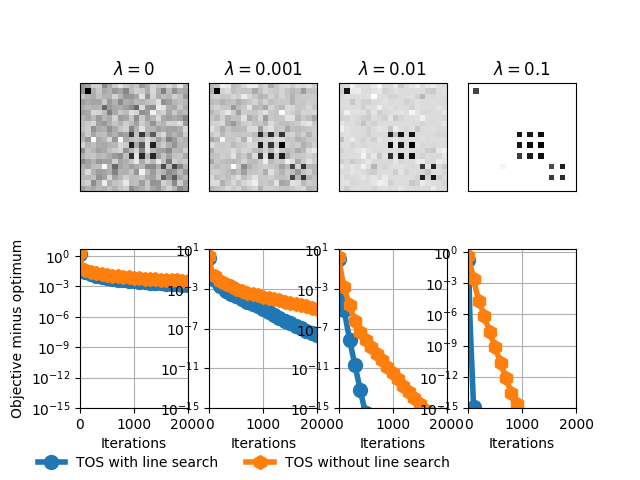

Note
Click here to download the full example code
Estimating a sparse and low rank matrix¶
Out:
#features 400
beta = 0
0%| | 0/5000 [00:00<?, ?it/s]
TOS: 0%| | 0/5000 [00:00<?, ?it/s]
TOS: 0%| | 0/5000 [00:00<?, ?it/s, step_size=1.29, tol=1.13]
TOS: 0%| | 0/5000 [00:00<?, ?it/s, step_size=0.919, tol=1.34]
TOS: 0%| | 0/5000 [00:00<?, ?it/s, step_size=0.657, tol=1.37]
TOS: 0%| | 0/5000 [00:00<?, ?it/s, step_size=0.469, tol=1.23]
TOS: 0%| | 0/5000 [00:00<?, ?it/s, step_size=0.478, tol=0.622]
TOS: 0%| | 0/5000 [00:00<?, ?it/s, step_size=0.488, tol=0.404]
TOS: 0%| | 0/5000 [00:00<?, ?it/s, step_size=0.497, tol=0.326]
TOS: 0%| | 0/5000 [00:00<?, ?it/s, step_size=0.507, tol=0.28]
TOS: 0%| | 0/5000 [00:00<?, ?it/s, step_size=0.518, tol=0.247]
TOS: 0%| | 0/5000 [00:00<?, ?it/s, step_size=0.528, tol=0.223]
TOS: 0%| | 0/5000 [00:00<?, ?it/s, step_size=0.538, tol=0.206]
TOS: 0%| | 0/5000 [00:00<?, ?it/s, step_size=0.549, tol=0.195]
TOS: 0%| | 0/5000 [00:00<?, ?it/s, step_size=0.56, tol=0.184]
TOS: 0%| | 0/5000 [00:00<?, ?it/s, step_size=0.571, tol=0.176]
TOS: 0%| | 0/5000 [00:00<?, ?it/s, step_size=0.583, tol=0.173]
TOS: 0%| | 0/5000 [00:00<?, ?it/s, step_size=0.416, tol=0.256]
TOS: 0%| | 0/5000 [00:00<?, ?it/s, step_size=0.297, tol=0.282]
TOS: 0%| | 0/5000 [00:00<?, ?it/s, step_size=0.303, tol=0.15]
TOS: 0%| | 0/5000 [00:00<?, ?it/s, step_size=0.309, tol=0.113]
TOS: 0%| | 0/5000 [00:00<?, ?it/s, step_size=0.315, tol=0.108]
TOS: 0%| | 0/5000 [00:00<?, ?it/s, step_size=0.322, tol=0.106]
TOS: 0%| | 0/5000 [00:00<?, ?it/s, step_size=0.328, tol=0.103]
TOS: 0%| | 0/5000 [00:00<?, ?it/s, step_size=0.335, tol=0.0999]
TOS: 0%| | 0/5000 [00:00<?, ?it/s, step_size=0.341, tol=0.0971]
TOS: 0%| | 0/5000 [00:00<?, ?it/s, step_size=0.348, tol=0.0945]
TOS: 0%| | 0/5000 [00:00<?, ?it/s, step_size=0.355, tol=0.0921]
TOS: 0%| | 0/5000 [00:00<?, ?it/s, step_size=0.362, tol=0.0892]
TOS: 0%| | 0/5000 [00:00<?, ?it/s, step_size=0.369, tol=0.0863]
TOS: 0%| | 0/5000 [00:00<?, ?it/s, step_size=0.377, tol=0.0833]
TOS: 0%| | 0/5000 [00:00<?, ?it/s, step_size=0.384, tol=0.0806]
TOS: 0%| | 0/5000 [00:00<?, ?it/s, step_size=0.392, tol=0.0779]
TOS: 0%| | 0/5000 [00:00<?, ?it/s, step_size=0.4, tol=0.0747]
TOS: 0%| | 0/5000 [00:00<?, ?it/s, step_size=0.408, tol=0.0719]
TOS: 0%| | 0/5000 [00:00<?, ?it/s, step_size=0.416, tol=0.0693]
TOS: 0%| | 0/5000 [00:00<?, ?it/s, step_size=0.424, tol=0.0669]
TOS: 0%| | 0/5000 [00:00<?, ?it/s, step_size=0.433, tol=0.0646]
TOS: 0%| | 0/5000 [00:00<?, ?it/s, step_size=0.442, tol=0.0624]
TOS: 0%| | 0/5000 [00:00<?, ?it/s, step_size=0.45, tol=0.0603]
TOS: 0%| | 0/5000 [00:00<?, ?it/s, step_size=0.459, tol=0.0584]
TOS: 0%| | 0/5000 [00:00<?, ?it/s, step_size=0.469, tol=0.0566]
TOS: 0%| | 0/5000 [00:00<?, ?it/s, step_size=0.478, tol=0.0549]
TOS: 0%| | 0/5000 [00:00<?, ?it/s, step_size=0.487, tol=0.0532]
TOS: 0%| | 0/5000 [00:00<?, ?it/s, step_size=0.497, tol=0.0517]
TOS: 0%| | 0/5000 [00:00<?, ?it/s, step_size=0.507, tol=0.0502]
TOS: 0%| | 0/5000 [00:00<?, ?it/s, step_size=0.517, tol=0.0488]
TOS: 0%| | 0/5000 [00:00<?, ?it/s, step_size=0.528, tol=0.0475]
TOS: 0%| | 0/5000 [00:00<?, ?it/s, step_size=0.538, tol=0.0462]
TOS: 0%| | 0/5000 [00:00<?, ?it/s, step_size=0.549, tol=0.045]
TOS: 0%| | 0/5000 [00:00<?, ?it/s, step_size=0.56, tol=0.0438]
TOS: 0%| | 0/5000 [00:00<?, ?it/s, step_size=0.571, tol=0.0427]
TOS: 0%| | 0/5000 [00:00<?, ?it/s, step_size=0.583, tol=0.0416]
TOS: 0%| | 0/5000 [00:00<?, ?it/s, step_size=0.594, tol=0.0406]
TOS: 0%| | 0/5000 [00:00<?, ?it/s, step_size=0.606, tol=0.0396]
TOS: 0%| | 0/5000 [00:00<?, ?it/s, step_size=0.618, tol=0.0386]
TOS: 0%| | 0/5000 [00:00<?, ?it/s, step_size=0.631, tol=0.0377]
TOS: 0%| | 0/5000 [00:00<?, ?it/s, step_size=0.643, tol=0.0368]
TOS: 0%| | 0/5000 [00:00<?, ?it/s, step_size=0.656, tol=0.0359]
TOS: 0%| | 0/5000 [00:00<?, ?it/s, step_size=0.669, tol=0.0351]
TOS: 0%| | 0/5000 [00:00<?, ?it/s, step_size=0.683, tol=0.0344]
TOS: 0%| | 0/5000 [00:00<?, ?it/s, step_size=0.696, tol=0.0337]
TOS: 0%| | 0/5000 [00:00<?, ?it/s, step_size=0.71, tol=0.0331]
TOS: 0%| | 0/5000 [00:00<?, ?it/s, step_size=0.724, tol=0.0329]
TOS: 0%| | 0/5000 [00:00<?, ?it/s, step_size=0.739, tol=0.0337]
TOS: 0%| | 0/5000 [00:00<?, ?it/s, step_size=0.528, tol=0.0555]
TOS: 0%| | 0/5000 [00:00<?, ?it/s, step_size=0.264, tol=0.113]
TOS: 0%| | 0/5000 [00:00<?, ?it/s, step_size=0.269, tol=0.0586]
TOS: 0%| | 0/5000 [00:00<?, ?it/s, step_size=0.274, tol=0.0286]
TOS: 0%| | 0/5000 [00:00<?, ?it/s, step_size=0.28, tol=0.0282]
TOS: 0%| | 0/5000 [00:00<?, ?it/s, step_size=0.285, tol=0.028]
TOS: 0%| | 0/5000 [00:00<?, ?it/s, step_size=0.291, tol=0.0277]
TOS: 0%| | 0/5000 [00:00<?, ?it/s, step_size=0.297, tol=0.0275]
TOS: 0%| | 0/5000 [00:00<?, ?it/s, step_size=0.303, tol=0.0272]
TOS: 0%| | 0/5000 [00:00<?, ?it/s, step_size=0.309, tol=0.0269]
TOS: 0%| | 0/5000 [00:00<?, ?it/s, step_size=0.315, tol=0.0267]
TOS: 0%| | 0/5000 [00:00<?, ?it/s, step_size=0.321, tol=0.0264]
TOS: 0%| | 0/5000 [00:00<?, ?it/s, step_size=0.328, tol=0.0262]
TOS: 0%| | 0/5000 [00:00<?, ?it/s, step_size=0.334, tol=0.0259]
TOS: 0%| | 0/5000 [00:00<?, ?it/s, step_size=0.341, tol=0.0257]
TOS: 0%| | 0/5000 [00:00<?, ?it/s, step_size=0.348, tol=0.0254]
TOS: 0%| | 0/5000 [00:00<?, ?it/s, step_size=0.355, tol=0.0252]
TOS: 0%| | 0/5000 [00:00<?, ?it/s, step_size=0.362, tol=0.025]
TOS: 2%|1 | 81/5000 [00:00<00:06, 803.21it/s, step_size=0.362, tol=0.025]
TOS: 2%|1 | 81/5000 [00:00<00:06, 803.21it/s, step_size=0.369, tol=0.0247]
TOS: 2%|1 | 81/5000 [00:00<00:06, 803.21it/s, step_size=0.377, tol=0.0245]
TOS: 2%|1 | 81/5000 [00:00<00:06, 803.21it/s, step_size=0.384, tol=0.0242]
TOS: 2%|1 | 81/5000 [00:00<00:06, 803.21it/s, step_size=0.392, tol=0.024]
TOS: 2%|1 | 81/5000 [00:00<00:06, 803.21it/s, step_size=0.4, tol=0.0237]
TOS: 2%|1 | 81/5000 [00:00<00:06, 803.21it/s, step_size=0.408, tol=0.0235]
TOS: 2%|1 | 81/5000 [00:00<00:06, 803.21it/s, step_size=0.416, tol=0.0233]
TOS: 2%|1 | 81/5000 [00:00<00:06, 803.21it/s, step_size=0.424, tol=0.023]
TOS: 2%|1 | 81/5000 [00:00<00:06, 803.21it/s, step_size=0.433, tol=0.0228]
TOS: 2%|1 | 81/5000 [00:00<00:06, 803.21it/s, step_size=0.441, tol=0.0226]
TOS: 2%|1 | 81/5000 [00:00<00:06, 803.21it/s, step_size=0.45, tol=0.0223]
TOS: 2%|1 | 81/5000 [00:00<00:06, 803.21it/s, step_size=0.459, tol=0.0221]
TOS: 2%|1 | 81/5000 [00:00<00:06, 803.21it/s, step_size=0.468, tol=0.0219]
TOS: 2%|1 | 81/5000 [00:00<00:06, 803.21it/s, step_size=0.478, tol=0.0216]
TOS: 2%|1 | 81/5000 [00:00<00:06, 803.21it/s, step_size=0.487, tol=0.0214]
TOS: 2%|1 | 81/5000 [00:00<00:06, 803.21it/s, step_size=0.497, tol=0.0212]
TOS: 2%|1 | 81/5000 [00:00<00:06, 803.21it/s, step_size=0.507, tol=0.021]
TOS: 2%|1 | 81/5000 [00:00<00:06, 803.21it/s, step_size=0.517, tol=0.0208]
TOS: 2%|1 | 81/5000 [00:00<00:06, 803.21it/s, step_size=0.527, tol=0.0205]
TOS: 2%|1 | 81/5000 [00:00<00:06, 803.21it/s, step_size=0.538, tol=0.0203]
TOS: 2%|1 | 81/5000 [00:00<00:06, 803.21it/s, step_size=0.549, tol=0.0201]
TOS: 2%|1 | 81/5000 [00:00<00:06, 803.21it/s, step_size=0.56, tol=0.0199]
TOS: 2%|1 | 81/5000 [00:00<00:06, 803.21it/s, step_size=0.571, tol=0.0197]
TOS: 2%|1 | 81/5000 [00:00<00:06, 803.21it/s, step_size=0.582, tol=0.0195]
TOS: 2%|1 | 81/5000 [00:00<00:06, 803.21it/s, step_size=0.594, tol=0.0193]
TOS: 2%|1 | 81/5000 [00:00<00:06, 803.21it/s, step_size=0.606, tol=0.019]
TOS: 2%|1 | 81/5000 [00:00<00:06, 803.21it/s, step_size=0.618, tol=0.0188]
TOS: 2%|1 | 81/5000 [00:00<00:06, 803.21it/s, step_size=0.63, tol=0.0186]
TOS: 2%|1 | 81/5000 [00:00<00:06, 803.21it/s, step_size=0.643, tol=0.0184]
TOS: 2%|1 | 81/5000 [00:00<00:06, 803.21it/s, step_size=0.656, tol=0.0182]
TOS: 2%|1 | 81/5000 [00:00<00:06, 803.21it/s, step_size=0.669, tol=0.018]
TOS: 2%|1 | 81/5000 [00:00<00:06, 803.21it/s, step_size=0.682, tol=0.0178]
TOS: 2%|1 | 81/5000 [00:00<00:06, 803.21it/s, step_size=0.696, tol=0.0177]
TOS: 2%|1 | 81/5000 [00:00<00:06, 803.21it/s, step_size=0.71, tol=0.0175]
TOS: 2%|1 | 81/5000 [00:00<00:06, 803.21it/s, step_size=0.724, tol=0.0173]
TOS: 2%|1 | 81/5000 [00:00<00:06, 803.21it/s, step_size=0.738, tol=0.0171]
TOS: 2%|1 | 81/5000 [00:00<00:06, 803.21it/s, step_size=0.753, tol=0.0169]
TOS: 2%|1 | 81/5000 [00:00<00:06, 803.21it/s, step_size=0.768, tol=0.0167]
TOS: 2%|1 | 81/5000 [00:00<00:06, 803.21it/s, step_size=0.784, tol=0.0165]
TOS: 2%|1 | 81/5000 [00:00<00:06, 803.21it/s, step_size=0.799, tol=0.0163]
TOS: 2%|1 | 81/5000 [00:00<00:06, 803.21it/s, step_size=0.815, tol=0.0162]
TOS: 2%|1 | 81/5000 [00:00<00:06, 803.21it/s, step_size=0.831, tol=0.016]
TOS: 2%|1 | 81/5000 [00:00<00:06, 803.21it/s, step_size=0.848, tol=0.0158]
TOS: 2%|1 | 81/5000 [00:00<00:06, 803.21it/s, step_size=0.865, tol=0.0156]
TOS: 2%|1 | 81/5000 [00:00<00:06, 803.21it/s, step_size=0.882, tol=0.0155]
TOS: 2%|1 | 81/5000 [00:00<00:06, 803.21it/s, step_size=0.9, tol=0.0153]
TOS: 2%|1 | 81/5000 [00:00<00:06, 803.21it/s, step_size=0.918, tol=0.0151]
TOS: 2%|1 | 81/5000 [00:00<00:06, 803.21it/s, step_size=0.936, tol=0.015]
TOS: 2%|1 | 81/5000 [00:00<00:06, 803.21it/s, step_size=0.955, tol=0.0148]
TOS: 2%|1 | 81/5000 [00:00<00:06, 803.21it/s, step_size=0.974, tol=0.0146]
TOS: 2%|1 | 81/5000 [00:00<00:06, 803.21it/s, step_size=0.994, tol=0.0145]
TOS: 2%|1 | 81/5000 [00:00<00:06, 803.21it/s, step_size=1.01, tol=0.0143]
TOS: 2%|1 | 81/5000 [00:00<00:06, 803.21it/s, step_size=1.03, tol=0.0141]
TOS: 2%|1 | 81/5000 [00:00<00:06, 803.21it/s, step_size=1.05, tol=0.014]
TOS: 2%|1 | 81/5000 [00:00<00:06, 803.21it/s, step_size=1.08, tol=0.0138]
TOS: 2%|1 | 81/5000 [00:00<00:06, 803.21it/s, step_size=1.1, tol=0.0137]
TOS: 2%|1 | 81/5000 [00:00<00:06, 803.21it/s, step_size=1.12, tol=0.0135]
TOS: 2%|1 | 81/5000 [00:00<00:06, 803.21it/s, step_size=1.14, tol=0.0134]
TOS: 2%|1 | 81/5000 [00:00<00:06, 803.21it/s, step_size=1.16, tol=0.0134]
TOS: 2%|1 | 81/5000 [00:00<00:06, 803.21it/s, step_size=0.831, tol=0.0216]
TOS: 2%|1 | 81/5000 [00:00<00:06, 803.21it/s, step_size=0.291, tol=0.0882]
TOS: 2%|1 | 81/5000 [00:00<00:06, 803.21it/s, step_size=0.208, tol=0.0913]
TOS: 2%|1 | 81/5000 [00:00<00:06, 803.21it/s, step_size=0.212, tol=0.0159]
TOS: 2%|1 | 81/5000 [00:00<00:06, 803.21it/s, step_size=0.216, tol=0.0129]
TOS: 2%|1 | 81/5000 [00:00<00:06, 803.21it/s, step_size=0.22, tol=0.0127]
TOS: 2%|1 | 81/5000 [00:00<00:06, 803.21it/s, step_size=0.225, tol=0.0127]
TOS: 2%|1 | 81/5000 [00:00<00:06, 803.21it/s, step_size=0.229, tol=0.0127]
TOS: 2%|1 | 81/5000 [00:00<00:06, 803.21it/s, step_size=0.234, tol=0.0126]
TOS: 2%|1 | 81/5000 [00:00<00:06, 803.21it/s, step_size=0.239, tol=0.0126]
TOS: 2%|1 | 81/5000 [00:00<00:06, 803.21it/s, step_size=0.243, tol=0.0126]
TOS: 2%|1 | 81/5000 [00:00<00:06, 803.21it/s, step_size=0.248, tol=0.0126]
TOS: 2%|1 | 81/5000 [00:00<00:06, 803.21it/s, step_size=0.253, tol=0.0125]
TOS: 2%|1 | 81/5000 [00:00<00:06, 803.21it/s, step_size=0.258, tol=0.0125]
TOS: 2%|1 | 81/5000 [00:00<00:06, 803.21it/s, step_size=0.263, tol=0.0125]
TOS: 3%|3 | 155/5000 [00:00<00:06, 781.69it/s, step_size=0.263, tol=0.0125]
TOS: 3%|3 | 155/5000 [00:00<00:06, 781.69it/s, step_size=0.269, tol=0.0124]
TOS: 3%|3 | 155/5000 [00:00<00:06, 781.69it/s, step_size=0.274, tol=0.0124]
TOS: 3%|3 | 155/5000 [00:00<00:06, 781.69it/s, step_size=0.279, tol=0.0124]
TOS: 3%|3 | 155/5000 [00:00<00:06, 781.69it/s, step_size=0.285, tol=0.0124]
TOS: 3%|3 | 155/5000 [00:00<00:06, 781.69it/s, step_size=0.291, tol=0.0123]
TOS: 3%|3 | 155/5000 [00:00<00:06, 781.69it/s, step_size=0.297, tol=0.0123]
TOS: 3%|3 | 155/5000 [00:00<00:06, 781.69it/s, step_size=0.303, tol=0.0123]
TOS: 3%|3 | 155/5000 [00:00<00:06, 781.69it/s, step_size=0.309, tol=0.0122]
TOS: 3%|3 | 155/5000 [00:00<00:06, 781.69it/s, step_size=0.315, tol=0.0122]
TOS: 3%|3 | 155/5000 [00:00<00:06, 781.69it/s, step_size=0.321, tol=0.0122]
TOS: 3%|3 | 155/5000 [00:00<00:06, 781.69it/s, step_size=0.327, tol=0.0121]
TOS: 3%|3 | 155/5000 [00:00<00:06, 781.69it/s, step_size=0.334, tol=0.0121]
TOS: 3%|3 | 155/5000 [00:00<00:06, 781.69it/s, step_size=0.341, tol=0.0121]
TOS: 3%|3 | 155/5000 [00:00<00:06, 781.69it/s, step_size=0.347, tol=0.012]
TOS: 3%|3 | 155/5000 [00:00<00:06, 781.69it/s, step_size=0.354, tol=0.012]
TOS: 3%|3 | 155/5000 [00:00<00:06, 781.69it/s, step_size=0.362, tol=0.0119]
TOS: 3%|3 | 155/5000 [00:00<00:06, 781.69it/s, step_size=0.369, tol=0.0119]
TOS: 3%|3 | 155/5000 [00:00<00:06, 781.69it/s, step_size=0.376, tol=0.0119]
TOS: 3%|3 | 155/5000 [00:00<00:06, 781.69it/s, step_size=0.384, tol=0.0118]
TOS: 3%|3 | 155/5000 [00:00<00:06, 781.69it/s, step_size=0.391, tol=0.0118]
TOS: 3%|3 | 155/5000 [00:00<00:06, 781.69it/s, step_size=0.399, tol=0.0118]
TOS: 3%|3 | 155/5000 [00:00<00:06, 781.69it/s, step_size=0.407, tol=0.0117]
TOS: 3%|3 | 155/5000 [00:00<00:06, 781.69it/s, step_size=0.415, tol=0.0117]
TOS: 3%|3 | 155/5000 [00:00<00:06, 781.69it/s, step_size=0.424, tol=0.0116]
TOS: 3%|3 | 155/5000 [00:00<00:06, 781.69it/s, step_size=0.432, tol=0.0116]
TOS: 3%|3 | 155/5000 [00:00<00:06, 781.69it/s, step_size=0.441, tol=0.0116]
TOS: 3%|3 | 155/5000 [00:00<00:06, 781.69it/s, step_size=0.45, tol=0.0115]
TOS: 3%|3 | 155/5000 [00:00<00:06, 781.69it/s, step_size=0.459, tol=0.0115]
TOS: 3%|3 | 155/5000 [00:00<00:06, 781.69it/s, step_size=0.468, tol=0.0114]
TOS: 3%|3 | 155/5000 [00:00<00:06, 781.69it/s, step_size=0.477, tol=0.0114]
TOS: 3%|3 | 155/5000 [00:00<00:06, 781.69it/s, step_size=0.487, tol=0.0113]
TOS: 3%|3 | 155/5000 [00:00<00:06, 781.69it/s, step_size=0.496, tol=0.0113]
TOS: 3%|3 | 155/5000 [00:00<00:06, 781.69it/s, step_size=0.506, tol=0.0113]
TOS: 3%|3 | 155/5000 [00:00<00:06, 781.69it/s, step_size=0.516, tol=0.0112]
TOS: 3%|3 | 155/5000 [00:00<00:06, 781.69it/s, step_size=0.527, tol=0.0112]
TOS: 3%|3 | 155/5000 [00:00<00:06, 781.69it/s, step_size=0.537, tol=0.0111]
TOS: 3%|3 | 155/5000 [00:00<00:06, 781.69it/s, step_size=0.548, tol=0.0111]
TOS: 3%|3 | 155/5000 [00:00<00:06, 781.69it/s, step_size=0.559, tol=0.011]
TOS: 3%|3 | 155/5000 [00:00<00:06, 781.69it/s, step_size=0.57, tol=0.011]
TOS: 3%|3 | 155/5000 [00:00<00:06, 781.69it/s, step_size=0.582, tol=0.0109]
TOS: 3%|3 | 155/5000 [00:00<00:06, 781.69it/s, step_size=0.593, tol=0.0109]
TOS: 3%|3 | 155/5000 [00:00<00:06, 781.69it/s, step_size=0.605, tol=0.0108]
TOS: 3%|3 | 155/5000 [00:00<00:06, 781.69it/s, step_size=0.617, tol=0.0108]
TOS: 3%|3 | 155/5000 [00:00<00:06, 781.69it/s, step_size=0.629, tol=0.0107]
TOS: 3%|3 | 155/5000 [00:00<00:06, 781.69it/s, step_size=0.642, tol=0.0107]
TOS: 3%|3 | 155/5000 [00:00<00:06, 781.69it/s, step_size=0.655, tol=0.0106]
TOS: 3%|3 | 155/5000 [00:00<00:06, 781.69it/s, step_size=0.668, tol=0.0106]
TOS: 3%|3 | 155/5000 [00:00<00:06, 781.69it/s, step_size=0.681, tol=0.0105]
TOS: 3%|3 | 155/5000 [00:00<00:06, 781.69it/s, step_size=0.695, tol=0.0105]
TOS: 3%|3 | 155/5000 [00:00<00:06, 781.69it/s, step_size=0.709, tol=0.0104]
TOS: 3%|3 | 155/5000 [00:00<00:06, 781.69it/s, step_size=0.723, tol=0.0104]
TOS: 3%|3 | 155/5000 [00:00<00:06, 781.69it/s, step_size=0.737, tol=0.0103]
TOS: 3%|3 | 155/5000 [00:00<00:06, 781.69it/s, step_size=0.752, tol=0.0103]
TOS: 3%|3 | 155/5000 [00:00<00:06, 781.69it/s, step_size=0.767, tol=0.0102]
TOS: 3%|3 | 155/5000 [00:00<00:06, 781.69it/s, step_size=0.783, tol=0.0102]
TOS: 3%|3 | 155/5000 [00:00<00:06, 781.69it/s, step_size=0.798, tol=0.0101]
TOS: 3%|3 | 155/5000 [00:00<00:06, 781.69it/s, step_size=0.814, tol=0.01]
TOS: 3%|3 | 155/5000 [00:00<00:06, 781.69it/s, step_size=0.831, tol=0.00999]
TOS: 3%|3 | 155/5000 [00:00<00:06, 781.69it/s, step_size=0.847, tol=0.00993]
TOS: 3%|3 | 155/5000 [00:00<00:06, 781.69it/s, step_size=0.864, tol=0.00988]
TOS: 3%|3 | 155/5000 [00:00<00:06, 781.69it/s, step_size=0.881, tol=0.00982]
TOS: 3%|3 | 155/5000 [00:00<00:06, 781.69it/s, step_size=0.899, tol=0.00976]
TOS: 3%|3 | 155/5000 [00:00<00:06, 781.69it/s, step_size=0.917, tol=0.0097]
TOS: 3%|3 | 155/5000 [00:00<00:06, 781.69it/s, step_size=0.935, tol=0.00964]
TOS: 3%|3 | 155/5000 [00:00<00:06, 781.69it/s, step_size=0.954, tol=0.00958]
TOS: 3%|3 | 155/5000 [00:00<00:06, 781.69it/s, step_size=0.973, tol=0.00952]
TOS: 3%|3 | 155/5000 [00:00<00:06, 781.69it/s, step_size=0.993, tol=0.00946]
TOS: 3%|3 | 155/5000 [00:00<00:06, 781.69it/s, step_size=1.01, tol=0.0094]
TOS: 3%|3 | 155/5000 [00:00<00:06, 781.69it/s, step_size=1.03, tol=0.00934]
TOS: 3%|3 | 155/5000 [00:00<00:06, 781.69it/s, step_size=1.05, tol=0.00928]
TOS: 3%|3 | 155/5000 [00:00<00:06, 781.69it/s, step_size=1.07, tol=0.00922]
TOS: 3%|3 | 155/5000 [00:00<00:06, 781.69it/s, step_size=1.1, tol=0.00916]
TOS: 3%|3 | 155/5000 [00:00<00:06, 781.69it/s, step_size=1.12, tol=0.0091]
TOS: 3%|3 | 155/5000 [00:00<00:06, 781.69it/s, step_size=1.14, tol=0.00905]
TOS: 3%|3 | 155/5000 [00:00<00:06, 781.69it/s, step_size=1.16, tol=0.00916]
TOS: 3%|3 | 155/5000 [00:00<00:06, 781.69it/s, step_size=0.581, tol=0.0226]
TOS: 3%|3 | 155/5000 [00:00<00:06, 781.69it/s, step_size=0.291, tol=0.0514]
TOS: 3%|3 | 155/5000 [00:00<00:06, 781.69it/s, step_size=0.207, tol=0.0456]
TOS: 3%|3 | 155/5000 [00:00<00:06, 781.69it/s, step_size=0.212, tol=0.00992]
TOS: 3%|3 | 155/5000 [00:00<00:06, 781.69it/s, step_size=0.216, tol=0.00882]
TOS: 3%|3 | 155/5000 [00:00<00:06, 781.69it/s, step_size=0.22, tol=0.00878]
TOS: 3%|3 | 155/5000 [00:00<00:06, 781.69it/s, step_size=0.225, tol=0.00876]
TOS: 3%|3 | 155/5000 [00:00<00:06, 781.69it/s, step_size=0.229, tol=0.00875]
TOS: 3%|3 | 155/5000 [00:00<00:06, 781.69it/s, step_size=0.234, tol=0.00874]
TOS: 3%|3 | 155/5000 [00:00<00:06, 781.69it/s, step_size=0.238, tol=0.00873]
TOS: 3%|3 | 155/5000 [00:00<00:06, 781.69it/s, step_size=0.243, tol=0.00872]
TOS: 3%|3 | 155/5000 [00:00<00:06, 781.69it/s, step_size=0.248, tol=0.0087]
TOS: 3%|3 | 155/5000 [00:00<00:06, 781.69it/s, step_size=0.253, tol=0.00869]
TOS: 5%|4 | 243/5000 [00:00<00:05, 808.74it/s, step_size=0.253, tol=0.00869]
TOS: 5%|4 | 243/5000 [00:00<00:05, 808.74it/s, step_size=0.258, tol=0.00868]
TOS: 5%|4 | 243/5000 [00:00<00:05, 808.74it/s, step_size=0.263, tol=0.00867]
TOS: 5%|4 | 243/5000 [00:00<00:05, 808.74it/s, step_size=0.268, tol=0.00865]
TOS: 5%|4 | 243/5000 [00:00<00:05, 808.74it/s, step_size=0.274, tol=0.00864]
TOS: 5%|4 | 243/5000 [00:00<00:05, 808.74it/s, step_size=0.279, tol=0.00862]
TOS: 5%|4 | 243/5000 [00:00<00:05, 808.74it/s, step_size=0.285, tol=0.00861]
TOS: 5%|4 | 243/5000 [00:00<00:05, 808.74it/s, step_size=0.29, tol=0.0086]
TOS: 5%|4 | 243/5000 [00:00<00:05, 808.74it/s, step_size=0.296, tol=0.00858]
TOS: 5%|4 | 243/5000 [00:00<00:05, 808.74it/s, step_size=0.302, tol=0.00857]
TOS: 5%|4 | 243/5000 [00:00<00:05, 808.74it/s, step_size=0.308, tol=0.00855]
TOS: 5%|4 | 243/5000 [00:00<00:05, 808.74it/s, step_size=0.314, tol=0.00854]
TOS: 5%|4 | 243/5000 [00:00<00:05, 808.74it/s, step_size=0.321, tol=0.00852]
TOS: 5%|4 | 243/5000 [00:00<00:05, 808.74it/s, step_size=0.327, tol=0.00851]
TOS: 5%|4 | 243/5000 [00:00<00:05, 808.74it/s, step_size=0.334, tol=0.00849]
TOS: 5%|4 | 243/5000 [00:00<00:05, 808.74it/s, step_size=0.34, tol=0.00847]
TOS: 5%|4 | 243/5000 [00:00<00:05, 808.74it/s, step_size=0.347, tol=0.00846]
TOS: 5%|4 | 243/5000 [00:00<00:05, 808.74it/s, step_size=0.354, tol=0.00844]
TOS: 5%|4 | 243/5000 [00:00<00:05, 808.74it/s, step_size=0.361, tol=0.00842]
TOS: 5%|4 | 243/5000 [00:00<00:05, 808.74it/s, step_size=0.368, tol=0.00841]
TOS: 5%|4 | 243/5000 [00:00<00:05, 808.74it/s, step_size=0.376, tol=0.00839]
TOS: 5%|4 | 243/5000 [00:00<00:05, 808.74it/s, step_size=0.383, tol=0.00837]
TOS: 5%|4 | 243/5000 [00:00<00:05, 808.74it/s, step_size=0.391, tol=0.00835]
TOS: 5%|4 | 243/5000 [00:00<00:05, 808.74it/s, step_size=0.399, tol=0.00833]
TOS: 5%|4 | 243/5000 [00:00<00:05, 808.74it/s, step_size=0.407, tol=0.00832]
TOS: 5%|4 | 243/5000 [00:00<00:05, 808.74it/s, step_size=0.415, tol=0.0083]
TOS: 5%|4 | 243/5000 [00:00<00:05, 808.74it/s, step_size=0.423, tol=0.00828]
TOS: 5%|4 | 243/5000 [00:00<00:05, 808.74it/s, step_size=0.432, tol=0.00826]
TOS: 5%|4 | 243/5000 [00:00<00:05, 808.74it/s, step_size=0.44, tol=0.00824]
TOS: 5%|4 | 243/5000 [00:00<00:05, 808.74it/s, step_size=0.449, tol=0.00822]
TOS: 5%|4 | 243/5000 [00:00<00:05, 808.74it/s, step_size=0.458, tol=0.0082]
TOS: 5%|4 | 243/5000 [00:00<00:05, 808.74it/s, step_size=0.467, tol=0.00818]
TOS: 5%|4 | 243/5000 [00:00<00:05, 808.74it/s, step_size=0.476, tol=0.00816]
TOS: 5%|4 | 243/5000 [00:00<00:05, 808.74it/s, step_size=0.486, tol=0.00814]
TOS: 5%|4 | 243/5000 [00:00<00:05, 808.74it/s, step_size=0.496, tol=0.00811]
TOS: 5%|4 | 243/5000 [00:00<00:05, 808.74it/s, step_size=0.506, tol=0.00809]
TOS: 5%|4 | 243/5000 [00:00<00:05, 808.74it/s, step_size=0.516, tol=0.00807]
TOS: 5%|4 | 243/5000 [00:00<00:05, 808.74it/s, step_size=0.526, tol=0.00805]
TOS: 5%|4 | 243/5000 [00:00<00:05, 808.74it/s, step_size=0.537, tol=0.00802]
TOS: 5%|4 | 243/5000 [00:00<00:05, 808.74it/s, step_size=0.547, tol=0.008]
TOS: 5%|4 | 243/5000 [00:00<00:05, 808.74it/s, step_size=0.558, tol=0.00798]
TOS: 5%|4 | 243/5000 [00:00<00:05, 808.74it/s, step_size=0.569, tol=0.00795]
TOS: 5%|4 | 243/5000 [00:00<00:05, 808.74it/s, step_size=0.581, tol=0.00793]
TOS: 5%|4 | 243/5000 [00:00<00:05, 808.74it/s, step_size=0.592, tol=0.00791]
TOS: 5%|4 | 243/5000 [00:00<00:05, 808.74it/s, step_size=0.604, tol=0.00788]
TOS: 5%|4 | 243/5000 [00:00<00:05, 808.74it/s, step_size=0.616, tol=0.00786]
TOS: 5%|4 | 243/5000 [00:00<00:05, 808.74it/s, step_size=0.629, tol=0.00783]
TOS: 5%|4 | 243/5000 [00:00<00:05, 808.74it/s, step_size=0.641, tol=0.0078]
TOS: 5%|4 | 243/5000 [00:00<00:05, 808.74it/s, step_size=0.654, tol=0.00778]
TOS: 5%|4 | 243/5000 [00:00<00:05, 808.74it/s, step_size=0.667, tol=0.00775]
TOS: 5%|4 | 243/5000 [00:00<00:05, 808.74it/s, step_size=0.681, tol=0.00772]
TOS: 5%|4 | 243/5000 [00:00<00:05, 808.74it/s, step_size=0.694, tol=0.0077]
TOS: 5%|4 | 243/5000 [00:00<00:05, 808.74it/s, step_size=0.708, tol=0.00767]
TOS: 5%|4 | 243/5000 [00:00<00:05, 808.74it/s, step_size=0.722, tol=0.00764]
TOS: 5%|4 | 243/5000 [00:00<00:05, 808.74it/s, step_size=0.737, tol=0.00761]
TOS: 5%|4 | 243/5000 [00:00<00:05, 808.74it/s, step_size=0.751, tol=0.00758]
TOS: 5%|4 | 243/5000 [00:00<00:05, 808.74it/s, step_size=0.766, tol=0.00756]
TOS: 5%|4 | 243/5000 [00:00<00:05, 808.74it/s, step_size=0.782, tol=0.00753]
TOS: 5%|4 | 243/5000 [00:00<00:05, 808.74it/s, step_size=0.797, tol=0.0075]
TOS: 5%|4 | 243/5000 [00:00<00:05, 808.74it/s, step_size=0.813, tol=0.00747]
TOS: 5%|4 | 243/5000 [00:00<00:05, 808.74it/s, step_size=0.83, tol=0.00744]
TOS: 5%|4 | 243/5000 [00:00<00:05, 808.74it/s, step_size=0.846, tol=0.00741]
TOS: 5%|4 | 243/5000 [00:00<00:05, 808.74it/s, step_size=0.863, tol=0.00737]
TOS: 5%|4 | 243/5000 [00:00<00:05, 808.74it/s, step_size=0.88, tol=0.00734]
TOS: 5%|4 | 243/5000 [00:00<00:05, 808.74it/s, step_size=0.898, tol=0.00731]
TOS: 5%|4 | 243/5000 [00:00<00:05, 808.74it/s, step_size=0.916, tol=0.00728]
TOS: 5%|4 | 243/5000 [00:00<00:05, 808.74it/s, step_size=0.934, tol=0.00725]
TOS: 5%|4 | 243/5000 [00:00<00:05, 808.74it/s, step_size=0.953, tol=0.00721]
TOS: 5%|4 | 243/5000 [00:00<00:05, 808.74it/s, step_size=0.972, tol=0.00718]
TOS: 5%|4 | 243/5000 [00:00<00:05, 808.74it/s, step_size=0.991, tol=0.00715]
TOS: 5%|4 | 243/5000 [00:00<00:05, 808.74it/s, step_size=1.01, tol=0.00711]
TOS: 5%|4 | 243/5000 [00:00<00:05, 808.74it/s, step_size=1.03, tol=0.00708]
TOS: 5%|4 | 243/5000 [00:00<00:05, 808.74it/s, step_size=1.05, tol=0.00704]
TOS: 5%|4 | 243/5000 [00:00<00:05, 808.74it/s, step_size=1.07, tol=0.00701]
TOS: 5%|4 | 243/5000 [00:00<00:05, 808.74it/s, step_size=1.09, tol=0.00697]
TOS: 5%|4 | 243/5000 [00:00<00:05, 808.74it/s, step_size=1.12, tol=0.00694]
TOS: 5%|4 | 243/5000 [00:00<00:05, 808.74it/s, step_size=1.14, tol=0.0069]
TOS: 5%|4 | 243/5000 [00:00<00:05, 808.74it/s, step_size=1.16, tol=0.00687]
TOS: 5%|4 | 243/5000 [00:00<00:05, 808.74it/s, step_size=1.18, tol=0.00692]
TOS: 5%|4 | 243/5000 [00:00<00:05, 808.74it/s, step_size=0.846, tol=0.0111]
TOS: 5%|4 | 243/5000 [00:00<00:05, 808.74it/s, step_size=0.296, tol=0.0445]
TOS: 5%|4 | 243/5000 [00:00<00:05, 808.74it/s, step_size=0.211, tol=0.0456]
TOS: 5%|4 | 243/5000 [00:00<00:05, 808.74it/s, step_size=0.216, tol=0.00814]
TOS: 6%|6 | 325/5000 [00:00<00:05, 810.36it/s, step_size=0.216, tol=0.00814]
TOS: 6%|6 | 325/5000 [00:00<00:05, 810.36it/s, step_size=0.22, tol=0.00676]
TOS: 6%|6 | 325/5000 [00:00<00:05, 810.36it/s, step_size=0.224, tol=0.00671]
TOS: 6%|6 | 325/5000 [00:00<00:05, 810.36it/s, step_size=0.229, tol=0.0067]
TOS: 6%|6 | 325/5000 [00:00<00:05, 810.36it/s, step_size=0.233, tol=0.00669]
TOS: 6%|6 | 325/5000 [00:00<00:05, 810.36it/s, step_size=0.238, tol=0.00669]
TOS: 6%|6 | 325/5000 [00:00<00:05, 810.36it/s, step_size=0.243, tol=0.00668]
TOS: 6%|6 | 325/5000 [00:00<00:05, 810.36it/s, step_size=0.248, tol=0.00667]
TOS: 6%|6 | 325/5000 [00:00<00:05, 810.36it/s, step_size=0.253, tol=0.00666]
TOS: 6%|6 | 325/5000 [00:00<00:05, 810.36it/s, step_size=0.258, tol=0.00666]
TOS: 6%|6 | 325/5000 [00:00<00:05, 810.36it/s, step_size=0.263, tol=0.00665]
TOS: 6%|6 | 325/5000 [00:00<00:05, 810.36it/s, step_size=0.268, tol=0.00664]
TOS: 6%|6 | 325/5000 [00:00<00:05, 810.36it/s, step_size=0.273, tol=0.00663]
TOS: 6%|6 | 325/5000 [00:00<00:05, 810.36it/s, step_size=0.279, tol=0.00663]
TOS: 6%|6 | 325/5000 [00:00<00:05, 810.36it/s, step_size=0.284, tol=0.00662]
TOS: 6%|6 | 325/5000 [00:00<00:05, 810.36it/s, step_size=0.29, tol=0.00661]
TOS: 6%|6 | 325/5000 [00:00<00:05, 810.36it/s, step_size=0.296, tol=0.0066]
TOS: 6%|6 | 325/5000 [00:00<00:05, 810.36it/s, step_size=0.302, tol=0.00659]
TOS: 6%|6 | 325/5000 [00:00<00:05, 810.36it/s, step_size=0.308, tol=0.00658]
TOS: 6%|6 | 325/5000 [00:00<00:05, 810.36it/s, step_size=0.314, tol=0.00657]
TOS: 6%|6 | 325/5000 [00:00<00:05, 810.36it/s, step_size=0.32, tol=0.00657]
TOS: 6%|6 | 325/5000 [00:00<00:05, 810.36it/s, step_size=0.327, tol=0.00656]
TOS: 6%|6 | 325/5000 [00:00<00:05, 810.36it/s, step_size=0.333, tol=0.00655]
TOS: 6%|6 | 325/5000 [00:00<00:05, 810.36it/s, step_size=0.34, tol=0.00654]
TOS: 6%|6 | 325/5000 [00:00<00:05, 810.36it/s, step_size=0.347, tol=0.00653]
TOS: 6%|6 | 325/5000 [00:00<00:05, 810.36it/s, step_size=0.354, tol=0.00652]
TOS: 6%|6 | 325/5000 [00:00<00:05, 810.36it/s, step_size=0.361, tol=0.00651]
TOS: 6%|6 | 325/5000 [00:00<00:05, 810.36it/s, step_size=0.368, tol=0.0065]
TOS: 6%|6 | 325/5000 [00:00<00:05, 810.36it/s, step_size=0.375, tol=0.00649]
TOS: 6%|6 | 325/5000 [00:00<00:05, 810.36it/s, step_size=0.383, tol=0.00648]
TOS: 6%|6 | 325/5000 [00:00<00:05, 810.36it/s, step_size=0.39, tol=0.00647]
TOS: 6%|6 | 325/5000 [00:00<00:05, 810.36it/s, step_size=0.398, tol=0.00646]
TOS: 6%|6 | 325/5000 [00:00<00:05, 810.36it/s, step_size=0.406, tol=0.00644]
TOS: 6%|6 | 325/5000 [00:00<00:05, 810.36it/s, step_size=0.414, tol=0.00643]
TOS: 6%|6 | 325/5000 [00:00<00:05, 810.36it/s, step_size=0.423, tol=0.00642]
TOS: 6%|6 | 325/5000 [00:00<00:05, 810.36it/s, step_size=0.431, tol=0.00641]
TOS: 6%|6 | 325/5000 [00:00<00:05, 810.36it/s, step_size=0.44, tol=0.0064]
TOS: 6%|6 | 325/5000 [00:00<00:05, 810.36it/s, step_size=0.448, tol=0.00639]
TOS: 6%|6 | 325/5000 [00:00<00:05, 810.36it/s, step_size=0.457, tol=0.00637]
TOS: 6%|6 | 325/5000 [00:00<00:05, 810.36it/s, step_size=0.467, tol=0.00636]
TOS: 6%|6 | 325/5000 [00:00<00:05, 810.36it/s, step_size=0.476, tol=0.00635]
TOS: 6%|6 | 325/5000 [00:00<00:05, 810.36it/s, step_size=0.485, tol=0.00634]
TOS: 6%|6 | 325/5000 [00:00<00:05, 810.36it/s, step_size=0.495, tol=0.00632]
TOS: 6%|6 | 325/5000 [00:00<00:05, 810.36it/s, step_size=0.505, tol=0.00631]
TOS: 6%|6 | 325/5000 [00:00<00:05, 810.36it/s, step_size=0.515, tol=0.0063]
TOS: 6%|6 | 325/5000 [00:00<00:05, 810.36it/s, step_size=0.525, tol=0.00628]
TOS: 6%|6 | 325/5000 [00:00<00:05, 810.36it/s, step_size=0.536, tol=0.00627]
TOS: 6%|6 | 325/5000 [00:00<00:05, 810.36it/s, step_size=0.547, tol=0.00625]
TOS: 6%|6 | 325/5000 [00:00<00:05, 810.36it/s, step_size=0.558, tol=0.00624]
TOS: 6%|6 | 325/5000 [00:00<00:05, 810.36it/s, step_size=0.569, tol=0.00623]
TOS: 6%|6 | 325/5000 [00:00<00:05, 810.36it/s, step_size=0.58, tol=0.00621]
TOS: 6%|6 | 325/5000 [00:00<00:05, 810.36it/s, step_size=0.592, tol=0.0062]
TOS: 6%|6 | 325/5000 [00:00<00:05, 810.36it/s, step_size=0.604, tol=0.00618]
TOS: 6%|6 | 325/5000 [00:00<00:05, 810.36it/s, step_size=0.616, tol=0.00617]
TOS: 6%|6 | 325/5000 [00:00<00:05, 810.36it/s, step_size=0.628, tol=0.00615]
TOS: 6%|6 | 325/5000 [00:00<00:05, 810.36it/s, step_size=0.641, tol=0.00613]
TOS: 6%|6 | 325/5000 [00:00<00:05, 810.36it/s, step_size=0.653, tol=0.00612]
TOS: 6%|6 | 325/5000 [00:00<00:05, 810.36it/s, step_size=0.666, tol=0.0061]
TOS: 6%|6 | 325/5000 [00:00<00:05, 810.36it/s, step_size=0.68, tol=0.00608]
TOS: 6%|6 | 325/5000 [00:00<00:05, 810.36it/s, step_size=0.693, tol=0.00607]
TOS: 6%|6 | 325/5000 [00:00<00:05, 810.36it/s, step_size=0.707, tol=0.00605]
TOS: 6%|6 | 325/5000 [00:00<00:05, 810.36it/s, step_size=0.721, tol=0.00603]
TOS: 6%|6 | 325/5000 [00:00<00:05, 810.36it/s, step_size=0.736, tol=0.00602]
TOS: 6%|6 | 325/5000 [00:00<00:05, 810.36it/s, step_size=0.751, tol=0.006]
TOS: 6%|6 | 325/5000 [00:00<00:05, 810.36it/s, step_size=0.766, tol=0.00598]
TOS: 6%|6 | 325/5000 [00:00<00:05, 810.36it/s, step_size=0.781, tol=0.00596]
TOS: 6%|6 | 325/5000 [00:00<00:05, 810.36it/s, step_size=0.796, tol=0.00594]
TOS: 6%|6 | 325/5000 [00:00<00:05, 810.36it/s, step_size=0.812, tol=0.00592]
TOS: 6%|6 | 325/5000 [00:00<00:05, 810.36it/s, step_size=0.829, tol=0.00591]
TOS: 6%|6 | 325/5000 [00:00<00:05, 810.36it/s, step_size=0.845, tol=0.00589]
TOS: 6%|6 | 325/5000 [00:00<00:05, 810.36it/s, step_size=0.862, tol=0.00587]
TOS: 6%|6 | 325/5000 [00:00<00:05, 810.36it/s, step_size=0.879, tol=0.00585]
TOS: 6%|6 | 325/5000 [00:00<00:05, 810.36it/s, step_size=0.897, tol=0.00583]
TOS: 6%|6 | 325/5000 [00:00<00:05, 810.36it/s, step_size=0.915, tol=0.00581]
TOS: 6%|6 | 325/5000 [00:00<00:05, 810.36it/s, step_size=0.933, tol=0.00579]
TOS: 6%|6 | 325/5000 [00:00<00:05, 810.36it/s, step_size=0.952, tol=0.00576]
TOS: 6%|6 | 325/5000 [00:00<00:05, 810.36it/s, step_size=0.971, tol=0.00574]
TOS: 6%|6 | 325/5000 [00:00<00:05, 810.36it/s, step_size=0.99, tol=0.00572]
TOS: 6%|6 | 325/5000 [00:00<00:05, 810.36it/s, step_size=1.01, tol=0.0057]
TOS: 6%|6 | 325/5000 [00:00<00:05, 810.36it/s, step_size=1.03, tol=0.00568]
TOS: 6%|6 | 325/5000 [00:00<00:05, 810.36it/s, step_size=1.05, tol=0.00566]
TOS: 6%|6 | 325/5000 [00:00<00:05, 810.36it/s, step_size=1.07, tol=0.00563]
TOS: 6%|6 | 325/5000 [00:00<00:05, 810.36it/s, step_size=1.09, tol=0.00561]
TOS: 6%|6 | 325/5000 [00:00<00:05, 810.36it/s, step_size=1.12, tol=0.00559]
TOS: 6%|6 | 325/5000 [00:00<00:05, 810.36it/s, step_size=1.14, tol=0.00557]
TOS: 6%|6 | 325/5000 [00:00<00:05, 810.36it/s, step_size=1.16, tol=0.00559]
TOS: 6%|6 | 325/5000 [00:00<00:05, 810.36it/s, step_size=1.18, tol=0.00611]
TOS: 8%|8 | 411/5000 [00:00<00:05, 823.78it/s, step_size=1.18, tol=0.00611]
TOS: 8%|8 | 411/5000 [00:00<00:05, 823.78it/s, step_size=0.29, tol=0.0444]
TOS: 8%|8 | 411/5000 [00:00<00:05, 823.78it/s, step_size=0.207, tol=0.0475]
TOS: 8%|8 | 411/5000 [00:00<00:05, 823.78it/s, step_size=0.211, tol=0.00681]
TOS: 8%|8 | 411/5000 [00:00<00:05, 823.78it/s, step_size=0.215, tol=0.00552]
TOS: 8%|8 | 411/5000 [00:00<00:05, 823.78it/s, step_size=0.22, tol=0.00546]
TOS: 8%|8 | 411/5000 [00:00<00:05, 823.78it/s, step_size=0.224, tol=0.00545]
TOS: 8%|8 | 411/5000 [00:00<00:05, 823.78it/s, step_size=0.228, tol=0.00545]
TOS: 8%|8 | 411/5000 [00:00<00:05, 823.78it/s, step_size=0.233, tol=0.00544]
TOS: 8%|8 | 411/5000 [00:00<00:05, 823.78it/s, step_size=0.238, tol=0.00544]
TOS: 8%|8 | 411/5000 [00:00<00:05, 823.78it/s, step_size=0.242, tol=0.00543]
TOS: 8%|8 | 411/5000 [00:00<00:05, 823.78it/s, step_size=0.247, tol=0.00543]
TOS: 8%|8 | 411/5000 [00:00<00:05, 823.78it/s, step_size=0.252, tol=0.00542]
TOS: 8%|8 | 411/5000 [00:00<00:05, 823.78it/s, step_size=0.257, tol=0.00542]
TOS: 8%|8 | 411/5000 [00:00<00:05, 823.78it/s, step_size=0.262, tol=0.00541]
TOS: 8%|8 | 411/5000 [00:00<00:05, 823.78it/s, step_size=0.268, tol=0.00541]
TOS: 8%|8 | 411/5000 [00:00<00:05, 823.78it/s, step_size=0.273, tol=0.0054]
TOS: 8%|8 | 411/5000 [00:00<00:05, 823.78it/s, step_size=0.279, tol=0.0054]
TOS: 8%|8 | 411/5000 [00:00<00:05, 823.78it/s, step_size=0.284, tol=0.00539]
TOS: 8%|8 | 411/5000 [00:00<00:05, 823.78it/s, step_size=0.29, tol=0.00539]
TOS: 8%|8 | 411/5000 [00:00<00:05, 823.78it/s, step_size=0.296, tol=0.00538]
TOS: 8%|8 | 411/5000 [00:00<00:05, 823.78it/s, step_size=0.301, tol=0.00537]
TOS: 8%|8 | 411/5000 [00:00<00:05, 823.78it/s, step_size=0.308, tol=0.00537]
TOS: 8%|8 | 411/5000 [00:00<00:05, 823.78it/s, step_size=0.314, tol=0.00536]
TOS: 8%|8 | 411/5000 [00:00<00:05, 823.78it/s, step_size=0.32, tol=0.00536]
TOS: 8%|8 | 411/5000 [00:00<00:05, 823.78it/s, step_size=0.326, tol=0.00535]
TOS: 8%|8 | 411/5000 [00:00<00:05, 823.78it/s, step_size=0.333, tol=0.00534]
TOS: 8%|8 | 411/5000 [00:00<00:05, 823.78it/s, step_size=0.34, tol=0.00534]
TOS: 8%|8 | 411/5000 [00:00<00:05, 823.78it/s, step_size=0.346, tol=0.00533]
TOS: 8%|8 | 411/5000 [00:00<00:05, 823.78it/s, step_size=0.353, tol=0.00533]
TOS: 8%|8 | 411/5000 [00:00<00:05, 823.78it/s, step_size=0.36, tol=0.00532]
TOS: 8%|8 | 411/5000 [00:00<00:05, 823.78it/s, step_size=0.368, tol=0.00531]
TOS: 8%|8 | 411/5000 [00:00<00:05, 823.78it/s, step_size=0.375, tol=0.0053]
TOS: 8%|8 | 411/5000 [00:00<00:05, 823.78it/s, step_size=0.382, tol=0.0053]
TOS: 8%|8 | 411/5000 [00:00<00:05, 823.78it/s, step_size=0.39, tol=0.00529]
TOS: 8%|8 | 411/5000 [00:00<00:05, 823.78it/s, step_size=0.398, tol=0.00528]
TOS: 8%|8 | 411/5000 [00:00<00:05, 823.78it/s, step_size=0.406, tol=0.00528]
TOS: 8%|8 | 411/5000 [00:00<00:05, 823.78it/s, step_size=0.414, tol=0.00527]
TOS: 8%|8 | 411/5000 [00:00<00:05, 823.78it/s, step_size=0.422, tol=0.00526]
TOS: 8%|8 | 411/5000 [00:00<00:05, 823.78it/s, step_size=0.431, tol=0.00525]
TOS: 8%|8 | 411/5000 [00:00<00:05, 823.78it/s, step_size=0.439, tol=0.00524]
TOS: 8%|8 | 411/5000 [00:00<00:05, 823.78it/s, step_size=0.448, tol=0.00524]
TOS: 8%|8 | 411/5000 [00:00<00:05, 823.78it/s, step_size=0.457, tol=0.00523]
TOS: 8%|8 | 411/5000 [00:00<00:05, 823.78it/s, step_size=0.466, tol=0.00522]
TOS: 8%|8 | 411/5000 [00:00<00:05, 823.78it/s, step_size=0.475, tol=0.00521]
TOS: 8%|8 | 411/5000 [00:00<00:05, 823.78it/s, step_size=0.485, tol=0.0052]
TOS: 8%|8 | 411/5000 [00:00<00:05, 823.78it/s, step_size=0.495, tol=0.00519]
TOS: 8%|8 | 411/5000 [00:00<00:05, 823.78it/s, step_size=0.505, tol=0.00519]
TOS: 8%|8 | 411/5000 [00:00<00:05, 823.78it/s, step_size=0.515, tol=0.00518]
TOS: 8%|8 | 411/5000 [00:00<00:05, 823.78it/s, step_size=0.525, tol=0.00517]
TOS: 8%|8 | 411/5000 [00:00<00:05, 823.78it/s, step_size=0.535, tol=0.00516]
TOS: 8%|8 | 411/5000 [00:00<00:05, 823.78it/s, step_size=0.546, tol=0.00515]
TOS: 8%|8 | 411/5000 [00:00<00:05, 823.78it/s, step_size=0.557, tol=0.00514]
TOS: 8%|8 | 411/5000 [00:00<00:05, 823.78it/s, step_size=0.568, tol=0.00513]
TOS: 8%|8 | 411/5000 [00:00<00:05, 823.78it/s, step_size=0.58, tol=0.00512]
TOS: 8%|8 | 411/5000 [00:00<00:05, 823.78it/s, step_size=0.591, tol=0.00511]
TOS: 8%|8 | 411/5000 [00:00<00:05, 823.78it/s, step_size=0.603, tol=0.0051]
TOS: 8%|8 | 411/5000 [00:00<00:05, 823.78it/s, step_size=0.615, tol=0.00509]
TOS: 8%|8 | 411/5000 [00:00<00:05, 823.78it/s, step_size=0.627, tol=0.00508]
TOS: 8%|8 | 411/5000 [00:00<00:05, 823.78it/s, step_size=0.64, tol=0.00507]
TOS: 8%|8 | 411/5000 [00:00<00:05, 823.78it/s, step_size=0.653, tol=0.00506]
TOS: 8%|8 | 411/5000 [00:00<00:05, 823.78it/s, step_size=0.666, tol=0.00504]
TOS: 8%|8 | 411/5000 [00:00<00:05, 823.78it/s, step_size=0.679, tol=0.00503]
TOS: 8%|8 | 411/5000 [00:00<00:05, 823.78it/s, step_size=0.693, tol=0.00502]
TOS: 8%|8 | 411/5000 [00:00<00:05, 823.78it/s, step_size=0.706, tol=0.00501]
TOS: 8%|8 | 411/5000 [00:00<00:05, 823.78it/s, step_size=0.721, tol=0.005]
TOS: 8%|8 | 411/5000 [00:00<00:05, 823.78it/s, step_size=0.735, tol=0.00499]
TOS: 8%|8 | 411/5000 [00:00<00:05, 823.78it/s, step_size=0.75, tol=0.00497]
TOS: 8%|8 | 411/5000 [00:00<00:05, 823.78it/s, step_size=0.765, tol=0.00496]
TOS: 8%|8 | 411/5000 [00:00<00:05, 823.78it/s, step_size=0.78, tol=0.00495]
TOS: 8%|8 | 411/5000 [00:00<00:05, 823.78it/s, step_size=0.796, tol=0.00494]
TOS: 8%|8 | 411/5000 [00:00<00:05, 823.78it/s, step_size=0.811, tol=0.00492]
TOS: 8%|8 | 411/5000 [00:00<00:05, 823.78it/s, step_size=0.828, tol=0.00491]
TOS: 8%|8 | 411/5000 [00:00<00:05, 823.78it/s, step_size=0.844, tol=0.0049]
TOS: 8%|8 | 411/5000 [00:00<00:05, 823.78it/s, step_size=0.861, tol=0.00488]
TOS: 8%|8 | 411/5000 [00:00<00:05, 823.78it/s, step_size=0.878, tol=0.00487]
TOS: 8%|8 | 411/5000 [00:00<00:05, 823.78it/s, step_size=0.896, tol=0.00486]
TOS: 8%|8 | 411/5000 [00:00<00:05, 823.78it/s, step_size=0.914, tol=0.00484]
TOS: 8%|8 | 411/5000 [00:00<00:05, 823.78it/s, step_size=0.932, tol=0.00483]
TOS: 10%|9 | 489/5000 [00:00<00:05, 809.14it/s, step_size=0.932, tol=0.00483]
TOS: 10%|9 | 489/5000 [00:00<00:05, 809.14it/s, step_size=0.951, tol=0.00481]
TOS: 10%|9 | 489/5000 [00:00<00:05, 809.14it/s, step_size=0.97, tol=0.0048]
TOS: 10%|9 | 489/5000 [00:00<00:05, 809.14it/s, step_size=0.989, tol=0.00478]
TOS: 10%|9 | 489/5000 [00:00<00:05, 809.14it/s, step_size=1.01, tol=0.00477]
TOS: 10%|9 | 489/5000 [00:00<00:05, 809.14it/s, step_size=1.03, tol=0.00475]
TOS: 10%|9 | 489/5000 [00:00<00:05, 809.14it/s, step_size=1.05, tol=0.00474]
TOS: 10%|9 | 489/5000 [00:00<00:05, 809.14it/s, step_size=1.07, tol=0.00472]
TOS: 10%|9 | 489/5000 [00:00<00:05, 809.14it/s, step_size=1.09, tol=0.0047]
TOS: 10%|9 | 489/5000 [00:00<00:05, 809.14it/s, step_size=1.11, tol=0.00469]
TOS: 10%|9 | 489/5000 [00:00<00:05, 809.14it/s, step_size=1.14, tol=0.00468]
TOS: 10%|9 | 489/5000 [00:00<00:05, 809.14it/s, step_size=1.16, tol=0.00475]
TOS: 10%|9 | 489/5000 [00:00<00:05, 809.14it/s, step_size=0.579, tol=0.0116]
TOS: 10%|9 | 489/5000 [00:00<00:05, 809.14it/s, step_size=0.29, tol=0.0256]
TOS: 10%|9 | 489/5000 [00:00<00:05, 809.14it/s, step_size=0.207, tol=0.0225]
TOS: 10%|9 | 489/5000 [00:00<00:05, 809.14it/s, step_size=0.211, tol=0.0051]
TOS: 10%|9 | 489/5000 [00:00<00:05, 809.14it/s, step_size=0.215, tol=0.00462]
TOS: 10%|9 | 489/5000 [00:00<00:05, 809.14it/s, step_size=0.219, tol=0.0046]
TOS: 10%|9 | 489/5000 [00:00<00:05, 809.14it/s, step_size=0.224, tol=0.0046]
TOS: 10%|9 | 489/5000 [00:00<00:05, 809.14it/s, step_size=0.228, tol=0.0046]
TOS: 10%|9 | 489/5000 [00:00<00:05, 809.14it/s, step_size=0.233, tol=0.00459]
TOS: 10%|9 | 489/5000 [00:00<00:05, 809.14it/s, step_size=0.237, tol=0.00459]
TOS: 10%|9 | 489/5000 [00:00<00:05, 809.14it/s, step_size=0.242, tol=0.00459]
TOS: 10%|9 | 489/5000 [00:00<00:05, 809.14it/s, step_size=0.247, tol=0.00458]
TOS: 10%|9 | 489/5000 [00:00<00:05, 809.14it/s, step_size=0.252, tol=0.00458]
TOS: 10%|9 | 489/5000 [00:00<00:05, 809.14it/s, step_size=0.257, tol=0.00458]
TOS: 10%|9 | 489/5000 [00:00<00:05, 809.14it/s, step_size=0.262, tol=0.00457]
TOS: 10%|9 | 489/5000 [00:00<00:05, 809.14it/s, step_size=0.267, tol=0.00457]
TOS: 10%|9 | 489/5000 [00:00<00:05, 809.14it/s, step_size=0.273, tol=0.00457]
TOS: 10%|9 | 489/5000 [00:00<00:05, 809.14it/s, step_size=0.278, tol=0.00456]
TOS: 10%|9 | 489/5000 [00:00<00:05, 809.14it/s, step_size=0.284, tol=0.00456]
TOS: 10%|9 | 489/5000 [00:00<00:05, 809.14it/s, step_size=0.289, tol=0.00455]
TOS: 10%|9 | 489/5000 [00:00<00:05, 809.14it/s, step_size=0.295, tol=0.00455]
TOS: 10%|9 | 489/5000 [00:00<00:05, 809.14it/s, step_size=0.301, tol=0.00455]
TOS: 10%|9 | 489/5000 [00:00<00:05, 809.14it/s, step_size=0.307, tol=0.00454]
TOS: 10%|9 | 489/5000 [00:00<00:05, 809.14it/s, step_size=0.313, tol=0.00454]
TOS: 10%|9 | 489/5000 [00:00<00:05, 809.14it/s, step_size=0.32, tol=0.00453]
TOS: 10%|9 | 489/5000 [00:00<00:05, 809.14it/s, step_size=0.326, tol=0.00453]
TOS: 10%|9 | 489/5000 [00:00<00:05, 809.14it/s, step_size=0.332, tol=0.00452]
TOS: 10%|9 | 489/5000 [00:00<00:05, 809.14it/s, step_size=0.339, tol=0.00452]
TOS: 10%|9 | 489/5000 [00:00<00:05, 809.14it/s, step_size=0.346, tol=0.00452]
TOS: 10%|9 | 489/5000 [00:00<00:05, 809.14it/s, step_size=0.353, tol=0.00451]
TOS: 10%|9 | 489/5000 [00:00<00:05, 809.14it/s, step_size=0.36, tol=0.00451]
TOS: 10%|9 | 489/5000 [00:00<00:05, 809.14it/s, step_size=0.367, tol=0.0045]
TOS: 10%|9 | 489/5000 [00:00<00:05, 809.14it/s, step_size=0.374, tol=0.0045]
TOS: 10%|9 | 489/5000 [00:00<00:05, 809.14it/s, step_size=0.382, tol=0.00449]
TOS: 10%|9 | 489/5000 [00:00<00:05, 809.14it/s, step_size=0.39, tol=0.00449]
TOS: 10%|9 | 489/5000 [00:00<00:05, 809.14it/s, step_size=0.397, tol=0.00448]
TOS: 10%|9 | 489/5000 [00:00<00:05, 809.14it/s, step_size=0.405, tol=0.00447]
TOS: 10%|9 | 489/5000 [00:00<00:05, 809.14it/s, step_size=0.413, tol=0.00447]
TOS: 10%|9 | 489/5000 [00:00<00:05, 809.14it/s, step_size=0.422, tol=0.00446]
TOS: 10%|9 | 489/5000 [00:00<00:05, 809.14it/s, step_size=0.43, tol=0.00446]
TOS: 10%|9 | 489/5000 [00:00<00:05, 809.14it/s, step_size=0.439, tol=0.00445]
TOS: 10%|9 | 489/5000 [00:00<00:05, 809.14it/s, step_size=0.447, tol=0.00445]
TOS: 10%|9 | 489/5000 [00:00<00:05, 809.14it/s, step_size=0.456, tol=0.00444]
TOS: 10%|9 | 489/5000 [00:00<00:05, 809.14it/s, step_size=0.466, tol=0.00443]
TOS: 10%|9 | 489/5000 [00:00<00:05, 809.14it/s, step_size=0.475, tol=0.00443]
TOS: 10%|9 | 489/5000 [00:00<00:05, 809.14it/s, step_size=0.484, tol=0.00442]
TOS: 10%|9 | 489/5000 [00:00<00:05, 809.14it/s, step_size=0.494, tol=0.00442]
TOS: 10%|9 | 489/5000 [00:00<00:05, 809.14it/s, step_size=0.504, tol=0.00441]
TOS: 10%|9 | 489/5000 [00:00<00:05, 809.14it/s, step_size=0.514, tol=0.0044]
TOS: 10%|9 | 489/5000 [00:00<00:05, 809.14it/s, step_size=0.524, tol=0.0044]
TOS: 10%|9 | 489/5000 [00:00<00:05, 809.14it/s, step_size=0.535, tol=0.00439]
TOS: 10%|9 | 489/5000 [00:00<00:05, 809.14it/s, step_size=0.545, tol=0.00438]
TOS: 10%|9 | 489/5000 [00:00<00:05, 809.14it/s, step_size=0.556, tol=0.00438]
TOS: 10%|9 | 489/5000 [00:00<00:05, 809.14it/s, step_size=0.568, tol=0.00437]
TOS: 10%|9 | 489/5000 [00:00<00:05, 809.14it/s, step_size=0.579, tol=0.00436]
TOS: 10%|9 | 489/5000 [00:00<00:05, 809.14it/s, step_size=0.59, tol=0.00435]
TOS: 10%|9 | 489/5000 [00:00<00:05, 809.14it/s, step_size=0.602, tol=0.00435]
TOS: 10%|9 | 489/5000 [00:00<00:05, 809.14it/s, step_size=0.614, tol=0.00434]
TOS: 10%|9 | 489/5000 [00:00<00:05, 809.14it/s, step_size=0.627, tol=0.00433]
TOS: 10%|9 | 489/5000 [00:00<00:05, 809.14it/s, step_size=0.639, tol=0.00432]
TOS: 10%|9 | 489/5000 [00:00<00:05, 809.14it/s, step_size=0.652, tol=0.00432]
TOS: 11%|#1 | 561/5000 [00:00<00:05, 779.98it/s, step_size=0.652, tol=0.00432]
TOS: 11%|#1 | 561/5000 [00:00<00:05, 779.98it/s, step_size=0.665, tol=0.00431]
TOS: 11%|#1 | 561/5000 [00:00<00:05, 779.98it/s, step_size=0.678, tol=0.0043]
TOS: 11%|#1 | 561/5000 [00:00<00:05, 779.98it/s, step_size=0.692, tol=0.00429]
TOS: 11%|#1 | 561/5000 [00:00<00:05, 779.98it/s, step_size=0.706, tol=0.00428]
TOS: 11%|#1 | 561/5000 [00:00<00:05, 779.98it/s, step_size=0.72, tol=0.00427]
TOS: 11%|#1 | 561/5000 [00:00<00:05, 779.98it/s, step_size=0.734, tol=0.00426]
TOS: 11%|#1 | 561/5000 [00:00<00:05, 779.98it/s, step_size=0.749, tol=0.00426]
TOS: 11%|#1 | 561/5000 [00:00<00:05, 779.98it/s, step_size=0.764, tol=0.00425]
TOS: 11%|#1 | 561/5000 [00:00<00:05, 779.98it/s, step_size=0.779, tol=0.00424]
TOS: 11%|#1 | 561/5000 [00:00<00:05, 779.98it/s, step_size=0.795, tol=0.00423]
TOS: 11%|#1 | 561/5000 [00:00<00:05, 779.98it/s, step_size=0.811, tol=0.00422]
TOS: 11%|#1 | 561/5000 [00:00<00:05, 779.98it/s, step_size=0.827, tol=0.00421]
TOS: 11%|#1 | 561/5000 [00:00<00:05, 779.98it/s, step_size=0.843, tol=0.0042]
TOS: 11%|#1 | 561/5000 [00:00<00:05, 779.98it/s, step_size=0.86, tol=0.00419]
TOS: 11%|#1 | 561/5000 [00:00<00:05, 779.98it/s, step_size=0.877, tol=0.00418]
TOS: 11%|#1 | 561/5000 [00:00<00:05, 779.98it/s, step_size=0.895, tol=0.00417]
TOS: 11%|#1 | 561/5000 [00:00<00:05, 779.98it/s, step_size=0.913, tol=0.00416]
TOS: 11%|#1 | 561/5000 [00:00<00:05, 779.98it/s, step_size=0.931, tol=0.00415]
TOS: 11%|#1 | 561/5000 [00:00<00:05, 779.98it/s, step_size=0.95, tol=0.00414]
TOS: 11%|#1 | 561/5000 [00:00<00:05, 779.98it/s, step_size=0.969, tol=0.00413]
TOS: 11%|#1 | 561/5000 [00:00<00:05, 779.98it/s, step_size=0.988, tol=0.00412]
TOS: 11%|#1 | 561/5000 [00:00<00:05, 779.98it/s, step_size=1.01, tol=0.0041]
TOS: 11%|#1 | 561/5000 [00:00<00:05, 779.98it/s, step_size=1.03, tol=0.00409]
TOS: 11%|#1 | 561/5000 [00:00<00:05, 779.98it/s, step_size=1.05, tol=0.00408]
TOS: 11%|#1 | 561/5000 [00:00<00:05, 779.98it/s, step_size=1.07, tol=0.00407]
TOS: 11%|#1 | 561/5000 [00:00<00:05, 779.98it/s, step_size=1.09, tol=0.00406]
TOS: 11%|#1 | 561/5000 [00:00<00:05, 779.98it/s, step_size=1.11, tol=0.00405]
TOS: 11%|#1 | 561/5000 [00:00<00:05, 779.98it/s, step_size=1.13, tol=0.00409]
TOS: 11%|#1 | 561/5000 [00:00<00:05, 779.98it/s, step_size=0.81, tol=0.00663]
TOS: 11%|#1 | 561/5000 [00:00<00:05, 779.98it/s, step_size=0.284, tol=0.0263]
TOS: 11%|#1 | 561/5000 [00:00<00:05, 779.98it/s, step_size=0.202, tol=0.0261]
TOS: 11%|#1 | 561/5000 [00:00<00:05, 779.98it/s, step_size=0.206, tol=0.00455]
TOS: 11%|#1 | 561/5000 [00:00<00:05, 779.98it/s, step_size=0.211, tol=0.00402]
TOS: 11%|#1 | 561/5000 [00:00<00:05, 779.98it/s, step_size=0.215, tol=0.00399]
TOS: 11%|#1 | 561/5000 [00:00<00:05, 779.98it/s, step_size=0.219, tol=0.00399]
TOS: 11%|#1 | 561/5000 [00:00<00:05, 779.98it/s, step_size=0.223, tol=0.00399]
TOS: 11%|#1 | 561/5000 [00:00<00:05, 779.98it/s, step_size=0.228, tol=0.00398]
TOS: 11%|#1 | 561/5000 [00:00<00:05, 779.98it/s, step_size=0.233, tol=0.00398]
TOS: 11%|#1 | 561/5000 [00:00<00:05, 779.98it/s, step_size=0.237, tol=0.00398]
TOS: 11%|#1 | 561/5000 [00:00<00:05, 779.98it/s, step_size=0.242, tol=0.00398]
TOS: 11%|#1 | 561/5000 [00:00<00:05, 779.98it/s, step_size=0.247, tol=0.00397]
TOS: 11%|#1 | 561/5000 [00:00<00:05, 779.98it/s, step_size=0.252, tol=0.00397]
TOS: 11%|#1 | 561/5000 [00:00<00:05, 779.98it/s, step_size=0.257, tol=0.00397]
TOS: 11%|#1 | 561/5000 [00:00<00:05, 779.98it/s, step_size=0.262, tol=0.00397]
TOS: 11%|#1 | 561/5000 [00:00<00:05, 779.98it/s, step_size=0.267, tol=0.00396]
TOS: 11%|#1 | 561/5000 [00:00<00:05, 779.98it/s, step_size=0.272, tol=0.00396]
TOS: 11%|#1 | 561/5000 [00:00<00:05, 779.98it/s, step_size=0.278, tol=0.00396]
TOS: 11%|#1 | 561/5000 [00:00<00:05, 779.98it/s, step_size=0.283, tol=0.00396]
TOS: 11%|#1 | 561/5000 [00:00<00:05, 779.98it/s, step_size=0.289, tol=0.00395]
TOS: 11%|#1 | 561/5000 [00:00<00:05, 779.98it/s, step_size=0.295, tol=0.00395]
TOS: 11%|#1 | 561/5000 [00:00<00:05, 779.98it/s, step_size=0.301, tol=0.00395]
TOS: 11%|#1 | 561/5000 [00:00<00:05, 779.98it/s, step_size=0.307, tol=0.00394]
TOS: 11%|#1 | 561/5000 [00:00<00:05, 779.98it/s, step_size=0.313, tol=0.00394]
TOS: 11%|#1 | 561/5000 [00:00<00:05, 779.98it/s, step_size=0.319, tol=0.00394]
TOS: 11%|#1 | 561/5000 [00:00<00:05, 779.98it/s, step_size=0.326, tol=0.00393]
TOS: 11%|#1 | 561/5000 [00:00<00:05, 779.98it/s, step_size=0.332, tol=0.00393]
TOS: 11%|#1 | 561/5000 [00:00<00:05, 779.98it/s, step_size=0.339, tol=0.00393]
TOS: 11%|#1 | 561/5000 [00:00<00:05, 779.98it/s, step_size=0.346, tol=0.00392]
TOS: 11%|#1 | 561/5000 [00:00<00:05, 779.98it/s, step_size=0.352, tol=0.00392]
TOS: 11%|#1 | 561/5000 [00:00<00:05, 779.98it/s, step_size=0.359, tol=0.00392]
TOS: 11%|#1 | 561/5000 [00:00<00:05, 779.98it/s, step_size=0.367, tol=0.00391]
TOS: 11%|#1 | 561/5000 [00:00<00:05, 779.98it/s, step_size=0.374, tol=0.00391]
TOS: 11%|#1 | 561/5000 [00:00<00:05, 779.98it/s, step_size=0.381, tol=0.0039]
TOS: 11%|#1 | 561/5000 [00:00<00:05, 779.98it/s, step_size=0.389, tol=0.0039]
TOS: 11%|#1 | 561/5000 [00:00<00:05, 779.98it/s, step_size=0.397, tol=0.0039]
TOS: 11%|#1 | 561/5000 [00:00<00:05, 779.98it/s, step_size=0.405, tol=0.00389]
TOS: 11%|#1 | 561/5000 [00:00<00:05, 779.98it/s, step_size=0.413, tol=0.00389]
TOS: 11%|#1 | 561/5000 [00:00<00:05, 779.98it/s, step_size=0.421, tol=0.00388]
TOS: 11%|#1 | 561/5000 [00:00<00:05, 779.98it/s, step_size=0.43, tol=0.00388]
TOS: 11%|#1 | 561/5000 [00:00<00:05, 779.98it/s, step_size=0.438, tol=0.00388]
TOS: 11%|#1 | 561/5000 [00:00<00:05, 779.98it/s, step_size=0.447, tol=0.00387]
TOS: 11%|#1 | 561/5000 [00:00<00:05, 779.98it/s, step_size=0.456, tol=0.00387]
TOS: 11%|#1 | 561/5000 [00:00<00:05, 779.98it/s, step_size=0.465, tol=0.00386]
TOS: 11%|#1 | 561/5000 [00:00<00:05, 779.98it/s, step_size=0.474, tol=0.00386]
TOS: 11%|#1 | 561/5000 [00:00<00:05, 779.98it/s, step_size=0.484, tol=0.00385]
TOS: 11%|#1 | 561/5000 [00:00<00:05, 779.98it/s, step_size=0.493, tol=0.00385]
TOS: 11%|#1 | 561/5000 [00:00<00:05, 779.98it/s, step_size=0.503, tol=0.00384]
TOS: 11%|#1 | 561/5000 [00:00<00:05, 779.98it/s, step_size=0.513, tol=0.00384]
TOS: 11%|#1 | 561/5000 [00:00<00:05, 779.98it/s, step_size=0.524, tol=0.00383]
TOS: 11%|#1 | 561/5000 [00:00<00:05, 779.98it/s, step_size=0.534, tol=0.00383]
TOS: 11%|#1 | 561/5000 [00:00<00:05, 779.98it/s, step_size=0.545, tol=0.00382]
TOS: 11%|#1 | 561/5000 [00:00<00:05, 779.98it/s, step_size=0.556, tol=0.00382]
TOS: 11%|#1 | 561/5000 [00:00<00:05, 779.98it/s, step_size=0.567, tol=0.00381]
TOS: 11%|#1 | 561/5000 [00:00<00:05, 779.98it/s, step_size=0.578, tol=0.00381]
TOS: 11%|#1 | 561/5000 [00:00<00:05, 779.98it/s, step_size=0.59, tol=0.0038]
TOS: 11%|#1 | 561/5000 [00:00<00:05, 779.98it/s, step_size=0.602, tol=0.0038]
TOS: 11%|#1 | 561/5000 [00:00<00:05, 779.98it/s, step_size=0.614, tol=0.00379]
TOS: 11%|#1 | 561/5000 [00:00<00:05, 779.98it/s, step_size=0.626, tol=0.00378]
TOS: 13%|#2 | 649/5000 [00:00<00:05, 806.02it/s, step_size=0.626, tol=0.00378]
TOS: 13%|#2 | 649/5000 [00:00<00:05, 806.02it/s, step_size=0.638, tol=0.00378]
TOS: 13%|#2 | 649/5000 [00:00<00:05, 806.02it/s, step_size=0.651, tol=0.00377]
TOS: 13%|#2 | 649/5000 [00:00<00:05, 806.02it/s, step_size=0.664, tol=0.00377]
TOS: 13%|#2 | 649/5000 [00:00<00:05, 806.02it/s, step_size=0.677, tol=0.00376]
TOS: 13%|#2 | 649/5000 [00:00<00:05, 806.02it/s, step_size=0.691, tol=0.00375]
TOS: 13%|#2 | 649/5000 [00:00<00:05, 806.02it/s, step_size=0.705, tol=0.00375]
TOS: 13%|#2 | 649/5000 [00:00<00:05, 806.02it/s, step_size=0.719, tol=0.00374]
TOS: 13%|#2 | 649/5000 [00:00<00:05, 806.02it/s, step_size=0.733, tol=0.00373]
TOS: 13%|#2 | 649/5000 [00:00<00:05, 806.02it/s, step_size=0.748, tol=0.00373]
TOS: 13%|#2 | 649/5000 [00:00<00:05, 806.02it/s, step_size=0.763, tol=0.00372]
TOS: 13%|#2 | 649/5000 [00:00<00:05, 806.02it/s, step_size=0.778, tol=0.00371]
TOS: 13%|#2 | 649/5000 [00:00<00:05, 806.02it/s, step_size=0.794, tol=0.0037]
TOS: 13%|#2 | 649/5000 [00:00<00:05, 806.02it/s, step_size=0.81, tol=0.0037]
TOS: 13%|#2 | 649/5000 [00:00<00:05, 806.02it/s, step_size=0.826, tol=0.00369]
TOS: 13%|#2 | 649/5000 [00:00<00:05, 806.02it/s, step_size=0.842, tol=0.00368]
TOS: 13%|#2 | 649/5000 [00:00<00:05, 806.02it/s, step_size=0.859, tol=0.00367]
TOS: 13%|#2 | 649/5000 [00:00<00:05, 806.02it/s, step_size=0.876, tol=0.00367]
TOS: 13%|#2 | 649/5000 [00:00<00:05, 806.02it/s, step_size=0.894, tol=0.00366]
TOS: 13%|#2 | 649/5000 [00:00<00:05, 806.02it/s, step_size=0.912, tol=0.00365]
TOS: 13%|#2 | 649/5000 [00:00<00:05, 806.02it/s, step_size=0.93, tol=0.00364]
TOS: 13%|#2 | 649/5000 [00:00<00:05, 806.02it/s, step_size=0.949, tol=0.00363]
TOS: 13%|#2 | 649/5000 [00:00<00:05, 806.02it/s, step_size=0.968, tol=0.00363]
TOS: 13%|#2 | 649/5000 [00:00<00:05, 806.02it/s, step_size=0.987, tol=0.00362]
TOS: 13%|#2 | 649/5000 [00:00<00:05, 806.02it/s, step_size=1.01, tol=0.00361]
TOS: 13%|#2 | 649/5000 [00:00<00:05, 806.02it/s, step_size=1.03, tol=0.0036]
TOS: 13%|#2 | 649/5000 [00:00<00:05, 806.02it/s, step_size=1.05, tol=0.00359]
TOS: 13%|#2 | 649/5000 [00:00<00:05, 806.02it/s, step_size=1.07, tol=0.00358]
TOS: 13%|#2 | 649/5000 [00:00<00:05, 806.02it/s, step_size=1.09, tol=0.00357]
TOS: 13%|#2 | 649/5000 [00:00<00:05, 806.02it/s, step_size=1.11, tol=0.00356]
TOS: 13%|#2 | 649/5000 [00:00<00:05, 806.02it/s, step_size=1.13, tol=0.00356]
TOS: 13%|#2 | 649/5000 [00:00<00:05, 806.02it/s, step_size=1.16, tol=0.00356]
TOS: 13%|#2 | 649/5000 [00:00<00:05, 806.02it/s, step_size=1.18, tol=0.00374]
TOS: 13%|#2 | 649/5000 [00:00<00:05, 806.02it/s, step_size=0.413, tol=0.0164]
TOS: 13%|#2 | 649/5000 [00:00<00:05, 806.02it/s, step_size=0.206, tol=0.0332]
TOS: 13%|#2 | 649/5000 [00:00<00:05, 806.02it/s, step_size=0.21, tol=0.0105]
TOS: 13%|#2 | 649/5000 [00:00<00:05, 806.02it/s, step_size=0.215, tol=0.00398]
TOS: 13%|#2 | 649/5000 [00:00<00:05, 806.02it/s, step_size=0.219, tol=0.00352]
TOS: 13%|#2 | 649/5000 [00:00<00:05, 806.02it/s, step_size=0.223, tol=0.00351]
TOS: 13%|#2 | 649/5000 [00:00<00:05, 806.02it/s, step_size=0.228, tol=0.0035]
TOS: 13%|#2 | 649/5000 [00:00<00:05, 806.02it/s, step_size=0.232, tol=0.0035]
TOS: 13%|#2 | 649/5000 [00:00<00:05, 806.02it/s, step_size=0.237, tol=0.0035]
TOS: 13%|#2 | 649/5000 [00:00<00:05, 806.02it/s, step_size=0.242, tol=0.0035]
TOS: 13%|#2 | 649/5000 [00:00<00:05, 806.02it/s, step_size=0.246, tol=0.0035]
TOS: 13%|#2 | 649/5000 [00:00<00:05, 806.02it/s, step_size=0.251, tol=0.00349]
TOS: 13%|#2 | 649/5000 [00:00<00:05, 806.02it/s, step_size=0.256, tol=0.00349]
TOS: 13%|#2 | 649/5000 [00:00<00:05, 806.02it/s, step_size=0.262, tol=0.00349]
TOS: 13%|#2 | 649/5000 [00:00<00:05, 806.02it/s, step_size=0.267, tol=0.00349]
TOS: 13%|#2 | 649/5000 [00:00<00:05, 806.02it/s, step_size=0.272, tol=0.00349]
TOS: 13%|#2 | 649/5000 [00:00<00:05, 806.02it/s, step_size=0.278, tol=0.00348]
TOS: 13%|#2 | 649/5000 [00:00<00:05, 806.02it/s, step_size=0.283, tol=0.00348]
TOS: 13%|#2 | 649/5000 [00:00<00:05, 806.02it/s, step_size=0.289, tol=0.00348]
TOS: 13%|#2 | 649/5000 [00:00<00:05, 806.02it/s, step_size=0.295, tol=0.00348]
TOS: 13%|#2 | 649/5000 [00:00<00:05, 806.02it/s, step_size=0.3, tol=0.00347]
TOS: 13%|#2 | 649/5000 [00:00<00:05, 806.02it/s, step_size=0.306, tol=0.00347]
TOS: 13%|#2 | 649/5000 [00:00<00:05, 806.02it/s, step_size=0.313, tol=0.00347]
TOS: 13%|#2 | 649/5000 [00:00<00:05, 806.02it/s, step_size=0.319, tol=0.00347]
TOS: 13%|#2 | 649/5000 [00:00<00:05, 806.02it/s, step_size=0.325, tol=0.00346]
TOS: 13%|#2 | 649/5000 [00:00<00:05, 806.02it/s, step_size=0.332, tol=0.00346]
TOS: 13%|#2 | 649/5000 [00:00<00:05, 806.02it/s, step_size=0.338, tol=0.00346]
TOS: 13%|#2 | 649/5000 [00:00<00:05, 806.02it/s, step_size=0.345, tol=0.00346]
TOS: 13%|#2 | 649/5000 [00:00<00:05, 806.02it/s, step_size=0.352, tol=0.00345]
TOS: 13%|#2 | 649/5000 [00:00<00:05, 806.02it/s, step_size=0.359, tol=0.00345]
TOS: 13%|#2 | 649/5000 [00:00<00:05, 806.02it/s, step_size=0.366, tol=0.00345]
TOS: 13%|#2 | 649/5000 [00:00<00:05, 806.02it/s, step_size=0.374, tol=0.00344]
TOS: 13%|#2 | 649/5000 [00:00<00:05, 806.02it/s, step_size=0.381, tol=0.00344]
TOS: 13%|#2 | 649/5000 [00:00<00:05, 806.02it/s, step_size=0.389, tol=0.00344]
TOS: 13%|#2 | 649/5000 [00:00<00:05, 806.02it/s, step_size=0.396, tol=0.00344]
TOS: 13%|#2 | 649/5000 [00:00<00:05, 806.02it/s, step_size=0.404, tol=0.00343]
TOS: 13%|#2 | 649/5000 [00:00<00:05, 806.02it/s, step_size=0.412, tol=0.00343]
TOS: 13%|#2 | 649/5000 [00:00<00:05, 806.02it/s, step_size=0.421, tol=0.00343]
TOS: 13%|#2 | 649/5000 [00:00<00:05, 806.02it/s, step_size=0.429, tol=0.00342]
TOS: 13%|#2 | 649/5000 [00:00<00:05, 806.02it/s, step_size=0.438, tol=0.00342]
TOS: 13%|#2 | 649/5000 [00:00<00:05, 806.02it/s, step_size=0.446, tol=0.00342]
TOS: 13%|#2 | 649/5000 [00:00<00:05, 806.02it/s, step_size=0.455, tol=0.00341]
TOS: 13%|#2 | 649/5000 [00:00<00:05, 806.02it/s, step_size=0.464, tol=0.00341]
TOS: 13%|#2 | 649/5000 [00:00<00:05, 806.02it/s, step_size=0.474, tol=0.00341]
TOS: 13%|#2 | 649/5000 [00:00<00:05, 806.02it/s, step_size=0.483, tol=0.0034]
TOS: 13%|#2 | 649/5000 [00:00<00:05, 806.02it/s, step_size=0.493, tol=0.0034]
TOS: 13%|#2 | 649/5000 [00:00<00:05, 806.02it/s, step_size=0.503, tol=0.00339]
TOS: 13%|#2 | 649/5000 [00:00<00:05, 806.02it/s, step_size=0.513, tol=0.00339]
TOS: 13%|#2 | 649/5000 [00:00<00:05, 806.02it/s, step_size=0.523, tol=0.00339]
TOS: 13%|#2 | 649/5000 [00:00<00:05, 806.02it/s, step_size=0.534, tol=0.00338]
TOS: 13%|#2 | 649/5000 [00:00<00:05, 806.02it/s, step_size=0.544, tol=0.00338]
TOS: 13%|#2 | 649/5000 [00:00<00:05, 806.02it/s, step_size=0.555, tol=0.00337]
TOS: 15%|#4 | 733/5000 [00:00<00:05, 814.90it/s, step_size=0.555, tol=0.00337]
TOS: 15%|#4 | 733/5000 [00:00<00:05, 814.90it/s, step_size=0.566, tol=0.00337]
TOS: 15%|#4 | 733/5000 [00:00<00:05, 814.90it/s, step_size=0.578, tol=0.00337]
TOS: 15%|#4 | 733/5000 [00:00<00:05, 814.90it/s, step_size=0.589, tol=0.00336]
TOS: 15%|#4 | 733/5000 [00:00<00:05, 814.90it/s, step_size=0.601, tol=0.00336]
TOS: 15%|#4 | 733/5000 [00:00<00:05, 814.90it/s, step_size=0.613, tol=0.00335]
TOS: 15%|#4 | 733/5000 [00:00<00:05, 814.90it/s, step_size=0.625, tol=0.00335]
TOS: 15%|#4 | 733/5000 [00:00<00:05, 814.90it/s, step_size=0.638, tol=0.00334]
TOS: 15%|#4 | 733/5000 [00:00<00:05, 814.90it/s, step_size=0.65, tol=0.00334]
TOS: 15%|#4 | 733/5000 [00:00<00:05, 814.90it/s, step_size=0.663, tol=0.00333]
TOS: 15%|#4 | 733/5000 [00:00<00:05, 814.90it/s, step_size=0.677, tol=0.00333]
TOS: 15%|#4 | 733/5000 [00:00<00:05, 814.90it/s, step_size=0.69, tol=0.00332]
TOS: 15%|#4 | 733/5000 [00:00<00:05, 814.90it/s, step_size=0.704, tol=0.00332]
TOS: 15%|#4 | 733/5000 [00:00<00:05, 814.90it/s, step_size=0.718, tol=0.00331]
TOS: 15%|#4 | 733/5000 [00:00<00:05, 814.90it/s, step_size=0.732, tol=0.00331]
TOS: 15%|#4 | 733/5000 [00:00<00:05, 814.90it/s, step_size=0.747, tol=0.0033]
TOS: 15%|#4 | 733/5000 [00:00<00:05, 814.90it/s, step_size=0.762, tol=0.0033]
TOS: 15%|#4 | 733/5000 [00:00<00:05, 814.90it/s, step_size=0.777, tol=0.00329]
TOS: 15%|#4 | 733/5000 [00:00<00:05, 814.90it/s, step_size=0.793, tol=0.00329]
TOS: 15%|#4 | 733/5000 [00:00<00:05, 814.90it/s, step_size=0.809, tol=0.00328]
TOS: 15%|#4 | 733/5000 [00:00<00:05, 814.90it/s, step_size=0.825, tol=0.00327]
TOS: 15%|#4 | 733/5000 [00:00<00:05, 814.90it/s, step_size=0.841, tol=0.00327]
TOS: 15%|#4 | 733/5000 [00:00<00:05, 814.90it/s, step_size=0.858, tol=0.00326]
TOS: 15%|#4 | 733/5000 [00:00<00:05, 814.90it/s, step_size=0.875, tol=0.00326]
TOS: 15%|#4 | 733/5000 [00:00<00:05, 814.90it/s, step_size=0.893, tol=0.00325]
TOS: 15%|#4 | 733/5000 [00:00<00:05, 814.90it/s, step_size=0.911, tol=0.00324]
TOS: 15%|#4 | 733/5000 [00:00<00:05, 814.90it/s, step_size=0.929, tol=0.00324]
TOS: 15%|#4 | 733/5000 [00:00<00:05, 814.90it/s, step_size=0.948, tol=0.00323]
TOS: 15%|#4 | 733/5000 [00:00<00:05, 814.90it/s, step_size=0.966, tol=0.00322]
TOS: 15%|#4 | 733/5000 [00:00<00:05, 814.90it/s, step_size=0.986, tol=0.00322]
TOS: 15%|#4 | 733/5000 [00:00<00:05, 814.90it/s, step_size=1.01, tol=0.00321]
TOS: 15%|#4 | 733/5000 [00:00<00:05, 814.90it/s, step_size=1.03, tol=0.0032]
TOS: 15%|#4 | 733/5000 [00:00<00:05, 814.90it/s, step_size=1.05, tol=0.0032]
TOS: 15%|#4 | 733/5000 [00:00<00:05, 814.90it/s, step_size=1.07, tol=0.00319]
TOS: 15%|#4 | 733/5000 [00:00<00:05, 814.90it/s, step_size=1.09, tol=0.00318]
TOS: 15%|#4 | 733/5000 [00:00<00:05, 814.90it/s, step_size=1.11, tol=0.00317]
TOS: 15%|#4 | 733/5000 [00:00<00:05, 814.90it/s, step_size=1.13, tol=0.00317]
TOS: 15%|#4 | 733/5000 [00:00<00:05, 814.90it/s, step_size=1.16, tol=0.00323]
TOS: 15%|#4 | 733/5000 [00:00<00:05, 814.90it/s, step_size=0.577, tol=0.00794]
TOS: 15%|#4 | 733/5000 [00:00<00:05, 814.90it/s, step_size=0.289, tol=0.0176]
TOS: 15%|#4 | 733/5000 [00:00<00:05, 814.90it/s, step_size=0.206, tol=0.0151]
TOS: 15%|#4 | 733/5000 [00:00<00:05, 814.90it/s, step_size=0.21, tol=0.00341]
TOS: 15%|#4 | 733/5000 [00:00<00:05, 814.90it/s, step_size=0.214, tol=0.00315]
TOS: 15%|#4 | 733/5000 [00:00<00:05, 814.90it/s, step_size=0.219, tol=0.00313]
TOS: 15%|#4 | 733/5000 [00:00<00:05, 814.90it/s, step_size=0.223, tol=0.00313]
TOS: 15%|#4 | 733/5000 [00:00<00:05, 814.90it/s, step_size=0.227, tol=0.00313]
TOS: 15%|#4 | 733/5000 [00:00<00:05, 814.90it/s, step_size=0.232, tol=0.00313]
TOS: 15%|#4 | 733/5000 [00:00<00:05, 814.90it/s, step_size=0.237, tol=0.00313]
TOS: 15%|#4 | 733/5000 [00:00<00:05, 814.90it/s, step_size=0.241, tol=0.00313]
TOS: 15%|#4 | 733/5000 [00:00<00:05, 814.90it/s, step_size=0.246, tol=0.00313]
TOS: 15%|#4 | 733/5000 [00:00<00:05, 814.90it/s, step_size=0.251, tol=0.00312]
TOS: 15%|#4 | 733/5000 [00:00<00:05, 814.90it/s, step_size=0.256, tol=0.00312]
TOS: 15%|#4 | 733/5000 [00:00<00:05, 814.90it/s, step_size=0.261, tol=0.00312]
TOS: 15%|#4 | 733/5000 [00:00<00:05, 814.90it/s, step_size=0.266, tol=0.00312]
TOS: 15%|#4 | 733/5000 [00:00<00:05, 814.90it/s, step_size=0.272, tol=0.00312]
TOS: 15%|#4 | 733/5000 [00:00<00:05, 814.90it/s, step_size=0.277, tol=0.00311]
TOS: 15%|#4 | 733/5000 [00:00<00:05, 814.90it/s, step_size=0.283, tol=0.00311]
TOS: 15%|#4 | 733/5000 [00:00<00:05, 814.90it/s, step_size=0.288, tol=0.00311]
TOS: 15%|#4 | 733/5000 [00:00<00:05, 814.90it/s, step_size=0.294, tol=0.00311]
TOS: 15%|#4 | 733/5000 [00:00<00:05, 814.90it/s, step_size=0.3, tol=0.00311]
TOS: 15%|#4 | 733/5000 [00:00<00:05, 814.90it/s, step_size=0.306, tol=0.00311]
TOS: 15%|#4 | 733/5000 [00:00<00:05, 814.90it/s, step_size=0.312, tol=0.0031]
TOS: 15%|#4 | 733/5000 [00:00<00:05, 814.90it/s, step_size=0.318, tol=0.0031]
TOS: 15%|#4 | 733/5000 [00:00<00:05, 814.90it/s, step_size=0.325, tol=0.0031]
TOS: 15%|#4 | 733/5000 [00:00<00:05, 814.90it/s, step_size=0.331, tol=0.0031]
TOS: 15%|#4 | 733/5000 [00:00<00:05, 814.90it/s, step_size=0.338, tol=0.0031]
TOS: 15%|#4 | 733/5000 [00:00<00:05, 814.90it/s, step_size=0.345, tol=0.00309]
TOS: 15%|#4 | 733/5000 [00:00<00:05, 814.90it/s, step_size=0.352, tol=0.00309]
TOS: 15%|#4 | 733/5000 [00:00<00:05, 814.90it/s, step_size=0.359, tol=0.00309]
TOS: 15%|#4 | 733/5000 [00:00<00:05, 814.90it/s, step_size=0.366, tol=0.00309]
TOS: 15%|#4 | 733/5000 [00:00<00:05, 814.90it/s, step_size=0.373, tol=0.00308]
TOS: 15%|#4 | 733/5000 [00:00<00:05, 814.90it/s, step_size=0.381, tol=0.00308]
TOS: 15%|#4 | 733/5000 [00:00<00:05, 814.90it/s, step_size=0.388, tol=0.00308]
TOS: 15%|#4 | 733/5000 [00:00<00:05, 814.90it/s, step_size=0.396, tol=0.00308]
TOS: 15%|#4 | 733/5000 [00:00<00:05, 814.90it/s, step_size=0.404, tol=0.00307]
TOS: 15%|#4 | 733/5000 [00:00<00:05, 814.90it/s, step_size=0.412, tol=0.00307]
TOS: 15%|#4 | 733/5000 [00:00<00:05, 814.90it/s, step_size=0.42, tol=0.00307]
TOS: 15%|#4 | 733/5000 [00:00<00:05, 814.90it/s, step_size=0.429, tol=0.00307]
TOS: 15%|#4 | 733/5000 [00:00<00:05, 814.90it/s, step_size=0.437, tol=0.00306]
TOS: 15%|#4 | 733/5000 [00:00<00:05, 814.90it/s, step_size=0.446, tol=0.00306]
TOS: 15%|#4 | 733/5000 [00:00<00:05, 814.90it/s, step_size=0.455, tol=0.00306]
TOS: 15%|#4 | 733/5000 [00:00<00:05, 814.90it/s, step_size=0.464, tol=0.00305]
TOS: 15%|#4 | 733/5000 [00:00<00:05, 814.90it/s, step_size=0.473, tol=0.00305]
TOS: 15%|#4 | 733/5000 [00:00<00:05, 814.90it/s, step_size=0.483, tol=0.00305]
TOS: 15%|#4 | 733/5000 [00:00<00:05, 814.90it/s, step_size=0.492, tol=0.00305]
TOS: 15%|#4 | 733/5000 [00:00<00:05, 814.90it/s, step_size=0.502, tol=0.00304]
TOS: 15%|#4 | 733/5000 [00:01<00:05, 814.90it/s, step_size=0.512, tol=0.00304]
TOS: 15%|#4 | 733/5000 [00:01<00:05, 814.90it/s, step_size=0.523, tol=0.00304]
TOS: 15%|#4 | 733/5000 [00:01<00:05, 814.90it/s, step_size=0.533, tol=0.00303]
TOS: 15%|#4 | 733/5000 [00:01<00:05, 814.90it/s, step_size=0.544, tol=0.00303]
TOS: 16%|#6 | 822/5000 [00:01<00:04, 835.94it/s, step_size=0.544, tol=0.00303]
TOS: 16%|#6 | 822/5000 [00:01<00:04, 835.94it/s, step_size=0.554, tol=0.00303]
TOS: 16%|#6 | 822/5000 [00:01<00:04, 835.94it/s, step_size=0.566, tol=0.00302]
TOS: 16%|#6 | 822/5000 [00:01<00:04, 835.94it/s, step_size=0.577, tol=0.00302]
TOS: 16%|#6 | 822/5000 [00:01<00:04, 835.94it/s, step_size=0.588, tol=0.00302]
TOS: 16%|#6 | 822/5000 [00:01<00:04, 835.94it/s, step_size=0.6, tol=0.00301]
TOS: 16%|#6 | 822/5000 [00:01<00:04, 835.94it/s, step_size=0.612, tol=0.00301]
TOS: 16%|#6 | 822/5000 [00:01<00:04, 835.94it/s, step_size=0.624, tol=0.00301]
TOS: 16%|#6 | 822/5000 [00:01<00:04, 835.94it/s, step_size=0.637, tol=0.003]
TOS: 16%|#6 | 822/5000 [00:01<00:04, 835.94it/s, step_size=0.65, tol=0.003]
TOS: 16%|#6 | 822/5000 [00:01<00:04, 835.94it/s, step_size=0.663, tol=0.00299]
TOS: 16%|#6 | 822/5000 [00:01<00:04, 835.94it/s, step_size=0.676, tol=0.00299]
TOS: 16%|#6 | 822/5000 [00:01<00:04, 835.94it/s, step_size=0.689, tol=0.00299]
TOS: 16%|#6 | 822/5000 [00:01<00:04, 835.94it/s, step_size=0.703, tol=0.00298]
TOS: 16%|#6 | 822/5000 [00:01<00:04, 835.94it/s, step_size=0.717, tol=0.00298]
TOS: 16%|#6 | 822/5000 [00:01<00:04, 835.94it/s, step_size=0.732, tol=0.00297]
TOS: 16%|#6 | 822/5000 [00:01<00:04, 835.94it/s, step_size=0.746, tol=0.00297]
TOS: 16%|#6 | 822/5000 [00:01<00:04, 835.94it/s, step_size=0.761, tol=0.00296]
TOS: 16%|#6 | 822/5000 [00:01<00:04, 835.94it/s, step_size=0.776, tol=0.00296]
TOS: 16%|#6 | 822/5000 [00:01<00:04, 835.94it/s, step_size=0.792, tol=0.00296]
TOS: 16%|#6 | 822/5000 [00:01<00:04, 835.94it/s, step_size=0.808, tol=0.00295]
TOS: 16%|#6 | 822/5000 [00:01<00:04, 835.94it/s, step_size=0.824, tol=0.00295]
TOS: 16%|#6 | 822/5000 [00:01<00:04, 835.94it/s, step_size=0.84, tol=0.00294]
TOS: 16%|#6 | 822/5000 [00:01<00:04, 835.94it/s, step_size=0.857, tol=0.00294]
TOS: 16%|#6 | 822/5000 [00:01<00:04, 835.94it/s, step_size=0.874, tol=0.00293]
TOS: 16%|#6 | 822/5000 [00:01<00:04, 835.94it/s, step_size=0.892, tol=0.00293]
TOS: 16%|#6 | 822/5000 [00:01<00:04, 835.94it/s, step_size=0.91, tol=0.00292]
TOS: 16%|#6 | 822/5000 [00:01<00:04, 835.94it/s, step_size=0.928, tol=0.00292]
TOS: 16%|#6 | 822/5000 [00:01<00:04, 835.94it/s, step_size=0.946, tol=0.00291]
TOS: 16%|#6 | 822/5000 [00:01<00:04, 835.94it/s, step_size=0.965, tol=0.0029]
TOS: 16%|#6 | 822/5000 [00:01<00:04, 835.94it/s, step_size=0.985, tol=0.0029]
TOS: 16%|#6 | 822/5000 [00:01<00:04, 835.94it/s, step_size=1, tol=0.00289]
TOS: 16%|#6 | 822/5000 [00:01<00:04, 835.94it/s, step_size=1.02, tol=0.00289]
TOS: 16%|#6 | 822/5000 [00:01<00:04, 835.94it/s, step_size=1.04, tol=0.00288]
TOS: 16%|#6 | 822/5000 [00:01<00:04, 835.94it/s, step_size=1.07, tol=0.00288]
TOS: 16%|#6 | 822/5000 [00:01<00:04, 835.94it/s, step_size=1.09, tol=0.00287]
TOS: 16%|#6 | 822/5000 [00:01<00:04, 835.94it/s, step_size=1.11, tol=0.00287]
TOS: 16%|#6 | 822/5000 [00:01<00:04, 835.94it/s, step_size=1.13, tol=0.00297]
TOS: 16%|#6 | 822/5000 [00:01<00:04, 835.94it/s, step_size=0.396, tol=0.0115]
TOS: 16%|#6 | 822/5000 [00:01<00:04, 835.94it/s, step_size=0.198, tol=0.0202]
TOS: 16%|#6 | 822/5000 [00:01<00:04, 835.94it/s, step_size=0.202, tol=0.00608]
TOS: 16%|#6 | 822/5000 [00:01<00:04, 835.94it/s, step_size=0.206, tol=0.00307]
TOS: 16%|#6 | 822/5000 [00:01<00:04, 835.94it/s, step_size=0.21, tol=0.00285]
TOS: 16%|#6 | 822/5000 [00:01<00:04, 835.94it/s, step_size=0.214, tol=0.00284]
TOS: 16%|#6 | 822/5000 [00:01<00:04, 835.94it/s, step_size=0.218, tol=0.00284]
TOS: 16%|#6 | 822/5000 [00:01<00:04, 835.94it/s, step_size=0.223, tol=0.00284]
TOS: 16%|#6 | 822/5000 [00:01<00:04, 835.94it/s, step_size=0.227, tol=0.00284]
TOS: 16%|#6 | 822/5000 [00:01<00:04, 835.94it/s, step_size=0.232, tol=0.00284]
TOS: 16%|#6 | 822/5000 [00:01<00:04, 835.94it/s, step_size=0.236, tol=0.00283]
TOS: 16%|#6 | 822/5000 [00:01<00:04, 835.94it/s, step_size=0.241, tol=0.00283]
TOS: 16%|#6 | 822/5000 [00:01<00:04, 835.94it/s, step_size=0.246, tol=0.00283]
TOS: 16%|#6 | 822/5000 [00:01<00:04, 835.94it/s, step_size=0.251, tol=0.00283]
TOS: 16%|#6 | 822/5000 [00:01<00:04, 835.94it/s, step_size=0.256, tol=0.00283]
TOS: 16%|#6 | 822/5000 [00:01<00:04, 835.94it/s, step_size=0.261, tol=0.00283]
TOS: 16%|#6 | 822/5000 [00:01<00:04, 835.94it/s, step_size=0.266, tol=0.00283]
TOS: 16%|#6 | 822/5000 [00:01<00:04, 835.94it/s, step_size=0.272, tol=0.00282]
TOS: 16%|#6 | 822/5000 [00:01<00:04, 835.94it/s, step_size=0.277, tol=0.00282]
TOS: 16%|#6 | 822/5000 [00:01<00:04, 835.94it/s, step_size=0.282, tol=0.00282]
TOS: 16%|#6 | 822/5000 [00:01<00:04, 835.94it/s, step_size=0.288, tol=0.00282]
TOS: 16%|#6 | 822/5000 [00:01<00:04, 835.94it/s, step_size=0.294, tol=0.00282]
TOS: 16%|#6 | 822/5000 [00:01<00:04, 835.94it/s, step_size=0.3, tol=0.00282]
TOS: 16%|#6 | 822/5000 [00:01<00:04, 835.94it/s, step_size=0.306, tol=0.00282]
TOS: 16%|#6 | 822/5000 [00:01<00:04, 835.94it/s, step_size=0.312, tol=0.00281]
TOS: 16%|#6 | 822/5000 [00:01<00:04, 835.94it/s, step_size=0.318, tol=0.00281]
TOS: 16%|#6 | 822/5000 [00:01<00:04, 835.94it/s, step_size=0.324, tol=0.00281]
TOS: 16%|#6 | 822/5000 [00:01<00:04, 835.94it/s, step_size=0.331, tol=0.00281]
TOS: 16%|#6 | 822/5000 [00:01<00:04, 835.94it/s, step_size=0.338, tol=0.00281]
TOS: 16%|#6 | 822/5000 [00:01<00:04, 835.94it/s, step_size=0.344, tol=0.00281]
TOS: 16%|#6 | 822/5000 [00:01<00:04, 835.94it/s, step_size=0.351, tol=0.0028]
TOS: 16%|#6 | 822/5000 [00:01<00:04, 835.94it/s, step_size=0.358, tol=0.0028]
TOS: 16%|#6 | 822/5000 [00:01<00:04, 835.94it/s, step_size=0.365, tol=0.0028]
TOS: 16%|#6 | 822/5000 [00:01<00:04, 835.94it/s, step_size=0.373, tol=0.0028]
TOS: 16%|#6 | 822/5000 [00:01<00:04, 835.94it/s, step_size=0.38, tol=0.0028]
TOS: 16%|#6 | 822/5000 [00:01<00:04, 835.94it/s, step_size=0.388, tol=0.00279]
TOS: 16%|#6 | 822/5000 [00:01<00:04, 835.94it/s, step_size=0.396, tol=0.00279]
TOS: 16%|#6 | 822/5000 [00:01<00:04, 835.94it/s, step_size=0.403, tol=0.00279]
TOS: 16%|#6 | 822/5000 [00:01<00:04, 835.94it/s, step_size=0.412, tol=0.00279]
TOS: 16%|#6 | 822/5000 [00:01<00:04, 835.94it/s, step_size=0.42, tol=0.00279]
TOS: 16%|#6 | 822/5000 [00:01<00:04, 835.94it/s, step_size=0.428, tol=0.00278]
TOS: 16%|#6 | 822/5000 [00:01<00:04, 835.94it/s, step_size=0.437, tol=0.00278]
TOS: 16%|#6 | 822/5000 [00:01<00:04, 835.94it/s, step_size=0.445, tol=0.00278]
TOS: 16%|#6 | 822/5000 [00:01<00:04, 835.94it/s, step_size=0.454, tol=0.00278]
TOS: 16%|#6 | 822/5000 [00:01<00:04, 835.94it/s, step_size=0.463, tol=0.00277]
TOS: 16%|#6 | 822/5000 [00:01<00:04, 835.94it/s, step_size=0.473, tol=0.00277]
TOS: 16%|#6 | 822/5000 [00:01<00:04, 835.94it/s, step_size=0.482, tol=0.00277]
TOS: 16%|#6 | 822/5000 [00:01<00:04, 835.94it/s, step_size=0.492, tol=0.00277]
TOS: 16%|#6 | 822/5000 [00:01<00:04, 835.94it/s, step_size=0.502, tol=0.00276]
TOS: 16%|#6 | 822/5000 [00:01<00:04, 835.94it/s, step_size=0.512, tol=0.00276]
TOS: 16%|#6 | 822/5000 [00:01<00:04, 835.94it/s, step_size=0.522, tol=0.00276]
TOS: 16%|#6 | 822/5000 [00:01<00:04, 835.94it/s, step_size=0.532, tol=0.00276]
TOS: 16%|#6 | 822/5000 [00:01<00:04, 835.94it/s, step_size=0.543, tol=0.00275]
TOS: 18%|#8 | 912/5000 [00:01<00:04, 854.04it/s, step_size=0.543, tol=0.00275]
TOS: 18%|#8 | 912/5000 [00:01<00:04, 854.04it/s, step_size=0.554, tol=0.00275]
TOS: 18%|#8 | 912/5000 [00:01<00:04, 854.04it/s, step_size=0.565, tol=0.00275]
TOS: 18%|#8 | 912/5000 [00:01<00:04, 854.04it/s, step_size=0.576, tol=0.00275]
TOS: 18%|#8 | 912/5000 [00:01<00:04, 854.04it/s, step_size=0.588, tol=0.00274]
TOS: 18%|#8 | 912/5000 [00:01<00:04, 854.04it/s, step_size=0.6, tol=0.00274]
TOS: 18%|#8 | 912/5000 [00:01<00:04, 854.04it/s, step_size=0.611, tol=0.00274]
TOS: 18%|#8 | 912/5000 [00:01<00:04, 854.04it/s, step_size=0.624, tol=0.00273]
TOS: 18%|#8 | 912/5000 [00:01<00:04, 854.04it/s, step_size=0.636, tol=0.00273]
TOS: 18%|#8 | 912/5000 [00:01<00:04, 854.04it/s, step_size=0.649, tol=0.00273]
TOS: 18%|#8 | 912/5000 [00:01<00:04, 854.04it/s, step_size=0.662, tol=0.00272]
TOS: 18%|#8 | 912/5000 [00:01<00:04, 854.04it/s, step_size=0.675, tol=0.00272]
TOS: 18%|#8 | 912/5000 [00:01<00:04, 854.04it/s, step_size=0.689, tol=0.00272]
TOS: 18%|#8 | 912/5000 [00:01<00:04, 854.04it/s, step_size=0.702, tol=0.00271]
TOS: 18%|#8 | 912/5000 [00:01<00:04, 854.04it/s, step_size=0.716, tol=0.00271]
TOS: 18%|#8 | 912/5000 [00:01<00:04, 854.04it/s, step_size=0.731, tol=0.00271]
TOS: 18%|#8 | 912/5000 [00:01<00:04, 854.04it/s, step_size=0.745, tol=0.0027]
TOS: 18%|#8 | 912/5000 [00:01<00:04, 854.04it/s, step_size=0.76, tol=0.0027]
TOS: 18%|#8 | 912/5000 [00:01<00:04, 854.04it/s, step_size=0.776, tol=0.0027]
TOS: 18%|#8 | 912/5000 [00:01<00:04, 854.04it/s, step_size=0.791, tol=0.00269]
TOS: 18%|#8 | 912/5000 [00:01<00:04, 854.04it/s, step_size=0.807, tol=0.00269]
TOS: 18%|#8 | 912/5000 [00:01<00:04, 854.04it/s, step_size=0.823, tol=0.00268]
TOS: 18%|#8 | 912/5000 [00:01<00:04, 854.04it/s, step_size=0.839, tol=0.00268]
TOS: 18%|#8 | 912/5000 [00:01<00:04, 854.04it/s, step_size=0.856, tol=0.00268]
TOS: 18%|#8 | 912/5000 [00:01<00:04, 854.04it/s, step_size=0.873, tol=0.00267]
TOS: 18%|#8 | 912/5000 [00:01<00:04, 854.04it/s, step_size=0.891, tol=0.00267]
TOS: 18%|#8 | 912/5000 [00:01<00:04, 854.04it/s, step_size=0.909, tol=0.00266]
TOS: 18%|#8 | 912/5000 [00:01<00:04, 854.04it/s, step_size=0.927, tol=0.00266]
TOS: 18%|#8 | 912/5000 [00:01<00:04, 854.04it/s, step_size=0.945, tol=0.00265]
TOS: 18%|#8 | 912/5000 [00:01<00:04, 854.04it/s, step_size=0.964, tol=0.00265]
TOS: 18%|#8 | 912/5000 [00:01<00:04, 854.04it/s, step_size=0.984, tol=0.00265]
TOS: 18%|#8 | 912/5000 [00:01<00:04, 854.04it/s, step_size=1, tol=0.00264]
TOS: 18%|#8 | 912/5000 [00:01<00:04, 854.04it/s, step_size=1.02, tol=0.00264]
TOS: 18%|#8 | 912/5000 [00:01<00:04, 854.04it/s, step_size=1.04, tol=0.00263]
TOS: 18%|#8 | 912/5000 [00:01<00:04, 854.04it/s, step_size=1.06, tol=0.00263]
TOS: 18%|#8 | 912/5000 [00:01<00:04, 854.04it/s, step_size=1.09, tol=0.00262]
TOS: 18%|#8 | 912/5000 [00:01<00:04, 854.04it/s, step_size=1.11, tol=0.00262]
TOS: 18%|#8 | 912/5000 [00:01<00:04, 854.04it/s, step_size=1.13, tol=0.00267]
TOS: 18%|#8 | 912/5000 [00:01<00:04, 854.04it/s, step_size=0.565, tol=0.00649]
TOS: 18%|#8 | 912/5000 [00:01<00:04, 854.04it/s, step_size=0.282, tol=0.0139]
TOS: 18%|#8 | 912/5000 [00:01<00:04, 854.04it/s, step_size=0.202, tol=0.0117]
TOS: 18%|#8 | 912/5000 [00:01<00:04, 854.04it/s, step_size=0.206, tol=0.00275]
TOS: 18%|#8 | 912/5000 [00:01<00:04, 854.04it/s, step_size=0.21, tol=0.0026]
TOS: 18%|#8 | 912/5000 [00:01<00:04, 854.04it/s, step_size=0.214, tol=0.0026]
TOS: 18%|#8 | 912/5000 [00:01<00:04, 854.04it/s, step_size=0.218, tol=0.00259]
TOS: 18%|#8 | 912/5000 [00:01<00:04, 854.04it/s, step_size=0.222, tol=0.00259]
TOS: 18%|#8 | 912/5000 [00:01<00:04, 854.04it/s, step_size=0.227, tol=0.00259]
TOS: 18%|#8 | 912/5000 [00:01<00:04, 854.04it/s, step_size=0.231, tol=0.00259]
TOS: 18%|#8 | 912/5000 [00:01<00:04, 854.04it/s, step_size=0.236, tol=0.00259]
TOS: 18%|#8 | 912/5000 [00:01<00:04, 854.04it/s, step_size=0.241, tol=0.00259]
TOS: 18%|#8 | 912/5000 [00:01<00:04, 854.04it/s, step_size=0.246, tol=0.00259]
TOS: 18%|#8 | 912/5000 [00:01<00:04, 854.04it/s, step_size=0.251, tol=0.00259]
TOS: 18%|#8 | 912/5000 [00:01<00:04, 854.04it/s, step_size=0.256, tol=0.00259]
TOS: 18%|#8 | 912/5000 [00:01<00:04, 854.04it/s, step_size=0.261, tol=0.00258]
TOS: 18%|#8 | 912/5000 [00:01<00:04, 854.04it/s, step_size=0.266, tol=0.00258]
TOS: 18%|#8 | 912/5000 [00:01<00:04, 854.04it/s, step_size=0.271, tol=0.00258]
TOS: 18%|#8 | 912/5000 [00:01<00:04, 854.04it/s, step_size=0.277, tol=0.00258]
TOS: 18%|#8 | 912/5000 [00:01<00:04, 854.04it/s, step_size=0.282, tol=0.00258]
TOS: 18%|#8 | 912/5000 [00:01<00:04, 854.04it/s, step_size=0.288, tol=0.00258]
TOS: 18%|#8 | 912/5000 [00:01<00:04, 854.04it/s, step_size=0.294, tol=0.00258]
TOS: 18%|#8 | 912/5000 [00:01<00:04, 854.04it/s, step_size=0.299, tol=0.00258]
TOS: 18%|#8 | 912/5000 [00:01<00:04, 854.04it/s, step_size=0.305, tol=0.00257]
TOS: 18%|#8 | 912/5000 [00:01<00:04, 854.04it/s, step_size=0.312, tol=0.00257]
TOS: 18%|#8 | 912/5000 [00:01<00:04, 854.04it/s, step_size=0.318, tol=0.00257]
TOS: 18%|#8 | 912/5000 [00:01<00:04, 854.04it/s, step_size=0.324, tol=0.00257]
TOS: 18%|#8 | 912/5000 [00:01<00:04, 854.04it/s, step_size=0.331, tol=0.00257]
TOS: 18%|#8 | 912/5000 [00:01<00:04, 854.04it/s, step_size=0.337, tol=0.00257]
TOS: 18%|#8 | 912/5000 [00:01<00:04, 854.04it/s, step_size=0.344, tol=0.00257]
TOS: 18%|#8 | 912/5000 [00:01<00:04, 854.04it/s, step_size=0.351, tol=0.00256]
TOS: 18%|#8 | 912/5000 [00:01<00:04, 854.04it/s, step_size=0.358, tol=0.00256]
TOS: 18%|#8 | 912/5000 [00:01<00:04, 854.04it/s, step_size=0.365, tol=0.00256]
TOS: 18%|#8 | 912/5000 [00:01<00:04, 854.04it/s, step_size=0.372, tol=0.00256]
TOS: 18%|#8 | 912/5000 [00:01<00:04, 854.04it/s, step_size=0.38, tol=0.00256]
TOS: 18%|#8 | 912/5000 [00:01<00:04, 854.04it/s, step_size=0.387, tol=0.00256]
TOS: 18%|#8 | 912/5000 [00:01<00:04, 854.04it/s, step_size=0.395, tol=0.00256]
TOS: 18%|#8 | 912/5000 [00:01<00:04, 854.04it/s, step_size=0.403, tol=0.00255]
TOS: 18%|#8 | 912/5000 [00:01<00:04, 854.04it/s, step_size=0.411, tol=0.00255]
TOS: 18%|#8 | 912/5000 [00:01<00:04, 854.04it/s, step_size=0.419, tol=0.00255]
TOS: 18%|#8 | 912/5000 [00:01<00:04, 854.04it/s, step_size=0.428, tol=0.00255]
TOS: 18%|#8 | 912/5000 [00:01<00:04, 854.04it/s, step_size=0.436, tol=0.00255]
TOS: 18%|#8 | 912/5000 [00:01<00:04, 854.04it/s, step_size=0.445, tol=0.00254]
TOS: 18%|#8 | 912/5000 [00:01<00:04, 854.04it/s, step_size=0.454, tol=0.00254]
TOS: 18%|#8 | 912/5000 [00:01<00:04, 854.04it/s, step_size=0.463, tol=0.00254]
TOS: 18%|#8 | 912/5000 [00:01<00:04, 854.04it/s, step_size=0.472, tol=0.00254]
TOS: 18%|#8 | 912/5000 [00:01<00:04, 854.04it/s, step_size=0.482, tol=0.00254]
TOS: 18%|#8 | 912/5000 [00:01<00:04, 854.04it/s, step_size=0.491, tol=0.00253]
TOS: 20%|#9 | 997/5000 [00:01<00:04, 824.57it/s, step_size=0.491, tol=0.00253]
TOS: 20%|#9 | 997/5000 [00:01<00:04, 824.57it/s, step_size=0.501, tol=0.00253]
TOS: 20%|#9 | 997/5000 [00:01<00:04, 824.57it/s, step_size=0.511, tol=0.00253]
TOS: 20%|#9 | 997/5000 [00:01<00:04, 824.57it/s, step_size=0.521, tol=0.00253]
TOS: 20%|#9 | 997/5000 [00:01<00:04, 824.57it/s, step_size=0.532, tol=0.00253]
TOS: 20%|#9 | 997/5000 [00:01<00:04, 824.57it/s, step_size=0.542, tol=0.00252]
TOS: 20%|#9 | 997/5000 [00:01<00:04, 824.57it/s, step_size=0.553, tol=0.00252]
TOS: 20%|#9 | 997/5000 [00:01<00:04, 824.57it/s, step_size=0.564, tol=0.00252]
TOS: 20%|#9 | 997/5000 [00:01<00:04, 824.57it/s, step_size=0.576, tol=0.00252]
TOS: 20%|#9 | 997/5000 [00:01<00:04, 824.57it/s, step_size=0.587, tol=0.00251]
TOS: 20%|#9 | 997/5000 [00:01<00:04, 824.57it/s, step_size=0.599, tol=0.00251]
TOS: 20%|#9 | 997/5000 [00:01<00:04, 824.57it/s, step_size=0.611, tol=0.00251]
TOS: 20%|#9 | 997/5000 [00:01<00:04, 824.57it/s, step_size=0.623, tol=0.00251]
TOS: 20%|#9 | 997/5000 [00:01<00:04, 824.57it/s, step_size=0.635, tol=0.0025]
TOS: 20%|#9 | 997/5000 [00:01<00:04, 824.57it/s, step_size=0.648, tol=0.0025]
TOS: 20%|#9 | 997/5000 [00:01<00:04, 824.57it/s, step_size=0.661, tol=0.0025]
TOS: 20%|#9 | 997/5000 [00:01<00:04, 824.57it/s, step_size=0.674, tol=0.0025]
TOS: 20%|#9 | 997/5000 [00:01<00:04, 824.57it/s, step_size=0.688, tol=0.00249]
TOS: 20%|#9 | 997/5000 [00:01<00:04, 824.57it/s, step_size=0.702, tol=0.00249]
TOS: 20%|#9 | 997/5000 [00:01<00:04, 824.57it/s, step_size=0.716, tol=0.00249]
TOS: 20%|#9 | 997/5000 [00:01<00:04, 824.57it/s, step_size=0.73, tol=0.00248]
TOS: 20%|#9 | 997/5000 [00:01<00:04, 824.57it/s, step_size=0.745, tol=0.00248]
TOS: 20%|#9 | 997/5000 [00:01<00:04, 824.57it/s, step_size=0.759, tol=0.00248]
TOS: 20%|#9 | 997/5000 [00:01<00:04, 824.57it/s, step_size=0.775, tol=0.00247]
TOS: 20%|#9 | 997/5000 [00:01<00:04, 824.57it/s, step_size=0.79, tol=0.00247]
TOS: 20%|#9 | 997/5000 [00:01<00:04, 824.57it/s, step_size=0.806, tol=0.00247]
TOS: 20%|#9 | 997/5000 [00:01<00:04, 824.57it/s, step_size=0.822, tol=0.00247]
TOS: 20%|#9 | 997/5000 [00:01<00:04, 824.57it/s, step_size=0.839, tol=0.00246]
TOS: 20%|#9 | 997/5000 [00:01<00:04, 824.57it/s, step_size=0.855, tol=0.00246]
TOS: 20%|#9 | 997/5000 [00:01<00:04, 824.57it/s, step_size=0.872, tol=0.00245]
TOS: 20%|#9 | 997/5000 [00:01<00:04, 824.57it/s, step_size=0.89, tol=0.00245]
TOS: 20%|#9 | 997/5000 [00:01<00:04, 824.57it/s, step_size=0.908, tol=0.00245]
TOS: 20%|#9 | 997/5000 [00:01<00:04, 824.57it/s, step_size=0.926, tol=0.00244]
TOS: 20%|#9 | 997/5000 [00:01<00:04, 824.57it/s, step_size=0.944, tol=0.00244]
TOS: 20%|#9 | 997/5000 [00:01<00:04, 824.57it/s, step_size=0.963, tol=0.00244]
TOS: 20%|#9 | 997/5000 [00:01<00:04, 824.57it/s, step_size=0.982, tol=0.00243]
TOS: 20%|#9 | 997/5000 [00:01<00:04, 824.57it/s, step_size=1, tol=0.00243]
TOS: 20%|#9 | 997/5000 [00:01<00:04, 824.57it/s, step_size=1.02, tol=0.00242]
TOS: 20%|#9 | 997/5000 [00:01<00:04, 824.57it/s, step_size=1.04, tol=0.00242]
TOS: 20%|#9 | 997/5000 [00:01<00:04, 824.57it/s, step_size=1.06, tol=0.00242]
TOS: 20%|#9 | 997/5000 [00:01<00:04, 824.57it/s, step_size=1.08, tol=0.00241]
TOS: 20%|#9 | 997/5000 [00:01<00:04, 824.57it/s, step_size=1.11, tol=0.00241]
TOS: 20%|#9 | 997/5000 [00:01<00:04, 824.57it/s, step_size=1.13, tol=0.00241]
TOS: 20%|#9 | 997/5000 [00:01<00:04, 824.57it/s, step_size=1.15, tol=0.00241]
TOS: 20%|#9 | 997/5000 [00:01<00:04, 824.57it/s, step_size=1.17, tol=0.0025]
TOS: 20%|#9 | 997/5000 [00:01<00:04, 824.57it/s, step_size=0.411, tol=0.00987]
TOS: 20%|#9 | 997/5000 [00:01<00:04, 824.57it/s, step_size=0.205, tol=0.0179]
TOS: 20%|#9 | 997/5000 [00:01<00:04, 824.57it/s, step_size=0.209, tol=0.00548]
TOS: 20%|#9 | 997/5000 [00:01<00:04, 824.57it/s, step_size=0.214, tol=0.0026]
TOS: 20%|#9 | 997/5000 [00:01<00:04, 824.57it/s, step_size=0.218, tol=0.00239]
TOS: 20%|#9 | 997/5000 [00:01<00:04, 824.57it/s, step_size=0.222, tol=0.00238]
TOS: 20%|#9 | 997/5000 [00:01<00:04, 824.57it/s, step_size=0.227, tol=0.00238]
TOS: 20%|#9 | 997/5000 [00:01<00:04, 824.57it/s, step_size=0.231, tol=0.00238]
TOS: 20%|#9 | 997/5000 [00:01<00:04, 824.57it/s, step_size=0.236, tol=0.00238]
TOS: 20%|#9 | 997/5000 [00:01<00:04, 824.57it/s, step_size=0.241, tol=0.00238]
TOS: 20%|#9 | 997/5000 [00:01<00:04, 824.57it/s, step_size=0.245, tol=0.00238]
TOS: 20%|#9 | 997/5000 [00:01<00:04, 824.57it/s, step_size=0.25, tol=0.00238]
TOS: 20%|#9 | 997/5000 [00:01<00:04, 824.57it/s, step_size=0.255, tol=0.00238]
TOS: 20%|#9 | 997/5000 [00:01<00:04, 824.57it/s, step_size=0.26, tol=0.00238]
TOS: 20%|#9 | 997/5000 [00:01<00:04, 824.57it/s, step_size=0.266, tol=0.00237]
TOS: 20%|#9 | 997/5000 [00:01<00:04, 824.57it/s, step_size=0.271, tol=0.00237]
TOS: 20%|#9 | 997/5000 [00:01<00:04, 824.57it/s, step_size=0.276, tol=0.00237]
TOS: 20%|#9 | 997/5000 [00:01<00:04, 824.57it/s, step_size=0.282, tol=0.00237]
TOS: 20%|#9 | 997/5000 [00:01<00:04, 824.57it/s, step_size=0.287, tol=0.00237]
TOS: 20%|#9 | 997/5000 [00:01<00:04, 824.57it/s, step_size=0.293, tol=0.00237]
TOS: 20%|#9 | 997/5000 [00:01<00:04, 824.57it/s, step_size=0.299, tol=0.00237]
TOS: 20%|#9 | 997/5000 [00:01<00:04, 824.57it/s, step_size=0.305, tol=0.00237]
TOS: 20%|#9 | 997/5000 [00:01<00:04, 824.57it/s, step_size=0.311, tol=0.00237]
TOS: 20%|#9 | 997/5000 [00:01<00:04, 824.57it/s, step_size=0.317, tol=0.00236]
TOS: 20%|#9 | 997/5000 [00:01<00:04, 824.57it/s, step_size=0.324, tol=0.00236]
TOS: 20%|#9 | 997/5000 [00:01<00:04, 824.57it/s, step_size=0.33, tol=0.00236]
TOS: 20%|#9 | 997/5000 [00:01<00:04, 824.57it/s, step_size=0.337, tol=0.00236]
TOS: 20%|#9 | 997/5000 [00:01<00:04, 824.57it/s, step_size=0.344, tol=0.00236]
TOS: 20%|#9 | 997/5000 [00:01<00:04, 824.57it/s, step_size=0.35, tol=0.00236]
TOS: 20%|#9 | 997/5000 [00:01<00:04, 824.57it/s, step_size=0.357, tol=0.00236]
TOS: 20%|#9 | 997/5000 [00:01<00:04, 824.57it/s, step_size=0.365, tol=0.00236]
TOS: 20%|#9 | 997/5000 [00:01<00:04, 824.57it/s, step_size=0.372, tol=0.00235]
TOS: 20%|#9 | 997/5000 [00:01<00:04, 824.57it/s, step_size=0.379, tol=0.00235]
TOS: 20%|#9 | 997/5000 [00:01<00:04, 824.57it/s, step_size=0.387, tol=0.00235]
TOS: 20%|#9 | 997/5000 [00:01<00:04, 824.57it/s, step_size=0.395, tol=0.00235]
TOS: 20%|#9 | 997/5000 [00:01<00:04, 824.57it/s, step_size=0.403, tol=0.00235]
TOS: 20%|#9 | 997/5000 [00:01<00:04, 824.57it/s, step_size=0.411, tol=0.00235]
TOS: 20%|#9 | 997/5000 [00:01<00:04, 824.57it/s, step_size=0.419, tol=0.00235]
TOS: 20%|#9 | 997/5000 [00:01<00:04, 824.57it/s, step_size=0.427, tol=0.00234]
TOS: 20%|#9 | 997/5000 [00:01<00:04, 824.57it/s, step_size=0.436, tol=0.00234]
TOS: 20%|#9 | 997/5000 [00:01<00:04, 824.57it/s, step_size=0.444, tol=0.00234]
TOS: 20%|#9 | 997/5000 [00:01<00:04, 824.57it/s, step_size=0.453, tol=0.00234]
TOS: 22%|##1 | 1083/5000 [00:01<00:04, 834.47it/s, step_size=0.453, tol=0.00234]
TOS: 22%|##1 | 1083/5000 [00:01<00:04, 834.47it/s, step_size=0.462, tol=0.00234]
TOS: 22%|##1 | 1083/5000 [00:01<00:04, 834.47it/s, step_size=0.472, tol=0.00234]
TOS: 22%|##1 | 1083/5000 [00:01<00:04, 834.47it/s, step_size=0.481, tol=0.00233]
TOS: 22%|##1 | 1083/5000 [00:01<00:04, 834.47it/s, step_size=0.491, tol=0.00233]
TOS: 22%|##1 | 1083/5000 [00:01<00:04, 834.47it/s, step_size=0.501, tol=0.00233]
TOS: 22%|##1 | 1083/5000 [00:01<00:04, 834.47it/s, step_size=0.511, tol=0.00233]
TOS: 22%|##1 | 1083/5000 [00:01<00:04, 834.47it/s, step_size=0.521, tol=0.00233]
TOS: 22%|##1 | 1083/5000 [00:01<00:04, 834.47it/s, step_size=0.531, tol=0.00233]
TOS: 22%|##1 | 1083/5000 [00:01<00:04, 834.47it/s, step_size=0.542, tol=0.00232]
TOS: 22%|##1 | 1083/5000 [00:01<00:04, 834.47it/s, step_size=0.553, tol=0.00232]
TOS: 22%|##1 | 1083/5000 [00:01<00:04, 834.47it/s, step_size=0.564, tol=0.00232]
TOS: 22%|##1 | 1083/5000 [00:01<00:04, 834.47it/s, step_size=0.575, tol=0.00232]
TOS: 22%|##1 | 1083/5000 [00:01<00:04, 834.47it/s, step_size=0.586, tol=0.00232]
TOS: 22%|##1 | 1083/5000 [00:01<00:04, 834.47it/s, step_size=0.598, tol=0.00231]
TOS: 22%|##1 | 1083/5000 [00:01<00:04, 834.47it/s, step_size=0.61, tol=0.00231]
TOS: 22%|##1 | 1083/5000 [00:01<00:04, 834.47it/s, step_size=0.622, tol=0.00231]
TOS: 22%|##1 | 1083/5000 [00:01<00:04, 834.47it/s, step_size=0.635, tol=0.00231]
TOS: 22%|##1 | 1083/5000 [00:01<00:04, 834.47it/s, step_size=0.647, tol=0.0023]
TOS: 22%|##1 | 1083/5000 [00:01<00:04, 834.47it/s, step_size=0.66, tol=0.0023]
TOS: 22%|##1 | 1083/5000 [00:01<00:04, 834.47it/s, step_size=0.674, tol=0.0023]
TOS: 22%|##1 | 1083/5000 [00:01<00:04, 834.47it/s, step_size=0.687, tol=0.0023]
TOS: 22%|##1 | 1083/5000 [00:01<00:04, 834.47it/s, step_size=0.701, tol=0.0023]
TOS: 22%|##1 | 1083/5000 [00:01<00:04, 834.47it/s, step_size=0.715, tol=0.00229]
TOS: 22%|##1 | 1083/5000 [00:01<00:04, 834.47it/s, step_size=0.729, tol=0.00229]
TOS: 22%|##1 | 1083/5000 [00:01<00:04, 834.47it/s, step_size=0.744, tol=0.00229]
TOS: 22%|##1 | 1083/5000 [00:01<00:04, 834.47it/s, step_size=0.759, tol=0.00229]
TOS: 22%|##1 | 1083/5000 [00:01<00:04, 834.47it/s, step_size=0.774, tol=0.00228]
TOS: 22%|##1 | 1083/5000 [00:01<00:04, 834.47it/s, step_size=0.789, tol=0.00228]
TOS: 22%|##1 | 1083/5000 [00:01<00:04, 834.47it/s, step_size=0.805, tol=0.00228]
TOS: 22%|##1 | 1083/5000 [00:01<00:04, 834.47it/s, step_size=0.821, tol=0.00227]
TOS: 22%|##1 | 1083/5000 [00:01<00:04, 834.47it/s, step_size=0.838, tol=0.00227]
TOS: 22%|##1 | 1083/5000 [00:01<00:04, 834.47it/s, step_size=0.854, tol=0.00227]
TOS: 22%|##1 | 1083/5000 [00:01<00:04, 834.47it/s, step_size=0.871, tol=0.00227]
TOS: 22%|##1 | 1083/5000 [00:01<00:04, 834.47it/s, step_size=0.889, tol=0.00226]
TOS: 22%|##1 | 1083/5000 [00:01<00:04, 834.47it/s, step_size=0.907, tol=0.00226]
TOS: 22%|##1 | 1083/5000 [00:01<00:04, 834.47it/s, step_size=0.925, tol=0.00226]
TOS: 22%|##1 | 1083/5000 [00:01<00:04, 834.47it/s, step_size=0.943, tol=0.00225]
TOS: 22%|##1 | 1083/5000 [00:01<00:04, 834.47it/s, step_size=0.962, tol=0.00225]
TOS: 22%|##1 | 1083/5000 [00:01<00:04, 834.47it/s, step_size=0.981, tol=0.00225]
TOS: 22%|##1 | 1083/5000 [00:01<00:04, 834.47it/s, step_size=1, tol=0.00224]
TOS: 22%|##1 | 1083/5000 [00:01<00:04, 834.47it/s, step_size=1.02, tol=0.00224]
TOS: 22%|##1 | 1083/5000 [00:01<00:04, 834.47it/s, step_size=1.04, tol=0.00224]
TOS: 22%|##1 | 1083/5000 [00:01<00:04, 834.47it/s, step_size=1.06, tol=0.00223]
TOS: 22%|##1 | 1083/5000 [00:01<00:04, 834.47it/s, step_size=1.08, tol=0.00223]
TOS: 22%|##1 | 1083/5000 [00:01<00:04, 834.47it/s, step_size=1.11, tol=0.00223]
TOS: 22%|##1 | 1083/5000 [00:01<00:04, 834.47it/s, step_size=1.13, tol=0.00223]
TOS: 22%|##1 | 1083/5000 [00:01<00:04, 834.47it/s, step_size=1.15, tol=0.00228]
TOS: 22%|##1 | 1083/5000 [00:01<00:04, 834.47it/s, step_size=0.575, tol=0.00578]
TOS: 22%|##1 | 1083/5000 [00:01<00:04, 834.47it/s, step_size=0.287, tol=0.0135]
TOS: 22%|##1 | 1083/5000 [00:01<00:04, 834.47it/s, step_size=0.205, tol=0.0117]
TOS: 22%|##1 | 1083/5000 [00:01<00:04, 834.47it/s, step_size=0.209, tol=0.00245]
TOS: 22%|##1 | 1083/5000 [00:01<00:04, 834.47it/s, step_size=0.213, tol=0.00222]
TOS: 22%|##1 | 1083/5000 [00:01<00:04, 834.47it/s, step_size=0.218, tol=0.00221]
TOS: 22%|##1 | 1083/5000 [00:01<00:04, 834.47it/s, step_size=0.222, tol=0.00221]
TOS: 22%|##1 | 1083/5000 [00:01<00:04, 834.47it/s, step_size=0.226, tol=0.00221]
TOS: 22%|##1 | 1083/5000 [00:01<00:04, 834.47it/s, step_size=0.231, tol=0.00221]
TOS: 22%|##1 | 1083/5000 [00:01<00:04, 834.47it/s, step_size=0.236, tol=0.0022]
TOS: 22%|##1 | 1083/5000 [00:01<00:04, 834.47it/s, step_size=0.24, tol=0.0022]
TOS: 22%|##1 | 1083/5000 [00:01<00:04, 834.47it/s, step_size=0.245, tol=0.0022]
TOS: 22%|##1 | 1083/5000 [00:01<00:04, 834.47it/s, step_size=0.25, tol=0.0022]
TOS: 22%|##1 | 1083/5000 [00:01<00:04, 834.47it/s, step_size=0.255, tol=0.0022]
TOS: 22%|##1 | 1083/5000 [00:01<00:04, 834.47it/s, step_size=0.26, tol=0.0022]
TOS: 22%|##1 | 1083/5000 [00:01<00:04, 834.47it/s, step_size=0.265, tol=0.0022]
TOS: 22%|##1 | 1083/5000 [00:01<00:04, 834.47it/s, step_size=0.271, tol=0.0022]
TOS: 22%|##1 | 1083/5000 [00:01<00:04, 834.47it/s, step_size=0.276, tol=0.0022]
TOS: 22%|##1 | 1083/5000 [00:01<00:04, 834.47it/s, step_size=0.282, tol=0.0022]
TOS: 22%|##1 | 1083/5000 [00:01<00:04, 834.47it/s, step_size=0.287, tol=0.0022]
TOS: 22%|##1 | 1083/5000 [00:01<00:04, 834.47it/s, step_size=0.293, tol=0.0022]
TOS: 22%|##1 | 1083/5000 [00:01<00:04, 834.47it/s, step_size=0.299, tol=0.00219]
TOS: 22%|##1 | 1083/5000 [00:01<00:04, 834.47it/s, step_size=0.305, tol=0.00219]
TOS: 22%|##1 | 1083/5000 [00:01<00:04, 834.47it/s, step_size=0.311, tol=0.00219]
TOS: 22%|##1 | 1083/5000 [00:01<00:04, 834.47it/s, step_size=0.317, tol=0.00219]
TOS: 22%|##1 | 1083/5000 [00:01<00:04, 834.47it/s, step_size=0.323, tol=0.00219]
TOS: 22%|##1 | 1083/5000 [00:01<00:04, 834.47it/s, step_size=0.33, tol=0.00219]
TOS: 22%|##1 | 1083/5000 [00:01<00:04, 834.47it/s, step_size=0.336, tol=0.00219]
TOS: 22%|##1 | 1083/5000 [00:01<00:04, 834.47it/s, step_size=0.343, tol=0.00219]
TOS: 22%|##1 | 1083/5000 [00:01<00:04, 834.47it/s, step_size=0.35, tol=0.00219]
TOS: 22%|##1 | 1083/5000 [00:01<00:04, 834.47it/s, step_size=0.357, tol=0.00219]
TOS: 22%|##1 | 1083/5000 [00:01<00:04, 834.47it/s, step_size=0.364, tol=0.00218]
TOS: 22%|##1 | 1083/5000 [00:01<00:04, 834.47it/s, step_size=0.371, tol=0.00218]
TOS: 22%|##1 | 1083/5000 [00:01<00:04, 834.47it/s, step_size=0.379, tol=0.00218]
TOS: 22%|##1 | 1083/5000 [00:01<00:04, 834.47it/s, step_size=0.386, tol=0.00218]
TOS: 22%|##1 | 1083/5000 [00:01<00:04, 834.47it/s, step_size=0.394, tol=0.00218]
TOS: 22%|##1 | 1083/5000 [00:01<00:04, 834.47it/s, step_size=0.402, tol=0.00218]
TOS: 23%|##3 | 1167/5000 [00:01<00:04, 831.24it/s, step_size=0.402, tol=0.00218]
TOS: 23%|##3 | 1167/5000 [00:01<00:04, 831.24it/s, step_size=0.41, tol=0.00218]
TOS: 23%|##3 | 1167/5000 [00:01<00:04, 831.24it/s, step_size=0.418, tol=0.00218]
TOS: 23%|##3 | 1167/5000 [00:01<00:04, 831.24it/s, step_size=0.427, tol=0.00217]
TOS: 23%|##3 | 1167/5000 [00:01<00:04, 831.24it/s, step_size=0.435, tol=0.00217]
TOS: 23%|##3 | 1167/5000 [00:01<00:04, 831.24it/s, step_size=0.444, tol=0.00217]
TOS: 23%|##3 | 1167/5000 [00:01<00:04, 831.24it/s, step_size=0.453, tol=0.00217]
TOS: 23%|##3 | 1167/5000 [00:01<00:04, 831.24it/s, step_size=0.462, tol=0.00217]
TOS: 23%|##3 | 1167/5000 [00:01<00:04, 831.24it/s, step_size=0.471, tol=0.00217]
TOS: 23%|##3 | 1167/5000 [00:01<00:04, 831.24it/s, step_size=0.481, tol=0.00217]
TOS: 23%|##3 | 1167/5000 [00:01<00:04, 831.24it/s, step_size=0.49, tol=0.00216]
TOS: 23%|##3 | 1167/5000 [00:01<00:04, 831.24it/s, step_size=0.5, tol=0.00216]
TOS: 23%|##3 | 1167/5000 [00:01<00:04, 831.24it/s, step_size=0.51, tol=0.00216]
TOS: 23%|##3 | 1167/5000 [00:01<00:04, 831.24it/s, step_size=0.52, tol=0.00216]
TOS: 23%|##3 | 1167/5000 [00:01<00:04, 831.24it/s, step_size=0.531, tol=0.00216]
TOS: 23%|##3 | 1167/5000 [00:01<00:04, 831.24it/s, step_size=0.541, tol=0.00216]
TOS: 23%|##3 | 1167/5000 [00:01<00:04, 831.24it/s, step_size=0.552, tol=0.00216]
TOS: 23%|##3 | 1167/5000 [00:01<00:04, 831.24it/s, step_size=0.563, tol=0.00215]
TOS: 23%|##3 | 1167/5000 [00:01<00:04, 831.24it/s, step_size=0.574, tol=0.00215]
TOS: 23%|##3 | 1167/5000 [00:01<00:04, 831.24it/s, step_size=0.586, tol=0.00215]
TOS: 23%|##3 | 1167/5000 [00:01<00:04, 831.24it/s, step_size=0.597, tol=0.00215]
TOS: 23%|##3 | 1167/5000 [00:01<00:04, 831.24it/s, step_size=0.609, tol=0.00215]
TOS: 23%|##3 | 1167/5000 [00:01<00:04, 831.24it/s, step_size=0.622, tol=0.00214]
TOS: 23%|##3 | 1167/5000 [00:01<00:04, 831.24it/s, step_size=0.634, tol=0.00214]
TOS: 23%|##3 | 1167/5000 [00:01<00:04, 831.24it/s, step_size=0.647, tol=0.00214]
TOS: 23%|##3 | 1167/5000 [00:01<00:04, 831.24it/s, step_size=0.66, tol=0.00214]
TOS: 23%|##3 | 1167/5000 [00:01<00:04, 831.24it/s, step_size=0.673, tol=0.00214]
TOS: 23%|##3 | 1167/5000 [00:01<00:04, 831.24it/s, step_size=0.686, tol=0.00214]
TOS: 23%|##3 | 1167/5000 [00:01<00:04, 831.24it/s, step_size=0.7, tol=0.00213]
TOS: 23%|##3 | 1167/5000 [00:01<00:04, 831.24it/s, step_size=0.714, tol=0.00213]
TOS: 23%|##3 | 1167/5000 [00:01<00:04, 831.24it/s, step_size=0.728, tol=0.00213]
TOS: 23%|##3 | 1167/5000 [00:01<00:04, 831.24it/s, step_size=0.743, tol=0.00213]
TOS: 23%|##3 | 1167/5000 [00:01<00:04, 831.24it/s, step_size=0.758, tol=0.00212]
TOS: 23%|##3 | 1167/5000 [00:01<00:04, 831.24it/s, step_size=0.773, tol=0.00212]
TOS: 23%|##3 | 1167/5000 [00:01<00:04, 831.24it/s, step_size=0.788, tol=0.00212]
TOS: 23%|##3 | 1167/5000 [00:01<00:04, 831.24it/s, step_size=0.804, tol=0.00212]
TOS: 23%|##3 | 1167/5000 [00:01<00:04, 831.24it/s, step_size=0.82, tol=0.00212]
TOS: 23%|##3 | 1167/5000 [00:01<00:04, 831.24it/s, step_size=0.837, tol=0.00211]
TOS: 23%|##3 | 1167/5000 [00:01<00:04, 831.24it/s, step_size=0.853, tol=0.00211]
TOS: 23%|##3 | 1167/5000 [00:01<00:04, 831.24it/s, step_size=0.87, tol=0.00211]
TOS: 23%|##3 | 1167/5000 [00:01<00:04, 831.24it/s, step_size=0.888, tol=0.00211]
TOS: 23%|##3 | 1167/5000 [00:01<00:04, 831.24it/s, step_size=0.906, tol=0.0021]
TOS: 23%|##3 | 1167/5000 [00:01<00:04, 831.24it/s, step_size=0.924, tol=0.0021]
TOS: 23%|##3 | 1167/5000 [00:01<00:04, 831.24it/s, step_size=0.942, tol=0.0021]
TOS: 23%|##3 | 1167/5000 [00:01<00:04, 831.24it/s, step_size=0.961, tol=0.00209]
TOS: 23%|##3 | 1167/5000 [00:01<00:04, 831.24it/s, step_size=0.98, tol=0.00209]
TOS: 23%|##3 | 1167/5000 [00:01<00:04, 831.24it/s, step_size=1, tol=0.00209]
TOS: 23%|##3 | 1167/5000 [00:01<00:04, 831.24it/s, step_size=1.02, tol=0.00209]
TOS: 23%|##3 | 1167/5000 [00:01<00:04, 831.24it/s, step_size=1.04, tol=0.00208]
TOS: 23%|##3 | 1167/5000 [00:01<00:04, 831.24it/s, step_size=1.06, tol=0.00208]
TOS: 23%|##3 | 1167/5000 [00:01<00:04, 831.24it/s, step_size=1.08, tol=0.00208]
TOS: 23%|##3 | 1167/5000 [00:01<00:04, 831.24it/s, step_size=1.1, tol=0.00207]
TOS: 23%|##3 | 1167/5000 [00:01<00:04, 831.24it/s, step_size=1.13, tol=0.00207]
TOS: 23%|##3 | 1167/5000 [00:01<00:04, 831.24it/s, step_size=1.15, tol=0.00207]
TOS: 23%|##3 | 1167/5000 [00:01<00:04, 831.24it/s, step_size=1.17, tol=0.00208]
TOS: 23%|##3 | 1167/5000 [00:01<00:04, 831.24it/s, step_size=1.19, tol=0.00226]
TOS: 23%|##3 | 1167/5000 [00:01<00:04, 831.24it/s, step_size=0.293, tol=0.016]
TOS: 23%|##3 | 1167/5000 [00:01<00:04, 831.24it/s, step_size=0.209, tol=0.0166]
TOS: 23%|##3 | 1167/5000 [00:01<00:04, 831.24it/s, step_size=0.213, tol=0.00243]
TOS: 23%|##3 | 1167/5000 [00:01<00:04, 831.24it/s, step_size=0.217, tol=0.00207]
TOS: 23%|##3 | 1167/5000 [00:01<00:04, 831.24it/s, step_size=0.222, tol=0.00205]
TOS: 23%|##3 | 1167/5000 [00:01<00:04, 831.24it/s, step_size=0.226, tol=0.00205]
TOS: 23%|##3 | 1167/5000 [00:01<00:04, 831.24it/s, step_size=0.231, tol=0.00205]
TOS: 23%|##3 | 1167/5000 [00:01<00:04, 831.24it/s, step_size=0.235, tol=0.00205]
TOS: 23%|##3 | 1167/5000 [00:01<00:04, 831.24it/s, step_size=0.24, tol=0.00205]
TOS: 23%|##3 | 1167/5000 [00:01<00:04, 831.24it/s, step_size=0.245, tol=0.00205]
TOS: 23%|##3 | 1167/5000 [00:01<00:04, 831.24it/s, step_size=0.25, tol=0.00205]
TOS: 23%|##3 | 1167/5000 [00:01<00:04, 831.24it/s, step_size=0.255, tol=0.00205]
TOS: 23%|##3 | 1167/5000 [00:01<00:04, 831.24it/s, step_size=0.26, tol=0.00205]
TOS: 23%|##3 | 1167/5000 [00:01<00:04, 831.24it/s, step_size=0.265, tol=0.00205]
TOS: 23%|##3 | 1167/5000 [00:01<00:04, 831.24it/s, step_size=0.27, tol=0.00205]
TOS: 23%|##3 | 1167/5000 [00:01<00:04, 831.24it/s, step_size=0.276, tol=0.00205]
TOS: 23%|##3 | 1167/5000 [00:01<00:04, 831.24it/s, step_size=0.281, tol=0.00205]
TOS: 23%|##3 | 1167/5000 [00:01<00:04, 831.24it/s, step_size=0.287, tol=0.00204]
TOS: 23%|##3 | 1167/5000 [00:01<00:04, 831.24it/s, step_size=0.293, tol=0.00204]
TOS: 23%|##3 | 1167/5000 [00:01<00:04, 831.24it/s, step_size=0.298, tol=0.00204]
TOS: 23%|##3 | 1167/5000 [00:01<00:04, 831.24it/s, step_size=0.304, tol=0.00204]
TOS: 23%|##3 | 1167/5000 [00:01<00:04, 831.24it/s, step_size=0.31, tol=0.00204]
TOS: 23%|##3 | 1167/5000 [00:01<00:04, 831.24it/s, step_size=0.317, tol=0.00204]
TOS: 23%|##3 | 1167/5000 [00:01<00:04, 831.24it/s, step_size=0.323, tol=0.00204]
TOS: 23%|##3 | 1167/5000 [00:01<00:04, 831.24it/s, step_size=0.329, tol=0.00204]
TOS: 23%|##3 | 1167/5000 [00:01<00:04, 831.24it/s, step_size=0.336, tol=0.00204]
TOS: 23%|##3 | 1167/5000 [00:01<00:04, 831.24it/s, step_size=0.343, tol=0.00204]
TOS: 23%|##3 | 1167/5000 [00:01<00:04, 831.24it/s, step_size=0.35, tol=0.00204]
TOS: 23%|##3 | 1167/5000 [00:01<00:04, 831.24it/s, step_size=0.357, tol=0.00203]
TOS: 23%|##3 | 1167/5000 [00:01<00:04, 831.24it/s, step_size=0.364, tol=0.00203]
TOS: 23%|##3 | 1167/5000 [00:01<00:04, 831.24it/s, step_size=0.371, tol=0.00203]
TOS: 23%|##3 | 1167/5000 [00:01<00:04, 831.24it/s, step_size=0.378, tol=0.00203]
TOS: 23%|##3 | 1167/5000 [00:01<00:04, 831.24it/s, step_size=0.386, tol=0.00203]
TOS: 25%|##5 | 1255/5000 [00:01<00:04, 843.14it/s, step_size=0.386, tol=0.00203]
TOS: 25%|##5 | 1255/5000 [00:01<00:04, 843.14it/s, step_size=0.394, tol=0.00203]
TOS: 25%|##5 | 1255/5000 [00:01<00:04, 843.14it/s, step_size=0.402, tol=0.00203]
TOS: 25%|##5 | 1255/5000 [00:01<00:04, 843.14it/s, step_size=0.41, tol=0.00203]
TOS: 25%|##5 | 1255/5000 [00:01<00:04, 843.14it/s, step_size=0.418, tol=0.00203]
TOS: 25%|##5 | 1255/5000 [00:01<00:04, 843.14it/s, step_size=0.426, tol=0.00203]
TOS: 25%|##5 | 1255/5000 [00:01<00:04, 843.14it/s, step_size=0.435, tol=0.00202]
TOS: 25%|##5 | 1255/5000 [00:01<00:04, 843.14it/s, step_size=0.443, tol=0.00202]
TOS: 25%|##5 | 1255/5000 [00:01<00:04, 843.14it/s, step_size=0.452, tol=0.00202]
TOS: 25%|##5 | 1255/5000 [00:01<00:04, 843.14it/s, step_size=0.461, tol=0.00202]
TOS: 25%|##5 | 1255/5000 [00:01<00:04, 843.14it/s, step_size=0.471, tol=0.00202]
TOS: 25%|##5 | 1255/5000 [00:01<00:04, 843.14it/s, step_size=0.48, tol=0.00202]
TOS: 25%|##5 | 1255/5000 [00:01<00:04, 843.14it/s, step_size=0.49, tol=0.00202]
TOS: 25%|##5 | 1255/5000 [00:01<00:04, 843.14it/s, step_size=0.499, tol=0.00202]
TOS: 25%|##5 | 1255/5000 [00:01<00:04, 843.14it/s, step_size=0.509, tol=0.00201]
TOS: 25%|##5 | 1255/5000 [00:01<00:04, 843.14it/s, step_size=0.52, tol=0.00201]
TOS: 25%|##5 | 1255/5000 [00:01<00:04, 843.14it/s, step_size=0.53, tol=0.00201]
TOS: 25%|##5 | 1255/5000 [00:01<00:04, 843.14it/s, step_size=0.541, tol=0.00201]
TOS: 25%|##5 | 1255/5000 [00:01<00:04, 843.14it/s, step_size=0.551, tol=0.00201]
TOS: 25%|##5 | 1255/5000 [00:01<00:04, 843.14it/s, step_size=0.562, tol=0.00201]
TOS: 25%|##5 | 1255/5000 [00:01<00:04, 843.14it/s, step_size=0.574, tol=0.00201]
TOS: 25%|##5 | 1255/5000 [00:01<00:04, 843.14it/s, step_size=0.585, tol=0.002]
TOS: 25%|##5 | 1255/5000 [00:01<00:04, 843.14it/s, step_size=0.597, tol=0.002]
TOS: 25%|##5 | 1255/5000 [00:01<00:04, 843.14it/s, step_size=0.609, tol=0.002]
TOS: 25%|##5 | 1255/5000 [00:01<00:04, 843.14it/s, step_size=0.621, tol=0.002]
TOS: 25%|##5 | 1255/5000 [00:01<00:04, 843.14it/s, step_size=0.633, tol=0.002]
TOS: 25%|##5 | 1255/5000 [00:01<00:04, 843.14it/s, step_size=0.646, tol=0.002]
TOS: 25%|##5 | 1255/5000 [00:01<00:04, 843.14it/s, step_size=0.659, tol=0.002]
TOS: 25%|##5 | 1255/5000 [00:01<00:04, 843.14it/s, step_size=0.672, tol=0.00199]
TOS: 25%|##5 | 1255/5000 [00:01<00:04, 843.14it/s, step_size=0.686, tol=0.00199]
TOS: 25%|##5 | 1255/5000 [00:01<00:04, 843.14it/s, step_size=0.699, tol=0.00199]
TOS: 25%|##5 | 1255/5000 [00:01<00:04, 843.14it/s, step_size=0.713, tol=0.00199]
TOS: 25%|##5 | 1255/5000 [00:01<00:04, 843.14it/s, step_size=0.727, tol=0.00199]
TOS: 25%|##5 | 1255/5000 [00:01<00:04, 843.14it/s, step_size=0.742, tol=0.00198]
TOS: 25%|##5 | 1255/5000 [00:01<00:04, 843.14it/s, step_size=0.757, tol=0.00198]
TOS: 25%|##5 | 1255/5000 [00:01<00:04, 843.14it/s, step_size=0.772, tol=0.00198]
TOS: 25%|##5 | 1255/5000 [00:01<00:04, 843.14it/s, step_size=0.787, tol=0.00198]
TOS: 25%|##5 | 1255/5000 [00:01<00:04, 843.14it/s, step_size=0.803, tol=0.00198]
TOS: 25%|##5 | 1255/5000 [00:01<00:04, 843.14it/s, step_size=0.819, tol=0.00197]
TOS: 25%|##5 | 1255/5000 [00:01<00:04, 843.14it/s, step_size=0.836, tol=0.00197]
TOS: 25%|##5 | 1255/5000 [00:01<00:04, 843.14it/s, step_size=0.852, tol=0.00197]
TOS: 25%|##5 | 1255/5000 [00:01<00:04, 843.14it/s, step_size=0.869, tol=0.00197]
TOS: 25%|##5 | 1255/5000 [00:01<00:04, 843.14it/s, step_size=0.887, tol=0.00197]
TOS: 25%|##5 | 1255/5000 [00:01<00:04, 843.14it/s, step_size=0.905, tol=0.00196]
TOS: 25%|##5 | 1255/5000 [00:01<00:04, 843.14it/s, step_size=0.923, tol=0.00196]
TOS: 25%|##5 | 1255/5000 [00:01<00:04, 843.14it/s, step_size=0.941, tol=0.00196]
TOS: 25%|##5 | 1255/5000 [00:01<00:04, 843.14it/s, step_size=0.96, tol=0.00196]
TOS: 25%|##5 | 1255/5000 [00:01<00:04, 843.14it/s, step_size=0.979, tol=0.00195]
TOS: 25%|##5 | 1255/5000 [00:01<00:04, 843.14it/s, step_size=0.999, tol=0.00195]
TOS: 25%|##5 | 1255/5000 [00:01<00:04, 843.14it/s, step_size=1.02, tol=0.00195]
TOS: 25%|##5 | 1255/5000 [00:01<00:04, 843.14it/s, step_size=1.04, tol=0.00195]
TOS: 25%|##5 | 1255/5000 [00:01<00:04, 843.14it/s, step_size=1.06, tol=0.00195]
TOS: 25%|##5 | 1255/5000 [00:01<00:04, 843.14it/s, step_size=1.08, tol=0.00194]
TOS: 25%|##5 | 1255/5000 [00:01<00:04, 843.14it/s, step_size=1.1, tol=0.00195]
TOS: 25%|##5 | 1255/5000 [00:01<00:04, 843.14it/s, step_size=1.12, tol=0.00201]
TOS: 25%|##5 | 1255/5000 [00:01<00:04, 843.14it/s, step_size=0.562, tol=0.00531]
TOS: 25%|##5 | 1255/5000 [00:01<00:04, 843.14it/s, step_size=0.281, tol=0.0129]
TOS: 25%|##5 | 1255/5000 [00:01<00:04, 843.14it/s, step_size=0.201, tol=0.0109]
TOS: 25%|##5 | 1255/5000 [00:01<00:04, 843.14it/s, step_size=0.205, tol=0.0021]
TOS: 25%|##5 | 1255/5000 [00:01<00:04, 843.14it/s, step_size=0.209, tol=0.00194]
TOS: 25%|##5 | 1255/5000 [00:01<00:04, 843.14it/s, step_size=0.213, tol=0.00193]
TOS: 25%|##5 | 1255/5000 [00:01<00:04, 843.14it/s, step_size=0.217, tol=0.00193]
TOS: 25%|##5 | 1255/5000 [00:01<00:04, 843.14it/s, step_size=0.221, tol=0.00193]
TOS: 25%|##5 | 1255/5000 [00:01<00:04, 843.14it/s, step_size=0.226, tol=0.00193]
TOS: 25%|##5 | 1255/5000 [00:01<00:04, 843.14it/s, step_size=0.23, tol=0.00193]
TOS: 25%|##5 | 1255/5000 [00:01<00:04, 843.14it/s, step_size=0.235, tol=0.00193]
TOS: 25%|##5 | 1255/5000 [00:01<00:04, 843.14it/s, step_size=0.24, tol=0.00193]
TOS: 25%|##5 | 1255/5000 [00:01<00:04, 843.14it/s, step_size=0.245, tol=0.00192]
TOS: 25%|##5 | 1255/5000 [00:01<00:04, 843.14it/s, step_size=0.249, tol=0.00192]
TOS: 25%|##5 | 1255/5000 [00:01<00:04, 843.14it/s, step_size=0.254, tol=0.00192]
TOS: 25%|##5 | 1255/5000 [00:01<00:04, 843.14it/s, step_size=0.259, tol=0.00192]
TOS: 25%|##5 | 1255/5000 [00:01<00:04, 843.14it/s, step_size=0.265, tol=0.00192]
TOS: 25%|##5 | 1255/5000 [00:01<00:04, 843.14it/s, step_size=0.27, tol=0.00192]
TOS: 25%|##5 | 1255/5000 [00:01<00:04, 843.14it/s, step_size=0.275, tol=0.00192]
TOS: 25%|##5 | 1255/5000 [00:01<00:04, 843.14it/s, step_size=0.281, tol=0.00192]
TOS: 25%|##5 | 1255/5000 [00:01<00:04, 843.14it/s, step_size=0.286, tol=0.00192]
TOS: 25%|##5 | 1255/5000 [00:01<00:04, 843.14it/s, step_size=0.292, tol=0.00192]
TOS: 25%|##5 | 1255/5000 [00:01<00:04, 843.14it/s, step_size=0.298, tol=0.00192]
TOS: 25%|##5 | 1255/5000 [00:01<00:04, 843.14it/s, step_size=0.304, tol=0.00192]
TOS: 25%|##5 | 1255/5000 [00:01<00:04, 843.14it/s, step_size=0.31, tol=0.00192]
TOS: 25%|##5 | 1255/5000 [00:01<00:04, 843.14it/s, step_size=0.316, tol=0.00192]
TOS: 25%|##5 | 1255/5000 [00:01<00:04, 843.14it/s, step_size=0.323, tol=0.00192]
TOS: 25%|##5 | 1255/5000 [00:01<00:04, 843.14it/s, step_size=0.329, tol=0.00191]
TOS: 25%|##5 | 1255/5000 [00:01<00:04, 843.14it/s, step_size=0.336, tol=0.00191]
TOS: 25%|##5 | 1255/5000 [00:01<00:04, 843.14it/s, step_size=0.342, tol=0.00191]
TOS: 25%|##5 | 1255/5000 [00:01<00:04, 843.14it/s, step_size=0.349, tol=0.00191]
TOS: 27%|##6 | 1340/5000 [00:01<00:04, 788.00it/s, step_size=0.349, tol=0.00191]
TOS: 27%|##6 | 1340/5000 [00:01<00:04, 788.00it/s, step_size=0.356, tol=0.00191]
TOS: 27%|##6 | 1340/5000 [00:01<00:04, 788.00it/s, step_size=0.363, tol=0.00191]
TOS: 27%|##6 | 1340/5000 [00:01<00:04, 788.00it/s, step_size=0.371, tol=0.00191]
TOS: 27%|##6 | 1340/5000 [00:01<00:04, 788.00it/s, step_size=0.378, tol=0.00191]
TOS: 27%|##6 | 1340/5000 [00:01<00:04, 788.00it/s, step_size=0.386, tol=0.00191]
TOS: 27%|##6 | 1340/5000 [00:01<00:04, 788.00it/s, step_size=0.393, tol=0.00191]
TOS: 27%|##6 | 1340/5000 [00:01<00:04, 788.00it/s, step_size=0.401, tol=0.00191]
TOS: 27%|##6 | 1340/5000 [00:01<00:04, 788.00it/s, step_size=0.409, tol=0.00191]
TOS: 27%|##6 | 1340/5000 [00:01<00:04, 788.00it/s, step_size=0.417, tol=0.0019]
TOS: 27%|##6 | 1340/5000 [00:01<00:04, 788.00it/s, step_size=0.426, tol=0.0019]
TOS: 27%|##6 | 1340/5000 [00:01<00:04, 788.00it/s, step_size=0.434, tol=0.0019]
TOS: 27%|##6 | 1340/5000 [00:01<00:04, 788.00it/s, step_size=0.443, tol=0.0019]
TOS: 27%|##6 | 1340/5000 [00:01<00:04, 788.00it/s, step_size=0.452, tol=0.0019]
TOS: 27%|##6 | 1340/5000 [00:01<00:04, 788.00it/s, step_size=0.461, tol=0.0019]
TOS: 27%|##6 | 1340/5000 [00:01<00:04, 788.00it/s, step_size=0.47, tol=0.0019]
TOS: 27%|##6 | 1340/5000 [00:01<00:04, 788.00it/s, step_size=0.479, tol=0.0019]
TOS: 27%|##6 | 1340/5000 [00:01<00:04, 788.00it/s, step_size=0.489, tol=0.0019]
TOS: 27%|##6 | 1340/5000 [00:01<00:04, 788.00it/s, step_size=0.499, tol=0.0019]
TOS: 27%|##6 | 1340/5000 [00:01<00:04, 788.00it/s, step_size=0.509, tol=0.00189]
TOS: 27%|##6 | 1340/5000 [00:01<00:04, 788.00it/s, step_size=0.519, tol=0.00189]
TOS: 27%|##6 | 1340/5000 [00:01<00:04, 788.00it/s, step_size=0.529, tol=0.00189]
TOS: 27%|##6 | 1340/5000 [00:01<00:04, 788.00it/s, step_size=0.54, tol=0.00189]
TOS: 27%|##6 | 1340/5000 [00:01<00:04, 788.00it/s, step_size=0.551, tol=0.00189]
TOS: 27%|##6 | 1340/5000 [00:01<00:04, 788.00it/s, step_size=0.562, tol=0.00189]
TOS: 27%|##6 | 1340/5000 [00:01<00:04, 788.00it/s, step_size=0.573, tol=0.00189]
TOS: 27%|##6 | 1340/5000 [00:01<00:04, 788.00it/s, step_size=0.584, tol=0.00189]
TOS: 27%|##6 | 1340/5000 [00:01<00:04, 788.00it/s, step_size=0.596, tol=0.00188]
TOS: 27%|##6 | 1340/5000 [00:01<00:04, 788.00it/s, step_size=0.608, tol=0.00188]
TOS: 27%|##6 | 1340/5000 [00:01<00:04, 788.00it/s, step_size=0.62, tol=0.00188]
TOS: 27%|##6 | 1340/5000 [00:01<00:04, 788.00it/s, step_size=0.633, tol=0.00188]
TOS: 27%|##6 | 1340/5000 [00:01<00:04, 788.00it/s, step_size=0.645, tol=0.00188]
TOS: 27%|##6 | 1340/5000 [00:01<00:04, 788.00it/s, step_size=0.658, tol=0.00188]
TOS: 27%|##6 | 1340/5000 [00:01<00:04, 788.00it/s, step_size=0.671, tol=0.00188]
TOS: 27%|##6 | 1340/5000 [00:01<00:04, 788.00it/s, step_size=0.685, tol=0.00187]
TOS: 27%|##6 | 1340/5000 [00:01<00:04, 788.00it/s, step_size=0.698, tol=0.00187]
TOS: 27%|##6 | 1340/5000 [00:01<00:04, 788.00it/s, step_size=0.712, tol=0.00187]
TOS: 27%|##6 | 1340/5000 [00:01<00:04, 788.00it/s, step_size=0.727, tol=0.00187]
TOS: 27%|##6 | 1340/5000 [00:01<00:04, 788.00it/s, step_size=0.741, tol=0.00187]
TOS: 27%|##6 | 1340/5000 [00:01<00:04, 788.00it/s, step_size=0.756, tol=0.00187]
TOS: 27%|##6 | 1340/5000 [00:01<00:04, 788.00it/s, step_size=0.771, tol=0.00186]
TOS: 27%|##6 | 1340/5000 [00:01<00:04, 788.00it/s, step_size=0.787, tol=0.00186]
TOS: 27%|##6 | 1340/5000 [00:01<00:04, 788.00it/s, step_size=0.802, tol=0.00186]
TOS: 27%|##6 | 1340/5000 [00:01<00:04, 788.00it/s, step_size=0.818, tol=0.00186]
TOS: 27%|##6 | 1340/5000 [00:01<00:04, 788.00it/s, step_size=0.835, tol=0.00186]
TOS: 27%|##6 | 1340/5000 [00:01<00:04, 788.00it/s, step_size=0.851, tol=0.00186]
TOS: 27%|##6 | 1340/5000 [00:01<00:04, 788.00it/s, step_size=0.868, tol=0.00185]
TOS: 27%|##6 | 1340/5000 [00:01<00:04, 788.00it/s, step_size=0.886, tol=0.00185]
TOS: 27%|##6 | 1340/5000 [00:01<00:04, 788.00it/s, step_size=0.903, tol=0.00185]
TOS: 27%|##6 | 1340/5000 [00:01<00:04, 788.00it/s, step_size=0.922, tol=0.00185]
TOS: 27%|##6 | 1340/5000 [00:01<00:04, 788.00it/s, step_size=0.94, tol=0.00185]
TOS: 27%|##6 | 1340/5000 [00:01<00:04, 788.00it/s, step_size=0.959, tol=0.00184]
TOS: 27%|##6 | 1340/5000 [00:01<00:04, 788.00it/s, step_size=0.978, tol=0.00184]
TOS: 27%|##6 | 1340/5000 [00:01<00:04, 788.00it/s, step_size=0.998, tol=0.00184]
TOS: 27%|##6 | 1340/5000 [00:01<00:04, 788.00it/s, step_size=1.02, tol=0.00184]
TOS: 27%|##6 | 1340/5000 [00:01<00:04, 788.00it/s, step_size=1.04, tol=0.00184]
TOS: 27%|##6 | 1340/5000 [00:01<00:04, 788.00it/s, step_size=1.06, tol=0.00183]
TOS: 27%|##6 | 1340/5000 [00:01<00:04, 788.00it/s, step_size=1.08, tol=0.00183]
TOS: 27%|##6 | 1340/5000 [00:01<00:04, 788.00it/s, step_size=1.1, tol=0.00183]
TOS: 27%|##6 | 1340/5000 [00:01<00:04, 788.00it/s, step_size=1.12, tol=0.00183]
TOS: 27%|##6 | 1340/5000 [00:01<00:04, 788.00it/s, step_size=1.15, tol=0.00183]
TOS: 27%|##6 | 1340/5000 [00:01<00:04, 788.00it/s, step_size=1.17, tol=0.00183]
TOS: 27%|##6 | 1340/5000 [00:01<00:04, 788.00it/s, step_size=1.19, tol=0.0019]
TOS: 27%|##6 | 1340/5000 [00:01<00:04, 788.00it/s, step_size=0.417, tol=0.00751]
TOS: 27%|##6 | 1340/5000 [00:01<00:04, 788.00it/s, step_size=0.208, tol=0.0136]
TOS: 27%|##6 | 1340/5000 [00:01<00:04, 788.00it/s, step_size=0.213, tol=0.00417]
TOS: 27%|##6 | 1340/5000 [00:01<00:04, 788.00it/s, step_size=0.217, tol=0.00197]
TOS: 27%|##6 | 1340/5000 [00:01<00:04, 788.00it/s, step_size=0.221, tol=0.00182]
TOS: 27%|##6 | 1340/5000 [00:01<00:04, 788.00it/s, step_size=0.226, tol=0.00181]
TOS: 27%|##6 | 1340/5000 [00:01<00:04, 788.00it/s, step_size=0.23, tol=0.00181]
TOS: 27%|##6 | 1340/5000 [00:01<00:04, 788.00it/s, step_size=0.235, tol=0.00181]
TOS: 27%|##6 | 1340/5000 [00:01<00:04, 788.00it/s, step_size=0.239, tol=0.00181]
TOS: 27%|##6 | 1340/5000 [00:01<00:04, 788.00it/s, step_size=0.244, tol=0.00181]
TOS: 27%|##6 | 1340/5000 [00:01<00:04, 788.00it/s, step_size=0.249, tol=0.00181]
TOS: 27%|##6 | 1340/5000 [00:01<00:04, 788.00it/s, step_size=0.254, tol=0.00181]
TOS: 27%|##6 | 1340/5000 [00:01<00:04, 788.00it/s, step_size=0.259, tol=0.00181]
TOS: 27%|##6 | 1340/5000 [00:01<00:04, 788.00it/s, step_size=0.264, tol=0.00181]
TOS: 27%|##6 | 1340/5000 [00:01<00:04, 788.00it/s, step_size=0.27, tol=0.00181]
TOS: 27%|##6 | 1340/5000 [00:01<00:04, 788.00it/s, step_size=0.275, tol=0.00181]
TOS: 27%|##6 | 1340/5000 [00:01<00:04, 788.00it/s, step_size=0.281, tol=0.00181]
TOS: 27%|##6 | 1340/5000 [00:01<00:04, 788.00it/s, step_size=0.286, tol=0.00181]
TOS: 28%|##8 | 1420/5000 [00:01<00:04, 783.62it/s, step_size=0.286, tol=0.00181]
TOS: 28%|##8 | 1420/5000 [00:01<00:04, 783.62it/s, step_size=0.292, tol=0.00181]
TOS: 28%|##8 | 1420/5000 [00:01<00:04, 783.62it/s, step_size=0.298, tol=0.0018]
TOS: 28%|##8 | 1420/5000 [00:01<00:04, 783.62it/s, step_size=0.304, tol=0.0018]
TOS: 28%|##8 | 1420/5000 [00:01<00:04, 783.62it/s, step_size=0.31, tol=0.0018]
TOS: 28%|##8 | 1420/5000 [00:01<00:04, 783.62it/s, step_size=0.316, tol=0.0018]
TOS: 28%|##8 | 1420/5000 [00:01<00:04, 783.62it/s, step_size=0.322, tol=0.0018]
TOS: 28%|##8 | 1420/5000 [00:01<00:04, 783.62it/s, step_size=0.329, tol=0.0018]
TOS: 28%|##8 | 1420/5000 [00:01<00:04, 783.62it/s, step_size=0.335, tol=0.0018]
TOS: 28%|##8 | 1420/5000 [00:01<00:04, 783.62it/s, step_size=0.342, tol=0.0018]
TOS: 28%|##8 | 1420/5000 [00:01<00:04, 783.62it/s, step_size=0.349, tol=0.0018]
TOS: 28%|##8 | 1420/5000 [00:01<00:04, 783.62it/s, step_size=0.356, tol=0.0018]
TOS: 28%|##8 | 1420/5000 [00:01<00:04, 783.62it/s, step_size=0.363, tol=0.0018]
TOS: 28%|##8 | 1420/5000 [00:01<00:04, 783.62it/s, step_size=0.37, tol=0.0018]
TOS: 28%|##8 | 1420/5000 [00:01<00:04, 783.62it/s, step_size=0.378, tol=0.0018]
TOS: 28%|##8 | 1420/5000 [00:01<00:04, 783.62it/s, step_size=0.385, tol=0.0018]
TOS: 28%|##8 | 1420/5000 [00:01<00:04, 783.62it/s, step_size=0.393, tol=0.0018]
TOS: 28%|##8 | 1420/5000 [00:01<00:04, 783.62it/s, step_size=0.401, tol=0.00179]
TOS: 28%|##8 | 1420/5000 [00:01<00:04, 783.62it/s, step_size=0.409, tol=0.00179]
TOS: 28%|##8 | 1420/5000 [00:01<00:04, 783.62it/s, step_size=0.417, tol=0.00179]
TOS: 28%|##8 | 1420/5000 [00:01<00:04, 783.62it/s, step_size=0.425, tol=0.00179]
TOS: 28%|##8 | 1420/5000 [00:01<00:04, 783.62it/s, step_size=0.434, tol=0.00179]
TOS: 28%|##8 | 1420/5000 [00:01<00:04, 783.62it/s, step_size=0.442, tol=0.00179]
TOS: 28%|##8 | 1420/5000 [00:01<00:04, 783.62it/s, step_size=0.451, tol=0.00179]
TOS: 28%|##8 | 1420/5000 [00:01<00:04, 783.62it/s, step_size=0.46, tol=0.00179]
TOS: 28%|##8 | 1420/5000 [00:01<00:04, 783.62it/s, step_size=0.469, tol=0.00179]
TOS: 28%|##8 | 1420/5000 [00:01<00:04, 783.62it/s, step_size=0.479, tol=0.00179]
TOS: 28%|##8 | 1420/5000 [00:01<00:04, 783.62it/s, step_size=0.488, tol=0.00179]
TOS: 28%|##8 | 1420/5000 [00:01<00:04, 783.62it/s, step_size=0.498, tol=0.00178]
TOS: 28%|##8 | 1420/5000 [00:01<00:04, 783.62it/s, step_size=0.508, tol=0.00178]
TOS: 28%|##8 | 1420/5000 [00:01<00:04, 783.62it/s, step_size=0.518, tol=0.00178]
TOS: 28%|##8 | 1420/5000 [00:01<00:04, 783.62it/s, step_size=0.529, tol=0.00178]
TOS: 28%|##8 | 1420/5000 [00:01<00:04, 783.62it/s, step_size=0.539, tol=0.00178]
TOS: 28%|##8 | 1420/5000 [00:01<00:04, 783.62it/s, step_size=0.55, tol=0.00178]
TOS: 28%|##8 | 1420/5000 [00:01<00:04, 783.62it/s, step_size=0.561, tol=0.00178]
TOS: 28%|##8 | 1420/5000 [00:01<00:04, 783.62it/s, step_size=0.572, tol=0.00178]
TOS: 28%|##8 | 1420/5000 [00:01<00:04, 783.62it/s, step_size=0.584, tol=0.00178]
TOS: 28%|##8 | 1420/5000 [00:01<00:04, 783.62it/s, step_size=0.595, tol=0.00178]
TOS: 28%|##8 | 1420/5000 [00:01<00:04, 783.62it/s, step_size=0.607, tol=0.00177]
TOS: 28%|##8 | 1420/5000 [00:01<00:04, 783.62it/s, step_size=0.619, tol=0.00177]
TOS: 28%|##8 | 1420/5000 [00:01<00:04, 783.62it/s, step_size=0.632, tol=0.00177]
TOS: 28%|##8 | 1420/5000 [00:01<00:04, 783.62it/s, step_size=0.645, tol=0.00177]
TOS: 28%|##8 | 1420/5000 [00:01<00:04, 783.62it/s, step_size=0.657, tol=0.00177]
TOS: 28%|##8 | 1420/5000 [00:01<00:04, 783.62it/s, step_size=0.671, tol=0.00177]
TOS: 28%|##8 | 1420/5000 [00:01<00:04, 783.62it/s, step_size=0.684, tol=0.00177]
TOS: 28%|##8 | 1420/5000 [00:01<00:04, 783.62it/s, step_size=0.698, tol=0.00177]
TOS: 28%|##8 | 1420/5000 [00:01<00:04, 783.62it/s, step_size=0.712, tol=0.00176]
TOS: 28%|##8 | 1420/5000 [00:01<00:04, 783.62it/s, step_size=0.726, tol=0.00176]
TOS: 28%|##8 | 1420/5000 [00:01<00:04, 783.62it/s, step_size=0.74, tol=0.00176]
TOS: 28%|##8 | 1420/5000 [00:01<00:04, 783.62it/s, step_size=0.755, tol=0.00176]
TOS: 28%|##8 | 1420/5000 [00:01<00:04, 783.62it/s, step_size=0.77, tol=0.00176]
TOS: 28%|##8 | 1420/5000 [00:01<00:04, 783.62it/s, step_size=0.786, tol=0.00176]
TOS: 28%|##8 | 1420/5000 [00:01<00:04, 783.62it/s, step_size=0.801, tol=0.00176]
TOS: 28%|##8 | 1420/5000 [00:01<00:04, 783.62it/s, step_size=0.817, tol=0.00175]
TOS: 28%|##8 | 1420/5000 [00:01<00:04, 783.62it/s, step_size=0.834, tol=0.00175]
TOS: 28%|##8 | 1420/5000 [00:01<00:04, 783.62it/s, step_size=0.85, tol=0.00175]
TOS: 28%|##8 | 1420/5000 [00:01<00:04, 783.62it/s, step_size=0.867, tol=0.00175]
TOS: 28%|##8 | 1420/5000 [00:01<00:04, 783.62it/s, step_size=0.885, tol=0.00175]
TOS: 28%|##8 | 1420/5000 [00:01<00:04, 783.62it/s, step_size=0.902, tol=0.00175]
TOS: 28%|##8 | 1420/5000 [00:01<00:04, 783.62it/s, step_size=0.921, tol=0.00174]
TOS: 28%|##8 | 1420/5000 [00:01<00:04, 783.62it/s, step_size=0.939, tol=0.00174]
TOS: 28%|##8 | 1420/5000 [00:01<00:04, 783.62it/s, step_size=0.958, tol=0.00174]
TOS: 28%|##8 | 1420/5000 [00:01<00:04, 783.62it/s, step_size=0.977, tol=0.00174]
TOS: 28%|##8 | 1420/5000 [00:01<00:04, 783.62it/s, step_size=0.996, tol=0.00174]
TOS: 28%|##8 | 1420/5000 [00:01<00:04, 783.62it/s, step_size=1.02, tol=0.00173]
TOS: 28%|##8 | 1420/5000 [00:01<00:04, 783.62it/s, step_size=1.04, tol=0.00173]
TOS: 28%|##8 | 1420/5000 [00:01<00:04, 783.62it/s, step_size=1.06, tol=0.00173]
TOS: 28%|##8 | 1420/5000 [00:01<00:04, 783.62it/s, step_size=1.08, tol=0.00173]
TOS: 28%|##8 | 1420/5000 [00:01<00:04, 783.62it/s, step_size=1.1, tol=0.00173]
TOS: 28%|##8 | 1420/5000 [00:01<00:04, 783.62it/s, step_size=1.12, tol=0.00176]
TOS: 28%|##8 | 1420/5000 [00:01<00:04, 783.62it/s, step_size=0.561, tol=0.00429]
TOS: 28%|##8 | 1420/5000 [00:01<00:04, 783.62it/s, step_size=0.28, tol=0.00914]
TOS: 28%|##8 | 1420/5000 [00:01<00:04, 783.62it/s, step_size=0.286, tol=0.00533]
TOS: 28%|##8 | 1420/5000 [00:01<00:04, 783.62it/s, step_size=0.292, tol=0.00181]
TOS: 28%|##8 | 1420/5000 [00:01<00:04, 783.62it/s, step_size=0.297, tol=0.00172]
TOS: 28%|##8 | 1420/5000 [00:01<00:04, 783.62it/s, step_size=0.303, tol=0.00172]
TOS: 28%|##8 | 1420/5000 [00:01<00:04, 783.62it/s, step_size=0.309, tol=0.00172]
TOS: 28%|##8 | 1420/5000 [00:01<00:04, 783.62it/s, step_size=0.316, tol=0.00172]
TOS: 28%|##8 | 1420/5000 [00:01<00:04, 783.62it/s, step_size=0.322, tol=0.00172]
TOS: 28%|##8 | 1420/5000 [00:01<00:04, 783.62it/s, step_size=0.328, tol=0.00172]
TOS: 28%|##8 | 1420/5000 [00:01<00:04, 783.62it/s, step_size=0.335, tol=0.00172]
TOS: 28%|##8 | 1420/5000 [00:01<00:04, 783.62it/s, step_size=0.342, tol=0.00171]
TOS: 28%|##8 | 1420/5000 [00:01<00:04, 783.62it/s, step_size=0.349, tol=0.00171]
TOS: 28%|##8 | 1420/5000 [00:01<00:04, 783.62it/s, step_size=0.355, tol=0.00171]
TOS: 30%|### | 1503/5000 [00:01<00:04, 796.68it/s, step_size=0.355, tol=0.00171]
TOS: 30%|### | 1503/5000 [00:01<00:04, 796.68it/s, step_size=0.363, tol=0.00171]
TOS: 30%|### | 1503/5000 [00:01<00:04, 796.68it/s, step_size=0.37, tol=0.00171]
TOS: 30%|### | 1503/5000 [00:01<00:04, 796.68it/s, step_size=0.377, tol=0.00171]
TOS: 30%|### | 1503/5000 [00:01<00:04, 796.68it/s, step_size=0.385, tol=0.00171]
TOS: 30%|### | 1503/5000 [00:01<00:04, 796.68it/s, step_size=0.392, tol=0.00171]
TOS: 30%|### | 1503/5000 [00:01<00:04, 796.68it/s, step_size=0.4, tol=0.00171]
TOS: 30%|### | 1503/5000 [00:01<00:04, 796.68it/s, step_size=0.408, tol=0.00171]
TOS: 30%|### | 1503/5000 [00:01<00:04, 796.68it/s, step_size=0.417, tol=0.00171]
TOS: 30%|### | 1503/5000 [00:01<00:04, 796.68it/s, step_size=0.425, tol=0.00171]
TOS: 30%|### | 1503/5000 [00:01<00:04, 796.68it/s, step_size=0.433, tol=0.00171]
TOS: 30%|### | 1503/5000 [00:01<00:04, 796.68it/s, step_size=0.442, tol=0.00171]
TOS: 30%|### | 1503/5000 [00:01<00:04, 796.68it/s, step_size=0.451, tol=0.0017]
TOS: 30%|### | 1503/5000 [00:01<00:04, 796.68it/s, step_size=0.46, tol=0.0017]
TOS: 30%|### | 1503/5000 [00:01<00:04, 796.68it/s, step_size=0.469, tol=0.0017]
TOS: 30%|### | 1503/5000 [00:01<00:04, 796.68it/s, step_size=0.478, tol=0.0017]
TOS: 30%|### | 1503/5000 [00:01<00:04, 796.68it/s, step_size=0.488, tol=0.0017]
TOS: 30%|### | 1503/5000 [00:01<00:04, 796.68it/s, step_size=0.498, tol=0.0017]
TOS: 30%|### | 1503/5000 [00:01<00:04, 796.68it/s, step_size=0.508, tol=0.0017]
TOS: 30%|### | 1503/5000 [00:01<00:04, 796.68it/s, step_size=0.518, tol=0.0017]
TOS: 30%|### | 1503/5000 [00:01<00:04, 796.68it/s, step_size=0.528, tol=0.0017]
TOS: 30%|### | 1503/5000 [00:01<00:04, 796.68it/s, step_size=0.539, tol=0.0017]
TOS: 30%|### | 1503/5000 [00:01<00:04, 796.68it/s, step_size=0.55, tol=0.0017]
TOS: 30%|### | 1503/5000 [00:01<00:04, 796.68it/s, step_size=0.561, tol=0.0017]
TOS: 30%|### | 1503/5000 [00:01<00:04, 796.68it/s, step_size=0.572, tol=0.00169]
TOS: 30%|### | 1503/5000 [00:01<00:04, 796.68it/s, step_size=0.583, tol=0.00169]
TOS: 30%|### | 1503/5000 [00:01<00:04, 796.68it/s, step_size=0.595, tol=0.00169]
TOS: 30%|### | 1503/5000 [00:01<00:04, 796.68it/s, step_size=0.607, tol=0.00169]
TOS: 30%|### | 1503/5000 [00:01<00:04, 796.68it/s, step_size=0.619, tol=0.00169]
TOS: 30%|### | 1503/5000 [00:01<00:04, 796.68it/s, step_size=0.631, tol=0.00169]
TOS: 30%|### | 1503/5000 [00:01<00:04, 796.68it/s, step_size=0.644, tol=0.00169]
TOS: 30%|### | 1503/5000 [00:01<00:04, 796.68it/s, step_size=0.657, tol=0.00169]
TOS: 30%|### | 1503/5000 [00:01<00:04, 796.68it/s, step_size=0.67, tol=0.00169]
TOS: 30%|### | 1503/5000 [00:01<00:04, 796.68it/s, step_size=0.683, tol=0.00168]
TOS: 30%|### | 1503/5000 [00:01<00:04, 796.68it/s, step_size=0.697, tol=0.00168]
TOS: 30%|### | 1503/5000 [00:01<00:04, 796.68it/s, step_size=0.711, tol=0.00168]
TOS: 30%|### | 1503/5000 [00:01<00:04, 796.68it/s, step_size=0.725, tol=0.00168]
TOS: 30%|### | 1503/5000 [00:01<00:04, 796.68it/s, step_size=0.74, tol=0.00168]
TOS: 30%|### | 1503/5000 [00:01<00:04, 796.68it/s, step_size=0.754, tol=0.00168]
TOS: 30%|### | 1503/5000 [00:01<00:04, 796.68it/s, step_size=0.77, tol=0.00168]
TOS: 30%|### | 1503/5000 [00:01<00:04, 796.68it/s, step_size=0.785, tol=0.00168]
TOS: 30%|### | 1503/5000 [00:01<00:04, 796.68it/s, step_size=0.801, tol=0.00167]
TOS: 30%|### | 1503/5000 [00:01<00:04, 796.68it/s, step_size=0.817, tol=0.00167]
TOS: 30%|### | 1503/5000 [00:01<00:04, 796.68it/s, step_size=0.833, tol=0.00167]
TOS: 30%|### | 1503/5000 [00:01<00:04, 796.68it/s, step_size=0.85, tol=0.00167]
TOS: 30%|### | 1503/5000 [00:01<00:04, 796.68it/s, step_size=0.867, tol=0.00167]
TOS: 30%|### | 1503/5000 [00:01<00:04, 796.68it/s, step_size=0.884, tol=0.00167]
TOS: 30%|### | 1503/5000 [00:01<00:04, 796.68it/s, step_size=0.902, tol=0.00167]
TOS: 30%|### | 1503/5000 [00:01<00:04, 796.68it/s, step_size=0.92, tol=0.00166]
TOS: 30%|### | 1503/5000 [00:01<00:04, 796.68it/s, step_size=0.938, tol=0.00166]
TOS: 30%|### | 1503/5000 [00:01<00:04, 796.68it/s, step_size=0.957, tol=0.00166]
TOS: 30%|### | 1503/5000 [00:01<00:04, 796.68it/s, step_size=0.976, tol=0.00166]
TOS: 30%|### | 1503/5000 [00:01<00:04, 796.68it/s, step_size=0.995, tol=0.00166]
TOS: 30%|### | 1503/5000 [00:01<00:04, 796.68it/s, step_size=1.02, tol=0.00166]
TOS: 30%|### | 1503/5000 [00:01<00:04, 796.68it/s, step_size=1.04, tol=0.00165]
TOS: 30%|### | 1503/5000 [00:01<00:04, 796.68it/s, step_size=1.06, tol=0.00166]
TOS: 30%|### | 1503/5000 [00:01<00:04, 796.68it/s, step_size=1.08, tol=0.00167]
TOS: 30%|### | 1503/5000 [00:01<00:04, 796.68it/s, step_size=1.1, tol=0.00187]
TOS: 30%|### | 1503/5000 [00:01<00:04, 796.68it/s, step_size=0.269, tol=0.0139]
TOS: 30%|### | 1503/5000 [00:01<00:04, 796.68it/s, step_size=0.192, tol=0.0141]
TOS: 30%|### | 1503/5000 [00:01<00:04, 796.68it/s, step_size=0.196, tol=0.00177]
TOS: 30%|### | 1503/5000 [00:01<00:04, 796.68it/s, step_size=0.2, tol=0.00165]
TOS: 30%|### | 1503/5000 [00:01<00:04, 796.68it/s, step_size=0.204, tol=0.00164]
TOS: 30%|### | 1503/5000 [00:01<00:04, 796.68it/s, step_size=0.208, tol=0.00164]
TOS: 30%|### | 1503/5000 [00:01<00:04, 796.68it/s, step_size=0.212, tol=0.00164]
TOS: 30%|### | 1503/5000 [00:01<00:04, 796.68it/s, step_size=0.216, tol=0.00164]
TOS: 30%|### | 1503/5000 [00:01<00:04, 796.68it/s, step_size=0.221, tol=0.00164]
TOS: 30%|### | 1503/5000 [00:01<00:04, 796.68it/s, step_size=0.225, tol=0.00164]
TOS: 30%|### | 1503/5000 [00:01<00:04, 796.68it/s, step_size=0.23, tol=0.00164]
TOS: 30%|### | 1503/5000 [00:01<00:04, 796.68it/s, step_size=0.234, tol=0.00164]
TOS: 30%|### | 1503/5000 [00:01<00:04, 796.68it/s, step_size=0.239, tol=0.00164]
TOS: 30%|### | 1503/5000 [00:01<00:04, 796.68it/s, step_size=0.244, tol=0.00164]
TOS: 30%|### | 1503/5000 [00:01<00:04, 796.68it/s, step_size=0.249, tol=0.00164]
TOS: 30%|### | 1503/5000 [00:01<00:04, 796.68it/s, step_size=0.254, tol=0.00164]
TOS: 30%|### | 1503/5000 [00:01<00:04, 796.68it/s, step_size=0.259, tol=0.00164]
TOS: 30%|### | 1503/5000 [00:01<00:04, 796.68it/s, step_size=0.264, tol=0.00164]
TOS: 30%|### | 1503/5000 [00:01<00:04, 796.68it/s, step_size=0.269, tol=0.00164]
TOS: 30%|### | 1503/5000 [00:01<00:04, 796.68it/s, step_size=0.274, tol=0.00164]
TOS: 30%|### | 1503/5000 [00:01<00:04, 796.68it/s, step_size=0.28, tol=0.00164]
TOS: 30%|### | 1503/5000 [00:01<00:04, 796.68it/s, step_size=0.286, tol=0.00164]
TOS: 30%|### | 1503/5000 [00:01<00:04, 796.68it/s, step_size=0.291, tol=0.00164]
TOS: 30%|### | 1503/5000 [00:01<00:04, 796.68it/s, step_size=0.297, tol=0.00164]
TOS: 30%|### | 1503/5000 [00:01<00:04, 796.68it/s, step_size=0.303, tol=0.00164]
TOS: 30%|### | 1503/5000 [00:01<00:04, 796.68it/s, step_size=0.309, tol=0.00164]
TOS: 30%|### | 1503/5000 [00:01<00:04, 796.68it/s, step_size=0.315, tol=0.00164]
TOS: 30%|### | 1503/5000 [00:01<00:04, 796.68it/s, step_size=0.322, tol=0.00163]
TOS: 30%|### | 1503/5000 [00:01<00:04, 796.68it/s, step_size=0.328, tol=0.00163]
TOS: 32%|###1 | 1589/5000 [00:01<00:04, 813.72it/s, step_size=0.328, tol=0.00163]
TOS: 32%|###1 | 1589/5000 [00:01<00:04, 813.72it/s, step_size=0.335, tol=0.00163]
TOS: 32%|###1 | 1589/5000 [00:01<00:04, 813.72it/s, step_size=0.341, tol=0.00163]
TOS: 32%|###1 | 1589/5000 [00:01<00:04, 813.72it/s, step_size=0.348, tol=0.00163]
TOS: 32%|###1 | 1589/5000 [00:01<00:04, 813.72it/s, step_size=0.355, tol=0.00163]
TOS: 32%|###1 | 1589/5000 [00:01<00:04, 813.72it/s, step_size=0.362, tol=0.00163]
TOS: 32%|###1 | 1589/5000 [00:01<00:04, 813.72it/s, step_size=0.369, tol=0.00163]
TOS: 32%|###1 | 1589/5000 [00:01<00:04, 813.72it/s, step_size=0.377, tol=0.00163]
TOS: 32%|###1 | 1589/5000 [00:01<00:04, 813.72it/s, step_size=0.384, tol=0.00163]
TOS: 32%|###1 | 1589/5000 [00:01<00:04, 813.72it/s, step_size=0.392, tol=0.00163]
TOS: 32%|###1 | 1589/5000 [00:01<00:04, 813.72it/s, step_size=0.4, tol=0.00163]
TOS: 32%|###1 | 1589/5000 [00:01<00:04, 813.72it/s, step_size=0.408, tol=0.00163]
TOS: 32%|###1 | 1589/5000 [00:01<00:04, 813.72it/s, step_size=0.416, tol=0.00163]
TOS: 32%|###1 | 1589/5000 [00:01<00:04, 813.72it/s, step_size=0.424, tol=0.00163]
TOS: 32%|###1 | 1589/5000 [00:01<00:04, 813.72it/s, step_size=0.433, tol=0.00163]
TOS: 32%|###1 | 1589/5000 [00:01<00:04, 813.72it/s, step_size=0.442, tol=0.00163]
TOS: 32%|###1 | 1589/5000 [00:01<00:04, 813.72it/s, step_size=0.45, tol=0.00162]
TOS: 32%|###1 | 1589/5000 [00:01<00:04, 813.72it/s, step_size=0.459, tol=0.00162]
TOS: 32%|###1 | 1589/5000 [00:01<00:04, 813.72it/s, step_size=0.469, tol=0.00162]
TOS: 32%|###1 | 1589/5000 [00:01<00:04, 813.72it/s, step_size=0.478, tol=0.00162]
TOS: 32%|###1 | 1589/5000 [00:01<00:04, 813.72it/s, step_size=0.487, tol=0.00162]
TOS: 32%|###1 | 1589/5000 [00:01<00:04, 813.72it/s, step_size=0.497, tol=0.00162]
TOS: 32%|###1 | 1589/5000 [00:01<00:04, 813.72it/s, step_size=0.507, tol=0.00162]
TOS: 32%|###1 | 1589/5000 [00:01<00:04, 813.72it/s, step_size=0.517, tol=0.00162]
TOS: 32%|###1 | 1589/5000 [00:01<00:04, 813.72it/s, step_size=0.528, tol=0.00162]
TOS: 32%|###1 | 1589/5000 [00:01<00:04, 813.72it/s, step_size=0.538, tol=0.00162]
TOS: 32%|###1 | 1589/5000 [00:01<00:04, 813.72it/s, step_size=0.549, tol=0.00162]
TOS: 32%|###1 | 1589/5000 [00:01<00:04, 813.72it/s, step_size=0.56, tol=0.00162]
TOS: 32%|###1 | 1589/5000 [00:01<00:04, 813.72it/s, step_size=0.571, tol=0.00161]
TOS: 32%|###1 | 1589/5000 [00:01<00:04, 813.72it/s, step_size=0.583, tol=0.00161]
TOS: 32%|###1 | 1589/5000 [00:01<00:04, 813.72it/s, step_size=0.594, tol=0.00161]
TOS: 32%|###1 | 1589/5000 [00:01<00:04, 813.72it/s, step_size=0.606, tol=0.00161]
TOS: 32%|###1 | 1589/5000 [00:01<00:04, 813.72it/s, step_size=0.618, tol=0.00161]
TOS: 32%|###1 | 1589/5000 [00:01<00:04, 813.72it/s, step_size=0.631, tol=0.00161]
TOS: 32%|###1 | 1589/5000 [00:01<00:04, 813.72it/s, step_size=0.643, tol=0.00161]
TOS: 32%|###1 | 1589/5000 [00:01<00:04, 813.72it/s, step_size=0.656, tol=0.00161]
TOS: 32%|###1 | 1589/5000 [00:01<00:04, 813.72it/s, step_size=0.669, tol=0.00161]
TOS: 32%|###1 | 1589/5000 [00:01<00:04, 813.72it/s, step_size=0.683, tol=0.00161]
TOS: 32%|###1 | 1589/5000 [00:01<00:04, 813.72it/s, step_size=0.696, tol=0.00161]
TOS: 32%|###1 | 1589/5000 [00:01<00:04, 813.72it/s, step_size=0.71, tol=0.0016]
TOS: 32%|###1 | 1589/5000 [00:01<00:04, 813.72it/s, step_size=0.724, tol=0.0016]
TOS: 32%|###1 | 1589/5000 [00:01<00:04, 813.72it/s, step_size=0.739, tol=0.0016]
TOS: 32%|###1 | 1589/5000 [00:01<00:04, 813.72it/s, step_size=0.754, tol=0.0016]
TOS: 32%|###1 | 1589/5000 [00:01<00:04, 813.72it/s, step_size=0.769, tol=0.0016]
TOS: 32%|###1 | 1589/5000 [00:01<00:04, 813.72it/s, step_size=0.784, tol=0.0016]
TOS: 32%|###1 | 1589/5000 [00:01<00:04, 813.72it/s, step_size=0.8, tol=0.0016]
TOS: 32%|###1 | 1589/5000 [00:01<00:04, 813.72it/s, step_size=0.816, tol=0.0016]
TOS: 32%|###1 | 1589/5000 [00:01<00:04, 813.72it/s, step_size=0.832, tol=0.00159]
TOS: 32%|###1 | 1589/5000 [00:01<00:04, 813.72it/s, step_size=0.849, tol=0.00159]
TOS: 32%|###1 | 1589/5000 [00:02<00:04, 813.72it/s, step_size=0.866, tol=0.00159]
TOS: 32%|###1 | 1589/5000 [00:02<00:04, 813.72it/s, step_size=0.883, tol=0.00159]
TOS: 32%|###1 | 1589/5000 [00:02<00:04, 813.72it/s, step_size=0.901, tol=0.00159]
TOS: 32%|###1 | 1589/5000 [00:02<00:04, 813.72it/s, step_size=0.919, tol=0.00159]
TOS: 32%|###1 | 1589/5000 [00:02<00:04, 813.72it/s, step_size=0.937, tol=0.00159]
TOS: 32%|###1 | 1589/5000 [00:02<00:04, 813.72it/s, step_size=0.956, tol=0.00159]
TOS: 32%|###1 | 1589/5000 [00:02<00:04, 813.72it/s, step_size=0.975, tol=0.00158]
TOS: 32%|###1 | 1589/5000 [00:02<00:04, 813.72it/s, step_size=0.994, tol=0.00158]
TOS: 32%|###1 | 1589/5000 [00:02<00:04, 813.72it/s, step_size=1.01, tol=0.00158]
TOS: 32%|###1 | 1589/5000 [00:02<00:04, 813.72it/s, step_size=1.03, tol=0.00158]
TOS: 32%|###1 | 1589/5000 [00:02<00:04, 813.72it/s, step_size=1.06, tol=0.00158]
TOS: 32%|###1 | 1589/5000 [00:02<00:04, 813.72it/s, step_size=1.08, tol=0.00158]
TOS: 32%|###1 | 1589/5000 [00:02<00:04, 813.72it/s, step_size=1.1, tol=0.00158]
TOS: 32%|###1 | 1589/5000 [00:02<00:04, 813.72it/s, step_size=1.12, tol=0.00158]
TOS: 32%|###1 | 1589/5000 [00:02<00:04, 813.72it/s, step_size=1.14, tol=0.00163]
TOS: 32%|###1 | 1589/5000 [00:02<00:04, 813.72it/s, step_size=0.4, tol=0.00641]
TOS: 32%|###1 | 1589/5000 [00:02<00:04, 813.72it/s, step_size=0.2, tol=0.0115]
TOS: 32%|###1 | 1589/5000 [00:02<00:04, 813.72it/s, step_size=0.204, tol=0.00348]
TOS: 32%|###1 | 1589/5000 [00:02<00:04, 813.72it/s, step_size=0.208, tol=0.0017]
TOS: 32%|###1 | 1589/5000 [00:02<00:04, 813.72it/s, step_size=0.212, tol=0.00157]
TOS: 32%|###1 | 1589/5000 [00:02<00:04, 813.72it/s, step_size=0.216, tol=0.00157]
TOS: 32%|###1 | 1589/5000 [00:02<00:04, 813.72it/s, step_size=0.221, tol=0.00157]
TOS: 32%|###1 | 1589/5000 [00:02<00:04, 813.72it/s, step_size=0.225, tol=0.00157]
TOS: 32%|###1 | 1589/5000 [00:02<00:04, 813.72it/s, step_size=0.229, tol=0.00157]
TOS: 32%|###1 | 1589/5000 [00:02<00:04, 813.72it/s, step_size=0.234, tol=0.00157]
TOS: 32%|###1 | 1589/5000 [00:02<00:04, 813.72it/s, step_size=0.239, tol=0.00156]
TOS: 32%|###1 | 1589/5000 [00:02<00:04, 813.72it/s, step_size=0.243, tol=0.00156]
TOS: 32%|###1 | 1589/5000 [00:02<00:04, 813.72it/s, step_size=0.248, tol=0.00156]
TOS: 32%|###1 | 1589/5000 [00:02<00:04, 813.72it/s, step_size=0.253, tol=0.00156]
TOS: 32%|###1 | 1589/5000 [00:02<00:04, 813.72it/s, step_size=0.258, tol=0.00156]
TOS: 32%|###1 | 1589/5000 [00:02<00:04, 813.72it/s, step_size=0.264, tol=0.00156]
TOS: 32%|###1 | 1589/5000 [00:02<00:04, 813.72it/s, step_size=0.269, tol=0.00156]
TOS: 32%|###1 | 1589/5000 [00:02<00:04, 813.72it/s, step_size=0.274, tol=0.00156]
TOS: 32%|###1 | 1589/5000 [00:02<00:04, 813.72it/s, step_size=0.28, tol=0.00156]
TOS: 32%|###1 | 1589/5000 [00:02<00:04, 813.72it/s, step_size=0.285, tol=0.00156]
TOS: 32%|###1 | 1589/5000 [00:02<00:04, 813.72it/s, step_size=0.291, tol=0.00156]
TOS: 32%|###1 | 1589/5000 [00:02<00:04, 813.72it/s, step_size=0.297, tol=0.00156]
TOS: 32%|###1 | 1589/5000 [00:02<00:04, 813.72it/s, step_size=0.303, tol=0.00156]
TOS: 32%|###1 | 1589/5000 [00:02<00:04, 813.72it/s, step_size=0.309, tol=0.00156]
TOS: 32%|###1 | 1589/5000 [00:02<00:04, 813.72it/s, step_size=0.315, tol=0.00156]
TOS: 32%|###1 | 1589/5000 [00:02<00:04, 813.72it/s, step_size=0.321, tol=0.00156]
TOS: 32%|###1 | 1589/5000 [00:02<00:04, 813.72it/s, step_size=0.328, tol=0.00156]
TOS: 32%|###1 | 1589/5000 [00:02<00:04, 813.72it/s, step_size=0.334, tol=0.00156]
TOS: 34%|###3 | 1680/5000 [00:02<00:03, 831.56it/s, step_size=0.334, tol=0.00156]
TOS: 34%|###3 | 1680/5000 [00:02<00:03, 831.56it/s, step_size=0.341, tol=0.00156]
TOS: 34%|###3 | 1680/5000 [00:02<00:03, 831.56it/s, step_size=0.348, tol=0.00156]
TOS: 34%|###3 | 1680/5000 [00:02<00:03, 831.56it/s, step_size=0.355, tol=0.00156]
TOS: 34%|###3 | 1680/5000 [00:02<00:03, 831.56it/s, step_size=0.362, tol=0.00156]
TOS: 34%|###3 | 1680/5000 [00:02<00:03, 831.56it/s, step_size=0.369, tol=0.00156]
TOS: 34%|###3 | 1680/5000 [00:02<00:03, 831.56it/s, step_size=0.376, tol=0.00155]
TOS: 34%|###3 | 1680/5000 [00:02<00:03, 831.56it/s, step_size=0.384, tol=0.00155]
TOS: 34%|###3 | 1680/5000 [00:02<00:03, 831.56it/s, step_size=0.392, tol=0.00155]
TOS: 34%|###3 | 1680/5000 [00:02<00:03, 831.56it/s, step_size=0.399, tol=0.00155]
TOS: 34%|###3 | 1680/5000 [00:02<00:03, 831.56it/s, step_size=0.407, tol=0.00155]
TOS: 34%|###3 | 1680/5000 [00:02<00:03, 831.56it/s, step_size=0.416, tol=0.00155]
TOS: 34%|###3 | 1680/5000 [00:02<00:03, 831.56it/s, step_size=0.424, tol=0.00155]
TOS: 34%|###3 | 1680/5000 [00:02<00:03, 831.56it/s, step_size=0.432, tol=0.00155]
TOS: 34%|###3 | 1680/5000 [00:02<00:03, 831.56it/s, step_size=0.441, tol=0.00155]
TOS: 34%|###3 | 1680/5000 [00:02<00:03, 831.56it/s, step_size=0.45, tol=0.00155]
TOS: 34%|###3 | 1680/5000 [00:02<00:03, 831.56it/s, step_size=0.459, tol=0.00155]
TOS: 34%|###3 | 1680/5000 [00:02<00:03, 831.56it/s, step_size=0.468, tol=0.00155]
TOS: 34%|###3 | 1680/5000 [00:02<00:03, 831.56it/s, step_size=0.477, tol=0.00155]
TOS: 34%|###3 | 1680/5000 [00:02<00:03, 831.56it/s, step_size=0.487, tol=0.00155]
TOS: 34%|###3 | 1680/5000 [00:02<00:03, 831.56it/s, step_size=0.497, tol=0.00155]
TOS: 34%|###3 | 1680/5000 [00:02<00:03, 831.56it/s, step_size=0.507, tol=0.00155]
TOS: 34%|###3 | 1680/5000 [00:02<00:03, 831.56it/s, step_size=0.517, tol=0.00154]
TOS: 34%|###3 | 1680/5000 [00:02<00:03, 831.56it/s, step_size=0.527, tol=0.00154]
TOS: 34%|###3 | 1680/5000 [00:02<00:03, 831.56it/s, step_size=0.538, tol=0.00154]
TOS: 34%|###3 | 1680/5000 [00:02<00:03, 831.56it/s, step_size=0.548, tol=0.00154]
TOS: 34%|###3 | 1680/5000 [00:02<00:03, 831.56it/s, step_size=0.559, tol=0.00154]
TOS: 34%|###3 | 1680/5000 [00:02<00:03, 831.56it/s, step_size=0.57, tol=0.00154]
TOS: 34%|###3 | 1680/5000 [00:02<00:03, 831.56it/s, step_size=0.582, tol=0.00154]
TOS: 34%|###3 | 1680/5000 [00:02<00:03, 831.56it/s, step_size=0.594, tol=0.00154]
TOS: 34%|###3 | 1680/5000 [00:02<00:03, 831.56it/s, step_size=0.605, tol=0.00154]
TOS: 34%|###3 | 1680/5000 [00:02<00:03, 831.56it/s, step_size=0.618, tol=0.00154]
TOS: 34%|###3 | 1680/5000 [00:02<00:03, 831.56it/s, step_size=0.63, tol=0.00154]
TOS: 34%|###3 | 1680/5000 [00:02<00:03, 831.56it/s, step_size=0.642, tol=0.00154]
TOS: 34%|###3 | 1680/5000 [00:02<00:03, 831.56it/s, step_size=0.655, tol=0.00153]
TOS: 34%|###3 | 1680/5000 [00:02<00:03, 831.56it/s, step_size=0.668, tol=0.00153]
TOS: 34%|###3 | 1680/5000 [00:02<00:03, 831.56it/s, step_size=0.682, tol=0.00153]
TOS: 34%|###3 | 1680/5000 [00:02<00:03, 831.56it/s, step_size=0.695, tol=0.00153]
TOS: 34%|###3 | 1680/5000 [00:02<00:03, 831.56it/s, step_size=0.709, tol=0.00153]
TOS: 34%|###3 | 1680/5000 [00:02<00:03, 831.56it/s, step_size=0.724, tol=0.00153]
TOS: 34%|###3 | 1680/5000 [00:02<00:03, 831.56it/s, step_size=0.738, tol=0.00153]
TOS: 34%|###3 | 1680/5000 [00:02<00:03, 831.56it/s, step_size=0.753, tol=0.00153]
TOS: 34%|###3 | 1680/5000 [00:02<00:03, 831.56it/s, step_size=0.768, tol=0.00153]
TOS: 34%|###3 | 1680/5000 [00:02<00:03, 831.56it/s, step_size=0.783, tol=0.00153]
TOS: 34%|###3 | 1680/5000 [00:02<00:03, 831.56it/s, step_size=0.799, tol=0.00153]
TOS: 34%|###3 | 1680/5000 [00:02<00:03, 831.56it/s, step_size=0.815, tol=0.00152]
TOS: 34%|###3 | 1680/5000 [00:02<00:03, 831.56it/s, step_size=0.831, tol=0.00152]
TOS: 34%|###3 | 1680/5000 [00:02<00:03, 831.56it/s, step_size=0.848, tol=0.00152]
TOS: 34%|###3 | 1680/5000 [00:02<00:03, 831.56it/s, step_size=0.865, tol=0.00152]
TOS: 34%|###3 | 1680/5000 [00:02<00:03, 831.56it/s, step_size=0.882, tol=0.00152]
TOS: 34%|###3 | 1680/5000 [00:02<00:03, 831.56it/s, step_size=0.9, tol=0.00152]
TOS: 34%|###3 | 1680/5000 [00:02<00:03, 831.56it/s, step_size=0.918, tol=0.00152]
TOS: 34%|###3 | 1680/5000 [00:02<00:03, 831.56it/s, step_size=0.936, tol=0.00152]
TOS: 34%|###3 | 1680/5000 [00:02<00:03, 831.56it/s, step_size=0.955, tol=0.00151]
TOS: 34%|###3 | 1680/5000 [00:02<00:03, 831.56it/s, step_size=0.974, tol=0.00151]
TOS: 34%|###3 | 1680/5000 [00:02<00:03, 831.56it/s, step_size=0.993, tol=0.00151]
TOS: 34%|###3 | 1680/5000 [00:02<00:03, 831.56it/s, step_size=1.01, tol=0.00151]
TOS: 34%|###3 | 1680/5000 [00:02<00:03, 831.56it/s, step_size=1.03, tol=0.00151]
TOS: 34%|###3 | 1680/5000 [00:02<00:03, 831.56it/s, step_size=1.05, tol=0.00151]
TOS: 34%|###3 | 1680/5000 [00:02<00:03, 831.56it/s, step_size=1.08, tol=0.00151]
TOS: 34%|###3 | 1680/5000 [00:02<00:03, 831.56it/s, step_size=1.1, tol=0.00151]
TOS: 34%|###3 | 1680/5000 [00:02<00:03, 831.56it/s, step_size=1.12, tol=0.00151]
TOS: 34%|###3 | 1680/5000 [00:02<00:03, 831.56it/s, step_size=1.14, tol=0.00161]
TOS: 34%|###3 | 1680/5000 [00:02<00:03, 831.56it/s, step_size=0.399, tol=0.00716]
TOS: 34%|###3 | 1680/5000 [00:02<00:03, 831.56it/s, step_size=0.199, tol=0.0143]
TOS: 34%|###3 | 1680/5000 [00:02<00:03, 831.56it/s, step_size=0.203, tol=0.00423]
TOS: 34%|###3 | 1680/5000 [00:02<00:03, 831.56it/s, step_size=0.208, tol=0.00171]
TOS: 34%|###3 | 1680/5000 [00:02<00:03, 831.56it/s, step_size=0.212, tol=0.00151]
TOS: 34%|###3 | 1680/5000 [00:02<00:03, 831.56it/s, step_size=0.216, tol=0.0015]
TOS: 34%|###3 | 1680/5000 [00:02<00:03, 831.56it/s, step_size=0.22, tol=0.0015]
TOS: 34%|###3 | 1680/5000 [00:02<00:03, 831.56it/s, step_size=0.225, tol=0.0015]
TOS: 34%|###3 | 1680/5000 [00:02<00:03, 831.56it/s, step_size=0.229, tol=0.0015]
TOS: 34%|###3 | 1680/5000 [00:02<00:03, 831.56it/s, step_size=0.234, tol=0.0015]
TOS: 34%|###3 | 1680/5000 [00:02<00:03, 831.56it/s, step_size=0.238, tol=0.0015]
TOS: 34%|###3 | 1680/5000 [00:02<00:03, 831.56it/s, step_size=0.243, tol=0.0015]
TOS: 34%|###3 | 1680/5000 [00:02<00:03, 831.56it/s, step_size=0.248, tol=0.0015]
TOS: 34%|###3 | 1680/5000 [00:02<00:03, 831.56it/s, step_size=0.253, tol=0.0015]
TOS: 34%|###3 | 1680/5000 [00:02<00:03, 831.56it/s, step_size=0.258, tol=0.00149]
TOS: 34%|###3 | 1680/5000 [00:02<00:03, 831.56it/s, step_size=0.263, tol=0.00149]
TOS: 34%|###3 | 1680/5000 [00:02<00:03, 831.56it/s, step_size=0.269, tol=0.00149]
TOS: 34%|###3 | 1680/5000 [00:02<00:03, 831.56it/s, step_size=0.274, tol=0.00149]
TOS: 34%|###3 | 1680/5000 [00:02<00:03, 831.56it/s, step_size=0.279, tol=0.00149]
TOS: 34%|###3 | 1680/5000 [00:02<00:03, 831.56it/s, step_size=0.285, tol=0.00149]
TOS: 34%|###3 | 1680/5000 [00:02<00:03, 831.56it/s, step_size=0.291, tol=0.00149]
TOS: 34%|###3 | 1680/5000 [00:02<00:03, 831.56it/s, step_size=0.296, tol=0.00149]
TOS: 34%|###3 | 1680/5000 [00:02<00:03, 831.56it/s, step_size=0.302, tol=0.00149]
TOS: 34%|###3 | 1680/5000 [00:02<00:03, 831.56it/s, step_size=0.308, tol=0.00149]
TOS: 34%|###3 | 1680/5000 [00:02<00:03, 831.56it/s, step_size=0.315, tol=0.00149]
TOS: 34%|###3 | 1680/5000 [00:02<00:03, 831.56it/s, step_size=0.321, tol=0.00149]
TOS: 34%|###3 | 1680/5000 [00:02<00:03, 831.56it/s, step_size=0.327, tol=0.00149]
TOS: 35%|###5 | 1769/5000 [00:02<00:03, 847.36it/s, step_size=0.327, tol=0.00149]
TOS: 35%|###5 | 1769/5000 [00:02<00:03, 847.36it/s, step_size=0.334, tol=0.00149]
TOS: 35%|###5 | 1769/5000 [00:02<00:03, 847.36it/s, step_size=0.341, tol=0.00149]
TOS: 35%|###5 | 1769/5000 [00:02<00:03, 847.36it/s, step_size=0.347, tol=0.00149]
TOS: 35%|###5 | 1769/5000 [00:02<00:03, 847.36it/s, step_size=0.354, tol=0.00149]
TOS: 35%|###5 | 1769/5000 [00:02<00:03, 847.36it/s, step_size=0.361, tol=0.00149]
TOS: 35%|###5 | 1769/5000 [00:02<00:03, 847.36it/s, step_size=0.369, tol=0.00149]
TOS: 35%|###5 | 1769/5000 [00:02<00:03, 847.36it/s, step_size=0.376, tol=0.00149]
TOS: 35%|###5 | 1769/5000 [00:02<00:03, 847.36it/s, step_size=0.383, tol=0.00149]
TOS: 35%|###5 | 1769/5000 [00:02<00:03, 847.36it/s, step_size=0.391, tol=0.00149]
TOS: 35%|###5 | 1769/5000 [00:02<00:03, 847.36it/s, step_size=0.399, tol=0.00149]
TOS: 35%|###5 | 1769/5000 [00:02<00:03, 847.36it/s, step_size=0.407, tol=0.00148]
TOS: 35%|###5 | 1769/5000 [00:02<00:03, 847.36it/s, step_size=0.415, tol=0.00148]
TOS: 35%|###5 | 1769/5000 [00:02<00:03, 847.36it/s, step_size=0.423, tol=0.00148]
TOS: 35%|###5 | 1769/5000 [00:02<00:03, 847.36it/s, step_size=0.432, tol=0.00148]
TOS: 35%|###5 | 1769/5000 [00:02<00:03, 847.36it/s, step_size=0.441, tol=0.00148]
TOS: 35%|###5 | 1769/5000 [00:02<00:03, 847.36it/s, step_size=0.449, tol=0.00148]
TOS: 35%|###5 | 1769/5000 [00:02<00:03, 847.36it/s, step_size=0.458, tol=0.00148]
TOS: 35%|###5 | 1769/5000 [00:02<00:03, 847.36it/s, step_size=0.467, tol=0.00148]
TOS: 35%|###5 | 1769/5000 [00:02<00:03, 847.36it/s, step_size=0.477, tol=0.00148]
TOS: 35%|###5 | 1769/5000 [00:02<00:03, 847.36it/s, step_size=0.486, tol=0.00148]
TOS: 35%|###5 | 1769/5000 [00:02<00:03, 847.36it/s, step_size=0.496, tol=0.00148]
TOS: 35%|###5 | 1769/5000 [00:02<00:03, 847.36it/s, step_size=0.506, tol=0.00148]
TOS: 35%|###5 | 1769/5000 [00:02<00:03, 847.36it/s, step_size=0.516, tol=0.00148]
TOS: 35%|###5 | 1769/5000 [00:02<00:03, 847.36it/s, step_size=0.526, tol=0.00148]
TOS: 35%|###5 | 1769/5000 [00:02<00:03, 847.36it/s, step_size=0.537, tol=0.00148]
TOS: 35%|###5 | 1769/5000 [00:02<00:03, 847.36it/s, step_size=0.548, tol=0.00148]
TOS: 35%|###5 | 1769/5000 [00:02<00:03, 847.36it/s, step_size=0.559, tol=0.00148]
TOS: 35%|###5 | 1769/5000 [00:02<00:03, 847.36it/s, step_size=0.57, tol=0.00147]
TOS: 35%|###5 | 1769/5000 [00:02<00:03, 847.36it/s, step_size=0.581, tol=0.00147]
TOS: 35%|###5 | 1769/5000 [00:02<00:03, 847.36it/s, step_size=0.593, tol=0.00147]
TOS: 35%|###5 | 1769/5000 [00:02<00:03, 847.36it/s, step_size=0.605, tol=0.00147]
TOS: 35%|###5 | 1769/5000 [00:02<00:03, 847.36it/s, step_size=0.617, tol=0.00147]
TOS: 35%|###5 | 1769/5000 [00:02<00:03, 847.36it/s, step_size=0.629, tol=0.00147]
TOS: 35%|###5 | 1769/5000 [00:02<00:03, 847.36it/s, step_size=0.642, tol=0.00147]
TOS: 35%|###5 | 1769/5000 [00:02<00:03, 847.36it/s, step_size=0.655, tol=0.00147]
TOS: 35%|###5 | 1769/5000 [00:02<00:03, 847.36it/s, step_size=0.668, tol=0.00147]
TOS: 35%|###5 | 1769/5000 [00:02<00:03, 847.36it/s, step_size=0.681, tol=0.00147]
TOS: 35%|###5 | 1769/5000 [00:02<00:03, 847.36it/s, step_size=0.695, tol=0.00147]
TOS: 35%|###5 | 1769/5000 [00:02<00:03, 847.36it/s, step_size=0.709, tol=0.00147]
TOS: 35%|###5 | 1769/5000 [00:02<00:03, 847.36it/s, step_size=0.723, tol=0.00146]
TOS: 35%|###5 | 1769/5000 [00:02<00:03, 847.36it/s, step_size=0.737, tol=0.00146]
TOS: 35%|###5 | 1769/5000 [00:02<00:03, 847.36it/s, step_size=0.752, tol=0.00146]
TOS: 35%|###5 | 1769/5000 [00:02<00:03, 847.36it/s, step_size=0.767, tol=0.00146]
TOS: 35%|###5 | 1769/5000 [00:02<00:03, 847.36it/s, step_size=0.782, tol=0.00146]
TOS: 35%|###5 | 1769/5000 [00:02<00:03, 847.36it/s, step_size=0.798, tol=0.00146]
TOS: 35%|###5 | 1769/5000 [00:02<00:03, 847.36it/s, step_size=0.814, tol=0.00146]
TOS: 35%|###5 | 1769/5000 [00:02<00:03, 847.36it/s, step_size=0.83, tol=0.00146]
TOS: 35%|###5 | 1769/5000 [00:02<00:03, 847.36it/s, step_size=0.847, tol=0.00146]
TOS: 35%|###5 | 1769/5000 [00:02<00:03, 847.36it/s, step_size=0.864, tol=0.00146]
TOS: 35%|###5 | 1769/5000 [00:02<00:03, 847.36it/s, step_size=0.881, tol=0.00146]
TOS: 35%|###5 | 1769/5000 [00:02<00:03, 847.36it/s, step_size=0.899, tol=0.00145]
TOS: 35%|###5 | 1769/5000 [00:02<00:03, 847.36it/s, step_size=0.917, tol=0.00145]
TOS: 35%|###5 | 1769/5000 [00:02<00:03, 847.36it/s, step_size=0.935, tol=0.00145]
TOS: 35%|###5 | 1769/5000 [00:02<00:03, 847.36it/s, step_size=0.954, tol=0.00145]
TOS: 35%|###5 | 1769/5000 [00:02<00:03, 847.36it/s, step_size=0.973, tol=0.00145]
TOS: 35%|###5 | 1769/5000 [00:02<00:03, 847.36it/s, step_size=0.992, tol=0.00145]
TOS: 35%|###5 | 1769/5000 [00:02<00:03, 847.36it/s, step_size=1.01, tol=0.00145]
TOS: 35%|###5 | 1769/5000 [00:02<00:03, 847.36it/s, step_size=1.03, tol=0.00145]
TOS: 35%|###5 | 1769/5000 [00:02<00:03, 847.36it/s, step_size=1.05, tol=0.00144]
TOS: 35%|###5 | 1769/5000 [00:02<00:03, 847.36it/s, step_size=1.07, tol=0.00144]
TOS: 35%|###5 | 1769/5000 [00:02<00:03, 847.36it/s, step_size=1.1, tol=0.00144]
TOS: 35%|###5 | 1769/5000 [00:02<00:03, 847.36it/s, step_size=1.12, tol=0.00144]
TOS: 35%|###5 | 1769/5000 [00:02<00:03, 847.36it/s, step_size=1.14, tol=0.00145]
TOS: 35%|###5 | 1769/5000 [00:02<00:03, 847.36it/s, step_size=1.16, tol=0.00153]
TOS: 35%|###5 | 1769/5000 [00:02<00:03, 847.36it/s, step_size=0.407, tol=0.00676]
TOS: 35%|###5 | 1769/5000 [00:02<00:03, 847.36it/s, step_size=0.203, tol=0.0133]
TOS: 35%|###5 | 1769/5000 [00:02<00:03, 847.36it/s, step_size=0.207, tol=0.00389]
TOS: 35%|###5 | 1769/5000 [00:02<00:03, 847.36it/s, step_size=0.211, tol=0.00163]
TOS: 35%|###5 | 1769/5000 [00:02<00:03, 847.36it/s, step_size=0.216, tol=0.00144]
TOS: 35%|###5 | 1769/5000 [00:02<00:03, 847.36it/s, step_size=0.22, tol=0.00143]
TOS: 35%|###5 | 1769/5000 [00:02<00:03, 847.36it/s, step_size=0.224, tol=0.00143]
TOS: 35%|###5 | 1769/5000 [00:02<00:03, 847.36it/s, step_size=0.229, tol=0.00143]
TOS: 35%|###5 | 1769/5000 [00:02<00:03, 847.36it/s, step_size=0.233, tol=0.00143]
TOS: 35%|###5 | 1769/5000 [00:02<00:03, 847.36it/s, step_size=0.238, tol=0.00143]
TOS: 35%|###5 | 1769/5000 [00:02<00:03, 847.36it/s, step_size=0.243, tol=0.00143]
TOS: 35%|###5 | 1769/5000 [00:02<00:03, 847.36it/s, step_size=0.248, tol=0.00143]
TOS: 35%|###5 | 1769/5000 [00:02<00:03, 847.36it/s, step_size=0.253, tol=0.00143]
TOS: 35%|###5 | 1769/5000 [00:02<00:03, 847.36it/s, step_size=0.258, tol=0.00143]
TOS: 35%|###5 | 1769/5000 [00:02<00:03, 847.36it/s, step_size=0.263, tol=0.00143]
TOS: 35%|###5 | 1769/5000 [00:02<00:03, 847.36it/s, step_size=0.268, tol=0.00143]
TOS: 35%|###5 | 1769/5000 [00:02<00:03, 847.36it/s, step_size=0.274, tol=0.00143]
TOS: 35%|###5 | 1769/5000 [00:02<00:03, 847.36it/s, step_size=0.279, tol=0.00143]
TOS: 35%|###5 | 1769/5000 [00:02<00:03, 847.36it/s, step_size=0.285, tol=0.00143]
TOS: 35%|###5 | 1769/5000 [00:02<00:03, 847.36it/s, step_size=0.29, tol=0.00143]
TOS: 35%|###5 | 1769/5000 [00:02<00:03, 847.36it/s, step_size=0.296, tol=0.00143]
TOS: 35%|###5 | 1769/5000 [00:02<00:03, 847.36it/s, step_size=0.302, tol=0.00143]
TOS: 37%|###7 | 1855/5000 [00:02<00:03, 824.53it/s, step_size=0.302, tol=0.00143]
TOS: 37%|###7 | 1855/5000 [00:02<00:03, 824.53it/s, step_size=0.308, tol=0.00143]
TOS: 37%|###7 | 1855/5000 [00:02<00:03, 824.53it/s, step_size=0.314, tol=0.00143]
TOS: 37%|###7 | 1855/5000 [00:02<00:03, 824.53it/s, step_size=0.321, tol=0.00143]
TOS: 37%|###7 | 1855/5000 [00:02<00:03, 824.53it/s, step_size=0.327, tol=0.00143]
TOS: 37%|###7 | 1855/5000 [00:02<00:03, 824.53it/s, step_size=0.333, tol=0.00143]
TOS: 37%|###7 | 1855/5000 [00:02<00:03, 824.53it/s, step_size=0.34, tol=0.00143]
TOS: 37%|###7 | 1855/5000 [00:02<00:03, 824.53it/s, step_size=0.347, tol=0.00143]
TOS: 37%|###7 | 1855/5000 [00:02<00:03, 824.53it/s, step_size=0.354, tol=0.00143]
TOS: 37%|###7 | 1855/5000 [00:02<00:03, 824.53it/s, step_size=0.361, tol=0.00143]
TOS: 37%|###7 | 1855/5000 [00:02<00:03, 824.53it/s, step_size=0.368, tol=0.00143]
TOS: 37%|###7 | 1855/5000 [00:02<00:03, 824.53it/s, step_size=0.376, tol=0.00142]
TOS: 37%|###7 | 1855/5000 [00:02<00:03, 824.53it/s, step_size=0.383, tol=0.00142]
TOS: 37%|###7 | 1855/5000 [00:02<00:03, 824.53it/s, step_size=0.391, tol=0.00142]
TOS: 37%|###7 | 1855/5000 [00:02<00:03, 824.53it/s, step_size=0.399, tol=0.00142]
TOS: 37%|###7 | 1855/5000 [00:02<00:03, 824.53it/s, step_size=0.406, tol=0.00142]
TOS: 37%|###7 | 1855/5000 [00:02<00:03, 824.53it/s, step_size=0.415, tol=0.00142]
TOS: 37%|###7 | 1855/5000 [00:02<00:03, 824.53it/s, step_size=0.423, tol=0.00142]
TOS: 37%|###7 | 1855/5000 [00:02<00:03, 824.53it/s, step_size=0.431, tol=0.00142]
TOS: 37%|###7 | 1855/5000 [00:02<00:03, 824.53it/s, step_size=0.44, tol=0.00142]
TOS: 37%|###7 | 1855/5000 [00:02<00:03, 824.53it/s, step_size=0.449, tol=0.00142]
TOS: 37%|###7 | 1855/5000 [00:02<00:03, 824.53it/s, step_size=0.458, tol=0.00142]
TOS: 37%|###7 | 1855/5000 [00:02<00:03, 824.53it/s, step_size=0.467, tol=0.00142]
TOS: 37%|###7 | 1855/5000 [00:02<00:03, 824.53it/s, step_size=0.476, tol=0.00142]
TOS: 37%|###7 | 1855/5000 [00:02<00:03, 824.53it/s, step_size=0.486, tol=0.00142]
TOS: 37%|###7 | 1855/5000 [00:02<00:03, 824.53it/s, step_size=0.496, tol=0.00142]
TOS: 37%|###7 | 1855/5000 [00:02<00:03, 824.53it/s, step_size=0.505, tol=0.00142]
TOS: 37%|###7 | 1855/5000 [00:02<00:03, 824.53it/s, step_size=0.516, tol=0.00142]
TOS: 37%|###7 | 1855/5000 [00:02<00:03, 824.53it/s, step_size=0.526, tol=0.00142]
TOS: 37%|###7 | 1855/5000 [00:02<00:03, 824.53it/s, step_size=0.536, tol=0.00142]
TOS: 37%|###7 | 1855/5000 [00:02<00:03, 824.53it/s, step_size=0.547, tol=0.00141]
TOS: 37%|###7 | 1855/5000 [00:02<00:03, 824.53it/s, step_size=0.558, tol=0.00141]
TOS: 37%|###7 | 1855/5000 [00:02<00:03, 824.53it/s, step_size=0.569, tol=0.00141]
TOS: 37%|###7 | 1855/5000 [00:02<00:03, 824.53it/s, step_size=0.581, tol=0.00141]
TOS: 37%|###7 | 1855/5000 [00:02<00:03, 824.53it/s, step_size=0.592, tol=0.00141]
TOS: 37%|###7 | 1855/5000 [00:02<00:03, 824.53it/s, step_size=0.604, tol=0.00141]
TOS: 37%|###7 | 1855/5000 [00:02<00:03, 824.53it/s, step_size=0.616, tol=0.00141]
TOS: 37%|###7 | 1855/5000 [00:02<00:03, 824.53it/s, step_size=0.628, tol=0.00141]
TOS: 37%|###7 | 1855/5000 [00:02<00:03, 824.53it/s, step_size=0.641, tol=0.00141]
TOS: 37%|###7 | 1855/5000 [00:02<00:03, 824.53it/s, step_size=0.654, tol=0.00141]
TOS: 37%|###7 | 1855/5000 [00:02<00:03, 824.53it/s, step_size=0.667, tol=0.00141]
TOS: 37%|###7 | 1855/5000 [00:02<00:03, 824.53it/s, step_size=0.68, tol=0.00141]
TOS: 37%|###7 | 1855/5000 [00:02<00:03, 824.53it/s, step_size=0.694, tol=0.00141]
TOS: 37%|###7 | 1855/5000 [00:02<00:03, 824.53it/s, step_size=0.708, tol=0.00141]
TOS: 37%|###7 | 1855/5000 [00:02<00:03, 824.53it/s, step_size=0.722, tol=0.0014]
TOS: 37%|###7 | 1855/5000 [00:02<00:03, 824.53it/s, step_size=0.736, tol=0.0014]
TOS: 37%|###7 | 1855/5000 [00:02<00:03, 824.53it/s, step_size=0.751, tol=0.0014]
TOS: 37%|###7 | 1855/5000 [00:02<00:03, 824.53it/s, step_size=0.766, tol=0.0014]
TOS: 37%|###7 | 1855/5000 [00:02<00:03, 824.53it/s, step_size=0.781, tol=0.0014]
TOS: 37%|###7 | 1855/5000 [00:02<00:03, 824.53it/s, step_size=0.797, tol=0.0014]
TOS: 37%|###7 | 1855/5000 [00:02<00:03, 824.53it/s, step_size=0.813, tol=0.0014]
TOS: 37%|###7 | 1855/5000 [00:02<00:03, 824.53it/s, step_size=0.829, tol=0.0014]
TOS: 37%|###7 | 1855/5000 [00:02<00:03, 824.53it/s, step_size=0.846, tol=0.0014]
TOS: 37%|###7 | 1855/5000 [00:02<00:03, 824.53it/s, step_size=0.863, tol=0.0014]
TOS: 37%|###7 | 1855/5000 [00:02<00:03, 824.53it/s, step_size=0.88, tol=0.0014]
TOS: 37%|###7 | 1855/5000 [00:02<00:03, 824.53it/s, step_size=0.898, tol=0.00139]
TOS: 37%|###7 | 1855/5000 [00:02<00:03, 824.53it/s, step_size=0.916, tol=0.00139]
TOS: 37%|###7 | 1855/5000 [00:02<00:03, 824.53it/s, step_size=0.934, tol=0.00139]
TOS: 37%|###7 | 1855/5000 [00:02<00:03, 824.53it/s, step_size=0.952, tol=0.00139]
TOS: 37%|###7 | 1855/5000 [00:02<00:03, 824.53it/s, step_size=0.972, tol=0.00139]
TOS: 37%|###7 | 1855/5000 [00:02<00:03, 824.53it/s, step_size=0.991, tol=0.00139]
TOS: 37%|###7 | 1855/5000 [00:02<00:03, 824.53it/s, step_size=1.01, tol=0.00139]
TOS: 37%|###7 | 1855/5000 [00:02<00:03, 824.53it/s, step_size=1.03, tol=0.00139]
TOS: 37%|###7 | 1855/5000 [00:02<00:03, 824.53it/s, step_size=1.05, tol=0.00139]
TOS: 37%|###7 | 1855/5000 [00:02<00:03, 824.53it/s, step_size=1.07, tol=0.00139]
TOS: 37%|###7 | 1855/5000 [00:02<00:03, 824.53it/s, step_size=1.09, tol=0.00139]
TOS: 37%|###7 | 1855/5000 [00:02<00:03, 824.53it/s, step_size=1.12, tol=0.0014]
TOS: 37%|###7 | 1855/5000 [00:02<00:03, 824.53it/s, step_size=1.14, tol=0.00155]
TOS: 37%|###7 | 1855/5000 [00:02<00:03, 824.53it/s, step_size=0.279, tol=0.0114]
TOS: 37%|###7 | 1855/5000 [00:02<00:03, 824.53it/s, step_size=0.199, tol=0.012]
TOS: 37%|###7 | 1855/5000 [00:02<00:03, 824.53it/s, step_size=0.203, tol=0.00163]
TOS: 37%|###7 | 1855/5000 [00:02<00:03, 824.53it/s, step_size=0.207, tol=0.00139]
TOS: 37%|###7 | 1855/5000 [00:02<00:03, 824.53it/s, step_size=0.211, tol=0.00138]
TOS: 37%|###7 | 1855/5000 [00:02<00:03, 824.53it/s, step_size=0.215, tol=0.00138]
TOS: 37%|###7 | 1855/5000 [00:02<00:03, 824.53it/s, step_size=0.22, tol=0.00138]
TOS: 37%|###7 | 1855/5000 [00:02<00:03, 824.53it/s, step_size=0.224, tol=0.00138]
TOS: 37%|###7 | 1855/5000 [00:02<00:03, 824.53it/s, step_size=0.229, tol=0.00138]
TOS: 37%|###7 | 1855/5000 [00:02<00:03, 824.53it/s, step_size=0.233, tol=0.00138]
TOS: 37%|###7 | 1855/5000 [00:02<00:03, 824.53it/s, step_size=0.238, tol=0.00138]
TOS: 37%|###7 | 1855/5000 [00:02<00:03, 824.53it/s, step_size=0.243, tol=0.00138]
TOS: 37%|###7 | 1855/5000 [00:02<00:03, 824.53it/s, step_size=0.247, tol=0.00138]
TOS: 37%|###7 | 1855/5000 [00:02<00:03, 824.53it/s, step_size=0.252, tol=0.00138]
TOS: 37%|###7 | 1855/5000 [00:02<00:03, 824.53it/s, step_size=0.257, tol=0.00138]
TOS: 37%|###7 | 1855/5000 [00:02<00:03, 824.53it/s, step_size=0.263, tol=0.00138]
TOS: 37%|###7 | 1855/5000 [00:02<00:03, 824.53it/s, step_size=0.268, tol=0.00138]
TOS: 37%|###7 | 1855/5000 [00:02<00:03, 824.53it/s, step_size=0.273, tol=0.00137]
TOS: 37%|###7 | 1855/5000 [00:02<00:03, 824.53it/s, step_size=0.279, tol=0.00137]
TOS: 39%|###8 | 1941/5000 [00:02<00:03, 832.37it/s, step_size=0.279, tol=0.00137]
TOS: 39%|###8 | 1941/5000 [00:02<00:03, 832.37it/s, step_size=0.284, tol=0.00137]
TOS: 39%|###8 | 1941/5000 [00:02<00:03, 832.37it/s, step_size=0.29, tol=0.00137]
TOS: 39%|###8 | 1941/5000 [00:02<00:03, 832.37it/s, step_size=0.296, tol=0.00137]
TOS: 39%|###8 | 1941/5000 [00:02<00:03, 832.37it/s, step_size=0.302, tol=0.00137]
TOS: 39%|###8 | 1941/5000 [00:02<00:03, 832.37it/s, step_size=0.308, tol=0.00137]
TOS: 39%|###8 | 1941/5000 [00:02<00:03, 832.37it/s, step_size=0.314, tol=0.00137]
TOS: 39%|###8 | 1941/5000 [00:02<00:03, 832.37it/s, step_size=0.32, tol=0.00137]
TOS: 39%|###8 | 1941/5000 [00:02<00:03, 832.37it/s, step_size=0.327, tol=0.00137]
TOS: 39%|###8 | 1941/5000 [00:02<00:03, 832.37it/s, step_size=0.333, tol=0.00137]
TOS: 39%|###8 | 1941/5000 [00:02<00:03, 832.37it/s, step_size=0.34, tol=0.00137]
TOS: 39%|###8 | 1941/5000 [00:02<00:03, 832.37it/s, step_size=0.347, tol=0.00137]
TOS: 39%|###8 | 1941/5000 [00:02<00:03, 832.37it/s, step_size=0.353, tol=0.00137]
TOS: 39%|###8 | 1941/5000 [00:02<00:03, 832.37it/s, step_size=0.361, tol=0.00137]
TOS: 39%|###8 | 1941/5000 [00:02<00:03, 832.37it/s, step_size=0.368, tol=0.00137]
TOS: 39%|###8 | 1941/5000 [00:02<00:03, 832.37it/s, step_size=0.375, tol=0.00137]
TOS: 39%|###8 | 1941/5000 [00:02<00:03, 832.37it/s, step_size=0.383, tol=0.00137]
TOS: 39%|###8 | 1941/5000 [00:02<00:03, 832.37it/s, step_size=0.39, tol=0.00137]
TOS: 39%|###8 | 1941/5000 [00:02<00:03, 832.37it/s, step_size=0.398, tol=0.00137]
TOS: 39%|###8 | 1941/5000 [00:02<00:03, 832.37it/s, step_size=0.406, tol=0.00137]
TOS: 39%|###8 | 1941/5000 [00:02<00:03, 832.37it/s, step_size=0.414, tol=0.00137]
TOS: 39%|###8 | 1941/5000 [00:02<00:03, 832.37it/s, step_size=0.422, tol=0.00137]
TOS: 39%|###8 | 1941/5000 [00:02<00:03, 832.37it/s, step_size=0.431, tol=0.00137]
TOS: 39%|###8 | 1941/5000 [00:02<00:03, 832.37it/s, step_size=0.44, tol=0.00137]
TOS: 39%|###8 | 1941/5000 [00:02<00:03, 832.37it/s, step_size=0.448, tol=0.00137]
TOS: 39%|###8 | 1941/5000 [00:02<00:03, 832.37it/s, step_size=0.457, tol=0.00136]
TOS: 39%|###8 | 1941/5000 [00:02<00:03, 832.37it/s, step_size=0.466, tol=0.00136]
TOS: 39%|###8 | 1941/5000 [00:02<00:03, 832.37it/s, step_size=0.476, tol=0.00136]
TOS: 39%|###8 | 1941/5000 [00:02<00:03, 832.37it/s, step_size=0.485, tol=0.00136]
TOS: 39%|###8 | 1941/5000 [00:02<00:03, 832.37it/s, step_size=0.495, tol=0.00136]
TOS: 39%|###8 | 1941/5000 [00:02<00:03, 832.37it/s, step_size=0.505, tol=0.00136]
TOS: 39%|###8 | 1941/5000 [00:02<00:03, 832.37it/s, step_size=0.515, tol=0.00136]
TOS: 39%|###8 | 1941/5000 [00:02<00:03, 832.37it/s, step_size=0.525, tol=0.00136]
TOS: 39%|###8 | 1941/5000 [00:02<00:03, 832.37it/s, step_size=0.536, tol=0.00136]
TOS: 39%|###8 | 1941/5000 [00:02<00:03, 832.37it/s, step_size=0.546, tol=0.00136]
TOS: 39%|###8 | 1941/5000 [00:02<00:03, 832.37it/s, step_size=0.557, tol=0.00136]
TOS: 39%|###8 | 1941/5000 [00:02<00:03, 832.37it/s, step_size=0.569, tol=0.00136]
TOS: 39%|###8 | 1941/5000 [00:02<00:03, 832.37it/s, step_size=0.58, tol=0.00136]
TOS: 39%|###8 | 1941/5000 [00:02<00:03, 832.37it/s, step_size=0.592, tol=0.00136]
TOS: 39%|###8 | 1941/5000 [00:02<00:03, 832.37it/s, step_size=0.603, tol=0.00136]
TOS: 39%|###8 | 1941/5000 [00:02<00:03, 832.37it/s, step_size=0.615, tol=0.00136]
TOS: 39%|###8 | 1941/5000 [00:02<00:03, 832.37it/s, step_size=0.628, tol=0.00136]
TOS: 39%|###8 | 1941/5000 [00:02<00:03, 832.37it/s, step_size=0.64, tol=0.00136]
TOS: 39%|###8 | 1941/5000 [00:02<00:03, 832.37it/s, step_size=0.653, tol=0.00135]
TOS: 39%|###8 | 1941/5000 [00:02<00:03, 832.37it/s, step_size=0.666, tol=0.00135]
TOS: 39%|###8 | 1941/5000 [00:02<00:03, 832.37it/s, step_size=0.679, tol=0.00135]
TOS: 39%|###8 | 1941/5000 [00:02<00:03, 832.37it/s, step_size=0.693, tol=0.00135]
TOS: 39%|###8 | 1941/5000 [00:02<00:03, 832.37it/s, step_size=0.707, tol=0.00135]
TOS: 39%|###8 | 1941/5000 [00:02<00:03, 832.37it/s, step_size=0.721, tol=0.00135]
TOS: 39%|###8 | 1941/5000 [00:02<00:03, 832.37it/s, step_size=0.735, tol=0.00135]
TOS: 39%|###8 | 1941/5000 [00:02<00:03, 832.37it/s, step_size=0.75, tol=0.00135]
TOS: 39%|###8 | 1941/5000 [00:02<00:03, 832.37it/s, step_size=0.765, tol=0.00135]
TOS: 39%|###8 | 1941/5000 [00:02<00:03, 832.37it/s, step_size=0.78, tol=0.00135]
TOS: 39%|###8 | 1941/5000 [00:02<00:03, 832.37it/s, step_size=0.796, tol=0.00135]
TOS: 39%|###8 | 1941/5000 [00:02<00:03, 832.37it/s, step_size=0.812, tol=0.00135]
TOS: 39%|###8 | 1941/5000 [00:02<00:03, 832.37it/s, step_size=0.828, tol=0.00135]
TOS: 39%|###8 | 1941/5000 [00:02<00:03, 832.37it/s, step_size=0.845, tol=0.00134]
TOS: 39%|###8 | 1941/5000 [00:02<00:03, 832.37it/s, step_size=0.862, tol=0.00134]
TOS: 39%|###8 | 1941/5000 [00:02<00:03, 832.37it/s, step_size=0.879, tol=0.00134]
TOS: 39%|###8 | 1941/5000 [00:02<00:03, 832.37it/s, step_size=0.897, tol=0.00134]
TOS: 39%|###8 | 1941/5000 [00:02<00:03, 832.37it/s, step_size=0.914, tol=0.00134]
TOS: 39%|###8 | 1941/5000 [00:02<00:03, 832.37it/s, step_size=0.933, tol=0.00134]
TOS: 39%|###8 | 1941/5000 [00:02<00:03, 832.37it/s, step_size=0.951, tol=0.00134]
TOS: 39%|###8 | 1941/5000 [00:02<00:03, 832.37it/s, step_size=0.97, tol=0.00134]
TOS: 39%|###8 | 1941/5000 [00:02<00:03, 832.37it/s, step_size=0.99, tol=0.00134]
TOS: 39%|###8 | 1941/5000 [00:02<00:03, 832.37it/s, step_size=1.01, tol=0.00134]
TOS: 39%|###8 | 1941/5000 [00:02<00:03, 832.37it/s, step_size=1.03, tol=0.00134]
TOS: 39%|###8 | 1941/5000 [00:02<00:03, 832.37it/s, step_size=1.05, tol=0.00133]
TOS: 39%|###8 | 1941/5000 [00:02<00:03, 832.37it/s, step_size=1.07, tol=0.00133]
TOS: 39%|###8 | 1941/5000 [00:02<00:03, 832.37it/s, step_size=1.09, tol=0.00133]
TOS: 39%|###8 | 1941/5000 [00:02<00:03, 832.37it/s, step_size=1.11, tol=0.00134]
TOS: 39%|###8 | 1941/5000 [00:02<00:03, 832.37it/s, step_size=1.14, tol=0.00139]
TOS: 39%|###8 | 1941/5000 [00:02<00:03, 832.37it/s, step_size=0.398, tol=0.00569]
TOS: 39%|###8 | 1941/5000 [00:02<00:03, 832.37it/s, step_size=0.199, tol=0.0105]
TOS: 39%|###8 | 1941/5000 [00:02<00:03, 832.37it/s, step_size=0.203, tol=0.00314]
TOS: 39%|###8 | 1941/5000 [00:02<00:03, 832.37it/s, step_size=0.207, tol=0.00146]
TOS: 39%|###8 | 1941/5000 [00:02<00:03, 832.37it/s, step_size=0.211, tol=0.00133]
TOS: 39%|###8 | 1941/5000 [00:02<00:03, 832.37it/s, step_size=0.215, tol=0.00133]
TOS: 39%|###8 | 1941/5000 [00:02<00:03, 832.37it/s, step_size=0.22, tol=0.00133]
TOS: 39%|###8 | 1941/5000 [00:02<00:03, 832.37it/s, step_size=0.224, tol=0.00133]
TOS: 39%|###8 | 1941/5000 [00:02<00:03, 832.37it/s, step_size=0.228, tol=0.00133]
TOS: 39%|###8 | 1941/5000 [00:02<00:03, 832.37it/s, step_size=0.233, tol=0.00133]
TOS: 39%|###8 | 1941/5000 [00:02<00:03, 832.37it/s, step_size=0.238, tol=0.00133]
TOS: 39%|###8 | 1941/5000 [00:02<00:03, 832.37it/s, step_size=0.242, tol=0.00132]
TOS: 39%|###8 | 1941/5000 [00:02<00:03, 832.37it/s, step_size=0.247, tol=0.00132]
TOS: 39%|###8 | 1941/5000 [00:02<00:03, 832.37it/s, step_size=0.252, tol=0.00132]
TOS: 39%|###8 | 1941/5000 [00:02<00:03, 832.37it/s, step_size=0.257, tol=0.00132]
TOS: 39%|###8 | 1941/5000 [00:02<00:03, 832.37it/s, step_size=0.262, tol=0.00132]
TOS: 39%|###8 | 1941/5000 [00:02<00:03, 832.37it/s, step_size=0.268, tol=0.00132]
TOS: 39%|###8 | 1941/5000 [00:02<00:03, 832.37it/s, step_size=0.273, tol=0.00132]
TOS: 39%|###8 | 1941/5000 [00:02<00:03, 832.37it/s, step_size=0.278, tol=0.00132]
TOS: 41%|#### | 2031/5000 [00:02<00:03, 849.19it/s, step_size=0.278, tol=0.00132]
TOS: 41%|#### | 2031/5000 [00:02<00:03, 849.19it/s, step_size=0.284, tol=0.00132]
TOS: 41%|#### | 2031/5000 [00:02<00:03, 849.19it/s, step_size=0.29, tol=0.00132]
TOS: 41%|#### | 2031/5000 [00:02<00:03, 849.19it/s, step_size=0.295, tol=0.00132]
TOS: 41%|#### | 2031/5000 [00:02<00:03, 849.19it/s, step_size=0.301, tol=0.00132]
TOS: 41%|#### | 2031/5000 [00:02<00:03, 849.19it/s, step_size=0.307, tol=0.00132]
TOS: 41%|#### | 2031/5000 [00:02<00:03, 849.19it/s, step_size=0.314, tol=0.00132]
TOS: 41%|#### | 2031/5000 [00:02<00:03, 849.19it/s, step_size=0.32, tol=0.00132]
TOS: 41%|#### | 2031/5000 [00:02<00:03, 849.19it/s, step_size=0.326, tol=0.00132]
TOS: 41%|#### | 2031/5000 [00:02<00:03, 849.19it/s, step_size=0.333, tol=0.00132]
TOS: 41%|#### | 2031/5000 [00:02<00:03, 849.19it/s, step_size=0.339, tol=0.00132]
TOS: 41%|#### | 2031/5000 [00:02<00:03, 849.19it/s, step_size=0.346, tol=0.00132]
TOS: 41%|#### | 2031/5000 [00:02<00:03, 849.19it/s, step_size=0.353, tol=0.00132]
TOS: 41%|#### | 2031/5000 [00:02<00:03, 849.19it/s, step_size=0.36, tol=0.00132]
TOS: 41%|#### | 2031/5000 [00:02<00:03, 849.19it/s, step_size=0.367, tol=0.00132]
TOS: 41%|#### | 2031/5000 [00:02<00:03, 849.19it/s, step_size=0.375, tol=0.00132]
TOS: 41%|#### | 2031/5000 [00:02<00:03, 849.19it/s, step_size=0.382, tol=0.00132]
TOS: 41%|#### | 2031/5000 [00:02<00:03, 849.19it/s, step_size=0.39, tol=0.00132]
TOS: 41%|#### | 2031/5000 [00:02<00:03, 849.19it/s, step_size=0.398, tol=0.00132]
TOS: 41%|#### | 2031/5000 [00:02<00:03, 849.19it/s, step_size=0.406, tol=0.00132]
TOS: 41%|#### | 2031/5000 [00:02<00:03, 849.19it/s, step_size=0.414, tol=0.00132]
TOS: 41%|#### | 2031/5000 [00:02<00:03, 849.19it/s, step_size=0.422, tol=0.00132]
TOS: 41%|#### | 2031/5000 [00:02<00:03, 849.19it/s, step_size=0.43, tol=0.00132]
TOS: 41%|#### | 2031/5000 [00:02<00:03, 849.19it/s, step_size=0.439, tol=0.00132]
TOS: 41%|#### | 2031/5000 [00:02<00:03, 849.19it/s, step_size=0.448, tol=0.00131]
TOS: 41%|#### | 2031/5000 [00:02<00:03, 849.19it/s, step_size=0.457, tol=0.00131]
TOS: 41%|#### | 2031/5000 [00:02<00:03, 849.19it/s, step_size=0.466, tol=0.00131]
TOS: 41%|#### | 2031/5000 [00:02<00:03, 849.19it/s, step_size=0.475, tol=0.00131]
TOS: 41%|#### | 2031/5000 [00:02<00:03, 849.19it/s, step_size=0.485, tol=0.00131]
TOS: 41%|#### | 2031/5000 [00:02<00:03, 849.19it/s, step_size=0.494, tol=0.00131]
TOS: 41%|#### | 2031/5000 [00:02<00:03, 849.19it/s, step_size=0.504, tol=0.00131]
TOS: 41%|#### | 2031/5000 [00:02<00:03, 849.19it/s, step_size=0.514, tol=0.00131]
TOS: 41%|#### | 2031/5000 [00:02<00:03, 849.19it/s, step_size=0.525, tol=0.00131]
TOS: 41%|#### | 2031/5000 [00:02<00:03, 849.19it/s, step_size=0.535, tol=0.00131]
TOS: 41%|#### | 2031/5000 [00:02<00:03, 849.19it/s, step_size=0.546, tol=0.00131]
TOS: 41%|#### | 2031/5000 [00:02<00:03, 849.19it/s, step_size=0.557, tol=0.00131]
TOS: 41%|#### | 2031/5000 [00:02<00:03, 849.19it/s, step_size=0.568, tol=0.00131]
TOS: 41%|#### | 2031/5000 [00:02<00:03, 849.19it/s, step_size=0.579, tol=0.00131]
TOS: 41%|#### | 2031/5000 [00:02<00:03, 849.19it/s, step_size=0.591, tol=0.00131]
TOS: 41%|#### | 2031/5000 [00:02<00:03, 849.19it/s, step_size=0.603, tol=0.00131]
TOS: 41%|#### | 2031/5000 [00:02<00:03, 849.19it/s, step_size=0.615, tol=0.00131]
TOS: 41%|#### | 2031/5000 [00:02<00:03, 849.19it/s, step_size=0.627, tol=0.00131]
TOS: 41%|#### | 2031/5000 [00:02<00:03, 849.19it/s, step_size=0.64, tol=0.00131]
TOS: 41%|#### | 2031/5000 [00:02<00:03, 849.19it/s, step_size=0.652, tol=0.0013]
TOS: 41%|#### | 2031/5000 [00:02<00:03, 849.19it/s, step_size=0.665, tol=0.0013]
TOS: 41%|#### | 2031/5000 [00:02<00:03, 849.19it/s, step_size=0.679, tol=0.0013]
TOS: 41%|#### | 2031/5000 [00:02<00:03, 849.19it/s, step_size=0.692, tol=0.0013]
TOS: 41%|#### | 2031/5000 [00:02<00:03, 849.19it/s, step_size=0.706, tol=0.0013]
TOS: 41%|#### | 2031/5000 [00:02<00:03, 849.19it/s, step_size=0.72, tol=0.0013]
TOS: 41%|#### | 2031/5000 [00:02<00:03, 849.19it/s, step_size=0.735, tol=0.0013]
TOS: 41%|#### | 2031/5000 [00:02<00:03, 849.19it/s, step_size=0.749, tol=0.0013]
TOS: 41%|#### | 2031/5000 [00:02<00:03, 849.19it/s, step_size=0.764, tol=0.0013]
TOS: 41%|#### | 2031/5000 [00:02<00:03, 849.19it/s, step_size=0.78, tol=0.0013]
TOS: 41%|#### | 2031/5000 [00:02<00:03, 849.19it/s, step_size=0.795, tol=0.0013]
TOS: 41%|#### | 2031/5000 [00:02<00:03, 849.19it/s, step_size=0.811, tol=0.0013]
TOS: 41%|#### | 2031/5000 [00:02<00:03, 849.19it/s, step_size=0.827, tol=0.0013]
TOS: 41%|#### | 2031/5000 [00:02<00:03, 849.19it/s, step_size=0.844, tol=0.0013]
TOS: 41%|#### | 2031/5000 [00:02<00:03, 849.19it/s, step_size=0.861, tol=0.00129]
TOS: 41%|#### | 2031/5000 [00:02<00:03, 849.19it/s, step_size=0.878, tol=0.00129]
TOS: 41%|#### | 2031/5000 [00:02<00:03, 849.19it/s, step_size=0.896, tol=0.00129]
TOS: 41%|#### | 2031/5000 [00:02<00:03, 849.19it/s, step_size=0.913, tol=0.00129]
TOS: 41%|#### | 2031/5000 [00:02<00:03, 849.19it/s, step_size=0.932, tol=0.00129]
TOS: 41%|#### | 2031/5000 [00:02<00:03, 849.19it/s, step_size=0.95, tol=0.00129]
TOS: 41%|#### | 2031/5000 [00:02<00:03, 849.19it/s, step_size=0.969, tol=0.00129]
TOS: 41%|#### | 2031/5000 [00:02<00:03, 849.19it/s, step_size=0.989, tol=0.00129]
TOS: 41%|#### | 2031/5000 [00:02<00:03, 849.19it/s, step_size=1.01, tol=0.00129]
TOS: 41%|#### | 2031/5000 [00:02<00:03, 849.19it/s, step_size=1.03, tol=0.00129]
TOS: 41%|#### | 2031/5000 [00:02<00:03, 849.19it/s, step_size=1.05, tol=0.00129]
TOS: 41%|#### | 2031/5000 [00:02<00:03, 849.19it/s, step_size=1.07, tol=0.00128]
TOS: 41%|#### | 2031/5000 [00:02<00:03, 849.19it/s, step_size=1.09, tol=0.00128]
TOS: 41%|#### | 2031/5000 [00:02<00:03, 849.19it/s, step_size=1.11, tol=0.00129]
TOS: 41%|#### | 2031/5000 [00:02<00:03, 849.19it/s, step_size=1.14, tol=0.00135]
TOS: 41%|#### | 2031/5000 [00:02<00:03, 849.19it/s, step_size=0.397, tol=0.0056]
TOS: 41%|#### | 2031/5000 [00:02<00:03, 849.19it/s, step_size=0.199, tol=0.0105]
TOS: 41%|#### | 2031/5000 [00:02<00:03, 849.19it/s, step_size=0.203, tol=0.00309]
TOS: 41%|#### | 2031/5000 [00:02<00:03, 849.19it/s, step_size=0.207, tol=0.00142]
TOS: 41%|#### | 2031/5000 [00:02<00:03, 849.19it/s, step_size=0.211, tol=0.00128]
TOS: 41%|#### | 2031/5000 [00:02<00:03, 849.19it/s, step_size=0.215, tol=0.00128]
TOS: 41%|#### | 2031/5000 [00:02<00:03, 849.19it/s, step_size=0.219, tol=0.00128]
TOS: 41%|#### | 2031/5000 [00:02<00:03, 849.19it/s, step_size=0.224, tol=0.00128]
TOS: 41%|#### | 2031/5000 [00:02<00:03, 849.19it/s, step_size=0.228, tol=0.00128]
TOS: 41%|#### | 2031/5000 [00:02<00:03, 849.19it/s, step_size=0.233, tol=0.00128]
TOS: 41%|#### | 2031/5000 [00:02<00:03, 849.19it/s, step_size=0.237, tol=0.00128]
TOS: 41%|#### | 2031/5000 [00:02<00:03, 849.19it/s, step_size=0.242, tol=0.00128]
TOS: 41%|#### | 2031/5000 [00:02<00:03, 849.19it/s, step_size=0.247, tol=0.00128]
TOS: 41%|#### | 2031/5000 [00:02<00:03, 849.19it/s, step_size=0.252, tol=0.00128]
TOS: 41%|#### | 2031/5000 [00:02<00:03, 849.19it/s, step_size=0.257, tol=0.00128]
TOS: 41%|#### | 2031/5000 [00:02<00:03, 849.19it/s, step_size=0.262, tol=0.00128]
TOS: 41%|#### | 2031/5000 [00:02<00:03, 849.19it/s, step_size=0.267, tol=0.00128]
TOS: 41%|#### | 2031/5000 [00:02<00:03, 849.19it/s, step_size=0.273, tol=0.00128]
TOS: 42%|####2 | 2120/5000 [00:02<00:03, 859.89it/s, step_size=0.273, tol=0.00128]
TOS: 42%|####2 | 2120/5000 [00:02<00:03, 859.89it/s, step_size=0.278, tol=0.00128]
TOS: 42%|####2 | 2120/5000 [00:02<00:03, 859.89it/s, step_size=0.284, tol=0.00128]
TOS: 42%|####2 | 2120/5000 [00:02<00:03, 859.89it/s, step_size=0.289, tol=0.00128]
TOS: 42%|####2 | 2120/5000 [00:02<00:03, 859.89it/s, step_size=0.295, tol=0.00128]
TOS: 42%|####2 | 2120/5000 [00:02<00:03, 859.89it/s, step_size=0.301, tol=0.00127]
TOS: 42%|####2 | 2120/5000 [00:02<00:03, 859.89it/s, step_size=0.307, tol=0.00127]
TOS: 42%|####2 | 2120/5000 [00:02<00:03, 859.89it/s, step_size=0.313, tol=0.00127]
TOS: 42%|####2 | 2120/5000 [00:02<00:03, 859.89it/s, step_size=0.319, tol=0.00127]
TOS: 42%|####2 | 2120/5000 [00:02<00:03, 859.89it/s, step_size=0.326, tol=0.00127]
TOS: 42%|####2 | 2120/5000 [00:02<00:03, 859.89it/s, step_size=0.332, tol=0.00127]
TOS: 42%|####2 | 2120/5000 [00:02<00:03, 859.89it/s, step_size=0.339, tol=0.00127]
TOS: 42%|####2 | 2120/5000 [00:02<00:03, 859.89it/s, step_size=0.346, tol=0.00127]
TOS: 42%|####2 | 2120/5000 [00:02<00:03, 859.89it/s, step_size=0.353, tol=0.00127]
TOS: 42%|####2 | 2120/5000 [00:02<00:03, 859.89it/s, step_size=0.36, tol=0.00127]
TOS: 42%|####2 | 2120/5000 [00:02<00:03, 859.89it/s, step_size=0.367, tol=0.00127]
TOS: 42%|####2 | 2120/5000 [00:02<00:03, 859.89it/s, step_size=0.374, tol=0.00127]
TOS: 42%|####2 | 2120/5000 [00:02<00:03, 859.89it/s, step_size=0.382, tol=0.00127]
TOS: 42%|####2 | 2120/5000 [00:02<00:03, 859.89it/s, step_size=0.389, tol=0.00127]
TOS: 42%|####2 | 2120/5000 [00:02<00:03, 859.89it/s, step_size=0.397, tol=0.00127]
TOS: 42%|####2 | 2120/5000 [00:02<00:03, 859.89it/s, step_size=0.405, tol=0.00127]
TOS: 42%|####2 | 2120/5000 [00:02<00:03, 859.89it/s, step_size=0.413, tol=0.00127]
TOS: 42%|####2 | 2120/5000 [00:02<00:03, 859.89it/s, step_size=0.421, tol=0.00127]
TOS: 42%|####2 | 2120/5000 [00:02<00:03, 859.89it/s, step_size=0.43, tol=0.00127]
TOS: 42%|####2 | 2120/5000 [00:02<00:03, 859.89it/s, step_size=0.439, tol=0.00127]
TOS: 42%|####2 | 2120/5000 [00:02<00:03, 859.89it/s, step_size=0.447, tol=0.00127]
TOS: 42%|####2 | 2120/5000 [00:02<00:03, 859.89it/s, step_size=0.456, tol=0.00127]
TOS: 42%|####2 | 2120/5000 [00:02<00:03, 859.89it/s, step_size=0.465, tol=0.00127]
TOS: 42%|####2 | 2120/5000 [00:02<00:03, 859.89it/s, step_size=0.475, tol=0.00127]
TOS: 42%|####2 | 2120/5000 [00:02<00:03, 859.89it/s, step_size=0.484, tol=0.00127]
TOS: 42%|####2 | 2120/5000 [00:02<00:03, 859.89it/s, step_size=0.494, tol=0.00127]
TOS: 42%|####2 | 2120/5000 [00:02<00:03, 859.89it/s, step_size=0.504, tol=0.00127]
TOS: 42%|####2 | 2120/5000 [00:02<00:03, 859.89it/s, step_size=0.514, tol=0.00127]
TOS: 42%|####2 | 2120/5000 [00:02<00:03, 859.89it/s, step_size=0.524, tol=0.00126]
TOS: 42%|####2 | 2120/5000 [00:02<00:03, 859.89it/s, step_size=0.535, tol=0.00126]
TOS: 42%|####2 | 2120/5000 [00:02<00:03, 859.89it/s, step_size=0.545, tol=0.00126]
TOS: 42%|####2 | 2120/5000 [00:02<00:03, 859.89it/s, step_size=0.556, tol=0.00126]
TOS: 42%|####2 | 2120/5000 [00:02<00:03, 859.89it/s, step_size=0.567, tol=0.00126]
TOS: 42%|####2 | 2120/5000 [00:02<00:03, 859.89it/s, step_size=0.579, tol=0.00126]
TOS: 42%|####2 | 2120/5000 [00:02<00:03, 859.89it/s, step_size=0.59, tol=0.00126]
TOS: 42%|####2 | 2120/5000 [00:02<00:03, 859.89it/s, step_size=0.602, tol=0.00126]
TOS: 42%|####2 | 2120/5000 [00:02<00:03, 859.89it/s, step_size=0.614, tol=0.00126]
TOS: 42%|####2 | 2120/5000 [00:02<00:03, 859.89it/s, step_size=0.626, tol=0.00126]
TOS: 42%|####2 | 2120/5000 [00:02<00:03, 859.89it/s, step_size=0.639, tol=0.00126]
TOS: 42%|####2 | 2120/5000 [00:02<00:03, 859.89it/s, step_size=0.652, tol=0.00126]
TOS: 42%|####2 | 2120/5000 [00:02<00:03, 859.89it/s, step_size=0.665, tol=0.00126]
TOS: 42%|####2 | 2120/5000 [00:02<00:03, 859.89it/s, step_size=0.678, tol=0.00126]
TOS: 42%|####2 | 2120/5000 [00:02<00:03, 859.89it/s, step_size=0.691, tol=0.00126]
TOS: 42%|####2 | 2120/5000 [00:02<00:03, 859.89it/s, step_size=0.705, tol=0.00126]
TOS: 42%|####2 | 2120/5000 [00:02<00:03, 859.89it/s, step_size=0.719, tol=0.00126]
TOS: 42%|####2 | 2120/5000 [00:02<00:03, 859.89it/s, step_size=0.734, tol=0.00126]
TOS: 42%|####2 | 2120/5000 [00:02<00:03, 859.89it/s, step_size=0.748, tol=0.00125]
TOS: 42%|####2 | 2120/5000 [00:02<00:03, 859.89it/s, step_size=0.763, tol=0.00125]
TOS: 42%|####2 | 2120/5000 [00:02<00:03, 859.89it/s, step_size=0.779, tol=0.00125]
TOS: 42%|####2 | 2120/5000 [00:02<00:03, 859.89it/s, step_size=0.794, tol=0.00125]
TOS: 42%|####2 | 2120/5000 [00:02<00:03, 859.89it/s, step_size=0.81, tol=0.00125]
TOS: 42%|####2 | 2120/5000 [00:02<00:03, 859.89it/s, step_size=0.826, tol=0.00125]
TOS: 42%|####2 | 2120/5000 [00:02<00:03, 859.89it/s, step_size=0.843, tol=0.00125]
TOS: 42%|####2 | 2120/5000 [00:02<00:03, 859.89it/s, step_size=0.86, tol=0.00125]
TOS: 42%|####2 | 2120/5000 [00:02<00:03, 859.89it/s, step_size=0.877, tol=0.00125]
TOS: 42%|####2 | 2120/5000 [00:02<00:03, 859.89it/s, step_size=0.894, tol=0.00125]
TOS: 42%|####2 | 2120/5000 [00:02<00:03, 859.89it/s, step_size=0.912, tol=0.00125]
TOS: 42%|####2 | 2120/5000 [00:02<00:03, 859.89it/s, step_size=0.931, tol=0.00125]
TOS: 42%|####2 | 2120/5000 [00:02<00:03, 859.89it/s, step_size=0.949, tol=0.00125]
TOS: 42%|####2 | 2120/5000 [00:02<00:03, 859.89it/s, step_size=0.968, tol=0.00124]
TOS: 42%|####2 | 2120/5000 [00:02<00:03, 859.89it/s, step_size=0.988, tol=0.00124]
TOS: 42%|####2 | 2120/5000 [00:02<00:03, 859.89it/s, step_size=1.01, tol=0.00124]
TOS: 42%|####2 | 2120/5000 [00:02<00:03, 859.89it/s, step_size=1.03, tol=0.00124]
TOS: 42%|####2 | 2120/5000 [00:02<00:03, 859.89it/s, step_size=1.05, tol=0.00124]
TOS: 42%|####2 | 2120/5000 [00:02<00:03, 859.89it/s, step_size=1.07, tol=0.00124]
TOS: 42%|####2 | 2120/5000 [00:02<00:03, 859.89it/s, step_size=1.09, tol=0.00124]
TOS: 42%|####2 | 2120/5000 [00:02<00:03, 859.89it/s, step_size=1.11, tol=0.00127]
TOS: 42%|####2 | 2120/5000 [00:02<00:03, 859.89it/s, step_size=0.556, tol=0.00311]
TOS: 42%|####2 | 2120/5000 [00:02<00:03, 859.89it/s, step_size=0.278, tol=0.00665]
TOS: 42%|####2 | 2120/5000 [00:02<00:03, 859.89it/s, step_size=0.283, tol=0.00382]
TOS: 42%|####2 | 2120/5000 [00:02<00:03, 859.89it/s, step_size=0.289, tol=0.00129]
TOS: 42%|####2 | 2120/5000 [00:02<00:03, 859.89it/s, step_size=0.295, tol=0.00124]
TOS: 42%|####2 | 2120/5000 [00:02<00:03, 859.89it/s, step_size=0.301, tol=0.00124]
TOS: 42%|####2 | 2120/5000 [00:02<00:03, 859.89it/s, step_size=0.307, tol=0.00124]
TOS: 42%|####2 | 2120/5000 [00:02<00:03, 859.89it/s, step_size=0.313, tol=0.00123]
TOS: 42%|####2 | 2120/5000 [00:02<00:03, 859.89it/s, step_size=0.319, tol=0.00123]
TOS: 42%|####2 | 2120/5000 [00:02<00:03, 859.89it/s, step_size=0.326, tol=0.00123]
TOS: 42%|####2 | 2120/5000 [00:02<00:03, 859.89it/s, step_size=0.332, tol=0.00123]
TOS: 42%|####2 | 2120/5000 [00:02<00:03, 859.89it/s, step_size=0.339, tol=0.00123]
TOS: 42%|####2 | 2120/5000 [00:02<00:03, 859.89it/s, step_size=0.345, tol=0.00123]
TOS: 42%|####2 | 2120/5000 [00:02<00:03, 859.89it/s, step_size=0.352, tol=0.00123]
TOS: 42%|####2 | 2120/5000 [00:02<00:03, 859.89it/s, step_size=0.359, tol=0.00123]
TOS: 42%|####2 | 2120/5000 [00:02<00:03, 859.89it/s, step_size=0.367, tol=0.00123]
TOS: 44%|####4 | 2207/5000 [00:02<00:03, 849.45it/s, step_size=0.367, tol=0.00123]
TOS: 44%|####4 | 2207/5000 [00:02<00:03, 849.45it/s, step_size=0.374, tol=0.00123]
TOS: 44%|####4 | 2207/5000 [00:02<00:03, 849.45it/s, step_size=0.381, tol=0.00123]
TOS: 44%|####4 | 2207/5000 [00:02<00:03, 849.45it/s, step_size=0.389, tol=0.00123]
TOS: 44%|####4 | 2207/5000 [00:02<00:03, 849.45it/s, step_size=0.397, tol=0.00123]
TOS: 44%|####4 | 2207/5000 [00:02<00:03, 849.45it/s, step_size=0.405, tol=0.00123]
TOS: 44%|####4 | 2207/5000 [00:02<00:03, 849.45it/s, step_size=0.413, tol=0.00123]
TOS: 44%|####4 | 2207/5000 [00:02<00:03, 849.45it/s, step_size=0.421, tol=0.00123]
TOS: 44%|####4 | 2207/5000 [00:02<00:03, 849.45it/s, step_size=0.43, tol=0.00123]
TOS: 44%|####4 | 2207/5000 [00:02<00:03, 849.45it/s, step_size=0.438, tol=0.00123]
TOS: 44%|####4 | 2207/5000 [00:02<00:03, 849.45it/s, step_size=0.447, tol=0.00123]
TOS: 44%|####4 | 2207/5000 [00:02<00:03, 849.45it/s, step_size=0.456, tol=0.00123]
TOS: 44%|####4 | 2207/5000 [00:02<00:03, 849.45it/s, step_size=0.465, tol=0.00123]
TOS: 44%|####4 | 2207/5000 [00:02<00:03, 849.45it/s, step_size=0.474, tol=0.00123]
TOS: 44%|####4 | 2207/5000 [00:02<00:03, 849.45it/s, step_size=0.484, tol=0.00123]
TOS: 44%|####4 | 2207/5000 [00:02<00:03, 849.45it/s, step_size=0.493, tol=0.00123]
TOS: 44%|####4 | 2207/5000 [00:02<00:03, 849.45it/s, step_size=0.503, tol=0.00123]
TOS: 44%|####4 | 2207/5000 [00:02<00:03, 849.45it/s, step_size=0.513, tol=0.00123]
TOS: 44%|####4 | 2207/5000 [00:02<00:03, 849.45it/s, step_size=0.524, tol=0.00123]
TOS: 44%|####4 | 2207/5000 [00:02<00:03, 849.45it/s, step_size=0.534, tol=0.00123]
TOS: 44%|####4 | 2207/5000 [00:02<00:03, 849.45it/s, step_size=0.545, tol=0.00122]
TOS: 44%|####4 | 2207/5000 [00:02<00:03, 849.45it/s, step_size=0.556, tol=0.00122]
TOS: 44%|####4 | 2207/5000 [00:02<00:03, 849.45it/s, step_size=0.567, tol=0.00122]
TOS: 44%|####4 | 2207/5000 [00:02<00:03, 849.45it/s, step_size=0.578, tol=0.00122]
TOS: 44%|####4 | 2207/5000 [00:02<00:03, 849.45it/s, step_size=0.59, tol=0.00122]
TOS: 44%|####4 | 2207/5000 [00:02<00:03, 849.45it/s, step_size=0.601, tol=0.00122]
TOS: 44%|####4 | 2207/5000 [00:02<00:03, 849.45it/s, step_size=0.613, tol=0.00122]
TOS: 44%|####4 | 2207/5000 [00:02<00:03, 849.45it/s, step_size=0.626, tol=0.00122]
TOS: 44%|####4 | 2207/5000 [00:02<00:03, 849.45it/s, step_size=0.638, tol=0.00122]
TOS: 44%|####4 | 2207/5000 [00:02<00:03, 849.45it/s, step_size=0.651, tol=0.00122]
TOS: 44%|####4 | 2207/5000 [00:02<00:03, 849.45it/s, step_size=0.664, tol=0.00122]
TOS: 44%|####4 | 2207/5000 [00:02<00:03, 849.45it/s, step_size=0.677, tol=0.00122]
TOS: 44%|####4 | 2207/5000 [00:02<00:03, 849.45it/s, step_size=0.691, tol=0.00122]
TOS: 44%|####4 | 2207/5000 [00:02<00:03, 849.45it/s, step_size=0.705, tol=0.00122]
TOS: 44%|####4 | 2207/5000 [00:02<00:03, 849.45it/s, step_size=0.719, tol=0.00122]
TOS: 44%|####4 | 2207/5000 [00:02<00:03, 849.45it/s, step_size=0.733, tol=0.00122]
TOS: 44%|####4 | 2207/5000 [00:02<00:03, 849.45it/s, step_size=0.748, tol=0.00122]
TOS: 44%|####4 | 2207/5000 [00:02<00:03, 849.45it/s, step_size=0.763, tol=0.00122]
TOS: 44%|####4 | 2207/5000 [00:02<00:03, 849.45it/s, step_size=0.778, tol=0.00122]
TOS: 44%|####4 | 2207/5000 [00:02<00:03, 849.45it/s, step_size=0.794, tol=0.00121]
TOS: 44%|####4 | 2207/5000 [00:02<00:03, 849.45it/s, step_size=0.809, tol=0.00121]
TOS: 44%|####4 | 2207/5000 [00:02<00:03, 849.45it/s, step_size=0.826, tol=0.00121]
TOS: 44%|####4 | 2207/5000 [00:02<00:03, 849.45it/s, step_size=0.842, tol=0.00121]
TOS: 44%|####4 | 2207/5000 [00:02<00:03, 849.45it/s, step_size=0.859, tol=0.00121]
TOS: 44%|####4 | 2207/5000 [00:02<00:03, 849.45it/s, step_size=0.876, tol=0.00121]
TOS: 44%|####4 | 2207/5000 [00:02<00:03, 849.45it/s, step_size=0.894, tol=0.00121]
TOS: 44%|####4 | 2207/5000 [00:02<00:03, 849.45it/s, step_size=0.912, tol=0.00121]
TOS: 44%|####4 | 2207/5000 [00:02<00:03, 849.45it/s, step_size=0.93, tol=0.00121]
TOS: 44%|####4 | 2207/5000 [00:02<00:03, 849.45it/s, step_size=0.948, tol=0.00121]
TOS: 44%|####4 | 2207/5000 [00:02<00:03, 849.45it/s, step_size=0.967, tol=0.00121]
TOS: 44%|####4 | 2207/5000 [00:02<00:03, 849.45it/s, step_size=0.987, tol=0.00121]
TOS: 44%|####4 | 2207/5000 [00:02<00:03, 849.45it/s, step_size=1.01, tol=0.00121]
TOS: 44%|####4 | 2207/5000 [00:02<00:03, 849.45it/s, step_size=1.03, tol=0.0012]
TOS: 44%|####4 | 2207/5000 [00:02<00:03, 849.45it/s, step_size=1.05, tol=0.0012]
TOS: 44%|####4 | 2207/5000 [00:02<00:03, 849.45it/s, step_size=1.07, tol=0.0012]
TOS: 44%|####4 | 2207/5000 [00:02<00:03, 849.45it/s, step_size=1.09, tol=0.00121]
TOS: 44%|####4 | 2207/5000 [00:02<00:03, 849.45it/s, step_size=1.11, tol=0.0013]
TOS: 44%|####4 | 2207/5000 [00:02<00:03, 849.45it/s, step_size=0.272, tol=0.00863]
TOS: 44%|####4 | 2207/5000 [00:02<00:03, 849.45it/s, step_size=0.194, tol=0.00838]
TOS: 44%|####4 | 2207/5000 [00:02<00:03, 849.45it/s, step_size=0.198, tol=0.00128]
TOS: 44%|####4 | 2207/5000 [00:02<00:03, 849.45it/s, step_size=0.202, tol=0.0012]
TOS: 44%|####4 | 2207/5000 [00:02<00:03, 849.45it/s, step_size=0.206, tol=0.0012]
TOS: 44%|####4 | 2207/5000 [00:02<00:03, 849.45it/s, step_size=0.21, tol=0.0012]
TOS: 44%|####4 | 2207/5000 [00:02<00:03, 849.45it/s, step_size=0.215, tol=0.0012]
TOS: 44%|####4 | 2207/5000 [00:02<00:03, 849.45it/s, step_size=0.219, tol=0.0012]
TOS: 44%|####4 | 2207/5000 [00:02<00:03, 849.45it/s, step_size=0.223, tol=0.0012]
TOS: 44%|####4 | 2207/5000 [00:02<00:03, 849.45it/s, step_size=0.228, tol=0.0012]
TOS: 44%|####4 | 2207/5000 [00:02<00:03, 849.45it/s, step_size=0.232, tol=0.0012]
TOS: 44%|####4 | 2207/5000 [00:02<00:03, 849.45it/s, step_size=0.237, tol=0.0012]
TOS: 44%|####4 | 2207/5000 [00:02<00:03, 849.45it/s, step_size=0.242, tol=0.0012]
TOS: 44%|####4 | 2207/5000 [00:02<00:03, 849.45it/s, step_size=0.246, tol=0.0012]
TOS: 44%|####4 | 2207/5000 [00:02<00:03, 849.45it/s, step_size=0.251, tol=0.0012]
TOS: 44%|####4 | 2207/5000 [00:02<00:03, 849.45it/s, step_size=0.256, tol=0.0012]
TOS: 44%|####4 | 2207/5000 [00:02<00:03, 849.45it/s, step_size=0.262, tol=0.0012]
TOS: 44%|####4 | 2207/5000 [00:02<00:03, 849.45it/s, step_size=0.267, tol=0.0012]
TOS: 44%|####4 | 2207/5000 [00:02<00:03, 849.45it/s, step_size=0.272, tol=0.0012]
TOS: 44%|####4 | 2207/5000 [00:02<00:03, 849.45it/s, step_size=0.278, tol=0.0012]
TOS: 44%|####4 | 2207/5000 [00:02<00:03, 849.45it/s, step_size=0.283, tol=0.0012]
TOS: 44%|####4 | 2207/5000 [00:02<00:03, 849.45it/s, step_size=0.289, tol=0.0012]
TOS: 44%|####4 | 2207/5000 [00:02<00:03, 849.45it/s, step_size=0.294, tol=0.0012]
TOS: 44%|####4 | 2207/5000 [00:02<00:03, 849.45it/s, step_size=0.3, tol=0.0012]
TOS: 44%|####4 | 2207/5000 [00:02<00:03, 849.45it/s, step_size=0.306, tol=0.00119]
TOS: 44%|####4 | 2207/5000 [00:02<00:03, 849.45it/s, step_size=0.313, tol=0.00119]
TOS: 44%|####4 | 2207/5000 [00:02<00:03, 849.45it/s, step_size=0.319, tol=0.00119]
TOS: 44%|####4 | 2207/5000 [00:02<00:03, 849.45it/s, step_size=0.325, tol=0.00119]
TOS: 44%|####4 | 2207/5000 [00:02<00:03, 849.45it/s, step_size=0.332, tol=0.00119]
TOS: 44%|####4 | 2207/5000 [00:02<00:03, 849.45it/s, step_size=0.338, tol=0.00119]
TOS: 46%|####5 | 2293/5000 [00:02<00:03, 757.32it/s, step_size=0.338, tol=0.00119]
TOS: 46%|####5 | 2293/5000 [00:02<00:03, 757.32it/s, step_size=0.345, tol=0.00119]
TOS: 46%|####5 | 2293/5000 [00:02<00:03, 757.32it/s, step_size=0.352, tol=0.00119]
TOS: 46%|####5 | 2293/5000 [00:02<00:03, 757.32it/s, step_size=0.359, tol=0.00119]
TOS: 46%|####5 | 2293/5000 [00:02<00:03, 757.32it/s, step_size=0.366, tol=0.00119]
TOS: 46%|####5 | 2293/5000 [00:02<00:03, 757.32it/s, step_size=0.373, tol=0.00119]
TOS: 46%|####5 | 2293/5000 [00:02<00:03, 757.32it/s, step_size=0.381, tol=0.00119]
TOS: 46%|####5 | 2293/5000 [00:02<00:03, 757.32it/s, step_size=0.389, tol=0.00119]
TOS: 46%|####5 | 2293/5000 [00:02<00:03, 757.32it/s, step_size=0.396, tol=0.00119]
TOS: 46%|####5 | 2293/5000 [00:02<00:03, 757.32it/s, step_size=0.404, tol=0.00119]
TOS: 46%|####5 | 2293/5000 [00:02<00:03, 757.32it/s, step_size=0.412, tol=0.00119]
TOS: 46%|####5 | 2293/5000 [00:02<00:03, 757.32it/s, step_size=0.421, tol=0.00119]
TOS: 46%|####5 | 2293/5000 [00:02<00:03, 757.32it/s, step_size=0.429, tol=0.00119]
TOS: 46%|####5 | 2293/5000 [00:02<00:03, 757.32it/s, step_size=0.438, tol=0.00119]
TOS: 46%|####5 | 2293/5000 [00:02<00:03, 757.32it/s, step_size=0.446, tol=0.00119]
TOS: 46%|####5 | 2293/5000 [00:02<00:03, 757.32it/s, step_size=0.455, tol=0.00119]
TOS: 46%|####5 | 2293/5000 [00:02<00:03, 757.32it/s, step_size=0.464, tol=0.00119]
TOS: 46%|####5 | 2293/5000 [00:02<00:03, 757.32it/s, step_size=0.474, tol=0.00119]
TOS: 46%|####5 | 2293/5000 [00:02<00:03, 757.32it/s, step_size=0.483, tol=0.00119]
TOS: 46%|####5 | 2293/5000 [00:02<00:03, 757.32it/s, step_size=0.493, tol=0.00119]
TOS: 46%|####5 | 2293/5000 [00:02<00:03, 757.32it/s, step_size=0.503, tol=0.00119]
TOS: 46%|####5 | 2293/5000 [00:02<00:03, 757.32it/s, step_size=0.513, tol=0.00119]
TOS: 46%|####5 | 2293/5000 [00:02<00:03, 757.32it/s, step_size=0.523, tol=0.00119]
TOS: 46%|####5 | 2293/5000 [00:02<00:03, 757.32it/s, step_size=0.533, tol=0.00119]
TOS: 46%|####5 | 2293/5000 [00:02<00:03, 757.32it/s, step_size=0.544, tol=0.00119]
TOS: 46%|####5 | 2293/5000 [00:02<00:03, 757.32it/s, step_size=0.555, tol=0.00119]
TOS: 46%|####5 | 2293/5000 [00:02<00:03, 757.32it/s, step_size=0.566, tol=0.00118]
TOS: 46%|####5 | 2293/5000 [00:02<00:03, 757.32it/s, step_size=0.577, tol=0.00118]
TOS: 46%|####5 | 2293/5000 [00:02<00:03, 757.32it/s, step_size=0.589, tol=0.00118]
TOS: 46%|####5 | 2293/5000 [00:02<00:03, 757.32it/s, step_size=0.601, tol=0.00118]
TOS: 46%|####5 | 2293/5000 [00:02<00:03, 757.32it/s, step_size=0.613, tol=0.00118]
TOS: 46%|####5 | 2293/5000 [00:02<00:03, 757.32it/s, step_size=0.625, tol=0.00118]
TOS: 46%|####5 | 2293/5000 [00:02<00:03, 757.32it/s, step_size=0.638, tol=0.00118]
TOS: 46%|####5 | 2293/5000 [00:02<00:03, 757.32it/s, step_size=0.65, tol=0.00118]
TOS: 46%|####5 | 2293/5000 [00:02<00:03, 757.32it/s, step_size=0.663, tol=0.00118]
TOS: 46%|####5 | 2293/5000 [00:02<00:03, 757.32it/s, step_size=0.677, tol=0.00118]
TOS: 46%|####5 | 2293/5000 [00:02<00:03, 757.32it/s, step_size=0.69, tol=0.00118]
TOS: 46%|####5 | 2293/5000 [00:02<00:03, 757.32it/s, step_size=0.704, tol=0.00118]
TOS: 46%|####5 | 2293/5000 [00:02<00:03, 757.32it/s, step_size=0.718, tol=0.00118]
TOS: 46%|####5 | 2293/5000 [00:02<00:03, 757.32it/s, step_size=0.732, tol=0.00118]
TOS: 46%|####5 | 2293/5000 [00:02<00:03, 757.32it/s, step_size=0.747, tol=0.00118]
TOS: 46%|####5 | 2293/5000 [00:02<00:03, 757.32it/s, step_size=0.762, tol=0.00118]
TOS: 46%|####5 | 2293/5000 [00:02<00:03, 757.32it/s, step_size=0.777, tol=0.00118]
TOS: 46%|####5 | 2293/5000 [00:02<00:03, 757.32it/s, step_size=0.793, tol=0.00118]
TOS: 46%|####5 | 2293/5000 [00:02<00:03, 757.32it/s, step_size=0.809, tol=0.00118]
TOS: 46%|####5 | 2293/5000 [00:02<00:03, 757.32it/s, step_size=0.825, tol=0.00117]
TOS: 46%|####5 | 2293/5000 [00:02<00:03, 757.32it/s, step_size=0.841, tol=0.00117]
TOS: 46%|####5 | 2293/5000 [00:02<00:03, 757.32it/s, step_size=0.858, tol=0.00117]
TOS: 46%|####5 | 2293/5000 [00:02<00:03, 757.32it/s, step_size=0.875, tol=0.00117]
TOS: 46%|####5 | 2293/5000 [00:02<00:03, 757.32it/s, step_size=0.893, tol=0.00117]
TOS: 46%|####5 | 2293/5000 [00:02<00:03, 757.32it/s, step_size=0.911, tol=0.00117]
TOS: 46%|####5 | 2293/5000 [00:02<00:03, 757.32it/s, step_size=0.929, tol=0.00117]
TOS: 46%|####5 | 2293/5000 [00:02<00:03, 757.32it/s, step_size=0.947, tol=0.00117]
TOS: 46%|####5 | 2293/5000 [00:02<00:03, 757.32it/s, step_size=0.966, tol=0.00117]
TOS: 46%|####5 | 2293/5000 [00:02<00:03, 757.32it/s, step_size=0.986, tol=0.00117]
TOS: 46%|####5 | 2293/5000 [00:02<00:03, 757.32it/s, step_size=1.01, tol=0.00117]
TOS: 46%|####5 | 2293/5000 [00:02<00:03, 757.32it/s, step_size=1.03, tol=0.00117]
TOS: 46%|####5 | 2293/5000 [00:02<00:03, 757.32it/s, step_size=1.05, tol=0.00117]
TOS: 46%|####5 | 2293/5000 [00:02<00:03, 757.32it/s, step_size=1.07, tol=0.00117]
TOS: 46%|####5 | 2293/5000 [00:02<00:03, 757.32it/s, step_size=1.09, tol=0.00117]
TOS: 46%|####5 | 2293/5000 [00:02<00:03, 757.32it/s, step_size=1.11, tol=0.00123]
TOS: 46%|####5 | 2293/5000 [00:02<00:03, 757.32it/s, step_size=0.388, tol=0.00505]
TOS: 46%|####5 | 2293/5000 [00:02<00:03, 757.32it/s, step_size=0.194, tol=0.0092]
TOS: 46%|####5 | 2293/5000 [00:02<00:03, 757.32it/s, step_size=0.198, tol=0.00261]
TOS: 46%|####5 | 2293/5000 [00:02<00:03, 757.32it/s, step_size=0.202, tol=0.00128]
TOS: 46%|####5 | 2293/5000 [00:02<00:03, 757.32it/s, step_size=0.206, tol=0.00117]
TOS: 46%|####5 | 2293/5000 [00:02<00:03, 757.32it/s, step_size=0.21, tol=0.00116]
TOS: 46%|####5 | 2293/5000 [00:02<00:03, 757.32it/s, step_size=0.214, tol=0.00116]
TOS: 46%|####5 | 2293/5000 [00:02<00:03, 757.32it/s, step_size=0.219, tol=0.00116]
TOS: 46%|####5 | 2293/5000 [00:02<00:03, 757.32it/s, step_size=0.223, tol=0.00116]
TOS: 46%|####5 | 2293/5000 [00:02<00:03, 757.32it/s, step_size=0.227, tol=0.00116]
TOS: 46%|####5 | 2293/5000 [00:02<00:03, 757.32it/s, step_size=0.232, tol=0.00116]
TOS: 46%|####5 | 2293/5000 [00:02<00:03, 757.32it/s, step_size=0.237, tol=0.00116]
TOS: 46%|####5 | 2293/5000 [00:02<00:03, 757.32it/s, step_size=0.241, tol=0.00116]
TOS: 46%|####5 | 2293/5000 [00:02<00:03, 757.32it/s, step_size=0.246, tol=0.00116]
TOS: 46%|####5 | 2293/5000 [00:02<00:03, 757.32it/s, step_size=0.251, tol=0.00116]
TOS: 46%|####5 | 2293/5000 [00:02<00:03, 757.32it/s, step_size=0.256, tol=0.00116]
TOS: 46%|####5 | 2293/5000 [00:02<00:03, 757.32it/s, step_size=0.261, tol=0.00116]
TOS: 46%|####5 | 2293/5000 [00:02<00:03, 757.32it/s, step_size=0.266, tol=0.00116]
TOS: 46%|####5 | 2293/5000 [00:02<00:03, 757.32it/s, step_size=0.272, tol=0.00116]
TOS: 46%|####5 | 2293/5000 [00:02<00:03, 757.32it/s, step_size=0.277, tol=0.00116]
TOS: 46%|####5 | 2293/5000 [00:02<00:03, 757.32it/s, step_size=0.283, tol=0.00116]
TOS: 46%|####5 | 2293/5000 [00:02<00:03, 757.32it/s, step_size=0.288, tol=0.00116]
TOS: 46%|####5 | 2293/5000 [00:02<00:03, 757.32it/s, step_size=0.294, tol=0.00116]
TOS: 46%|####5 | 2293/5000 [00:02<00:03, 757.32it/s, step_size=0.3, tol=0.00116]
TOS: 48%|####7 | 2377/5000 [00:02<00:03, 778.41it/s, step_size=0.3, tol=0.00116]
TOS: 48%|####7 | 2377/5000 [00:02<00:03, 778.41it/s, step_size=0.306, tol=0.00116]
TOS: 48%|####7 | 2377/5000 [00:02<00:03, 778.41it/s, step_size=0.312, tol=0.00116]
TOS: 48%|####7 | 2377/5000 [00:02<00:03, 778.41it/s, step_size=0.318, tol=0.00116]
TOS: 48%|####7 | 2377/5000 [00:02<00:03, 778.41it/s, step_size=0.325, tol=0.00116]
TOS: 48%|####7 | 2377/5000 [00:02<00:03, 778.41it/s, step_size=0.331, tol=0.00116]
TOS: 48%|####7 | 2377/5000 [00:02<00:03, 778.41it/s, step_size=0.338, tol=0.00116]
TOS: 48%|####7 | 2377/5000 [00:02<00:03, 778.41it/s, step_size=0.345, tol=0.00116]
TOS: 48%|####7 | 2377/5000 [00:02<00:03, 778.41it/s, step_size=0.352, tol=0.00116]
TOS: 48%|####7 | 2377/5000 [00:02<00:03, 778.41it/s, step_size=0.359, tol=0.00116]
TOS: 48%|####7 | 2377/5000 [00:02<00:03, 778.41it/s, step_size=0.366, tol=0.00116]
TOS: 48%|####7 | 2377/5000 [00:02<00:03, 778.41it/s, step_size=0.373, tol=0.00115]
TOS: 48%|####7 | 2377/5000 [00:02<00:03, 778.41it/s, step_size=0.381, tol=0.00115]
TOS: 48%|####7 | 2377/5000 [00:02<00:03, 778.41it/s, step_size=0.388, tol=0.00115]
TOS: 48%|####7 | 2377/5000 [00:02<00:03, 778.41it/s, step_size=0.396, tol=0.00115]
TOS: 48%|####7 | 2377/5000 [00:02<00:03, 778.41it/s, step_size=0.404, tol=0.00115]
TOS: 48%|####7 | 2377/5000 [00:02<00:03, 778.41it/s, step_size=0.412, tol=0.00115]
TOS: 48%|####7 | 2377/5000 [00:02<00:03, 778.41it/s, step_size=0.42, tol=0.00115]
TOS: 48%|####7 | 2377/5000 [00:02<00:03, 778.41it/s, step_size=0.429, tol=0.00115]
TOS: 48%|####7 | 2377/5000 [00:02<00:03, 778.41it/s, step_size=0.437, tol=0.00115]
TOS: 48%|####7 | 2377/5000 [00:02<00:03, 778.41it/s, step_size=0.446, tol=0.00115]
TOS: 48%|####7 | 2377/5000 [00:02<00:03, 778.41it/s, step_size=0.455, tol=0.00115]
TOS: 48%|####7 | 2377/5000 [00:02<00:03, 778.41it/s, step_size=0.464, tol=0.00115]
TOS: 48%|####7 | 2377/5000 [00:02<00:03, 778.41it/s, step_size=0.473, tol=0.00115]
TOS: 48%|####7 | 2377/5000 [00:02<00:03, 778.41it/s, step_size=0.483, tol=0.00115]
TOS: 48%|####7 | 2377/5000 [00:02<00:03, 778.41it/s, step_size=0.492, tol=0.00115]
TOS: 48%|####7 | 2377/5000 [00:02<00:03, 778.41it/s, step_size=0.502, tol=0.00115]
TOS: 48%|####7 | 2377/5000 [00:02<00:03, 778.41it/s, step_size=0.512, tol=0.00115]
TOS: 48%|####7 | 2377/5000 [00:02<00:03, 778.41it/s, step_size=0.522, tol=0.00115]
TOS: 48%|####7 | 2377/5000 [00:02<00:03, 778.41it/s, step_size=0.533, tol=0.00115]
TOS: 48%|####7 | 2377/5000 [00:02<00:03, 778.41it/s, step_size=0.543, tol=0.00115]
TOS: 48%|####7 | 2377/5000 [00:02<00:03, 778.41it/s, step_size=0.554, tol=0.00115]
TOS: 48%|####7 | 2377/5000 [00:02<00:03, 778.41it/s, step_size=0.565, tol=0.00115]
TOS: 48%|####7 | 2377/5000 [00:02<00:03, 778.41it/s, step_size=0.577, tol=0.00115]
TOS: 48%|####7 | 2377/5000 [00:02<00:03, 778.41it/s, step_size=0.588, tol=0.00115]
TOS: 48%|####7 | 2377/5000 [00:02<00:03, 778.41it/s, step_size=0.6, tol=0.00115]
TOS: 48%|####7 | 2377/5000 [00:02<00:03, 778.41it/s, step_size=0.612, tol=0.00115]
TOS: 48%|####7 | 2377/5000 [00:02<00:03, 778.41it/s, step_size=0.624, tol=0.00115]
TOS: 48%|####7 | 2377/5000 [00:02<00:03, 778.41it/s, step_size=0.637, tol=0.00114]
TOS: 48%|####7 | 2377/5000 [00:02<00:03, 778.41it/s, step_size=0.65, tol=0.00114]
TOS: 48%|####7 | 2377/5000 [00:02<00:03, 778.41it/s, step_size=0.663, tol=0.00114]
TOS: 48%|####7 | 2377/5000 [00:02<00:03, 778.41it/s, step_size=0.676, tol=0.00114]
TOS: 48%|####7 | 2377/5000 [00:02<00:03, 778.41it/s, step_size=0.689, tol=0.00114]
TOS: 48%|####7 | 2377/5000 [00:02<00:03, 778.41it/s, step_size=0.703, tol=0.00114]
TOS: 48%|####7 | 2377/5000 [00:02<00:03, 778.41it/s, step_size=0.717, tol=0.00114]
TOS: 48%|####7 | 2377/5000 [00:02<00:03, 778.41it/s, step_size=0.731, tol=0.00114]
TOS: 48%|####7 | 2377/5000 [00:02<00:03, 778.41it/s, step_size=0.746, tol=0.00114]
TOS: 48%|####7 | 2377/5000 [00:02<00:03, 778.41it/s, step_size=0.761, tol=0.00114]
TOS: 48%|####7 | 2377/5000 [00:02<00:03, 778.41it/s, step_size=0.776, tol=0.00114]
TOS: 48%|####7 | 2377/5000 [00:02<00:03, 778.41it/s, step_size=0.792, tol=0.00114]
TOS: 48%|####7 | 2377/5000 [00:02<00:03, 778.41it/s, step_size=0.808, tol=0.00114]
TOS: 48%|####7 | 2377/5000 [00:02<00:03, 778.41it/s, step_size=0.824, tol=0.00114]
TOS: 48%|####7 | 2377/5000 [00:02<00:03, 778.41it/s, step_size=0.84, tol=0.00114]
TOS: 48%|####7 | 2377/5000 [00:02<00:03, 778.41it/s, step_size=0.857, tol=0.00114]
TOS: 48%|####7 | 2377/5000 [00:02<00:03, 778.41it/s, step_size=0.874, tol=0.00114]
TOS: 48%|####7 | 2377/5000 [00:02<00:03, 778.41it/s, step_size=0.892, tol=0.00114]
TOS: 48%|####7 | 2377/5000 [00:02<00:03, 778.41it/s, step_size=0.909, tol=0.00113]
TOS: 48%|####7 | 2377/5000 [00:02<00:03, 778.41it/s, step_size=0.928, tol=0.00113]
TOS: 48%|####7 | 2377/5000 [00:02<00:03, 778.41it/s, step_size=0.946, tol=0.00113]
TOS: 48%|####7 | 2377/5000 [00:02<00:03, 778.41it/s, step_size=0.965, tol=0.00113]
TOS: 48%|####7 | 2377/5000 [00:02<00:03, 778.41it/s, step_size=0.984, tol=0.00113]
TOS: 48%|####7 | 2377/5000 [00:02<00:03, 778.41it/s, step_size=1, tol=0.00113]
TOS: 48%|####7 | 2377/5000 [00:02<00:03, 778.41it/s, step_size=1.02, tol=0.00113]
TOS: 48%|####7 | 2377/5000 [00:02<00:03, 778.41it/s, step_size=1.04, tol=0.00113]
TOS: 48%|####7 | 2377/5000 [00:02<00:03, 778.41it/s, step_size=1.07, tol=0.00113]
TOS: 48%|####7 | 2377/5000 [00:02<00:03, 778.41it/s, step_size=1.09, tol=0.00113]
TOS: 48%|####7 | 2377/5000 [00:02<00:03, 778.41it/s, step_size=1.11, tol=0.00113]
TOS: 48%|####7 | 2377/5000 [00:02<00:03, 778.41it/s, step_size=1.13, tol=0.00116]
TOS: 48%|####7 | 2377/5000 [00:02<00:03, 778.41it/s, step_size=0.565, tol=0.003]
TOS: 48%|####7 | 2377/5000 [00:02<00:03, 778.41it/s, step_size=0.282, tol=0.0071]
TOS: 48%|####7 | 2377/5000 [00:02<00:03, 778.41it/s, step_size=0.202, tol=0.00604]
TOS: 48%|####7 | 2377/5000 [00:02<00:03, 778.41it/s, step_size=0.206, tol=0.00122]
TOS: 48%|####7 | 2377/5000 [00:02<00:03, 778.41it/s, step_size=0.21, tol=0.00113]
TOS: 48%|####7 | 2377/5000 [00:02<00:03, 778.41it/s, step_size=0.214, tol=0.00112]
TOS: 48%|####7 | 2377/5000 [00:02<00:03, 778.41it/s, step_size=0.218, tol=0.00112]
TOS: 48%|####7 | 2377/5000 [00:03<00:03, 778.41it/s, step_size=0.223, tol=0.00112]
TOS: 48%|####7 | 2377/5000 [00:03<00:03, 778.41it/s, step_size=0.227, tol=0.00112]
TOS: 48%|####7 | 2377/5000 [00:03<00:03, 778.41it/s, step_size=0.232, tol=0.00112]
TOS: 48%|####7 | 2377/5000 [00:03<00:03, 778.41it/s, step_size=0.236, tol=0.00112]
TOS: 48%|####7 | 2377/5000 [00:03<00:03, 778.41it/s, step_size=0.241, tol=0.00112]
TOS: 48%|####7 | 2377/5000 [00:03<00:03, 778.41it/s, step_size=0.246, tol=0.00112]
TOS: 48%|####7 | 2377/5000 [00:03<00:03, 778.41it/s, step_size=0.251, tol=0.00112]
TOS: 48%|####7 | 2377/5000 [00:03<00:03, 778.41it/s, step_size=0.256, tol=0.00112]
TOS: 48%|####7 | 2377/5000 [00:03<00:03, 778.41it/s, step_size=0.261, tol=0.00112]
TOS: 48%|####7 | 2377/5000 [00:03<00:03, 778.41it/s, step_size=0.266, tol=0.00112]
TOS: 48%|####7 | 2377/5000 [00:03<00:03, 778.41it/s, step_size=0.271, tol=0.00112]
TOS: 48%|####7 | 2377/5000 [00:03<00:03, 778.41it/s, step_size=0.277, tol=0.00112]
TOS: 48%|####7 | 2377/5000 [00:03<00:03, 778.41it/s, step_size=0.282, tol=0.00112]
TOS: 49%|####9 | 2464/5000 [00:03<00:03, 802.27it/s, step_size=0.282, tol=0.00112]
TOS: 49%|####9 | 2464/5000 [00:03<00:03, 802.27it/s, step_size=0.288, tol=0.00112]
TOS: 49%|####9 | 2464/5000 [00:03<00:03, 802.27it/s, step_size=0.294, tol=0.00112]
TOS: 49%|####9 | 2464/5000 [00:03<00:03, 802.27it/s, step_size=0.3, tol=0.00112]
TOS: 49%|####9 | 2464/5000 [00:03<00:03, 802.27it/s, step_size=0.306, tol=0.00112]
TOS: 49%|####9 | 2464/5000 [00:03<00:03, 802.27it/s, step_size=0.312, tol=0.00112]
TOS: 49%|####9 | 2464/5000 [00:03<00:03, 802.27it/s, step_size=0.318, tol=0.00112]
TOS: 49%|####9 | 2464/5000 [00:03<00:03, 802.27it/s, step_size=0.324, tol=0.00112]
TOS: 49%|####9 | 2464/5000 [00:03<00:03, 802.27it/s, step_size=0.331, tol=0.00112]
TOS: 49%|####9 | 2464/5000 [00:03<00:03, 802.27it/s, step_size=0.338, tol=0.00112]
TOS: 49%|####9 | 2464/5000 [00:03<00:03, 802.27it/s, step_size=0.344, tol=0.00112]
TOS: 49%|####9 | 2464/5000 [00:03<00:03, 802.27it/s, step_size=0.351, tol=0.00112]
TOS: 49%|####9 | 2464/5000 [00:03<00:03, 802.27it/s, step_size=0.358, tol=0.00112]
TOS: 49%|####9 | 2464/5000 [00:03<00:03, 802.27it/s, step_size=0.365, tol=0.00112]
TOS: 49%|####9 | 2464/5000 [00:03<00:03, 802.27it/s, step_size=0.373, tol=0.00112]
TOS: 49%|####9 | 2464/5000 [00:03<00:03, 802.27it/s, step_size=0.38, tol=0.00112]
TOS: 49%|####9 | 2464/5000 [00:03<00:03, 802.27it/s, step_size=0.388, tol=0.00112]
TOS: 49%|####9 | 2464/5000 [00:03<00:03, 802.27it/s, step_size=0.395, tol=0.00112]
TOS: 49%|####9 | 2464/5000 [00:03<00:03, 802.27it/s, step_size=0.403, tol=0.00112]
TOS: 49%|####9 | 2464/5000 [00:03<00:03, 802.27it/s, step_size=0.411, tol=0.00112]
TOS: 49%|####9 | 2464/5000 [00:03<00:03, 802.27it/s, step_size=0.42, tol=0.00112]
TOS: 49%|####9 | 2464/5000 [00:03<00:03, 802.27it/s, step_size=0.428, tol=0.00112]
TOS: 49%|####9 | 2464/5000 [00:03<00:03, 802.27it/s, step_size=0.437, tol=0.00112]
TOS: 49%|####9 | 2464/5000 [00:03<00:03, 802.27it/s, step_size=0.445, tol=0.00112]
TOS: 49%|####9 | 2464/5000 [00:03<00:03, 802.27it/s, step_size=0.454, tol=0.00112]
TOS: 49%|####9 | 2464/5000 [00:03<00:03, 802.27it/s, step_size=0.463, tol=0.00112]
TOS: 49%|####9 | 2464/5000 [00:03<00:03, 802.27it/s, step_size=0.473, tol=0.00112]
TOS: 49%|####9 | 2464/5000 [00:03<00:03, 802.27it/s, step_size=0.482, tol=0.00111]
TOS: 49%|####9 | 2464/5000 [00:03<00:03, 802.27it/s, step_size=0.492, tol=0.00111]
TOS: 49%|####9 | 2464/5000 [00:03<00:03, 802.27it/s, step_size=0.502, tol=0.00111]
TOS: 49%|####9 | 2464/5000 [00:03<00:03, 802.27it/s, step_size=0.512, tol=0.00111]
TOS: 49%|####9 | 2464/5000 [00:03<00:03, 802.27it/s, step_size=0.522, tol=0.00111]
TOS: 49%|####9 | 2464/5000 [00:03<00:03, 802.27it/s, step_size=0.532, tol=0.00111]
TOS: 49%|####9 | 2464/5000 [00:03<00:03, 802.27it/s, step_size=0.543, tol=0.00111]
TOS: 49%|####9 | 2464/5000 [00:03<00:03, 802.27it/s, step_size=0.554, tol=0.00111]
TOS: 49%|####9 | 2464/5000 [00:03<00:03, 802.27it/s, step_size=0.565, tol=0.00111]
TOS: 49%|####9 | 2464/5000 [00:03<00:03, 802.27it/s, step_size=0.576, tol=0.00111]
TOS: 49%|####9 | 2464/5000 [00:03<00:03, 802.27it/s, step_size=0.588, tol=0.00111]
TOS: 49%|####9 | 2464/5000 [00:03<00:03, 802.27it/s, step_size=0.599, tol=0.00111]
TOS: 49%|####9 | 2464/5000 [00:03<00:03, 802.27it/s, step_size=0.611, tol=0.00111]
TOS: 49%|####9 | 2464/5000 [00:03<00:03, 802.27it/s, step_size=0.624, tol=0.00111]
TOS: 49%|####9 | 2464/5000 [00:03<00:03, 802.27it/s, step_size=0.636, tol=0.00111]
TOS: 49%|####9 | 2464/5000 [00:03<00:03, 802.27it/s, step_size=0.649, tol=0.00111]
TOS: 49%|####9 | 2464/5000 [00:03<00:03, 802.27it/s, step_size=0.662, tol=0.00111]
TOS: 49%|####9 | 2464/5000 [00:03<00:03, 802.27it/s, step_size=0.675, tol=0.00111]
TOS: 49%|####9 | 2464/5000 [00:03<00:03, 802.27it/s, step_size=0.688, tol=0.00111]
TOS: 49%|####9 | 2464/5000 [00:03<00:03, 802.27it/s, step_size=0.702, tol=0.00111]
TOS: 49%|####9 | 2464/5000 [00:03<00:03, 802.27it/s, step_size=0.716, tol=0.00111]
TOS: 49%|####9 | 2464/5000 [00:03<00:03, 802.27it/s, step_size=0.731, tol=0.00111]
TOS: 49%|####9 | 2464/5000 [00:03<00:03, 802.27it/s, step_size=0.745, tol=0.00111]
TOS: 49%|####9 | 2464/5000 [00:03<00:03, 802.27it/s, step_size=0.76, tol=0.00111]
TOS: 49%|####9 | 2464/5000 [00:03<00:03, 802.27it/s, step_size=0.775, tol=0.0011]
TOS: 49%|####9 | 2464/5000 [00:03<00:03, 802.27it/s, step_size=0.791, tol=0.0011]
TOS: 49%|####9 | 2464/5000 [00:03<00:03, 802.27it/s, step_size=0.807, tol=0.0011]
TOS: 49%|####9 | 2464/5000 [00:03<00:03, 802.27it/s, step_size=0.823, tol=0.0011]
TOS: 49%|####9 | 2464/5000 [00:03<00:03, 802.27it/s, step_size=0.839, tol=0.0011]
TOS: 49%|####9 | 2464/5000 [00:03<00:03, 802.27it/s, step_size=0.856, tol=0.0011]
TOS: 49%|####9 | 2464/5000 [00:03<00:03, 802.27it/s, step_size=0.873, tol=0.0011]
TOS: 49%|####9 | 2464/5000 [00:03<00:03, 802.27it/s, step_size=0.891, tol=0.0011]
TOS: 49%|####9 | 2464/5000 [00:03<00:03, 802.27it/s, step_size=0.908, tol=0.0011]
TOS: 49%|####9 | 2464/5000 [00:03<00:03, 802.27it/s, step_size=0.927, tol=0.0011]
TOS: 49%|####9 | 2464/5000 [00:03<00:03, 802.27it/s, step_size=0.945, tol=0.0011]
TOS: 49%|####9 | 2464/5000 [00:03<00:03, 802.27it/s, step_size=0.964, tol=0.0011]
TOS: 49%|####9 | 2464/5000 [00:03<00:03, 802.27it/s, step_size=0.983, tol=0.0011]
TOS: 49%|####9 | 2464/5000 [00:03<00:03, 802.27it/s, step_size=1, tol=0.0011]
TOS: 49%|####9 | 2464/5000 [00:03<00:03, 802.27it/s, step_size=1.02, tol=0.0011]
TOS: 49%|####9 | 2464/5000 [00:03<00:03, 802.27it/s, step_size=1.04, tol=0.0011]
TOS: 49%|####9 | 2464/5000 [00:03<00:03, 802.27it/s, step_size=1.06, tol=0.00109]
TOS: 49%|####9 | 2464/5000 [00:03<00:03, 802.27it/s, step_size=1.09, tol=0.0011]
TOS: 49%|####9 | 2464/5000 [00:03<00:03, 802.27it/s, step_size=1.11, tol=0.00111]
TOS: 49%|####9 | 2464/5000 [00:03<00:03, 802.27it/s, step_size=0.791, tol=0.00181]
TOS: 49%|####9 | 2464/5000 [00:03<00:03, 802.27it/s, step_size=0.277, tol=0.00703]
TOS: 49%|####9 | 2464/5000 [00:03<00:03, 802.27it/s, step_size=0.198, tol=0.00672]
TOS: 49%|####9 | 2464/5000 [00:03<00:03, 802.27it/s, step_size=0.201, tol=0.00117]
TOS: 49%|####9 | 2464/5000 [00:03<00:03, 802.27it/s, step_size=0.205, tol=0.00109]
TOS: 49%|####9 | 2464/5000 [00:03<00:03, 802.27it/s, step_size=0.21, tol=0.00109]
TOS: 49%|####9 | 2464/5000 [00:03<00:03, 802.27it/s, step_size=0.214, tol=0.00109]
TOS: 49%|####9 | 2464/5000 [00:03<00:03, 802.27it/s, step_size=0.218, tol=0.00109]
TOS: 49%|####9 | 2464/5000 [00:03<00:03, 802.27it/s, step_size=0.222, tol=0.00109]
TOS: 49%|####9 | 2464/5000 [00:03<00:03, 802.27it/s, step_size=0.227, tol=0.00109]
TOS: 49%|####9 | 2464/5000 [00:03<00:03, 802.27it/s, step_size=0.231, tol=0.00109]
TOS: 49%|####9 | 2464/5000 [00:03<00:03, 802.27it/s, step_size=0.236, tol=0.00109]
TOS: 49%|####9 | 2464/5000 [00:03<00:03, 802.27it/s, step_size=0.241, tol=0.00109]
TOS: 49%|####9 | 2464/5000 [00:03<00:03, 802.27it/s, step_size=0.246, tol=0.00109]
TOS: 49%|####9 | 2464/5000 [00:03<00:03, 802.27it/s, step_size=0.25, tol=0.00109]
TOS: 49%|####9 | 2464/5000 [00:03<00:03, 802.27it/s, step_size=0.256, tol=0.00109]
TOS: 49%|####9 | 2464/5000 [00:03<00:03, 802.27it/s, step_size=0.261, tol=0.00109]
TOS: 49%|####9 | 2464/5000 [00:03<00:03, 802.27it/s, step_size=0.266, tol=0.00109]
TOS: 51%|#####1 | 2551/5000 [00:03<00:02, 819.01it/s, step_size=0.266, tol=0.00109]
TOS: 51%|#####1 | 2551/5000 [00:03<00:02, 819.01it/s, step_size=0.271, tol=0.00109]
TOS: 51%|#####1 | 2551/5000 [00:03<00:02, 819.01it/s, step_size=0.277, tol=0.00109]
TOS: 51%|#####1 | 2551/5000 [00:03<00:02, 819.01it/s, step_size=0.282, tol=0.00109]
TOS: 51%|#####1 | 2551/5000 [00:03<00:02, 819.01it/s, step_size=0.288, tol=0.00109]
TOS: 51%|#####1 | 2551/5000 [00:03<00:02, 819.01it/s, step_size=0.293, tol=0.00109]
TOS: 51%|#####1 | 2551/5000 [00:03<00:02, 819.01it/s, step_size=0.299, tol=0.00109]
TOS: 51%|#####1 | 2551/5000 [00:03<00:02, 819.01it/s, step_size=0.305, tol=0.00109]
TOS: 51%|#####1 | 2551/5000 [00:03<00:02, 819.01it/s, step_size=0.311, tol=0.00109]
TOS: 51%|#####1 | 2551/5000 [00:03<00:02, 819.01it/s, step_size=0.318, tol=0.00109]
TOS: 51%|#####1 | 2551/5000 [00:03<00:02, 819.01it/s, step_size=0.324, tol=0.00109]
TOS: 51%|#####1 | 2551/5000 [00:03<00:02, 819.01it/s, step_size=0.331, tol=0.00109]
TOS: 51%|#####1 | 2551/5000 [00:03<00:02, 819.01it/s, step_size=0.337, tol=0.00109]
TOS: 51%|#####1 | 2551/5000 [00:03<00:02, 819.01it/s, step_size=0.344, tol=0.00109]
TOS: 51%|#####1 | 2551/5000 [00:03<00:02, 819.01it/s, step_size=0.351, tol=0.00109]
TOS: 51%|#####1 | 2551/5000 [00:03<00:02, 819.01it/s, step_size=0.358, tol=0.00109]
TOS: 51%|#####1 | 2551/5000 [00:03<00:02, 819.01it/s, step_size=0.365, tol=0.00109]
TOS: 51%|#####1 | 2551/5000 [00:03<00:02, 819.01it/s, step_size=0.372, tol=0.00109]
TOS: 51%|#####1 | 2551/5000 [00:03<00:02, 819.01it/s, step_size=0.38, tol=0.00108]
TOS: 51%|#####1 | 2551/5000 [00:03<00:02, 819.01it/s, step_size=0.387, tol=0.00108]
TOS: 51%|#####1 | 2551/5000 [00:03<00:02, 819.01it/s, step_size=0.395, tol=0.00108]
TOS: 51%|#####1 | 2551/5000 [00:03<00:02, 819.01it/s, step_size=0.403, tol=0.00108]
TOS: 51%|#####1 | 2551/5000 [00:03<00:02, 819.01it/s, step_size=0.411, tol=0.00108]
TOS: 51%|#####1 | 2551/5000 [00:03<00:02, 819.01it/s, step_size=0.419, tol=0.00108]
TOS: 51%|#####1 | 2551/5000 [00:03<00:02, 819.01it/s, step_size=0.428, tol=0.00108]
TOS: 51%|#####1 | 2551/5000 [00:03<00:02, 819.01it/s, step_size=0.436, tol=0.00108]
TOS: 51%|#####1 | 2551/5000 [00:03<00:02, 819.01it/s, step_size=0.445, tol=0.00108]
TOS: 51%|#####1 | 2551/5000 [00:03<00:02, 819.01it/s, step_size=0.454, tol=0.00108]
TOS: 51%|#####1 | 2551/5000 [00:03<00:02, 819.01it/s, step_size=0.463, tol=0.00108]
TOS: 51%|#####1 | 2551/5000 [00:03<00:02, 819.01it/s, step_size=0.472, tol=0.00108]
TOS: 51%|#####1 | 2551/5000 [00:03<00:02, 819.01it/s, step_size=0.482, tol=0.00108]
TOS: 51%|#####1 | 2551/5000 [00:03<00:02, 819.01it/s, step_size=0.491, tol=0.00108]
TOS: 51%|#####1 | 2551/5000 [00:03<00:02, 819.01it/s, step_size=0.501, tol=0.00108]
TOS: 51%|#####1 | 2551/5000 [00:03<00:02, 819.01it/s, step_size=0.511, tol=0.00108]
TOS: 51%|#####1 | 2551/5000 [00:03<00:02, 819.01it/s, step_size=0.521, tol=0.00108]
TOS: 51%|#####1 | 2551/5000 [00:03<00:02, 819.01it/s, step_size=0.532, tol=0.00108]
TOS: 51%|#####1 | 2551/5000 [00:03<00:02, 819.01it/s, step_size=0.542, tol=0.00108]
TOS: 51%|#####1 | 2551/5000 [00:03<00:02, 819.01it/s, step_size=0.553, tol=0.00108]
TOS: 51%|#####1 | 2551/5000 [00:03<00:02, 819.01it/s, step_size=0.564, tol=0.00108]
TOS: 51%|#####1 | 2551/5000 [00:03<00:02, 819.01it/s, step_size=0.575, tol=0.00108]
TOS: 51%|#####1 | 2551/5000 [00:03<00:02, 819.01it/s, step_size=0.587, tol=0.00108]
TOS: 51%|#####1 | 2551/5000 [00:03<00:02, 819.01it/s, step_size=0.599, tol=0.00108]
TOS: 51%|#####1 | 2551/5000 [00:03<00:02, 819.01it/s, step_size=0.611, tol=0.00108]
TOS: 51%|#####1 | 2551/5000 [00:03<00:02, 819.01it/s, step_size=0.623, tol=0.00108]
TOS: 51%|#####1 | 2551/5000 [00:03<00:02, 819.01it/s, step_size=0.635, tol=0.00108]
TOS: 51%|#####1 | 2551/5000 [00:03<00:02, 819.01it/s, step_size=0.648, tol=0.00108]
TOS: 51%|#####1 | 2551/5000 [00:03<00:02, 819.01it/s, step_size=0.661, tol=0.00108]
TOS: 51%|#####1 | 2551/5000 [00:03<00:02, 819.01it/s, step_size=0.674, tol=0.00108]
TOS: 51%|#####1 | 2551/5000 [00:03<00:02, 819.01it/s, step_size=0.688, tol=0.00107]
TOS: 51%|#####1 | 2551/5000 [00:03<00:02, 819.01it/s, step_size=0.701, tol=0.00107]
TOS: 51%|#####1 | 2551/5000 [00:03<00:02, 819.01it/s, step_size=0.715, tol=0.00107]
TOS: 51%|#####1 | 2551/5000 [00:03<00:02, 819.01it/s, step_size=0.73, tol=0.00107]
TOS: 51%|#####1 | 2551/5000 [00:03<00:02, 819.01it/s, step_size=0.744, tol=0.00107]
TOS: 51%|#####1 | 2551/5000 [00:03<00:02, 819.01it/s, step_size=0.759, tol=0.00107]
TOS: 51%|#####1 | 2551/5000 [00:03<00:02, 819.01it/s, step_size=0.774, tol=0.00107]
TOS: 51%|#####1 | 2551/5000 [00:03<00:02, 819.01it/s, step_size=0.79, tol=0.00107]
TOS: 51%|#####1 | 2551/5000 [00:03<00:02, 819.01it/s, step_size=0.806, tol=0.00107]
TOS: 51%|#####1 | 2551/5000 [00:03<00:02, 819.01it/s, step_size=0.822, tol=0.00107]
TOS: 51%|#####1 | 2551/5000 [00:03<00:02, 819.01it/s, step_size=0.838, tol=0.00107]
TOS: 51%|#####1 | 2551/5000 [00:03<00:02, 819.01it/s, step_size=0.855, tol=0.00107]
TOS: 51%|#####1 | 2551/5000 [00:03<00:02, 819.01it/s, step_size=0.872, tol=0.00107]
TOS: 51%|#####1 | 2551/5000 [00:03<00:02, 819.01it/s, step_size=0.89, tol=0.00107]
TOS: 51%|#####1 | 2551/5000 [00:03<00:02, 819.01it/s, step_size=0.907, tol=0.00107]
TOS: 51%|#####1 | 2551/5000 [00:03<00:02, 819.01it/s, step_size=0.926, tol=0.00107]
TOS: 51%|#####1 | 2551/5000 [00:03<00:02, 819.01it/s, step_size=0.944, tol=0.00107]
TOS: 51%|#####1 | 2551/5000 [00:03<00:02, 819.01it/s, step_size=0.963, tol=0.00107]
TOS: 51%|#####1 | 2551/5000 [00:03<00:02, 819.01it/s, step_size=0.982, tol=0.00106]
TOS: 51%|#####1 | 2551/5000 [00:03<00:02, 819.01it/s, step_size=1, tol=0.00106]
TOS: 51%|#####1 | 2551/5000 [00:03<00:02, 819.01it/s, step_size=1.02, tol=0.00106]
TOS: 51%|#####1 | 2551/5000 [00:03<00:02, 819.01it/s, step_size=1.04, tol=0.00106]
TOS: 51%|#####1 | 2551/5000 [00:03<00:02, 819.01it/s, step_size=1.06, tol=0.00106]
TOS: 51%|#####1 | 2551/5000 [00:03<00:02, 819.01it/s, step_size=1.08, tol=0.00106]
TOS: 51%|#####1 | 2551/5000 [00:03<00:02, 819.01it/s, step_size=1.11, tol=0.00109]
TOS: 51%|#####1 | 2551/5000 [00:03<00:02, 819.01it/s, step_size=0.553, tol=0.0028]
TOS: 51%|#####1 | 2551/5000 [00:03<00:02, 819.01it/s, step_size=0.276, tol=0.00639]
TOS: 51%|#####1 | 2551/5000 [00:03<00:02, 819.01it/s, step_size=0.197, tol=0.00523]
TOS: 51%|#####1 | 2551/5000 [00:03<00:02, 819.01it/s, step_size=0.201, tol=0.00111]
TOS: 51%|#####1 | 2551/5000 [00:03<00:02, 819.01it/s, step_size=0.205, tol=0.00106]
TOS: 51%|#####1 | 2551/5000 [00:03<00:02, 819.01it/s, step_size=0.209, tol=0.00106]
TOS: 51%|#####1 | 2551/5000 [00:03<00:02, 819.01it/s, step_size=0.214, tol=0.00106]
TOS: 51%|#####1 | 2551/5000 [00:03<00:02, 819.01it/s, step_size=0.218, tol=0.00106]
TOS: 51%|#####1 | 2551/5000 [00:03<00:02, 819.01it/s, step_size=0.222, tol=0.00106]
TOS: 51%|#####1 | 2551/5000 [00:03<00:02, 819.01it/s, step_size=0.227, tol=0.00106]
TOS: 51%|#####1 | 2551/5000 [00:03<00:02, 819.01it/s, step_size=0.231, tol=0.00106]
TOS: 51%|#####1 | 2551/5000 [00:03<00:02, 819.01it/s, step_size=0.236, tol=0.00106]
TOS: 51%|#####1 | 2551/5000 [00:03<00:02, 819.01it/s, step_size=0.24, tol=0.00106]
TOS: 51%|#####1 | 2551/5000 [00:03<00:02, 819.01it/s, step_size=0.245, tol=0.00106]
TOS: 51%|#####1 | 2551/5000 [00:03<00:02, 819.01it/s, step_size=0.25, tol=0.00106]
TOS: 51%|#####1 | 2551/5000 [00:03<00:02, 819.01it/s, step_size=0.255, tol=0.00106]
TOS: 53%|#####2 | 2639/5000 [00:03<00:02, 833.94it/s, step_size=0.255, tol=0.00106]
TOS: 53%|#####2 | 2639/5000 [00:03<00:02, 833.94it/s, step_size=0.26, tol=0.00106]
TOS: 53%|#####2 | 2639/5000 [00:03<00:02, 833.94it/s, step_size=0.266, tol=0.00106]
TOS: 53%|#####2 | 2639/5000 [00:03<00:02, 833.94it/s, step_size=0.271, tol=0.00106]
TOS: 53%|#####2 | 2639/5000 [00:03<00:02, 833.94it/s, step_size=0.276, tol=0.00106]
TOS: 53%|#####2 | 2639/5000 [00:03<00:02, 833.94it/s, step_size=0.282, tol=0.00106]
TOS: 53%|#####2 | 2639/5000 [00:03<00:02, 833.94it/s, step_size=0.287, tol=0.00106]
TOS: 53%|#####2 | 2639/5000 [00:03<00:02, 833.94it/s, step_size=0.293, tol=0.00106]
TOS: 53%|#####2 | 2639/5000 [00:03<00:02, 833.94it/s, step_size=0.299, tol=0.00106]
TOS: 53%|#####2 | 2639/5000 [00:03<00:02, 833.94it/s, step_size=0.305, tol=0.00106]
TOS: 53%|#####2 | 2639/5000 [00:03<00:02, 833.94it/s, step_size=0.311, tol=0.00106]
TOS: 53%|#####2 | 2639/5000 [00:03<00:02, 833.94it/s, step_size=0.317, tol=0.00106]
TOS: 53%|#####2 | 2639/5000 [00:03<00:02, 833.94it/s, step_size=0.324, tol=0.00106]
TOS: 53%|#####2 | 2639/5000 [00:03<00:02, 833.94it/s, step_size=0.33, tol=0.00105]
TOS: 53%|#####2 | 2639/5000 [00:03<00:02, 833.94it/s, step_size=0.337, tol=0.00105]
TOS: 53%|#####2 | 2639/5000 [00:03<00:02, 833.94it/s, step_size=0.343, tol=0.00105]
TOS: 53%|#####2 | 2639/5000 [00:03<00:02, 833.94it/s, step_size=0.35, tol=0.00105]
TOS: 53%|#####2 | 2639/5000 [00:03<00:02, 833.94it/s, step_size=0.357, tol=0.00105]
TOS: 53%|#####2 | 2639/5000 [00:03<00:02, 833.94it/s, step_size=0.365, tol=0.00105]
TOS: 53%|#####2 | 2639/5000 [00:03<00:02, 833.94it/s, step_size=0.372, tol=0.00105]
TOS: 53%|#####2 | 2639/5000 [00:03<00:02, 833.94it/s, step_size=0.379, tol=0.00105]
TOS: 53%|#####2 | 2639/5000 [00:03<00:02, 833.94it/s, step_size=0.387, tol=0.00105]
TOS: 53%|#####2 | 2639/5000 [00:03<00:02, 833.94it/s, step_size=0.395, tol=0.00105]
TOS: 53%|#####2 | 2639/5000 [00:03<00:02, 833.94it/s, step_size=0.402, tol=0.00105]
TOS: 53%|#####2 | 2639/5000 [00:03<00:02, 833.94it/s, step_size=0.41, tol=0.00105]
TOS: 53%|#####2 | 2639/5000 [00:03<00:02, 833.94it/s, step_size=0.419, tol=0.00105]
TOS: 53%|#####2 | 2639/5000 [00:03<00:02, 833.94it/s, step_size=0.427, tol=0.00105]
TOS: 53%|#####2 | 2639/5000 [00:03<00:02, 833.94it/s, step_size=0.436, tol=0.00105]
TOS: 53%|#####2 | 2639/5000 [00:03<00:02, 833.94it/s, step_size=0.444, tol=0.00105]
TOS: 53%|#####2 | 2639/5000 [00:03<00:02, 833.94it/s, step_size=0.453, tol=0.00105]
TOS: 53%|#####2 | 2639/5000 [00:03<00:02, 833.94it/s, step_size=0.462, tol=0.00105]
TOS: 53%|#####2 | 2639/5000 [00:03<00:02, 833.94it/s, step_size=0.472, tol=0.00105]
TOS: 53%|#####2 | 2639/5000 [00:03<00:02, 833.94it/s, step_size=0.481, tol=0.00105]
TOS: 53%|#####2 | 2639/5000 [00:03<00:02, 833.94it/s, step_size=0.491, tol=0.00105]
TOS: 53%|#####2 | 2639/5000 [00:03<00:02, 833.94it/s, step_size=0.5, tol=0.00105]
TOS: 53%|#####2 | 2639/5000 [00:03<00:02, 833.94it/s, step_size=0.51, tol=0.00105]
TOS: 53%|#####2 | 2639/5000 [00:03<00:02, 833.94it/s, step_size=0.521, tol=0.00105]
TOS: 53%|#####2 | 2639/5000 [00:03<00:02, 833.94it/s, step_size=0.531, tol=0.00105]
TOS: 53%|#####2 | 2639/5000 [00:03<00:02, 833.94it/s, step_size=0.542, tol=0.00105]
TOS: 53%|#####2 | 2639/5000 [00:03<00:02, 833.94it/s, step_size=0.552, tol=0.00105]
TOS: 53%|#####2 | 2639/5000 [00:03<00:02, 833.94it/s, step_size=0.564, tol=0.00105]
TOS: 53%|#####2 | 2639/5000 [00:03<00:02, 833.94it/s, step_size=0.575, tol=0.00105]
TOS: 53%|#####2 | 2639/5000 [00:03<00:02, 833.94it/s, step_size=0.586, tol=0.00105]
TOS: 53%|#####2 | 2639/5000 [00:03<00:02, 833.94it/s, step_size=0.598, tol=0.00105]
TOS: 53%|#####2 | 2639/5000 [00:03<00:02, 833.94it/s, step_size=0.61, tol=0.00105]
TOS: 53%|#####2 | 2639/5000 [00:03<00:02, 833.94it/s, step_size=0.622, tol=0.00105]
TOS: 53%|#####2 | 2639/5000 [00:03<00:02, 833.94it/s, step_size=0.635, tol=0.00105]
TOS: 53%|#####2 | 2639/5000 [00:03<00:02, 833.94it/s, step_size=0.647, tol=0.00104]
TOS: 53%|#####2 | 2639/5000 [00:03<00:02, 833.94it/s, step_size=0.66, tol=0.00104]
TOS: 53%|#####2 | 2639/5000 [00:03<00:02, 833.94it/s, step_size=0.673, tol=0.00104]
TOS: 53%|#####2 | 2639/5000 [00:03<00:02, 833.94it/s, step_size=0.687, tol=0.00104]
TOS: 53%|#####2 | 2639/5000 [00:03<00:02, 833.94it/s, step_size=0.701, tol=0.00104]
TOS: 53%|#####2 | 2639/5000 [00:03<00:02, 833.94it/s, step_size=0.715, tol=0.00104]
TOS: 53%|#####2 | 2639/5000 [00:03<00:02, 833.94it/s, step_size=0.729, tol=0.00104]
TOS: 53%|#####2 | 2639/5000 [00:03<00:02, 833.94it/s, step_size=0.744, tol=0.00104]
TOS: 53%|#####2 | 2639/5000 [00:03<00:02, 833.94it/s, step_size=0.758, tol=0.00104]
TOS: 53%|#####2 | 2639/5000 [00:03<00:02, 833.94it/s, step_size=0.774, tol=0.00104]
TOS: 53%|#####2 | 2639/5000 [00:03<00:02, 833.94it/s, step_size=0.789, tol=0.00104]
TOS: 53%|#####2 | 2639/5000 [00:03<00:02, 833.94it/s, step_size=0.805, tol=0.00104]
TOS: 53%|#####2 | 2639/5000 [00:03<00:02, 833.94it/s, step_size=0.821, tol=0.00104]
TOS: 53%|#####2 | 2639/5000 [00:03<00:02, 833.94it/s, step_size=0.837, tol=0.00104]
TOS: 53%|#####2 | 2639/5000 [00:03<00:02, 833.94it/s, step_size=0.854, tol=0.00104]
TOS: 53%|#####2 | 2639/5000 [00:03<00:02, 833.94it/s, step_size=0.871, tol=0.00104]
TOS: 53%|#####2 | 2639/5000 [00:03<00:02, 833.94it/s, step_size=0.889, tol=0.00104]
TOS: 53%|#####2 | 2639/5000 [00:03<00:02, 833.94it/s, step_size=0.906, tol=0.00104]
TOS: 53%|#####2 | 2639/5000 [00:03<00:02, 833.94it/s, step_size=0.925, tol=0.00104]
TOS: 53%|#####2 | 2639/5000 [00:03<00:02, 833.94it/s, step_size=0.943, tol=0.00104]
TOS: 53%|#####2 | 2639/5000 [00:03<00:02, 833.94it/s, step_size=0.962, tol=0.00104]
TOS: 53%|#####2 | 2639/5000 [00:03<00:02, 833.94it/s, step_size=0.981, tol=0.00103]
TOS: 53%|#####2 | 2639/5000 [00:03<00:02, 833.94it/s, step_size=1, tol=0.00103]
TOS: 53%|#####2 | 2639/5000 [00:03<00:02, 833.94it/s, step_size=1.02, tol=0.00103]
TOS: 53%|#####2 | 2639/5000 [00:03<00:02, 833.94it/s, step_size=1.04, tol=0.00103]
TOS: 53%|#####2 | 2639/5000 [00:03<00:02, 833.94it/s, step_size=1.06, tol=0.00103]
TOS: 53%|#####2 | 2639/5000 [00:03<00:02, 833.94it/s, step_size=1.08, tol=0.00103]
TOS: 53%|#####2 | 2639/5000 [00:03<00:02, 833.94it/s, step_size=1.1, tol=0.00103]
TOS: 53%|#####2 | 2639/5000 [00:03<00:02, 833.94it/s, step_size=1.13, tol=0.00104]
TOS: 53%|#####2 | 2639/5000 [00:03<00:02, 833.94it/s, step_size=0.805, tol=0.00168]
TOS: 53%|#####2 | 2639/5000 [00:03<00:02, 833.94it/s, step_size=0.282, tol=0.00637]
TOS: 53%|#####2 | 2639/5000 [00:03<00:02, 833.94it/s, step_size=0.201, tol=0.00615]
TOS: 53%|#####2 | 2639/5000 [00:03<00:02, 833.94it/s, step_size=0.205, tol=0.00112]
TOS: 53%|#####2 | 2639/5000 [00:03<00:02, 833.94it/s, step_size=0.209, tol=0.00103]
TOS: 53%|#####2 | 2639/5000 [00:03<00:02, 833.94it/s, step_size=0.213, tol=0.00103]
TOS: 53%|#####2 | 2639/5000 [00:03<00:02, 833.94it/s, step_size=0.218, tol=0.00103]
TOS: 53%|#####2 | 2639/5000 [00:03<00:02, 833.94it/s, step_size=0.222, tol=0.00103]
TOS: 53%|#####2 | 2639/5000 [00:03<00:02, 833.94it/s, step_size=0.226, tol=0.00103]
TOS: 53%|#####2 | 2639/5000 [00:03<00:02, 833.94it/s, step_size=0.231, tol=0.00103]
TOS: 54%|#####4 | 2724/5000 [00:03<00:02, 810.26it/s, step_size=0.231, tol=0.00103]
TOS: 54%|#####4 | 2724/5000 [00:03<00:02, 810.26it/s, step_size=0.236, tol=0.00103]
TOS: 54%|#####4 | 2724/5000 [00:03<00:02, 810.26it/s, step_size=0.24, tol=0.00103]
TOS: 54%|#####4 | 2724/5000 [00:03<00:02, 810.26it/s, step_size=0.245, tol=0.00103]
TOS: 54%|#####4 | 2724/5000 [00:03<00:02, 810.26it/s, step_size=0.25, tol=0.00103]
TOS: 54%|#####4 | 2724/5000 [00:03<00:02, 810.26it/s, step_size=0.255, tol=0.00103]
TOS: 54%|#####4 | 2724/5000 [00:03<00:02, 810.26it/s, step_size=0.26, tol=0.00103]
TOS: 54%|#####4 | 2724/5000 [00:03<00:02, 810.26it/s, step_size=0.265, tol=0.00103]
TOS: 54%|#####4 | 2724/5000 [00:03<00:02, 810.26it/s, step_size=0.271, tol=0.00103]
TOS: 54%|#####4 | 2724/5000 [00:03<00:02, 810.26it/s, step_size=0.276, tol=0.00103]
TOS: 54%|#####4 | 2724/5000 [00:03<00:02, 810.26it/s, step_size=0.281, tol=0.00103]
TOS: 54%|#####4 | 2724/5000 [00:03<00:02, 810.26it/s, step_size=0.287, tol=0.00103]
TOS: 54%|#####4 | 2724/5000 [00:03<00:02, 810.26it/s, step_size=0.293, tol=0.00103]
TOS: 54%|#####4 | 2724/5000 [00:03<00:02, 810.26it/s, step_size=0.299, tol=0.00103]
TOS: 54%|#####4 | 2724/5000 [00:03<00:02, 810.26it/s, step_size=0.305, tol=0.00102]
TOS: 54%|#####4 | 2724/5000 [00:03<00:02, 810.26it/s, step_size=0.311, tol=0.00102]
TOS: 54%|#####4 | 2724/5000 [00:03<00:02, 810.26it/s, step_size=0.317, tol=0.00102]
TOS: 54%|#####4 | 2724/5000 [00:03<00:02, 810.26it/s, step_size=0.323, tol=0.00102]
TOS: 54%|#####4 | 2724/5000 [00:03<00:02, 810.26it/s, step_size=0.33, tol=0.00102]
TOS: 54%|#####4 | 2724/5000 [00:03<00:02, 810.26it/s, step_size=0.336, tol=0.00102]
TOS: 54%|#####4 | 2724/5000 [00:03<00:02, 810.26it/s, step_size=0.343, tol=0.00102]
TOS: 54%|#####4 | 2724/5000 [00:03<00:02, 810.26it/s, step_size=0.35, tol=0.00102]
TOS: 54%|#####4 | 2724/5000 [00:03<00:02, 810.26it/s, step_size=0.357, tol=0.00102]
TOS: 54%|#####4 | 2724/5000 [00:03<00:02, 810.26it/s, step_size=0.364, tol=0.00102]
TOS: 54%|#####4 | 2724/5000 [00:03<00:02, 810.26it/s, step_size=0.371, tol=0.00102]
TOS: 54%|#####4 | 2724/5000 [00:03<00:02, 810.26it/s, step_size=0.379, tol=0.00102]
TOS: 54%|#####4 | 2724/5000 [00:03<00:02, 810.26it/s, step_size=0.386, tol=0.00102]
TOS: 54%|#####4 | 2724/5000 [00:03<00:02, 810.26it/s, step_size=0.394, tol=0.00102]
TOS: 54%|#####4 | 2724/5000 [00:03<00:02, 810.26it/s, step_size=0.402, tol=0.00102]
TOS: 54%|#####4 | 2724/5000 [00:03<00:02, 810.26it/s, step_size=0.41, tol=0.00102]
TOS: 54%|#####4 | 2724/5000 [00:03<00:02, 810.26it/s, step_size=0.418, tol=0.00102]
TOS: 54%|#####4 | 2724/5000 [00:03<00:02, 810.26it/s, step_size=0.427, tol=0.00102]
TOS: 54%|#####4 | 2724/5000 [00:03<00:02, 810.26it/s, step_size=0.435, tol=0.00102]
TOS: 54%|#####4 | 2724/5000 [00:03<00:02, 810.26it/s, step_size=0.444, tol=0.00102]
TOS: 54%|#####4 | 2724/5000 [00:03<00:02, 810.26it/s, step_size=0.453, tol=0.00102]
TOS: 54%|#####4 | 2724/5000 [00:03<00:02, 810.26it/s, step_size=0.462, tol=0.00102]
TOS: 54%|#####4 | 2724/5000 [00:03<00:02, 810.26it/s, step_size=0.471, tol=0.00102]
TOS: 54%|#####4 | 2724/5000 [00:03<00:02, 810.26it/s, step_size=0.48, tol=0.00102]
TOS: 54%|#####4 | 2724/5000 [00:03<00:02, 810.26it/s, step_size=0.49, tol=0.00102]
TOS: 54%|#####4 | 2724/5000 [00:03<00:02, 810.26it/s, step_size=0.5, tol=0.00102]
TOS: 54%|#####4 | 2724/5000 [00:03<00:02, 810.26it/s, step_size=0.51, tol=0.00102]
TOS: 54%|#####4 | 2724/5000 [00:03<00:02, 810.26it/s, step_size=0.52, tol=0.00102]
TOS: 54%|#####4 | 2724/5000 [00:03<00:02, 810.26it/s, step_size=0.53, tol=0.00102]
TOS: 54%|#####4 | 2724/5000 [00:03<00:02, 810.26it/s, step_size=0.541, tol=0.00102]
TOS: 54%|#####4 | 2724/5000 [00:03<00:02, 810.26it/s, step_size=0.552, tol=0.00102]
TOS: 54%|#####4 | 2724/5000 [00:03<00:02, 810.26it/s, step_size=0.563, tol=0.00102]
TOS: 54%|#####4 | 2724/5000 [00:03<00:02, 810.26it/s, step_size=0.574, tol=0.00102]
TOS: 54%|#####4 | 2724/5000 [00:03<00:02, 810.26it/s, step_size=0.586, tol=0.00102]
TOS: 54%|#####4 | 2724/5000 [00:03<00:02, 810.26it/s, step_size=0.597, tol=0.00102]
TOS: 54%|#####4 | 2724/5000 [00:03<00:02, 810.26it/s, step_size=0.609, tol=0.00102]
TOS: 54%|#####4 | 2724/5000 [00:03<00:02, 810.26it/s, step_size=0.621, tol=0.00102]
TOS: 54%|#####4 | 2724/5000 [00:03<00:02, 810.26it/s, step_size=0.634, tol=0.00101]
TOS: 54%|#####4 | 2724/5000 [00:03<00:02, 810.26it/s, step_size=0.647, tol=0.00101]
TOS: 54%|#####4 | 2724/5000 [00:03<00:02, 810.26it/s, step_size=0.659, tol=0.00101]
TOS: 54%|#####4 | 2724/5000 [00:03<00:02, 810.26it/s, step_size=0.673, tol=0.00101]
TOS: 54%|#####4 | 2724/5000 [00:03<00:02, 810.26it/s, step_size=0.686, tol=0.00101]
TOS: 54%|#####4 | 2724/5000 [00:03<00:02, 810.26it/s, step_size=0.7, tol=0.00101]
TOS: 54%|#####4 | 2724/5000 [00:03<00:02, 810.26it/s, step_size=0.714, tol=0.00101]
TOS: 54%|#####4 | 2724/5000 [00:03<00:02, 810.26it/s, step_size=0.728, tol=0.00101]
TOS: 54%|#####4 | 2724/5000 [00:03<00:02, 810.26it/s, step_size=0.743, tol=0.00101]
TOS: 54%|#####4 | 2724/5000 [00:03<00:02, 810.26it/s, step_size=0.758, tol=0.00101]
TOS: 54%|#####4 | 2724/5000 [00:03<00:02, 810.26it/s, step_size=0.773, tol=0.00101]
TOS: 54%|#####4 | 2724/5000 [00:03<00:02, 810.26it/s, step_size=0.788, tol=0.00101]
TOS: 54%|#####4 | 2724/5000 [00:03<00:02, 810.26it/s, step_size=0.804, tol=0.00101]
TOS: 54%|#####4 | 2724/5000 [00:03<00:02, 810.26it/s, step_size=0.82, tol=0.00101]
TOS: 54%|#####4 | 2724/5000 [00:03<00:02, 810.26it/s, step_size=0.836, tol=0.00101]
TOS: 54%|#####4 | 2724/5000 [00:03<00:02, 810.26it/s, step_size=0.853, tol=0.00101]
TOS: 54%|#####4 | 2724/5000 [00:03<00:02, 810.26it/s, step_size=0.87, tol=0.00101]
TOS: 54%|#####4 | 2724/5000 [00:03<00:02, 810.26it/s, step_size=0.888, tol=0.00101]
TOS: 54%|#####4 | 2724/5000 [00:03<00:02, 810.26it/s, step_size=0.905, tol=0.00101]
TOS: 54%|#####4 | 2724/5000 [00:03<00:02, 810.26it/s, step_size=0.923, tol=0.00101]
TOS: 54%|#####4 | 2724/5000 [00:03<00:02, 810.26it/s, step_size=0.942, tol=0.00101]
TOS: 54%|#####4 | 2724/5000 [00:03<00:02, 810.26it/s, step_size=0.961, tol=0.00101]
TOS: 54%|#####4 | 2724/5000 [00:03<00:02, 810.26it/s, step_size=0.98, tol=0.001]
TOS: 54%|#####4 | 2724/5000 [00:03<00:02, 810.26it/s, step_size=1, tol=0.001]
TOS: 54%|#####4 | 2724/5000 [00:03<00:02, 810.26it/s, step_size=1.02, tol=0.001]
TOS: 54%|#####4 | 2724/5000 [00:03<00:02, 810.26it/s, step_size=1.04, tol=0.001]
TOS: 54%|#####4 | 2724/5000 [00:03<00:02, 810.26it/s, step_size=1.06, tol=0.001]
TOS: 54%|#####4 | 2724/5000 [00:03<00:02, 810.26it/s, step_size=1.08, tol=0.001]
TOS: 54%|#####4 | 2724/5000 [00:03<00:02, 810.26it/s, step_size=1.1, tol=0.001]
TOS: 54%|#####4 | 2724/5000 [00:03<00:02, 810.26it/s, step_size=1.13, tol=0.00102]
TOS: 54%|#####4 | 2724/5000 [00:03<00:02, 810.26it/s, step_size=0.804, tol=0.0017]
TOS: 54%|#####4 | 2724/5000 [00:03<00:02, 810.26it/s, step_size=0.281, tol=0.00702]
TOS: 54%|#####4 | 2724/5000 [00:03<00:02, 810.26it/s, step_size=0.201, tol=0.00685]
TOS: 54%|#####4 | 2724/5000 [00:03<00:02, 810.26it/s, step_size=0.205, tol=0.0011]
TOS: 56%|#####6 | 2808/5000 [00:03<00:02, 818.61it/s, step_size=0.205, tol=0.0011]
TOS: 56%|#####6 | 2808/5000 [00:03<00:02, 818.61it/s, step_size=0.209, tol=0.001]
TOS: 56%|#####6 | 2808/5000 [00:03<00:02, 818.61it/s, step_size=0.213, tol=0.000998]
TOS: 56%|#####6 | 2808/5000 [00:03<00:02, 818.61it/s, step_size=0.217, tol=0.000998]
TOS: 56%|#####6 | 2808/5000 [00:03<00:02, 818.61it/s, step_size=0.222, tol=0.000998]
TOS: 56%|#####6 | 2808/5000 [00:03<00:02, 818.61it/s, step_size=0.226, tol=0.000998]
TOS: 56%|#####6 | 2808/5000 [00:03<00:02, 818.61it/s, step_size=0.231, tol=0.000998]
TOS: 56%|#####6 | 2808/5000 [00:03<00:02, 818.61it/s, step_size=0.235, tol=0.000998]
TOS: 56%|#####6 | 2808/5000 [00:03<00:02, 818.61it/s, step_size=0.24, tol=0.000997]
TOS: 56%|#####6 | 2808/5000 [00:03<00:02, 818.61it/s, step_size=0.245, tol=0.000997]
TOS: 56%|#####6 | 2808/5000 [00:03<00:02, 818.61it/s, step_size=0.25, tol=0.000997]
TOS: 56%|#####6 | 2808/5000 [00:03<00:02, 818.61it/s, step_size=0.255, tol=0.000997]
TOS: 56%|#####6 | 2808/5000 [00:03<00:02, 818.61it/s, step_size=0.26, tol=0.000997]
TOS: 56%|#####6 | 2808/5000 [00:03<00:02, 818.61it/s, step_size=0.265, tol=0.000997]
TOS: 56%|#####6 | 2808/5000 [00:03<00:02, 818.61it/s, step_size=0.27, tol=0.000997]
TOS: 56%|#####6 | 2808/5000 [00:03<00:02, 818.61it/s, step_size=0.276, tol=0.000996]
TOS: 56%|#####6 | 2808/5000 [00:03<00:02, 818.61it/s, step_size=0.281, tol=0.000996]
TOS: 56%|#####6 | 2808/5000 [00:03<00:02, 818.61it/s, step_size=0.287, tol=0.000996]
TOS: 56%|#####6 | 2808/5000 [00:03<00:02, 818.61it/s, step_size=0.292, tol=0.000996]
TOS: 56%|#####6 | 2808/5000 [00:03<00:02, 818.61it/s, step_size=0.298, tol=0.000996]
TOS: 56%|#####6 | 2808/5000 [00:03<00:02, 818.61it/s, step_size=0.304, tol=0.000996]
TOS: 56%|#####6 | 2808/5000 [00:03<00:02, 818.61it/s, step_size=0.31, tol=0.000995]
TOS: 56%|#####6 | 2808/5000 [00:03<00:02, 818.61it/s, step_size=0.317, tol=0.000995]
TOS: 56%|#####6 | 2808/5000 [00:03<00:02, 818.61it/s, step_size=0.323, tol=0.000995]
TOS: 56%|#####6 | 2808/5000 [00:03<00:02, 818.61it/s, step_size=0.329, tol=0.000995]
TOS: 56%|#####6 | 2808/5000 [00:03<00:02, 818.61it/s, step_size=0.336, tol=0.000995]
TOS: 56%|#####6 | 2808/5000 [00:03<00:02, 818.61it/s, step_size=0.343, tol=0.000994]
TOS: 56%|#####6 | 2808/5000 [00:03<00:02, 818.61it/s, step_size=0.35, tol=0.000994]
TOS: 56%|#####6 | 2808/5000 [00:03<00:02, 818.61it/s, step_size=0.357, tol=0.000994]
TOS: 56%|#####6 | 2808/5000 [00:03<00:02, 818.61it/s, step_size=0.364, tol=0.000994]
TOS: 56%|#####6 | 2808/5000 [00:03<00:02, 818.61it/s, step_size=0.371, tol=0.000994]
TOS: 56%|#####6 | 2808/5000 [00:03<00:02, 818.61it/s, step_size=0.378, tol=0.000993]
TOS: 56%|#####6 | 2808/5000 [00:03<00:02, 818.61it/s, step_size=0.386, tol=0.000993]
TOS: 56%|#####6 | 2808/5000 [00:03<00:02, 818.61it/s, step_size=0.394, tol=0.000993]
TOS: 56%|#####6 | 2808/5000 [00:03<00:02, 818.61it/s, step_size=0.402, tol=0.000993]
TOS: 56%|#####6 | 2808/5000 [00:03<00:02, 818.61it/s, step_size=0.41, tol=0.000993]
TOS: 56%|#####6 | 2808/5000 [00:03<00:02, 818.61it/s, step_size=0.418, tol=0.000992]
TOS: 56%|#####6 | 2808/5000 [00:03<00:02, 818.61it/s, step_size=0.426, tol=0.000992]
TOS: 56%|#####6 | 2808/5000 [00:03<00:02, 818.61it/s, step_size=0.435, tol=0.000992]
TOS: 56%|#####6 | 2808/5000 [00:03<00:02, 818.61it/s, step_size=0.443, tol=0.000992]
TOS: 56%|#####6 | 2808/5000 [00:03<00:02, 818.61it/s, step_size=0.452, tol=0.000991]
TOS: 56%|#####6 | 2808/5000 [00:03<00:02, 818.61it/s, step_size=0.461, tol=0.000991]
TOS: 56%|#####6 | 2808/5000 [00:03<00:02, 818.61it/s, step_size=0.47, tol=0.000991]
TOS: 56%|#####6 | 2808/5000 [00:03<00:02, 818.61it/s, step_size=0.48, tol=0.000991]
TOS: 56%|#####6 | 2808/5000 [00:03<00:02, 818.61it/s, step_size=0.489, tol=0.00099]
TOS: 56%|#####6 | 2808/5000 [00:03<00:02, 818.61it/s, step_size=0.499, tol=0.00099]
TOS: 56%|#####6 | 2808/5000 [00:03<00:02, 818.61it/s, step_size=0.509, tol=0.00099]
TOS: 56%|#####6 | 2808/5000 [00:03<00:02, 818.61it/s, step_size=0.519, tol=0.000989]
TOS: 56%|#####6 | 2808/5000 [00:03<00:02, 818.61it/s, step_size=0.53, tol=0.000989]
TOS: 56%|#####6 | 2808/5000 [00:03<00:02, 818.61it/s, step_size=0.54, tol=0.000989]
TOS: 56%|#####6 | 2808/5000 [00:03<00:02, 818.61it/s, step_size=0.551, tol=0.000988]
TOS: 56%|#####6 | 2808/5000 [00:03<00:02, 818.61it/s, step_size=0.562, tol=0.000988]
TOS: 56%|#####6 | 2808/5000 [00:03<00:02, 818.61it/s, step_size=0.573, tol=0.000988]
TOS: 56%|#####6 | 2808/5000 [00:03<00:02, 818.61it/s, step_size=0.585, tol=0.000988]
TOS: 56%|#####6 | 2808/5000 [00:03<00:02, 818.61it/s, step_size=0.597, tol=0.000987]
TOS: 56%|#####6 | 2808/5000 [00:03<00:02, 818.61it/s, step_size=0.609, tol=0.000987]
TOS: 56%|#####6 | 2808/5000 [00:03<00:02, 818.61it/s, step_size=0.621, tol=0.000986]
TOS: 56%|#####6 | 2808/5000 [00:03<00:02, 818.61it/s, step_size=0.633, tol=0.000986]
TOS: 56%|#####6 | 2808/5000 [00:03<00:02, 818.61it/s, step_size=0.646, tol=0.000986]
TOS: 56%|#####6 | 2808/5000 [00:03<00:02, 818.61it/s, step_size=0.659, tol=0.000985]
TOS: 56%|#####6 | 2808/5000 [00:03<00:02, 818.61it/s, step_size=0.672, tol=0.000985]
TOS: 56%|#####6 | 2808/5000 [00:03<00:02, 818.61it/s, step_size=0.685, tol=0.000985]
TOS: 56%|#####6 | 2808/5000 [00:03<00:02, 818.61it/s, step_size=0.699, tol=0.000984]
TOS: 56%|#####6 | 2808/5000 [00:03<00:02, 818.61it/s, step_size=0.713, tol=0.000984]
TOS: 56%|#####6 | 2808/5000 [00:03<00:02, 818.61it/s, step_size=0.727, tol=0.000983]
TOS: 56%|#####6 | 2808/5000 [00:03<00:02, 818.61it/s, step_size=0.742, tol=0.000983]
TOS: 56%|#####6 | 2808/5000 [00:03<00:02, 818.61it/s, step_size=0.757, tol=0.000983]
TOS: 56%|#####6 | 2808/5000 [00:03<00:02, 818.61it/s, step_size=0.772, tol=0.000982]
TOS: 56%|#####6 | 2808/5000 [00:03<00:02, 818.61it/s, step_size=0.787, tol=0.000982]
TOS: 56%|#####6 | 2808/5000 [00:03<00:02, 818.61it/s, step_size=0.803, tol=0.000981]
TOS: 56%|#####6 | 2808/5000 [00:03<00:02, 818.61it/s, step_size=0.819, tol=0.000981]
TOS: 56%|#####6 | 2808/5000 [00:03<00:02, 818.61it/s, step_size=0.835, tol=0.00098]
TOS: 56%|#####6 | 2808/5000 [00:03<00:02, 818.61it/s, step_size=0.852, tol=0.00098]
TOS: 56%|#####6 | 2808/5000 [00:03<00:02, 818.61it/s, step_size=0.869, tol=0.000979]
TOS: 56%|#####6 | 2808/5000 [00:03<00:02, 818.61it/s, step_size=0.887, tol=0.000979]
TOS: 56%|#####6 | 2808/5000 [00:03<00:02, 818.61it/s, step_size=0.904, tol=0.000978]
TOS: 56%|#####6 | 2808/5000 [00:03<00:02, 818.61it/s, step_size=0.922, tol=0.000978]
TOS: 56%|#####6 | 2808/5000 [00:03<00:02, 818.61it/s, step_size=0.941, tol=0.000977]
TOS: 56%|#####6 | 2808/5000 [00:03<00:02, 818.61it/s, step_size=0.96, tol=0.000977]
TOS: 56%|#####6 | 2808/5000 [00:03<00:02, 818.61it/s, step_size=0.979, tol=0.000976]
TOS: 56%|#####6 | 2808/5000 [00:03<00:02, 818.61it/s, step_size=0.998, tol=0.000976]
TOS: 56%|#####6 | 2808/5000 [00:03<00:02, 818.61it/s, step_size=1.02, tol=0.000975]
TOS: 56%|#####6 | 2808/5000 [00:03<00:02, 818.61it/s, step_size=1.04, tol=0.000975]
TOS: 56%|#####6 | 2808/5000 [00:03<00:02, 818.61it/s, step_size=1.06, tol=0.000974]
TOS: 56%|#####6 | 2808/5000 [00:03<00:02, 818.61it/s, step_size=1.08, tol=0.000974]
TOS: 56%|#####6 | 2808/5000 [00:03<00:02, 818.61it/s, step_size=1.1, tol=0.00098]
TOS: 56%|#####6 | 2808/5000 [00:03<00:02, 818.61it/s, step_size=1.12, tol=0.00105]
TOS: 56%|#####6 | 2808/5000 [00:03<00:02, 818.61it/s, step_size=0.393, tol=0.0047]
TOS: 56%|#####6 | 2808/5000 [00:03<00:02, 818.61it/s, step_size=0.197, tol=0.00926]
TOS: 56%|#####6 | 2808/5000 [00:03<00:02, 818.61it/s, step_size=0.201, tol=0.00264]
TOS: 58%|#####7 | 2897/5000 [00:03<00:02, 838.21it/s, step_size=0.201, tol=0.00264]
TOS: 58%|#####7 | 2897/5000 [00:03<00:02, 838.21it/s, step_size=0.205, tol=0.00111]
TOS: 58%|#####7 | 2897/5000 [00:03<00:02, 838.21it/s, step_size=0.209, tol=0.000977]
TOS: 58%|#####7 | 2897/5000 [00:03<00:02, 838.21it/s, step_size=0.213, tol=0.000971]
TOS: 58%|#####7 | 2897/5000 [00:03<00:02, 838.21it/s, step_size=0.217, tol=0.00097]
TOS: 58%|#####7 | 2897/5000 [00:03<00:02, 838.21it/s, step_size=0.221, tol=0.00097]
TOS: 58%|#####7 | 2897/5000 [00:03<00:02, 838.21it/s, step_size=0.226, tol=0.00097]
TOS: 58%|#####7 | 2897/5000 [00:03<00:02, 838.21it/s, step_size=0.23, tol=0.00097]
TOS: 58%|#####7 | 2897/5000 [00:03<00:02, 838.21it/s, step_size=0.235, tol=0.00097]
TOS: 58%|#####7 | 2897/5000 [00:03<00:02, 838.21it/s, step_size=0.24, tol=0.00097]
TOS: 58%|#####7 | 2897/5000 [00:03<00:02, 838.21it/s, step_size=0.244, tol=0.00097]
TOS: 58%|#####7 | 2897/5000 [00:03<00:02, 838.21it/s, step_size=0.249, tol=0.00097]
TOS: 58%|#####7 | 2897/5000 [00:03<00:02, 838.21it/s, step_size=0.254, tol=0.000969]
TOS: 58%|#####7 | 2897/5000 [00:03<00:02, 838.21it/s, step_size=0.259, tol=0.000969]
TOS: 58%|#####7 | 2897/5000 [00:03<00:02, 838.21it/s, step_size=0.265, tol=0.000969]
TOS: 58%|#####7 | 2897/5000 [00:03<00:02, 838.21it/s, step_size=0.27, tol=0.000969]
TOS: 58%|#####7 | 2897/5000 [00:03<00:02, 838.21it/s, step_size=0.275, tol=0.000969]
TOS: 58%|#####7 | 2897/5000 [00:03<00:02, 838.21it/s, step_size=0.281, tol=0.000969]
TOS: 58%|#####7 | 2897/5000 [00:03<00:02, 838.21it/s, step_size=0.286, tol=0.000968]
TOS: 58%|#####7 | 2897/5000 [00:03<00:02, 838.21it/s, step_size=0.292, tol=0.000968]
TOS: 58%|#####7 | 2897/5000 [00:03<00:02, 838.21it/s, step_size=0.298, tol=0.000968]
TOS: 58%|#####7 | 2897/5000 [00:03<00:02, 838.21it/s, step_size=0.304, tol=0.000968]
TOS: 58%|#####7 | 2897/5000 [00:03<00:02, 838.21it/s, step_size=0.31, tol=0.000968]
TOS: 58%|#####7 | 2897/5000 [00:03<00:02, 838.21it/s, step_size=0.316, tol=0.000968]
TOS: 58%|#####7 | 2897/5000 [00:03<00:02, 838.21it/s, step_size=0.323, tol=0.000967]
TOS: 58%|#####7 | 2897/5000 [00:03<00:02, 838.21it/s, step_size=0.329, tol=0.000967]
TOS: 58%|#####7 | 2897/5000 [00:03<00:02, 838.21it/s, step_size=0.336, tol=0.000967]
TOS: 58%|#####7 | 2897/5000 [00:03<00:02, 838.21it/s, step_size=0.342, tol=0.000967]
TOS: 58%|#####7 | 2897/5000 [00:03<00:02, 838.21it/s, step_size=0.349, tol=0.000967]
TOS: 58%|#####7 | 2897/5000 [00:03<00:02, 838.21it/s, step_size=0.356, tol=0.000967]
TOS: 58%|#####7 | 2897/5000 [00:03<00:02, 838.21it/s, step_size=0.363, tol=0.000966]
TOS: 58%|#####7 | 2897/5000 [00:03<00:02, 838.21it/s, step_size=0.371, tol=0.000966]
TOS: 58%|#####7 | 2897/5000 [00:03<00:02, 838.21it/s, step_size=0.378, tol=0.000966]
TOS: 58%|#####7 | 2897/5000 [00:03<00:02, 838.21it/s, step_size=0.385, tol=0.000966]
TOS: 58%|#####7 | 2897/5000 [00:03<00:02, 838.21it/s, step_size=0.393, tol=0.000966]
TOS: 58%|#####7 | 2897/5000 [00:03<00:02, 838.21it/s, step_size=0.401, tol=0.000965]
TOS: 58%|#####7 | 2897/5000 [00:03<00:02, 838.21it/s, step_size=0.409, tol=0.000965]
TOS: 58%|#####7 | 2897/5000 [00:03<00:02, 838.21it/s, step_size=0.417, tol=0.000965]
TOS: 58%|#####7 | 2897/5000 [00:03<00:02, 838.21it/s, step_size=0.426, tol=0.000965]
TOS: 58%|#####7 | 2897/5000 [00:03<00:02, 838.21it/s, step_size=0.434, tol=0.000964]
TOS: 58%|#####7 | 2897/5000 [00:03<00:02, 838.21it/s, step_size=0.443, tol=0.000964]
TOS: 58%|#####7 | 2897/5000 [00:03<00:02, 838.21it/s, step_size=0.452, tol=0.000964]
TOS: 58%|#####7 | 2897/5000 [00:03<00:02, 838.21it/s, step_size=0.461, tol=0.000964]
TOS: 58%|#####7 | 2897/5000 [00:03<00:02, 838.21it/s, step_size=0.47, tol=0.000963]
TOS: 58%|#####7 | 2897/5000 [00:03<00:02, 838.21it/s, step_size=0.479, tol=0.000963]
TOS: 58%|#####7 | 2897/5000 [00:03<00:02, 838.21it/s, step_size=0.489, tol=0.000963]
TOS: 58%|#####7 | 2897/5000 [00:03<00:02, 838.21it/s, step_size=0.499, tol=0.000963]
TOS: 58%|#####7 | 2897/5000 [00:03<00:02, 838.21it/s, step_size=0.509, tol=0.000962]
TOS: 58%|#####7 | 2897/5000 [00:03<00:02, 838.21it/s, step_size=0.519, tol=0.000962]
TOS: 58%|#####7 | 2897/5000 [00:03<00:02, 838.21it/s, step_size=0.529, tol=0.000962]
TOS: 58%|#####7 | 2897/5000 [00:03<00:02, 838.21it/s, step_size=0.54, tol=0.000962]
TOS: 58%|#####7 | 2897/5000 [00:03<00:02, 838.21it/s, step_size=0.551, tol=0.000961]
TOS: 58%|#####7 | 2897/5000 [00:03<00:02, 838.21it/s, step_size=0.562, tol=0.000961]
TOS: 58%|#####7 | 2897/5000 [00:03<00:02, 838.21it/s, step_size=0.573, tol=0.000961]
TOS: 58%|#####7 | 2897/5000 [00:03<00:02, 838.21it/s, step_size=0.584, tol=0.00096]
TOS: 58%|#####7 | 2897/5000 [00:03<00:02, 838.21it/s, step_size=0.596, tol=0.00096]
TOS: 58%|#####7 | 2897/5000 [00:03<00:02, 838.21it/s, step_size=0.608, tol=0.00096]
TOS: 58%|#####7 | 2897/5000 [00:03<00:02, 838.21it/s, step_size=0.62, tol=0.000959]
TOS: 58%|#####7 | 2897/5000 [00:03<00:02, 838.21it/s, step_size=0.632, tol=0.000959]
TOS: 58%|#####7 | 2897/5000 [00:03<00:02, 838.21it/s, step_size=0.645, tol=0.000959]
TOS: 58%|#####7 | 2897/5000 [00:03<00:02, 838.21it/s, step_size=0.658, tol=0.000958]
TOS: 58%|#####7 | 2897/5000 [00:03<00:02, 838.21it/s, step_size=0.671, tol=0.000958]
TOS: 58%|#####7 | 2897/5000 [00:03<00:02, 838.21it/s, step_size=0.685, tol=0.000958]
TOS: 58%|#####7 | 2897/5000 [00:03<00:02, 838.21it/s, step_size=0.698, tol=0.000957]
TOS: 58%|#####7 | 2897/5000 [00:03<00:02, 838.21it/s, step_size=0.712, tol=0.000957]
TOS: 58%|#####7 | 2897/5000 [00:03<00:02, 838.21it/s, step_size=0.726, tol=0.000956]
TOS: 58%|#####7 | 2897/5000 [00:03<00:02, 838.21it/s, step_size=0.741, tol=0.000956]
TOS: 58%|#####7 | 2897/5000 [00:03<00:02, 838.21it/s, step_size=0.756, tol=0.000956]
TOS: 58%|#####7 | 2897/5000 [00:03<00:02, 838.21it/s, step_size=0.771, tol=0.000955]
TOS: 58%|#####7 | 2897/5000 [00:03<00:02, 838.21it/s, step_size=0.786, tol=0.000955]
TOS: 58%|#####7 | 2897/5000 [00:03<00:02, 838.21it/s, step_size=0.802, tol=0.000954]
TOS: 58%|#####7 | 2897/5000 [00:03<00:02, 838.21it/s, step_size=0.818, tol=0.000954]
TOS: 58%|#####7 | 2897/5000 [00:03<00:02, 838.21it/s, step_size=0.835, tol=0.000954]
TOS: 58%|#####7 | 2897/5000 [00:03<00:02, 838.21it/s, step_size=0.851, tol=0.000953]
TOS: 58%|#####7 | 2897/5000 [00:03<00:02, 838.21it/s, step_size=0.868, tol=0.000953]
TOS: 58%|#####7 | 2897/5000 [00:03<00:02, 838.21it/s, step_size=0.886, tol=0.000952]
TOS: 58%|#####7 | 2897/5000 [00:03<00:02, 838.21it/s, step_size=0.903, tol=0.000952]
TOS: 58%|#####7 | 2897/5000 [00:03<00:02, 838.21it/s, step_size=0.921, tol=0.000951]
TOS: 58%|#####7 | 2897/5000 [00:03<00:02, 838.21it/s, step_size=0.94, tol=0.000951]
TOS: 58%|#####7 | 2897/5000 [00:03<00:02, 838.21it/s, step_size=0.959, tol=0.00095]
TOS: 58%|#####7 | 2897/5000 [00:03<00:02, 838.21it/s, step_size=0.978, tol=0.00095]
TOS: 58%|#####7 | 2897/5000 [00:03<00:02, 838.21it/s, step_size=0.997, tol=0.000949]
TOS: 58%|#####7 | 2897/5000 [00:03<00:02, 838.21it/s, step_size=1.02, tol=0.000949]
TOS: 58%|#####7 | 2897/5000 [00:03<00:02, 838.21it/s, step_size=1.04, tol=0.000948]
TOS: 58%|#####7 | 2897/5000 [00:03<00:02, 838.21it/s, step_size=1.06, tol=0.000948]
TOS: 58%|#####7 | 2897/5000 [00:03<00:02, 838.21it/s, step_size=1.08, tol=0.000948]
TOS: 58%|#####7 | 2897/5000 [00:03<00:02, 838.21it/s, step_size=1.1, tol=0.000954]
TOS: 60%|#####9 | 2983/5000 [00:03<00:02, 842.89it/s, step_size=1.1, tol=0.000954]
TOS: 60%|#####9 | 2983/5000 [00:03<00:02, 842.89it/s, step_size=1.12, tol=0.00103]
TOS: 60%|#####9 | 2983/5000 [00:03<00:02, 842.89it/s, step_size=0.275, tol=0.00689]
TOS: 60%|#####9 | 2983/5000 [00:03<00:02, 842.89it/s, step_size=0.196, tol=0.00682]
TOS: 60%|#####9 | 2983/5000 [00:03<00:02, 842.89it/s, step_size=0.2, tol=0.00103]
TOS: 60%|#####9 | 2983/5000 [00:03<00:02, 842.89it/s, step_size=0.204, tol=0.000949]
TOS: 60%|#####9 | 2983/5000 [00:03<00:02, 842.89it/s, step_size=0.208, tol=0.000944]
TOS: 60%|#####9 | 2983/5000 [00:03<00:02, 842.89it/s, step_size=0.213, tol=0.000944]
TOS: 60%|#####9 | 2983/5000 [00:03<00:02, 842.89it/s, step_size=0.217, tol=0.000944]
TOS: 60%|#####9 | 2983/5000 [00:03<00:02, 842.89it/s, step_size=0.221, tol=0.000944]
TOS: 60%|#####9 | 2983/5000 [00:03<00:02, 842.89it/s, step_size=0.226, tol=0.000944]
TOS: 60%|#####9 | 2983/5000 [00:03<00:02, 842.89it/s, step_size=0.23, tol=0.000944]
TOS: 60%|#####9 | 2983/5000 [00:03<00:02, 842.89it/s, step_size=0.235, tol=0.000944]
TOS: 60%|#####9 | 2983/5000 [00:03<00:02, 842.89it/s, step_size=0.239, tol=0.000943]
TOS: 60%|#####9 | 2983/5000 [00:03<00:02, 842.89it/s, step_size=0.244, tol=0.000943]
TOS: 60%|#####9 | 2983/5000 [00:03<00:02, 842.89it/s, step_size=0.249, tol=0.000943]
TOS: 60%|#####9 | 2983/5000 [00:03<00:02, 842.89it/s, step_size=0.254, tol=0.000943]
TOS: 60%|#####9 | 2983/5000 [00:03<00:02, 842.89it/s, step_size=0.259, tol=0.000943]
TOS: 60%|#####9 | 2983/5000 [00:03<00:02, 842.89it/s, step_size=0.264, tol=0.000943]
TOS: 60%|#####9 | 2983/5000 [00:03<00:02, 842.89it/s, step_size=0.27, tol=0.000943]
TOS: 60%|#####9 | 2983/5000 [00:03<00:02, 842.89it/s, step_size=0.275, tol=0.000943]
TOS: 60%|#####9 | 2983/5000 [00:03<00:02, 842.89it/s, step_size=0.28, tol=0.000942]
TOS: 60%|#####9 | 2983/5000 [00:03<00:02, 842.89it/s, step_size=0.286, tol=0.000942]
TOS: 60%|#####9 | 2983/5000 [00:03<00:02, 842.89it/s, step_size=0.292, tol=0.000942]
TOS: 60%|#####9 | 2983/5000 [00:03<00:02, 842.89it/s, step_size=0.298, tol=0.000942]
TOS: 60%|#####9 | 2983/5000 [00:03<00:02, 842.89it/s, step_size=0.304, tol=0.000942]
TOS: 60%|#####9 | 2983/5000 [00:03<00:02, 842.89it/s, step_size=0.31, tol=0.000942]
TOS: 60%|#####9 | 2983/5000 [00:03<00:02, 842.89it/s, step_size=0.316, tol=0.000941]
TOS: 60%|#####9 | 2983/5000 [00:03<00:02, 842.89it/s, step_size=0.322, tol=0.000941]
TOS: 60%|#####9 | 2983/5000 [00:03<00:02, 842.89it/s, step_size=0.329, tol=0.000941]
TOS: 60%|#####9 | 2983/5000 [00:03<00:02, 842.89it/s, step_size=0.335, tol=0.000941]
TOS: 60%|#####9 | 2983/5000 [00:03<00:02, 842.89it/s, step_size=0.342, tol=0.000941]
TOS: 60%|#####9 | 2983/5000 [00:03<00:02, 842.89it/s, step_size=0.349, tol=0.000941]
TOS: 60%|#####9 | 2983/5000 [00:03<00:02, 842.89it/s, step_size=0.356, tol=0.00094]
TOS: 60%|#####9 | 2983/5000 [00:03<00:02, 842.89it/s, step_size=0.363, tol=0.00094]
TOS: 60%|#####9 | 2983/5000 [00:03<00:02, 842.89it/s, step_size=0.37, tol=0.00094]
TOS: 60%|#####9 | 2983/5000 [00:03<00:02, 842.89it/s, step_size=0.378, tol=0.00094]
TOS: 60%|#####9 | 2983/5000 [00:03<00:02, 842.89it/s, step_size=0.385, tol=0.00094]
TOS: 60%|#####9 | 2983/5000 [00:03<00:02, 842.89it/s, step_size=0.393, tol=0.000939]
TOS: 60%|#####9 | 2983/5000 [00:03<00:02, 842.89it/s, step_size=0.401, tol=0.000939]
TOS: 60%|#####9 | 2983/5000 [00:03<00:02, 842.89it/s, step_size=0.409, tol=0.000939]
TOS: 60%|#####9 | 2983/5000 [00:03<00:02, 842.89it/s, step_size=0.417, tol=0.000939]
TOS: 60%|#####9 | 2983/5000 [00:03<00:02, 842.89it/s, step_size=0.425, tol=0.000939]
TOS: 60%|#####9 | 2983/5000 [00:03<00:02, 842.89it/s, step_size=0.434, tol=0.000938]
TOS: 60%|#####9 | 2983/5000 [00:03<00:02, 842.89it/s, step_size=0.442, tol=0.000938]
TOS: 60%|#####9 | 2983/5000 [00:03<00:02, 842.89it/s, step_size=0.451, tol=0.000938]
TOS: 60%|#####9 | 2983/5000 [00:03<00:02, 842.89it/s, step_size=0.46, tol=0.000938]
TOS: 60%|#####9 | 2983/5000 [00:03<00:02, 842.89it/s, step_size=0.469, tol=0.000937]
TOS: 60%|#####9 | 2983/5000 [00:03<00:02, 842.89it/s, step_size=0.479, tol=0.000937]
TOS: 60%|#####9 | 2983/5000 [00:03<00:02, 842.89it/s, step_size=0.488, tol=0.000937]
TOS: 60%|#####9 | 2983/5000 [00:03<00:02, 842.89it/s, step_size=0.498, tol=0.000937]
TOS: 60%|#####9 | 2983/5000 [00:03<00:02, 842.89it/s, step_size=0.508, tol=0.000936]
TOS: 60%|#####9 | 2983/5000 [00:03<00:02, 842.89it/s, step_size=0.518, tol=0.000936]
TOS: 60%|#####9 | 2983/5000 [00:03<00:02, 842.89it/s, step_size=0.529, tol=0.000936]
TOS: 60%|#####9 | 2983/5000 [00:03<00:02, 842.89it/s, step_size=0.539, tol=0.000936]
TOS: 60%|#####9 | 2983/5000 [00:03<00:02, 842.89it/s, step_size=0.55, tol=0.000935]
TOS: 60%|#####9 | 2983/5000 [00:03<00:02, 842.89it/s, step_size=0.561, tol=0.000935]
TOS: 60%|#####9 | 2983/5000 [00:03<00:02, 842.89it/s, step_size=0.572, tol=0.000935]
TOS: 60%|#####9 | 2983/5000 [00:03<00:02, 842.89it/s, step_size=0.584, tol=0.000934]
TOS: 60%|#####9 | 2983/5000 [00:03<00:02, 842.89it/s, step_size=0.595, tol=0.000934]
TOS: 60%|#####9 | 2983/5000 [00:03<00:02, 842.89it/s, step_size=0.607, tol=0.000934]
TOS: 60%|#####9 | 2983/5000 [00:03<00:02, 842.89it/s, step_size=0.619, tol=0.000933]
TOS: 60%|#####9 | 2983/5000 [00:03<00:02, 842.89it/s, step_size=0.632, tol=0.000933]
TOS: 60%|#####9 | 2983/5000 [00:03<00:02, 842.89it/s, step_size=0.644, tol=0.000933]
TOS: 60%|#####9 | 2983/5000 [00:03<00:02, 842.89it/s, step_size=0.657, tol=0.000933]
TOS: 60%|#####9 | 2983/5000 [00:03<00:02, 842.89it/s, step_size=0.67, tol=0.000932]
TOS: 60%|#####9 | 2983/5000 [00:03<00:02, 842.89it/s, step_size=0.684, tol=0.000932]
TOS: 60%|#####9 | 2983/5000 [00:03<00:02, 842.89it/s, step_size=0.697, tol=0.000931]
TOS: 60%|#####9 | 2983/5000 [00:03<00:02, 842.89it/s, step_size=0.711, tol=0.000931]
TOS: 60%|#####9 | 2983/5000 [00:03<00:02, 842.89it/s, step_size=0.726, tol=0.000931]
TOS: 60%|#####9 | 2983/5000 [00:03<00:02, 842.89it/s, step_size=0.74, tol=0.00093]
TOS: 60%|#####9 | 2983/5000 [00:03<00:02, 842.89it/s, step_size=0.755, tol=0.00093]
TOS: 60%|#####9 | 2983/5000 [00:03<00:02, 842.89it/s, step_size=0.77, tol=0.00093]
TOS: 60%|#####9 | 2983/5000 [00:03<00:02, 842.89it/s, step_size=0.785, tol=0.000929]
TOS: 60%|#####9 | 2983/5000 [00:03<00:02, 842.89it/s, step_size=0.801, tol=0.000929]
TOS: 60%|#####9 | 2983/5000 [00:03<00:02, 842.89it/s, step_size=0.817, tol=0.000928]
TOS: 60%|#####9 | 2983/5000 [00:03<00:02, 842.89it/s, step_size=0.834, tol=0.000928]
TOS: 60%|#####9 | 2983/5000 [00:03<00:02, 842.89it/s, step_size=0.85, tol=0.000928]
TOS: 60%|#####9 | 2983/5000 [00:03<00:02, 842.89it/s, step_size=0.867, tol=0.000927]
TOS: 60%|#####9 | 2983/5000 [00:03<00:02, 842.89it/s, step_size=0.885, tol=0.000927]
TOS: 60%|#####9 | 2983/5000 [00:03<00:02, 842.89it/s, step_size=0.902, tol=0.000926]
TOS: 60%|#####9 | 2983/5000 [00:03<00:02, 842.89it/s, step_size=0.92, tol=0.000926]
TOS: 60%|#####9 | 2983/5000 [00:03<00:02, 842.89it/s, step_size=0.939, tol=0.000925]
TOS: 60%|#####9 | 2983/5000 [00:03<00:02, 842.89it/s, step_size=0.957, tol=0.000925]
TOS: 60%|#####9 | 2983/5000 [00:03<00:02, 842.89it/s, step_size=0.977, tol=0.000924]
TOS: 60%|#####9 | 2983/5000 [00:03<00:02, 842.89it/s, step_size=0.996, tol=0.000924]
TOS: 60%|#####9 | 2983/5000 [00:03<00:02, 842.89it/s, step_size=1.02, tol=0.000923]
TOS: 60%|#####9 | 2983/5000 [00:03<00:02, 842.89it/s, step_size=1.04, tol=0.000923]
TOS: 60%|#####9 | 2983/5000 [00:03<00:02, 842.89it/s, step_size=1.06, tol=0.000922]
TOS: 60%|#####9 | 2983/5000 [00:03<00:02, 842.89it/s, step_size=1.08, tol=0.000922]
TOS: 60%|#####9 | 2983/5000 [00:03<00:02, 842.89it/s, step_size=1.1, tol=0.000926]
TOS: 60%|#####9 | 2983/5000 [00:03<00:02, 842.89it/s, step_size=1.12, tol=0.000975]
TOS: 61%|######1 | 3074/5000 [00:03<00:02, 859.78it/s, step_size=1.12, tol=0.000975]
TOS: 61%|######1 | 3074/5000 [00:03<00:02, 859.78it/s, step_size=0.392, tol=0.00413]
TOS: 61%|######1 | 3074/5000 [00:03<00:02, 859.78it/s, step_size=0.196, tol=0.00778]
TOS: 61%|######1 | 3074/5000 [00:03<00:02, 859.78it/s, step_size=0.2, tol=0.00224]
TOS: 61%|######1 | 3074/5000 [00:03<00:02, 859.78it/s, step_size=0.204, tol=0.00103]
TOS: 61%|######1 | 3074/5000 [00:03<00:02, 859.78it/s, step_size=0.208, tol=0.000924]
TOS: 61%|######1 | 3074/5000 [00:03<00:02, 859.78it/s, step_size=0.212, tol=0.000919]
TOS: 61%|######1 | 3074/5000 [00:03<00:02, 859.78it/s, step_size=0.217, tol=0.000919]
TOS: 61%|######1 | 3074/5000 [00:03<00:02, 859.78it/s, step_size=0.221, tol=0.000919]
TOS: 61%|######1 | 3074/5000 [00:03<00:02, 859.78it/s, step_size=0.225, tol=0.000919]
TOS: 61%|######1 | 3074/5000 [00:03<00:02, 859.78it/s, step_size=0.23, tol=0.000918]
TOS: 61%|######1 | 3074/5000 [00:03<00:02, 859.78it/s, step_size=0.234, tol=0.000918]
TOS: 61%|######1 | 3074/5000 [00:03<00:02, 859.78it/s, step_size=0.239, tol=0.000918]
TOS: 61%|######1 | 3074/5000 [00:03<00:02, 859.78it/s, step_size=0.244, tol=0.000918]
TOS: 61%|######1 | 3074/5000 [00:03<00:02, 859.78it/s, step_size=0.249, tol=0.000918]
TOS: 61%|######1 | 3074/5000 [00:03<00:02, 859.78it/s, step_size=0.254, tol=0.000918]
TOS: 61%|######1 | 3074/5000 [00:03<00:02, 859.78it/s, step_size=0.259, tol=0.000918]
TOS: 61%|######1 | 3074/5000 [00:03<00:02, 859.78it/s, step_size=0.264, tol=0.000918]
TOS: 61%|######1 | 3074/5000 [00:03<00:02, 859.78it/s, step_size=0.269, tol=0.000917]
TOS: 61%|######1 | 3074/5000 [00:03<00:02, 859.78it/s, step_size=0.275, tol=0.000917]
TOS: 61%|######1 | 3074/5000 [00:03<00:02, 859.78it/s, step_size=0.28, tol=0.000917]
TOS: 61%|######1 | 3074/5000 [00:03<00:02, 859.78it/s, step_size=0.286, tol=0.000917]
TOS: 61%|######1 | 3074/5000 [00:03<00:02, 859.78it/s, step_size=0.291, tol=0.000917]
TOS: 61%|######1 | 3074/5000 [00:03<00:02, 859.78it/s, step_size=0.297, tol=0.000917]
TOS: 61%|######1 | 3074/5000 [00:03<00:02, 859.78it/s, step_size=0.303, tol=0.000917]
TOS: 61%|######1 | 3074/5000 [00:03<00:02, 859.78it/s, step_size=0.309, tol=0.000916]
TOS: 61%|######1 | 3074/5000 [00:03<00:02, 859.78it/s, step_size=0.316, tol=0.000916]
TOS: 61%|######1 | 3074/5000 [00:03<00:02, 859.78it/s, step_size=0.322, tol=0.000916]
TOS: 61%|######1 | 3074/5000 [00:03<00:02, 859.78it/s, step_size=0.328, tol=0.000916]
TOS: 61%|######1 | 3074/5000 [00:03<00:02, 859.78it/s, step_size=0.335, tol=0.000916]
TOS: 61%|######1 | 3074/5000 [00:03<00:02, 859.78it/s, step_size=0.342, tol=0.000916]
TOS: 61%|######1 | 3074/5000 [00:03<00:02, 859.78it/s, step_size=0.348, tol=0.000915]
TOS: 61%|######1 | 3074/5000 [00:03<00:02, 859.78it/s, step_size=0.355, tol=0.000915]
TOS: 61%|######1 | 3074/5000 [00:03<00:02, 859.78it/s, step_size=0.362, tol=0.000915]
TOS: 61%|######1 | 3074/5000 [00:03<00:02, 859.78it/s, step_size=0.37, tol=0.000915]
TOS: 61%|######1 | 3074/5000 [00:03<00:02, 859.78it/s, step_size=0.377, tol=0.000915]
TOS: 61%|######1 | 3074/5000 [00:03<00:02, 859.78it/s, step_size=0.385, tol=0.000915]
TOS: 61%|######1 | 3074/5000 [00:03<00:02, 859.78it/s, step_size=0.392, tol=0.000914]
TOS: 61%|######1 | 3074/5000 [00:03<00:02, 859.78it/s, step_size=0.4, tol=0.000914]
TOS: 61%|######1 | 3074/5000 [00:03<00:02, 859.78it/s, step_size=0.408, tol=0.000914]
TOS: 61%|######1 | 3074/5000 [00:03<00:02, 859.78it/s, step_size=0.416, tol=0.000914]
TOS: 61%|######1 | 3074/5000 [00:03<00:02, 859.78it/s, step_size=0.425, tol=0.000914]
TOS: 61%|######1 | 3074/5000 [00:03<00:02, 859.78it/s, step_size=0.433, tol=0.000913]
TOS: 61%|######1 | 3074/5000 [00:03<00:02, 859.78it/s, step_size=0.442, tol=0.000913]
TOS: 61%|######1 | 3074/5000 [00:03<00:02, 859.78it/s, step_size=0.451, tol=0.000913]
TOS: 61%|######1 | 3074/5000 [00:03<00:02, 859.78it/s, step_size=0.46, tol=0.000913]
TOS: 61%|######1 | 3074/5000 [00:03<00:02, 859.78it/s, step_size=0.469, tol=0.000912]
TOS: 61%|######1 | 3074/5000 [00:03<00:02, 859.78it/s, step_size=0.478, tol=0.000912]
TOS: 61%|######1 | 3074/5000 [00:03<00:02, 859.78it/s, step_size=0.488, tol=0.000912]
TOS: 61%|######1 | 3074/5000 [00:03<00:02, 859.78it/s, step_size=0.498, tol=0.000912]
TOS: 61%|######1 | 3074/5000 [00:03<00:02, 859.78it/s, step_size=0.507, tol=0.000911]
TOS: 61%|######1 | 3074/5000 [00:03<00:02, 859.78it/s, step_size=0.518, tol=0.000911]
TOS: 61%|######1 | 3074/5000 [00:03<00:02, 859.78it/s, step_size=0.528, tol=0.000911]
TOS: 61%|######1 | 3074/5000 [00:03<00:02, 859.78it/s, step_size=0.539, tol=0.000911]
TOS: 61%|######1 | 3074/5000 [00:03<00:02, 859.78it/s, step_size=0.549, tol=0.00091]
TOS: 61%|######1 | 3074/5000 [00:03<00:02, 859.78it/s, step_size=0.56, tol=0.00091]
TOS: 61%|######1 | 3074/5000 [00:03<00:02, 859.78it/s, step_size=0.572, tol=0.00091]
TOS: 61%|######1 | 3074/5000 [00:03<00:02, 859.78it/s, step_size=0.583, tol=0.00091]
TOS: 61%|######1 | 3074/5000 [00:03<00:02, 859.78it/s, step_size=0.595, tol=0.000909]
TOS: 61%|######1 | 3074/5000 [00:03<00:02, 859.78it/s, step_size=0.607, tol=0.000909]
TOS: 61%|######1 | 3074/5000 [00:03<00:02, 859.78it/s, step_size=0.619, tol=0.000909]
TOS: 61%|######1 | 3074/5000 [00:03<00:02, 859.78it/s, step_size=0.631, tol=0.000908]
TOS: 61%|######1 | 3074/5000 [00:03<00:02, 859.78it/s, step_size=0.644, tol=0.000908]
TOS: 61%|######1 | 3074/5000 [00:03<00:02, 859.78it/s, step_size=0.657, tol=0.000908]
TOS: 61%|######1 | 3074/5000 [00:03<00:02, 859.78it/s, step_size=0.67, tol=0.000907]
TOS: 61%|######1 | 3074/5000 [00:03<00:02, 859.78it/s, step_size=0.683, tol=0.000907]
TOS: 61%|######1 | 3074/5000 [00:03<00:02, 859.78it/s, step_size=0.697, tol=0.000907]
TOS: 61%|######1 | 3074/5000 [00:03<00:02, 859.78it/s, step_size=0.711, tol=0.000906]
TOS: 61%|######1 | 3074/5000 [00:03<00:02, 859.78it/s, step_size=0.725, tol=0.000906]
TOS: 61%|######1 | 3074/5000 [00:03<00:02, 859.78it/s, step_size=0.739, tol=0.000906]
TOS: 61%|######1 | 3074/5000 [00:03<00:02, 859.78it/s, step_size=0.754, tol=0.000905]
TOS: 61%|######1 | 3074/5000 [00:03<00:02, 859.78it/s, step_size=0.769, tol=0.000905]
TOS: 61%|######1 | 3074/5000 [00:03<00:02, 859.78it/s, step_size=0.785, tol=0.000905]
TOS: 61%|######1 | 3074/5000 [00:03<00:02, 859.78it/s, step_size=0.8, tol=0.000904]
TOS: 61%|######1 | 3074/5000 [00:03<00:02, 859.78it/s, step_size=0.816, tol=0.000904]
TOS: 61%|######1 | 3074/5000 [00:03<00:02, 859.78it/s, step_size=0.833, tol=0.000903]
TOS: 61%|######1 | 3074/5000 [00:03<00:02, 859.78it/s, step_size=0.849, tol=0.000903]
TOS: 61%|######1 | 3074/5000 [00:03<00:02, 859.78it/s, step_size=0.866, tol=0.000903]
TOS: 61%|######1 | 3074/5000 [00:03<00:02, 859.78it/s, step_size=0.884, tol=0.000902]
TOS: 61%|######1 | 3074/5000 [00:03<00:02, 859.78it/s, step_size=0.901, tol=0.000902]
TOS: 61%|######1 | 3074/5000 [00:03<00:02, 859.78it/s, step_size=0.919, tol=0.000901]
TOS: 61%|######1 | 3074/5000 [00:03<00:02, 859.78it/s, step_size=0.938, tol=0.000901]
TOS: 61%|######1 | 3074/5000 [00:03<00:02, 859.78it/s, step_size=0.956, tol=0.0009]
TOS: 61%|######1 | 3074/5000 [00:03<00:02, 859.78it/s, step_size=0.976, tol=0.0009]
TOS: 61%|######1 | 3074/5000 [00:03<00:02, 859.78it/s, step_size=0.995, tol=0.000899]
TOS: 61%|######1 | 3074/5000 [00:03<00:02, 859.78it/s, step_size=1.01, tol=0.000899]
TOS: 61%|######1 | 3074/5000 [00:03<00:02, 859.78it/s, step_size=1.04, tol=0.000898]
TOS: 61%|######1 | 3074/5000 [00:03<00:02, 859.78it/s, step_size=1.06, tol=0.000898]
TOS: 63%|######3 | 3161/5000 [00:03<00:02, 835.79it/s, step_size=1.06, tol=0.000898]
TOS: 63%|######3 | 3161/5000 [00:03<00:02, 835.79it/s, step_size=1.08, tol=0.000898]
TOS: 63%|######3 | 3161/5000 [00:03<00:02, 835.79it/s, step_size=1.1, tol=0.000905]
TOS: 63%|######3 | 3161/5000 [00:03<00:02, 835.79it/s, step_size=1.12, tol=0.00098]
TOS: 63%|######3 | 3161/5000 [00:03<00:02, 835.79it/s, step_size=0.274, tol=0.00666]
TOS: 63%|######3 | 3161/5000 [00:03<00:02, 835.79it/s, step_size=0.196, tol=0.00662]
TOS: 63%|######3 | 3161/5000 [00:03<00:02, 835.79it/s, step_size=0.2, tol=0.000978]
TOS: 63%|######3 | 3161/5000 [00:03<00:02, 835.79it/s, step_size=0.204, tol=0.000899]
TOS: 63%|######3 | 3161/5000 [00:03<00:02, 835.79it/s, step_size=0.208, tol=0.000895]
TOS: 63%|######3 | 3161/5000 [00:03<00:02, 835.79it/s, step_size=0.212, tol=0.000895]
TOS: 63%|######3 | 3161/5000 [00:03<00:02, 835.79it/s, step_size=0.216, tol=0.000895]
TOS: 63%|######3 | 3161/5000 [00:03<00:02, 835.79it/s, step_size=0.221, tol=0.000895]
TOS: 63%|######3 | 3161/5000 [00:03<00:02, 835.79it/s, step_size=0.225, tol=0.000895]
TOS: 63%|######3 | 3161/5000 [00:03<00:02, 835.79it/s, step_size=0.23, tol=0.000894]
TOS: 63%|######3 | 3161/5000 [00:03<00:02, 835.79it/s, step_size=0.234, tol=0.000894]
TOS: 63%|######3 | 3161/5000 [00:03<00:02, 835.79it/s, step_size=0.239, tol=0.000894]
TOS: 63%|######3 | 3161/5000 [00:03<00:02, 835.79it/s, step_size=0.244, tol=0.000894]
TOS: 63%|######3 | 3161/5000 [00:03<00:02, 835.79it/s, step_size=0.249, tol=0.000894]
TOS: 63%|######3 | 3161/5000 [00:03<00:02, 835.79it/s, step_size=0.253, tol=0.000894]
TOS: 63%|######3 | 3161/5000 [00:03<00:02, 835.79it/s, step_size=0.259, tol=0.000894]
TOS: 63%|######3 | 3161/5000 [00:03<00:02, 835.79it/s, step_size=0.264, tol=0.000894]
TOS: 63%|######3 | 3161/5000 [00:03<00:02, 835.79it/s, step_size=0.269, tol=0.000893]
TOS: 63%|######3 | 3161/5000 [00:03<00:02, 835.79it/s, step_size=0.274, tol=0.000893]
TOS: 63%|######3 | 3161/5000 [00:03<00:02, 835.79it/s, step_size=0.28, tol=0.000893]
TOS: 63%|######3 | 3161/5000 [00:03<00:02, 835.79it/s, step_size=0.285, tol=0.000893]
TOS: 63%|######3 | 3161/5000 [00:03<00:02, 835.79it/s, step_size=0.291, tol=0.000893]
TOS: 63%|######3 | 3161/5000 [00:03<00:02, 835.79it/s, step_size=0.297, tol=0.000893]
TOS: 63%|######3 | 3161/5000 [00:03<00:02, 835.79it/s, step_size=0.303, tol=0.000893]
TOS: 63%|######3 | 3161/5000 [00:03<00:02, 835.79it/s, step_size=0.309, tol=0.000892]
TOS: 63%|######3 | 3161/5000 [00:03<00:02, 835.79it/s, step_size=0.315, tol=0.000892]
TOS: 63%|######3 | 3161/5000 [00:03<00:02, 835.79it/s, step_size=0.321, tol=0.000892]
TOS: 63%|######3 | 3161/5000 [00:03<00:02, 835.79it/s, step_size=0.328, tol=0.000892]
TOS: 63%|######3 | 3161/5000 [00:03<00:02, 835.79it/s, step_size=0.334, tol=0.000892]
TOS: 63%|######3 | 3161/5000 [00:03<00:02, 835.79it/s, step_size=0.341, tol=0.000892]
TOS: 63%|######3 | 3161/5000 [00:03<00:02, 835.79it/s, step_size=0.348, tol=0.000892]
TOS: 63%|######3 | 3161/5000 [00:03<00:02, 835.79it/s, step_size=0.355, tol=0.000891]
TOS: 63%|######3 | 3161/5000 [00:03<00:02, 835.79it/s, step_size=0.362, tol=0.000891]
TOS: 63%|######3 | 3161/5000 [00:03<00:02, 835.79it/s, step_size=0.369, tol=0.000891]
TOS: 63%|######3 | 3161/5000 [00:03<00:02, 835.79it/s, step_size=0.377, tol=0.000891]
TOS: 63%|######3 | 3161/5000 [00:03<00:02, 835.79it/s, step_size=0.384, tol=0.000891]
TOS: 63%|######3 | 3161/5000 [00:03<00:02, 835.79it/s, step_size=0.392, tol=0.00089]
TOS: 63%|######3 | 3161/5000 [00:03<00:02, 835.79it/s, step_size=0.4, tol=0.00089]
TOS: 63%|######3 | 3161/5000 [00:03<00:02, 835.79it/s, step_size=0.408, tol=0.00089]
TOS: 63%|######3 | 3161/5000 [00:03<00:02, 835.79it/s, step_size=0.416, tol=0.00089]
TOS: 63%|######3 | 3161/5000 [00:03<00:02, 835.79it/s, step_size=0.424, tol=0.00089]
TOS: 63%|######3 | 3161/5000 [00:03<00:02, 835.79it/s, step_size=0.433, tol=0.000889]
TOS: 63%|######3 | 3161/5000 [00:03<00:02, 835.79it/s, step_size=0.441, tol=0.000889]
TOS: 63%|######3 | 3161/5000 [00:03<00:02, 835.79it/s, step_size=0.45, tol=0.000889]
TOS: 63%|######3 | 3161/5000 [00:03<00:02, 835.79it/s, step_size=0.459, tol=0.000889]
TOS: 63%|######3 | 3161/5000 [00:03<00:02, 835.79it/s, step_size=0.468, tol=0.000889]
TOS: 63%|######3 | 3161/5000 [00:03<00:02, 835.79it/s, step_size=0.478, tol=0.000888]
TOS: 63%|######3 | 3161/5000 [00:03<00:02, 835.79it/s, step_size=0.487, tol=0.000888]
TOS: 63%|######3 | 3161/5000 [00:03<00:02, 835.79it/s, step_size=0.497, tol=0.000888]
TOS: 63%|######3 | 3161/5000 [00:03<00:02, 835.79it/s, step_size=0.507, tol=0.000888]
TOS: 63%|######3 | 3161/5000 [00:03<00:02, 835.79it/s, step_size=0.517, tol=0.000887]
TOS: 63%|######3 | 3161/5000 [00:03<00:02, 835.79it/s, step_size=0.527, tol=0.000887]
TOS: 63%|######3 | 3161/5000 [00:03<00:02, 835.79it/s, step_size=0.538, tol=0.000887]
TOS: 63%|######3 | 3161/5000 [00:03<00:02, 835.79it/s, step_size=0.549, tol=0.000887]
TOS: 63%|######3 | 3161/5000 [00:03<00:02, 835.79it/s, step_size=0.56, tol=0.000886]
TOS: 63%|######3 | 3161/5000 [00:03<00:02, 835.79it/s, step_size=0.571, tol=0.000886]
TOS: 63%|######3 | 3161/5000 [00:03<00:02, 835.79it/s, step_size=0.582, tol=0.000886]
TOS: 63%|######3 | 3161/5000 [00:03<00:02, 835.79it/s, step_size=0.594, tol=0.000886]
TOS: 63%|######3 | 3161/5000 [00:03<00:02, 835.79it/s, step_size=0.606, tol=0.000885]
TOS: 63%|######3 | 3161/5000 [00:03<00:02, 835.79it/s, step_size=0.618, tol=0.000885]
TOS: 63%|######3 | 3161/5000 [00:03<00:02, 835.79it/s, step_size=0.63, tol=0.000885]
TOS: 63%|######3 | 3161/5000 [00:03<00:02, 835.79it/s, step_size=0.643, tol=0.000884]
TOS: 63%|######3 | 3161/5000 [00:03<00:02, 835.79it/s, step_size=0.656, tol=0.000884]
TOS: 63%|######3 | 3161/5000 [00:03<00:02, 835.79it/s, step_size=0.669, tol=0.000884]
TOS: 63%|######3 | 3161/5000 [00:03<00:02, 835.79it/s, step_size=0.682, tol=0.000884]
TOS: 63%|######3 | 3161/5000 [00:03<00:02, 835.79it/s, step_size=0.696, tol=0.000883]
TOS: 63%|######3 | 3161/5000 [00:03<00:02, 835.79it/s, step_size=0.71, tol=0.000883]
TOS: 63%|######3 | 3161/5000 [00:03<00:02, 835.79it/s, step_size=0.724, tol=0.000883]
TOS: 63%|######3 | 3161/5000 [00:03<00:02, 835.79it/s, step_size=0.738, tol=0.000882]
TOS: 63%|######3 | 3161/5000 [00:03<00:02, 835.79it/s, step_size=0.753, tol=0.000882]
TOS: 63%|######3 | 3161/5000 [00:03<00:02, 835.79it/s, step_size=0.768, tol=0.000881]
TOS: 63%|######3 | 3161/5000 [00:03<00:02, 835.79it/s, step_size=0.784, tol=0.000881]
TOS: 63%|######3 | 3161/5000 [00:03<00:02, 835.79it/s, step_size=0.799, tol=0.000881]
TOS: 63%|######3 | 3161/5000 [00:03<00:02, 835.79it/s, step_size=0.815, tol=0.00088]
TOS: 63%|######3 | 3161/5000 [00:03<00:02, 835.79it/s, step_size=0.832, tol=0.00088]
TOS: 63%|######3 | 3161/5000 [00:03<00:02, 835.79it/s, step_size=0.848, tol=0.00088]
TOS: 63%|######3 | 3161/5000 [00:03<00:02, 835.79it/s, step_size=0.865, tol=0.000879]
TOS: 63%|######3 | 3161/5000 [00:03<00:02, 835.79it/s, step_size=0.883, tol=0.000879]
TOS: 63%|######3 | 3161/5000 [00:03<00:02, 835.79it/s, step_size=0.9, tol=0.000878]
TOS: 63%|######3 | 3161/5000 [00:03<00:02, 835.79it/s, step_size=0.918, tol=0.000878]
TOS: 63%|######3 | 3161/5000 [00:03<00:02, 835.79it/s, step_size=0.937, tol=0.000877]
TOS: 63%|######3 | 3161/5000 [00:03<00:02, 835.79it/s, step_size=0.955, tol=0.000877]
TOS: 65%|######4 | 3246/5000 [00:03<00:02, 839.46it/s, step_size=0.955, tol=0.000877]
TOS: 65%|######4 | 3246/5000 [00:03<00:02, 839.46it/s, step_size=0.974, tol=0.000877]
TOS: 65%|######4 | 3246/5000 [00:03<00:02, 839.46it/s, step_size=0.994, tol=0.000876]
TOS: 65%|######4 | 3246/5000 [00:03<00:02, 839.46it/s, step_size=1.01, tol=0.000876]
TOS: 65%|######4 | 3246/5000 [00:03<00:02, 839.46it/s, step_size=1.03, tol=0.000875]
TOS: 65%|######4 | 3246/5000 [00:03<00:02, 839.46it/s, step_size=1.05, tol=0.000875]
TOS: 65%|######4 | 3246/5000 [00:03<00:02, 839.46it/s, step_size=1.08, tol=0.000874]
TOS: 65%|######4 | 3246/5000 [00:03<00:02, 839.46it/s, step_size=1.1, tol=0.000875]
TOS: 65%|######4 | 3246/5000 [00:03<00:02, 839.46it/s, step_size=1.12, tol=0.000885]
TOS: 65%|######4 | 3246/5000 [00:03<00:02, 839.46it/s, step_size=0.799, tol=0.00142]
TOS: 65%|######4 | 3246/5000 [00:03<00:02, 839.46it/s, step_size=0.28, tol=0.00544]
TOS: 65%|######4 | 3246/5000 [00:03<00:02, 839.46it/s, step_size=0.2, tol=0.00524]
TOS: 65%|######4 | 3246/5000 [00:03<00:02, 839.46it/s, step_size=0.204, tol=0.000951]
TOS: 65%|######4 | 3246/5000 [00:03<00:02, 839.46it/s, step_size=0.208, tol=0.000875]
TOS: 65%|######4 | 3246/5000 [00:03<00:02, 839.46it/s, step_size=0.212, tol=0.000872]
TOS: 65%|######4 | 3246/5000 [00:03<00:02, 839.46it/s, step_size=0.216, tol=0.000871]
TOS: 65%|######4 | 3246/5000 [00:03<00:02, 839.46it/s, step_size=0.22, tol=0.000871]
TOS: 65%|######4 | 3246/5000 [00:03<00:02, 839.46it/s, step_size=0.225, tol=0.000871]
TOS: 65%|######4 | 3246/5000 [00:03<00:02, 839.46it/s, step_size=0.229, tol=0.000871]
TOS: 65%|######4 | 3246/5000 [00:03<00:02, 839.46it/s, step_size=0.234, tol=0.000871]
TOS: 65%|######4 | 3246/5000 [00:03<00:02, 839.46it/s, step_size=0.239, tol=0.000871]
TOS: 65%|######4 | 3246/5000 [00:03<00:02, 839.46it/s, step_size=0.243, tol=0.000871]
TOS: 65%|######4 | 3246/5000 [00:03<00:02, 839.46it/s, step_size=0.248, tol=0.000871]
TOS: 65%|######4 | 3246/5000 [00:03<00:02, 839.46it/s, step_size=0.253, tol=0.00087]
TOS: 65%|######4 | 3246/5000 [00:03<00:02, 839.46it/s, step_size=0.258, tol=0.00087]
TOS: 65%|######4 | 3246/5000 [00:03<00:02, 839.46it/s, step_size=0.263, tol=0.00087]
TOS: 65%|######4 | 3246/5000 [00:03<00:02, 839.46it/s, step_size=0.269, tol=0.00087]
TOS: 65%|######4 | 3246/5000 [00:03<00:02, 839.46it/s, step_size=0.274, tol=0.00087]
TOS: 65%|######4 | 3246/5000 [00:03<00:02, 839.46it/s, step_size=0.28, tol=0.00087]
TOS: 65%|######4 | 3246/5000 [00:03<00:02, 839.46it/s, step_size=0.285, tol=0.00087]
TOS: 65%|######4 | 3246/5000 [00:03<00:02, 839.46it/s, step_size=0.291, tol=0.00087]
TOS: 65%|######4 | 3246/5000 [00:03<00:02, 839.46it/s, step_size=0.297, tol=0.000869]
TOS: 65%|######4 | 3246/5000 [00:03<00:02, 839.46it/s, step_size=0.303, tol=0.000869]
TOS: 65%|######4 | 3246/5000 [00:03<00:02, 839.46it/s, step_size=0.309, tol=0.000869]
TOS: 65%|######4 | 3246/5000 [00:03<00:02, 839.46it/s, step_size=0.315, tol=0.000869]
TOS: 65%|######4 | 3246/5000 [00:03<00:02, 839.46it/s, step_size=0.321, tol=0.000869]
TOS: 65%|######4 | 3246/5000 [00:03<00:02, 839.46it/s, step_size=0.328, tol=0.000869]
TOS: 65%|######4 | 3246/5000 [00:03<00:02, 839.46it/s, step_size=0.334, tol=0.000869]
TOS: 65%|######4 | 3246/5000 [00:03<00:02, 839.46it/s, step_size=0.341, tol=0.000868]
TOS: 65%|######4 | 3246/5000 [00:03<00:02, 839.46it/s, step_size=0.348, tol=0.000868]
TOS: 65%|######4 | 3246/5000 [00:03<00:02, 839.46it/s, step_size=0.355, tol=0.000868]
TOS: 65%|######4 | 3246/5000 [00:03<00:02, 839.46it/s, step_size=0.362, tol=0.000868]
TOS: 65%|######4 | 3246/5000 [00:03<00:02, 839.46it/s, step_size=0.369, tol=0.000868]
TOS: 65%|######4 | 3246/5000 [00:03<00:02, 839.46it/s, step_size=0.376, tol=0.000868]
TOS: 65%|######4 | 3246/5000 [00:03<00:02, 839.46it/s, step_size=0.384, tol=0.000867]
TOS: 65%|######4 | 3246/5000 [00:03<00:02, 839.46it/s, step_size=0.391, tol=0.000867]
TOS: 65%|######4 | 3246/5000 [00:03<00:02, 839.46it/s, step_size=0.399, tol=0.000867]
TOS: 65%|######4 | 3246/5000 [00:03<00:02, 839.46it/s, step_size=0.407, tol=0.000867]
TOS: 65%|######4 | 3246/5000 [00:03<00:02, 839.46it/s, step_size=0.415, tol=0.000867]
TOS: 65%|######4 | 3246/5000 [00:03<00:02, 839.46it/s, step_size=0.424, tol=0.000867]
TOS: 65%|######4 | 3246/5000 [00:03<00:02, 839.46it/s, step_size=0.432, tol=0.000866]
TOS: 65%|######4 | 3246/5000 [00:04<00:02, 839.46it/s, step_size=0.441, tol=0.000866]
TOS: 65%|######4 | 3246/5000 [00:04<00:02, 839.46it/s, step_size=0.45, tol=0.000866]
TOS: 65%|######4 | 3246/5000 [00:04<00:02, 839.46it/s, step_size=0.459, tol=0.000866]
TOS: 65%|######4 | 3246/5000 [00:04<00:02, 839.46it/s, step_size=0.468, tol=0.000866]
TOS: 65%|######4 | 3246/5000 [00:04<00:02, 839.46it/s, step_size=0.477, tol=0.000865]
TOS: 65%|######4 | 3246/5000 [00:04<00:02, 839.46it/s, step_size=0.487, tol=0.000865]
TOS: 65%|######4 | 3246/5000 [00:04<00:02, 839.46it/s, step_size=0.496, tol=0.000865]
TOS: 65%|######4 | 3246/5000 [00:04<00:02, 839.46it/s, step_size=0.506, tol=0.000865]
TOS: 65%|######4 | 3246/5000 [00:04<00:02, 839.46it/s, step_size=0.516, tol=0.000864]
TOS: 65%|######4 | 3246/5000 [00:04<00:02, 839.46it/s, step_size=0.527, tol=0.000864]
TOS: 65%|######4 | 3246/5000 [00:04<00:02, 839.46it/s, step_size=0.537, tol=0.000864]
TOS: 65%|######4 | 3246/5000 [00:04<00:02, 839.46it/s, step_size=0.548, tol=0.000864]
TOS: 65%|######4 | 3246/5000 [00:04<00:02, 839.46it/s, step_size=0.559, tol=0.000863]
TOS: 65%|######4 | 3246/5000 [00:04<00:02, 839.46it/s, step_size=0.57, tol=0.000863]
TOS: 65%|######4 | 3246/5000 [00:04<00:02, 839.46it/s, step_size=0.582, tol=0.000863]
TOS: 65%|######4 | 3246/5000 [00:04<00:02, 839.46it/s, step_size=0.593, tol=0.000863]
TOS: 65%|######4 | 3246/5000 [00:04<00:02, 839.46it/s, step_size=0.605, tol=0.000862]
TOS: 65%|######4 | 3246/5000 [00:04<00:02, 839.46it/s, step_size=0.617, tol=0.000862]
TOS: 65%|######4 | 3246/5000 [00:04<00:02, 839.46it/s, step_size=0.63, tol=0.000862]
TOS: 65%|######4 | 3246/5000 [00:04<00:02, 839.46it/s, step_size=0.642, tol=0.000862]
TOS: 65%|######4 | 3246/5000 [00:04<00:02, 839.46it/s, step_size=0.655, tol=0.000861]
TOS: 65%|######4 | 3246/5000 [00:04<00:02, 839.46it/s, step_size=0.668, tol=0.000861]
TOS: 65%|######4 | 3246/5000 [00:04<00:02, 839.46it/s, step_size=0.681, tol=0.000861]
TOS: 65%|######4 | 3246/5000 [00:04<00:02, 839.46it/s, step_size=0.695, tol=0.00086]
TOS: 65%|######4 | 3246/5000 [00:04<00:02, 839.46it/s, step_size=0.709, tol=0.00086]
TOS: 65%|######4 | 3246/5000 [00:04<00:02, 839.46it/s, step_size=0.723, tol=0.00086]
TOS: 65%|######4 | 3246/5000 [00:04<00:02, 839.46it/s, step_size=0.738, tol=0.000859]
TOS: 65%|######4 | 3246/5000 [00:04<00:02, 839.46it/s, step_size=0.752, tol=0.000859]
TOS: 65%|######4 | 3246/5000 [00:04<00:02, 839.46it/s, step_size=0.767, tol=0.000859]
TOS: 65%|######4 | 3246/5000 [00:04<00:02, 839.46it/s, step_size=0.783, tol=0.000858]
TOS: 65%|######4 | 3246/5000 [00:04<00:02, 839.46it/s, step_size=0.798, tol=0.000858]
TOS: 65%|######4 | 3246/5000 [00:04<00:02, 839.46it/s, step_size=0.814, tol=0.000858]
TOS: 65%|######4 | 3246/5000 [00:04<00:02, 839.46it/s, step_size=0.831, tol=0.000857]
TOS: 65%|######4 | 3246/5000 [00:04<00:02, 839.46it/s, step_size=0.847, tol=0.000857]
TOS: 65%|######4 | 3246/5000 [00:04<00:02, 839.46it/s, step_size=0.864, tol=0.000856]
TOS: 65%|######4 | 3246/5000 [00:04<00:02, 839.46it/s, step_size=0.882, tol=0.000856]
TOS: 65%|######4 | 3246/5000 [00:04<00:02, 839.46it/s, step_size=0.899, tol=0.000856]
TOS: 67%|######6 | 3333/5000 [00:04<00:01, 847.11it/s, step_size=0.899, tol=0.000856]
TOS: 67%|######6 | 3333/5000 [00:04<00:01, 847.11it/s, step_size=0.917, tol=0.000855]
TOS: 67%|######6 | 3333/5000 [00:04<00:01, 847.11it/s, step_size=0.936, tol=0.000855]
TOS: 67%|######6 | 3333/5000 [00:04<00:01, 847.11it/s, step_size=0.954, tol=0.000854]
TOS: 67%|######6 | 3333/5000 [00:04<00:01, 847.11it/s, step_size=0.973, tol=0.000854]
TOS: 67%|######6 | 3333/5000 [00:04<00:01, 847.11it/s, step_size=0.993, tol=0.000854]
TOS: 67%|######6 | 3333/5000 [00:04<00:01, 847.11it/s, step_size=1.01, tol=0.000853]
TOS: 67%|######6 | 3333/5000 [00:04<00:01, 847.11it/s, step_size=1.03, tol=0.000853]
TOS: 67%|######6 | 3333/5000 [00:04<00:01, 847.11it/s, step_size=1.05, tol=0.000852]
TOS: 67%|######6 | 3333/5000 [00:04<00:01, 847.11it/s, step_size=1.07, tol=0.000852]
TOS: 67%|######6 | 3333/5000 [00:04<00:01, 847.11it/s, step_size=1.1, tol=0.000852]
TOS: 67%|######6 | 3333/5000 [00:04<00:01, 847.11it/s, step_size=1.12, tol=0.000855]
TOS: 67%|######6 | 3333/5000 [00:04<00:01, 847.11it/s, step_size=1.14, tol=0.0009]
TOS: 67%|######6 | 3333/5000 [00:04<00:01, 847.11it/s, step_size=0.399, tol=0.00383]
TOS: 67%|######6 | 3333/5000 [00:04<00:01, 847.11it/s, step_size=0.199, tol=0.00735]
TOS: 67%|######6 | 3333/5000 [00:04<00:01, 847.11it/s, step_size=0.203, tol=0.00217]
TOS: 67%|######6 | 3333/5000 [00:04<00:01, 847.11it/s, step_size=0.207, tol=0.000951]
TOS: 67%|######6 | 3333/5000 [00:04<00:01, 847.11it/s, step_size=0.212, tol=0.000853]
TOS: 67%|######6 | 3333/5000 [00:04<00:01, 847.11it/s, step_size=0.216, tol=0.000849]
TOS: 67%|######6 | 3333/5000 [00:04<00:01, 847.11it/s, step_size=0.22, tol=0.000849]
TOS: 67%|######6 | 3333/5000 [00:04<00:01, 847.11it/s, step_size=0.225, tol=0.000849]
TOS: 67%|######6 | 3333/5000 [00:04<00:01, 847.11it/s, step_size=0.229, tol=0.000848]
TOS: 67%|######6 | 3333/5000 [00:04<00:01, 847.11it/s, step_size=0.234, tol=0.000848]
TOS: 67%|######6 | 3333/5000 [00:04<00:01, 847.11it/s, step_size=0.238, tol=0.000848]
TOS: 67%|######6 | 3333/5000 [00:04<00:01, 847.11it/s, step_size=0.243, tol=0.000848]
TOS: 67%|######6 | 3333/5000 [00:04<00:01, 847.11it/s, step_size=0.248, tol=0.000848]
TOS: 67%|######6 | 3333/5000 [00:04<00:01, 847.11it/s, step_size=0.253, tol=0.000848]
TOS: 67%|######6 | 3333/5000 [00:04<00:01, 847.11it/s, step_size=0.258, tol=0.000848]
TOS: 67%|######6 | 3333/5000 [00:04<00:01, 847.11it/s, step_size=0.263, tol=0.000848]
TOS: 67%|######6 | 3333/5000 [00:04<00:01, 847.11it/s, step_size=0.268, tol=0.000848]
TOS: 67%|######6 | 3333/5000 [00:04<00:01, 847.11it/s, step_size=0.274, tol=0.000847]
TOS: 67%|######6 | 3333/5000 [00:04<00:01, 847.11it/s, step_size=0.279, tol=0.000847]
TOS: 67%|######6 | 3333/5000 [00:04<00:01, 847.11it/s, step_size=0.285, tol=0.000847]
TOS: 67%|######6 | 3333/5000 [00:04<00:01, 847.11it/s, step_size=0.291, tol=0.000847]
TOS: 67%|######6 | 3333/5000 [00:04<00:01, 847.11it/s, step_size=0.296, tol=0.000847]
TOS: 67%|######6 | 3333/5000 [00:04<00:01, 847.11it/s, step_size=0.302, tol=0.000847]
TOS: 67%|######6 | 3333/5000 [00:04<00:01, 847.11it/s, step_size=0.308, tol=0.000847]
TOS: 67%|######6 | 3333/5000 [00:04<00:01, 847.11it/s, step_size=0.314, tol=0.000847]
TOS: 67%|######6 | 3333/5000 [00:04<00:01, 847.11it/s, step_size=0.321, tol=0.000846]
TOS: 67%|######6 | 3333/5000 [00:04<00:01, 847.11it/s, step_size=0.327, tol=0.000846]
TOS: 67%|######6 | 3333/5000 [00:04<00:01, 847.11it/s, step_size=0.334, tol=0.000846]
TOS: 67%|######6 | 3333/5000 [00:04<00:01, 847.11it/s, step_size=0.34, tol=0.000846]
TOS: 67%|######6 | 3333/5000 [00:04<00:01, 847.11it/s, step_size=0.347, tol=0.000846]
TOS: 67%|######6 | 3333/5000 [00:04<00:01, 847.11it/s, step_size=0.354, tol=0.000846]
TOS: 67%|######6 | 3333/5000 [00:04<00:01, 847.11it/s, step_size=0.361, tol=0.000846]
TOS: 67%|######6 | 3333/5000 [00:04<00:01, 847.11it/s, step_size=0.368, tol=0.000845]
TOS: 67%|######6 | 3333/5000 [00:04<00:01, 847.11it/s, step_size=0.376, tol=0.000845]
TOS: 67%|######6 | 3333/5000 [00:04<00:01, 847.11it/s, step_size=0.383, tol=0.000845]
TOS: 67%|######6 | 3333/5000 [00:04<00:01, 847.11it/s, step_size=0.391, tol=0.000845]
TOS: 67%|######6 | 3333/5000 [00:04<00:01, 847.11it/s, step_size=0.399, tol=0.000845]
TOS: 67%|######6 | 3333/5000 [00:04<00:01, 847.11it/s, step_size=0.407, tol=0.000845]
TOS: 67%|######6 | 3333/5000 [00:04<00:01, 847.11it/s, step_size=0.415, tol=0.000844]
TOS: 67%|######6 | 3333/5000 [00:04<00:01, 847.11it/s, step_size=0.423, tol=0.000844]
TOS: 67%|######6 | 3333/5000 [00:04<00:01, 847.11it/s, step_size=0.432, tol=0.000844]
TOS: 67%|######6 | 3333/5000 [00:04<00:01, 847.11it/s, step_size=0.44, tol=0.000844]
TOS: 67%|######6 | 3333/5000 [00:04<00:01, 847.11it/s, step_size=0.449, tol=0.000844]
TOS: 67%|######6 | 3333/5000 [00:04<00:01, 847.11it/s, step_size=0.458, tol=0.000843]
TOS: 67%|######6 | 3333/5000 [00:04<00:01, 847.11it/s, step_size=0.467, tol=0.000843]
TOS: 67%|######6 | 3333/5000 [00:04<00:01, 847.11it/s, step_size=0.477, tol=0.000843]
TOS: 67%|######6 | 3333/5000 [00:04<00:01, 847.11it/s, step_size=0.486, tol=0.000843]
TOS: 67%|######6 | 3333/5000 [00:04<00:01, 847.11it/s, step_size=0.496, tol=0.000843]
TOS: 67%|######6 | 3333/5000 [00:04<00:01, 847.11it/s, step_size=0.506, tol=0.000842]
TOS: 67%|######6 | 3333/5000 [00:04<00:01, 847.11it/s, step_size=0.516, tol=0.000842]
TOS: 67%|######6 | 3333/5000 [00:04<00:01, 847.11it/s, step_size=0.526, tol=0.000842]
TOS: 67%|######6 | 3333/5000 [00:04<00:01, 847.11it/s, step_size=0.537, tol=0.000842]
TOS: 67%|######6 | 3333/5000 [00:04<00:01, 847.11it/s, step_size=0.547, tol=0.000841]
TOS: 67%|######6 | 3333/5000 [00:04<00:01, 847.11it/s, step_size=0.558, tol=0.000841]
TOS: 67%|######6 | 3333/5000 [00:04<00:01, 847.11it/s, step_size=0.57, tol=0.000841]
TOS: 67%|######6 | 3333/5000 [00:04<00:01, 847.11it/s, step_size=0.581, tol=0.000841]
TOS: 67%|######6 | 3333/5000 [00:04<00:01, 847.11it/s, step_size=0.593, tol=0.00084]
TOS: 67%|######6 | 3333/5000 [00:04<00:01, 847.11it/s, step_size=0.604, tol=0.00084]
TOS: 67%|######6 | 3333/5000 [00:04<00:01, 847.11it/s, step_size=0.617, tol=0.00084]
TOS: 67%|######6 | 3333/5000 [00:04<00:01, 847.11it/s, step_size=0.629, tol=0.00084]
TOS: 67%|######6 | 3333/5000 [00:04<00:01, 847.11it/s, step_size=0.641, tol=0.000839]
TOS: 67%|######6 | 3333/5000 [00:04<00:01, 847.11it/s, step_size=0.654, tol=0.000839]
TOS: 67%|######6 | 3333/5000 [00:04<00:01, 847.11it/s, step_size=0.667, tol=0.000839]
TOS: 67%|######6 | 3333/5000 [00:04<00:01, 847.11it/s, step_size=0.681, tol=0.000838]
TOS: 67%|######6 | 3333/5000 [00:04<00:01, 847.11it/s, step_size=0.694, tol=0.000838]
TOS: 67%|######6 | 3333/5000 [00:04<00:01, 847.11it/s, step_size=0.708, tol=0.000838]
TOS: 67%|######6 | 3333/5000 [00:04<00:01, 847.11it/s, step_size=0.722, tol=0.000838]
TOS: 67%|######6 | 3333/5000 [00:04<00:01, 847.11it/s, step_size=0.737, tol=0.000837]
TOS: 67%|######6 | 3333/5000 [00:04<00:01, 847.11it/s, step_size=0.752, tol=0.000837]
TOS: 67%|######6 | 3333/5000 [00:04<00:01, 847.11it/s, step_size=0.767, tol=0.000837]
TOS: 67%|######6 | 3333/5000 [00:04<00:01, 847.11it/s, step_size=0.782, tol=0.000836]
TOS: 67%|######6 | 3333/5000 [00:04<00:01, 847.11it/s, step_size=0.798, tol=0.000836]
TOS: 67%|######6 | 3333/5000 [00:04<00:01, 847.11it/s, step_size=0.813, tol=0.000836]
TOS: 67%|######6 | 3333/5000 [00:04<00:01, 847.11it/s, step_size=0.83, tol=0.000835]
TOS: 67%|######6 | 3333/5000 [00:04<00:01, 847.11it/s, step_size=0.846, tol=0.000835]
TOS: 67%|######6 | 3333/5000 [00:04<00:01, 847.11it/s, step_size=0.863, tol=0.000834]
TOS: 68%|######8 | 3421/5000 [00:04<00:01, 854.90it/s, step_size=0.863, tol=0.000834]
TOS: 68%|######8 | 3421/5000 [00:04<00:01, 854.90it/s, step_size=0.881, tol=0.000834]
TOS: 68%|######8 | 3421/5000 [00:04<00:01, 854.90it/s, step_size=0.898, tol=0.000834]
TOS: 68%|######8 | 3421/5000 [00:04<00:01, 854.90it/s, step_size=0.916, tol=0.000833]
TOS: 68%|######8 | 3421/5000 [00:04<00:01, 854.90it/s, step_size=0.934, tol=0.000833]
TOS: 68%|######8 | 3421/5000 [00:04<00:01, 854.90it/s, step_size=0.953, tol=0.000833]
TOS: 68%|######8 | 3421/5000 [00:04<00:01, 854.90it/s, step_size=0.972, tol=0.000832]
TOS: 68%|######8 | 3421/5000 [00:04<00:01, 854.90it/s, step_size=0.992, tol=0.000832]
TOS: 68%|######8 | 3421/5000 [00:04<00:01, 854.90it/s, step_size=1.01, tol=0.000831]
TOS: 68%|######8 | 3421/5000 [00:04<00:01, 854.90it/s, step_size=1.03, tol=0.000831]
TOS: 68%|######8 | 3421/5000 [00:04<00:01, 854.90it/s, step_size=1.05, tol=0.00083]
TOS: 68%|######8 | 3421/5000 [00:04<00:01, 854.90it/s, step_size=1.07, tol=0.00083]
TOS: 68%|######8 | 3421/5000 [00:04<00:01, 854.90it/s, step_size=1.09, tol=0.000833]
TOS: 68%|######8 | 3421/5000 [00:04<00:01, 854.90it/s, step_size=1.12, tol=0.00087]
TOS: 68%|######8 | 3421/5000 [00:04<00:01, 854.90it/s, step_size=0.391, tol=0.00352]
TOS: 68%|######8 | 3421/5000 [00:04<00:01, 854.90it/s, step_size=0.195, tol=0.00636]
TOS: 68%|######8 | 3421/5000 [00:04<00:01, 854.90it/s, step_size=0.199, tol=0.00184]
TOS: 68%|######8 | 3421/5000 [00:04<00:01, 854.90it/s, step_size=0.203, tol=0.000908]
TOS: 68%|######8 | 3421/5000 [00:04<00:01, 854.90it/s, step_size=0.207, tol=0.000831]
TOS: 68%|######8 | 3421/5000 [00:04<00:01, 854.90it/s, step_size=0.211, tol=0.000828]
TOS: 68%|######8 | 3421/5000 [00:04<00:01, 854.90it/s, step_size=0.216, tol=0.000827]
TOS: 68%|######8 | 3421/5000 [00:04<00:01, 854.90it/s, step_size=0.22, tol=0.000827]
TOS: 68%|######8 | 3421/5000 [00:04<00:01, 854.90it/s, step_size=0.224, tol=0.000827]
TOS: 68%|######8 | 3421/5000 [00:04<00:01, 854.90it/s, step_size=0.229, tol=0.000827]
TOS: 68%|######8 | 3421/5000 [00:04<00:01, 854.90it/s, step_size=0.233, tol=0.000827]
TOS: 68%|######8 | 3421/5000 [00:04<00:01, 854.90it/s, step_size=0.238, tol=0.000827]
TOS: 68%|######8 | 3421/5000 [00:04<00:01, 854.90it/s, step_size=0.243, tol=0.000827]
TOS: 68%|######8 | 3421/5000 [00:04<00:01, 854.90it/s, step_size=0.248, tol=0.000827]
TOS: 68%|######8 | 3421/5000 [00:04<00:01, 854.90it/s, step_size=0.253, tol=0.000827]
TOS: 68%|######8 | 3421/5000 [00:04<00:01, 854.90it/s, step_size=0.258, tol=0.000827]
TOS: 68%|######8 | 3421/5000 [00:04<00:01, 854.90it/s, step_size=0.263, tol=0.000826]
TOS: 68%|######8 | 3421/5000 [00:04<00:01, 854.90it/s, step_size=0.268, tol=0.000826]
TOS: 68%|######8 | 3421/5000 [00:04<00:01, 854.90it/s, step_size=0.273, tol=0.000826]
TOS: 68%|######8 | 3421/5000 [00:04<00:01, 854.90it/s, step_size=0.279, tol=0.000826]
TOS: 68%|######8 | 3421/5000 [00:04<00:01, 854.90it/s, step_size=0.284, tol=0.000826]
TOS: 68%|######8 | 3421/5000 [00:04<00:01, 854.90it/s, step_size=0.29, tol=0.000826]
TOS: 68%|######8 | 3421/5000 [00:04<00:01, 854.90it/s, step_size=0.296, tol=0.000826]
TOS: 68%|######8 | 3421/5000 [00:04<00:01, 854.90it/s, step_size=0.302, tol=0.000826]
TOS: 68%|######8 | 3421/5000 [00:04<00:01, 854.90it/s, step_size=0.308, tol=0.000826]
TOS: 68%|######8 | 3421/5000 [00:04<00:01, 854.90it/s, step_size=0.314, tol=0.000825]
TOS: 68%|######8 | 3421/5000 [00:04<00:01, 854.90it/s, step_size=0.32, tol=0.000825]
TOS: 68%|######8 | 3421/5000 [00:04<00:01, 854.90it/s, step_size=0.327, tol=0.000825]
TOS: 68%|######8 | 3421/5000 [00:04<00:01, 854.90it/s, step_size=0.333, tol=0.000825]
TOS: 68%|######8 | 3421/5000 [00:04<00:01, 854.90it/s, step_size=0.34, tol=0.000825]
TOS: 68%|######8 | 3421/5000 [00:04<00:01, 854.90it/s, step_size=0.347, tol=0.000825]
TOS: 68%|######8 | 3421/5000 [00:04<00:01, 854.90it/s, step_size=0.354, tol=0.000825]
TOS: 68%|######8 | 3421/5000 [00:04<00:01, 854.90it/s, step_size=0.361, tol=0.000824]
TOS: 68%|######8 | 3421/5000 [00:04<00:01, 854.90it/s, step_size=0.368, tol=0.000824]
TOS: 68%|######8 | 3421/5000 [00:04<00:01, 854.90it/s, step_size=0.375, tol=0.000824]
TOS: 68%|######8 | 3421/5000 [00:04<00:01, 854.90it/s, step_size=0.383, tol=0.000824]
TOS: 68%|######8 | 3421/5000 [00:04<00:01, 854.90it/s, step_size=0.391, tol=0.000824]
TOS: 68%|######8 | 3421/5000 [00:04<00:01, 854.90it/s, step_size=0.398, tol=0.000824]
TOS: 68%|######8 | 3421/5000 [00:04<00:01, 854.90it/s, step_size=0.406, tol=0.000823]
TOS: 68%|######8 | 3421/5000 [00:04<00:01, 854.90it/s, step_size=0.414, tol=0.000823]
TOS: 68%|######8 | 3421/5000 [00:04<00:01, 854.90it/s, step_size=0.423, tol=0.000823]
TOS: 68%|######8 | 3421/5000 [00:04<00:01, 854.90it/s, step_size=0.431, tol=0.000823]
TOS: 68%|######8 | 3421/5000 [00:04<00:01, 854.90it/s, step_size=0.44, tol=0.000823]
TOS: 68%|######8 | 3421/5000 [00:04<00:01, 854.90it/s, step_size=0.449, tol=0.000823]
TOS: 68%|######8 | 3421/5000 [00:04<00:01, 854.90it/s, step_size=0.458, tol=0.000822]
TOS: 68%|######8 | 3421/5000 [00:04<00:01, 854.90it/s, step_size=0.467, tol=0.000822]
TOS: 68%|######8 | 3421/5000 [00:04<00:01, 854.90it/s, step_size=0.476, tol=0.000822]
TOS: 68%|######8 | 3421/5000 [00:04<00:01, 854.90it/s, step_size=0.486, tol=0.000822]
TOS: 68%|######8 | 3421/5000 [00:04<00:01, 854.90it/s, step_size=0.495, tol=0.000822]
TOS: 68%|######8 | 3421/5000 [00:04<00:01, 854.90it/s, step_size=0.505, tol=0.000821]
TOS: 68%|######8 | 3421/5000 [00:04<00:01, 854.90it/s, step_size=0.515, tol=0.000821]
TOS: 68%|######8 | 3421/5000 [00:04<00:01, 854.90it/s, step_size=0.526, tol=0.000821]
TOS: 68%|######8 | 3421/5000 [00:04<00:01, 854.90it/s, step_size=0.536, tol=0.000821]
TOS: 68%|######8 | 3421/5000 [00:04<00:01, 854.90it/s, step_size=0.547, tol=0.00082]
TOS: 68%|######8 | 3421/5000 [00:04<00:01, 854.90it/s, step_size=0.558, tol=0.00082]
TOS: 68%|######8 | 3421/5000 [00:04<00:01, 854.90it/s, step_size=0.569, tol=0.00082]
TOS: 68%|######8 | 3421/5000 [00:04<00:01, 854.90it/s, step_size=0.58, tol=0.00082]
TOS: 68%|######8 | 3421/5000 [00:04<00:01, 854.90it/s, step_size=0.592, tol=0.000819]
TOS: 68%|######8 | 3421/5000 [00:04<00:01, 854.90it/s, step_size=0.604, tol=0.000819]
TOS: 68%|######8 | 3421/5000 [00:04<00:01, 854.90it/s, step_size=0.616, tol=0.000819]
TOS: 68%|######8 | 3421/5000 [00:04<00:01, 854.90it/s, step_size=0.628, tol=0.000819]
TOS: 68%|######8 | 3421/5000 [00:04<00:01, 854.90it/s, step_size=0.641, tol=0.000818]
TOS: 68%|######8 | 3421/5000 [00:04<00:01, 854.90it/s, step_size=0.654, tol=0.000818]
TOS: 68%|######8 | 3421/5000 [00:04<00:01, 854.90it/s, step_size=0.667, tol=0.000818]
TOS: 68%|######8 | 3421/5000 [00:04<00:01, 854.90it/s, step_size=0.68, tol=0.000818]
TOS: 68%|######8 | 3421/5000 [00:04<00:01, 854.90it/s, step_size=0.694, tol=0.000817]
TOS: 68%|######8 | 3421/5000 [00:04<00:01, 854.90it/s, step_size=0.707, tol=0.000817]
TOS: 68%|######8 | 3421/5000 [00:04<00:01, 854.90it/s, step_size=0.722, tol=0.000817]
TOS: 68%|######8 | 3421/5000 [00:04<00:01, 854.90it/s, step_size=0.736, tol=0.000816]
TOS: 68%|######8 | 3421/5000 [00:04<00:01, 854.90it/s, step_size=0.751, tol=0.000816]
TOS: 68%|######8 | 3421/5000 [00:04<00:01, 854.90it/s, step_size=0.766, tol=0.000816]
TOS: 68%|######8 | 3421/5000 [00:04<00:01, 854.90it/s, step_size=0.781, tol=0.000815]
TOS: 68%|######8 | 3421/5000 [00:04<00:01, 854.90it/s, step_size=0.797, tol=0.000815]
TOS: 68%|######8 | 3421/5000 [00:04<00:01, 854.90it/s, step_size=0.813, tol=0.000815]
TOS: 68%|######8 | 3421/5000 [00:04<00:01, 854.90it/s, step_size=0.829, tol=0.000814]
TOS: 68%|######8 | 3421/5000 [00:04<00:01, 854.90it/s, step_size=0.845, tol=0.000814]
TOS: 70%|####### | 3510/5000 [00:04<00:01, 862.50it/s, step_size=0.845, tol=0.000814]
TOS: 70%|####### | 3510/5000 [00:04<00:01, 862.50it/s, step_size=0.862, tol=0.000814]
TOS: 70%|####### | 3510/5000 [00:04<00:01, 862.50it/s, step_size=0.88, tol=0.000813]
TOS: 70%|####### | 3510/5000 [00:04<00:01, 862.50it/s, step_size=0.897, tol=0.000813]
TOS: 70%|####### | 3510/5000 [00:04<00:01, 862.50it/s, step_size=0.915, tol=0.000813]
TOS: 70%|####### | 3510/5000 [00:04<00:01, 862.50it/s, step_size=0.933, tol=0.000812]
TOS: 70%|####### | 3510/5000 [00:04<00:01, 862.50it/s, step_size=0.952, tol=0.000812]
TOS: 70%|####### | 3510/5000 [00:04<00:01, 862.50it/s, step_size=0.971, tol=0.000812]
TOS: 70%|####### | 3510/5000 [00:04<00:01, 862.50it/s, step_size=0.991, tol=0.000811]
TOS: 70%|####### | 3510/5000 [00:04<00:01, 862.50it/s, step_size=1.01, tol=0.000811]
TOS: 70%|####### | 3510/5000 [00:04<00:01, 862.50it/s, step_size=1.03, tol=0.00081]
TOS: 70%|####### | 3510/5000 [00:04<00:01, 862.50it/s, step_size=1.05, tol=0.00081]
TOS: 70%|####### | 3510/5000 [00:04<00:01, 862.50it/s, step_size=1.07, tol=0.00081]
TOS: 70%|####### | 3510/5000 [00:04<00:01, 862.50it/s, step_size=1.09, tol=0.000815]
TOS: 70%|####### | 3510/5000 [00:04<00:01, 862.50it/s, step_size=1.12, tol=0.000865]
TOS: 70%|####### | 3510/5000 [00:04<00:01, 862.50it/s, step_size=0.39, tol=0.00381]
TOS: 70%|####### | 3510/5000 [00:04<00:01, 862.50it/s, step_size=0.195, tol=0.00735]
TOS: 70%|####### | 3510/5000 [00:04<00:01, 862.50it/s, step_size=0.199, tol=0.00208]
TOS: 70%|####### | 3510/5000 [00:04<00:01, 862.50it/s, step_size=0.203, tol=0.000917]
TOS: 70%|####### | 3510/5000 [00:04<00:01, 862.50it/s, step_size=0.207, tol=0.000813]
TOS: 70%|####### | 3510/5000 [00:04<00:01, 862.50it/s, step_size=0.211, tol=0.000807]
TOS: 70%|####### | 3510/5000 [00:04<00:01, 862.50it/s, step_size=0.215, tol=0.000807]
TOS: 70%|####### | 3510/5000 [00:04<00:01, 862.50it/s, step_size=0.22, tol=0.000807]
TOS: 70%|####### | 3510/5000 [00:04<00:01, 862.50it/s, step_size=0.224, tol=0.000807]
TOS: 70%|####### | 3510/5000 [00:04<00:01, 862.50it/s, step_size=0.229, tol=0.000807]
TOS: 70%|####### | 3510/5000 [00:04<00:01, 862.50it/s, step_size=0.233, tol=0.000807]
TOS: 70%|####### | 3510/5000 [00:04<00:01, 862.50it/s, step_size=0.238, tol=0.000807]
TOS: 70%|####### | 3510/5000 [00:04<00:01, 862.50it/s, step_size=0.243, tol=0.000807]
TOS: 70%|####### | 3510/5000 [00:04<00:01, 862.50it/s, step_size=0.247, tol=0.000806]
TOS: 70%|####### | 3510/5000 [00:04<00:01, 862.50it/s, step_size=0.252, tol=0.000806]
TOS: 70%|####### | 3510/5000 [00:04<00:01, 862.50it/s, step_size=0.257, tol=0.000806]
TOS: 70%|####### | 3510/5000 [00:04<00:01, 862.50it/s, step_size=0.263, tol=0.000806]
TOS: 70%|####### | 3510/5000 [00:04<00:01, 862.50it/s, step_size=0.268, tol=0.000806]
TOS: 70%|####### | 3510/5000 [00:04<00:01, 862.50it/s, step_size=0.273, tol=0.000806]
TOS: 70%|####### | 3510/5000 [00:04<00:01, 862.50it/s, step_size=0.279, tol=0.000806]
TOS: 70%|####### | 3510/5000 [00:04<00:01, 862.50it/s, step_size=0.284, tol=0.000806]
TOS: 70%|####### | 3510/5000 [00:04<00:01, 862.50it/s, step_size=0.29, tol=0.000806]
TOS: 70%|####### | 3510/5000 [00:04<00:01, 862.50it/s, step_size=0.296, tol=0.000805]
TOS: 70%|####### | 3510/5000 [00:04<00:01, 862.50it/s, step_size=0.302, tol=0.000805]
TOS: 70%|####### | 3510/5000 [00:04<00:01, 862.50it/s, step_size=0.308, tol=0.000805]
TOS: 70%|####### | 3510/5000 [00:04<00:01, 862.50it/s, step_size=0.314, tol=0.000805]
TOS: 70%|####### | 3510/5000 [00:04<00:01, 862.50it/s, step_size=0.32, tol=0.000805]
TOS: 70%|####### | 3510/5000 [00:04<00:01, 862.50it/s, step_size=0.326, tol=0.000805]
TOS: 70%|####### | 3510/5000 [00:04<00:01, 862.50it/s, step_size=0.333, tol=0.000805]
TOS: 70%|####### | 3510/5000 [00:04<00:01, 862.50it/s, step_size=0.34, tol=0.000805]
TOS: 70%|####### | 3510/5000 [00:04<00:01, 862.50it/s, step_size=0.346, tol=0.000804]
TOS: 70%|####### | 3510/5000 [00:04<00:01, 862.50it/s, step_size=0.353, tol=0.000804]
TOS: 70%|####### | 3510/5000 [00:04<00:01, 862.50it/s, step_size=0.36, tol=0.000804]
TOS: 70%|####### | 3510/5000 [00:04<00:01, 862.50it/s, step_size=0.368, tol=0.000804]
TOS: 70%|####### | 3510/5000 [00:04<00:01, 862.50it/s, step_size=0.375, tol=0.000804]
TOS: 70%|####### | 3510/5000 [00:04<00:01, 862.50it/s, step_size=0.382, tol=0.000804]
TOS: 70%|####### | 3510/5000 [00:04<00:01, 862.50it/s, step_size=0.39, tol=0.000803]
TOS: 70%|####### | 3510/5000 [00:04<00:01, 862.50it/s, step_size=0.398, tol=0.000803]
TOS: 70%|####### | 3510/5000 [00:04<00:01, 862.50it/s, step_size=0.406, tol=0.000803]
TOS: 70%|####### | 3510/5000 [00:04<00:01, 862.50it/s, step_size=0.414, tol=0.000803]
TOS: 70%|####### | 3510/5000 [00:04<00:01, 862.50it/s, step_size=0.422, tol=0.000803]
TOS: 70%|####### | 3510/5000 [00:04<00:01, 862.50it/s, step_size=0.431, tol=0.000803]
TOS: 70%|####### | 3510/5000 [00:04<00:01, 862.50it/s, step_size=0.439, tol=0.000802]
TOS: 70%|####### | 3510/5000 [00:04<00:01, 862.50it/s, step_size=0.448, tol=0.000802]
TOS: 70%|####### | 3510/5000 [00:04<00:01, 862.50it/s, step_size=0.457, tol=0.000802]
TOS: 70%|####### | 3510/5000 [00:04<00:01, 862.50it/s, step_size=0.466, tol=0.000802]
TOS: 70%|####### | 3510/5000 [00:04<00:01, 862.50it/s, step_size=0.476, tol=0.000802]
TOS: 70%|####### | 3510/5000 [00:04<00:01, 862.50it/s, step_size=0.485, tol=0.000802]
TOS: 70%|####### | 3510/5000 [00:04<00:01, 862.50it/s, step_size=0.495, tol=0.000801]
TOS: 70%|####### | 3510/5000 [00:04<00:01, 862.50it/s, step_size=0.505, tol=0.000801]
TOS: 70%|####### | 3510/5000 [00:04<00:01, 862.50it/s, step_size=0.515, tol=0.000801]
TOS: 70%|####### | 3510/5000 [00:04<00:01, 862.50it/s, step_size=0.525, tol=0.000801]
TOS: 70%|####### | 3510/5000 [00:04<00:01, 862.50it/s, step_size=0.536, tol=0.000801]
TOS: 70%|####### | 3510/5000 [00:04<00:01, 862.50it/s, step_size=0.546, tol=0.0008]
TOS: 70%|####### | 3510/5000 [00:04<00:01, 862.50it/s, step_size=0.557, tol=0.0008]
TOS: 70%|####### | 3510/5000 [00:04<00:01, 862.50it/s, step_size=0.568, tol=0.0008]
TOS: 70%|####### | 3510/5000 [00:04<00:01, 862.50it/s, step_size=0.58, tol=0.0008]
TOS: 70%|####### | 3510/5000 [00:04<00:01, 862.50it/s, step_size=0.591, tol=0.000799]
TOS: 70%|####### | 3510/5000 [00:04<00:01, 862.50it/s, step_size=0.603, tol=0.000799]
TOS: 70%|####### | 3510/5000 [00:04<00:01, 862.50it/s, step_size=0.615, tol=0.000799]
TOS: 70%|####### | 3510/5000 [00:04<00:01, 862.50it/s, step_size=0.627, tol=0.000799]
TOS: 70%|####### | 3510/5000 [00:04<00:01, 862.50it/s, step_size=0.64, tol=0.000798]
TOS: 70%|####### | 3510/5000 [00:04<00:01, 862.50it/s, step_size=0.653, tol=0.000798]
TOS: 70%|####### | 3510/5000 [00:04<00:01, 862.50it/s, step_size=0.666, tol=0.000798]
TOS: 70%|####### | 3510/5000 [00:04<00:01, 862.50it/s, step_size=0.679, tol=0.000798]
TOS: 70%|####### | 3510/5000 [00:04<00:01, 862.50it/s, step_size=0.693, tol=0.000797]
TOS: 70%|####### | 3510/5000 [00:04<00:01, 862.50it/s, step_size=0.707, tol=0.000797]
TOS: 70%|####### | 3510/5000 [00:04<00:01, 862.50it/s, step_size=0.721, tol=0.000797]
TOS: 70%|####### | 3510/5000 [00:04<00:01, 862.50it/s, step_size=0.735, tol=0.000796]
TOS: 70%|####### | 3510/5000 [00:04<00:01, 862.50it/s, step_size=0.75, tol=0.000796]
TOS: 70%|####### | 3510/5000 [00:04<00:01, 862.50it/s, step_size=0.765, tol=0.000796]
TOS: 70%|####### | 3510/5000 [00:04<00:01, 862.50it/s, step_size=0.78, tol=0.000796]
TOS: 70%|####### | 3510/5000 [00:04<00:01, 862.50it/s, step_size=0.796, tol=0.000795]
TOS: 72%|#######1 | 3597/5000 [00:04<00:01, 822.47it/s, step_size=0.796, tol=0.000795]
TOS: 72%|#######1 | 3597/5000 [00:04<00:01, 822.47it/s, step_size=0.812, tol=0.000795]
TOS: 72%|#######1 | 3597/5000 [00:04<00:01, 822.47it/s, step_size=0.828, tol=0.000795]
TOS: 72%|#######1 | 3597/5000 [00:04<00:01, 822.47it/s, step_size=0.844, tol=0.000794]
TOS: 72%|#######1 | 3597/5000 [00:04<00:01, 822.47it/s, step_size=0.861, tol=0.000794]
TOS: 72%|#######1 | 3597/5000 [00:04<00:01, 822.47it/s, step_size=0.879, tol=0.000794]
TOS: 72%|#######1 | 3597/5000 [00:04<00:01, 822.47it/s, step_size=0.896, tol=0.000793]
TOS: 72%|#######1 | 3597/5000 [00:04<00:01, 822.47it/s, step_size=0.914, tol=0.000793]
TOS: 72%|#######1 | 3597/5000 [00:04<00:01, 822.47it/s, step_size=0.932, tol=0.000792]
TOS: 72%|#######1 | 3597/5000 [00:04<00:01, 822.47it/s, step_size=0.951, tol=0.000792]
TOS: 72%|#######1 | 3597/5000 [00:04<00:01, 822.47it/s, step_size=0.97, tol=0.000792]
TOS: 72%|#######1 | 3597/5000 [00:04<00:01, 822.47it/s, step_size=0.989, tol=0.000791]
TOS: 72%|#######1 | 3597/5000 [00:04<00:01, 822.47it/s, step_size=1.01, tol=0.000791]
TOS: 72%|#######1 | 3597/5000 [00:04<00:01, 822.47it/s, step_size=1.03, tol=0.000791]
TOS: 72%|#######1 | 3597/5000 [00:04<00:01, 822.47it/s, step_size=1.05, tol=0.00079]
TOS: 72%|#######1 | 3597/5000 [00:04<00:01, 822.47it/s, step_size=1.07, tol=0.00079]
TOS: 72%|#######1 | 3597/5000 [00:04<00:01, 822.47it/s, step_size=1.09, tol=0.00079]
TOS: 72%|#######1 | 3597/5000 [00:04<00:01, 822.47it/s, step_size=1.11, tol=0.0008]
TOS: 72%|#######1 | 3597/5000 [00:04<00:01, 822.47it/s, step_size=0.796, tol=0.00128]
TOS: 72%|#######1 | 3597/5000 [00:04<00:01, 822.47it/s, step_size=0.278, tol=0.00483]
TOS: 72%|#######1 | 3597/5000 [00:04<00:01, 822.47it/s, step_size=0.199, tol=0.00455]
TOS: 72%|#######1 | 3597/5000 [00:04<00:01, 822.47it/s, step_size=0.203, tol=0.000838]
TOS: 72%|#######1 | 3597/5000 [00:04<00:01, 822.47it/s, step_size=0.207, tol=0.00079]
TOS: 72%|#######1 | 3597/5000 [00:04<00:01, 822.47it/s, step_size=0.211, tol=0.000787]
TOS: 72%|#######1 | 3597/5000 [00:04<00:01, 822.47it/s, step_size=0.215, tol=0.000787]
TOS: 72%|#######1 | 3597/5000 [00:04<00:01, 822.47it/s, step_size=0.219, tol=0.000787]
TOS: 72%|#######1 | 3597/5000 [00:04<00:01, 822.47it/s, step_size=0.224, tol=0.000787]
TOS: 72%|#######1 | 3597/5000 [00:04<00:01, 822.47it/s, step_size=0.228, tol=0.000787]
TOS: 72%|#######1 | 3597/5000 [00:04<00:01, 822.47it/s, step_size=0.233, tol=0.000787]
TOS: 72%|#######1 | 3597/5000 [00:04<00:01, 822.47it/s, step_size=0.237, tol=0.000787]
TOS: 72%|#######1 | 3597/5000 [00:04<00:01, 822.47it/s, step_size=0.242, tol=0.000787]
TOS: 72%|#######1 | 3597/5000 [00:04<00:01, 822.47it/s, step_size=0.247, tol=0.000787]
TOS: 72%|#######1 | 3597/5000 [00:04<00:01, 822.47it/s, step_size=0.252, tol=0.000787]
TOS: 72%|#######1 | 3597/5000 [00:04<00:01, 822.47it/s, step_size=0.257, tol=0.000786]
TOS: 72%|#######1 | 3597/5000 [00:04<00:01, 822.47it/s, step_size=0.262, tol=0.000786]
TOS: 72%|#######1 | 3597/5000 [00:04<00:01, 822.47it/s, step_size=0.267, tol=0.000786]
TOS: 72%|#######1 | 3597/5000 [00:04<00:01, 822.47it/s, step_size=0.273, tol=0.000786]
TOS: 72%|#######1 | 3597/5000 [00:04<00:01, 822.47it/s, step_size=0.278, tol=0.000786]
TOS: 72%|#######1 | 3597/5000 [00:04<00:01, 822.47it/s, step_size=0.284, tol=0.000786]
TOS: 72%|#######1 | 3597/5000 [00:04<00:01, 822.47it/s, step_size=0.29, tol=0.000786]
TOS: 72%|#######1 | 3597/5000 [00:04<00:01, 822.47it/s, step_size=0.295, tol=0.000786]
TOS: 72%|#######1 | 3597/5000 [00:04<00:01, 822.47it/s, step_size=0.301, tol=0.000786]
TOS: 72%|#######1 | 3597/5000 [00:04<00:01, 822.47it/s, step_size=0.307, tol=0.000785]
TOS: 72%|#######1 | 3597/5000 [00:04<00:01, 822.47it/s, step_size=0.313, tol=0.000785]
TOS: 72%|#######1 | 3597/5000 [00:04<00:01, 822.47it/s, step_size=0.32, tol=0.000785]
TOS: 72%|#######1 | 3597/5000 [00:04<00:01, 822.47it/s, step_size=0.326, tol=0.000785]
TOS: 72%|#######1 | 3597/5000 [00:04<00:01, 822.47it/s, step_size=0.333, tol=0.000785]
TOS: 72%|#######1 | 3597/5000 [00:04<00:01, 822.47it/s, step_size=0.339, tol=0.000785]
TOS: 72%|#######1 | 3597/5000 [00:04<00:01, 822.47it/s, step_size=0.346, tol=0.000785]
TOS: 72%|#######1 | 3597/5000 [00:04<00:01, 822.47it/s, step_size=0.353, tol=0.000785]
TOS: 72%|#######1 | 3597/5000 [00:04<00:01, 822.47it/s, step_size=0.36, tol=0.000784]
TOS: 72%|#######1 | 3597/5000 [00:04<00:01, 822.47it/s, step_size=0.367, tol=0.000784]
TOS: 72%|#######1 | 3597/5000 [00:04<00:01, 822.47it/s, step_size=0.375, tol=0.000784]
TOS: 72%|#######1 | 3597/5000 [00:04<00:01, 822.47it/s, step_size=0.382, tol=0.000784]
TOS: 72%|#######1 | 3597/5000 [00:04<00:01, 822.47it/s, step_size=0.39, tol=0.000784]
TOS: 72%|#######1 | 3597/5000 [00:04<00:01, 822.47it/s, step_size=0.397, tol=0.000784]
TOS: 72%|#######1 | 3597/5000 [00:04<00:01, 822.47it/s, step_size=0.405, tol=0.000783]
TOS: 72%|#######1 | 3597/5000 [00:04<00:01, 822.47it/s, step_size=0.413, tol=0.000783]
TOS: 72%|#######1 | 3597/5000 [00:04<00:01, 822.47it/s, step_size=0.422, tol=0.000783]
TOS: 72%|#######1 | 3597/5000 [00:04<00:01, 822.47it/s, step_size=0.43, tol=0.000783]
TOS: 72%|#######1 | 3597/5000 [00:04<00:01, 822.47it/s, step_size=0.439, tol=0.000783]
TOS: 72%|#######1 | 3597/5000 [00:04<00:01, 822.47it/s, step_size=0.448, tol=0.000783]
TOS: 72%|#######1 | 3597/5000 [00:04<00:01, 822.47it/s, step_size=0.457, tol=0.000782]
TOS: 72%|#######1 | 3597/5000 [00:04<00:01, 822.47it/s, step_size=0.466, tol=0.000782]
TOS: 72%|#######1 | 3597/5000 [00:04<00:01, 822.47it/s, step_size=0.475, tol=0.000782]
TOS: 72%|#######1 | 3597/5000 [00:04<00:01, 822.47it/s, step_size=0.484, tol=0.000782]
TOS: 72%|#######1 | 3597/5000 [00:04<00:01, 822.47it/s, step_size=0.494, tol=0.000782]
TOS: 72%|#######1 | 3597/5000 [00:04<00:01, 822.47it/s, step_size=0.504, tol=0.000782]
TOS: 72%|#######1 | 3597/5000 [00:04<00:01, 822.47it/s, step_size=0.514, tol=0.000781]
TOS: 72%|#######1 | 3597/5000 [00:04<00:01, 822.47it/s, step_size=0.524, tol=0.000781]
TOS: 72%|#######1 | 3597/5000 [00:04<00:01, 822.47it/s, step_size=0.535, tol=0.000781]
TOS: 72%|#######1 | 3597/5000 [00:04<00:01, 822.47it/s, step_size=0.546, tol=0.000781]
TOS: 72%|#######1 | 3597/5000 [00:04<00:01, 822.47it/s, step_size=0.557, tol=0.000781]
TOS: 72%|#######1 | 3597/5000 [00:04<00:01, 822.47it/s, step_size=0.568, tol=0.00078]
TOS: 72%|#######1 | 3597/5000 [00:04<00:01, 822.47it/s, step_size=0.579, tol=0.00078]
TOS: 72%|#######1 | 3597/5000 [00:04<00:01, 822.47it/s, step_size=0.591, tol=0.00078]
TOS: 72%|#######1 | 3597/5000 [00:04<00:01, 822.47it/s, step_size=0.602, tol=0.00078]
TOS: 72%|#######1 | 3597/5000 [00:04<00:01, 822.47it/s, step_size=0.614, tol=0.000779]
TOS: 72%|#######1 | 3597/5000 [00:04<00:01, 822.47it/s, step_size=0.627, tol=0.000779]
TOS: 72%|#######1 | 3597/5000 [00:04<00:01, 822.47it/s, step_size=0.639, tol=0.000779]
TOS: 72%|#######1 | 3597/5000 [00:04<00:01, 822.47it/s, step_size=0.652, tol=0.000779]
TOS: 72%|#######1 | 3597/5000 [00:04<00:01, 822.47it/s, step_size=0.665, tol=0.000778]
TOS: 72%|#######1 | 3597/5000 [00:04<00:01, 822.47it/s, step_size=0.678, tol=0.000778]
TOS: 72%|#######1 | 3597/5000 [00:04<00:01, 822.47it/s, step_size=0.692, tol=0.000778]
TOS: 72%|#######1 | 3597/5000 [00:04<00:01, 822.47it/s, step_size=0.706, tol=0.000778]
TOS: 72%|#######1 | 3597/5000 [00:04<00:01, 822.47it/s, step_size=0.72, tol=0.000777]
TOS: 74%|#######3 | 3682/5000 [00:04<00:01, 829.53it/s, step_size=0.72, tol=0.000777]
TOS: 74%|#######3 | 3682/5000 [00:04<00:01, 829.53it/s, step_size=0.734, tol=0.000777]
TOS: 74%|#######3 | 3682/5000 [00:04<00:01, 829.53it/s, step_size=0.749, tol=0.000777]
TOS: 74%|#######3 | 3682/5000 [00:04<00:01, 829.53it/s, step_size=0.764, tol=0.000776]
TOS: 74%|#######3 | 3682/5000 [00:04<00:01, 829.53it/s, step_size=0.779, tol=0.000776]
TOS: 74%|#######3 | 3682/5000 [00:04<00:01, 829.53it/s, step_size=0.795, tol=0.000776]
TOS: 74%|#######3 | 3682/5000 [00:04<00:01, 829.53it/s, step_size=0.811, tol=0.000776]
TOS: 74%|#######3 | 3682/5000 [00:04<00:01, 829.53it/s, step_size=0.827, tol=0.000775]
TOS: 74%|#######3 | 3682/5000 [00:04<00:01, 829.53it/s, step_size=0.843, tol=0.000775]
TOS: 74%|#######3 | 3682/5000 [00:04<00:01, 829.53it/s, step_size=0.86, tol=0.000775]
TOS: 74%|#######3 | 3682/5000 [00:04<00:01, 829.53it/s, step_size=0.878, tol=0.000774]
TOS: 74%|#######3 | 3682/5000 [00:04<00:01, 829.53it/s, step_size=0.895, tol=0.000774]
TOS: 74%|#######3 | 3682/5000 [00:04<00:01, 829.53it/s, step_size=0.913, tol=0.000774]
TOS: 74%|#######3 | 3682/5000 [00:04<00:01, 829.53it/s, step_size=0.931, tol=0.000773]
TOS: 74%|#######3 | 3682/5000 [00:04<00:01, 829.53it/s, step_size=0.95, tol=0.000773]
TOS: 74%|#######3 | 3682/5000 [00:04<00:01, 829.53it/s, step_size=0.969, tol=0.000772]
TOS: 74%|#######3 | 3682/5000 [00:04<00:01, 829.53it/s, step_size=0.988, tol=0.000772]
TOS: 74%|#######3 | 3682/5000 [00:04<00:01, 829.53it/s, step_size=1.01, tol=0.000772]
TOS: 74%|#######3 | 3682/5000 [00:04<00:01, 829.53it/s, step_size=1.03, tol=0.000771]
TOS: 74%|#######3 | 3682/5000 [00:04<00:01, 829.53it/s, step_size=1.05, tol=0.000771]
TOS: 74%|#######3 | 3682/5000 [00:04<00:01, 829.53it/s, step_size=1.07, tol=0.000771]
TOS: 74%|#######3 | 3682/5000 [00:04<00:01, 829.53it/s, step_size=1.09, tol=0.000772]
TOS: 74%|#######3 | 3682/5000 [00:04<00:01, 829.53it/s, step_size=1.11, tol=0.00079]
TOS: 74%|#######3 | 3682/5000 [00:04<00:01, 829.53it/s, step_size=0.556, tol=0.00198]
TOS: 74%|#######3 | 3682/5000 [00:04<00:01, 829.53it/s, step_size=0.278, tol=0.00437]
TOS: 74%|#######3 | 3682/5000 [00:04<00:01, 829.53it/s, step_size=0.284, tol=0.00252]
TOS: 74%|#######3 | 3682/5000 [00:04<00:01, 829.53it/s, step_size=0.289, tol=0.000806]
TOS: 74%|#######3 | 3682/5000 [00:04<00:01, 829.53it/s, step_size=0.295, tol=0.000769]
TOS: 74%|#######3 | 3682/5000 [00:04<00:01, 829.53it/s, step_size=0.301, tol=0.000768]
TOS: 74%|#######3 | 3682/5000 [00:04<00:01, 829.53it/s, step_size=0.307, tol=0.000768]
TOS: 74%|#######3 | 3682/5000 [00:04<00:01, 829.53it/s, step_size=0.313, tol=0.000768]
TOS: 74%|#######3 | 3682/5000 [00:04<00:01, 829.53it/s, step_size=0.319, tol=0.000768]
TOS: 74%|#######3 | 3682/5000 [00:04<00:01, 829.53it/s, step_size=0.326, tol=0.000768]
TOS: 74%|#######3 | 3682/5000 [00:04<00:01, 829.53it/s, step_size=0.332, tol=0.000768]
TOS: 74%|#######3 | 3682/5000 [00:04<00:01, 829.53it/s, step_size=0.339, tol=0.000768]
TOS: 74%|#######3 | 3682/5000 [00:04<00:01, 829.53it/s, step_size=0.346, tol=0.000767]
TOS: 74%|#######3 | 3682/5000 [00:04<00:01, 829.53it/s, step_size=0.353, tol=0.000767]
TOS: 74%|#######3 | 3682/5000 [00:04<00:01, 829.53it/s, step_size=0.36, tol=0.000767]
TOS: 74%|#######3 | 3682/5000 [00:04<00:01, 829.53it/s, step_size=0.367, tol=0.000767]
TOS: 74%|#######3 | 3682/5000 [00:04<00:01, 829.53it/s, step_size=0.374, tol=0.000767]
TOS: 74%|#######3 | 3682/5000 [00:04<00:01, 829.53it/s, step_size=0.382, tol=0.000767]
TOS: 74%|#######3 | 3682/5000 [00:04<00:01, 829.53it/s, step_size=0.389, tol=0.000767]
TOS: 74%|#######3 | 3682/5000 [00:04<00:01, 829.53it/s, step_size=0.397, tol=0.000766]
TOS: 74%|#######3 | 3682/5000 [00:04<00:01, 829.53it/s, step_size=0.405, tol=0.000766]
TOS: 74%|#######3 | 3682/5000 [00:04<00:01, 829.53it/s, step_size=0.413, tol=0.000766]
TOS: 74%|#######3 | 3682/5000 [00:04<00:01, 829.53it/s, step_size=0.421, tol=0.000766]
TOS: 74%|#######3 | 3682/5000 [00:04<00:01, 829.53it/s, step_size=0.43, tol=0.000766]
TOS: 74%|#######3 | 3682/5000 [00:04<00:01, 829.53it/s, step_size=0.438, tol=0.000766]
TOS: 74%|#######3 | 3682/5000 [00:04<00:01, 829.53it/s, step_size=0.447, tol=0.000766]
TOS: 74%|#######3 | 3682/5000 [00:04<00:01, 829.53it/s, step_size=0.456, tol=0.000765]
TOS: 74%|#######3 | 3682/5000 [00:04<00:01, 829.53it/s, step_size=0.465, tol=0.000765]
TOS: 74%|#######3 | 3682/5000 [00:04<00:01, 829.53it/s, step_size=0.475, tol=0.000765]
TOS: 74%|#######3 | 3682/5000 [00:04<00:01, 829.53it/s, step_size=0.484, tol=0.000765]
TOS: 74%|#######3 | 3682/5000 [00:04<00:01, 829.53it/s, step_size=0.494, tol=0.000765]
TOS: 74%|#######3 | 3682/5000 [00:04<00:01, 829.53it/s, step_size=0.504, tol=0.000764]
TOS: 74%|#######3 | 3682/5000 [00:04<00:01, 829.53it/s, step_size=0.514, tol=0.000764]
TOS: 74%|#######3 | 3682/5000 [00:04<00:01, 829.53it/s, step_size=0.524, tol=0.000764]
TOS: 74%|#######3 | 3682/5000 [00:04<00:01, 829.53it/s, step_size=0.534, tol=0.000764]
TOS: 74%|#######3 | 3682/5000 [00:04<00:01, 829.53it/s, step_size=0.545, tol=0.000764]
TOS: 74%|#######3 | 3682/5000 [00:04<00:01, 829.53it/s, step_size=0.556, tol=0.000763]
TOS: 74%|#######3 | 3682/5000 [00:04<00:01, 829.53it/s, step_size=0.567, tol=0.000763]
TOS: 74%|#######3 | 3682/5000 [00:04<00:01, 829.53it/s, step_size=0.578, tol=0.000763]
TOS: 74%|#######3 | 3682/5000 [00:04<00:01, 829.53it/s, step_size=0.59, tol=0.000763]
TOS: 74%|#######3 | 3682/5000 [00:04<00:01, 829.53it/s, step_size=0.602, tol=0.000763]
TOS: 74%|#######3 | 3682/5000 [00:04<00:01, 829.53it/s, step_size=0.614, tol=0.000762]
TOS: 74%|#######3 | 3682/5000 [00:04<00:01, 829.53it/s, step_size=0.626, tol=0.000762]
TOS: 74%|#######3 | 3682/5000 [00:04<00:01, 829.53it/s, step_size=0.639, tol=0.000762]
TOS: 74%|#######3 | 3682/5000 [00:04<00:01, 829.53it/s, step_size=0.651, tol=0.000762]
TOS: 74%|#######3 | 3682/5000 [00:04<00:01, 829.53it/s, step_size=0.664, tol=0.000761]
TOS: 74%|#######3 | 3682/5000 [00:04<00:01, 829.53it/s, step_size=0.678, tol=0.000761]
TOS: 74%|#######3 | 3682/5000 [00:04<00:01, 829.53it/s, step_size=0.691, tol=0.000761]
TOS: 74%|#######3 | 3682/5000 [00:04<00:01, 829.53it/s, step_size=0.705, tol=0.000761]
TOS: 74%|#######3 | 3682/5000 [00:04<00:01, 829.53it/s, step_size=0.719, tol=0.00076]
TOS: 74%|#######3 | 3682/5000 [00:04<00:01, 829.53it/s, step_size=0.734, tol=0.00076]
TOS: 74%|#######3 | 3682/5000 [00:04<00:01, 829.53it/s, step_size=0.748, tol=0.00076]
TOS: 74%|#######3 | 3682/5000 [00:04<00:01, 829.53it/s, step_size=0.763, tol=0.00076]
TOS: 74%|#######3 | 3682/5000 [00:04<00:01, 829.53it/s, step_size=0.779, tol=0.000759]
TOS: 74%|#######3 | 3682/5000 [00:04<00:01, 829.53it/s, step_size=0.794, tol=0.000759]
TOS: 74%|#######3 | 3682/5000 [00:04<00:01, 829.53it/s, step_size=0.81, tol=0.000759]
TOS: 74%|#######3 | 3682/5000 [00:04<00:01, 829.53it/s, step_size=0.826, tol=0.000758]
TOS: 74%|#######3 | 3682/5000 [00:04<00:01, 829.53it/s, step_size=0.843, tol=0.000758]
TOS: 74%|#######3 | 3682/5000 [00:04<00:01, 829.53it/s, step_size=0.86, tol=0.000758]
TOS: 74%|#######3 | 3682/5000 [00:04<00:01, 829.53it/s, step_size=0.877, tol=0.000757]
TOS: 74%|#######3 | 3682/5000 [00:04<00:01, 829.53it/s, step_size=0.894, tol=0.000757]
TOS: 74%|#######3 | 3682/5000 [00:04<00:01, 829.53it/s, step_size=0.912, tol=0.000757]
TOS: 74%|#######3 | 3682/5000 [00:04<00:01, 829.53it/s, step_size=0.93, tol=0.000756]
TOS: 74%|#######3 | 3682/5000 [00:04<00:01, 829.53it/s, step_size=0.949, tol=0.000756]
TOS: 74%|#######3 | 3682/5000 [00:04<00:01, 829.53it/s, step_size=0.968, tol=0.000756]
TOS: 75%|#######5 | 3769/5000 [00:04<00:01, 840.63it/s, step_size=0.968, tol=0.000756]
TOS: 75%|#######5 | 3769/5000 [00:04<00:01, 840.63it/s, step_size=0.987, tol=0.000755]
TOS: 75%|#######5 | 3769/5000 [00:04<00:01, 840.63it/s, step_size=1.01, tol=0.000755]
TOS: 75%|#######5 | 3769/5000 [00:04<00:01, 840.63it/s, step_size=1.03, tol=0.000755]
TOS: 75%|#######5 | 3769/5000 [00:04<00:01, 840.63it/s, step_size=1.05, tol=0.000754]
TOS: 75%|#######5 | 3769/5000 [00:04<00:01, 840.63it/s, step_size=1.07, tol=0.000754]
TOS: 75%|#######5 | 3769/5000 [00:04<00:01, 840.63it/s, step_size=1.09, tol=0.000755]
TOS: 75%|#######5 | 3769/5000 [00:04<00:01, 840.63it/s, step_size=1.11, tol=0.000766]
TOS: 75%|#######5 | 3769/5000 [00:04<00:01, 840.63it/s, step_size=0.794, tol=0.00126]
TOS: 75%|#######5 | 3769/5000 [00:04<00:01, 840.63it/s, step_size=0.278, tol=0.00504]
TOS: 75%|#######5 | 3769/5000 [00:04<00:01, 840.63it/s, step_size=0.198, tol=0.00482]
TOS: 75%|#######5 | 3769/5000 [00:04<00:01, 840.63it/s, step_size=0.202, tol=0.000809]
TOS: 75%|#######5 | 3769/5000 [00:04<00:01, 840.63it/s, step_size=0.206, tol=0.000755]
TOS: 75%|#######5 | 3769/5000 [00:04<00:01, 840.63it/s, step_size=0.21, tol=0.000752]
TOS: 75%|#######5 | 3769/5000 [00:04<00:01, 840.63it/s, step_size=0.215, tol=0.000752]
TOS: 75%|#######5 | 3769/5000 [00:04<00:01, 840.63it/s, step_size=0.219, tol=0.000751]
TOS: 75%|#######5 | 3769/5000 [00:04<00:01, 840.63it/s, step_size=0.223, tol=0.000751]
TOS: 75%|#######5 | 3769/5000 [00:04<00:01, 840.63it/s, step_size=0.228, tol=0.000751]
TOS: 75%|#######5 | 3769/5000 [00:04<00:01, 840.63it/s, step_size=0.232, tol=0.000751]
TOS: 75%|#######5 | 3769/5000 [00:04<00:01, 840.63it/s, step_size=0.237, tol=0.000751]
TOS: 75%|#######5 | 3769/5000 [00:04<00:01, 840.63it/s, step_size=0.242, tol=0.000751]
TOS: 75%|#######5 | 3769/5000 [00:04<00:01, 840.63it/s, step_size=0.247, tol=0.000751]
TOS: 75%|#######5 | 3769/5000 [00:04<00:01, 840.63it/s, step_size=0.252, tol=0.000751]
TOS: 75%|#######5 | 3769/5000 [00:04<00:01, 840.63it/s, step_size=0.257, tol=0.000751]
TOS: 75%|#######5 | 3769/5000 [00:04<00:01, 840.63it/s, step_size=0.262, tol=0.000751]
TOS: 75%|#######5 | 3769/5000 [00:04<00:01, 840.63it/s, step_size=0.267, tol=0.000751]
TOS: 75%|#######5 | 3769/5000 [00:04<00:01, 840.63it/s, step_size=0.272, tol=0.000751]
TOS: 75%|#######5 | 3769/5000 [00:04<00:01, 840.63it/s, step_size=0.278, tol=0.00075]
TOS: 75%|#######5 | 3769/5000 [00:04<00:01, 840.63it/s, step_size=0.283, tol=0.00075]
TOS: 75%|#######5 | 3769/5000 [00:04<00:01, 840.63it/s, step_size=0.289, tol=0.00075]
TOS: 75%|#######5 | 3769/5000 [00:04<00:01, 840.63it/s, step_size=0.295, tol=0.00075]
TOS: 75%|#######5 | 3769/5000 [00:04<00:01, 840.63it/s, step_size=0.301, tol=0.00075]
TOS: 75%|#######5 | 3769/5000 [00:04<00:01, 840.63it/s, step_size=0.307, tol=0.00075]
TOS: 75%|#######5 | 3769/5000 [00:04<00:01, 840.63it/s, step_size=0.313, tol=0.00075]
TOS: 75%|#######5 | 3769/5000 [00:04<00:01, 840.63it/s, step_size=0.319, tol=0.00075]
TOS: 75%|#######5 | 3769/5000 [00:04<00:01, 840.63it/s, step_size=0.325, tol=0.00075]
TOS: 75%|#######5 | 3769/5000 [00:04<00:01, 840.63it/s, step_size=0.332, tol=0.000749]
TOS: 75%|#######5 | 3769/5000 [00:04<00:01, 840.63it/s, step_size=0.339, tol=0.000749]
TOS: 75%|#######5 | 3769/5000 [00:04<00:01, 840.63it/s, step_size=0.345, tol=0.000749]
TOS: 75%|#######5 | 3769/5000 [00:04<00:01, 840.63it/s, step_size=0.352, tol=0.000749]
TOS: 75%|#######5 | 3769/5000 [00:04<00:01, 840.63it/s, step_size=0.359, tol=0.000749]
TOS: 75%|#######5 | 3769/5000 [00:04<00:01, 840.63it/s, step_size=0.366, tol=0.000749]
TOS: 75%|#######5 | 3769/5000 [00:04<00:01, 840.63it/s, step_size=0.374, tol=0.000749]
TOS: 75%|#######5 | 3769/5000 [00:04<00:01, 840.63it/s, step_size=0.381, tol=0.000749]
TOS: 75%|#######5 | 3769/5000 [00:04<00:01, 840.63it/s, step_size=0.389, tol=0.000748]
TOS: 75%|#######5 | 3769/5000 [00:04<00:01, 840.63it/s, step_size=0.397, tol=0.000748]
TOS: 75%|#######5 | 3769/5000 [00:04<00:01, 840.63it/s, step_size=0.405, tol=0.000748]
TOS: 75%|#######5 | 3769/5000 [00:04<00:01, 840.63it/s, step_size=0.413, tol=0.000748]
TOS: 75%|#######5 | 3769/5000 [00:04<00:01, 840.63it/s, step_size=0.421, tol=0.000748]
TOS: 75%|#######5 | 3769/5000 [00:04<00:01, 840.63it/s, step_size=0.429, tol=0.000748]
TOS: 75%|#######5 | 3769/5000 [00:04<00:01, 840.63it/s, step_size=0.438, tol=0.000747]
TOS: 75%|#######5 | 3769/5000 [00:04<00:01, 840.63it/s, step_size=0.447, tol=0.000747]
TOS: 75%|#######5 | 3769/5000 [00:04<00:01, 840.63it/s, step_size=0.456, tol=0.000747]
TOS: 75%|#######5 | 3769/5000 [00:04<00:01, 840.63it/s, step_size=0.465, tol=0.000747]
TOS: 75%|#######5 | 3769/5000 [00:04<00:01, 840.63it/s, step_size=0.474, tol=0.000747]
TOS: 75%|#######5 | 3769/5000 [00:04<00:01, 840.63it/s, step_size=0.483, tol=0.000747]
TOS: 75%|#######5 | 3769/5000 [00:04<00:01, 840.63it/s, step_size=0.493, tol=0.000746]
TOS: 75%|#######5 | 3769/5000 [00:04<00:01, 840.63it/s, step_size=0.503, tol=0.000746]
TOS: 75%|#######5 | 3769/5000 [00:04<00:01, 840.63it/s, step_size=0.513, tol=0.000746]
TOS: 75%|#######5 | 3769/5000 [00:04<00:01, 840.63it/s, step_size=0.523, tol=0.000746]
TOS: 75%|#######5 | 3769/5000 [00:04<00:01, 840.63it/s, step_size=0.534, tol=0.000746]
TOS: 75%|#######5 | 3769/5000 [00:04<00:01, 840.63it/s, step_size=0.544, tol=0.000746]
TOS: 75%|#######5 | 3769/5000 [00:04<00:01, 840.63it/s, step_size=0.555, tol=0.000745]
TOS: 75%|#######5 | 3769/5000 [00:04<00:01, 840.63it/s, step_size=0.566, tol=0.000745]
TOS: 75%|#######5 | 3769/5000 [00:04<00:01, 840.63it/s, step_size=0.578, tol=0.000745]
TOS: 75%|#######5 | 3769/5000 [00:04<00:01, 840.63it/s, step_size=0.589, tol=0.000745]
TOS: 75%|#######5 | 3769/5000 [00:04<00:01, 840.63it/s, step_size=0.601, tol=0.000744]
TOS: 75%|#######5 | 3769/5000 [00:04<00:01, 840.63it/s, step_size=0.613, tol=0.000744]
TOS: 75%|#######5 | 3769/5000 [00:04<00:01, 840.63it/s, step_size=0.625, tol=0.000744]
TOS: 75%|#######5 | 3769/5000 [00:04<00:01, 840.63it/s, step_size=0.638, tol=0.000744]
TOS: 75%|#######5 | 3769/5000 [00:04<00:01, 840.63it/s, step_size=0.651, tol=0.000744]
TOS: 75%|#######5 | 3769/5000 [00:04<00:01, 840.63it/s, step_size=0.664, tol=0.000743]
TOS: 75%|#######5 | 3769/5000 [00:04<00:01, 840.63it/s, step_size=0.677, tol=0.000743]
TOS: 75%|#######5 | 3769/5000 [00:04<00:01, 840.63it/s, step_size=0.691, tol=0.000743]
TOS: 75%|#######5 | 3769/5000 [00:04<00:01, 840.63it/s, step_size=0.704, tol=0.000743]
TOS: 75%|#######5 | 3769/5000 [00:04<00:01, 840.63it/s, step_size=0.718, tol=0.000742]
TOS: 75%|#######5 | 3769/5000 [00:04<00:01, 840.63it/s, step_size=0.733, tol=0.000742]
TOS: 75%|#######5 | 3769/5000 [00:04<00:01, 840.63it/s, step_size=0.747, tol=0.000742]
TOS: 75%|#######5 | 3769/5000 [00:04<00:01, 840.63it/s, step_size=0.762, tol=0.000742]
TOS: 75%|#######5 | 3769/5000 [00:04<00:01, 840.63it/s, step_size=0.778, tol=0.000741]
TOS: 75%|#######5 | 3769/5000 [00:04<00:01, 840.63it/s, step_size=0.793, tol=0.000741]
TOS: 75%|#######5 | 3769/5000 [00:04<00:01, 840.63it/s, step_size=0.809, tol=0.000741]
TOS: 75%|#######5 | 3769/5000 [00:04<00:01, 840.63it/s, step_size=0.825, tol=0.00074]
TOS: 75%|#######5 | 3769/5000 [00:04<00:01, 840.63it/s, step_size=0.842, tol=0.00074]
TOS: 75%|#######5 | 3769/5000 [00:04<00:01, 840.63it/s, step_size=0.859, tol=0.00074]
TOS: 75%|#######5 | 3769/5000 [00:04<00:01, 840.63it/s, step_size=0.876, tol=0.00074]
TOS: 75%|#######5 | 3769/5000 [00:04<00:01, 840.63it/s, step_size=0.893, tol=0.000739]
TOS: 77%|#######7 | 3855/5000 [00:04<00:01, 844.78it/s, step_size=0.893, tol=0.000739]
TOS: 77%|#######7 | 3855/5000 [00:04<00:01, 844.78it/s, step_size=0.911, tol=0.000739]
TOS: 77%|#######7 | 3855/5000 [00:04<00:01, 844.78it/s, step_size=0.929, tol=0.000739]
TOS: 77%|#######7 | 3855/5000 [00:04<00:01, 844.78it/s, step_size=0.948, tol=0.000738]
TOS: 77%|#######7 | 3855/5000 [00:04<00:01, 844.78it/s, step_size=0.967, tol=0.000738]
TOS: 77%|#######7 | 3855/5000 [00:04<00:01, 844.78it/s, step_size=0.986, tol=0.000738]
TOS: 77%|#######7 | 3855/5000 [00:04<00:01, 844.78it/s, step_size=1.01, tol=0.000737]
TOS: 77%|#######7 | 3855/5000 [00:04<00:01, 844.78it/s, step_size=1.03, tol=0.000737]
TOS: 77%|#######7 | 3855/5000 [00:04<00:01, 844.78it/s, step_size=1.05, tol=0.000736]
TOS: 77%|#######7 | 3855/5000 [00:04<00:01, 844.78it/s, step_size=1.07, tol=0.000736]
TOS: 77%|#######7 | 3855/5000 [00:04<00:01, 844.78it/s, step_size=1.09, tol=0.000736]
TOS: 77%|#######7 | 3855/5000 [00:04<00:01, 844.78it/s, step_size=1.11, tol=0.000741]
TOS: 77%|#######7 | 3855/5000 [00:04<00:01, 844.78it/s, step_size=1.13, tol=0.000792]
TOS: 77%|#######7 | 3855/5000 [00:04<00:01, 844.78it/s, step_size=0.277, tol=0.00518]
TOS: 77%|#######7 | 3855/5000 [00:04<00:01, 844.78it/s, step_size=0.198, tol=0.0051]
TOS: 77%|#######7 | 3855/5000 [00:04<00:01, 844.78it/s, step_size=0.202, tol=0.00081]
TOS: 77%|#######7 | 3855/5000 [00:04<00:01, 844.78it/s, step_size=0.206, tol=0.000738]
TOS: 77%|#######7 | 3855/5000 [00:04<00:01, 844.78it/s, step_size=0.21, tol=0.000734]
TOS: 77%|#######7 | 3855/5000 [00:04<00:01, 844.78it/s, step_size=0.214, tol=0.000734]
TOS: 77%|#######7 | 3855/5000 [00:04<00:01, 844.78it/s, step_size=0.219, tol=0.000734]
TOS: 77%|#######7 | 3855/5000 [00:04<00:01, 844.78it/s, step_size=0.223, tol=0.000734]
TOS: 77%|#######7 | 3855/5000 [00:04<00:01, 844.78it/s, step_size=0.228, tol=0.000734]
TOS: 77%|#######7 | 3855/5000 [00:04<00:01, 844.78it/s, step_size=0.232, tol=0.000733]
TOS: 77%|#######7 | 3855/5000 [00:04<00:01, 844.78it/s, step_size=0.237, tol=0.000733]
TOS: 77%|#######7 | 3855/5000 [00:04<00:01, 844.78it/s, step_size=0.241, tol=0.000733]
TOS: 77%|#######7 | 3855/5000 [00:04<00:01, 844.78it/s, step_size=0.246, tol=0.000733]
TOS: 77%|#######7 | 3855/5000 [00:04<00:01, 844.78it/s, step_size=0.251, tol=0.000733]
TOS: 77%|#######7 | 3855/5000 [00:04<00:01, 844.78it/s, step_size=0.256, tol=0.000733]
TOS: 77%|#######7 | 3855/5000 [00:04<00:01, 844.78it/s, step_size=0.261, tol=0.000733]
TOS: 77%|#######7 | 3855/5000 [00:04<00:01, 844.78it/s, step_size=0.267, tol=0.000733]
TOS: 77%|#######7 | 3855/5000 [00:04<00:01, 844.78it/s, step_size=0.272, tol=0.000733]
TOS: 77%|#######7 | 3855/5000 [00:04<00:01, 844.78it/s, step_size=0.277, tol=0.000733]
TOS: 77%|#######7 | 3855/5000 [00:04<00:01, 844.78it/s, step_size=0.283, tol=0.000733]
TOS: 77%|#######7 | 3855/5000 [00:04<00:01, 844.78it/s, step_size=0.289, tol=0.000732]
TOS: 77%|#######7 | 3855/5000 [00:04<00:01, 844.78it/s, step_size=0.294, tol=0.000732]
TOS: 77%|#######7 | 3855/5000 [00:04<00:01, 844.78it/s, step_size=0.3, tol=0.000732]
TOS: 77%|#######7 | 3855/5000 [00:04<00:01, 844.78it/s, step_size=0.306, tol=0.000732]
TOS: 77%|#######7 | 3855/5000 [00:04<00:01, 844.78it/s, step_size=0.312, tol=0.000732]
TOS: 77%|#######7 | 3855/5000 [00:04<00:01, 844.78it/s, step_size=0.319, tol=0.000732]
TOS: 77%|#######7 | 3855/5000 [00:04<00:01, 844.78it/s, step_size=0.325, tol=0.000732]
TOS: 77%|#######7 | 3855/5000 [00:04<00:01, 844.78it/s, step_size=0.331, tol=0.000732]
TOS: 77%|#######7 | 3855/5000 [00:04<00:01, 844.78it/s, step_size=0.338, tol=0.000732]
TOS: 77%|#######7 | 3855/5000 [00:04<00:01, 844.78it/s, step_size=0.345, tol=0.000731]
TOS: 77%|#######7 | 3855/5000 [00:04<00:01, 844.78it/s, step_size=0.352, tol=0.000731]
TOS: 77%|#######7 | 3855/5000 [00:04<00:01, 844.78it/s, step_size=0.359, tol=0.000731]
TOS: 77%|#######7 | 3855/5000 [00:04<00:01, 844.78it/s, step_size=0.366, tol=0.000731]
TOS: 77%|#######7 | 3855/5000 [00:04<00:01, 844.78it/s, step_size=0.373, tol=0.000731]
TOS: 77%|#######7 | 3855/5000 [00:04<00:01, 844.78it/s, step_size=0.381, tol=0.000731]
TOS: 77%|#######7 | 3855/5000 [00:04<00:01, 844.78it/s, step_size=0.388, tol=0.000731]
TOS: 77%|#######7 | 3855/5000 [00:04<00:01, 844.78it/s, step_size=0.396, tol=0.000731]
TOS: 77%|#######7 | 3855/5000 [00:04<00:01, 844.78it/s, step_size=0.404, tol=0.00073]
TOS: 77%|#######7 | 3855/5000 [00:04<00:01, 844.78it/s, step_size=0.412, tol=0.00073]
TOS: 77%|#######7 | 3855/5000 [00:04<00:01, 844.78it/s, step_size=0.42, tol=0.00073]
TOS: 77%|#######7 | 3855/5000 [00:04<00:01, 844.78it/s, step_size=0.429, tol=0.00073]
TOS: 77%|#######7 | 3855/5000 [00:04<00:01, 844.78it/s, step_size=0.437, tol=0.00073]
TOS: 77%|#######7 | 3855/5000 [00:04<00:01, 844.78it/s, step_size=0.446, tol=0.00073]
TOS: 77%|#######7 | 3855/5000 [00:04<00:01, 844.78it/s, step_size=0.455, tol=0.000729]
TOS: 77%|#######7 | 3855/5000 [00:04<00:01, 844.78it/s, step_size=0.464, tol=0.000729]
TOS: 77%|#######7 | 3855/5000 [00:04<00:01, 844.78it/s, step_size=0.473, tol=0.000729]
TOS: 77%|#######7 | 3855/5000 [00:04<00:01, 844.78it/s, step_size=0.483, tol=0.000729]
TOS: 77%|#######7 | 3855/5000 [00:04<00:01, 844.78it/s, step_size=0.493, tol=0.000729]
TOS: 77%|#######7 | 3855/5000 [00:04<00:01, 844.78it/s, step_size=0.502, tol=0.000729]
TOS: 77%|#######7 | 3855/5000 [00:04<00:01, 844.78it/s, step_size=0.512, tol=0.000728]
TOS: 77%|#######7 | 3855/5000 [00:04<00:01, 844.78it/s, step_size=0.523, tol=0.000728]
TOS: 77%|#######7 | 3855/5000 [00:04<00:01, 844.78it/s, step_size=0.533, tol=0.000728]
TOS: 77%|#######7 | 3855/5000 [00:04<00:01, 844.78it/s, step_size=0.544, tol=0.000728]
TOS: 77%|#######7 | 3855/5000 [00:04<00:01, 844.78it/s, step_size=0.555, tol=0.000728]
TOS: 77%|#######7 | 3855/5000 [00:04<00:01, 844.78it/s, step_size=0.566, tol=0.000728]
TOS: 77%|#######7 | 3855/5000 [00:04<00:01, 844.78it/s, step_size=0.577, tol=0.000727]
TOS: 77%|#######7 | 3855/5000 [00:04<00:01, 844.78it/s, step_size=0.589, tol=0.000727]
TOS: 77%|#######7 | 3855/5000 [00:04<00:01, 844.78it/s, step_size=0.6, tol=0.000727]
TOS: 77%|#######7 | 3855/5000 [00:04<00:01, 844.78it/s, step_size=0.612, tol=0.000727]
TOS: 77%|#######7 | 3855/5000 [00:04<00:01, 844.78it/s, step_size=0.625, tol=0.000726]
TOS: 77%|#######7 | 3855/5000 [00:04<00:01, 844.78it/s, step_size=0.637, tol=0.000726]
TOS: 77%|#######7 | 3855/5000 [00:04<00:01, 844.78it/s, step_size=0.65, tol=0.000726]
TOS: 77%|#######7 | 3855/5000 [00:04<00:01, 844.78it/s, step_size=0.663, tol=0.000726]
TOS: 77%|#######7 | 3855/5000 [00:04<00:01, 844.78it/s, step_size=0.676, tol=0.000726]
TOS: 77%|#######7 | 3855/5000 [00:04<00:01, 844.78it/s, step_size=0.69, tol=0.000725]
TOS: 77%|#######7 | 3855/5000 [00:04<00:01, 844.78it/s, step_size=0.704, tol=0.000725]
TOS: 77%|#######7 | 3855/5000 [00:04<00:01, 844.78it/s, step_size=0.718, tol=0.000725]
TOS: 77%|#######7 | 3855/5000 [00:04<00:01, 844.78it/s, step_size=0.732, tol=0.000725]
TOS: 77%|#######7 | 3855/5000 [00:04<00:01, 844.78it/s, step_size=0.747, tol=0.000724]
TOS: 77%|#######7 | 3855/5000 [00:04<00:01, 844.78it/s, step_size=0.762, tol=0.000724]
TOS: 77%|#######7 | 3855/5000 [00:04<00:01, 844.78it/s, step_size=0.777, tol=0.000724]
TOS: 77%|#######7 | 3855/5000 [00:04<00:01, 844.78it/s, step_size=0.792, tol=0.000724]
TOS: 77%|#######7 | 3855/5000 [00:04<00:01, 844.78it/s, step_size=0.808, tol=0.000723]
TOS: 79%|#######8 | 3940/5000 [00:04<00:01, 842.95it/s, step_size=0.808, tol=0.000723]
TOS: 79%|#######8 | 3940/5000 [00:04<00:01, 842.95it/s, step_size=0.824, tol=0.000723]
TOS: 79%|#######8 | 3940/5000 [00:04<00:01, 842.95it/s, step_size=0.841, tol=0.000723]
TOS: 79%|#######8 | 3940/5000 [00:04<00:01, 842.95it/s, step_size=0.858, tol=0.000722]
TOS: 79%|#######8 | 3940/5000 [00:04<00:01, 842.95it/s, step_size=0.875, tol=0.000722]
TOS: 79%|#######8 | 3940/5000 [00:04<00:01, 842.95it/s, step_size=0.892, tol=0.000722]
TOS: 79%|#######8 | 3940/5000 [00:04<00:01, 842.95it/s, step_size=0.91, tol=0.000722]
TOS: 79%|#######8 | 3940/5000 [00:04<00:01, 842.95it/s, step_size=0.928, tol=0.000721]
TOS: 79%|#######8 | 3940/5000 [00:04<00:01, 842.95it/s, step_size=0.947, tol=0.000721]
TOS: 79%|#######8 | 3940/5000 [00:04<00:01, 842.95it/s, step_size=0.966, tol=0.000721]
TOS: 79%|#######8 | 3940/5000 [00:04<00:01, 842.95it/s, step_size=0.985, tol=0.00072]
TOS: 79%|#######8 | 3940/5000 [00:04<00:01, 842.95it/s, step_size=1, tol=0.00072]
TOS: 79%|#######8 | 3940/5000 [00:04<00:01, 842.95it/s, step_size=1.02, tol=0.00072]
TOS: 79%|#######8 | 3940/5000 [00:04<00:01, 842.95it/s, step_size=1.05, tol=0.000719]
TOS: 79%|#######8 | 3940/5000 [00:04<00:01, 842.95it/s, step_size=1.07, tol=0.000719]
TOS: 79%|#######8 | 3940/5000 [00:04<00:01, 842.95it/s, step_size=1.09, tol=0.000719]
TOS: 79%|#######8 | 3940/5000 [00:04<00:01, 842.95it/s, step_size=1.11, tol=0.000722]
TOS: 79%|#######8 | 3940/5000 [00:04<00:01, 842.95it/s, step_size=1.13, tol=0.000758]
TOS: 79%|#######8 | 3940/5000 [00:04<00:01, 842.95it/s, step_size=0.396, tol=0.00319]
TOS: 79%|#######8 | 3940/5000 [00:04<00:01, 842.95it/s, step_size=0.198, tol=0.00602]
TOS: 79%|#######8 | 3940/5000 [00:04<00:01, 842.95it/s, step_size=0.202, tol=0.00177]
TOS: 79%|#######8 | 3940/5000 [00:04<00:01, 842.95it/s, step_size=0.206, tol=0.000798]
TOS: 79%|#######8 | 3940/5000 [00:04<00:01, 842.95it/s, step_size=0.21, tol=0.00072]
TOS: 79%|#######8 | 3940/5000 [00:04<00:01, 842.95it/s, step_size=0.214, tol=0.000717]
TOS: 79%|#######8 | 3940/5000 [00:04<00:01, 842.95it/s, step_size=0.218, tol=0.000716]
TOS: 79%|#######8 | 3940/5000 [00:04<00:01, 842.95it/s, step_size=0.223, tol=0.000716]
TOS: 79%|#######8 | 3940/5000 [00:04<00:01, 842.95it/s, step_size=0.227, tol=0.000716]
TOS: 79%|#######8 | 3940/5000 [00:04<00:01, 842.95it/s, step_size=0.232, tol=0.000716]
TOS: 79%|#######8 | 3940/5000 [00:04<00:01, 842.95it/s, step_size=0.236, tol=0.000716]
TOS: 79%|#######8 | 3940/5000 [00:04<00:01, 842.95it/s, step_size=0.241, tol=0.000716]
TOS: 79%|#######8 | 3940/5000 [00:04<00:01, 842.95it/s, step_size=0.246, tol=0.000716]
TOS: 79%|#######8 | 3940/5000 [00:04<00:01, 842.95it/s, step_size=0.251, tol=0.000716]
TOS: 79%|#######8 | 3940/5000 [00:04<00:01, 842.95it/s, step_size=0.256, tol=0.000716]
TOS: 79%|#######8 | 3940/5000 [00:04<00:01, 842.95it/s, step_size=0.261, tol=0.000716]
TOS: 79%|#######8 | 3940/5000 [00:04<00:01, 842.95it/s, step_size=0.266, tol=0.000716]
TOS: 79%|#######8 | 3940/5000 [00:04<00:01, 842.95it/s, step_size=0.272, tol=0.000716]
TOS: 79%|#######8 | 3940/5000 [00:04<00:01, 842.95it/s, step_size=0.277, tol=0.000715]
TOS: 79%|#######8 | 3940/5000 [00:04<00:01, 842.95it/s, step_size=0.283, tol=0.000715]
TOS: 79%|#######8 | 3940/5000 [00:04<00:01, 842.95it/s, step_size=0.288, tol=0.000715]
TOS: 79%|#######8 | 3940/5000 [00:04<00:01, 842.95it/s, step_size=0.294, tol=0.000715]
TOS: 79%|#######8 | 3940/5000 [00:04<00:01, 842.95it/s, step_size=0.3, tol=0.000715]
TOS: 79%|#######8 | 3940/5000 [00:04<00:01, 842.95it/s, step_size=0.306, tol=0.000715]
TOS: 79%|#######8 | 3940/5000 [00:04<00:01, 842.95it/s, step_size=0.312, tol=0.000715]
TOS: 79%|#######8 | 3940/5000 [00:04<00:01, 842.95it/s, step_size=0.318, tol=0.000715]
TOS: 79%|#######8 | 3940/5000 [00:04<00:01, 842.95it/s, step_size=0.325, tol=0.000715]
TOS: 79%|#######8 | 3940/5000 [00:04<00:01, 842.95it/s, step_size=0.331, tol=0.000715]
TOS: 79%|#######8 | 3940/5000 [00:04<00:01, 842.95it/s, step_size=0.338, tol=0.000714]
TOS: 79%|#######8 | 3940/5000 [00:04<00:01, 842.95it/s, step_size=0.344, tol=0.000714]
TOS: 79%|#######8 | 3940/5000 [00:04<00:01, 842.95it/s, step_size=0.351, tol=0.000714]
TOS: 79%|#######8 | 3940/5000 [00:04<00:01, 842.95it/s, step_size=0.358, tol=0.000714]
TOS: 79%|#######8 | 3940/5000 [00:04<00:01, 842.95it/s, step_size=0.366, tol=0.000714]
TOS: 79%|#######8 | 3940/5000 [00:04<00:01, 842.95it/s, step_size=0.373, tol=0.000714]
TOS: 79%|#######8 | 3940/5000 [00:04<00:01, 842.95it/s, step_size=0.38, tol=0.000714]
TOS: 79%|#######8 | 3940/5000 [00:04<00:01, 842.95it/s, step_size=0.388, tol=0.000714]
TOS: 79%|#######8 | 3940/5000 [00:04<00:01, 842.95it/s, step_size=0.396, tol=0.000713]
TOS: 79%|#######8 | 3940/5000 [00:04<00:01, 842.95it/s, step_size=0.404, tol=0.000713]
TOS: 79%|#######8 | 3940/5000 [00:04<00:01, 842.95it/s, step_size=0.412, tol=0.000713]
TOS: 79%|#######8 | 3940/5000 [00:04<00:01, 842.95it/s, step_size=0.42, tol=0.000713]
TOS: 79%|#######8 | 3940/5000 [00:04<00:01, 842.95it/s, step_size=0.428, tol=0.000713]
TOS: 79%|#######8 | 3940/5000 [00:04<00:01, 842.95it/s, step_size=0.437, tol=0.000713]
TOS: 79%|#######8 | 3940/5000 [00:04<00:01, 842.95it/s, step_size=0.446, tol=0.000713]
TOS: 79%|#######8 | 3940/5000 [00:04<00:01, 842.95it/s, step_size=0.455, tol=0.000712]
TOS: 79%|#######8 | 3940/5000 [00:04<00:01, 842.95it/s, step_size=0.464, tol=0.000712]
TOS: 79%|#######8 | 3940/5000 [00:04<00:01, 842.95it/s, step_size=0.473, tol=0.000712]
TOS: 79%|#######8 | 3940/5000 [00:04<00:01, 842.95it/s, step_size=0.482, tol=0.000712]
TOS: 79%|#######8 | 3940/5000 [00:04<00:01, 842.95it/s, step_size=0.492, tol=0.000712]
TOS: 79%|#######8 | 3940/5000 [00:04<00:01, 842.95it/s, step_size=0.502, tol=0.000712]
TOS: 79%|#######8 | 3940/5000 [00:04<00:01, 842.95it/s, step_size=0.512, tol=0.000711]
TOS: 79%|#######8 | 3940/5000 [00:04<00:01, 842.95it/s, step_size=0.522, tol=0.000711]
TOS: 79%|#######8 | 3940/5000 [00:04<00:01, 842.95it/s, step_size=0.533, tol=0.000711]
TOS: 79%|#######8 | 3940/5000 [00:04<00:01, 842.95it/s, step_size=0.543, tol=0.000711]
TOS: 79%|#######8 | 3940/5000 [00:04<00:01, 842.95it/s, step_size=0.554, tol=0.000711]
TOS: 79%|#######8 | 3940/5000 [00:04<00:01, 842.95it/s, step_size=0.565, tol=0.000711]
TOS: 79%|#######8 | 3940/5000 [00:04<00:01, 842.95it/s, step_size=0.576, tol=0.00071]
TOS: 79%|#######8 | 3940/5000 [00:04<00:01, 842.95it/s, step_size=0.588, tol=0.00071]
TOS: 79%|#######8 | 3940/5000 [00:04<00:01, 842.95it/s, step_size=0.6, tol=0.00071]
TOS: 79%|#######8 | 3940/5000 [00:04<00:01, 842.95it/s, step_size=0.612, tol=0.00071]
TOS: 79%|#######8 | 3940/5000 [00:04<00:01, 842.95it/s, step_size=0.624, tol=0.00071]
TOS: 79%|#######8 | 3940/5000 [00:04<00:01, 842.95it/s, step_size=0.636, tol=0.000709]
TOS: 79%|#######8 | 3940/5000 [00:04<00:01, 842.95it/s, step_size=0.649, tol=0.000709]
TOS: 79%|#######8 | 3940/5000 [00:04<00:01, 842.95it/s, step_size=0.662, tol=0.000709]
TOS: 79%|#######8 | 3940/5000 [00:04<00:01, 842.95it/s, step_size=0.675, tol=0.000709]
TOS: 79%|#######8 | 3940/5000 [00:04<00:01, 842.95it/s, step_size=0.689, tol=0.000708]
TOS: 79%|#######8 | 3940/5000 [00:04<00:01, 842.95it/s, step_size=0.703, tol=0.000708]
TOS: 79%|#######8 | 3940/5000 [00:04<00:01, 842.95it/s, step_size=0.717, tol=0.000708]
TOS: 79%|#######8 | 3940/5000 [00:04<00:01, 842.95it/s, step_size=0.731, tol=0.000708]
TOS: 80%|######## | 4025/5000 [00:04<00:01, 815.01it/s, step_size=0.731, tol=0.000708]
TOS: 80%|######## | 4025/5000 [00:04<00:01, 815.01it/s, step_size=0.746, tol=0.000708]
TOS: 80%|######## | 4025/5000 [00:04<00:01, 815.01it/s, step_size=0.761, tol=0.000707]
TOS: 80%|######## | 4025/5000 [00:04<00:01, 815.01it/s, step_size=0.776, tol=0.000707]
TOS: 80%|######## | 4025/5000 [00:04<00:01, 815.01it/s, step_size=0.791, tol=0.000707]
TOS: 80%|######## | 4025/5000 [00:04<00:01, 815.01it/s, step_size=0.807, tol=0.000706]
TOS: 80%|######## | 4025/5000 [00:04<00:01, 815.01it/s, step_size=0.823, tol=0.000706]
TOS: 80%|######## | 4025/5000 [00:04<00:01, 815.01it/s, step_size=0.84, tol=0.000706]
TOS: 80%|######## | 4025/5000 [00:04<00:01, 815.01it/s, step_size=0.857, tol=0.000706]
TOS: 80%|######## | 4025/5000 [00:04<00:01, 815.01it/s, step_size=0.874, tol=0.000705]
TOS: 80%|######## | 4025/5000 [00:04<00:01, 815.01it/s, step_size=0.891, tol=0.000705]
TOS: 80%|######## | 4025/5000 [00:04<00:01, 815.01it/s, step_size=0.909, tol=0.000705]
TOS: 80%|######## | 4025/5000 [00:04<00:01, 815.01it/s, step_size=0.927, tol=0.000704]
TOS: 80%|######## | 4025/5000 [00:04<00:01, 815.01it/s, step_size=0.946, tol=0.000704]
TOS: 80%|######## | 4025/5000 [00:04<00:01, 815.01it/s, step_size=0.965, tol=0.000704]
TOS: 80%|######## | 4025/5000 [00:04<00:01, 815.01it/s, step_size=0.984, tol=0.000704]
TOS: 80%|######## | 4025/5000 [00:04<00:01, 815.01it/s, step_size=1, tol=0.000703]
TOS: 80%|######## | 4025/5000 [00:04<00:01, 815.01it/s, step_size=1.02, tol=0.000703]
TOS: 80%|######## | 4025/5000 [00:04<00:01, 815.01it/s, step_size=1.04, tol=0.000703]
TOS: 80%|######## | 4025/5000 [00:04<00:01, 815.01it/s, step_size=1.07, tol=0.000702]
TOS: 80%|######## | 4025/5000 [00:04<00:01, 815.01it/s, step_size=1.09, tol=0.000703]
TOS: 80%|######## | 4025/5000 [00:04<00:01, 815.01it/s, step_size=1.11, tol=0.000711]
TOS: 80%|######## | 4025/5000 [00:04<00:01, 815.01it/s, step_size=0.791, tol=0.00114]
TOS: 80%|######## | 4025/5000 [00:04<00:01, 815.01it/s, step_size=0.277, tol=0.00434]
TOS: 80%|######## | 4025/5000 [00:04<00:01, 815.01it/s, step_size=0.198, tol=0.00412]
TOS: 80%|######## | 4025/5000 [00:04<00:01, 815.01it/s, step_size=0.202, tol=0.000749]
TOS: 80%|######## | 4025/5000 [00:04<00:01, 815.01it/s, step_size=0.206, tol=0.000703]
TOS: 80%|######## | 4025/5000 [00:04<00:01, 815.01it/s, step_size=0.21, tol=0.0007]
TOS: 80%|######## | 4025/5000 [00:04<00:01, 815.01it/s, step_size=0.214, tol=0.0007]
TOS: 80%|######## | 4025/5000 [00:04<00:01, 815.01it/s, step_size=0.218, tol=0.0007]
TOS: 80%|######## | 4025/5000 [00:04<00:01, 815.01it/s, step_size=0.223, tol=0.0007]
TOS: 80%|######## | 4025/5000 [00:04<00:01, 815.01it/s, step_size=0.227, tol=0.0007]
TOS: 80%|######## | 4025/5000 [00:04<00:01, 815.01it/s, step_size=0.232, tol=0.0007]
TOS: 80%|######## | 4025/5000 [00:04<00:01, 815.01it/s, step_size=0.236, tol=0.0007]
TOS: 80%|######## | 4025/5000 [00:04<00:01, 815.01it/s, step_size=0.241, tol=0.0007]
TOS: 80%|######## | 4025/5000 [00:04<00:01, 815.01it/s, step_size=0.246, tol=0.0007]
TOS: 80%|######## | 4025/5000 [00:04<00:01, 815.01it/s, step_size=0.251, tol=0.0007]
TOS: 80%|######## | 4025/5000 [00:04<00:01, 815.01it/s, step_size=0.256, tol=0.000699]
TOS: 80%|######## | 4025/5000 [00:04<00:01, 815.01it/s, step_size=0.261, tol=0.000699]
TOS: 80%|######## | 4025/5000 [00:04<00:01, 815.01it/s, step_size=0.266, tol=0.000699]
TOS: 80%|######## | 4025/5000 [00:04<00:01, 815.01it/s, step_size=0.271, tol=0.000699]
TOS: 80%|######## | 4025/5000 [00:04<00:01, 815.01it/s, step_size=0.277, tol=0.000699]
TOS: 80%|######## | 4025/5000 [00:04<00:01, 815.01it/s, step_size=0.282, tol=0.000699]
TOS: 80%|######## | 4025/5000 [00:04<00:01, 815.01it/s, step_size=0.288, tol=0.000699]
TOS: 80%|######## | 4025/5000 [00:04<00:01, 815.01it/s, step_size=0.294, tol=0.000699]
TOS: 80%|######## | 4025/5000 [00:04<00:01, 815.01it/s, step_size=0.3, tol=0.000699]
TOS: 80%|######## | 4025/5000 [00:04<00:01, 815.01it/s, step_size=0.306, tol=0.000699]
TOS: 80%|######## | 4025/5000 [00:04<00:01, 815.01it/s, step_size=0.312, tol=0.000699]
TOS: 80%|######## | 4025/5000 [00:04<00:01, 815.01it/s, step_size=0.318, tol=0.000698]
TOS: 80%|######## | 4025/5000 [00:04<00:01, 815.01it/s, step_size=0.324, tol=0.000698]
TOS: 80%|######## | 4025/5000 [00:04<00:01, 815.01it/s, step_size=0.331, tol=0.000698]
TOS: 80%|######## | 4025/5000 [00:04<00:01, 815.01it/s, step_size=0.337, tol=0.000698]
TOS: 80%|######## | 4025/5000 [00:04<00:01, 815.01it/s, step_size=0.344, tol=0.000698]
TOS: 80%|######## | 4025/5000 [00:04<00:01, 815.01it/s, step_size=0.351, tol=0.000698]
TOS: 80%|######## | 4025/5000 [00:04<00:01, 815.01it/s, step_size=0.358, tol=0.000698]
TOS: 80%|######## | 4025/5000 [00:04<00:01, 815.01it/s, step_size=0.365, tol=0.000698]
TOS: 80%|######## | 4025/5000 [00:04<00:01, 815.01it/s, step_size=0.372, tol=0.000698]
TOS: 80%|######## | 4025/5000 [00:04<00:01, 815.01it/s, step_size=0.38, tol=0.000697]
TOS: 80%|######## | 4025/5000 [00:04<00:01, 815.01it/s, step_size=0.388, tol=0.000697]
TOS: 80%|######## | 4025/5000 [00:04<00:01, 815.01it/s, step_size=0.395, tol=0.000697]
TOS: 80%|######## | 4025/5000 [00:04<00:01, 815.01it/s, step_size=0.403, tol=0.000697]
TOS: 80%|######## | 4025/5000 [00:04<00:01, 815.01it/s, step_size=0.411, tol=0.000697]
TOS: 80%|######## | 4025/5000 [00:04<00:01, 815.01it/s, step_size=0.419, tol=0.000697]
TOS: 80%|######## | 4025/5000 [00:04<00:01, 815.01it/s, step_size=0.428, tol=0.000697]
TOS: 80%|######## | 4025/5000 [00:04<00:01, 815.01it/s, step_size=0.436, tol=0.000696]
TOS: 80%|######## | 4025/5000 [00:04<00:01, 815.01it/s, step_size=0.445, tol=0.000696]
TOS: 80%|######## | 4025/5000 [00:04<00:01, 815.01it/s, step_size=0.454, tol=0.000696]
TOS: 80%|######## | 4025/5000 [00:04<00:01, 815.01it/s, step_size=0.463, tol=0.000696]
TOS: 80%|######## | 4025/5000 [00:04<00:01, 815.01it/s, step_size=0.472, tol=0.000696]
TOS: 80%|######## | 4025/5000 [00:04<00:01, 815.01it/s, step_size=0.482, tol=0.000696]
TOS: 80%|######## | 4025/5000 [00:04<00:01, 815.01it/s, step_size=0.491, tol=0.000696]
TOS: 80%|######## | 4025/5000 [00:04<00:01, 815.01it/s, step_size=0.501, tol=0.000695]
TOS: 80%|######## | 4025/5000 [00:04<00:01, 815.01it/s, step_size=0.511, tol=0.000695]
TOS: 80%|######## | 4025/5000 [00:04<00:01, 815.01it/s, step_size=0.522, tol=0.000695]
TOS: 80%|######## | 4025/5000 [00:04<00:01, 815.01it/s, step_size=0.532, tol=0.000695]
TOS: 80%|######## | 4025/5000 [00:04<00:01, 815.01it/s, step_size=0.543, tol=0.000695]
TOS: 80%|######## | 4025/5000 [00:04<00:01, 815.01it/s, step_size=0.553, tol=0.000695]
TOS: 80%|######## | 4025/5000 [00:04<00:01, 815.01it/s, step_size=0.565, tol=0.000694]
TOS: 80%|######## | 4025/5000 [00:04<00:01, 815.01it/s, step_size=0.576, tol=0.000694]
TOS: 80%|######## | 4025/5000 [00:04<00:01, 815.01it/s, step_size=0.587, tol=0.000694]
TOS: 80%|######## | 4025/5000 [00:04<00:01, 815.01it/s, step_size=0.599, tol=0.000694]
TOS: 80%|######## | 4025/5000 [00:04<00:01, 815.01it/s, step_size=0.611, tol=0.000694]
TOS: 80%|######## | 4025/5000 [00:04<00:01, 815.01it/s, step_size=0.623, tol=0.000693]
TOS: 80%|######## | 4025/5000 [00:04<00:01, 815.01it/s, step_size=0.636, tol=0.000693]
TOS: 82%|########2 | 4108/5000 [00:04<00:01, 818.79it/s, step_size=0.636, tol=0.000693]
TOS: 82%|########2 | 4108/5000 [00:04<00:01, 818.79it/s, step_size=0.648, tol=0.000693]
TOS: 82%|########2 | 4108/5000 [00:04<00:01, 818.79it/s, step_size=0.661, tol=0.000693]
TOS: 82%|########2 | 4108/5000 [00:04<00:01, 818.79it/s, step_size=0.675, tol=0.000693]
TOS: 82%|########2 | 4108/5000 [00:04<00:01, 818.79it/s, step_size=0.688, tol=0.000692]
TOS: 82%|########2 | 4108/5000 [00:04<00:01, 818.79it/s, step_size=0.702, tol=0.000692]
TOS: 82%|########2 | 4108/5000 [00:04<00:01, 818.79it/s, step_size=0.716, tol=0.000692]
TOS: 82%|########2 | 4108/5000 [00:04<00:01, 818.79it/s, step_size=0.73, tol=0.000692]
TOS: 82%|########2 | 4108/5000 [00:04<00:01, 818.79it/s, step_size=0.745, tol=0.000691]
TOS: 82%|########2 | 4108/5000 [00:04<00:01, 818.79it/s, step_size=0.76, tol=0.000691]
TOS: 82%|########2 | 4108/5000 [00:04<00:01, 818.79it/s, step_size=0.775, tol=0.000691]
TOS: 82%|########2 | 4108/5000 [00:04<00:01, 818.79it/s, step_size=0.79, tol=0.000691]
TOS: 82%|########2 | 4108/5000 [00:04<00:01, 818.79it/s, step_size=0.806, tol=0.00069]
TOS: 82%|########2 | 4108/5000 [00:04<00:01, 818.79it/s, step_size=0.822, tol=0.00069]
TOS: 82%|########2 | 4108/5000 [00:04<00:01, 818.79it/s, step_size=0.839, tol=0.00069]
TOS: 82%|########2 | 4108/5000 [00:04<00:01, 818.79it/s, step_size=0.856, tol=0.00069]
TOS: 82%|########2 | 4108/5000 [00:04<00:01, 818.79it/s, step_size=0.873, tol=0.000689]
TOS: 82%|########2 | 4108/5000 [00:04<00:01, 818.79it/s, step_size=0.89, tol=0.000689]
TOS: 82%|########2 | 4108/5000 [00:04<00:01, 818.79it/s, step_size=0.908, tol=0.000689]
TOS: 82%|########2 | 4108/5000 [00:04<00:01, 818.79it/s, step_size=0.926, tol=0.000689]
TOS: 82%|########2 | 4108/5000 [00:04<00:01, 818.79it/s, step_size=0.945, tol=0.000688]
TOS: 82%|########2 | 4108/5000 [00:04<00:01, 818.79it/s, step_size=0.964, tol=0.000688]
TOS: 82%|########2 | 4108/5000 [00:05<00:01, 818.79it/s, step_size=0.983, tol=0.000688]
TOS: 82%|########2 | 4108/5000 [00:05<00:01, 818.79it/s, step_size=1, tol=0.000687]
TOS: 82%|########2 | 4108/5000 [00:05<00:01, 818.79it/s, step_size=1.02, tol=0.000687]
TOS: 82%|########2 | 4108/5000 [00:05<00:01, 818.79it/s, step_size=1.04, tol=0.000687]
TOS: 82%|########2 | 4108/5000 [00:05<00:01, 818.79it/s, step_size=1.06, tol=0.000686]
TOS: 82%|########2 | 4108/5000 [00:05<00:01, 818.79it/s, step_size=1.09, tol=0.000686]
TOS: 82%|########2 | 4108/5000 [00:05<00:01, 818.79it/s, step_size=1.11, tol=0.000686]
TOS: 82%|########2 | 4108/5000 [00:05<00:01, 818.79it/s, step_size=1.13, tol=0.000689]
TOS: 82%|########2 | 4108/5000 [00:05<00:01, 818.79it/s, step_size=1.15, tol=0.000721]
TOS: 82%|########2 | 4108/5000 [00:05<00:01, 818.79it/s, step_size=0.403, tol=0.003]
TOS: 82%|########2 | 4108/5000 [00:05<00:01, 818.79it/s, step_size=0.201, tol=0.00566]
TOS: 82%|########2 | 4108/5000 [00:05<00:01, 818.79it/s, step_size=0.205, tol=0.00168]
TOS: 82%|########2 | 4108/5000 [00:05<00:01, 818.79it/s, step_size=0.21, tol=0.000759]
TOS: 82%|########2 | 4108/5000 [00:05<00:01, 818.79it/s, step_size=0.214, tol=0.000687]
TOS: 82%|########2 | 4108/5000 [00:05<00:01, 818.79it/s, step_size=0.218, tol=0.000684]
TOS: 82%|########2 | 4108/5000 [00:05<00:01, 818.79it/s, step_size=0.222, tol=0.000684]
TOS: 82%|########2 | 4108/5000 [00:05<00:01, 818.79it/s, step_size=0.227, tol=0.000684]
TOS: 82%|########2 | 4108/5000 [00:05<00:01, 818.79it/s, step_size=0.231, tol=0.000684]
TOS: 82%|########2 | 4108/5000 [00:05<00:01, 818.79it/s, step_size=0.236, tol=0.000684]
TOS: 82%|########2 | 4108/5000 [00:05<00:01, 818.79it/s, step_size=0.241, tol=0.000683]
TOS: 82%|########2 | 4108/5000 [00:05<00:01, 818.79it/s, step_size=0.245, tol=0.000683]
TOS: 82%|########2 | 4108/5000 [00:05<00:01, 818.79it/s, step_size=0.25, tol=0.000683]
TOS: 82%|########2 | 4108/5000 [00:05<00:01, 818.79it/s, step_size=0.255, tol=0.000683]
TOS: 82%|########2 | 4108/5000 [00:05<00:01, 818.79it/s, step_size=0.26, tol=0.000683]
TOS: 82%|########2 | 4108/5000 [00:05<00:01, 818.79it/s, step_size=0.266, tol=0.000683]
TOS: 82%|########2 | 4108/5000 [00:05<00:01, 818.79it/s, step_size=0.271, tol=0.000683]
TOS: 82%|########2 | 4108/5000 [00:05<00:01, 818.79it/s, step_size=0.276, tol=0.000683]
TOS: 82%|########2 | 4108/5000 [00:05<00:01, 818.79it/s, step_size=0.282, tol=0.000683]
TOS: 82%|########2 | 4108/5000 [00:05<00:01, 818.79it/s, step_size=0.288, tol=0.000683]
TOS: 82%|########2 | 4108/5000 [00:05<00:01, 818.79it/s, step_size=0.293, tol=0.000683]
TOS: 82%|########2 | 4108/5000 [00:05<00:01, 818.79it/s, step_size=0.299, tol=0.000683]
TOS: 82%|########2 | 4108/5000 [00:05<00:01, 818.79it/s, step_size=0.305, tol=0.000682]
TOS: 82%|########2 | 4108/5000 [00:05<00:01, 818.79it/s, step_size=0.311, tol=0.000682]
TOS: 82%|########2 | 4108/5000 [00:05<00:01, 818.79it/s, step_size=0.318, tol=0.000682]
TOS: 82%|########2 | 4108/5000 [00:05<00:01, 818.79it/s, step_size=0.324, tol=0.000682]
TOS: 82%|########2 | 4108/5000 [00:05<00:01, 818.79it/s, step_size=0.33, tol=0.000682]
TOS: 82%|########2 | 4108/5000 [00:05<00:01, 818.79it/s, step_size=0.337, tol=0.000682]
TOS: 82%|########2 | 4108/5000 [00:05<00:01, 818.79it/s, step_size=0.344, tol=0.000682]
TOS: 82%|########2 | 4108/5000 [00:05<00:01, 818.79it/s, step_size=0.351, tol=0.000682]
TOS: 82%|########2 | 4108/5000 [00:05<00:01, 818.79it/s, step_size=0.358, tol=0.000682]
TOS: 82%|########2 | 4108/5000 [00:05<00:01, 818.79it/s, step_size=0.365, tol=0.000682]
TOS: 82%|########2 | 4108/5000 [00:05<00:01, 818.79it/s, step_size=0.372, tol=0.000681]
TOS: 82%|########2 | 4108/5000 [00:05<00:01, 818.79it/s, step_size=0.379, tol=0.000681]
TOS: 82%|########2 | 4108/5000 [00:05<00:01, 818.79it/s, step_size=0.387, tol=0.000681]
TOS: 82%|########2 | 4108/5000 [00:05<00:01, 818.79it/s, step_size=0.395, tol=0.000681]
TOS: 82%|########2 | 4108/5000 [00:05<00:01, 818.79it/s, step_size=0.403, tol=0.000681]
TOS: 82%|########2 | 4108/5000 [00:05<00:01, 818.79it/s, step_size=0.411, tol=0.000681]
TOS: 82%|########2 | 4108/5000 [00:05<00:01, 818.79it/s, step_size=0.419, tol=0.000681]
TOS: 82%|########2 | 4108/5000 [00:05<00:01, 818.79it/s, step_size=0.427, tol=0.000681]
TOS: 82%|########2 | 4108/5000 [00:05<00:01, 818.79it/s, step_size=0.436, tol=0.00068]
TOS: 82%|########2 | 4108/5000 [00:05<00:01, 818.79it/s, step_size=0.445, tol=0.00068]
TOS: 82%|########2 | 4108/5000 [00:05<00:01, 818.79it/s, step_size=0.454, tol=0.00068]
TOS: 82%|########2 | 4108/5000 [00:05<00:01, 818.79it/s, step_size=0.463, tol=0.00068]
TOS: 82%|########2 | 4108/5000 [00:05<00:01, 818.79it/s, step_size=0.472, tol=0.00068]
TOS: 82%|########2 | 4108/5000 [00:05<00:01, 818.79it/s, step_size=0.481, tol=0.00068]
TOS: 82%|########2 | 4108/5000 [00:05<00:01, 818.79it/s, step_size=0.491, tol=0.00068]
TOS: 82%|########2 | 4108/5000 [00:05<00:01, 818.79it/s, step_size=0.501, tol=0.000679]
TOS: 82%|########2 | 4108/5000 [00:05<00:01, 818.79it/s, step_size=0.511, tol=0.000679]
TOS: 82%|########2 | 4108/5000 [00:05<00:01, 818.79it/s, step_size=0.521, tol=0.000679]
TOS: 82%|########2 | 4108/5000 [00:05<00:01, 818.79it/s, step_size=0.531, tol=0.000679]
TOS: 82%|########2 | 4108/5000 [00:05<00:01, 818.79it/s, step_size=0.542, tol=0.000679]
TOS: 82%|########2 | 4108/5000 [00:05<00:01, 818.79it/s, step_size=0.553, tol=0.000679]
TOS: 82%|########2 | 4108/5000 [00:05<00:01, 818.79it/s, step_size=0.564, tol=0.000678]
TOS: 82%|########2 | 4108/5000 [00:05<00:01, 818.79it/s, step_size=0.575, tol=0.000678]
TOS: 82%|########2 | 4108/5000 [00:05<00:01, 818.79it/s, step_size=0.587, tol=0.000678]
TOS: 82%|########2 | 4108/5000 [00:05<00:01, 818.79it/s, step_size=0.598, tol=0.000678]
TOS: 82%|########2 | 4108/5000 [00:05<00:01, 818.79it/s, step_size=0.61, tol=0.000678]
TOS: 82%|########2 | 4108/5000 [00:05<00:01, 818.79it/s, step_size=0.623, tol=0.000677]
TOS: 84%|########3 | 4197/5000 [00:05<00:00, 838.31it/s, step_size=0.623, tol=0.000677]
TOS: 84%|########3 | 4197/5000 [00:05<00:00, 838.31it/s, step_size=0.635, tol=0.000677]
TOS: 84%|########3 | 4197/5000 [00:05<00:00, 838.31it/s, step_size=0.648, tol=0.000677]
TOS: 84%|########3 | 4197/5000 [00:05<00:00, 838.31it/s, step_size=0.661, tol=0.000677]
TOS: 84%|########3 | 4197/5000 [00:05<00:00, 838.31it/s, step_size=0.674, tol=0.000677]
TOS: 84%|########3 | 4197/5000 [00:05<00:00, 838.31it/s, step_size=0.687, tol=0.000676]
TOS: 84%|########3 | 4197/5000 [00:05<00:00, 838.31it/s, step_size=0.701, tol=0.000676]
TOS: 84%|########3 | 4197/5000 [00:05<00:00, 838.31it/s, step_size=0.715, tol=0.000676]
TOS: 84%|########3 | 4197/5000 [00:05<00:00, 838.31it/s, step_size=0.729, tol=0.000676]
TOS: 84%|########3 | 4197/5000 [00:05<00:00, 838.31it/s, step_size=0.744, tol=0.000676]
TOS: 84%|########3 | 4197/5000 [00:05<00:00, 838.31it/s, step_size=0.759, tol=0.000675]
TOS: 84%|########3 | 4197/5000 [00:05<00:00, 838.31it/s, step_size=0.774, tol=0.000675]
TOS: 84%|########3 | 4197/5000 [00:05<00:00, 838.31it/s, step_size=0.79, tol=0.000675]
TOS: 84%|########3 | 4197/5000 [00:05<00:00, 838.31it/s, step_size=0.805, tol=0.000675]
TOS: 84%|########3 | 4197/5000 [00:05<00:00, 838.31it/s, step_size=0.821, tol=0.000674]
TOS: 84%|########3 | 4197/5000 [00:05<00:00, 838.31it/s, step_size=0.838, tol=0.000674]
TOS: 84%|########3 | 4197/5000 [00:05<00:00, 838.31it/s, step_size=0.855, tol=0.000674]
TOS: 84%|########3 | 4197/5000 [00:05<00:00, 838.31it/s, step_size=0.872, tol=0.000674]
TOS: 84%|########3 | 4197/5000 [00:05<00:00, 838.31it/s, step_size=0.889, tol=0.000673]
TOS: 84%|########3 | 4197/5000 [00:05<00:00, 838.31it/s, step_size=0.907, tol=0.000673]
TOS: 84%|########3 | 4197/5000 [00:05<00:00, 838.31it/s, step_size=0.925, tol=0.000673]
TOS: 84%|########3 | 4197/5000 [00:05<00:00, 838.31it/s, step_size=0.944, tol=0.000672]
TOS: 84%|########3 | 4197/5000 [00:05<00:00, 838.31it/s, step_size=0.963, tol=0.000672]
TOS: 84%|########3 | 4197/5000 [00:05<00:00, 838.31it/s, step_size=0.982, tol=0.000672]
TOS: 84%|########3 | 4197/5000 [00:05<00:00, 838.31it/s, step_size=1, tol=0.000672]
TOS: 84%|########3 | 4197/5000 [00:05<00:00, 838.31it/s, step_size=1.02, tol=0.000671]
TOS: 84%|########3 | 4197/5000 [00:05<00:00, 838.31it/s, step_size=1.04, tol=0.000671]
TOS: 84%|########3 | 4197/5000 [00:05<00:00, 838.31it/s, step_size=1.06, tol=0.000671]
TOS: 84%|########3 | 4197/5000 [00:05<00:00, 838.31it/s, step_size=1.08, tol=0.000672]
TOS: 84%|########3 | 4197/5000 [00:05<00:00, 838.31it/s, step_size=1.11, tol=0.000692]
TOS: 84%|########3 | 4197/5000 [00:05<00:00, 838.31it/s, step_size=0.553, tol=0.00179]
TOS: 84%|########3 | 4197/5000 [00:05<00:00, 838.31it/s, step_size=0.276, tol=0.00415]
TOS: 84%|########3 | 4197/5000 [00:05<00:00, 838.31it/s, step_size=0.197, tol=0.0034]
TOS: 84%|########3 | 4197/5000 [00:05<00:00, 838.31it/s, step_size=0.201, tol=0.000702]
TOS: 84%|########3 | 4197/5000 [00:05<00:00, 838.31it/s, step_size=0.205, tol=0.000671]
TOS: 84%|########3 | 4197/5000 [00:05<00:00, 838.31it/s, step_size=0.209, tol=0.000669]
TOS: 84%|########3 | 4197/5000 [00:05<00:00, 838.31it/s, step_size=0.213, tol=0.000669]
TOS: 84%|########3 | 4197/5000 [00:05<00:00, 838.31it/s, step_size=0.218, tol=0.000669]
TOS: 84%|########3 | 4197/5000 [00:05<00:00, 838.31it/s, step_size=0.222, tol=0.000669]
TOS: 84%|########3 | 4197/5000 [00:05<00:00, 838.31it/s, step_size=0.227, tol=0.000669]
TOS: 84%|########3 | 4197/5000 [00:05<00:00, 838.31it/s, step_size=0.231, tol=0.000669]
TOS: 84%|########3 | 4197/5000 [00:05<00:00, 838.31it/s, step_size=0.236, tol=0.000668]
TOS: 84%|########3 | 4197/5000 [00:05<00:00, 838.31it/s, step_size=0.24, tol=0.000668]
TOS: 84%|########3 | 4197/5000 [00:05<00:00, 838.31it/s, step_size=0.245, tol=0.000668]
TOS: 84%|########3 | 4197/5000 [00:05<00:00, 838.31it/s, step_size=0.25, tol=0.000668]
TOS: 84%|########3 | 4197/5000 [00:05<00:00, 838.31it/s, step_size=0.255, tol=0.000668]
TOS: 84%|########3 | 4197/5000 [00:05<00:00, 838.31it/s, step_size=0.26, tol=0.000668]
TOS: 84%|########3 | 4197/5000 [00:05<00:00, 838.31it/s, step_size=0.265, tol=0.000668]
TOS: 84%|########3 | 4197/5000 [00:05<00:00, 838.31it/s, step_size=0.271, tol=0.000668]
TOS: 84%|########3 | 4197/5000 [00:05<00:00, 838.31it/s, step_size=0.276, tol=0.000668]
TOS: 84%|########3 | 4197/5000 [00:05<00:00, 838.31it/s, step_size=0.282, tol=0.000668]
TOS: 84%|########3 | 4197/5000 [00:05<00:00, 838.31it/s, step_size=0.287, tol=0.000668]
TOS: 84%|########3 | 4197/5000 [00:05<00:00, 838.31it/s, step_size=0.293, tol=0.000668]
TOS: 84%|########3 | 4197/5000 [00:05<00:00, 838.31it/s, step_size=0.299, tol=0.000667]
TOS: 84%|########3 | 4197/5000 [00:05<00:00, 838.31it/s, step_size=0.305, tol=0.000667]
TOS: 84%|########3 | 4197/5000 [00:05<00:00, 838.31it/s, step_size=0.311, tol=0.000667]
TOS: 84%|########3 | 4197/5000 [00:05<00:00, 838.31it/s, step_size=0.317, tol=0.000667]
TOS: 84%|########3 | 4197/5000 [00:05<00:00, 838.31it/s, step_size=0.324, tol=0.000667]
TOS: 84%|########3 | 4197/5000 [00:05<00:00, 838.31it/s, step_size=0.33, tol=0.000667]
TOS: 84%|########3 | 4197/5000 [00:05<00:00, 838.31it/s, step_size=0.337, tol=0.000667]
TOS: 84%|########3 | 4197/5000 [00:05<00:00, 838.31it/s, step_size=0.343, tol=0.000667]
TOS: 84%|########3 | 4197/5000 [00:05<00:00, 838.31it/s, step_size=0.35, tol=0.000667]
TOS: 84%|########3 | 4197/5000 [00:05<00:00, 838.31it/s, step_size=0.357, tol=0.000667]
TOS: 84%|########3 | 4197/5000 [00:05<00:00, 838.31it/s, step_size=0.364, tol=0.000666]
TOS: 84%|########3 | 4197/5000 [00:05<00:00, 838.31it/s, step_size=0.372, tol=0.000666]
TOS: 84%|########3 | 4197/5000 [00:05<00:00, 838.31it/s, step_size=0.379, tol=0.000666]
TOS: 84%|########3 | 4197/5000 [00:05<00:00, 838.31it/s, step_size=0.387, tol=0.000666]
TOS: 84%|########3 | 4197/5000 [00:05<00:00, 838.31it/s, step_size=0.394, tol=0.000666]
TOS: 84%|########3 | 4197/5000 [00:05<00:00, 838.31it/s, step_size=0.402, tol=0.000666]
TOS: 84%|########3 | 4197/5000 [00:05<00:00, 838.31it/s, step_size=0.41, tol=0.000666]
TOS: 84%|########3 | 4197/5000 [00:05<00:00, 838.31it/s, step_size=0.419, tol=0.000666]
TOS: 84%|########3 | 4197/5000 [00:05<00:00, 838.31it/s, step_size=0.427, tol=0.000666]
TOS: 84%|########3 | 4197/5000 [00:05<00:00, 838.31it/s, step_size=0.435, tol=0.000665]
TOS: 84%|########3 | 4197/5000 [00:05<00:00, 838.31it/s, step_size=0.444, tol=0.000665]
TOS: 84%|########3 | 4197/5000 [00:05<00:00, 838.31it/s, step_size=0.453, tol=0.000665]
TOS: 84%|########3 | 4197/5000 [00:05<00:00, 838.31it/s, step_size=0.462, tol=0.000665]
TOS: 84%|########3 | 4197/5000 [00:05<00:00, 838.31it/s, step_size=0.471, tol=0.000665]
TOS: 84%|########3 | 4197/5000 [00:05<00:00, 838.31it/s, step_size=0.481, tol=0.000665]
TOS: 84%|########3 | 4197/5000 [00:05<00:00, 838.31it/s, step_size=0.49, tol=0.000665]
TOS: 84%|########3 | 4197/5000 [00:05<00:00, 838.31it/s, step_size=0.5, tol=0.000664]
TOS: 84%|########3 | 4197/5000 [00:05<00:00, 838.31it/s, step_size=0.51, tol=0.000664]
TOS: 84%|########3 | 4197/5000 [00:05<00:00, 838.31it/s, step_size=0.52, tol=0.000664]
TOS: 84%|########3 | 4197/5000 [00:05<00:00, 838.31it/s, step_size=0.531, tol=0.000664]
TOS: 84%|########3 | 4197/5000 [00:05<00:00, 838.31it/s, step_size=0.541, tol=0.000664]
TOS: 84%|########3 | 4197/5000 [00:05<00:00, 838.31it/s, step_size=0.552, tol=0.000664]
TOS: 84%|########3 | 4197/5000 [00:05<00:00, 838.31it/s, step_size=0.563, tol=0.000663]
TOS: 84%|########3 | 4197/5000 [00:05<00:00, 838.31it/s, step_size=0.575, tol=0.000663]
TOS: 84%|########3 | 4197/5000 [00:05<00:00, 838.31it/s, step_size=0.586, tol=0.000663]
TOS: 84%|########3 | 4197/5000 [00:05<00:00, 838.31it/s, step_size=0.598, tol=0.000663]
TOS: 86%|########5 | 4285/5000 [00:05<00:00, 848.46it/s, step_size=0.598, tol=0.000663]
TOS: 86%|########5 | 4285/5000 [00:05<00:00, 848.46it/s, step_size=0.61, tol=0.000663]
TOS: 86%|########5 | 4285/5000 [00:05<00:00, 848.46it/s, step_size=0.622, tol=0.000663]
TOS: 86%|########5 | 4285/5000 [00:05<00:00, 848.46it/s, step_size=0.634, tol=0.000662]
TOS: 86%|########5 | 4285/5000 [00:05<00:00, 848.46it/s, step_size=0.647, tol=0.000662]
TOS: 86%|########5 | 4285/5000 [00:05<00:00, 848.46it/s, step_size=0.66, tol=0.000662]
TOS: 86%|########5 | 4285/5000 [00:05<00:00, 848.46it/s, step_size=0.673, tol=0.000662]
TOS: 86%|########5 | 4285/5000 [00:05<00:00, 848.46it/s, step_size=0.687, tol=0.000662]
TOS: 86%|########5 | 4285/5000 [00:05<00:00, 848.46it/s, step_size=0.7, tol=0.000661]
TOS: 86%|########5 | 4285/5000 [00:05<00:00, 848.46it/s, step_size=0.714, tol=0.000661]
TOS: 86%|########5 | 4285/5000 [00:05<00:00, 848.46it/s, step_size=0.729, tol=0.000661]
TOS: 86%|########5 | 4285/5000 [00:05<00:00, 848.46it/s, step_size=0.743, tol=0.000661]
TOS: 86%|########5 | 4285/5000 [00:05<00:00, 848.46it/s, step_size=0.758, tol=0.00066]
TOS: 86%|########5 | 4285/5000 [00:05<00:00, 848.46it/s, step_size=0.773, tol=0.00066]
TOS: 86%|########5 | 4285/5000 [00:05<00:00, 848.46it/s, step_size=0.789, tol=0.00066]
TOS: 86%|########5 | 4285/5000 [00:05<00:00, 848.46it/s, step_size=0.804, tol=0.00066]
TOS: 86%|########5 | 4285/5000 [00:05<00:00, 848.46it/s, step_size=0.821, tol=0.00066]
TOS: 86%|########5 | 4285/5000 [00:05<00:00, 848.46it/s, step_size=0.837, tol=0.000659]
TOS: 86%|########5 | 4285/5000 [00:05<00:00, 848.46it/s, step_size=0.854, tol=0.000659]
TOS: 86%|########5 | 4285/5000 [00:05<00:00, 848.46it/s, step_size=0.871, tol=0.000659]
TOS: 86%|########5 | 4285/5000 [00:05<00:00, 848.46it/s, step_size=0.888, tol=0.000659]
TOS: 86%|########5 | 4285/5000 [00:05<00:00, 848.46it/s, step_size=0.906, tol=0.000658]
TOS: 86%|########5 | 4285/5000 [00:05<00:00, 848.46it/s, step_size=0.924, tol=0.000658]
TOS: 86%|########5 | 4285/5000 [00:05<00:00, 848.46it/s, step_size=0.943, tol=0.000658]
TOS: 86%|########5 | 4285/5000 [00:05<00:00, 848.46it/s, step_size=0.961, tol=0.000657]
TOS: 86%|########5 | 4285/5000 [00:05<00:00, 848.46it/s, step_size=0.981, tol=0.000657]
TOS: 86%|########5 | 4285/5000 [00:05<00:00, 848.46it/s, step_size=1, tol=0.000657]
TOS: 86%|########5 | 4285/5000 [00:05<00:00, 848.46it/s, step_size=1.02, tol=0.000657]
TOS: 86%|########5 | 4285/5000 [00:05<00:00, 848.46it/s, step_size=1.04, tol=0.000656]
TOS: 86%|########5 | 4285/5000 [00:05<00:00, 848.46it/s, step_size=1.06, tol=0.000656]
TOS: 86%|########5 | 4285/5000 [00:05<00:00, 848.46it/s, step_size=1.08, tol=0.000656]
TOS: 86%|########5 | 4285/5000 [00:05<00:00, 848.46it/s, step_size=1.1, tol=0.000657]
TOS: 86%|########5 | 4285/5000 [00:05<00:00, 848.46it/s, step_size=1.13, tol=0.000668]
TOS: 86%|########5 | 4285/5000 [00:05<00:00, 848.46it/s, step_size=0.804, tol=0.00113]
TOS: 86%|########5 | 4285/5000 [00:05<00:00, 848.46it/s, step_size=0.281, tol=0.00483]
TOS: 86%|########5 | 4285/5000 [00:05<00:00, 848.46it/s, step_size=0.201, tol=0.00482]
TOS: 86%|########5 | 4285/5000 [00:05<00:00, 848.46it/s, step_size=0.205, tol=0.000751]
TOS: 86%|########5 | 4285/5000 [00:05<00:00, 848.46it/s, step_size=0.209, tol=0.000658]
TOS: 86%|########5 | 4285/5000 [00:05<00:00, 848.46it/s, step_size=0.213, tol=0.000654]
TOS: 86%|########5 | 4285/5000 [00:05<00:00, 848.46it/s, step_size=0.217, tol=0.000654]
TOS: 86%|########5 | 4285/5000 [00:05<00:00, 848.46it/s, step_size=0.222, tol=0.000654]
TOS: 86%|########5 | 4285/5000 [00:05<00:00, 848.46it/s, step_size=0.226, tol=0.000654]
TOS: 86%|########5 | 4285/5000 [00:05<00:00, 848.46it/s, step_size=0.231, tol=0.000654]
TOS: 86%|########5 | 4285/5000 [00:05<00:00, 848.46it/s, step_size=0.235, tol=0.000654]
TOS: 86%|########5 | 4285/5000 [00:05<00:00, 848.46it/s, step_size=0.24, tol=0.000653]
TOS: 86%|########5 | 4285/5000 [00:05<00:00, 848.46it/s, step_size=0.245, tol=0.000653]
TOS: 86%|########5 | 4285/5000 [00:05<00:00, 848.46it/s, step_size=0.25, tol=0.000653]
TOS: 86%|########5 | 4285/5000 [00:05<00:00, 848.46it/s, step_size=0.255, tol=0.000653]
TOS: 86%|########5 | 4285/5000 [00:05<00:00, 848.46it/s, step_size=0.26, tol=0.000653]
TOS: 86%|########5 | 4285/5000 [00:05<00:00, 848.46it/s, step_size=0.265, tol=0.000653]
TOS: 86%|########5 | 4285/5000 [00:05<00:00, 848.46it/s, step_size=0.27, tol=0.000653]
TOS: 86%|########5 | 4285/5000 [00:05<00:00, 848.46it/s, step_size=0.276, tol=0.000653]
TOS: 86%|########5 | 4285/5000 [00:05<00:00, 848.46it/s, step_size=0.281, tol=0.000653]
TOS: 86%|########5 | 4285/5000 [00:05<00:00, 848.46it/s, step_size=0.287, tol=0.000653]
TOS: 86%|########5 | 4285/5000 [00:05<00:00, 848.46it/s, step_size=0.293, tol=0.000653]
TOS: 86%|########5 | 4285/5000 [00:05<00:00, 848.46it/s, step_size=0.299, tol=0.000653]
TOS: 86%|########5 | 4285/5000 [00:05<00:00, 848.46it/s, step_size=0.305, tol=0.000652]
TOS: 86%|########5 | 4285/5000 [00:05<00:00, 848.46it/s, step_size=0.311, tol=0.000652]
TOS: 86%|########5 | 4285/5000 [00:05<00:00, 848.46it/s, step_size=0.317, tol=0.000652]
TOS: 86%|########5 | 4285/5000 [00:05<00:00, 848.46it/s, step_size=0.323, tol=0.000652]
TOS: 86%|########5 | 4285/5000 [00:05<00:00, 848.46it/s, step_size=0.33, tol=0.000652]
TOS: 86%|########5 | 4285/5000 [00:05<00:00, 848.46it/s, step_size=0.336, tol=0.000652]
TOS: 86%|########5 | 4285/5000 [00:05<00:00, 848.46it/s, step_size=0.343, tol=0.000652]
TOS: 86%|########5 | 4285/5000 [00:05<00:00, 848.46it/s, step_size=0.35, tol=0.000652]
TOS: 86%|########5 | 4285/5000 [00:05<00:00, 848.46it/s, step_size=0.357, tol=0.000652]
TOS: 86%|########5 | 4285/5000 [00:05<00:00, 848.46it/s, step_size=0.364, tol=0.000652]
TOS: 86%|########5 | 4285/5000 [00:05<00:00, 848.46it/s, step_size=0.371, tol=0.000651]
TOS: 86%|########5 | 4285/5000 [00:05<00:00, 848.46it/s, step_size=0.379, tol=0.000651]
TOS: 86%|########5 | 4285/5000 [00:05<00:00, 848.46it/s, step_size=0.386, tol=0.000651]
TOS: 86%|########5 | 4285/5000 [00:05<00:00, 848.46it/s, step_size=0.394, tol=0.000651]
TOS: 86%|########5 | 4285/5000 [00:05<00:00, 848.46it/s, step_size=0.402, tol=0.000651]
TOS: 86%|########5 | 4285/5000 [00:05<00:00, 848.46it/s, step_size=0.41, tol=0.000651]
TOS: 86%|########5 | 4285/5000 [00:05<00:00, 848.46it/s, step_size=0.418, tol=0.000651]
TOS: 86%|########5 | 4285/5000 [00:05<00:00, 848.46it/s, step_size=0.426, tol=0.000651]
TOS: 86%|########5 | 4285/5000 [00:05<00:00, 848.46it/s, step_size=0.435, tol=0.000651]
TOS: 86%|########5 | 4285/5000 [00:05<00:00, 848.46it/s, step_size=0.444, tol=0.00065]
TOS: 86%|########5 | 4285/5000 [00:05<00:00, 848.46it/s, step_size=0.452, tol=0.00065]
TOS: 86%|########5 | 4285/5000 [00:05<00:00, 848.46it/s, step_size=0.462, tol=0.00065]
TOS: 86%|########5 | 4285/5000 [00:05<00:00, 848.46it/s, step_size=0.471, tol=0.00065]
TOS: 86%|########5 | 4285/5000 [00:05<00:00, 848.46it/s, step_size=0.48, tol=0.00065]
TOS: 86%|########5 | 4285/5000 [00:05<00:00, 848.46it/s, step_size=0.49, tol=0.00065]
TOS: 86%|########5 | 4285/5000 [00:05<00:00, 848.46it/s, step_size=0.5, tol=0.00065]
TOS: 86%|########5 | 4285/5000 [00:05<00:00, 848.46it/s, step_size=0.51, tol=0.000649]
TOS: 86%|########5 | 4285/5000 [00:05<00:00, 848.46it/s, step_size=0.52, tol=0.000649]
TOS: 86%|########5 | 4285/5000 [00:05<00:00, 848.46it/s, step_size=0.53, tol=0.000649]
TOS: 86%|########5 | 4285/5000 [00:05<00:00, 848.46it/s, step_size=0.541, tol=0.000649]
TOS: 86%|########5 | 4285/5000 [00:05<00:00, 848.46it/s, step_size=0.552, tol=0.000649]
TOS: 86%|########5 | 4285/5000 [00:05<00:00, 848.46it/s, step_size=0.563, tol=0.000649]
TOS: 87%|########7 | 4372/5000 [00:05<00:00, 853.92it/s, step_size=0.563, tol=0.000649]
TOS: 87%|########7 | 4372/5000 [00:05<00:00, 853.92it/s, step_size=0.574, tol=0.000649]
TOS: 87%|########7 | 4372/5000 [00:05<00:00, 853.92it/s, step_size=0.585, tol=0.000648]
TOS: 87%|########7 | 4372/5000 [00:05<00:00, 853.92it/s, step_size=0.597, tol=0.000648]
TOS: 87%|########7 | 4372/5000 [00:05<00:00, 853.92it/s, step_size=0.609, tol=0.000648]
TOS: 87%|########7 | 4372/5000 [00:05<00:00, 853.92it/s, step_size=0.621, tol=0.000648]
TOS: 87%|########7 | 4372/5000 [00:05<00:00, 853.92it/s, step_size=0.634, tol=0.000648]
TOS: 87%|########7 | 4372/5000 [00:05<00:00, 853.92it/s, step_size=0.646, tol=0.000647]
TOS: 87%|########7 | 4372/5000 [00:05<00:00, 853.92it/s, step_size=0.659, tol=0.000647]
TOS: 87%|########7 | 4372/5000 [00:05<00:00, 853.92it/s, step_size=0.672, tol=0.000647]
TOS: 87%|########7 | 4372/5000 [00:05<00:00, 853.92it/s, step_size=0.686, tol=0.000647]
TOS: 87%|########7 | 4372/5000 [00:05<00:00, 853.92it/s, step_size=0.7, tol=0.000647]
TOS: 87%|########7 | 4372/5000 [00:05<00:00, 853.92it/s, step_size=0.714, tol=0.000646]
TOS: 87%|########7 | 4372/5000 [00:05<00:00, 853.92it/s, step_size=0.728, tol=0.000646]
TOS: 87%|########7 | 4372/5000 [00:05<00:00, 853.92it/s, step_size=0.742, tol=0.000646]
TOS: 87%|########7 | 4372/5000 [00:05<00:00, 853.92it/s, step_size=0.757, tol=0.000646]
TOS: 87%|########7 | 4372/5000 [00:05<00:00, 853.92it/s, step_size=0.772, tol=0.000646]
TOS: 87%|########7 | 4372/5000 [00:05<00:00, 853.92it/s, step_size=0.788, tol=0.000645]
TOS: 87%|########7 | 4372/5000 [00:05<00:00, 853.92it/s, step_size=0.804, tol=0.000645]
TOS: 87%|########7 | 4372/5000 [00:05<00:00, 853.92it/s, step_size=0.82, tol=0.000645]
TOS: 87%|########7 | 4372/5000 [00:05<00:00, 853.92it/s, step_size=0.836, tol=0.000645]
TOS: 87%|########7 | 4372/5000 [00:05<00:00, 853.92it/s, step_size=0.853, tol=0.000644]
TOS: 87%|########7 | 4372/5000 [00:05<00:00, 853.92it/s, step_size=0.87, tol=0.000644]
TOS: 87%|########7 | 4372/5000 [00:05<00:00, 853.92it/s, step_size=0.887, tol=0.000644]
TOS: 87%|########7 | 4372/5000 [00:05<00:00, 853.92it/s, step_size=0.905, tol=0.000644]
TOS: 87%|########7 | 4372/5000 [00:05<00:00, 853.92it/s, step_size=0.923, tol=0.000643]
TOS: 87%|########7 | 4372/5000 [00:05<00:00, 853.92it/s, step_size=0.941, tol=0.000643]
TOS: 87%|########7 | 4372/5000 [00:05<00:00, 853.92it/s, step_size=0.96, tol=0.000643]
TOS: 87%|########7 | 4372/5000 [00:05<00:00, 853.92it/s, step_size=0.98, tol=0.000643]
TOS: 87%|########7 | 4372/5000 [00:05<00:00, 853.92it/s, step_size=0.999, tol=0.000642]
TOS: 87%|########7 | 4372/5000 [00:05<00:00, 853.92it/s, step_size=1.02, tol=0.000642]
TOS: 87%|########7 | 4372/5000 [00:05<00:00, 853.92it/s, step_size=1.04, tol=0.000642]
TOS: 87%|########7 | 4372/5000 [00:05<00:00, 853.92it/s, step_size=1.06, tol=0.000641]
TOS: 87%|########7 | 4372/5000 [00:05<00:00, 853.92it/s, step_size=1.08, tol=0.000641]
TOS: 87%|########7 | 4372/5000 [00:05<00:00, 853.92it/s, step_size=1.1, tol=0.000643]
TOS: 87%|########7 | 4372/5000 [00:05<00:00, 853.92it/s, step_size=1.13, tol=0.00066]
TOS: 87%|########7 | 4372/5000 [00:05<00:00, 853.92it/s, step_size=0.562, tol=0.00169]
TOS: 87%|########7 | 4372/5000 [00:05<00:00, 853.92it/s, step_size=0.281, tol=0.00392]
TOS: 87%|########7 | 4372/5000 [00:05<00:00, 853.92it/s, step_size=0.201, tol=0.00327]
TOS: 87%|########7 | 4372/5000 [00:05<00:00, 853.92it/s, step_size=0.205, tol=0.000681]
TOS: 87%|########7 | 4372/5000 [00:05<00:00, 853.92it/s, step_size=0.209, tol=0.000641]
TOS: 87%|########7 | 4372/5000 [00:05<00:00, 853.92it/s, step_size=0.213, tol=0.00064]
TOS: 87%|########7 | 4372/5000 [00:05<00:00, 853.92it/s, step_size=0.217, tol=0.000639]
TOS: 87%|########7 | 4372/5000 [00:05<00:00, 853.92it/s, step_size=0.222, tol=0.000639]
TOS: 87%|########7 | 4372/5000 [00:05<00:00, 853.92it/s, step_size=0.226, tol=0.000639]
TOS: 87%|########7 | 4372/5000 [00:05<00:00, 853.92it/s, step_size=0.231, tol=0.000639]
TOS: 87%|########7 | 4372/5000 [00:05<00:00, 853.92it/s, step_size=0.235, tol=0.000639]
TOS: 87%|########7 | 4372/5000 [00:05<00:00, 853.92it/s, step_size=0.24, tol=0.000639]
TOS: 87%|########7 | 4372/5000 [00:05<00:00, 853.92it/s, step_size=0.245, tol=0.000639]
TOS: 87%|########7 | 4372/5000 [00:05<00:00, 853.92it/s, step_size=0.25, tol=0.000639]
TOS: 87%|########7 | 4372/5000 [00:05<00:00, 853.92it/s, step_size=0.255, tol=0.000639]
TOS: 87%|########7 | 4372/5000 [00:05<00:00, 853.92it/s, step_size=0.26, tol=0.000639]
TOS: 87%|########7 | 4372/5000 [00:05<00:00, 853.92it/s, step_size=0.265, tol=0.000639]
TOS: 87%|########7 | 4372/5000 [00:05<00:00, 853.92it/s, step_size=0.27, tol=0.000639]
TOS: 87%|########7 | 4372/5000 [00:05<00:00, 853.92it/s, step_size=0.275, tol=0.000639]
TOS: 87%|########7 | 4372/5000 [00:05<00:00, 853.92it/s, step_size=0.281, tol=0.000639]
TOS: 87%|########7 | 4372/5000 [00:05<00:00, 853.92it/s, step_size=0.287, tol=0.000638]
TOS: 87%|########7 | 4372/5000 [00:05<00:00, 853.92it/s, step_size=0.292, tol=0.000638]
TOS: 87%|########7 | 4372/5000 [00:05<00:00, 853.92it/s, step_size=0.298, tol=0.000638]
TOS: 87%|########7 | 4372/5000 [00:05<00:00, 853.92it/s, step_size=0.304, tol=0.000638]
TOS: 87%|########7 | 4372/5000 [00:05<00:00, 853.92it/s, step_size=0.31, tol=0.000638]
TOS: 87%|########7 | 4372/5000 [00:05<00:00, 853.92it/s, step_size=0.316, tol=0.000638]
TOS: 87%|########7 | 4372/5000 [00:05<00:00, 853.92it/s, step_size=0.323, tol=0.000638]
TOS: 87%|########7 | 4372/5000 [00:05<00:00, 853.92it/s, step_size=0.329, tol=0.000638]
TOS: 87%|########7 | 4372/5000 [00:05<00:00, 853.92it/s, step_size=0.336, tol=0.000638]
TOS: 87%|########7 | 4372/5000 [00:05<00:00, 853.92it/s, step_size=0.343, tol=0.000638]
TOS: 87%|########7 | 4372/5000 [00:05<00:00, 853.92it/s, step_size=0.349, tol=0.000638]
TOS: 87%|########7 | 4372/5000 [00:05<00:00, 853.92it/s, step_size=0.356, tol=0.000637]
TOS: 87%|########7 | 4372/5000 [00:05<00:00, 853.92it/s, step_size=0.364, tol=0.000637]
TOS: 87%|########7 | 4372/5000 [00:05<00:00, 853.92it/s, step_size=0.371, tol=0.000637]
TOS: 87%|########7 | 4372/5000 [00:05<00:00, 853.92it/s, step_size=0.378, tol=0.000637]
TOS: 87%|########7 | 4372/5000 [00:05<00:00, 853.92it/s, step_size=0.386, tol=0.000637]
TOS: 87%|########7 | 4372/5000 [00:05<00:00, 853.92it/s, step_size=0.393, tol=0.000637]
TOS: 87%|########7 | 4372/5000 [00:05<00:00, 853.92it/s, step_size=0.401, tol=0.000637]
TOS: 87%|########7 | 4372/5000 [00:05<00:00, 853.92it/s, step_size=0.409, tol=0.000637]
TOS: 87%|########7 | 4372/5000 [00:05<00:00, 853.92it/s, step_size=0.418, tol=0.000637]
TOS: 87%|########7 | 4372/5000 [00:05<00:00, 853.92it/s, step_size=0.426, tol=0.000636]
TOS: 87%|########7 | 4372/5000 [00:05<00:00, 853.92it/s, step_size=0.434, tol=0.000636]
TOS: 87%|########7 | 4372/5000 [00:05<00:00, 853.92it/s, step_size=0.443, tol=0.000636]
TOS: 87%|########7 | 4372/5000 [00:05<00:00, 853.92it/s, step_size=0.452, tol=0.000636]
TOS: 87%|########7 | 4372/5000 [00:05<00:00, 853.92it/s, step_size=0.461, tol=0.000636]
TOS: 87%|########7 | 4372/5000 [00:05<00:00, 853.92it/s, step_size=0.47, tol=0.000636]
TOS: 87%|########7 | 4372/5000 [00:05<00:00, 853.92it/s, step_size=0.48, tol=0.000636]
TOS: 87%|########7 | 4372/5000 [00:05<00:00, 853.92it/s, step_size=0.489, tol=0.000636]
TOS: 87%|########7 | 4372/5000 [00:05<00:00, 853.92it/s, step_size=0.499, tol=0.000635]
TOS: 87%|########7 | 4372/5000 [00:05<00:00, 853.92it/s, step_size=0.509, tol=0.000635]
TOS: 87%|########7 | 4372/5000 [00:05<00:00, 853.92it/s, step_size=0.519, tol=0.000635]
TOS: 89%|########9 | 4458/5000 [00:05<00:00, 816.56it/s, step_size=0.519, tol=0.000635]
TOS: 89%|########9 | 4458/5000 [00:05<00:00, 816.56it/s, step_size=0.53, tol=0.000635]
TOS: 89%|########9 | 4458/5000 [00:05<00:00, 816.56it/s, step_size=0.54, tol=0.000635]
TOS: 89%|########9 | 4458/5000 [00:05<00:00, 816.56it/s, step_size=0.551, tol=0.000635]
TOS: 89%|########9 | 4458/5000 [00:05<00:00, 816.56it/s, step_size=0.562, tol=0.000635]
TOS: 89%|########9 | 4458/5000 [00:05<00:00, 816.56it/s, step_size=0.573, tol=0.000634]
TOS: 89%|########9 | 4458/5000 [00:05<00:00, 816.56it/s, step_size=0.585, tol=0.000634]
TOS: 89%|########9 | 4458/5000 [00:05<00:00, 816.56it/s, step_size=0.596, tol=0.000634]
TOS: 89%|########9 | 4458/5000 [00:05<00:00, 816.56it/s, step_size=0.608, tol=0.000634]
TOS: 89%|########9 | 4458/5000 [00:05<00:00, 816.56it/s, step_size=0.62, tol=0.000634]
TOS: 89%|########9 | 4458/5000 [00:05<00:00, 816.56it/s, step_size=0.633, tol=0.000634]
TOS: 89%|########9 | 4458/5000 [00:05<00:00, 816.56it/s, step_size=0.646, tol=0.000633]
TOS: 89%|########9 | 4458/5000 [00:05<00:00, 816.56it/s, step_size=0.658, tol=0.000633]
TOS: 89%|########9 | 4458/5000 [00:05<00:00, 816.56it/s, step_size=0.672, tol=0.000633]
TOS: 89%|########9 | 4458/5000 [00:05<00:00, 816.56it/s, step_size=0.685, tol=0.000633]
TOS: 89%|########9 | 4458/5000 [00:05<00:00, 816.56it/s, step_size=0.699, tol=0.000633]
TOS: 89%|########9 | 4458/5000 [00:05<00:00, 816.56it/s, step_size=0.713, tol=0.000632]
TOS: 89%|########9 | 4458/5000 [00:05<00:00, 816.56it/s, step_size=0.727, tol=0.000632]
TOS: 89%|########9 | 4458/5000 [00:05<00:00, 816.56it/s, step_size=0.742, tol=0.000632]
TOS: 89%|########9 | 4458/5000 [00:05<00:00, 816.56it/s, step_size=0.756, tol=0.000632]
TOS: 89%|########9 | 4458/5000 [00:05<00:00, 816.56it/s, step_size=0.771, tol=0.000632]
TOS: 89%|########9 | 4458/5000 [00:05<00:00, 816.56it/s, step_size=0.787, tol=0.000631]
TOS: 89%|########9 | 4458/5000 [00:05<00:00, 816.56it/s, step_size=0.803, tol=0.000631]
TOS: 89%|########9 | 4458/5000 [00:05<00:00, 816.56it/s, step_size=0.819, tol=0.000631]
TOS: 89%|########9 | 4458/5000 [00:05<00:00, 816.56it/s, step_size=0.835, tol=0.000631]
TOS: 89%|########9 | 4458/5000 [00:05<00:00, 816.56it/s, step_size=0.852, tol=0.00063]
TOS: 89%|########9 | 4458/5000 [00:05<00:00, 816.56it/s, step_size=0.869, tol=0.00063]
TOS: 89%|########9 | 4458/5000 [00:05<00:00, 816.56it/s, step_size=0.886, tol=0.00063]
TOS: 89%|########9 | 4458/5000 [00:05<00:00, 816.56it/s, step_size=0.904, tol=0.00063]
TOS: 89%|########9 | 4458/5000 [00:05<00:00, 816.56it/s, step_size=0.922, tol=0.000629]
TOS: 89%|########9 | 4458/5000 [00:05<00:00, 816.56it/s, step_size=0.94, tol=0.000629]
TOS: 89%|########9 | 4458/5000 [00:05<00:00, 816.56it/s, step_size=0.959, tol=0.000629]
TOS: 89%|########9 | 4458/5000 [00:05<00:00, 816.56it/s, step_size=0.978, tol=0.000629]
TOS: 89%|########9 | 4458/5000 [00:05<00:00, 816.56it/s, step_size=0.998, tol=0.000628]
TOS: 89%|########9 | 4458/5000 [00:05<00:00, 816.56it/s, step_size=1.02, tol=0.000628]
TOS: 89%|########9 | 4458/5000 [00:05<00:00, 816.56it/s, step_size=1.04, tol=0.000628]
TOS: 89%|########9 | 4458/5000 [00:05<00:00, 816.56it/s, step_size=1.06, tol=0.000628]
TOS: 89%|########9 | 4458/5000 [00:05<00:00, 816.56it/s, step_size=1.08, tol=0.000628]
TOS: 89%|########9 | 4458/5000 [00:05<00:00, 816.56it/s, step_size=1.1, tol=0.00063]
TOS: 89%|########9 | 4458/5000 [00:05<00:00, 816.56it/s, step_size=1.12, tol=0.000652]
TOS: 89%|########9 | 4458/5000 [00:05<00:00, 816.56it/s, step_size=0.562, tol=0.00175]
TOS: 89%|########9 | 4458/5000 [00:05<00:00, 816.56it/s, step_size=0.281, tol=0.0042]
TOS: 89%|########9 | 4458/5000 [00:05<00:00, 816.56it/s, step_size=0.2, tol=0.00339]
TOS: 89%|########9 | 4458/5000 [00:05<00:00, 816.56it/s, step_size=0.204, tol=0.000655]
TOS: 89%|########9 | 4458/5000 [00:05<00:00, 816.56it/s, step_size=0.209, tol=0.000627]
TOS: 89%|########9 | 4458/5000 [00:05<00:00, 816.56it/s, step_size=0.213, tol=0.000626]
TOS: 89%|########9 | 4458/5000 [00:05<00:00, 816.56it/s, step_size=0.217, tol=0.000626]
TOS: 89%|########9 | 4458/5000 [00:05<00:00, 816.56it/s, step_size=0.221, tol=0.000626]
TOS: 89%|########9 | 4458/5000 [00:05<00:00, 816.56it/s, step_size=0.226, tol=0.000626]
TOS: 89%|########9 | 4458/5000 [00:05<00:00, 816.56it/s, step_size=0.23, tol=0.000625]
TOS: 89%|########9 | 4458/5000 [00:05<00:00, 816.56it/s, step_size=0.235, tol=0.000625]
TOS: 89%|########9 | 4458/5000 [00:05<00:00, 816.56it/s, step_size=0.24, tol=0.000625]
TOS: 89%|########9 | 4458/5000 [00:05<00:00, 816.56it/s, step_size=0.244, tol=0.000625]
TOS: 89%|########9 | 4458/5000 [00:05<00:00, 816.56it/s, step_size=0.249, tol=0.000625]
TOS: 89%|########9 | 4458/5000 [00:05<00:00, 816.56it/s, step_size=0.254, tol=0.000625]
TOS: 89%|########9 | 4458/5000 [00:05<00:00, 816.56it/s, step_size=0.259, tol=0.000625]
TOS: 89%|########9 | 4458/5000 [00:05<00:00, 816.56it/s, step_size=0.264, tol=0.000625]
TOS: 89%|########9 | 4458/5000 [00:05<00:00, 816.56it/s, step_size=0.27, tol=0.000625]
TOS: 89%|########9 | 4458/5000 [00:05<00:00, 816.56it/s, step_size=0.275, tol=0.000625]
TOS: 89%|########9 | 4458/5000 [00:05<00:00, 816.56it/s, step_size=0.281, tol=0.000625]
TOS: 89%|########9 | 4458/5000 [00:05<00:00, 816.56it/s, step_size=0.286, tol=0.000625]
TOS: 89%|########9 | 4458/5000 [00:05<00:00, 816.56it/s, step_size=0.292, tol=0.000625]
TOS: 89%|########9 | 4458/5000 [00:05<00:00, 816.56it/s, step_size=0.298, tol=0.000625]
TOS: 89%|########9 | 4458/5000 [00:05<00:00, 816.56it/s, step_size=0.304, tol=0.000624]
TOS: 89%|########9 | 4458/5000 [00:05<00:00, 816.56it/s, step_size=0.31, tol=0.000624]
TOS: 89%|########9 | 4458/5000 [00:05<00:00, 816.56it/s, step_size=0.316, tol=0.000624]
TOS: 89%|########9 | 4458/5000 [00:05<00:00, 816.56it/s, step_size=0.322, tol=0.000624]
TOS: 89%|########9 | 4458/5000 [00:05<00:00, 816.56it/s, step_size=0.329, tol=0.000624]
TOS: 89%|########9 | 4458/5000 [00:05<00:00, 816.56it/s, step_size=0.335, tol=0.000624]
TOS: 89%|########9 | 4458/5000 [00:05<00:00, 816.56it/s, step_size=0.342, tol=0.000624]
TOS: 89%|########9 | 4458/5000 [00:05<00:00, 816.56it/s, step_size=0.349, tol=0.000624]
TOS: 89%|########9 | 4458/5000 [00:05<00:00, 816.56it/s, step_size=0.356, tol=0.000624]
TOS: 89%|########9 | 4458/5000 [00:05<00:00, 816.56it/s, step_size=0.363, tol=0.000624]
TOS: 89%|########9 | 4458/5000 [00:05<00:00, 816.56it/s, step_size=0.37, tol=0.000624]
TOS: 89%|########9 | 4458/5000 [00:05<00:00, 816.56it/s, step_size=0.378, tol=0.000623]
TOS: 89%|########9 | 4458/5000 [00:05<00:00, 816.56it/s, step_size=0.385, tol=0.000623]
TOS: 89%|########9 | 4458/5000 [00:05<00:00, 816.56it/s, step_size=0.393, tol=0.000623]
TOS: 89%|########9 | 4458/5000 [00:05<00:00, 816.56it/s, step_size=0.401, tol=0.000623]
TOS: 89%|########9 | 4458/5000 [00:05<00:00, 816.56it/s, step_size=0.409, tol=0.000623]
TOS: 89%|########9 | 4458/5000 [00:05<00:00, 816.56it/s, step_size=0.417, tol=0.000623]
TOS: 89%|########9 | 4458/5000 [00:05<00:00, 816.56it/s, step_size=0.425, tol=0.000623]
TOS: 89%|########9 | 4458/5000 [00:05<00:00, 816.56it/s, step_size=0.434, tol=0.000623]
TOS: 89%|########9 | 4458/5000 [00:05<00:00, 816.56it/s, step_size=0.443, tol=0.000623]
TOS: 89%|########9 | 4458/5000 [00:05<00:00, 816.56it/s, step_size=0.451, tol=0.000622]
TOS: 89%|########9 | 4458/5000 [00:05<00:00, 816.56it/s, step_size=0.46, tol=0.000622]
TOS: 89%|########9 | 4458/5000 [00:05<00:00, 816.56it/s, step_size=0.47, tol=0.000622]
TOS: 89%|########9 | 4458/5000 [00:05<00:00, 816.56it/s, step_size=0.479, tol=0.000622]
TOS: 89%|########9 | 4458/5000 [00:05<00:00, 816.56it/s, step_size=0.489, tol=0.000622]
TOS: 91%|######### | 4545/5000 [00:05<00:00, 831.60it/s, step_size=0.489, tol=0.000622]
TOS: 91%|######### | 4545/5000 [00:05<00:00, 831.60it/s, step_size=0.498, tol=0.000622]
TOS: 91%|######### | 4545/5000 [00:05<00:00, 831.60it/s, step_size=0.508, tol=0.000622]
TOS: 91%|######### | 4545/5000 [00:05<00:00, 831.60it/s, step_size=0.519, tol=0.000621]
TOS: 91%|######### | 4545/5000 [00:05<00:00, 831.60it/s, step_size=0.529, tol=0.000621]
TOS: 91%|######### | 4545/5000 [00:05<00:00, 831.60it/s, step_size=0.54, tol=0.000621]
TOS: 91%|######### | 4545/5000 [00:05<00:00, 831.60it/s, step_size=0.55, tol=0.000621]
TOS: 91%|######### | 4545/5000 [00:05<00:00, 831.60it/s, step_size=0.561, tol=0.000621]
TOS: 91%|######### | 4545/5000 [00:05<00:00, 831.60it/s, step_size=0.573, tol=0.000621]
TOS: 91%|######### | 4545/5000 [00:05<00:00, 831.60it/s, step_size=0.584, tol=0.000621]
TOS: 91%|######### | 4545/5000 [00:05<00:00, 831.60it/s, step_size=0.596, tol=0.00062]
TOS: 91%|######### | 4545/5000 [00:05<00:00, 831.60it/s, step_size=0.608, tol=0.00062]
TOS: 91%|######### | 4545/5000 [00:05<00:00, 831.60it/s, step_size=0.62, tol=0.00062]
TOS: 91%|######### | 4545/5000 [00:05<00:00, 831.60it/s, step_size=0.632, tol=0.00062]
TOS: 91%|######### | 4545/5000 [00:05<00:00, 831.60it/s, step_size=0.645, tol=0.00062]
TOS: 91%|######### | 4545/5000 [00:05<00:00, 831.60it/s, step_size=0.658, tol=0.00062]
TOS: 91%|######### | 4545/5000 [00:05<00:00, 831.60it/s, step_size=0.671, tol=0.000619]
TOS: 91%|######### | 4545/5000 [00:05<00:00, 831.60it/s, step_size=0.684, tol=0.000619]
TOS: 91%|######### | 4545/5000 [00:05<00:00, 831.60it/s, step_size=0.698, tol=0.000619]
TOS: 91%|######### | 4545/5000 [00:05<00:00, 831.60it/s, step_size=0.712, tol=0.000619]
TOS: 91%|######### | 4545/5000 [00:05<00:00, 831.60it/s, step_size=0.726, tol=0.000619]
TOS: 91%|######### | 4545/5000 [00:05<00:00, 831.60it/s, step_size=0.741, tol=0.000618]
TOS: 91%|######### | 4545/5000 [00:05<00:00, 831.60it/s, step_size=0.755, tol=0.000618]
TOS: 91%|######### | 4545/5000 [00:05<00:00, 831.60it/s, step_size=0.771, tol=0.000618]
TOS: 91%|######### | 4545/5000 [00:05<00:00, 831.60it/s, step_size=0.786, tol=0.000618]
TOS: 91%|######### | 4545/5000 [00:05<00:00, 831.60it/s, step_size=0.802, tol=0.000618]
TOS: 91%|######### | 4545/5000 [00:05<00:00, 831.60it/s, step_size=0.818, tol=0.000617]
TOS: 91%|######### | 4545/5000 [00:05<00:00, 831.60it/s, step_size=0.834, tol=0.000617]
TOS: 91%|######### | 4545/5000 [00:05<00:00, 831.60it/s, step_size=0.851, tol=0.000617]
TOS: 91%|######### | 4545/5000 [00:05<00:00, 831.60it/s, step_size=0.868, tol=0.000617]
TOS: 91%|######### | 4545/5000 [00:05<00:00, 831.60it/s, step_size=0.885, tol=0.000617]
TOS: 91%|######### | 4545/5000 [00:05<00:00, 831.60it/s, step_size=0.903, tol=0.000616]
TOS: 91%|######### | 4545/5000 [00:05<00:00, 831.60it/s, step_size=0.921, tol=0.000616]
TOS: 91%|######### | 4545/5000 [00:05<00:00, 831.60it/s, step_size=0.939, tol=0.000616]
TOS: 91%|######### | 4545/5000 [00:05<00:00, 831.60it/s, step_size=0.958, tol=0.000616]
TOS: 91%|######### | 4545/5000 [00:05<00:00, 831.60it/s, step_size=0.977, tol=0.000615]
TOS: 91%|######### | 4545/5000 [00:05<00:00, 831.60it/s, step_size=0.997, tol=0.000615]
TOS: 91%|######### | 4545/5000 [00:05<00:00, 831.60it/s, step_size=1.02, tol=0.000615]
TOS: 91%|######### | 4545/5000 [00:05<00:00, 831.60it/s, step_size=1.04, tol=0.000614]
TOS: 91%|######### | 4545/5000 [00:05<00:00, 831.60it/s, step_size=1.06, tol=0.000614]
TOS: 91%|######### | 4545/5000 [00:05<00:00, 831.60it/s, step_size=1.08, tol=0.000614]
TOS: 91%|######### | 4545/5000 [00:05<00:00, 831.60it/s, step_size=1.1, tol=0.000618]
TOS: 91%|######### | 4545/5000 [00:05<00:00, 831.60it/s, step_size=1.12, tol=0.000662]
TOS: 91%|######### | 4545/5000 [00:05<00:00, 831.60it/s, step_size=0.393, tol=0.00301]
TOS: 91%|######### | 4545/5000 [00:05<00:00, 831.60it/s, step_size=0.196, tol=0.00591]
TOS: 91%|######### | 4545/5000 [00:05<00:00, 831.60it/s, step_size=0.2, tol=0.00166]
TOS: 91%|######### | 4545/5000 [00:05<00:00, 831.60it/s, step_size=0.204, tol=0.000706]
TOS: 91%|######### | 4545/5000 [00:05<00:00, 831.60it/s, step_size=0.208, tol=0.000617]
TOS: 91%|######### | 4545/5000 [00:05<00:00, 831.60it/s, step_size=0.212, tol=0.000613]
TOS: 91%|######### | 4545/5000 [00:05<00:00, 831.60it/s, step_size=0.217, tol=0.000612]
TOS: 91%|######### | 4545/5000 [00:05<00:00, 831.60it/s, step_size=0.221, tol=0.000612]
TOS: 91%|######### | 4545/5000 [00:05<00:00, 831.60it/s, step_size=0.225, tol=0.000612]
TOS: 91%|######### | 4545/5000 [00:05<00:00, 831.60it/s, step_size=0.23, tol=0.000612]
TOS: 91%|######### | 4545/5000 [00:05<00:00, 831.60it/s, step_size=0.235, tol=0.000612]
TOS: 91%|######### | 4545/5000 [00:05<00:00, 831.60it/s, step_size=0.239, tol=0.000612]
TOS: 91%|######### | 4545/5000 [00:05<00:00, 831.60it/s, step_size=0.244, tol=0.000612]
TOS: 91%|######### | 4545/5000 [00:05<00:00, 831.60it/s, step_size=0.249, tol=0.000612]
TOS: 91%|######### | 4545/5000 [00:05<00:00, 831.60it/s, step_size=0.254, tol=0.000612]
TOS: 91%|######### | 4545/5000 [00:05<00:00, 831.60it/s, step_size=0.259, tol=0.000612]
TOS: 91%|######### | 4545/5000 [00:05<00:00, 831.60it/s, step_size=0.264, tol=0.000612]
TOS: 91%|######### | 4545/5000 [00:05<00:00, 831.60it/s, step_size=0.269, tol=0.000612]
TOS: 91%|######### | 4545/5000 [00:05<00:00, 831.60it/s, step_size=0.275, tol=0.000612]
TOS: 91%|######### | 4545/5000 [00:05<00:00, 831.60it/s, step_size=0.28, tol=0.000612]
TOS: 91%|######### | 4545/5000 [00:05<00:00, 831.60it/s, step_size=0.286, tol=0.000611]
TOS: 91%|######### | 4545/5000 [00:05<00:00, 831.60it/s, step_size=0.292, tol=0.000611]
TOS: 91%|######### | 4545/5000 [00:05<00:00, 831.60it/s, step_size=0.298, tol=0.000611]
TOS: 91%|######### | 4545/5000 [00:05<00:00, 831.60it/s, step_size=0.303, tol=0.000611]
TOS: 91%|######### | 4545/5000 [00:05<00:00, 831.60it/s, step_size=0.31, tol=0.000611]
TOS: 91%|######### | 4545/5000 [00:05<00:00, 831.60it/s, step_size=0.316, tol=0.000611]
TOS: 91%|######### | 4545/5000 [00:05<00:00, 831.60it/s, step_size=0.322, tol=0.000611]
TOS: 91%|######### | 4545/5000 [00:05<00:00, 831.60it/s, step_size=0.328, tol=0.000611]
TOS: 91%|######### | 4545/5000 [00:05<00:00, 831.60it/s, step_size=0.335, tol=0.000611]
TOS: 91%|######### | 4545/5000 [00:05<00:00, 831.60it/s, step_size=0.342, tol=0.000611]
TOS: 91%|######### | 4545/5000 [00:05<00:00, 831.60it/s, step_size=0.349, tol=0.000611]
TOS: 91%|######### | 4545/5000 [00:05<00:00, 831.60it/s, step_size=0.356, tol=0.000611]
TOS: 91%|######### | 4545/5000 [00:05<00:00, 831.60it/s, step_size=0.363, tol=0.00061]
TOS: 91%|######### | 4545/5000 [00:05<00:00, 831.60it/s, step_size=0.37, tol=0.00061]
TOS: 91%|######### | 4545/5000 [00:05<00:00, 831.60it/s, step_size=0.377, tol=0.00061]
TOS: 91%|######### | 4545/5000 [00:05<00:00, 831.60it/s, step_size=0.385, tol=0.00061]
TOS: 91%|######### | 4545/5000 [00:05<00:00, 831.60it/s, step_size=0.393, tol=0.00061]
TOS: 91%|######### | 4545/5000 [00:05<00:00, 831.60it/s, step_size=0.4, tol=0.00061]
TOS: 91%|######### | 4545/5000 [00:05<00:00, 831.60it/s, step_size=0.408, tol=0.00061]
TOS: 91%|######### | 4545/5000 [00:05<00:00, 831.60it/s, step_size=0.417, tol=0.00061]
TOS: 91%|######### | 4545/5000 [00:05<00:00, 831.60it/s, step_size=0.425, tol=0.00061]
TOS: 91%|######### | 4545/5000 [00:05<00:00, 831.60it/s, step_size=0.433, tol=0.00061]
TOS: 91%|######### | 4545/5000 [00:05<00:00, 831.60it/s, step_size=0.442, tol=0.000609]
TOS: 91%|######### | 4545/5000 [00:05<00:00, 831.60it/s, step_size=0.451, tol=0.000609]
TOS: 93%|#########2| 4631/5000 [00:05<00:00, 837.39it/s, step_size=0.451, tol=0.000609]
TOS: 93%|#########2| 4631/5000 [00:05<00:00, 837.39it/s, step_size=0.46, tol=0.000609]
TOS: 93%|#########2| 4631/5000 [00:05<00:00, 837.39it/s, step_size=0.469, tol=0.000609]
TOS: 93%|#########2| 4631/5000 [00:05<00:00, 837.39it/s, step_size=0.479, tol=0.000609]
TOS: 93%|#########2| 4631/5000 [00:05<00:00, 837.39it/s, step_size=0.488, tol=0.000609]
TOS: 93%|#########2| 4631/5000 [00:05<00:00, 837.39it/s, step_size=0.498, tol=0.000609]
TOS: 93%|#########2| 4631/5000 [00:05<00:00, 837.39it/s, step_size=0.508, tol=0.000609]
TOS: 93%|#########2| 4631/5000 [00:05<00:00, 837.39it/s, step_size=0.518, tol=0.000608]
TOS: 93%|#########2| 4631/5000 [00:05<00:00, 837.39it/s, step_size=0.528, tol=0.000608]
TOS: 93%|#########2| 4631/5000 [00:05<00:00, 837.39it/s, step_size=0.539, tol=0.000608]
TOS: 93%|#########2| 4631/5000 [00:05<00:00, 837.39it/s, step_size=0.55, tol=0.000608]
TOS: 93%|#########2| 4631/5000 [00:05<00:00, 837.39it/s, step_size=0.561, tol=0.000608]
TOS: 93%|#########2| 4631/5000 [00:05<00:00, 837.39it/s, step_size=0.572, tol=0.000608]
TOS: 93%|#########2| 4631/5000 [00:05<00:00, 837.39it/s, step_size=0.583, tol=0.000608]
TOS: 93%|#########2| 4631/5000 [00:05<00:00, 837.39it/s, step_size=0.595, tol=0.000607]
TOS: 93%|#########2| 4631/5000 [00:05<00:00, 837.39it/s, step_size=0.607, tol=0.000607]
TOS: 93%|#########2| 4631/5000 [00:05<00:00, 837.39it/s, step_size=0.619, tol=0.000607]
TOS: 93%|#########2| 4631/5000 [00:05<00:00, 837.39it/s, step_size=0.631, tol=0.000607]
TOS: 93%|#########2| 4631/5000 [00:05<00:00, 837.39it/s, step_size=0.644, tol=0.000607]
TOS: 93%|#########2| 4631/5000 [00:05<00:00, 837.39it/s, step_size=0.657, tol=0.000607]
TOS: 93%|#########2| 4631/5000 [00:05<00:00, 837.39it/s, step_size=0.67, tol=0.000606]
TOS: 93%|#########2| 4631/5000 [00:05<00:00, 837.39it/s, step_size=0.683, tol=0.000606]
TOS: 93%|#########2| 4631/5000 [00:05<00:00, 837.39it/s, step_size=0.697, tol=0.000606]
TOS: 93%|#########2| 4631/5000 [00:05<00:00, 837.39it/s, step_size=0.711, tol=0.000606]
TOS: 93%|#########2| 4631/5000 [00:05<00:00, 837.39it/s, step_size=0.725, tol=0.000606]
TOS: 93%|#########2| 4631/5000 [00:05<00:00, 837.39it/s, step_size=0.74, tol=0.000605]
TOS: 93%|#########2| 4631/5000 [00:05<00:00, 837.39it/s, step_size=0.755, tol=0.000605]
TOS: 93%|#########2| 4631/5000 [00:05<00:00, 837.39it/s, step_size=0.77, tol=0.000605]
TOS: 93%|#########2| 4631/5000 [00:05<00:00, 837.39it/s, step_size=0.785, tol=0.000605]
TOS: 93%|#########2| 4631/5000 [00:05<00:00, 837.39it/s, step_size=0.801, tol=0.000605]
TOS: 93%|#########2| 4631/5000 [00:05<00:00, 837.39it/s, step_size=0.817, tol=0.000604]
TOS: 93%|#########2| 4631/5000 [00:05<00:00, 837.39it/s, step_size=0.833, tol=0.000604]
TOS: 93%|#########2| 4631/5000 [00:05<00:00, 837.39it/s, step_size=0.85, tol=0.000604]
TOS: 93%|#########2| 4631/5000 [00:05<00:00, 837.39it/s, step_size=0.867, tol=0.000604]
TOS: 93%|#########2| 4631/5000 [00:05<00:00, 837.39it/s, step_size=0.884, tol=0.000604]
TOS: 93%|#########2| 4631/5000 [00:05<00:00, 837.39it/s, step_size=0.902, tol=0.000603]
TOS: 93%|#########2| 4631/5000 [00:05<00:00, 837.39it/s, step_size=0.92, tol=0.000603]
TOS: 93%|#########2| 4631/5000 [00:05<00:00, 837.39it/s, step_size=0.938, tol=0.000603]
TOS: 93%|#########2| 4631/5000 [00:05<00:00, 837.39it/s, step_size=0.957, tol=0.000603]
TOS: 93%|#########2| 4631/5000 [00:05<00:00, 837.39it/s, step_size=0.976, tol=0.000602]
TOS: 93%|#########2| 4631/5000 [00:05<00:00, 837.39it/s, step_size=0.996, tol=0.000602]
TOS: 93%|#########2| 4631/5000 [00:05<00:00, 837.39it/s, step_size=1.02, tol=0.000602]
TOS: 93%|#########2| 4631/5000 [00:05<00:00, 837.39it/s, step_size=1.04, tol=0.000602]
TOS: 93%|#########2| 4631/5000 [00:05<00:00, 837.39it/s, step_size=1.06, tol=0.000601]
TOS: 93%|#########2| 4631/5000 [00:05<00:00, 837.39it/s, step_size=1.08, tol=0.000601]
TOS: 93%|#########2| 4631/5000 [00:05<00:00, 837.39it/s, step_size=1.1, tol=0.000602]
TOS: 93%|#########2| 4631/5000 [00:05<00:00, 837.39it/s, step_size=1.12, tol=0.000609]
TOS: 93%|#########2| 4631/5000 [00:05<00:00, 837.39it/s, step_size=0.801, tol=0.00099]
TOS: 93%|#########2| 4631/5000 [00:05<00:00, 837.39it/s, step_size=0.28, tol=0.00388]
TOS: 93%|#########2| 4631/5000 [00:05<00:00, 837.39it/s, step_size=0.2, tol=0.00378]
TOS: 93%|#########2| 4631/5000 [00:05<00:00, 837.39it/s, step_size=0.204, tol=0.000662]
TOS: 93%|#########2| 4631/5000 [00:05<00:00, 837.39it/s, step_size=0.208, tol=0.000602]
TOS: 93%|#########2| 4631/5000 [00:05<00:00, 837.39it/s, step_size=0.212, tol=0.0006]
TOS: 93%|#########2| 4631/5000 [00:05<00:00, 837.39it/s, step_size=0.216, tol=0.000599]
TOS: 93%|#########2| 4631/5000 [00:05<00:00, 837.39it/s, step_size=0.221, tol=0.000599]
TOS: 93%|#########2| 4631/5000 [00:05<00:00, 837.39it/s, step_size=0.225, tol=0.000599]
TOS: 93%|#########2| 4631/5000 [00:05<00:00, 837.39it/s, step_size=0.23, tol=0.000599]
TOS: 93%|#########2| 4631/5000 [00:05<00:00, 837.39it/s, step_size=0.234, tol=0.000599]
TOS: 93%|#########2| 4631/5000 [00:05<00:00, 837.39it/s, step_size=0.239, tol=0.000599]
TOS: 93%|#########2| 4631/5000 [00:05<00:00, 837.39it/s, step_size=0.244, tol=0.000599]
TOS: 93%|#########2| 4631/5000 [00:05<00:00, 837.39it/s, step_size=0.249, tol=0.000599]
TOS: 93%|#########2| 4631/5000 [00:05<00:00, 837.39it/s, step_size=0.254, tol=0.000599]
TOS: 93%|#########2| 4631/5000 [00:05<00:00, 837.39it/s, step_size=0.259, tol=0.000599]
TOS: 93%|#########2| 4631/5000 [00:05<00:00, 837.39it/s, step_size=0.264, tol=0.000599]
TOS: 93%|#########2| 4631/5000 [00:05<00:00, 837.39it/s, step_size=0.269, tol=0.000599]
TOS: 93%|#########2| 4631/5000 [00:05<00:00, 837.39it/s, step_size=0.275, tol=0.000599]
TOS: 93%|#########2| 4631/5000 [00:05<00:00, 837.39it/s, step_size=0.28, tol=0.000599]
TOS: 93%|#########2| 4631/5000 [00:05<00:00, 837.39it/s, step_size=0.286, tol=0.000599]
TOS: 93%|#########2| 4631/5000 [00:05<00:00, 837.39it/s, step_size=0.291, tol=0.000599]
TOS: 93%|#########2| 4631/5000 [00:05<00:00, 837.39it/s, step_size=0.297, tol=0.000598]
TOS: 93%|#########2| 4631/5000 [00:05<00:00, 837.39it/s, step_size=0.303, tol=0.000598]
TOS: 93%|#########2| 4631/5000 [00:05<00:00, 837.39it/s, step_size=0.309, tol=0.000598]
TOS: 93%|#########2| 4631/5000 [00:05<00:00, 837.39it/s, step_size=0.315, tol=0.000598]
TOS: 93%|#########2| 4631/5000 [00:05<00:00, 837.39it/s, step_size=0.322, tol=0.000598]
TOS: 93%|#########2| 4631/5000 [00:05<00:00, 837.39it/s, step_size=0.328, tol=0.000598]
TOS: 93%|#########2| 4631/5000 [00:05<00:00, 837.39it/s, step_size=0.335, tol=0.000598]
TOS: 93%|#########2| 4631/5000 [00:05<00:00, 837.39it/s, step_size=0.341, tol=0.000598]
TOS: 93%|#########2| 4631/5000 [00:05<00:00, 837.39it/s, step_size=0.348, tol=0.000598]
TOS: 93%|#########2| 4631/5000 [00:05<00:00, 837.39it/s, step_size=0.355, tol=0.000598]
TOS: 93%|#########2| 4631/5000 [00:05<00:00, 837.39it/s, step_size=0.362, tol=0.000598]
TOS: 93%|#########2| 4631/5000 [00:05<00:00, 837.39it/s, step_size=0.37, tol=0.000598]
TOS: 93%|#########2| 4631/5000 [00:05<00:00, 837.39it/s, step_size=0.377, tol=0.000597]
TOS: 93%|#########2| 4631/5000 [00:05<00:00, 837.39it/s, step_size=0.384, tol=0.000597]
TOS: 93%|#########2| 4631/5000 [00:05<00:00, 837.39it/s, step_size=0.392, tol=0.000597]
TOS: 93%|#########2| 4631/5000 [00:05<00:00, 837.39it/s, step_size=0.4, tol=0.000597]
TOS: 93%|#########2| 4631/5000 [00:05<00:00, 837.39it/s, step_size=0.408, tol=0.000597]
TOS: 94%|#########4| 4716/5000 [00:05<00:00, 836.57it/s, step_size=0.408, tol=0.000597]
TOS: 94%|#########4| 4716/5000 [00:05<00:00, 836.57it/s, step_size=0.416, tol=0.000597]
TOS: 94%|#########4| 4716/5000 [00:05<00:00, 836.57it/s, step_size=0.424, tol=0.000597]
TOS: 94%|#########4| 4716/5000 [00:05<00:00, 836.57it/s, step_size=0.433, tol=0.000597]
TOS: 94%|#########4| 4716/5000 [00:05<00:00, 836.57it/s, step_size=0.442, tol=0.000597]
TOS: 94%|#########4| 4716/5000 [00:05<00:00, 836.57it/s, step_size=0.45, tol=0.000596]
TOS: 94%|#########4| 4716/5000 [00:05<00:00, 836.57it/s, step_size=0.459, tol=0.000596]
TOS: 94%|#########4| 4716/5000 [00:05<00:00, 836.57it/s, step_size=0.469, tol=0.000596]
TOS: 94%|#########4| 4716/5000 [00:05<00:00, 836.57it/s, step_size=0.478, tol=0.000596]
TOS: 94%|#########4| 4716/5000 [00:05<00:00, 836.57it/s, step_size=0.488, tol=0.000596]
TOS: 94%|#########4| 4716/5000 [00:05<00:00, 836.57it/s, step_size=0.497, tol=0.000596]
TOS: 94%|#########4| 4716/5000 [00:05<00:00, 836.57it/s, step_size=0.507, tol=0.000596]
TOS: 94%|#########4| 4716/5000 [00:05<00:00, 836.57it/s, step_size=0.517, tol=0.000596]
TOS: 94%|#########4| 4716/5000 [00:05<00:00, 836.57it/s, step_size=0.528, tol=0.000596]
TOS: 94%|#########4| 4716/5000 [00:05<00:00, 836.57it/s, step_size=0.538, tol=0.000595]
TOS: 94%|#########4| 4716/5000 [00:05<00:00, 836.57it/s, step_size=0.549, tol=0.000595]
TOS: 94%|#########4| 4716/5000 [00:05<00:00, 836.57it/s, step_size=0.56, tol=0.000595]
TOS: 94%|#########4| 4716/5000 [00:05<00:00, 836.57it/s, step_size=0.571, tol=0.000595]
TOS: 94%|#########4| 4716/5000 [00:05<00:00, 836.57it/s, step_size=0.583, tol=0.000595]
TOS: 94%|#########4| 4716/5000 [00:05<00:00, 836.57it/s, step_size=0.594, tol=0.000595]
TOS: 94%|#########4| 4716/5000 [00:05<00:00, 836.57it/s, step_size=0.606, tol=0.000595]
TOS: 94%|#########4| 4716/5000 [00:05<00:00, 836.57it/s, step_size=0.618, tol=0.000594]
TOS: 94%|#########4| 4716/5000 [00:05<00:00, 836.57it/s, step_size=0.631, tol=0.000594]
TOS: 94%|#########4| 4716/5000 [00:05<00:00, 836.57it/s, step_size=0.643, tol=0.000594]
TOS: 94%|#########4| 4716/5000 [00:05<00:00, 836.57it/s, step_size=0.656, tol=0.000594]
TOS: 94%|#########4| 4716/5000 [00:05<00:00, 836.57it/s, step_size=0.669, tol=0.000594]
TOS: 94%|#########4| 4716/5000 [00:05<00:00, 836.57it/s, step_size=0.683, tol=0.000594]
TOS: 94%|#########4| 4716/5000 [00:05<00:00, 836.57it/s, step_size=0.696, tol=0.000593]
TOS: 94%|#########4| 4716/5000 [00:05<00:00, 836.57it/s, step_size=0.71, tol=0.000593]
TOS: 94%|#########4| 4716/5000 [00:05<00:00, 836.57it/s, step_size=0.724, tol=0.000593]
TOS: 94%|#########4| 4716/5000 [00:05<00:00, 836.57it/s, step_size=0.739, tol=0.000593]
TOS: 94%|#########4| 4716/5000 [00:05<00:00, 836.57it/s, step_size=0.754, tol=0.000593]
TOS: 94%|#########4| 4716/5000 [00:05<00:00, 836.57it/s, step_size=0.769, tol=0.000592]
TOS: 94%|#########4| 4716/5000 [00:05<00:00, 836.57it/s, step_size=0.784, tol=0.000592]
TOS: 94%|#########4| 4716/5000 [00:05<00:00, 836.57it/s, step_size=0.8, tol=0.000592]
TOS: 94%|#########4| 4716/5000 [00:05<00:00, 836.57it/s, step_size=0.816, tol=0.000592]
TOS: 94%|#########4| 4716/5000 [00:05<00:00, 836.57it/s, step_size=0.832, tol=0.000592]
TOS: 94%|#########4| 4716/5000 [00:05<00:00, 836.57it/s, step_size=0.849, tol=0.000591]
TOS: 94%|#########4| 4716/5000 [00:05<00:00, 836.57it/s, step_size=0.866, tol=0.000591]
TOS: 94%|#########4| 4716/5000 [00:05<00:00, 836.57it/s, step_size=0.883, tol=0.000591]
TOS: 94%|#########4| 4716/5000 [00:05<00:00, 836.57it/s, step_size=0.901, tol=0.000591]
TOS: 94%|#########4| 4716/5000 [00:05<00:00, 836.57it/s, step_size=0.919, tol=0.000591]
TOS: 94%|#########4| 4716/5000 [00:05<00:00, 836.57it/s, step_size=0.937, tol=0.00059]
TOS: 94%|#########4| 4716/5000 [00:05<00:00, 836.57it/s, step_size=0.956, tol=0.00059]
TOS: 94%|#########4| 4716/5000 [00:05<00:00, 836.57it/s, step_size=0.975, tol=0.00059]
TOS: 94%|#########4| 4716/5000 [00:05<00:00, 836.57it/s, step_size=0.995, tol=0.00059]
TOS: 94%|#########4| 4716/5000 [00:05<00:00, 836.57it/s, step_size=1.01, tol=0.000589]
TOS: 94%|#########4| 4716/5000 [00:05<00:00, 836.57it/s, step_size=1.03, tol=0.000589]
TOS: 94%|#########4| 4716/5000 [00:05<00:00, 836.57it/s, step_size=1.06, tol=0.000589]
TOS: 94%|#########4| 4716/5000 [00:05<00:00, 836.57it/s, step_size=1.08, tol=0.00059]
TOS: 94%|#########4| 4716/5000 [00:05<00:00, 836.57it/s, step_size=1.1, tol=0.000599]
TOS: 94%|#########4| 4716/5000 [00:05<00:00, 836.57it/s, step_size=0.784, tol=0.000989]
TOS: 94%|#########4| 4716/5000 [00:05<00:00, 836.57it/s, step_size=0.274, tol=0.00395]
TOS: 94%|#########4| 4716/5000 [00:05<00:00, 836.57it/s, step_size=0.196, tol=0.00376]
TOS: 94%|#########4| 4716/5000 [00:05<00:00, 836.57it/s, step_size=0.2, tol=0.000627]
TOS: 94%|#########4| 4716/5000 [00:05<00:00, 836.57it/s, step_size=0.204, tol=0.00059]
TOS: 94%|#########4| 4716/5000 [00:05<00:00, 836.57it/s, step_size=0.208, tol=0.000587]
TOS: 94%|#########4| 4716/5000 [00:05<00:00, 836.57it/s, step_size=0.212, tol=0.000587]
TOS: 94%|#########4| 4716/5000 [00:05<00:00, 836.57it/s, step_size=0.216, tol=0.000587]
TOS: 94%|#########4| 4716/5000 [00:05<00:00, 836.57it/s, step_size=0.221, tol=0.000587]
TOS: 94%|#########4| 4716/5000 [00:05<00:00, 836.57it/s, step_size=0.225, tol=0.000587]
TOS: 94%|#########4| 4716/5000 [00:05<00:00, 836.57it/s, step_size=0.229, tol=0.000587]
TOS: 94%|#########4| 4716/5000 [00:05<00:00, 836.57it/s, step_size=0.234, tol=0.000587]
TOS: 94%|#########4| 4716/5000 [00:05<00:00, 836.57it/s, step_size=0.239, tol=0.000587]
TOS: 94%|#########4| 4716/5000 [00:05<00:00, 836.57it/s, step_size=0.244, tol=0.000587]
TOS: 94%|#########4| 4716/5000 [00:05<00:00, 836.57it/s, step_size=0.248, tol=0.000587]
TOS: 94%|#########4| 4716/5000 [00:05<00:00, 836.57it/s, step_size=0.253, tol=0.000587]
TOS: 94%|#########4| 4716/5000 [00:05<00:00, 836.57it/s, step_size=0.258, tol=0.000587]
TOS: 94%|#########4| 4716/5000 [00:05<00:00, 836.57it/s, step_size=0.264, tol=0.000587]
TOS: 94%|#########4| 4716/5000 [00:05<00:00, 836.57it/s, step_size=0.269, tol=0.000587]
TOS: 94%|#########4| 4716/5000 [00:05<00:00, 836.57it/s, step_size=0.274, tol=0.000587]
TOS: 94%|#########4| 4716/5000 [00:05<00:00, 836.57it/s, step_size=0.28, tol=0.000587]
TOS: 94%|#########4| 4716/5000 [00:05<00:00, 836.57it/s, step_size=0.285, tol=0.000586]
TOS: 94%|#########4| 4716/5000 [00:05<00:00, 836.57it/s, step_size=0.291, tol=0.000586]
TOS: 94%|#########4| 4716/5000 [00:05<00:00, 836.57it/s, step_size=0.297, tol=0.000586]
TOS: 94%|#########4| 4716/5000 [00:05<00:00, 836.57it/s, step_size=0.303, tol=0.000586]
TOS: 94%|#########4| 4716/5000 [00:05<00:00, 836.57it/s, step_size=0.309, tol=0.000586]
TOS: 94%|#########4| 4716/5000 [00:05<00:00, 836.57it/s, step_size=0.315, tol=0.000586]
TOS: 94%|#########4| 4716/5000 [00:05<00:00, 836.57it/s, step_size=0.321, tol=0.000586]
TOS: 94%|#########4| 4716/5000 [00:05<00:00, 836.57it/s, step_size=0.328, tol=0.000586]
TOS: 94%|#########4| 4716/5000 [00:05<00:00, 836.57it/s, step_size=0.334, tol=0.000586]
TOS: 94%|#########4| 4716/5000 [00:05<00:00, 836.57it/s, step_size=0.341, tol=0.000586]
TOS: 94%|#########4| 4716/5000 [00:05<00:00, 836.57it/s, step_size=0.348, tol=0.000586]
TOS: 94%|#########4| 4716/5000 [00:05<00:00, 836.57it/s, step_size=0.355, tol=0.000586]
TOS: 94%|#########4| 4716/5000 [00:05<00:00, 836.57it/s, step_size=0.362, tol=0.000585]
TOS: 96%|#########6| 4800/5000 [00:05<00:00, 835.67it/s, step_size=0.362, tol=0.000585]
TOS: 96%|#########6| 4800/5000 [00:05<00:00, 835.67it/s, step_size=0.369, tol=0.000585]
TOS: 96%|#########6| 4800/5000 [00:05<00:00, 835.67it/s, step_size=0.376, tol=0.000585]
TOS: 96%|#########6| 4800/5000 [00:05<00:00, 835.67it/s, step_size=0.384, tol=0.000585]
TOS: 96%|#########6| 4800/5000 [00:05<00:00, 835.67it/s, step_size=0.392, tol=0.000585]
TOS: 96%|#########6| 4800/5000 [00:05<00:00, 835.67it/s, step_size=0.4, tol=0.000585]
TOS: 96%|#########6| 4800/5000 [00:05<00:00, 835.67it/s, step_size=0.408, tol=0.000585]
TOS: 96%|#########6| 4800/5000 [00:05<00:00, 835.67it/s, step_size=0.416, tol=0.000585]
TOS: 96%|#########6| 4800/5000 [00:05<00:00, 835.67it/s, step_size=0.424, tol=0.000585]
TOS: 96%|#########6| 4800/5000 [00:05<00:00, 835.67it/s, step_size=0.432, tol=0.000585]
TOS: 96%|#########6| 4800/5000 [00:05<00:00, 835.67it/s, step_size=0.441, tol=0.000585]
TOS: 96%|#########6| 4800/5000 [00:05<00:00, 835.67it/s, step_size=0.45, tol=0.000584]
TOS: 96%|#########6| 4800/5000 [00:05<00:00, 835.67it/s, step_size=0.459, tol=0.000584]
TOS: 96%|#########6| 4800/5000 [00:05<00:00, 835.67it/s, step_size=0.468, tol=0.000584]
TOS: 96%|#########6| 4800/5000 [00:05<00:00, 835.67it/s, step_size=0.477, tol=0.000584]
TOS: 96%|#########6| 4800/5000 [00:05<00:00, 835.67it/s, step_size=0.487, tol=0.000584]
TOS: 96%|#########6| 4800/5000 [00:05<00:00, 835.67it/s, step_size=0.497, tol=0.000584]
TOS: 96%|#########6| 4800/5000 [00:05<00:00, 835.67it/s, step_size=0.507, tol=0.000584]
TOS: 96%|#########6| 4800/5000 [00:05<00:00, 835.67it/s, step_size=0.517, tol=0.000584]
TOS: 96%|#########6| 4800/5000 [00:05<00:00, 835.67it/s, step_size=0.527, tol=0.000583]
TOS: 96%|#########6| 4800/5000 [00:05<00:00, 835.67it/s, step_size=0.538, tol=0.000583]
TOS: 96%|#########6| 4800/5000 [00:05<00:00, 835.67it/s, step_size=0.548, tol=0.000583]
TOS: 96%|#########6| 4800/5000 [00:05<00:00, 835.67it/s, step_size=0.559, tol=0.000583]
TOS: 96%|#########6| 4800/5000 [00:05<00:00, 835.67it/s, step_size=0.571, tol=0.000583]
TOS: 96%|#########6| 4800/5000 [00:05<00:00, 835.67it/s, step_size=0.582, tol=0.000583]
TOS: 96%|#########6| 4800/5000 [00:05<00:00, 835.67it/s, step_size=0.594, tol=0.000583]
TOS: 96%|#########6| 4800/5000 [00:05<00:00, 835.67it/s, step_size=0.606, tol=0.000582]
TOS: 96%|#########6| 4800/5000 [00:05<00:00, 835.67it/s, step_size=0.618, tol=0.000582]
TOS: 96%|#########6| 4800/5000 [00:05<00:00, 835.67it/s, step_size=0.63, tol=0.000582]
TOS: 96%|#########6| 4800/5000 [00:05<00:00, 835.67it/s, step_size=0.643, tol=0.000582]
TOS: 96%|#########6| 4800/5000 [00:05<00:00, 835.67it/s, step_size=0.655, tol=0.000582]
TOS: 96%|#########6| 4800/5000 [00:05<00:00, 835.67it/s, step_size=0.669, tol=0.000582]
TOS: 96%|#########6| 4800/5000 [00:05<00:00, 835.67it/s, step_size=0.682, tol=0.000582]
TOS: 96%|#########6| 4800/5000 [00:05<00:00, 835.67it/s, step_size=0.696, tol=0.000581]
TOS: 96%|#########6| 4800/5000 [00:05<00:00, 835.67it/s, step_size=0.709, tol=0.000581]
TOS: 96%|#########6| 4800/5000 [00:05<00:00, 835.67it/s, step_size=0.724, tol=0.000581]
TOS: 96%|#########6| 4800/5000 [00:05<00:00, 835.67it/s, step_size=0.738, tol=0.000581]
TOS: 96%|#########6| 4800/5000 [00:05<00:00, 835.67it/s, step_size=0.753, tol=0.000581]
TOS: 96%|#########6| 4800/5000 [00:05<00:00, 835.67it/s, step_size=0.768, tol=0.00058]
TOS: 96%|#########6| 4800/5000 [00:05<00:00, 835.67it/s, step_size=0.783, tol=0.00058]
TOS: 96%|#########6| 4800/5000 [00:05<00:00, 835.67it/s, step_size=0.799, tol=0.00058]
TOS: 96%|#########6| 4800/5000 [00:05<00:00, 835.67it/s, step_size=0.815, tol=0.00058]
TOS: 96%|#########6| 4800/5000 [00:05<00:00, 835.67it/s, step_size=0.831, tol=0.00058]
TOS: 96%|#########6| 4800/5000 [00:05<00:00, 835.67it/s, step_size=0.848, tol=0.00058]
TOS: 96%|#########6| 4800/5000 [00:05<00:00, 835.67it/s, step_size=0.865, tol=0.000579]
TOS: 96%|#########6| 4800/5000 [00:05<00:00, 835.67it/s, step_size=0.882, tol=0.000579]
TOS: 96%|#########6| 4800/5000 [00:05<00:00, 835.67it/s, step_size=0.9, tol=0.000579]
TOS: 96%|#########6| 4800/5000 [00:05<00:00, 835.67it/s, step_size=0.918, tol=0.000579]
TOS: 96%|#########6| 4800/5000 [00:05<00:00, 835.67it/s, step_size=0.936, tol=0.000578]
TOS: 96%|#########6| 4800/5000 [00:05<00:00, 835.67it/s, step_size=0.955, tol=0.000578]
TOS: 96%|#########6| 4800/5000 [00:05<00:00, 835.67it/s, step_size=0.974, tol=0.000578]
TOS: 96%|#########6| 4800/5000 [00:05<00:00, 835.67it/s, step_size=0.993, tol=0.000578]
TOS: 96%|#########6| 4800/5000 [00:05<00:00, 835.67it/s, step_size=1.01, tol=0.000578]
TOS: 96%|#########6| 4800/5000 [00:05<00:00, 835.67it/s, step_size=1.03, tol=0.000577]
TOS: 96%|#########6| 4800/5000 [00:05<00:00, 835.67it/s, step_size=1.05, tol=0.000577]
TOS: 96%|#########6| 4800/5000 [00:05<00:00, 835.67it/s, step_size=1.08, tol=0.000577]
TOS: 96%|#########6| 4800/5000 [00:05<00:00, 835.67it/s, step_size=1.1, tol=0.000584]
TOS: 96%|#########6| 4800/5000 [00:05<00:00, 835.67it/s, step_size=1.12, tol=0.000647]
TOS: 96%|#########6| 4800/5000 [00:05<00:00, 835.67it/s, step_size=0.274, tol=0.00474]
TOS: 96%|#########6| 4800/5000 [00:05<00:00, 835.67it/s, step_size=0.196, tol=0.00487]
TOS: 96%|#########6| 4800/5000 [00:05<00:00, 835.67it/s, step_size=0.2, tol=0.000641]
TOS: 96%|#########6| 4800/5000 [00:05<00:00, 835.67it/s, step_size=0.204, tol=0.000579]
TOS: 96%|#########6| 4800/5000 [00:05<00:00, 835.67it/s, step_size=0.208, tol=0.000576]
TOS: 96%|#########6| 4800/5000 [00:05<00:00, 835.67it/s, step_size=0.212, tol=0.000575]
TOS: 96%|#########6| 4800/5000 [00:05<00:00, 835.67it/s, step_size=0.216, tol=0.000575]
TOS: 96%|#########6| 4800/5000 [00:05<00:00, 835.67it/s, step_size=0.22, tol=0.000575]
TOS: 96%|#########6| 4800/5000 [00:05<00:00, 835.67it/s, step_size=0.225, tol=0.000575]
TOS: 96%|#########6| 4800/5000 [00:05<00:00, 835.67it/s, step_size=0.229, tol=0.000575]
TOS: 96%|#########6| 4800/5000 [00:05<00:00, 835.67it/s, step_size=0.234, tol=0.000575]
TOS: 96%|#########6| 4800/5000 [00:05<00:00, 835.67it/s, step_size=0.238, tol=0.000575]
TOS: 96%|#########6| 4800/5000 [00:05<00:00, 835.67it/s, step_size=0.243, tol=0.000575]
TOS: 96%|#########6| 4800/5000 [00:05<00:00, 835.67it/s, step_size=0.248, tol=0.000575]
TOS: 96%|#########6| 4800/5000 [00:05<00:00, 835.67it/s, step_size=0.253, tol=0.000575]
TOS: 96%|#########6| 4800/5000 [00:05<00:00, 835.67it/s, step_size=0.258, tol=0.000575]
TOS: 96%|#########6| 4800/5000 [00:05<00:00, 835.67it/s, step_size=0.263, tol=0.000575]
TOS: 96%|#########6| 4800/5000 [00:05<00:00, 835.67it/s, step_size=0.269, tol=0.000575]
TOS: 96%|#########6| 4800/5000 [00:05<00:00, 835.67it/s, step_size=0.274, tol=0.000575]
TOS: 96%|#########6| 4800/5000 [00:05<00:00, 835.67it/s, step_size=0.279, tol=0.000575]
TOS: 96%|#########6| 4800/5000 [00:05<00:00, 835.67it/s, step_size=0.285, tol=0.000575]
TOS: 96%|#########6| 4800/5000 [00:05<00:00, 835.67it/s, step_size=0.291, tol=0.000575]
TOS: 96%|#########6| 4800/5000 [00:05<00:00, 835.67it/s, step_size=0.297, tol=0.000574]
TOS: 96%|#########6| 4800/5000 [00:05<00:00, 835.67it/s, step_size=0.302, tol=0.000574]
TOS: 96%|#########6| 4800/5000 [00:05<00:00, 835.67it/s, step_size=0.308, tol=0.000574]
TOS: 96%|#########6| 4800/5000 [00:05<00:00, 835.67it/s, step_size=0.315, tol=0.000574]
TOS: 96%|#########6| 4800/5000 [00:05<00:00, 835.67it/s, step_size=0.321, tol=0.000574]
TOS: 98%|#########7| 4884/5000 [00:05<00:00, 802.45it/s, step_size=0.321, tol=0.000574]
TOS: 98%|#########7| 4884/5000 [00:05<00:00, 802.45it/s, step_size=0.327, tol=0.000574]
TOS: 98%|#########7| 4884/5000 [00:05<00:00, 802.45it/s, step_size=0.334, tol=0.000574]
TOS: 98%|#########7| 4884/5000 [00:05<00:00, 802.45it/s, step_size=0.341, tol=0.000574]
TOS: 98%|#########7| 4884/5000 [00:05<00:00, 802.45it/s, step_size=0.347, tol=0.000574]
TOS: 98%|#########7| 4884/5000 [00:05<00:00, 802.45it/s, step_size=0.354, tol=0.000574]
TOS: 98%|#########7| 4884/5000 [00:05<00:00, 802.45it/s, step_size=0.361, tol=0.000574]
TOS: 98%|#########7| 4884/5000 [00:05<00:00, 802.45it/s, step_size=0.369, tol=0.000574]
TOS: 98%|#########7| 4884/5000 [00:05<00:00, 802.45it/s, step_size=0.376, tol=0.000574]
TOS: 98%|#########7| 4884/5000 [00:05<00:00, 802.45it/s, step_size=0.384, tol=0.000573]
TOS: 98%|#########7| 4884/5000 [00:05<00:00, 802.45it/s, step_size=0.391, tol=0.000573]
TOS: 98%|#########7| 4884/5000 [00:05<00:00, 802.45it/s, step_size=0.399, tol=0.000573]
TOS: 98%|#########7| 4884/5000 [00:05<00:00, 802.45it/s, step_size=0.407, tol=0.000573]
TOS: 98%|#########7| 4884/5000 [00:05<00:00, 802.45it/s, step_size=0.415, tol=0.000573]
TOS: 98%|#########7| 4884/5000 [00:05<00:00, 802.45it/s, step_size=0.423, tol=0.000573]
TOS: 98%|#########7| 4884/5000 [00:05<00:00, 802.45it/s, step_size=0.432, tol=0.000573]
TOS: 98%|#########7| 4884/5000 [00:05<00:00, 802.45it/s, step_size=0.441, tol=0.000573]
TOS: 98%|#########7| 4884/5000 [00:05<00:00, 802.45it/s, step_size=0.449, tol=0.000573]
TOS: 98%|#########7| 4884/5000 [00:05<00:00, 802.45it/s, step_size=0.458, tol=0.000573]
TOS: 98%|#########7| 4884/5000 [00:05<00:00, 802.45it/s, step_size=0.468, tol=0.000572]
TOS: 98%|#########7| 4884/5000 [00:05<00:00, 802.45it/s, step_size=0.477, tol=0.000572]
TOS: 98%|#########7| 4884/5000 [00:05<00:00, 802.45it/s, step_size=0.486, tol=0.000572]
TOS: 98%|#########7| 4884/5000 [00:05<00:00, 802.45it/s, step_size=0.496, tol=0.000572]
TOS: 98%|#########7| 4884/5000 [00:05<00:00, 802.45it/s, step_size=0.506, tol=0.000572]
TOS: 98%|#########7| 4884/5000 [00:05<00:00, 802.45it/s, step_size=0.516, tol=0.000572]
TOS: 98%|#########7| 4884/5000 [00:05<00:00, 802.45it/s, step_size=0.527, tol=0.000572]
TOS: 98%|#########7| 4884/5000 [00:05<00:00, 802.45it/s, step_size=0.537, tol=0.000572]
TOS: 98%|#########7| 4884/5000 [00:05<00:00, 802.45it/s, step_size=0.548, tol=0.000571]
TOS: 98%|#########7| 4884/5000 [00:05<00:00, 802.45it/s, step_size=0.559, tol=0.000571]
TOS: 98%|#########7| 4884/5000 [00:05<00:00, 802.45it/s, step_size=0.57, tol=0.000571]
TOS: 98%|#########7| 4884/5000 [00:05<00:00, 802.45it/s, step_size=0.581, tol=0.000571]
TOS: 98%|#########7| 4884/5000 [00:05<00:00, 802.45it/s, step_size=0.593, tol=0.000571]
TOS: 98%|#########7| 4884/5000 [00:05<00:00, 802.45it/s, step_size=0.605, tol=0.000571]
TOS: 98%|#########7| 4884/5000 [00:05<00:00, 802.45it/s, step_size=0.617, tol=0.000571]
TOS: 98%|#########7| 4884/5000 [00:05<00:00, 802.45it/s, step_size=0.629, tol=0.000571]
TOS: 98%|#########7| 4884/5000 [00:05<00:00, 802.45it/s, step_size=0.642, tol=0.00057]
TOS: 98%|#########7| 4884/5000 [00:05<00:00, 802.45it/s, step_size=0.655, tol=0.00057]
TOS: 98%|#########7| 4884/5000 [00:05<00:00, 802.45it/s, step_size=0.668, tol=0.00057]
TOS: 98%|#########7| 4884/5000 [00:05<00:00, 802.45it/s, step_size=0.681, tol=0.00057]
TOS: 98%|#########7| 4884/5000 [00:05<00:00, 802.45it/s, step_size=0.695, tol=0.00057]
TOS: 98%|#########7| 4884/5000 [00:05<00:00, 802.45it/s, step_size=0.709, tol=0.00057]
TOS: 98%|#########7| 4884/5000 [00:05<00:00, 802.45it/s, step_size=0.723, tol=0.000569]
TOS: 98%|#########7| 4884/5000 [00:05<00:00, 802.45it/s, step_size=0.737, tol=0.000569]
TOS: 98%|#########7| 4884/5000 [00:05<00:00, 802.45it/s, step_size=0.752, tol=0.000569]
TOS: 98%|#########7| 4884/5000 [00:05<00:00, 802.45it/s, step_size=0.767, tol=0.000569]
TOS: 98%|#########7| 4884/5000 [00:05<00:00, 802.45it/s, step_size=0.782, tol=0.000569]
TOS: 98%|#########7| 4884/5000 [00:05<00:00, 802.45it/s, step_size=0.798, tol=0.000569]
TOS: 98%|#########7| 4884/5000 [00:05<00:00, 802.45it/s, step_size=0.814, tol=0.000568]
TOS: 98%|#########7| 4884/5000 [00:05<00:00, 802.45it/s, step_size=0.83, tol=0.000568]
TOS: 98%|#########7| 4884/5000 [00:05<00:00, 802.45it/s, step_size=0.847, tol=0.000568]
TOS: 98%|#########7| 4884/5000 [00:05<00:00, 802.45it/s, step_size=0.864, tol=0.000568]
TOS: 98%|#########7| 4884/5000 [00:05<00:00, 802.45it/s, step_size=0.881, tol=0.000568]
TOS: 98%|#########7| 4884/5000 [00:05<00:00, 802.45it/s, step_size=0.899, tol=0.000567]
TOS: 98%|#########7| 4884/5000 [00:05<00:00, 802.45it/s, step_size=0.917, tol=0.000567]
TOS: 98%|#########7| 4884/5000 [00:05<00:00, 802.45it/s, step_size=0.935, tol=0.000567]
TOS: 98%|#########7| 4884/5000 [00:05<00:00, 802.45it/s, step_size=0.954, tol=0.000567]
TOS: 98%|#########7| 4884/5000 [00:05<00:00, 802.45it/s, step_size=0.973, tol=0.000566]
TOS: 98%|#########7| 4884/5000 [00:05<00:00, 802.45it/s, step_size=0.992, tol=0.000566]
TOS: 98%|#########7| 4884/5000 [00:05<00:00, 802.45it/s, step_size=1.01, tol=0.000566]
TOS: 98%|#########7| 4884/5000 [00:05<00:00, 802.45it/s, step_size=1.03, tol=0.000566]
TOS: 98%|#########7| 4884/5000 [00:05<00:00, 802.45it/s, step_size=1.05, tol=0.000566]
TOS: 98%|#########7| 4884/5000 [00:05<00:00, 802.45it/s, step_size=1.07, tol=0.000566]
TOS: 98%|#########7| 4884/5000 [00:05<00:00, 802.45it/s, step_size=1.1, tol=0.000574]
TOS: 98%|#########7| 4884/5000 [00:05<00:00, 802.45it/s, step_size=0.782, tol=0.000933]
TOS: 98%|#########7| 4884/5000 [00:05<00:00, 802.45it/s, step_size=0.274, tol=0.00359]
TOS: 98%|#########7| 4884/5000 [00:05<00:00, 802.45it/s, step_size=0.195, tol=0.00337]
TOS: 98%|#########7| 4884/5000 [00:05<00:00, 802.45it/s, step_size=0.199, tol=0.000596]
TOS: 98%|#########7| 4884/5000 [00:05<00:00, 802.45it/s, step_size=0.203, tol=0.000566]
TOS: 98%|#########7| 4884/5000 [00:05<00:00, 802.45it/s, step_size=0.207, tol=0.000564]
TOS: 98%|#########7| 4884/5000 [00:05<00:00, 802.45it/s, step_size=0.212, tol=0.000564]
TOS: 98%|#########7| 4884/5000 [00:05<00:00, 802.45it/s, step_size=0.216, tol=0.000564]
TOS: 98%|#########7| 4884/5000 [00:05<00:00, 802.45it/s, step_size=0.22, tol=0.000564]
TOS: 98%|#########7| 4884/5000 [00:05<00:00, 802.45it/s, step_size=0.224, tol=0.000564]
TOS: 98%|#########7| 4884/5000 [00:05<00:00, 802.45it/s, step_size=0.229, tol=0.000564]
TOS: 98%|#########7| 4884/5000 [00:05<00:00, 802.45it/s, step_size=0.234, tol=0.000564]
TOS: 98%|#########7| 4884/5000 [00:05<00:00, 802.45it/s, step_size=0.238, tol=0.000564]
TOS: 98%|#########7| 4884/5000 [00:05<00:00, 802.45it/s, step_size=0.243, tol=0.000564]
TOS: 98%|#########7| 4884/5000 [00:06<00:00, 802.45it/s, step_size=0.248, tol=0.000564]
TOS: 98%|#########7| 4884/5000 [00:06<00:00, 802.45it/s, step_size=0.253, tol=0.000564]
TOS: 98%|#########7| 4884/5000 [00:06<00:00, 802.45it/s, step_size=0.258, tol=0.000564]
TOS: 98%|#########7| 4884/5000 [00:06<00:00, 802.45it/s, step_size=0.263, tol=0.000564]
TOS: 98%|#########7| 4884/5000 [00:06<00:00, 802.45it/s, step_size=0.268, tol=0.000563]
TOS: 98%|#########7| 4884/5000 [00:06<00:00, 802.45it/s, step_size=0.274, tol=0.000563]
TOS: 98%|#########7| 4884/5000 [00:06<00:00, 802.45it/s, step_size=0.279, tol=0.000563]
TOS: 98%|#########7| 4884/5000 [00:06<00:00, 802.45it/s, step_size=0.285, tol=0.000563]
TOS: 98%|#########7| 4884/5000 [00:06<00:00, 802.45it/s, step_size=0.29, tol=0.000563]
TOS: 98%|#########7| 4884/5000 [00:06<00:00, 802.45it/s, step_size=0.296, tol=0.000563]
TOS: 99%|#########9| 4970/5000 [00:06<00:00, 817.90it/s, step_size=0.296, tol=0.000563]
TOS: 99%|#########9| 4970/5000 [00:06<00:00, 817.90it/s, step_size=0.302, tol=0.000563]
TOS: 99%|#########9| 4970/5000 [00:06<00:00, 817.90it/s, step_size=0.308, tol=0.000563]
TOS: 99%|#########9| 4970/5000 [00:06<00:00, 817.90it/s, step_size=0.314, tol=0.000563]
TOS: 99%|#########9| 4970/5000 [00:06<00:00, 817.90it/s, step_size=0.321, tol=0.000563]
TOS: 99%|#########9| 4970/5000 [00:06<00:00, 817.90it/s, step_size=0.327, tol=0.000563]
TOS: 99%|#########9| 4970/5000 [00:06<00:00, 817.90it/s, step_size=0.334, tol=0.000563]
TOS: 99%|#########9| 4970/5000 [00:06<00:00, 817.90it/s, step_size=0.34, tol=0.000563]
TOS: 99%|#########9| 4970/5000 [00:06<00:00, 817.90it/s, step_size=0.347, tol=0.000563]
TOS: 99%|#########9| 4970/5000 [00:06<00:00, 817.90it/s, step_size=0.354, tol=0.000562]
TOS: 99%|#########9| 4970/5000 [00:06<00:00, 817.90it/s, step_size=0.361, tol=0.000562]
TOS: 99%|#########9| 4970/5000 [00:06<00:00, 817.90it/s, step_size=0.368, tol=0.000562]
TOS: 99%|#########9| 4970/5000 [00:06<00:00, 817.90it/s, step_size=0.376, tol=0.000562]
TOS: 99%|#########9| 4970/5000 [00:06<00:00, 817.90it/s, step_size=0.383, tol=0.000562]
TOS: 99%|#########9| 4970/5000 [00:06<00:00, 817.90it/s, step_size=0.391, tol=0.000562]
TOS: 99%|#########9| 4970/5000 [00:06<00:00, 817.90it/s, step_size=0.399, tol=0.000562]
TOS: 99%|#########9| 4970/5000 [00:06<00:00, 817.90it/s, step_size=0.407, tol=0.000562]
TOS: 99%|#########9| 4970/5000 [00:06<00:00, 817.90it/s, step_size=0.415, tol=0.000562]
TOS: 99%|#########9| 4970/5000 [00:06<00:00, 817.90it/s, step_size=0.423, tol=0.000562]
TOS: 99%|#########9| 4970/5000 [00:06<00:00, 817.90it/s, step_size=0.431, tol=0.000562]
TOS: 99%|#########9| 4970/5000 [00:06<00:00, 817.90it/s, step_size=0.44, tol=0.000561]
TOS: 99%|#########9| 4970/5000 [00:06<00:00, 817.90it/s, step_size=0.449, tol=0.000561]
TOS: 99%|#########9| 4970/5000 [00:06<00:00, 817.90it/s, step_size=0.458, tol=0.000561]
TOS: 99%|#########9| 4970/5000 [00:06<00:00, 817.90it/s, step_size=0.467, tol=0.000561]
TOS: 99%|#########9| 4970/5000 [00:06<00:00, 817.90it/s, step_size=0.476, tol=0.000561]
TOS: 99%|#########9| 4970/5000 [00:06<00:00, 817.90it/s, step_size=0.486, tol=0.000561]
TOS: 99%|#########9| 4970/5000 [00:06<00:00, 817.90it/s, step_size=0.496, tol=0.000561]
TOS: 99%|#########9| 4970/5000 [00:06<00:00, 817.90it/s, step_size=0.506, tol=0.000561]
TOS: 99%|#########9| 4970/5000 [00:06<00:00, 817.90it/s, step_size=0.516, tol=0.000561]
TOS: 99%|#########9| 4970/5000 [00:06<00:00, 817.90it/s, step_size=0.526, tol=0.00056]
TOS: 99%|#########9| 4970/5000 [00:06<00:00, 817.90it/s, step_size=0.536, tol=0.00056]
TOS: 100%|##########| 5000/5000 [00:06<00:00, 827.10it/s, step_size=0.536, tol=0.00056]
0%| | 0/5000 [00:00<?, ?it/s]
TOS: 0%| | 0/5000 [00:00<?, ?it/s]
TOS: 0%| | 0/5000 [00:00<?, ?it/s, step_size=0.253, tol=1.13]
TOS: 0%| | 0/5000 [00:00<?, ?it/s, step_size=0.253, tol=1.04]
TOS: 0%| | 0/5000 [00:00<?, ?it/s, step_size=0.253, tol=0.962]
TOS: 0%| | 0/5000 [00:00<?, ?it/s, step_size=0.253, tol=0.899]
TOS: 0%| | 0/5000 [00:00<?, ?it/s, step_size=0.253, tol=0.832]
TOS: 0%| | 0/5000 [00:00<?, ?it/s, step_size=0.253, tol=0.774]
TOS: 0%| | 0/5000 [00:00<?, ?it/s, step_size=0.253, tol=0.723]
TOS: 0%| | 0/5000 [00:00<?, ?it/s, step_size=0.253, tol=0.672]
TOS: 0%| | 0/5000 [00:00<?, ?it/s, step_size=0.253, tol=0.621]
TOS: 0%| | 0/5000 [00:00<?, ?it/s, step_size=0.253, tol=0.58]
TOS: 0%| | 0/5000 [00:00<?, ?it/s, step_size=0.253, tol=0.545]
TOS: 0%| | 0/5000 [00:00<?, ?it/s, step_size=0.253, tol=0.505]
TOS: 0%| | 0/5000 [00:00<?, ?it/s, step_size=0.253, tol=0.468]
TOS: 0%| | 0/5000 [00:00<?, ?it/s, step_size=0.253, tol=0.435]
TOS: 0%| | 0/5000 [00:00<?, ?it/s, step_size=0.253, tol=0.405]
TOS: 0%| | 0/5000 [00:00<?, ?it/s, step_size=0.253, tol=0.38]
TOS: 0%| | 0/5000 [00:00<?, ?it/s, step_size=0.253, tol=0.355]
TOS: 0%| | 0/5000 [00:00<?, ?it/s, step_size=0.253, tol=0.336]
TOS: 0%| | 0/5000 [00:00<?, ?it/s, step_size=0.253, tol=0.32]
TOS: 0%| | 0/5000 [00:00<?, ?it/s, step_size=0.253, tol=0.302]
TOS: 0%| | 0/5000 [00:00<?, ?it/s, step_size=0.253, tol=0.285]
TOS: 0%| | 0/5000 [00:00<?, ?it/s, step_size=0.253, tol=0.268]
TOS: 0%| | 0/5000 [00:00<?, ?it/s, step_size=0.253, tol=0.253]
TOS: 0%| | 0/5000 [00:00<?, ?it/s, step_size=0.253, tol=0.239]
TOS: 0%| | 0/5000 [00:00<?, ?it/s, step_size=0.253, tol=0.226]
TOS: 0%| | 0/5000 [00:00<?, ?it/s, step_size=0.253, tol=0.214]
TOS: 0%| | 0/5000 [00:00<?, ?it/s, step_size=0.253, tol=0.204]
TOS: 0%| | 0/5000 [00:00<?, ?it/s, step_size=0.253, tol=0.196]
TOS: 0%| | 0/5000 [00:00<?, ?it/s, step_size=0.253, tol=0.189]
TOS: 0%| | 0/5000 [00:00<?, ?it/s, step_size=0.253, tol=0.183]
TOS: 0%| | 0/5000 [00:00<?, ?it/s, step_size=0.253, tol=0.177]
TOS: 0%| | 0/5000 [00:00<?, ?it/s, step_size=0.253, tol=0.171]
TOS: 0%| | 0/5000 [00:00<?, ?it/s, step_size=0.253, tol=0.165]
TOS: 0%| | 0/5000 [00:00<?, ?it/s, step_size=0.253, tol=0.158]
TOS: 0%| | 0/5000 [00:00<?, ?it/s, step_size=0.253, tol=0.152]
TOS: 0%| | 0/5000 [00:00<?, ?it/s, step_size=0.253, tol=0.147]
TOS: 0%| | 0/5000 [00:00<?, ?it/s, step_size=0.253, tol=0.142]
TOS: 0%| | 0/5000 [00:00<?, ?it/s, step_size=0.253, tol=0.137]
TOS: 0%| | 0/5000 [00:00<?, ?it/s, step_size=0.253, tol=0.132]
TOS: 0%| | 0/5000 [00:00<?, ?it/s, step_size=0.253, tol=0.128]
TOS: 0%| | 0/5000 [00:00<?, ?it/s, step_size=0.253, tol=0.124]
TOS: 0%| | 0/5000 [00:00<?, ?it/s, step_size=0.253, tol=0.121]
TOS: 0%| | 0/5000 [00:00<?, ?it/s, step_size=0.253, tol=0.117]
TOS: 0%| | 0/5000 [00:00<?, ?it/s, step_size=0.253, tol=0.114]
TOS: 0%| | 0/5000 [00:00<?, ?it/s, step_size=0.253, tol=0.111]
TOS: 0%| | 0/5000 [00:00<?, ?it/s, step_size=0.253, tol=0.108]
TOS: 0%| | 0/5000 [00:00<?, ?it/s, step_size=0.253, tol=0.106]
TOS: 0%| | 0/5000 [00:00<?, ?it/s, step_size=0.253, tol=0.103]
TOS: 0%| | 0/5000 [00:00<?, ?it/s, step_size=0.253, tol=0.101]
TOS: 0%| | 0/5000 [00:00<?, ?it/s, step_size=0.253, tol=0.0991]
TOS: 0%| | 0/5000 [00:00<?, ?it/s, step_size=0.253, tol=0.0969]
TOS: 0%| | 0/5000 [00:00<?, ?it/s, step_size=0.253, tol=0.0949]
TOS: 0%| | 0/5000 [00:00<?, ?it/s, step_size=0.253, tol=0.0931]
TOS: 0%| | 0/5000 [00:00<?, ?it/s, step_size=0.253, tol=0.0912]
TOS: 0%| | 0/5000 [00:00<?, ?it/s, step_size=0.253, tol=0.089]
TOS: 0%| | 0/5000 [00:00<?, ?it/s, step_size=0.253, tol=0.0868]
TOS: 0%| | 0/5000 [00:00<?, ?it/s, step_size=0.253, tol=0.0847]
TOS: 0%| | 0/5000 [00:00<?, ?it/s, step_size=0.253, tol=0.0827]
TOS: 0%| | 0/5000 [00:00<?, ?it/s, step_size=0.253, tol=0.0808]
TOS: 0%| | 0/5000 [00:00<?, ?it/s, step_size=0.253, tol=0.079]
TOS: 0%| | 0/5000 [00:00<?, ?it/s, step_size=0.253, tol=0.0773]
TOS: 0%| | 0/5000 [00:00<?, ?it/s, step_size=0.253, tol=0.0754]
TOS: 0%| | 0/5000 [00:00<?, ?it/s, step_size=0.253, tol=0.0733]
TOS: 0%| | 0/5000 [00:00<?, ?it/s, step_size=0.253, tol=0.0716]
TOS: 0%| | 0/5000 [00:00<?, ?it/s, step_size=0.253, tol=0.0699]
TOS: 0%| | 0/5000 [00:00<?, ?it/s, step_size=0.253, tol=0.0683]
TOS: 0%| | 0/5000 [00:00<?, ?it/s, step_size=0.253, tol=0.0668]
TOS: 0%| | 0/5000 [00:00<?, ?it/s, step_size=0.253, tol=0.0653]
TOS: 0%| | 0/5000 [00:00<?, ?it/s, step_size=0.253, tol=0.0639]
TOS: 0%| | 0/5000 [00:00<?, ?it/s, step_size=0.253, tol=0.0626]
TOS: 0%| | 0/5000 [00:00<?, ?it/s, step_size=0.253, tol=0.0614]
TOS: 0%| | 0/5000 [00:00<?, ?it/s, step_size=0.253, tol=0.0602]
TOS: 0%| | 0/5000 [00:00<?, ?it/s, step_size=0.253, tol=0.0591]
TOS: 0%| | 0/5000 [00:00<?, ?it/s, step_size=0.253, tol=0.0581]
TOS: 0%| | 0/5000 [00:00<?, ?it/s, step_size=0.253, tol=0.057]
TOS: 0%| | 0/5000 [00:00<?, ?it/s, step_size=0.253, tol=0.0561]
TOS: 0%| | 0/5000 [00:00<?, ?it/s, step_size=0.253, tol=0.0551]
TOS: 0%| | 0/5000 [00:00<?, ?it/s, step_size=0.253, tol=0.0542]
TOS: 0%| | 0/5000 [00:00<?, ?it/s, step_size=0.253, tol=0.0534]
TOS: 0%| | 0/5000 [00:00<?, ?it/s, step_size=0.253, tol=0.0525]
TOS: 0%| | 0/5000 [00:00<?, ?it/s, step_size=0.253, tol=0.0517]
TOS: 0%| | 0/5000 [00:00<?, ?it/s, step_size=0.253, tol=0.051]
TOS: 0%| | 0/5000 [00:00<?, ?it/s, step_size=0.253, tol=0.0502]
TOS: 0%| | 0/5000 [00:00<?, ?it/s, step_size=0.253, tol=0.0495]
TOS: 0%| | 0/5000 [00:00<?, ?it/s, step_size=0.253, tol=0.0488]
TOS: 0%| | 0/5000 [00:00<?, ?it/s, step_size=0.253, tol=0.0482]
TOS: 0%| | 0/5000 [00:00<?, ?it/s, step_size=0.253, tol=0.0475]
TOS: 0%| | 0/5000 [00:00<?, ?it/s, step_size=0.253, tol=0.0469]
TOS: 0%| | 0/5000 [00:00<?, ?it/s, step_size=0.253, tol=0.0462]
TOS: 0%| | 0/5000 [00:00<?, ?it/s, step_size=0.253, tol=0.0456]
TOS: 0%| | 0/5000 [00:00<?, ?it/s, step_size=0.253, tol=0.0451]
TOS: 2%|1 | 91/5000 [00:00<00:05, 909.78it/s, step_size=0.253, tol=0.0451]
TOS: 2%|1 | 91/5000 [00:00<00:05, 909.78it/s, step_size=0.253, tol=0.0445]
TOS: 2%|1 | 91/5000 [00:00<00:05, 909.78it/s, step_size=0.253, tol=0.044]
TOS: 2%|1 | 91/5000 [00:00<00:05, 909.78it/s, step_size=0.253, tol=0.0434]
TOS: 2%|1 | 91/5000 [00:00<00:05, 909.78it/s, step_size=0.253, tol=0.0429]
TOS: 2%|1 | 91/5000 [00:00<00:05, 909.78it/s, step_size=0.253, tol=0.0424]
TOS: 2%|1 | 91/5000 [00:00<00:05, 909.78it/s, step_size=0.253, tol=0.0419]
TOS: 2%|1 | 91/5000 [00:00<00:05, 909.78it/s, step_size=0.253, tol=0.0415]
TOS: 2%|1 | 91/5000 [00:00<00:05, 909.78it/s, step_size=0.253, tol=0.041]
TOS: 2%|1 | 91/5000 [00:00<00:05, 909.78it/s, step_size=0.253, tol=0.0406]
TOS: 2%|1 | 91/5000 [00:00<00:05, 909.78it/s, step_size=0.253, tol=0.0401]
TOS: 2%|1 | 91/5000 [00:00<00:05, 909.78it/s, step_size=0.253, tol=0.0397]
TOS: 2%|1 | 91/5000 [00:00<00:05, 909.78it/s, step_size=0.253, tol=0.0393]
TOS: 2%|1 | 91/5000 [00:00<00:05, 909.78it/s, step_size=0.253, tol=0.0389]
TOS: 2%|1 | 91/5000 [00:00<00:05, 909.78it/s, step_size=0.253, tol=0.0385]
TOS: 2%|1 | 91/5000 [00:00<00:05, 909.78it/s, step_size=0.253, tol=0.0381]
TOS: 2%|1 | 91/5000 [00:00<00:05, 909.78it/s, step_size=0.253, tol=0.0377]
TOS: 2%|1 | 91/5000 [00:00<00:05, 909.78it/s, step_size=0.253, tol=0.0374]
TOS: 2%|1 | 91/5000 [00:00<00:05, 909.78it/s, step_size=0.253, tol=0.037]
TOS: 2%|1 | 91/5000 [00:00<00:05, 909.78it/s, step_size=0.253, tol=0.0366]
TOS: 2%|1 | 91/5000 [00:00<00:05, 909.78it/s, step_size=0.253, tol=0.0363]
TOS: 2%|1 | 91/5000 [00:00<00:05, 909.78it/s, step_size=0.253, tol=0.036]
TOS: 2%|1 | 91/5000 [00:00<00:05, 909.78it/s, step_size=0.253, tol=0.0356]
TOS: 2%|1 | 91/5000 [00:00<00:05, 909.78it/s, step_size=0.253, tol=0.0353]
TOS: 2%|1 | 91/5000 [00:00<00:05, 909.78it/s, step_size=0.253, tol=0.035]
TOS: 2%|1 | 91/5000 [00:00<00:05, 909.78it/s, step_size=0.253, tol=0.0347]
TOS: 2%|1 | 91/5000 [00:00<00:05, 909.78it/s, step_size=0.253, tol=0.0344]
TOS: 2%|1 | 91/5000 [00:00<00:05, 909.78it/s, step_size=0.253, tol=0.0341]
TOS: 2%|1 | 91/5000 [00:00<00:05, 909.78it/s, step_size=0.253, tol=0.0338]
TOS: 2%|1 | 91/5000 [00:00<00:05, 909.78it/s, step_size=0.253, tol=0.0335]
TOS: 2%|1 | 91/5000 [00:00<00:05, 909.78it/s, step_size=0.253, tol=0.0333]
TOS: 2%|1 | 91/5000 [00:00<00:05, 909.78it/s, step_size=0.253, tol=0.033]
TOS: 2%|1 | 91/5000 [00:00<00:05, 909.78it/s, step_size=0.253, tol=0.0327]
TOS: 2%|1 | 91/5000 [00:00<00:05, 909.78it/s, step_size=0.253, tol=0.0325]
TOS: 2%|1 | 91/5000 [00:00<00:05, 909.78it/s, step_size=0.253, tol=0.0322]
TOS: 2%|1 | 91/5000 [00:00<00:05, 909.78it/s, step_size=0.253, tol=0.0319]
TOS: 2%|1 | 91/5000 [00:00<00:05, 909.78it/s, step_size=0.253, tol=0.0315]
TOS: 2%|1 | 91/5000 [00:00<00:05, 909.78it/s, step_size=0.253, tol=0.0311]
TOS: 2%|1 | 91/5000 [00:00<00:05, 909.78it/s, step_size=0.253, tol=0.0308]
TOS: 2%|1 | 91/5000 [00:00<00:05, 909.78it/s, step_size=0.253, tol=0.0305]
TOS: 2%|1 | 91/5000 [00:00<00:05, 909.78it/s, step_size=0.253, tol=0.0302]
TOS: 2%|1 | 91/5000 [00:00<00:05, 909.78it/s, step_size=0.253, tol=0.0299]
TOS: 2%|1 | 91/5000 [00:00<00:05, 909.78it/s, step_size=0.253, tol=0.0296]
TOS: 2%|1 | 91/5000 [00:00<00:05, 909.78it/s, step_size=0.253, tol=0.0293]
TOS: 2%|1 | 91/5000 [00:00<00:05, 909.78it/s, step_size=0.253, tol=0.0291]
TOS: 2%|1 | 91/5000 [00:00<00:05, 909.78it/s, step_size=0.253, tol=0.0288]
TOS: 2%|1 | 91/5000 [00:00<00:05, 909.78it/s, step_size=0.253, tol=0.0286]
TOS: 2%|1 | 91/5000 [00:00<00:05, 909.78it/s, step_size=0.253, tol=0.0283]
TOS: 2%|1 | 91/5000 [00:00<00:05, 909.78it/s, step_size=0.253, tol=0.0281]
TOS: 2%|1 | 91/5000 [00:00<00:05, 909.78it/s, step_size=0.253, tol=0.0278]
TOS: 2%|1 | 91/5000 [00:00<00:05, 909.78it/s, step_size=0.253, tol=0.0276]
TOS: 2%|1 | 91/5000 [00:00<00:05, 909.78it/s, step_size=0.253, tol=0.0274]
TOS: 2%|1 | 91/5000 [00:00<00:05, 909.78it/s, step_size=0.253, tol=0.0272]
TOS: 2%|1 | 91/5000 [00:00<00:05, 909.78it/s, step_size=0.253, tol=0.0269]
TOS: 2%|1 | 91/5000 [00:00<00:05, 909.78it/s, step_size=0.253, tol=0.0267]
TOS: 2%|1 | 91/5000 [00:00<00:05, 909.78it/s, step_size=0.253, tol=0.0265]
TOS: 2%|1 | 91/5000 [00:00<00:05, 909.78it/s, step_size=0.253, tol=0.0263]
TOS: 2%|1 | 91/5000 [00:00<00:05, 909.78it/s, step_size=0.253, tol=0.0261]
TOS: 2%|1 | 91/5000 [00:00<00:05, 909.78it/s, step_size=0.253, tol=0.0259]
TOS: 2%|1 | 91/5000 [00:00<00:05, 909.78it/s, step_size=0.253, tol=0.0257]
TOS: 2%|1 | 91/5000 [00:00<00:05, 909.78it/s, step_size=0.253, tol=0.0255]
TOS: 2%|1 | 91/5000 [00:00<00:05, 909.78it/s, step_size=0.253, tol=0.0254]
TOS: 2%|1 | 91/5000 [00:00<00:05, 909.78it/s, step_size=0.253, tol=0.0252]
TOS: 2%|1 | 91/5000 [00:00<00:05, 909.78it/s, step_size=0.253, tol=0.025]
TOS: 2%|1 | 91/5000 [00:00<00:05, 909.78it/s, step_size=0.253, tol=0.0248]
TOS: 2%|1 | 91/5000 [00:00<00:05, 909.78it/s, step_size=0.253, tol=0.0246]
TOS: 2%|1 | 91/5000 [00:00<00:05, 909.78it/s, step_size=0.253, tol=0.0245]
TOS: 2%|1 | 91/5000 [00:00<00:05, 909.78it/s, step_size=0.253, tol=0.0243]
TOS: 2%|1 | 91/5000 [00:00<00:05, 909.78it/s, step_size=0.253, tol=0.0241]
TOS: 2%|1 | 91/5000 [00:00<00:05, 909.78it/s, step_size=0.253, tol=0.024]
TOS: 2%|1 | 91/5000 [00:00<00:05, 909.78it/s, step_size=0.253, tol=0.0238]
TOS: 2%|1 | 91/5000 [00:00<00:05, 909.78it/s, step_size=0.253, tol=0.0237]
TOS: 2%|1 | 91/5000 [00:00<00:05, 909.78it/s, step_size=0.253, tol=0.0235]
TOS: 2%|1 | 91/5000 [00:00<00:05, 909.78it/s, step_size=0.253, tol=0.0234]
TOS: 2%|1 | 91/5000 [00:00<00:05, 909.78it/s, step_size=0.253, tol=0.0232]
TOS: 2%|1 | 91/5000 [00:00<00:05, 909.78it/s, step_size=0.253, tol=0.0231]
TOS: 2%|1 | 91/5000 [00:00<00:05, 909.78it/s, step_size=0.253, tol=0.0229]
TOS: 2%|1 | 91/5000 [00:00<00:05, 909.78it/s, step_size=0.253, tol=0.0228]
TOS: 2%|1 | 91/5000 [00:00<00:05, 909.78it/s, step_size=0.253, tol=0.0226]
TOS: 2%|1 | 91/5000 [00:00<00:05, 909.78it/s, step_size=0.253, tol=0.0225]
TOS: 2%|1 | 91/5000 [00:00<00:05, 909.78it/s, step_size=0.253, tol=0.0224]
TOS: 2%|1 | 91/5000 [00:00<00:05, 909.78it/s, step_size=0.253, tol=0.0222]
TOS: 2%|1 | 91/5000 [00:00<00:05, 909.78it/s, step_size=0.253, tol=0.0221]
TOS: 2%|1 | 91/5000 [00:00<00:05, 909.78it/s, step_size=0.253, tol=0.022]
TOS: 2%|1 | 91/5000 [00:00<00:05, 909.78it/s, step_size=0.253, tol=0.0218]
TOS: 2%|1 | 91/5000 [00:00<00:05, 909.78it/s, step_size=0.253, tol=0.0217]
TOS: 2%|1 | 91/5000 [00:00<00:05, 909.78it/s, step_size=0.253, tol=0.0216]
TOS: 2%|1 | 91/5000 [00:00<00:05, 909.78it/s, step_size=0.253, tol=0.0215]
TOS: 2%|1 | 91/5000 [00:00<00:05, 909.78it/s, step_size=0.253, tol=0.0214]
TOS: 2%|1 | 91/5000 [00:00<00:05, 909.78it/s, step_size=0.253, tol=0.0212]
TOS: 2%|1 | 91/5000 [00:00<00:05, 909.78it/s, step_size=0.253, tol=0.0211]
TOS: 2%|1 | 91/5000 [00:00<00:05, 909.78it/s, step_size=0.253, tol=0.021]
TOS: 2%|1 | 91/5000 [00:00<00:05, 909.78it/s, step_size=0.253, tol=0.0209]
TOS: 2%|1 | 91/5000 [00:00<00:05, 909.78it/s, step_size=0.253, tol=0.0208]
TOS: 2%|1 | 91/5000 [00:00<00:05, 909.78it/s, step_size=0.253, tol=0.0207]
TOS: 2%|1 | 91/5000 [00:00<00:05, 909.78it/s, step_size=0.253, tol=0.0206]
TOS: 2%|1 | 91/5000 [00:00<00:05, 909.78it/s, step_size=0.253, tol=0.0205]
TOS: 2%|1 | 91/5000 [00:00<00:05, 909.78it/s, step_size=0.253, tol=0.0203]
TOS: 2%|1 | 91/5000 [00:00<00:05, 909.78it/s, step_size=0.253, tol=0.0202]
TOS: 4%|3 | 189/5000 [00:00<00:05, 928.36it/s, step_size=0.253, tol=0.0202]
TOS: 4%|3 | 189/5000 [00:00<00:05, 928.36it/s, step_size=0.253, tol=0.0201]
TOS: 4%|3 | 189/5000 [00:00<00:05, 928.36it/s, step_size=0.253, tol=0.02]
TOS: 4%|3 | 189/5000 [00:00<00:05, 928.36it/s, step_size=0.253, tol=0.0199]
TOS: 4%|3 | 189/5000 [00:00<00:05, 928.36it/s, step_size=0.253, tol=0.0198]
TOS: 4%|3 | 189/5000 [00:00<00:05, 928.36it/s, step_size=0.253, tol=0.0197]
TOS: 4%|3 | 189/5000 [00:00<00:05, 928.36it/s, step_size=0.253, tol=0.0196]
TOS: 4%|3 | 189/5000 [00:00<00:05, 928.36it/s, step_size=0.253, tol=0.0195]
TOS: 4%|3 | 189/5000 [00:00<00:05, 928.36it/s, step_size=0.253, tol=0.0195]
TOS: 4%|3 | 189/5000 [00:00<00:05, 928.36it/s, step_size=0.253, tol=0.0194]
TOS: 4%|3 | 189/5000 [00:00<00:05, 928.36it/s, step_size=0.253, tol=0.0193]
TOS: 4%|3 | 189/5000 [00:00<00:05, 928.36it/s, step_size=0.253, tol=0.0192]
TOS: 4%|3 | 189/5000 [00:00<00:05, 928.36it/s, step_size=0.253, tol=0.0191]
TOS: 4%|3 | 189/5000 [00:00<00:05, 928.36it/s, step_size=0.253, tol=0.019]
TOS: 4%|3 | 189/5000 [00:00<00:05, 928.36it/s, step_size=0.253, tol=0.0189]
TOS: 4%|3 | 189/5000 [00:00<00:05, 928.36it/s, step_size=0.253, tol=0.0188]
TOS: 4%|3 | 189/5000 [00:00<00:05, 928.36it/s, step_size=0.253, tol=0.0187]
TOS: 4%|3 | 189/5000 [00:00<00:05, 928.36it/s, step_size=0.253, tol=0.0187]
TOS: 4%|3 | 189/5000 [00:00<00:05, 928.36it/s, step_size=0.253, tol=0.0186]
TOS: 4%|3 | 189/5000 [00:00<00:05, 928.36it/s, step_size=0.253, tol=0.0185]
TOS: 4%|3 | 189/5000 [00:00<00:05, 928.36it/s, step_size=0.253, tol=0.0184]
TOS: 4%|3 | 189/5000 [00:00<00:05, 928.36it/s, step_size=0.253, tol=0.0183]
TOS: 4%|3 | 189/5000 [00:00<00:05, 928.36it/s, step_size=0.253, tol=0.0183]
TOS: 4%|3 | 189/5000 [00:00<00:05, 928.36it/s, step_size=0.253, tol=0.0182]
TOS: 4%|3 | 189/5000 [00:00<00:05, 928.36it/s, step_size=0.253, tol=0.0181]
TOS: 4%|3 | 189/5000 [00:00<00:05, 928.36it/s, step_size=0.253, tol=0.018]
TOS: 4%|3 | 189/5000 [00:00<00:05, 928.36it/s, step_size=0.253, tol=0.0179]
TOS: 4%|3 | 189/5000 [00:00<00:05, 928.36it/s, step_size=0.253, tol=0.0179]
TOS: 4%|3 | 189/5000 [00:00<00:05, 928.36it/s, step_size=0.253, tol=0.0178]
TOS: 4%|3 | 189/5000 [00:00<00:05, 928.36it/s, step_size=0.253, tol=0.0177]
TOS: 4%|3 | 189/5000 [00:00<00:05, 928.36it/s, step_size=0.253, tol=0.0176]
TOS: 4%|3 | 189/5000 [00:00<00:05, 928.36it/s, step_size=0.253, tol=0.0176]
TOS: 4%|3 | 189/5000 [00:00<00:05, 928.36it/s, step_size=0.253, tol=0.0175]
TOS: 4%|3 | 189/5000 [00:00<00:05, 928.36it/s, step_size=0.253, tol=0.0174]
TOS: 4%|3 | 189/5000 [00:00<00:05, 928.36it/s, step_size=0.253, tol=0.0174]
TOS: 4%|3 | 189/5000 [00:00<00:05, 928.36it/s, step_size=0.253, tol=0.0173]
TOS: 4%|3 | 189/5000 [00:00<00:05, 928.36it/s, step_size=0.253, tol=0.0172]
TOS: 4%|3 | 189/5000 [00:00<00:05, 928.36it/s, step_size=0.253, tol=0.0172]
TOS: 4%|3 | 189/5000 [00:00<00:05, 928.36it/s, step_size=0.253, tol=0.0171]
TOS: 4%|3 | 189/5000 [00:00<00:05, 928.36it/s, step_size=0.253, tol=0.017]
TOS: 4%|3 | 189/5000 [00:00<00:05, 928.36it/s, step_size=0.253, tol=0.017]
TOS: 4%|3 | 189/5000 [00:00<00:05, 928.36it/s, step_size=0.253, tol=0.0169]
TOS: 4%|3 | 189/5000 [00:00<00:05, 928.36it/s, step_size=0.253, tol=0.0168]
TOS: 4%|3 | 189/5000 [00:00<00:05, 928.36it/s, step_size=0.253, tol=0.0168]
TOS: 4%|3 | 189/5000 [00:00<00:05, 928.36it/s, step_size=0.253, tol=0.0167]
TOS: 4%|3 | 189/5000 [00:00<00:05, 928.36it/s, step_size=0.253, tol=0.0166]
TOS: 4%|3 | 189/5000 [00:00<00:05, 928.36it/s, step_size=0.253, tol=0.0166]
TOS: 4%|3 | 189/5000 [00:00<00:05, 928.36it/s, step_size=0.253, tol=0.0165]
TOS: 4%|3 | 189/5000 [00:00<00:05, 928.36it/s, step_size=0.253, tol=0.0165]
TOS: 4%|3 | 189/5000 [00:00<00:05, 928.36it/s, step_size=0.253, tol=0.0164]
TOS: 4%|3 | 189/5000 [00:00<00:05, 928.36it/s, step_size=0.253, tol=0.0163]
TOS: 4%|3 | 189/5000 [00:00<00:05, 928.36it/s, step_size=0.253, tol=0.0163]
TOS: 4%|3 | 189/5000 [00:00<00:05, 928.36it/s, step_size=0.253, tol=0.0162]
TOS: 4%|3 | 189/5000 [00:00<00:05, 928.36it/s, step_size=0.253, tol=0.0162]
TOS: 4%|3 | 189/5000 [00:00<00:05, 928.36it/s, step_size=0.253, tol=0.0161]
TOS: 4%|3 | 189/5000 [00:00<00:05, 928.36it/s, step_size=0.253, tol=0.0161]
TOS: 4%|3 | 189/5000 [00:00<00:05, 928.36it/s, step_size=0.253, tol=0.016]
TOS: 4%|3 | 189/5000 [00:00<00:05, 928.36it/s, step_size=0.253, tol=0.016]
TOS: 4%|3 | 189/5000 [00:00<00:05, 928.36it/s, step_size=0.253, tol=0.0159]
TOS: 4%|3 | 189/5000 [00:00<00:05, 928.36it/s, step_size=0.253, tol=0.0158]
TOS: 4%|3 | 189/5000 [00:00<00:05, 928.36it/s, step_size=0.253, tol=0.0158]
TOS: 4%|3 | 189/5000 [00:00<00:05, 928.36it/s, step_size=0.253, tol=0.0157]
TOS: 4%|3 | 189/5000 [00:00<00:05, 928.36it/s, step_size=0.253, tol=0.0157]
TOS: 4%|3 | 189/5000 [00:00<00:05, 928.36it/s, step_size=0.253, tol=0.0156]
TOS: 4%|3 | 189/5000 [00:00<00:05, 928.36it/s, step_size=0.253, tol=0.0156]
TOS: 4%|3 | 189/5000 [00:00<00:05, 928.36it/s, step_size=0.253, tol=0.0155]
TOS: 4%|3 | 189/5000 [00:00<00:05, 928.36it/s, step_size=0.253, tol=0.0155]
TOS: 4%|3 | 189/5000 [00:00<00:05, 928.36it/s, step_size=0.253, tol=0.0154]
TOS: 4%|3 | 189/5000 [00:00<00:05, 928.36it/s, step_size=0.253, tol=0.0154]
TOS: 4%|3 | 189/5000 [00:00<00:05, 928.36it/s, step_size=0.253, tol=0.0153]
TOS: 4%|3 | 189/5000 [00:00<00:05, 928.36it/s, step_size=0.253, tol=0.0153]
TOS: 4%|3 | 189/5000 [00:00<00:05, 928.36it/s, step_size=0.253, tol=0.0152]
TOS: 4%|3 | 189/5000 [00:00<00:05, 928.36it/s, step_size=0.253, tol=0.0152]
TOS: 4%|3 | 189/5000 [00:00<00:05, 928.36it/s, step_size=0.253, tol=0.0151]
TOS: 4%|3 | 189/5000 [00:00<00:05, 928.36it/s, step_size=0.253, tol=0.0151]
TOS: 4%|3 | 189/5000 [00:00<00:05, 928.36it/s, step_size=0.253, tol=0.015]
TOS: 4%|3 | 189/5000 [00:00<00:05, 928.36it/s, step_size=0.253, tol=0.015]
TOS: 4%|3 | 189/5000 [00:00<00:05, 928.36it/s, step_size=0.253, tol=0.0149]
TOS: 4%|3 | 189/5000 [00:00<00:05, 928.36it/s, step_size=0.253, tol=0.0149]
TOS: 4%|3 | 189/5000 [00:00<00:05, 928.36it/s, step_size=0.253, tol=0.0149]
TOS: 4%|3 | 189/5000 [00:00<00:05, 928.36it/s, step_size=0.253, tol=0.0148]
TOS: 4%|3 | 189/5000 [00:00<00:05, 928.36it/s, step_size=0.253, tol=0.0148]
TOS: 4%|3 | 189/5000 [00:00<00:05, 928.36it/s, step_size=0.253, tol=0.0147]
TOS: 4%|3 | 189/5000 [00:00<00:05, 928.36it/s, step_size=0.253, tol=0.0147]
TOS: 4%|3 | 189/5000 [00:00<00:05, 928.36it/s, step_size=0.253, tol=0.0146]
TOS: 4%|3 | 189/5000 [00:00<00:05, 928.36it/s, step_size=0.253, tol=0.0146]
TOS: 4%|3 | 189/5000 [00:00<00:05, 928.36it/s, step_size=0.253, tol=0.0145]
TOS: 4%|3 | 189/5000 [00:00<00:05, 928.36it/s, step_size=0.253, tol=0.0145]
TOS: 6%|5 | 276/5000 [00:00<00:05, 891.57it/s, step_size=0.253, tol=0.0145]
TOS: 6%|5 | 276/5000 [00:00<00:05, 891.57it/s, step_size=0.253, tol=0.0145]
TOS: 6%|5 | 276/5000 [00:00<00:05, 891.57it/s, step_size=0.253, tol=0.0144]
TOS: 6%|5 | 276/5000 [00:00<00:05, 891.57it/s, step_size=0.253, tol=0.0144]
TOS: 6%|5 | 276/5000 [00:00<00:05, 891.57it/s, step_size=0.253, tol=0.0143]
TOS: 6%|5 | 276/5000 [00:00<00:05, 891.57it/s, step_size=0.253, tol=0.0143]
TOS: 6%|5 | 276/5000 [00:00<00:05, 891.57it/s, step_size=0.253, tol=0.0142]
TOS: 6%|5 | 276/5000 [00:00<00:05, 891.57it/s, step_size=0.253, tol=0.0142]
TOS: 6%|5 | 276/5000 [00:00<00:05, 891.57it/s, step_size=0.253, tol=0.0142]
TOS: 6%|5 | 276/5000 [00:00<00:05, 891.57it/s, step_size=0.253, tol=0.0141]
TOS: 6%|5 | 276/5000 [00:00<00:05, 891.57it/s, step_size=0.253, tol=0.0141]
TOS: 6%|5 | 276/5000 [00:00<00:05, 891.57it/s, step_size=0.253, tol=0.014]
TOS: 6%|5 | 276/5000 [00:00<00:05, 891.57it/s, step_size=0.253, tol=0.014]
TOS: 6%|5 | 276/5000 [00:00<00:05, 891.57it/s, step_size=0.253, tol=0.014]
TOS: 6%|5 | 276/5000 [00:00<00:05, 891.57it/s, step_size=0.253, tol=0.0139]
TOS: 6%|5 | 276/5000 [00:00<00:05, 891.57it/s, step_size=0.253, tol=0.0139]
TOS: 6%|5 | 276/5000 [00:00<00:05, 891.57it/s, step_size=0.253, tol=0.0139]
TOS: 6%|5 | 276/5000 [00:00<00:05, 891.57it/s, step_size=0.253, tol=0.0138]
TOS: 6%|5 | 276/5000 [00:00<00:05, 891.57it/s, step_size=0.253, tol=0.0138]
TOS: 6%|5 | 276/5000 [00:00<00:05, 891.57it/s, step_size=0.253, tol=0.0137]
TOS: 6%|5 | 276/5000 [00:00<00:05, 891.57it/s, step_size=0.253, tol=0.0137]
TOS: 6%|5 | 276/5000 [00:00<00:05, 891.57it/s, step_size=0.253, tol=0.0137]
TOS: 6%|5 | 276/5000 [00:00<00:05, 891.57it/s, step_size=0.253, tol=0.0136]
TOS: 6%|5 | 276/5000 [00:00<00:05, 891.57it/s, step_size=0.253, tol=0.0136]
TOS: 6%|5 | 276/5000 [00:00<00:05, 891.57it/s, step_size=0.253, tol=0.0136]
TOS: 6%|5 | 276/5000 [00:00<00:05, 891.57it/s, step_size=0.253, tol=0.0135]
TOS: 6%|5 | 276/5000 [00:00<00:05, 891.57it/s, step_size=0.253, tol=0.0135]
TOS: 6%|5 | 276/5000 [00:00<00:05, 891.57it/s, step_size=0.253, tol=0.0135]
TOS: 6%|5 | 276/5000 [00:00<00:05, 891.57it/s, step_size=0.253, tol=0.0134]
TOS: 6%|5 | 276/5000 [00:00<00:05, 891.57it/s, step_size=0.253, tol=0.0134]
TOS: 6%|5 | 276/5000 [00:00<00:05, 891.57it/s, step_size=0.253, tol=0.0133]
TOS: 6%|5 | 276/5000 [00:00<00:05, 891.57it/s, step_size=0.253, tol=0.0133]
TOS: 6%|5 | 276/5000 [00:00<00:05, 891.57it/s, step_size=0.253, tol=0.0133]
TOS: 6%|5 | 276/5000 [00:00<00:05, 891.57it/s, step_size=0.253, tol=0.0132]
TOS: 6%|5 | 276/5000 [00:00<00:05, 891.57it/s, step_size=0.253, tol=0.0132]
TOS: 6%|5 | 276/5000 [00:00<00:05, 891.57it/s, step_size=0.253, tol=0.0132]
TOS: 6%|5 | 276/5000 [00:00<00:05, 891.57it/s, step_size=0.253, tol=0.0131]
TOS: 6%|5 | 276/5000 [00:00<00:05, 891.57it/s, step_size=0.253, tol=0.0131]
TOS: 6%|5 | 276/5000 [00:00<00:05, 891.57it/s, step_size=0.253, tol=0.0131]
TOS: 6%|5 | 276/5000 [00:00<00:05, 891.57it/s, step_size=0.253, tol=0.013]
TOS: 6%|5 | 276/5000 [00:00<00:05, 891.57it/s, step_size=0.253, tol=0.013]
TOS: 6%|5 | 276/5000 [00:00<00:05, 891.57it/s, step_size=0.253, tol=0.013]
TOS: 6%|5 | 276/5000 [00:00<00:05, 891.57it/s, step_size=0.253, tol=0.0129]
TOS: 6%|5 | 276/5000 [00:00<00:05, 891.57it/s, step_size=0.253, tol=0.0129]
TOS: 6%|5 | 276/5000 [00:00<00:05, 891.57it/s, step_size=0.253, tol=0.0129]
TOS: 6%|5 | 276/5000 [00:00<00:05, 891.57it/s, step_size=0.253, tol=0.0129]
TOS: 6%|5 | 276/5000 [00:00<00:05, 891.57it/s, step_size=0.253, tol=0.0128]
TOS: 6%|5 | 276/5000 [00:00<00:05, 891.57it/s, step_size=0.253, tol=0.0128]
TOS: 6%|5 | 276/5000 [00:00<00:05, 891.57it/s, step_size=0.253, tol=0.0128]
TOS: 6%|5 | 276/5000 [00:00<00:05, 891.57it/s, step_size=0.253, tol=0.0127]
TOS: 6%|5 | 276/5000 [00:00<00:05, 891.57it/s, step_size=0.253, tol=0.0127]
TOS: 6%|5 | 276/5000 [00:00<00:05, 891.57it/s, step_size=0.253, tol=0.0127]
TOS: 6%|5 | 276/5000 [00:00<00:05, 891.57it/s, step_size=0.253, tol=0.0126]
TOS: 6%|5 | 276/5000 [00:00<00:05, 891.57it/s, step_size=0.253, tol=0.0126]
TOS: 6%|5 | 276/5000 [00:00<00:05, 891.57it/s, step_size=0.253, tol=0.0126]
TOS: 6%|5 | 276/5000 [00:00<00:05, 891.57it/s, step_size=0.253, tol=0.0125]
TOS: 6%|5 | 276/5000 [00:00<00:05, 891.57it/s, step_size=0.253, tol=0.0125]
TOS: 6%|5 | 276/5000 [00:00<00:05, 891.57it/s, step_size=0.253, tol=0.0125]
TOS: 6%|5 | 276/5000 [00:00<00:05, 891.57it/s, step_size=0.253, tol=0.0125]
TOS: 6%|5 | 276/5000 [00:00<00:05, 891.57it/s, step_size=0.253, tol=0.0124]
TOS: 6%|5 | 276/5000 [00:00<00:05, 891.57it/s, step_size=0.253, tol=0.0124]
TOS: 6%|5 | 276/5000 [00:00<00:05, 891.57it/s, step_size=0.253, tol=0.0124]
TOS: 6%|5 | 276/5000 [00:00<00:05, 891.57it/s, step_size=0.253, tol=0.0123]
TOS: 6%|5 | 276/5000 [00:00<00:05, 891.57it/s, step_size=0.253, tol=0.0123]
TOS: 6%|5 | 276/5000 [00:00<00:05, 891.57it/s, step_size=0.253, tol=0.0123]
TOS: 6%|5 | 276/5000 [00:00<00:05, 891.57it/s, step_size=0.253, tol=0.0123]
TOS: 6%|5 | 276/5000 [00:00<00:05, 891.57it/s, step_size=0.253, tol=0.0122]
TOS: 6%|5 | 276/5000 [00:00<00:05, 891.57it/s, step_size=0.253, tol=0.0122]
TOS: 6%|5 | 276/5000 [00:00<00:05, 891.57it/s, step_size=0.253, tol=0.0122]
TOS: 6%|5 | 276/5000 [00:00<00:05, 891.57it/s, step_size=0.253, tol=0.0121]
TOS: 6%|5 | 276/5000 [00:00<00:05, 891.57it/s, step_size=0.253, tol=0.0121]
TOS: 6%|5 | 276/5000 [00:00<00:05, 891.57it/s, step_size=0.253, tol=0.0121]
TOS: 6%|5 | 276/5000 [00:00<00:05, 891.57it/s, step_size=0.253, tol=0.0121]
TOS: 6%|5 | 276/5000 [00:00<00:05, 891.57it/s, step_size=0.253, tol=0.012]
TOS: 6%|5 | 276/5000 [00:00<00:05, 891.57it/s, step_size=0.253, tol=0.012]
TOS: 6%|5 | 276/5000 [00:00<00:05, 891.57it/s, step_size=0.253, tol=0.012]
TOS: 6%|5 | 276/5000 [00:00<00:05, 891.57it/s, step_size=0.253, tol=0.012]
TOS: 6%|5 | 276/5000 [00:00<00:05, 891.57it/s, step_size=0.253, tol=0.0119]
TOS: 6%|5 | 276/5000 [00:00<00:05, 891.57it/s, step_size=0.253, tol=0.0119]
TOS: 6%|5 | 276/5000 [00:00<00:05, 891.57it/s, step_size=0.253, tol=0.0119]
TOS: 6%|5 | 276/5000 [00:00<00:05, 891.57it/s, step_size=0.253, tol=0.0119]
TOS: 6%|5 | 276/5000 [00:00<00:05, 891.57it/s, step_size=0.253, tol=0.0118]
TOS: 6%|5 | 276/5000 [00:00<00:05, 891.57it/s, step_size=0.253, tol=0.0118]
TOS: 6%|5 | 276/5000 [00:00<00:05, 891.57it/s, step_size=0.253, tol=0.0118]
TOS: 6%|5 | 276/5000 [00:00<00:05, 891.57it/s, step_size=0.253, tol=0.0118]
TOS: 6%|5 | 276/5000 [00:00<00:05, 891.57it/s, step_size=0.253, tol=0.0117]
TOS: 6%|5 | 276/5000 [00:00<00:05, 891.57it/s, step_size=0.253, tol=0.0117]
TOS: 6%|5 | 276/5000 [00:00<00:05, 891.57it/s, step_size=0.253, tol=0.0117]
TOS: 6%|5 | 276/5000 [00:00<00:05, 891.57it/s, step_size=0.253, tol=0.0117]
TOS: 6%|5 | 276/5000 [00:00<00:05, 891.57it/s, step_size=0.253, tol=0.0116]
TOS: 6%|5 | 276/5000 [00:00<00:05, 891.57it/s, step_size=0.253, tol=0.0116]
TOS: 6%|5 | 276/5000 [00:00<00:05, 891.57it/s, step_size=0.253, tol=0.0116]
TOS: 6%|5 | 276/5000 [00:00<00:05, 891.57it/s, step_size=0.253, tol=0.0116]
TOS: 6%|5 | 276/5000 [00:00<00:05, 891.57it/s, step_size=0.253, tol=0.0115]
TOS: 6%|5 | 276/5000 [00:00<00:05, 891.57it/s, step_size=0.253, tol=0.0115]
TOS: 6%|5 | 276/5000 [00:00<00:05, 891.57it/s, step_size=0.253, tol=0.0115]
TOS: 6%|5 | 276/5000 [00:00<00:05, 891.57it/s, step_size=0.253, tol=0.0115]
TOS: 7%|7 | 372/5000 [00:00<00:05, 909.00it/s, step_size=0.253, tol=0.0115]
TOS: 7%|7 | 372/5000 [00:00<00:05, 909.00it/s, step_size=0.253, tol=0.0114]
TOS: 7%|7 | 372/5000 [00:00<00:05, 909.00it/s, step_size=0.253, tol=0.0114]
TOS: 7%|7 | 372/5000 [00:00<00:05, 909.00it/s, step_size=0.253, tol=0.0114]
TOS: 7%|7 | 372/5000 [00:00<00:05, 909.00it/s, step_size=0.253, tol=0.0114]
TOS: 7%|7 | 372/5000 [00:00<00:05, 909.00it/s, step_size=0.253, tol=0.0113]
TOS: 7%|7 | 372/5000 [00:00<00:05, 909.00it/s, step_size=0.253, tol=0.0113]
TOS: 7%|7 | 372/5000 [00:00<00:05, 909.00it/s, step_size=0.253, tol=0.0113]
TOS: 7%|7 | 372/5000 [00:00<00:05, 909.00it/s, step_size=0.253, tol=0.0113]
TOS: 7%|7 | 372/5000 [00:00<00:05, 909.00it/s, step_size=0.253, tol=0.0112]
TOS: 7%|7 | 372/5000 [00:00<00:05, 909.00it/s, step_size=0.253, tol=0.0112]
TOS: 7%|7 | 372/5000 [00:00<00:05, 909.00it/s, step_size=0.253, tol=0.0112]
TOS: 7%|7 | 372/5000 [00:00<00:05, 909.00it/s, step_size=0.253, tol=0.0112]
TOS: 7%|7 | 372/5000 [00:00<00:05, 909.00it/s, step_size=0.253, tol=0.0112]
TOS: 7%|7 | 372/5000 [00:00<00:05, 909.00it/s, step_size=0.253, tol=0.0111]
TOS: 7%|7 | 372/5000 [00:00<00:05, 909.00it/s, step_size=0.253, tol=0.0111]
TOS: 7%|7 | 372/5000 [00:00<00:05, 909.00it/s, step_size=0.253, tol=0.0111]
TOS: 7%|7 | 372/5000 [00:00<00:05, 909.00it/s, step_size=0.253, tol=0.0111]
TOS: 7%|7 | 372/5000 [00:00<00:05, 909.00it/s, step_size=0.253, tol=0.011]
TOS: 7%|7 | 372/5000 [00:00<00:05, 909.00it/s, step_size=0.253, tol=0.011]
TOS: 7%|7 | 372/5000 [00:00<00:05, 909.00it/s, step_size=0.253, tol=0.011]
TOS: 7%|7 | 372/5000 [00:00<00:05, 909.00it/s, step_size=0.253, tol=0.011]
TOS: 7%|7 | 372/5000 [00:00<00:05, 909.00it/s, step_size=0.253, tol=0.011]
TOS: 7%|7 | 372/5000 [00:00<00:05, 909.00it/s, step_size=0.253, tol=0.0109]
TOS: 7%|7 | 372/5000 [00:00<00:05, 909.00it/s, step_size=0.253, tol=0.0109]
TOS: 7%|7 | 372/5000 [00:00<00:05, 909.00it/s, step_size=0.253, tol=0.0109]
TOS: 7%|7 | 372/5000 [00:00<00:05, 909.00it/s, step_size=0.253, tol=0.0109]
TOS: 7%|7 | 372/5000 [00:00<00:05, 909.00it/s, step_size=0.253, tol=0.0108]
TOS: 7%|7 | 372/5000 [00:00<00:05, 909.00it/s, step_size=0.253, tol=0.0108]
TOS: 7%|7 | 372/5000 [00:00<00:05, 909.00it/s, step_size=0.253, tol=0.0108]
TOS: 7%|7 | 372/5000 [00:00<00:05, 909.00it/s, step_size=0.253, tol=0.0108]
TOS: 7%|7 | 372/5000 [00:00<00:05, 909.00it/s, step_size=0.253, tol=0.0108]
TOS: 7%|7 | 372/5000 [00:00<00:05, 909.00it/s, step_size=0.253, tol=0.0107]
TOS: 7%|7 | 372/5000 [00:00<00:05, 909.00it/s, step_size=0.253, tol=0.0107]
TOS: 7%|7 | 372/5000 [00:00<00:05, 909.00it/s, step_size=0.253, tol=0.0107]
TOS: 7%|7 | 372/5000 [00:00<00:05, 909.00it/s, step_size=0.253, tol=0.0107]
TOS: 7%|7 | 372/5000 [00:00<00:05, 909.00it/s, step_size=0.253, tol=0.0107]
TOS: 7%|7 | 372/5000 [00:00<00:05, 909.00it/s, step_size=0.253, tol=0.0106]
TOS: 7%|7 | 372/5000 [00:00<00:05, 909.00it/s, step_size=0.253, tol=0.0106]
TOS: 7%|7 | 372/5000 [00:00<00:05, 909.00it/s, step_size=0.253, tol=0.0106]
TOS: 7%|7 | 372/5000 [00:00<00:05, 909.00it/s, step_size=0.253, tol=0.0106]
TOS: 7%|7 | 372/5000 [00:00<00:05, 909.00it/s, step_size=0.253, tol=0.0106]
TOS: 7%|7 | 372/5000 [00:00<00:05, 909.00it/s, step_size=0.253, tol=0.0105]
TOS: 7%|7 | 372/5000 [00:00<00:05, 909.00it/s, step_size=0.253, tol=0.0105]
TOS: 7%|7 | 372/5000 [00:00<00:05, 909.00it/s, step_size=0.253, tol=0.0105]
TOS: 7%|7 | 372/5000 [00:00<00:05, 909.00it/s, step_size=0.253, tol=0.0105]
TOS: 7%|7 | 372/5000 [00:00<00:05, 909.00it/s, step_size=0.253, tol=0.0105]
TOS: 7%|7 | 372/5000 [00:00<00:05, 909.00it/s, step_size=0.253, tol=0.0104]
TOS: 7%|7 | 372/5000 [00:00<00:05, 909.00it/s, step_size=0.253, tol=0.0104]
TOS: 7%|7 | 372/5000 [00:00<00:05, 909.00it/s, step_size=0.253, tol=0.0104]
TOS: 7%|7 | 372/5000 [00:00<00:05, 909.00it/s, step_size=0.253, tol=0.0104]
TOS: 7%|7 | 372/5000 [00:00<00:05, 909.00it/s, step_size=0.253, tol=0.0104]
TOS: 7%|7 | 372/5000 [00:00<00:05, 909.00it/s, step_size=0.253, tol=0.0103]
TOS: 7%|7 | 372/5000 [00:00<00:05, 909.00it/s, step_size=0.253, tol=0.0103]
TOS: 7%|7 | 372/5000 [00:00<00:05, 909.00it/s, step_size=0.253, tol=0.0103]
TOS: 7%|7 | 372/5000 [00:00<00:05, 909.00it/s, step_size=0.253, tol=0.0103]
TOS: 7%|7 | 372/5000 [00:00<00:05, 909.00it/s, step_size=0.253, tol=0.0103]
TOS: 7%|7 | 372/5000 [00:00<00:05, 909.00it/s, step_size=0.253, tol=0.0103]
TOS: 7%|7 | 372/5000 [00:00<00:05, 909.00it/s, step_size=0.253, tol=0.0102]
TOS: 7%|7 | 372/5000 [00:00<00:05, 909.00it/s, step_size=0.253, tol=0.0102]
TOS: 7%|7 | 372/5000 [00:00<00:05, 909.00it/s, step_size=0.253, tol=0.0102]
TOS: 7%|7 | 372/5000 [00:00<00:05, 909.00it/s, step_size=0.253, tol=0.0102]
TOS: 7%|7 | 372/5000 [00:00<00:05, 909.00it/s, step_size=0.253, tol=0.0102]
TOS: 7%|7 | 372/5000 [00:00<00:05, 909.00it/s, step_size=0.253, tol=0.0101]
TOS: 7%|7 | 372/5000 [00:00<00:05, 909.00it/s, step_size=0.253, tol=0.0101]
TOS: 7%|7 | 372/5000 [00:00<00:05, 909.00it/s, step_size=0.253, tol=0.0101]
TOS: 7%|7 | 372/5000 [00:00<00:05, 909.00it/s, step_size=0.253, tol=0.0101]
TOS: 7%|7 | 372/5000 [00:00<00:05, 909.00it/s, step_size=0.253, tol=0.0101]
TOS: 7%|7 | 372/5000 [00:00<00:05, 909.00it/s, step_size=0.253, tol=0.0101]
TOS: 7%|7 | 372/5000 [00:00<00:05, 909.00it/s, step_size=0.253, tol=0.01]
TOS: 7%|7 | 372/5000 [00:00<00:05, 909.00it/s, step_size=0.253, tol=0.01]
TOS: 7%|7 | 372/5000 [00:00<00:05, 909.00it/s, step_size=0.253, tol=0.01]
TOS: 7%|7 | 372/5000 [00:00<00:05, 909.00it/s, step_size=0.253, tol=0.00998]
TOS: 7%|7 | 372/5000 [00:00<00:05, 909.00it/s, step_size=0.253, tol=0.00996]
TOS: 7%|7 | 372/5000 [00:00<00:05, 909.00it/s, step_size=0.253, tol=0.00994]
TOS: 7%|7 | 372/5000 [00:00<00:05, 909.00it/s, step_size=0.253, tol=0.00993]
TOS: 7%|7 | 372/5000 [00:00<00:05, 909.00it/s, step_size=0.253, tol=0.00991]
TOS: 7%|7 | 372/5000 [00:00<00:05, 909.00it/s, step_size=0.253, tol=0.00989]
TOS: 9%|8 | 449/5000 [00:00<00:05, 860.88it/s, step_size=0.253, tol=0.00989]
TOS: 9%|8 | 449/5000 [00:00<00:05, 860.88it/s, step_size=0.253, tol=0.00987]
TOS: 9%|8 | 449/5000 [00:00<00:05, 860.88it/s, step_size=0.253, tol=0.00986]
TOS: 9%|8 | 449/5000 [00:00<00:05, 860.88it/s, step_size=0.253, tol=0.00984]
TOS: 9%|8 | 449/5000 [00:00<00:05, 860.88it/s, step_size=0.253, tol=0.00982]
TOS: 9%|8 | 449/5000 [00:00<00:05, 860.88it/s, step_size=0.253, tol=0.00981]
TOS: 9%|8 | 449/5000 [00:00<00:05, 860.88it/s, step_size=0.253, tol=0.00979]
TOS: 9%|8 | 449/5000 [00:00<00:05, 860.88it/s, step_size=0.253, tol=0.00977]
TOS: 9%|8 | 449/5000 [00:00<00:05, 860.88it/s, step_size=0.253, tol=0.00976]
TOS: 9%|8 | 449/5000 [00:00<00:05, 860.88it/s, step_size=0.253, tol=0.00974]
TOS: 9%|8 | 449/5000 [00:00<00:05, 860.88it/s, step_size=0.253, tol=0.00972]
TOS: 9%|8 | 449/5000 [00:00<00:05, 860.88it/s, step_size=0.253, tol=0.00971]
TOS: 9%|8 | 449/5000 [00:00<00:05, 860.88it/s, step_size=0.253, tol=0.00969]
TOS: 9%|8 | 449/5000 [00:00<00:05, 860.88it/s, step_size=0.253, tol=0.00967]
TOS: 9%|8 | 449/5000 [00:00<00:05, 860.88it/s, step_size=0.253, tol=0.00966]
TOS: 9%|8 | 449/5000 [00:00<00:05, 860.88it/s, step_size=0.253, tol=0.00964]
TOS: 9%|8 | 449/5000 [00:00<00:05, 860.88it/s, step_size=0.253, tol=0.00962]
TOS: 9%|8 | 449/5000 [00:00<00:05, 860.88it/s, step_size=0.253, tol=0.00961]
TOS: 9%|8 | 449/5000 [00:00<00:05, 860.88it/s, step_size=0.253, tol=0.00959]
TOS: 9%|8 | 449/5000 [00:00<00:05, 860.88it/s, step_size=0.253, tol=0.00957]
TOS: 9%|8 | 449/5000 [00:00<00:05, 860.88it/s, step_size=0.253, tol=0.00956]
TOS: 9%|8 | 449/5000 [00:00<00:05, 860.88it/s, step_size=0.253, tol=0.00954]
TOS: 9%|8 | 449/5000 [00:00<00:05, 860.88it/s, step_size=0.253, tol=0.00953]
TOS: 9%|8 | 449/5000 [00:00<00:05, 860.88it/s, step_size=0.253, tol=0.00951]
TOS: 9%|8 | 449/5000 [00:00<00:05, 860.88it/s, step_size=0.253, tol=0.00949]
TOS: 9%|8 | 449/5000 [00:00<00:05, 860.88it/s, step_size=0.253, tol=0.00948]
TOS: 9%|8 | 449/5000 [00:00<00:05, 860.88it/s, step_size=0.253, tol=0.00946]
TOS: 9%|8 | 449/5000 [00:00<00:05, 860.88it/s, step_size=0.253, tol=0.00945]
TOS: 9%|8 | 449/5000 [00:00<00:05, 860.88it/s, step_size=0.253, tol=0.00943]
TOS: 9%|8 | 449/5000 [00:00<00:05, 860.88it/s, step_size=0.253, tol=0.00942]
TOS: 9%|8 | 449/5000 [00:00<00:05, 860.88it/s, step_size=0.253, tol=0.0094]
TOS: 9%|8 | 449/5000 [00:00<00:05, 860.88it/s, step_size=0.253, tol=0.00939]
TOS: 9%|8 | 449/5000 [00:00<00:05, 860.88it/s, step_size=0.253, tol=0.00937]
TOS: 9%|8 | 449/5000 [00:00<00:05, 860.88it/s, step_size=0.253, tol=0.00935]
TOS: 9%|8 | 449/5000 [00:00<00:05, 860.88it/s, step_size=0.253, tol=0.00934]
TOS: 9%|8 | 449/5000 [00:00<00:05, 860.88it/s, step_size=0.253, tol=0.00932]
TOS: 9%|8 | 449/5000 [00:00<00:05, 860.88it/s, step_size=0.253, tol=0.00931]
TOS: 9%|8 | 449/5000 [00:00<00:05, 860.88it/s, step_size=0.253, tol=0.00929]
TOS: 9%|8 | 449/5000 [00:00<00:05, 860.88it/s, step_size=0.253, tol=0.00928]
TOS: 9%|8 | 449/5000 [00:00<00:05, 860.88it/s, step_size=0.253, tol=0.00926]
TOS: 9%|8 | 449/5000 [00:00<00:05, 860.88it/s, step_size=0.253, tol=0.00925]
TOS: 9%|8 | 449/5000 [00:00<00:05, 860.88it/s, step_size=0.253, tol=0.00923]
TOS: 9%|8 | 449/5000 [00:00<00:05, 860.88it/s, step_size=0.253, tol=0.00922]
TOS: 9%|8 | 449/5000 [00:00<00:05, 860.88it/s, step_size=0.253, tol=0.0092]
TOS: 9%|8 | 449/5000 [00:00<00:05, 860.88it/s, step_size=0.253, tol=0.00919]
TOS: 9%|8 | 449/5000 [00:00<00:05, 860.88it/s, step_size=0.253, tol=0.00917]
TOS: 9%|8 | 449/5000 [00:00<00:05, 860.88it/s, step_size=0.253, tol=0.00916]
TOS: 9%|8 | 449/5000 [00:00<00:05, 860.88it/s, step_size=0.253, tol=0.00914]
TOS: 9%|8 | 449/5000 [00:00<00:05, 860.88it/s, step_size=0.253, tol=0.00913]
TOS: 9%|8 | 449/5000 [00:00<00:05, 860.88it/s, step_size=0.253, tol=0.00912]
TOS: 9%|8 | 449/5000 [00:00<00:05, 860.88it/s, step_size=0.253, tol=0.0091]
TOS: 9%|8 | 449/5000 [00:00<00:05, 860.88it/s, step_size=0.253, tol=0.00909]
TOS: 9%|8 | 449/5000 [00:00<00:05, 860.88it/s, step_size=0.253, tol=0.00907]
TOS: 9%|8 | 449/5000 [00:00<00:05, 860.88it/s, step_size=0.253, tol=0.00906]
TOS: 9%|8 | 449/5000 [00:00<00:05, 860.88it/s, step_size=0.253, tol=0.00904]
TOS: 9%|8 | 449/5000 [00:00<00:05, 860.88it/s, step_size=0.253, tol=0.00903]
TOS: 9%|8 | 449/5000 [00:00<00:05, 860.88it/s, step_size=0.253, tol=0.00901]
TOS: 9%|8 | 449/5000 [00:00<00:05, 860.88it/s, step_size=0.253, tol=0.009]
TOS: 9%|8 | 449/5000 [00:00<00:05, 860.88it/s, step_size=0.253, tol=0.00899]
TOS: 9%|8 | 449/5000 [00:00<00:05, 860.88it/s, step_size=0.253, tol=0.00897]
TOS: 9%|8 | 449/5000 [00:00<00:05, 860.88it/s, step_size=0.253, tol=0.00896]
TOS: 9%|8 | 449/5000 [00:00<00:05, 860.88it/s, step_size=0.253, tol=0.00894]
TOS: 9%|8 | 449/5000 [00:00<00:05, 860.88it/s, step_size=0.253, tol=0.00893]
TOS: 9%|8 | 449/5000 [00:00<00:05, 860.88it/s, step_size=0.253, tol=0.00892]
TOS: 9%|8 | 449/5000 [00:00<00:05, 860.88it/s, step_size=0.253, tol=0.0089]
TOS: 9%|8 | 449/5000 [00:00<00:05, 860.88it/s, step_size=0.253, tol=0.00889]
TOS: 9%|8 | 449/5000 [00:00<00:05, 860.88it/s, step_size=0.253, tol=0.00888]
TOS: 9%|8 | 449/5000 [00:00<00:05, 860.88it/s, step_size=0.253, tol=0.00886]
TOS: 9%|8 | 449/5000 [00:00<00:05, 860.88it/s, step_size=0.253, tol=0.00885]
TOS: 9%|8 | 449/5000 [00:00<00:05, 860.88it/s, step_size=0.253, tol=0.00883]
TOS: 9%|8 | 449/5000 [00:00<00:05, 860.88it/s, step_size=0.253, tol=0.00882]
TOS: 9%|8 | 449/5000 [00:00<00:05, 860.88it/s, step_size=0.253, tol=0.00881]
TOS: 9%|8 | 449/5000 [00:00<00:05, 860.88it/s, step_size=0.253, tol=0.00879]
TOS: 9%|8 | 449/5000 [00:00<00:05, 860.88it/s, step_size=0.253, tol=0.00878]
TOS: 9%|8 | 449/5000 [00:00<00:05, 860.88it/s, step_size=0.253, tol=0.00877]
TOS: 9%|8 | 449/5000 [00:00<00:05, 860.88it/s, step_size=0.253, tol=0.00875]
TOS: 9%|8 | 449/5000 [00:00<00:05, 860.88it/s, step_size=0.253, tol=0.00874]
TOS: 9%|8 | 449/5000 [00:00<00:05, 860.88it/s, step_size=0.253, tol=0.00873]
TOS: 9%|8 | 449/5000 [00:00<00:05, 860.88it/s, step_size=0.253, tol=0.00871]
TOS: 9%|8 | 449/5000 [00:00<00:05, 860.88it/s, step_size=0.253, tol=0.0087]
TOS: 9%|8 | 449/5000 [00:00<00:05, 860.88it/s, step_size=0.253, tol=0.00869]
TOS: 9%|8 | 449/5000 [00:00<00:05, 860.88it/s, step_size=0.253, tol=0.00867]
TOS: 9%|8 | 449/5000 [00:00<00:05, 860.88it/s, step_size=0.253, tol=0.00866]
TOS: 9%|8 | 449/5000 [00:00<00:05, 860.88it/s, step_size=0.253, tol=0.00865]
TOS: 9%|8 | 449/5000 [00:00<00:05, 860.88it/s, step_size=0.253, tol=0.00863]
TOS: 9%|8 | 449/5000 [00:00<00:05, 860.88it/s, step_size=0.253, tol=0.00862]
TOS: 9%|8 | 449/5000 [00:00<00:05, 860.88it/s, step_size=0.253, tol=0.00861]
TOS: 9%|8 | 449/5000 [00:00<00:05, 860.88it/s, step_size=0.253, tol=0.0086]
TOS: 9%|8 | 449/5000 [00:00<00:05, 860.88it/s, step_size=0.253, tol=0.00858]
TOS: 9%|8 | 449/5000 [00:00<00:05, 860.88it/s, step_size=0.253, tol=0.00857]
TOS: 9%|8 | 449/5000 [00:00<00:05, 860.88it/s, step_size=0.253, tol=0.00856]
TOS: 9%|8 | 449/5000 [00:00<00:05, 860.88it/s, step_size=0.253, tol=0.00855]
TOS: 9%|8 | 449/5000 [00:00<00:05, 860.88it/s, step_size=0.253, tol=0.00853]
TOS: 9%|8 | 449/5000 [00:00<00:05, 860.88it/s, step_size=0.253, tol=0.00852]
TOS: 9%|8 | 449/5000 [00:00<00:05, 860.88it/s, step_size=0.253, tol=0.00851]
TOS: 9%|8 | 449/5000 [00:00<00:05, 860.88it/s, step_size=0.253, tol=0.00849]
TOS: 9%|8 | 449/5000 [00:00<00:05, 860.88it/s, step_size=0.253, tol=0.00848]
TOS: 9%|8 | 449/5000 [00:00<00:05, 860.88it/s, step_size=0.253, tol=0.00847]
TOS: 9%|8 | 449/5000 [00:00<00:05, 860.88it/s, step_size=0.253, tol=0.00846]
TOS: 11%|# | 547/5000 [00:00<00:04, 893.43it/s, step_size=0.253, tol=0.00846]
TOS: 11%|# | 547/5000 [00:00<00:04, 893.43it/s, step_size=0.253, tol=0.00844]
TOS: 11%|# | 547/5000 [00:00<00:04, 893.43it/s, step_size=0.253, tol=0.00843]
TOS: 11%|# | 547/5000 [00:00<00:04, 893.43it/s, step_size=0.253, tol=0.00842]
TOS: 11%|# | 547/5000 [00:00<00:04, 893.43it/s, step_size=0.253, tol=0.00841]
TOS: 11%|# | 547/5000 [00:00<00:04, 893.43it/s, step_size=0.253, tol=0.0084]
TOS: 11%|# | 547/5000 [00:00<00:04, 893.43it/s, step_size=0.253, tol=0.00838]
TOS: 11%|# | 547/5000 [00:00<00:04, 893.43it/s, step_size=0.253, tol=0.00837]
TOS: 11%|# | 547/5000 [00:00<00:04, 893.43it/s, step_size=0.253, tol=0.00836]
TOS: 11%|# | 547/5000 [00:00<00:04, 893.43it/s, step_size=0.253, tol=0.00835]
TOS: 11%|# | 547/5000 [00:00<00:04, 893.43it/s, step_size=0.253, tol=0.00833]
TOS: 11%|# | 547/5000 [00:00<00:04, 893.43it/s, step_size=0.253, tol=0.00832]
TOS: 11%|# | 547/5000 [00:00<00:04, 893.43it/s, step_size=0.253, tol=0.00831]
TOS: 11%|# | 547/5000 [00:00<00:04, 893.43it/s, step_size=0.253, tol=0.0083]
TOS: 11%|# | 547/5000 [00:00<00:04, 893.43it/s, step_size=0.253, tol=0.00829]
TOS: 11%|# | 547/5000 [00:00<00:04, 893.43it/s, step_size=0.253, tol=0.00827]
TOS: 11%|# | 547/5000 [00:00<00:04, 893.43it/s, step_size=0.253, tol=0.00826]
TOS: 11%|# | 547/5000 [00:00<00:04, 893.43it/s, step_size=0.253, tol=0.00825]
TOS: 11%|# | 547/5000 [00:00<00:04, 893.43it/s, step_size=0.253, tol=0.00824]
TOS: 11%|# | 547/5000 [00:00<00:04, 893.43it/s, step_size=0.253, tol=0.00823]
TOS: 11%|# | 547/5000 [00:00<00:04, 893.43it/s, step_size=0.253, tol=0.00822]
TOS: 11%|# | 547/5000 [00:00<00:04, 893.43it/s, step_size=0.253, tol=0.0082]
TOS: 11%|# | 547/5000 [00:00<00:04, 893.43it/s, step_size=0.253, tol=0.00819]
TOS: 11%|# | 547/5000 [00:00<00:04, 893.43it/s, step_size=0.253, tol=0.00818]
TOS: 11%|# | 547/5000 [00:00<00:04, 893.43it/s, step_size=0.253, tol=0.00817]
TOS: 11%|# | 547/5000 [00:00<00:04, 893.43it/s, step_size=0.253, tol=0.00816]
TOS: 11%|# | 547/5000 [00:00<00:04, 893.43it/s, step_size=0.253, tol=0.00815]
TOS: 11%|# | 547/5000 [00:00<00:04, 893.43it/s, step_size=0.253, tol=0.00813]
TOS: 11%|# | 547/5000 [00:00<00:04, 893.43it/s, step_size=0.253, tol=0.00812]
TOS: 11%|# | 547/5000 [00:00<00:04, 893.43it/s, step_size=0.253, tol=0.00811]
TOS: 11%|# | 547/5000 [00:00<00:04, 893.43it/s, step_size=0.253, tol=0.0081]
TOS: 11%|# | 547/5000 [00:00<00:04, 893.43it/s, step_size=0.253, tol=0.00809]
TOS: 11%|# | 547/5000 [00:00<00:04, 893.43it/s, step_size=0.253, tol=0.00808]
TOS: 11%|# | 547/5000 [00:00<00:04, 893.43it/s, step_size=0.253, tol=0.00807]
TOS: 11%|# | 547/5000 [00:00<00:04, 893.43it/s, step_size=0.253, tol=0.00806]
TOS: 11%|# | 547/5000 [00:00<00:04, 893.43it/s, step_size=0.253, tol=0.00804]
TOS: 11%|# | 547/5000 [00:00<00:04, 893.43it/s, step_size=0.253, tol=0.00803]
TOS: 11%|# | 547/5000 [00:00<00:04, 893.43it/s, step_size=0.253, tol=0.00802]
TOS: 11%|# | 547/5000 [00:00<00:04, 893.43it/s, step_size=0.253, tol=0.00801]
TOS: 11%|# | 547/5000 [00:00<00:04, 893.43it/s, step_size=0.253, tol=0.008]
TOS: 11%|# | 547/5000 [00:00<00:04, 893.43it/s, step_size=0.253, tol=0.00799]
TOS: 11%|# | 547/5000 [00:00<00:04, 893.43it/s, step_size=0.253, tol=0.00798]
TOS: 11%|# | 547/5000 [00:00<00:04, 893.43it/s, step_size=0.253, tol=0.00797]
TOS: 11%|# | 547/5000 [00:00<00:04, 893.43it/s, step_size=0.253, tol=0.00796]
TOS: 11%|# | 547/5000 [00:00<00:04, 893.43it/s, step_size=0.253, tol=0.00794]
TOS: 11%|# | 547/5000 [00:00<00:04, 893.43it/s, step_size=0.253, tol=0.00793]
TOS: 11%|# | 547/5000 [00:00<00:04, 893.43it/s, step_size=0.253, tol=0.00792]
TOS: 11%|# | 547/5000 [00:00<00:04, 893.43it/s, step_size=0.253, tol=0.00791]
TOS: 11%|# | 547/5000 [00:00<00:04, 893.43it/s, step_size=0.253, tol=0.0079]
TOS: 11%|# | 547/5000 [00:00<00:04, 893.43it/s, step_size=0.253, tol=0.00789]
TOS: 11%|# | 547/5000 [00:00<00:04, 893.43it/s, step_size=0.253, tol=0.00788]
TOS: 11%|# | 547/5000 [00:00<00:04, 893.43it/s, step_size=0.253, tol=0.00787]
TOS: 11%|# | 547/5000 [00:00<00:04, 893.43it/s, step_size=0.253, tol=0.00786]
TOS: 11%|# | 547/5000 [00:00<00:04, 893.43it/s, step_size=0.253, tol=0.00785]
TOS: 11%|# | 547/5000 [00:00<00:04, 893.43it/s, step_size=0.253, tol=0.00784]
TOS: 11%|# | 547/5000 [00:00<00:04, 893.43it/s, step_size=0.253, tol=0.00783]
TOS: 11%|# | 547/5000 [00:00<00:04, 893.43it/s, step_size=0.253, tol=0.00782]
TOS: 11%|# | 547/5000 [00:00<00:04, 893.43it/s, step_size=0.253, tol=0.0078]
TOS: 11%|# | 547/5000 [00:00<00:04, 893.43it/s, step_size=0.253, tol=0.00779]
TOS: 11%|# | 547/5000 [00:00<00:04, 893.43it/s, step_size=0.253, tol=0.00778]
TOS: 11%|# | 547/5000 [00:00<00:04, 893.43it/s, step_size=0.253, tol=0.00777]
TOS: 11%|# | 547/5000 [00:00<00:04, 893.43it/s, step_size=0.253, tol=0.00776]
TOS: 11%|# | 547/5000 [00:00<00:04, 893.43it/s, step_size=0.253, tol=0.00775]
TOS: 11%|# | 547/5000 [00:00<00:04, 893.43it/s, step_size=0.253, tol=0.00774]
TOS: 11%|# | 547/5000 [00:00<00:04, 893.43it/s, step_size=0.253, tol=0.00773]
TOS: 11%|# | 547/5000 [00:00<00:04, 893.43it/s, step_size=0.253, tol=0.00772]
TOS: 11%|# | 547/5000 [00:00<00:04, 893.43it/s, step_size=0.253, tol=0.00771]
TOS: 11%|# | 547/5000 [00:00<00:04, 893.43it/s, step_size=0.253, tol=0.0077]
TOS: 11%|# | 547/5000 [00:00<00:04, 893.43it/s, step_size=0.253, tol=0.00769]
TOS: 11%|# | 547/5000 [00:00<00:04, 893.43it/s, step_size=0.253, tol=0.00768]
TOS: 11%|# | 547/5000 [00:00<00:04, 893.43it/s, step_size=0.253, tol=0.00767]
TOS: 11%|# | 547/5000 [00:00<00:04, 893.43it/s, step_size=0.253, tol=0.00766]
TOS: 11%|# | 547/5000 [00:00<00:04, 893.43it/s, step_size=0.253, tol=0.00765]
TOS: 11%|# | 547/5000 [00:00<00:04, 893.43it/s, step_size=0.253, tol=0.00764]
TOS: 11%|# | 547/5000 [00:00<00:04, 893.43it/s, step_size=0.253, tol=0.00763]
TOS: 11%|# | 547/5000 [00:00<00:04, 893.43it/s, step_size=0.253, tol=0.00762]
TOS: 11%|# | 547/5000 [00:00<00:04, 893.43it/s, step_size=0.253, tol=0.00761]
TOS: 11%|# | 547/5000 [00:00<00:04, 893.43it/s, step_size=0.253, tol=0.0076]
TOS: 11%|# | 547/5000 [00:00<00:04, 893.43it/s, step_size=0.253, tol=0.00759]
TOS: 11%|# | 547/5000 [00:00<00:04, 893.43it/s, step_size=0.253, tol=0.00758]
TOS: 11%|# | 547/5000 [00:00<00:04, 893.43it/s, step_size=0.253, tol=0.00757]
TOS: 11%|# | 547/5000 [00:00<00:04, 893.43it/s, step_size=0.253, tol=0.00756]
TOS: 11%|# | 547/5000 [00:00<00:04, 893.43it/s, step_size=0.253, tol=0.00755]
TOS: 11%|# | 547/5000 [00:00<00:04, 893.43it/s, step_size=0.253, tol=0.00754]
TOS: 11%|# | 547/5000 [00:00<00:04, 893.43it/s, step_size=0.253, tol=0.00753]
TOS: 11%|# | 547/5000 [00:00<00:04, 893.43it/s, step_size=0.253, tol=0.00752]
TOS: 11%|# | 547/5000 [00:00<00:04, 893.43it/s, step_size=0.253, tol=0.00751]
TOS: 11%|# | 547/5000 [00:00<00:04, 893.43it/s, step_size=0.253, tol=0.0075]
TOS: 11%|# | 547/5000 [00:00<00:04, 893.43it/s, step_size=0.253, tol=0.00749]
TOS: 11%|# | 547/5000 [00:00<00:04, 893.43it/s, step_size=0.253, tol=0.00748]
TOS: 11%|# | 547/5000 [00:00<00:04, 893.43it/s, step_size=0.253, tol=0.00747]
TOS: 11%|# | 547/5000 [00:00<00:04, 893.43it/s, step_size=0.253, tol=0.00746]
TOS: 11%|# | 547/5000 [00:00<00:04, 893.43it/s, step_size=0.253, tol=0.00745]
TOS: 11%|# | 547/5000 [00:00<00:04, 893.43it/s, step_size=0.253, tol=0.00744]
TOS: 11%|# | 547/5000 [00:00<00:04, 893.43it/s, step_size=0.253, tol=0.00743]
TOS: 11%|# | 547/5000 [00:00<00:04, 893.43it/s, step_size=0.253, tol=0.00742]
TOS: 11%|# | 547/5000 [00:00<00:04, 893.43it/s, step_size=0.253, tol=0.00741]
TOS: 11%|# | 547/5000 [00:00<00:04, 893.43it/s, step_size=0.253, tol=0.0074]
TOS: 13%|#2 | 644/5000 [00:00<00:04, 912.77it/s, step_size=0.253, tol=0.0074]
TOS: 13%|#2 | 644/5000 [00:00<00:04, 912.77it/s, step_size=0.253, tol=0.0074]
TOS: 13%|#2 | 644/5000 [00:00<00:04, 912.77it/s, step_size=0.253, tol=0.00739]
TOS: 13%|#2 | 644/5000 [00:00<00:04, 912.77it/s, step_size=0.253, tol=0.00738]
TOS: 13%|#2 | 644/5000 [00:00<00:04, 912.77it/s, step_size=0.253, tol=0.00737]
TOS: 13%|#2 | 644/5000 [00:00<00:04, 912.77it/s, step_size=0.253, tol=0.00736]
TOS: 13%|#2 | 644/5000 [00:00<00:04, 912.77it/s, step_size=0.253, tol=0.00735]
TOS: 13%|#2 | 644/5000 [00:00<00:04, 912.77it/s, step_size=0.253, tol=0.00734]
TOS: 13%|#2 | 644/5000 [00:00<00:04, 912.77it/s, step_size=0.253, tol=0.00733]
TOS: 13%|#2 | 644/5000 [00:00<00:04, 912.77it/s, step_size=0.253, tol=0.00732]
TOS: 13%|#2 | 644/5000 [00:00<00:04, 912.77it/s, step_size=0.253, tol=0.00731]
TOS: 13%|#2 | 644/5000 [00:00<00:04, 912.77it/s, step_size=0.253, tol=0.0073]
TOS: 13%|#2 | 644/5000 [00:00<00:04, 912.77it/s, step_size=0.253, tol=0.00729]
TOS: 13%|#2 | 644/5000 [00:00<00:04, 912.77it/s, step_size=0.253, tol=0.00728]
TOS: 13%|#2 | 644/5000 [00:00<00:04, 912.77it/s, step_size=0.253, tol=0.00727]
TOS: 13%|#2 | 644/5000 [00:00<00:04, 912.77it/s, step_size=0.253, tol=0.00727]
TOS: 13%|#2 | 644/5000 [00:00<00:04, 912.77it/s, step_size=0.253, tol=0.00726]
TOS: 13%|#2 | 644/5000 [00:00<00:04, 912.77it/s, step_size=0.253, tol=0.00725]
TOS: 13%|#2 | 644/5000 [00:00<00:04, 912.77it/s, step_size=0.253, tol=0.00724]
TOS: 13%|#2 | 644/5000 [00:00<00:04, 912.77it/s, step_size=0.253, tol=0.00723]
TOS: 13%|#2 | 644/5000 [00:00<00:04, 912.77it/s, step_size=0.253, tol=0.00722]
TOS: 13%|#2 | 644/5000 [00:00<00:04, 912.77it/s, step_size=0.253, tol=0.00721]
TOS: 13%|#2 | 644/5000 [00:00<00:04, 912.77it/s, step_size=0.253, tol=0.0072]
TOS: 13%|#2 | 644/5000 [00:00<00:04, 912.77it/s, step_size=0.253, tol=0.00719]
TOS: 13%|#2 | 644/5000 [00:00<00:04, 912.77it/s, step_size=0.253, tol=0.00718]
TOS: 13%|#2 | 644/5000 [00:00<00:04, 912.77it/s, step_size=0.253, tol=0.00718]
TOS: 13%|#2 | 644/5000 [00:00<00:04, 912.77it/s, step_size=0.253, tol=0.00717]
TOS: 13%|#2 | 644/5000 [00:00<00:04, 912.77it/s, step_size=0.253, tol=0.00716]
TOS: 13%|#2 | 644/5000 [00:00<00:04, 912.77it/s, step_size=0.253, tol=0.00715]
TOS: 13%|#2 | 644/5000 [00:00<00:04, 912.77it/s, step_size=0.253, tol=0.00714]
TOS: 13%|#2 | 644/5000 [00:00<00:04, 912.77it/s, step_size=0.253, tol=0.00713]
TOS: 13%|#2 | 644/5000 [00:00<00:04, 912.77it/s, step_size=0.253, tol=0.00712]
TOS: 13%|#2 | 644/5000 [00:00<00:04, 912.77it/s, step_size=0.253, tol=0.00711]
TOS: 13%|#2 | 644/5000 [00:00<00:04, 912.77it/s, step_size=0.253, tol=0.0071]
TOS: 13%|#2 | 644/5000 [00:00<00:04, 912.77it/s, step_size=0.253, tol=0.0071]
TOS: 13%|#2 | 644/5000 [00:00<00:04, 912.77it/s, step_size=0.253, tol=0.00709]
TOS: 13%|#2 | 644/5000 [00:00<00:04, 912.77it/s, step_size=0.253, tol=0.00708]
TOS: 13%|#2 | 644/5000 [00:00<00:04, 912.77it/s, step_size=0.253, tol=0.00707]
TOS: 13%|#2 | 644/5000 [00:00<00:04, 912.77it/s, step_size=0.253, tol=0.00706]
TOS: 13%|#2 | 644/5000 [00:00<00:04, 912.77it/s, step_size=0.253, tol=0.00705]
TOS: 13%|#2 | 644/5000 [00:00<00:04, 912.77it/s, step_size=0.253, tol=0.00704]
TOS: 13%|#2 | 644/5000 [00:00<00:04, 912.77it/s, step_size=0.253, tol=0.00704]
TOS: 13%|#2 | 644/5000 [00:00<00:04, 912.77it/s, step_size=0.253, tol=0.00703]
TOS: 13%|#2 | 644/5000 [00:00<00:04, 912.77it/s, step_size=0.253, tol=0.00702]
TOS: 13%|#2 | 644/5000 [00:00<00:04, 912.77it/s, step_size=0.253, tol=0.00701]
TOS: 13%|#2 | 644/5000 [00:00<00:04, 912.77it/s, step_size=0.253, tol=0.007]
TOS: 13%|#2 | 644/5000 [00:00<00:04, 912.77it/s, step_size=0.253, tol=0.00699]
TOS: 13%|#2 | 644/5000 [00:00<00:04, 912.77it/s, step_size=0.253, tol=0.00699]
TOS: 13%|#2 | 644/5000 [00:00<00:04, 912.77it/s, step_size=0.253, tol=0.00698]
TOS: 13%|#2 | 644/5000 [00:00<00:04, 912.77it/s, step_size=0.253, tol=0.00697]
TOS: 13%|#2 | 644/5000 [00:00<00:04, 912.77it/s, step_size=0.253, tol=0.00696]
TOS: 13%|#2 | 644/5000 [00:00<00:04, 912.77it/s, step_size=0.253, tol=0.00695]
TOS: 13%|#2 | 644/5000 [00:00<00:04, 912.77it/s, step_size=0.253, tol=0.00694]
TOS: 13%|#2 | 644/5000 [00:00<00:04, 912.77it/s, step_size=0.253, tol=0.00693]
TOS: 13%|#2 | 644/5000 [00:00<00:04, 912.77it/s, step_size=0.253, tol=0.00693]
TOS: 13%|#2 | 644/5000 [00:00<00:04, 912.77it/s, step_size=0.253, tol=0.00692]
TOS: 13%|#2 | 644/5000 [00:00<00:04, 912.77it/s, step_size=0.253, tol=0.00691]
TOS: 13%|#2 | 644/5000 [00:00<00:04, 912.77it/s, step_size=0.253, tol=0.0069]
TOS: 13%|#2 | 644/5000 [00:00<00:04, 912.77it/s, step_size=0.253, tol=0.00689]
TOS: 13%|#2 | 644/5000 [00:00<00:04, 912.77it/s, step_size=0.253, tol=0.00689]
TOS: 13%|#2 | 644/5000 [00:00<00:04, 912.77it/s, step_size=0.253, tol=0.00688]
TOS: 13%|#2 | 644/5000 [00:00<00:04, 912.77it/s, step_size=0.253, tol=0.00687]
TOS: 13%|#2 | 644/5000 [00:00<00:04, 912.77it/s, step_size=0.253, tol=0.00686]
TOS: 13%|#2 | 644/5000 [00:00<00:04, 912.77it/s, step_size=0.253, tol=0.00685]
TOS: 13%|#2 | 644/5000 [00:00<00:04, 912.77it/s, step_size=0.253, tol=0.00684]
TOS: 13%|#2 | 644/5000 [00:00<00:04, 912.77it/s, step_size=0.253, tol=0.00684]
TOS: 13%|#2 | 644/5000 [00:00<00:04, 912.77it/s, step_size=0.253, tol=0.00683]
TOS: 13%|#2 | 644/5000 [00:00<00:04, 912.77it/s, step_size=0.253, tol=0.00682]
TOS: 13%|#2 | 644/5000 [00:00<00:04, 912.77it/s, step_size=0.253, tol=0.00681]
TOS: 13%|#2 | 644/5000 [00:00<00:04, 912.77it/s, step_size=0.253, tol=0.0068]
TOS: 13%|#2 | 644/5000 [00:00<00:04, 912.77it/s, step_size=0.253, tol=0.0068]
TOS: 13%|#2 | 644/5000 [00:00<00:04, 912.77it/s, step_size=0.253, tol=0.00679]
TOS: 13%|#2 | 644/5000 [00:00<00:04, 912.77it/s, step_size=0.253, tol=0.00678]
TOS: 13%|#2 | 644/5000 [00:00<00:04, 912.77it/s, step_size=0.253, tol=0.00677]
TOS: 13%|#2 | 644/5000 [00:00<00:04, 912.77it/s, step_size=0.253, tol=0.00676]
TOS: 13%|#2 | 644/5000 [00:00<00:04, 912.77it/s, step_size=0.253, tol=0.00676]
TOS: 13%|#2 | 644/5000 [00:00<00:04, 912.77it/s, step_size=0.253, tol=0.00675]
TOS: 13%|#2 | 644/5000 [00:00<00:04, 912.77it/s, step_size=0.253, tol=0.00674]
TOS: 13%|#2 | 644/5000 [00:00<00:04, 912.77it/s, step_size=0.253, tol=0.00673]
TOS: 13%|#2 | 644/5000 [00:00<00:04, 912.77it/s, step_size=0.253, tol=0.00673]
TOS: 13%|#2 | 644/5000 [00:00<00:04, 912.77it/s, step_size=0.253, tol=0.00672]
TOS: 13%|#2 | 644/5000 [00:00<00:04, 912.77it/s, step_size=0.253, tol=0.00671]
TOS: 13%|#2 | 644/5000 [00:00<00:04, 912.77it/s, step_size=0.253, tol=0.0067]
TOS: 13%|#2 | 644/5000 [00:00<00:04, 912.77it/s, step_size=0.253, tol=0.00669]
TOS: 13%|#2 | 644/5000 [00:00<00:04, 912.77it/s, step_size=0.253, tol=0.00669]
TOS: 13%|#2 | 644/5000 [00:00<00:04, 912.77it/s, step_size=0.253, tol=0.00668]
TOS: 13%|#2 | 644/5000 [00:00<00:04, 912.77it/s, step_size=0.253, tol=0.00667]
TOS: 13%|#2 | 644/5000 [00:00<00:04, 912.77it/s, step_size=0.253, tol=0.00666]
TOS: 13%|#2 | 644/5000 [00:00<00:04, 912.77it/s, step_size=0.253, tol=0.00666]
TOS: 13%|#2 | 644/5000 [00:00<00:04, 912.77it/s, step_size=0.253, tol=0.00665]
TOS: 13%|#2 | 644/5000 [00:00<00:04, 912.77it/s, step_size=0.253, tol=0.00664]
TOS: 13%|#2 | 644/5000 [00:00<00:04, 912.77it/s, step_size=0.253, tol=0.00663]
TOS: 15%|#4 | 735/5000 [00:00<00:04, 882.38it/s, step_size=0.253, tol=0.00663]
TOS: 15%|#4 | 735/5000 [00:00<00:04, 882.38it/s, step_size=0.253, tol=0.00663]
TOS: 15%|#4 | 735/5000 [00:00<00:04, 882.38it/s, step_size=0.253, tol=0.00662]
TOS: 15%|#4 | 735/5000 [00:00<00:04, 882.38it/s, step_size=0.253, tol=0.00661]
TOS: 15%|#4 | 735/5000 [00:00<00:04, 882.38it/s, step_size=0.253, tol=0.0066]
TOS: 15%|#4 | 735/5000 [00:00<00:04, 882.38it/s, step_size=0.253, tol=0.0066]
TOS: 15%|#4 | 735/5000 [00:00<00:04, 882.38it/s, step_size=0.253, tol=0.00659]
TOS: 15%|#4 | 735/5000 [00:00<00:04, 882.38it/s, step_size=0.253, tol=0.00658]
TOS: 15%|#4 | 735/5000 [00:00<00:04, 882.38it/s, step_size=0.253, tol=0.00657]
TOS: 15%|#4 | 735/5000 [00:00<00:04, 882.38it/s, step_size=0.253, tol=0.00657]
TOS: 15%|#4 | 735/5000 [00:00<00:04, 882.38it/s, step_size=0.253, tol=0.00656]
TOS: 15%|#4 | 735/5000 [00:00<00:04, 882.38it/s, step_size=0.253, tol=0.00655]
TOS: 15%|#4 | 735/5000 [00:00<00:04, 882.38it/s, step_size=0.253, tol=0.00654]
TOS: 15%|#4 | 735/5000 [00:00<00:04, 882.38it/s, step_size=0.253, tol=0.00654]
TOS: 15%|#4 | 735/5000 [00:00<00:04, 882.38it/s, step_size=0.253, tol=0.00653]
TOS: 15%|#4 | 735/5000 [00:00<00:04, 882.38it/s, step_size=0.253, tol=0.00652]
TOS: 15%|#4 | 735/5000 [00:00<00:04, 882.38it/s, step_size=0.253, tol=0.00651]
TOS: 15%|#4 | 735/5000 [00:00<00:04, 882.38it/s, step_size=0.253, tol=0.00651]
TOS: 15%|#4 | 735/5000 [00:00<00:04, 882.38it/s, step_size=0.253, tol=0.0065]
TOS: 15%|#4 | 735/5000 [00:00<00:04, 882.38it/s, step_size=0.253, tol=0.00649]
TOS: 15%|#4 | 735/5000 [00:00<00:04, 882.38it/s, step_size=0.253, tol=0.00648]
TOS: 15%|#4 | 735/5000 [00:00<00:04, 882.38it/s, step_size=0.253, tol=0.00648]
TOS: 15%|#4 | 735/5000 [00:00<00:04, 882.38it/s, step_size=0.253, tol=0.00647]
TOS: 15%|#4 | 735/5000 [00:00<00:04, 882.38it/s, step_size=0.253, tol=0.00646]
TOS: 15%|#4 | 735/5000 [00:00<00:04, 882.38it/s, step_size=0.253, tol=0.00646]
TOS: 15%|#4 | 735/5000 [00:00<00:04, 882.38it/s, step_size=0.253, tol=0.00645]
TOS: 15%|#4 | 735/5000 [00:00<00:04, 882.38it/s, step_size=0.253, tol=0.00644]
TOS: 15%|#4 | 735/5000 [00:00<00:04, 882.38it/s, step_size=0.253, tol=0.00643]
TOS: 15%|#4 | 735/5000 [00:00<00:04, 882.38it/s, step_size=0.253, tol=0.00643]
TOS: 15%|#4 | 735/5000 [00:00<00:04, 882.38it/s, step_size=0.253, tol=0.00642]
TOS: 15%|#4 | 735/5000 [00:00<00:04, 882.38it/s, step_size=0.253, tol=0.00641]
TOS: 15%|#4 | 735/5000 [00:00<00:04, 882.38it/s, step_size=0.253, tol=0.00641]
TOS: 15%|#4 | 735/5000 [00:00<00:04, 882.38it/s, step_size=0.253, tol=0.0064]
TOS: 15%|#4 | 735/5000 [00:00<00:04, 882.38it/s, step_size=0.253, tol=0.00639]
TOS: 15%|#4 | 735/5000 [00:00<00:04, 882.38it/s, step_size=0.253, tol=0.00638]
TOS: 15%|#4 | 735/5000 [00:00<00:04, 882.38it/s, step_size=0.253, tol=0.00638]
TOS: 15%|#4 | 735/5000 [00:00<00:04, 882.38it/s, step_size=0.253, tol=0.00637]
TOS: 15%|#4 | 735/5000 [00:00<00:04, 882.38it/s, step_size=0.253, tol=0.00636]
TOS: 15%|#4 | 735/5000 [00:00<00:04, 882.38it/s, step_size=0.253, tol=0.00636]
TOS: 15%|#4 | 735/5000 [00:00<00:04, 882.38it/s, step_size=0.253, tol=0.00635]
TOS: 15%|#4 | 735/5000 [00:00<00:04, 882.38it/s, step_size=0.253, tol=0.00634]
TOS: 15%|#4 | 735/5000 [00:00<00:04, 882.38it/s, step_size=0.253, tol=0.00634]
TOS: 15%|#4 | 735/5000 [00:00<00:04, 882.38it/s, step_size=0.253, tol=0.00633]
TOS: 15%|#4 | 735/5000 [00:00<00:04, 882.38it/s, step_size=0.253, tol=0.00632]
TOS: 15%|#4 | 735/5000 [00:00<00:04, 882.38it/s, step_size=0.253, tol=0.00632]
TOS: 15%|#4 | 735/5000 [00:00<00:04, 882.38it/s, step_size=0.253, tol=0.00631]
TOS: 15%|#4 | 735/5000 [00:00<00:04, 882.38it/s, step_size=0.253, tol=0.0063]
TOS: 15%|#4 | 735/5000 [00:00<00:04, 882.38it/s, step_size=0.253, tol=0.00629]
TOS: 15%|#4 | 735/5000 [00:00<00:04, 882.38it/s, step_size=0.253, tol=0.00629]
TOS: 15%|#4 | 735/5000 [00:00<00:04, 882.38it/s, step_size=0.253, tol=0.00628]
TOS: 15%|#4 | 735/5000 [00:00<00:04, 882.38it/s, step_size=0.253, tol=0.00627]
TOS: 15%|#4 | 735/5000 [00:00<00:04, 882.38it/s, step_size=0.253, tol=0.00627]
TOS: 15%|#4 | 735/5000 [00:00<00:04, 882.38it/s, step_size=0.253, tol=0.00626]
TOS: 15%|#4 | 735/5000 [00:00<00:04, 882.38it/s, step_size=0.253, tol=0.00625]
TOS: 15%|#4 | 735/5000 [00:00<00:04, 882.38it/s, step_size=0.253, tol=0.00625]
TOS: 15%|#4 | 735/5000 [00:00<00:04, 882.38it/s, step_size=0.253, tol=0.00624]
TOS: 15%|#4 | 735/5000 [00:00<00:04, 882.38it/s, step_size=0.253, tol=0.00623]
TOS: 15%|#4 | 735/5000 [00:00<00:04, 882.38it/s, step_size=0.253, tol=0.00623]
TOS: 15%|#4 | 735/5000 [00:00<00:04, 882.38it/s, step_size=0.253, tol=0.00622]
TOS: 15%|#4 | 735/5000 [00:00<00:04, 882.38it/s, step_size=0.253, tol=0.00621]
TOS: 15%|#4 | 735/5000 [00:00<00:04, 882.38it/s, step_size=0.253, tol=0.00621]
TOS: 15%|#4 | 735/5000 [00:00<00:04, 882.38it/s, step_size=0.253, tol=0.0062]
TOS: 15%|#4 | 735/5000 [00:00<00:04, 882.38it/s, step_size=0.253, tol=0.00619]
TOS: 15%|#4 | 735/5000 [00:00<00:04, 882.38it/s, step_size=0.253, tol=0.00619]
TOS: 15%|#4 | 735/5000 [00:00<00:04, 882.38it/s, step_size=0.253, tol=0.00618]
TOS: 15%|#4 | 735/5000 [00:00<00:04, 882.38it/s, step_size=0.253, tol=0.00617]
TOS: 15%|#4 | 735/5000 [00:00<00:04, 882.38it/s, step_size=0.253, tol=0.00617]
TOS: 15%|#4 | 735/5000 [00:00<00:04, 882.38it/s, step_size=0.253, tol=0.00616]
TOS: 15%|#4 | 735/5000 [00:00<00:04, 882.38it/s, step_size=0.253, tol=0.00615]
TOS: 15%|#4 | 735/5000 [00:00<00:04, 882.38it/s, step_size=0.253, tol=0.00615]
TOS: 15%|#4 | 735/5000 [00:00<00:04, 882.38it/s, step_size=0.253, tol=0.00614]
TOS: 15%|#4 | 735/5000 [00:00<00:04, 882.38it/s, step_size=0.253, tol=0.00614]
TOS: 15%|#4 | 735/5000 [00:00<00:04, 882.38it/s, step_size=0.253, tol=0.00613]
TOS: 15%|#4 | 735/5000 [00:00<00:04, 882.38it/s, step_size=0.253, tol=0.00612]
TOS: 15%|#4 | 735/5000 [00:00<00:04, 882.38it/s, step_size=0.253, tol=0.00612]
TOS: 15%|#4 | 735/5000 [00:00<00:04, 882.38it/s, step_size=0.253, tol=0.00611]
TOS: 15%|#4 | 735/5000 [00:00<00:04, 882.38it/s, step_size=0.253, tol=0.0061]
TOS: 15%|#4 | 735/5000 [00:00<00:04, 882.38it/s, step_size=0.253, tol=0.0061]
TOS: 15%|#4 | 735/5000 [00:00<00:04, 882.38it/s, step_size=0.253, tol=0.00609]
TOS: 15%|#4 | 735/5000 [00:00<00:04, 882.38it/s, step_size=0.253, tol=0.00608]
TOS: 15%|#4 | 735/5000 [00:00<00:04, 882.38it/s, step_size=0.253, tol=0.00608]
TOS: 15%|#4 | 735/5000 [00:00<00:04, 882.38it/s, step_size=0.253, tol=0.00607]
TOS: 15%|#4 | 735/5000 [00:00<00:04, 882.38it/s, step_size=0.253, tol=0.00606]
TOS: 15%|#4 | 735/5000 [00:00<00:04, 882.38it/s, step_size=0.253, tol=0.00606]
TOS: 15%|#4 | 735/5000 [00:00<00:04, 882.38it/s, step_size=0.253, tol=0.00605]
TOS: 15%|#4 | 735/5000 [00:00<00:04, 882.38it/s, step_size=0.253, tol=0.00605]
TOS: 15%|#4 | 735/5000 [00:00<00:04, 882.38it/s, step_size=0.253, tol=0.00604]
TOS: 15%|#4 | 735/5000 [00:00<00:04, 882.38it/s, step_size=0.253, tol=0.00603]
TOS: 15%|#4 | 735/5000 [00:00<00:04, 882.38it/s, step_size=0.253, tol=0.00603]
TOS: 15%|#4 | 735/5000 [00:00<00:04, 882.38it/s, step_size=0.253, tol=0.00602]
TOS: 15%|#4 | 735/5000 [00:00<00:04, 882.38it/s, step_size=0.253, tol=0.00601]
TOS: 15%|#4 | 735/5000 [00:00<00:04, 882.38it/s, step_size=0.253, tol=0.00601]
TOS: 15%|#4 | 735/5000 [00:00<00:04, 882.38it/s, step_size=0.253, tol=0.006]
TOS: 15%|#4 | 735/5000 [00:00<00:04, 882.38it/s, step_size=0.253, tol=0.006]
TOS: 15%|#4 | 735/5000 [00:00<00:04, 882.38it/s, step_size=0.253, tol=0.00599]
TOS: 15%|#4 | 735/5000 [00:00<00:04, 882.38it/s, step_size=0.253, tol=0.00598]
TOS: 15%|#4 | 735/5000 [00:00<00:04, 882.38it/s, step_size=0.253, tol=0.00598]
TOS: 15%|#4 | 735/5000 [00:00<00:04, 882.38it/s, step_size=0.253, tol=0.00597]
TOS: 17%|#6 | 832/5000 [00:00<00:04, 906.79it/s, step_size=0.253, tol=0.00597]
TOS: 17%|#6 | 832/5000 [00:00<00:04, 906.79it/s, step_size=0.253, tol=0.00596]
TOS: 17%|#6 | 832/5000 [00:00<00:04, 906.79it/s, step_size=0.253, tol=0.00596]
TOS: 17%|#6 | 832/5000 [00:00<00:04, 906.79it/s, step_size=0.253, tol=0.00595]
TOS: 17%|#6 | 832/5000 [00:00<00:04, 906.79it/s, step_size=0.253, tol=0.00595]
TOS: 17%|#6 | 832/5000 [00:00<00:04, 906.79it/s, step_size=0.253, tol=0.00594]
TOS: 17%|#6 | 832/5000 [00:00<00:04, 906.79it/s, step_size=0.253, tol=0.00593]
TOS: 17%|#6 | 832/5000 [00:00<00:04, 906.79it/s, step_size=0.253, tol=0.00593]
TOS: 17%|#6 | 832/5000 [00:00<00:04, 906.79it/s, step_size=0.253, tol=0.00592]
TOS: 17%|#6 | 832/5000 [00:00<00:04, 906.79it/s, step_size=0.253, tol=0.00592]
TOS: 17%|#6 | 832/5000 [00:00<00:04, 906.79it/s, step_size=0.253, tol=0.00591]
TOS: 17%|#6 | 832/5000 [00:00<00:04, 906.79it/s, step_size=0.253, tol=0.0059]
TOS: 17%|#6 | 832/5000 [00:00<00:04, 906.79it/s, step_size=0.253, tol=0.0059]
TOS: 17%|#6 | 832/5000 [00:00<00:04, 906.79it/s, step_size=0.253, tol=0.00589]
TOS: 17%|#6 | 832/5000 [00:00<00:04, 906.79it/s, step_size=0.253, tol=0.00589]
TOS: 17%|#6 | 832/5000 [00:00<00:04, 906.79it/s, step_size=0.253, tol=0.00588]
TOS: 17%|#6 | 832/5000 [00:00<00:04, 906.79it/s, step_size=0.253, tol=0.00587]
TOS: 17%|#6 | 832/5000 [00:00<00:04, 906.79it/s, step_size=0.253, tol=0.00587]
TOS: 17%|#6 | 832/5000 [00:00<00:04, 906.79it/s, step_size=0.253, tol=0.00586]
TOS: 17%|#6 | 832/5000 [00:00<00:04, 906.79it/s, step_size=0.253, tol=0.00586]
TOS: 17%|#6 | 832/5000 [00:00<00:04, 906.79it/s, step_size=0.253, tol=0.00585]
TOS: 17%|#6 | 832/5000 [00:00<00:04, 906.79it/s, step_size=0.253, tol=0.00584]
TOS: 17%|#6 | 832/5000 [00:00<00:04, 906.79it/s, step_size=0.253, tol=0.00584]
TOS: 17%|#6 | 832/5000 [00:00<00:04, 906.79it/s, step_size=0.253, tol=0.00583]
TOS: 17%|#6 | 832/5000 [00:00<00:04, 906.79it/s, step_size=0.253, tol=0.00583]
TOS: 17%|#6 | 832/5000 [00:00<00:04, 906.79it/s, step_size=0.253, tol=0.00582]
TOS: 17%|#6 | 832/5000 [00:00<00:04, 906.79it/s, step_size=0.253, tol=0.00582]
TOS: 17%|#6 | 832/5000 [00:00<00:04, 906.79it/s, step_size=0.253, tol=0.00581]
TOS: 17%|#6 | 832/5000 [00:00<00:04, 906.79it/s, step_size=0.253, tol=0.0058]
TOS: 17%|#6 | 832/5000 [00:00<00:04, 906.79it/s, step_size=0.253, tol=0.0058]
TOS: 17%|#6 | 832/5000 [00:00<00:04, 906.79it/s, step_size=0.253, tol=0.00579]
TOS: 17%|#6 | 832/5000 [00:00<00:04, 906.79it/s, step_size=0.253, tol=0.00579]
TOS: 17%|#6 | 832/5000 [00:00<00:04, 906.79it/s, step_size=0.253, tol=0.00578]
TOS: 17%|#6 | 832/5000 [00:00<00:04, 906.79it/s, step_size=0.253, tol=0.00577]
TOS: 17%|#6 | 832/5000 [00:00<00:04, 906.79it/s, step_size=0.253, tol=0.00577]
TOS: 17%|#6 | 832/5000 [00:00<00:04, 906.79it/s, step_size=0.253, tol=0.00576]
TOS: 17%|#6 | 832/5000 [00:00<00:04, 906.79it/s, step_size=0.253, tol=0.00576]
TOS: 17%|#6 | 832/5000 [00:00<00:04, 906.79it/s, step_size=0.253, tol=0.00575]
TOS: 17%|#6 | 832/5000 [00:00<00:04, 906.79it/s, step_size=0.253, tol=0.00575]
TOS: 17%|#6 | 832/5000 [00:00<00:04, 906.79it/s, step_size=0.253, tol=0.00574]
TOS: 17%|#6 | 832/5000 [00:00<00:04, 906.79it/s, step_size=0.253, tol=0.00573]
TOS: 17%|#6 | 832/5000 [00:00<00:04, 906.79it/s, step_size=0.253, tol=0.00573]
TOS: 17%|#6 | 832/5000 [00:00<00:04, 906.79it/s, step_size=0.253, tol=0.00572]
TOS: 17%|#6 | 832/5000 [00:00<00:04, 906.79it/s, step_size=0.253, tol=0.00572]
TOS: 17%|#6 | 832/5000 [00:00<00:04, 906.79it/s, step_size=0.253, tol=0.00571]
TOS: 17%|#6 | 832/5000 [00:00<00:04, 906.79it/s, step_size=0.253, tol=0.00571]
TOS: 17%|#6 | 832/5000 [00:00<00:04, 906.79it/s, step_size=0.253, tol=0.0057]
TOS: 17%|#6 | 832/5000 [00:00<00:04, 906.79it/s, step_size=0.253, tol=0.0057]
TOS: 17%|#6 | 832/5000 [00:00<00:04, 906.79it/s, step_size=0.253, tol=0.00569]
TOS: 17%|#6 | 832/5000 [00:00<00:04, 906.79it/s, step_size=0.253, tol=0.00568]
TOS: 17%|#6 | 832/5000 [00:00<00:04, 906.79it/s, step_size=0.253, tol=0.00568]
TOS: 17%|#6 | 832/5000 [00:00<00:04, 906.79it/s, step_size=0.253, tol=0.00567]
TOS: 17%|#6 | 832/5000 [00:00<00:04, 906.79it/s, step_size=0.253, tol=0.00567]
TOS: 17%|#6 | 832/5000 [00:00<00:04, 906.79it/s, step_size=0.253, tol=0.00566]
TOS: 17%|#6 | 832/5000 [00:00<00:04, 906.79it/s, step_size=0.253, tol=0.00566]
TOS: 17%|#6 | 832/5000 [00:00<00:04, 906.79it/s, step_size=0.253, tol=0.00565]
TOS: 17%|#6 | 832/5000 [00:00<00:04, 906.79it/s, step_size=0.253, tol=0.00565]
TOS: 17%|#6 | 832/5000 [00:00<00:04, 906.79it/s, step_size=0.253, tol=0.00564]
TOS: 17%|#6 | 832/5000 [00:00<00:04, 906.79it/s, step_size=0.253, tol=0.00563]
TOS: 17%|#6 | 832/5000 [00:00<00:04, 906.79it/s, step_size=0.253, tol=0.00563]
TOS: 17%|#6 | 832/5000 [00:00<00:04, 906.79it/s, step_size=0.253, tol=0.00562]
TOS: 17%|#6 | 832/5000 [00:00<00:04, 906.79it/s, step_size=0.253, tol=0.00562]
TOS: 17%|#6 | 832/5000 [00:00<00:04, 906.79it/s, step_size=0.253, tol=0.00561]
TOS: 17%|#6 | 832/5000 [00:00<00:04, 906.79it/s, step_size=0.253, tol=0.00561]
TOS: 17%|#6 | 832/5000 [00:00<00:04, 906.79it/s, step_size=0.253, tol=0.0056]
TOS: 17%|#6 | 832/5000 [00:00<00:04, 906.79it/s, step_size=0.253, tol=0.0056]
TOS: 17%|#6 | 832/5000 [00:00<00:04, 906.79it/s, step_size=0.253, tol=0.00559]
TOS: 17%|#6 | 832/5000 [00:00<00:04, 906.79it/s, step_size=0.253, tol=0.00559]
TOS: 17%|#6 | 832/5000 [00:00<00:04, 906.79it/s, step_size=0.253, tol=0.00558]
TOS: 17%|#6 | 832/5000 [00:00<00:04, 906.79it/s, step_size=0.253, tol=0.00557]
TOS: 17%|#6 | 832/5000 [00:00<00:04, 906.79it/s, step_size=0.253, tol=0.00557]
TOS: 17%|#6 | 832/5000 [00:00<00:04, 906.79it/s, step_size=0.253, tol=0.00556]
TOS: 17%|#6 | 832/5000 [00:00<00:04, 906.79it/s, step_size=0.253, tol=0.00556]
TOS: 17%|#6 | 832/5000 [00:00<00:04, 906.79it/s, step_size=0.253, tol=0.00555]
TOS: 17%|#6 | 832/5000 [00:00<00:04, 906.79it/s, step_size=0.253, tol=0.00555]
TOS: 17%|#6 | 832/5000 [00:01<00:04, 906.79it/s, step_size=0.253, tol=0.00554]
TOS: 17%|#6 | 832/5000 [00:01<00:04, 906.79it/s, step_size=0.253, tol=0.00554]
TOS: 17%|#6 | 832/5000 [00:01<00:04, 906.79it/s, step_size=0.253, tol=0.00553]
TOS: 17%|#6 | 832/5000 [00:01<00:04, 906.79it/s, step_size=0.253, tol=0.00553]
TOS: 17%|#6 | 832/5000 [00:01<00:04, 906.79it/s, step_size=0.253, tol=0.00552]
TOS: 17%|#6 | 832/5000 [00:01<00:04, 906.79it/s, step_size=0.253, tol=0.00552]
TOS: 17%|#6 | 832/5000 [00:01<00:04, 906.79it/s, step_size=0.253, tol=0.00551]
TOS: 17%|#6 | 832/5000 [00:01<00:04, 906.79it/s, step_size=0.253, tol=0.00551]
TOS: 17%|#6 | 832/5000 [00:01<00:04, 906.79it/s, step_size=0.253, tol=0.0055]
TOS: 17%|#6 | 832/5000 [00:01<00:04, 906.79it/s, step_size=0.253, tol=0.0055]
TOS: 17%|#6 | 832/5000 [00:01<00:04, 906.79it/s, step_size=0.253, tol=0.00549]
TOS: 17%|#6 | 832/5000 [00:01<00:04, 906.79it/s, step_size=0.253, tol=0.00549]
TOS: 17%|#6 | 832/5000 [00:01<00:04, 906.79it/s, step_size=0.253, tol=0.00548]
TOS: 17%|#6 | 832/5000 [00:01<00:04, 906.79it/s, step_size=0.253, tol=0.00548]
TOS: 17%|#6 | 832/5000 [00:01<00:04, 906.79it/s, step_size=0.253, tol=0.00547]
TOS: 17%|#6 | 832/5000 [00:01<00:04, 906.79it/s, step_size=0.253, tol=0.00546]
TOS: 18%|#8 | 922/5000 [00:01<00:04, 903.22it/s, step_size=0.253, tol=0.00546]
TOS: 18%|#8 | 922/5000 [00:01<00:04, 903.22it/s, step_size=0.253, tol=0.00546]
TOS: 18%|#8 | 922/5000 [00:01<00:04, 903.22it/s, step_size=0.253, tol=0.00545]
TOS: 18%|#8 | 922/5000 [00:01<00:04, 903.22it/s, step_size=0.253, tol=0.00545]
TOS: 18%|#8 | 922/5000 [00:01<00:04, 903.22it/s, step_size=0.253, tol=0.00544]
TOS: 18%|#8 | 922/5000 [00:01<00:04, 903.22it/s, step_size=0.253, tol=0.00544]
TOS: 18%|#8 | 922/5000 [00:01<00:04, 903.22it/s, step_size=0.253, tol=0.00543]
TOS: 18%|#8 | 922/5000 [00:01<00:04, 903.22it/s, step_size=0.253, tol=0.00543]
TOS: 18%|#8 | 922/5000 [00:01<00:04, 903.22it/s, step_size=0.253, tol=0.00542]
TOS: 18%|#8 | 922/5000 [00:01<00:04, 903.22it/s, step_size=0.253, tol=0.00542]
TOS: 18%|#8 | 922/5000 [00:01<00:04, 903.22it/s, step_size=0.253, tol=0.00541]
TOS: 18%|#8 | 922/5000 [00:01<00:04, 903.22it/s, step_size=0.253, tol=0.00541]
TOS: 18%|#8 | 922/5000 [00:01<00:04, 903.22it/s, step_size=0.253, tol=0.0054]
TOS: 18%|#8 | 922/5000 [00:01<00:04, 903.22it/s, step_size=0.253, tol=0.0054]
TOS: 18%|#8 | 922/5000 [00:01<00:04, 903.22it/s, step_size=0.253, tol=0.00539]
TOS: 18%|#8 | 922/5000 [00:01<00:04, 903.22it/s, step_size=0.253, tol=0.00539]
TOS: 18%|#8 | 922/5000 [00:01<00:04, 903.22it/s, step_size=0.253, tol=0.00538]
TOS: 18%|#8 | 922/5000 [00:01<00:04, 903.22it/s, step_size=0.253, tol=0.00538]
TOS: 18%|#8 | 922/5000 [00:01<00:04, 903.22it/s, step_size=0.253, tol=0.00537]
TOS: 18%|#8 | 922/5000 [00:01<00:04, 903.22it/s, step_size=0.253, tol=0.00537]
TOS: 18%|#8 | 922/5000 [00:01<00:04, 903.22it/s, step_size=0.253, tol=0.00536]
TOS: 18%|#8 | 922/5000 [00:01<00:04, 903.22it/s, step_size=0.253, tol=0.00536]
TOS: 18%|#8 | 922/5000 [00:01<00:04, 903.22it/s, step_size=0.253, tol=0.00535]
TOS: 18%|#8 | 922/5000 [00:01<00:04, 903.22it/s, step_size=0.253, tol=0.00535]
TOS: 18%|#8 | 922/5000 [00:01<00:04, 903.22it/s, step_size=0.253, tol=0.00534]
TOS: 18%|#8 | 922/5000 [00:01<00:04, 903.22it/s, step_size=0.253, tol=0.00534]
TOS: 18%|#8 | 922/5000 [00:01<00:04, 903.22it/s, step_size=0.253, tol=0.00533]
TOS: 18%|#8 | 922/5000 [00:01<00:04, 903.22it/s, step_size=0.253, tol=0.00533]
TOS: 18%|#8 | 922/5000 [00:01<00:04, 903.22it/s, step_size=0.253, tol=0.00532]
TOS: 18%|#8 | 922/5000 [00:01<00:04, 903.22it/s, step_size=0.253, tol=0.00532]
TOS: 18%|#8 | 922/5000 [00:01<00:04, 903.22it/s, step_size=0.253, tol=0.00531]
TOS: 18%|#8 | 922/5000 [00:01<00:04, 903.22it/s, step_size=0.253, tol=0.00531]
TOS: 18%|#8 | 922/5000 [00:01<00:04, 903.22it/s, step_size=0.253, tol=0.0053]
TOS: 18%|#8 | 922/5000 [00:01<00:04, 903.22it/s, step_size=0.253, tol=0.0053]
TOS: 18%|#8 | 922/5000 [00:01<00:04, 903.22it/s, step_size=0.253, tol=0.0053]
TOS: 18%|#8 | 922/5000 [00:01<00:04, 903.22it/s, step_size=0.253, tol=0.00529]
TOS: 18%|#8 | 922/5000 [00:01<00:04, 903.22it/s, step_size=0.253, tol=0.00529]
TOS: 18%|#8 | 922/5000 [00:01<00:04, 903.22it/s, step_size=0.253, tol=0.00528]
TOS: 18%|#8 | 922/5000 [00:01<00:04, 903.22it/s, step_size=0.253, tol=0.00528]
TOS: 18%|#8 | 922/5000 [00:01<00:04, 903.22it/s, step_size=0.253, tol=0.00527]
TOS: 18%|#8 | 922/5000 [00:01<00:04, 903.22it/s, step_size=0.253, tol=0.00527]
TOS: 18%|#8 | 922/5000 [00:01<00:04, 903.22it/s, step_size=0.253, tol=0.00526]
TOS: 18%|#8 | 922/5000 [00:01<00:04, 903.22it/s, step_size=0.253, tol=0.00526]
TOS: 18%|#8 | 922/5000 [00:01<00:04, 903.22it/s, step_size=0.253, tol=0.00525]
TOS: 18%|#8 | 922/5000 [00:01<00:04, 903.22it/s, step_size=0.253, tol=0.00525]
TOS: 18%|#8 | 922/5000 [00:01<00:04, 903.22it/s, step_size=0.253, tol=0.00524]
TOS: 18%|#8 | 922/5000 [00:01<00:04, 903.22it/s, step_size=0.253, tol=0.00524]
TOS: 18%|#8 | 922/5000 [00:01<00:04, 903.22it/s, step_size=0.253, tol=0.00523]
TOS: 18%|#8 | 922/5000 [00:01<00:04, 903.22it/s, step_size=0.253, tol=0.00523]
TOS: 18%|#8 | 922/5000 [00:01<00:04, 903.22it/s, step_size=0.253, tol=0.00522]
TOS: 18%|#8 | 922/5000 [00:01<00:04, 903.22it/s, step_size=0.253, tol=0.00522]
TOS: 18%|#8 | 922/5000 [00:01<00:04, 903.22it/s, step_size=0.253, tol=0.00521]
TOS: 18%|#8 | 922/5000 [00:01<00:04, 903.22it/s, step_size=0.253, tol=0.00521]
TOS: 18%|#8 | 922/5000 [00:01<00:04, 903.22it/s, step_size=0.253, tol=0.0052]
TOS: 18%|#8 | 922/5000 [00:01<00:04, 903.22it/s, step_size=0.253, tol=0.0052]
TOS: 18%|#8 | 922/5000 [00:01<00:04, 903.22it/s, step_size=0.253, tol=0.0052]
TOS: 18%|#8 | 922/5000 [00:01<00:04, 903.22it/s, step_size=0.253, tol=0.00519]
TOS: 18%|#8 | 922/5000 [00:01<00:04, 903.22it/s, step_size=0.253, tol=0.00519]
TOS: 18%|#8 | 922/5000 [00:01<00:04, 903.22it/s, step_size=0.253, tol=0.00518]
TOS: 18%|#8 | 922/5000 [00:01<00:04, 903.22it/s, step_size=0.253, tol=0.00518]
TOS: 18%|#8 | 922/5000 [00:01<00:04, 903.22it/s, step_size=0.253, tol=0.00517]
TOS: 18%|#8 | 922/5000 [00:01<00:04, 903.22it/s, step_size=0.253, tol=0.00517]
TOS: 18%|#8 | 922/5000 [00:01<00:04, 903.22it/s, step_size=0.253, tol=0.00516]
TOS: 18%|#8 | 922/5000 [00:01<00:04, 903.22it/s, step_size=0.253, tol=0.00516]
TOS: 18%|#8 | 922/5000 [00:01<00:04, 903.22it/s, step_size=0.253, tol=0.00515]
TOS: 18%|#8 | 922/5000 [00:01<00:04, 903.22it/s, step_size=0.253, tol=0.00515]
TOS: 18%|#8 | 922/5000 [00:01<00:04, 903.22it/s, step_size=0.253, tol=0.00514]
TOS: 18%|#8 | 922/5000 [00:01<00:04, 903.22it/s, step_size=0.253, tol=0.00514]
TOS: 18%|#8 | 922/5000 [00:01<00:04, 903.22it/s, step_size=0.253, tol=0.00514]
TOS: 18%|#8 | 922/5000 [00:01<00:04, 903.22it/s, step_size=0.253, tol=0.00513]
TOS: 18%|#8 | 922/5000 [00:01<00:04, 903.22it/s, step_size=0.253, tol=0.00513]
TOS: 18%|#8 | 922/5000 [00:01<00:04, 903.22it/s, step_size=0.253, tol=0.00512]
TOS: 18%|#8 | 922/5000 [00:01<00:04, 903.22it/s, step_size=0.253, tol=0.00512]
TOS: 18%|#8 | 922/5000 [00:01<00:04, 903.22it/s, step_size=0.253, tol=0.00511]
TOS: 18%|#8 | 922/5000 [00:01<00:04, 903.22it/s, step_size=0.253, tol=0.00511]
TOS: 18%|#8 | 922/5000 [00:01<00:04, 903.22it/s, step_size=0.253, tol=0.0051]
TOS: 18%|#8 | 922/5000 [00:01<00:04, 903.22it/s, step_size=0.253, tol=0.0051]
TOS: 18%|#8 | 922/5000 [00:01<00:04, 903.22it/s, step_size=0.253, tol=0.0051]
TOS: 18%|#8 | 922/5000 [00:01<00:04, 903.22it/s, step_size=0.253, tol=0.00509]
TOS: 18%|#8 | 922/5000 [00:01<00:04, 903.22it/s, step_size=0.253, tol=0.00509]
TOS: 18%|#8 | 922/5000 [00:01<00:04, 903.22it/s, step_size=0.253, tol=0.00508]
TOS: 18%|#8 | 922/5000 [00:01<00:04, 903.22it/s, step_size=0.253, tol=0.00508]
TOS: 18%|#8 | 922/5000 [00:01<00:04, 903.22it/s, step_size=0.253, tol=0.00507]
TOS: 18%|#8 | 922/5000 [00:01<00:04, 903.22it/s, step_size=0.253, tol=0.00507]
TOS: 18%|#8 | 922/5000 [00:01<00:04, 903.22it/s, step_size=0.253, tol=0.00506]
TOS: 18%|#8 | 922/5000 [00:01<00:04, 903.22it/s, step_size=0.253, tol=0.00506]
TOS: 18%|#8 | 922/5000 [00:01<00:04, 903.22it/s, step_size=0.253, tol=0.00506]
TOS: 18%|#8 | 922/5000 [00:01<00:04, 903.22it/s, step_size=0.253, tol=0.00505]
TOS: 18%|#8 | 922/5000 [00:01<00:04, 903.22it/s, step_size=0.253, tol=0.00505]
TOS: 18%|#8 | 922/5000 [00:01<00:04, 903.22it/s, step_size=0.253, tol=0.00504]
TOS: 20%|## | 1011/5000 [00:01<00:06, 612.97it/s, step_size=0.253, tol=0.00504]
TOS: 20%|## | 1011/5000 [00:01<00:06, 612.97it/s, step_size=0.253, tol=0.00504]
TOS: 20%|## | 1011/5000 [00:01<00:06, 612.97it/s, step_size=0.253, tol=0.00503]
TOS: 20%|## | 1011/5000 [00:01<00:06, 612.97it/s, step_size=0.253, tol=0.00503]
TOS: 20%|## | 1011/5000 [00:01<00:06, 612.97it/s, step_size=0.253, tol=0.00502]
TOS: 20%|## | 1011/5000 [00:01<00:06, 612.97it/s, step_size=0.253, tol=0.00502]
TOS: 20%|## | 1011/5000 [00:01<00:06, 612.97it/s, step_size=0.253, tol=0.00502]
TOS: 20%|## | 1011/5000 [00:01<00:06, 612.97it/s, step_size=0.253, tol=0.00501]
TOS: 20%|## | 1011/5000 [00:01<00:06, 612.97it/s, step_size=0.253, tol=0.00501]
TOS: 20%|## | 1011/5000 [00:01<00:06, 612.97it/s, step_size=0.253, tol=0.005]
TOS: 20%|## | 1011/5000 [00:01<00:06, 612.97it/s, step_size=0.253, tol=0.005]
TOS: 20%|## | 1011/5000 [00:01<00:06, 612.97it/s, step_size=0.253, tol=0.00499]
TOS: 20%|## | 1011/5000 [00:01<00:06, 612.97it/s, step_size=0.253, tol=0.00499]
TOS: 20%|## | 1011/5000 [00:01<00:06, 612.97it/s, step_size=0.253, tol=0.00499]
TOS: 20%|## | 1011/5000 [00:01<00:06, 612.97it/s, step_size=0.253, tol=0.00498]
TOS: 20%|## | 1011/5000 [00:01<00:06, 612.97it/s, step_size=0.253, tol=0.00498]
TOS: 20%|## | 1011/5000 [00:01<00:06, 612.97it/s, step_size=0.253, tol=0.00497]
TOS: 20%|## | 1011/5000 [00:01<00:06, 612.97it/s, step_size=0.253, tol=0.00497]
TOS: 20%|## | 1011/5000 [00:01<00:06, 612.97it/s, step_size=0.253, tol=0.00496]
TOS: 20%|## | 1011/5000 [00:01<00:06, 612.97it/s, step_size=0.253, tol=0.00496]
TOS: 20%|## | 1011/5000 [00:01<00:06, 612.97it/s, step_size=0.253, tol=0.00496]
TOS: 20%|## | 1011/5000 [00:01<00:06, 612.97it/s, step_size=0.253, tol=0.00495]
TOS: 20%|## | 1011/5000 [00:01<00:06, 612.97it/s, step_size=0.253, tol=0.00495]
TOS: 20%|## | 1011/5000 [00:01<00:06, 612.97it/s, step_size=0.253, tol=0.00494]
TOS: 20%|## | 1011/5000 [00:01<00:06, 612.97it/s, step_size=0.253, tol=0.00494]
TOS: 20%|## | 1011/5000 [00:01<00:06, 612.97it/s, step_size=0.253, tol=0.00493]
TOS: 20%|## | 1011/5000 [00:01<00:06, 612.97it/s, step_size=0.253, tol=0.00493]
TOS: 20%|## | 1011/5000 [00:01<00:06, 612.97it/s, step_size=0.253, tol=0.00493]
TOS: 20%|## | 1011/5000 [00:01<00:06, 612.97it/s, step_size=0.253, tol=0.00492]
TOS: 20%|## | 1011/5000 [00:01<00:06, 612.97it/s, step_size=0.253, tol=0.00492]
TOS: 20%|## | 1011/5000 [00:01<00:06, 612.97it/s, step_size=0.253, tol=0.00491]
TOS: 20%|## | 1011/5000 [00:01<00:06, 612.97it/s, step_size=0.253, tol=0.00491]
TOS: 20%|## | 1011/5000 [00:01<00:06, 612.97it/s, step_size=0.253, tol=0.00491]
TOS: 20%|## | 1011/5000 [00:01<00:06, 612.97it/s, step_size=0.253, tol=0.0049]
TOS: 20%|## | 1011/5000 [00:01<00:06, 612.97it/s, step_size=0.253, tol=0.0049]
TOS: 20%|## | 1011/5000 [00:01<00:06, 612.97it/s, step_size=0.253, tol=0.00489]
TOS: 20%|## | 1011/5000 [00:01<00:06, 612.97it/s, step_size=0.253, tol=0.00489]
TOS: 20%|## | 1011/5000 [00:01<00:06, 612.97it/s, step_size=0.253, tol=0.00488]
TOS: 20%|## | 1011/5000 [00:01<00:06, 612.97it/s, step_size=0.253, tol=0.00488]
TOS: 20%|## | 1011/5000 [00:01<00:06, 612.97it/s, step_size=0.253, tol=0.00488]
TOS: 20%|## | 1011/5000 [00:01<00:06, 612.97it/s, step_size=0.253, tol=0.00487]
TOS: 20%|## | 1011/5000 [00:01<00:06, 612.97it/s, step_size=0.253, tol=0.00487]
TOS: 20%|## | 1011/5000 [00:01<00:06, 612.97it/s, step_size=0.253, tol=0.00486]
TOS: 20%|## | 1011/5000 [00:01<00:06, 612.97it/s, step_size=0.253, tol=0.00486]
TOS: 20%|## | 1011/5000 [00:01<00:06, 612.97it/s, step_size=0.253, tol=0.00486]
TOS: 20%|## | 1011/5000 [00:01<00:06, 612.97it/s, step_size=0.253, tol=0.00485]
TOS: 20%|## | 1011/5000 [00:01<00:06, 612.97it/s, step_size=0.253, tol=0.00485]
TOS: 20%|## | 1011/5000 [00:01<00:06, 612.97it/s, step_size=0.253, tol=0.00484]
TOS: 20%|## | 1011/5000 [00:01<00:06, 612.97it/s, step_size=0.253, tol=0.00484]
TOS: 20%|## | 1011/5000 [00:01<00:06, 612.97it/s, step_size=0.253, tol=0.00484]
TOS: 20%|## | 1011/5000 [00:01<00:06, 612.97it/s, step_size=0.253, tol=0.00483]
TOS: 20%|## | 1011/5000 [00:01<00:06, 612.97it/s, step_size=0.253, tol=0.00483]
TOS: 20%|## | 1011/5000 [00:01<00:06, 612.97it/s, step_size=0.253, tol=0.00482]
TOS: 20%|## | 1011/5000 [00:01<00:06, 612.97it/s, step_size=0.253, tol=0.00482]
TOS: 20%|## | 1011/5000 [00:01<00:06, 612.97it/s, step_size=0.253, tol=0.00482]
TOS: 20%|## | 1011/5000 [00:01<00:06, 612.97it/s, step_size=0.253, tol=0.00481]
TOS: 20%|## | 1011/5000 [00:01<00:06, 612.97it/s, step_size=0.253, tol=0.00481]
TOS: 20%|## | 1011/5000 [00:01<00:06, 612.97it/s, step_size=0.253, tol=0.0048]
TOS: 20%|## | 1011/5000 [00:01<00:06, 612.97it/s, step_size=0.253, tol=0.0048]
TOS: 20%|## | 1011/5000 [00:01<00:06, 612.97it/s, step_size=0.253, tol=0.0048]
TOS: 20%|## | 1011/5000 [00:01<00:06, 612.97it/s, step_size=0.253, tol=0.00479]
TOS: 20%|## | 1011/5000 [00:01<00:06, 612.97it/s, step_size=0.253, tol=0.00479]
TOS: 20%|## | 1011/5000 [00:01<00:06, 612.97it/s, step_size=0.253, tol=0.00478]
TOS: 20%|## | 1011/5000 [00:01<00:06, 612.97it/s, step_size=0.253, tol=0.00478]
TOS: 20%|## | 1011/5000 [00:01<00:06, 612.97it/s, step_size=0.253, tol=0.00478]
TOS: 20%|## | 1011/5000 [00:01<00:06, 612.97it/s, step_size=0.253, tol=0.00477]
TOS: 20%|## | 1011/5000 [00:01<00:06, 612.97it/s, step_size=0.253, tol=0.00477]
TOS: 20%|## | 1011/5000 [00:01<00:06, 612.97it/s, step_size=0.253, tol=0.00476]
TOS: 20%|## | 1011/5000 [00:01<00:06, 612.97it/s, step_size=0.253, tol=0.00476]
TOS: 20%|## | 1011/5000 [00:01<00:06, 612.97it/s, step_size=0.253, tol=0.00476]
TOS: 20%|## | 1011/5000 [00:01<00:06, 612.97it/s, step_size=0.253, tol=0.00475]
TOS: 20%|## | 1011/5000 [00:01<00:06, 612.97it/s, step_size=0.253, tol=0.00475]
TOS: 20%|## | 1011/5000 [00:01<00:06, 612.97it/s, step_size=0.253, tol=0.00475]
TOS: 20%|## | 1011/5000 [00:01<00:06, 612.97it/s, step_size=0.253, tol=0.00474]
TOS: 20%|## | 1011/5000 [00:01<00:06, 612.97it/s, step_size=0.253, tol=0.00474]
TOS: 20%|## | 1011/5000 [00:01<00:06, 612.97it/s, step_size=0.253, tol=0.00473]
TOS: 20%|## | 1011/5000 [00:01<00:06, 612.97it/s, step_size=0.253, tol=0.00473]
TOS: 22%|##1 | 1087/5000 [00:01<00:06, 650.72it/s, step_size=0.253, tol=0.00473]
TOS: 22%|##1 | 1087/5000 [00:01<00:06, 650.72it/s, step_size=0.253, tol=0.00473]
TOS: 22%|##1 | 1087/5000 [00:01<00:06, 650.72it/s, step_size=0.253, tol=0.00472]
TOS: 22%|##1 | 1087/5000 [00:01<00:06, 650.72it/s, step_size=0.253, tol=0.00472]
TOS: 22%|##1 | 1087/5000 [00:01<00:06, 650.72it/s, step_size=0.253, tol=0.00471]
TOS: 22%|##1 | 1087/5000 [00:01<00:06, 650.72it/s, step_size=0.253, tol=0.00471]
TOS: 22%|##1 | 1087/5000 [00:01<00:06, 650.72it/s, step_size=0.253, tol=0.00471]
TOS: 22%|##1 | 1087/5000 [00:01<00:06, 650.72it/s, step_size=0.253, tol=0.0047]
TOS: 22%|##1 | 1087/5000 [00:01<00:06, 650.72it/s, step_size=0.253, tol=0.0047]
TOS: 22%|##1 | 1087/5000 [00:01<00:06, 650.72it/s, step_size=0.253, tol=0.0047]
TOS: 22%|##1 | 1087/5000 [00:01<00:06, 650.72it/s, step_size=0.253, tol=0.00469]
TOS: 22%|##1 | 1087/5000 [00:01<00:06, 650.72it/s, step_size=0.253, tol=0.00469]
TOS: 22%|##1 | 1087/5000 [00:01<00:06, 650.72it/s, step_size=0.253, tol=0.00468]
TOS: 22%|##1 | 1087/5000 [00:01<00:06, 650.72it/s, step_size=0.253, tol=0.00468]
TOS: 22%|##1 | 1087/5000 [00:01<00:06, 650.72it/s, step_size=0.253, tol=0.00468]
TOS: 22%|##1 | 1087/5000 [00:01<00:06, 650.72it/s, step_size=0.253, tol=0.00467]
TOS: 22%|##1 | 1087/5000 [00:01<00:06, 650.72it/s, step_size=0.253, tol=0.00467]
TOS: 22%|##1 | 1087/5000 [00:01<00:06, 650.72it/s, step_size=0.253, tol=0.00466]
TOS: 22%|##1 | 1087/5000 [00:01<00:06, 650.72it/s, step_size=0.253, tol=0.00466]
TOS: 22%|##1 | 1087/5000 [00:01<00:06, 650.72it/s, step_size=0.253, tol=0.00466]
TOS: 22%|##1 | 1087/5000 [00:01<00:06, 650.72it/s, step_size=0.253, tol=0.00465]
TOS: 22%|##1 | 1087/5000 [00:01<00:06, 650.72it/s, step_size=0.253, tol=0.00465]
TOS: 22%|##1 | 1087/5000 [00:01<00:06, 650.72it/s, step_size=0.253, tol=0.00465]
TOS: 22%|##1 | 1087/5000 [00:01<00:06, 650.72it/s, step_size=0.253, tol=0.00464]
TOS: 22%|##1 | 1087/5000 [00:01<00:06, 650.72it/s, step_size=0.253, tol=0.00464]
TOS: 22%|##1 | 1087/5000 [00:01<00:06, 650.72it/s, step_size=0.253, tol=0.00464]
TOS: 22%|##1 | 1087/5000 [00:01<00:06, 650.72it/s, step_size=0.253, tol=0.00463]
TOS: 22%|##1 | 1087/5000 [00:01<00:06, 650.72it/s, step_size=0.253, tol=0.00463]
TOS: 22%|##1 | 1087/5000 [00:01<00:06, 650.72it/s, step_size=0.253, tol=0.00462]
TOS: 22%|##1 | 1087/5000 [00:01<00:06, 650.72it/s, step_size=0.253, tol=0.00462]
TOS: 22%|##1 | 1087/5000 [00:01<00:06, 650.72it/s, step_size=0.253, tol=0.00462]
TOS: 22%|##1 | 1087/5000 [00:01<00:06, 650.72it/s, step_size=0.253, tol=0.00461]
TOS: 22%|##1 | 1087/5000 [00:01<00:06, 650.72it/s, step_size=0.253, tol=0.00461]
TOS: 22%|##1 | 1087/5000 [00:01<00:06, 650.72it/s, step_size=0.253, tol=0.00461]
TOS: 22%|##1 | 1087/5000 [00:01<00:06, 650.72it/s, step_size=0.253, tol=0.0046]
TOS: 22%|##1 | 1087/5000 [00:01<00:06, 650.72it/s, step_size=0.253, tol=0.0046]
TOS: 22%|##1 | 1087/5000 [00:01<00:06, 650.72it/s, step_size=0.253, tol=0.00459]
TOS: 22%|##1 | 1087/5000 [00:01<00:06, 650.72it/s, step_size=0.253, tol=0.00459]
TOS: 22%|##1 | 1087/5000 [00:01<00:06, 650.72it/s, step_size=0.253, tol=0.00459]
TOS: 22%|##1 | 1087/5000 [00:01<00:06, 650.72it/s, step_size=0.253, tol=0.00458]
TOS: 22%|##1 | 1087/5000 [00:01<00:06, 650.72it/s, step_size=0.253, tol=0.00458]
TOS: 22%|##1 | 1087/5000 [00:01<00:06, 650.72it/s, step_size=0.253, tol=0.00458]
TOS: 22%|##1 | 1087/5000 [00:01<00:06, 650.72it/s, step_size=0.253, tol=0.00457]
TOS: 22%|##1 | 1087/5000 [00:01<00:06, 650.72it/s, step_size=0.253, tol=0.00457]
TOS: 22%|##1 | 1087/5000 [00:01<00:06, 650.72it/s, step_size=0.253, tol=0.00457]
TOS: 22%|##1 | 1087/5000 [00:01<00:06, 650.72it/s, step_size=0.253, tol=0.00456]
TOS: 22%|##1 | 1087/5000 [00:01<00:06, 650.72it/s, step_size=0.253, tol=0.00456]
TOS: 22%|##1 | 1087/5000 [00:01<00:06, 650.72it/s, step_size=0.253, tol=0.00455]
TOS: 22%|##1 | 1087/5000 [00:01<00:06, 650.72it/s, step_size=0.253, tol=0.00455]
TOS: 22%|##1 | 1087/5000 [00:01<00:06, 650.72it/s, step_size=0.253, tol=0.00455]
TOS: 22%|##1 | 1087/5000 [00:01<00:06, 650.72it/s, step_size=0.253, tol=0.00454]
TOS: 22%|##1 | 1087/5000 [00:01<00:06, 650.72it/s, step_size=0.253, tol=0.00454]
TOS: 22%|##1 | 1087/5000 [00:01<00:06, 650.72it/s, step_size=0.253, tol=0.00454]
TOS: 22%|##1 | 1087/5000 [00:01<00:06, 650.72it/s, step_size=0.253, tol=0.00453]
TOS: 22%|##1 | 1087/5000 [00:01<00:06, 650.72it/s, step_size=0.253, tol=0.00453]
TOS: 22%|##1 | 1087/5000 [00:01<00:06, 650.72it/s, step_size=0.253, tol=0.00453]
TOS: 22%|##1 | 1087/5000 [00:01<00:06, 650.72it/s, step_size=0.253, tol=0.00452]
TOS: 22%|##1 | 1087/5000 [00:01<00:06, 650.72it/s, step_size=0.253, tol=0.00452]
TOS: 22%|##1 | 1087/5000 [00:01<00:06, 650.72it/s, step_size=0.253, tol=0.00452]
TOS: 22%|##1 | 1087/5000 [00:01<00:06, 650.72it/s, step_size=0.253, tol=0.00451]
TOS: 22%|##1 | 1087/5000 [00:01<00:06, 650.72it/s, step_size=0.253, tol=0.00451]
TOS: 22%|##1 | 1087/5000 [00:01<00:06, 650.72it/s, step_size=0.253, tol=0.00451]
TOS: 22%|##1 | 1087/5000 [00:01<00:06, 650.72it/s, step_size=0.253, tol=0.0045]
TOS: 22%|##1 | 1087/5000 [00:01<00:06, 650.72it/s, step_size=0.253, tol=0.0045]
TOS: 22%|##1 | 1087/5000 [00:01<00:06, 650.72it/s, step_size=0.253, tol=0.00449]
TOS: 22%|##1 | 1087/5000 [00:01<00:06, 650.72it/s, step_size=0.253, tol=0.00449]
TOS: 22%|##1 | 1087/5000 [00:01<00:06, 650.72it/s, step_size=0.253, tol=0.00449]
TOS: 22%|##1 | 1087/5000 [00:01<00:06, 650.72it/s, step_size=0.253, tol=0.00448]
TOS: 22%|##1 | 1087/5000 [00:01<00:06, 650.72it/s, step_size=0.253, tol=0.00448]
TOS: 22%|##1 | 1087/5000 [00:01<00:06, 650.72it/s, step_size=0.253, tol=0.00448]
TOS: 22%|##1 | 1087/5000 [00:01<00:06, 650.72it/s, step_size=0.253, tol=0.00447]
TOS: 22%|##1 | 1087/5000 [00:01<00:06, 650.72it/s, step_size=0.253, tol=0.00447]
TOS: 22%|##1 | 1087/5000 [00:01<00:06, 650.72it/s, step_size=0.253, tol=0.00447]
TOS: 22%|##1 | 1087/5000 [00:01<00:06, 650.72it/s, step_size=0.253, tol=0.00446]
TOS: 22%|##1 | 1087/5000 [00:01<00:06, 650.72it/s, step_size=0.253, tol=0.00446]
TOS: 22%|##1 | 1087/5000 [00:01<00:06, 650.72it/s, step_size=0.253, tol=0.00446]
TOS: 22%|##1 | 1087/5000 [00:01<00:06, 650.72it/s, step_size=0.253, tol=0.00445]
TOS: 22%|##1 | 1087/5000 [00:01<00:06, 650.72it/s, step_size=0.253, tol=0.00445]
TOS: 22%|##1 | 1087/5000 [00:01<00:06, 650.72it/s, step_size=0.253, tol=0.00445]
TOS: 22%|##1 | 1087/5000 [00:01<00:06, 650.72it/s, step_size=0.253, tol=0.00444]
TOS: 22%|##1 | 1087/5000 [00:01<00:06, 650.72it/s, step_size=0.253, tol=0.00444]
TOS: 22%|##1 | 1087/5000 [00:01<00:06, 650.72it/s, step_size=0.253, tol=0.00444]
TOS: 22%|##1 | 1087/5000 [00:01<00:06, 650.72it/s, step_size=0.253, tol=0.00443]
TOS: 22%|##1 | 1087/5000 [00:01<00:06, 650.72it/s, step_size=0.253, tol=0.00443]
TOS: 22%|##1 | 1087/5000 [00:01<00:06, 650.72it/s, step_size=0.253, tol=0.00443]
TOS: 22%|##1 | 1087/5000 [00:01<00:06, 650.72it/s, step_size=0.253, tol=0.00442]
TOS: 22%|##1 | 1087/5000 [00:01<00:06, 650.72it/s, step_size=0.253, tol=0.00442]
TOS: 22%|##1 | 1087/5000 [00:01<00:06, 650.72it/s, step_size=0.253, tol=0.00442]
TOS: 22%|##1 | 1087/5000 [00:01<00:06, 650.72it/s, step_size=0.253, tol=0.00441]
TOS: 22%|##1 | 1087/5000 [00:01<00:06, 650.72it/s, step_size=0.253, tol=0.00441]
TOS: 22%|##1 | 1087/5000 [00:01<00:06, 650.72it/s, step_size=0.253, tol=0.00441]
TOS: 22%|##1 | 1087/5000 [00:01<00:06, 650.72it/s, step_size=0.253, tol=0.0044]
TOS: 22%|##1 | 1087/5000 [00:01<00:06, 650.72it/s, step_size=0.253, tol=0.0044]
TOS: 22%|##1 | 1087/5000 [00:01<00:06, 650.72it/s, step_size=0.253, tol=0.0044]
TOS: 22%|##1 | 1087/5000 [00:01<00:06, 650.72it/s, step_size=0.253, tol=0.00439]
TOS: 22%|##1 | 1087/5000 [00:01<00:06, 650.72it/s, step_size=0.253, tol=0.00439]
TOS: 22%|##1 | 1087/5000 [00:01<00:06, 650.72it/s, step_size=0.253, tol=0.00439]
TOS: 22%|##1 | 1087/5000 [00:01<00:06, 650.72it/s, step_size=0.253, tol=0.00438]
TOS: 24%|##3 | 1184/5000 [00:01<00:05, 721.04it/s, step_size=0.253, tol=0.00438]
TOS: 24%|##3 | 1184/5000 [00:01<00:05, 721.04it/s, step_size=0.253, tol=0.00438]
TOS: 24%|##3 | 1184/5000 [00:01<00:05, 721.04it/s, step_size=0.253, tol=0.00438]
TOS: 24%|##3 | 1184/5000 [00:01<00:05, 721.04it/s, step_size=0.253, tol=0.00437]
TOS: 24%|##3 | 1184/5000 [00:01<00:05, 721.04it/s, step_size=0.253, tol=0.00437]
TOS: 24%|##3 | 1184/5000 [00:01<00:05, 721.04it/s, step_size=0.253, tol=0.00437]
TOS: 24%|##3 | 1184/5000 [00:01<00:05, 721.04it/s, step_size=0.253, tol=0.00436]
TOS: 24%|##3 | 1184/5000 [00:01<00:05, 721.04it/s, step_size=0.253, tol=0.00436]
TOS: 24%|##3 | 1184/5000 [00:01<00:05, 721.04it/s, step_size=0.253, tol=0.00436]
TOS: 24%|##3 | 1184/5000 [00:01<00:05, 721.04it/s, step_size=0.253, tol=0.00435]
TOS: 24%|##3 | 1184/5000 [00:01<00:05, 721.04it/s, step_size=0.253, tol=0.00435]
TOS: 24%|##3 | 1184/5000 [00:01<00:05, 721.04it/s, step_size=0.253, tol=0.00435]
TOS: 24%|##3 | 1184/5000 [00:01<00:05, 721.04it/s, step_size=0.253, tol=0.00434]
TOS: 24%|##3 | 1184/5000 [00:01<00:05, 721.04it/s, step_size=0.253, tol=0.00434]
TOS: 24%|##3 | 1184/5000 [00:01<00:05, 721.04it/s, step_size=0.253, tol=0.00434]
TOS: 24%|##3 | 1184/5000 [00:01<00:05, 721.04it/s, step_size=0.253, tol=0.00433]
TOS: 24%|##3 | 1184/5000 [00:01<00:05, 721.04it/s, step_size=0.253, tol=0.00433]
TOS: 24%|##3 | 1184/5000 [00:01<00:05, 721.04it/s, step_size=0.253, tol=0.00433]
TOS: 24%|##3 | 1184/5000 [00:01<00:05, 721.04it/s, step_size=0.253, tol=0.00432]
TOS: 24%|##3 | 1184/5000 [00:01<00:05, 721.04it/s, step_size=0.253, tol=0.00432]
TOS: 24%|##3 | 1184/5000 [00:01<00:05, 721.04it/s, step_size=0.253, tol=0.00432]
TOS: 24%|##3 | 1184/5000 [00:01<00:05, 721.04it/s, step_size=0.253, tol=0.00431]
TOS: 24%|##3 | 1184/5000 [00:01<00:05, 721.04it/s, step_size=0.253, tol=0.00431]
TOS: 24%|##3 | 1184/5000 [00:01<00:05, 721.04it/s, step_size=0.253, tol=0.00431]
TOS: 24%|##3 | 1184/5000 [00:01<00:05, 721.04it/s, step_size=0.253, tol=0.0043]
TOS: 24%|##3 | 1184/5000 [00:01<00:05, 721.04it/s, step_size=0.253, tol=0.0043]
TOS: 24%|##3 | 1184/5000 [00:01<00:05, 721.04it/s, step_size=0.253, tol=0.0043]
TOS: 24%|##3 | 1184/5000 [00:01<00:05, 721.04it/s, step_size=0.253, tol=0.0043]
TOS: 24%|##3 | 1184/5000 [00:01<00:05, 721.04it/s, step_size=0.253, tol=0.00429]
TOS: 24%|##3 | 1184/5000 [00:01<00:05, 721.04it/s, step_size=0.253, tol=0.00429]
TOS: 24%|##3 | 1184/5000 [00:01<00:05, 721.04it/s, step_size=0.253, tol=0.00429]
TOS: 24%|##3 | 1184/5000 [00:01<00:05, 721.04it/s, step_size=0.253, tol=0.00428]
TOS: 24%|##3 | 1184/5000 [00:01<00:05, 721.04it/s, step_size=0.253, tol=0.00428]
TOS: 24%|##3 | 1184/5000 [00:01<00:05, 721.04it/s, step_size=0.253, tol=0.00428]
TOS: 24%|##3 | 1184/5000 [00:01<00:05, 721.04it/s, step_size=0.253, tol=0.00427]
TOS: 24%|##3 | 1184/5000 [00:01<00:05, 721.04it/s, step_size=0.253, tol=0.00427]
TOS: 24%|##3 | 1184/5000 [00:01<00:05, 721.04it/s, step_size=0.253, tol=0.00427]
TOS: 24%|##3 | 1184/5000 [00:01<00:05, 721.04it/s, step_size=0.253, tol=0.00426]
TOS: 24%|##3 | 1184/5000 [00:01<00:05, 721.04it/s, step_size=0.253, tol=0.00426]
TOS: 24%|##3 | 1184/5000 [00:01<00:05, 721.04it/s, step_size=0.253, tol=0.00426]
TOS: 24%|##3 | 1184/5000 [00:01<00:05, 721.04it/s, step_size=0.253, tol=0.00425]
TOS: 24%|##3 | 1184/5000 [00:01<00:05, 721.04it/s, step_size=0.253, tol=0.00425]
TOS: 24%|##3 | 1184/5000 [00:01<00:05, 721.04it/s, step_size=0.253, tol=0.00425]
TOS: 24%|##3 | 1184/5000 [00:01<00:05, 721.04it/s, step_size=0.253, tol=0.00424]
TOS: 24%|##3 | 1184/5000 [00:01<00:05, 721.04it/s, step_size=0.253, tol=0.00424]
TOS: 24%|##3 | 1184/5000 [00:01<00:05, 721.04it/s, step_size=0.253, tol=0.00424]
TOS: 24%|##3 | 1184/5000 [00:01<00:05, 721.04it/s, step_size=0.253, tol=0.00424]
TOS: 24%|##3 | 1184/5000 [00:01<00:05, 721.04it/s, step_size=0.253, tol=0.00423]
TOS: 24%|##3 | 1184/5000 [00:01<00:05, 721.04it/s, step_size=0.253, tol=0.00423]
TOS: 24%|##3 | 1184/5000 [00:01<00:05, 721.04it/s, step_size=0.253, tol=0.00423]
TOS: 24%|##3 | 1184/5000 [00:01<00:05, 721.04it/s, step_size=0.253, tol=0.00422]
TOS: 24%|##3 | 1184/5000 [00:01<00:05, 721.04it/s, step_size=0.253, tol=0.00422]
TOS: 24%|##3 | 1184/5000 [00:01<00:05, 721.04it/s, step_size=0.253, tol=0.00422]
TOS: 24%|##3 | 1184/5000 [00:01<00:05, 721.04it/s, step_size=0.253, tol=0.00421]
TOS: 24%|##3 | 1184/5000 [00:01<00:05, 721.04it/s, step_size=0.253, tol=0.00421]
TOS: 24%|##3 | 1184/5000 [00:01<00:05, 721.04it/s, step_size=0.253, tol=0.00421]
TOS: 24%|##3 | 1184/5000 [00:01<00:05, 721.04it/s, step_size=0.253, tol=0.0042]
TOS: 24%|##3 | 1184/5000 [00:01<00:05, 721.04it/s, step_size=0.253, tol=0.0042]
TOS: 24%|##3 | 1184/5000 [00:01<00:05, 721.04it/s, step_size=0.253, tol=0.0042]
TOS: 24%|##3 | 1184/5000 [00:01<00:05, 721.04it/s, step_size=0.253, tol=0.0042]
TOS: 24%|##3 | 1184/5000 [00:01<00:05, 721.04it/s, step_size=0.253, tol=0.00419]
TOS: 24%|##3 | 1184/5000 [00:01<00:05, 721.04it/s, step_size=0.253, tol=0.00419]
TOS: 24%|##3 | 1184/5000 [00:01<00:05, 721.04it/s, step_size=0.253, tol=0.00419]
TOS: 24%|##3 | 1184/5000 [00:01<00:05, 721.04it/s, step_size=0.253, tol=0.00418]
TOS: 24%|##3 | 1184/5000 [00:01<00:05, 721.04it/s, step_size=0.253, tol=0.00418]
TOS: 24%|##3 | 1184/5000 [00:01<00:05, 721.04it/s, step_size=0.253, tol=0.00418]
TOS: 24%|##3 | 1184/5000 [00:01<00:05, 721.04it/s, step_size=0.253, tol=0.00417]
TOS: 24%|##3 | 1184/5000 [00:01<00:05, 721.04it/s, step_size=0.253, tol=0.00417]
TOS: 24%|##3 | 1184/5000 [00:01<00:05, 721.04it/s, step_size=0.253, tol=0.00417]
TOS: 24%|##3 | 1184/5000 [00:01<00:05, 721.04it/s, step_size=0.253, tol=0.00417]
TOS: 24%|##3 | 1184/5000 [00:01<00:05, 721.04it/s, step_size=0.253, tol=0.00416]
TOS: 24%|##3 | 1184/5000 [00:01<00:05, 721.04it/s, step_size=0.253, tol=0.00416]
TOS: 24%|##3 | 1184/5000 [00:01<00:05, 721.04it/s, step_size=0.253, tol=0.00416]
TOS: 24%|##3 | 1184/5000 [00:01<00:05, 721.04it/s, step_size=0.253, tol=0.00415]
TOS: 24%|##3 | 1184/5000 [00:01<00:05, 721.04it/s, step_size=0.253, tol=0.00415]
TOS: 24%|##3 | 1184/5000 [00:01<00:05, 721.04it/s, step_size=0.253, tol=0.00415]
TOS: 24%|##3 | 1184/5000 [00:01<00:05, 721.04it/s, step_size=0.253, tol=0.00414]
TOS: 24%|##3 | 1184/5000 [00:01<00:05, 721.04it/s, step_size=0.253, tol=0.00414]
TOS: 24%|##3 | 1184/5000 [00:01<00:05, 721.04it/s, step_size=0.253, tol=0.00414]
TOS: 24%|##3 | 1184/5000 [00:01<00:05, 721.04it/s, step_size=0.253, tol=0.00414]
TOS: 24%|##3 | 1184/5000 [00:01<00:05, 721.04it/s, step_size=0.253, tol=0.00413]
TOS: 24%|##3 | 1184/5000 [00:01<00:05, 721.04it/s, step_size=0.253, tol=0.00413]
TOS: 24%|##3 | 1184/5000 [00:01<00:05, 721.04it/s, step_size=0.253, tol=0.00413]
TOS: 24%|##3 | 1184/5000 [00:01<00:05, 721.04it/s, step_size=0.253, tol=0.00412]
TOS: 24%|##3 | 1184/5000 [00:01<00:05, 721.04it/s, step_size=0.253, tol=0.00412]
TOS: 24%|##3 | 1184/5000 [00:01<00:05, 721.04it/s, step_size=0.253, tol=0.00412]
TOS: 24%|##3 | 1184/5000 [00:01<00:05, 721.04it/s, step_size=0.253, tol=0.00412]
TOS: 24%|##3 | 1184/5000 [00:01<00:05, 721.04it/s, step_size=0.253, tol=0.00411]
TOS: 24%|##3 | 1184/5000 [00:01<00:05, 721.04it/s, step_size=0.253, tol=0.00411]
TOS: 24%|##3 | 1184/5000 [00:01<00:05, 721.04it/s, step_size=0.253, tol=0.00411]
TOS: 24%|##3 | 1184/5000 [00:01<00:05, 721.04it/s, step_size=0.253, tol=0.0041]
TOS: 24%|##3 | 1184/5000 [00:01<00:05, 721.04it/s, step_size=0.253, tol=0.0041]
TOS: 24%|##3 | 1184/5000 [00:01<00:05, 721.04it/s, step_size=0.253, tol=0.0041]
TOS: 24%|##3 | 1184/5000 [00:01<00:05, 721.04it/s, step_size=0.253, tol=0.00409]
TOS: 24%|##3 | 1184/5000 [00:01<00:05, 721.04it/s, step_size=0.253, tol=0.00409]
TOS: 24%|##3 | 1184/5000 [00:01<00:05, 721.04it/s, step_size=0.253, tol=0.00409]
TOS: 26%|##5 | 1279/5000 [00:01<00:04, 776.50it/s, step_size=0.253, tol=0.00409]
TOS: 26%|##5 | 1279/5000 [00:01<00:04, 776.50it/s, step_size=0.253, tol=0.00409]
TOS: 26%|##5 | 1279/5000 [00:01<00:04, 776.50it/s, step_size=0.253, tol=0.00408]
TOS: 26%|##5 | 1279/5000 [00:01<00:04, 776.50it/s, step_size=0.253, tol=0.00408]
TOS: 26%|##5 | 1279/5000 [00:01<00:04, 776.50it/s, step_size=0.253, tol=0.00408]
TOS: 26%|##5 | 1279/5000 [00:01<00:04, 776.50it/s, step_size=0.253, tol=0.00407]
TOS: 26%|##5 | 1279/5000 [00:01<00:04, 776.50it/s, step_size=0.253, tol=0.00407]
TOS: 26%|##5 | 1279/5000 [00:01<00:04, 776.50it/s, step_size=0.253, tol=0.00407]
TOS: 26%|##5 | 1279/5000 [00:01<00:04, 776.50it/s, step_size=0.253, tol=0.00407]
TOS: 26%|##5 | 1279/5000 [00:01<00:04, 776.50it/s, step_size=0.253, tol=0.00406]
TOS: 26%|##5 | 1279/5000 [00:01<00:04, 776.50it/s, step_size=0.253, tol=0.00406]
TOS: 26%|##5 | 1279/5000 [00:01<00:04, 776.50it/s, step_size=0.253, tol=0.00406]
TOS: 26%|##5 | 1279/5000 [00:01<00:04, 776.50it/s, step_size=0.253, tol=0.00405]
TOS: 26%|##5 | 1279/5000 [00:01<00:04, 776.50it/s, step_size=0.253, tol=0.00405]
TOS: 26%|##5 | 1279/5000 [00:01<00:04, 776.50it/s, step_size=0.253, tol=0.00405]
TOS: 26%|##5 | 1279/5000 [00:01<00:04, 776.50it/s, step_size=0.253, tol=0.00405]
TOS: 26%|##5 | 1279/5000 [00:01<00:04, 776.50it/s, step_size=0.253, tol=0.00404]
TOS: 26%|##5 | 1279/5000 [00:01<00:04, 776.50it/s, step_size=0.253, tol=0.00404]
TOS: 26%|##5 | 1279/5000 [00:01<00:04, 776.50it/s, step_size=0.253, tol=0.00404]
TOS: 26%|##5 | 1279/5000 [00:01<00:04, 776.50it/s, step_size=0.253, tol=0.00403]
TOS: 26%|##5 | 1279/5000 [00:01<00:04, 776.50it/s, step_size=0.253, tol=0.00403]
TOS: 26%|##5 | 1279/5000 [00:01<00:04, 776.50it/s, step_size=0.253, tol=0.00403]
TOS: 26%|##5 | 1279/5000 [00:01<00:04, 776.50it/s, step_size=0.253, tol=0.00403]
TOS: 26%|##5 | 1279/5000 [00:01<00:04, 776.50it/s, step_size=0.253, tol=0.00402]
TOS: 26%|##5 | 1279/5000 [00:01<00:04, 776.50it/s, step_size=0.253, tol=0.00402]
TOS: 26%|##5 | 1279/5000 [00:01<00:04, 776.50it/s, step_size=0.253, tol=0.00402]
TOS: 26%|##5 | 1279/5000 [00:01<00:04, 776.50it/s, step_size=0.253, tol=0.00402]
TOS: 26%|##5 | 1279/5000 [00:01<00:04, 776.50it/s, step_size=0.253, tol=0.00401]
TOS: 26%|##5 | 1279/5000 [00:01<00:04, 776.50it/s, step_size=0.253, tol=0.00401]
TOS: 26%|##5 | 1279/5000 [00:01<00:04, 776.50it/s, step_size=0.253, tol=0.00401]
TOS: 26%|##5 | 1279/5000 [00:01<00:04, 776.50it/s, step_size=0.253, tol=0.004]
TOS: 26%|##5 | 1279/5000 [00:01<00:04, 776.50it/s, step_size=0.253, tol=0.004]
TOS: 26%|##5 | 1279/5000 [00:01<00:04, 776.50it/s, step_size=0.253, tol=0.004]
TOS: 26%|##5 | 1279/5000 [00:01<00:04, 776.50it/s, step_size=0.253, tol=0.004]
TOS: 26%|##5 | 1279/5000 [00:01<00:04, 776.50it/s, step_size=0.253, tol=0.00399]
TOS: 26%|##5 | 1279/5000 [00:01<00:04, 776.50it/s, step_size=0.253, tol=0.00399]
TOS: 26%|##5 | 1279/5000 [00:01<00:04, 776.50it/s, step_size=0.253, tol=0.00399]
TOS: 26%|##5 | 1279/5000 [00:01<00:04, 776.50it/s, step_size=0.253, tol=0.00398]
TOS: 26%|##5 | 1279/5000 [00:01<00:04, 776.50it/s, step_size=0.253, tol=0.00398]
TOS: 26%|##5 | 1279/5000 [00:01<00:04, 776.50it/s, step_size=0.253, tol=0.00398]
TOS: 26%|##5 | 1279/5000 [00:01<00:04, 776.50it/s, step_size=0.253, tol=0.00398]
TOS: 26%|##5 | 1279/5000 [00:01<00:04, 776.50it/s, step_size=0.253, tol=0.00397]
TOS: 26%|##5 | 1279/5000 [00:01<00:04, 776.50it/s, step_size=0.253, tol=0.00397]
TOS: 26%|##5 | 1279/5000 [00:01<00:04, 776.50it/s, step_size=0.253, tol=0.00397]
TOS: 26%|##5 | 1279/5000 [00:01<00:04, 776.50it/s, step_size=0.253, tol=0.00397]
TOS: 26%|##5 | 1279/5000 [00:01<00:04, 776.50it/s, step_size=0.253, tol=0.00396]
TOS: 26%|##5 | 1279/5000 [00:01<00:04, 776.50it/s, step_size=0.253, tol=0.00396]
TOS: 26%|##5 | 1279/5000 [00:01<00:04, 776.50it/s, step_size=0.253, tol=0.00396]
TOS: 26%|##5 | 1279/5000 [00:01<00:04, 776.50it/s, step_size=0.253, tol=0.00395]
TOS: 26%|##5 | 1279/5000 [00:01<00:04, 776.50it/s, step_size=0.253, tol=0.00395]
TOS: 26%|##5 | 1279/5000 [00:01<00:04, 776.50it/s, step_size=0.253, tol=0.00395]
TOS: 26%|##5 | 1279/5000 [00:01<00:04, 776.50it/s, step_size=0.253, tol=0.00395]
TOS: 26%|##5 | 1279/5000 [00:01<00:04, 776.50it/s, step_size=0.253, tol=0.00394]
TOS: 26%|##5 | 1279/5000 [00:01<00:04, 776.50it/s, step_size=0.253, tol=0.00394]
TOS: 26%|##5 | 1279/5000 [00:01<00:04, 776.50it/s, step_size=0.253, tol=0.00394]
TOS: 26%|##5 | 1279/5000 [00:01<00:04, 776.50it/s, step_size=0.253, tol=0.00394]
TOS: 26%|##5 | 1279/5000 [00:01<00:04, 776.50it/s, step_size=0.253, tol=0.00393]
TOS: 26%|##5 | 1279/5000 [00:01<00:04, 776.50it/s, step_size=0.253, tol=0.00393]
TOS: 26%|##5 | 1279/5000 [00:01<00:04, 776.50it/s, step_size=0.253, tol=0.00393]
TOS: 26%|##5 | 1279/5000 [00:01<00:04, 776.50it/s, step_size=0.253, tol=0.00393]
TOS: 26%|##5 | 1279/5000 [00:01<00:04, 776.50it/s, step_size=0.253, tol=0.00392]
TOS: 26%|##5 | 1279/5000 [00:01<00:04, 776.50it/s, step_size=0.253, tol=0.00392]
TOS: 26%|##5 | 1279/5000 [00:01<00:04, 776.50it/s, step_size=0.253, tol=0.00392]
TOS: 26%|##5 | 1279/5000 [00:01<00:04, 776.50it/s, step_size=0.253, tol=0.00391]
TOS: 26%|##5 | 1279/5000 [00:01<00:04, 776.50it/s, step_size=0.253, tol=0.00391]
TOS: 26%|##5 | 1279/5000 [00:01<00:04, 776.50it/s, step_size=0.253, tol=0.00391]
TOS: 26%|##5 | 1279/5000 [00:01<00:04, 776.50it/s, step_size=0.253, tol=0.00391]
TOS: 26%|##5 | 1279/5000 [00:01<00:04, 776.50it/s, step_size=0.253, tol=0.0039]
TOS: 26%|##5 | 1279/5000 [00:01<00:04, 776.50it/s, step_size=0.253, tol=0.0039]
TOS: 26%|##5 | 1279/5000 [00:01<00:04, 776.50it/s, step_size=0.253, tol=0.0039]
TOS: 26%|##5 | 1279/5000 [00:01<00:04, 776.50it/s, step_size=0.253, tol=0.0039]
TOS: 26%|##5 | 1279/5000 [00:01<00:04, 776.50it/s, step_size=0.253, tol=0.00389]
TOS: 26%|##5 | 1279/5000 [00:01<00:04, 776.50it/s, step_size=0.253, tol=0.00389]
TOS: 26%|##5 | 1279/5000 [00:01<00:04, 776.50it/s, step_size=0.253, tol=0.00389]
TOS: 26%|##5 | 1279/5000 [00:01<00:04, 776.50it/s, step_size=0.253, tol=0.00389]
TOS: 26%|##5 | 1279/5000 [00:01<00:04, 776.50it/s, step_size=0.253, tol=0.00388]
TOS: 26%|##5 | 1279/5000 [00:01<00:04, 776.50it/s, step_size=0.253, tol=0.00388]
TOS: 26%|##5 | 1279/5000 [00:01<00:04, 776.50it/s, step_size=0.253, tol=0.00388]
TOS: 26%|##5 | 1279/5000 [00:01<00:04, 776.50it/s, step_size=0.253, tol=0.00388]
TOS: 26%|##5 | 1279/5000 [00:01<00:04, 776.50it/s, step_size=0.253, tol=0.00387]
TOS: 26%|##5 | 1279/5000 [00:01<00:04, 776.50it/s, step_size=0.253, tol=0.00387]
TOS: 26%|##5 | 1279/5000 [00:01<00:04, 776.50it/s, step_size=0.253, tol=0.00387]
TOS: 26%|##5 | 1279/5000 [00:01<00:04, 776.50it/s, step_size=0.253, tol=0.00387]
TOS: 26%|##5 | 1279/5000 [00:01<00:04, 776.50it/s, step_size=0.253, tol=0.00386]
TOS: 26%|##5 | 1279/5000 [00:01<00:04, 776.50it/s, step_size=0.253, tol=0.00386]
TOS: 26%|##5 | 1279/5000 [00:01<00:04, 776.50it/s, step_size=0.253, tol=0.00386]
TOS: 26%|##5 | 1279/5000 [00:01<00:04, 776.50it/s, step_size=0.253, tol=0.00385]
TOS: 26%|##5 | 1279/5000 [00:01<00:04, 776.50it/s, step_size=0.253, tol=0.00385]
TOS: 26%|##5 | 1279/5000 [00:01<00:04, 776.50it/s, step_size=0.253, tol=0.00385]
TOS: 26%|##5 | 1279/5000 [00:01<00:04, 776.50it/s, step_size=0.253, tol=0.00385]
TOS: 26%|##5 | 1279/5000 [00:01<00:04, 776.50it/s, step_size=0.253, tol=0.00384]
TOS: 26%|##5 | 1279/5000 [00:01<00:04, 776.50it/s, step_size=0.253, tol=0.00384]
TOS: 26%|##5 | 1279/5000 [00:01<00:04, 776.50it/s, step_size=0.253, tol=0.00384]
TOS: 26%|##5 | 1279/5000 [00:01<00:04, 776.50it/s, step_size=0.253, tol=0.00384]
TOS: 26%|##5 | 1279/5000 [00:01<00:04, 776.50it/s, step_size=0.253, tol=0.00383]
TOS: 26%|##5 | 1279/5000 [00:01<00:04, 776.50it/s, step_size=0.253, tol=0.00383]
TOS: 26%|##5 | 1279/5000 [00:01<00:04, 776.50it/s, step_size=0.253, tol=0.00383]
TOS: 26%|##5 | 1279/5000 [00:01<00:04, 776.50it/s, step_size=0.253, tol=0.00383]
TOS: 28%|##7 | 1376/5000 [00:01<00:04, 825.10it/s, step_size=0.253, tol=0.00383]
TOS: 28%|##7 | 1376/5000 [00:01<00:04, 825.10it/s, step_size=0.253, tol=0.00382]
TOS: 28%|##7 | 1376/5000 [00:01<00:04, 825.10it/s, step_size=0.253, tol=0.00382]
TOS: 28%|##7 | 1376/5000 [00:01<00:04, 825.10it/s, step_size=0.253, tol=0.00382]
TOS: 28%|##7 | 1376/5000 [00:01<00:04, 825.10it/s, step_size=0.253, tol=0.00382]
TOS: 28%|##7 | 1376/5000 [00:01<00:04, 825.10it/s, step_size=0.253, tol=0.00381]
TOS: 28%|##7 | 1376/5000 [00:01<00:04, 825.10it/s, step_size=0.253, tol=0.00381]
TOS: 28%|##7 | 1376/5000 [00:01<00:04, 825.10it/s, step_size=0.253, tol=0.00381]
TOS: 28%|##7 | 1376/5000 [00:01<00:04, 825.10it/s, step_size=0.253, tol=0.00381]
TOS: 28%|##7 | 1376/5000 [00:01<00:04, 825.10it/s, step_size=0.253, tol=0.0038]
TOS: 28%|##7 | 1376/5000 [00:01<00:04, 825.10it/s, step_size=0.253, tol=0.0038]
TOS: 28%|##7 | 1376/5000 [00:01<00:04, 825.10it/s, step_size=0.253, tol=0.0038]
TOS: 28%|##7 | 1376/5000 [00:01<00:04, 825.10it/s, step_size=0.253, tol=0.0038]
TOS: 28%|##7 | 1376/5000 [00:01<00:04, 825.10it/s, step_size=0.253, tol=0.00379]
TOS: 28%|##7 | 1376/5000 [00:01<00:04, 825.10it/s, step_size=0.253, tol=0.00379]
TOS: 28%|##7 | 1376/5000 [00:01<00:04, 825.10it/s, step_size=0.253, tol=0.00379]
TOS: 28%|##7 | 1376/5000 [00:01<00:04, 825.10it/s, step_size=0.253, tol=0.00379]
TOS: 28%|##7 | 1376/5000 [00:01<00:04, 825.10it/s, step_size=0.253, tol=0.00378]
TOS: 28%|##7 | 1376/5000 [00:01<00:04, 825.10it/s, step_size=0.253, tol=0.00378]
TOS: 28%|##7 | 1376/5000 [00:01<00:04, 825.10it/s, step_size=0.253, tol=0.00378]
TOS: 28%|##7 | 1376/5000 [00:01<00:04, 825.10it/s, step_size=0.253, tol=0.00378]
TOS: 28%|##7 | 1376/5000 [00:01<00:04, 825.10it/s, step_size=0.253, tol=0.00377]
TOS: 28%|##7 | 1376/5000 [00:01<00:04, 825.10it/s, step_size=0.253, tol=0.00377]
TOS: 28%|##7 | 1376/5000 [00:01<00:04, 825.10it/s, step_size=0.253, tol=0.00377]
TOS: 28%|##7 | 1376/5000 [00:01<00:04, 825.10it/s, step_size=0.253, tol=0.00377]
TOS: 28%|##7 | 1376/5000 [00:01<00:04, 825.10it/s, step_size=0.253, tol=0.00376]
TOS: 28%|##7 | 1376/5000 [00:01<00:04, 825.10it/s, step_size=0.253, tol=0.00376]
TOS: 28%|##7 | 1376/5000 [00:01<00:04, 825.10it/s, step_size=0.253, tol=0.00376]
TOS: 28%|##7 | 1376/5000 [00:01<00:04, 825.10it/s, step_size=0.253, tol=0.00376]
TOS: 28%|##7 | 1376/5000 [00:01<00:04, 825.10it/s, step_size=0.253, tol=0.00375]
TOS: 28%|##7 | 1376/5000 [00:01<00:04, 825.10it/s, step_size=0.253, tol=0.00375]
TOS: 28%|##7 | 1376/5000 [00:01<00:04, 825.10it/s, step_size=0.253, tol=0.00375]
TOS: 28%|##7 | 1376/5000 [00:01<00:04, 825.10it/s, step_size=0.253, tol=0.00375]
TOS: 28%|##7 | 1376/5000 [00:01<00:04, 825.10it/s, step_size=0.253, tol=0.00374]
TOS: 28%|##7 | 1376/5000 [00:01<00:04, 825.10it/s, step_size=0.253, tol=0.00374]
TOS: 28%|##7 | 1376/5000 [00:01<00:04, 825.10it/s, step_size=0.253, tol=0.00374]
TOS: 28%|##7 | 1376/5000 [00:01<00:04, 825.10it/s, step_size=0.253, tol=0.00374]
TOS: 28%|##7 | 1376/5000 [00:01<00:04, 825.10it/s, step_size=0.253, tol=0.00374]
TOS: 28%|##7 | 1376/5000 [00:01<00:04, 825.10it/s, step_size=0.253, tol=0.00373]
TOS: 28%|##7 | 1376/5000 [00:01<00:04, 825.10it/s, step_size=0.253, tol=0.00373]
TOS: 28%|##7 | 1376/5000 [00:01<00:04, 825.10it/s, step_size=0.253, tol=0.00373]
TOS: 28%|##7 | 1376/5000 [00:01<00:04, 825.10it/s, step_size=0.253, tol=0.00373]
TOS: 28%|##7 | 1376/5000 [00:01<00:04, 825.10it/s, step_size=0.253, tol=0.00372]
TOS: 28%|##7 | 1376/5000 [00:01<00:04, 825.10it/s, step_size=0.253, tol=0.00372]
TOS: 28%|##7 | 1376/5000 [00:01<00:04, 825.10it/s, step_size=0.253, tol=0.00372]
TOS: 28%|##7 | 1376/5000 [00:01<00:04, 825.10it/s, step_size=0.253, tol=0.00372]
TOS: 28%|##7 | 1376/5000 [00:01<00:04, 825.10it/s, step_size=0.253, tol=0.00371]
TOS: 28%|##7 | 1376/5000 [00:01<00:04, 825.10it/s, step_size=0.253, tol=0.00371]
TOS: 28%|##7 | 1376/5000 [00:01<00:04, 825.10it/s, step_size=0.253, tol=0.00371]
TOS: 28%|##7 | 1376/5000 [00:01<00:04, 825.10it/s, step_size=0.253, tol=0.00371]
TOS: 28%|##7 | 1376/5000 [00:01<00:04, 825.10it/s, step_size=0.253, tol=0.0037]
TOS: 28%|##7 | 1376/5000 [00:01<00:04, 825.10it/s, step_size=0.253, tol=0.0037]
TOS: 28%|##7 | 1376/5000 [00:01<00:04, 825.10it/s, step_size=0.253, tol=0.0037]
TOS: 28%|##7 | 1376/5000 [00:01<00:04, 825.10it/s, step_size=0.253, tol=0.0037]
TOS: 28%|##7 | 1376/5000 [00:01<00:04, 825.10it/s, step_size=0.253, tol=0.00369]
TOS: 28%|##7 | 1376/5000 [00:01<00:04, 825.10it/s, step_size=0.253, tol=0.00369]
TOS: 28%|##7 | 1376/5000 [00:01<00:04, 825.10it/s, step_size=0.253, tol=0.00369]
TOS: 28%|##7 | 1376/5000 [00:01<00:04, 825.10it/s, step_size=0.253, tol=0.00369]
TOS: 28%|##7 | 1376/5000 [00:01<00:04, 825.10it/s, step_size=0.253, tol=0.00369]
TOS: 28%|##7 | 1376/5000 [00:01<00:04, 825.10it/s, step_size=0.253, tol=0.00368]
TOS: 28%|##7 | 1376/5000 [00:01<00:04, 825.10it/s, step_size=0.253, tol=0.00368]
TOS: 28%|##7 | 1376/5000 [00:01<00:04, 825.10it/s, step_size=0.253, tol=0.00368]
TOS: 28%|##7 | 1376/5000 [00:01<00:04, 825.10it/s, step_size=0.253, tol=0.00368]
TOS: 28%|##7 | 1376/5000 [00:01<00:04, 825.10it/s, step_size=0.253, tol=0.00367]
TOS: 28%|##7 | 1376/5000 [00:01<00:04, 825.10it/s, step_size=0.253, tol=0.00367]
TOS: 28%|##7 | 1376/5000 [00:01<00:04, 825.10it/s, step_size=0.253, tol=0.00367]
TOS: 28%|##7 | 1376/5000 [00:01<00:04, 825.10it/s, step_size=0.253, tol=0.00367]
TOS: 28%|##7 | 1376/5000 [00:01<00:04, 825.10it/s, step_size=0.253, tol=0.00366]
TOS: 28%|##7 | 1376/5000 [00:01<00:04, 825.10it/s, step_size=0.253, tol=0.00366]
TOS: 28%|##7 | 1376/5000 [00:01<00:04, 825.10it/s, step_size=0.253, tol=0.00366]
TOS: 28%|##7 | 1376/5000 [00:01<00:04, 825.10it/s, step_size=0.253, tol=0.00366]
TOS: 28%|##7 | 1376/5000 [00:01<00:04, 825.10it/s, step_size=0.253, tol=0.00366]
TOS: 28%|##7 | 1376/5000 [00:01<00:04, 825.10it/s, step_size=0.253, tol=0.00365]
TOS: 28%|##7 | 1376/5000 [00:01<00:04, 825.10it/s, step_size=0.253, tol=0.00365]
TOS: 28%|##7 | 1376/5000 [00:01<00:04, 825.10it/s, step_size=0.253, tol=0.00365]
TOS: 28%|##7 | 1376/5000 [00:01<00:04, 825.10it/s, step_size=0.253, tol=0.00365]
TOS: 28%|##7 | 1376/5000 [00:01<00:04, 825.10it/s, step_size=0.253, tol=0.00364]
TOS: 28%|##7 | 1376/5000 [00:01<00:04, 825.10it/s, step_size=0.253, tol=0.00364]
TOS: 28%|##7 | 1376/5000 [00:01<00:04, 825.10it/s, step_size=0.253, tol=0.00364]
TOS: 28%|##7 | 1376/5000 [00:01<00:04, 825.10it/s, step_size=0.253, tol=0.00364]
TOS: 28%|##7 | 1376/5000 [00:01<00:04, 825.10it/s, step_size=0.253, tol=0.00363]
TOS: 28%|##7 | 1376/5000 [00:01<00:04, 825.10it/s, step_size=0.253, tol=0.00363]
TOS: 28%|##7 | 1376/5000 [00:01<00:04, 825.10it/s, step_size=0.253, tol=0.00363]
TOS: 28%|##7 | 1376/5000 [00:01<00:04, 825.10it/s, step_size=0.253, tol=0.00363]
TOS: 28%|##7 | 1376/5000 [00:01<00:04, 825.10it/s, step_size=0.253, tol=0.00363]
TOS: 28%|##7 | 1376/5000 [00:01<00:04, 825.10it/s, step_size=0.253, tol=0.00362]
TOS: 28%|##7 | 1376/5000 [00:01<00:04, 825.10it/s, step_size=0.253, tol=0.00362]
TOS: 28%|##7 | 1376/5000 [00:01<00:04, 825.10it/s, step_size=0.253, tol=0.00362]
TOS: 28%|##7 | 1376/5000 [00:01<00:04, 825.10it/s, step_size=0.253, tol=0.00362]
TOS: 28%|##7 | 1376/5000 [00:01<00:04, 825.10it/s, step_size=0.253, tol=0.00361]
TOS: 28%|##7 | 1376/5000 [00:01<00:04, 825.10it/s, step_size=0.253, tol=0.00361]
TOS: 28%|##7 | 1376/5000 [00:01<00:04, 825.10it/s, step_size=0.253, tol=0.00361]
TOS: 28%|##7 | 1376/5000 [00:01<00:04, 825.10it/s, step_size=0.253, tol=0.00361]
TOS: 28%|##7 | 1376/5000 [00:01<00:04, 825.10it/s, step_size=0.253, tol=0.0036]
TOS: 28%|##7 | 1376/5000 [00:01<00:04, 825.10it/s, step_size=0.253, tol=0.0036]
TOS: 28%|##7 | 1376/5000 [00:01<00:04, 825.10it/s, step_size=0.253, tol=0.0036]
TOS: 28%|##7 | 1376/5000 [00:01<00:04, 825.10it/s, step_size=0.253, tol=0.0036]
TOS: 29%|##9 | 1472/5000 [00:01<00:04, 859.54it/s, step_size=0.253, tol=0.0036]
TOS: 29%|##9 | 1472/5000 [00:01<00:04, 859.54it/s, step_size=0.253, tol=0.0036]
TOS: 29%|##9 | 1472/5000 [00:01<00:04, 859.54it/s, step_size=0.253, tol=0.00359]
TOS: 29%|##9 | 1472/5000 [00:01<00:04, 859.54it/s, step_size=0.253, tol=0.00359]
TOS: 29%|##9 | 1472/5000 [00:01<00:04, 859.54it/s, step_size=0.253, tol=0.00359]
TOS: 29%|##9 | 1472/5000 [00:01<00:04, 859.54it/s, step_size=0.253, tol=0.00359]
TOS: 29%|##9 | 1472/5000 [00:01<00:04, 859.54it/s, step_size=0.253, tol=0.00358]
TOS: 29%|##9 | 1472/5000 [00:01<00:04, 859.54it/s, step_size=0.253, tol=0.00358]
TOS: 29%|##9 | 1472/5000 [00:01<00:04, 859.54it/s, step_size=0.253, tol=0.00358]
TOS: 29%|##9 | 1472/5000 [00:01<00:04, 859.54it/s, step_size=0.253, tol=0.00358]
TOS: 29%|##9 | 1472/5000 [00:01<00:04, 859.54it/s, step_size=0.253, tol=0.00358]
TOS: 29%|##9 | 1472/5000 [00:01<00:04, 859.54it/s, step_size=0.253, tol=0.00357]
TOS: 29%|##9 | 1472/5000 [00:01<00:04, 859.54it/s, step_size=0.253, tol=0.00357]
TOS: 29%|##9 | 1472/5000 [00:01<00:04, 859.54it/s, step_size=0.253, tol=0.00357]
TOS: 29%|##9 | 1472/5000 [00:01<00:04, 859.54it/s, step_size=0.253, tol=0.00357]
TOS: 29%|##9 | 1472/5000 [00:01<00:04, 859.54it/s, step_size=0.253, tol=0.00356]
TOS: 29%|##9 | 1472/5000 [00:01<00:04, 859.54it/s, step_size=0.253, tol=0.00356]
TOS: 29%|##9 | 1472/5000 [00:01<00:04, 859.54it/s, step_size=0.253, tol=0.00356]
TOS: 29%|##9 | 1472/5000 [00:01<00:04, 859.54it/s, step_size=0.253, tol=0.00356]
TOS: 29%|##9 | 1472/5000 [00:01<00:04, 859.54it/s, step_size=0.253, tol=0.00356]
TOS: 29%|##9 | 1472/5000 [00:01<00:04, 859.54it/s, step_size=0.253, tol=0.00355]
TOS: 29%|##9 | 1472/5000 [00:01<00:04, 859.54it/s, step_size=0.253, tol=0.00355]
TOS: 29%|##9 | 1472/5000 [00:01<00:04, 859.54it/s, step_size=0.253, tol=0.00355]
TOS: 29%|##9 | 1472/5000 [00:01<00:04, 859.54it/s, step_size=0.253, tol=0.00355]
TOS: 29%|##9 | 1472/5000 [00:01<00:04, 859.54it/s, step_size=0.253, tol=0.00355]
TOS: 29%|##9 | 1472/5000 [00:01<00:04, 859.54it/s, step_size=0.253, tol=0.00354]
TOS: 29%|##9 | 1472/5000 [00:01<00:04, 859.54it/s, step_size=0.253, tol=0.00354]
TOS: 29%|##9 | 1472/5000 [00:01<00:04, 859.54it/s, step_size=0.253, tol=0.00354]
TOS: 29%|##9 | 1472/5000 [00:01<00:04, 859.54it/s, step_size=0.253, tol=0.00354]
TOS: 29%|##9 | 1472/5000 [00:01<00:04, 859.54it/s, step_size=0.253, tol=0.00353]
TOS: 29%|##9 | 1472/5000 [00:01<00:04, 859.54it/s, step_size=0.253, tol=0.00353]
TOS: 29%|##9 | 1472/5000 [00:01<00:04, 859.54it/s, step_size=0.253, tol=0.00353]
TOS: 29%|##9 | 1472/5000 [00:01<00:04, 859.54it/s, step_size=0.253, tol=0.00353]
TOS: 29%|##9 | 1472/5000 [00:01<00:04, 859.54it/s, step_size=0.253, tol=0.00353]
TOS: 29%|##9 | 1472/5000 [00:01<00:04, 859.54it/s, step_size=0.253, tol=0.00352]
TOS: 29%|##9 | 1472/5000 [00:01<00:04, 859.54it/s, step_size=0.253, tol=0.00352]
TOS: 29%|##9 | 1472/5000 [00:01<00:04, 859.54it/s, step_size=0.253, tol=0.00352]
TOS: 29%|##9 | 1472/5000 [00:01<00:04, 859.54it/s, step_size=0.253, tol=0.00352]
TOS: 29%|##9 | 1472/5000 [00:01<00:04, 859.54it/s, step_size=0.253, tol=0.00351]
TOS: 29%|##9 | 1472/5000 [00:01<00:04, 859.54it/s, step_size=0.253, tol=0.00351]
TOS: 29%|##9 | 1472/5000 [00:01<00:04, 859.54it/s, step_size=0.253, tol=0.00351]
TOS: 29%|##9 | 1472/5000 [00:01<00:04, 859.54it/s, step_size=0.253, tol=0.00351]
TOS: 29%|##9 | 1472/5000 [00:01<00:04, 859.54it/s, step_size=0.253, tol=0.00351]
TOS: 29%|##9 | 1472/5000 [00:01<00:04, 859.54it/s, step_size=0.253, tol=0.0035]
TOS: 29%|##9 | 1472/5000 [00:01<00:04, 859.54it/s, step_size=0.253, tol=0.0035]
TOS: 29%|##9 | 1472/5000 [00:01<00:04, 859.54it/s, step_size=0.253, tol=0.0035]
TOS: 29%|##9 | 1472/5000 [00:01<00:04, 859.54it/s, step_size=0.253, tol=0.0035]
TOS: 29%|##9 | 1472/5000 [00:01<00:04, 859.54it/s, step_size=0.253, tol=0.0035]
TOS: 29%|##9 | 1472/5000 [00:01<00:04, 859.54it/s, step_size=0.253, tol=0.00349]
TOS: 29%|##9 | 1472/5000 [00:01<00:04, 859.54it/s, step_size=0.253, tol=0.00349]
TOS: 29%|##9 | 1472/5000 [00:01<00:04, 859.54it/s, step_size=0.253, tol=0.00349]
TOS: 29%|##9 | 1472/5000 [00:01<00:04, 859.54it/s, step_size=0.253, tol=0.00349]
TOS: 29%|##9 | 1472/5000 [00:01<00:04, 859.54it/s, step_size=0.253, tol=0.00349]
TOS: 29%|##9 | 1472/5000 [00:01<00:04, 859.54it/s, step_size=0.253, tol=0.00348]
TOS: 29%|##9 | 1472/5000 [00:01<00:04, 859.54it/s, step_size=0.253, tol=0.00348]
TOS: 29%|##9 | 1472/5000 [00:01<00:04, 859.54it/s, step_size=0.253, tol=0.00348]
TOS: 29%|##9 | 1472/5000 [00:01<00:04, 859.54it/s, step_size=0.253, tol=0.00348]
TOS: 29%|##9 | 1472/5000 [00:01<00:04, 859.54it/s, step_size=0.253, tol=0.00347]
TOS: 29%|##9 | 1472/5000 [00:01<00:04, 859.54it/s, step_size=0.253, tol=0.00347]
TOS: 29%|##9 | 1472/5000 [00:01<00:04, 859.54it/s, step_size=0.253, tol=0.00347]
TOS: 29%|##9 | 1472/5000 [00:01<00:04, 859.54it/s, step_size=0.253, tol=0.00347]
TOS: 29%|##9 | 1472/5000 [00:01<00:04, 859.54it/s, step_size=0.253, tol=0.00347]
TOS: 29%|##9 | 1472/5000 [00:01<00:04, 859.54it/s, step_size=0.253, tol=0.00346]
TOS: 29%|##9 | 1472/5000 [00:01<00:04, 859.54it/s, step_size=0.253, tol=0.00346]
TOS: 29%|##9 | 1472/5000 [00:01<00:04, 859.54it/s, step_size=0.253, tol=0.00346]
TOS: 29%|##9 | 1472/5000 [00:01<00:04, 859.54it/s, step_size=0.253, tol=0.00346]
TOS: 29%|##9 | 1472/5000 [00:01<00:04, 859.54it/s, step_size=0.253, tol=0.00346]
TOS: 29%|##9 | 1472/5000 [00:01<00:04, 859.54it/s, step_size=0.253, tol=0.00345]
TOS: 29%|##9 | 1472/5000 [00:01<00:04, 859.54it/s, step_size=0.253, tol=0.00345]
TOS: 29%|##9 | 1472/5000 [00:01<00:04, 859.54it/s, step_size=0.253, tol=0.00345]
TOS: 29%|##9 | 1472/5000 [00:01<00:04, 859.54it/s, step_size=0.253, tol=0.00345]
TOS: 29%|##9 | 1472/5000 [00:01<00:04, 859.54it/s, step_size=0.253, tol=0.00345]
TOS: 29%|##9 | 1472/5000 [00:01<00:04, 859.54it/s, step_size=0.253, tol=0.00344]
TOS: 29%|##9 | 1472/5000 [00:01<00:04, 859.54it/s, step_size=0.253, tol=0.00344]
TOS: 29%|##9 | 1472/5000 [00:01<00:04, 859.54it/s, step_size=0.253, tol=0.00344]
TOS: 29%|##9 | 1472/5000 [00:01<00:04, 859.54it/s, step_size=0.253, tol=0.00344]
TOS: 29%|##9 | 1472/5000 [00:01<00:04, 859.54it/s, step_size=0.253, tol=0.00344]
TOS: 29%|##9 | 1472/5000 [00:01<00:04, 859.54it/s, step_size=0.253, tol=0.00343]
TOS: 29%|##9 | 1472/5000 [00:01<00:04, 859.54it/s, step_size=0.253, tol=0.00343]
TOS: 29%|##9 | 1472/5000 [00:01<00:04, 859.54it/s, step_size=0.253, tol=0.00343]
TOS: 29%|##9 | 1472/5000 [00:01<00:04, 859.54it/s, step_size=0.253, tol=0.00343]
TOS: 29%|##9 | 1472/5000 [00:01<00:04, 859.54it/s, step_size=0.253, tol=0.00343]
TOS: 29%|##9 | 1472/5000 [00:01<00:04, 859.54it/s, step_size=0.253, tol=0.00342]
TOS: 29%|##9 | 1472/5000 [00:01<00:04, 859.54it/s, step_size=0.253, tol=0.00342]
TOS: 29%|##9 | 1472/5000 [00:01<00:04, 859.54it/s, step_size=0.253, tol=0.00342]
TOS: 29%|##9 | 1472/5000 [00:01<00:04, 859.54it/s, step_size=0.253, tol=0.00342]
TOS: 29%|##9 | 1472/5000 [00:01<00:04, 859.54it/s, step_size=0.253, tol=0.00342]
TOS: 29%|##9 | 1472/5000 [00:01<00:04, 859.54it/s, step_size=0.253, tol=0.00341]
TOS: 29%|##9 | 1472/5000 [00:01<00:04, 859.54it/s, step_size=0.253, tol=0.00341]
TOS: 29%|##9 | 1472/5000 [00:01<00:04, 859.54it/s, step_size=0.253, tol=0.00341]
TOS: 29%|##9 | 1472/5000 [00:01<00:04, 859.54it/s, step_size=0.253, tol=0.00341]
TOS: 29%|##9 | 1472/5000 [00:01<00:04, 859.54it/s, step_size=0.253, tol=0.00341]
TOS: 31%|###1 | 1563/5000 [00:01<00:04, 845.16it/s, step_size=0.253, tol=0.00341]
TOS: 31%|###1 | 1563/5000 [00:01<00:04, 845.16it/s, step_size=0.253, tol=0.0034]
TOS: 31%|###1 | 1563/5000 [00:01<00:04, 845.16it/s, step_size=0.253, tol=0.0034]
TOS: 31%|###1 | 1563/5000 [00:01<00:04, 845.16it/s, step_size=0.253, tol=0.0034]
TOS: 31%|###1 | 1563/5000 [00:01<00:04, 845.16it/s, step_size=0.253, tol=0.0034]
TOS: 31%|###1 | 1563/5000 [00:01<00:04, 845.16it/s, step_size=0.253, tol=0.0034]
TOS: 31%|###1 | 1563/5000 [00:01<00:04, 845.16it/s, step_size=0.253, tol=0.00339]
TOS: 31%|###1 | 1563/5000 [00:01<00:04, 845.16it/s, step_size=0.253, tol=0.00339]
TOS: 31%|###1 | 1563/5000 [00:01<00:04, 845.16it/s, step_size=0.253, tol=0.00339]
TOS: 31%|###1 | 1563/5000 [00:01<00:04, 845.16it/s, step_size=0.253, tol=0.00339]
TOS: 31%|###1 | 1563/5000 [00:01<00:04, 845.16it/s, step_size=0.253, tol=0.00339]
TOS: 31%|###1 | 1563/5000 [00:01<00:04, 845.16it/s, step_size=0.253, tol=0.00338]
TOS: 31%|###1 | 1563/5000 [00:01<00:04, 845.16it/s, step_size=0.253, tol=0.00338]
TOS: 31%|###1 | 1563/5000 [00:01<00:04, 845.16it/s, step_size=0.253, tol=0.00338]
TOS: 31%|###1 | 1563/5000 [00:01<00:04, 845.16it/s, step_size=0.253, tol=0.00338]
TOS: 31%|###1 | 1563/5000 [00:01<00:04, 845.16it/s, step_size=0.253, tol=0.00338]
TOS: 31%|###1 | 1563/5000 [00:01<00:04, 845.16it/s, step_size=0.253, tol=0.00337]
TOS: 31%|###1 | 1563/5000 [00:01<00:04, 845.16it/s, step_size=0.253, tol=0.00337]
TOS: 31%|###1 | 1563/5000 [00:01<00:04, 845.16it/s, step_size=0.253, tol=0.00337]
TOS: 31%|###1 | 1563/5000 [00:01<00:04, 845.16it/s, step_size=0.253, tol=0.00337]
TOS: 31%|###1 | 1563/5000 [00:01<00:04, 845.16it/s, step_size=0.253, tol=0.00337]
TOS: 31%|###1 | 1563/5000 [00:01<00:04, 845.16it/s, step_size=0.253, tol=0.00336]
TOS: 31%|###1 | 1563/5000 [00:01<00:04, 845.16it/s, step_size=0.253, tol=0.00336]
TOS: 31%|###1 | 1563/5000 [00:01<00:04, 845.16it/s, step_size=0.253, tol=0.00336]
TOS: 31%|###1 | 1563/5000 [00:01<00:04, 845.16it/s, step_size=0.253, tol=0.00336]
TOS: 31%|###1 | 1563/5000 [00:01<00:04, 845.16it/s, step_size=0.253, tol=0.00336]
TOS: 31%|###1 | 1563/5000 [00:01<00:04, 845.16it/s, step_size=0.253, tol=0.00335]
TOS: 31%|###1 | 1563/5000 [00:01<00:04, 845.16it/s, step_size=0.253, tol=0.00335]
TOS: 31%|###1 | 1563/5000 [00:01<00:04, 845.16it/s, step_size=0.253, tol=0.00335]
TOS: 31%|###1 | 1563/5000 [00:01<00:04, 845.16it/s, step_size=0.253, tol=0.00335]
TOS: 31%|###1 | 1563/5000 [00:01<00:04, 845.16it/s, step_size=0.253, tol=0.00335]
TOS: 31%|###1 | 1563/5000 [00:01<00:04, 845.16it/s, step_size=0.253, tol=0.00334]
TOS: 31%|###1 | 1563/5000 [00:01<00:04, 845.16it/s, step_size=0.253, tol=0.00334]
TOS: 31%|###1 | 1563/5000 [00:01<00:04, 845.16it/s, step_size=0.253, tol=0.00334]
TOS: 31%|###1 | 1563/5000 [00:01<00:04, 845.16it/s, step_size=0.253, tol=0.00334]
TOS: 31%|###1 | 1563/5000 [00:01<00:04, 845.16it/s, step_size=0.253, tol=0.00334]
TOS: 31%|###1 | 1563/5000 [00:01<00:04, 845.16it/s, step_size=0.253, tol=0.00333]
TOS: 31%|###1 | 1563/5000 [00:01<00:04, 845.16it/s, step_size=0.253, tol=0.00333]
TOS: 31%|###1 | 1563/5000 [00:01<00:04, 845.16it/s, step_size=0.253, tol=0.00333]
TOS: 31%|###1 | 1563/5000 [00:01<00:04, 845.16it/s, step_size=0.253, tol=0.00333]
TOS: 31%|###1 | 1563/5000 [00:01<00:04, 845.16it/s, step_size=0.253, tol=0.00333]
TOS: 31%|###1 | 1563/5000 [00:01<00:04, 845.16it/s, step_size=0.253, tol=0.00332]
TOS: 31%|###1 | 1563/5000 [00:01<00:04, 845.16it/s, step_size=0.253, tol=0.00332]
TOS: 31%|###1 | 1563/5000 [00:01<00:04, 845.16it/s, step_size=0.253, tol=0.00332]
TOS: 31%|###1 | 1563/5000 [00:01<00:04, 845.16it/s, step_size=0.253, tol=0.00332]
TOS: 31%|###1 | 1563/5000 [00:01<00:04, 845.16it/s, step_size=0.253, tol=0.00332]
TOS: 31%|###1 | 1563/5000 [00:01<00:04, 845.16it/s, step_size=0.253, tol=0.00332]
TOS: 31%|###1 | 1563/5000 [00:01<00:04, 845.16it/s, step_size=0.253, tol=0.00331]
TOS: 31%|###1 | 1563/5000 [00:01<00:04, 845.16it/s, step_size=0.253, tol=0.00331]
TOS: 31%|###1 | 1563/5000 [00:01<00:04, 845.16it/s, step_size=0.253, tol=0.00331]
TOS: 31%|###1 | 1563/5000 [00:01<00:04, 845.16it/s, step_size=0.253, tol=0.00331]
TOS: 31%|###1 | 1563/5000 [00:01<00:04, 845.16it/s, step_size=0.253, tol=0.00331]
TOS: 31%|###1 | 1563/5000 [00:01<00:04, 845.16it/s, step_size=0.253, tol=0.0033]
TOS: 31%|###1 | 1563/5000 [00:01<00:04, 845.16it/s, step_size=0.253, tol=0.0033]
TOS: 31%|###1 | 1563/5000 [00:01<00:04, 845.16it/s, step_size=0.253, tol=0.0033]
TOS: 31%|###1 | 1563/5000 [00:01<00:04, 845.16it/s, step_size=0.253, tol=0.0033]
TOS: 31%|###1 | 1563/5000 [00:01<00:04, 845.16it/s, step_size=0.253, tol=0.0033]
TOS: 31%|###1 | 1563/5000 [00:01<00:04, 845.16it/s, step_size=0.253, tol=0.00329]
TOS: 31%|###1 | 1563/5000 [00:01<00:04, 845.16it/s, step_size=0.253, tol=0.00329]
TOS: 31%|###1 | 1563/5000 [00:01<00:04, 845.16it/s, step_size=0.253, tol=0.00329]
TOS: 31%|###1 | 1563/5000 [00:01<00:04, 845.16it/s, step_size=0.253, tol=0.00329]
TOS: 31%|###1 | 1563/5000 [00:01<00:04, 845.16it/s, step_size=0.253, tol=0.00329]
TOS: 31%|###1 | 1563/5000 [00:01<00:04, 845.16it/s, step_size=0.253, tol=0.00328]
TOS: 31%|###1 | 1563/5000 [00:01<00:04, 845.16it/s, step_size=0.253, tol=0.00328]
TOS: 31%|###1 | 1563/5000 [00:01<00:04, 845.16it/s, step_size=0.253, tol=0.00328]
TOS: 31%|###1 | 1563/5000 [00:01<00:04, 845.16it/s, step_size=0.253, tol=0.00328]
TOS: 31%|###1 | 1563/5000 [00:01<00:04, 845.16it/s, step_size=0.253, tol=0.00328]
TOS: 31%|###1 | 1563/5000 [00:01<00:04, 845.16it/s, step_size=0.253, tol=0.00328]
TOS: 31%|###1 | 1563/5000 [00:01<00:04, 845.16it/s, step_size=0.253, tol=0.00327]
TOS: 31%|###1 | 1563/5000 [00:01<00:04, 845.16it/s, step_size=0.253, tol=0.00327]
TOS: 31%|###1 | 1563/5000 [00:01<00:04, 845.16it/s, step_size=0.253, tol=0.00327]
TOS: 31%|###1 | 1563/5000 [00:01<00:04, 845.16it/s, step_size=0.253, tol=0.00327]
TOS: 31%|###1 | 1563/5000 [00:01<00:04, 845.16it/s, step_size=0.253, tol=0.00327]
TOS: 31%|###1 | 1563/5000 [00:01<00:04, 845.16it/s, step_size=0.253, tol=0.00326]
TOS: 31%|###1 | 1563/5000 [00:01<00:04, 845.16it/s, step_size=0.253, tol=0.00326]
TOS: 31%|###1 | 1563/5000 [00:01<00:04, 845.16it/s, step_size=0.253, tol=0.00326]
TOS: 31%|###1 | 1563/5000 [00:01<00:04, 845.16it/s, step_size=0.253, tol=0.00326]
TOS: 31%|###1 | 1563/5000 [00:01<00:04, 845.16it/s, step_size=0.253, tol=0.00326]
TOS: 31%|###1 | 1563/5000 [00:01<00:04, 845.16it/s, step_size=0.253, tol=0.00326]
TOS: 31%|###1 | 1563/5000 [00:01<00:04, 845.16it/s, step_size=0.253, tol=0.00325]
TOS: 31%|###1 | 1563/5000 [00:01<00:04, 845.16it/s, step_size=0.253, tol=0.00325]
TOS: 31%|###1 | 1563/5000 [00:01<00:04, 845.16it/s, step_size=0.253, tol=0.00325]
TOS: 31%|###1 | 1563/5000 [00:01<00:04, 845.16it/s, step_size=0.253, tol=0.00325]
TOS: 31%|###1 | 1563/5000 [00:01<00:04, 845.16it/s, step_size=0.253, tol=0.00325]
TOS: 31%|###1 | 1563/5000 [00:01<00:04, 845.16it/s, step_size=0.253, tol=0.00324]
TOS: 31%|###1 | 1563/5000 [00:01<00:04, 845.16it/s, step_size=0.253, tol=0.00324]
TOS: 31%|###1 | 1563/5000 [00:01<00:04, 845.16it/s, step_size=0.253, tol=0.00324]
TOS: 31%|###1 | 1563/5000 [00:01<00:04, 845.16it/s, step_size=0.253, tol=0.00324]
TOS: 31%|###1 | 1563/5000 [00:01<00:04, 845.16it/s, step_size=0.253, tol=0.00324]
TOS: 31%|###1 | 1563/5000 [00:01<00:04, 845.16it/s, step_size=0.253, tol=0.00324]
TOS: 31%|###1 | 1563/5000 [00:01<00:04, 845.16it/s, step_size=0.253, tol=0.00323]
TOS: 31%|###1 | 1563/5000 [00:01<00:04, 845.16it/s, step_size=0.253, tol=0.00323]
TOS: 31%|###1 | 1563/5000 [00:01<00:04, 845.16it/s, step_size=0.253, tol=0.00323]
TOS: 31%|###1 | 1563/5000 [00:01<00:04, 845.16it/s, step_size=0.253, tol=0.00323]
TOS: 31%|###1 | 1563/5000 [00:01<00:04, 845.16it/s, step_size=0.253, tol=0.00323]
TOS: 31%|###1 | 1563/5000 [00:01<00:04, 845.16it/s, step_size=0.253, tol=0.00322]
TOS: 31%|###1 | 1563/5000 [00:01<00:04, 845.16it/s, step_size=0.253, tol=0.00322]
TOS: 31%|###1 | 1563/5000 [00:01<00:04, 845.16it/s, step_size=0.253, tol=0.00322]
TOS: 31%|###1 | 1563/5000 [00:01<00:04, 845.16it/s, step_size=0.253, tol=0.00322]
TOS: 31%|###1 | 1563/5000 [00:01<00:04, 845.16it/s, step_size=0.253, tol=0.00322]
TOS: 33%|###3 | 1662/5000 [00:01<00:03, 883.64it/s, step_size=0.253, tol=0.00322]
TOS: 33%|###3 | 1662/5000 [00:01<00:03, 883.64it/s, step_size=0.253, tol=0.00322]
TOS: 33%|###3 | 1662/5000 [00:01<00:03, 883.64it/s, step_size=0.253, tol=0.00321]
TOS: 33%|###3 | 1662/5000 [00:01<00:03, 883.64it/s, step_size=0.253, tol=0.00321]
TOS: 33%|###3 | 1662/5000 [00:01<00:03, 883.64it/s, step_size=0.253, tol=0.00321]
TOS: 33%|###3 | 1662/5000 [00:01<00:03, 883.64it/s, step_size=0.253, tol=0.00321]
TOS: 33%|###3 | 1662/5000 [00:01<00:03, 883.64it/s, step_size=0.253, tol=0.00321]
TOS: 33%|###3 | 1662/5000 [00:01<00:03, 883.64it/s, step_size=0.253, tol=0.0032]
TOS: 33%|###3 | 1662/5000 [00:01<00:03, 883.64it/s, step_size=0.253, tol=0.0032]
TOS: 33%|###3 | 1662/5000 [00:01<00:03, 883.64it/s, step_size=0.253, tol=0.0032]
TOS: 33%|###3 | 1662/5000 [00:01<00:03, 883.64it/s, step_size=0.253, tol=0.0032]
TOS: 33%|###3 | 1662/5000 [00:02<00:03, 883.64it/s, step_size=0.253, tol=0.0032]
TOS: 33%|###3 | 1662/5000 [00:02<00:03, 883.64it/s, step_size=0.253, tol=0.0032]
TOS: 33%|###3 | 1662/5000 [00:02<00:03, 883.64it/s, step_size=0.253, tol=0.00319]
TOS: 33%|###3 | 1662/5000 [00:02<00:03, 883.64it/s, step_size=0.253, tol=0.00319]
TOS: 33%|###3 | 1662/5000 [00:02<00:03, 883.64it/s, step_size=0.253, tol=0.00319]
TOS: 33%|###3 | 1662/5000 [00:02<00:03, 883.64it/s, step_size=0.253, tol=0.00319]
TOS: 33%|###3 | 1662/5000 [00:02<00:03, 883.64it/s, step_size=0.253, tol=0.00319]
TOS: 33%|###3 | 1662/5000 [00:02<00:03, 883.64it/s, step_size=0.253, tol=0.00319]
TOS: 33%|###3 | 1662/5000 [00:02<00:03, 883.64it/s, step_size=0.253, tol=0.00318]
TOS: 33%|###3 | 1662/5000 [00:02<00:03, 883.64it/s, step_size=0.253, tol=0.00318]
TOS: 33%|###3 | 1662/5000 [00:02<00:03, 883.64it/s, step_size=0.253, tol=0.00318]
TOS: 33%|###3 | 1662/5000 [00:02<00:03, 883.64it/s, step_size=0.253, tol=0.00318]
TOS: 33%|###3 | 1662/5000 [00:02<00:03, 883.64it/s, step_size=0.253, tol=0.00318]
TOS: 33%|###3 | 1662/5000 [00:02<00:03, 883.64it/s, step_size=0.253, tol=0.00317]
TOS: 33%|###3 | 1662/5000 [00:02<00:03, 883.64it/s, step_size=0.253, tol=0.00317]
TOS: 33%|###3 | 1662/5000 [00:02<00:03, 883.64it/s, step_size=0.253, tol=0.00317]
TOS: 33%|###3 | 1662/5000 [00:02<00:03, 883.64it/s, step_size=0.253, tol=0.00317]
TOS: 33%|###3 | 1662/5000 [00:02<00:03, 883.64it/s, step_size=0.253, tol=0.00317]
TOS: 33%|###3 | 1662/5000 [00:02<00:03, 883.64it/s, step_size=0.253, tol=0.00317]
TOS: 33%|###3 | 1662/5000 [00:02<00:03, 883.64it/s, step_size=0.253, tol=0.00316]
TOS: 33%|###3 | 1662/5000 [00:02<00:03, 883.64it/s, step_size=0.253, tol=0.00316]
TOS: 33%|###3 | 1662/5000 [00:02<00:03, 883.64it/s, step_size=0.253, tol=0.00316]
TOS: 33%|###3 | 1662/5000 [00:02<00:03, 883.64it/s, step_size=0.253, tol=0.00316]
TOS: 33%|###3 | 1662/5000 [00:02<00:03, 883.64it/s, step_size=0.253, tol=0.00316]
TOS: 33%|###3 | 1662/5000 [00:02<00:03, 883.64it/s, step_size=0.253, tol=0.00316]
TOS: 33%|###3 | 1662/5000 [00:02<00:03, 883.64it/s, step_size=0.253, tol=0.00315]
TOS: 33%|###3 | 1662/5000 [00:02<00:03, 883.64it/s, step_size=0.253, tol=0.00315]
TOS: 33%|###3 | 1662/5000 [00:02<00:03, 883.64it/s, step_size=0.253, tol=0.00315]
TOS: 33%|###3 | 1662/5000 [00:02<00:03, 883.64it/s, step_size=0.253, tol=0.00315]
TOS: 33%|###3 | 1662/5000 [00:02<00:03, 883.64it/s, step_size=0.253, tol=0.00315]
TOS: 33%|###3 | 1662/5000 [00:02<00:03, 883.64it/s, step_size=0.253, tol=0.00315]
TOS: 33%|###3 | 1662/5000 [00:02<00:03, 883.64it/s, step_size=0.253, tol=0.00314]
TOS: 33%|###3 | 1662/5000 [00:02<00:03, 883.64it/s, step_size=0.253, tol=0.00314]
TOS: 33%|###3 | 1662/5000 [00:02<00:03, 883.64it/s, step_size=0.253, tol=0.00314]
TOS: 33%|###3 | 1662/5000 [00:02<00:03, 883.64it/s, step_size=0.253, tol=0.00314]
TOS: 33%|###3 | 1662/5000 [00:02<00:03, 883.64it/s, step_size=0.253, tol=0.00314]
TOS: 33%|###3 | 1662/5000 [00:02<00:03, 883.64it/s, step_size=0.253, tol=0.00313]
TOS: 33%|###3 | 1662/5000 [00:02<00:03, 883.64it/s, step_size=0.253, tol=0.00313]
TOS: 33%|###3 | 1662/5000 [00:02<00:03, 883.64it/s, step_size=0.253, tol=0.00313]
TOS: 33%|###3 | 1662/5000 [00:02<00:03, 883.64it/s, step_size=0.253, tol=0.00313]
TOS: 33%|###3 | 1662/5000 [00:02<00:03, 883.64it/s, step_size=0.253, tol=0.00313]
TOS: 33%|###3 | 1662/5000 [00:02<00:03, 883.64it/s, step_size=0.253, tol=0.00313]
TOS: 33%|###3 | 1662/5000 [00:02<00:03, 883.64it/s, step_size=0.253, tol=0.00312]
TOS: 33%|###3 | 1662/5000 [00:02<00:03, 883.64it/s, step_size=0.253, tol=0.00312]
TOS: 33%|###3 | 1662/5000 [00:02<00:03, 883.64it/s, step_size=0.253, tol=0.00312]
TOS: 33%|###3 | 1662/5000 [00:02<00:03, 883.64it/s, step_size=0.253, tol=0.00312]
TOS: 33%|###3 | 1662/5000 [00:02<00:03, 883.64it/s, step_size=0.253, tol=0.00312]
TOS: 33%|###3 | 1662/5000 [00:02<00:03, 883.64it/s, step_size=0.253, tol=0.00312]
TOS: 33%|###3 | 1662/5000 [00:02<00:03, 883.64it/s, step_size=0.253, tol=0.00311]
TOS: 33%|###3 | 1662/5000 [00:02<00:03, 883.64it/s, step_size=0.253, tol=0.00311]
TOS: 33%|###3 | 1662/5000 [00:02<00:03, 883.64it/s, step_size=0.253, tol=0.00311]
TOS: 33%|###3 | 1662/5000 [00:02<00:03, 883.64it/s, step_size=0.253, tol=0.00311]
TOS: 33%|###3 | 1662/5000 [00:02<00:03, 883.64it/s, step_size=0.253, tol=0.00311]
TOS: 33%|###3 | 1662/5000 [00:02<00:03, 883.64it/s, step_size=0.253, tol=0.00311]
TOS: 33%|###3 | 1662/5000 [00:02<00:03, 883.64it/s, step_size=0.253, tol=0.0031]
TOS: 33%|###3 | 1662/5000 [00:02<00:03, 883.64it/s, step_size=0.253, tol=0.0031]
TOS: 33%|###3 | 1662/5000 [00:02<00:03, 883.64it/s, step_size=0.253, tol=0.0031]
TOS: 33%|###3 | 1662/5000 [00:02<00:03, 883.64it/s, step_size=0.253, tol=0.0031]
TOS: 33%|###3 | 1662/5000 [00:02<00:03, 883.64it/s, step_size=0.253, tol=0.0031]
TOS: 33%|###3 | 1662/5000 [00:02<00:03, 883.64it/s, step_size=0.253, tol=0.0031]
TOS: 33%|###3 | 1662/5000 [00:02<00:03, 883.64it/s, step_size=0.253, tol=0.00309]
TOS: 33%|###3 | 1662/5000 [00:02<00:03, 883.64it/s, step_size=0.253, tol=0.00309]
TOS: 33%|###3 | 1662/5000 [00:02<00:03, 883.64it/s, step_size=0.253, tol=0.00309]
TOS: 33%|###3 | 1662/5000 [00:02<00:03, 883.64it/s, step_size=0.253, tol=0.00309]
TOS: 33%|###3 | 1662/5000 [00:02<00:03, 883.64it/s, step_size=0.253, tol=0.00309]
TOS: 33%|###3 | 1662/5000 [00:02<00:03, 883.64it/s, step_size=0.253, tol=0.00309]
TOS: 33%|###3 | 1662/5000 [00:02<00:03, 883.64it/s, step_size=0.253, tol=0.00308]
TOS: 33%|###3 | 1662/5000 [00:02<00:03, 883.64it/s, step_size=0.253, tol=0.00308]
TOS: 33%|###3 | 1662/5000 [00:02<00:03, 883.64it/s, step_size=0.253, tol=0.00308]
TOS: 33%|###3 | 1662/5000 [00:02<00:03, 883.64it/s, step_size=0.253, tol=0.00308]
TOS: 33%|###3 | 1662/5000 [00:02<00:03, 883.64it/s, step_size=0.253, tol=0.00308]
TOS: 33%|###3 | 1662/5000 [00:02<00:03, 883.64it/s, step_size=0.253, tol=0.00308]
TOS: 33%|###3 | 1662/5000 [00:02<00:03, 883.64it/s, step_size=0.253, tol=0.00307]
TOS: 33%|###3 | 1662/5000 [00:02<00:03, 883.64it/s, step_size=0.253, tol=0.00307]
TOS: 33%|###3 | 1662/5000 [00:02<00:03, 883.64it/s, step_size=0.253, tol=0.00307]
TOS: 33%|###3 | 1662/5000 [00:02<00:03, 883.64it/s, step_size=0.253, tol=0.00307]
TOS: 33%|###3 | 1662/5000 [00:02<00:03, 883.64it/s, step_size=0.253, tol=0.00307]
TOS: 33%|###3 | 1662/5000 [00:02<00:03, 883.64it/s, step_size=0.253, tol=0.00307]
TOS: 33%|###3 | 1662/5000 [00:02<00:03, 883.64it/s, step_size=0.253, tol=0.00306]
TOS: 33%|###3 | 1662/5000 [00:02<00:03, 883.64it/s, step_size=0.253, tol=0.00306]
TOS: 33%|###3 | 1662/5000 [00:02<00:03, 883.64it/s, step_size=0.253, tol=0.00306]
TOS: 35%|###5 | 1753/5000 [00:02<00:03, 877.07it/s, step_size=0.253, tol=0.00306]
TOS: 35%|###5 | 1753/5000 [00:02<00:03, 877.07it/s, step_size=0.253, tol=0.00306]
TOS: 35%|###5 | 1753/5000 [00:02<00:03, 877.07it/s, step_size=0.253, tol=0.00306]
TOS: 35%|###5 | 1753/5000 [00:02<00:03, 877.07it/s, step_size=0.253, tol=0.00306]
TOS: 35%|###5 | 1753/5000 [00:02<00:03, 877.07it/s, step_size=0.253, tol=0.00306]
TOS: 35%|###5 | 1753/5000 [00:02<00:03, 877.07it/s, step_size=0.253, tol=0.00305]
TOS: 35%|###5 | 1753/5000 [00:02<00:03, 877.07it/s, step_size=0.253, tol=0.00305]
TOS: 35%|###5 | 1753/5000 [00:02<00:03, 877.07it/s, step_size=0.253, tol=0.00305]
TOS: 35%|###5 | 1753/5000 [00:02<00:03, 877.07it/s, step_size=0.253, tol=0.00305]
TOS: 35%|###5 | 1753/5000 [00:02<00:03, 877.07it/s, step_size=0.253, tol=0.00305]
TOS: 35%|###5 | 1753/5000 [00:02<00:03, 877.07it/s, step_size=0.253, tol=0.00305]
TOS: 35%|###5 | 1753/5000 [00:02<00:03, 877.07it/s, step_size=0.253, tol=0.00304]
TOS: 35%|###5 | 1753/5000 [00:02<00:03, 877.07it/s, step_size=0.253, tol=0.00304]
TOS: 35%|###5 | 1753/5000 [00:02<00:03, 877.07it/s, step_size=0.253, tol=0.00304]
TOS: 35%|###5 | 1753/5000 [00:02<00:03, 877.07it/s, step_size=0.253, tol=0.00304]
TOS: 35%|###5 | 1753/5000 [00:02<00:03, 877.07it/s, step_size=0.253, tol=0.00304]
TOS: 35%|###5 | 1753/5000 [00:02<00:03, 877.07it/s, step_size=0.253, tol=0.00304]
TOS: 35%|###5 | 1753/5000 [00:02<00:03, 877.07it/s, step_size=0.253, tol=0.00303]
TOS: 35%|###5 | 1753/5000 [00:02<00:03, 877.07it/s, step_size=0.253, tol=0.00303]
TOS: 35%|###5 | 1753/5000 [00:02<00:03, 877.07it/s, step_size=0.253, tol=0.00303]
TOS: 35%|###5 | 1753/5000 [00:02<00:03, 877.07it/s, step_size=0.253, tol=0.00303]
TOS: 35%|###5 | 1753/5000 [00:02<00:03, 877.07it/s, step_size=0.253, tol=0.00303]
TOS: 35%|###5 | 1753/5000 [00:02<00:03, 877.07it/s, step_size=0.253, tol=0.00303]
TOS: 35%|###5 | 1753/5000 [00:02<00:03, 877.07it/s, step_size=0.253, tol=0.00302]
TOS: 35%|###5 | 1753/5000 [00:02<00:03, 877.07it/s, step_size=0.253, tol=0.00302]
TOS: 35%|###5 | 1753/5000 [00:02<00:03, 877.07it/s, step_size=0.253, tol=0.00302]
TOS: 35%|###5 | 1753/5000 [00:02<00:03, 877.07it/s, step_size=0.253, tol=0.00302]
TOS: 35%|###5 | 1753/5000 [00:02<00:03, 877.07it/s, step_size=0.253, tol=0.00302]
TOS: 35%|###5 | 1753/5000 [00:02<00:03, 877.07it/s, step_size=0.253, tol=0.00302]
TOS: 35%|###5 | 1753/5000 [00:02<00:03, 877.07it/s, step_size=0.253, tol=0.00302]
TOS: 35%|###5 | 1753/5000 [00:02<00:03, 877.07it/s, step_size=0.253, tol=0.00301]
TOS: 35%|###5 | 1753/5000 [00:02<00:03, 877.07it/s, step_size=0.253, tol=0.00301]
TOS: 35%|###5 | 1753/5000 [00:02<00:03, 877.07it/s, step_size=0.253, tol=0.00301]
TOS: 35%|###5 | 1753/5000 [00:02<00:03, 877.07it/s, step_size=0.253, tol=0.00301]
TOS: 35%|###5 | 1753/5000 [00:02<00:03, 877.07it/s, step_size=0.253, tol=0.00301]
TOS: 35%|###5 | 1753/5000 [00:02<00:03, 877.07it/s, step_size=0.253, tol=0.00301]
TOS: 35%|###5 | 1753/5000 [00:02<00:03, 877.07it/s, step_size=0.253, tol=0.003]
TOS: 35%|###5 | 1753/5000 [00:02<00:03, 877.07it/s, step_size=0.253, tol=0.003]
TOS: 35%|###5 | 1753/5000 [00:02<00:03, 877.07it/s, step_size=0.253, tol=0.003]
TOS: 35%|###5 | 1753/5000 [00:02<00:03, 877.07it/s, step_size=0.253, tol=0.003]
TOS: 35%|###5 | 1753/5000 [00:02<00:03, 877.07it/s, step_size=0.253, tol=0.003]
TOS: 35%|###5 | 1753/5000 [00:02<00:03, 877.07it/s, step_size=0.253, tol=0.003]
TOS: 35%|###5 | 1753/5000 [00:02<00:03, 877.07it/s, step_size=0.253, tol=0.00299]
TOS: 35%|###5 | 1753/5000 [00:02<00:03, 877.07it/s, step_size=0.253, tol=0.00299]
TOS: 35%|###5 | 1753/5000 [00:02<00:03, 877.07it/s, step_size=0.253, tol=0.00299]
TOS: 35%|###5 | 1753/5000 [00:02<00:03, 877.07it/s, step_size=0.253, tol=0.00299]
TOS: 35%|###5 | 1753/5000 [00:02<00:03, 877.07it/s, step_size=0.253, tol=0.00299]
TOS: 35%|###5 | 1753/5000 [00:02<00:03, 877.07it/s, step_size=0.253, tol=0.00299]
TOS: 35%|###5 | 1753/5000 [00:02<00:03, 877.07it/s, step_size=0.253, tol=0.00299]
TOS: 35%|###5 | 1753/5000 [00:02<00:03, 877.07it/s, step_size=0.253, tol=0.00298]
TOS: 35%|###5 | 1753/5000 [00:02<00:03, 877.07it/s, step_size=0.253, tol=0.00298]
TOS: 35%|###5 | 1753/5000 [00:02<00:03, 877.07it/s, step_size=0.253, tol=0.00298]
TOS: 35%|###5 | 1753/5000 [00:02<00:03, 877.07it/s, step_size=0.253, tol=0.00298]
TOS: 35%|###5 | 1753/5000 [00:02<00:03, 877.07it/s, step_size=0.253, tol=0.00298]
TOS: 35%|###5 | 1753/5000 [00:02<00:03, 877.07it/s, step_size=0.253, tol=0.00298]
TOS: 35%|###5 | 1753/5000 [00:02<00:03, 877.07it/s, step_size=0.253, tol=0.00297]
TOS: 35%|###5 | 1753/5000 [00:02<00:03, 877.07it/s, step_size=0.253, tol=0.00297]
TOS: 35%|###5 | 1753/5000 [00:02<00:03, 877.07it/s, step_size=0.253, tol=0.00297]
TOS: 35%|###5 | 1753/5000 [00:02<00:03, 877.07it/s, step_size=0.253, tol=0.00297]
TOS: 35%|###5 | 1753/5000 [00:02<00:03, 877.07it/s, step_size=0.253, tol=0.00297]
TOS: 35%|###5 | 1753/5000 [00:02<00:03, 877.07it/s, step_size=0.253, tol=0.00297]
TOS: 35%|###5 | 1753/5000 [00:02<00:03, 877.07it/s, step_size=0.253, tol=0.00297]
TOS: 35%|###5 | 1753/5000 [00:02<00:03, 877.07it/s, step_size=0.253, tol=0.00296]
TOS: 35%|###5 | 1753/5000 [00:02<00:03, 877.07it/s, step_size=0.253, tol=0.00296]
TOS: 35%|###5 | 1753/5000 [00:02<00:03, 877.07it/s, step_size=0.253, tol=0.00296]
TOS: 35%|###5 | 1753/5000 [00:02<00:03, 877.07it/s, step_size=0.253, tol=0.00296]
TOS: 35%|###5 | 1753/5000 [00:02<00:03, 877.07it/s, step_size=0.253, tol=0.00296]
TOS: 35%|###5 | 1753/5000 [00:02<00:03, 877.07it/s, step_size=0.253, tol=0.00296]
TOS: 35%|###5 | 1753/5000 [00:02<00:03, 877.07it/s, step_size=0.253, tol=0.00295]
TOS: 35%|###5 | 1753/5000 [00:02<00:03, 877.07it/s, step_size=0.253, tol=0.00295]
TOS: 35%|###5 | 1753/5000 [00:02<00:03, 877.07it/s, step_size=0.253, tol=0.00295]
TOS: 35%|###5 | 1753/5000 [00:02<00:03, 877.07it/s, step_size=0.253, tol=0.00295]
TOS: 35%|###5 | 1753/5000 [00:02<00:03, 877.07it/s, step_size=0.253, tol=0.00295]
TOS: 35%|###5 | 1753/5000 [00:02<00:03, 877.07it/s, step_size=0.253, tol=0.00295]
TOS: 35%|###5 | 1753/5000 [00:02<00:03, 877.07it/s, step_size=0.253, tol=0.00295]
TOS: 35%|###5 | 1753/5000 [00:02<00:03, 877.07it/s, step_size=0.253, tol=0.00294]
TOS: 35%|###5 | 1753/5000 [00:02<00:03, 877.07it/s, step_size=0.253, tol=0.00294]
TOS: 35%|###5 | 1753/5000 [00:02<00:03, 877.07it/s, step_size=0.253, tol=0.00294]
TOS: 35%|###5 | 1753/5000 [00:02<00:03, 877.07it/s, step_size=0.253, tol=0.00294]
TOS: 35%|###5 | 1753/5000 [00:02<00:03, 877.07it/s, step_size=0.253, tol=0.00294]
TOS: 35%|###5 | 1753/5000 [00:02<00:03, 877.07it/s, step_size=0.253, tol=0.00294]
TOS: 35%|###5 | 1753/5000 [00:02<00:03, 877.07it/s, step_size=0.253, tol=0.00294]
TOS: 35%|###5 | 1753/5000 [00:02<00:03, 877.07it/s, step_size=0.253, tol=0.00293]
TOS: 35%|###5 | 1753/5000 [00:02<00:03, 877.07it/s, step_size=0.253, tol=0.00293]
TOS: 35%|###5 | 1753/5000 [00:02<00:03, 877.07it/s, step_size=0.253, tol=0.00293]
TOS: 35%|###5 | 1753/5000 [00:02<00:03, 877.07it/s, step_size=0.253, tol=0.00293]
TOS: 35%|###5 | 1753/5000 [00:02<00:03, 877.07it/s, step_size=0.253, tol=0.00293]
TOS: 35%|###5 | 1753/5000 [00:02<00:03, 877.07it/s, step_size=0.253, tol=0.00293]
TOS: 35%|###5 | 1753/5000 [00:02<00:03, 877.07it/s, step_size=0.253, tol=0.00292]
TOS: 35%|###5 | 1753/5000 [00:02<00:03, 877.07it/s, step_size=0.253, tol=0.00292]
TOS: 35%|###5 | 1753/5000 [00:02<00:03, 877.07it/s, step_size=0.253, tol=0.00292]
TOS: 35%|###5 | 1753/5000 [00:02<00:03, 877.07it/s, step_size=0.253, tol=0.00292]
TOS: 35%|###5 | 1753/5000 [00:02<00:03, 877.07it/s, step_size=0.253, tol=0.00292]
TOS: 35%|###5 | 1753/5000 [00:02<00:03, 877.07it/s, step_size=0.253, tol=0.00292]
TOS: 35%|###5 | 1753/5000 [00:02<00:03, 877.07it/s, step_size=0.253, tol=0.00292]
TOS: 35%|###5 | 1753/5000 [00:02<00:03, 877.07it/s, step_size=0.253, tol=0.00291]
TOS: 35%|###5 | 1753/5000 [00:02<00:03, 877.07it/s, step_size=0.253, tol=0.00291]
TOS: 35%|###5 | 1753/5000 [00:02<00:03, 877.07it/s, step_size=0.253, tol=0.00291]
TOS: 35%|###5 | 1753/5000 [00:02<00:03, 877.07it/s, step_size=0.253, tol=0.00291]
TOS: 37%|###7 | 1851/5000 [00:02<00:03, 903.98it/s, step_size=0.253, tol=0.00291]
TOS: 37%|###7 | 1851/5000 [00:02<00:03, 903.98it/s, step_size=0.253, tol=0.00291]
TOS: 37%|###7 | 1851/5000 [00:02<00:03, 903.98it/s, step_size=0.253, tol=0.00291]
TOS: 37%|###7 | 1851/5000 [00:02<00:03, 903.98it/s, step_size=0.253, tol=0.00291]
TOS: 37%|###7 | 1851/5000 [00:02<00:03, 903.98it/s, step_size=0.253, tol=0.0029]
TOS: 37%|###7 | 1851/5000 [00:02<00:03, 903.98it/s, step_size=0.253, tol=0.0029]
TOS: 37%|###7 | 1851/5000 [00:02<00:03, 903.98it/s, step_size=0.253, tol=0.0029]
TOS: 37%|###7 | 1851/5000 [00:02<00:03, 903.98it/s, step_size=0.253, tol=0.0029]
TOS: 37%|###7 | 1851/5000 [00:02<00:03, 903.98it/s, step_size=0.253, tol=0.0029]
TOS: 37%|###7 | 1851/5000 [00:02<00:03, 903.98it/s, step_size=0.253, tol=0.0029]
TOS: 37%|###7 | 1851/5000 [00:02<00:03, 903.98it/s, step_size=0.253, tol=0.0029]
TOS: 37%|###7 | 1851/5000 [00:02<00:03, 903.98it/s, step_size=0.253, tol=0.00289]
TOS: 37%|###7 | 1851/5000 [00:02<00:03, 903.98it/s, step_size=0.253, tol=0.00289]
TOS: 37%|###7 | 1851/5000 [00:02<00:03, 903.98it/s, step_size=0.253, tol=0.00289]
TOS: 37%|###7 | 1851/5000 [00:02<00:03, 903.98it/s, step_size=0.253, tol=0.00289]
TOS: 37%|###7 | 1851/5000 [00:02<00:03, 903.98it/s, step_size=0.253, tol=0.00289]
TOS: 37%|###7 | 1851/5000 [00:02<00:03, 903.98it/s, step_size=0.253, tol=0.00289]
TOS: 37%|###7 | 1851/5000 [00:02<00:03, 903.98it/s, step_size=0.253, tol=0.00289]
TOS: 37%|###7 | 1851/5000 [00:02<00:03, 903.98it/s, step_size=0.253, tol=0.00288]
TOS: 37%|###7 | 1851/5000 [00:02<00:03, 903.98it/s, step_size=0.253, tol=0.00288]
TOS: 37%|###7 | 1851/5000 [00:02<00:03, 903.98it/s, step_size=0.253, tol=0.00288]
TOS: 37%|###7 | 1851/5000 [00:02<00:03, 903.98it/s, step_size=0.253, tol=0.00288]
TOS: 37%|###7 | 1851/5000 [00:02<00:03, 903.98it/s, step_size=0.253, tol=0.00288]
TOS: 37%|###7 | 1851/5000 [00:02<00:03, 903.98it/s, step_size=0.253, tol=0.00288]
TOS: 37%|###7 | 1851/5000 [00:02<00:03, 903.98it/s, step_size=0.253, tol=0.00288]
TOS: 37%|###7 | 1851/5000 [00:02<00:03, 903.98it/s, step_size=0.253, tol=0.00287]
TOS: 37%|###7 | 1851/5000 [00:02<00:03, 903.98it/s, step_size=0.253, tol=0.00287]
TOS: 37%|###7 | 1851/5000 [00:02<00:03, 903.98it/s, step_size=0.253, tol=0.00287]
TOS: 37%|###7 | 1851/5000 [00:02<00:03, 903.98it/s, step_size=0.253, tol=0.00287]
TOS: 37%|###7 | 1851/5000 [00:02<00:03, 903.98it/s, step_size=0.253, tol=0.00287]
TOS: 37%|###7 | 1851/5000 [00:02<00:03, 903.98it/s, step_size=0.253, tol=0.00287]
TOS: 37%|###7 | 1851/5000 [00:02<00:03, 903.98it/s, step_size=0.253, tol=0.00287]
TOS: 37%|###7 | 1851/5000 [00:02<00:03, 903.98it/s, step_size=0.253, tol=0.00286]
TOS: 37%|###7 | 1851/5000 [00:02<00:03, 903.98it/s, step_size=0.253, tol=0.00286]
TOS: 37%|###7 | 1851/5000 [00:02<00:03, 903.98it/s, step_size=0.253, tol=0.00286]
TOS: 37%|###7 | 1851/5000 [00:02<00:03, 903.98it/s, step_size=0.253, tol=0.00286]
TOS: 37%|###7 | 1851/5000 [00:02<00:03, 903.98it/s, step_size=0.253, tol=0.00286]
TOS: 37%|###7 | 1851/5000 [00:02<00:03, 903.98it/s, step_size=0.253, tol=0.00286]
TOS: 37%|###7 | 1851/5000 [00:02<00:03, 903.98it/s, step_size=0.253, tol=0.00286]
TOS: 37%|###7 | 1851/5000 [00:02<00:03, 903.98it/s, step_size=0.253, tol=0.00285]
TOS: 37%|###7 | 1851/5000 [00:02<00:03, 903.98it/s, step_size=0.253, tol=0.00285]
TOS: 37%|###7 | 1851/5000 [00:02<00:03, 903.98it/s, step_size=0.253, tol=0.00285]
TOS: 37%|###7 | 1851/5000 [00:02<00:03, 903.98it/s, step_size=0.253, tol=0.00285]
TOS: 37%|###7 | 1851/5000 [00:02<00:03, 903.98it/s, step_size=0.253, tol=0.00285]
TOS: 37%|###7 | 1851/5000 [00:02<00:03, 903.98it/s, step_size=0.253, tol=0.00285]
TOS: 37%|###7 | 1851/5000 [00:02<00:03, 903.98it/s, step_size=0.253, tol=0.00285]
TOS: 37%|###7 | 1851/5000 [00:02<00:03, 903.98it/s, step_size=0.253, tol=0.00284]
TOS: 37%|###7 | 1851/5000 [00:02<00:03, 903.98it/s, step_size=0.253, tol=0.00284]
TOS: 37%|###7 | 1851/5000 [00:02<00:03, 903.98it/s, step_size=0.253, tol=0.00284]
TOS: 37%|###7 | 1851/5000 [00:02<00:03, 903.98it/s, step_size=0.253, tol=0.00284]
TOS: 37%|###7 | 1851/5000 [00:02<00:03, 903.98it/s, step_size=0.253, tol=0.00284]
TOS: 37%|###7 | 1851/5000 [00:02<00:03, 903.98it/s, step_size=0.253, tol=0.00284]
TOS: 37%|###7 | 1851/5000 [00:02<00:03, 903.98it/s, step_size=0.253, tol=0.00284]
TOS: 37%|###7 | 1851/5000 [00:02<00:03, 903.98it/s, step_size=0.253, tol=0.00283]
TOS: 37%|###7 | 1851/5000 [00:02<00:03, 903.98it/s, step_size=0.253, tol=0.00283]
TOS: 37%|###7 | 1851/5000 [00:02<00:03, 903.98it/s, step_size=0.253, tol=0.00283]
TOS: 37%|###7 | 1851/5000 [00:02<00:03, 903.98it/s, step_size=0.253, tol=0.00283]
TOS: 37%|###7 | 1851/5000 [00:02<00:03, 903.98it/s, step_size=0.253, tol=0.00283]
TOS: 37%|###7 | 1851/5000 [00:02<00:03, 903.98it/s, step_size=0.253, tol=0.00283]
TOS: 37%|###7 | 1851/5000 [00:02<00:03, 903.98it/s, step_size=0.253, tol=0.00283]
TOS: 37%|###7 | 1851/5000 [00:02<00:03, 903.98it/s, step_size=0.253, tol=0.00282]
TOS: 37%|###7 | 1851/5000 [00:02<00:03, 903.98it/s, step_size=0.253, tol=0.00282]
TOS: 37%|###7 | 1851/5000 [00:02<00:03, 903.98it/s, step_size=0.253, tol=0.00282]
TOS: 37%|###7 | 1851/5000 [00:02<00:03, 903.98it/s, step_size=0.253, tol=0.00282]
TOS: 37%|###7 | 1851/5000 [00:02<00:03, 903.98it/s, step_size=0.253, tol=0.00282]
TOS: 37%|###7 | 1851/5000 [00:02<00:03, 903.98it/s, step_size=0.253, tol=0.00282]
TOS: 37%|###7 | 1851/5000 [00:02<00:03, 903.98it/s, step_size=0.253, tol=0.00282]
TOS: 37%|###7 | 1851/5000 [00:02<00:03, 903.98it/s, step_size=0.253, tol=0.00281]
TOS: 37%|###7 | 1851/5000 [00:02<00:03, 903.98it/s, step_size=0.253, tol=0.00281]
TOS: 37%|###7 | 1851/5000 [00:02<00:03, 903.98it/s, step_size=0.253, tol=0.00281]
TOS: 37%|###7 | 1851/5000 [00:02<00:03, 903.98it/s, step_size=0.253, tol=0.00281]
TOS: 37%|###7 | 1851/5000 [00:02<00:03, 903.98it/s, step_size=0.253, tol=0.00281]
TOS: 37%|###7 | 1851/5000 [00:02<00:03, 903.98it/s, step_size=0.253, tol=0.00281]
TOS: 37%|###7 | 1851/5000 [00:02<00:03, 903.98it/s, step_size=0.253, tol=0.00281]
TOS: 37%|###7 | 1851/5000 [00:02<00:03, 903.98it/s, step_size=0.253, tol=0.00281]
TOS: 37%|###7 | 1851/5000 [00:02<00:03, 903.98it/s, step_size=0.253, tol=0.0028]
TOS: 37%|###7 | 1851/5000 [00:02<00:03, 903.98it/s, step_size=0.253, tol=0.0028]
TOS: 37%|###7 | 1851/5000 [00:02<00:03, 903.98it/s, step_size=0.253, tol=0.0028]
TOS: 37%|###7 | 1851/5000 [00:02<00:03, 903.98it/s, step_size=0.253, tol=0.0028]
TOS: 37%|###7 | 1851/5000 [00:02<00:03, 903.98it/s, step_size=0.253, tol=0.0028]
TOS: 37%|###7 | 1851/5000 [00:02<00:03, 903.98it/s, step_size=0.253, tol=0.0028]
TOS: 37%|###7 | 1851/5000 [00:02<00:03, 903.98it/s, step_size=0.253, tol=0.0028]
TOS: 37%|###7 | 1851/5000 [00:02<00:03, 903.98it/s, step_size=0.253, tol=0.00279]
TOS: 37%|###7 | 1851/5000 [00:02<00:03, 903.98it/s, step_size=0.253, tol=0.00279]
TOS: 37%|###7 | 1851/5000 [00:02<00:03, 903.98it/s, step_size=0.253, tol=0.00279]
TOS: 37%|###7 | 1851/5000 [00:02<00:03, 903.98it/s, step_size=0.253, tol=0.00279]
TOS: 37%|###7 | 1851/5000 [00:02<00:03, 903.98it/s, step_size=0.253, tol=0.00279]
TOS: 37%|###7 | 1851/5000 [00:02<00:03, 903.98it/s, step_size=0.253, tol=0.00279]
TOS: 37%|###7 | 1851/5000 [00:02<00:03, 903.98it/s, step_size=0.253, tol=0.00279]
TOS: 37%|###7 | 1851/5000 [00:02<00:03, 903.98it/s, step_size=0.253, tol=0.00278]
TOS: 37%|###7 | 1851/5000 [00:02<00:03, 903.98it/s, step_size=0.253, tol=0.00278]
TOS: 37%|###7 | 1851/5000 [00:02<00:03, 903.98it/s, step_size=0.253, tol=0.00278]
TOS: 37%|###7 | 1851/5000 [00:02<00:03, 903.98it/s, step_size=0.253, tol=0.00278]
TOS: 39%|###8 | 1943/5000 [00:02<00:03, 891.49it/s, step_size=0.253, tol=0.00278]
TOS: 39%|###8 | 1943/5000 [00:02<00:03, 891.49it/s, step_size=0.253, tol=0.00278]
TOS: 39%|###8 | 1943/5000 [00:02<00:03, 891.49it/s, step_size=0.253, tol=0.00278]
TOS: 39%|###8 | 1943/5000 [00:02<00:03, 891.49it/s, step_size=0.253, tol=0.00278]
TOS: 39%|###8 | 1943/5000 [00:02<00:03, 891.49it/s, step_size=0.253, tol=0.00278]
TOS: 39%|###8 | 1943/5000 [00:02<00:03, 891.49it/s, step_size=0.253, tol=0.00277]
TOS: 39%|###8 | 1943/5000 [00:02<00:03, 891.49it/s, step_size=0.253, tol=0.00277]
TOS: 39%|###8 | 1943/5000 [00:02<00:03, 891.49it/s, step_size=0.253, tol=0.00277]
TOS: 39%|###8 | 1943/5000 [00:02<00:03, 891.49it/s, step_size=0.253, tol=0.00277]
TOS: 39%|###8 | 1943/5000 [00:02<00:03, 891.49it/s, step_size=0.253, tol=0.00277]
TOS: 39%|###8 | 1943/5000 [00:02<00:03, 891.49it/s, step_size=0.253, tol=0.00277]
TOS: 39%|###8 | 1943/5000 [00:02<00:03, 891.49it/s, step_size=0.253, tol=0.00277]
TOS: 39%|###8 | 1943/5000 [00:02<00:03, 891.49it/s, step_size=0.253, tol=0.00276]
TOS: 39%|###8 | 1943/5000 [00:02<00:03, 891.49it/s, step_size=0.253, tol=0.00276]
TOS: 39%|###8 | 1943/5000 [00:02<00:03, 891.49it/s, step_size=0.253, tol=0.00276]
TOS: 39%|###8 | 1943/5000 [00:02<00:03, 891.49it/s, step_size=0.253, tol=0.00276]
TOS: 39%|###8 | 1943/5000 [00:02<00:03, 891.49it/s, step_size=0.253, tol=0.00276]
TOS: 39%|###8 | 1943/5000 [00:02<00:03, 891.49it/s, step_size=0.253, tol=0.00276]
TOS: 39%|###8 | 1943/5000 [00:02<00:03, 891.49it/s, step_size=0.253, tol=0.00276]
TOS: 39%|###8 | 1943/5000 [00:02<00:03, 891.49it/s, step_size=0.253, tol=0.00276]
TOS: 39%|###8 | 1943/5000 [00:02<00:03, 891.49it/s, step_size=0.253, tol=0.00275]
TOS: 39%|###8 | 1943/5000 [00:02<00:03, 891.49it/s, step_size=0.253, tol=0.00275]
TOS: 39%|###8 | 1943/5000 [00:02<00:03, 891.49it/s, step_size=0.253, tol=0.00275]
TOS: 39%|###8 | 1943/5000 [00:02<00:03, 891.49it/s, step_size=0.253, tol=0.00275]
TOS: 39%|###8 | 1943/5000 [00:02<00:03, 891.49it/s, step_size=0.253, tol=0.00275]
TOS: 39%|###8 | 1943/5000 [00:02<00:03, 891.49it/s, step_size=0.253, tol=0.00275]
TOS: 39%|###8 | 1943/5000 [00:02<00:03, 891.49it/s, step_size=0.253, tol=0.00275]
TOS: 39%|###8 | 1943/5000 [00:02<00:03, 891.49it/s, step_size=0.253, tol=0.00275]
TOS: 39%|###8 | 1943/5000 [00:02<00:03, 891.49it/s, step_size=0.253, tol=0.00274]
TOS: 39%|###8 | 1943/5000 [00:02<00:03, 891.49it/s, step_size=0.253, tol=0.00274]
TOS: 39%|###8 | 1943/5000 [00:02<00:03, 891.49it/s, step_size=0.253, tol=0.00274]
TOS: 39%|###8 | 1943/5000 [00:02<00:03, 891.49it/s, step_size=0.253, tol=0.00274]
TOS: 39%|###8 | 1943/5000 [00:02<00:03, 891.49it/s, step_size=0.253, tol=0.00274]
TOS: 39%|###8 | 1943/5000 [00:02<00:03, 891.49it/s, step_size=0.253, tol=0.00274]
TOS: 39%|###8 | 1943/5000 [00:02<00:03, 891.49it/s, step_size=0.253, tol=0.00274]
TOS: 39%|###8 | 1943/5000 [00:02<00:03, 891.49it/s, step_size=0.253, tol=0.00273]
TOS: 39%|###8 | 1943/5000 [00:02<00:03, 891.49it/s, step_size=0.253, tol=0.00273]
TOS: 39%|###8 | 1943/5000 [00:02<00:03, 891.49it/s, step_size=0.253, tol=0.00273]
TOS: 39%|###8 | 1943/5000 [00:02<00:03, 891.49it/s, step_size=0.253, tol=0.00273]
TOS: 39%|###8 | 1943/5000 [00:02<00:03, 891.49it/s, step_size=0.253, tol=0.00273]
TOS: 39%|###8 | 1943/5000 [00:02<00:03, 891.49it/s, step_size=0.253, tol=0.00273]
TOS: 39%|###8 | 1943/5000 [00:02<00:03, 891.49it/s, step_size=0.253, tol=0.00273]
TOS: 39%|###8 | 1943/5000 [00:02<00:03, 891.49it/s, step_size=0.253, tol=0.00273]
TOS: 39%|###8 | 1943/5000 [00:02<00:03, 891.49it/s, step_size=0.253, tol=0.00272]
TOS: 39%|###8 | 1943/5000 [00:02<00:03, 891.49it/s, step_size=0.253, tol=0.00272]
TOS: 39%|###8 | 1943/5000 [00:02<00:03, 891.49it/s, step_size=0.253, tol=0.00272]
TOS: 39%|###8 | 1943/5000 [00:02<00:03, 891.49it/s, step_size=0.253, tol=0.00272]
TOS: 39%|###8 | 1943/5000 [00:02<00:03, 891.49it/s, step_size=0.253, tol=0.00272]
TOS: 39%|###8 | 1943/5000 [00:02<00:03, 891.49it/s, step_size=0.253, tol=0.00272]
TOS: 39%|###8 | 1943/5000 [00:02<00:03, 891.49it/s, step_size=0.253, tol=0.00272]
TOS: 39%|###8 | 1943/5000 [00:02<00:03, 891.49it/s, step_size=0.253, tol=0.00272]
TOS: 39%|###8 | 1943/5000 [00:02<00:03, 891.49it/s, step_size=0.253, tol=0.00271]
TOS: 39%|###8 | 1943/5000 [00:02<00:03, 891.49it/s, step_size=0.253, tol=0.00271]
TOS: 39%|###8 | 1943/5000 [00:02<00:03, 891.49it/s, step_size=0.253, tol=0.00271]
TOS: 39%|###8 | 1943/5000 [00:02<00:03, 891.49it/s, step_size=0.253, tol=0.00271]
TOS: 39%|###8 | 1943/5000 [00:02<00:03, 891.49it/s, step_size=0.253, tol=0.00271]
TOS: 39%|###8 | 1943/5000 [00:02<00:03, 891.49it/s, step_size=0.253, tol=0.00271]
TOS: 39%|###8 | 1943/5000 [00:02<00:03, 891.49it/s, step_size=0.253, tol=0.00271]
TOS: 39%|###8 | 1943/5000 [00:02<00:03, 891.49it/s, step_size=0.253, tol=0.00271]
TOS: 39%|###8 | 1943/5000 [00:02<00:03, 891.49it/s, step_size=0.253, tol=0.0027]
TOS: 39%|###8 | 1943/5000 [00:02<00:03, 891.49it/s, step_size=0.253, tol=0.0027]
TOS: 39%|###8 | 1943/5000 [00:02<00:03, 891.49it/s, step_size=0.253, tol=0.0027]
TOS: 39%|###8 | 1943/5000 [00:02<00:03, 891.49it/s, step_size=0.253, tol=0.0027]
TOS: 39%|###8 | 1943/5000 [00:02<00:03, 891.49it/s, step_size=0.253, tol=0.0027]
TOS: 39%|###8 | 1943/5000 [00:02<00:03, 891.49it/s, step_size=0.253, tol=0.0027]
TOS: 39%|###8 | 1943/5000 [00:02<00:03, 891.49it/s, step_size=0.253, tol=0.0027]
TOS: 39%|###8 | 1943/5000 [00:02<00:03, 891.49it/s, step_size=0.253, tol=0.0027]
TOS: 39%|###8 | 1943/5000 [00:02<00:03, 891.49it/s, step_size=0.253, tol=0.00269]
TOS: 39%|###8 | 1943/5000 [00:02<00:03, 891.49it/s, step_size=0.253, tol=0.00269]
TOS: 39%|###8 | 1943/5000 [00:02<00:03, 891.49it/s, step_size=0.253, tol=0.00269]
TOS: 39%|###8 | 1943/5000 [00:02<00:03, 891.49it/s, step_size=0.253, tol=0.00269]
TOS: 39%|###8 | 1943/5000 [00:02<00:03, 891.49it/s, step_size=0.253, tol=0.00269]
TOS: 39%|###8 | 1943/5000 [00:02<00:03, 891.49it/s, step_size=0.253, tol=0.00269]
TOS: 39%|###8 | 1943/5000 [00:02<00:03, 891.49it/s, step_size=0.253, tol=0.00269]
TOS: 39%|###8 | 1943/5000 [00:02<00:03, 891.49it/s, step_size=0.253, tol=0.00269]
TOS: 39%|###8 | 1943/5000 [00:02<00:03, 891.49it/s, step_size=0.253, tol=0.00268]
TOS: 39%|###8 | 1943/5000 [00:02<00:03, 891.49it/s, step_size=0.253, tol=0.00268]
TOS: 39%|###8 | 1943/5000 [00:02<00:03, 891.49it/s, step_size=0.253, tol=0.00268]
TOS: 39%|###8 | 1943/5000 [00:02<00:03, 891.49it/s, step_size=0.253, tol=0.00268]
TOS: 39%|###8 | 1943/5000 [00:02<00:03, 891.49it/s, step_size=0.253, tol=0.00268]
TOS: 39%|###8 | 1943/5000 [00:02<00:03, 891.49it/s, step_size=0.253, tol=0.00268]
TOS: 39%|###8 | 1943/5000 [00:02<00:03, 891.49it/s, step_size=0.253, tol=0.00268]
TOS: 39%|###8 | 1943/5000 [00:02<00:03, 891.49it/s, step_size=0.253, tol=0.00268]
TOS: 39%|###8 | 1943/5000 [00:02<00:03, 891.49it/s, step_size=0.253, tol=0.00267]
TOS: 39%|###8 | 1943/5000 [00:02<00:03, 891.49it/s, step_size=0.253, tol=0.00267]
TOS: 39%|###8 | 1943/5000 [00:02<00:03, 891.49it/s, step_size=0.253, tol=0.00267]
TOS: 39%|###8 | 1943/5000 [00:02<00:03, 891.49it/s, step_size=0.253, tol=0.00267]
TOS: 39%|###8 | 1943/5000 [00:02<00:03, 891.49it/s, step_size=0.253, tol=0.00267]
TOS: 39%|###8 | 1943/5000 [00:02<00:03, 891.49it/s, step_size=0.253, tol=0.00267]
TOS: 39%|###8 | 1943/5000 [00:02<00:03, 891.49it/s, step_size=0.253, tol=0.00267]
TOS: 39%|###8 | 1943/5000 [00:02<00:03, 891.49it/s, step_size=0.253, tol=0.00267]
TOS: 39%|###8 | 1943/5000 [00:02<00:03, 891.49it/s, step_size=0.253, tol=0.00266]
TOS: 41%|#### | 2034/5000 [00:02<00:03, 878.71it/s, step_size=0.253, tol=0.00266]
TOS: 41%|#### | 2034/5000 [00:02<00:03, 878.71it/s, step_size=0.253, tol=0.00266]
TOS: 41%|#### | 2034/5000 [00:02<00:03, 878.71it/s, step_size=0.253, tol=0.00266]
TOS: 41%|#### | 2034/5000 [00:02<00:03, 878.71it/s, step_size=0.253, tol=0.00266]
TOS: 41%|#### | 2034/5000 [00:02<00:03, 878.71it/s, step_size=0.253, tol=0.00266]
TOS: 41%|#### | 2034/5000 [00:02<00:03, 878.71it/s, step_size=0.253, tol=0.00266]
TOS: 41%|#### | 2034/5000 [00:02<00:03, 878.71it/s, step_size=0.253, tol=0.00266]
TOS: 41%|#### | 2034/5000 [00:02<00:03, 878.71it/s, step_size=0.253, tol=0.00266]
TOS: 41%|#### | 2034/5000 [00:02<00:03, 878.71it/s, step_size=0.253, tol=0.00265]
TOS: 41%|#### | 2034/5000 [00:02<00:03, 878.71it/s, step_size=0.253, tol=0.00265]
TOS: 41%|#### | 2034/5000 [00:02<00:03, 878.71it/s, step_size=0.253, tol=0.00265]
TOS: 41%|#### | 2034/5000 [00:02<00:03, 878.71it/s, step_size=0.253, tol=0.00265]
TOS: 41%|#### | 2034/5000 [00:02<00:03, 878.71it/s, step_size=0.253, tol=0.00265]
TOS: 41%|#### | 2034/5000 [00:02<00:03, 878.71it/s, step_size=0.253, tol=0.00265]
TOS: 41%|#### | 2034/5000 [00:02<00:03, 878.71it/s, step_size=0.253, tol=0.00265]
TOS: 41%|#### | 2034/5000 [00:02<00:03, 878.71it/s, step_size=0.253, tol=0.00265]
TOS: 41%|#### | 2034/5000 [00:02<00:03, 878.71it/s, step_size=0.253, tol=0.00264]
TOS: 41%|#### | 2034/5000 [00:02<00:03, 878.71it/s, step_size=0.253, tol=0.00264]
TOS: 41%|#### | 2034/5000 [00:02<00:03, 878.71it/s, step_size=0.253, tol=0.00264]
TOS: 41%|#### | 2034/5000 [00:02<00:03, 878.71it/s, step_size=0.253, tol=0.00264]
TOS: 41%|#### | 2034/5000 [00:02<00:03, 878.71it/s, step_size=0.253, tol=0.00264]
TOS: 41%|#### | 2034/5000 [00:02<00:03, 878.71it/s, step_size=0.253, tol=0.00264]
TOS: 41%|#### | 2034/5000 [00:02<00:03, 878.71it/s, step_size=0.253, tol=0.00264]
TOS: 41%|#### | 2034/5000 [00:02<00:03, 878.71it/s, step_size=0.253, tol=0.00264]
TOS: 41%|#### | 2034/5000 [00:02<00:03, 878.71it/s, step_size=0.253, tol=0.00263]
TOS: 41%|#### | 2034/5000 [00:02<00:03, 878.71it/s, step_size=0.253, tol=0.00263]
TOS: 41%|#### | 2034/5000 [00:02<00:03, 878.71it/s, step_size=0.253, tol=0.00263]
TOS: 41%|#### | 2034/5000 [00:02<00:03, 878.71it/s, step_size=0.253, tol=0.00263]
TOS: 41%|#### | 2034/5000 [00:02<00:03, 878.71it/s, step_size=0.253, tol=0.00263]
TOS: 41%|#### | 2034/5000 [00:02<00:03, 878.71it/s, step_size=0.253, tol=0.00263]
TOS: 41%|#### | 2034/5000 [00:02<00:03, 878.71it/s, step_size=0.253, tol=0.00263]
TOS: 41%|#### | 2034/5000 [00:02<00:03, 878.71it/s, step_size=0.253, tol=0.00263]
TOS: 41%|#### | 2034/5000 [00:02<00:03, 878.71it/s, step_size=0.253, tol=0.00263]
TOS: 41%|#### | 2034/5000 [00:02<00:03, 878.71it/s, step_size=0.253, tol=0.00262]
TOS: 41%|#### | 2034/5000 [00:02<00:03, 878.71it/s, step_size=0.253, tol=0.00262]
TOS: 41%|#### | 2034/5000 [00:02<00:03, 878.71it/s, step_size=0.253, tol=0.00262]
TOS: 41%|#### | 2034/5000 [00:02<00:03, 878.71it/s, step_size=0.253, tol=0.00262]
TOS: 41%|#### | 2034/5000 [00:02<00:03, 878.71it/s, step_size=0.253, tol=0.00262]
TOS: 41%|#### | 2034/5000 [00:02<00:03, 878.71it/s, step_size=0.253, tol=0.00262]
TOS: 41%|#### | 2034/5000 [00:02<00:03, 878.71it/s, step_size=0.253, tol=0.00262]
TOS: 41%|#### | 2034/5000 [00:02<00:03, 878.71it/s, step_size=0.253, tol=0.00262]
TOS: 41%|#### | 2034/5000 [00:02<00:03, 878.71it/s, step_size=0.253, tol=0.00261]
TOS: 41%|#### | 2034/5000 [00:02<00:03, 878.71it/s, step_size=0.253, tol=0.00261]
TOS: 41%|#### | 2034/5000 [00:02<00:03, 878.71it/s, step_size=0.253, tol=0.00261]
TOS: 41%|#### | 2034/5000 [00:02<00:03, 878.71it/s, step_size=0.253, tol=0.00261]
TOS: 41%|#### | 2034/5000 [00:02<00:03, 878.71it/s, step_size=0.253, tol=0.00261]
TOS: 41%|#### | 2034/5000 [00:02<00:03, 878.71it/s, step_size=0.253, tol=0.00261]
TOS: 41%|#### | 2034/5000 [00:02<00:03, 878.71it/s, step_size=0.253, tol=0.00261]
TOS: 41%|#### | 2034/5000 [00:02<00:03, 878.71it/s, step_size=0.253, tol=0.00261]
TOS: 41%|#### | 2034/5000 [00:02<00:03, 878.71it/s, step_size=0.253, tol=0.00261]
TOS: 41%|#### | 2034/5000 [00:02<00:03, 878.71it/s, step_size=0.253, tol=0.0026]
TOS: 41%|#### | 2034/5000 [00:02<00:03, 878.71it/s, step_size=0.253, tol=0.0026]
TOS: 41%|#### | 2034/5000 [00:02<00:03, 878.71it/s, step_size=0.253, tol=0.0026]
TOS: 41%|#### | 2034/5000 [00:02<00:03, 878.71it/s, step_size=0.253, tol=0.0026]
TOS: 41%|#### | 2034/5000 [00:02<00:03, 878.71it/s, step_size=0.253, tol=0.0026]
TOS: 41%|#### | 2034/5000 [00:02<00:03, 878.71it/s, step_size=0.253, tol=0.0026]
TOS: 41%|#### | 2034/5000 [00:02<00:03, 878.71it/s, step_size=0.253, tol=0.0026]
TOS: 41%|#### | 2034/5000 [00:02<00:03, 878.71it/s, step_size=0.253, tol=0.0026]
TOS: 41%|#### | 2034/5000 [00:02<00:03, 878.71it/s, step_size=0.253, tol=0.00259]
TOS: 41%|#### | 2034/5000 [00:02<00:03, 878.71it/s, step_size=0.253, tol=0.00259]
TOS: 41%|#### | 2034/5000 [00:02<00:03, 878.71it/s, step_size=0.253, tol=0.00259]
TOS: 41%|#### | 2034/5000 [00:02<00:03, 878.71it/s, step_size=0.253, tol=0.00259]
TOS: 41%|#### | 2034/5000 [00:02<00:03, 878.71it/s, step_size=0.253, tol=0.00259]
TOS: 41%|#### | 2034/5000 [00:02<00:03, 878.71it/s, step_size=0.253, tol=0.00259]
TOS: 41%|#### | 2034/5000 [00:02<00:03, 878.71it/s, step_size=0.253, tol=0.00259]
TOS: 41%|#### | 2034/5000 [00:02<00:03, 878.71it/s, step_size=0.253, tol=0.00259]
TOS: 41%|#### | 2034/5000 [00:02<00:03, 878.71it/s, step_size=0.253, tol=0.00259]
TOS: 41%|#### | 2034/5000 [00:02<00:03, 878.71it/s, step_size=0.253, tol=0.00258]
TOS: 41%|#### | 2034/5000 [00:02<00:03, 878.71it/s, step_size=0.253, tol=0.00258]
TOS: 41%|#### | 2034/5000 [00:02<00:03, 878.71it/s, step_size=0.253, tol=0.00258]
TOS: 41%|#### | 2034/5000 [00:02<00:03, 878.71it/s, step_size=0.253, tol=0.00258]
TOS: 41%|#### | 2034/5000 [00:02<00:03, 878.71it/s, step_size=0.253, tol=0.00258]
TOS: 41%|#### | 2034/5000 [00:02<00:03, 878.71it/s, step_size=0.253, tol=0.00258]
TOS: 41%|#### | 2034/5000 [00:02<00:03, 878.71it/s, step_size=0.253, tol=0.00258]
TOS: 41%|#### | 2034/5000 [00:02<00:03, 878.71it/s, step_size=0.253, tol=0.00258]
TOS: 41%|#### | 2034/5000 [00:02<00:03, 878.71it/s, step_size=0.253, tol=0.00257]
TOS: 41%|#### | 2034/5000 [00:02<00:03, 878.71it/s, step_size=0.253, tol=0.00257]
TOS: 41%|#### | 2034/5000 [00:02<00:03, 878.71it/s, step_size=0.253, tol=0.00257]
TOS: 41%|#### | 2034/5000 [00:02<00:03, 878.71it/s, step_size=0.253, tol=0.00257]
TOS: 41%|#### | 2034/5000 [00:02<00:03, 878.71it/s, step_size=0.253, tol=0.00257]
TOS: 41%|#### | 2034/5000 [00:02<00:03, 878.71it/s, step_size=0.253, tol=0.00257]
TOS: 41%|#### | 2034/5000 [00:02<00:03, 878.71it/s, step_size=0.253, tol=0.00257]
TOS: 41%|#### | 2034/5000 [00:02<00:03, 878.71it/s, step_size=0.253, tol=0.00257]
TOS: 41%|#### | 2034/5000 [00:02<00:03, 878.71it/s, step_size=0.253, tol=0.00257]
TOS: 41%|#### | 2034/5000 [00:02<00:03, 878.71it/s, step_size=0.253, tol=0.00256]
TOS: 41%|#### | 2034/5000 [00:02<00:03, 878.71it/s, step_size=0.253, tol=0.00256]
TOS: 41%|#### | 2034/5000 [00:02<00:03, 878.71it/s, step_size=0.253, tol=0.00256]
TOS: 41%|#### | 2034/5000 [00:02<00:03, 878.71it/s, step_size=0.253, tol=0.00256]
TOS: 41%|#### | 2034/5000 [00:02<00:03, 878.71it/s, step_size=0.253, tol=0.00256]
TOS: 41%|#### | 2034/5000 [00:02<00:03, 878.71it/s, step_size=0.253, tol=0.00256]
TOS: 41%|#### | 2034/5000 [00:02<00:03, 878.71it/s, step_size=0.253, tol=0.00256]
TOS: 41%|#### | 2034/5000 [00:02<00:03, 878.71it/s, step_size=0.253, tol=0.00256]
TOS: 41%|#### | 2034/5000 [00:02<00:03, 878.71it/s, step_size=0.253, tol=0.00256]
TOS: 41%|#### | 2034/5000 [00:02<00:03, 878.71it/s, step_size=0.253, tol=0.00255]
TOS: 41%|#### | 2034/5000 [00:02<00:03, 878.71it/s, step_size=0.253, tol=0.00255]
TOS: 41%|#### | 2034/5000 [00:02<00:03, 878.71it/s, step_size=0.253, tol=0.00255]
TOS: 41%|#### | 2034/5000 [00:02<00:03, 878.71it/s, step_size=0.253, tol=0.00255]
TOS: 41%|#### | 2034/5000 [00:02<00:03, 878.71it/s, step_size=0.253, tol=0.00255]
TOS: 41%|#### | 2034/5000 [00:02<00:03, 878.71it/s, step_size=0.253, tol=0.00255]
TOS: 41%|#### | 2034/5000 [00:02<00:03, 878.71it/s, step_size=0.253, tol=0.00255]
TOS: 41%|#### | 2034/5000 [00:02<00:03, 878.71it/s, step_size=0.253, tol=0.00255]
TOS: 43%|####2 | 2134/5000 [00:02<00:03, 911.29it/s, step_size=0.253, tol=0.00255]
TOS: 43%|####2 | 2134/5000 [00:02<00:03, 911.29it/s, step_size=0.253, tol=0.00255]
TOS: 43%|####2 | 2134/5000 [00:02<00:03, 911.29it/s, step_size=0.253, tol=0.00254]
TOS: 43%|####2 | 2134/5000 [00:02<00:03, 911.29it/s, step_size=0.253, tol=0.00254]
TOS: 43%|####2 | 2134/5000 [00:02<00:03, 911.29it/s, step_size=0.253, tol=0.00254]
TOS: 43%|####2 | 2134/5000 [00:02<00:03, 911.29it/s, step_size=0.253, tol=0.00254]
TOS: 43%|####2 | 2134/5000 [00:02<00:03, 911.29it/s, step_size=0.253, tol=0.00254]
TOS: 43%|####2 | 2134/5000 [00:02<00:03, 911.29it/s, step_size=0.253, tol=0.00254]
TOS: 43%|####2 | 2134/5000 [00:02<00:03, 911.29it/s, step_size=0.253, tol=0.00254]
TOS: 43%|####2 | 2134/5000 [00:02<00:03, 911.29it/s, step_size=0.253, tol=0.00254]
TOS: 43%|####2 | 2134/5000 [00:02<00:03, 911.29it/s, step_size=0.253, tol=0.00254]
TOS: 43%|####2 | 2134/5000 [00:02<00:03, 911.29it/s, step_size=0.253, tol=0.00253]
TOS: 43%|####2 | 2134/5000 [00:02<00:03, 911.29it/s, step_size=0.253, tol=0.00253]
TOS: 43%|####2 | 2134/5000 [00:02<00:03, 911.29it/s, step_size=0.253, tol=0.00253]
TOS: 43%|####2 | 2134/5000 [00:02<00:03, 911.29it/s, step_size=0.253, tol=0.00253]
TOS: 43%|####2 | 2134/5000 [00:02<00:03, 911.29it/s, step_size=0.253, tol=0.00253]
TOS: 43%|####2 | 2134/5000 [00:02<00:03, 911.29it/s, step_size=0.253, tol=0.00253]
TOS: 43%|####2 | 2134/5000 [00:02<00:03, 911.29it/s, step_size=0.253, tol=0.00253]
TOS: 43%|####2 | 2134/5000 [00:02<00:03, 911.29it/s, step_size=0.253, tol=0.00253]
TOS: 43%|####2 | 2134/5000 [00:02<00:03, 911.29it/s, step_size=0.253, tol=0.00253]
TOS: 43%|####2 | 2134/5000 [00:02<00:03, 911.29it/s, step_size=0.253, tol=0.00252]
TOS: 43%|####2 | 2134/5000 [00:02<00:03, 911.29it/s, step_size=0.253, tol=0.00252]
TOS: 43%|####2 | 2134/5000 [00:02<00:03, 911.29it/s, step_size=0.253, tol=0.00252]
TOS: 43%|####2 | 2134/5000 [00:02<00:03, 911.29it/s, step_size=0.253, tol=0.00252]
TOS: 43%|####2 | 2134/5000 [00:02<00:03, 911.29it/s, step_size=0.253, tol=0.00252]
TOS: 43%|####2 | 2134/5000 [00:02<00:03, 911.29it/s, step_size=0.253, tol=0.00252]
TOS: 43%|####2 | 2134/5000 [00:02<00:03, 911.29it/s, step_size=0.253, tol=0.00252]
TOS: 43%|####2 | 2134/5000 [00:02<00:03, 911.29it/s, step_size=0.253, tol=0.00252]
TOS: 43%|####2 | 2134/5000 [00:02<00:03, 911.29it/s, step_size=0.253, tol=0.00252]
TOS: 43%|####2 | 2134/5000 [00:02<00:03, 911.29it/s, step_size=0.253, tol=0.00251]
TOS: 43%|####2 | 2134/5000 [00:02<00:03, 911.29it/s, step_size=0.253, tol=0.00251]
TOS: 43%|####2 | 2134/5000 [00:02<00:03, 911.29it/s, step_size=0.253, tol=0.00251]
TOS: 43%|####2 | 2134/5000 [00:02<00:03, 911.29it/s, step_size=0.253, tol=0.00251]
TOS: 43%|####2 | 2134/5000 [00:02<00:03, 911.29it/s, step_size=0.253, tol=0.00251]
TOS: 43%|####2 | 2134/5000 [00:02<00:03, 911.29it/s, step_size=0.253, tol=0.00251]
TOS: 43%|####2 | 2134/5000 [00:02<00:03, 911.29it/s, step_size=0.253, tol=0.00251]
TOS: 43%|####2 | 2134/5000 [00:02<00:03, 911.29it/s, step_size=0.253, tol=0.00251]
TOS: 43%|####2 | 2134/5000 [00:02<00:03, 911.29it/s, step_size=0.253, tol=0.00251]
TOS: 43%|####2 | 2134/5000 [00:02<00:03, 911.29it/s, step_size=0.253, tol=0.0025]
TOS: 43%|####2 | 2134/5000 [00:02<00:03, 911.29it/s, step_size=0.253, tol=0.0025]
TOS: 43%|####2 | 2134/5000 [00:02<00:03, 911.29it/s, step_size=0.253, tol=0.0025]
TOS: 43%|####2 | 2134/5000 [00:02<00:03, 911.29it/s, step_size=0.253, tol=0.0025]
TOS: 43%|####2 | 2134/5000 [00:02<00:03, 911.29it/s, step_size=0.253, tol=0.0025]
TOS: 43%|####2 | 2134/5000 [00:02<00:03, 911.29it/s, step_size=0.253, tol=0.0025]
TOS: 43%|####2 | 2134/5000 [00:02<00:03, 911.29it/s, step_size=0.253, tol=0.0025]
TOS: 43%|####2 | 2134/5000 [00:02<00:03, 911.29it/s, step_size=0.253, tol=0.0025]
TOS: 43%|####2 | 2134/5000 [00:02<00:03, 911.29it/s, step_size=0.253, tol=0.0025]
TOS: 43%|####2 | 2134/5000 [00:02<00:03, 911.29it/s, step_size=0.253, tol=0.0025]
TOS: 43%|####2 | 2134/5000 [00:02<00:03, 911.29it/s, step_size=0.253, tol=0.00249]
TOS: 43%|####2 | 2134/5000 [00:02<00:03, 911.29it/s, step_size=0.253, tol=0.00249]
TOS: 43%|####2 | 2134/5000 [00:02<00:03, 911.29it/s, step_size=0.253, tol=0.00249]
TOS: 43%|####2 | 2134/5000 [00:02<00:03, 911.29it/s, step_size=0.253, tol=0.00249]
TOS: 43%|####2 | 2134/5000 [00:02<00:03, 911.29it/s, step_size=0.253, tol=0.00249]
TOS: 43%|####2 | 2134/5000 [00:02<00:03, 911.29it/s, step_size=0.253, tol=0.00249]
TOS: 43%|####2 | 2134/5000 [00:02<00:03, 911.29it/s, step_size=0.253, tol=0.00249]
TOS: 43%|####2 | 2134/5000 [00:02<00:03, 911.29it/s, step_size=0.253, tol=0.00249]
TOS: 43%|####2 | 2134/5000 [00:02<00:03, 911.29it/s, step_size=0.253, tol=0.00249]
TOS: 43%|####2 | 2134/5000 [00:02<00:03, 911.29it/s, step_size=0.253, tol=0.00248]
TOS: 43%|####2 | 2134/5000 [00:02<00:03, 911.29it/s, step_size=0.253, tol=0.00248]
TOS: 43%|####2 | 2134/5000 [00:02<00:03, 911.29it/s, step_size=0.253, tol=0.00248]
TOS: 43%|####2 | 2134/5000 [00:02<00:03, 911.29it/s, step_size=0.253, tol=0.00248]
TOS: 43%|####2 | 2134/5000 [00:02<00:03, 911.29it/s, step_size=0.253, tol=0.00248]
TOS: 43%|####2 | 2134/5000 [00:02<00:03, 911.29it/s, step_size=0.253, tol=0.00248]
TOS: 43%|####2 | 2134/5000 [00:02<00:03, 911.29it/s, step_size=0.253, tol=0.00248]
TOS: 43%|####2 | 2134/5000 [00:02<00:03, 911.29it/s, step_size=0.253, tol=0.00248]
TOS: 43%|####2 | 2134/5000 [00:02<00:03, 911.29it/s, step_size=0.253, tol=0.00248]
TOS: 43%|####2 | 2134/5000 [00:02<00:03, 911.29it/s, step_size=0.253, tol=0.00247]
TOS: 43%|####2 | 2134/5000 [00:02<00:03, 911.29it/s, step_size=0.253, tol=0.00247]
TOS: 43%|####2 | 2134/5000 [00:02<00:03, 911.29it/s, step_size=0.253, tol=0.00247]
TOS: 43%|####2 | 2134/5000 [00:02<00:03, 911.29it/s, step_size=0.253, tol=0.00247]
TOS: 43%|####2 | 2134/5000 [00:02<00:03, 911.29it/s, step_size=0.253, tol=0.00247]
TOS: 43%|####2 | 2134/5000 [00:02<00:03, 911.29it/s, step_size=0.253, tol=0.00247]
TOS: 43%|####2 | 2134/5000 [00:02<00:03, 911.29it/s, step_size=0.253, tol=0.00247]
TOS: 43%|####2 | 2134/5000 [00:02<00:03, 911.29it/s, step_size=0.253, tol=0.00247]
TOS: 43%|####2 | 2134/5000 [00:02<00:03, 911.29it/s, step_size=0.253, tol=0.00247]
TOS: 43%|####2 | 2134/5000 [00:02<00:03, 911.29it/s, step_size=0.253, tol=0.00247]
TOS: 43%|####2 | 2134/5000 [00:02<00:03, 911.29it/s, step_size=0.253, tol=0.00246]
TOS: 43%|####2 | 2134/5000 [00:02<00:03, 911.29it/s, step_size=0.253, tol=0.00246]
TOS: 43%|####2 | 2134/5000 [00:02<00:03, 911.29it/s, step_size=0.253, tol=0.00246]
TOS: 43%|####2 | 2134/5000 [00:02<00:03, 911.29it/s, step_size=0.253, tol=0.00246]
TOS: 43%|####2 | 2134/5000 [00:02<00:03, 911.29it/s, step_size=0.253, tol=0.00246]
TOS: 43%|####2 | 2134/5000 [00:02<00:03, 911.29it/s, step_size=0.253, tol=0.00246]
TOS: 43%|####2 | 2134/5000 [00:02<00:03, 911.29it/s, step_size=0.253, tol=0.00246]
TOS: 43%|####2 | 2134/5000 [00:02<00:03, 911.29it/s, step_size=0.253, tol=0.00246]
TOS: 43%|####2 | 2134/5000 [00:02<00:03, 911.29it/s, step_size=0.253, tol=0.00246]
TOS: 43%|####2 | 2134/5000 [00:02<00:03, 911.29it/s, step_size=0.253, tol=0.00245]
TOS: 43%|####2 | 2134/5000 [00:02<00:03, 911.29it/s, step_size=0.253, tol=0.00245]
TOS: 43%|####2 | 2134/5000 [00:02<00:03, 911.29it/s, step_size=0.253, tol=0.00245]
TOS: 43%|####2 | 2134/5000 [00:02<00:03, 911.29it/s, step_size=0.253, tol=0.00245]
TOS: 43%|####2 | 2134/5000 [00:02<00:03, 911.29it/s, step_size=0.253, tol=0.00245]
TOS: 43%|####2 | 2134/5000 [00:02<00:03, 911.29it/s, step_size=0.253, tol=0.00245]
TOS: 43%|####2 | 2134/5000 [00:02<00:03, 911.29it/s, step_size=0.253, tol=0.00245]
TOS: 43%|####2 | 2134/5000 [00:02<00:03, 911.29it/s, step_size=0.253, tol=0.00245]
TOS: 43%|####2 | 2134/5000 [00:02<00:03, 911.29it/s, step_size=0.253, tol=0.00245]
TOS: 43%|####2 | 2134/5000 [00:02<00:03, 911.29it/s, step_size=0.253, tol=0.00245]
TOS: 43%|####2 | 2134/5000 [00:02<00:03, 911.29it/s, step_size=0.253, tol=0.00244]
TOS: 43%|####2 | 2134/5000 [00:02<00:03, 911.29it/s, step_size=0.253, tol=0.00244]
TOS: 43%|####2 | 2134/5000 [00:02<00:03, 911.29it/s, step_size=0.253, tol=0.00244]
TOS: 43%|####2 | 2134/5000 [00:02<00:03, 911.29it/s, step_size=0.253, tol=0.00244]
TOS: 43%|####2 | 2134/5000 [00:02<00:03, 911.29it/s, step_size=0.253, tol=0.00244]
TOS: 43%|####2 | 2134/5000 [00:02<00:03, 911.29it/s, step_size=0.253, tol=0.00244]
TOS: 45%|####4 | 2234/5000 [00:02<00:02, 934.76it/s, step_size=0.253, tol=0.00244]
TOS: 45%|####4 | 2234/5000 [00:02<00:02, 934.76it/s, step_size=0.253, tol=0.00244]
TOS: 45%|####4 | 2234/5000 [00:02<00:02, 934.76it/s, step_size=0.253, tol=0.00244]
TOS: 45%|####4 | 2234/5000 [00:02<00:02, 934.76it/s, step_size=0.253, tol=0.00244]
TOS: 45%|####4 | 2234/5000 [00:02<00:02, 934.76it/s, step_size=0.253, tol=0.00244]
TOS: 45%|####4 | 2234/5000 [00:02<00:02, 934.76it/s, step_size=0.253, tol=0.00243]
TOS: 45%|####4 | 2234/5000 [00:02<00:02, 934.76it/s, step_size=0.253, tol=0.00243]
TOS: 45%|####4 | 2234/5000 [00:02<00:02, 934.76it/s, step_size=0.253, tol=0.00243]
TOS: 45%|####4 | 2234/5000 [00:02<00:02, 934.76it/s, step_size=0.253, tol=0.00243]
TOS: 45%|####4 | 2234/5000 [00:02<00:02, 934.76it/s, step_size=0.253, tol=0.00243]
TOS: 45%|####4 | 2234/5000 [00:02<00:02, 934.76it/s, step_size=0.253, tol=0.00243]
TOS: 45%|####4 | 2234/5000 [00:02<00:02, 934.76it/s, step_size=0.253, tol=0.00243]
TOS: 45%|####4 | 2234/5000 [00:02<00:02, 934.76it/s, step_size=0.253, tol=0.00243]
TOS: 45%|####4 | 2234/5000 [00:02<00:02, 934.76it/s, step_size=0.253, tol=0.00243]
TOS: 45%|####4 | 2234/5000 [00:02<00:02, 934.76it/s, step_size=0.253, tol=0.00243]
TOS: 45%|####4 | 2234/5000 [00:02<00:02, 934.76it/s, step_size=0.253, tol=0.00242]
TOS: 45%|####4 | 2234/5000 [00:02<00:02, 934.76it/s, step_size=0.253, tol=0.00242]
TOS: 45%|####4 | 2234/5000 [00:02<00:02, 934.76it/s, step_size=0.253, tol=0.00242]
TOS: 45%|####4 | 2234/5000 [00:02<00:02, 934.76it/s, step_size=0.253, tol=0.00242]
TOS: 45%|####4 | 2234/5000 [00:02<00:02, 934.76it/s, step_size=0.253, tol=0.00242]
TOS: 45%|####4 | 2234/5000 [00:02<00:02, 934.76it/s, step_size=0.253, tol=0.00242]
TOS: 45%|####4 | 2234/5000 [00:02<00:02, 934.76it/s, step_size=0.253, tol=0.00242]
TOS: 45%|####4 | 2234/5000 [00:02<00:02, 934.76it/s, step_size=0.253, tol=0.00242]
TOS: 45%|####4 | 2234/5000 [00:02<00:02, 934.76it/s, step_size=0.253, tol=0.00242]
TOS: 45%|####4 | 2234/5000 [00:02<00:02, 934.76it/s, step_size=0.253, tol=0.00242]
TOS: 45%|####4 | 2234/5000 [00:02<00:02, 934.76it/s, step_size=0.253, tol=0.00241]
TOS: 45%|####4 | 2234/5000 [00:02<00:02, 934.76it/s, step_size=0.253, tol=0.00241]
TOS: 45%|####4 | 2234/5000 [00:02<00:02, 934.76it/s, step_size=0.253, tol=0.00241]
TOS: 45%|####4 | 2234/5000 [00:02<00:02, 934.76it/s, step_size=0.253, tol=0.00241]
TOS: 45%|####4 | 2234/5000 [00:02<00:02, 934.76it/s, step_size=0.253, tol=0.00241]
TOS: 45%|####4 | 2234/5000 [00:02<00:02, 934.76it/s, step_size=0.253, tol=0.00241]
TOS: 45%|####4 | 2234/5000 [00:02<00:02, 934.76it/s, step_size=0.253, tol=0.00241]
TOS: 45%|####4 | 2234/5000 [00:02<00:02, 934.76it/s, step_size=0.253, tol=0.00241]
TOS: 45%|####4 | 2234/5000 [00:02<00:02, 934.76it/s, step_size=0.253, tol=0.00241]
TOS: 45%|####4 | 2234/5000 [00:02<00:02, 934.76it/s, step_size=0.253, tol=0.00241]
TOS: 45%|####4 | 2234/5000 [00:02<00:02, 934.76it/s, step_size=0.253, tol=0.0024]
TOS: 45%|####4 | 2234/5000 [00:02<00:02, 934.76it/s, step_size=0.253, tol=0.0024]
TOS: 45%|####4 | 2234/5000 [00:02<00:02, 934.76it/s, step_size=0.253, tol=0.0024]
TOS: 45%|####4 | 2234/5000 [00:02<00:02, 934.76it/s, step_size=0.253, tol=0.0024]
TOS: 45%|####4 | 2234/5000 [00:02<00:02, 934.76it/s, step_size=0.253, tol=0.0024]
TOS: 45%|####4 | 2234/5000 [00:02<00:02, 934.76it/s, step_size=0.253, tol=0.0024]
TOS: 45%|####4 | 2234/5000 [00:02<00:02, 934.76it/s, step_size=0.253, tol=0.0024]
TOS: 45%|####4 | 2234/5000 [00:02<00:02, 934.76it/s, step_size=0.253, tol=0.0024]
TOS: 45%|####4 | 2234/5000 [00:02<00:02, 934.76it/s, step_size=0.253, tol=0.0024]
TOS: 45%|####4 | 2234/5000 [00:02<00:02, 934.76it/s, step_size=0.253, tol=0.0024]
TOS: 45%|####4 | 2234/5000 [00:02<00:02, 934.76it/s, step_size=0.253, tol=0.00239]
TOS: 45%|####4 | 2234/5000 [00:02<00:02, 934.76it/s, step_size=0.253, tol=0.00239]
TOS: 45%|####4 | 2234/5000 [00:02<00:02, 934.76it/s, step_size=0.253, tol=0.00239]
TOS: 45%|####4 | 2234/5000 [00:02<00:02, 934.76it/s, step_size=0.253, tol=0.00239]
TOS: 45%|####4 | 2234/5000 [00:02<00:02, 934.76it/s, step_size=0.253, tol=0.00239]
TOS: 45%|####4 | 2234/5000 [00:02<00:02, 934.76it/s, step_size=0.253, tol=0.00239]
TOS: 45%|####4 | 2234/5000 [00:02<00:02, 934.76it/s, step_size=0.253, tol=0.00239]
TOS: 45%|####4 | 2234/5000 [00:02<00:02, 934.76it/s, step_size=0.253, tol=0.00239]
TOS: 45%|####4 | 2234/5000 [00:02<00:02, 934.76it/s, step_size=0.253, tol=0.00239]
TOS: 45%|####4 | 2234/5000 [00:02<00:02, 934.76it/s, step_size=0.253, tol=0.00239]
TOS: 45%|####4 | 2234/5000 [00:02<00:02, 934.76it/s, step_size=0.253, tol=0.00238]
TOS: 45%|####4 | 2234/5000 [00:02<00:02, 934.76it/s, step_size=0.253, tol=0.00238]
TOS: 45%|####4 | 2234/5000 [00:02<00:02, 934.76it/s, step_size=0.253, tol=0.00238]
TOS: 45%|####4 | 2234/5000 [00:02<00:02, 934.76it/s, step_size=0.253, tol=0.00238]
TOS: 45%|####4 | 2234/5000 [00:02<00:02, 934.76it/s, step_size=0.253, tol=0.00238]
TOS: 45%|####4 | 2234/5000 [00:02<00:02, 934.76it/s, step_size=0.253, tol=0.00238]
TOS: 45%|####4 | 2234/5000 [00:02<00:02, 934.76it/s, step_size=0.253, tol=0.00238]
TOS: 45%|####4 | 2234/5000 [00:02<00:02, 934.76it/s, step_size=0.253, tol=0.00238]
TOS: 45%|####4 | 2234/5000 [00:02<00:02, 934.76it/s, step_size=0.253, tol=0.00238]
TOS: 45%|####4 | 2234/5000 [00:02<00:02, 934.76it/s, step_size=0.253, tol=0.00238]
TOS: 45%|####4 | 2234/5000 [00:02<00:02, 934.76it/s, step_size=0.253, tol=0.00237]
TOS: 45%|####4 | 2234/5000 [00:02<00:02, 934.76it/s, step_size=0.253, tol=0.00237]
TOS: 45%|####4 | 2234/5000 [00:02<00:02, 934.76it/s, step_size=0.253, tol=0.00237]
TOS: 45%|####4 | 2234/5000 [00:02<00:02, 934.76it/s, step_size=0.253, tol=0.00237]
TOS: 45%|####4 | 2234/5000 [00:02<00:02, 934.76it/s, step_size=0.253, tol=0.00237]
TOS: 45%|####4 | 2234/5000 [00:02<00:02, 934.76it/s, step_size=0.253, tol=0.00237]
TOS: 45%|####4 | 2234/5000 [00:02<00:02, 934.76it/s, step_size=0.253, tol=0.00237]
TOS: 45%|####4 | 2234/5000 [00:02<00:02, 934.76it/s, step_size=0.253, tol=0.00237]
TOS: 45%|####4 | 2234/5000 [00:02<00:02, 934.76it/s, step_size=0.253, tol=0.00237]
TOS: 45%|####4 | 2234/5000 [00:02<00:02, 934.76it/s, step_size=0.253, tol=0.00237]
TOS: 45%|####4 | 2234/5000 [00:02<00:02, 934.76it/s, step_size=0.253, tol=0.00237]
TOS: 45%|####4 | 2234/5000 [00:02<00:02, 934.76it/s, step_size=0.253, tol=0.00236]
TOS: 45%|####4 | 2234/5000 [00:02<00:02, 934.76it/s, step_size=0.253, tol=0.00236]
TOS: 45%|####4 | 2234/5000 [00:02<00:02, 934.76it/s, step_size=0.253, tol=0.00236]
TOS: 45%|####4 | 2234/5000 [00:02<00:02, 934.76it/s, step_size=0.253, tol=0.00236]
TOS: 45%|####4 | 2234/5000 [00:02<00:02, 934.76it/s, step_size=0.253, tol=0.00236]
TOS: 45%|####4 | 2234/5000 [00:02<00:02, 934.76it/s, step_size=0.253, tol=0.00236]
TOS: 45%|####4 | 2234/5000 [00:02<00:02, 934.76it/s, step_size=0.253, tol=0.00236]
TOS: 45%|####4 | 2234/5000 [00:02<00:02, 934.76it/s, step_size=0.253, tol=0.00236]
TOS: 45%|####4 | 2234/5000 [00:02<00:02, 934.76it/s, step_size=0.253, tol=0.00236]
TOS: 45%|####4 | 2234/5000 [00:02<00:02, 934.76it/s, step_size=0.253, tol=0.00236]
TOS: 45%|####4 | 2234/5000 [00:02<00:02, 934.76it/s, step_size=0.253, tol=0.00235]
TOS: 45%|####4 | 2234/5000 [00:02<00:02, 934.76it/s, step_size=0.253, tol=0.00235]
TOS: 45%|####4 | 2234/5000 [00:02<00:02, 934.76it/s, step_size=0.253, tol=0.00235]
TOS: 45%|####4 | 2234/5000 [00:02<00:02, 934.76it/s, step_size=0.253, tol=0.00235]
TOS: 45%|####4 | 2234/5000 [00:02<00:02, 934.76it/s, step_size=0.253, tol=0.00235]
TOS: 45%|####4 | 2234/5000 [00:02<00:02, 934.76it/s, step_size=0.253, tol=0.00235]
TOS: 45%|####4 | 2234/5000 [00:02<00:02, 934.76it/s, step_size=0.253, tol=0.00235]
TOS: 45%|####4 | 2234/5000 [00:02<00:02, 934.76it/s, step_size=0.253, tol=0.00235]
TOS: 45%|####4 | 2234/5000 [00:02<00:02, 934.76it/s, step_size=0.253, tol=0.00235]
TOS: 45%|####4 | 2234/5000 [00:02<00:02, 934.76it/s, step_size=0.253, tol=0.00235]
TOS: 45%|####4 | 2234/5000 [00:02<00:02, 934.76it/s, step_size=0.253, tol=0.00235]
TOS: 45%|####4 | 2234/5000 [00:02<00:02, 934.76it/s, step_size=0.253, tol=0.00234]
TOS: 45%|####4 | 2234/5000 [00:02<00:02, 934.76it/s, step_size=0.253, tol=0.00234]
TOS: 45%|####4 | 2234/5000 [00:02<00:02, 934.76it/s, step_size=0.253, tol=0.00234]
TOS: 47%|####6 | 2333/5000 [00:02<00:02, 948.19it/s, step_size=0.253, tol=0.00234]
TOS: 47%|####6 | 2333/5000 [00:02<00:02, 948.19it/s, step_size=0.253, tol=0.00234]
TOS: 47%|####6 | 2333/5000 [00:02<00:02, 948.19it/s, step_size=0.253, tol=0.00234]
TOS: 47%|####6 | 2333/5000 [00:02<00:02, 948.19it/s, step_size=0.253, tol=0.00234]
TOS: 47%|####6 | 2333/5000 [00:02<00:02, 948.19it/s, step_size=0.253, tol=0.00234]
TOS: 47%|####6 | 2333/5000 [00:02<00:02, 948.19it/s, step_size=0.253, tol=0.00234]
TOS: 47%|####6 | 2333/5000 [00:02<00:02, 948.19it/s, step_size=0.253, tol=0.00234]
TOS: 47%|####6 | 2333/5000 [00:02<00:02, 948.19it/s, step_size=0.253, tol=0.00234]
TOS: 47%|####6 | 2333/5000 [00:02<00:02, 948.19it/s, step_size=0.253, tol=0.00233]
TOS: 47%|####6 | 2333/5000 [00:02<00:02, 948.19it/s, step_size=0.253, tol=0.00233]
TOS: 47%|####6 | 2333/5000 [00:02<00:02, 948.19it/s, step_size=0.253, tol=0.00233]
TOS: 47%|####6 | 2333/5000 [00:02<00:02, 948.19it/s, step_size=0.253, tol=0.00233]
TOS: 47%|####6 | 2333/5000 [00:02<00:02, 948.19it/s, step_size=0.253, tol=0.00233]
TOS: 47%|####6 | 2333/5000 [00:02<00:02, 948.19it/s, step_size=0.253, tol=0.00233]
TOS: 47%|####6 | 2333/5000 [00:02<00:02, 948.19it/s, step_size=0.253, tol=0.00233]
TOS: 47%|####6 | 2333/5000 [00:02<00:02, 948.19it/s, step_size=0.253, tol=0.00233]
TOS: 47%|####6 | 2333/5000 [00:02<00:02, 948.19it/s, step_size=0.253, tol=0.00233]
TOS: 47%|####6 | 2333/5000 [00:02<00:02, 948.19it/s, step_size=0.253, tol=0.00233]
TOS: 47%|####6 | 2333/5000 [00:02<00:02, 948.19it/s, step_size=0.253, tol=0.00233]
TOS: 47%|####6 | 2333/5000 [00:02<00:02, 948.19it/s, step_size=0.253, tol=0.00232]
TOS: 47%|####6 | 2333/5000 [00:02<00:02, 948.19it/s, step_size=0.253, tol=0.00232]
TOS: 47%|####6 | 2333/5000 [00:02<00:02, 948.19it/s, step_size=0.253, tol=0.00232]
TOS: 47%|####6 | 2333/5000 [00:02<00:02, 948.19it/s, step_size=0.253, tol=0.00232]
TOS: 47%|####6 | 2333/5000 [00:02<00:02, 948.19it/s, step_size=0.253, tol=0.00232]
TOS: 47%|####6 | 2333/5000 [00:02<00:02, 948.19it/s, step_size=0.253, tol=0.00232]
TOS: 47%|####6 | 2333/5000 [00:02<00:02, 948.19it/s, step_size=0.253, tol=0.00232]
TOS: 47%|####6 | 2333/5000 [00:02<00:02, 948.19it/s, step_size=0.253, tol=0.00232]
TOS: 47%|####6 | 2333/5000 [00:02<00:02, 948.19it/s, step_size=0.253, tol=0.00232]
TOS: 47%|####6 | 2333/5000 [00:02<00:02, 948.19it/s, step_size=0.253, tol=0.00232]
TOS: 47%|####6 | 2333/5000 [00:02<00:02, 948.19it/s, step_size=0.253, tol=0.00232]
TOS: 47%|####6 | 2333/5000 [00:02<00:02, 948.19it/s, step_size=0.253, tol=0.00231]
TOS: 47%|####6 | 2333/5000 [00:02<00:02, 948.19it/s, step_size=0.253, tol=0.00231]
TOS: 47%|####6 | 2333/5000 [00:02<00:02, 948.19it/s, step_size=0.253, tol=0.00231]
TOS: 47%|####6 | 2333/5000 [00:02<00:02, 948.19it/s, step_size=0.253, tol=0.00231]
TOS: 47%|####6 | 2333/5000 [00:02<00:02, 948.19it/s, step_size=0.253, tol=0.00231]
TOS: 47%|####6 | 2333/5000 [00:02<00:02, 948.19it/s, step_size=0.253, tol=0.00231]
TOS: 47%|####6 | 2333/5000 [00:02<00:02, 948.19it/s, step_size=0.253, tol=0.00231]
TOS: 47%|####6 | 2333/5000 [00:02<00:02, 948.19it/s, step_size=0.253, tol=0.00231]
TOS: 47%|####6 | 2333/5000 [00:02<00:02, 948.19it/s, step_size=0.253, tol=0.00231]
TOS: 47%|####6 | 2333/5000 [00:02<00:02, 948.19it/s, step_size=0.253, tol=0.00231]
TOS: 47%|####6 | 2333/5000 [00:02<00:02, 948.19it/s, step_size=0.253, tol=0.00231]
TOS: 47%|####6 | 2333/5000 [00:02<00:02, 948.19it/s, step_size=0.253, tol=0.0023]
TOS: 47%|####6 | 2333/5000 [00:02<00:02, 948.19it/s, step_size=0.253, tol=0.0023]
TOS: 47%|####6 | 2333/5000 [00:02<00:02, 948.19it/s, step_size=0.253, tol=0.0023]
TOS: 47%|####6 | 2333/5000 [00:02<00:02, 948.19it/s, step_size=0.253, tol=0.0023]
TOS: 47%|####6 | 2333/5000 [00:02<00:02, 948.19it/s, step_size=0.253, tol=0.0023]
TOS: 47%|####6 | 2333/5000 [00:02<00:02, 948.19it/s, step_size=0.253, tol=0.0023]
TOS: 47%|####6 | 2333/5000 [00:02<00:02, 948.19it/s, step_size=0.253, tol=0.0023]
TOS: 47%|####6 | 2333/5000 [00:02<00:02, 948.19it/s, step_size=0.253, tol=0.0023]
TOS: 47%|####6 | 2333/5000 [00:02<00:02, 948.19it/s, step_size=0.253, tol=0.0023]
TOS: 47%|####6 | 2333/5000 [00:02<00:02, 948.19it/s, step_size=0.253, tol=0.0023]
TOS: 47%|####6 | 2333/5000 [00:02<00:02, 948.19it/s, step_size=0.253, tol=0.0023]
TOS: 47%|####6 | 2333/5000 [00:02<00:02, 948.19it/s, step_size=0.253, tol=0.00229]
TOS: 47%|####6 | 2333/5000 [00:02<00:02, 948.19it/s, step_size=0.253, tol=0.00229]
TOS: 47%|####6 | 2333/5000 [00:02<00:02, 948.19it/s, step_size=0.253, tol=0.00229]
TOS: 47%|####6 | 2333/5000 [00:02<00:02, 948.19it/s, step_size=0.253, tol=0.00229]
TOS: 47%|####6 | 2333/5000 [00:02<00:02, 948.19it/s, step_size=0.253, tol=0.00229]
TOS: 47%|####6 | 2333/5000 [00:02<00:02, 948.19it/s, step_size=0.253, tol=0.00229]
TOS: 47%|####6 | 2333/5000 [00:02<00:02, 948.19it/s, step_size=0.253, tol=0.00229]
TOS: 47%|####6 | 2333/5000 [00:02<00:02, 948.19it/s, step_size=0.253, tol=0.00229]
TOS: 47%|####6 | 2333/5000 [00:02<00:02, 948.19it/s, step_size=0.253, tol=0.00229]
TOS: 47%|####6 | 2333/5000 [00:02<00:02, 948.19it/s, step_size=0.253, tol=0.00229]
TOS: 47%|####6 | 2333/5000 [00:02<00:02, 948.19it/s, step_size=0.253, tol=0.00229]
TOS: 47%|####6 | 2333/5000 [00:02<00:02, 948.19it/s, step_size=0.253, tol=0.00228]
TOS: 47%|####6 | 2333/5000 [00:02<00:02, 948.19it/s, step_size=0.253, tol=0.00228]
TOS: 47%|####6 | 2333/5000 [00:02<00:02, 948.19it/s, step_size=0.253, tol=0.00228]
TOS: 47%|####6 | 2333/5000 [00:02<00:02, 948.19it/s, step_size=0.253, tol=0.00228]
TOS: 47%|####6 | 2333/5000 [00:02<00:02, 948.19it/s, step_size=0.253, tol=0.00228]
TOS: 47%|####6 | 2333/5000 [00:02<00:02, 948.19it/s, step_size=0.253, tol=0.00228]
TOS: 47%|####6 | 2333/5000 [00:02<00:02, 948.19it/s, step_size=0.253, tol=0.00228]
TOS: 47%|####6 | 2333/5000 [00:02<00:02, 948.19it/s, step_size=0.253, tol=0.00228]
TOS: 47%|####6 | 2333/5000 [00:02<00:02, 948.19it/s, step_size=0.253, tol=0.00228]
TOS: 47%|####6 | 2333/5000 [00:02<00:02, 948.19it/s, step_size=0.253, tol=0.00228]
TOS: 47%|####6 | 2333/5000 [00:02<00:02, 948.19it/s, step_size=0.253, tol=0.00228]
TOS: 47%|####6 | 2333/5000 [00:02<00:02, 948.19it/s, step_size=0.253, tol=0.00227]
TOS: 47%|####6 | 2333/5000 [00:02<00:02, 948.19it/s, step_size=0.253, tol=0.00227]
TOS: 47%|####6 | 2333/5000 [00:02<00:02, 948.19it/s, step_size=0.253, tol=0.00227]
TOS: 47%|####6 | 2333/5000 [00:02<00:02, 948.19it/s, step_size=0.253, tol=0.00227]
TOS: 47%|####6 | 2333/5000 [00:02<00:02, 948.19it/s, step_size=0.253, tol=0.00227]
TOS: 47%|####6 | 2333/5000 [00:02<00:02, 948.19it/s, step_size=0.253, tol=0.00227]
TOS: 47%|####6 | 2333/5000 [00:02<00:02, 948.19it/s, step_size=0.253, tol=0.00227]
TOS: 47%|####6 | 2333/5000 [00:02<00:02, 948.19it/s, step_size=0.253, tol=0.00227]
TOS: 47%|####6 | 2333/5000 [00:02<00:02, 948.19it/s, step_size=0.253, tol=0.00227]
TOS: 47%|####6 | 2333/5000 [00:02<00:02, 948.19it/s, step_size=0.253, tol=0.00227]
TOS: 47%|####6 | 2333/5000 [00:02<00:02, 948.19it/s, step_size=0.253, tol=0.00227]
TOS: 47%|####6 | 2333/5000 [00:02<00:02, 948.19it/s, step_size=0.253, tol=0.00227]
TOS: 47%|####6 | 2333/5000 [00:02<00:02, 948.19it/s, step_size=0.253, tol=0.00226]
TOS: 47%|####6 | 2333/5000 [00:02<00:02, 948.19it/s, step_size=0.253, tol=0.00226]
TOS: 47%|####6 | 2333/5000 [00:02<00:02, 948.19it/s, step_size=0.253, tol=0.00226]
TOS: 47%|####6 | 2333/5000 [00:02<00:02, 948.19it/s, step_size=0.253, tol=0.00226]
TOS: 47%|####6 | 2333/5000 [00:02<00:02, 948.19it/s, step_size=0.253, tol=0.00226]
TOS: 47%|####6 | 2333/5000 [00:02<00:02, 948.19it/s, step_size=0.253, tol=0.00226]
TOS: 47%|####6 | 2333/5000 [00:02<00:02, 948.19it/s, step_size=0.253, tol=0.00226]
TOS: 47%|####6 | 2333/5000 [00:02<00:02, 948.19it/s, step_size=0.253, tol=0.00226]
TOS: 47%|####6 | 2333/5000 [00:02<00:02, 948.19it/s, step_size=0.253, tol=0.00226]
TOS: 47%|####6 | 2333/5000 [00:02<00:02, 948.19it/s, step_size=0.253, tol=0.00226]
TOS: 47%|####6 | 2333/5000 [00:02<00:02, 948.19it/s, step_size=0.253, tol=0.00226]
TOS: 49%|####8 | 2429/5000 [00:02<00:02, 939.32it/s, step_size=0.253, tol=0.00226]
TOS: 49%|####8 | 2429/5000 [00:02<00:02, 939.32it/s, step_size=0.253, tol=0.00225]
TOS: 49%|####8 | 2429/5000 [00:02<00:02, 939.32it/s, step_size=0.253, tol=0.00225]
TOS: 49%|####8 | 2429/5000 [00:02<00:02, 939.32it/s, step_size=0.253, tol=0.00225]
TOS: 49%|####8 | 2429/5000 [00:02<00:02, 939.32it/s, step_size=0.253, tol=0.00225]
TOS: 49%|####8 | 2429/5000 [00:02<00:02, 939.32it/s, step_size=0.253, tol=0.00225]
TOS: 49%|####8 | 2429/5000 [00:02<00:02, 939.32it/s, step_size=0.253, tol=0.00225]
TOS: 49%|####8 | 2429/5000 [00:02<00:02, 939.32it/s, step_size=0.253, tol=0.00225]
TOS: 49%|####8 | 2429/5000 [00:02<00:02, 939.32it/s, step_size=0.253, tol=0.00225]
TOS: 49%|####8 | 2429/5000 [00:02<00:02, 939.32it/s, step_size=0.253, tol=0.00225]
TOS: 49%|####8 | 2429/5000 [00:02<00:02, 939.32it/s, step_size=0.253, tol=0.00225]
TOS: 49%|####8 | 2429/5000 [00:02<00:02, 939.32it/s, step_size=0.253, tol=0.00225]
TOS: 49%|####8 | 2429/5000 [00:02<00:02, 939.32it/s, step_size=0.253, tol=0.00225]
TOS: 49%|####8 | 2429/5000 [00:02<00:02, 939.32it/s, step_size=0.253, tol=0.00224]
TOS: 49%|####8 | 2429/5000 [00:02<00:02, 939.32it/s, step_size=0.253, tol=0.00224]
TOS: 49%|####8 | 2429/5000 [00:02<00:02, 939.32it/s, step_size=0.253, tol=0.00224]
TOS: 49%|####8 | 2429/5000 [00:02<00:02, 939.32it/s, step_size=0.253, tol=0.00224]
TOS: 49%|####8 | 2429/5000 [00:02<00:02, 939.32it/s, step_size=0.253, tol=0.00224]
TOS: 49%|####8 | 2429/5000 [00:02<00:02, 939.32it/s, step_size=0.253, tol=0.00224]
TOS: 49%|####8 | 2429/5000 [00:02<00:02, 939.32it/s, step_size=0.253, tol=0.00224]
TOS: 49%|####8 | 2429/5000 [00:02<00:02, 939.32it/s, step_size=0.253, tol=0.00224]
TOS: 49%|####8 | 2429/5000 [00:02<00:02, 939.32it/s, step_size=0.253, tol=0.00224]
TOS: 49%|####8 | 2429/5000 [00:02<00:02, 939.32it/s, step_size=0.253, tol=0.00224]
TOS: 49%|####8 | 2429/5000 [00:02<00:02, 939.32it/s, step_size=0.253, tol=0.00224]
TOS: 49%|####8 | 2429/5000 [00:02<00:02, 939.32it/s, step_size=0.253, tol=0.00223]
TOS: 49%|####8 | 2429/5000 [00:02<00:02, 939.32it/s, step_size=0.253, tol=0.00223]
TOS: 49%|####8 | 2429/5000 [00:02<00:02, 939.32it/s, step_size=0.253, tol=0.00223]
TOS: 49%|####8 | 2429/5000 [00:02<00:02, 939.32it/s, step_size=0.253, tol=0.00223]
TOS: 49%|####8 | 2429/5000 [00:02<00:02, 939.32it/s, step_size=0.253, tol=0.00223]
TOS: 49%|####8 | 2429/5000 [00:02<00:02, 939.32it/s, step_size=0.253, tol=0.00223]
TOS: 49%|####8 | 2429/5000 [00:02<00:02, 939.32it/s, step_size=0.253, tol=0.00223]
TOS: 49%|####8 | 2429/5000 [00:02<00:02, 939.32it/s, step_size=0.253, tol=0.00223]
TOS: 49%|####8 | 2429/5000 [00:02<00:02, 939.32it/s, step_size=0.253, tol=0.00223]
TOS: 49%|####8 | 2429/5000 [00:02<00:02, 939.32it/s, step_size=0.253, tol=0.00223]
TOS: 49%|####8 | 2429/5000 [00:02<00:02, 939.32it/s, step_size=0.253, tol=0.00223]
TOS: 49%|####8 | 2429/5000 [00:02<00:02, 939.32it/s, step_size=0.253, tol=0.00223]
TOS: 49%|####8 | 2429/5000 [00:02<00:02, 939.32it/s, step_size=0.253, tol=0.00222]
TOS: 49%|####8 | 2429/5000 [00:02<00:02, 939.32it/s, step_size=0.253, tol=0.00222]
TOS: 49%|####8 | 2429/5000 [00:02<00:02, 939.32it/s, step_size=0.253, tol=0.00222]
TOS: 49%|####8 | 2429/5000 [00:02<00:02, 939.32it/s, step_size=0.253, tol=0.00222]
TOS: 49%|####8 | 2429/5000 [00:02<00:02, 939.32it/s, step_size=0.253, tol=0.00222]
TOS: 49%|####8 | 2429/5000 [00:02<00:02, 939.32it/s, step_size=0.253, tol=0.00222]
TOS: 49%|####8 | 2429/5000 [00:02<00:02, 939.32it/s, step_size=0.253, tol=0.00222]
TOS: 49%|####8 | 2429/5000 [00:02<00:02, 939.32it/s, step_size=0.253, tol=0.00222]
TOS: 49%|####8 | 2429/5000 [00:02<00:02, 939.32it/s, step_size=0.253, tol=0.00222]
TOS: 49%|####8 | 2429/5000 [00:02<00:02, 939.32it/s, step_size=0.253, tol=0.00222]
TOS: 49%|####8 | 2429/5000 [00:02<00:02, 939.32it/s, step_size=0.253, tol=0.00222]
TOS: 49%|####8 | 2429/5000 [00:02<00:02, 939.32it/s, step_size=0.253, tol=0.00222]
TOS: 49%|####8 | 2429/5000 [00:02<00:02, 939.32it/s, step_size=0.253, tol=0.00221]
TOS: 49%|####8 | 2429/5000 [00:02<00:02, 939.32it/s, step_size=0.253, tol=0.00221]
TOS: 49%|####8 | 2429/5000 [00:02<00:02, 939.32it/s, step_size=0.253, tol=0.00221]
TOS: 49%|####8 | 2429/5000 [00:02<00:02, 939.32it/s, step_size=0.253, tol=0.00221]
TOS: 49%|####8 | 2429/5000 [00:02<00:02, 939.32it/s, step_size=0.253, tol=0.00221]
TOS: 49%|####8 | 2429/5000 [00:02<00:02, 939.32it/s, step_size=0.253, tol=0.00221]
TOS: 49%|####8 | 2429/5000 [00:02<00:02, 939.32it/s, step_size=0.253, tol=0.00221]
TOS: 49%|####8 | 2429/5000 [00:02<00:02, 939.32it/s, step_size=0.253, tol=0.00221]
TOS: 49%|####8 | 2429/5000 [00:02<00:02, 939.32it/s, step_size=0.253, tol=0.00221]
TOS: 49%|####8 | 2429/5000 [00:02<00:02, 939.32it/s, step_size=0.253, tol=0.00221]
TOS: 49%|####8 | 2429/5000 [00:02<00:02, 939.32it/s, step_size=0.253, tol=0.00221]
TOS: 49%|####8 | 2429/5000 [00:02<00:02, 939.32it/s, step_size=0.253, tol=0.00221]
TOS: 49%|####8 | 2429/5000 [00:02<00:02, 939.32it/s, step_size=0.253, tol=0.0022]
TOS: 49%|####8 | 2429/5000 [00:02<00:02, 939.32it/s, step_size=0.253, tol=0.0022]
TOS: 49%|####8 | 2429/5000 [00:02<00:02, 939.32it/s, step_size=0.253, tol=0.0022]
TOS: 49%|####8 | 2429/5000 [00:02<00:02, 939.32it/s, step_size=0.253, tol=0.0022]
TOS: 49%|####8 | 2429/5000 [00:02<00:02, 939.32it/s, step_size=0.253, tol=0.0022]
TOS: 49%|####8 | 2429/5000 [00:02<00:02, 939.32it/s, step_size=0.253, tol=0.0022]
TOS: 49%|####8 | 2429/5000 [00:02<00:02, 939.32it/s, step_size=0.253, tol=0.0022]
TOS: 49%|####8 | 2429/5000 [00:02<00:02, 939.32it/s, step_size=0.253, tol=0.0022]
TOS: 49%|####8 | 2429/5000 [00:02<00:02, 939.32it/s, step_size=0.253, tol=0.0022]
TOS: 49%|####8 | 2429/5000 [00:02<00:02, 939.32it/s, step_size=0.253, tol=0.0022]
TOS: 49%|####8 | 2429/5000 [00:02<00:02, 939.32it/s, step_size=0.253, tol=0.0022]
TOS: 49%|####8 | 2429/5000 [00:02<00:02, 939.32it/s, step_size=0.253, tol=0.0022]
TOS: 49%|####8 | 2429/5000 [00:02<00:02, 939.32it/s, step_size=0.253, tol=0.00219]
TOS: 49%|####8 | 2429/5000 [00:02<00:02, 939.32it/s, step_size=0.253, tol=0.00219]
TOS: 49%|####8 | 2429/5000 [00:02<00:02, 939.32it/s, step_size=0.253, tol=0.00219]
TOS: 49%|####8 | 2429/5000 [00:02<00:02, 939.32it/s, step_size=0.253, tol=0.00219]
TOS: 49%|####8 | 2429/5000 [00:02<00:02, 939.32it/s, step_size=0.253, tol=0.00219]
TOS: 49%|####8 | 2429/5000 [00:02<00:02, 939.32it/s, step_size=0.253, tol=0.00219]
TOS: 49%|####8 | 2429/5000 [00:02<00:02, 939.32it/s, step_size=0.253, tol=0.00219]
TOS: 49%|####8 | 2429/5000 [00:02<00:02, 939.32it/s, step_size=0.253, tol=0.00219]
TOS: 49%|####8 | 2429/5000 [00:02<00:02, 939.32it/s, step_size=0.253, tol=0.00219]
TOS: 49%|####8 | 2429/5000 [00:02<00:02, 939.32it/s, step_size=0.253, tol=0.00219]
TOS: 49%|####8 | 2429/5000 [00:02<00:02, 939.32it/s, step_size=0.253, tol=0.00219]
TOS: 49%|####8 | 2429/5000 [00:02<00:02, 939.32it/s, step_size=0.253, tol=0.00219]
TOS: 49%|####8 | 2429/5000 [00:02<00:02, 939.32it/s, step_size=0.253, tol=0.00219]
TOS: 49%|####8 | 2429/5000 [00:02<00:02, 939.32it/s, step_size=0.253, tol=0.00218]
TOS: 49%|####8 | 2429/5000 [00:02<00:02, 939.32it/s, step_size=0.253, tol=0.00218]
TOS: 49%|####8 | 2429/5000 [00:02<00:02, 939.32it/s, step_size=0.253, tol=0.00218]
TOS: 49%|####8 | 2429/5000 [00:02<00:02, 939.32it/s, step_size=0.253, tol=0.00218]
TOS: 49%|####8 | 2429/5000 [00:02<00:02, 939.32it/s, step_size=0.253, tol=0.00218]
TOS: 49%|####8 | 2429/5000 [00:02<00:02, 939.32it/s, step_size=0.253, tol=0.00218]
TOS: 49%|####8 | 2429/5000 [00:02<00:02, 939.32it/s, step_size=0.253, tol=0.00218]
TOS: 49%|####8 | 2429/5000 [00:02<00:02, 939.32it/s, step_size=0.253, tol=0.00218]
TOS: 49%|####8 | 2429/5000 [00:02<00:02, 939.32it/s, step_size=0.253, tol=0.00218]
TOS: 49%|####8 | 2429/5000 [00:02<00:02, 939.32it/s, step_size=0.253, tol=0.00218]
TOS: 49%|####8 | 2429/5000 [00:02<00:02, 939.32it/s, step_size=0.253, tol=0.00218]
TOS: 50%|##### | 2524/5000 [00:02<00:02, 909.94it/s, step_size=0.253, tol=0.00218]
TOS: 50%|##### | 2524/5000 [00:02<00:02, 909.94it/s, step_size=0.253, tol=0.00218]
TOS: 50%|##### | 2524/5000 [00:02<00:02, 909.94it/s, step_size=0.253, tol=0.00217]
TOS: 50%|##### | 2524/5000 [00:02<00:02, 909.94it/s, step_size=0.253, tol=0.00217]
TOS: 50%|##### | 2524/5000 [00:02<00:02, 909.94it/s, step_size=0.253, tol=0.00217]
TOS: 50%|##### | 2524/5000 [00:02<00:02, 909.94it/s, step_size=0.253, tol=0.00217]
TOS: 50%|##### | 2524/5000 [00:02<00:02, 909.94it/s, step_size=0.253, tol=0.00217]
TOS: 50%|##### | 2524/5000 [00:02<00:02, 909.94it/s, step_size=0.253, tol=0.00217]
TOS: 50%|##### | 2524/5000 [00:02<00:02, 909.94it/s, step_size=0.253, tol=0.00217]
TOS: 50%|##### | 2524/5000 [00:02<00:02, 909.94it/s, step_size=0.253, tol=0.00217]
TOS: 50%|##### | 2524/5000 [00:02<00:02, 909.94it/s, step_size=0.253, tol=0.00217]
TOS: 50%|##### | 2524/5000 [00:02<00:02, 909.94it/s, step_size=0.253, tol=0.00217]
TOS: 50%|##### | 2524/5000 [00:02<00:02, 909.94it/s, step_size=0.253, tol=0.00217]
TOS: 50%|##### | 2524/5000 [00:02<00:02, 909.94it/s, step_size=0.253, tol=0.00217]
TOS: 50%|##### | 2524/5000 [00:02<00:02, 909.94it/s, step_size=0.253, tol=0.00216]
TOS: 50%|##### | 2524/5000 [00:02<00:02, 909.94it/s, step_size=0.253, tol=0.00216]
TOS: 50%|##### | 2524/5000 [00:02<00:02, 909.94it/s, step_size=0.253, tol=0.00216]
TOS: 50%|##### | 2524/5000 [00:02<00:02, 909.94it/s, step_size=0.253, tol=0.00216]
TOS: 50%|##### | 2524/5000 [00:02<00:02, 909.94it/s, step_size=0.253, tol=0.00216]
TOS: 50%|##### | 2524/5000 [00:02<00:02, 909.94it/s, step_size=0.253, tol=0.00216]
TOS: 50%|##### | 2524/5000 [00:02<00:02, 909.94it/s, step_size=0.253, tol=0.00216]
TOS: 50%|##### | 2524/5000 [00:02<00:02, 909.94it/s, step_size=0.253, tol=0.00216]
TOS: 50%|##### | 2524/5000 [00:02<00:02, 909.94it/s, step_size=0.253, tol=0.00216]
TOS: 50%|##### | 2524/5000 [00:02<00:02, 909.94it/s, step_size=0.253, tol=0.00216]
TOS: 50%|##### | 2524/5000 [00:02<00:02, 909.94it/s, step_size=0.253, tol=0.00216]
TOS: 50%|##### | 2524/5000 [00:02<00:02, 909.94it/s, step_size=0.253, tol=0.00216]
TOS: 50%|##### | 2524/5000 [00:02<00:02, 909.94it/s, step_size=0.253, tol=0.00216]
TOS: 50%|##### | 2524/5000 [00:02<00:02, 909.94it/s, step_size=0.253, tol=0.00215]
TOS: 50%|##### | 2524/5000 [00:02<00:02, 909.94it/s, step_size=0.253, tol=0.00215]
TOS: 50%|##### | 2524/5000 [00:02<00:02, 909.94it/s, step_size=0.253, tol=0.00215]
TOS: 50%|##### | 2524/5000 [00:02<00:02, 909.94it/s, step_size=0.253, tol=0.00215]
TOS: 50%|##### | 2524/5000 [00:02<00:02, 909.94it/s, step_size=0.253, tol=0.00215]
TOS: 50%|##### | 2524/5000 [00:02<00:02, 909.94it/s, step_size=0.253, tol=0.00215]
TOS: 50%|##### | 2524/5000 [00:02<00:02, 909.94it/s, step_size=0.253, tol=0.00215]
TOS: 50%|##### | 2524/5000 [00:02<00:02, 909.94it/s, step_size=0.253, tol=0.00215]
TOS: 50%|##### | 2524/5000 [00:02<00:02, 909.94it/s, step_size=0.253, tol=0.00215]
TOS: 50%|##### | 2524/5000 [00:02<00:02, 909.94it/s, step_size=0.253, tol=0.00215]
TOS: 50%|##### | 2524/5000 [00:02<00:02, 909.94it/s, step_size=0.253, tol=0.00215]
TOS: 50%|##### | 2524/5000 [00:02<00:02, 909.94it/s, step_size=0.253, tol=0.00215]
TOS: 50%|##### | 2524/5000 [00:02<00:02, 909.94it/s, step_size=0.253, tol=0.00215]
TOS: 50%|##### | 2524/5000 [00:02<00:02, 909.94it/s, step_size=0.253, tol=0.00214]
TOS: 50%|##### | 2524/5000 [00:02<00:02, 909.94it/s, step_size=0.253, tol=0.00214]
TOS: 50%|##### | 2524/5000 [00:02<00:02, 909.94it/s, step_size=0.253, tol=0.00214]
TOS: 50%|##### | 2524/5000 [00:02<00:02, 909.94it/s, step_size=0.253, tol=0.00214]
TOS: 50%|##### | 2524/5000 [00:02<00:02, 909.94it/s, step_size=0.253, tol=0.00214]
TOS: 50%|##### | 2524/5000 [00:02<00:02, 909.94it/s, step_size=0.253, tol=0.00214]
TOS: 50%|##### | 2524/5000 [00:02<00:02, 909.94it/s, step_size=0.253, tol=0.00214]
TOS: 50%|##### | 2524/5000 [00:02<00:02, 909.94it/s, step_size=0.253, tol=0.00214]
TOS: 50%|##### | 2524/5000 [00:02<00:02, 909.94it/s, step_size=0.253, tol=0.00214]
TOS: 50%|##### | 2524/5000 [00:02<00:02, 909.94it/s, step_size=0.253, tol=0.00214]
TOS: 50%|##### | 2524/5000 [00:02<00:02, 909.94it/s, step_size=0.253, tol=0.00214]
TOS: 50%|##### | 2524/5000 [00:02<00:02, 909.94it/s, step_size=0.253, tol=0.00214]
TOS: 50%|##### | 2524/5000 [00:02<00:02, 909.94it/s, step_size=0.253, tol=0.00214]
TOS: 50%|##### | 2524/5000 [00:02<00:02, 909.94it/s, step_size=0.253, tol=0.00213]
TOS: 50%|##### | 2524/5000 [00:02<00:02, 909.94it/s, step_size=0.253, tol=0.00213]
TOS: 50%|##### | 2524/5000 [00:02<00:02, 909.94it/s, step_size=0.253, tol=0.00213]
TOS: 50%|##### | 2524/5000 [00:02<00:02, 909.94it/s, step_size=0.253, tol=0.00213]
TOS: 50%|##### | 2524/5000 [00:02<00:02, 909.94it/s, step_size=0.253, tol=0.00213]
TOS: 50%|##### | 2524/5000 [00:02<00:02, 909.94it/s, step_size=0.253, tol=0.00213]
TOS: 50%|##### | 2524/5000 [00:02<00:02, 909.94it/s, step_size=0.253, tol=0.00213]
TOS: 50%|##### | 2524/5000 [00:02<00:02, 909.94it/s, step_size=0.253, tol=0.00213]
TOS: 50%|##### | 2524/5000 [00:02<00:02, 909.94it/s, step_size=0.253, tol=0.00213]
TOS: 50%|##### | 2524/5000 [00:02<00:02, 909.94it/s, step_size=0.253, tol=0.00213]
TOS: 50%|##### | 2524/5000 [00:02<00:02, 909.94it/s, step_size=0.253, tol=0.00213]
TOS: 50%|##### | 2524/5000 [00:02<00:02, 909.94it/s, step_size=0.253, tol=0.00213]
TOS: 50%|##### | 2524/5000 [00:02<00:02, 909.94it/s, step_size=0.253, tol=0.00213]
TOS: 50%|##### | 2524/5000 [00:02<00:02, 909.94it/s, step_size=0.253, tol=0.00212]
TOS: 50%|##### | 2524/5000 [00:02<00:02, 909.94it/s, step_size=0.253, tol=0.00212]
TOS: 50%|##### | 2524/5000 [00:02<00:02, 909.94it/s, step_size=0.253, tol=0.00212]
TOS: 50%|##### | 2524/5000 [00:02<00:02, 909.94it/s, step_size=0.253, tol=0.00212]
TOS: 50%|##### | 2524/5000 [00:02<00:02, 909.94it/s, step_size=0.253, tol=0.00212]
TOS: 50%|##### | 2524/5000 [00:02<00:02, 909.94it/s, step_size=0.253, tol=0.00212]
TOS: 50%|##### | 2524/5000 [00:02<00:02, 909.94it/s, step_size=0.253, tol=0.00212]
TOS: 50%|##### | 2524/5000 [00:03<00:02, 909.94it/s, step_size=0.253, tol=0.00212]
TOS: 50%|##### | 2524/5000 [00:03<00:02, 909.94it/s, step_size=0.253, tol=0.00212]
TOS: 50%|##### | 2524/5000 [00:03<00:02, 909.94it/s, step_size=0.253, tol=0.00212]
TOS: 50%|##### | 2524/5000 [00:03<00:02, 909.94it/s, step_size=0.253, tol=0.00212]
TOS: 50%|##### | 2524/5000 [00:03<00:02, 909.94it/s, step_size=0.253, tol=0.00212]
TOS: 50%|##### | 2524/5000 [00:03<00:02, 909.94it/s, step_size=0.253, tol=0.00212]
TOS: 50%|##### | 2524/5000 [00:03<00:02, 909.94it/s, step_size=0.253, tol=0.00211]
TOS: 50%|##### | 2524/5000 [00:03<00:02, 909.94it/s, step_size=0.253, tol=0.00211]
TOS: 50%|##### | 2524/5000 [00:03<00:02, 909.94it/s, step_size=0.253, tol=0.00211]
TOS: 50%|##### | 2524/5000 [00:03<00:02, 909.94it/s, step_size=0.253, tol=0.00211]
TOS: 50%|##### | 2524/5000 [00:03<00:02, 909.94it/s, step_size=0.253, tol=0.00211]
TOS: 50%|##### | 2524/5000 [00:03<00:02, 909.94it/s, step_size=0.253, tol=0.00211]
TOS: 50%|##### | 2524/5000 [00:03<00:02, 909.94it/s, step_size=0.253, tol=0.00211]
TOS: 50%|##### | 2524/5000 [00:03<00:02, 909.94it/s, step_size=0.253, tol=0.00211]
TOS: 50%|##### | 2524/5000 [00:03<00:02, 909.94it/s, step_size=0.253, tol=0.00211]
TOS: 50%|##### | 2524/5000 [00:03<00:02, 909.94it/s, step_size=0.253, tol=0.00211]
TOS: 50%|##### | 2524/5000 [00:03<00:02, 909.94it/s, step_size=0.253, tol=0.00211]
TOS: 50%|##### | 2524/5000 [00:03<00:02, 909.94it/s, step_size=0.253, tol=0.00211]
TOS: 50%|##### | 2524/5000 [00:03<00:02, 909.94it/s, step_size=0.253, tol=0.00211]
TOS: 50%|##### | 2524/5000 [00:03<00:02, 909.94it/s, step_size=0.253, tol=0.0021]
TOS: 50%|##### | 2524/5000 [00:03<00:02, 909.94it/s, step_size=0.253, tol=0.0021]
TOS: 50%|##### | 2524/5000 [00:03<00:02, 909.94it/s, step_size=0.253, tol=0.0021]
TOS: 50%|##### | 2524/5000 [00:03<00:02, 909.94it/s, step_size=0.253, tol=0.0021]
TOS: 50%|##### | 2524/5000 [00:03<00:02, 909.94it/s, step_size=0.253, tol=0.0021]
TOS: 50%|##### | 2524/5000 [00:03<00:02, 909.94it/s, step_size=0.253, tol=0.0021]
TOS: 50%|##### | 2524/5000 [00:03<00:02, 909.94it/s, step_size=0.253, tol=0.0021]
TOS: 50%|##### | 2524/5000 [00:03<00:02, 909.94it/s, step_size=0.253, tol=0.0021]
TOS: 50%|##### | 2524/5000 [00:03<00:02, 909.94it/s, step_size=0.253, tol=0.0021]
TOS: 52%|#####2 | 2624/5000 [00:03<00:02, 932.73it/s, step_size=0.253, tol=0.0021]
TOS: 52%|#####2 | 2624/5000 [00:03<00:02, 932.73it/s, step_size=0.253, tol=0.0021]
TOS: 52%|#####2 | 2624/5000 [00:03<00:02, 932.73it/s, step_size=0.253, tol=0.0021]
TOS: 52%|#####2 | 2624/5000 [00:03<00:02, 932.73it/s, step_size=0.253, tol=0.0021]
TOS: 52%|#####2 | 2624/5000 [00:03<00:02, 932.73it/s, step_size=0.253, tol=0.0021]
TOS: 52%|#####2 | 2624/5000 [00:03<00:02, 932.73it/s, step_size=0.253, tol=0.0021]
TOS: 52%|#####2 | 2624/5000 [00:03<00:02, 932.73it/s, step_size=0.253, tol=0.00209]
TOS: 52%|#####2 | 2624/5000 [00:03<00:02, 932.73it/s, step_size=0.253, tol=0.00209]
TOS: 52%|#####2 | 2624/5000 [00:03<00:02, 932.73it/s, step_size=0.253, tol=0.00209]
TOS: 52%|#####2 | 2624/5000 [00:03<00:02, 932.73it/s, step_size=0.253, tol=0.00209]
TOS: 52%|#####2 | 2624/5000 [00:03<00:02, 932.73it/s, step_size=0.253, tol=0.00209]
TOS: 52%|#####2 | 2624/5000 [00:03<00:02, 932.73it/s, step_size=0.253, tol=0.00209]
TOS: 52%|#####2 | 2624/5000 [00:03<00:02, 932.73it/s, step_size=0.253, tol=0.00209]
TOS: 52%|#####2 | 2624/5000 [00:03<00:02, 932.73it/s, step_size=0.253, tol=0.00209]
TOS: 52%|#####2 | 2624/5000 [00:03<00:02, 932.73it/s, step_size=0.253, tol=0.00209]
TOS: 52%|#####2 | 2624/5000 [00:03<00:02, 932.73it/s, step_size=0.253, tol=0.00209]
TOS: 52%|#####2 | 2624/5000 [00:03<00:02, 932.73it/s, step_size=0.253, tol=0.00209]
TOS: 52%|#####2 | 2624/5000 [00:03<00:02, 932.73it/s, step_size=0.253, tol=0.00209]
TOS: 52%|#####2 | 2624/5000 [00:03<00:02, 932.73it/s, step_size=0.253, tol=0.00209]
TOS: 52%|#####2 | 2624/5000 [00:03<00:02, 932.73it/s, step_size=0.253, tol=0.00208]
TOS: 52%|#####2 | 2624/5000 [00:03<00:02, 932.73it/s, step_size=0.253, tol=0.00208]
TOS: 52%|#####2 | 2624/5000 [00:03<00:02, 932.73it/s, step_size=0.253, tol=0.00208]
TOS: 52%|#####2 | 2624/5000 [00:03<00:02, 932.73it/s, step_size=0.253, tol=0.00208]
TOS: 52%|#####2 | 2624/5000 [00:03<00:02, 932.73it/s, step_size=0.253, tol=0.00208]
TOS: 52%|#####2 | 2624/5000 [00:03<00:02, 932.73it/s, step_size=0.253, tol=0.00208]
TOS: 52%|#####2 | 2624/5000 [00:03<00:02, 932.73it/s, step_size=0.253, tol=0.00208]
TOS: 52%|#####2 | 2624/5000 [00:03<00:02, 932.73it/s, step_size=0.253, tol=0.00208]
TOS: 52%|#####2 | 2624/5000 [00:03<00:02, 932.73it/s, step_size=0.253, tol=0.00208]
TOS: 52%|#####2 | 2624/5000 [00:03<00:02, 932.73it/s, step_size=0.253, tol=0.00208]
TOS: 52%|#####2 | 2624/5000 [00:03<00:02, 932.73it/s, step_size=0.253, tol=0.00208]
TOS: 52%|#####2 | 2624/5000 [00:03<00:02, 932.73it/s, step_size=0.253, tol=0.00208]
TOS: 52%|#####2 | 2624/5000 [00:03<00:02, 932.73it/s, step_size=0.253, tol=0.00208]
TOS: 52%|#####2 | 2624/5000 [00:03<00:02, 932.73it/s, step_size=0.253, tol=0.00208]
TOS: 52%|#####2 | 2624/5000 [00:03<00:02, 932.73it/s, step_size=0.253, tol=0.00207]
TOS: 52%|#####2 | 2624/5000 [00:03<00:02, 932.73it/s, step_size=0.253, tol=0.00207]
TOS: 52%|#####2 | 2624/5000 [00:03<00:02, 932.73it/s, step_size=0.253, tol=0.00207]
TOS: 52%|#####2 | 2624/5000 [00:03<00:02, 932.73it/s, step_size=0.253, tol=0.00207]
TOS: 52%|#####2 | 2624/5000 [00:03<00:02, 932.73it/s, step_size=0.253, tol=0.00207]
TOS: 52%|#####2 | 2624/5000 [00:03<00:02, 932.73it/s, step_size=0.253, tol=0.00207]
TOS: 52%|#####2 | 2624/5000 [00:03<00:02, 932.73it/s, step_size=0.253, tol=0.00207]
TOS: 52%|#####2 | 2624/5000 [00:03<00:02, 932.73it/s, step_size=0.253, tol=0.00207]
TOS: 52%|#####2 | 2624/5000 [00:03<00:02, 932.73it/s, step_size=0.253, tol=0.00207]
TOS: 52%|#####2 | 2624/5000 [00:03<00:02, 932.73it/s, step_size=0.253, tol=0.00207]
TOS: 52%|#####2 | 2624/5000 [00:03<00:02, 932.73it/s, step_size=0.253, tol=0.00207]
TOS: 52%|#####2 | 2624/5000 [00:03<00:02, 932.73it/s, step_size=0.253, tol=0.00207]
TOS: 52%|#####2 | 2624/5000 [00:03<00:02, 932.73it/s, step_size=0.253, tol=0.00207]
TOS: 52%|#####2 | 2624/5000 [00:03<00:02, 932.73it/s, step_size=0.253, tol=0.00207]
TOS: 52%|#####2 | 2624/5000 [00:03<00:02, 932.73it/s, step_size=0.253, tol=0.00206]
TOS: 52%|#####2 | 2624/5000 [00:03<00:02, 932.73it/s, step_size=0.253, tol=0.00206]
TOS: 52%|#####2 | 2624/5000 [00:03<00:02, 932.73it/s, step_size=0.253, tol=0.00206]
TOS: 52%|#####2 | 2624/5000 [00:03<00:02, 932.73it/s, step_size=0.253, tol=0.00206]
TOS: 52%|#####2 | 2624/5000 [00:03<00:02, 932.73it/s, step_size=0.253, tol=0.00206]
TOS: 52%|#####2 | 2624/5000 [00:03<00:02, 932.73it/s, step_size=0.253, tol=0.00206]
TOS: 52%|#####2 | 2624/5000 [00:03<00:02, 932.73it/s, step_size=0.253, tol=0.00206]
TOS: 52%|#####2 | 2624/5000 [00:03<00:02, 932.73it/s, step_size=0.253, tol=0.00206]
TOS: 52%|#####2 | 2624/5000 [00:03<00:02, 932.73it/s, step_size=0.253, tol=0.00206]
TOS: 52%|#####2 | 2624/5000 [00:03<00:02, 932.73it/s, step_size=0.253, tol=0.00206]
TOS: 52%|#####2 | 2624/5000 [00:03<00:02, 932.73it/s, step_size=0.253, tol=0.00206]
TOS: 52%|#####2 | 2624/5000 [00:03<00:02, 932.73it/s, step_size=0.253, tol=0.00206]
TOS: 52%|#####2 | 2624/5000 [00:03<00:02, 932.73it/s, step_size=0.253, tol=0.00206]
TOS: 52%|#####2 | 2624/5000 [00:03<00:02, 932.73it/s, step_size=0.253, tol=0.00206]
TOS: 52%|#####2 | 2624/5000 [00:03<00:02, 932.73it/s, step_size=0.253, tol=0.00205]
TOS: 52%|#####2 | 2624/5000 [00:03<00:02, 932.73it/s, step_size=0.253, tol=0.00205]
TOS: 52%|#####2 | 2624/5000 [00:03<00:02, 932.73it/s, step_size=0.253, tol=0.00205]
TOS: 52%|#####2 | 2624/5000 [00:03<00:02, 932.73it/s, step_size=0.253, tol=0.00205]
TOS: 52%|#####2 | 2624/5000 [00:03<00:02, 932.73it/s, step_size=0.253, tol=0.00205]
TOS: 52%|#####2 | 2624/5000 [00:03<00:02, 932.73it/s, step_size=0.253, tol=0.00205]
TOS: 52%|#####2 | 2624/5000 [00:03<00:02, 932.73it/s, step_size=0.253, tol=0.00205]
TOS: 52%|#####2 | 2624/5000 [00:03<00:02, 932.73it/s, step_size=0.253, tol=0.00205]
TOS: 52%|#####2 | 2624/5000 [00:03<00:02, 932.73it/s, step_size=0.253, tol=0.00205]
TOS: 52%|#####2 | 2624/5000 [00:03<00:02, 932.73it/s, step_size=0.253, tol=0.00205]
TOS: 52%|#####2 | 2624/5000 [00:03<00:02, 932.73it/s, step_size=0.253, tol=0.00205]
TOS: 52%|#####2 | 2624/5000 [00:03<00:02, 932.73it/s, step_size=0.253, tol=0.00205]
TOS: 52%|#####2 | 2624/5000 [00:03<00:02, 932.73it/s, step_size=0.253, tol=0.00205]
TOS: 52%|#####2 | 2624/5000 [00:03<00:02, 932.73it/s, step_size=0.253, tol=0.00205]
TOS: 52%|#####2 | 2624/5000 [00:03<00:02, 932.73it/s, step_size=0.253, tol=0.00204]
TOS: 52%|#####2 | 2624/5000 [00:03<00:02, 932.73it/s, step_size=0.253, tol=0.00204]
TOS: 52%|#####2 | 2624/5000 [00:03<00:02, 932.73it/s, step_size=0.253, tol=0.00204]
TOS: 52%|#####2 | 2624/5000 [00:03<00:02, 932.73it/s, step_size=0.253, tol=0.00204]
TOS: 52%|#####2 | 2624/5000 [00:03<00:02, 932.73it/s, step_size=0.253, tol=0.00204]
TOS: 52%|#####2 | 2624/5000 [00:03<00:02, 932.73it/s, step_size=0.253, tol=0.00204]
TOS: 52%|#####2 | 2624/5000 [00:03<00:02, 932.73it/s, step_size=0.253, tol=0.00204]
TOS: 52%|#####2 | 2624/5000 [00:03<00:02, 932.73it/s, step_size=0.253, tol=0.00204]
TOS: 52%|#####2 | 2624/5000 [00:03<00:02, 932.73it/s, step_size=0.253, tol=0.00204]
TOS: 52%|#####2 | 2624/5000 [00:03<00:02, 932.73it/s, step_size=0.253, tol=0.00204]
TOS: 52%|#####2 | 2624/5000 [00:03<00:02, 932.73it/s, step_size=0.253, tol=0.00204]
TOS: 52%|#####2 | 2624/5000 [00:03<00:02, 932.73it/s, step_size=0.253, tol=0.00204]
TOS: 52%|#####2 | 2624/5000 [00:03<00:02, 932.73it/s, step_size=0.253, tol=0.00204]
TOS: 52%|#####2 | 2624/5000 [00:03<00:02, 932.73it/s, step_size=0.253, tol=0.00204]
TOS: 52%|#####2 | 2624/5000 [00:03<00:02, 932.73it/s, step_size=0.253, tol=0.00204]
TOS: 52%|#####2 | 2624/5000 [00:03<00:02, 932.73it/s, step_size=0.253, tol=0.00203]
TOS: 52%|#####2 | 2624/5000 [00:03<00:02, 932.73it/s, step_size=0.253, tol=0.00203]
TOS: 52%|#####2 | 2624/5000 [00:03<00:02, 932.73it/s, step_size=0.253, tol=0.00203]
TOS: 52%|#####2 | 2624/5000 [00:03<00:02, 932.73it/s, step_size=0.253, tol=0.00203]
TOS: 52%|#####2 | 2624/5000 [00:03<00:02, 932.73it/s, step_size=0.253, tol=0.00203]
TOS: 54%|#####4 | 2718/5000 [00:03<00:02, 907.99it/s, step_size=0.253, tol=0.00203]
TOS: 54%|#####4 | 2718/5000 [00:03<00:02, 907.99it/s, step_size=0.253, tol=0.00203]
TOS: 54%|#####4 | 2718/5000 [00:03<00:02, 907.99it/s, step_size=0.253, tol=0.00203]
TOS: 54%|#####4 | 2718/5000 [00:03<00:02, 907.99it/s, step_size=0.253, tol=0.00203]
TOS: 54%|#####4 | 2718/5000 [00:03<00:02, 907.99it/s, step_size=0.253, tol=0.00203]
TOS: 54%|#####4 | 2718/5000 [00:03<00:02, 907.99it/s, step_size=0.253, tol=0.00203]
TOS: 54%|#####4 | 2718/5000 [00:03<00:02, 907.99it/s, step_size=0.253, tol=0.00203]
TOS: 54%|#####4 | 2718/5000 [00:03<00:02, 907.99it/s, step_size=0.253, tol=0.00203]
TOS: 54%|#####4 | 2718/5000 [00:03<00:02, 907.99it/s, step_size=0.253, tol=0.00203]
TOS: 54%|#####4 | 2718/5000 [00:03<00:02, 907.99it/s, step_size=0.253, tol=0.00203]
TOS: 54%|#####4 | 2718/5000 [00:03<00:02, 907.99it/s, step_size=0.253, tol=0.00202]
TOS: 54%|#####4 | 2718/5000 [00:03<00:02, 907.99it/s, step_size=0.253, tol=0.00202]
TOS: 54%|#####4 | 2718/5000 [00:03<00:02, 907.99it/s, step_size=0.253, tol=0.00202]
TOS: 54%|#####4 | 2718/5000 [00:03<00:02, 907.99it/s, step_size=0.253, tol=0.00202]
TOS: 54%|#####4 | 2718/5000 [00:03<00:02, 907.99it/s, step_size=0.253, tol=0.00202]
TOS: 54%|#####4 | 2718/5000 [00:03<00:02, 907.99it/s, step_size=0.253, tol=0.00202]
TOS: 54%|#####4 | 2718/5000 [00:03<00:02, 907.99it/s, step_size=0.253, tol=0.00202]
TOS: 54%|#####4 | 2718/5000 [00:03<00:02, 907.99it/s, step_size=0.253, tol=0.00202]
TOS: 54%|#####4 | 2718/5000 [00:03<00:02, 907.99it/s, step_size=0.253, tol=0.00202]
TOS: 54%|#####4 | 2718/5000 [00:03<00:02, 907.99it/s, step_size=0.253, tol=0.00202]
TOS: 54%|#####4 | 2718/5000 [00:03<00:02, 907.99it/s, step_size=0.253, tol=0.00202]
TOS: 54%|#####4 | 2718/5000 [00:03<00:02, 907.99it/s, step_size=0.253, tol=0.00202]
TOS: 54%|#####4 | 2718/5000 [00:03<00:02, 907.99it/s, step_size=0.253, tol=0.00202]
TOS: 54%|#####4 | 2718/5000 [00:03<00:02, 907.99it/s, step_size=0.253, tol=0.00202]
TOS: 54%|#####4 | 2718/5000 [00:03<00:02, 907.99it/s, step_size=0.253, tol=0.00202]
TOS: 54%|#####4 | 2718/5000 [00:03<00:02, 907.99it/s, step_size=0.253, tol=0.00201]
TOS: 54%|#####4 | 2718/5000 [00:03<00:02, 907.99it/s, step_size=0.253, tol=0.00201]
TOS: 54%|#####4 | 2718/5000 [00:03<00:02, 907.99it/s, step_size=0.253, tol=0.00201]
TOS: 54%|#####4 | 2718/5000 [00:03<00:02, 907.99it/s, step_size=0.253, tol=0.00201]
TOS: 54%|#####4 | 2718/5000 [00:03<00:02, 907.99it/s, step_size=0.253, tol=0.00201]
TOS: 54%|#####4 | 2718/5000 [00:03<00:02, 907.99it/s, step_size=0.253, tol=0.00201]
TOS: 54%|#####4 | 2718/5000 [00:03<00:02, 907.99it/s, step_size=0.253, tol=0.00201]
TOS: 54%|#####4 | 2718/5000 [00:03<00:02, 907.99it/s, step_size=0.253, tol=0.00201]
TOS: 54%|#####4 | 2718/5000 [00:03<00:02, 907.99it/s, step_size=0.253, tol=0.00201]
TOS: 54%|#####4 | 2718/5000 [00:03<00:02, 907.99it/s, step_size=0.253, tol=0.00201]
TOS: 54%|#####4 | 2718/5000 [00:03<00:02, 907.99it/s, step_size=0.253, tol=0.00201]
TOS: 54%|#####4 | 2718/5000 [00:03<00:02, 907.99it/s, step_size=0.253, tol=0.00201]
TOS: 54%|#####4 | 2718/5000 [00:03<00:02, 907.99it/s, step_size=0.253, tol=0.00201]
TOS: 54%|#####4 | 2718/5000 [00:03<00:02, 907.99it/s, step_size=0.253, tol=0.00201]
TOS: 54%|#####4 | 2718/5000 [00:03<00:02, 907.99it/s, step_size=0.253, tol=0.00201]
TOS: 54%|#####4 | 2718/5000 [00:03<00:02, 907.99it/s, step_size=0.253, tol=0.002]
TOS: 54%|#####4 | 2718/5000 [00:03<00:02, 907.99it/s, step_size=0.253, tol=0.002]
TOS: 54%|#####4 | 2718/5000 [00:03<00:02, 907.99it/s, step_size=0.253, tol=0.002]
TOS: 54%|#####4 | 2718/5000 [00:03<00:02, 907.99it/s, step_size=0.253, tol=0.002]
TOS: 54%|#####4 | 2718/5000 [00:03<00:02, 907.99it/s, step_size=0.253, tol=0.002]
TOS: 54%|#####4 | 2718/5000 [00:03<00:02, 907.99it/s, step_size=0.253, tol=0.002]
TOS: 54%|#####4 | 2718/5000 [00:03<00:02, 907.99it/s, step_size=0.253, tol=0.002]
TOS: 54%|#####4 | 2718/5000 [00:03<00:02, 907.99it/s, step_size=0.253, tol=0.002]
TOS: 54%|#####4 | 2718/5000 [00:03<00:02, 907.99it/s, step_size=0.253, tol=0.002]
TOS: 54%|#####4 | 2718/5000 [00:03<00:02, 907.99it/s, step_size=0.253, tol=0.002]
TOS: 54%|#####4 | 2718/5000 [00:03<00:02, 907.99it/s, step_size=0.253, tol=0.002]
TOS: 54%|#####4 | 2718/5000 [00:03<00:02, 907.99it/s, step_size=0.253, tol=0.002]
TOS: 54%|#####4 | 2718/5000 [00:03<00:02, 907.99it/s, step_size=0.253, tol=0.002]
TOS: 54%|#####4 | 2718/5000 [00:03<00:02, 907.99it/s, step_size=0.253, tol=0.002]
TOS: 54%|#####4 | 2718/5000 [00:03<00:02, 907.99it/s, step_size=0.253, tol=0.002]
TOS: 54%|#####4 | 2718/5000 [00:03<00:02, 907.99it/s, step_size=0.253, tol=0.00199]
TOS: 54%|#####4 | 2718/5000 [00:03<00:02, 907.99it/s, step_size=0.253, tol=0.00199]
TOS: 54%|#####4 | 2718/5000 [00:03<00:02, 907.99it/s, step_size=0.253, tol=0.00199]
TOS: 54%|#####4 | 2718/5000 [00:03<00:02, 907.99it/s, step_size=0.253, tol=0.00199]
TOS: 54%|#####4 | 2718/5000 [00:03<00:02, 907.99it/s, step_size=0.253, tol=0.00199]
TOS: 54%|#####4 | 2718/5000 [00:03<00:02, 907.99it/s, step_size=0.253, tol=0.00199]
TOS: 54%|#####4 | 2718/5000 [00:03<00:02, 907.99it/s, step_size=0.253, tol=0.00199]
TOS: 54%|#####4 | 2718/5000 [00:03<00:02, 907.99it/s, step_size=0.253, tol=0.00199]
TOS: 54%|#####4 | 2718/5000 [00:03<00:02, 907.99it/s, step_size=0.253, tol=0.00199]
TOS: 54%|#####4 | 2718/5000 [00:03<00:02, 907.99it/s, step_size=0.253, tol=0.00199]
TOS: 54%|#####4 | 2718/5000 [00:03<00:02, 907.99it/s, step_size=0.253, tol=0.00199]
TOS: 54%|#####4 | 2718/5000 [00:03<00:02, 907.99it/s, step_size=0.253, tol=0.00199]
TOS: 54%|#####4 | 2718/5000 [00:03<00:02, 907.99it/s, step_size=0.253, tol=0.00199]
TOS: 54%|#####4 | 2718/5000 [00:03<00:02, 907.99it/s, step_size=0.253, tol=0.00199]
TOS: 54%|#####4 | 2718/5000 [00:03<00:02, 907.99it/s, step_size=0.253, tol=0.00199]
TOS: 54%|#####4 | 2718/5000 [00:03<00:02, 907.99it/s, step_size=0.253, tol=0.00198]
TOS: 54%|#####4 | 2718/5000 [00:03<00:02, 907.99it/s, step_size=0.253, tol=0.00198]
TOS: 54%|#####4 | 2718/5000 [00:03<00:02, 907.99it/s, step_size=0.253, tol=0.00198]
TOS: 54%|#####4 | 2718/5000 [00:03<00:02, 907.99it/s, step_size=0.253, tol=0.00198]
TOS: 54%|#####4 | 2718/5000 [00:03<00:02, 907.99it/s, step_size=0.253, tol=0.00198]
TOS: 54%|#####4 | 2718/5000 [00:03<00:02, 907.99it/s, step_size=0.253, tol=0.00198]
TOS: 54%|#####4 | 2718/5000 [00:03<00:02, 907.99it/s, step_size=0.253, tol=0.00198]
TOS: 54%|#####4 | 2718/5000 [00:03<00:02, 907.99it/s, step_size=0.253, tol=0.00198]
TOS: 54%|#####4 | 2718/5000 [00:03<00:02, 907.99it/s, step_size=0.253, tol=0.00198]
TOS: 54%|#####4 | 2718/5000 [00:03<00:02, 907.99it/s, step_size=0.253, tol=0.00198]
TOS: 54%|#####4 | 2718/5000 [00:03<00:02, 907.99it/s, step_size=0.253, tol=0.00198]
TOS: 54%|#####4 | 2718/5000 [00:03<00:02, 907.99it/s, step_size=0.253, tol=0.00198]
TOS: 54%|#####4 | 2718/5000 [00:03<00:02, 907.99it/s, step_size=0.253, tol=0.00198]
TOS: 54%|#####4 | 2718/5000 [00:03<00:02, 907.99it/s, step_size=0.253, tol=0.00198]
TOS: 54%|#####4 | 2718/5000 [00:03<00:02, 907.99it/s, step_size=0.253, tol=0.00198]
TOS: 54%|#####4 | 2718/5000 [00:03<00:02, 907.99it/s, step_size=0.253, tol=0.00197]
TOS: 54%|#####4 | 2718/5000 [00:03<00:02, 907.99it/s, step_size=0.253, tol=0.00197]
TOS: 54%|#####4 | 2718/5000 [00:03<00:02, 907.99it/s, step_size=0.253, tol=0.00197]
TOS: 54%|#####4 | 2718/5000 [00:03<00:02, 907.99it/s, step_size=0.253, tol=0.00197]
TOS: 54%|#####4 | 2718/5000 [00:03<00:02, 907.99it/s, step_size=0.253, tol=0.00197]
TOS: 54%|#####4 | 2718/5000 [00:03<00:02, 907.99it/s, step_size=0.253, tol=0.00197]
TOS: 54%|#####4 | 2718/5000 [00:03<00:02, 907.99it/s, step_size=0.253, tol=0.00197]
TOS: 54%|#####4 | 2718/5000 [00:03<00:02, 907.99it/s, step_size=0.253, tol=0.00197]
TOS: 54%|#####4 | 2718/5000 [00:03<00:02, 907.99it/s, step_size=0.253, tol=0.00197]
TOS: 54%|#####4 | 2718/5000 [00:03<00:02, 907.99it/s, step_size=0.253, tol=0.00197]
TOS: 54%|#####4 | 2718/5000 [00:03<00:02, 907.99it/s, step_size=0.253, tol=0.00197]
TOS: 54%|#####4 | 2718/5000 [00:03<00:02, 907.99it/s, step_size=0.253, tol=0.00197]
TOS: 56%|#####6 | 2814/5000 [00:03<00:02, 920.48it/s, step_size=0.253, tol=0.00197]
TOS: 56%|#####6 | 2814/5000 [00:03<00:02, 920.48it/s, step_size=0.253, tol=0.00197]
TOS: 56%|#####6 | 2814/5000 [00:03<00:02, 920.48it/s, step_size=0.253, tol=0.00197]
TOS: 56%|#####6 | 2814/5000 [00:03<00:02, 920.48it/s, step_size=0.253, tol=0.00197]
TOS: 56%|#####6 | 2814/5000 [00:03<00:02, 920.48it/s, step_size=0.253, tol=0.00197]
TOS: 56%|#####6 | 2814/5000 [00:03<00:02, 920.48it/s, step_size=0.253, tol=0.00196]
TOS: 56%|#####6 | 2814/5000 [00:03<00:02, 920.48it/s, step_size=0.253, tol=0.00196]
TOS: 56%|#####6 | 2814/5000 [00:03<00:02, 920.48it/s, step_size=0.253, tol=0.00196]
TOS: 56%|#####6 | 2814/5000 [00:03<00:02, 920.48it/s, step_size=0.253, tol=0.00196]
TOS: 56%|#####6 | 2814/5000 [00:03<00:02, 920.48it/s, step_size=0.253, tol=0.00196]
TOS: 56%|#####6 | 2814/5000 [00:03<00:02, 920.48it/s, step_size=0.253, tol=0.00196]
TOS: 56%|#####6 | 2814/5000 [00:03<00:02, 920.48it/s, step_size=0.253, tol=0.00196]
TOS: 56%|#####6 | 2814/5000 [00:03<00:02, 920.48it/s, step_size=0.253, tol=0.00196]
TOS: 56%|#####6 | 2814/5000 [00:03<00:02, 920.48it/s, step_size=0.253, tol=0.00196]
TOS: 56%|#####6 | 2814/5000 [00:03<00:02, 920.48it/s, step_size=0.253, tol=0.00196]
TOS: 56%|#####6 | 2814/5000 [00:03<00:02, 920.48it/s, step_size=0.253, tol=0.00196]
TOS: 56%|#####6 | 2814/5000 [00:03<00:02, 920.48it/s, step_size=0.253, tol=0.00196]
TOS: 56%|#####6 | 2814/5000 [00:03<00:02, 920.48it/s, step_size=0.253, tol=0.00196]
TOS: 56%|#####6 | 2814/5000 [00:03<00:02, 920.48it/s, step_size=0.253, tol=0.00196]
TOS: 56%|#####6 | 2814/5000 [00:03<00:02, 920.48it/s, step_size=0.253, tol=0.00196]
TOS: 56%|#####6 | 2814/5000 [00:03<00:02, 920.48it/s, step_size=0.253, tol=0.00196]
TOS: 56%|#####6 | 2814/5000 [00:03<00:02, 920.48it/s, step_size=0.253, tol=0.00195]
TOS: 56%|#####6 | 2814/5000 [00:03<00:02, 920.48it/s, step_size=0.253, tol=0.00195]
TOS: 56%|#####6 | 2814/5000 [00:03<00:02, 920.48it/s, step_size=0.253, tol=0.00195]
TOS: 56%|#####6 | 2814/5000 [00:03<00:02, 920.48it/s, step_size=0.253, tol=0.00195]
TOS: 56%|#####6 | 2814/5000 [00:03<00:02, 920.48it/s, step_size=0.253, tol=0.00195]
TOS: 56%|#####6 | 2814/5000 [00:03<00:02, 920.48it/s, step_size=0.253, tol=0.00195]
TOS: 56%|#####6 | 2814/5000 [00:03<00:02, 920.48it/s, step_size=0.253, tol=0.00195]
TOS: 56%|#####6 | 2814/5000 [00:03<00:02, 920.48it/s, step_size=0.253, tol=0.00195]
TOS: 56%|#####6 | 2814/5000 [00:03<00:02, 920.48it/s, step_size=0.253, tol=0.00195]
TOS: 56%|#####6 | 2814/5000 [00:03<00:02, 920.48it/s, step_size=0.253, tol=0.00195]
TOS: 56%|#####6 | 2814/5000 [00:03<00:02, 920.48it/s, step_size=0.253, tol=0.00195]
TOS: 56%|#####6 | 2814/5000 [00:03<00:02, 920.48it/s, step_size=0.253, tol=0.00195]
TOS: 56%|#####6 | 2814/5000 [00:03<00:02, 920.48it/s, step_size=0.253, tol=0.00195]
TOS: 56%|#####6 | 2814/5000 [00:03<00:02, 920.48it/s, step_size=0.253, tol=0.00195]
TOS: 56%|#####6 | 2814/5000 [00:03<00:02, 920.48it/s, step_size=0.253, tol=0.00195]
TOS: 56%|#####6 | 2814/5000 [00:03<00:02, 920.48it/s, step_size=0.253, tol=0.00194]
TOS: 56%|#####6 | 2814/5000 [00:03<00:02, 920.48it/s, step_size=0.253, tol=0.00194]
TOS: 56%|#####6 | 2814/5000 [00:03<00:02, 920.48it/s, step_size=0.253, tol=0.00194]
TOS: 56%|#####6 | 2814/5000 [00:03<00:02, 920.48it/s, step_size=0.253, tol=0.00194]
TOS: 56%|#####6 | 2814/5000 [00:03<00:02, 920.48it/s, step_size=0.253, tol=0.00194]
TOS: 56%|#####6 | 2814/5000 [00:03<00:02, 920.48it/s, step_size=0.253, tol=0.00194]
TOS: 56%|#####6 | 2814/5000 [00:03<00:02, 920.48it/s, step_size=0.253, tol=0.00194]
TOS: 56%|#####6 | 2814/5000 [00:03<00:02, 920.48it/s, step_size=0.253, tol=0.00194]
TOS: 56%|#####6 | 2814/5000 [00:03<00:02, 920.48it/s, step_size=0.253, tol=0.00194]
TOS: 56%|#####6 | 2814/5000 [00:03<00:02, 920.48it/s, step_size=0.253, tol=0.00194]
TOS: 56%|#####6 | 2814/5000 [00:03<00:02, 920.48it/s, step_size=0.253, tol=0.00194]
TOS: 56%|#####6 | 2814/5000 [00:03<00:02, 920.48it/s, step_size=0.253, tol=0.00194]
TOS: 56%|#####6 | 2814/5000 [00:03<00:02, 920.48it/s, step_size=0.253, tol=0.00194]
TOS: 56%|#####6 | 2814/5000 [00:03<00:02, 920.48it/s, step_size=0.253, tol=0.00194]
TOS: 56%|#####6 | 2814/5000 [00:03<00:02, 920.48it/s, step_size=0.253, tol=0.00194]
TOS: 56%|#####6 | 2814/5000 [00:03<00:02, 920.48it/s, step_size=0.253, tol=0.00194]
TOS: 56%|#####6 | 2814/5000 [00:03<00:02, 920.48it/s, step_size=0.253, tol=0.00194]
TOS: 56%|#####6 | 2814/5000 [00:03<00:02, 920.48it/s, step_size=0.253, tol=0.00193]
TOS: 56%|#####6 | 2814/5000 [00:03<00:02, 920.48it/s, step_size=0.253, tol=0.00193]
TOS: 56%|#####6 | 2814/5000 [00:03<00:02, 920.48it/s, step_size=0.253, tol=0.00193]
TOS: 56%|#####6 | 2814/5000 [00:03<00:02, 920.48it/s, step_size=0.253, tol=0.00193]
TOS: 56%|#####6 | 2814/5000 [00:03<00:02, 920.48it/s, step_size=0.253, tol=0.00193]
TOS: 56%|#####6 | 2814/5000 [00:03<00:02, 920.48it/s, step_size=0.253, tol=0.00193]
TOS: 56%|#####6 | 2814/5000 [00:03<00:02, 920.48it/s, step_size=0.253, tol=0.00193]
TOS: 56%|#####6 | 2814/5000 [00:03<00:02, 920.48it/s, step_size=0.253, tol=0.00193]
TOS: 56%|#####6 | 2814/5000 [00:03<00:02, 920.48it/s, step_size=0.253, tol=0.00193]
TOS: 56%|#####6 | 2814/5000 [00:03<00:02, 920.48it/s, step_size=0.253, tol=0.00193]
TOS: 56%|#####6 | 2814/5000 [00:03<00:02, 920.48it/s, step_size=0.253, tol=0.00193]
TOS: 56%|#####6 | 2814/5000 [00:03<00:02, 920.48it/s, step_size=0.253, tol=0.00193]
TOS: 56%|#####6 | 2814/5000 [00:03<00:02, 920.48it/s, step_size=0.253, tol=0.00193]
TOS: 56%|#####6 | 2814/5000 [00:03<00:02, 920.48it/s, step_size=0.253, tol=0.00193]
TOS: 56%|#####6 | 2814/5000 [00:03<00:02, 920.48it/s, step_size=0.253, tol=0.00193]
TOS: 56%|#####6 | 2814/5000 [00:03<00:02, 920.48it/s, step_size=0.253, tol=0.00193]
TOS: 56%|#####6 | 2814/5000 [00:03<00:02, 920.48it/s, step_size=0.253, tol=0.00192]
TOS: 56%|#####6 | 2814/5000 [00:03<00:02, 920.48it/s, step_size=0.253, tol=0.00192]
TOS: 56%|#####6 | 2814/5000 [00:03<00:02, 920.48it/s, step_size=0.253, tol=0.00192]
TOS: 56%|#####6 | 2814/5000 [00:03<00:02, 920.48it/s, step_size=0.253, tol=0.00192]
TOS: 56%|#####6 | 2814/5000 [00:03<00:02, 920.48it/s, step_size=0.253, tol=0.00192]
TOS: 56%|#####6 | 2814/5000 [00:03<00:02, 920.48it/s, step_size=0.253, tol=0.00192]
TOS: 56%|#####6 | 2814/5000 [00:03<00:02, 920.48it/s, step_size=0.253, tol=0.00192]
TOS: 56%|#####6 | 2814/5000 [00:03<00:02, 920.48it/s, step_size=0.253, tol=0.00192]
TOS: 56%|#####6 | 2814/5000 [00:03<00:02, 920.48it/s, step_size=0.253, tol=0.00192]
TOS: 56%|#####6 | 2814/5000 [00:03<00:02, 920.48it/s, step_size=0.253, tol=0.00192]
TOS: 56%|#####6 | 2814/5000 [00:03<00:02, 920.48it/s, step_size=0.253, tol=0.00192]
TOS: 56%|#####6 | 2814/5000 [00:03<00:02, 920.48it/s, step_size=0.253, tol=0.00192]
TOS: 56%|#####6 | 2814/5000 [00:03<00:02, 920.48it/s, step_size=0.253, tol=0.00192]
TOS: 56%|#####6 | 2814/5000 [00:03<00:02, 920.48it/s, step_size=0.253, tol=0.00192]
TOS: 56%|#####6 | 2814/5000 [00:03<00:02, 920.48it/s, step_size=0.253, tol=0.00192]
TOS: 56%|#####6 | 2814/5000 [00:03<00:02, 920.48it/s, step_size=0.253, tol=0.00192]
TOS: 56%|#####6 | 2814/5000 [00:03<00:02, 920.48it/s, step_size=0.253, tol=0.00191]
TOS: 56%|#####6 | 2814/5000 [00:03<00:02, 920.48it/s, step_size=0.253, tol=0.00191]
TOS: 56%|#####6 | 2814/5000 [00:03<00:02, 920.48it/s, step_size=0.253, tol=0.00191]
TOS: 56%|#####6 | 2814/5000 [00:03<00:02, 920.48it/s, step_size=0.253, tol=0.00191]
TOS: 56%|#####6 | 2814/5000 [00:03<00:02, 920.48it/s, step_size=0.253, tol=0.00191]
TOS: 56%|#####6 | 2814/5000 [00:03<00:02, 920.48it/s, step_size=0.253, tol=0.00191]
TOS: 56%|#####6 | 2814/5000 [00:03<00:02, 920.48it/s, step_size=0.253, tol=0.00191]
TOS: 56%|#####6 | 2814/5000 [00:03<00:02, 920.48it/s, step_size=0.253, tol=0.00191]
TOS: 56%|#####6 | 2814/5000 [00:03<00:02, 920.48it/s, step_size=0.253, tol=0.00191]
TOS: 58%|#####8 | 2907/5000 [00:03<00:02, 894.33it/s, step_size=0.253, tol=0.00191]
TOS: 58%|#####8 | 2907/5000 [00:03<00:02, 894.33it/s, step_size=0.253, tol=0.00191]
TOS: 58%|#####8 | 2907/5000 [00:03<00:02, 894.33it/s, step_size=0.253, tol=0.00191]
TOS: 58%|#####8 | 2907/5000 [00:03<00:02, 894.33it/s, step_size=0.253, tol=0.00191]
TOS: 58%|#####8 | 2907/5000 [00:03<00:02, 894.33it/s, step_size=0.253, tol=0.00191]
TOS: 58%|#####8 | 2907/5000 [00:03<00:02, 894.33it/s, step_size=0.253, tol=0.00191]
TOS: 58%|#####8 | 2907/5000 [00:03<00:02, 894.33it/s, step_size=0.253, tol=0.00191]
TOS: 58%|#####8 | 2907/5000 [00:03<00:02, 894.33it/s, step_size=0.253, tol=0.00191]
TOS: 58%|#####8 | 2907/5000 [00:03<00:02, 894.33it/s, step_size=0.253, tol=0.00191]
TOS: 58%|#####8 | 2907/5000 [00:03<00:02, 894.33it/s, step_size=0.253, tol=0.0019]
TOS: 58%|#####8 | 2907/5000 [00:03<00:02, 894.33it/s, step_size=0.253, tol=0.0019]
TOS: 58%|#####8 | 2907/5000 [00:03<00:02, 894.33it/s, step_size=0.253, tol=0.0019]
TOS: 58%|#####8 | 2907/5000 [00:03<00:02, 894.33it/s, step_size=0.253, tol=0.0019]
TOS: 58%|#####8 | 2907/5000 [00:03<00:02, 894.33it/s, step_size=0.253, tol=0.0019]
TOS: 58%|#####8 | 2907/5000 [00:03<00:02, 894.33it/s, step_size=0.253, tol=0.0019]
TOS: 58%|#####8 | 2907/5000 [00:03<00:02, 894.33it/s, step_size=0.253, tol=0.0019]
TOS: 58%|#####8 | 2907/5000 [00:03<00:02, 894.33it/s, step_size=0.253, tol=0.0019]
TOS: 58%|#####8 | 2907/5000 [00:03<00:02, 894.33it/s, step_size=0.253, tol=0.0019]
TOS: 58%|#####8 | 2907/5000 [00:03<00:02, 894.33it/s, step_size=0.253, tol=0.0019]
TOS: 58%|#####8 | 2907/5000 [00:03<00:02, 894.33it/s, step_size=0.253, tol=0.0019]
TOS: 58%|#####8 | 2907/5000 [00:03<00:02, 894.33it/s, step_size=0.253, tol=0.0019]
TOS: 58%|#####8 | 2907/5000 [00:03<00:02, 894.33it/s, step_size=0.253, tol=0.0019]
TOS: 58%|#####8 | 2907/5000 [00:03<00:02, 894.33it/s, step_size=0.253, tol=0.0019]
TOS: 58%|#####8 | 2907/5000 [00:03<00:02, 894.33it/s, step_size=0.253, tol=0.0019]
TOS: 58%|#####8 | 2907/5000 [00:03<00:02, 894.33it/s, step_size=0.253, tol=0.0019]
TOS: 58%|#####8 | 2907/5000 [00:03<00:02, 894.33it/s, step_size=0.253, tol=0.0019]
TOS: 58%|#####8 | 2907/5000 [00:03<00:02, 894.33it/s, step_size=0.253, tol=0.00189]
TOS: 58%|#####8 | 2907/5000 [00:03<00:02, 894.33it/s, step_size=0.253, tol=0.00189]
TOS: 58%|#####8 | 2907/5000 [00:03<00:02, 894.33it/s, step_size=0.253, tol=0.00189]
TOS: 58%|#####8 | 2907/5000 [00:03<00:02, 894.33it/s, step_size=0.253, tol=0.00189]
TOS: 58%|#####8 | 2907/5000 [00:03<00:02, 894.33it/s, step_size=0.253, tol=0.00189]
TOS: 58%|#####8 | 2907/5000 [00:03<00:02, 894.33it/s, step_size=0.253, tol=0.00189]
TOS: 58%|#####8 | 2907/5000 [00:03<00:02, 894.33it/s, step_size=0.253, tol=0.00189]
TOS: 58%|#####8 | 2907/5000 [00:03<00:02, 894.33it/s, step_size=0.253, tol=0.00189]
TOS: 58%|#####8 | 2907/5000 [00:03<00:02, 894.33it/s, step_size=0.253, tol=0.00189]
TOS: 58%|#####8 | 2907/5000 [00:03<00:02, 894.33it/s, step_size=0.253, tol=0.00189]
TOS: 58%|#####8 | 2907/5000 [00:03<00:02, 894.33it/s, step_size=0.253, tol=0.00189]
TOS: 58%|#####8 | 2907/5000 [00:03<00:02, 894.33it/s, step_size=0.253, tol=0.00189]
TOS: 58%|#####8 | 2907/5000 [00:03<00:02, 894.33it/s, step_size=0.253, tol=0.00189]
TOS: 58%|#####8 | 2907/5000 [00:03<00:02, 894.33it/s, step_size=0.253, tol=0.00189]
TOS: 58%|#####8 | 2907/5000 [00:03<00:02, 894.33it/s, step_size=0.253, tol=0.00189]
TOS: 58%|#####8 | 2907/5000 [00:03<00:02, 894.33it/s, step_size=0.253, tol=0.00189]
TOS: 58%|#####8 | 2907/5000 [00:03<00:02, 894.33it/s, step_size=0.253, tol=0.00189]
TOS: 58%|#####8 | 2907/5000 [00:03<00:02, 894.33it/s, step_size=0.253, tol=0.00188]
TOS: 58%|#####8 | 2907/5000 [00:03<00:02, 894.33it/s, step_size=0.253, tol=0.00188]
TOS: 58%|#####8 | 2907/5000 [00:03<00:02, 894.33it/s, step_size=0.253, tol=0.00188]
TOS: 58%|#####8 | 2907/5000 [00:03<00:02, 894.33it/s, step_size=0.253, tol=0.00188]
TOS: 58%|#####8 | 2907/5000 [00:03<00:02, 894.33it/s, step_size=0.253, tol=0.00188]
TOS: 58%|#####8 | 2907/5000 [00:03<00:02, 894.33it/s, step_size=0.253, tol=0.00188]
TOS: 58%|#####8 | 2907/5000 [00:03<00:02, 894.33it/s, step_size=0.253, tol=0.00188]
TOS: 58%|#####8 | 2907/5000 [00:03<00:02, 894.33it/s, step_size=0.253, tol=0.00188]
TOS: 58%|#####8 | 2907/5000 [00:03<00:02, 894.33it/s, step_size=0.253, tol=0.00188]
TOS: 58%|#####8 | 2907/5000 [00:03<00:02, 894.33it/s, step_size=0.253, tol=0.00188]
TOS: 58%|#####8 | 2907/5000 [00:03<00:02, 894.33it/s, step_size=0.253, tol=0.00188]
TOS: 58%|#####8 | 2907/5000 [00:03<00:02, 894.33it/s, step_size=0.253, tol=0.00188]
TOS: 58%|#####8 | 2907/5000 [00:03<00:02, 894.33it/s, step_size=0.253, tol=0.00188]
TOS: 58%|#####8 | 2907/5000 [00:03<00:02, 894.33it/s, step_size=0.253, tol=0.00188]
TOS: 58%|#####8 | 2907/5000 [00:03<00:02, 894.33it/s, step_size=0.253, tol=0.00188]
TOS: 58%|#####8 | 2907/5000 [00:03<00:02, 894.33it/s, step_size=0.253, tol=0.00188]
TOS: 58%|#####8 | 2907/5000 [00:03<00:02, 894.33it/s, step_size=0.253, tol=0.00188]
TOS: 58%|#####8 | 2907/5000 [00:03<00:02, 894.33it/s, step_size=0.253, tol=0.00187]
TOS: 58%|#####8 | 2907/5000 [00:03<00:02, 894.33it/s, step_size=0.253, tol=0.00187]
TOS: 58%|#####8 | 2907/5000 [00:03<00:02, 894.33it/s, step_size=0.253, tol=0.00187]
TOS: 58%|#####8 | 2907/5000 [00:03<00:02, 894.33it/s, step_size=0.253, tol=0.00187]
TOS: 58%|#####8 | 2907/5000 [00:03<00:02, 894.33it/s, step_size=0.253, tol=0.00187]
TOS: 58%|#####8 | 2907/5000 [00:03<00:02, 894.33it/s, step_size=0.253, tol=0.00187]
TOS: 58%|#####8 | 2907/5000 [00:03<00:02, 894.33it/s, step_size=0.253, tol=0.00187]
TOS: 58%|#####8 | 2907/5000 [00:03<00:02, 894.33it/s, step_size=0.253, tol=0.00187]
TOS: 58%|#####8 | 2907/5000 [00:03<00:02, 894.33it/s, step_size=0.253, tol=0.00187]
TOS: 58%|#####8 | 2907/5000 [00:03<00:02, 894.33it/s, step_size=0.253, tol=0.00187]
TOS: 58%|#####8 | 2907/5000 [00:03<00:02, 894.33it/s, step_size=0.253, tol=0.00187]
TOS: 58%|#####8 | 2907/5000 [00:03<00:02, 894.33it/s, step_size=0.253, tol=0.00187]
TOS: 58%|#####8 | 2907/5000 [00:03<00:02, 894.33it/s, step_size=0.253, tol=0.00187]
TOS: 58%|#####8 | 2907/5000 [00:03<00:02, 894.33it/s, step_size=0.253, tol=0.00187]
TOS: 58%|#####8 | 2907/5000 [00:03<00:02, 894.33it/s, step_size=0.253, tol=0.00187]
TOS: 58%|#####8 | 2907/5000 [00:03<00:02, 894.33it/s, step_size=0.253, tol=0.00187]
TOS: 58%|#####8 | 2907/5000 [00:03<00:02, 894.33it/s, step_size=0.253, tol=0.00187]
TOS: 58%|#####8 | 2907/5000 [00:03<00:02, 894.33it/s, step_size=0.253, tol=0.00187]
TOS: 58%|#####8 | 2907/5000 [00:03<00:02, 894.33it/s, step_size=0.253, tol=0.00186]
TOS: 58%|#####8 | 2907/5000 [00:03<00:02, 894.33it/s, step_size=0.253, tol=0.00186]
TOS: 58%|#####8 | 2907/5000 [00:03<00:02, 894.33it/s, step_size=0.253, tol=0.00186]
TOS: 58%|#####8 | 2907/5000 [00:03<00:02, 894.33it/s, step_size=0.253, tol=0.00186]
TOS: 58%|#####8 | 2907/5000 [00:03<00:02, 894.33it/s, step_size=0.253, tol=0.00186]
TOS: 58%|#####8 | 2907/5000 [00:03<00:02, 894.33it/s, step_size=0.253, tol=0.00186]
TOS: 58%|#####8 | 2907/5000 [00:03<00:02, 894.33it/s, step_size=0.253, tol=0.00186]
TOS: 58%|#####8 | 2907/5000 [00:03<00:02, 894.33it/s, step_size=0.253, tol=0.00186]
TOS: 58%|#####8 | 2907/5000 [00:03<00:02, 894.33it/s, step_size=0.253, tol=0.00186]
TOS: 58%|#####8 | 2907/5000 [00:03<00:02, 894.33it/s, step_size=0.253, tol=0.00186]
TOS: 58%|#####8 | 2907/5000 [00:03<00:02, 894.33it/s, step_size=0.253, tol=0.00186]
TOS: 58%|#####8 | 2907/5000 [00:03<00:02, 894.33it/s, step_size=0.253, tol=0.00186]
TOS: 58%|#####8 | 2907/5000 [00:03<00:02, 894.33it/s, step_size=0.253, tol=0.00186]
TOS: 60%|#####9 | 2997/5000 [00:03<00:02, 873.94it/s, step_size=0.253, tol=0.00186]
TOS: 60%|#####9 | 2997/5000 [00:03<00:02, 873.94it/s, step_size=0.253, tol=0.00186]
TOS: 60%|#####9 | 2997/5000 [00:03<00:02, 873.94it/s, step_size=0.253, tol=0.00186]
TOS: 60%|#####9 | 2997/5000 [00:03<00:02, 873.94it/s, step_size=0.253, tol=0.00186]
TOS: 60%|#####9 | 2997/5000 [00:03<00:02, 873.94it/s, step_size=0.253, tol=0.00186]
TOS: 60%|#####9 | 2997/5000 [00:03<00:02, 873.94it/s, step_size=0.253, tol=0.00185]
TOS: 60%|#####9 | 2997/5000 [00:03<00:02, 873.94it/s, step_size=0.253, tol=0.00185]
TOS: 60%|#####9 | 2997/5000 [00:03<00:02, 873.94it/s, step_size=0.253, tol=0.00185]
TOS: 60%|#####9 | 2997/5000 [00:03<00:02, 873.94it/s, step_size=0.253, tol=0.00185]
TOS: 60%|#####9 | 2997/5000 [00:03<00:02, 873.94it/s, step_size=0.253, tol=0.00185]
TOS: 60%|#####9 | 2997/5000 [00:03<00:02, 873.94it/s, step_size=0.253, tol=0.00185]
TOS: 60%|#####9 | 2997/5000 [00:03<00:02, 873.94it/s, step_size=0.253, tol=0.00185]
TOS: 60%|#####9 | 2997/5000 [00:03<00:02, 873.94it/s, step_size=0.253, tol=0.00185]
TOS: 60%|#####9 | 2997/5000 [00:03<00:02, 873.94it/s, step_size=0.253, tol=0.00185]
TOS: 60%|#####9 | 2997/5000 [00:03<00:02, 873.94it/s, step_size=0.253, tol=0.00185]
TOS: 60%|#####9 | 2997/5000 [00:03<00:02, 873.94it/s, step_size=0.253, tol=0.00185]
TOS: 60%|#####9 | 2997/5000 [00:03<00:02, 873.94it/s, step_size=0.253, tol=0.00185]
TOS: 60%|#####9 | 2997/5000 [00:03<00:02, 873.94it/s, step_size=0.253, tol=0.00185]
TOS: 60%|#####9 | 2997/5000 [00:03<00:02, 873.94it/s, step_size=0.253, tol=0.00185]
TOS: 60%|#####9 | 2997/5000 [00:03<00:02, 873.94it/s, step_size=0.253, tol=0.00185]
TOS: 60%|#####9 | 2997/5000 [00:03<00:02, 873.94it/s, step_size=0.253, tol=0.00185]
TOS: 60%|#####9 | 2997/5000 [00:03<00:02, 873.94it/s, step_size=0.253, tol=0.00185]
TOS: 60%|#####9 | 2997/5000 [00:03<00:02, 873.94it/s, step_size=0.253, tol=0.00185]
TOS: 60%|#####9 | 2997/5000 [00:03<00:02, 873.94it/s, step_size=0.253, tol=0.00184]
TOS: 60%|#####9 | 2997/5000 [00:03<00:02, 873.94it/s, step_size=0.253, tol=0.00184]
TOS: 60%|#####9 | 2997/5000 [00:03<00:02, 873.94it/s, step_size=0.253, tol=0.00184]
TOS: 60%|#####9 | 2997/5000 [00:03<00:02, 873.94it/s, step_size=0.253, tol=0.00184]
TOS: 60%|#####9 | 2997/5000 [00:03<00:02, 873.94it/s, step_size=0.253, tol=0.00184]
TOS: 60%|#####9 | 2997/5000 [00:03<00:02, 873.94it/s, step_size=0.253, tol=0.00184]
TOS: 60%|#####9 | 2997/5000 [00:03<00:02, 873.94it/s, step_size=0.253, tol=0.00184]
TOS: 60%|#####9 | 2997/5000 [00:03<00:02, 873.94it/s, step_size=0.253, tol=0.00184]
TOS: 60%|#####9 | 2997/5000 [00:03<00:02, 873.94it/s, step_size=0.253, tol=0.00184]
TOS: 60%|#####9 | 2997/5000 [00:03<00:02, 873.94it/s, step_size=0.253, tol=0.00184]
TOS: 60%|#####9 | 2997/5000 [00:03<00:02, 873.94it/s, step_size=0.253, tol=0.00184]
TOS: 60%|#####9 | 2997/5000 [00:03<00:02, 873.94it/s, step_size=0.253, tol=0.00184]
TOS: 60%|#####9 | 2997/5000 [00:03<00:02, 873.94it/s, step_size=0.253, tol=0.00184]
TOS: 60%|#####9 | 2997/5000 [00:03<00:02, 873.94it/s, step_size=0.253, tol=0.00184]
TOS: 60%|#####9 | 2997/5000 [00:03<00:02, 873.94it/s, step_size=0.253, tol=0.00184]
TOS: 60%|#####9 | 2997/5000 [00:03<00:02, 873.94it/s, step_size=0.253, tol=0.00184]
TOS: 60%|#####9 | 2997/5000 [00:03<00:02, 873.94it/s, step_size=0.253, tol=0.00184]
TOS: 60%|#####9 | 2997/5000 [00:03<00:02, 873.94it/s, step_size=0.253, tol=0.00184]
TOS: 60%|#####9 | 2997/5000 [00:03<00:02, 873.94it/s, step_size=0.253, tol=0.00183]
TOS: 60%|#####9 | 2997/5000 [00:03<00:02, 873.94it/s, step_size=0.253, tol=0.00183]
TOS: 60%|#####9 | 2997/5000 [00:03<00:02, 873.94it/s, step_size=0.253, tol=0.00183]
TOS: 60%|#####9 | 2997/5000 [00:03<00:02, 873.94it/s, step_size=0.253, tol=0.00183]
TOS: 60%|#####9 | 2997/5000 [00:03<00:02, 873.94it/s, step_size=0.253, tol=0.00183]
TOS: 60%|#####9 | 2997/5000 [00:03<00:02, 873.94it/s, step_size=0.253, tol=0.00183]
TOS: 60%|#####9 | 2997/5000 [00:03<00:02, 873.94it/s, step_size=0.253, tol=0.00183]
TOS: 60%|#####9 | 2997/5000 [00:03<00:02, 873.94it/s, step_size=0.253, tol=0.00183]
TOS: 60%|#####9 | 2997/5000 [00:03<00:02, 873.94it/s, step_size=0.253, tol=0.00183]
TOS: 60%|#####9 | 2997/5000 [00:03<00:02, 873.94it/s, step_size=0.253, tol=0.00183]
TOS: 60%|#####9 | 2997/5000 [00:03<00:02, 873.94it/s, step_size=0.253, tol=0.00183]
TOS: 60%|#####9 | 2997/5000 [00:03<00:02, 873.94it/s, step_size=0.253, tol=0.00183]
TOS: 60%|#####9 | 2997/5000 [00:03<00:02, 873.94it/s, step_size=0.253, tol=0.00183]
TOS: 60%|#####9 | 2997/5000 [00:03<00:02, 873.94it/s, step_size=0.253, tol=0.00183]
TOS: 60%|#####9 | 2997/5000 [00:03<00:02, 873.94it/s, step_size=0.253, tol=0.00183]
TOS: 60%|#####9 | 2997/5000 [00:03<00:02, 873.94it/s, step_size=0.253, tol=0.00183]
TOS: 60%|#####9 | 2997/5000 [00:03<00:02, 873.94it/s, step_size=0.253, tol=0.00183]
TOS: 60%|#####9 | 2997/5000 [00:03<00:02, 873.94it/s, step_size=0.253, tol=0.00183]
TOS: 60%|#####9 | 2997/5000 [00:03<00:02, 873.94it/s, step_size=0.253, tol=0.00183]
TOS: 60%|#####9 | 2997/5000 [00:03<00:02, 873.94it/s, step_size=0.253, tol=0.00182]
TOS: 60%|#####9 | 2997/5000 [00:03<00:02, 873.94it/s, step_size=0.253, tol=0.00182]
TOS: 60%|#####9 | 2997/5000 [00:03<00:02, 873.94it/s, step_size=0.253, tol=0.00182]
TOS: 60%|#####9 | 2997/5000 [00:03<00:02, 873.94it/s, step_size=0.253, tol=0.00182]
TOS: 60%|#####9 | 2997/5000 [00:03<00:02, 873.94it/s, step_size=0.253, tol=0.00182]
TOS: 60%|#####9 | 2997/5000 [00:03<00:02, 873.94it/s, step_size=0.253, tol=0.00182]
TOS: 60%|#####9 | 2997/5000 [00:03<00:02, 873.94it/s, step_size=0.253, tol=0.00182]
TOS: 60%|#####9 | 2997/5000 [00:03<00:02, 873.94it/s, step_size=0.253, tol=0.00182]
TOS: 60%|#####9 | 2997/5000 [00:03<00:02, 873.94it/s, step_size=0.253, tol=0.00182]
TOS: 60%|#####9 | 2997/5000 [00:03<00:02, 873.94it/s, step_size=0.253, tol=0.00182]
TOS: 60%|#####9 | 2997/5000 [00:03<00:02, 873.94it/s, step_size=0.253, tol=0.00182]
TOS: 60%|#####9 | 2997/5000 [00:03<00:02, 873.94it/s, step_size=0.253, tol=0.00182]
TOS: 60%|#####9 | 2997/5000 [00:03<00:02, 873.94it/s, step_size=0.253, tol=0.00182]
TOS: 60%|#####9 | 2997/5000 [00:03<00:02, 873.94it/s, step_size=0.253, tol=0.00182]
TOS: 60%|#####9 | 2997/5000 [00:03<00:02, 873.94it/s, step_size=0.253, tol=0.00182]
TOS: 60%|#####9 | 2997/5000 [00:03<00:02, 873.94it/s, step_size=0.253, tol=0.00182]
TOS: 60%|#####9 | 2997/5000 [00:03<00:02, 873.94it/s, step_size=0.253, tol=0.00182]
TOS: 60%|#####9 | 2997/5000 [00:03<00:02, 873.94it/s, step_size=0.253, tol=0.00182]
TOS: 60%|#####9 | 2997/5000 [00:03<00:02, 873.94it/s, step_size=0.253, tol=0.00181]
TOS: 60%|#####9 | 2997/5000 [00:03<00:02, 873.94it/s, step_size=0.253, tol=0.00181]
TOS: 60%|#####9 | 2997/5000 [00:03<00:02, 873.94it/s, step_size=0.253, tol=0.00181]
TOS: 60%|#####9 | 2997/5000 [00:03<00:02, 873.94it/s, step_size=0.253, tol=0.00181]
TOS: 60%|#####9 | 2997/5000 [00:03<00:02, 873.94it/s, step_size=0.253, tol=0.00181]
TOS: 60%|#####9 | 2997/5000 [00:03<00:02, 873.94it/s, step_size=0.253, tol=0.00181]
TOS: 60%|#####9 | 2997/5000 [00:03<00:02, 873.94it/s, step_size=0.253, tol=0.00181]
TOS: 60%|#####9 | 2997/5000 [00:03<00:02, 873.94it/s, step_size=0.253, tol=0.00181]
TOS: 60%|#####9 | 2997/5000 [00:03<00:02, 873.94it/s, step_size=0.253, tol=0.00181]
TOS: 60%|#####9 | 2997/5000 [00:03<00:02, 873.94it/s, step_size=0.253, tol=0.00181]
TOS: 60%|#####9 | 2997/5000 [00:03<00:02, 873.94it/s, step_size=0.253, tol=0.00181]
TOS: 60%|#####9 | 2997/5000 [00:03<00:02, 873.94it/s, step_size=0.253, tol=0.00181]
TOS: 60%|#####9 | 2997/5000 [00:03<00:02, 873.94it/s, step_size=0.253, tol=0.00181]
TOS: 60%|#####9 | 2997/5000 [00:03<00:02, 873.94it/s, step_size=0.253, tol=0.00181]
TOS: 60%|#####9 | 2997/5000 [00:03<00:02, 873.94it/s, step_size=0.253, tol=0.00181]
TOS: 60%|#####9 | 2997/5000 [00:03<00:02, 873.94it/s, step_size=0.253, tol=0.00181]
TOS: 60%|#####9 | 2997/5000 [00:03<00:02, 873.94it/s, step_size=0.253, tol=0.00181]
TOS: 60%|#####9 | 2997/5000 [00:03<00:02, 873.94it/s, step_size=0.253, tol=0.00181]
TOS: 60%|#####9 | 2997/5000 [00:03<00:02, 873.94it/s, step_size=0.253, tol=0.00181]
TOS: 60%|#####9 | 2997/5000 [00:03<00:02, 873.94it/s, step_size=0.253, tol=0.0018]
TOS: 60%|#####9 | 2997/5000 [00:03<00:02, 873.94it/s, step_size=0.253, tol=0.0018]
TOS: 62%|######1 | 3095/5000 [00:03<00:02, 902.76it/s, step_size=0.253, tol=0.0018]
TOS: 62%|######1 | 3095/5000 [00:03<00:02, 902.76it/s, step_size=0.253, tol=0.0018]
TOS: 62%|######1 | 3095/5000 [00:03<00:02, 902.76it/s, step_size=0.253, tol=0.0018]
TOS: 62%|######1 | 3095/5000 [00:03<00:02, 902.76it/s, step_size=0.253, tol=0.0018]
TOS: 62%|######1 | 3095/5000 [00:03<00:02, 902.76it/s, step_size=0.253, tol=0.0018]
TOS: 62%|######1 | 3095/5000 [00:03<00:02, 902.76it/s, step_size=0.253, tol=0.0018]
TOS: 62%|######1 | 3095/5000 [00:03<00:02, 902.76it/s, step_size=0.253, tol=0.0018]
TOS: 62%|######1 | 3095/5000 [00:03<00:02, 902.76it/s, step_size=0.253, tol=0.0018]
TOS: 62%|######1 | 3095/5000 [00:03<00:02, 902.76it/s, step_size=0.253, tol=0.0018]
TOS: 62%|######1 | 3095/5000 [00:03<00:02, 902.76it/s, step_size=0.253, tol=0.0018]
TOS: 62%|######1 | 3095/5000 [00:03<00:02, 902.76it/s, step_size=0.253, tol=0.0018]
TOS: 62%|######1 | 3095/5000 [00:03<00:02, 902.76it/s, step_size=0.253, tol=0.0018]
TOS: 62%|######1 | 3095/5000 [00:03<00:02, 902.76it/s, step_size=0.253, tol=0.0018]
TOS: 62%|######1 | 3095/5000 [00:03<00:02, 902.76it/s, step_size=0.253, tol=0.0018]
TOS: 62%|######1 | 3095/5000 [00:03<00:02, 902.76it/s, step_size=0.253, tol=0.0018]
TOS: 62%|######1 | 3095/5000 [00:03<00:02, 902.76it/s, step_size=0.253, tol=0.0018]
TOS: 62%|######1 | 3095/5000 [00:03<00:02, 902.76it/s, step_size=0.253, tol=0.0018]
TOS: 62%|######1 | 3095/5000 [00:03<00:02, 902.76it/s, step_size=0.253, tol=0.0018]
TOS: 62%|######1 | 3095/5000 [00:03<00:02, 902.76it/s, step_size=0.253, tol=0.00179]
TOS: 62%|######1 | 3095/5000 [00:03<00:02, 902.76it/s, step_size=0.253, tol=0.00179]
TOS: 62%|######1 | 3095/5000 [00:03<00:02, 902.76it/s, step_size=0.253, tol=0.00179]
TOS: 62%|######1 | 3095/5000 [00:03<00:02, 902.76it/s, step_size=0.253, tol=0.00179]
TOS: 62%|######1 | 3095/5000 [00:03<00:02, 902.76it/s, step_size=0.253, tol=0.00179]
TOS: 62%|######1 | 3095/5000 [00:03<00:02, 902.76it/s, step_size=0.253, tol=0.00179]
TOS: 62%|######1 | 3095/5000 [00:03<00:02, 902.76it/s, step_size=0.253, tol=0.00179]
TOS: 62%|######1 | 3095/5000 [00:03<00:02, 902.76it/s, step_size=0.253, tol=0.00179]
TOS: 62%|######1 | 3095/5000 [00:03<00:02, 902.76it/s, step_size=0.253, tol=0.00179]
TOS: 62%|######1 | 3095/5000 [00:03<00:02, 902.76it/s, step_size=0.253, tol=0.00179]
TOS: 62%|######1 | 3095/5000 [00:03<00:02, 902.76it/s, step_size=0.253, tol=0.00179]
TOS: 62%|######1 | 3095/5000 [00:03<00:02, 902.76it/s, step_size=0.253, tol=0.00179]
TOS: 62%|######1 | 3095/5000 [00:03<00:02, 902.76it/s, step_size=0.253, tol=0.00179]
TOS: 62%|######1 | 3095/5000 [00:03<00:02, 902.76it/s, step_size=0.253, tol=0.00179]
TOS: 62%|######1 | 3095/5000 [00:03<00:02, 902.76it/s, step_size=0.253, tol=0.00179]
TOS: 62%|######1 | 3095/5000 [00:03<00:02, 902.76it/s, step_size=0.253, tol=0.00179]
TOS: 62%|######1 | 3095/5000 [00:03<00:02, 902.76it/s, step_size=0.253, tol=0.00179]
TOS: 62%|######1 | 3095/5000 [00:03<00:02, 902.76it/s, step_size=0.253, tol=0.00179]
TOS: 62%|######1 | 3095/5000 [00:03<00:02, 902.76it/s, step_size=0.253, tol=0.00179]
TOS: 62%|######1 | 3095/5000 [00:03<00:02, 902.76it/s, step_size=0.253, tol=0.00179]
TOS: 62%|######1 | 3095/5000 [00:03<00:02, 902.76it/s, step_size=0.253, tol=0.00178]
TOS: 62%|######1 | 3095/5000 [00:03<00:02, 902.76it/s, step_size=0.253, tol=0.00178]
TOS: 62%|######1 | 3095/5000 [00:03<00:02, 902.76it/s, step_size=0.253, tol=0.00178]
TOS: 62%|######1 | 3095/5000 [00:03<00:02, 902.76it/s, step_size=0.253, tol=0.00178]
TOS: 62%|######1 | 3095/5000 [00:03<00:02, 902.76it/s, step_size=0.253, tol=0.00178]
TOS: 62%|######1 | 3095/5000 [00:03<00:02, 902.76it/s, step_size=0.253, tol=0.00178]
TOS: 62%|######1 | 3095/5000 [00:03<00:02, 902.76it/s, step_size=0.253, tol=0.00178]
TOS: 62%|######1 | 3095/5000 [00:03<00:02, 902.76it/s, step_size=0.253, tol=0.00178]
TOS: 62%|######1 | 3095/5000 [00:03<00:02, 902.76it/s, step_size=0.253, tol=0.00178]
TOS: 62%|######1 | 3095/5000 [00:03<00:02, 902.76it/s, step_size=0.253, tol=0.00178]
TOS: 62%|######1 | 3095/5000 [00:03<00:02, 902.76it/s, step_size=0.253, tol=0.00178]
TOS: 62%|######1 | 3095/5000 [00:03<00:02, 902.76it/s, step_size=0.253, tol=0.00178]
TOS: 62%|######1 | 3095/5000 [00:03<00:02, 902.76it/s, step_size=0.253, tol=0.00178]
TOS: 62%|######1 | 3095/5000 [00:03<00:02, 902.76it/s, step_size=0.253, tol=0.00178]
TOS: 62%|######1 | 3095/5000 [00:03<00:02, 902.76it/s, step_size=0.253, tol=0.00178]
TOS: 62%|######1 | 3095/5000 [00:03<00:02, 902.76it/s, step_size=0.253, tol=0.00178]
TOS: 62%|######1 | 3095/5000 [00:03<00:02, 902.76it/s, step_size=0.253, tol=0.00178]
TOS: 62%|######1 | 3095/5000 [00:03<00:02, 902.76it/s, step_size=0.253, tol=0.00178]
TOS: 62%|######1 | 3095/5000 [00:03<00:02, 902.76it/s, step_size=0.253, tol=0.00178]
TOS: 62%|######1 | 3095/5000 [00:03<00:02, 902.76it/s, step_size=0.253, tol=0.00177]
TOS: 62%|######1 | 3095/5000 [00:03<00:02, 902.76it/s, step_size=0.253, tol=0.00177]
TOS: 62%|######1 | 3095/5000 [00:03<00:02, 902.76it/s, step_size=0.253, tol=0.00177]
TOS: 62%|######1 | 3095/5000 [00:03<00:02, 902.76it/s, step_size=0.253, tol=0.00177]
TOS: 62%|######1 | 3095/5000 [00:03<00:02, 902.76it/s, step_size=0.253, tol=0.00177]
TOS: 62%|######1 | 3095/5000 [00:03<00:02, 902.76it/s, step_size=0.253, tol=0.00177]
TOS: 62%|######1 | 3095/5000 [00:03<00:02, 902.76it/s, step_size=0.253, tol=0.00177]
TOS: 62%|######1 | 3095/5000 [00:03<00:02, 902.76it/s, step_size=0.253, tol=0.00177]
TOS: 62%|######1 | 3095/5000 [00:03<00:02, 902.76it/s, step_size=0.253, tol=0.00177]
TOS: 62%|######1 | 3095/5000 [00:03<00:02, 902.76it/s, step_size=0.253, tol=0.00177]
TOS: 62%|######1 | 3095/5000 [00:03<00:02, 902.76it/s, step_size=0.253, tol=0.00177]
TOS: 62%|######1 | 3095/5000 [00:03<00:02, 902.76it/s, step_size=0.253, tol=0.00177]
TOS: 62%|######1 | 3095/5000 [00:03<00:02, 902.76it/s, step_size=0.253, tol=0.00177]
TOS: 62%|######1 | 3095/5000 [00:03<00:02, 902.76it/s, step_size=0.253, tol=0.00177]
TOS: 62%|######1 | 3095/5000 [00:03<00:02, 902.76it/s, step_size=0.253, tol=0.00177]
TOS: 62%|######1 | 3095/5000 [00:03<00:02, 902.76it/s, step_size=0.253, tol=0.00177]
TOS: 62%|######1 | 3095/5000 [00:03<00:02, 902.76it/s, step_size=0.253, tol=0.00177]
TOS: 62%|######1 | 3095/5000 [00:03<00:02, 902.76it/s, step_size=0.253, tol=0.00177]
TOS: 62%|######1 | 3095/5000 [00:03<00:02, 902.76it/s, step_size=0.253, tol=0.00177]
TOS: 62%|######1 | 3095/5000 [00:03<00:02, 902.76it/s, step_size=0.253, tol=0.00177]
TOS: 62%|######1 | 3095/5000 [00:03<00:02, 902.76it/s, step_size=0.253, tol=0.00176]
TOS: 62%|######1 | 3095/5000 [00:03<00:02, 902.76it/s, step_size=0.253, tol=0.00176]
TOS: 62%|######1 | 3095/5000 [00:03<00:02, 902.76it/s, step_size=0.253, tol=0.00176]
TOS: 62%|######1 | 3095/5000 [00:03<00:02, 902.76it/s, step_size=0.253, tol=0.00176]
TOS: 62%|######1 | 3095/5000 [00:03<00:02, 902.76it/s, step_size=0.253, tol=0.00176]
TOS: 62%|######1 | 3095/5000 [00:03<00:02, 902.76it/s, step_size=0.253, tol=0.00176]
TOS: 62%|######1 | 3095/5000 [00:03<00:02, 902.76it/s, step_size=0.253, tol=0.00176]
TOS: 62%|######1 | 3095/5000 [00:03<00:02, 902.76it/s, step_size=0.253, tol=0.00176]
TOS: 62%|######1 | 3095/5000 [00:03<00:02, 902.76it/s, step_size=0.253, tol=0.00176]
TOS: 62%|######1 | 3095/5000 [00:03<00:02, 902.76it/s, step_size=0.253, tol=0.00176]
TOS: 62%|######1 | 3095/5000 [00:03<00:02, 902.76it/s, step_size=0.253, tol=0.00176]
TOS: 62%|######1 | 3095/5000 [00:03<00:02, 902.76it/s, step_size=0.253, tol=0.00176]
TOS: 62%|######1 | 3095/5000 [00:03<00:02, 902.76it/s, step_size=0.253, tol=0.00176]
TOS: 62%|######1 | 3095/5000 [00:03<00:02, 902.76it/s, step_size=0.253, tol=0.00176]
TOS: 62%|######1 | 3095/5000 [00:03<00:02, 902.76it/s, step_size=0.253, tol=0.00176]
TOS: 64%|######3 | 3186/5000 [00:03<00:02, 733.55it/s, step_size=0.253, tol=0.00176]
TOS: 64%|######3 | 3186/5000 [00:03<00:02, 733.55it/s, step_size=0.253, tol=0.00176]
TOS: 64%|######3 | 3186/5000 [00:03<00:02, 733.55it/s, step_size=0.253, tol=0.00176]
TOS: 64%|######3 | 3186/5000 [00:03<00:02, 733.55it/s, step_size=0.253, tol=0.00176]
TOS: 64%|######3 | 3186/5000 [00:03<00:02, 733.55it/s, step_size=0.253, tol=0.00176]
TOS: 64%|######3 | 3186/5000 [00:03<00:02, 733.55it/s, step_size=0.253, tol=0.00176]
TOS: 64%|######3 | 3186/5000 [00:03<00:02, 733.55it/s, step_size=0.253, tol=0.00175]
TOS: 64%|######3 | 3186/5000 [00:03<00:02, 733.55it/s, step_size=0.253, tol=0.00175]
TOS: 64%|######3 | 3186/5000 [00:03<00:02, 733.55it/s, step_size=0.253, tol=0.00175]
TOS: 64%|######3 | 3186/5000 [00:03<00:02, 733.55it/s, step_size=0.253, tol=0.00175]
TOS: 64%|######3 | 3186/5000 [00:03<00:02, 733.55it/s, step_size=0.253, tol=0.00175]
TOS: 64%|######3 | 3186/5000 [00:03<00:02, 733.55it/s, step_size=0.253, tol=0.00175]
TOS: 64%|######3 | 3186/5000 [00:03<00:02, 733.55it/s, step_size=0.253, tol=0.00175]
TOS: 64%|######3 | 3186/5000 [00:03<00:02, 733.55it/s, step_size=0.253, tol=0.00175]
TOS: 64%|######3 | 3186/5000 [00:03<00:02, 733.55it/s, step_size=0.253, tol=0.00175]
TOS: 64%|######3 | 3186/5000 [00:03<00:02, 733.55it/s, step_size=0.253, tol=0.00175]
TOS: 64%|######3 | 3186/5000 [00:03<00:02, 733.55it/s, step_size=0.253, tol=0.00175]
TOS: 64%|######3 | 3186/5000 [00:03<00:02, 733.55it/s, step_size=0.253, tol=0.00175]
TOS: 64%|######3 | 3186/5000 [00:03<00:02, 733.55it/s, step_size=0.253, tol=0.00175]
TOS: 64%|######3 | 3186/5000 [00:03<00:02, 733.55it/s, step_size=0.253, tol=0.00175]
TOS: 64%|######3 | 3186/5000 [00:03<00:02, 733.55it/s, step_size=0.253, tol=0.00175]
TOS: 64%|######3 | 3186/5000 [00:03<00:02, 733.55it/s, step_size=0.253, tol=0.00175]
TOS: 64%|######3 | 3186/5000 [00:03<00:02, 733.55it/s, step_size=0.253, tol=0.00175]
TOS: 64%|######3 | 3186/5000 [00:03<00:02, 733.55it/s, step_size=0.253, tol=0.00175]
TOS: 64%|######3 | 3186/5000 [00:03<00:02, 733.55it/s, step_size=0.253, tol=0.00175]
TOS: 64%|######3 | 3186/5000 [00:03<00:02, 733.55it/s, step_size=0.253, tol=0.00175]
TOS: 64%|######3 | 3186/5000 [00:03<00:02, 733.55it/s, step_size=0.253, tol=0.00175]
TOS: 64%|######3 | 3186/5000 [00:03<00:02, 733.55it/s, step_size=0.253, tol=0.00174]
TOS: 64%|######3 | 3186/5000 [00:03<00:02, 733.55it/s, step_size=0.253, tol=0.00174]
TOS: 64%|######3 | 3186/5000 [00:03<00:02, 733.55it/s, step_size=0.253, tol=0.00174]
TOS: 64%|######3 | 3186/5000 [00:03<00:02, 733.55it/s, step_size=0.253, tol=0.00174]
TOS: 64%|######3 | 3186/5000 [00:03<00:02, 733.55it/s, step_size=0.253, tol=0.00174]
TOS: 64%|######3 | 3186/5000 [00:03<00:02, 733.55it/s, step_size=0.253, tol=0.00174]
TOS: 64%|######3 | 3186/5000 [00:03<00:02, 733.55it/s, step_size=0.253, tol=0.00174]
TOS: 64%|######3 | 3186/5000 [00:03<00:02, 733.55it/s, step_size=0.253, tol=0.00174]
TOS: 64%|######3 | 3186/5000 [00:03<00:02, 733.55it/s, step_size=0.253, tol=0.00174]
TOS: 64%|######3 | 3186/5000 [00:03<00:02, 733.55it/s, step_size=0.253, tol=0.00174]
TOS: 64%|######3 | 3186/5000 [00:03<00:02, 733.55it/s, step_size=0.253, tol=0.00174]
TOS: 64%|######3 | 3186/5000 [00:03<00:02, 733.55it/s, step_size=0.253, tol=0.00174]
TOS: 64%|######3 | 3186/5000 [00:03<00:02, 733.55it/s, step_size=0.253, tol=0.00174]
TOS: 64%|######3 | 3186/5000 [00:03<00:02, 733.55it/s, step_size=0.253, tol=0.00174]
TOS: 64%|######3 | 3186/5000 [00:03<00:02, 733.55it/s, step_size=0.253, tol=0.00174]
TOS: 64%|######3 | 3186/5000 [00:03<00:02, 733.55it/s, step_size=0.253, tol=0.00174]
TOS: 64%|######3 | 3186/5000 [00:03<00:02, 733.55it/s, step_size=0.253, tol=0.00174]
TOS: 64%|######3 | 3186/5000 [00:03<00:02, 733.55it/s, step_size=0.253, tol=0.00174]
TOS: 64%|######3 | 3186/5000 [00:03<00:02, 733.55it/s, step_size=0.253, tol=0.00174]
TOS: 64%|######3 | 3186/5000 [00:03<00:02, 733.55it/s, step_size=0.253, tol=0.00174]
TOS: 64%|######3 | 3186/5000 [00:03<00:02, 733.55it/s, step_size=0.253, tol=0.00174]
TOS: 64%|######3 | 3186/5000 [00:03<00:02, 733.55it/s, step_size=0.253, tol=0.00173]
TOS: 64%|######3 | 3186/5000 [00:03<00:02, 733.55it/s, step_size=0.253, tol=0.00173]
TOS: 64%|######3 | 3186/5000 [00:03<00:02, 733.55it/s, step_size=0.253, tol=0.00173]
TOS: 64%|######3 | 3186/5000 [00:03<00:02, 733.55it/s, step_size=0.253, tol=0.00173]
TOS: 64%|######3 | 3186/5000 [00:03<00:02, 733.55it/s, step_size=0.253, tol=0.00173]
TOS: 64%|######3 | 3186/5000 [00:03<00:02, 733.55it/s, step_size=0.253, tol=0.00173]
TOS: 64%|######3 | 3186/5000 [00:03<00:02, 733.55it/s, step_size=0.253, tol=0.00173]
TOS: 64%|######3 | 3186/5000 [00:03<00:02, 733.55it/s, step_size=0.253, tol=0.00173]
TOS: 64%|######3 | 3186/5000 [00:03<00:02, 733.55it/s, step_size=0.253, tol=0.00173]
TOS: 64%|######3 | 3186/5000 [00:03<00:02, 733.55it/s, step_size=0.253, tol=0.00173]
TOS: 64%|######3 | 3186/5000 [00:03<00:02, 733.55it/s, step_size=0.253, tol=0.00173]
TOS: 64%|######3 | 3186/5000 [00:03<00:02, 733.55it/s, step_size=0.253, tol=0.00173]
TOS: 64%|######3 | 3186/5000 [00:03<00:02, 733.55it/s, step_size=0.253, tol=0.00173]
TOS: 64%|######3 | 3186/5000 [00:03<00:02, 733.55it/s, step_size=0.253, tol=0.00173]
TOS: 64%|######3 | 3186/5000 [00:03<00:02, 733.55it/s, step_size=0.253, tol=0.00173]
TOS: 64%|######3 | 3186/5000 [00:03<00:02, 733.55it/s, step_size=0.253, tol=0.00173]
TOS: 64%|######3 | 3186/5000 [00:03<00:02, 733.55it/s, step_size=0.253, tol=0.00173]
TOS: 64%|######3 | 3186/5000 [00:03<00:02, 733.55it/s, step_size=0.253, tol=0.00173]
TOS: 64%|######3 | 3186/5000 [00:03<00:02, 733.55it/s, step_size=0.253, tol=0.00173]
TOS: 64%|######3 | 3186/5000 [00:03<00:02, 733.55it/s, step_size=0.253, tol=0.00173]
TOS: 64%|######3 | 3186/5000 [00:03<00:02, 733.55it/s, step_size=0.253, tol=0.00173]
TOS: 64%|######3 | 3186/5000 [00:03<00:02, 733.55it/s, step_size=0.253, tol=0.00172]
TOS: 64%|######3 | 3186/5000 [00:03<00:02, 733.55it/s, step_size=0.253, tol=0.00172]
TOS: 64%|######3 | 3186/5000 [00:03<00:02, 733.55it/s, step_size=0.253, tol=0.00172]
TOS: 64%|######3 | 3186/5000 [00:03<00:02, 733.55it/s, step_size=0.253, tol=0.00172]
TOS: 64%|######3 | 3186/5000 [00:03<00:02, 733.55it/s, step_size=0.253, tol=0.00172]
TOS: 64%|######3 | 3186/5000 [00:03<00:02, 733.55it/s, step_size=0.253, tol=0.00172]
TOS: 64%|######3 | 3186/5000 [00:03<00:02, 733.55it/s, step_size=0.253, tol=0.00172]
TOS: 64%|######3 | 3186/5000 [00:03<00:02, 733.55it/s, step_size=0.253, tol=0.00172]
TOS: 64%|######3 | 3186/5000 [00:03<00:02, 733.55it/s, step_size=0.253, tol=0.00172]
TOS: 64%|######3 | 3186/5000 [00:03<00:02, 733.55it/s, step_size=0.253, tol=0.00172]
TOS: 64%|######3 | 3186/5000 [00:03<00:02, 733.55it/s, step_size=0.253, tol=0.00172]
TOS: 65%|######5 | 3265/5000 [00:03<00:03, 553.72it/s, step_size=0.253, tol=0.00172]
TOS: 65%|######5 | 3265/5000 [00:03<00:03, 553.72it/s, step_size=0.253, tol=0.00172]
TOS: 65%|######5 | 3265/5000 [00:03<00:03, 553.72it/s, step_size=0.253, tol=0.00172]
TOS: 65%|######5 | 3265/5000 [00:03<00:03, 553.72it/s, step_size=0.253, tol=0.00172]
TOS: 65%|######5 | 3265/5000 [00:03<00:03, 553.72it/s, step_size=0.253, tol=0.00172]
TOS: 65%|######5 | 3265/5000 [00:03<00:03, 553.72it/s, step_size=0.253, tol=0.00172]
TOS: 65%|######5 | 3265/5000 [00:03<00:03, 553.72it/s, step_size=0.253, tol=0.00172]
TOS: 65%|######5 | 3265/5000 [00:03<00:03, 553.72it/s, step_size=0.253, tol=0.00172]
TOS: 65%|######5 | 3265/5000 [00:03<00:03, 553.72it/s, step_size=0.253, tol=0.00172]
TOS: 65%|######5 | 3265/5000 [00:03<00:03, 553.72it/s, step_size=0.253, tol=0.00172]
TOS: 65%|######5 | 3265/5000 [00:03<00:03, 553.72it/s, step_size=0.253, tol=0.00172]
TOS: 65%|######5 | 3265/5000 [00:03<00:03, 553.72it/s, step_size=0.253, tol=0.00171]
TOS: 65%|######5 | 3265/5000 [00:03<00:03, 553.72it/s, step_size=0.253, tol=0.00171]
TOS: 65%|######5 | 3265/5000 [00:03<00:03, 553.72it/s, step_size=0.253, tol=0.00171]
TOS: 65%|######5 | 3265/5000 [00:03<00:03, 553.72it/s, step_size=0.253, tol=0.00171]
TOS: 65%|######5 | 3265/5000 [00:03<00:03, 553.72it/s, step_size=0.253, tol=0.00171]
TOS: 65%|######5 | 3265/5000 [00:03<00:03, 553.72it/s, step_size=0.253, tol=0.00171]
TOS: 65%|######5 | 3265/5000 [00:03<00:03, 553.72it/s, step_size=0.253, tol=0.00171]
TOS: 65%|######5 | 3265/5000 [00:03<00:03, 553.72it/s, step_size=0.253, tol=0.00171]
TOS: 65%|######5 | 3265/5000 [00:03<00:03, 553.72it/s, step_size=0.253, tol=0.00171]
TOS: 65%|######5 | 3265/5000 [00:04<00:03, 553.72it/s, step_size=0.253, tol=0.00171]
TOS: 65%|######5 | 3265/5000 [00:04<00:03, 553.72it/s, step_size=0.253, tol=0.00171]
TOS: 65%|######5 | 3265/5000 [00:04<00:03, 553.72it/s, step_size=0.253, tol=0.00171]
TOS: 65%|######5 | 3265/5000 [00:04<00:03, 553.72it/s, step_size=0.253, tol=0.00171]
TOS: 65%|######5 | 3265/5000 [00:04<00:03, 553.72it/s, step_size=0.253, tol=0.00171]
TOS: 65%|######5 | 3265/5000 [00:04<00:03, 553.72it/s, step_size=0.253, tol=0.00171]
TOS: 65%|######5 | 3265/5000 [00:04<00:03, 553.72it/s, step_size=0.253, tol=0.00171]
TOS: 65%|######5 | 3265/5000 [00:04<00:03, 553.72it/s, step_size=0.253, tol=0.00171]
TOS: 65%|######5 | 3265/5000 [00:04<00:03, 553.72it/s, step_size=0.253, tol=0.00171]
TOS: 65%|######5 | 3265/5000 [00:04<00:03, 553.72it/s, step_size=0.253, tol=0.00171]
TOS: 65%|######5 | 3265/5000 [00:04<00:03, 553.72it/s, step_size=0.253, tol=0.00171]
TOS: 65%|######5 | 3265/5000 [00:04<00:03, 553.72it/s, step_size=0.253, tol=0.00171]
TOS: 65%|######5 | 3265/5000 [00:04<00:03, 553.72it/s, step_size=0.253, tol=0.0017]
TOS: 65%|######5 | 3265/5000 [00:04<00:03, 553.72it/s, step_size=0.253, tol=0.0017]
TOS: 65%|######5 | 3265/5000 [00:04<00:03, 553.72it/s, step_size=0.253, tol=0.0017]
TOS: 65%|######5 | 3265/5000 [00:04<00:03, 553.72it/s, step_size=0.253, tol=0.0017]
TOS: 65%|######5 | 3265/5000 [00:04<00:03, 553.72it/s, step_size=0.253, tol=0.0017]
TOS: 65%|######5 | 3265/5000 [00:04<00:03, 553.72it/s, step_size=0.253, tol=0.0017]
TOS: 65%|######5 | 3265/5000 [00:04<00:03, 553.72it/s, step_size=0.253, tol=0.0017]
TOS: 65%|######5 | 3265/5000 [00:04<00:03, 553.72it/s, step_size=0.253, tol=0.0017]
TOS: 65%|######5 | 3265/5000 [00:04<00:03, 553.72it/s, step_size=0.253, tol=0.0017]
TOS: 65%|######5 | 3265/5000 [00:04<00:03, 553.72it/s, step_size=0.253, tol=0.0017]
TOS: 65%|######5 | 3265/5000 [00:04<00:03, 553.72it/s, step_size=0.253, tol=0.0017]
TOS: 65%|######5 | 3265/5000 [00:04<00:03, 553.72it/s, step_size=0.253, tol=0.0017]
TOS: 65%|######5 | 3265/5000 [00:04<00:03, 553.72it/s, step_size=0.253, tol=0.0017]
TOS: 65%|######5 | 3265/5000 [00:04<00:03, 553.72it/s, step_size=0.253, tol=0.0017]
TOS: 65%|######5 | 3265/5000 [00:04<00:03, 553.72it/s, step_size=0.253, tol=0.0017]
TOS: 65%|######5 | 3265/5000 [00:04<00:03, 553.72it/s, step_size=0.253, tol=0.0017]
TOS: 65%|######5 | 3265/5000 [00:04<00:03, 553.72it/s, step_size=0.253, tol=0.0017]
TOS: 65%|######5 | 3265/5000 [00:04<00:03, 553.72it/s, step_size=0.253, tol=0.0017]
TOS: 65%|######5 | 3265/5000 [00:04<00:03, 553.72it/s, step_size=0.253, tol=0.0017]
TOS: 65%|######5 | 3265/5000 [00:04<00:03, 553.72it/s, step_size=0.253, tol=0.0017]
TOS: 65%|######5 | 3265/5000 [00:04<00:03, 553.72it/s, step_size=0.253, tol=0.0017]
TOS: 65%|######5 | 3265/5000 [00:04<00:03, 553.72it/s, step_size=0.253, tol=0.0017]
TOS: 65%|######5 | 3265/5000 [00:04<00:03, 553.72it/s, step_size=0.253, tol=0.00169]
TOS: 65%|######5 | 3265/5000 [00:04<00:03, 553.72it/s, step_size=0.253, tol=0.00169]
TOS: 65%|######5 | 3265/5000 [00:04<00:03, 553.72it/s, step_size=0.253, tol=0.00169]
TOS: 65%|######5 | 3265/5000 [00:04<00:03, 553.72it/s, step_size=0.253, tol=0.00169]
TOS: 65%|######5 | 3265/5000 [00:04<00:03, 553.72it/s, step_size=0.253, tol=0.00169]
TOS: 65%|######5 | 3265/5000 [00:04<00:03, 553.72it/s, step_size=0.253, tol=0.00169]
TOS: 65%|######5 | 3265/5000 [00:04<00:03, 553.72it/s, step_size=0.253, tol=0.00169]
TOS: 65%|######5 | 3265/5000 [00:04<00:03, 553.72it/s, step_size=0.253, tol=0.00169]
TOS: 65%|######5 | 3265/5000 [00:04<00:03, 553.72it/s, step_size=0.253, tol=0.00169]
TOS: 65%|######5 | 3265/5000 [00:04<00:03, 553.72it/s, step_size=0.253, tol=0.00169]
TOS: 65%|######5 | 3265/5000 [00:04<00:03, 553.72it/s, step_size=0.253, tol=0.00169]
TOS: 65%|######5 | 3265/5000 [00:04<00:03, 553.72it/s, step_size=0.253, tol=0.00169]
TOS: 65%|######5 | 3265/5000 [00:04<00:03, 553.72it/s, step_size=0.253, tol=0.00169]
TOS: 67%|######6 | 3331/5000 [00:04<00:03, 441.26it/s, step_size=0.253, tol=0.00169]
TOS: 67%|######6 | 3331/5000 [00:04<00:03, 441.26it/s, step_size=0.253, tol=0.00169]
TOS: 67%|######6 | 3331/5000 [00:04<00:03, 441.26it/s, step_size=0.253, tol=0.00169]
TOS: 67%|######6 | 3331/5000 [00:04<00:03, 441.26it/s, step_size=0.253, tol=0.00169]
TOS: 67%|######6 | 3331/5000 [00:04<00:03, 441.26it/s, step_size=0.253, tol=0.00169]
TOS: 67%|######6 | 3331/5000 [00:04<00:03, 441.26it/s, step_size=0.253, tol=0.00169]
TOS: 67%|######6 | 3331/5000 [00:04<00:03, 441.26it/s, step_size=0.253, tol=0.00169]
TOS: 67%|######6 | 3331/5000 [00:04<00:03, 441.26it/s, step_size=0.253, tol=0.00169]
TOS: 67%|######6 | 3331/5000 [00:04<00:03, 441.26it/s, step_size=0.253, tol=0.00169]
TOS: 67%|######6 | 3331/5000 [00:04<00:03, 441.26it/s, step_size=0.253, tol=0.00169]
TOS: 67%|######6 | 3331/5000 [00:04<00:03, 441.26it/s, step_size=0.253, tol=0.00168]
TOS: 67%|######6 | 3331/5000 [00:04<00:03, 441.26it/s, step_size=0.253, tol=0.00168]
TOS: 67%|######6 | 3331/5000 [00:04<00:03, 441.26it/s, step_size=0.253, tol=0.00168]
TOS: 67%|######6 | 3331/5000 [00:04<00:03, 441.26it/s, step_size=0.253, tol=0.00168]
TOS: 67%|######6 | 3331/5000 [00:04<00:03, 441.26it/s, step_size=0.253, tol=0.00168]
TOS: 67%|######6 | 3331/5000 [00:04<00:03, 441.26it/s, step_size=0.253, tol=0.00168]
TOS: 67%|######6 | 3331/5000 [00:04<00:03, 441.26it/s, step_size=0.253, tol=0.00168]
TOS: 67%|######6 | 3331/5000 [00:04<00:03, 441.26it/s, step_size=0.253, tol=0.00168]
TOS: 67%|######6 | 3331/5000 [00:04<00:03, 441.26it/s, step_size=0.253, tol=0.00168]
TOS: 67%|######6 | 3331/5000 [00:04<00:03, 441.26it/s, step_size=0.253, tol=0.00168]
TOS: 67%|######6 | 3331/5000 [00:04<00:03, 441.26it/s, step_size=0.253, tol=0.00168]
TOS: 67%|######6 | 3331/5000 [00:04<00:03, 441.26it/s, step_size=0.253, tol=0.00168]
TOS: 67%|######6 | 3331/5000 [00:04<00:03, 441.26it/s, step_size=0.253, tol=0.00168]
TOS: 67%|######6 | 3331/5000 [00:04<00:03, 441.26it/s, step_size=0.253, tol=0.00168]
TOS: 67%|######6 | 3331/5000 [00:04<00:03, 441.26it/s, step_size=0.253, tol=0.00168]
TOS: 67%|######6 | 3331/5000 [00:04<00:03, 441.26it/s, step_size=0.253, tol=0.00168]
TOS: 67%|######6 | 3331/5000 [00:04<00:03, 441.26it/s, step_size=0.253, tol=0.00168]
TOS: 67%|######6 | 3331/5000 [00:04<00:03, 441.26it/s, step_size=0.253, tol=0.00168]
TOS: 67%|######6 | 3331/5000 [00:04<00:03, 441.26it/s, step_size=0.253, tol=0.00168]
TOS: 67%|######6 | 3331/5000 [00:04<00:03, 441.26it/s, step_size=0.253, tol=0.00168]
TOS: 67%|######6 | 3331/5000 [00:04<00:03, 441.26it/s, step_size=0.253, tol=0.00168]
TOS: 67%|######6 | 3331/5000 [00:04<00:03, 441.26it/s, step_size=0.253, tol=0.00168]
TOS: 67%|######6 | 3331/5000 [00:04<00:03, 441.26it/s, step_size=0.253, tol=0.00168]
TOS: 67%|######6 | 3331/5000 [00:04<00:03, 441.26it/s, step_size=0.253, tol=0.00167]
TOS: 67%|######6 | 3331/5000 [00:04<00:03, 441.26it/s, step_size=0.253, tol=0.00167]
TOS: 67%|######6 | 3331/5000 [00:04<00:03, 441.26it/s, step_size=0.253, tol=0.00167]
TOS: 67%|######6 | 3331/5000 [00:04<00:03, 441.26it/s, step_size=0.253, tol=0.00167]
TOS: 67%|######6 | 3331/5000 [00:04<00:03, 441.26it/s, step_size=0.253, tol=0.00167]
TOS: 67%|######6 | 3331/5000 [00:04<00:03, 441.26it/s, step_size=0.253, tol=0.00167]
TOS: 67%|######6 | 3331/5000 [00:04<00:03, 441.26it/s, step_size=0.253, tol=0.00167]
TOS: 67%|######6 | 3331/5000 [00:04<00:03, 441.26it/s, step_size=0.253, tol=0.00167]
TOS: 67%|######6 | 3331/5000 [00:04<00:03, 441.26it/s, step_size=0.253, tol=0.00167]
TOS: 67%|######6 | 3331/5000 [00:04<00:03, 441.26it/s, step_size=0.253, tol=0.00167]
TOS: 67%|######6 | 3331/5000 [00:04<00:03, 441.26it/s, step_size=0.253, tol=0.00167]
TOS: 67%|######6 | 3331/5000 [00:04<00:03, 441.26it/s, step_size=0.253, tol=0.00167]
TOS: 67%|######6 | 3331/5000 [00:04<00:03, 441.26it/s, step_size=0.253, tol=0.00167]
TOS: 67%|######6 | 3331/5000 [00:04<00:03, 441.26it/s, step_size=0.253, tol=0.00167]
TOS: 67%|######6 | 3331/5000 [00:04<00:03, 441.26it/s, step_size=0.253, tol=0.00167]
TOS: 67%|######6 | 3331/5000 [00:04<00:03, 441.26it/s, step_size=0.253, tol=0.00167]
TOS: 67%|######6 | 3331/5000 [00:04<00:03, 441.26it/s, step_size=0.253, tol=0.00167]
TOS: 67%|######6 | 3331/5000 [00:04<00:03, 441.26it/s, step_size=0.253, tol=0.00167]
TOS: 67%|######6 | 3331/5000 [00:04<00:03, 441.26it/s, step_size=0.253, tol=0.00167]
TOS: 67%|######6 | 3331/5000 [00:04<00:03, 441.26it/s, step_size=0.253, tol=0.00167]
TOS: 67%|######6 | 3331/5000 [00:04<00:03, 441.26it/s, step_size=0.253, tol=0.00167]
TOS: 67%|######6 | 3331/5000 [00:04<00:03, 441.26it/s, step_size=0.253, tol=0.00167]
TOS: 67%|######6 | 3331/5000 [00:04<00:03, 441.26it/s, step_size=0.253, tol=0.00167]
TOS: 67%|######6 | 3331/5000 [00:04<00:03, 441.26it/s, step_size=0.253, tol=0.00166]
TOS: 67%|######6 | 3331/5000 [00:04<00:03, 441.26it/s, step_size=0.253, tol=0.00166]
TOS: 67%|######6 | 3331/5000 [00:04<00:03, 441.26it/s, step_size=0.253, tol=0.00166]
TOS: 67%|######6 | 3331/5000 [00:04<00:03, 441.26it/s, step_size=0.253, tol=0.00166]
TOS: 67%|######6 | 3331/5000 [00:04<00:03, 441.26it/s, step_size=0.253, tol=0.00166]
TOS: 67%|######6 | 3331/5000 [00:04<00:03, 441.26it/s, step_size=0.253, tol=0.00166]
TOS: 67%|######6 | 3331/5000 [00:04<00:03, 441.26it/s, step_size=0.253, tol=0.00166]
TOS: 67%|######6 | 3331/5000 [00:04<00:03, 441.26it/s, step_size=0.253, tol=0.00166]
TOS: 67%|######6 | 3331/5000 [00:04<00:03, 441.26it/s, step_size=0.253, tol=0.00166]
TOS: 67%|######6 | 3331/5000 [00:04<00:03, 441.26it/s, step_size=0.253, tol=0.00166]
TOS: 67%|######6 | 3331/5000 [00:04<00:03, 441.26it/s, step_size=0.253, tol=0.00166]
TOS: 67%|######6 | 3331/5000 [00:04<00:03, 441.26it/s, step_size=0.253, tol=0.00166]
TOS: 67%|######6 | 3331/5000 [00:04<00:03, 441.26it/s, step_size=0.253, tol=0.00166]
TOS: 67%|######6 | 3331/5000 [00:04<00:03, 441.26it/s, step_size=0.253, tol=0.00166]
TOS: 67%|######6 | 3331/5000 [00:04<00:03, 441.26it/s, step_size=0.253, tol=0.00166]
TOS: 67%|######6 | 3331/5000 [00:04<00:03, 441.26it/s, step_size=0.253, tol=0.00166]
TOS: 67%|######6 | 3331/5000 [00:04<00:03, 441.26it/s, step_size=0.253, tol=0.00166]
TOS: 67%|######6 | 3331/5000 [00:04<00:03, 441.26it/s, step_size=0.253, tol=0.00166]
TOS: 67%|######6 | 3331/5000 [00:04<00:03, 441.26it/s, step_size=0.253, tol=0.00166]
TOS: 67%|######6 | 3331/5000 [00:04<00:03, 441.26it/s, step_size=0.253, tol=0.00166]
TOS: 67%|######6 | 3331/5000 [00:04<00:03, 441.26it/s, step_size=0.253, tol=0.00166]
TOS: 67%|######6 | 3331/5000 [00:04<00:03, 441.26it/s, step_size=0.253, tol=0.00166]
TOS: 67%|######6 | 3331/5000 [00:04<00:03, 441.26it/s, step_size=0.253, tol=0.00166]
TOS: 67%|######6 | 3331/5000 [00:04<00:03, 441.26it/s, step_size=0.253, tol=0.00165]
TOS: 67%|######6 | 3331/5000 [00:04<00:03, 441.26it/s, step_size=0.253, tol=0.00165]
TOS: 67%|######6 | 3331/5000 [00:04<00:03, 441.26it/s, step_size=0.253, tol=0.00165]
TOS: 67%|######6 | 3331/5000 [00:04<00:03, 441.26it/s, step_size=0.253, tol=0.00165]
TOS: 67%|######6 | 3331/5000 [00:04<00:03, 441.26it/s, step_size=0.253, tol=0.00165]
TOS: 67%|######6 | 3331/5000 [00:04<00:03, 441.26it/s, step_size=0.253, tol=0.00165]
TOS: 67%|######6 | 3331/5000 [00:04<00:03, 441.26it/s, step_size=0.253, tol=0.00165]
TOS: 67%|######6 | 3331/5000 [00:04<00:03, 441.26it/s, step_size=0.253, tol=0.00165]
TOS: 67%|######6 | 3331/5000 [00:04<00:03, 441.26it/s, step_size=0.253, tol=0.00165]
TOS: 67%|######6 | 3331/5000 [00:04<00:03, 441.26it/s, step_size=0.253, tol=0.00165]
TOS: 67%|######6 | 3331/5000 [00:04<00:03, 441.26it/s, step_size=0.253, tol=0.00165]
TOS: 67%|######6 | 3331/5000 [00:04<00:03, 441.26it/s, step_size=0.253, tol=0.00165]
TOS: 67%|######6 | 3331/5000 [00:04<00:03, 441.26it/s, step_size=0.253, tol=0.00165]
TOS: 67%|######6 | 3331/5000 [00:04<00:03, 441.26it/s, step_size=0.253, tol=0.00165]
TOS: 67%|######6 | 3331/5000 [00:04<00:03, 441.26it/s, step_size=0.253, tol=0.00165]
TOS: 67%|######6 | 3331/5000 [00:04<00:03, 441.26it/s, step_size=0.253, tol=0.00165]
TOS: 67%|######6 | 3331/5000 [00:04<00:03, 441.26it/s, step_size=0.253, tol=0.00165]
TOS: 69%|######8 | 3426/5000 [00:04<00:02, 525.26it/s, step_size=0.253, tol=0.00165]
TOS: 69%|######8 | 3426/5000 [00:04<00:02, 525.26it/s, step_size=0.253, tol=0.00165]
TOS: 69%|######8 | 3426/5000 [00:04<00:02, 525.26it/s, step_size=0.253, tol=0.00165]
TOS: 69%|######8 | 3426/5000 [00:04<00:02, 525.26it/s, step_size=0.253, tol=0.00165]
TOS: 69%|######8 | 3426/5000 [00:04<00:02, 525.26it/s, step_size=0.253, tol=0.00165]
TOS: 69%|######8 | 3426/5000 [00:04<00:02, 525.26it/s, step_size=0.253, tol=0.00165]
TOS: 69%|######8 | 3426/5000 [00:04<00:02, 525.26it/s, step_size=0.253, tol=0.00165]
TOS: 69%|######8 | 3426/5000 [00:04<00:02, 525.26it/s, step_size=0.253, tol=0.00164]
TOS: 69%|######8 | 3426/5000 [00:04<00:02, 525.26it/s, step_size=0.253, tol=0.00164]
TOS: 69%|######8 | 3426/5000 [00:04<00:02, 525.26it/s, step_size=0.253, tol=0.00164]
TOS: 69%|######8 | 3426/5000 [00:04<00:02, 525.26it/s, step_size=0.253, tol=0.00164]
TOS: 69%|######8 | 3426/5000 [00:04<00:02, 525.26it/s, step_size=0.253, tol=0.00164]
TOS: 69%|######8 | 3426/5000 [00:04<00:02, 525.26it/s, step_size=0.253, tol=0.00164]
TOS: 69%|######8 | 3426/5000 [00:04<00:02, 525.26it/s, step_size=0.253, tol=0.00164]
TOS: 69%|######8 | 3426/5000 [00:04<00:02, 525.26it/s, step_size=0.253, tol=0.00164]
TOS: 69%|######8 | 3426/5000 [00:04<00:02, 525.26it/s, step_size=0.253, tol=0.00164]
TOS: 69%|######8 | 3426/5000 [00:04<00:02, 525.26it/s, step_size=0.253, tol=0.00164]
TOS: 69%|######8 | 3426/5000 [00:04<00:02, 525.26it/s, step_size=0.253, tol=0.00164]
TOS: 69%|######8 | 3426/5000 [00:04<00:02, 525.26it/s, step_size=0.253, tol=0.00164]
TOS: 69%|######8 | 3426/5000 [00:04<00:02, 525.26it/s, step_size=0.253, tol=0.00164]
TOS: 69%|######8 | 3426/5000 [00:04<00:02, 525.26it/s, step_size=0.253, tol=0.00164]
TOS: 69%|######8 | 3426/5000 [00:04<00:02, 525.26it/s, step_size=0.253, tol=0.00164]
TOS: 69%|######8 | 3426/5000 [00:04<00:02, 525.26it/s, step_size=0.253, tol=0.00164]
TOS: 69%|######8 | 3426/5000 [00:04<00:02, 525.26it/s, step_size=0.253, tol=0.00164]
TOS: 69%|######8 | 3426/5000 [00:04<00:02, 525.26it/s, step_size=0.253, tol=0.00164]
TOS: 69%|######8 | 3426/5000 [00:04<00:02, 525.26it/s, step_size=0.253, tol=0.00164]
TOS: 69%|######8 | 3426/5000 [00:04<00:02, 525.26it/s, step_size=0.253, tol=0.00164]
TOS: 69%|######8 | 3426/5000 [00:04<00:02, 525.26it/s, step_size=0.253, tol=0.00164]
TOS: 69%|######8 | 3426/5000 [00:04<00:02, 525.26it/s, step_size=0.253, tol=0.00164]
TOS: 69%|######8 | 3426/5000 [00:04<00:02, 525.26it/s, step_size=0.253, tol=0.00164]
TOS: 69%|######8 | 3426/5000 [00:04<00:02, 525.26it/s, step_size=0.253, tol=0.00164]
TOS: 69%|######8 | 3426/5000 [00:04<00:02, 525.26it/s, step_size=0.253, tol=0.00163]
TOS: 69%|######8 | 3426/5000 [00:04<00:02, 525.26it/s, step_size=0.253, tol=0.00163]
TOS: 69%|######8 | 3426/5000 [00:04<00:02, 525.26it/s, step_size=0.253, tol=0.00163]
TOS: 69%|######8 | 3426/5000 [00:04<00:02, 525.26it/s, step_size=0.253, tol=0.00163]
TOS: 69%|######8 | 3426/5000 [00:04<00:02, 525.26it/s, step_size=0.253, tol=0.00163]
TOS: 69%|######8 | 3426/5000 [00:04<00:02, 525.26it/s, step_size=0.253, tol=0.00163]
TOS: 69%|######8 | 3426/5000 [00:04<00:02, 525.26it/s, step_size=0.253, tol=0.00163]
TOS: 69%|######8 | 3426/5000 [00:04<00:02, 525.26it/s, step_size=0.253, tol=0.00163]
TOS: 69%|######8 | 3426/5000 [00:04<00:02, 525.26it/s, step_size=0.253, tol=0.00163]
TOS: 69%|######8 | 3426/5000 [00:04<00:02, 525.26it/s, step_size=0.253, tol=0.00163]
TOS: 69%|######8 | 3426/5000 [00:04<00:02, 525.26it/s, step_size=0.253, tol=0.00163]
TOS: 69%|######8 | 3426/5000 [00:04<00:02, 525.26it/s, step_size=0.253, tol=0.00163]
TOS: 69%|######8 | 3426/5000 [00:04<00:02, 525.26it/s, step_size=0.253, tol=0.00163]
TOS: 69%|######8 | 3426/5000 [00:04<00:02, 525.26it/s, step_size=0.253, tol=0.00163]
TOS: 69%|######8 | 3426/5000 [00:04<00:02, 525.26it/s, step_size=0.253, tol=0.00163]
TOS: 69%|######8 | 3426/5000 [00:04<00:02, 525.26it/s, step_size=0.253, tol=0.00163]
TOS: 69%|######8 | 3426/5000 [00:04<00:02, 525.26it/s, step_size=0.253, tol=0.00163]
TOS: 69%|######8 | 3426/5000 [00:04<00:02, 525.26it/s, step_size=0.253, tol=0.00163]
TOS: 69%|######8 | 3426/5000 [00:04<00:02, 525.26it/s, step_size=0.253, tol=0.00163]
TOS: 69%|######8 | 3426/5000 [00:04<00:02, 525.26it/s, step_size=0.253, tol=0.00163]
TOS: 69%|######8 | 3426/5000 [00:04<00:02, 525.26it/s, step_size=0.253, tol=0.00163]
TOS: 69%|######8 | 3426/5000 [00:04<00:02, 525.26it/s, step_size=0.253, tol=0.00163]
TOS: 69%|######8 | 3426/5000 [00:04<00:02, 525.26it/s, step_size=0.253, tol=0.00163]
TOS: 69%|######8 | 3426/5000 [00:04<00:02, 525.26it/s, step_size=0.253, tol=0.00163]
TOS: 69%|######8 | 3426/5000 [00:04<00:02, 525.26it/s, step_size=0.253, tol=0.00162]
TOS: 69%|######8 | 3426/5000 [00:04<00:02, 525.26it/s, step_size=0.253, tol=0.00162]
TOS: 69%|######8 | 3426/5000 [00:04<00:02, 525.26it/s, step_size=0.253, tol=0.00162]
TOS: 69%|######8 | 3426/5000 [00:04<00:02, 525.26it/s, step_size=0.253, tol=0.00162]
TOS: 69%|######8 | 3426/5000 [00:04<00:02, 525.26it/s, step_size=0.253, tol=0.00162]
TOS: 69%|######8 | 3426/5000 [00:04<00:02, 525.26it/s, step_size=0.253, tol=0.00162]
TOS: 69%|######8 | 3426/5000 [00:04<00:02, 525.26it/s, step_size=0.253, tol=0.00162]
TOS: 69%|######8 | 3426/5000 [00:04<00:02, 525.26it/s, step_size=0.253, tol=0.00162]
TOS: 69%|######8 | 3426/5000 [00:04<00:02, 525.26it/s, step_size=0.253, tol=0.00162]
TOS: 69%|######8 | 3426/5000 [00:04<00:02, 525.26it/s, step_size=0.253, tol=0.00162]
TOS: 69%|######8 | 3426/5000 [00:04<00:02, 525.26it/s, step_size=0.253, tol=0.00162]
TOS: 69%|######8 | 3426/5000 [00:04<00:02, 525.26it/s, step_size=0.253, tol=0.00162]
TOS: 69%|######8 | 3426/5000 [00:04<00:02, 525.26it/s, step_size=0.253, tol=0.00162]
TOS: 69%|######8 | 3426/5000 [00:04<00:02, 525.26it/s, step_size=0.253, tol=0.00162]
TOS: 69%|######8 | 3426/5000 [00:04<00:02, 525.26it/s, step_size=0.253, tol=0.00162]
TOS: 69%|######8 | 3426/5000 [00:04<00:02, 525.26it/s, step_size=0.253, tol=0.00162]
TOS: 69%|######8 | 3426/5000 [00:04<00:02, 525.26it/s, step_size=0.253, tol=0.00162]
TOS: 69%|######8 | 3426/5000 [00:04<00:02, 525.26it/s, step_size=0.253, tol=0.00162]
TOS: 69%|######8 | 3426/5000 [00:04<00:02, 525.26it/s, step_size=0.253, tol=0.00162]
TOS: 69%|######8 | 3426/5000 [00:04<00:02, 525.26it/s, step_size=0.253, tol=0.00162]
TOS: 69%|######8 | 3426/5000 [00:04<00:02, 525.26it/s, step_size=0.253, tol=0.00162]
TOS: 69%|######8 | 3426/5000 [00:04<00:02, 525.26it/s, step_size=0.253, tol=0.00162]
TOS: 69%|######8 | 3426/5000 [00:04<00:02, 525.26it/s, step_size=0.253, tol=0.00162]
TOS: 69%|######8 | 3426/5000 [00:04<00:02, 525.26it/s, step_size=0.253, tol=0.00162]
TOS: 69%|######8 | 3426/5000 [00:04<00:02, 525.26it/s, step_size=0.253, tol=0.00162]
TOS: 69%|######8 | 3426/5000 [00:04<00:02, 525.26it/s, step_size=0.253, tol=0.00161]
TOS: 69%|######8 | 3426/5000 [00:04<00:02, 525.26it/s, step_size=0.253, tol=0.00161]
TOS: 69%|######8 | 3426/5000 [00:04<00:02, 525.26it/s, step_size=0.253, tol=0.00161]
TOS: 69%|######8 | 3426/5000 [00:04<00:02, 525.26it/s, step_size=0.253, tol=0.00161]
TOS: 69%|######8 | 3426/5000 [00:04<00:02, 525.26it/s, step_size=0.253, tol=0.00161]
TOS: 69%|######8 | 3426/5000 [00:04<00:02, 525.26it/s, step_size=0.253, tol=0.00161]
TOS: 69%|######8 | 3426/5000 [00:04<00:02, 525.26it/s, step_size=0.253, tol=0.00161]
TOS: 69%|######8 | 3426/5000 [00:04<00:02, 525.26it/s, step_size=0.253, tol=0.00161]
TOS: 69%|######8 | 3426/5000 [00:04<00:02, 525.26it/s, step_size=0.253, tol=0.00161]
TOS: 70%|####### | 3514/5000 [00:04<00:02, 597.42it/s, step_size=0.253, tol=0.00161]
TOS: 70%|####### | 3514/5000 [00:04<00:02, 597.42it/s, step_size=0.253, tol=0.00161]
TOS: 70%|####### | 3514/5000 [00:04<00:02, 597.42it/s, step_size=0.253, tol=0.00161]
TOS: 70%|####### | 3514/5000 [00:04<00:02, 597.42it/s, step_size=0.253, tol=0.00161]
TOS: 70%|####### | 3514/5000 [00:04<00:02, 597.42it/s, step_size=0.253, tol=0.00161]
TOS: 70%|####### | 3514/5000 [00:04<00:02, 597.42it/s, step_size=0.253, tol=0.00161]
TOS: 70%|####### | 3514/5000 [00:04<00:02, 597.42it/s, step_size=0.253, tol=0.00161]
TOS: 70%|####### | 3514/5000 [00:04<00:02, 597.42it/s, step_size=0.253, tol=0.00161]
TOS: 70%|####### | 3514/5000 [00:04<00:02, 597.42it/s, step_size=0.253, tol=0.00161]
TOS: 70%|####### | 3514/5000 [00:04<00:02, 597.42it/s, step_size=0.253, tol=0.00161]
TOS: 70%|####### | 3514/5000 [00:04<00:02, 597.42it/s, step_size=0.253, tol=0.00161]
TOS: 70%|####### | 3514/5000 [00:04<00:02, 597.42it/s, step_size=0.253, tol=0.00161]
TOS: 70%|####### | 3514/5000 [00:04<00:02, 597.42it/s, step_size=0.253, tol=0.00161]
TOS: 70%|####### | 3514/5000 [00:04<00:02, 597.42it/s, step_size=0.253, tol=0.00161]
TOS: 70%|####### | 3514/5000 [00:04<00:02, 597.42it/s, step_size=0.253, tol=0.00161]
TOS: 70%|####### | 3514/5000 [00:04<00:02, 597.42it/s, step_size=0.253, tol=0.00161]
TOS: 70%|####### | 3514/5000 [00:04<00:02, 597.42it/s, step_size=0.253, tol=0.0016]
TOS: 70%|####### | 3514/5000 [00:04<00:02, 597.42it/s, step_size=0.253, tol=0.0016]
TOS: 70%|####### | 3514/5000 [00:04<00:02, 597.42it/s, step_size=0.253, tol=0.0016]
TOS: 70%|####### | 3514/5000 [00:04<00:02, 597.42it/s, step_size=0.253, tol=0.0016]
TOS: 70%|####### | 3514/5000 [00:04<00:02, 597.42it/s, step_size=0.253, tol=0.0016]
TOS: 70%|####### | 3514/5000 [00:04<00:02, 597.42it/s, step_size=0.253, tol=0.0016]
TOS: 70%|####### | 3514/5000 [00:04<00:02, 597.42it/s, step_size=0.253, tol=0.0016]
TOS: 70%|####### | 3514/5000 [00:04<00:02, 597.42it/s, step_size=0.253, tol=0.0016]
TOS: 70%|####### | 3514/5000 [00:04<00:02, 597.42it/s, step_size=0.253, tol=0.0016]
TOS: 70%|####### | 3514/5000 [00:04<00:02, 597.42it/s, step_size=0.253, tol=0.0016]
TOS: 70%|####### | 3514/5000 [00:04<00:02, 597.42it/s, step_size=0.253, tol=0.0016]
TOS: 70%|####### | 3514/5000 [00:04<00:02, 597.42it/s, step_size=0.253, tol=0.0016]
TOS: 70%|####### | 3514/5000 [00:04<00:02, 597.42it/s, step_size=0.253, tol=0.0016]
TOS: 70%|####### | 3514/5000 [00:04<00:02, 597.42it/s, step_size=0.253, tol=0.0016]
TOS: 70%|####### | 3514/5000 [00:04<00:02, 597.42it/s, step_size=0.253, tol=0.0016]
TOS: 70%|####### | 3514/5000 [00:04<00:02, 597.42it/s, step_size=0.253, tol=0.0016]
TOS: 70%|####### | 3514/5000 [00:04<00:02, 597.42it/s, step_size=0.253, tol=0.0016]
TOS: 70%|####### | 3514/5000 [00:04<00:02, 597.42it/s, step_size=0.253, tol=0.0016]
TOS: 70%|####### | 3514/5000 [00:04<00:02, 597.42it/s, step_size=0.253, tol=0.0016]
TOS: 70%|####### | 3514/5000 [00:04<00:02, 597.42it/s, step_size=0.253, tol=0.0016]
TOS: 70%|####### | 3514/5000 [00:04<00:02, 597.42it/s, step_size=0.253, tol=0.0016]
TOS: 70%|####### | 3514/5000 [00:04<00:02, 597.42it/s, step_size=0.253, tol=0.0016]
TOS: 70%|####### | 3514/5000 [00:04<00:02, 597.42it/s, step_size=0.253, tol=0.0016]
TOS: 70%|####### | 3514/5000 [00:04<00:02, 597.42it/s, step_size=0.253, tol=0.0016]
TOS: 70%|####### | 3514/5000 [00:04<00:02, 597.42it/s, step_size=0.253, tol=0.0016]
TOS: 70%|####### | 3514/5000 [00:04<00:02, 597.42it/s, step_size=0.253, tol=0.0016]
TOS: 70%|####### | 3514/5000 [00:04<00:02, 597.42it/s, step_size=0.253, tol=0.00159]
TOS: 70%|####### | 3514/5000 [00:04<00:02, 597.42it/s, step_size=0.253, tol=0.00159]
TOS: 70%|####### | 3514/5000 [00:04<00:02, 597.42it/s, step_size=0.253, tol=0.00159]
TOS: 70%|####### | 3514/5000 [00:04<00:02, 597.42it/s, step_size=0.253, tol=0.00159]
TOS: 70%|####### | 3514/5000 [00:04<00:02, 597.42it/s, step_size=0.253, tol=0.00159]
TOS: 70%|####### | 3514/5000 [00:04<00:02, 597.42it/s, step_size=0.253, tol=0.00159]
TOS: 70%|####### | 3514/5000 [00:04<00:02, 597.42it/s, step_size=0.253, tol=0.00159]
TOS: 70%|####### | 3514/5000 [00:04<00:02, 597.42it/s, step_size=0.253, tol=0.00159]
TOS: 70%|####### | 3514/5000 [00:04<00:02, 597.42it/s, step_size=0.253, tol=0.00159]
TOS: 70%|####### | 3514/5000 [00:04<00:02, 597.42it/s, step_size=0.253, tol=0.00159]
TOS: 70%|####### | 3514/5000 [00:04<00:02, 597.42it/s, step_size=0.253, tol=0.00159]
TOS: 70%|####### | 3514/5000 [00:04<00:02, 597.42it/s, step_size=0.253, tol=0.00159]
TOS: 70%|####### | 3514/5000 [00:04<00:02, 597.42it/s, step_size=0.253, tol=0.00159]
TOS: 70%|####### | 3514/5000 [00:04<00:02, 597.42it/s, step_size=0.253, tol=0.00159]
TOS: 70%|####### | 3514/5000 [00:04<00:02, 597.42it/s, step_size=0.253, tol=0.00159]
TOS: 70%|####### | 3514/5000 [00:04<00:02, 597.42it/s, step_size=0.253, tol=0.00159]
TOS: 70%|####### | 3514/5000 [00:04<00:02, 597.42it/s, step_size=0.253, tol=0.00159]
TOS: 70%|####### | 3514/5000 [00:04<00:02, 597.42it/s, step_size=0.253, tol=0.00159]
TOS: 70%|####### | 3514/5000 [00:04<00:02, 597.42it/s, step_size=0.253, tol=0.00159]
TOS: 70%|####### | 3514/5000 [00:04<00:02, 597.42it/s, step_size=0.253, tol=0.00159]
TOS: 70%|####### | 3514/5000 [00:04<00:02, 597.42it/s, step_size=0.253, tol=0.00159]
TOS: 70%|####### | 3514/5000 [00:04<00:02, 597.42it/s, step_size=0.253, tol=0.00159]
TOS: 70%|####### | 3514/5000 [00:04<00:02, 597.42it/s, step_size=0.253, tol=0.00159]
TOS: 70%|####### | 3514/5000 [00:04<00:02, 597.42it/s, step_size=0.253, tol=0.00159]
TOS: 70%|####### | 3514/5000 [00:04<00:02, 597.42it/s, step_size=0.253, tol=0.00159]
TOS: 70%|####### | 3514/5000 [00:04<00:02, 597.42it/s, step_size=0.253, tol=0.00158]
TOS: 70%|####### | 3514/5000 [00:04<00:02, 597.42it/s, step_size=0.253, tol=0.00158]
TOS: 70%|####### | 3514/5000 [00:04<00:02, 597.42it/s, step_size=0.253, tol=0.00158]
TOS: 70%|####### | 3514/5000 [00:04<00:02, 597.42it/s, step_size=0.253, tol=0.00158]
TOS: 70%|####### | 3514/5000 [00:04<00:02, 597.42it/s, step_size=0.253, tol=0.00158]
TOS: 70%|####### | 3514/5000 [00:04<00:02, 597.42it/s, step_size=0.253, tol=0.00158]
TOS: 70%|####### | 3514/5000 [00:04<00:02, 597.42it/s, step_size=0.253, tol=0.00158]
TOS: 70%|####### | 3514/5000 [00:04<00:02, 597.42it/s, step_size=0.253, tol=0.00158]
TOS: 70%|####### | 3514/5000 [00:04<00:02, 597.42it/s, step_size=0.253, tol=0.00158]
TOS: 70%|####### | 3514/5000 [00:04<00:02, 597.42it/s, step_size=0.253, tol=0.00158]
TOS: 70%|####### | 3514/5000 [00:04<00:02, 597.42it/s, step_size=0.253, tol=0.00158]
TOS: 70%|####### | 3514/5000 [00:04<00:02, 597.42it/s, step_size=0.253, tol=0.00158]
TOS: 70%|####### | 3514/5000 [00:04<00:02, 597.42it/s, step_size=0.253, tol=0.00158]
TOS: 70%|####### | 3514/5000 [00:04<00:02, 597.42it/s, step_size=0.253, tol=0.00158]
TOS: 70%|####### | 3514/5000 [00:04<00:02, 597.42it/s, step_size=0.253, tol=0.00158]
TOS: 70%|####### | 3514/5000 [00:04<00:02, 597.42it/s, step_size=0.253, tol=0.00158]
TOS: 70%|####### | 3514/5000 [00:04<00:02, 597.42it/s, step_size=0.253, tol=0.00158]
TOS: 70%|####### | 3514/5000 [00:04<00:02, 597.42it/s, step_size=0.253, tol=0.00158]
TOS: 70%|####### | 3514/5000 [00:04<00:02, 597.42it/s, step_size=0.253, tol=0.00158]
TOS: 70%|####### | 3514/5000 [00:04<00:02, 597.42it/s, step_size=0.253, tol=0.00158]
TOS: 72%|#######2 | 3600/5000 [00:04<00:02, 657.31it/s, step_size=0.253, tol=0.00158]
TOS: 72%|#######2 | 3600/5000 [00:04<00:02, 657.31it/s, step_size=0.253, tol=0.00158]
TOS: 72%|#######2 | 3600/5000 [00:04<00:02, 657.31it/s, step_size=0.253, tol=0.00158]
TOS: 72%|#######2 | 3600/5000 [00:04<00:02, 657.31it/s, step_size=0.253, tol=0.00158]
TOS: 72%|#######2 | 3600/5000 [00:04<00:02, 657.31it/s, step_size=0.253, tol=0.00158]
TOS: 72%|#######2 | 3600/5000 [00:04<00:02, 657.31it/s, step_size=0.253, tol=0.00158]
TOS: 72%|#######2 | 3600/5000 [00:04<00:02, 657.31it/s, step_size=0.253, tol=0.00158]
TOS: 72%|#######2 | 3600/5000 [00:04<00:02, 657.31it/s, step_size=0.253, tol=0.00157]
TOS: 72%|#######2 | 3600/5000 [00:04<00:02, 657.31it/s, step_size=0.253, tol=0.00157]
TOS: 72%|#######2 | 3600/5000 [00:04<00:02, 657.31it/s, step_size=0.253, tol=0.00157]
TOS: 72%|#######2 | 3600/5000 [00:04<00:02, 657.31it/s, step_size=0.253, tol=0.00157]
TOS: 72%|#######2 | 3600/5000 [00:04<00:02, 657.31it/s, step_size=0.253, tol=0.00157]
TOS: 72%|#######2 | 3600/5000 [00:04<00:02, 657.31it/s, step_size=0.253, tol=0.00157]
TOS: 72%|#######2 | 3600/5000 [00:04<00:02, 657.31it/s, step_size=0.253, tol=0.00157]
TOS: 72%|#######2 | 3600/5000 [00:04<00:02, 657.31it/s, step_size=0.253, tol=0.00157]
TOS: 72%|#######2 | 3600/5000 [00:04<00:02, 657.31it/s, step_size=0.253, tol=0.00157]
TOS: 72%|#######2 | 3600/5000 [00:04<00:02, 657.31it/s, step_size=0.253, tol=0.00157]
TOS: 72%|#######2 | 3600/5000 [00:04<00:02, 657.31it/s, step_size=0.253, tol=0.00157]
TOS: 72%|#######2 | 3600/5000 [00:04<00:02, 657.31it/s, step_size=0.253, tol=0.00157]
TOS: 72%|#######2 | 3600/5000 [00:04<00:02, 657.31it/s, step_size=0.253, tol=0.00157]
TOS: 72%|#######2 | 3600/5000 [00:04<00:02, 657.31it/s, step_size=0.253, tol=0.00157]
TOS: 72%|#######2 | 3600/5000 [00:04<00:02, 657.31it/s, step_size=0.253, tol=0.00157]
TOS: 72%|#######2 | 3600/5000 [00:04<00:02, 657.31it/s, step_size=0.253, tol=0.00157]
TOS: 72%|#######2 | 3600/5000 [00:04<00:02, 657.31it/s, step_size=0.253, tol=0.00157]
TOS: 72%|#######2 | 3600/5000 [00:04<00:02, 657.31it/s, step_size=0.253, tol=0.00157]
TOS: 72%|#######2 | 3600/5000 [00:04<00:02, 657.31it/s, step_size=0.253, tol=0.00157]
TOS: 72%|#######2 | 3600/5000 [00:04<00:02, 657.31it/s, step_size=0.253, tol=0.00157]
TOS: 72%|#######2 | 3600/5000 [00:04<00:02, 657.31it/s, step_size=0.253, tol=0.00157]
TOS: 72%|#######2 | 3600/5000 [00:04<00:02, 657.31it/s, step_size=0.253, tol=0.00157]
TOS: 72%|#######2 | 3600/5000 [00:04<00:02, 657.31it/s, step_size=0.253, tol=0.00157]
TOS: 72%|#######2 | 3600/5000 [00:04<00:02, 657.31it/s, step_size=0.253, tol=0.00157]
TOS: 72%|#######2 | 3600/5000 [00:04<00:02, 657.31it/s, step_size=0.253, tol=0.00157]
TOS: 72%|#######2 | 3600/5000 [00:04<00:02, 657.31it/s, step_size=0.253, tol=0.00157]
TOS: 72%|#######2 | 3600/5000 [00:04<00:02, 657.31it/s, step_size=0.253, tol=0.00157]
TOS: 72%|#######2 | 3600/5000 [00:04<00:02, 657.31it/s, step_size=0.253, tol=0.00156]
TOS: 72%|#######2 | 3600/5000 [00:04<00:02, 657.31it/s, step_size=0.253, tol=0.00156]
TOS: 72%|#######2 | 3600/5000 [00:04<00:02, 657.31it/s, step_size=0.253, tol=0.00156]
TOS: 72%|#######2 | 3600/5000 [00:04<00:02, 657.31it/s, step_size=0.253, tol=0.00156]
TOS: 72%|#######2 | 3600/5000 [00:04<00:02, 657.31it/s, step_size=0.253, tol=0.00156]
TOS: 72%|#######2 | 3600/5000 [00:04<00:02, 657.31it/s, step_size=0.253, tol=0.00156]
TOS: 72%|#######2 | 3600/5000 [00:04<00:02, 657.31it/s, step_size=0.253, tol=0.00156]
TOS: 72%|#######2 | 3600/5000 [00:04<00:02, 657.31it/s, step_size=0.253, tol=0.00156]
TOS: 72%|#######2 | 3600/5000 [00:04<00:02, 657.31it/s, step_size=0.253, tol=0.00156]
TOS: 72%|#######2 | 3600/5000 [00:04<00:02, 657.31it/s, step_size=0.253, tol=0.00156]
TOS: 72%|#######2 | 3600/5000 [00:04<00:02, 657.31it/s, step_size=0.253, tol=0.00156]
TOS: 72%|#######2 | 3600/5000 [00:04<00:02, 657.31it/s, step_size=0.253, tol=0.00156]
TOS: 72%|#######2 | 3600/5000 [00:04<00:02, 657.31it/s, step_size=0.253, tol=0.00156]
TOS: 72%|#######2 | 3600/5000 [00:04<00:02, 657.31it/s, step_size=0.253, tol=0.00156]
TOS: 72%|#######2 | 3600/5000 [00:04<00:02, 657.31it/s, step_size=0.253, tol=0.00156]
TOS: 72%|#######2 | 3600/5000 [00:04<00:02, 657.31it/s, step_size=0.253, tol=0.00156]
TOS: 72%|#######2 | 3600/5000 [00:04<00:02, 657.31it/s, step_size=0.253, tol=0.00156]
TOS: 72%|#######2 | 3600/5000 [00:04<00:02, 657.31it/s, step_size=0.253, tol=0.00156]
TOS: 72%|#######2 | 3600/5000 [00:04<00:02, 657.31it/s, step_size=0.253, tol=0.00156]
TOS: 72%|#######2 | 3600/5000 [00:04<00:02, 657.31it/s, step_size=0.253, tol=0.00156]
TOS: 72%|#######2 | 3600/5000 [00:04<00:02, 657.31it/s, step_size=0.253, tol=0.00156]
TOS: 72%|#######2 | 3600/5000 [00:04<00:02, 657.31it/s, step_size=0.253, tol=0.00156]
TOS: 72%|#######2 | 3600/5000 [00:04<00:02, 657.31it/s, step_size=0.253, tol=0.00156]
TOS: 72%|#######2 | 3600/5000 [00:04<00:02, 657.31it/s, step_size=0.253, tol=0.00156]
TOS: 72%|#######2 | 3600/5000 [00:04<00:02, 657.31it/s, step_size=0.253, tol=0.00156]
TOS: 72%|#######2 | 3600/5000 [00:04<00:02, 657.31it/s, step_size=0.253, tol=0.00156]
TOS: 72%|#######2 | 3600/5000 [00:04<00:02, 657.31it/s, step_size=0.253, tol=0.00155]
TOS: 72%|#######2 | 3600/5000 [00:04<00:02, 657.31it/s, step_size=0.253, tol=0.00155]
TOS: 72%|#######2 | 3600/5000 [00:04<00:02, 657.31it/s, step_size=0.253, tol=0.00155]
TOS: 72%|#######2 | 3600/5000 [00:04<00:02, 657.31it/s, step_size=0.253, tol=0.00155]
TOS: 72%|#######2 | 3600/5000 [00:04<00:02, 657.31it/s, step_size=0.253, tol=0.00155]
TOS: 72%|#######2 | 3600/5000 [00:04<00:02, 657.31it/s, step_size=0.253, tol=0.00155]
TOS: 72%|#######2 | 3600/5000 [00:04<00:02, 657.31it/s, step_size=0.253, tol=0.00155]
TOS: 72%|#######2 | 3600/5000 [00:04<00:02, 657.31it/s, step_size=0.253, tol=0.00155]
TOS: 72%|#######2 | 3600/5000 [00:04<00:02, 657.31it/s, step_size=0.253, tol=0.00155]
TOS: 72%|#######2 | 3600/5000 [00:04<00:02, 657.31it/s, step_size=0.253, tol=0.00155]
TOS: 72%|#######2 | 3600/5000 [00:04<00:02, 657.31it/s, step_size=0.253, tol=0.00155]
TOS: 72%|#######2 | 3600/5000 [00:04<00:02, 657.31it/s, step_size=0.253, tol=0.00155]
TOS: 72%|#######2 | 3600/5000 [00:04<00:02, 657.31it/s, step_size=0.253, tol=0.00155]
TOS: 72%|#######2 | 3600/5000 [00:04<00:02, 657.31it/s, step_size=0.253, tol=0.00155]
TOS: 72%|#######2 | 3600/5000 [00:04<00:02, 657.31it/s, step_size=0.253, tol=0.00155]
TOS: 72%|#######2 | 3600/5000 [00:04<00:02, 657.31it/s, step_size=0.253, tol=0.00155]
TOS: 72%|#######2 | 3600/5000 [00:04<00:02, 657.31it/s, step_size=0.253, tol=0.00155]
TOS: 72%|#######2 | 3600/5000 [00:04<00:02, 657.31it/s, step_size=0.253, tol=0.00155]
TOS: 72%|#######2 | 3600/5000 [00:04<00:02, 657.31it/s, step_size=0.253, tol=0.00155]
TOS: 72%|#######2 | 3600/5000 [00:04<00:02, 657.31it/s, step_size=0.253, tol=0.00155]
TOS: 72%|#######2 | 3600/5000 [00:04<00:02, 657.31it/s, step_size=0.253, tol=0.00155]
TOS: 72%|#######2 | 3600/5000 [00:04<00:02, 657.31it/s, step_size=0.253, tol=0.00155]
TOS: 72%|#######2 | 3600/5000 [00:04<00:02, 657.31it/s, step_size=0.253, tol=0.00155]
TOS: 72%|#######2 | 3600/5000 [00:04<00:02, 657.31it/s, step_size=0.253, tol=0.00155]
TOS: 72%|#######2 | 3600/5000 [00:04<00:02, 657.31it/s, step_size=0.253, tol=0.00155]
TOS: 72%|#######2 | 3600/5000 [00:04<00:02, 657.31it/s, step_size=0.253, tol=0.00155]
TOS: 72%|#######2 | 3600/5000 [00:04<00:02, 657.31it/s, step_size=0.253, tol=0.00155]
TOS: 72%|#######2 | 3600/5000 [00:04<00:02, 657.31it/s, step_size=0.253, tol=0.00154]
TOS: 72%|#######2 | 3600/5000 [00:04<00:02, 657.31it/s, step_size=0.253, tol=0.00154]
TOS: 72%|#######2 | 3600/5000 [00:04<00:02, 657.31it/s, step_size=0.253, tol=0.00154]
TOS: 72%|#######2 | 3600/5000 [00:04<00:02, 657.31it/s, step_size=0.253, tol=0.00154]
TOS: 72%|#######2 | 3600/5000 [00:04<00:02, 657.31it/s, step_size=0.253, tol=0.00154]
TOS: 72%|#######2 | 3600/5000 [00:04<00:02, 657.31it/s, step_size=0.253, tol=0.00154]
TOS: 72%|#######2 | 3600/5000 [00:04<00:02, 657.31it/s, step_size=0.253, tol=0.00154]
TOS: 72%|#######2 | 3600/5000 [00:04<00:02, 657.31it/s, step_size=0.253, tol=0.00154]
TOS: 72%|#######2 | 3600/5000 [00:04<00:02, 657.31it/s, step_size=0.253, tol=0.00154]
TOS: 72%|#######2 | 3600/5000 [00:04<00:02, 657.31it/s, step_size=0.253, tol=0.00154]
TOS: 72%|#######2 | 3600/5000 [00:04<00:02, 657.31it/s, step_size=0.253, tol=0.00154]
TOS: 74%|#######3 | 3697/5000 [00:04<00:01, 726.14it/s, step_size=0.253, tol=0.00154]
TOS: 74%|#######3 | 3697/5000 [00:04<00:01, 726.14it/s, step_size=0.253, tol=0.00154]
TOS: 74%|#######3 | 3697/5000 [00:04<00:01, 726.14it/s, step_size=0.253, tol=0.00154]
TOS: 74%|#######3 | 3697/5000 [00:04<00:01, 726.14it/s, step_size=0.253, tol=0.00154]
TOS: 74%|#######3 | 3697/5000 [00:04<00:01, 726.14it/s, step_size=0.253, tol=0.00154]
TOS: 74%|#######3 | 3697/5000 [00:04<00:01, 726.14it/s, step_size=0.253, tol=0.00154]
TOS: 74%|#######3 | 3697/5000 [00:04<00:01, 726.14it/s, step_size=0.253, tol=0.00154]
TOS: 74%|#######3 | 3697/5000 [00:04<00:01, 726.14it/s, step_size=0.253, tol=0.00154]
TOS: 74%|#######3 | 3697/5000 [00:04<00:01, 726.14it/s, step_size=0.253, tol=0.00154]
TOS: 74%|#######3 | 3697/5000 [00:04<00:01, 726.14it/s, step_size=0.253, tol=0.00154]
TOS: 74%|#######3 | 3697/5000 [00:04<00:01, 726.14it/s, step_size=0.253, tol=0.00154]
TOS: 74%|#######3 | 3697/5000 [00:04<00:01, 726.14it/s, step_size=0.253, tol=0.00154]
TOS: 74%|#######3 | 3697/5000 [00:04<00:01, 726.14it/s, step_size=0.253, tol=0.00154]
TOS: 74%|#######3 | 3697/5000 [00:04<00:01, 726.14it/s, step_size=0.253, tol=0.00154]
TOS: 74%|#######3 | 3697/5000 [00:04<00:01, 726.14it/s, step_size=0.253, tol=0.00154]
TOS: 74%|#######3 | 3697/5000 [00:04<00:01, 726.14it/s, step_size=0.253, tol=0.00154]
TOS: 74%|#######3 | 3697/5000 [00:04<00:01, 726.14it/s, step_size=0.253, tol=0.00154]
TOS: 74%|#######3 | 3697/5000 [00:04<00:01, 726.14it/s, step_size=0.253, tol=0.00154]
TOS: 74%|#######3 | 3697/5000 [00:04<00:01, 726.14it/s, step_size=0.253, tol=0.00153]
TOS: 74%|#######3 | 3697/5000 [00:04<00:01, 726.14it/s, step_size=0.253, tol=0.00153]
TOS: 74%|#######3 | 3697/5000 [00:04<00:01, 726.14it/s, step_size=0.253, tol=0.00153]
TOS: 74%|#######3 | 3697/5000 [00:04<00:01, 726.14it/s, step_size=0.253, tol=0.00153]
TOS: 74%|#######3 | 3697/5000 [00:04<00:01, 726.14it/s, step_size=0.253, tol=0.00153]
TOS: 74%|#######3 | 3697/5000 [00:04<00:01, 726.14it/s, step_size=0.253, tol=0.00153]
TOS: 74%|#######3 | 3697/5000 [00:04<00:01, 726.14it/s, step_size=0.253, tol=0.00153]
TOS: 74%|#######3 | 3697/5000 [00:04<00:01, 726.14it/s, step_size=0.253, tol=0.00153]
TOS: 74%|#######3 | 3697/5000 [00:04<00:01, 726.14it/s, step_size=0.253, tol=0.00153]
TOS: 74%|#######3 | 3697/5000 [00:04<00:01, 726.14it/s, step_size=0.253, tol=0.00153]
TOS: 74%|#######3 | 3697/5000 [00:04<00:01, 726.14it/s, step_size=0.253, tol=0.00153]
TOS: 74%|#######3 | 3697/5000 [00:04<00:01, 726.14it/s, step_size=0.253, tol=0.00153]
TOS: 74%|#######3 | 3697/5000 [00:04<00:01, 726.14it/s, step_size=0.253, tol=0.00153]
TOS: 74%|#######3 | 3697/5000 [00:04<00:01, 726.14it/s, step_size=0.253, tol=0.00153]
TOS: 74%|#######3 | 3697/5000 [00:04<00:01, 726.14it/s, step_size=0.253, tol=0.00153]
TOS: 74%|#######3 | 3697/5000 [00:04<00:01, 726.14it/s, step_size=0.253, tol=0.00153]
TOS: 74%|#######3 | 3697/5000 [00:04<00:01, 726.14it/s, step_size=0.253, tol=0.00153]
TOS: 74%|#######3 | 3697/5000 [00:04<00:01, 726.14it/s, step_size=0.253, tol=0.00153]
TOS: 74%|#######3 | 3697/5000 [00:04<00:01, 726.14it/s, step_size=0.253, tol=0.00153]
TOS: 74%|#######3 | 3697/5000 [00:04<00:01, 726.14it/s, step_size=0.253, tol=0.00153]
TOS: 74%|#######3 | 3697/5000 [00:04<00:01, 726.14it/s, step_size=0.253, tol=0.00153]
TOS: 74%|#######3 | 3697/5000 [00:04<00:01, 726.14it/s, step_size=0.253, tol=0.00153]
TOS: 74%|#######3 | 3697/5000 [00:04<00:01, 726.14it/s, step_size=0.253, tol=0.00153]
TOS: 74%|#######3 | 3697/5000 [00:04<00:01, 726.14it/s, step_size=0.253, tol=0.00153]
TOS: 74%|#######3 | 3697/5000 [00:04<00:01, 726.14it/s, step_size=0.253, tol=0.00153]
TOS: 74%|#######3 | 3697/5000 [00:04<00:01, 726.14it/s, step_size=0.253, tol=0.00153]
TOS: 74%|#######3 | 3697/5000 [00:04<00:01, 726.14it/s, step_size=0.253, tol=0.00153]
TOS: 74%|#######3 | 3697/5000 [00:04<00:01, 726.14it/s, step_size=0.253, tol=0.00153]
TOS: 74%|#######3 | 3697/5000 [00:04<00:01, 726.14it/s, step_size=0.253, tol=0.00152]
TOS: 74%|#######3 | 3697/5000 [00:04<00:01, 726.14it/s, step_size=0.253, tol=0.00152]
TOS: 74%|#######3 | 3697/5000 [00:04<00:01, 726.14it/s, step_size=0.253, tol=0.00152]
TOS: 74%|#######3 | 3697/5000 [00:04<00:01, 726.14it/s, step_size=0.253, tol=0.00152]
TOS: 74%|#######3 | 3697/5000 [00:04<00:01, 726.14it/s, step_size=0.253, tol=0.00152]
TOS: 74%|#######3 | 3697/5000 [00:04<00:01, 726.14it/s, step_size=0.253, tol=0.00152]
TOS: 74%|#######3 | 3697/5000 [00:04<00:01, 726.14it/s, step_size=0.253, tol=0.00152]
TOS: 74%|#######3 | 3697/5000 [00:04<00:01, 726.14it/s, step_size=0.253, tol=0.00152]
TOS: 74%|#######3 | 3697/5000 [00:04<00:01, 726.14it/s, step_size=0.253, tol=0.00152]
TOS: 74%|#######3 | 3697/5000 [00:04<00:01, 726.14it/s, step_size=0.253, tol=0.00152]
TOS: 74%|#######3 | 3697/5000 [00:04<00:01, 726.14it/s, step_size=0.253, tol=0.00152]
TOS: 74%|#######3 | 3697/5000 [00:04<00:01, 726.14it/s, step_size=0.253, tol=0.00152]
TOS: 74%|#######3 | 3697/5000 [00:04<00:01, 726.14it/s, step_size=0.253, tol=0.00152]
TOS: 74%|#######3 | 3697/5000 [00:04<00:01, 726.14it/s, step_size=0.253, tol=0.00152]
TOS: 74%|#######3 | 3697/5000 [00:04<00:01, 726.14it/s, step_size=0.253, tol=0.00152]
TOS: 74%|#######3 | 3697/5000 [00:04<00:01, 726.14it/s, step_size=0.253, tol=0.00152]
TOS: 74%|#######3 | 3697/5000 [00:04<00:01, 726.14it/s, step_size=0.253, tol=0.00152]
TOS: 74%|#######3 | 3697/5000 [00:04<00:01, 726.14it/s, step_size=0.253, tol=0.00152]
TOS: 74%|#######3 | 3697/5000 [00:04<00:01, 726.14it/s, step_size=0.253, tol=0.00152]
TOS: 74%|#######3 | 3697/5000 [00:04<00:01, 726.14it/s, step_size=0.253, tol=0.00152]
TOS: 74%|#######3 | 3697/5000 [00:04<00:01, 726.14it/s, step_size=0.253, tol=0.00152]
TOS: 74%|#######3 | 3697/5000 [00:04<00:01, 726.14it/s, step_size=0.253, tol=0.00152]
TOS: 74%|#######3 | 3697/5000 [00:04<00:01, 726.14it/s, step_size=0.253, tol=0.00152]
TOS: 74%|#######3 | 3697/5000 [00:04<00:01, 726.14it/s, step_size=0.253, tol=0.00152]
TOS: 74%|#######3 | 3697/5000 [00:04<00:01, 726.14it/s, step_size=0.253, tol=0.00152]
TOS: 74%|#######3 | 3697/5000 [00:04<00:01, 726.14it/s, step_size=0.253, tol=0.00152]
TOS: 74%|#######3 | 3697/5000 [00:04<00:01, 726.14it/s, step_size=0.253, tol=0.00152]
TOS: 74%|#######3 | 3697/5000 [00:04<00:01, 726.14it/s, step_size=0.253, tol=0.00152]
TOS: 74%|#######3 | 3697/5000 [00:04<00:01, 726.14it/s, step_size=0.253, tol=0.00151]
TOS: 74%|#######3 | 3697/5000 [00:04<00:01, 726.14it/s, step_size=0.253, tol=0.00151]
TOS: 74%|#######3 | 3697/5000 [00:04<00:01, 726.14it/s, step_size=0.253, tol=0.00151]
TOS: 74%|#######3 | 3697/5000 [00:04<00:01, 726.14it/s, step_size=0.253, tol=0.00151]
TOS: 74%|#######3 | 3697/5000 [00:04<00:01, 726.14it/s, step_size=0.253, tol=0.00151]
TOS: 74%|#######3 | 3697/5000 [00:04<00:01, 726.14it/s, step_size=0.253, tol=0.00151]
TOS: 74%|#######3 | 3697/5000 [00:04<00:01, 726.14it/s, step_size=0.253, tol=0.00151]
TOS: 74%|#######3 | 3697/5000 [00:04<00:01, 726.14it/s, step_size=0.253, tol=0.00151]
TOS: 74%|#######3 | 3697/5000 [00:04<00:01, 726.14it/s, step_size=0.253, tol=0.00151]
TOS: 74%|#######3 | 3697/5000 [00:04<00:01, 726.14it/s, step_size=0.253, tol=0.00151]
TOS: 74%|#######3 | 3697/5000 [00:04<00:01, 726.14it/s, step_size=0.253, tol=0.00151]
TOS: 74%|#######3 | 3697/5000 [00:04<00:01, 726.14it/s, step_size=0.253, tol=0.00151]
TOS: 74%|#######3 | 3697/5000 [00:04<00:01, 726.14it/s, step_size=0.253, tol=0.00151]
TOS: 74%|#######3 | 3697/5000 [00:04<00:01, 726.14it/s, step_size=0.253, tol=0.00151]
TOS: 74%|#######3 | 3697/5000 [00:04<00:01, 726.14it/s, step_size=0.253, tol=0.00151]
TOS: 74%|#######3 | 3697/5000 [00:04<00:01, 726.14it/s, step_size=0.253, tol=0.00151]
TOS: 74%|#######3 | 3697/5000 [00:04<00:01, 726.14it/s, step_size=0.253, tol=0.00151]
TOS: 74%|#######3 | 3697/5000 [00:04<00:01, 726.14it/s, step_size=0.253, tol=0.00151]
TOS: 74%|#######3 | 3697/5000 [00:04<00:01, 726.14it/s, step_size=0.253, tol=0.00151]
TOS: 74%|#######3 | 3697/5000 [00:04<00:01, 726.14it/s, step_size=0.253, tol=0.00151]
TOS: 74%|#######3 | 3697/5000 [00:04<00:01, 726.14it/s, step_size=0.253, tol=0.00151]
TOS: 74%|#######3 | 3697/5000 [00:04<00:01, 726.14it/s, step_size=0.253, tol=0.00151]
TOS: 74%|#######3 | 3697/5000 [00:04<00:01, 726.14it/s, step_size=0.253, tol=0.00151]
TOS: 76%|#######5 | 3793/5000 [00:04<00:01, 782.47it/s, step_size=0.253, tol=0.00151]
TOS: 76%|#######5 | 3793/5000 [00:04<00:01, 782.47it/s, step_size=0.253, tol=0.00151]
TOS: 76%|#######5 | 3793/5000 [00:04<00:01, 782.47it/s, step_size=0.253, tol=0.00151]
TOS: 76%|#######5 | 3793/5000 [00:04<00:01, 782.47it/s, step_size=0.253, tol=0.00151]
TOS: 76%|#######5 | 3793/5000 [00:04<00:01, 782.47it/s, step_size=0.253, tol=0.00151]
TOS: 76%|#######5 | 3793/5000 [00:04<00:01, 782.47it/s, step_size=0.253, tol=0.00151]
TOS: 76%|#######5 | 3793/5000 [00:04<00:01, 782.47it/s, step_size=0.253, tol=0.00151]
TOS: 76%|#######5 | 3793/5000 [00:04<00:01, 782.47it/s, step_size=0.253, tol=0.0015]
TOS: 76%|#######5 | 3793/5000 [00:04<00:01, 782.47it/s, step_size=0.253, tol=0.0015]
TOS: 76%|#######5 | 3793/5000 [00:04<00:01, 782.47it/s, step_size=0.253, tol=0.0015]
TOS: 76%|#######5 | 3793/5000 [00:04<00:01, 782.47it/s, step_size=0.253, tol=0.0015]
TOS: 76%|#######5 | 3793/5000 [00:04<00:01, 782.47it/s, step_size=0.253, tol=0.0015]
TOS: 76%|#######5 | 3793/5000 [00:04<00:01, 782.47it/s, step_size=0.253, tol=0.0015]
TOS: 76%|#######5 | 3793/5000 [00:04<00:01, 782.47it/s, step_size=0.253, tol=0.0015]
TOS: 76%|#######5 | 3793/5000 [00:04<00:01, 782.47it/s, step_size=0.253, tol=0.0015]
TOS: 76%|#######5 | 3793/5000 [00:04<00:01, 782.47it/s, step_size=0.253, tol=0.0015]
TOS: 76%|#######5 | 3793/5000 [00:04<00:01, 782.47it/s, step_size=0.253, tol=0.0015]
TOS: 76%|#######5 | 3793/5000 [00:04<00:01, 782.47it/s, step_size=0.253, tol=0.0015]
TOS: 76%|#######5 | 3793/5000 [00:04<00:01, 782.47it/s, step_size=0.253, tol=0.0015]
TOS: 76%|#######5 | 3793/5000 [00:04<00:01, 782.47it/s, step_size=0.253, tol=0.0015]
TOS: 76%|#######5 | 3793/5000 [00:04<00:01, 782.47it/s, step_size=0.253, tol=0.0015]
TOS: 76%|#######5 | 3793/5000 [00:04<00:01, 782.47it/s, step_size=0.253, tol=0.0015]
TOS: 76%|#######5 | 3793/5000 [00:04<00:01, 782.47it/s, step_size=0.253, tol=0.0015]
TOS: 76%|#######5 | 3793/5000 [00:04<00:01, 782.47it/s, step_size=0.253, tol=0.0015]
TOS: 76%|#######5 | 3793/5000 [00:04<00:01, 782.47it/s, step_size=0.253, tol=0.0015]
TOS: 76%|#######5 | 3793/5000 [00:04<00:01, 782.47it/s, step_size=0.253, tol=0.0015]
TOS: 76%|#######5 | 3793/5000 [00:04<00:01, 782.47it/s, step_size=0.253, tol=0.0015]
TOS: 76%|#######5 | 3793/5000 [00:04<00:01, 782.47it/s, step_size=0.253, tol=0.0015]
TOS: 76%|#######5 | 3793/5000 [00:04<00:01, 782.47it/s, step_size=0.253, tol=0.0015]
TOS: 76%|#######5 | 3793/5000 [00:04<00:01, 782.47it/s, step_size=0.253, tol=0.0015]
TOS: 76%|#######5 | 3793/5000 [00:04<00:01, 782.47it/s, step_size=0.253, tol=0.0015]
TOS: 76%|#######5 | 3793/5000 [00:04<00:01, 782.47it/s, step_size=0.253, tol=0.0015]
TOS: 76%|#######5 | 3793/5000 [00:04<00:01, 782.47it/s, step_size=0.253, tol=0.0015]
TOS: 76%|#######5 | 3793/5000 [00:04<00:01, 782.47it/s, step_size=0.253, tol=0.0015]
TOS: 76%|#######5 | 3793/5000 [00:04<00:01, 782.47it/s, step_size=0.253, tol=0.0015]
TOS: 76%|#######5 | 3793/5000 [00:04<00:01, 782.47it/s, step_size=0.253, tol=0.0015]
TOS: 76%|#######5 | 3793/5000 [00:04<00:01, 782.47it/s, step_size=0.253, tol=0.0015]
TOS: 76%|#######5 | 3793/5000 [00:04<00:01, 782.47it/s, step_size=0.253, tol=0.00149]
TOS: 76%|#######5 | 3793/5000 [00:04<00:01, 782.47it/s, step_size=0.253, tol=0.00149]
TOS: 76%|#######5 | 3793/5000 [00:04<00:01, 782.47it/s, step_size=0.253, tol=0.00149]
TOS: 76%|#######5 | 3793/5000 [00:04<00:01, 782.47it/s, step_size=0.253, tol=0.00149]
TOS: 76%|#######5 | 3793/5000 [00:04<00:01, 782.47it/s, step_size=0.253, tol=0.00149]
TOS: 76%|#######5 | 3793/5000 [00:04<00:01, 782.47it/s, step_size=0.253, tol=0.00149]
TOS: 76%|#######5 | 3793/5000 [00:04<00:01, 782.47it/s, step_size=0.253, tol=0.00149]
TOS: 76%|#######5 | 3793/5000 [00:04<00:01, 782.47it/s, step_size=0.253, tol=0.00149]
TOS: 76%|#######5 | 3793/5000 [00:04<00:01, 782.47it/s, step_size=0.253, tol=0.00149]
TOS: 76%|#######5 | 3793/5000 [00:04<00:01, 782.47it/s, step_size=0.253, tol=0.00149]
TOS: 76%|#######5 | 3793/5000 [00:04<00:01, 782.47it/s, step_size=0.253, tol=0.00149]
TOS: 76%|#######5 | 3793/5000 [00:04<00:01, 782.47it/s, step_size=0.253, tol=0.00149]
TOS: 76%|#######5 | 3793/5000 [00:04<00:01, 782.47it/s, step_size=0.253, tol=0.00149]
TOS: 76%|#######5 | 3793/5000 [00:04<00:01, 782.47it/s, step_size=0.253, tol=0.00149]
TOS: 76%|#######5 | 3793/5000 [00:04<00:01, 782.47it/s, step_size=0.253, tol=0.00149]
TOS: 76%|#######5 | 3793/5000 [00:04<00:01, 782.47it/s, step_size=0.253, tol=0.00149]
TOS: 76%|#######5 | 3793/5000 [00:04<00:01, 782.47it/s, step_size=0.253, tol=0.00149]
TOS: 76%|#######5 | 3793/5000 [00:04<00:01, 782.47it/s, step_size=0.253, tol=0.00149]
TOS: 76%|#######5 | 3793/5000 [00:04<00:01, 782.47it/s, step_size=0.253, tol=0.00149]
TOS: 76%|#######5 | 3793/5000 [00:04<00:01, 782.47it/s, step_size=0.253, tol=0.00149]
TOS: 76%|#######5 | 3793/5000 [00:04<00:01, 782.47it/s, step_size=0.253, tol=0.00149]
TOS: 76%|#######5 | 3793/5000 [00:04<00:01, 782.47it/s, step_size=0.253, tol=0.00149]
TOS: 76%|#######5 | 3793/5000 [00:04<00:01, 782.47it/s, step_size=0.253, tol=0.00149]
TOS: 76%|#######5 | 3793/5000 [00:04<00:01, 782.47it/s, step_size=0.253, tol=0.00149]
TOS: 76%|#######5 | 3793/5000 [00:04<00:01, 782.47it/s, step_size=0.253, tol=0.00149]
TOS: 76%|#######5 | 3793/5000 [00:04<00:01, 782.47it/s, step_size=0.253, tol=0.00149]
TOS: 76%|#######5 | 3793/5000 [00:04<00:01, 782.47it/s, step_size=0.253, tol=0.00149]
TOS: 76%|#######5 | 3793/5000 [00:04<00:01, 782.47it/s, step_size=0.253, tol=0.00149]
TOS: 76%|#######5 | 3793/5000 [00:04<00:01, 782.47it/s, step_size=0.253, tol=0.00149]
TOS: 76%|#######5 | 3793/5000 [00:04<00:01, 782.47it/s, step_size=0.253, tol=0.00148]
TOS: 76%|#######5 | 3793/5000 [00:04<00:01, 782.47it/s, step_size=0.253, tol=0.00148]
TOS: 76%|#######5 | 3793/5000 [00:04<00:01, 782.47it/s, step_size=0.253, tol=0.00148]
TOS: 76%|#######5 | 3793/5000 [00:04<00:01, 782.47it/s, step_size=0.253, tol=0.00148]
TOS: 76%|#######5 | 3793/5000 [00:04<00:01, 782.47it/s, step_size=0.253, tol=0.00148]
TOS: 76%|#######5 | 3793/5000 [00:04<00:01, 782.47it/s, step_size=0.253, tol=0.00148]
TOS: 76%|#######5 | 3793/5000 [00:04<00:01, 782.47it/s, step_size=0.253, tol=0.00148]
TOS: 76%|#######5 | 3793/5000 [00:04<00:01, 782.47it/s, step_size=0.253, tol=0.00148]
TOS: 76%|#######5 | 3793/5000 [00:04<00:01, 782.47it/s, step_size=0.253, tol=0.00148]
TOS: 76%|#######5 | 3793/5000 [00:04<00:01, 782.47it/s, step_size=0.253, tol=0.00148]
TOS: 76%|#######5 | 3793/5000 [00:04<00:01, 782.47it/s, step_size=0.253, tol=0.00148]
TOS: 76%|#######5 | 3793/5000 [00:04<00:01, 782.47it/s, step_size=0.253, tol=0.00148]
TOS: 76%|#######5 | 3793/5000 [00:04<00:01, 782.47it/s, step_size=0.253, tol=0.00148]
TOS: 76%|#######5 | 3793/5000 [00:04<00:01, 782.47it/s, step_size=0.253, tol=0.00148]
TOS: 76%|#######5 | 3793/5000 [00:04<00:01, 782.47it/s, step_size=0.253, tol=0.00148]
TOS: 76%|#######5 | 3793/5000 [00:04<00:01, 782.47it/s, step_size=0.253, tol=0.00148]
TOS: 76%|#######5 | 3793/5000 [00:04<00:01, 782.47it/s, step_size=0.253, tol=0.00148]
TOS: 76%|#######5 | 3793/5000 [00:04<00:01, 782.47it/s, step_size=0.253, tol=0.00148]
TOS: 76%|#######5 | 3793/5000 [00:04<00:01, 782.47it/s, step_size=0.253, tol=0.00148]
TOS: 76%|#######5 | 3793/5000 [00:04<00:01, 782.47it/s, step_size=0.253, tol=0.00148]
TOS: 76%|#######5 | 3793/5000 [00:04<00:01, 782.47it/s, step_size=0.253, tol=0.00148]
TOS: 76%|#######5 | 3793/5000 [00:04<00:01, 782.47it/s, step_size=0.253, tol=0.00148]
TOS: 76%|#######5 | 3793/5000 [00:04<00:01, 782.47it/s, step_size=0.253, tol=0.00148]
TOS: 76%|#######5 | 3793/5000 [00:04<00:01, 782.47it/s, step_size=0.253, tol=0.00148]
TOS: 76%|#######5 | 3793/5000 [00:04<00:01, 782.47it/s, step_size=0.253, tol=0.00148]
TOS: 76%|#######5 | 3793/5000 [00:04<00:01, 782.47it/s, step_size=0.253, tol=0.00148]
TOS: 76%|#######5 | 3793/5000 [00:04<00:01, 782.47it/s, step_size=0.253, tol=0.00148]
TOS: 76%|#######5 | 3793/5000 [00:04<00:01, 782.47it/s, step_size=0.253, tol=0.00148]
TOS: 76%|#######5 | 3793/5000 [00:04<00:01, 782.47it/s, step_size=0.253, tol=0.00148]
TOS: 78%|#######7 | 3887/5000 [00:04<00:01, 813.97it/s, step_size=0.253, tol=0.00148]
TOS: 78%|#######7 | 3887/5000 [00:04<00:01, 813.97it/s, step_size=0.253, tol=0.00148]
TOS: 78%|#######7 | 3887/5000 [00:04<00:01, 813.97it/s, step_size=0.253, tol=0.00148]
TOS: 78%|#######7 | 3887/5000 [00:04<00:01, 813.97it/s, step_size=0.253, tol=0.00147]
TOS: 78%|#######7 | 3887/5000 [00:04<00:01, 813.97it/s, step_size=0.253, tol=0.00147]
TOS: 78%|#######7 | 3887/5000 [00:04<00:01, 813.97it/s, step_size=0.253, tol=0.00147]
TOS: 78%|#######7 | 3887/5000 [00:04<00:01, 813.97it/s, step_size=0.253, tol=0.00147]
TOS: 78%|#######7 | 3887/5000 [00:04<00:01, 813.97it/s, step_size=0.253, tol=0.00147]
TOS: 78%|#######7 | 3887/5000 [00:04<00:01, 813.97it/s, step_size=0.253, tol=0.00147]
TOS: 78%|#######7 | 3887/5000 [00:04<00:01, 813.97it/s, step_size=0.253, tol=0.00147]
TOS: 78%|#######7 | 3887/5000 [00:04<00:01, 813.97it/s, step_size=0.253, tol=0.00147]
TOS: 78%|#######7 | 3887/5000 [00:04<00:01, 813.97it/s, step_size=0.253, tol=0.00147]
TOS: 78%|#######7 | 3887/5000 [00:04<00:01, 813.97it/s, step_size=0.253, tol=0.00147]
TOS: 78%|#######7 | 3887/5000 [00:04<00:01, 813.97it/s, step_size=0.253, tol=0.00147]
TOS: 78%|#######7 | 3887/5000 [00:04<00:01, 813.97it/s, step_size=0.253, tol=0.00147]
TOS: 78%|#######7 | 3887/5000 [00:04<00:01, 813.97it/s, step_size=0.253, tol=0.00147]
TOS: 78%|#######7 | 3887/5000 [00:04<00:01, 813.97it/s, step_size=0.253, tol=0.00147]
TOS: 78%|#######7 | 3887/5000 [00:04<00:01, 813.97it/s, step_size=0.253, tol=0.00147]
TOS: 78%|#######7 | 3887/5000 [00:04<00:01, 813.97it/s, step_size=0.253, tol=0.00147]
TOS: 78%|#######7 | 3887/5000 [00:04<00:01, 813.97it/s, step_size=0.253, tol=0.00147]
TOS: 78%|#######7 | 3887/5000 [00:04<00:01, 813.97it/s, step_size=0.253, tol=0.00147]
TOS: 78%|#######7 | 3887/5000 [00:04<00:01, 813.97it/s, step_size=0.253, tol=0.00147]
TOS: 78%|#######7 | 3887/5000 [00:04<00:01, 813.97it/s, step_size=0.253, tol=0.00147]
TOS: 78%|#######7 | 3887/5000 [00:04<00:01, 813.97it/s, step_size=0.253, tol=0.00147]
TOS: 78%|#######7 | 3887/5000 [00:04<00:01, 813.97it/s, step_size=0.253, tol=0.00147]
TOS: 78%|#######7 | 3887/5000 [00:04<00:01, 813.97it/s, step_size=0.253, tol=0.00147]
TOS: 78%|#######7 | 3887/5000 [00:04<00:01, 813.97it/s, step_size=0.253, tol=0.00147]
TOS: 78%|#######7 | 3887/5000 [00:04<00:01, 813.97it/s, step_size=0.253, tol=0.00147]
TOS: 78%|#######7 | 3887/5000 [00:04<00:01, 813.97it/s, step_size=0.253, tol=0.00147]
TOS: 78%|#######7 | 3887/5000 [00:04<00:01, 813.97it/s, step_size=0.253, tol=0.00147]
TOS: 78%|#######7 | 3887/5000 [00:04<00:01, 813.97it/s, step_size=0.253, tol=0.00147]
TOS: 78%|#######7 | 3887/5000 [00:04<00:01, 813.97it/s, step_size=0.253, tol=0.00147]
TOS: 78%|#######7 | 3887/5000 [00:04<00:01, 813.97it/s, step_size=0.253, tol=0.00147]
TOS: 78%|#######7 | 3887/5000 [00:04<00:01, 813.97it/s, step_size=0.253, tol=0.00146]
TOS: 78%|#######7 | 3887/5000 [00:04<00:01, 813.97it/s, step_size=0.253, tol=0.00146]
TOS: 78%|#######7 | 3887/5000 [00:04<00:01, 813.97it/s, step_size=0.253, tol=0.00146]
TOS: 78%|#######7 | 3887/5000 [00:04<00:01, 813.97it/s, step_size=0.253, tol=0.00146]
TOS: 78%|#######7 | 3887/5000 [00:04<00:01, 813.97it/s, step_size=0.253, tol=0.00146]
TOS: 78%|#######7 | 3887/5000 [00:04<00:01, 813.97it/s, step_size=0.253, tol=0.00146]
TOS: 78%|#######7 | 3887/5000 [00:04<00:01, 813.97it/s, step_size=0.253, tol=0.00146]
TOS: 78%|#######7 | 3887/5000 [00:04<00:01, 813.97it/s, step_size=0.253, tol=0.00146]
TOS: 78%|#######7 | 3887/5000 [00:04<00:01, 813.97it/s, step_size=0.253, tol=0.00146]
TOS: 78%|#######7 | 3887/5000 [00:04<00:01, 813.97it/s, step_size=0.253, tol=0.00146]
TOS: 78%|#######7 | 3887/5000 [00:04<00:01, 813.97it/s, step_size=0.253, tol=0.00146]
TOS: 78%|#######7 | 3887/5000 [00:04<00:01, 813.97it/s, step_size=0.253, tol=0.00146]
TOS: 78%|#######7 | 3887/5000 [00:04<00:01, 813.97it/s, step_size=0.253, tol=0.00146]
TOS: 78%|#######7 | 3887/5000 [00:04<00:01, 813.97it/s, step_size=0.253, tol=0.00146]
TOS: 78%|#######7 | 3887/5000 [00:04<00:01, 813.97it/s, step_size=0.253, tol=0.00146]
TOS: 78%|#######7 | 3887/5000 [00:04<00:01, 813.97it/s, step_size=0.253, tol=0.00146]
TOS: 78%|#######7 | 3887/5000 [00:04<00:01, 813.97it/s, step_size=0.253, tol=0.00146]
TOS: 78%|#######7 | 3887/5000 [00:04<00:01, 813.97it/s, step_size=0.253, tol=0.00146]
TOS: 78%|#######7 | 3887/5000 [00:04<00:01, 813.97it/s, step_size=0.253, tol=0.00146]
TOS: 78%|#######7 | 3887/5000 [00:04<00:01, 813.97it/s, step_size=0.253, tol=0.00146]
TOS: 78%|#######7 | 3887/5000 [00:04<00:01, 813.97it/s, step_size=0.253, tol=0.00146]
TOS: 78%|#######7 | 3887/5000 [00:04<00:01, 813.97it/s, step_size=0.253, tol=0.00146]
TOS: 78%|#######7 | 3887/5000 [00:04<00:01, 813.97it/s, step_size=0.253, tol=0.00146]
TOS: 78%|#######7 | 3887/5000 [00:04<00:01, 813.97it/s, step_size=0.253, tol=0.00146]
TOS: 78%|#######7 | 3887/5000 [00:04<00:01, 813.97it/s, step_size=0.253, tol=0.00146]
TOS: 78%|#######7 | 3887/5000 [00:04<00:01, 813.97it/s, step_size=0.253, tol=0.00146]
TOS: 78%|#######7 | 3887/5000 [00:04<00:01, 813.97it/s, step_size=0.253, tol=0.00146]
TOS: 78%|#######7 | 3887/5000 [00:04<00:01, 813.97it/s, step_size=0.253, tol=0.00146]
TOS: 78%|#######7 | 3887/5000 [00:04<00:01, 813.97it/s, step_size=0.253, tol=0.00146]
TOS: 78%|#######7 | 3887/5000 [00:04<00:01, 813.97it/s, step_size=0.253, tol=0.00146]
TOS: 78%|#######7 | 3887/5000 [00:04<00:01, 813.97it/s, step_size=0.253, tol=0.00146]
TOS: 78%|#######7 | 3887/5000 [00:04<00:01, 813.97it/s, step_size=0.253, tol=0.00146]
TOS: 78%|#######7 | 3887/5000 [00:04<00:01, 813.97it/s, step_size=0.253, tol=0.00145]
TOS: 78%|#######7 | 3887/5000 [00:04<00:01, 813.97it/s, step_size=0.253, tol=0.00145]
TOS: 78%|#######7 | 3887/5000 [00:04<00:01, 813.97it/s, step_size=0.253, tol=0.00145]
TOS: 78%|#######7 | 3887/5000 [00:04<00:01, 813.97it/s, step_size=0.253, tol=0.00145]
TOS: 78%|#######7 | 3887/5000 [00:04<00:01, 813.97it/s, step_size=0.253, tol=0.00145]
TOS: 78%|#######7 | 3887/5000 [00:04<00:01, 813.97it/s, step_size=0.253, tol=0.00145]
TOS: 78%|#######7 | 3887/5000 [00:04<00:01, 813.97it/s, step_size=0.253, tol=0.00145]
TOS: 78%|#######7 | 3887/5000 [00:04<00:01, 813.97it/s, step_size=0.253, tol=0.00145]
TOS: 78%|#######7 | 3887/5000 [00:04<00:01, 813.97it/s, step_size=0.253, tol=0.00145]
TOS: 78%|#######7 | 3887/5000 [00:04<00:01, 813.97it/s, step_size=0.253, tol=0.00145]
TOS: 78%|#######7 | 3887/5000 [00:04<00:01, 813.97it/s, step_size=0.253, tol=0.00145]
TOS: 78%|#######7 | 3887/5000 [00:04<00:01, 813.97it/s, step_size=0.253, tol=0.00145]
TOS: 78%|#######7 | 3887/5000 [00:04<00:01, 813.97it/s, step_size=0.253, tol=0.00145]
TOS: 78%|#######7 | 3887/5000 [00:04<00:01, 813.97it/s, step_size=0.253, tol=0.00145]
TOS: 78%|#######7 | 3887/5000 [00:04<00:01, 813.97it/s, step_size=0.253, tol=0.00145]
TOS: 78%|#######7 | 3887/5000 [00:04<00:01, 813.97it/s, step_size=0.253, tol=0.00145]
TOS: 78%|#######7 | 3887/5000 [00:04<00:01, 813.97it/s, step_size=0.253, tol=0.00145]
TOS: 78%|#######7 | 3887/5000 [00:04<00:01, 813.97it/s, step_size=0.253, tol=0.00145]
TOS: 78%|#######7 | 3887/5000 [00:04<00:01, 813.97it/s, step_size=0.253, tol=0.00145]
TOS: 78%|#######7 | 3887/5000 [00:04<00:01, 813.97it/s, step_size=0.253, tol=0.00145]
TOS: 78%|#######7 | 3887/5000 [00:04<00:01, 813.97it/s, step_size=0.253, tol=0.00145]
TOS: 78%|#######7 | 3887/5000 [00:04<00:01, 813.97it/s, step_size=0.253, tol=0.00145]
TOS: 78%|#######7 | 3887/5000 [00:04<00:01, 813.97it/s, step_size=0.253, tol=0.00145]
TOS: 78%|#######7 | 3887/5000 [00:04<00:01, 813.97it/s, step_size=0.253, tol=0.00145]
TOS: 78%|#######7 | 3887/5000 [00:04<00:01, 813.97it/s, step_size=0.253, tol=0.00145]
TOS: 78%|#######7 | 3887/5000 [00:04<00:01, 813.97it/s, step_size=0.253, tol=0.00145]
TOS: 78%|#######7 | 3887/5000 [00:04<00:01, 813.97it/s, step_size=0.253, tol=0.00145]
TOS: 78%|#######7 | 3887/5000 [00:04<00:01, 813.97it/s, step_size=0.253, tol=0.00145]
TOS: 78%|#######7 | 3887/5000 [00:04<00:01, 813.97it/s, step_size=0.253, tol=0.00145]
TOS: 78%|#######7 | 3887/5000 [00:04<00:01, 813.97it/s, step_size=0.253, tol=0.00145]
TOS: 80%|#######9 | 3981/5000 [00:04<00:01, 847.51it/s, step_size=0.253, tol=0.00145]
TOS: 80%|#######9 | 3981/5000 [00:04<00:01, 847.51it/s, step_size=0.253, tol=0.00145]
TOS: 80%|#######9 | 3981/5000 [00:04<00:01, 847.51it/s, step_size=0.253, tol=0.00144]
TOS: 80%|#######9 | 3981/5000 [00:04<00:01, 847.51it/s, step_size=0.253, tol=0.00144]
TOS: 80%|#######9 | 3981/5000 [00:04<00:01, 847.51it/s, step_size=0.253, tol=0.00144]
TOS: 80%|#######9 | 3981/5000 [00:04<00:01, 847.51it/s, step_size=0.253, tol=0.00144]
TOS: 80%|#######9 | 3981/5000 [00:04<00:01, 847.51it/s, step_size=0.253, tol=0.00144]
TOS: 80%|#######9 | 3981/5000 [00:04<00:01, 847.51it/s, step_size=0.253, tol=0.00144]
TOS: 80%|#######9 | 3981/5000 [00:04<00:01, 847.51it/s, step_size=0.253, tol=0.00144]
TOS: 80%|#######9 | 3981/5000 [00:04<00:01, 847.51it/s, step_size=0.253, tol=0.00144]
TOS: 80%|#######9 | 3981/5000 [00:04<00:01, 847.51it/s, step_size=0.253, tol=0.00144]
TOS: 80%|#######9 | 3981/5000 [00:04<00:01, 847.51it/s, step_size=0.253, tol=0.00144]
TOS: 80%|#######9 | 3981/5000 [00:04<00:01, 847.51it/s, step_size=0.253, tol=0.00144]
TOS: 80%|#######9 | 3981/5000 [00:04<00:01, 847.51it/s, step_size=0.253, tol=0.00144]
TOS: 80%|#######9 | 3981/5000 [00:04<00:01, 847.51it/s, step_size=0.253, tol=0.00144]
TOS: 80%|#######9 | 3981/5000 [00:04<00:01, 847.51it/s, step_size=0.253, tol=0.00144]
TOS: 80%|#######9 | 3981/5000 [00:04<00:01, 847.51it/s, step_size=0.253, tol=0.00144]
TOS: 80%|#######9 | 3981/5000 [00:04<00:01, 847.51it/s, step_size=0.253, tol=0.00144]
TOS: 80%|#######9 | 3981/5000 [00:04<00:01, 847.51it/s, step_size=0.253, tol=0.00144]
TOS: 80%|#######9 | 3981/5000 [00:04<00:01, 847.51it/s, step_size=0.253, tol=0.00144]
TOS: 80%|#######9 | 3981/5000 [00:04<00:01, 847.51it/s, step_size=0.253, tol=0.00144]
TOS: 80%|#######9 | 3981/5000 [00:04<00:01, 847.51it/s, step_size=0.253, tol=0.00144]
TOS: 80%|#######9 | 3981/5000 [00:04<00:01, 847.51it/s, step_size=0.253, tol=0.00144]
TOS: 80%|#######9 | 3981/5000 [00:04<00:01, 847.51it/s, step_size=0.253, tol=0.00144]
TOS: 80%|#######9 | 3981/5000 [00:04<00:01, 847.51it/s, step_size=0.253, tol=0.00144]
TOS: 80%|#######9 | 3981/5000 [00:04<00:01, 847.51it/s, step_size=0.253, tol=0.00144]
TOS: 80%|#######9 | 3981/5000 [00:04<00:01, 847.51it/s, step_size=0.253, tol=0.00144]
TOS: 80%|#######9 | 3981/5000 [00:04<00:01, 847.51it/s, step_size=0.253, tol=0.00144]
TOS: 80%|#######9 | 3981/5000 [00:04<00:01, 847.51it/s, step_size=0.253, tol=0.00144]
TOS: 80%|#######9 | 3981/5000 [00:04<00:01, 847.51it/s, step_size=0.253, tol=0.00144]
TOS: 80%|#######9 | 3981/5000 [00:04<00:01, 847.51it/s, step_size=0.253, tol=0.00144]
TOS: 80%|#######9 | 3981/5000 [00:04<00:01, 847.51it/s, step_size=0.253, tol=0.00144]
TOS: 80%|#######9 | 3981/5000 [00:04<00:01, 847.51it/s, step_size=0.253, tol=0.00144]
TOS: 80%|#######9 | 3981/5000 [00:04<00:01, 847.51it/s, step_size=0.253, tol=0.00144]
TOS: 80%|#######9 | 3981/5000 [00:04<00:01, 847.51it/s, step_size=0.253, tol=0.00144]
TOS: 80%|#######9 | 3981/5000 [00:04<00:01, 847.51it/s, step_size=0.253, tol=0.00143]
TOS: 80%|#######9 | 3981/5000 [00:04<00:01, 847.51it/s, step_size=0.253, tol=0.00143]
TOS: 80%|#######9 | 3981/5000 [00:04<00:01, 847.51it/s, step_size=0.253, tol=0.00143]
TOS: 80%|#######9 | 3981/5000 [00:04<00:01, 847.51it/s, step_size=0.253, tol=0.00143]
TOS: 80%|#######9 | 3981/5000 [00:04<00:01, 847.51it/s, step_size=0.253, tol=0.00143]
TOS: 80%|#######9 | 3981/5000 [00:04<00:01, 847.51it/s, step_size=0.253, tol=0.00143]
TOS: 80%|#######9 | 3981/5000 [00:04<00:01, 847.51it/s, step_size=0.253, tol=0.00143]
TOS: 80%|#######9 | 3981/5000 [00:04<00:01, 847.51it/s, step_size=0.253, tol=0.00143]
TOS: 80%|#######9 | 3981/5000 [00:04<00:01, 847.51it/s, step_size=0.253, tol=0.00143]
TOS: 80%|#######9 | 3981/5000 [00:04<00:01, 847.51it/s, step_size=0.253, tol=0.00143]
TOS: 80%|#######9 | 3981/5000 [00:04<00:01, 847.51it/s, step_size=0.253, tol=0.00143]
TOS: 80%|#######9 | 3981/5000 [00:04<00:01, 847.51it/s, step_size=0.253, tol=0.00143]
TOS: 80%|#######9 | 3981/5000 [00:04<00:01, 847.51it/s, step_size=0.253, tol=0.00143]
TOS: 80%|#######9 | 3981/5000 [00:04<00:01, 847.51it/s, step_size=0.253, tol=0.00143]
TOS: 80%|#######9 | 3981/5000 [00:04<00:01, 847.51it/s, step_size=0.253, tol=0.00143]
TOS: 80%|#######9 | 3981/5000 [00:04<00:01, 847.51it/s, step_size=0.253, tol=0.00143]
TOS: 80%|#######9 | 3981/5000 [00:04<00:01, 847.51it/s, step_size=0.253, tol=0.00143]
TOS: 80%|#######9 | 3981/5000 [00:04<00:01, 847.51it/s, step_size=0.253, tol=0.00143]
TOS: 80%|#######9 | 3981/5000 [00:04<00:01, 847.51it/s, step_size=0.253, tol=0.00143]
TOS: 80%|#######9 | 3981/5000 [00:04<00:01, 847.51it/s, step_size=0.253, tol=0.00143]
TOS: 80%|#######9 | 3981/5000 [00:04<00:01, 847.51it/s, step_size=0.253, tol=0.00143]
TOS: 80%|#######9 | 3981/5000 [00:04<00:01, 847.51it/s, step_size=0.253, tol=0.00143]
TOS: 80%|#######9 | 3981/5000 [00:04<00:01, 847.51it/s, step_size=0.253, tol=0.00143]
TOS: 80%|#######9 | 3981/5000 [00:04<00:01, 847.51it/s, step_size=0.253, tol=0.00143]
TOS: 80%|#######9 | 3981/5000 [00:04<00:01, 847.51it/s, step_size=0.253, tol=0.00143]
TOS: 80%|#######9 | 3981/5000 [00:04<00:01, 847.51it/s, step_size=0.253, tol=0.00143]
TOS: 80%|#######9 | 3981/5000 [00:04<00:01, 847.51it/s, step_size=0.253, tol=0.00143]
TOS: 80%|#######9 | 3981/5000 [00:04<00:01, 847.51it/s, step_size=0.253, tol=0.00143]
TOS: 80%|#######9 | 3981/5000 [00:04<00:01, 847.51it/s, step_size=0.253, tol=0.00143]
TOS: 80%|#######9 | 3981/5000 [00:04<00:01, 847.51it/s, step_size=0.253, tol=0.00143]
TOS: 80%|#######9 | 3981/5000 [00:04<00:01, 847.51it/s, step_size=0.253, tol=0.00143]
TOS: 80%|#######9 | 3981/5000 [00:04<00:01, 847.51it/s, step_size=0.253, tol=0.00143]
TOS: 80%|#######9 | 3981/5000 [00:04<00:01, 847.51it/s, step_size=0.253, tol=0.00142]
TOS: 80%|#######9 | 3981/5000 [00:04<00:01, 847.51it/s, step_size=0.253, tol=0.00142]
TOS: 80%|#######9 | 3981/5000 [00:04<00:01, 847.51it/s, step_size=0.253, tol=0.00142]
TOS: 80%|#######9 | 3981/5000 [00:04<00:01, 847.51it/s, step_size=0.253, tol=0.00142]
TOS: 80%|#######9 | 3981/5000 [00:04<00:01, 847.51it/s, step_size=0.253, tol=0.00142]
TOS: 80%|#######9 | 3981/5000 [00:04<00:01, 847.51it/s, step_size=0.253, tol=0.00142]
TOS: 80%|#######9 | 3981/5000 [00:04<00:01, 847.51it/s, step_size=0.253, tol=0.00142]
TOS: 80%|#######9 | 3981/5000 [00:04<00:01, 847.51it/s, step_size=0.253, tol=0.00142]
TOS: 80%|#######9 | 3981/5000 [00:04<00:01, 847.51it/s, step_size=0.253, tol=0.00142]
TOS: 80%|#######9 | 3981/5000 [00:04<00:01, 847.51it/s, step_size=0.253, tol=0.00142]
TOS: 80%|#######9 | 3981/5000 [00:04<00:01, 847.51it/s, step_size=0.253, tol=0.00142]
TOS: 80%|#######9 | 3981/5000 [00:04<00:01, 847.51it/s, step_size=0.253, tol=0.00142]
TOS: 80%|#######9 | 3981/5000 [00:04<00:01, 847.51it/s, step_size=0.253, tol=0.00142]
TOS: 80%|#######9 | 3981/5000 [00:04<00:01, 847.51it/s, step_size=0.253, tol=0.00142]
TOS: 80%|#######9 | 3981/5000 [00:04<00:01, 847.51it/s, step_size=0.253, tol=0.00142]
TOS: 80%|#######9 | 3981/5000 [00:04<00:01, 847.51it/s, step_size=0.253, tol=0.00142]
TOS: 80%|#######9 | 3981/5000 [00:04<00:01, 847.51it/s, step_size=0.253, tol=0.00142]
TOS: 80%|#######9 | 3981/5000 [00:04<00:01, 847.51it/s, step_size=0.253, tol=0.00142]
TOS: 80%|#######9 | 3981/5000 [00:04<00:01, 847.51it/s, step_size=0.253, tol=0.00142]
TOS: 80%|#######9 | 3981/5000 [00:04<00:01, 847.51it/s, step_size=0.253, tol=0.00142]
TOS: 80%|#######9 | 3981/5000 [00:04<00:01, 847.51it/s, step_size=0.253, tol=0.00142]
TOS: 80%|#######9 | 3981/5000 [00:04<00:01, 847.51it/s, step_size=0.253, tol=0.00142]
TOS: 80%|#######9 | 3981/5000 [00:04<00:01, 847.51it/s, step_size=0.253, tol=0.00142]
TOS: 80%|#######9 | 3981/5000 [00:04<00:01, 847.51it/s, step_size=0.253, tol=0.00142]
TOS: 81%|########1 | 4071/5000 [00:04<00:01, 851.33it/s, step_size=0.253, tol=0.00142]
TOS: 81%|########1 | 4071/5000 [00:04<00:01, 851.33it/s, step_size=0.253, tol=0.00142]
TOS: 81%|########1 | 4071/5000 [00:04<00:01, 851.33it/s, step_size=0.253, tol=0.00142]
TOS: 81%|########1 | 4071/5000 [00:04<00:01, 851.33it/s, step_size=0.253, tol=0.00142]
TOS: 81%|########1 | 4071/5000 [00:04<00:01, 851.33it/s, step_size=0.253, tol=0.00142]
TOS: 81%|########1 | 4071/5000 [00:04<00:01, 851.33it/s, step_size=0.253, tol=0.00142]
TOS: 81%|########1 | 4071/5000 [00:04<00:01, 851.33it/s, step_size=0.253, tol=0.00142]
TOS: 81%|########1 | 4071/5000 [00:05<00:01, 851.33it/s, step_size=0.253, tol=0.00142]
TOS: 81%|########1 | 4071/5000 [00:05<00:01, 851.33it/s, step_size=0.253, tol=0.00142]
TOS: 81%|########1 | 4071/5000 [00:05<00:01, 851.33it/s, step_size=0.253, tol=0.00142]
TOS: 81%|########1 | 4071/5000 [00:05<00:01, 851.33it/s, step_size=0.253, tol=0.00142]
TOS: 81%|########1 | 4071/5000 [00:05<00:01, 851.33it/s, step_size=0.253, tol=0.00141]
TOS: 81%|########1 | 4071/5000 [00:05<00:01, 851.33it/s, step_size=0.253, tol=0.00141]
TOS: 81%|########1 | 4071/5000 [00:05<00:01, 851.33it/s, step_size=0.253, tol=0.00141]
TOS: 81%|########1 | 4071/5000 [00:05<00:01, 851.33it/s, step_size=0.253, tol=0.00141]
TOS: 81%|########1 | 4071/5000 [00:05<00:01, 851.33it/s, step_size=0.253, tol=0.00141]
TOS: 81%|########1 | 4071/5000 [00:05<00:01, 851.33it/s, step_size=0.253, tol=0.00141]
TOS: 81%|########1 | 4071/5000 [00:05<00:01, 851.33it/s, step_size=0.253, tol=0.00141]
TOS: 81%|########1 | 4071/5000 [00:05<00:01, 851.33it/s, step_size=0.253, tol=0.00141]
TOS: 81%|########1 | 4071/5000 [00:05<00:01, 851.33it/s, step_size=0.253, tol=0.00141]
TOS: 81%|########1 | 4071/5000 [00:05<00:01, 851.33it/s, step_size=0.253, tol=0.00141]
TOS: 81%|########1 | 4071/5000 [00:05<00:01, 851.33it/s, step_size=0.253, tol=0.00141]
TOS: 81%|########1 | 4071/5000 [00:05<00:01, 851.33it/s, step_size=0.253, tol=0.00141]
TOS: 81%|########1 | 4071/5000 [00:05<00:01, 851.33it/s, step_size=0.253, tol=0.00141]
TOS: 81%|########1 | 4071/5000 [00:05<00:01, 851.33it/s, step_size=0.253, tol=0.00141]
TOS: 81%|########1 | 4071/5000 [00:05<00:01, 851.33it/s, step_size=0.253, tol=0.00141]
TOS: 81%|########1 | 4071/5000 [00:05<00:01, 851.33it/s, step_size=0.253, tol=0.00141]
TOS: 81%|########1 | 4071/5000 [00:05<00:01, 851.33it/s, step_size=0.253, tol=0.00141]
TOS: 81%|########1 | 4071/5000 [00:05<00:01, 851.33it/s, step_size=0.253, tol=0.00141]
TOS: 81%|########1 | 4071/5000 [00:05<00:01, 851.33it/s, step_size=0.253, tol=0.00141]
TOS: 81%|########1 | 4071/5000 [00:05<00:01, 851.33it/s, step_size=0.253, tol=0.00141]
TOS: 81%|########1 | 4071/5000 [00:05<00:01, 851.33it/s, step_size=0.253, tol=0.00141]
TOS: 81%|########1 | 4071/5000 [00:05<00:01, 851.33it/s, step_size=0.253, tol=0.00141]
TOS: 81%|########1 | 4071/5000 [00:05<00:01, 851.33it/s, step_size=0.253, tol=0.00141]
TOS: 81%|########1 | 4071/5000 [00:05<00:01, 851.33it/s, step_size=0.253, tol=0.00141]
TOS: 81%|########1 | 4071/5000 [00:05<00:01, 851.33it/s, step_size=0.253, tol=0.00141]
TOS: 81%|########1 | 4071/5000 [00:05<00:01, 851.33it/s, step_size=0.253, tol=0.00141]
TOS: 81%|########1 | 4071/5000 [00:05<00:01, 851.33it/s, step_size=0.253, tol=0.00141]
TOS: 81%|########1 | 4071/5000 [00:05<00:01, 851.33it/s, step_size=0.253, tol=0.00141]
TOS: 81%|########1 | 4071/5000 [00:05<00:01, 851.33it/s, step_size=0.253, tol=0.00141]
TOS: 81%|########1 | 4071/5000 [00:05<00:01, 851.33it/s, step_size=0.253, tol=0.00141]
TOS: 81%|########1 | 4071/5000 [00:05<00:01, 851.33it/s, step_size=0.253, tol=0.00141]
TOS: 81%|########1 | 4071/5000 [00:05<00:01, 851.33it/s, step_size=0.253, tol=0.00141]
TOS: 81%|########1 | 4071/5000 [00:05<00:01, 851.33it/s, step_size=0.253, tol=0.00141]
TOS: 81%|########1 | 4071/5000 [00:05<00:01, 851.33it/s, step_size=0.253, tol=0.0014]
TOS: 81%|########1 | 4071/5000 [00:05<00:01, 851.33it/s, step_size=0.253, tol=0.0014]
TOS: 81%|########1 | 4071/5000 [00:05<00:01, 851.33it/s, step_size=0.253, tol=0.0014]
TOS: 81%|########1 | 4071/5000 [00:05<00:01, 851.33it/s, step_size=0.253, tol=0.0014]
TOS: 81%|########1 | 4071/5000 [00:05<00:01, 851.33it/s, step_size=0.253, tol=0.0014]
TOS: 81%|########1 | 4071/5000 [00:05<00:01, 851.33it/s, step_size=0.253, tol=0.0014]
TOS: 81%|########1 | 4071/5000 [00:05<00:01, 851.33it/s, step_size=0.253, tol=0.0014]
TOS: 81%|########1 | 4071/5000 [00:05<00:01, 851.33it/s, step_size=0.253, tol=0.0014]
TOS: 81%|########1 | 4071/5000 [00:05<00:01, 851.33it/s, step_size=0.253, tol=0.0014]
TOS: 81%|########1 | 4071/5000 [00:05<00:01, 851.33it/s, step_size=0.253, tol=0.0014]
TOS: 81%|########1 | 4071/5000 [00:05<00:01, 851.33it/s, step_size=0.253, tol=0.0014]
TOS: 81%|########1 | 4071/5000 [00:05<00:01, 851.33it/s, step_size=0.253, tol=0.0014]
TOS: 81%|########1 | 4071/5000 [00:05<00:01, 851.33it/s, step_size=0.253, tol=0.0014]
TOS: 81%|########1 | 4071/5000 [00:05<00:01, 851.33it/s, step_size=0.253, tol=0.0014]
TOS: 81%|########1 | 4071/5000 [00:05<00:01, 851.33it/s, step_size=0.253, tol=0.0014]
TOS: 81%|########1 | 4071/5000 [00:05<00:01, 851.33it/s, step_size=0.253, tol=0.0014]
TOS: 81%|########1 | 4071/5000 [00:05<00:01, 851.33it/s, step_size=0.253, tol=0.0014]
TOS: 81%|########1 | 4071/5000 [00:05<00:01, 851.33it/s, step_size=0.253, tol=0.0014]
TOS: 81%|########1 | 4071/5000 [00:05<00:01, 851.33it/s, step_size=0.253, tol=0.0014]
TOS: 81%|########1 | 4071/5000 [00:05<00:01, 851.33it/s, step_size=0.253, tol=0.0014]
TOS: 81%|########1 | 4071/5000 [00:05<00:01, 851.33it/s, step_size=0.253, tol=0.0014]
TOS: 81%|########1 | 4071/5000 [00:05<00:01, 851.33it/s, step_size=0.253, tol=0.0014]
TOS: 81%|########1 | 4071/5000 [00:05<00:01, 851.33it/s, step_size=0.253, tol=0.0014]
TOS: 81%|########1 | 4071/5000 [00:05<00:01, 851.33it/s, step_size=0.253, tol=0.0014]
TOS: 81%|########1 | 4071/5000 [00:05<00:01, 851.33it/s, step_size=0.253, tol=0.0014]
TOS: 81%|########1 | 4071/5000 [00:05<00:01, 851.33it/s, step_size=0.253, tol=0.0014]
TOS: 81%|########1 | 4071/5000 [00:05<00:01, 851.33it/s, step_size=0.253, tol=0.0014]
TOS: 81%|########1 | 4071/5000 [00:05<00:01, 851.33it/s, step_size=0.253, tol=0.0014]
TOS: 81%|########1 | 4071/5000 [00:05<00:01, 851.33it/s, step_size=0.253, tol=0.0014]
TOS: 81%|########1 | 4071/5000 [00:05<00:01, 851.33it/s, step_size=0.253, tol=0.0014]
TOS: 81%|########1 | 4071/5000 [00:05<00:01, 851.33it/s, step_size=0.253, tol=0.0014]
TOS: 81%|########1 | 4071/5000 [00:05<00:01, 851.33it/s, step_size=0.253, tol=0.0014]
TOS: 81%|########1 | 4071/5000 [00:05<00:01, 851.33it/s, step_size=0.253, tol=0.0014]
TOS: 81%|########1 | 4071/5000 [00:05<00:01, 851.33it/s, step_size=0.253, tol=0.0014]
TOS: 81%|########1 | 4071/5000 [00:05<00:01, 851.33it/s, step_size=0.253, tol=0.0014]
TOS: 81%|########1 | 4071/5000 [00:05<00:01, 851.33it/s, step_size=0.253, tol=0.00139]
TOS: 81%|########1 | 4071/5000 [00:05<00:01, 851.33it/s, step_size=0.253, tol=0.00139]
TOS: 81%|########1 | 4071/5000 [00:05<00:01, 851.33it/s, step_size=0.253, tol=0.00139]
TOS: 81%|########1 | 4071/5000 [00:05<00:01, 851.33it/s, step_size=0.253, tol=0.00139]
TOS: 81%|########1 | 4071/5000 [00:05<00:01, 851.33it/s, step_size=0.253, tol=0.00139]
TOS: 81%|########1 | 4071/5000 [00:05<00:01, 851.33it/s, step_size=0.253, tol=0.00139]
TOS: 81%|########1 | 4071/5000 [00:05<00:01, 851.33it/s, step_size=0.253, tol=0.00139]
TOS: 81%|########1 | 4071/5000 [00:05<00:01, 851.33it/s, step_size=0.253, tol=0.00139]
TOS: 81%|########1 | 4071/5000 [00:05<00:01, 851.33it/s, step_size=0.253, tol=0.00139]
TOS: 81%|########1 | 4071/5000 [00:05<00:01, 851.33it/s, step_size=0.253, tol=0.00139]
TOS: 81%|########1 | 4071/5000 [00:05<00:01, 851.33it/s, step_size=0.253, tol=0.00139]
TOS: 81%|########1 | 4071/5000 [00:05<00:01, 851.33it/s, step_size=0.253, tol=0.00139]
TOS: 81%|########1 | 4071/5000 [00:05<00:01, 851.33it/s, step_size=0.253, tol=0.00139]
TOS: 83%|########3 | 4162/5000 [00:05<00:00, 867.66it/s, step_size=0.253, tol=0.00139]
TOS: 83%|########3 | 4162/5000 [00:05<00:00, 867.66it/s, step_size=0.253, tol=0.00139]
TOS: 83%|########3 | 4162/5000 [00:05<00:00, 867.66it/s, step_size=0.253, tol=0.00139]
TOS: 83%|########3 | 4162/5000 [00:05<00:00, 867.66it/s, step_size=0.253, tol=0.00139]
TOS: 83%|########3 | 4162/5000 [00:05<00:00, 867.66it/s, step_size=0.253, tol=0.00139]
TOS: 83%|########3 | 4162/5000 [00:05<00:00, 867.66it/s, step_size=0.253, tol=0.00139]
TOS: 83%|########3 | 4162/5000 [00:05<00:00, 867.66it/s, step_size=0.253, tol=0.00139]
TOS: 83%|########3 | 4162/5000 [00:05<00:00, 867.66it/s, step_size=0.253, tol=0.00139]
TOS: 83%|########3 | 4162/5000 [00:05<00:00, 867.66it/s, step_size=0.253, tol=0.00139]
TOS: 83%|########3 | 4162/5000 [00:05<00:00, 867.66it/s, step_size=0.253, tol=0.00139]
TOS: 83%|########3 | 4162/5000 [00:05<00:00, 867.66it/s, step_size=0.253, tol=0.00139]
TOS: 83%|########3 | 4162/5000 [00:05<00:00, 867.66it/s, step_size=0.253, tol=0.00139]
TOS: 83%|########3 | 4162/5000 [00:05<00:00, 867.66it/s, step_size=0.253, tol=0.00139]
TOS: 83%|########3 | 4162/5000 [00:05<00:00, 867.66it/s, step_size=0.253, tol=0.00139]
TOS: 83%|########3 | 4162/5000 [00:05<00:00, 867.66it/s, step_size=0.253, tol=0.00139]
TOS: 83%|########3 | 4162/5000 [00:05<00:00, 867.66it/s, step_size=0.253, tol=0.00139]
TOS: 83%|########3 | 4162/5000 [00:05<00:00, 867.66it/s, step_size=0.253, tol=0.00139]
TOS: 83%|########3 | 4162/5000 [00:05<00:00, 867.66it/s, step_size=0.253, tol=0.00139]
TOS: 83%|########3 | 4162/5000 [00:05<00:00, 867.66it/s, step_size=0.253, tol=0.00139]
TOS: 83%|########3 | 4162/5000 [00:05<00:00, 867.66it/s, step_size=0.253, tol=0.00139]
TOS: 83%|########3 | 4162/5000 [00:05<00:00, 867.66it/s, step_size=0.253, tol=0.00139]
TOS: 83%|########3 | 4162/5000 [00:05<00:00, 867.66it/s, step_size=0.253, tol=0.00139]
TOS: 83%|########3 | 4162/5000 [00:05<00:00, 867.66it/s, step_size=0.253, tol=0.00139]
TOS: 83%|########3 | 4162/5000 [00:05<00:00, 867.66it/s, step_size=0.253, tol=0.00138]
TOS: 83%|########3 | 4162/5000 [00:05<00:00, 867.66it/s, step_size=0.253, tol=0.00138]
TOS: 83%|########3 | 4162/5000 [00:05<00:00, 867.66it/s, step_size=0.253, tol=0.00138]
TOS: 83%|########3 | 4162/5000 [00:05<00:00, 867.66it/s, step_size=0.253, tol=0.00138]
TOS: 83%|########3 | 4162/5000 [00:05<00:00, 867.66it/s, step_size=0.253, tol=0.00138]
TOS: 83%|########3 | 4162/5000 [00:05<00:00, 867.66it/s, step_size=0.253, tol=0.00138]
TOS: 83%|########3 | 4162/5000 [00:05<00:00, 867.66it/s, step_size=0.253, tol=0.00138]
TOS: 83%|########3 | 4162/5000 [00:05<00:00, 867.66it/s, step_size=0.253, tol=0.00138]
TOS: 83%|########3 | 4162/5000 [00:05<00:00, 867.66it/s, step_size=0.253, tol=0.00138]
TOS: 83%|########3 | 4162/5000 [00:05<00:00, 867.66it/s, step_size=0.253, tol=0.00138]
TOS: 83%|########3 | 4162/5000 [00:05<00:00, 867.66it/s, step_size=0.253, tol=0.00138]
TOS: 83%|########3 | 4162/5000 [00:05<00:00, 867.66it/s, step_size=0.253, tol=0.00138]
TOS: 83%|########3 | 4162/5000 [00:05<00:00, 867.66it/s, step_size=0.253, tol=0.00138]
TOS: 83%|########3 | 4162/5000 [00:05<00:00, 867.66it/s, step_size=0.253, tol=0.00138]
TOS: 83%|########3 | 4162/5000 [00:05<00:00, 867.66it/s, step_size=0.253, tol=0.00138]
TOS: 83%|########3 | 4162/5000 [00:05<00:00, 867.66it/s, step_size=0.253, tol=0.00138]
TOS: 83%|########3 | 4162/5000 [00:05<00:00, 867.66it/s, step_size=0.253, tol=0.00138]
TOS: 83%|########3 | 4162/5000 [00:05<00:00, 867.66it/s, step_size=0.253, tol=0.00138]
TOS: 83%|########3 | 4162/5000 [00:05<00:00, 867.66it/s, step_size=0.253, tol=0.00138]
TOS: 83%|########3 | 4162/5000 [00:05<00:00, 867.66it/s, step_size=0.253, tol=0.00138]
TOS: 83%|########3 | 4162/5000 [00:05<00:00, 867.66it/s, step_size=0.253, tol=0.00138]
TOS: 83%|########3 | 4162/5000 [00:05<00:00, 867.66it/s, step_size=0.253, tol=0.00138]
TOS: 83%|########3 | 4162/5000 [00:05<00:00, 867.66it/s, step_size=0.253, tol=0.00138]
TOS: 83%|########3 | 4162/5000 [00:05<00:00, 867.66it/s, step_size=0.253, tol=0.00138]
TOS: 83%|########3 | 4162/5000 [00:05<00:00, 867.66it/s, step_size=0.253, tol=0.00138]
TOS: 83%|########3 | 4162/5000 [00:05<00:00, 867.66it/s, step_size=0.253, tol=0.00138]
TOS: 83%|########3 | 4162/5000 [00:05<00:00, 867.66it/s, step_size=0.253, tol=0.00138]
TOS: 83%|########3 | 4162/5000 [00:05<00:00, 867.66it/s, step_size=0.253, tol=0.00138]
TOS: 83%|########3 | 4162/5000 [00:05<00:00, 867.66it/s, step_size=0.253, tol=0.00138]
TOS: 83%|########3 | 4162/5000 [00:05<00:00, 867.66it/s, step_size=0.253, tol=0.00138]
TOS: 83%|########3 | 4162/5000 [00:05<00:00, 867.66it/s, step_size=0.253, tol=0.00138]
TOS: 83%|########3 | 4162/5000 [00:05<00:00, 867.66it/s, step_size=0.253, tol=0.00138]
TOS: 83%|########3 | 4162/5000 [00:05<00:00, 867.66it/s, step_size=0.253, tol=0.00138]
TOS: 83%|########3 | 4162/5000 [00:05<00:00, 867.66it/s, step_size=0.253, tol=0.00138]
TOS: 83%|########3 | 4162/5000 [00:05<00:00, 867.66it/s, step_size=0.253, tol=0.00138]
TOS: 83%|########3 | 4162/5000 [00:05<00:00, 867.66it/s, step_size=0.253, tol=0.00137]
TOS: 83%|########3 | 4162/5000 [00:05<00:00, 867.66it/s, step_size=0.253, tol=0.00137]
TOS: 83%|########3 | 4162/5000 [00:05<00:00, 867.66it/s, step_size=0.253, tol=0.00137]
TOS: 83%|########3 | 4162/5000 [00:05<00:00, 867.66it/s, step_size=0.253, tol=0.00137]
TOS: 83%|########3 | 4162/5000 [00:05<00:00, 867.66it/s, step_size=0.253, tol=0.00137]
TOS: 83%|########3 | 4162/5000 [00:05<00:00, 867.66it/s, step_size=0.253, tol=0.00137]
TOS: 83%|########3 | 4162/5000 [00:05<00:00, 867.66it/s, step_size=0.253, tol=0.00137]
TOS: 83%|########3 | 4162/5000 [00:05<00:00, 867.66it/s, step_size=0.253, tol=0.00137]
TOS: 83%|########3 | 4162/5000 [00:05<00:00, 867.66it/s, step_size=0.253, tol=0.00137]
TOS: 83%|########3 | 4162/5000 [00:05<00:00, 867.66it/s, step_size=0.253, tol=0.00137]
TOS: 83%|########3 | 4162/5000 [00:05<00:00, 867.66it/s, step_size=0.253, tol=0.00137]
TOS: 83%|########3 | 4162/5000 [00:05<00:00, 867.66it/s, step_size=0.253, tol=0.00137]
TOS: 83%|########3 | 4162/5000 [00:05<00:00, 867.66it/s, step_size=0.253, tol=0.00137]
TOS: 83%|########3 | 4162/5000 [00:05<00:00, 867.66it/s, step_size=0.253, tol=0.00137]
TOS: 83%|########3 | 4162/5000 [00:05<00:00, 867.66it/s, step_size=0.253, tol=0.00137]
TOS: 83%|########3 | 4162/5000 [00:05<00:00, 867.66it/s, step_size=0.253, tol=0.00137]
TOS: 83%|########3 | 4162/5000 [00:05<00:00, 867.66it/s, step_size=0.253, tol=0.00137]
TOS: 83%|########3 | 4162/5000 [00:05<00:00, 867.66it/s, step_size=0.253, tol=0.00137]
TOS: 83%|########3 | 4162/5000 [00:05<00:00, 867.66it/s, step_size=0.253, tol=0.00137]
TOS: 83%|########3 | 4162/5000 [00:05<00:00, 867.66it/s, step_size=0.253, tol=0.00137]
TOS: 83%|########3 | 4162/5000 [00:05<00:00, 867.66it/s, step_size=0.253, tol=0.00137]
TOS: 83%|########3 | 4162/5000 [00:05<00:00, 867.66it/s, step_size=0.253, tol=0.00137]
TOS: 83%|########3 | 4162/5000 [00:05<00:00, 867.66it/s, step_size=0.253, tol=0.00137]
TOS: 83%|########3 | 4162/5000 [00:05<00:00, 867.66it/s, step_size=0.253, tol=0.00137]
TOS: 83%|########3 | 4162/5000 [00:05<00:00, 867.66it/s, step_size=0.253, tol=0.00137]
TOS: 83%|########3 | 4162/5000 [00:05<00:00, 867.66it/s, step_size=0.253, tol=0.00137]
TOS: 83%|########3 | 4162/5000 [00:05<00:00, 867.66it/s, step_size=0.253, tol=0.00137]
TOS: 83%|########3 | 4162/5000 [00:05<00:00, 867.66it/s, step_size=0.253, tol=0.00137]
TOS: 83%|########3 | 4162/5000 [00:05<00:00, 867.66it/s, step_size=0.253, tol=0.00137]
TOS: 83%|########3 | 4162/5000 [00:05<00:00, 867.66it/s, step_size=0.253, tol=0.00137]
TOS: 83%|########3 | 4162/5000 [00:05<00:00, 867.66it/s, step_size=0.253, tol=0.00137]
TOS: 83%|########3 | 4162/5000 [00:05<00:00, 867.66it/s, step_size=0.253, tol=0.00137]
TOS: 83%|########3 | 4162/5000 [00:05<00:00, 867.66it/s, step_size=0.253, tol=0.00137]
TOS: 83%|########3 | 4162/5000 [00:05<00:00, 867.66it/s, step_size=0.253, tol=0.00137]
TOS: 83%|########3 | 4162/5000 [00:05<00:00, 867.66it/s, step_size=0.253, tol=0.00137]
TOS: 83%|########3 | 4162/5000 [00:05<00:00, 867.66it/s, step_size=0.253, tol=0.00137]
TOS: 83%|########3 | 4162/5000 [00:05<00:00, 867.66it/s, step_size=0.253, tol=0.00136]
TOS: 83%|########3 | 4162/5000 [00:05<00:00, 867.66it/s, step_size=0.253, tol=0.00136]
TOS: 85%|########5 | 4257/5000 [00:05<00:00, 890.66it/s, step_size=0.253, tol=0.00136]
TOS: 85%|########5 | 4257/5000 [00:05<00:00, 890.66it/s, step_size=0.253, tol=0.00136]
TOS: 85%|########5 | 4257/5000 [00:05<00:00, 890.66it/s, step_size=0.253, tol=0.00136]
TOS: 85%|########5 | 4257/5000 [00:05<00:00, 890.66it/s, step_size=0.253, tol=0.00136]
TOS: 85%|########5 | 4257/5000 [00:05<00:00, 890.66it/s, step_size=0.253, tol=0.00136]
TOS: 85%|########5 | 4257/5000 [00:05<00:00, 890.66it/s, step_size=0.253, tol=0.00136]
TOS: 85%|########5 | 4257/5000 [00:05<00:00, 890.66it/s, step_size=0.253, tol=0.00136]
TOS: 85%|########5 | 4257/5000 [00:05<00:00, 890.66it/s, step_size=0.253, tol=0.00136]
TOS: 85%|########5 | 4257/5000 [00:05<00:00, 890.66it/s, step_size=0.253, tol=0.00136]
TOS: 85%|########5 | 4257/5000 [00:05<00:00, 890.66it/s, step_size=0.253, tol=0.00136]
TOS: 85%|########5 | 4257/5000 [00:05<00:00, 890.66it/s, step_size=0.253, tol=0.00136]
TOS: 85%|########5 | 4257/5000 [00:05<00:00, 890.66it/s, step_size=0.253, tol=0.00136]
TOS: 85%|########5 | 4257/5000 [00:05<00:00, 890.66it/s, step_size=0.253, tol=0.00136]
TOS: 85%|########5 | 4257/5000 [00:05<00:00, 890.66it/s, step_size=0.253, tol=0.00136]
TOS: 85%|########5 | 4257/5000 [00:05<00:00, 890.66it/s, step_size=0.253, tol=0.00136]
TOS: 85%|########5 | 4257/5000 [00:05<00:00, 890.66it/s, step_size=0.253, tol=0.00136]
TOS: 85%|########5 | 4257/5000 [00:05<00:00, 890.66it/s, step_size=0.253, tol=0.00136]
TOS: 85%|########5 | 4257/5000 [00:05<00:00, 890.66it/s, step_size=0.253, tol=0.00136]
TOS: 85%|########5 | 4257/5000 [00:05<00:00, 890.66it/s, step_size=0.253, tol=0.00136]
TOS: 85%|########5 | 4257/5000 [00:05<00:00, 890.66it/s, step_size=0.253, tol=0.00136]
TOS: 85%|########5 | 4257/5000 [00:05<00:00, 890.66it/s, step_size=0.253, tol=0.00136]
TOS: 85%|########5 | 4257/5000 [00:05<00:00, 890.66it/s, step_size=0.253, tol=0.00136]
TOS: 85%|########5 | 4257/5000 [00:05<00:00, 890.66it/s, step_size=0.253, tol=0.00136]
TOS: 85%|########5 | 4257/5000 [00:05<00:00, 890.66it/s, step_size=0.253, tol=0.00136]
TOS: 85%|########5 | 4257/5000 [00:05<00:00, 890.66it/s, step_size=0.253, tol=0.00136]
TOS: 85%|########5 | 4257/5000 [00:05<00:00, 890.66it/s, step_size=0.253, tol=0.00136]
TOS: 85%|########5 | 4257/5000 [00:05<00:00, 890.66it/s, step_size=0.253, tol=0.00136]
TOS: 85%|########5 | 4257/5000 [00:05<00:00, 890.66it/s, step_size=0.253, tol=0.00136]
TOS: 85%|########5 | 4257/5000 [00:05<00:00, 890.66it/s, step_size=0.253, tol=0.00136]
TOS: 85%|########5 | 4257/5000 [00:05<00:00, 890.66it/s, step_size=0.253, tol=0.00136]
TOS: 85%|########5 | 4257/5000 [00:05<00:00, 890.66it/s, step_size=0.253, tol=0.00136]
TOS: 85%|########5 | 4257/5000 [00:05<00:00, 890.66it/s, step_size=0.253, tol=0.00136]
TOS: 85%|########5 | 4257/5000 [00:05<00:00, 890.66it/s, step_size=0.253, tol=0.00136]
TOS: 85%|########5 | 4257/5000 [00:05<00:00, 890.66it/s, step_size=0.253, tol=0.00136]
TOS: 85%|########5 | 4257/5000 [00:05<00:00, 890.66it/s, step_size=0.253, tol=0.00136]
TOS: 85%|########5 | 4257/5000 [00:05<00:00, 890.66it/s, step_size=0.253, tol=0.00136]
TOS: 85%|########5 | 4257/5000 [00:05<00:00, 890.66it/s, step_size=0.253, tol=0.00135]
TOS: 85%|########5 | 4257/5000 [00:05<00:00, 890.66it/s, step_size=0.253, tol=0.00135]
TOS: 85%|########5 | 4257/5000 [00:05<00:00, 890.66it/s, step_size=0.253, tol=0.00135]
TOS: 85%|########5 | 4257/5000 [00:05<00:00, 890.66it/s, step_size=0.253, tol=0.00135]
TOS: 85%|########5 | 4257/5000 [00:05<00:00, 890.66it/s, step_size=0.253, tol=0.00135]
TOS: 85%|########5 | 4257/5000 [00:05<00:00, 890.66it/s, step_size=0.253, tol=0.00135]
TOS: 85%|########5 | 4257/5000 [00:05<00:00, 890.66it/s, step_size=0.253, tol=0.00135]
TOS: 85%|########5 | 4257/5000 [00:05<00:00, 890.66it/s, step_size=0.253, tol=0.00135]
TOS: 85%|########5 | 4257/5000 [00:05<00:00, 890.66it/s, step_size=0.253, tol=0.00135]
TOS: 85%|########5 | 4257/5000 [00:05<00:00, 890.66it/s, step_size=0.253, tol=0.00135]
TOS: 85%|########5 | 4257/5000 [00:05<00:00, 890.66it/s, step_size=0.253, tol=0.00135]
TOS: 85%|########5 | 4257/5000 [00:05<00:00, 890.66it/s, step_size=0.253, tol=0.00135]
TOS: 85%|########5 | 4257/5000 [00:05<00:00, 890.66it/s, step_size=0.253, tol=0.00135]
TOS: 85%|########5 | 4257/5000 [00:05<00:00, 890.66it/s, step_size=0.253, tol=0.00135]
TOS: 85%|########5 | 4257/5000 [00:05<00:00, 890.66it/s, step_size=0.253, tol=0.00135]
TOS: 85%|########5 | 4257/5000 [00:05<00:00, 890.66it/s, step_size=0.253, tol=0.00135]
TOS: 85%|########5 | 4257/5000 [00:05<00:00, 890.66it/s, step_size=0.253, tol=0.00135]
TOS: 85%|########5 | 4257/5000 [00:05<00:00, 890.66it/s, step_size=0.253, tol=0.00135]
TOS: 85%|########5 | 4257/5000 [00:05<00:00, 890.66it/s, step_size=0.253, tol=0.00135]
TOS: 85%|########5 | 4257/5000 [00:05<00:00, 890.66it/s, step_size=0.253, tol=0.00135]
TOS: 85%|########5 | 4257/5000 [00:05<00:00, 890.66it/s, step_size=0.253, tol=0.00135]
TOS: 85%|########5 | 4257/5000 [00:05<00:00, 890.66it/s, step_size=0.253, tol=0.00135]
TOS: 85%|########5 | 4257/5000 [00:05<00:00, 890.66it/s, step_size=0.253, tol=0.00135]
TOS: 85%|########5 | 4257/5000 [00:05<00:00, 890.66it/s, step_size=0.253, tol=0.00135]
TOS: 85%|########5 | 4257/5000 [00:05<00:00, 890.66it/s, step_size=0.253, tol=0.00135]
TOS: 85%|########5 | 4257/5000 [00:05<00:00, 890.66it/s, step_size=0.253, tol=0.00135]
TOS: 85%|########5 | 4257/5000 [00:05<00:00, 890.66it/s, step_size=0.253, tol=0.00135]
TOS: 85%|########5 | 4257/5000 [00:05<00:00, 890.66it/s, step_size=0.253, tol=0.00135]
TOS: 85%|########5 | 4257/5000 [00:05<00:00, 890.66it/s, step_size=0.253, tol=0.00135]
TOS: 85%|########5 | 4257/5000 [00:05<00:00, 890.66it/s, step_size=0.253, tol=0.00135]
TOS: 85%|########5 | 4257/5000 [00:05<00:00, 890.66it/s, step_size=0.253, tol=0.00135]
TOS: 85%|########5 | 4257/5000 [00:05<00:00, 890.66it/s, step_size=0.253, tol=0.00135]
TOS: 85%|########5 | 4257/5000 [00:05<00:00, 890.66it/s, step_size=0.253, tol=0.00135]
TOS: 85%|########5 | 4257/5000 [00:05<00:00, 890.66it/s, step_size=0.253, tol=0.00135]
TOS: 85%|########5 | 4257/5000 [00:05<00:00, 890.66it/s, step_size=0.253, tol=0.00135]
TOS: 85%|########5 | 4257/5000 [00:05<00:00, 890.66it/s, step_size=0.253, tol=0.00135]
TOS: 85%|########5 | 4257/5000 [00:05<00:00, 890.66it/s, step_size=0.253, tol=0.00135]
TOS: 85%|########5 | 4257/5000 [00:05<00:00, 890.66it/s, step_size=0.253, tol=0.00134]
TOS: 85%|########5 | 4257/5000 [00:05<00:00, 890.66it/s, step_size=0.253, tol=0.00134]
TOS: 85%|########5 | 4257/5000 [00:05<00:00, 890.66it/s, step_size=0.253, tol=0.00134]
TOS: 85%|########5 | 4257/5000 [00:05<00:00, 890.66it/s, step_size=0.253, tol=0.00134]
TOS: 85%|########5 | 4257/5000 [00:05<00:00, 890.66it/s, step_size=0.253, tol=0.00134]
TOS: 85%|########5 | 4257/5000 [00:05<00:00, 890.66it/s, step_size=0.253, tol=0.00134]
TOS: 85%|########5 | 4257/5000 [00:05<00:00, 890.66it/s, step_size=0.253, tol=0.00134]
TOS: 85%|########5 | 4257/5000 [00:05<00:00, 890.66it/s, step_size=0.253, tol=0.00134]
TOS: 85%|########5 | 4257/5000 [00:05<00:00, 890.66it/s, step_size=0.253, tol=0.00134]
TOS: 85%|########5 | 4257/5000 [00:05<00:00, 890.66it/s, step_size=0.253, tol=0.00134]
TOS: 85%|########5 | 4257/5000 [00:05<00:00, 890.66it/s, step_size=0.253, tol=0.00134]
TOS: 85%|########5 | 4257/5000 [00:05<00:00, 890.66it/s, step_size=0.253, tol=0.00134]
TOS: 85%|########5 | 4257/5000 [00:05<00:00, 890.66it/s, step_size=0.253, tol=0.00134]
TOS: 85%|########5 | 4257/5000 [00:05<00:00, 890.66it/s, step_size=0.253, tol=0.00134]
TOS: 85%|########5 | 4257/5000 [00:05<00:00, 890.66it/s, step_size=0.253, tol=0.00134]
TOS: 85%|########5 | 4257/5000 [00:05<00:00, 890.66it/s, step_size=0.253, tol=0.00134]
TOS: 85%|########5 | 4257/5000 [00:05<00:00, 890.66it/s, step_size=0.253, tol=0.00134]
TOS: 85%|########5 | 4257/5000 [00:05<00:00, 890.66it/s, step_size=0.253, tol=0.00134]
TOS: 85%|########5 | 4257/5000 [00:05<00:00, 890.66it/s, step_size=0.253, tol=0.00134]
TOS: 87%|########6 | 4348/5000 [00:05<00:00, 895.70it/s, step_size=0.253, tol=0.00134]
TOS: 87%|########6 | 4348/5000 [00:05<00:00, 895.70it/s, step_size=0.253, tol=0.00134]
TOS: 87%|########6 | 4348/5000 [00:05<00:00, 895.70it/s, step_size=0.253, tol=0.00134]
TOS: 87%|########6 | 4348/5000 [00:05<00:00, 895.70it/s, step_size=0.253, tol=0.00134]
TOS: 87%|########6 | 4348/5000 [00:05<00:00, 895.70it/s, step_size=0.253, tol=0.00134]
TOS: 87%|########6 | 4348/5000 [00:05<00:00, 895.70it/s, step_size=0.253, tol=0.00134]
TOS: 87%|########6 | 4348/5000 [00:05<00:00, 895.70it/s, step_size=0.253, tol=0.00134]
TOS: 87%|########6 | 4348/5000 [00:05<00:00, 895.70it/s, step_size=0.253, tol=0.00134]
TOS: 87%|########6 | 4348/5000 [00:05<00:00, 895.70it/s, step_size=0.253, tol=0.00134]
TOS: 87%|########6 | 4348/5000 [00:05<00:00, 895.70it/s, step_size=0.253, tol=0.00134]
TOS: 87%|########6 | 4348/5000 [00:05<00:00, 895.70it/s, step_size=0.253, tol=0.00134]
TOS: 87%|########6 | 4348/5000 [00:05<00:00, 895.70it/s, step_size=0.253, tol=0.00134]
TOS: 87%|########6 | 4348/5000 [00:05<00:00, 895.70it/s, step_size=0.253, tol=0.00134]
TOS: 87%|########6 | 4348/5000 [00:05<00:00, 895.70it/s, step_size=0.253, tol=0.00134]
TOS: 87%|########6 | 4348/5000 [00:05<00:00, 895.70it/s, step_size=0.253, tol=0.00134]
TOS: 87%|########6 | 4348/5000 [00:05<00:00, 895.70it/s, step_size=0.253, tol=0.00134]
TOS: 87%|########6 | 4348/5000 [00:05<00:00, 895.70it/s, step_size=0.253, tol=0.00134]
TOS: 87%|########6 | 4348/5000 [00:05<00:00, 895.70it/s, step_size=0.253, tol=0.00134]
TOS: 87%|########6 | 4348/5000 [00:05<00:00, 895.70it/s, step_size=0.253, tol=0.00134]
TOS: 87%|########6 | 4348/5000 [00:05<00:00, 895.70it/s, step_size=0.253, tol=0.00134]
TOS: 87%|########6 | 4348/5000 [00:05<00:00, 895.70it/s, step_size=0.253, tol=0.00133]
TOS: 87%|########6 | 4348/5000 [00:05<00:00, 895.70it/s, step_size=0.253, tol=0.00133]
TOS: 87%|########6 | 4348/5000 [00:05<00:00, 895.70it/s, step_size=0.253, tol=0.00133]
TOS: 87%|########6 | 4348/5000 [00:05<00:00, 895.70it/s, step_size=0.253, tol=0.00133]
TOS: 87%|########6 | 4348/5000 [00:05<00:00, 895.70it/s, step_size=0.253, tol=0.00133]
TOS: 87%|########6 | 4348/5000 [00:05<00:00, 895.70it/s, step_size=0.253, tol=0.00133]
TOS: 87%|########6 | 4348/5000 [00:05<00:00, 895.70it/s, step_size=0.253, tol=0.00133]
TOS: 87%|########6 | 4348/5000 [00:05<00:00, 895.70it/s, step_size=0.253, tol=0.00133]
TOS: 87%|########6 | 4348/5000 [00:05<00:00, 895.70it/s, step_size=0.253, tol=0.00133]
TOS: 87%|########6 | 4348/5000 [00:05<00:00, 895.70it/s, step_size=0.253, tol=0.00133]
TOS: 87%|########6 | 4348/5000 [00:05<00:00, 895.70it/s, step_size=0.253, tol=0.00133]
TOS: 87%|########6 | 4348/5000 [00:05<00:00, 895.70it/s, step_size=0.253, tol=0.00133]
TOS: 87%|########6 | 4348/5000 [00:05<00:00, 895.70it/s, step_size=0.253, tol=0.00133]
TOS: 87%|########6 | 4348/5000 [00:05<00:00, 895.70it/s, step_size=0.253, tol=0.00133]
TOS: 87%|########6 | 4348/5000 [00:05<00:00, 895.70it/s, step_size=0.253, tol=0.00133]
TOS: 87%|########6 | 4348/5000 [00:05<00:00, 895.70it/s, step_size=0.253, tol=0.00133]
TOS: 87%|########6 | 4348/5000 [00:05<00:00, 895.70it/s, step_size=0.253, tol=0.00133]
TOS: 87%|########6 | 4348/5000 [00:05<00:00, 895.70it/s, step_size=0.253, tol=0.00133]
TOS: 87%|########6 | 4348/5000 [00:05<00:00, 895.70it/s, step_size=0.253, tol=0.00133]
TOS: 87%|########6 | 4348/5000 [00:05<00:00, 895.70it/s, step_size=0.253, tol=0.00133]
TOS: 87%|########6 | 4348/5000 [00:05<00:00, 895.70it/s, step_size=0.253, tol=0.00133]
TOS: 87%|########6 | 4348/5000 [00:05<00:00, 895.70it/s, step_size=0.253, tol=0.00133]
TOS: 87%|########6 | 4348/5000 [00:05<00:00, 895.70it/s, step_size=0.253, tol=0.00133]
TOS: 87%|########6 | 4348/5000 [00:05<00:00, 895.70it/s, step_size=0.253, tol=0.00133]
TOS: 87%|########6 | 4348/5000 [00:05<00:00, 895.70it/s, step_size=0.253, tol=0.00133]
TOS: 87%|########6 | 4348/5000 [00:05<00:00, 895.70it/s, step_size=0.253, tol=0.00133]
TOS: 87%|########6 | 4348/5000 [00:05<00:00, 895.70it/s, step_size=0.253, tol=0.00133]
TOS: 87%|########6 | 4348/5000 [00:05<00:00, 895.70it/s, step_size=0.253, tol=0.00133]
TOS: 87%|########6 | 4348/5000 [00:05<00:00, 895.70it/s, step_size=0.253, tol=0.00133]
TOS: 87%|########6 | 4348/5000 [00:05<00:00, 895.70it/s, step_size=0.253, tol=0.00133]
TOS: 87%|########6 | 4348/5000 [00:05<00:00, 895.70it/s, step_size=0.253, tol=0.00133]
TOS: 87%|########6 | 4348/5000 [00:05<00:00, 895.70it/s, step_size=0.253, tol=0.00133]
TOS: 87%|########6 | 4348/5000 [00:05<00:00, 895.70it/s, step_size=0.253, tol=0.00133]
TOS: 87%|########6 | 4348/5000 [00:05<00:00, 895.70it/s, step_size=0.253, tol=0.00133]
TOS: 87%|########6 | 4348/5000 [00:05<00:00, 895.70it/s, step_size=0.253, tol=0.00133]
TOS: 87%|########6 | 4348/5000 [00:05<00:00, 895.70it/s, step_size=0.253, tol=0.00133]
TOS: 87%|########6 | 4348/5000 [00:05<00:00, 895.70it/s, step_size=0.253, tol=0.00133]
TOS: 87%|########6 | 4348/5000 [00:05<00:00, 895.70it/s, step_size=0.253, tol=0.00133]
TOS: 87%|########6 | 4348/5000 [00:05<00:00, 895.70it/s, step_size=0.253, tol=0.00133]
TOS: 87%|########6 | 4348/5000 [00:05<00:00, 895.70it/s, step_size=0.253, tol=0.00132]
TOS: 87%|########6 | 4348/5000 [00:05<00:00, 895.70it/s, step_size=0.253, tol=0.00132]
TOS: 87%|########6 | 4348/5000 [00:05<00:00, 895.70it/s, step_size=0.253, tol=0.00132]
TOS: 87%|########6 | 4348/5000 [00:05<00:00, 895.70it/s, step_size=0.253, tol=0.00132]
TOS: 87%|########6 | 4348/5000 [00:05<00:00, 895.70it/s, step_size=0.253, tol=0.00132]
TOS: 87%|########6 | 4348/5000 [00:05<00:00, 895.70it/s, step_size=0.253, tol=0.00132]
TOS: 87%|########6 | 4348/5000 [00:05<00:00, 895.70it/s, step_size=0.253, tol=0.00132]
TOS: 87%|########6 | 4348/5000 [00:05<00:00, 895.70it/s, step_size=0.253, tol=0.00132]
TOS: 87%|########6 | 4348/5000 [00:05<00:00, 895.70it/s, step_size=0.253, tol=0.00132]
TOS: 87%|########6 | 4348/5000 [00:05<00:00, 895.70it/s, step_size=0.253, tol=0.00132]
TOS: 87%|########6 | 4348/5000 [00:05<00:00, 895.70it/s, step_size=0.253, tol=0.00132]
TOS: 87%|########6 | 4348/5000 [00:05<00:00, 895.70it/s, step_size=0.253, tol=0.00132]
TOS: 87%|########6 | 4348/5000 [00:05<00:00, 895.70it/s, step_size=0.253, tol=0.00132]
TOS: 87%|########6 | 4348/5000 [00:05<00:00, 895.70it/s, step_size=0.253, tol=0.00132]
TOS: 87%|########6 | 4348/5000 [00:05<00:00, 895.70it/s, step_size=0.253, tol=0.00132]
TOS: 87%|########6 | 4348/5000 [00:05<00:00, 895.70it/s, step_size=0.253, tol=0.00132]
TOS: 87%|########6 | 4348/5000 [00:05<00:00, 895.70it/s, step_size=0.253, tol=0.00132]
TOS: 87%|########6 | 4348/5000 [00:05<00:00, 895.70it/s, step_size=0.253, tol=0.00132]
TOS: 87%|########6 | 4348/5000 [00:05<00:00, 895.70it/s, step_size=0.253, tol=0.00132]
TOS: 87%|########6 | 4348/5000 [00:05<00:00, 895.70it/s, step_size=0.253, tol=0.00132]
TOS: 87%|########6 | 4348/5000 [00:05<00:00, 895.70it/s, step_size=0.253, tol=0.00132]
TOS: 87%|########6 | 4348/5000 [00:05<00:00, 895.70it/s, step_size=0.253, tol=0.00132]
TOS: 87%|########6 | 4348/5000 [00:05<00:00, 895.70it/s, step_size=0.253, tol=0.00132]
TOS: 87%|########6 | 4348/5000 [00:05<00:00, 895.70it/s, step_size=0.253, tol=0.00132]
TOS: 87%|########6 | 4348/5000 [00:05<00:00, 895.70it/s, step_size=0.253, tol=0.00132]
TOS: 87%|########6 | 4348/5000 [00:05<00:00, 895.70it/s, step_size=0.253, tol=0.00132]
TOS: 87%|########6 | 4348/5000 [00:05<00:00, 895.70it/s, step_size=0.253, tol=0.00132]
TOS: 87%|########6 | 4348/5000 [00:05<00:00, 895.70it/s, step_size=0.253, tol=0.00132]
TOS: 87%|########6 | 4348/5000 [00:05<00:00, 895.70it/s, step_size=0.253, tol=0.00132]
TOS: 87%|########6 | 4348/5000 [00:05<00:00, 895.70it/s, step_size=0.253, tol=0.00132]
TOS: 87%|########6 | 4348/5000 [00:05<00:00, 895.70it/s, step_size=0.253, tol=0.00132]
TOS: 87%|########6 | 4348/5000 [00:05<00:00, 895.70it/s, step_size=0.253, tol=0.00132]
TOS: 87%|########6 | 4348/5000 [00:05<00:00, 895.70it/s, step_size=0.253, tol=0.00132]
TOS: 87%|########6 | 4348/5000 [00:05<00:00, 895.70it/s, step_size=0.253, tol=0.00132]
TOS: 87%|########6 | 4348/5000 [00:05<00:00, 895.70it/s, step_size=0.253, tol=0.00132]
TOS: 87%|########6 | 4348/5000 [00:05<00:00, 895.70it/s, step_size=0.253, tol=0.00132]
TOS: 87%|########6 | 4348/5000 [00:05<00:00, 895.70it/s, step_size=0.253, tol=0.00132]
TOS: 87%|########6 | 4348/5000 [00:05<00:00, 895.70it/s, step_size=0.253, tol=0.00132]
TOS: 89%|########8 | 4444/5000 [00:05<00:00, 913.42it/s, step_size=0.253, tol=0.00132]
TOS: 89%|########8 | 4444/5000 [00:05<00:00, 913.42it/s, step_size=0.253, tol=0.00132]
TOS: 89%|########8 | 4444/5000 [00:05<00:00, 913.42it/s, step_size=0.253, tol=0.00131]
TOS: 89%|########8 | 4444/5000 [00:05<00:00, 913.42it/s, step_size=0.253, tol=0.00131]
TOS: 89%|########8 | 4444/5000 [00:05<00:00, 913.42it/s, step_size=0.253, tol=0.00131]
TOS: 89%|########8 | 4444/5000 [00:05<00:00, 913.42it/s, step_size=0.253, tol=0.00131]
TOS: 89%|########8 | 4444/5000 [00:05<00:00, 913.42it/s, step_size=0.253, tol=0.00131]
TOS: 89%|########8 | 4444/5000 [00:05<00:00, 913.42it/s, step_size=0.253, tol=0.00131]
TOS: 89%|########8 | 4444/5000 [00:05<00:00, 913.42it/s, step_size=0.253, tol=0.00131]
TOS: 89%|########8 | 4444/5000 [00:05<00:00, 913.42it/s, step_size=0.253, tol=0.00131]
TOS: 89%|########8 | 4444/5000 [00:05<00:00, 913.42it/s, step_size=0.253, tol=0.00131]
TOS: 89%|########8 | 4444/5000 [00:05<00:00, 913.42it/s, step_size=0.253, tol=0.00131]
TOS: 89%|########8 | 4444/5000 [00:05<00:00, 913.42it/s, step_size=0.253, tol=0.00131]
TOS: 89%|########8 | 4444/5000 [00:05<00:00, 913.42it/s, step_size=0.253, tol=0.00131]
TOS: 89%|########8 | 4444/5000 [00:05<00:00, 913.42it/s, step_size=0.253, tol=0.00131]
TOS: 89%|########8 | 4444/5000 [00:05<00:00, 913.42it/s, step_size=0.253, tol=0.00131]
TOS: 89%|########8 | 4444/5000 [00:05<00:00, 913.42it/s, step_size=0.253, tol=0.00131]
TOS: 89%|########8 | 4444/5000 [00:05<00:00, 913.42it/s, step_size=0.253, tol=0.00131]
TOS: 89%|########8 | 4444/5000 [00:05<00:00, 913.42it/s, step_size=0.253, tol=0.00131]
TOS: 89%|########8 | 4444/5000 [00:05<00:00, 913.42it/s, step_size=0.253, tol=0.00131]
TOS: 89%|########8 | 4444/5000 [00:05<00:00, 913.42it/s, step_size=0.253, tol=0.00131]
TOS: 89%|########8 | 4444/5000 [00:05<00:00, 913.42it/s, step_size=0.253, tol=0.00131]
TOS: 89%|########8 | 4444/5000 [00:05<00:00, 913.42it/s, step_size=0.253, tol=0.00131]
TOS: 89%|########8 | 4444/5000 [00:05<00:00, 913.42it/s, step_size=0.253, tol=0.00131]
TOS: 89%|########8 | 4444/5000 [00:05<00:00, 913.42it/s, step_size=0.253, tol=0.00131]
TOS: 89%|########8 | 4444/5000 [00:05<00:00, 913.42it/s, step_size=0.253, tol=0.00131]
TOS: 89%|########8 | 4444/5000 [00:05<00:00, 913.42it/s, step_size=0.253, tol=0.00131]
TOS: 89%|########8 | 4444/5000 [00:05<00:00, 913.42it/s, step_size=0.253, tol=0.00131]
TOS: 89%|########8 | 4444/5000 [00:05<00:00, 913.42it/s, step_size=0.253, tol=0.00131]
TOS: 89%|########8 | 4444/5000 [00:05<00:00, 913.42it/s, step_size=0.253, tol=0.00131]
TOS: 89%|########8 | 4444/5000 [00:05<00:00, 913.42it/s, step_size=0.253, tol=0.00131]
TOS: 89%|########8 | 4444/5000 [00:05<00:00, 913.42it/s, step_size=0.253, tol=0.00131]
TOS: 89%|########8 | 4444/5000 [00:05<00:00, 913.42it/s, step_size=0.253, tol=0.00131]
TOS: 89%|########8 | 4444/5000 [00:05<00:00, 913.42it/s, step_size=0.253, tol=0.00131]
TOS: 89%|########8 | 4444/5000 [00:05<00:00, 913.42it/s, step_size=0.253, tol=0.00131]
TOS: 89%|########8 | 4444/5000 [00:05<00:00, 913.42it/s, step_size=0.253, tol=0.00131]
TOS: 89%|########8 | 4444/5000 [00:05<00:00, 913.42it/s, step_size=0.253, tol=0.00131]
TOS: 89%|########8 | 4444/5000 [00:05<00:00, 913.42it/s, step_size=0.253, tol=0.00131]
TOS: 89%|########8 | 4444/5000 [00:05<00:00, 913.42it/s, step_size=0.253, tol=0.00131]
TOS: 89%|########8 | 4444/5000 [00:05<00:00, 913.42it/s, step_size=0.253, tol=0.00131]
TOS: 89%|########8 | 4444/5000 [00:05<00:00, 913.42it/s, step_size=0.253, tol=0.00131]
TOS: 89%|########8 | 4444/5000 [00:05<00:00, 913.42it/s, step_size=0.253, tol=0.00131]
TOS: 89%|########8 | 4444/5000 [00:05<00:00, 913.42it/s, step_size=0.253, tol=0.0013]
TOS: 89%|########8 | 4444/5000 [00:05<00:00, 913.42it/s, step_size=0.253, tol=0.0013]
TOS: 89%|########8 | 4444/5000 [00:05<00:00, 913.42it/s, step_size=0.253, tol=0.0013]
TOS: 89%|########8 | 4444/5000 [00:05<00:00, 913.42it/s, step_size=0.253, tol=0.0013]
TOS: 89%|########8 | 4444/5000 [00:05<00:00, 913.42it/s, step_size=0.253, tol=0.0013]
TOS: 89%|########8 | 4444/5000 [00:05<00:00, 913.42it/s, step_size=0.253, tol=0.0013]
TOS: 89%|########8 | 4444/5000 [00:05<00:00, 913.42it/s, step_size=0.253, tol=0.0013]
TOS: 89%|########8 | 4444/5000 [00:05<00:00, 913.42it/s, step_size=0.253, tol=0.0013]
TOS: 89%|########8 | 4444/5000 [00:05<00:00, 913.42it/s, step_size=0.253, tol=0.0013]
TOS: 89%|########8 | 4444/5000 [00:05<00:00, 913.42it/s, step_size=0.253, tol=0.0013]
TOS: 89%|########8 | 4444/5000 [00:05<00:00, 913.42it/s, step_size=0.253, tol=0.0013]
TOS: 89%|########8 | 4444/5000 [00:05<00:00, 913.42it/s, step_size=0.253, tol=0.0013]
TOS: 89%|########8 | 4444/5000 [00:05<00:00, 913.42it/s, step_size=0.253, tol=0.0013]
TOS: 89%|########8 | 4444/5000 [00:05<00:00, 913.42it/s, step_size=0.253, tol=0.0013]
TOS: 89%|########8 | 4444/5000 [00:05<00:00, 913.42it/s, step_size=0.253, tol=0.0013]
TOS: 89%|########8 | 4444/5000 [00:05<00:00, 913.42it/s, step_size=0.253, tol=0.0013]
TOS: 89%|########8 | 4444/5000 [00:05<00:00, 913.42it/s, step_size=0.253, tol=0.0013]
TOS: 89%|########8 | 4444/5000 [00:05<00:00, 913.42it/s, step_size=0.253, tol=0.0013]
TOS: 89%|########8 | 4444/5000 [00:05<00:00, 913.42it/s, step_size=0.253, tol=0.0013]
TOS: 89%|########8 | 4444/5000 [00:05<00:00, 913.42it/s, step_size=0.253, tol=0.0013]
TOS: 89%|########8 | 4444/5000 [00:05<00:00, 913.42it/s, step_size=0.253, tol=0.0013]
TOS: 89%|########8 | 4444/5000 [00:05<00:00, 913.42it/s, step_size=0.253, tol=0.0013]
TOS: 89%|########8 | 4444/5000 [00:05<00:00, 913.42it/s, step_size=0.253, tol=0.0013]
TOS: 89%|########8 | 4444/5000 [00:05<00:00, 913.42it/s, step_size=0.253, tol=0.0013]
TOS: 89%|########8 | 4444/5000 [00:05<00:00, 913.42it/s, step_size=0.253, tol=0.0013]
TOS: 89%|########8 | 4444/5000 [00:05<00:00, 913.42it/s, step_size=0.253, tol=0.0013]
TOS: 89%|########8 | 4444/5000 [00:05<00:00, 913.42it/s, step_size=0.253, tol=0.0013]
TOS: 89%|########8 | 4444/5000 [00:05<00:00, 913.42it/s, step_size=0.253, tol=0.0013]
TOS: 89%|########8 | 4444/5000 [00:05<00:00, 913.42it/s, step_size=0.253, tol=0.0013]
TOS: 89%|########8 | 4444/5000 [00:05<00:00, 913.42it/s, step_size=0.253, tol=0.0013]
TOS: 89%|########8 | 4444/5000 [00:05<00:00, 913.42it/s, step_size=0.253, tol=0.0013]
TOS: 89%|########8 | 4444/5000 [00:05<00:00, 913.42it/s, step_size=0.253, tol=0.0013]
TOS: 89%|########8 | 4444/5000 [00:05<00:00, 913.42it/s, step_size=0.253, tol=0.0013]
TOS: 89%|########8 | 4444/5000 [00:05<00:00, 913.42it/s, step_size=0.253, tol=0.0013]
TOS: 89%|########8 | 4444/5000 [00:05<00:00, 913.42it/s, step_size=0.253, tol=0.0013]
TOS: 89%|########8 | 4444/5000 [00:05<00:00, 913.42it/s, step_size=0.253, tol=0.0013]
TOS: 89%|########8 | 4444/5000 [00:05<00:00, 913.42it/s, step_size=0.253, tol=0.0013]
TOS: 89%|########8 | 4444/5000 [00:05<00:00, 913.42it/s, step_size=0.253, tol=0.0013]
TOS: 89%|########8 | 4444/5000 [00:05<00:00, 913.42it/s, step_size=0.253, tol=0.0013]
TOS: 89%|########8 | 4444/5000 [00:05<00:00, 913.42it/s, step_size=0.253, tol=0.0013]
TOS: 89%|########8 | 4444/5000 [00:05<00:00, 913.42it/s, step_size=0.253, tol=0.00129]
TOS: 89%|########8 | 4444/5000 [00:05<00:00, 913.42it/s, step_size=0.253, tol=0.00129]
TOS: 89%|########8 | 4444/5000 [00:05<00:00, 913.42it/s, step_size=0.253, tol=0.00129]
TOS: 89%|########8 | 4444/5000 [00:05<00:00, 913.42it/s, step_size=0.253, tol=0.00129]
TOS: 89%|########8 | 4444/5000 [00:05<00:00, 913.42it/s, step_size=0.253, tol=0.00129]
TOS: 89%|########8 | 4444/5000 [00:05<00:00, 913.42it/s, step_size=0.253, tol=0.00129]
TOS: 89%|########8 | 4444/5000 [00:05<00:00, 913.42it/s, step_size=0.253, tol=0.00129]
TOS: 89%|########8 | 4444/5000 [00:05<00:00, 913.42it/s, step_size=0.253, tol=0.00129]
TOS: 89%|########8 | 4444/5000 [00:05<00:00, 913.42it/s, step_size=0.253, tol=0.00129]
TOS: 89%|########8 | 4444/5000 [00:05<00:00, 913.42it/s, step_size=0.253, tol=0.00129]
TOS: 89%|########8 | 4444/5000 [00:05<00:00, 913.42it/s, step_size=0.253, tol=0.00129]
TOS: 89%|########8 | 4444/5000 [00:05<00:00, 913.42it/s, step_size=0.253, tol=0.00129]
TOS: 91%|######### | 4537/5000 [00:05<00:00, 898.66it/s, step_size=0.253, tol=0.00129]
TOS: 91%|######### | 4537/5000 [00:05<00:00, 898.66it/s, step_size=0.253, tol=0.00129]
TOS: 91%|######### | 4537/5000 [00:05<00:00, 898.66it/s, step_size=0.253, tol=0.00129]
TOS: 91%|######### | 4537/5000 [00:05<00:00, 898.66it/s, step_size=0.253, tol=0.00129]
TOS: 91%|######### | 4537/5000 [00:05<00:00, 898.66it/s, step_size=0.253, tol=0.00129]
TOS: 91%|######### | 4537/5000 [00:05<00:00, 898.66it/s, step_size=0.253, tol=0.00129]
TOS: 91%|######### | 4537/5000 [00:05<00:00, 898.66it/s, step_size=0.253, tol=0.00129]
TOS: 91%|######### | 4537/5000 [00:05<00:00, 898.66it/s, step_size=0.253, tol=0.00129]
TOS: 91%|######### | 4537/5000 [00:05<00:00, 898.66it/s, step_size=0.253, tol=0.00129]
TOS: 91%|######### | 4537/5000 [00:05<00:00, 898.66it/s, step_size=0.253, tol=0.00129]
TOS: 91%|######### | 4537/5000 [00:05<00:00, 898.66it/s, step_size=0.253, tol=0.00129]
TOS: 91%|######### | 4537/5000 [00:05<00:00, 898.66it/s, step_size=0.253, tol=0.00129]
TOS: 91%|######### | 4537/5000 [00:05<00:00, 898.66it/s, step_size=0.253, tol=0.00129]
TOS: 91%|######### | 4537/5000 [00:05<00:00, 898.66it/s, step_size=0.253, tol=0.00129]
TOS: 91%|######### | 4537/5000 [00:05<00:00, 898.66it/s, step_size=0.253, tol=0.00129]
TOS: 91%|######### | 4537/5000 [00:05<00:00, 898.66it/s, step_size=0.253, tol=0.00129]
TOS: 91%|######### | 4537/5000 [00:05<00:00, 898.66it/s, step_size=0.253, tol=0.00129]
TOS: 91%|######### | 4537/5000 [00:05<00:00, 898.66it/s, step_size=0.253, tol=0.00129]
TOS: 91%|######### | 4537/5000 [00:05<00:00, 898.66it/s, step_size=0.253, tol=0.00129]
TOS: 91%|######### | 4537/5000 [00:05<00:00, 898.66it/s, step_size=0.253, tol=0.00129]
TOS: 91%|######### | 4537/5000 [00:05<00:00, 898.66it/s, step_size=0.253, tol=0.00129]
TOS: 91%|######### | 4537/5000 [00:05<00:00, 898.66it/s, step_size=0.253, tol=0.00129]
TOS: 91%|######### | 4537/5000 [00:05<00:00, 898.66it/s, step_size=0.253, tol=0.00129]
TOS: 91%|######### | 4537/5000 [00:05<00:00, 898.66it/s, step_size=0.253, tol=0.00129]
TOS: 91%|######### | 4537/5000 [00:05<00:00, 898.66it/s, step_size=0.253, tol=0.00129]
TOS: 91%|######### | 4537/5000 [00:05<00:00, 898.66it/s, step_size=0.253, tol=0.00129]
TOS: 91%|######### | 4537/5000 [00:05<00:00, 898.66it/s, step_size=0.253, tol=0.00129]
TOS: 91%|######### | 4537/5000 [00:05<00:00, 898.66it/s, step_size=0.253, tol=0.00129]
TOS: 91%|######### | 4537/5000 [00:05<00:00, 898.66it/s, step_size=0.253, tol=0.00129]
TOS: 91%|######### | 4537/5000 [00:05<00:00, 898.66it/s, step_size=0.253, tol=0.00129]
TOS: 91%|######### | 4537/5000 [00:05<00:00, 898.66it/s, step_size=0.253, tol=0.00128]
TOS: 91%|######### | 4537/5000 [00:05<00:00, 898.66it/s, step_size=0.253, tol=0.00128]
TOS: 91%|######### | 4537/5000 [00:05<00:00, 898.66it/s, step_size=0.253, tol=0.00128]
TOS: 91%|######### | 4537/5000 [00:05<00:00, 898.66it/s, step_size=0.253, tol=0.00128]
TOS: 91%|######### | 4537/5000 [00:05<00:00, 898.66it/s, step_size=0.253, tol=0.00128]
TOS: 91%|######### | 4537/5000 [00:05<00:00, 898.66it/s, step_size=0.253, tol=0.00128]
TOS: 91%|######### | 4537/5000 [00:05<00:00, 898.66it/s, step_size=0.253, tol=0.00128]
TOS: 91%|######### | 4537/5000 [00:05<00:00, 898.66it/s, step_size=0.253, tol=0.00128]
TOS: 91%|######### | 4537/5000 [00:05<00:00, 898.66it/s, step_size=0.253, tol=0.00128]
TOS: 91%|######### | 4537/5000 [00:05<00:00, 898.66it/s, step_size=0.253, tol=0.00128]
TOS: 91%|######### | 4537/5000 [00:05<00:00, 898.66it/s, step_size=0.253, tol=0.00128]
TOS: 91%|######### | 4537/5000 [00:05<00:00, 898.66it/s, step_size=0.253, tol=0.00128]
TOS: 91%|######### | 4537/5000 [00:05<00:00, 898.66it/s, step_size=0.253, tol=0.00128]
TOS: 91%|######### | 4537/5000 [00:05<00:00, 898.66it/s, step_size=0.253, tol=0.00128]
TOS: 91%|######### | 4537/5000 [00:05<00:00, 898.66it/s, step_size=0.253, tol=0.00128]
TOS: 91%|######### | 4537/5000 [00:05<00:00, 898.66it/s, step_size=0.253, tol=0.00128]
TOS: 91%|######### | 4537/5000 [00:05<00:00, 898.66it/s, step_size=0.253, tol=0.00128]
TOS: 91%|######### | 4537/5000 [00:05<00:00, 898.66it/s, step_size=0.253, tol=0.00128]
TOS: 91%|######### | 4537/5000 [00:05<00:00, 898.66it/s, step_size=0.253, tol=0.00128]
TOS: 91%|######### | 4537/5000 [00:05<00:00, 898.66it/s, step_size=0.253, tol=0.00128]
TOS: 91%|######### | 4537/5000 [00:05<00:00, 898.66it/s, step_size=0.253, tol=0.00128]
TOS: 91%|######### | 4537/5000 [00:05<00:00, 898.66it/s, step_size=0.253, tol=0.00128]
TOS: 91%|######### | 4537/5000 [00:05<00:00, 898.66it/s, step_size=0.253, tol=0.00128]
TOS: 91%|######### | 4537/5000 [00:05<00:00, 898.66it/s, step_size=0.253, tol=0.00128]
TOS: 91%|######### | 4537/5000 [00:05<00:00, 898.66it/s, step_size=0.253, tol=0.00128]
TOS: 91%|######### | 4537/5000 [00:05<00:00, 898.66it/s, step_size=0.253, tol=0.00128]
TOS: 91%|######### | 4537/5000 [00:05<00:00, 898.66it/s, step_size=0.253, tol=0.00128]
TOS: 91%|######### | 4537/5000 [00:05<00:00, 898.66it/s, step_size=0.253, tol=0.00128]
TOS: 91%|######### | 4537/5000 [00:05<00:00, 898.66it/s, step_size=0.253, tol=0.00128]
TOS: 91%|######### | 4537/5000 [00:05<00:00, 898.66it/s, step_size=0.253, tol=0.00128]
TOS: 91%|######### | 4537/5000 [00:05<00:00, 898.66it/s, step_size=0.253, tol=0.00128]
TOS: 91%|######### | 4537/5000 [00:05<00:00, 898.66it/s, step_size=0.253, tol=0.00128]
TOS: 91%|######### | 4537/5000 [00:05<00:00, 898.66it/s, step_size=0.253, tol=0.00128]
TOS: 91%|######### | 4537/5000 [00:05<00:00, 898.66it/s, step_size=0.253, tol=0.00128]
TOS: 91%|######### | 4537/5000 [00:05<00:00, 898.66it/s, step_size=0.253, tol=0.00128]
TOS: 91%|######### | 4537/5000 [00:05<00:00, 898.66it/s, step_size=0.253, tol=0.00128]
TOS: 91%|######### | 4537/5000 [00:05<00:00, 898.66it/s, step_size=0.253, tol=0.00128]
TOS: 91%|######### | 4537/5000 [00:05<00:00, 898.66it/s, step_size=0.253, tol=0.00128]
TOS: 91%|######### | 4537/5000 [00:05<00:00, 898.66it/s, step_size=0.253, tol=0.00128]
TOS: 91%|######### | 4537/5000 [00:05<00:00, 898.66it/s, step_size=0.253, tol=0.00128]
TOS: 91%|######### | 4537/5000 [00:05<00:00, 898.66it/s, step_size=0.253, tol=0.00128]
TOS: 91%|######### | 4537/5000 [00:05<00:00, 898.66it/s, step_size=0.253, tol=0.00128]
TOS: 91%|######### | 4537/5000 [00:05<00:00, 898.66it/s, step_size=0.253, tol=0.00127]
TOS: 91%|######### | 4537/5000 [00:05<00:00, 898.66it/s, step_size=0.253, tol=0.00127]
TOS: 91%|######### | 4537/5000 [00:05<00:00, 898.66it/s, step_size=0.253, tol=0.00127]
TOS: 91%|######### | 4537/5000 [00:05<00:00, 898.66it/s, step_size=0.253, tol=0.00127]
TOS: 91%|######### | 4537/5000 [00:05<00:00, 898.66it/s, step_size=0.253, tol=0.00127]
TOS: 91%|######### | 4537/5000 [00:05<00:00, 898.66it/s, step_size=0.253, tol=0.00127]
TOS: 91%|######### | 4537/5000 [00:05<00:00, 898.66it/s, step_size=0.253, tol=0.00127]
TOS: 91%|######### | 4537/5000 [00:05<00:00, 898.66it/s, step_size=0.253, tol=0.00127]
TOS: 91%|######### | 4537/5000 [00:05<00:00, 898.66it/s, step_size=0.253, tol=0.00127]
TOS: 91%|######### | 4537/5000 [00:05<00:00, 898.66it/s, step_size=0.253, tol=0.00127]
TOS: 91%|######### | 4537/5000 [00:05<00:00, 898.66it/s, step_size=0.253, tol=0.00127]
TOS: 91%|######### | 4537/5000 [00:05<00:00, 898.66it/s, step_size=0.253, tol=0.00127]
TOS: 91%|######### | 4537/5000 [00:05<00:00, 898.66it/s, step_size=0.253, tol=0.00127]
TOS: 91%|######### | 4537/5000 [00:05<00:00, 898.66it/s, step_size=0.253, tol=0.00127]
TOS: 91%|######### | 4537/5000 [00:05<00:00, 898.66it/s, step_size=0.253, tol=0.00127]
TOS: 91%|######### | 4537/5000 [00:05<00:00, 898.66it/s, step_size=0.253, tol=0.00127]
TOS: 91%|######### | 4537/5000 [00:05<00:00, 898.66it/s, step_size=0.253, tol=0.00127]
TOS: 91%|######### | 4537/5000 [00:05<00:00, 898.66it/s, step_size=0.253, tol=0.00127]
TOS: 91%|######### | 4537/5000 [00:05<00:00, 898.66it/s, step_size=0.253, tol=0.00127]
TOS: 91%|######### | 4537/5000 [00:05<00:00, 898.66it/s, step_size=0.253, tol=0.00127]
TOS: 91%|######### | 4537/5000 [00:05<00:00, 898.66it/s, step_size=0.253, tol=0.00127]
TOS: 91%|######### | 4537/5000 [00:05<00:00, 898.66it/s, step_size=0.253, tol=0.00127]
TOS: 91%|######### | 4537/5000 [00:05<00:00, 898.66it/s, step_size=0.253, tol=0.00127]
TOS: 91%|######### | 4537/5000 [00:05<00:00, 898.66it/s, step_size=0.253, tol=0.00127]
TOS: 93%|#########2| 4632/5000 [00:05<00:00, 913.12it/s, step_size=0.253, tol=0.00127]
TOS: 93%|#########2| 4632/5000 [00:05<00:00, 913.12it/s, step_size=0.253, tol=0.00127]
TOS: 93%|#########2| 4632/5000 [00:05<00:00, 913.12it/s, step_size=0.253, tol=0.00127]
TOS: 93%|#########2| 4632/5000 [00:05<00:00, 913.12it/s, step_size=0.253, tol=0.00127]
TOS: 93%|#########2| 4632/5000 [00:05<00:00, 913.12it/s, step_size=0.253, tol=0.00127]
TOS: 93%|#########2| 4632/5000 [00:05<00:00, 913.12it/s, step_size=0.253, tol=0.00127]
TOS: 93%|#########2| 4632/5000 [00:05<00:00, 913.12it/s, step_size=0.253, tol=0.00127]
TOS: 93%|#########2| 4632/5000 [00:05<00:00, 913.12it/s, step_size=0.253, tol=0.00127]
TOS: 93%|#########2| 4632/5000 [00:05<00:00, 913.12it/s, step_size=0.253, tol=0.00127]
TOS: 93%|#########2| 4632/5000 [00:05<00:00, 913.12it/s, step_size=0.253, tol=0.00127]
TOS: 93%|#########2| 4632/5000 [00:05<00:00, 913.12it/s, step_size=0.253, tol=0.00127]
TOS: 93%|#########2| 4632/5000 [00:05<00:00, 913.12it/s, step_size=0.253, tol=0.00127]
TOS: 93%|#########2| 4632/5000 [00:05<00:00, 913.12it/s, step_size=0.253, tol=0.00127]
TOS: 93%|#########2| 4632/5000 [00:05<00:00, 913.12it/s, step_size=0.253, tol=0.00127]
TOS: 93%|#########2| 4632/5000 [00:05<00:00, 913.12it/s, step_size=0.253, tol=0.00127]
TOS: 93%|#########2| 4632/5000 [00:05<00:00, 913.12it/s, step_size=0.253, tol=0.00127]
TOS: 93%|#########2| 4632/5000 [00:05<00:00, 913.12it/s, step_size=0.253, tol=0.00127]
TOS: 93%|#########2| 4632/5000 [00:05<00:00, 913.12it/s, step_size=0.253, tol=0.00127]
TOS: 93%|#########2| 4632/5000 [00:05<00:00, 913.12it/s, step_size=0.253, tol=0.00127]
TOS: 93%|#########2| 4632/5000 [00:05<00:00, 913.12it/s, step_size=0.253, tol=0.00127]
TOS: 93%|#########2| 4632/5000 [00:05<00:00, 913.12it/s, step_size=0.253, tol=0.00126]
TOS: 93%|#########2| 4632/5000 [00:05<00:00, 913.12it/s, step_size=0.253, tol=0.00126]
TOS: 93%|#########2| 4632/5000 [00:05<00:00, 913.12it/s, step_size=0.253, tol=0.00126]
TOS: 93%|#########2| 4632/5000 [00:05<00:00, 913.12it/s, step_size=0.253, tol=0.00126]
TOS: 93%|#########2| 4632/5000 [00:05<00:00, 913.12it/s, step_size=0.253, tol=0.00126]
TOS: 93%|#########2| 4632/5000 [00:05<00:00, 913.12it/s, step_size=0.253, tol=0.00126]
TOS: 93%|#########2| 4632/5000 [00:05<00:00, 913.12it/s, step_size=0.253, tol=0.00126]
TOS: 93%|#########2| 4632/5000 [00:05<00:00, 913.12it/s, step_size=0.253, tol=0.00126]
TOS: 93%|#########2| 4632/5000 [00:05<00:00, 913.12it/s, step_size=0.253, tol=0.00126]
TOS: 93%|#########2| 4632/5000 [00:05<00:00, 913.12it/s, step_size=0.253, tol=0.00126]
TOS: 93%|#########2| 4632/5000 [00:05<00:00, 913.12it/s, step_size=0.253, tol=0.00126]
TOS: 93%|#########2| 4632/5000 [00:05<00:00, 913.12it/s, step_size=0.253, tol=0.00126]
TOS: 93%|#########2| 4632/5000 [00:05<00:00, 913.12it/s, step_size=0.253, tol=0.00126]
TOS: 93%|#########2| 4632/5000 [00:05<00:00, 913.12it/s, step_size=0.253, tol=0.00126]
TOS: 93%|#########2| 4632/5000 [00:05<00:00, 913.12it/s, step_size=0.253, tol=0.00126]
TOS: 93%|#########2| 4632/5000 [00:05<00:00, 913.12it/s, step_size=0.253, tol=0.00126]
TOS: 93%|#########2| 4632/5000 [00:05<00:00, 913.12it/s, step_size=0.253, tol=0.00126]
TOS: 93%|#########2| 4632/5000 [00:05<00:00, 913.12it/s, step_size=0.253, tol=0.00126]
TOS: 93%|#########2| 4632/5000 [00:05<00:00, 913.12it/s, step_size=0.253, tol=0.00126]
TOS: 93%|#########2| 4632/5000 [00:05<00:00, 913.12it/s, step_size=0.253, tol=0.00126]
TOS: 93%|#########2| 4632/5000 [00:05<00:00, 913.12it/s, step_size=0.253, tol=0.00126]
TOS: 93%|#########2| 4632/5000 [00:05<00:00, 913.12it/s, step_size=0.253, tol=0.00126]
TOS: 93%|#########2| 4632/5000 [00:05<00:00, 913.12it/s, step_size=0.253, tol=0.00126]
TOS: 93%|#########2| 4632/5000 [00:05<00:00, 913.12it/s, step_size=0.253, tol=0.00126]
TOS: 93%|#########2| 4632/5000 [00:05<00:00, 913.12it/s, step_size=0.253, tol=0.00126]
TOS: 93%|#########2| 4632/5000 [00:05<00:00, 913.12it/s, step_size=0.253, tol=0.00126]
TOS: 93%|#########2| 4632/5000 [00:05<00:00, 913.12it/s, step_size=0.253, tol=0.00126]
TOS: 93%|#########2| 4632/5000 [00:05<00:00, 913.12it/s, step_size=0.253, tol=0.00126]
TOS: 93%|#########2| 4632/5000 [00:05<00:00, 913.12it/s, step_size=0.253, tol=0.00126]
TOS: 93%|#########2| 4632/5000 [00:05<00:00, 913.12it/s, step_size=0.253, tol=0.00126]
TOS: 93%|#########2| 4632/5000 [00:05<00:00, 913.12it/s, step_size=0.253, tol=0.00126]
TOS: 93%|#########2| 4632/5000 [00:05<00:00, 913.12it/s, step_size=0.253, tol=0.00126]
TOS: 93%|#########2| 4632/5000 [00:05<00:00, 913.12it/s, step_size=0.253, tol=0.00126]
TOS: 93%|#########2| 4632/5000 [00:05<00:00, 913.12it/s, step_size=0.253, tol=0.00126]
TOS: 93%|#########2| 4632/5000 [00:05<00:00, 913.12it/s, step_size=0.253, tol=0.00126]
TOS: 93%|#########2| 4632/5000 [00:05<00:00, 913.12it/s, step_size=0.253, tol=0.00126]
TOS: 93%|#########2| 4632/5000 [00:05<00:00, 913.12it/s, step_size=0.253, tol=0.00126]
TOS: 93%|#########2| 4632/5000 [00:05<00:00, 913.12it/s, step_size=0.253, tol=0.00126]
TOS: 93%|#########2| 4632/5000 [00:05<00:00, 913.12it/s, step_size=0.253, tol=0.00126]
TOS: 93%|#########2| 4632/5000 [00:05<00:00, 913.12it/s, step_size=0.253, tol=0.00126]
TOS: 93%|#########2| 4632/5000 [00:05<00:00, 913.12it/s, step_size=0.253, tol=0.00126]
TOS: 93%|#########2| 4632/5000 [00:05<00:00, 913.12it/s, step_size=0.253, tol=0.00126]
TOS: 93%|#########2| 4632/5000 [00:05<00:00, 913.12it/s, step_size=0.253, tol=0.00126]
TOS: 93%|#########2| 4632/5000 [00:05<00:00, 913.12it/s, step_size=0.253, tol=0.00125]
TOS: 93%|#########2| 4632/5000 [00:05<00:00, 913.12it/s, step_size=0.253, tol=0.00125]
TOS: 93%|#########2| 4632/5000 [00:05<00:00, 913.12it/s, step_size=0.253, tol=0.00125]
TOS: 93%|#########2| 4632/5000 [00:05<00:00, 913.12it/s, step_size=0.253, tol=0.00125]
TOS: 93%|#########2| 4632/5000 [00:05<00:00, 913.12it/s, step_size=0.253, tol=0.00125]
TOS: 93%|#########2| 4632/5000 [00:05<00:00, 913.12it/s, step_size=0.253, tol=0.00125]
TOS: 93%|#########2| 4632/5000 [00:05<00:00, 913.12it/s, step_size=0.253, tol=0.00125]
TOS: 93%|#########2| 4632/5000 [00:05<00:00, 913.12it/s, step_size=0.253, tol=0.00125]
TOS: 93%|#########2| 4632/5000 [00:05<00:00, 913.12it/s, step_size=0.253, tol=0.00125]
TOS: 93%|#########2| 4632/5000 [00:05<00:00, 913.12it/s, step_size=0.253, tol=0.00125]
TOS: 93%|#########2| 4632/5000 [00:05<00:00, 913.12it/s, step_size=0.253, tol=0.00125]
TOS: 93%|#########2| 4632/5000 [00:05<00:00, 913.12it/s, step_size=0.253, tol=0.00125]
TOS: 93%|#########2| 4632/5000 [00:05<00:00, 913.12it/s, step_size=0.253, tol=0.00125]
TOS: 93%|#########2| 4632/5000 [00:05<00:00, 913.12it/s, step_size=0.253, tol=0.00125]
TOS: 93%|#########2| 4632/5000 [00:05<00:00, 913.12it/s, step_size=0.253, tol=0.00125]
TOS: 93%|#########2| 4632/5000 [00:05<00:00, 913.12it/s, step_size=0.253, tol=0.00125]
TOS: 93%|#########2| 4632/5000 [00:05<00:00, 913.12it/s, step_size=0.253, tol=0.00125]
TOS: 93%|#########2| 4632/5000 [00:05<00:00, 913.12it/s, step_size=0.253, tol=0.00125]
TOS: 93%|#########2| 4632/5000 [00:05<00:00, 913.12it/s, step_size=0.253, tol=0.00125]
TOS: 93%|#########2| 4632/5000 [00:05<00:00, 913.12it/s, step_size=0.253, tol=0.00125]
TOS: 93%|#########2| 4632/5000 [00:05<00:00, 913.12it/s, step_size=0.253, tol=0.00125]
TOS: 93%|#########2| 4632/5000 [00:05<00:00, 913.12it/s, step_size=0.253, tol=0.00125]
TOS: 93%|#########2| 4632/5000 [00:05<00:00, 913.12it/s, step_size=0.253, tol=0.00125]
TOS: 93%|#########2| 4632/5000 [00:05<00:00, 913.12it/s, step_size=0.253, tol=0.00125]
TOS: 93%|#########2| 4632/5000 [00:05<00:00, 913.12it/s, step_size=0.253, tol=0.00125]
TOS: 93%|#########2| 4632/5000 [00:05<00:00, 913.12it/s, step_size=0.253, tol=0.00125]
TOS: 93%|#########2| 4632/5000 [00:05<00:00, 913.12it/s, step_size=0.253, tol=0.00125]
TOS: 93%|#########2| 4632/5000 [00:05<00:00, 913.12it/s, step_size=0.253, tol=0.00125]
TOS: 93%|#########2| 4632/5000 [00:05<00:00, 913.12it/s, step_size=0.253, tol=0.00125]
TOS: 93%|#########2| 4632/5000 [00:05<00:00, 913.12it/s, step_size=0.253, tol=0.00125]
TOS: 93%|#########2| 4632/5000 [00:05<00:00, 913.12it/s, step_size=0.253, tol=0.00125]
TOS: 93%|#########2| 4632/5000 [00:05<00:00, 913.12it/s, step_size=0.253, tol=0.00125]
TOS: 93%|#########2| 4632/5000 [00:05<00:00, 913.12it/s, step_size=0.253, tol=0.00125]
TOS: 93%|#########2| 4632/5000 [00:05<00:00, 913.12it/s, step_size=0.253, tol=0.00125]
TOS: 93%|#########2| 4632/5000 [00:05<00:00, 913.12it/s, step_size=0.253, tol=0.00125]
TOS: 95%|#########4| 4729/5000 [00:05<00:00, 927.26it/s, step_size=0.253, tol=0.00125]
TOS: 95%|#########4| 4729/5000 [00:05<00:00, 927.26it/s, step_size=0.253, tol=0.00125]
TOS: 95%|#########4| 4729/5000 [00:05<00:00, 927.26it/s, step_size=0.253, tol=0.00125]
TOS: 95%|#########4| 4729/5000 [00:05<00:00, 927.26it/s, step_size=0.253, tol=0.00125]
TOS: 95%|#########4| 4729/5000 [00:05<00:00, 927.26it/s, step_size=0.253, tol=0.00125]
TOS: 95%|#########4| 4729/5000 [00:05<00:00, 927.26it/s, step_size=0.253, tol=0.00125]
TOS: 95%|#########4| 4729/5000 [00:05<00:00, 927.26it/s, step_size=0.253, tol=0.00125]
TOS: 95%|#########4| 4729/5000 [00:05<00:00, 927.26it/s, step_size=0.253, tol=0.00125]
TOS: 95%|#########4| 4729/5000 [00:05<00:00, 927.26it/s, step_size=0.253, tol=0.00125]
TOS: 95%|#########4| 4729/5000 [00:05<00:00, 927.26it/s, step_size=0.253, tol=0.00125]
TOS: 95%|#########4| 4729/5000 [00:05<00:00, 927.26it/s, step_size=0.253, tol=0.00124]
TOS: 95%|#########4| 4729/5000 [00:05<00:00, 927.26it/s, step_size=0.253, tol=0.00124]
TOS: 95%|#########4| 4729/5000 [00:05<00:00, 927.26it/s, step_size=0.253, tol=0.00124]
TOS: 95%|#########4| 4729/5000 [00:05<00:00, 927.26it/s, step_size=0.253, tol=0.00124]
TOS: 95%|#########4| 4729/5000 [00:05<00:00, 927.26it/s, step_size=0.253, tol=0.00124]
TOS: 95%|#########4| 4729/5000 [00:05<00:00, 927.26it/s, step_size=0.253, tol=0.00124]
TOS: 95%|#########4| 4729/5000 [00:05<00:00, 927.26it/s, step_size=0.253, tol=0.00124]
TOS: 95%|#########4| 4729/5000 [00:05<00:00, 927.26it/s, step_size=0.253, tol=0.00124]
TOS: 95%|#########4| 4729/5000 [00:05<00:00, 927.26it/s, step_size=0.253, tol=0.00124]
TOS: 95%|#########4| 4729/5000 [00:05<00:00, 927.26it/s, step_size=0.253, tol=0.00124]
TOS: 95%|#########4| 4729/5000 [00:05<00:00, 927.26it/s, step_size=0.253, tol=0.00124]
TOS: 95%|#########4| 4729/5000 [00:05<00:00, 927.26it/s, step_size=0.253, tol=0.00124]
TOS: 95%|#########4| 4729/5000 [00:05<00:00, 927.26it/s, step_size=0.253, tol=0.00124]
TOS: 95%|#########4| 4729/5000 [00:05<00:00, 927.26it/s, step_size=0.253, tol=0.00124]
TOS: 95%|#########4| 4729/5000 [00:05<00:00, 927.26it/s, step_size=0.253, tol=0.00124]
TOS: 95%|#########4| 4729/5000 [00:05<00:00, 927.26it/s, step_size=0.253, tol=0.00124]
TOS: 95%|#########4| 4729/5000 [00:05<00:00, 927.26it/s, step_size=0.253, tol=0.00124]
TOS: 95%|#########4| 4729/5000 [00:05<00:00, 927.26it/s, step_size=0.253, tol=0.00124]
TOS: 95%|#########4| 4729/5000 [00:05<00:00, 927.26it/s, step_size=0.253, tol=0.00124]
TOS: 95%|#########4| 4729/5000 [00:05<00:00, 927.26it/s, step_size=0.253, tol=0.00124]
TOS: 95%|#########4| 4729/5000 [00:05<00:00, 927.26it/s, step_size=0.253, tol=0.00124]
TOS: 95%|#########4| 4729/5000 [00:05<00:00, 927.26it/s, step_size=0.253, tol=0.00124]
TOS: 95%|#########4| 4729/5000 [00:05<00:00, 927.26it/s, step_size=0.253, tol=0.00124]
TOS: 95%|#########4| 4729/5000 [00:05<00:00, 927.26it/s, step_size=0.253, tol=0.00124]
TOS: 95%|#########4| 4729/5000 [00:05<00:00, 927.26it/s, step_size=0.253, tol=0.00124]
TOS: 95%|#########4| 4729/5000 [00:05<00:00, 927.26it/s, step_size=0.253, tol=0.00124]
TOS: 95%|#########4| 4729/5000 [00:05<00:00, 927.26it/s, step_size=0.253, tol=0.00124]
TOS: 95%|#########4| 4729/5000 [00:05<00:00, 927.26it/s, step_size=0.253, tol=0.00124]
TOS: 95%|#########4| 4729/5000 [00:05<00:00, 927.26it/s, step_size=0.253, tol=0.00124]
TOS: 95%|#########4| 4729/5000 [00:05<00:00, 927.26it/s, step_size=0.253, tol=0.00124]
TOS: 95%|#########4| 4729/5000 [00:05<00:00, 927.26it/s, step_size=0.253, tol=0.00124]
TOS: 95%|#########4| 4729/5000 [00:05<00:00, 927.26it/s, step_size=0.253, tol=0.00124]
TOS: 95%|#########4| 4729/5000 [00:05<00:00, 927.26it/s, step_size=0.253, tol=0.00124]
TOS: 95%|#########4| 4729/5000 [00:05<00:00, 927.26it/s, step_size=0.253, tol=0.00124]
TOS: 95%|#########4| 4729/5000 [00:05<00:00, 927.26it/s, step_size=0.253, tol=0.00124]
TOS: 95%|#########4| 4729/5000 [00:05<00:00, 927.26it/s, step_size=0.253, tol=0.00124]
TOS: 95%|#########4| 4729/5000 [00:05<00:00, 927.26it/s, step_size=0.253, tol=0.00124]
TOS: 95%|#########4| 4729/5000 [00:05<00:00, 927.26it/s, step_size=0.253, tol=0.00124]
TOS: 95%|#########4| 4729/5000 [00:05<00:00, 927.26it/s, step_size=0.253, tol=0.00124]
TOS: 95%|#########4| 4729/5000 [00:05<00:00, 927.26it/s, step_size=0.253, tol=0.00124]
TOS: 95%|#########4| 4729/5000 [00:05<00:00, 927.26it/s, step_size=0.253, tol=0.00124]
TOS: 95%|#########4| 4729/5000 [00:05<00:00, 927.26it/s, step_size=0.253, tol=0.00124]
TOS: 95%|#########4| 4729/5000 [00:05<00:00, 927.26it/s, step_size=0.253, tol=0.00124]
TOS: 95%|#########4| 4729/5000 [00:05<00:00, 927.26it/s, step_size=0.253, tol=0.00124]
TOS: 95%|#########4| 4729/5000 [00:05<00:00, 927.26it/s, step_size=0.253, tol=0.00124]
TOS: 95%|#########4| 4729/5000 [00:05<00:00, 927.26it/s, step_size=0.253, tol=0.00123]
TOS: 95%|#########4| 4729/5000 [00:05<00:00, 927.26it/s, step_size=0.253, tol=0.00123]
TOS: 95%|#########4| 4729/5000 [00:05<00:00, 927.26it/s, step_size=0.253, tol=0.00123]
TOS: 95%|#########4| 4729/5000 [00:05<00:00, 927.26it/s, step_size=0.253, tol=0.00123]
TOS: 95%|#########4| 4729/5000 [00:05<00:00, 927.26it/s, step_size=0.253, tol=0.00123]
TOS: 95%|#########4| 4729/5000 [00:05<00:00, 927.26it/s, step_size=0.253, tol=0.00123]
TOS: 95%|#########4| 4729/5000 [00:05<00:00, 927.26it/s, step_size=0.253, tol=0.00123]
TOS: 95%|#########4| 4729/5000 [00:05<00:00, 927.26it/s, step_size=0.253, tol=0.00123]
TOS: 95%|#########4| 4729/5000 [00:05<00:00, 927.26it/s, step_size=0.253, tol=0.00123]
TOS: 95%|#########4| 4729/5000 [00:05<00:00, 927.26it/s, step_size=0.253, tol=0.00123]
TOS: 95%|#########4| 4729/5000 [00:05<00:00, 927.26it/s, step_size=0.253, tol=0.00123]
TOS: 95%|#########4| 4729/5000 [00:05<00:00, 927.26it/s, step_size=0.253, tol=0.00123]
TOS: 95%|#########4| 4729/5000 [00:05<00:00, 927.26it/s, step_size=0.253, tol=0.00123]
TOS: 95%|#########4| 4729/5000 [00:05<00:00, 927.26it/s, step_size=0.253, tol=0.00123]
TOS: 95%|#########4| 4729/5000 [00:05<00:00, 927.26it/s, step_size=0.253, tol=0.00123]
TOS: 95%|#########4| 4729/5000 [00:05<00:00, 927.26it/s, step_size=0.253, tol=0.00123]
TOS: 95%|#########4| 4729/5000 [00:05<00:00, 927.26it/s, step_size=0.253, tol=0.00123]
TOS: 95%|#########4| 4729/5000 [00:05<00:00, 927.26it/s, step_size=0.253, tol=0.00123]
TOS: 95%|#########4| 4729/5000 [00:05<00:00, 927.26it/s, step_size=0.253, tol=0.00123]
TOS: 95%|#########4| 4729/5000 [00:05<00:00, 927.26it/s, step_size=0.253, tol=0.00123]
TOS: 95%|#########4| 4729/5000 [00:05<00:00, 927.26it/s, step_size=0.253, tol=0.00123]
TOS: 95%|#########4| 4729/5000 [00:05<00:00, 927.26it/s, step_size=0.253, tol=0.00123]
TOS: 95%|#########4| 4729/5000 [00:05<00:00, 927.26it/s, step_size=0.253, tol=0.00123]
TOS: 95%|#########4| 4729/5000 [00:05<00:00, 927.26it/s, step_size=0.253, tol=0.00123]
TOS: 95%|#########4| 4729/5000 [00:05<00:00, 927.26it/s, step_size=0.253, tol=0.00123]
TOS: 95%|#########4| 4729/5000 [00:05<00:00, 927.26it/s, step_size=0.253, tol=0.00123]
TOS: 95%|#########4| 4729/5000 [00:05<00:00, 927.26it/s, step_size=0.253, tol=0.00123]
TOS: 95%|#########4| 4729/5000 [00:05<00:00, 927.26it/s, step_size=0.253, tol=0.00123]
TOS: 95%|#########4| 4729/5000 [00:05<00:00, 927.26it/s, step_size=0.253, tol=0.00123]
TOS: 95%|#########4| 4729/5000 [00:05<00:00, 927.26it/s, step_size=0.253, tol=0.00123]
TOS: 95%|#########4| 4729/5000 [00:05<00:00, 927.26it/s, step_size=0.253, tol=0.00123]
TOS: 95%|#########4| 4729/5000 [00:05<00:00, 927.26it/s, step_size=0.253, tol=0.00123]
TOS: 95%|#########4| 4729/5000 [00:05<00:00, 927.26it/s, step_size=0.253, tol=0.00123]
TOS: 95%|#########4| 4729/5000 [00:05<00:00, 927.26it/s, step_size=0.253, tol=0.00123]
TOS: 95%|#########4| 4729/5000 [00:05<00:00, 927.26it/s, step_size=0.253, tol=0.00123]
TOS: 95%|#########4| 4729/5000 [00:05<00:00, 927.26it/s, step_size=0.253, tol=0.00123]
TOS: 95%|#########4| 4729/5000 [00:05<00:00, 927.26it/s, step_size=0.253, tol=0.00123]
TOS: 95%|#########4| 4729/5000 [00:05<00:00, 927.26it/s, step_size=0.253, tol=0.00123]
TOS: 95%|#########4| 4729/5000 [00:05<00:00, 927.26it/s, step_size=0.253, tol=0.00123]
TOS: 95%|#########4| 4729/5000 [00:05<00:00, 927.26it/s, step_size=0.253, tol=0.00123]
TOS: 96%|#########6| 4823/5000 [00:05<00:00, 916.34it/s, step_size=0.253, tol=0.00123]
TOS: 96%|#########6| 4823/5000 [00:05<00:00, 916.34it/s, step_size=0.253, tol=0.00123]
TOS: 96%|#########6| 4823/5000 [00:05<00:00, 916.34it/s, step_size=0.253, tol=0.00123]
TOS: 96%|#########6| 4823/5000 [00:05<00:00, 916.34it/s, step_size=0.253, tol=0.00123]
TOS: 96%|#########6| 4823/5000 [00:05<00:00, 916.34it/s, step_size=0.253, tol=0.00123]
TOS: 96%|#########6| 4823/5000 [00:05<00:00, 916.34it/s, step_size=0.253, tol=0.00123]
TOS: 96%|#########6| 4823/5000 [00:05<00:00, 916.34it/s, step_size=0.253, tol=0.00122]
TOS: 96%|#########6| 4823/5000 [00:05<00:00, 916.34it/s, step_size=0.253, tol=0.00122]
TOS: 96%|#########6| 4823/5000 [00:05<00:00, 916.34it/s, step_size=0.253, tol=0.00122]
TOS: 96%|#########6| 4823/5000 [00:05<00:00, 916.34it/s, step_size=0.253, tol=0.00122]
TOS: 96%|#########6| 4823/5000 [00:05<00:00, 916.34it/s, step_size=0.253, tol=0.00122]
TOS: 96%|#########6| 4823/5000 [00:05<00:00, 916.34it/s, step_size=0.253, tol=0.00122]
TOS: 96%|#########6| 4823/5000 [00:05<00:00, 916.34it/s, step_size=0.253, tol=0.00122]
TOS: 96%|#########6| 4823/5000 [00:05<00:00, 916.34it/s, step_size=0.253, tol=0.00122]
TOS: 96%|#########6| 4823/5000 [00:05<00:00, 916.34it/s, step_size=0.253, tol=0.00122]
TOS: 96%|#########6| 4823/5000 [00:05<00:00, 916.34it/s, step_size=0.253, tol=0.00122]
TOS: 96%|#########6| 4823/5000 [00:05<00:00, 916.34it/s, step_size=0.253, tol=0.00122]
TOS: 96%|#########6| 4823/5000 [00:05<00:00, 916.34it/s, step_size=0.253, tol=0.00122]
TOS: 96%|#########6| 4823/5000 [00:05<00:00, 916.34it/s, step_size=0.253, tol=0.00122]
TOS: 96%|#########6| 4823/5000 [00:05<00:00, 916.34it/s, step_size=0.253, tol=0.00122]
TOS: 96%|#########6| 4823/5000 [00:05<00:00, 916.34it/s, step_size=0.253, tol=0.00122]
TOS: 96%|#########6| 4823/5000 [00:05<00:00, 916.34it/s, step_size=0.253, tol=0.00122]
TOS: 96%|#########6| 4823/5000 [00:05<00:00, 916.34it/s, step_size=0.253, tol=0.00122]
TOS: 96%|#########6| 4823/5000 [00:05<00:00, 916.34it/s, step_size=0.253, tol=0.00122]
TOS: 96%|#########6| 4823/5000 [00:05<00:00, 916.34it/s, step_size=0.253, tol=0.00122]
TOS: 96%|#########6| 4823/5000 [00:05<00:00, 916.34it/s, step_size=0.253, tol=0.00122]
TOS: 96%|#########6| 4823/5000 [00:05<00:00, 916.34it/s, step_size=0.253, tol=0.00122]
TOS: 96%|#########6| 4823/5000 [00:05<00:00, 916.34it/s, step_size=0.253, tol=0.00122]
TOS: 96%|#########6| 4823/5000 [00:05<00:00, 916.34it/s, step_size=0.253, tol=0.00122]
TOS: 96%|#########6| 4823/5000 [00:05<00:00, 916.34it/s, step_size=0.253, tol=0.00122]
TOS: 96%|#########6| 4823/5000 [00:05<00:00, 916.34it/s, step_size=0.253, tol=0.00122]
TOS: 96%|#########6| 4823/5000 [00:05<00:00, 916.34it/s, step_size=0.253, tol=0.00122]
TOS: 96%|#########6| 4823/5000 [00:05<00:00, 916.34it/s, step_size=0.253, tol=0.00122]
TOS: 96%|#########6| 4823/5000 [00:05<00:00, 916.34it/s, step_size=0.253, tol=0.00122]
TOS: 96%|#########6| 4823/5000 [00:05<00:00, 916.34it/s, step_size=0.253, tol=0.00122]
TOS: 96%|#########6| 4823/5000 [00:05<00:00, 916.34it/s, step_size=0.253, tol=0.00122]
TOS: 96%|#########6| 4823/5000 [00:05<00:00, 916.34it/s, step_size=0.253, tol=0.00122]
TOS: 96%|#########6| 4823/5000 [00:05<00:00, 916.34it/s, step_size=0.253, tol=0.00122]
TOS: 96%|#########6| 4823/5000 [00:05<00:00, 916.34it/s, step_size=0.253, tol=0.00122]
TOS: 96%|#########6| 4823/5000 [00:05<00:00, 916.34it/s, step_size=0.253, tol=0.00122]
TOS: 96%|#########6| 4823/5000 [00:05<00:00, 916.34it/s, step_size=0.253, tol=0.00122]
TOS: 96%|#########6| 4823/5000 [00:05<00:00, 916.34it/s, step_size=0.253, tol=0.00122]
TOS: 96%|#########6| 4823/5000 [00:05<00:00, 916.34it/s, step_size=0.253, tol=0.00122]
TOS: 96%|#########6| 4823/5000 [00:05<00:00, 916.34it/s, step_size=0.253, tol=0.00122]
TOS: 96%|#########6| 4823/5000 [00:05<00:00, 916.34it/s, step_size=0.253, tol=0.00122]
TOS: 96%|#########6| 4823/5000 [00:05<00:00, 916.34it/s, step_size=0.253, tol=0.00122]
TOS: 96%|#########6| 4823/5000 [00:05<00:00, 916.34it/s, step_size=0.253, tol=0.00122]
TOS: 96%|#########6| 4823/5000 [00:05<00:00, 916.34it/s, step_size=0.253, tol=0.00122]
TOS: 96%|#########6| 4823/5000 [00:05<00:00, 916.34it/s, step_size=0.253, tol=0.00122]
TOS: 96%|#########6| 4823/5000 [00:05<00:00, 916.34it/s, step_size=0.253, tol=0.00122]
TOS: 96%|#########6| 4823/5000 [00:05<00:00, 916.34it/s, step_size=0.253, tol=0.00122]
TOS: 96%|#########6| 4823/5000 [00:05<00:00, 916.34it/s, step_size=0.253, tol=0.00122]
TOS: 96%|#########6| 4823/5000 [00:05<00:00, 916.34it/s, step_size=0.253, tol=0.00121]
TOS: 96%|#########6| 4823/5000 [00:05<00:00, 916.34it/s, step_size=0.253, tol=0.00121]
TOS: 96%|#########6| 4823/5000 [00:05<00:00, 916.34it/s, step_size=0.253, tol=0.00121]
TOS: 96%|#########6| 4823/5000 [00:05<00:00, 916.34it/s, step_size=0.253, tol=0.00121]
TOS: 96%|#########6| 4823/5000 [00:05<00:00, 916.34it/s, step_size=0.253, tol=0.00121]
TOS: 96%|#########6| 4823/5000 [00:05<00:00, 916.34it/s, step_size=0.253, tol=0.00121]
TOS: 96%|#########6| 4823/5000 [00:05<00:00, 916.34it/s, step_size=0.253, tol=0.00121]
TOS: 96%|#########6| 4823/5000 [00:05<00:00, 916.34it/s, step_size=0.253, tol=0.00121]
TOS: 96%|#########6| 4823/5000 [00:05<00:00, 916.34it/s, step_size=0.253, tol=0.00121]
TOS: 96%|#########6| 4823/5000 [00:05<00:00, 916.34it/s, step_size=0.253, tol=0.00121]
TOS: 96%|#########6| 4823/5000 [00:05<00:00, 916.34it/s, step_size=0.253, tol=0.00121]
TOS: 96%|#########6| 4823/5000 [00:05<00:00, 916.34it/s, step_size=0.253, tol=0.00121]
TOS: 96%|#########6| 4823/5000 [00:05<00:00, 916.34it/s, step_size=0.253, tol=0.00121]
TOS: 96%|#########6| 4823/5000 [00:05<00:00, 916.34it/s, step_size=0.253, tol=0.00121]
TOS: 96%|#########6| 4823/5000 [00:05<00:00, 916.34it/s, step_size=0.253, tol=0.00121]
TOS: 96%|#########6| 4823/5000 [00:05<00:00, 916.34it/s, step_size=0.253, tol=0.00121]
TOS: 96%|#########6| 4823/5000 [00:05<00:00, 916.34it/s, step_size=0.253, tol=0.00121]
TOS: 96%|#########6| 4823/5000 [00:05<00:00, 916.34it/s, step_size=0.253, tol=0.00121]
TOS: 96%|#########6| 4823/5000 [00:05<00:00, 916.34it/s, step_size=0.253, tol=0.00121]
TOS: 96%|#########6| 4823/5000 [00:05<00:00, 916.34it/s, step_size=0.253, tol=0.00121]
TOS: 96%|#########6| 4823/5000 [00:05<00:00, 916.34it/s, step_size=0.253, tol=0.00121]
TOS: 96%|#########6| 4823/5000 [00:05<00:00, 916.34it/s, step_size=0.253, tol=0.00121]
TOS: 96%|#########6| 4823/5000 [00:05<00:00, 916.34it/s, step_size=0.253, tol=0.00121]
TOS: 96%|#########6| 4823/5000 [00:05<00:00, 916.34it/s, step_size=0.253, tol=0.00121]
TOS: 96%|#########6| 4823/5000 [00:05<00:00, 916.34it/s, step_size=0.253, tol=0.00121]
TOS: 96%|#########6| 4823/5000 [00:05<00:00, 916.34it/s, step_size=0.253, tol=0.00121]
TOS: 96%|#########6| 4823/5000 [00:05<00:00, 916.34it/s, step_size=0.253, tol=0.00121]
TOS: 96%|#########6| 4823/5000 [00:05<00:00, 916.34it/s, step_size=0.253, tol=0.00121]
TOS: 96%|#########6| 4823/5000 [00:05<00:00, 916.34it/s, step_size=0.253, tol=0.00121]
TOS: 96%|#########6| 4823/5000 [00:05<00:00, 916.34it/s, step_size=0.253, tol=0.00121]
TOS: 96%|#########6| 4823/5000 [00:05<00:00, 916.34it/s, step_size=0.253, tol=0.00121]
TOS: 96%|#########6| 4823/5000 [00:05<00:00, 916.34it/s, step_size=0.253, tol=0.00121]
TOS: 96%|#########6| 4823/5000 [00:05<00:00, 916.34it/s, step_size=0.253, tol=0.00121]
TOS: 96%|#########6| 4823/5000 [00:05<00:00, 916.34it/s, step_size=0.253, tol=0.00121]
TOS: 96%|#########6| 4823/5000 [00:05<00:00, 916.34it/s, step_size=0.253, tol=0.00121]
TOS: 96%|#########6| 4823/5000 [00:05<00:00, 916.34it/s, step_size=0.253, tol=0.00121]
TOS: 96%|#########6| 4823/5000 [00:05<00:00, 916.34it/s, step_size=0.253, tol=0.00121]
TOS: 96%|#########6| 4823/5000 [00:05<00:00, 916.34it/s, step_size=0.253, tol=0.00121]
TOS: 96%|#########6| 4823/5000 [00:05<00:00, 916.34it/s, step_size=0.253, tol=0.00121]
TOS: 96%|#########6| 4823/5000 [00:05<00:00, 916.34it/s, step_size=0.253, tol=0.00121]
TOS: 96%|#########6| 4823/5000 [00:05<00:00, 916.34it/s, step_size=0.253, tol=0.00121]
TOS: 96%|#########6| 4823/5000 [00:05<00:00, 916.34it/s, step_size=0.253, tol=0.00121]
TOS: 96%|#########6| 4823/5000 [00:05<00:00, 916.34it/s, step_size=0.253, tol=0.00121]
TOS: 96%|#########6| 4823/5000 [00:05<00:00, 916.34it/s, step_size=0.253, tol=0.00121]
TOS: 98%|#########8| 4918/5000 [00:05<00:00, 925.69it/s, step_size=0.253, tol=0.00121]
TOS: 98%|#########8| 4918/5000 [00:05<00:00, 925.69it/s, step_size=0.253, tol=0.00121]
TOS: 98%|#########8| 4918/5000 [00:05<00:00, 925.69it/s, step_size=0.253, tol=0.00121]
TOS: 98%|#########8| 4918/5000 [00:05<00:00, 925.69it/s, step_size=0.253, tol=0.00121]
TOS: 98%|#########8| 4918/5000 [00:05<00:00, 925.69it/s, step_size=0.253, tol=0.0012]
TOS: 98%|#########8| 4918/5000 [00:05<00:00, 925.69it/s, step_size=0.253, tol=0.0012]
TOS: 98%|#########8| 4918/5000 [00:05<00:00, 925.69it/s, step_size=0.253, tol=0.0012]
TOS: 98%|#########8| 4918/5000 [00:05<00:00, 925.69it/s, step_size=0.253, tol=0.0012]
TOS: 98%|#########8| 4918/5000 [00:05<00:00, 925.69it/s, step_size=0.253, tol=0.0012]
TOS: 98%|#########8| 4918/5000 [00:05<00:00, 925.69it/s, step_size=0.253, tol=0.0012]
TOS: 98%|#########8| 4918/5000 [00:05<00:00, 925.69it/s, step_size=0.253, tol=0.0012]
TOS: 98%|#########8| 4918/5000 [00:05<00:00, 925.69it/s, step_size=0.253, tol=0.0012]
TOS: 98%|#########8| 4918/5000 [00:05<00:00, 925.69it/s, step_size=0.253, tol=0.0012]
TOS: 98%|#########8| 4918/5000 [00:05<00:00, 925.69it/s, step_size=0.253, tol=0.0012]
TOS: 98%|#########8| 4918/5000 [00:05<00:00, 925.69it/s, step_size=0.253, tol=0.0012]
TOS: 98%|#########8| 4918/5000 [00:05<00:00, 925.69it/s, step_size=0.253, tol=0.0012]
TOS: 98%|#########8| 4918/5000 [00:05<00:00, 925.69it/s, step_size=0.253, tol=0.0012]
TOS: 98%|#########8| 4918/5000 [00:05<00:00, 925.69it/s, step_size=0.253, tol=0.0012]
TOS: 98%|#########8| 4918/5000 [00:05<00:00, 925.69it/s, step_size=0.253, tol=0.0012]
TOS: 98%|#########8| 4918/5000 [00:05<00:00, 925.69it/s, step_size=0.253, tol=0.0012]
TOS: 98%|#########8| 4918/5000 [00:05<00:00, 925.69it/s, step_size=0.253, tol=0.0012]
TOS: 98%|#########8| 4918/5000 [00:05<00:00, 925.69it/s, step_size=0.253, tol=0.0012]
TOS: 98%|#########8| 4918/5000 [00:05<00:00, 925.69it/s, step_size=0.253, tol=0.0012]
TOS: 98%|#########8| 4918/5000 [00:05<00:00, 925.69it/s, step_size=0.253, tol=0.0012]
TOS: 98%|#########8| 4918/5000 [00:05<00:00, 925.69it/s, step_size=0.253, tol=0.0012]
TOS: 98%|#########8| 4918/5000 [00:05<00:00, 925.69it/s, step_size=0.253, tol=0.0012]
TOS: 98%|#########8| 4918/5000 [00:05<00:00, 925.69it/s, step_size=0.253, tol=0.0012]
TOS: 98%|#########8| 4918/5000 [00:05<00:00, 925.69it/s, step_size=0.253, tol=0.0012]
TOS: 98%|#########8| 4918/5000 [00:05<00:00, 925.69it/s, step_size=0.253, tol=0.0012]
TOS: 98%|#########8| 4918/5000 [00:05<00:00, 925.69it/s, step_size=0.253, tol=0.0012]
TOS: 98%|#########8| 4918/5000 [00:05<00:00, 925.69it/s, step_size=0.253, tol=0.0012]
TOS: 98%|#########8| 4918/5000 [00:05<00:00, 925.69it/s, step_size=0.253, tol=0.0012]
TOS: 98%|#########8| 4918/5000 [00:05<00:00, 925.69it/s, step_size=0.253, tol=0.0012]
TOS: 98%|#########8| 4918/5000 [00:05<00:00, 925.69it/s, step_size=0.253, tol=0.0012]
TOS: 98%|#########8| 4918/5000 [00:05<00:00, 925.69it/s, step_size=0.253, tol=0.0012]
TOS: 98%|#########8| 4918/5000 [00:05<00:00, 925.69it/s, step_size=0.253, tol=0.0012]
TOS: 98%|#########8| 4918/5000 [00:05<00:00, 925.69it/s, step_size=0.253, tol=0.0012]
TOS: 98%|#########8| 4918/5000 [00:05<00:00, 925.69it/s, step_size=0.253, tol=0.0012]
TOS: 98%|#########8| 4918/5000 [00:05<00:00, 925.69it/s, step_size=0.253, tol=0.0012]
TOS: 98%|#########8| 4918/5000 [00:05<00:00, 925.69it/s, step_size=0.253, tol=0.0012]
TOS: 98%|#########8| 4918/5000 [00:05<00:00, 925.69it/s, step_size=0.253, tol=0.0012]
TOS: 98%|#########8| 4918/5000 [00:05<00:00, 925.69it/s, step_size=0.253, tol=0.0012]
TOS: 98%|#########8| 4918/5000 [00:05<00:00, 925.69it/s, step_size=0.253, tol=0.0012]
TOS: 98%|#########8| 4918/5000 [00:05<00:00, 925.69it/s, step_size=0.253, tol=0.0012]
TOS: 98%|#########8| 4918/5000 [00:05<00:00, 925.69it/s, step_size=0.253, tol=0.0012]
TOS: 98%|#########8| 4918/5000 [00:05<00:00, 925.69it/s, step_size=0.253, tol=0.0012]
TOS: 98%|#########8| 4918/5000 [00:05<00:00, 925.69it/s, step_size=0.253, tol=0.0012]
TOS: 98%|#########8| 4918/5000 [00:05<00:00, 925.69it/s, step_size=0.253, tol=0.0012]
TOS: 98%|#########8| 4918/5000 [00:05<00:00, 925.69it/s, step_size=0.253, tol=0.0012]
TOS: 98%|#########8| 4918/5000 [00:05<00:00, 925.69it/s, step_size=0.253, tol=0.0012]
TOS: 98%|#########8| 4918/5000 [00:05<00:00, 925.69it/s, step_size=0.253, tol=0.0012]
TOS: 98%|#########8| 4918/5000 [00:05<00:00, 925.69it/s, step_size=0.253, tol=0.0012]
TOS: 98%|#########8| 4918/5000 [00:05<00:00, 925.69it/s, step_size=0.253, tol=0.00119]
TOS: 98%|#########8| 4918/5000 [00:05<00:00, 925.69it/s, step_size=0.253, tol=0.00119]
TOS: 98%|#########8| 4918/5000 [00:05<00:00, 925.69it/s, step_size=0.253, tol=0.00119]
TOS: 98%|#########8| 4918/5000 [00:05<00:00, 925.69it/s, step_size=0.253, tol=0.00119]
TOS: 98%|#########8| 4918/5000 [00:05<00:00, 925.69it/s, step_size=0.253, tol=0.00119]
TOS: 98%|#########8| 4918/5000 [00:05<00:00, 925.69it/s, step_size=0.253, tol=0.00119]
TOS: 98%|#########8| 4918/5000 [00:05<00:00, 925.69it/s, step_size=0.253, tol=0.00119]
TOS: 98%|#########8| 4918/5000 [00:05<00:00, 925.69it/s, step_size=0.253, tol=0.00119]
TOS: 98%|#########8| 4918/5000 [00:05<00:00, 925.69it/s, step_size=0.253, tol=0.00119]
TOS: 98%|#########8| 4918/5000 [00:05<00:00, 925.69it/s, step_size=0.253, tol=0.00119]
TOS: 98%|#########8| 4918/5000 [00:05<00:00, 925.69it/s, step_size=0.253, tol=0.00119]
TOS: 98%|#########8| 4918/5000 [00:05<00:00, 925.69it/s, step_size=0.253, tol=0.00119]
TOS: 98%|#########8| 4918/5000 [00:05<00:00, 925.69it/s, step_size=0.253, tol=0.00119]
TOS: 98%|#########8| 4918/5000 [00:05<00:00, 925.69it/s, step_size=0.253, tol=0.00119]
TOS: 98%|#########8| 4918/5000 [00:05<00:00, 925.69it/s, step_size=0.253, tol=0.00119]
TOS: 98%|#########8| 4918/5000 [00:05<00:00, 925.69it/s, step_size=0.253, tol=0.00119]
TOS: 98%|#########8| 4918/5000 [00:05<00:00, 925.69it/s, step_size=0.253, tol=0.00119]
TOS: 98%|#########8| 4918/5000 [00:05<00:00, 925.69it/s, step_size=0.253, tol=0.00119]
TOS: 98%|#########8| 4918/5000 [00:05<00:00, 925.69it/s, step_size=0.253, tol=0.00119]
TOS: 98%|#########8| 4918/5000 [00:05<00:00, 925.69it/s, step_size=0.253, tol=0.00119]
TOS: 98%|#########8| 4918/5000 [00:05<00:00, 925.69it/s, step_size=0.253, tol=0.00119]
TOS: 98%|#########8| 4918/5000 [00:05<00:00, 925.69it/s, step_size=0.253, tol=0.00119]
TOS: 98%|#########8| 4918/5000 [00:05<00:00, 925.69it/s, step_size=0.253, tol=0.00119]
TOS: 98%|#########8| 4918/5000 [00:05<00:00, 925.69it/s, step_size=0.253, tol=0.00119]
TOS: 98%|#########8| 4918/5000 [00:05<00:00, 925.69it/s, step_size=0.253, tol=0.00119]
TOS: 98%|#########8| 4918/5000 [00:05<00:00, 925.69it/s, step_size=0.253, tol=0.00119]
TOS: 98%|#########8| 4918/5000 [00:05<00:00, 925.69it/s, step_size=0.253, tol=0.00119]
TOS: 98%|#########8| 4918/5000 [00:05<00:00, 925.69it/s, step_size=0.253, tol=0.00119]
TOS: 98%|#########8| 4918/5000 [00:05<00:00, 925.69it/s, step_size=0.253, tol=0.00119]
TOS: 98%|#########8| 4918/5000 [00:05<00:00, 925.69it/s, step_size=0.253, tol=0.00119]
TOS: 98%|#########8| 4918/5000 [00:05<00:00, 925.69it/s, step_size=0.253, tol=0.00119]
TOS: 100%|##########| 5000/5000 [00:05<00:00, 833.37it/s, step_size=0.253, tol=0.00119]
beta = 0.001
0%| | 0/5000 [00:00<?, ?it/s]
TOS: 0%| | 0/5000 [00:00<?, ?it/s]
TOS: 0%| | 0/5000 [00:00<?, ?it/s, step_size=1.29, tol=1.12]
TOS: 0%| | 0/5000 [00:00<?, ?it/s, step_size=0.919, tol=1.32]
TOS: 0%| | 0/5000 [00:00<?, ?it/s, step_size=0.657, tol=1.36]
TOS: 0%| | 0/5000 [00:00<?, ?it/s, step_size=0.469, tol=1.23]
TOS: 0%| | 0/5000 [00:00<?, ?it/s, step_size=0.478, tol=0.62]
TOS: 0%| | 0/5000 [00:00<?, ?it/s, step_size=0.488, tol=0.401]
TOS: 0%| | 0/5000 [00:00<?, ?it/s, step_size=0.497, tol=0.324]
TOS: 0%| | 0/5000 [00:00<?, ?it/s, step_size=0.507, tol=0.278]
TOS: 0%| | 0/5000 [00:00<?, ?it/s, step_size=0.518, tol=0.245]
TOS: 0%| | 0/5000 [00:00<?, ?it/s, step_size=0.528, tol=0.22]
TOS: 0%| | 0/5000 [00:00<?, ?it/s, step_size=0.538, tol=0.204]
TOS: 0%| | 0/5000 [00:00<?, ?it/s, step_size=0.549, tol=0.192]
TOS: 0%| | 0/5000 [00:00<?, ?it/s, step_size=0.56, tol=0.181]
TOS: 0%| | 0/5000 [00:00<?, ?it/s, step_size=0.571, tol=0.172]
TOS: 0%| | 0/5000 [00:00<?, ?it/s, step_size=0.583, tol=0.167]
TOS: 0%| | 0/5000 [00:00<?, ?it/s, step_size=0.416, tol=0.243]
TOS: 0%| | 0/5000 [00:00<?, ?it/s, step_size=0.424, tol=0.184]
TOS: 0%| | 0/5000 [00:00<?, ?it/s, step_size=0.433, tol=0.143]
TOS: 0%| | 0/5000 [00:00<?, ?it/s, step_size=0.442, tol=0.122]
TOS: 0%| | 0/5000 [00:00<?, ?it/s, step_size=0.45, tol=0.11]
TOS: 0%| | 0/5000 [00:00<?, ?it/s, step_size=0.459, tol=0.103]
TOS: 0%| | 0/5000 [00:00<?, ?it/s, step_size=0.469, tol=0.0979]
TOS: 0%| | 0/5000 [00:00<?, ?it/s, step_size=0.478, tol=0.0937]
TOS: 0%| | 0/5000 [00:00<?, ?it/s, step_size=0.488, tol=0.0901]
TOS: 0%| | 0/5000 [00:00<?, ?it/s, step_size=0.497, tol=0.0865]
TOS: 0%| | 0/5000 [00:00<?, ?it/s, step_size=0.507, tol=0.0821]
TOS: 0%| | 0/5000 [00:00<?, ?it/s, step_size=0.517, tol=0.0781]
TOS: 0%| | 0/5000 [00:00<?, ?it/s, step_size=0.528, tol=0.0735]
TOS: 0%| | 0/5000 [00:00<?, ?it/s, step_size=0.538, tol=0.0698]
TOS: 0%| | 0/5000 [00:00<?, ?it/s, step_size=0.549, tol=0.0668]
TOS: 0%| | 0/5000 [00:00<?, ?it/s, step_size=0.56, tol=0.0635]
TOS: 0%| | 0/5000 [00:00<?, ?it/s, step_size=0.571, tol=0.061]
TOS: 0%| | 0/5000 [00:00<?, ?it/s, step_size=0.583, tol=0.0591]
TOS: 0%| | 0/5000 [00:00<?, ?it/s, step_size=0.594, tol=0.058]
TOS: 0%| | 0/5000 [00:00<?, ?it/s, step_size=0.606, tol=0.0586]
TOS: 0%| | 0/5000 [00:00<?, ?it/s, step_size=0.618, tol=0.0615]
TOS: 0%| | 0/5000 [00:00<?, ?it/s, step_size=0.442, tol=0.0987]
TOS: 0%| | 0/5000 [00:00<?, ?it/s, step_size=0.315, tol=0.12]
TOS: 0%| | 0/5000 [00:00<?, ?it/s, step_size=0.322, tol=0.0685]
TOS: 0%| | 0/5000 [00:00<?, ?it/s, step_size=0.328, tol=0.0457]
TOS: 0%| | 0/5000 [00:00<?, ?it/s, step_size=0.335, tol=0.0431]
TOS: 0%| | 0/5000 [00:00<?, ?it/s, step_size=0.341, tol=0.0421]
TOS: 0%| | 0/5000 [00:00<?, ?it/s, step_size=0.348, tol=0.0413]
TOS: 0%| | 0/5000 [00:00<?, ?it/s, step_size=0.355, tol=0.0406]
TOS: 0%| | 0/5000 [00:00<?, ?it/s, step_size=0.362, tol=0.04]
TOS: 0%| | 0/5000 [00:00<?, ?it/s, step_size=0.369, tol=0.0393]
TOS: 0%| | 0/5000 [00:00<?, ?it/s, step_size=0.377, tol=0.0386]
TOS: 0%| | 0/5000 [00:00<?, ?it/s, step_size=0.384, tol=0.0379]
TOS: 0%| | 0/5000 [00:00<?, ?it/s, step_size=0.392, tol=0.0371]
TOS: 0%| | 0/5000 [00:00<?, ?it/s, step_size=0.4, tol=0.0364]
TOS: 0%| | 0/5000 [00:00<?, ?it/s, step_size=0.408, tol=0.0358]
TOS: 0%| | 0/5000 [00:00<?, ?it/s, step_size=0.416, tol=0.0351]
TOS: 0%| | 0/5000 [00:00<?, ?it/s, step_size=0.424, tol=0.0345]
TOS: 0%| | 0/5000 [00:00<?, ?it/s, step_size=0.433, tol=0.034]
TOS: 0%| | 0/5000 [00:00<?, ?it/s, step_size=0.441, tol=0.0334]
TOS: 0%| | 0/5000 [00:00<?, ?it/s, step_size=0.45, tol=0.0328]
TOS: 0%| | 0/5000 [00:00<?, ?it/s, step_size=0.459, tol=0.0323]
TOS: 0%| | 0/5000 [00:00<?, ?it/s, step_size=0.468, tol=0.0317]
TOS: 0%| | 0/5000 [00:00<?, ?it/s, step_size=0.478, tol=0.0311]
TOS: 0%| | 0/5000 [00:00<?, ?it/s, step_size=0.487, tol=0.0306]
TOS: 0%| | 0/5000 [00:00<?, ?it/s, step_size=0.497, tol=0.0297]
TOS: 0%| | 0/5000 [00:00<?, ?it/s, step_size=0.507, tol=0.029]
TOS: 0%| | 0/5000 [00:00<?, ?it/s, step_size=0.517, tol=0.0284]
TOS: 0%| | 0/5000 [00:00<?, ?it/s, step_size=0.528, tol=0.0277]
TOS: 0%| | 0/5000 [00:00<?, ?it/s, step_size=0.538, tol=0.0271]
TOS: 0%| | 0/5000 [00:00<?, ?it/s, step_size=0.549, tol=0.0264]
TOS: 0%| | 0/5000 [00:00<?, ?it/s, step_size=0.56, tol=0.0257]
TOS: 0%| | 0/5000 [00:00<?, ?it/s, step_size=0.571, tol=0.025]
TOS: 0%| | 0/5000 [00:00<?, ?it/s, step_size=0.582, tol=0.0244]
TOS: 0%| | 0/5000 [00:00<?, ?it/s, step_size=0.594, tol=0.0238]
TOS: 0%| | 0/5000 [00:00<?, ?it/s, step_size=0.606, tol=0.0233]
TOS: 0%| | 0/5000 [00:00<?, ?it/s, step_size=0.618, tol=0.0227]
TOS: 0%| | 0/5000 [00:00<?, ?it/s, step_size=0.63, tol=0.022]
TOS: 0%| | 0/5000 [00:00<?, ?it/s, step_size=0.643, tol=0.0213]
TOS: 0%| | 0/5000 [00:00<?, ?it/s, step_size=0.656, tol=0.0207]
TOS: 0%| | 0/5000 [00:00<?, ?it/s, step_size=0.669, tol=0.0202]
TOS: 0%| | 0/5000 [00:00<?, ?it/s, step_size=0.682, tol=0.0199]
TOS: 0%| | 0/5000 [00:00<?, ?it/s, step_size=0.696, tol=0.0196]
TOS: 0%| | 0/5000 [00:00<?, ?it/s, step_size=0.71, tol=0.0196]
TOS: 0%| | 0/5000 [00:00<?, ?it/s, step_size=0.724, tol=0.02]
TOS: 0%| | 0/5000 [00:00<?, ?it/s, step_size=0.739, tol=0.0221]
TOS: 0%| | 0/5000 [00:00<?, ?it/s, step_size=0.369, tol=0.0582]
TOS: 0%| | 0/5000 [00:00<?, ?it/s, step_size=0.264, tol=0.0633]
TOS: 0%| | 0/5000 [00:00<?, ?it/s, step_size=0.269, tol=0.0246]
TOS: 0%| | 0/5000 [00:00<?, ?it/s, step_size=0.274, tol=0.0172]
TOS: 0%| | 0/5000 [00:00<?, ?it/s, step_size=0.28, tol=0.0171]
TOS: 2%|1 | 86/5000 [00:00<00:05, 859.23it/s, step_size=0.28, tol=0.0171]
TOS: 2%|1 | 86/5000 [00:00<00:05, 859.23it/s, step_size=0.285, tol=0.017]
TOS: 2%|1 | 86/5000 [00:00<00:05, 859.23it/s, step_size=0.291, tol=0.0169]
TOS: 2%|1 | 86/5000 [00:00<00:05, 859.23it/s, step_size=0.297, tol=0.0168]
TOS: 2%|1 | 86/5000 [00:00<00:05, 859.23it/s, step_size=0.303, tol=0.0166]
TOS: 2%|1 | 86/5000 [00:00<00:05, 859.23it/s, step_size=0.309, tol=0.0164]
TOS: 2%|1 | 86/5000 [00:00<00:05, 859.23it/s, step_size=0.315, tol=0.0162]
TOS: 2%|1 | 86/5000 [00:00<00:05, 859.23it/s, step_size=0.321, tol=0.0161]
TOS: 2%|1 | 86/5000 [00:00<00:05, 859.23it/s, step_size=0.328, tol=0.016]
TOS: 2%|1 | 86/5000 [00:00<00:05, 859.23it/s, step_size=0.334, tol=0.0158]
TOS: 2%|1 | 86/5000 [00:00<00:05, 859.23it/s, step_size=0.341, tol=0.0157]
TOS: 2%|1 | 86/5000 [00:00<00:05, 859.23it/s, step_size=0.348, tol=0.0156]
TOS: 2%|1 | 86/5000 [00:00<00:05, 859.23it/s, step_size=0.355, tol=0.0155]
TOS: 2%|1 | 86/5000 [00:00<00:05, 859.23it/s, step_size=0.362, tol=0.0153]
TOS: 2%|1 | 86/5000 [00:00<00:05, 859.23it/s, step_size=0.369, tol=0.0152]
TOS: 2%|1 | 86/5000 [00:00<00:05, 859.23it/s, step_size=0.376, tol=0.0151]
TOS: 2%|1 | 86/5000 [00:00<00:05, 859.23it/s, step_size=0.384, tol=0.015]
TOS: 2%|1 | 86/5000 [00:00<00:05, 859.23it/s, step_size=0.392, tol=0.0149]
TOS: 2%|1 | 86/5000 [00:00<00:05, 859.23it/s, step_size=0.4, tol=0.0148]
TOS: 2%|1 | 86/5000 [00:00<00:05, 859.23it/s, step_size=0.408, tol=0.0147]
TOS: 2%|1 | 86/5000 [00:00<00:05, 859.23it/s, step_size=0.416, tol=0.0145]
TOS: 2%|1 | 86/5000 [00:00<00:05, 859.23it/s, step_size=0.424, tol=0.0144]
TOS: 2%|1 | 86/5000 [00:00<00:05, 859.23it/s, step_size=0.432, tol=0.0143]
TOS: 2%|1 | 86/5000 [00:00<00:05, 859.23it/s, step_size=0.441, tol=0.0142]
TOS: 2%|1 | 86/5000 [00:00<00:05, 859.23it/s, step_size=0.45, tol=0.0141]
TOS: 2%|1 | 86/5000 [00:00<00:05, 859.23it/s, step_size=0.459, tol=0.014]
TOS: 2%|1 | 86/5000 [00:00<00:05, 859.23it/s, step_size=0.468, tol=0.0138]
TOS: 2%|1 | 86/5000 [00:00<00:05, 859.23it/s, step_size=0.477, tol=0.0137]
TOS: 2%|1 | 86/5000 [00:00<00:05, 859.23it/s, step_size=0.487, tol=0.0136]
TOS: 2%|1 | 86/5000 [00:00<00:05, 859.23it/s, step_size=0.497, tol=0.0134]
TOS: 2%|1 | 86/5000 [00:00<00:05, 859.23it/s, step_size=0.507, tol=0.0133]
TOS: 2%|1 | 86/5000 [00:00<00:05, 859.23it/s, step_size=0.517, tol=0.0132]
TOS: 2%|1 | 86/5000 [00:00<00:05, 859.23it/s, step_size=0.527, tol=0.0131]
TOS: 2%|1 | 86/5000 [00:00<00:05, 859.23it/s, step_size=0.538, tol=0.0129]
TOS: 2%|1 | 86/5000 [00:00<00:05, 859.23it/s, step_size=0.548, tol=0.0128]
TOS: 2%|1 | 86/5000 [00:00<00:05, 859.23it/s, step_size=0.559, tol=0.0127]
TOS: 2%|1 | 86/5000 [00:00<00:05, 859.23it/s, step_size=0.571, tol=0.0126]
TOS: 2%|1 | 86/5000 [00:00<00:05, 859.23it/s, step_size=0.582, tol=0.0125]
TOS: 2%|1 | 86/5000 [00:00<00:05, 859.23it/s, step_size=0.594, tol=0.0124]
TOS: 2%|1 | 86/5000 [00:00<00:05, 859.23it/s, step_size=0.606, tol=0.0123]
TOS: 2%|1 | 86/5000 [00:00<00:05, 859.23it/s, step_size=0.618, tol=0.0122]
TOS: 2%|1 | 86/5000 [00:00<00:05, 859.23it/s, step_size=0.63, tol=0.0121]
TOS: 2%|1 | 86/5000 [00:00<00:05, 859.23it/s, step_size=0.643, tol=0.0119]
TOS: 2%|1 | 86/5000 [00:00<00:05, 859.23it/s, step_size=0.655, tol=0.0118]
TOS: 2%|1 | 86/5000 [00:00<00:05, 859.23it/s, step_size=0.669, tol=0.0117]
TOS: 2%|1 | 86/5000 [00:00<00:05, 859.23it/s, step_size=0.682, tol=0.0115]
TOS: 2%|1 | 86/5000 [00:00<00:05, 859.23it/s, step_size=0.696, tol=0.0114]
TOS: 2%|1 | 86/5000 [00:00<00:05, 859.23it/s, step_size=0.709, tol=0.0113]
TOS: 2%|1 | 86/5000 [00:00<00:05, 859.23it/s, step_size=0.724, tol=0.0112]
TOS: 2%|1 | 86/5000 [00:00<00:05, 859.23it/s, step_size=0.738, tol=0.0112]
TOS: 2%|1 | 86/5000 [00:00<00:05, 859.23it/s, step_size=0.753, tol=0.0112]
TOS: 2%|1 | 86/5000 [00:00<00:05, 859.23it/s, step_size=0.768, tol=0.0116]
TOS: 2%|1 | 86/5000 [00:00<00:05, 859.23it/s, step_size=0.548, tol=0.0193]
TOS: 2%|1 | 86/5000 [00:00<00:05, 859.23it/s, step_size=0.274, tol=0.04]
TOS: 2%|1 | 86/5000 [00:00<00:05, 859.23it/s, step_size=0.28, tol=0.0213]
TOS: 2%|1 | 86/5000 [00:00<00:05, 859.23it/s, step_size=0.285, tol=0.0103]
TOS: 2%|1 | 86/5000 [00:00<00:05, 859.23it/s, step_size=0.291, tol=0.0102]
TOS: 2%|1 | 86/5000 [00:00<00:05, 859.23it/s, step_size=0.297, tol=0.0102]
TOS: 2%|1 | 86/5000 [00:00<00:05, 859.23it/s, step_size=0.303, tol=0.0101]
TOS: 2%|1 | 86/5000 [00:00<00:05, 859.23it/s, step_size=0.309, tol=0.0101]
TOS: 2%|1 | 86/5000 [00:00<00:05, 859.23it/s, step_size=0.315, tol=0.01]
TOS: 2%|1 | 86/5000 [00:00<00:05, 859.23it/s, step_size=0.321, tol=0.00997]
TOS: 2%|1 | 86/5000 [00:00<00:05, 859.23it/s, step_size=0.328, tol=0.00993]
TOS: 2%|1 | 86/5000 [00:00<00:05, 859.23it/s, step_size=0.334, tol=0.00989]
TOS: 2%|1 | 86/5000 [00:00<00:05, 859.23it/s, step_size=0.341, tol=0.00984]
TOS: 2%|1 | 86/5000 [00:00<00:05, 859.23it/s, step_size=0.348, tol=0.0098]
TOS: 2%|1 | 86/5000 [00:00<00:05, 859.23it/s, step_size=0.355, tol=0.00976]
TOS: 2%|1 | 86/5000 [00:00<00:05, 859.23it/s, step_size=0.362, tol=0.00972]
TOS: 2%|1 | 86/5000 [00:00<00:05, 859.23it/s, step_size=0.369, tol=0.00968]
TOS: 2%|1 | 86/5000 [00:00<00:05, 859.23it/s, step_size=0.376, tol=0.00964]
TOS: 2%|1 | 86/5000 [00:00<00:05, 859.23it/s, step_size=0.384, tol=0.0096]
TOS: 2%|1 | 86/5000 [00:00<00:05, 859.23it/s, step_size=0.391, tol=0.00955]
TOS: 2%|1 | 86/5000 [00:00<00:05, 859.23it/s, step_size=0.399, tol=0.00951]
TOS: 2%|1 | 86/5000 [00:00<00:05, 859.23it/s, step_size=0.407, tol=0.00947]
TOS: 2%|1 | 86/5000 [00:00<00:05, 859.23it/s, step_size=0.415, tol=0.00939]
TOS: 2%|1 | 86/5000 [00:00<00:05, 859.23it/s, step_size=0.424, tol=0.00932]
TOS: 2%|1 | 86/5000 [00:00<00:05, 859.23it/s, step_size=0.432, tol=0.00925]
TOS: 2%|1 | 86/5000 [00:00<00:05, 859.23it/s, step_size=0.441, tol=0.00917]
TOS: 2%|1 | 86/5000 [00:00<00:05, 859.23it/s, step_size=0.45, tol=0.00911]
TOS: 2%|1 | 86/5000 [00:00<00:05, 859.23it/s, step_size=0.459, tol=0.00903]
TOS: 2%|1 | 86/5000 [00:00<00:05, 859.23it/s, step_size=0.468, tol=0.00894]
TOS: 2%|1 | 86/5000 [00:00<00:05, 859.23it/s, step_size=0.477, tol=0.00886]
TOS: 2%|1 | 86/5000 [00:00<00:05, 859.23it/s, step_size=0.487, tol=0.0088]
TOS: 2%|1 | 86/5000 [00:00<00:05, 859.23it/s, step_size=0.496, tol=0.00873]
TOS: 2%|1 | 86/5000 [00:00<00:05, 859.23it/s, step_size=0.506, tol=0.00867]
TOS: 2%|1 | 86/5000 [00:00<00:05, 859.23it/s, step_size=0.516, tol=0.00861]
TOS: 2%|1 | 86/5000 [00:00<00:05, 859.23it/s, step_size=0.527, tol=0.00855]
TOS: 2%|1 | 86/5000 [00:00<00:05, 859.23it/s, step_size=0.537, tol=0.00848]
TOS: 2%|1 | 86/5000 [00:00<00:05, 859.23it/s, step_size=0.548, tol=0.00842]
TOS: 2%|1 | 86/5000 [00:00<00:05, 859.23it/s, step_size=0.559, tol=0.00836]
TOS: 2%|1 | 86/5000 [00:00<00:05, 859.23it/s, step_size=0.57, tol=0.0083]
TOS: 4%|3 | 176/5000 [00:00<00:05, 868.55it/s, step_size=0.57, tol=0.0083]
TOS: 4%|3 | 176/5000 [00:00<00:05, 868.55it/s, step_size=0.582, tol=0.00825]
TOS: 4%|3 | 176/5000 [00:00<00:05, 868.55it/s, step_size=0.593, tol=0.00819]
TOS: 4%|3 | 176/5000 [00:00<00:05, 868.55it/s, step_size=0.605, tol=0.00813]
TOS: 4%|3 | 176/5000 [00:00<00:05, 868.55it/s, step_size=0.617, tol=0.00804]
TOS: 4%|3 | 176/5000 [00:00<00:05, 868.55it/s, step_size=0.63, tol=0.00796]
TOS: 4%|3 | 176/5000 [00:00<00:05, 868.55it/s, step_size=0.642, tol=0.00789]
TOS: 4%|3 | 176/5000 [00:00<00:05, 868.55it/s, step_size=0.655, tol=0.00782]
TOS: 4%|3 | 176/5000 [00:00<00:05, 868.55it/s, step_size=0.668, tol=0.00775]
TOS: 4%|3 | 176/5000 [00:00<00:05, 868.55it/s, step_size=0.681, tol=0.00769]
TOS: 4%|3 | 176/5000 [00:00<00:05, 868.55it/s, step_size=0.695, tol=0.00764]
TOS: 4%|3 | 176/5000 [00:00<00:05, 868.55it/s, step_size=0.709, tol=0.00759]
TOS: 4%|3 | 176/5000 [00:00<00:05, 868.55it/s, step_size=0.723, tol=0.00751]
TOS: 4%|3 | 176/5000 [00:00<00:05, 868.55it/s, step_size=0.738, tol=0.00749]
TOS: 4%|3 | 176/5000 [00:00<00:05, 868.55it/s, step_size=0.752, tol=0.00762]
TOS: 4%|3 | 176/5000 [00:00<00:05, 868.55it/s, step_size=0.767, tol=0.00822]
TOS: 4%|3 | 176/5000 [00:00<00:05, 868.55it/s, step_size=0.384, tol=0.0207]
TOS: 4%|3 | 176/5000 [00:00<00:05, 868.55it/s, step_size=0.274, tol=0.0219]
TOS: 4%|3 | 176/5000 [00:00<00:05, 868.55it/s, step_size=0.279, tol=0.00932]
TOS: 4%|3 | 176/5000 [00:00<00:05, 868.55it/s, step_size=0.285, tol=0.00702]
TOS: 4%|3 | 176/5000 [00:00<00:05, 868.55it/s, step_size=0.291, tol=0.00699]
TOS: 4%|3 | 176/5000 [00:00<00:05, 868.55it/s, step_size=0.296, tol=0.00697]
TOS: 4%|3 | 176/5000 [00:00<00:05, 868.55it/s, step_size=0.302, tol=0.00695]
TOS: 4%|3 | 176/5000 [00:00<00:05, 868.55it/s, step_size=0.308, tol=0.00693]
TOS: 4%|3 | 176/5000 [00:00<00:05, 868.55it/s, step_size=0.315, tol=0.0069]
TOS: 4%|3 | 176/5000 [00:00<00:05, 868.55it/s, step_size=0.321, tol=0.00688]
TOS: 4%|3 | 176/5000 [00:00<00:05, 868.55it/s, step_size=0.327, tol=0.00686]
TOS: 4%|3 | 176/5000 [00:00<00:05, 868.55it/s, step_size=0.334, tol=0.00684]
TOS: 4%|3 | 176/5000 [00:00<00:05, 868.55it/s, step_size=0.341, tol=0.00681]
TOS: 4%|3 | 176/5000 [00:00<00:05, 868.55it/s, step_size=0.347, tol=0.00679]
TOS: 4%|3 | 176/5000 [00:00<00:05, 868.55it/s, step_size=0.354, tol=0.00677]
TOS: 4%|3 | 176/5000 [00:00<00:05, 868.55it/s, step_size=0.361, tol=0.00674]
TOS: 4%|3 | 176/5000 [00:00<00:05, 868.55it/s, step_size=0.369, tol=0.00671]
TOS: 4%|3 | 176/5000 [00:00<00:05, 868.55it/s, step_size=0.376, tol=0.00668]
TOS: 4%|3 | 176/5000 [00:00<00:05, 868.55it/s, step_size=0.383, tol=0.00665]
TOS: 4%|3 | 176/5000 [00:00<00:05, 868.55it/s, step_size=0.391, tol=0.00662]
TOS: 4%|3 | 176/5000 [00:00<00:05, 868.55it/s, step_size=0.399, tol=0.00659]
TOS: 4%|3 | 176/5000 [00:00<00:05, 868.55it/s, step_size=0.407, tol=0.00657]
TOS: 4%|3 | 176/5000 [00:00<00:05, 868.55it/s, step_size=0.415, tol=0.00654]
TOS: 4%|3 | 176/5000 [00:00<00:05, 868.55it/s, step_size=0.423, tol=0.00651]
TOS: 4%|3 | 176/5000 [00:00<00:05, 868.55it/s, step_size=0.432, tol=0.00646]
TOS: 4%|3 | 176/5000 [00:00<00:05, 868.55it/s, step_size=0.441, tol=0.00641]
TOS: 4%|3 | 176/5000 [00:00<00:05, 868.55it/s, step_size=0.449, tol=0.00635]
TOS: 4%|3 | 176/5000 [00:00<00:05, 868.55it/s, step_size=0.458, tol=0.0063]
TOS: 4%|3 | 176/5000 [00:00<00:05, 868.55it/s, step_size=0.467, tol=0.00625]
TOS: 4%|3 | 176/5000 [00:00<00:05, 868.55it/s, step_size=0.477, tol=0.00621]
TOS: 4%|3 | 176/5000 [00:00<00:05, 868.55it/s, step_size=0.486, tol=0.00617]
TOS: 4%|3 | 176/5000 [00:00<00:05, 868.55it/s, step_size=0.496, tol=0.00613]
TOS: 4%|3 | 176/5000 [00:00<00:05, 868.55it/s, step_size=0.506, tol=0.00609]
TOS: 4%|3 | 176/5000 [00:00<00:05, 868.55it/s, step_size=0.516, tol=0.00605]
TOS: 4%|3 | 176/5000 [00:00<00:05, 868.55it/s, step_size=0.526, tol=0.00601]
TOS: 4%|3 | 176/5000 [00:00<00:05, 868.55it/s, step_size=0.537, tol=0.00597]
TOS: 4%|3 | 176/5000 [00:00<00:05, 868.55it/s, step_size=0.548, tol=0.00593]
TOS: 4%|3 | 176/5000 [00:00<00:05, 868.55it/s, step_size=0.559, tol=0.0059]
TOS: 4%|3 | 176/5000 [00:00<00:05, 868.55it/s, step_size=0.57, tol=0.00586]
TOS: 4%|3 | 176/5000 [00:00<00:05, 868.55it/s, step_size=0.581, tol=0.00582]
TOS: 4%|3 | 176/5000 [00:00<00:05, 868.55it/s, step_size=0.593, tol=0.00579]
TOS: 4%|3 | 176/5000 [00:00<00:05, 868.55it/s, step_size=0.605, tol=0.00575]
TOS: 4%|3 | 176/5000 [00:00<00:05, 868.55it/s, step_size=0.617, tol=0.00572]
TOS: 4%|3 | 176/5000 [00:00<00:05, 868.55it/s, step_size=0.629, tol=0.00569]
TOS: 4%|3 | 176/5000 [00:00<00:05, 868.55it/s, step_size=0.642, tol=0.00565]
TOS: 4%|3 | 176/5000 [00:00<00:05, 868.55it/s, step_size=0.655, tol=0.0056]
TOS: 4%|3 | 176/5000 [00:00<00:05, 868.55it/s, step_size=0.668, tol=0.00555]
TOS: 4%|3 | 176/5000 [00:00<00:05, 868.55it/s, step_size=0.681, tol=0.00551]
TOS: 4%|3 | 176/5000 [00:00<00:05, 868.55it/s, step_size=0.695, tol=0.00547]
TOS: 4%|3 | 176/5000 [00:00<00:05, 868.55it/s, step_size=0.709, tol=0.00539]
TOS: 4%|3 | 176/5000 [00:00<00:05, 868.55it/s, step_size=0.723, tol=0.00533]
TOS: 4%|3 | 176/5000 [00:00<00:05, 868.55it/s, step_size=0.737, tol=0.00527]
TOS: 4%|3 | 176/5000 [00:00<00:05, 868.55it/s, step_size=0.752, tol=0.00524]
TOS: 4%|3 | 176/5000 [00:00<00:05, 868.55it/s, step_size=0.767, tol=0.0053]
TOS: 4%|3 | 176/5000 [00:00<00:05, 868.55it/s, step_size=0.782, tol=0.00563]
TOS: 4%|3 | 176/5000 [00:00<00:05, 868.55it/s, step_size=0.559, tol=0.00975]
TOS: 4%|3 | 176/5000 [00:00<00:05, 868.55it/s, step_size=0.279, tol=0.0212]
TOS: 4%|3 | 176/5000 [00:00<00:05, 868.55it/s, step_size=0.285, tol=0.0114]
TOS: 4%|3 | 176/5000 [00:00<00:05, 868.55it/s, step_size=0.29, tol=0.00498]
TOS: 4%|3 | 176/5000 [00:00<00:05, 868.55it/s, step_size=0.296, tol=0.00491]
TOS: 4%|3 | 176/5000 [00:00<00:05, 868.55it/s, step_size=0.302, tol=0.00489]
TOS: 4%|3 | 176/5000 [00:00<00:05, 868.55it/s, step_size=0.308, tol=0.00487]
TOS: 4%|3 | 176/5000 [00:00<00:05, 868.55it/s, step_size=0.314, tol=0.00485]
TOS: 4%|3 | 176/5000 [00:00<00:05, 868.55it/s, step_size=0.321, tol=0.00484]
TOS: 4%|3 | 176/5000 [00:00<00:05, 868.55it/s, step_size=0.327, tol=0.00482]
TOS: 4%|3 | 176/5000 [00:00<00:05, 868.55it/s, step_size=0.334, tol=0.0048]
TOS: 5%|5 | 257/5000 [00:00<00:05, 849.15it/s, step_size=0.334, tol=0.0048]
TOS: 5%|5 | 257/5000 [00:00<00:05, 849.15it/s, step_size=0.34, tol=0.00479]
TOS: 5%|5 | 257/5000 [00:00<00:05, 849.15it/s, step_size=0.347, tol=0.00477]
TOS: 5%|5 | 257/5000 [00:00<00:05, 849.15it/s, step_size=0.354, tol=0.00475]
TOS: 5%|5 | 257/5000 [00:00<00:05, 849.15it/s, step_size=0.361, tol=0.00474]
TOS: 5%|5 | 257/5000 [00:00<00:05, 849.15it/s, step_size=0.368, tol=0.00472]
TOS: 5%|5 | 257/5000 [00:00<00:05, 849.15it/s, step_size=0.376, tol=0.0047]
TOS: 5%|5 | 257/5000 [00:00<00:05, 849.15it/s, step_size=0.383, tol=0.00469]
TOS: 5%|5 | 257/5000 [00:00<00:05, 849.15it/s, step_size=0.391, tol=0.00467]
TOS: 5%|5 | 257/5000 [00:00<00:05, 849.15it/s, step_size=0.399, tol=0.00465]
TOS: 5%|5 | 257/5000 [00:00<00:05, 849.15it/s, step_size=0.407, tol=0.00463]
TOS: 5%|5 | 257/5000 [00:00<00:05, 849.15it/s, step_size=0.415, tol=0.00462]
TOS: 5%|5 | 257/5000 [00:00<00:05, 849.15it/s, step_size=0.423, tol=0.0046]
TOS: 5%|5 | 257/5000 [00:00<00:05, 849.15it/s, step_size=0.432, tol=0.00458]
TOS: 5%|5 | 257/5000 [00:00<00:05, 849.15it/s, step_size=0.44, tol=0.00456]
TOS: 5%|5 | 257/5000 [00:00<00:05, 849.15it/s, step_size=0.449, tol=0.00455]
TOS: 5%|5 | 257/5000 [00:00<00:05, 849.15it/s, step_size=0.458, tol=0.00453]
TOS: 5%|5 | 257/5000 [00:00<00:05, 849.15it/s, step_size=0.467, tol=0.00451]
TOS: 5%|5 | 257/5000 [00:00<00:05, 849.15it/s, step_size=0.476, tol=0.00449]
TOS: 5%|5 | 257/5000 [00:00<00:05, 849.15it/s, step_size=0.486, tol=0.00447]
TOS: 5%|5 | 257/5000 [00:00<00:05, 849.15it/s, step_size=0.496, tol=0.00445]
TOS: 5%|5 | 257/5000 [00:00<00:05, 849.15it/s, step_size=0.506, tol=0.00444]
TOS: 5%|5 | 257/5000 [00:00<00:05, 849.15it/s, step_size=0.516, tol=0.00442]
TOS: 5%|5 | 257/5000 [00:00<00:05, 849.15it/s, step_size=0.526, tol=0.0044]
TOS: 5%|5 | 257/5000 [00:00<00:05, 849.15it/s, step_size=0.537, tol=0.00438]
TOS: 5%|5 | 257/5000 [00:00<00:05, 849.15it/s, step_size=0.547, tol=0.00436]
TOS: 5%|5 | 257/5000 [00:00<00:05, 849.15it/s, step_size=0.558, tol=0.00434]
TOS: 5%|5 | 257/5000 [00:00<00:05, 849.15it/s, step_size=0.569, tol=0.00432]
TOS: 5%|5 | 257/5000 [00:00<00:05, 849.15it/s, step_size=0.581, tol=0.0043]
TOS: 5%|5 | 257/5000 [00:00<00:05, 849.15it/s, step_size=0.592, tol=0.00428]
TOS: 5%|5 | 257/5000 [00:00<00:05, 849.15it/s, step_size=0.604, tol=0.00426]
TOS: 5%|5 | 257/5000 [00:00<00:05, 849.15it/s, step_size=0.616, tol=0.00424]
TOS: 5%|5 | 257/5000 [00:00<00:05, 849.15it/s, step_size=0.629, tol=0.00422]
TOS: 5%|5 | 257/5000 [00:00<00:05, 849.15it/s, step_size=0.641, tol=0.00418]
TOS: 5%|5 | 257/5000 [00:00<00:05, 849.15it/s, step_size=0.654, tol=0.00414]
TOS: 5%|5 | 257/5000 [00:00<00:05, 849.15it/s, step_size=0.667, tol=0.00411]
TOS: 5%|5 | 257/5000 [00:00<00:05, 849.15it/s, step_size=0.681, tol=0.00407]
TOS: 5%|5 | 257/5000 [00:00<00:05, 849.15it/s, step_size=0.694, tol=0.00404]
TOS: 5%|5 | 257/5000 [00:00<00:05, 849.15it/s, step_size=0.708, tol=0.00401]
TOS: 5%|5 | 257/5000 [00:00<00:05, 849.15it/s, step_size=0.722, tol=0.00399]
TOS: 5%|5 | 257/5000 [00:00<00:05, 849.15it/s, step_size=0.737, tol=0.00396]
TOS: 5%|5 | 257/5000 [00:00<00:05, 849.15it/s, step_size=0.751, tol=0.00395]
TOS: 5%|5 | 257/5000 [00:00<00:05, 849.15it/s, step_size=0.766, tol=0.00396]
TOS: 5%|5 | 257/5000 [00:00<00:05, 849.15it/s, step_size=0.782, tol=0.00405]
TOS: 5%|5 | 257/5000 [00:00<00:05, 849.15it/s, step_size=0.797, tol=0.00445]
TOS: 5%|5 | 257/5000 [00:00<00:05, 849.15it/s, step_size=0.399, tol=0.012]
TOS: 5%|5 | 257/5000 [00:00<00:05, 849.15it/s, step_size=0.285, tol=0.0142]
TOS: 5%|5 | 257/5000 [00:00<00:05, 849.15it/s, step_size=0.29, tol=0.00614]
TOS: 5%|5 | 257/5000 [00:00<00:05, 849.15it/s, step_size=0.296, tol=0.0037]
TOS: 5%|5 | 257/5000 [00:00<00:05, 849.15it/s, step_size=0.302, tol=0.00364]
TOS: 5%|5 | 257/5000 [00:00<00:05, 849.15it/s, step_size=0.308, tol=0.00362]
TOS: 5%|5 | 257/5000 [00:00<00:05, 849.15it/s, step_size=0.314, tol=0.0036]
TOS: 5%|5 | 257/5000 [00:00<00:05, 849.15it/s, step_size=0.32, tol=0.00358]
TOS: 5%|5 | 257/5000 [00:00<00:05, 849.15it/s, step_size=0.327, tol=0.00356]
TOS: 5%|5 | 257/5000 [00:00<00:05, 849.15it/s, step_size=0.333, tol=0.00355]
TOS: 5%|5 | 257/5000 [00:00<00:05, 849.15it/s, step_size=0.34, tol=0.00353]
TOS: 5%|5 | 257/5000 [00:00<00:05, 849.15it/s, step_size=0.347, tol=0.00351]
TOS: 5%|5 | 257/5000 [00:00<00:05, 849.15it/s, step_size=0.354, tol=0.00349]
TOS: 5%|5 | 257/5000 [00:00<00:05, 849.15it/s, step_size=0.361, tol=0.00348]
TOS: 5%|5 | 257/5000 [00:00<00:05, 849.15it/s, step_size=0.368, tol=0.00345]
TOS: 5%|5 | 257/5000 [00:00<00:05, 849.15it/s, step_size=0.375, tol=0.00343]
TOS: 5%|5 | 257/5000 [00:00<00:05, 849.15it/s, step_size=0.383, tol=0.00341]
TOS: 5%|5 | 257/5000 [00:00<00:05, 849.15it/s, step_size=0.391, tol=0.00339]
TOS: 5%|5 | 257/5000 [00:00<00:05, 849.15it/s, step_size=0.398, tol=0.00338]
TOS: 5%|5 | 257/5000 [00:00<00:05, 849.15it/s, step_size=0.406, tol=0.00332]
TOS: 5%|5 | 257/5000 [00:00<00:05, 849.15it/s, step_size=0.415, tol=0.00328]
TOS: 5%|5 | 257/5000 [00:00<00:05, 849.15it/s, step_size=0.423, tol=0.00324]
TOS: 5%|5 | 257/5000 [00:00<00:05, 849.15it/s, step_size=0.431, tol=0.00321]
TOS: 5%|5 | 257/5000 [00:00<00:05, 849.15it/s, step_size=0.44, tol=0.00318]
TOS: 5%|5 | 257/5000 [00:00<00:05, 849.15it/s, step_size=0.449, tol=0.00316]
TOS: 5%|5 | 257/5000 [00:00<00:05, 849.15it/s, step_size=0.458, tol=0.00313]
TOS: 5%|5 | 257/5000 [00:00<00:05, 849.15it/s, step_size=0.467, tol=0.00311]
TOS: 5%|5 | 257/5000 [00:00<00:05, 849.15it/s, step_size=0.476, tol=0.00308]
TOS: 5%|5 | 257/5000 [00:00<00:05, 849.15it/s, step_size=0.486, tol=0.00306]
TOS: 5%|5 | 257/5000 [00:00<00:05, 849.15it/s, step_size=0.495, tol=0.00304]
TOS: 5%|5 | 257/5000 [00:00<00:05, 849.15it/s, step_size=0.505, tol=0.00301]
TOS: 5%|5 | 257/5000 [00:00<00:05, 849.15it/s, step_size=0.515, tol=0.00299]
TOS: 5%|5 | 257/5000 [00:00<00:05, 849.15it/s, step_size=0.526, tol=0.00297]
TOS: 5%|5 | 257/5000 [00:00<00:05, 849.15it/s, step_size=0.536, tol=0.00295]
TOS: 5%|5 | 257/5000 [00:00<00:05, 849.15it/s, step_size=0.547, tol=0.00293]
TOS: 5%|5 | 257/5000 [00:00<00:05, 849.15it/s, step_size=0.558, tol=0.0029]
TOS: 5%|5 | 257/5000 [00:00<00:05, 849.15it/s, step_size=0.569, tol=0.00287]
TOS: 5%|5 | 257/5000 [00:00<00:05, 849.15it/s, step_size=0.58, tol=0.00284]
TOS: 5%|5 | 257/5000 [00:00<00:05, 849.15it/s, step_size=0.592, tol=0.00281]
TOS: 5%|5 | 257/5000 [00:00<00:05, 849.15it/s, step_size=0.604, tol=0.00279]
TOS: 5%|5 | 257/5000 [00:00<00:05, 849.15it/s, step_size=0.616, tol=0.00277]
TOS: 5%|5 | 257/5000 [00:00<00:05, 849.15it/s, step_size=0.628, tol=0.00274]
TOS: 7%|6 | 343/5000 [00:00<00:05, 849.77it/s, step_size=0.628, tol=0.00274]
TOS: 7%|6 | 343/5000 [00:00<00:05, 849.77it/s, step_size=0.641, tol=0.00271]
TOS: 7%|6 | 343/5000 [00:00<00:05, 849.77it/s, step_size=0.654, tol=0.00268]
TOS: 7%|6 | 343/5000 [00:00<00:05, 849.77it/s, step_size=0.667, tol=0.00265]
TOS: 7%|6 | 343/5000 [00:00<00:05, 849.77it/s, step_size=0.68, tol=0.00263]
TOS: 7%|6 | 343/5000 [00:00<00:05, 849.77it/s, step_size=0.694, tol=0.00261]
TOS: 7%|6 | 343/5000 [00:00<00:05, 849.77it/s, step_size=0.708, tol=0.00259]
TOS: 7%|6 | 343/5000 [00:00<00:05, 849.77it/s, step_size=0.722, tol=0.00257]
TOS: 7%|6 | 343/5000 [00:00<00:05, 849.77it/s, step_size=0.736, tol=0.00255]
TOS: 7%|6 | 343/5000 [00:00<00:05, 849.77it/s, step_size=0.751, tol=0.00254]
TOS: 7%|6 | 343/5000 [00:00<00:05, 849.77it/s, step_size=0.766, tol=0.00254]
TOS: 7%|6 | 343/5000 [00:00<00:05, 849.77it/s, step_size=0.781, tol=0.0026]
TOS: 7%|6 | 343/5000 [00:00<00:05, 849.77it/s, step_size=0.797, tol=0.00282]
TOS: 7%|6 | 343/5000 [00:00<00:05, 849.77it/s, step_size=0.398, tol=0.00719]
TOS: 7%|6 | 343/5000 [00:00<00:05, 849.77it/s, step_size=0.284, tol=0.00782]
TOS: 7%|6 | 343/5000 [00:00<00:05, 849.77it/s, step_size=0.29, tol=0.00336]
TOS: 7%|6 | 343/5000 [00:00<00:05, 849.77it/s, step_size=0.296, tol=0.00242]
TOS: 7%|6 | 343/5000 [00:00<00:05, 849.77it/s, step_size=0.302, tol=0.0024]
TOS: 7%|6 | 343/5000 [00:00<00:05, 849.77it/s, step_size=0.308, tol=0.0024]
TOS: 7%|6 | 343/5000 [00:00<00:05, 849.77it/s, step_size=0.314, tol=0.00239]
TOS: 7%|6 | 343/5000 [00:00<00:05, 849.77it/s, step_size=0.32, tol=0.00238]
TOS: 7%|6 | 343/5000 [00:00<00:05, 849.77it/s, step_size=0.327, tol=0.00238]
TOS: 7%|6 | 343/5000 [00:00<00:05, 849.77it/s, step_size=0.333, tol=0.00237]
TOS: 7%|6 | 343/5000 [00:00<00:05, 849.77it/s, step_size=0.34, tol=0.00234]
TOS: 7%|6 | 343/5000 [00:00<00:05, 849.77it/s, step_size=0.347, tol=0.00232]
TOS: 7%|6 | 343/5000 [00:00<00:05, 849.77it/s, step_size=0.354, tol=0.00231]
TOS: 7%|6 | 343/5000 [00:00<00:05, 849.77it/s, step_size=0.361, tol=0.0023]
TOS: 7%|6 | 343/5000 [00:00<00:05, 849.77it/s, step_size=0.368, tol=0.00229]
TOS: 7%|6 | 343/5000 [00:00<00:05, 849.77it/s, step_size=0.375, tol=0.00227]
TOS: 7%|6 | 343/5000 [00:00<00:05, 849.77it/s, step_size=0.383, tol=0.00226]
TOS: 7%|6 | 343/5000 [00:00<00:05, 849.77it/s, step_size=0.39, tol=0.00225]
TOS: 7%|6 | 343/5000 [00:00<00:05, 849.77it/s, step_size=0.398, tol=0.00224]
TOS: 7%|6 | 343/5000 [00:00<00:05, 849.77it/s, step_size=0.406, tol=0.00223]
TOS: 7%|6 | 343/5000 [00:00<00:05, 849.77it/s, step_size=0.414, tol=0.00222]
TOS: 7%|6 | 343/5000 [00:00<00:05, 849.77it/s, step_size=0.423, tol=0.00221]
TOS: 7%|6 | 343/5000 [00:00<00:05, 849.77it/s, step_size=0.431, tol=0.0022]
TOS: 7%|6 | 343/5000 [00:00<00:05, 849.77it/s, step_size=0.44, tol=0.00219]
TOS: 7%|6 | 343/5000 [00:00<00:05, 849.77it/s, step_size=0.448, tol=0.00218]
TOS: 7%|6 | 343/5000 [00:00<00:05, 849.77it/s, step_size=0.457, tol=0.00217]
TOS: 7%|6 | 343/5000 [00:00<00:05, 849.77it/s, step_size=0.467, tol=0.00216]
TOS: 7%|6 | 343/5000 [00:00<00:05, 849.77it/s, step_size=0.476, tol=0.00215]
TOS: 7%|6 | 343/5000 [00:00<00:05, 849.77it/s, step_size=0.485, tol=0.00214]
TOS: 7%|6 | 343/5000 [00:00<00:05, 849.77it/s, step_size=0.495, tol=0.00213]
TOS: 7%|6 | 343/5000 [00:00<00:05, 849.77it/s, step_size=0.505, tol=0.00213]
TOS: 7%|6 | 343/5000 [00:00<00:05, 849.77it/s, step_size=0.515, tol=0.00212]
TOS: 7%|6 | 343/5000 [00:00<00:05, 849.77it/s, step_size=0.525, tol=0.00211]
TOS: 7%|6 | 343/5000 [00:00<00:05, 849.77it/s, step_size=0.536, tol=0.0021]
TOS: 7%|6 | 343/5000 [00:00<00:05, 849.77it/s, step_size=0.547, tol=0.00209]
TOS: 7%|6 | 343/5000 [00:00<00:05, 849.77it/s, step_size=0.558, tol=0.00208]
TOS: 7%|6 | 343/5000 [00:00<00:05, 849.77it/s, step_size=0.569, tol=0.00207]
TOS: 7%|6 | 343/5000 [00:00<00:05, 849.77it/s, step_size=0.58, tol=0.00206]
TOS: 7%|6 | 343/5000 [00:00<00:05, 849.77it/s, step_size=0.592, tol=0.00205]
TOS: 7%|6 | 343/5000 [00:00<00:05, 849.77it/s, step_size=0.603, tol=0.00204]
TOS: 7%|6 | 343/5000 [00:00<00:05, 849.77it/s, step_size=0.616, tol=0.00203]
TOS: 7%|6 | 343/5000 [00:00<00:05, 849.77it/s, step_size=0.628, tol=0.00202]
TOS: 7%|6 | 343/5000 [00:00<00:05, 849.77it/s, step_size=0.64, tol=0.00201]
TOS: 7%|6 | 343/5000 [00:00<00:05, 849.77it/s, step_size=0.653, tol=0.00201]
TOS: 7%|6 | 343/5000 [00:00<00:05, 849.77it/s, step_size=0.666, tol=0.002]
TOS: 7%|6 | 343/5000 [00:00<00:05, 849.77it/s, step_size=0.68, tol=0.00198]
TOS: 7%|6 | 343/5000 [00:00<00:05, 849.77it/s, step_size=0.693, tol=0.00197]
TOS: 7%|6 | 343/5000 [00:00<00:05, 849.77it/s, step_size=0.707, tol=0.00196]
TOS: 7%|6 | 343/5000 [00:00<00:05, 849.77it/s, step_size=0.721, tol=0.00195]
TOS: 7%|6 | 343/5000 [00:00<00:05, 849.77it/s, step_size=0.736, tol=0.00194]
TOS: 7%|6 | 343/5000 [00:00<00:05, 849.77it/s, step_size=0.75, tol=0.00193]
TOS: 7%|6 | 343/5000 [00:00<00:05, 849.77it/s, step_size=0.765, tol=0.00192]
TOS: 7%|6 | 343/5000 [00:00<00:05, 849.77it/s, step_size=0.781, tol=0.00191]
TOS: 7%|6 | 343/5000 [00:00<00:05, 849.77it/s, step_size=0.796, tol=0.00191]
TOS: 7%|6 | 343/5000 [00:00<00:05, 849.77it/s, step_size=0.812, tol=0.00191]
TOS: 7%|6 | 343/5000 [00:00<00:05, 849.77it/s, step_size=0.828, tol=0.00196]
TOS: 7%|6 | 343/5000 [00:00<00:05, 849.77it/s, step_size=0.845, tol=0.00218]
TOS: 7%|6 | 343/5000 [00:00<00:05, 849.77it/s, step_size=0.422, tol=0.00609]
TOS: 7%|6 | 343/5000 [00:00<00:05, 849.77it/s, step_size=0.302, tol=0.00764]
TOS: 7%|6 | 343/5000 [00:00<00:05, 849.77it/s, step_size=0.308, tol=0.00346]
TOS: 7%|6 | 343/5000 [00:00<00:05, 849.77it/s, step_size=0.314, tol=0.00189]
TOS: 7%|6 | 343/5000 [00:00<00:05, 849.77it/s, step_size=0.32, tol=0.00185]
TOS: 8%|8 | 417/5000 [00:00<00:05, 813.10it/s, step_size=0.32, tol=0.00185]
TOS: 8%|8 | 417/5000 [00:00<00:05, 813.10it/s, step_size=0.326, tol=0.00184]
TOS: 8%|8 | 417/5000 [00:00<00:05, 813.10it/s, step_size=0.333, tol=0.00184]
TOS: 8%|8 | 417/5000 [00:00<00:05, 813.10it/s, step_size=0.34, tol=0.00183]
TOS: 8%|8 | 417/5000 [00:00<00:05, 813.10it/s, step_size=0.346, tol=0.00183]
TOS: 8%|8 | 417/5000 [00:00<00:05, 813.10it/s, step_size=0.353, tol=0.00183]
TOS: 8%|8 | 417/5000 [00:00<00:05, 813.10it/s, step_size=0.36, tol=0.00182]
TOS: 8%|8 | 417/5000 [00:00<00:05, 813.10it/s, step_size=0.368, tol=0.00182]
TOS: 8%|8 | 417/5000 [00:00<00:05, 813.10it/s, step_size=0.375, tol=0.00182]
TOS: 8%|8 | 417/5000 [00:00<00:05, 813.10it/s, step_size=0.382, tol=0.00181]
TOS: 8%|8 | 417/5000 [00:00<00:05, 813.10it/s, step_size=0.39, tol=0.00181]
TOS: 8%|8 | 417/5000 [00:00<00:05, 813.10it/s, step_size=0.398, tol=0.00181]
TOS: 8%|8 | 417/5000 [00:00<00:05, 813.10it/s, step_size=0.406, tol=0.0018]
TOS: 8%|8 | 417/5000 [00:00<00:05, 813.10it/s, step_size=0.414, tol=0.0018]
TOS: 8%|8 | 417/5000 [00:00<00:05, 813.10it/s, step_size=0.422, tol=0.00179]
TOS: 8%|8 | 417/5000 [00:00<00:05, 813.10it/s, step_size=0.431, tol=0.00179]
TOS: 8%|8 | 417/5000 [00:00<00:05, 813.10it/s, step_size=0.439, tol=0.00179]
TOS: 8%|8 | 417/5000 [00:00<00:05, 813.10it/s, step_size=0.448, tol=0.00178]
TOS: 8%|8 | 417/5000 [00:00<00:05, 813.10it/s, step_size=0.457, tol=0.00178]
TOS: 8%|8 | 417/5000 [00:00<00:05, 813.10it/s, step_size=0.466, tol=0.00177]
TOS: 8%|8 | 417/5000 [00:00<00:05, 813.10it/s, step_size=0.476, tol=0.00177]
TOS: 8%|8 | 417/5000 [00:00<00:05, 813.10it/s, step_size=0.485, tol=0.00177]
TOS: 8%|8 | 417/5000 [00:00<00:05, 813.10it/s, step_size=0.495, tol=0.00176]
TOS: 8%|8 | 417/5000 [00:00<00:05, 813.10it/s, step_size=0.505, tol=0.00176]
TOS: 8%|8 | 417/5000 [00:00<00:05, 813.10it/s, step_size=0.515, tol=0.00175]
TOS: 8%|8 | 417/5000 [00:00<00:05, 813.10it/s, step_size=0.525, tol=0.00174]
TOS: 8%|8 | 417/5000 [00:00<00:05, 813.10it/s, step_size=0.536, tol=0.00173]
TOS: 8%|8 | 417/5000 [00:00<00:05, 813.10it/s, step_size=0.546, tol=0.00173]
TOS: 8%|8 | 417/5000 [00:00<00:05, 813.10it/s, step_size=0.557, tol=0.00172]
TOS: 8%|8 | 417/5000 [00:00<00:05, 813.10it/s, step_size=0.568, tol=0.00171]
TOS: 8%|8 | 417/5000 [00:00<00:05, 813.10it/s, step_size=0.58, tol=0.00171]
TOS: 8%|8 | 417/5000 [00:00<00:05, 813.10it/s, step_size=0.591, tol=0.0017]
TOS: 8%|8 | 417/5000 [00:00<00:05, 813.10it/s, step_size=0.603, tol=0.00169]
TOS: 8%|8 | 417/5000 [00:00<00:05, 813.10it/s, step_size=0.615, tol=0.00169]
TOS: 8%|8 | 417/5000 [00:00<00:05, 813.10it/s, step_size=0.627, tol=0.00168]
TOS: 8%|8 | 417/5000 [00:00<00:05, 813.10it/s, step_size=0.64, tol=0.00167]
TOS: 8%|8 | 417/5000 [00:00<00:05, 813.10it/s, step_size=0.653, tol=0.00167]
TOS: 8%|8 | 417/5000 [00:00<00:05, 813.10it/s, step_size=0.666, tol=0.00166]
TOS: 8%|8 | 417/5000 [00:00<00:05, 813.10it/s, step_size=0.679, tol=0.00166]
TOS: 8%|8 | 417/5000 [00:00<00:05, 813.10it/s, step_size=0.693, tol=0.00165]
TOS: 8%|8 | 417/5000 [00:00<00:05, 813.10it/s, step_size=0.707, tol=0.00164]
TOS: 8%|8 | 417/5000 [00:00<00:05, 813.10it/s, step_size=0.721, tol=0.00164]
TOS: 8%|8 | 417/5000 [00:00<00:05, 813.10it/s, step_size=0.735, tol=0.00164]
TOS: 8%|8 | 417/5000 [00:00<00:05, 813.10it/s, step_size=0.75, tol=0.00166]
TOS: 8%|8 | 417/5000 [00:00<00:05, 813.10it/s, step_size=0.765, tol=0.00174]
TOS: 8%|8 | 417/5000 [00:00<00:05, 813.10it/s, step_size=0.546, tol=0.00287]
TOS: 8%|8 | 417/5000 [00:00<00:05, 813.10it/s, step_size=0.39, tol=0.00395]
TOS: 8%|8 | 417/5000 [00:00<00:05, 813.10it/s, step_size=0.278, tol=0.00409]
TOS: 8%|8 | 417/5000 [00:00<00:05, 813.10it/s, step_size=0.284, tol=0.00194]
TOS: 8%|8 | 417/5000 [00:00<00:05, 813.10it/s, step_size=0.29, tol=0.00159]
TOS: 8%|8 | 417/5000 [00:00<00:05, 813.10it/s, step_size=0.295, tol=0.00158]
TOS: 8%|8 | 417/5000 [00:00<00:05, 813.10it/s, step_size=0.301, tol=0.00158]
TOS: 8%|8 | 417/5000 [00:00<00:05, 813.10it/s, step_size=0.307, tol=0.00158]
TOS: 8%|8 | 417/5000 [00:00<00:05, 813.10it/s, step_size=0.314, tol=0.00157]
TOS: 8%|8 | 417/5000 [00:00<00:05, 813.10it/s, step_size=0.32, tol=0.00157]
TOS: 8%|8 | 417/5000 [00:00<00:05, 813.10it/s, step_size=0.326, tol=0.00157]
TOS: 8%|8 | 417/5000 [00:00<00:05, 813.10it/s, step_size=0.333, tol=0.00157]
TOS: 8%|8 | 417/5000 [00:00<00:05, 813.10it/s, step_size=0.339, tol=0.00156]
TOS: 8%|8 | 417/5000 [00:00<00:05, 813.10it/s, step_size=0.346, tol=0.00156]
TOS: 8%|8 | 417/5000 [00:00<00:05, 813.10it/s, step_size=0.353, tol=0.00156]
TOS: 8%|8 | 417/5000 [00:00<00:05, 813.10it/s, step_size=0.36, tol=0.00155]
TOS: 8%|8 | 417/5000 [00:00<00:05, 813.10it/s, step_size=0.367, tol=0.00155]
TOS: 8%|8 | 417/5000 [00:00<00:05, 813.10it/s, step_size=0.375, tol=0.00155]
TOS: 8%|8 | 417/5000 [00:00<00:05, 813.10it/s, step_size=0.382, tol=0.00155]
TOS: 8%|8 | 417/5000 [00:00<00:05, 813.10it/s, step_size=0.39, tol=0.00154]
TOS: 8%|8 | 417/5000 [00:00<00:05, 813.10it/s, step_size=0.398, tol=0.00154]
TOS: 8%|8 | 417/5000 [00:00<00:05, 813.10it/s, step_size=0.406, tol=0.00154]
TOS: 8%|8 | 417/5000 [00:00<00:05, 813.10it/s, step_size=0.414, tol=0.00153]
TOS: 8%|8 | 417/5000 [00:00<00:05, 813.10it/s, step_size=0.422, tol=0.00153]
TOS: 8%|8 | 417/5000 [00:00<00:05, 813.10it/s, step_size=0.43, tol=0.00153]
TOS: 8%|8 | 417/5000 [00:00<00:05, 813.10it/s, step_size=0.439, tol=0.00152]
TOS: 8%|8 | 417/5000 [00:00<00:05, 813.10it/s, step_size=0.448, tol=0.00152]
TOS: 8%|8 | 417/5000 [00:00<00:05, 813.10it/s, step_size=0.457, tol=0.00152]
TOS: 8%|8 | 417/5000 [00:00<00:05, 813.10it/s, step_size=0.466, tol=0.00151]
TOS: 8%|8 | 417/5000 [00:00<00:05, 813.10it/s, step_size=0.475, tol=0.00151]
TOS: 8%|8 | 417/5000 [00:00<00:05, 813.10it/s, step_size=0.485, tol=0.00151]
TOS: 8%|8 | 417/5000 [00:00<00:05, 813.10it/s, step_size=0.494, tol=0.0015]
TOS: 8%|8 | 417/5000 [00:00<00:05, 813.10it/s, step_size=0.504, tol=0.0015]
TOS: 8%|8 | 417/5000 [00:00<00:05, 813.10it/s, step_size=0.514, tol=0.0015]
TOS: 8%|8 | 417/5000 [00:00<00:05, 813.10it/s, step_size=0.525, tol=0.00149]
TOS: 8%|8 | 417/5000 [00:00<00:05, 813.10it/s, step_size=0.535, tol=0.00149]
TOS: 8%|8 | 417/5000 [00:00<00:05, 813.10it/s, step_size=0.546, tol=0.00148]
TOS: 10%|9 | 498/5000 [00:00<00:05, 810.11it/s, step_size=0.546, tol=0.00148]
TOS: 10%|9 | 498/5000 [00:00<00:05, 810.11it/s, step_size=0.557, tol=0.00148]
TOS: 10%|9 | 498/5000 [00:00<00:05, 810.11it/s, step_size=0.568, tol=0.00148]
TOS: 10%|9 | 498/5000 [00:00<00:05, 810.11it/s, step_size=0.579, tol=0.00147]
TOS: 10%|9 | 498/5000 [00:00<00:05, 810.11it/s, step_size=0.591, tol=0.00147]
TOS: 10%|9 | 498/5000 [00:00<00:05, 810.11it/s, step_size=0.603, tol=0.00147]
TOS: 10%|9 | 498/5000 [00:00<00:05, 810.11it/s, step_size=0.615, tol=0.00146]
TOS: 10%|9 | 498/5000 [00:00<00:05, 810.11it/s, step_size=0.627, tol=0.00146]
TOS: 10%|9 | 498/5000 [00:00<00:05, 810.11it/s, step_size=0.64, tol=0.00145]
TOS: 10%|9 | 498/5000 [00:00<00:05, 810.11it/s, step_size=0.652, tol=0.00145]
TOS: 10%|9 | 498/5000 [00:00<00:05, 810.11it/s, step_size=0.665, tol=0.00144]
TOS: 10%|9 | 498/5000 [00:00<00:05, 810.11it/s, step_size=0.679, tol=0.00144]
TOS: 10%|9 | 498/5000 [00:00<00:05, 810.11it/s, step_size=0.692, tol=0.00144]
TOS: 10%|9 | 498/5000 [00:00<00:05, 810.11it/s, step_size=0.706, tol=0.00143]
TOS: 10%|9 | 498/5000 [00:00<00:05, 810.11it/s, step_size=0.72, tol=0.00143]
TOS: 10%|9 | 498/5000 [00:00<00:05, 810.11it/s, step_size=0.735, tol=0.00142]
TOS: 10%|9 | 498/5000 [00:00<00:05, 810.11it/s, step_size=0.749, tol=0.00142]
TOS: 10%|9 | 498/5000 [00:00<00:05, 810.11it/s, step_size=0.764, tol=0.00141]
TOS: 10%|9 | 498/5000 [00:00<00:05, 810.11it/s, step_size=0.78, tol=0.00141]
TOS: 10%|9 | 498/5000 [00:00<00:05, 810.11it/s, step_size=0.795, tol=0.0014]
TOS: 10%|9 | 498/5000 [00:00<00:05, 810.11it/s, step_size=0.811, tol=0.00139]
TOS: 10%|9 | 498/5000 [00:00<00:05, 810.11it/s, step_size=0.827, tol=0.00138]
TOS: 10%|9 | 498/5000 [00:00<00:05, 810.11it/s, step_size=0.844, tol=0.00137]
TOS: 10%|9 | 498/5000 [00:00<00:05, 810.11it/s, step_size=0.861, tol=0.00137]
TOS: 10%|9 | 498/5000 [00:00<00:05, 810.11it/s, step_size=0.878, tol=0.00137]
TOS: 10%|9 | 498/5000 [00:00<00:05, 810.11it/s, step_size=0.896, tol=0.00144]
TOS: 10%|9 | 498/5000 [00:00<00:05, 810.11it/s, step_size=0.448, tol=0.00362]
TOS: 10%|9 | 498/5000 [00:00<00:05, 810.11it/s, step_size=0.32, tol=0.00445]
TOS: 10%|9 | 498/5000 [00:00<00:05, 810.11it/s, step_size=0.326, tol=0.00243]
TOS: 10%|9 | 498/5000 [00:00<00:05, 810.11it/s, step_size=0.332, tol=0.00141]
TOS: 10%|9 | 498/5000 [00:00<00:05, 810.11it/s, step_size=0.339, tol=0.00133]
TOS: 10%|9 | 498/5000 [00:00<00:05, 810.11it/s, step_size=0.346, tol=0.00132]
TOS: 10%|9 | 498/5000 [00:00<00:05, 810.11it/s, step_size=0.353, tol=0.00131]
TOS: 10%|9 | 498/5000 [00:00<00:05, 810.11it/s, step_size=0.36, tol=0.00131]
TOS: 10%|9 | 498/5000 [00:00<00:05, 810.11it/s, step_size=0.367, tol=0.00131]
TOS: 10%|9 | 498/5000 [00:00<00:05, 810.11it/s, step_size=0.374, tol=0.00131]
TOS: 10%|9 | 498/5000 [00:00<00:05, 810.11it/s, step_size=0.382, tol=0.0013]
TOS: 10%|9 | 498/5000 [00:00<00:05, 810.11it/s, step_size=0.39, tol=0.0013]
TOS: 10%|9 | 498/5000 [00:00<00:05, 810.11it/s, step_size=0.397, tol=0.0013]
TOS: 10%|9 | 498/5000 [00:00<00:05, 810.11it/s, step_size=0.405, tol=0.00129]
TOS: 10%|9 | 498/5000 [00:00<00:05, 810.11it/s, step_size=0.413, tol=0.00129]
TOS: 10%|9 | 498/5000 [00:00<00:05, 810.11it/s, step_size=0.422, tol=0.00128]
TOS: 10%|9 | 498/5000 [00:00<00:05, 810.11it/s, step_size=0.43, tol=0.00128]
TOS: 10%|9 | 498/5000 [00:00<00:05, 810.11it/s, step_size=0.439, tol=0.00128]
TOS: 10%|9 | 498/5000 [00:00<00:05, 810.11it/s, step_size=0.447, tol=0.00127]
TOS: 10%|9 | 498/5000 [00:00<00:05, 810.11it/s, step_size=0.456, tol=0.00127]
TOS: 10%|9 | 498/5000 [00:00<00:05, 810.11it/s, step_size=0.466, tol=0.00127]
TOS: 10%|9 | 498/5000 [00:00<00:05, 810.11it/s, step_size=0.475, tol=0.00126]
TOS: 10%|9 | 498/5000 [00:00<00:05, 810.11it/s, step_size=0.484, tol=0.00126]
TOS: 10%|9 | 498/5000 [00:00<00:05, 810.11it/s, step_size=0.494, tol=0.00126]
TOS: 10%|9 | 498/5000 [00:00<00:05, 810.11it/s, step_size=0.504, tol=0.00125]
TOS: 10%|9 | 498/5000 [00:00<00:05, 810.11it/s, step_size=0.514, tol=0.00125]
TOS: 10%|9 | 498/5000 [00:00<00:05, 810.11it/s, step_size=0.524, tol=0.00124]
TOS: 10%|9 | 498/5000 [00:00<00:05, 810.11it/s, step_size=0.535, tol=0.00124]
TOS: 10%|9 | 498/5000 [00:00<00:05, 810.11it/s, step_size=0.545, tol=0.00124]
TOS: 10%|9 | 498/5000 [00:00<00:05, 810.11it/s, step_size=0.556, tol=0.00123]
TOS: 10%|9 | 498/5000 [00:00<00:05, 810.11it/s, step_size=0.568, tol=0.00123]
TOS: 10%|9 | 498/5000 [00:00<00:05, 810.11it/s, step_size=0.579, tol=0.00122]
TOS: 10%|9 | 498/5000 [00:00<00:05, 810.11it/s, step_size=0.59, tol=0.00122]
TOS: 10%|9 | 498/5000 [00:00<00:05, 810.11it/s, step_size=0.602, tol=0.00122]
TOS: 10%|9 | 498/5000 [00:00<00:05, 810.11it/s, step_size=0.614, tol=0.00121]
TOS: 10%|9 | 498/5000 [00:00<00:05, 810.11it/s, step_size=0.627, tol=0.00121]
TOS: 10%|9 | 498/5000 [00:00<00:05, 810.11it/s, step_size=0.639, tol=0.0012]
TOS: 10%|9 | 498/5000 [00:00<00:05, 810.11it/s, step_size=0.652, tol=0.0012]
TOS: 10%|9 | 498/5000 [00:00<00:05, 810.11it/s, step_size=0.665, tol=0.00119]
TOS: 10%|9 | 498/5000 [00:00<00:05, 810.11it/s, step_size=0.678, tol=0.00119]
TOS: 10%|9 | 498/5000 [00:00<00:05, 810.11it/s, step_size=0.692, tol=0.00119]
TOS: 10%|9 | 498/5000 [00:00<00:05, 810.11it/s, step_size=0.706, tol=0.00118]
TOS: 10%|9 | 498/5000 [00:00<00:05, 810.11it/s, step_size=0.72, tol=0.00118]
TOS: 10%|9 | 498/5000 [00:00<00:05, 810.11it/s, step_size=0.734, tol=0.00117]
TOS: 10%|9 | 498/5000 [00:00<00:05, 810.11it/s, step_size=0.749, tol=0.00117]
TOS: 10%|9 | 498/5000 [00:00<00:05, 810.11it/s, step_size=0.764, tol=0.00116]
TOS: 10%|9 | 498/5000 [00:00<00:05, 810.11it/s, step_size=0.779, tol=0.00116]
TOS: 10%|9 | 498/5000 [00:00<00:05, 810.11it/s, step_size=0.795, tol=0.00115]
TOS: 10%|9 | 498/5000 [00:00<00:05, 810.11it/s, step_size=0.811, tol=0.00115]
TOS: 10%|9 | 498/5000 [00:00<00:05, 810.11it/s, step_size=0.827, tol=0.00115]
TOS: 10%|9 | 498/5000 [00:00<00:05, 810.11it/s, step_size=0.843, tol=0.00116]
TOS: 10%|9 | 498/5000 [00:00<00:05, 810.11it/s, step_size=0.86, tol=0.00123]
TOS: 10%|9 | 498/5000 [00:00<00:05, 810.11it/s, step_size=0.43, tol=0.00323]
TOS: 10%|9 | 498/5000 [00:00<00:05, 810.11it/s, step_size=0.307, tol=0.00406]
TOS: 10%|9 | 498/5000 [00:00<00:05, 810.11it/s, step_size=0.313, tol=0.00207]
TOS: 10%|9 | 498/5000 [00:00<00:05, 810.11it/s, step_size=0.319, tol=0.00116]
TOS: 10%|9 | 498/5000 [00:00<00:05, 810.11it/s, step_size=0.326, tol=0.00111]
TOS: 10%|9 | 498/5000 [00:00<00:05, 810.11it/s, step_size=0.332, tol=0.00111]
TOS: 10%|9 | 498/5000 [00:00<00:05, 810.11it/s, step_size=0.339, tol=0.0011]
TOS: 10%|9 | 498/5000 [00:00<00:05, 810.11it/s, step_size=0.346, tol=0.0011]
TOS: 10%|9 | 498/5000 [00:00<00:05, 810.11it/s, step_size=0.353, tol=0.0011]
TOS: 12%|#1 | 584/5000 [00:00<00:05, 823.40it/s, step_size=0.353, tol=0.0011]
TOS: 12%|#1 | 584/5000 [00:00<00:05, 823.40it/s, step_size=0.36, tol=0.0011]
TOS: 12%|#1 | 584/5000 [00:00<00:05, 823.40it/s, step_size=0.367, tol=0.0011]
TOS: 12%|#1 | 584/5000 [00:00<00:05, 823.40it/s, step_size=0.374, tol=0.00109]
TOS: 12%|#1 | 584/5000 [00:00<00:05, 823.40it/s, step_size=0.382, tol=0.00109]
TOS: 12%|#1 | 584/5000 [00:00<00:05, 823.40it/s, step_size=0.389, tol=0.00109]
TOS: 12%|#1 | 584/5000 [00:00<00:05, 823.40it/s, step_size=0.397, tol=0.00109]
TOS: 12%|#1 | 584/5000 [00:00<00:05, 823.40it/s, step_size=0.405, tol=0.00108]
TOS: 12%|#1 | 584/5000 [00:00<00:05, 823.40it/s, step_size=0.413, tol=0.00108]
TOS: 12%|#1 | 584/5000 [00:00<00:05, 823.40it/s, step_size=0.421, tol=0.00108]
TOS: 12%|#1 | 584/5000 [00:00<00:05, 823.40it/s, step_size=0.43, tol=0.00108]
TOS: 12%|#1 | 584/5000 [00:00<00:05, 823.40it/s, step_size=0.438, tol=0.00107]
TOS: 12%|#1 | 584/5000 [00:00<00:05, 823.40it/s, step_size=0.447, tol=0.00107]
TOS: 12%|#1 | 584/5000 [00:00<00:05, 823.40it/s, step_size=0.456, tol=0.00107]
TOS: 12%|#1 | 584/5000 [00:00<00:05, 823.40it/s, step_size=0.465, tol=0.00106]
TOS: 12%|#1 | 584/5000 [00:00<00:05, 823.40it/s, step_size=0.475, tol=0.00106]
TOS: 12%|#1 | 584/5000 [00:00<00:05, 823.40it/s, step_size=0.484, tol=0.00106]
TOS: 12%|#1 | 584/5000 [00:00<00:05, 823.40it/s, step_size=0.494, tol=0.00106]
TOS: 12%|#1 | 584/5000 [00:00<00:05, 823.40it/s, step_size=0.504, tol=0.00105]
TOS: 12%|#1 | 584/5000 [00:00<00:05, 823.40it/s, step_size=0.514, tol=0.00105]
TOS: 12%|#1 | 584/5000 [00:00<00:05, 823.40it/s, step_size=0.524, tol=0.00105]
TOS: 12%|#1 | 584/5000 [00:00<00:05, 823.40it/s, step_size=0.534, tol=0.00104]
TOS: 12%|#1 | 584/5000 [00:00<00:05, 823.40it/s, step_size=0.545, tol=0.00104]
TOS: 12%|#1 | 584/5000 [00:00<00:05, 823.40it/s, step_size=0.556, tol=0.00104]
TOS: 12%|#1 | 584/5000 [00:00<00:05, 823.40it/s, step_size=0.567, tol=0.00103]
TOS: 12%|#1 | 584/5000 [00:00<00:05, 823.40it/s, step_size=0.578, tol=0.00103]
TOS: 12%|#1 | 584/5000 [00:00<00:05, 823.40it/s, step_size=0.59, tol=0.00103]
TOS: 12%|#1 | 584/5000 [00:00<00:05, 823.40it/s, step_size=0.602, tol=0.00103]
TOS: 12%|#1 | 584/5000 [00:00<00:05, 823.40it/s, step_size=0.614, tol=0.00102]
TOS: 12%|#1 | 584/5000 [00:00<00:05, 823.40it/s, step_size=0.626, tol=0.00102]
TOS: 12%|#1 | 584/5000 [00:00<00:05, 823.40it/s, step_size=0.639, tol=0.00101]
TOS: 12%|#1 | 584/5000 [00:00<00:05, 823.40it/s, step_size=0.651, tol=0.00101]
TOS: 12%|#1 | 584/5000 [00:00<00:05, 823.40it/s, step_size=0.664, tol=0.001]
TOS: 12%|#1 | 584/5000 [00:00<00:05, 823.40it/s, step_size=0.678, tol=0.000998]
TOS: 12%|#1 | 584/5000 [00:00<00:05, 823.40it/s, step_size=0.691, tol=0.000993]
TOS: 12%|#1 | 584/5000 [00:00<00:05, 823.40it/s, step_size=0.705, tol=0.000989]
TOS: 12%|#1 | 584/5000 [00:00<00:05, 823.40it/s, step_size=0.719, tol=0.000985]
TOS: 12%|#1 | 584/5000 [00:00<00:05, 823.40it/s, step_size=0.734, tol=0.000981]
TOS: 12%|#1 | 584/5000 [00:00<00:05, 823.40it/s, step_size=0.748, tol=0.000977]
TOS: 12%|#1 | 584/5000 [00:00<00:05, 823.40it/s, step_size=0.763, tol=0.000973]
TOS: 12%|#1 | 584/5000 [00:00<00:05, 823.40it/s, step_size=0.779, tol=0.000971]
TOS: 12%|#1 | 584/5000 [00:00<00:05, 823.40it/s, step_size=0.794, tol=0.000974]
TOS: 12%|#1 | 584/5000 [00:00<00:05, 823.40it/s, step_size=0.81, tol=0.001]
TOS: 12%|#1 | 584/5000 [00:00<00:05, 823.40it/s, step_size=0.826, tol=0.00111]
TOS: 12%|#1 | 584/5000 [00:00<00:05, 823.40it/s, step_size=0.413, tol=0.00314]
TOS: 12%|#1 | 584/5000 [00:00<00:05, 823.40it/s, step_size=0.295, tol=0.00398]
TOS: 12%|#1 | 584/5000 [00:00<00:05, 823.40it/s, step_size=0.301, tol=0.00181]
TOS: 12%|#1 | 584/5000 [00:00<00:05, 823.40it/s, step_size=0.307, tol=0.000965]
TOS: 12%|#1 | 584/5000 [00:00<00:05, 823.40it/s, step_size=0.313, tol=0.00094]
TOS: 12%|#1 | 584/5000 [00:00<00:05, 823.40it/s, step_size=0.319, tol=0.000938]
TOS: 12%|#1 | 584/5000 [00:00<00:05, 823.40it/s, step_size=0.326, tol=0.000936]
TOS: 12%|#1 | 584/5000 [00:00<00:05, 823.40it/s, step_size=0.332, tol=0.000935]
TOS: 12%|#1 | 584/5000 [00:00<00:05, 823.40it/s, step_size=0.339, tol=0.000933]
TOS: 12%|#1 | 584/5000 [00:00<00:05, 823.40it/s, step_size=0.345, tol=0.000931]
TOS: 12%|#1 | 584/5000 [00:00<00:05, 823.40it/s, step_size=0.352, tol=0.00093]
TOS: 12%|#1 | 584/5000 [00:00<00:05, 823.40it/s, step_size=0.359, tol=0.000928]
TOS: 12%|#1 | 584/5000 [00:00<00:05, 823.40it/s, step_size=0.367, tol=0.000926]
TOS: 12%|#1 | 584/5000 [00:00<00:05, 823.40it/s, step_size=0.374, tol=0.000924]
TOS: 12%|#1 | 584/5000 [00:00<00:05, 823.40it/s, step_size=0.381, tol=0.000922]
TOS: 12%|#1 | 584/5000 [00:00<00:05, 823.40it/s, step_size=0.389, tol=0.00092]
TOS: 12%|#1 | 584/5000 [00:00<00:05, 823.40it/s, step_size=0.397, tol=0.000918]
TOS: 12%|#1 | 584/5000 [00:00<00:05, 823.40it/s, step_size=0.405, tol=0.000916]
TOS: 12%|#1 | 584/5000 [00:00<00:05, 823.40it/s, step_size=0.413, tol=0.000914]
TOS: 12%|#1 | 584/5000 [00:00<00:05, 823.40it/s, step_size=0.421, tol=0.000912]
TOS: 12%|#1 | 584/5000 [00:00<00:05, 823.40it/s, step_size=0.43, tol=0.00091]
TOS: 12%|#1 | 584/5000 [00:00<00:05, 823.40it/s, step_size=0.438, tol=0.000908]
TOS: 12%|#1 | 584/5000 [00:00<00:05, 823.40it/s, step_size=0.447, tol=0.000906]
TOS: 12%|#1 | 584/5000 [00:00<00:05, 823.40it/s, step_size=0.456, tol=0.000904]
TOS: 12%|#1 | 584/5000 [00:00<00:05, 823.40it/s, step_size=0.465, tol=0.000902]
TOS: 12%|#1 | 584/5000 [00:00<00:05, 823.40it/s, step_size=0.474, tol=0.000899]
TOS: 12%|#1 | 584/5000 [00:00<00:05, 823.40it/s, step_size=0.484, tol=0.000897]
TOS: 12%|#1 | 584/5000 [00:00<00:05, 823.40it/s, step_size=0.493, tol=0.000895]
TOS: 12%|#1 | 584/5000 [00:00<00:05, 823.40it/s, step_size=0.503, tol=0.000892]
TOS: 12%|#1 | 584/5000 [00:00<00:05, 823.40it/s, step_size=0.513, tol=0.00089]
TOS: 12%|#1 | 584/5000 [00:00<00:05, 823.40it/s, step_size=0.524, tol=0.000888]
TOS: 12%|#1 | 584/5000 [00:00<00:05, 823.40it/s, step_size=0.534, tol=0.000885]
TOS: 12%|#1 | 584/5000 [00:00<00:05, 823.40it/s, step_size=0.545, tol=0.000883]
TOS: 12%|#1 | 584/5000 [00:00<00:05, 823.40it/s, step_size=0.556, tol=0.00088]
TOS: 12%|#1 | 584/5000 [00:00<00:05, 823.40it/s, step_size=0.567, tol=0.000878]
TOS: 12%|#1 | 584/5000 [00:00<00:05, 823.40it/s, step_size=0.578, tol=0.000875]
TOS: 12%|#1 | 584/5000 [00:00<00:05, 823.40it/s, step_size=0.59, tol=0.000872]
TOS: 12%|#1 | 584/5000 [00:00<00:05, 823.40it/s, step_size=0.601, tol=0.00087]
TOS: 12%|#1 | 584/5000 [00:00<00:05, 823.40it/s, step_size=0.613, tol=0.000867]
TOS: 13%|#3 | 666/5000 [00:00<00:05, 821.14it/s, step_size=0.613, tol=0.000867]
TOS: 13%|#3 | 666/5000 [00:00<00:05, 821.14it/s, step_size=0.626, tol=0.000864]
TOS: 13%|#3 | 666/5000 [00:00<00:05, 821.14it/s, step_size=0.638, tol=0.000862]
TOS: 13%|#3 | 666/5000 [00:00<00:05, 821.14it/s, step_size=0.651, tol=0.000859]
TOS: 13%|#3 | 666/5000 [00:00<00:05, 821.14it/s, step_size=0.664, tol=0.000856]
TOS: 13%|#3 | 666/5000 [00:00<00:05, 821.14it/s, step_size=0.677, tol=0.000853]
TOS: 13%|#3 | 666/5000 [00:00<00:05, 821.14it/s, step_size=0.691, tol=0.00085]
TOS: 13%|#3 | 666/5000 [00:00<00:05, 821.14it/s, step_size=0.705, tol=0.000847]
TOS: 13%|#3 | 666/5000 [00:00<00:05, 821.14it/s, step_size=0.719, tol=0.000844]
TOS: 13%|#3 | 666/5000 [00:00<00:05, 821.14it/s, step_size=0.733, tol=0.000841]
TOS: 13%|#3 | 666/5000 [00:00<00:05, 821.14it/s, step_size=0.748, tol=0.000838]
TOS: 13%|#3 | 666/5000 [00:00<00:05, 821.14it/s, step_size=0.763, tol=0.000835]
TOS: 13%|#3 | 666/5000 [00:00<00:05, 821.14it/s, step_size=0.778, tol=0.000832]
TOS: 13%|#3 | 666/5000 [00:00<00:05, 821.14it/s, step_size=0.794, tol=0.000829]
TOS: 13%|#3 | 666/5000 [00:00<00:05, 821.14it/s, step_size=0.809, tol=0.000825]
TOS: 13%|#3 | 666/5000 [00:00<00:05, 821.14it/s, step_size=0.826, tol=0.000822]
TOS: 13%|#3 | 666/5000 [00:00<00:05, 821.14it/s, step_size=0.842, tol=0.000819]
TOS: 13%|#3 | 666/5000 [00:00<00:05, 821.14it/s, step_size=0.859, tol=0.000816]
TOS: 13%|#3 | 666/5000 [00:00<00:05, 821.14it/s, step_size=0.876, tol=0.000816]
TOS: 13%|#3 | 666/5000 [00:00<00:05, 821.14it/s, step_size=0.894, tol=0.000829]
TOS: 13%|#3 | 666/5000 [00:00<00:05, 821.14it/s, step_size=0.912, tol=0.000914]
TOS: 13%|#3 | 666/5000 [00:00<00:05, 821.14it/s, step_size=0.319, tol=0.00383]
TOS: 13%|#3 | 666/5000 [00:00<00:05, 821.14it/s, step_size=0.228, tol=0.00386]
TOS: 13%|#3 | 666/5000 [00:00<00:05, 821.14it/s, step_size=0.232, tol=0.000978]
TOS: 13%|#3 | 666/5000 [00:00<00:05, 821.14it/s, step_size=0.237, tol=0.000797]
TOS: 13%|#3 | 666/5000 [00:00<00:05, 821.14it/s, step_size=0.242, tol=0.00079]
TOS: 13%|#3 | 666/5000 [00:00<00:05, 821.14it/s, step_size=0.246, tol=0.000788]
TOS: 13%|#3 | 666/5000 [00:00<00:05, 821.14it/s, step_size=0.251, tol=0.000786]
TOS: 13%|#3 | 666/5000 [00:00<00:05, 821.14it/s, step_size=0.256, tol=0.000784]
TOS: 13%|#3 | 666/5000 [00:00<00:05, 821.14it/s, step_size=0.262, tol=0.000782]
TOS: 13%|#3 | 666/5000 [00:00<00:05, 821.14it/s, step_size=0.267, tol=0.00078]
TOS: 13%|#3 | 666/5000 [00:00<00:05, 821.14it/s, step_size=0.272, tol=0.000779]
TOS: 13%|#3 | 666/5000 [00:00<00:05, 821.14it/s, step_size=0.278, tol=0.000777]
TOS: 13%|#3 | 666/5000 [00:00<00:05, 821.14it/s, step_size=0.283, tol=0.000775]
TOS: 13%|#3 | 666/5000 [00:00<00:05, 821.14it/s, step_size=0.289, tol=0.000774]
TOS: 13%|#3 | 666/5000 [00:00<00:05, 821.14it/s, step_size=0.295, tol=0.000772]
TOS: 13%|#3 | 666/5000 [00:00<00:05, 821.14it/s, step_size=0.3, tol=0.000771]
TOS: 13%|#3 | 666/5000 [00:00<00:05, 821.14it/s, step_size=0.306, tol=0.000769]
TOS: 13%|#3 | 666/5000 [00:00<00:05, 821.14it/s, step_size=0.313, tol=0.000767]
TOS: 13%|#3 | 666/5000 [00:00<00:05, 821.14it/s, step_size=0.319, tol=0.000766]
TOS: 13%|#3 | 666/5000 [00:00<00:05, 821.14it/s, step_size=0.325, tol=0.000764]
TOS: 13%|#3 | 666/5000 [00:00<00:05, 821.14it/s, step_size=0.332, tol=0.000763]
TOS: 13%|#3 | 666/5000 [00:00<00:05, 821.14it/s, step_size=0.338, tol=0.000761]
TOS: 13%|#3 | 666/5000 [00:00<00:05, 821.14it/s, step_size=0.345, tol=0.000759]
TOS: 13%|#3 | 666/5000 [00:00<00:05, 821.14it/s, step_size=0.352, tol=0.000758]
TOS: 13%|#3 | 666/5000 [00:00<00:05, 821.14it/s, step_size=0.359, tol=0.000756]
TOS: 13%|#3 | 666/5000 [00:00<00:05, 821.14it/s, step_size=0.366, tol=0.000754]
TOS: 13%|#3 | 666/5000 [00:00<00:05, 821.14it/s, step_size=0.374, tol=0.000752]
TOS: 13%|#3 | 666/5000 [00:00<00:05, 821.14it/s, step_size=0.381, tol=0.000751]
TOS: 13%|#3 | 666/5000 [00:00<00:05, 821.14it/s, step_size=0.389, tol=0.000749]
TOS: 13%|#3 | 666/5000 [00:00<00:05, 821.14it/s, step_size=0.396, tol=0.000747]
TOS: 13%|#3 | 666/5000 [00:00<00:05, 821.14it/s, step_size=0.404, tol=0.000745]
TOS: 13%|#3 | 666/5000 [00:00<00:05, 821.14it/s, step_size=0.412, tol=0.000744]
TOS: 13%|#3 | 666/5000 [00:00<00:05, 821.14it/s, step_size=0.421, tol=0.000742]
TOS: 13%|#3 | 666/5000 [00:00<00:05, 821.14it/s, step_size=0.429, tol=0.00074]
TOS: 13%|#3 | 666/5000 [00:00<00:05, 821.14it/s, step_size=0.438, tol=0.000738]
TOS: 13%|#3 | 666/5000 [00:00<00:05, 821.14it/s, step_size=0.446, tol=0.000736]
TOS: 13%|#3 | 666/5000 [00:00<00:05, 821.14it/s, step_size=0.455, tol=0.000734]
TOS: 13%|#3 | 666/5000 [00:00<00:05, 821.14it/s, step_size=0.464, tol=0.000732]
TOS: 13%|#3 | 666/5000 [00:00<00:05, 821.14it/s, step_size=0.474, tol=0.00073]
TOS: 13%|#3 | 666/5000 [00:00<00:05, 821.14it/s, step_size=0.483, tol=0.000728]
TOS: 13%|#3 | 666/5000 [00:00<00:05, 821.14it/s, step_size=0.493, tol=0.000726]
TOS: 13%|#3 | 666/5000 [00:00<00:05, 821.14it/s, step_size=0.503, tol=0.000723]
TOS: 13%|#3 | 666/5000 [00:00<00:05, 821.14it/s, step_size=0.513, tol=0.000721]
TOS: 13%|#3 | 666/5000 [00:00<00:05, 821.14it/s, step_size=0.523, tol=0.000719]
TOS: 13%|#3 | 666/5000 [00:00<00:05, 821.14it/s, step_size=0.534, tol=0.000717]
TOS: 13%|#3 | 666/5000 [00:00<00:05, 821.14it/s, step_size=0.544, tol=0.000714]
TOS: 13%|#3 | 666/5000 [00:00<00:05, 821.14it/s, step_size=0.555, tol=0.000712]
TOS: 13%|#3 | 666/5000 [00:00<00:05, 821.14it/s, step_size=0.566, tol=0.00071]
TOS: 13%|#3 | 666/5000 [00:00<00:05, 821.14it/s, step_size=0.578, tol=0.000707]
TOS: 13%|#3 | 666/5000 [00:00<00:05, 821.14it/s, step_size=0.589, tol=0.000705]
TOS: 13%|#3 | 666/5000 [00:00<00:05, 821.14it/s, step_size=0.601, tol=0.000703]
TOS: 13%|#3 | 666/5000 [00:00<00:05, 821.14it/s, step_size=0.613, tol=0.0007]
TOS: 13%|#3 | 666/5000 [00:00<00:05, 821.14it/s, step_size=0.625, tol=0.000698]
TOS: 13%|#3 | 666/5000 [00:00<00:05, 821.14it/s, step_size=0.638, tol=0.000695]
TOS: 13%|#3 | 666/5000 [00:00<00:05, 821.14it/s, step_size=0.65, tol=0.000693]
TOS: 13%|#3 | 666/5000 [00:00<00:05, 821.14it/s, step_size=0.663, tol=0.00069]
TOS: 13%|#3 | 666/5000 [00:00<00:05, 821.14it/s, step_size=0.677, tol=0.000688]
TOS: 13%|#3 | 666/5000 [00:00<00:05, 821.14it/s, step_size=0.69, tol=0.000685]
TOS: 13%|#3 | 666/5000 [00:00<00:05, 821.14it/s, step_size=0.704, tol=0.000683]
TOS: 13%|#3 | 666/5000 [00:00<00:05, 821.14it/s, step_size=0.718, tol=0.00068]
TOS: 13%|#3 | 666/5000 [00:00<00:05, 821.14it/s, step_size=0.732, tol=0.000677]
TOS: 13%|#3 | 666/5000 [00:00<00:05, 821.14it/s, step_size=0.747, tol=0.000675]
TOS: 13%|#3 | 666/5000 [00:00<00:05, 821.14it/s, step_size=0.762, tol=0.000672]
TOS: 13%|#3 | 666/5000 [00:00<00:05, 821.14it/s, step_size=0.777, tol=0.00067]
TOS: 13%|#3 | 666/5000 [00:00<00:05, 821.14it/s, step_size=0.793, tol=0.000669]
TOS: 13%|#3 | 666/5000 [00:00<00:05, 821.14it/s, step_size=0.809, tol=0.000675]
TOS: 13%|#3 | 666/5000 [00:00<00:05, 821.14it/s, step_size=0.825, tol=0.00071]
TOS: 13%|#3 | 666/5000 [00:00<00:05, 821.14it/s, step_size=0.589, tol=0.00123]
TOS: 15%|#5 | 754/5000 [00:00<00:05, 835.37it/s, step_size=0.589, tol=0.00123]
TOS: 15%|#5 | 754/5000 [00:00<00:05, 835.37it/s, step_size=0.294, tol=0.0028]
TOS: 15%|#5 | 754/5000 [00:00<00:05, 835.37it/s, step_size=0.3, tol=0.00167]
TOS: 15%|#5 | 754/5000 [00:00<00:05, 835.37it/s, step_size=0.306, tol=0.000685]
TOS: 15%|#5 | 754/5000 [00:00<00:05, 835.37it/s, step_size=0.312, tol=0.000651]
TOS: 15%|#5 | 754/5000 [00:00<00:05, 835.37it/s, step_size=0.319, tol=0.000649]
TOS: 15%|#5 | 754/5000 [00:00<00:05, 835.37it/s, step_size=0.325, tol=0.000648]
TOS: 15%|#5 | 754/5000 [00:00<00:05, 835.37it/s, step_size=0.331, tol=0.000647]
TOS: 15%|#5 | 754/5000 [00:00<00:05, 835.37it/s, step_size=0.338, tol=0.000646]
TOS: 15%|#5 | 754/5000 [00:00<00:05, 835.37it/s, step_size=0.345, tol=0.000645]
TOS: 15%|#5 | 754/5000 [00:00<00:05, 835.37it/s, step_size=0.352, tol=0.000644]
TOS: 15%|#5 | 754/5000 [00:00<00:05, 835.37it/s, step_size=0.359, tol=0.000642]
TOS: 15%|#5 | 754/5000 [00:00<00:05, 835.37it/s, step_size=0.366, tol=0.000641]
TOS: 15%|#5 | 754/5000 [00:00<00:05, 835.37it/s, step_size=0.373, tol=0.00064]
TOS: 15%|#5 | 754/5000 [00:00<00:05, 835.37it/s, step_size=0.381, tol=0.000639]
TOS: 15%|#5 | 754/5000 [00:00<00:05, 835.37it/s, step_size=0.388, tol=0.000638]
TOS: 15%|#5 | 754/5000 [00:00<00:05, 835.37it/s, step_size=0.396, tol=0.000636]
TOS: 15%|#5 | 754/5000 [00:00<00:05, 835.37it/s, step_size=0.404, tol=0.000635]
TOS: 15%|#5 | 754/5000 [00:00<00:05, 835.37it/s, step_size=0.412, tol=0.000634]
TOS: 15%|#5 | 754/5000 [00:00<00:05, 835.37it/s, step_size=0.42, tol=0.000632]
TOS: 15%|#5 | 754/5000 [00:00<00:05, 835.37it/s, step_size=0.429, tol=0.000631]
TOS: 15%|#5 | 754/5000 [00:00<00:05, 835.37it/s, step_size=0.437, tol=0.000629]
TOS: 15%|#5 | 754/5000 [00:00<00:05, 835.37it/s, step_size=0.446, tol=0.000628]
TOS: 15%|#5 | 754/5000 [00:00<00:05, 835.37it/s, step_size=0.455, tol=0.000627]
TOS: 15%|#5 | 754/5000 [00:00<00:05, 835.37it/s, step_size=0.464, tol=0.000625]
TOS: 15%|#5 | 754/5000 [00:00<00:05, 835.37it/s, step_size=0.473, tol=0.000624]
TOS: 15%|#5 | 754/5000 [00:00<00:05, 835.37it/s, step_size=0.483, tol=0.000622]
TOS: 15%|#5 | 754/5000 [00:00<00:05, 835.37it/s, step_size=0.493, tol=0.000621]
TOS: 15%|#5 | 754/5000 [00:00<00:05, 835.37it/s, step_size=0.502, tol=0.000619]
TOS: 15%|#5 | 754/5000 [00:00<00:05, 835.37it/s, step_size=0.512, tol=0.000617]
TOS: 15%|#5 | 754/5000 [00:00<00:05, 835.37it/s, step_size=0.523, tol=0.000616]
TOS: 15%|#5 | 754/5000 [00:00<00:05, 835.37it/s, step_size=0.533, tol=0.000614]
TOS: 15%|#5 | 754/5000 [00:00<00:05, 835.37it/s, step_size=0.544, tol=0.000613]
TOS: 15%|#5 | 754/5000 [00:00<00:05, 835.37it/s, step_size=0.555, tol=0.000611]
TOS: 15%|#5 | 754/5000 [00:00<00:05, 835.37it/s, step_size=0.566, tol=0.000609]
TOS: 15%|#5 | 754/5000 [00:00<00:05, 835.37it/s, step_size=0.577, tol=0.000607]
TOS: 15%|#5 | 754/5000 [00:00<00:05, 835.37it/s, step_size=0.589, tol=0.000606]
TOS: 15%|#5 | 754/5000 [00:00<00:05, 835.37it/s, step_size=0.6, tol=0.000604]
TOS: 15%|#5 | 754/5000 [00:00<00:05, 835.37it/s, step_size=0.612, tol=0.000602]
TOS: 15%|#5 | 754/5000 [00:00<00:05, 835.37it/s, step_size=0.625, tol=0.0006]
TOS: 15%|#5 | 754/5000 [00:00<00:05, 835.37it/s, step_size=0.637, tol=0.000598]
TOS: 15%|#5 | 754/5000 [00:00<00:05, 835.37it/s, step_size=0.65, tol=0.000596]
TOS: 15%|#5 | 754/5000 [00:00<00:05, 835.37it/s, step_size=0.663, tol=0.000594]
TOS: 15%|#5 | 754/5000 [00:00<00:05, 835.37it/s, step_size=0.676, tol=0.000591]
TOS: 15%|#5 | 754/5000 [00:00<00:05, 835.37it/s, step_size=0.69, tol=0.000589]
TOS: 15%|#5 | 754/5000 [00:00<00:05, 835.37it/s, step_size=0.704, tol=0.000586]
TOS: 15%|#5 | 754/5000 [00:00<00:05, 835.37it/s, step_size=0.718, tol=0.000584]
TOS: 15%|#5 | 754/5000 [00:00<00:05, 835.37it/s, step_size=0.732, tol=0.000582]
TOS: 15%|#5 | 754/5000 [00:00<00:05, 835.37it/s, step_size=0.747, tol=0.00058]
TOS: 15%|#5 | 754/5000 [00:00<00:05, 835.37it/s, step_size=0.762, tol=0.000578]
TOS: 15%|#5 | 754/5000 [00:00<00:05, 835.37it/s, step_size=0.777, tol=0.000579]
TOS: 15%|#5 | 754/5000 [00:00<00:05, 835.37it/s, step_size=0.792, tol=0.000586]
TOS: 15%|#5 | 754/5000 [00:00<00:05, 835.37it/s, step_size=0.808, tol=0.000619]
TOS: 15%|#5 | 754/5000 [00:00<00:05, 835.37it/s, step_size=0.577, tol=0.00105]
TOS: 15%|#5 | 754/5000 [00:00<00:05, 835.37it/s, step_size=0.288, tol=0.00225]
TOS: 15%|#5 | 754/5000 [00:00<00:05, 835.37it/s, step_size=0.294, tol=0.00123]
TOS: 15%|#5 | 754/5000 [00:00<00:05, 835.37it/s, step_size=0.3, tol=0.000569]
TOS: 15%|#5 | 754/5000 [00:00<00:05, 835.37it/s, step_size=0.306, tol=0.000561]
TOS: 15%|#5 | 754/5000 [00:00<00:05, 835.37it/s, step_size=0.312, tol=0.00056]
TOS: 15%|#5 | 754/5000 [00:00<00:05, 835.37it/s, step_size=0.318, tol=0.000559]
TOS: 15%|#5 | 754/5000 [00:00<00:05, 835.37it/s, step_size=0.325, tol=0.000558]
TOS: 15%|#5 | 754/5000 [00:00<00:05, 835.37it/s, step_size=0.331, tol=0.000557]
TOS: 15%|#5 | 754/5000 [00:00<00:05, 835.37it/s, step_size=0.338, tol=0.000556]
TOS: 15%|#5 | 754/5000 [00:00<00:05, 835.37it/s, step_size=0.345, tol=0.000555]
TOS: 15%|#5 | 754/5000 [00:00<00:05, 835.37it/s, step_size=0.352, tol=0.000554]
TOS: 15%|#5 | 754/5000 [00:00<00:05, 835.37it/s, step_size=0.359, tol=0.000553]
TOS: 15%|#5 | 754/5000 [00:00<00:05, 835.37it/s, step_size=0.366, tol=0.000552]
TOS: 15%|#5 | 754/5000 [00:00<00:05, 835.37it/s, step_size=0.373, tol=0.000551]
TOS: 15%|#5 | 754/5000 [00:00<00:05, 835.37it/s, step_size=0.381, tol=0.00055]
TOS: 15%|#5 | 754/5000 [00:00<00:05, 835.37it/s, step_size=0.388, tol=0.000549]
TOS: 15%|#5 | 754/5000 [00:00<00:05, 835.37it/s, step_size=0.396, tol=0.000548]
TOS: 15%|#5 | 754/5000 [00:01<00:05, 835.37it/s, step_size=0.404, tol=0.000547]
TOS: 15%|#5 | 754/5000 [00:01<00:05, 835.37it/s, step_size=0.412, tol=0.000546]
TOS: 15%|#5 | 754/5000 [00:01<00:05, 835.37it/s, step_size=0.42, tol=0.000545]
TOS: 15%|#5 | 754/5000 [00:01<00:05, 835.37it/s, step_size=0.429, tol=0.000543]
TOS: 15%|#5 | 754/5000 [00:01<00:05, 835.37it/s, step_size=0.437, tol=0.000542]
TOS: 15%|#5 | 754/5000 [00:01<00:05, 835.37it/s, step_size=0.446, tol=0.000541]
TOS: 15%|#5 | 754/5000 [00:01<00:05, 835.37it/s, step_size=0.455, tol=0.00054]
TOS: 15%|#5 | 754/5000 [00:01<00:05, 835.37it/s, step_size=0.464, tol=0.000539]
TOS: 15%|#5 | 754/5000 [00:01<00:05, 835.37it/s, step_size=0.473, tol=0.000537]
TOS: 15%|#5 | 754/5000 [00:01<00:05, 835.37it/s, step_size=0.483, tol=0.000536]
TOS: 15%|#5 | 754/5000 [00:01<00:05, 835.37it/s, step_size=0.492, tol=0.000535]
TOS: 17%|#6 | 835/5000 [00:01<00:05, 812.86it/s, step_size=0.492, tol=0.000535]
TOS: 17%|#6 | 835/5000 [00:01<00:05, 812.86it/s, step_size=0.502, tol=0.000533]
TOS: 17%|#6 | 835/5000 [00:01<00:05, 812.86it/s, step_size=0.512, tol=0.000532]
TOS: 17%|#6 | 835/5000 [00:01<00:05, 812.86it/s, step_size=0.522, tol=0.000531]
TOS: 17%|#6 | 835/5000 [00:01<00:05, 812.86it/s, step_size=0.533, tol=0.000529]
TOS: 17%|#6 | 835/5000 [00:01<00:05, 812.86it/s, step_size=0.543, tol=0.000528]
TOS: 17%|#6 | 835/5000 [00:01<00:05, 812.86it/s, step_size=0.554, tol=0.000527]
TOS: 17%|#6 | 835/5000 [00:01<00:05, 812.86it/s, step_size=0.565, tol=0.000525]
TOS: 17%|#6 | 835/5000 [00:01<00:05, 812.86it/s, step_size=0.577, tol=0.000524]
TOS: 17%|#6 | 835/5000 [00:01<00:05, 812.86it/s, step_size=0.588, tol=0.000522]
TOS: 17%|#6 | 835/5000 [00:01<00:05, 812.86it/s, step_size=0.6, tol=0.00052]
TOS: 17%|#6 | 835/5000 [00:01<00:05, 812.86it/s, step_size=0.612, tol=0.000517]
TOS: 17%|#6 | 835/5000 [00:01<00:05, 812.86it/s, step_size=0.624, tol=0.000515]
TOS: 17%|#6 | 835/5000 [00:01<00:05, 812.86it/s, step_size=0.637, tol=0.000513]
TOS: 17%|#6 | 835/5000 [00:01<00:05, 812.86it/s, step_size=0.65, tol=0.000511]
TOS: 17%|#6 | 835/5000 [00:01<00:05, 812.86it/s, step_size=0.663, tol=0.000509]
TOS: 17%|#6 | 835/5000 [00:01<00:05, 812.86it/s, step_size=0.676, tol=0.000507]
TOS: 17%|#6 | 835/5000 [00:01<00:05, 812.86it/s, step_size=0.689, tol=0.000505]
TOS: 17%|#6 | 835/5000 [00:01<00:05, 812.86it/s, step_size=0.703, tol=0.000503]
TOS: 17%|#6 | 835/5000 [00:01<00:05, 812.86it/s, step_size=0.717, tol=0.000501]
TOS: 17%|#6 | 835/5000 [00:01<00:05, 812.86it/s, step_size=0.731, tol=0.0005]
TOS: 17%|#6 | 835/5000 [00:01<00:05, 812.86it/s, step_size=0.746, tol=0.000498]
TOS: 17%|#6 | 835/5000 [00:01<00:05, 812.86it/s, step_size=0.761, tol=0.000498]
TOS: 17%|#6 | 835/5000 [00:01<00:05, 812.86it/s, step_size=0.776, tol=0.000501]
TOS: 17%|#6 | 835/5000 [00:01<00:05, 812.86it/s, step_size=0.792, tol=0.000516]
TOS: 17%|#6 | 835/5000 [00:01<00:05, 812.86it/s, step_size=0.808, tol=0.000572]
TOS: 17%|#6 | 835/5000 [00:01<00:05, 812.86it/s, step_size=0.404, tol=0.00154]
TOS: 17%|#6 | 835/5000 [00:01<00:05, 812.86it/s, step_size=0.288, tol=0.00179]
TOS: 17%|#6 | 835/5000 [00:01<00:05, 812.86it/s, step_size=0.294, tol=0.00076]
TOS: 17%|#6 | 835/5000 [00:01<00:05, 812.86it/s, step_size=0.3, tol=0.000486]
TOS: 17%|#6 | 835/5000 [00:01<00:05, 812.86it/s, step_size=0.306, tol=0.000483]
TOS: 17%|#6 | 835/5000 [00:01<00:05, 812.86it/s, step_size=0.312, tol=0.000482]
TOS: 17%|#6 | 835/5000 [00:01<00:05, 812.86it/s, step_size=0.318, tol=0.000481]
TOS: 17%|#6 | 835/5000 [00:01<00:05, 812.86it/s, step_size=0.325, tol=0.00048]
TOS: 17%|#6 | 835/5000 [00:01<00:05, 812.86it/s, step_size=0.331, tol=0.00048]
TOS: 17%|#6 | 835/5000 [00:01<00:05, 812.86it/s, step_size=0.338, tol=0.000479]
TOS: 17%|#6 | 835/5000 [00:01<00:05, 812.86it/s, step_size=0.344, tol=0.000478]
TOS: 17%|#6 | 835/5000 [00:01<00:05, 812.86it/s, step_size=0.351, tol=0.000477]
TOS: 17%|#6 | 835/5000 [00:01<00:05, 812.86it/s, step_size=0.358, tol=0.000476]
TOS: 17%|#6 | 835/5000 [00:01<00:05, 812.86it/s, step_size=0.366, tol=0.000475]
TOS: 17%|#6 | 835/5000 [00:01<00:05, 812.86it/s, step_size=0.373, tol=0.000475]
TOS: 17%|#6 | 835/5000 [00:01<00:05, 812.86it/s, step_size=0.38, tol=0.000474]
TOS: 17%|#6 | 835/5000 [00:01<00:05, 812.86it/s, step_size=0.388, tol=0.000473]
TOS: 17%|#6 | 835/5000 [00:01<00:05, 812.86it/s, step_size=0.396, tol=0.000472]
TOS: 17%|#6 | 835/5000 [00:01<00:05, 812.86it/s, step_size=0.404, tol=0.000471]
TOS: 17%|#6 | 835/5000 [00:01<00:05, 812.86it/s, step_size=0.412, tol=0.00047]
TOS: 17%|#6 | 835/5000 [00:01<00:05, 812.86it/s, step_size=0.42, tol=0.000469]
TOS: 17%|#6 | 835/5000 [00:01<00:05, 812.86it/s, step_size=0.428, tol=0.000468]
TOS: 17%|#6 | 835/5000 [00:01<00:05, 812.86it/s, step_size=0.437, tol=0.000467]
TOS: 17%|#6 | 835/5000 [00:01<00:05, 812.86it/s, step_size=0.446, tol=0.000466]
TOS: 17%|#6 | 835/5000 [00:01<00:05, 812.86it/s, step_size=0.454, tol=0.000465]
TOS: 17%|#6 | 835/5000 [00:01<00:05, 812.86it/s, step_size=0.464, tol=0.000464]
TOS: 17%|#6 | 835/5000 [00:01<00:05, 812.86it/s, step_size=0.473, tol=0.000463]
TOS: 17%|#6 | 835/5000 [00:01<00:05, 812.86it/s, step_size=0.482, tol=0.000462]
TOS: 17%|#6 | 835/5000 [00:01<00:05, 812.86it/s, step_size=0.492, tol=0.000461]
TOS: 17%|#6 | 835/5000 [00:01<00:05, 812.86it/s, step_size=0.502, tol=0.00046]
TOS: 17%|#6 | 835/5000 [00:01<00:05, 812.86it/s, step_size=0.512, tol=0.000459]
TOS: 17%|#6 | 835/5000 [00:01<00:05, 812.86it/s, step_size=0.522, tol=0.000457]
TOS: 17%|#6 | 835/5000 [00:01<00:05, 812.86it/s, step_size=0.532, tol=0.000456]
TOS: 17%|#6 | 835/5000 [00:01<00:05, 812.86it/s, step_size=0.543, tol=0.000455]
TOS: 17%|#6 | 835/5000 [00:01<00:05, 812.86it/s, step_size=0.554, tol=0.000454]
TOS: 17%|#6 | 835/5000 [00:01<00:05, 812.86it/s, step_size=0.565, tol=0.000453]
TOS: 17%|#6 | 835/5000 [00:01<00:05, 812.86it/s, step_size=0.576, tol=0.000452]
TOS: 17%|#6 | 835/5000 [00:01<00:05, 812.86it/s, step_size=0.588, tol=0.00045]
TOS: 17%|#6 | 835/5000 [00:01<00:05, 812.86it/s, step_size=0.6, tol=0.000449]
TOS: 17%|#6 | 835/5000 [00:01<00:05, 812.86it/s, step_size=0.612, tol=0.000448]
TOS: 17%|#6 | 835/5000 [00:01<00:05, 812.86it/s, step_size=0.624, tol=0.000446]
TOS: 17%|#6 | 835/5000 [00:01<00:05, 812.86it/s, step_size=0.636, tol=0.000445]
TOS: 17%|#6 | 835/5000 [00:01<00:05, 812.86it/s, step_size=0.649, tol=0.000444]
TOS: 17%|#6 | 835/5000 [00:01<00:05, 812.86it/s, step_size=0.662, tol=0.000442]
TOS: 17%|#6 | 835/5000 [00:01<00:05, 812.86it/s, step_size=0.675, tol=0.000441]
TOS: 17%|#6 | 835/5000 [00:01<00:05, 812.86it/s, step_size=0.689, tol=0.00044]
TOS: 17%|#6 | 835/5000 [00:01<00:05, 812.86it/s, step_size=0.703, tol=0.000438]
TOS: 17%|#6 | 835/5000 [00:01<00:05, 812.86it/s, step_size=0.717, tol=0.000437]
TOS: 17%|#6 | 835/5000 [00:01<00:05, 812.86it/s, step_size=0.731, tol=0.000435]
TOS: 17%|#6 | 835/5000 [00:01<00:05, 812.86it/s, step_size=0.746, tol=0.000434]
TOS: 17%|#6 | 835/5000 [00:01<00:05, 812.86it/s, step_size=0.76, tol=0.000432]
TOS: 17%|#6 | 835/5000 [00:01<00:05, 812.86it/s, step_size=0.776, tol=0.000431]
TOS: 17%|#6 | 835/5000 [00:01<00:05, 812.86it/s, step_size=0.791, tol=0.000429]
TOS: 17%|#6 | 835/5000 [00:01<00:05, 812.86it/s, step_size=0.807, tol=0.000428]
TOS: 17%|#6 | 835/5000 [00:01<00:05, 812.86it/s, step_size=0.823, tol=0.000426]
TOS: 17%|#6 | 835/5000 [00:01<00:05, 812.86it/s, step_size=0.84, tol=0.000424]
TOS: 17%|#6 | 835/5000 [00:01<00:05, 812.86it/s, step_size=0.856, tol=0.000423]
TOS: 17%|#6 | 835/5000 [00:01<00:05, 812.86it/s, step_size=0.874, tol=0.00042]
TOS: 17%|#6 | 835/5000 [00:01<00:05, 812.86it/s, step_size=0.891, tol=0.000418]
TOS: 17%|#6 | 835/5000 [00:01<00:05, 812.86it/s, step_size=0.909, tol=0.000416]
TOS: 17%|#6 | 835/5000 [00:01<00:05, 812.86it/s, step_size=0.927, tol=0.000414]
TOS: 17%|#6 | 835/5000 [00:01<00:05, 812.86it/s, step_size=0.946, tol=0.000415]
TOS: 17%|#6 | 835/5000 [00:01<00:05, 812.86it/s, step_size=0.964, tol=0.000426]
TOS: 18%|#8 | 923/5000 [00:01<00:04, 830.40it/s, step_size=0.964, tol=0.000426]
TOS: 18%|#8 | 923/5000 [00:01<00:04, 830.40it/s, step_size=0.689, tol=0.000714]
TOS: 18%|#8 | 923/5000 [00:01<00:04, 830.40it/s, step_size=0.344, tol=0.00173]
TOS: 18%|#8 | 923/5000 [00:01<00:04, 830.40it/s, step_size=0.246, tol=0.00179]
TOS: 18%|#8 | 923/5000 [00:01<00:04, 830.40it/s, step_size=0.251, tol=0.000545]
TOS: 18%|#8 | 923/5000 [00:01<00:04, 830.40it/s, step_size=0.256, tol=0.000403]
TOS: 18%|#8 | 923/5000 [00:01<00:04, 830.40it/s, step_size=0.261, tol=0.000402]
TOS: 18%|#8 | 923/5000 [00:01<00:04, 830.40it/s, step_size=0.266, tol=0.000401]
TOS: 18%|#8 | 923/5000 [00:01<00:04, 830.40it/s, step_size=0.271, tol=0.0004]
TOS: 18%|#8 | 923/5000 [00:01<00:04, 830.40it/s, step_size=0.277, tol=0.000399]
TOS: 18%|#8 | 923/5000 [00:01<00:04, 830.40it/s, step_size=0.282, tol=0.000398]
TOS: 18%|#8 | 923/5000 [00:01<00:04, 830.40it/s, step_size=0.288, tol=0.000398]
TOS: 18%|#8 | 923/5000 [00:01<00:04, 830.40it/s, step_size=0.294, tol=0.000397]
TOS: 18%|#8 | 923/5000 [00:01<00:04, 830.40it/s, step_size=0.3, tol=0.000396]
TOS: 18%|#8 | 923/5000 [00:01<00:04, 830.40it/s, step_size=0.306, tol=0.000395]
TOS: 18%|#8 | 923/5000 [00:01<00:04, 830.40it/s, step_size=0.312, tol=0.000395]
TOS: 18%|#8 | 923/5000 [00:01<00:04, 830.40it/s, step_size=0.318, tol=0.000394]
TOS: 18%|#8 | 923/5000 [00:01<00:04, 830.40it/s, step_size=0.324, tol=0.000393]
TOS: 18%|#8 | 923/5000 [00:01<00:04, 830.40it/s, step_size=0.331, tol=0.000393]
TOS: 18%|#8 | 923/5000 [00:01<00:04, 830.40it/s, step_size=0.337, tol=0.000392]
TOS: 18%|#8 | 923/5000 [00:01<00:04, 830.40it/s, step_size=0.344, tol=0.000391]
TOS: 18%|#8 | 923/5000 [00:01<00:04, 830.40it/s, step_size=0.351, tol=0.00039]
TOS: 18%|#8 | 923/5000 [00:01<00:04, 830.40it/s, step_size=0.358, tol=0.000389]
TOS: 18%|#8 | 923/5000 [00:01<00:04, 830.40it/s, step_size=0.365, tol=0.000389]
TOS: 18%|#8 | 923/5000 [00:01<00:04, 830.40it/s, step_size=0.372, tol=0.000388]
TOS: 18%|#8 | 923/5000 [00:01<00:04, 830.40it/s, step_size=0.38, tol=0.000387]
TOS: 18%|#8 | 923/5000 [00:01<00:04, 830.40it/s, step_size=0.388, tol=0.000386]
TOS: 18%|#8 | 923/5000 [00:01<00:04, 830.40it/s, step_size=0.395, tol=0.000385]
TOS: 18%|#8 | 923/5000 [00:01<00:04, 830.40it/s, step_size=0.403, tol=0.000385]
TOS: 18%|#8 | 923/5000 [00:01<00:04, 830.40it/s, step_size=0.411, tol=0.000384]
TOS: 18%|#8 | 923/5000 [00:01<00:04, 830.40it/s, step_size=0.419, tol=0.000383]
TOS: 18%|#8 | 923/5000 [00:01<00:04, 830.40it/s, step_size=0.428, tol=0.000382]
TOS: 18%|#8 | 923/5000 [00:01<00:04, 830.40it/s, step_size=0.436, tol=0.000381]
TOS: 18%|#8 | 923/5000 [00:01<00:04, 830.40it/s, step_size=0.445, tol=0.00038]
TOS: 18%|#8 | 923/5000 [00:01<00:04, 830.40it/s, step_size=0.454, tol=0.000379]
TOS: 18%|#8 | 923/5000 [00:01<00:04, 830.40it/s, step_size=0.463, tol=0.000378]
TOS: 18%|#8 | 923/5000 [00:01<00:04, 830.40it/s, step_size=0.472, tol=0.000377]
TOS: 18%|#8 | 923/5000 [00:01<00:04, 830.40it/s, step_size=0.482, tol=0.000376]
TOS: 18%|#8 | 923/5000 [00:01<00:04, 830.40it/s, step_size=0.491, tol=0.000375]
TOS: 18%|#8 | 923/5000 [00:01<00:04, 830.40it/s, step_size=0.501, tol=0.000374]
TOS: 18%|#8 | 923/5000 [00:01<00:04, 830.40it/s, step_size=0.511, tol=0.000373]
TOS: 18%|#8 | 923/5000 [00:01<00:04, 830.40it/s, step_size=0.522, tol=0.000372]
TOS: 18%|#8 | 923/5000 [00:01<00:04, 830.40it/s, step_size=0.532, tol=0.000371]
TOS: 18%|#8 | 923/5000 [00:01<00:04, 830.40it/s, step_size=0.543, tol=0.00037]
TOS: 18%|#8 | 923/5000 [00:01<00:04, 830.40it/s, step_size=0.553, tol=0.000369]
TOS: 18%|#8 | 923/5000 [00:01<00:04, 830.40it/s, step_size=0.565, tol=0.000368]
TOS: 18%|#8 | 923/5000 [00:01<00:04, 830.40it/s, step_size=0.576, tol=0.000367]
TOS: 18%|#8 | 923/5000 [00:01<00:04, 830.40it/s, step_size=0.587, tol=0.000366]
TOS: 18%|#8 | 923/5000 [00:01<00:04, 830.40it/s, step_size=0.599, tol=0.000365]
TOS: 18%|#8 | 923/5000 [00:01<00:04, 830.40it/s, step_size=0.611, tol=0.000364]
TOS: 18%|#8 | 923/5000 [00:01<00:04, 830.40it/s, step_size=0.623, tol=0.000363]
TOS: 18%|#8 | 923/5000 [00:01<00:04, 830.40it/s, step_size=0.636, tol=0.000362]
TOS: 18%|#8 | 923/5000 [00:01<00:04, 830.40it/s, step_size=0.648, tol=0.00036]
TOS: 18%|#8 | 923/5000 [00:01<00:04, 830.40it/s, step_size=0.661, tol=0.000359]
TOS: 18%|#8 | 923/5000 [00:01<00:04, 830.40it/s, step_size=0.675, tol=0.000358]
TOS: 18%|#8 | 923/5000 [00:01<00:04, 830.40it/s, step_size=0.688, tol=0.000357]
TOS: 18%|#8 | 923/5000 [00:01<00:04, 830.40it/s, step_size=0.702, tol=0.000356]
TOS: 18%|#8 | 923/5000 [00:01<00:04, 830.40it/s, step_size=0.716, tol=0.000354]
TOS: 18%|#8 | 923/5000 [00:01<00:04, 830.40it/s, step_size=0.73, tol=0.000353]
TOS: 18%|#8 | 923/5000 [00:01<00:04, 830.40it/s, step_size=0.745, tol=0.000352]
TOS: 18%|#8 | 923/5000 [00:01<00:04, 830.40it/s, step_size=0.76, tol=0.000351]
TOS: 18%|#8 | 923/5000 [00:01<00:04, 830.40it/s, step_size=0.775, tol=0.000349]
TOS: 18%|#8 | 923/5000 [00:01<00:04, 830.40it/s, step_size=0.791, tol=0.000348]
TOS: 18%|#8 | 923/5000 [00:01<00:04, 830.40it/s, step_size=0.806, tol=0.000347]
TOS: 18%|#8 | 923/5000 [00:01<00:04, 830.40it/s, step_size=0.822, tol=0.000345]
TOS: 18%|#8 | 923/5000 [00:01<00:04, 830.40it/s, step_size=0.839, tol=0.000344]
TOS: 18%|#8 | 923/5000 [00:01<00:04, 830.40it/s, step_size=0.856, tol=0.000342]
TOS: 18%|#8 | 923/5000 [00:01<00:04, 830.40it/s, step_size=0.873, tol=0.000341]
TOS: 18%|#8 | 923/5000 [00:01<00:04, 830.40it/s, step_size=0.89, tol=0.00034]
TOS: 18%|#8 | 923/5000 [00:01<00:04, 830.40it/s, step_size=0.908, tol=0.000338]
TOS: 18%|#8 | 923/5000 [00:01<00:04, 830.40it/s, step_size=0.926, tol=0.000337]
TOS: 18%|#8 | 923/5000 [00:01<00:04, 830.40it/s, step_size=0.945, tol=0.000335]
TOS: 18%|#8 | 923/5000 [00:01<00:04, 830.40it/s, step_size=0.964, tol=0.000334]
TOS: 18%|#8 | 923/5000 [00:01<00:04, 830.40it/s, step_size=0.983, tol=0.000332]
TOS: 18%|#8 | 923/5000 [00:01<00:04, 830.40it/s, step_size=1, tol=0.00033]
TOS: 18%|#8 | 923/5000 [00:01<00:04, 830.40it/s, step_size=1.02, tol=0.000329]
TOS: 18%|#8 | 923/5000 [00:01<00:04, 830.40it/s, step_size=1.04, tol=0.000327]
TOS: 18%|#8 | 923/5000 [00:01<00:04, 830.40it/s, step_size=1.06, tol=0.000326]
TOS: 18%|#8 | 923/5000 [00:01<00:04, 830.40it/s, step_size=1.09, tol=0.000324]
TOS: 18%|#8 | 923/5000 [00:01<00:04, 830.40it/s, step_size=1.11, tol=0.000323]
TOS: 18%|#8 | 923/5000 [00:01<00:04, 830.40it/s, step_size=1.13, tol=0.000326]
TOS: 18%|#8 | 923/5000 [00:01<00:04, 830.40it/s, step_size=0.806, tol=0.000527]
TOS: 18%|#8 | 923/5000 [00:01<00:04, 830.40it/s, step_size=0.282, tol=0.00203]
TOS: 20%|## | 1005/5000 [00:01<00:04, 814.22it/s, step_size=0.282, tol=0.00203]
TOS: 20%|## | 1005/5000 [00:01<00:04, 814.22it/s, step_size=0.201, tol=0.00192]
TOS: 20%|## | 1005/5000 [00:01<00:04, 814.22it/s, step_size=0.205, tol=0.000336]
TOS: 20%|## | 1005/5000 [00:01<00:04, 814.22it/s, step_size=0.21, tol=0.000316]
TOS: 20%|## | 1005/5000 [00:01<00:04, 814.22it/s, step_size=0.214, tol=0.000315]
TOS: 20%|## | 1005/5000 [00:01<00:04, 814.22it/s, step_size=0.218, tol=0.000315]
TOS: 20%|## | 1005/5000 [00:01<00:04, 814.22it/s, step_size=0.222, tol=0.000314]
TOS: 20%|## | 1005/5000 [00:01<00:04, 814.22it/s, step_size=0.227, tol=0.000314]
TOS: 20%|## | 1005/5000 [00:01<00:04, 814.22it/s, step_size=0.231, tol=0.000314]
TOS: 20%|## | 1005/5000 [00:01<00:04, 814.22it/s, step_size=0.236, tol=0.000313]
TOS: 20%|## | 1005/5000 [00:01<00:04, 814.22it/s, step_size=0.241, tol=0.000313]
TOS: 20%|## | 1005/5000 [00:01<00:04, 814.22it/s, step_size=0.245, tol=0.000313]
TOS: 20%|## | 1005/5000 [00:01<00:04, 814.22it/s, step_size=0.25, tol=0.000312]
TOS: 20%|## | 1005/5000 [00:01<00:04, 814.22it/s, step_size=0.255, tol=0.000312]
TOS: 20%|## | 1005/5000 [00:01<00:04, 814.22it/s, step_size=0.26, tol=0.000312]
TOS: 20%|## | 1005/5000 [00:01<00:04, 814.22it/s, step_size=0.266, tol=0.000311]
TOS: 20%|## | 1005/5000 [00:01<00:04, 814.22it/s, step_size=0.271, tol=0.000311]
TOS: 20%|## | 1005/5000 [00:01<00:04, 814.22it/s, step_size=0.276, tol=0.00031]
TOS: 20%|## | 1005/5000 [00:01<00:04, 814.22it/s, step_size=0.282, tol=0.00031]
TOS: 20%|## | 1005/5000 [00:01<00:04, 814.22it/s, step_size=0.288, tol=0.00031]
TOS: 20%|## | 1005/5000 [00:01<00:04, 814.22it/s, step_size=0.293, tol=0.000309]
TOS: 20%|## | 1005/5000 [00:01<00:04, 814.22it/s, step_size=0.299, tol=0.000309]
TOS: 20%|## | 1005/5000 [00:01<00:04, 814.22it/s, step_size=0.305, tol=0.000308]
TOS: 20%|## | 1005/5000 [00:01<00:04, 814.22it/s, step_size=0.311, tol=0.000308]
TOS: 20%|## | 1005/5000 [00:01<00:04, 814.22it/s, step_size=0.318, tol=0.000307]
TOS: 20%|## | 1005/5000 [00:01<00:04, 814.22it/s, step_size=0.324, tol=0.000307]
TOS: 20%|## | 1005/5000 [00:01<00:04, 814.22it/s, step_size=0.33, tol=0.000307]
TOS: 20%|## | 1005/5000 [00:01<00:04, 814.22it/s, step_size=0.337, tol=0.000306]
TOS: 20%|## | 1005/5000 [00:01<00:04, 814.22it/s, step_size=0.344, tol=0.000306]
TOS: 20%|## | 1005/5000 [00:01<00:04, 814.22it/s, step_size=0.351, tol=0.000305]
TOS: 20%|## | 1005/5000 [00:01<00:04, 814.22it/s, step_size=0.358, tol=0.000305]
TOS: 20%|## | 1005/5000 [00:01<00:04, 814.22it/s, step_size=0.365, tol=0.000304]
TOS: 20%|## | 1005/5000 [00:01<00:04, 814.22it/s, step_size=0.372, tol=0.000304]
TOS: 20%|## | 1005/5000 [00:01<00:04, 814.22it/s, step_size=0.379, tol=0.000303]
TOS: 20%|## | 1005/5000 [00:01<00:04, 814.22it/s, step_size=0.387, tol=0.000303]
TOS: 20%|## | 1005/5000 [00:01<00:04, 814.22it/s, step_size=0.395, tol=0.000302]
TOS: 20%|## | 1005/5000 [00:01<00:04, 814.22it/s, step_size=0.403, tol=0.000302]
TOS: 20%|## | 1005/5000 [00:01<00:04, 814.22it/s, step_size=0.411, tol=0.000301]
TOS: 20%|## | 1005/5000 [00:01<00:04, 814.22it/s, step_size=0.419, tol=0.0003]
TOS: 20%|## | 1005/5000 [00:01<00:04, 814.22it/s, step_size=0.427, tol=0.0003]
TOS: 20%|## | 1005/5000 [00:01<00:04, 814.22it/s, step_size=0.436, tol=0.000299]
TOS: 20%|## | 1005/5000 [00:01<00:04, 814.22it/s, step_size=0.445, tol=0.000299]
TOS: 20%|## | 1005/5000 [00:01<00:04, 814.22it/s, step_size=0.454, tol=0.000298]
TOS: 20%|## | 1005/5000 [00:01<00:04, 814.22it/s, step_size=0.463, tol=0.000297]
TOS: 20%|## | 1005/5000 [00:01<00:04, 814.22it/s, step_size=0.472, tol=0.000297]
TOS: 20%|## | 1005/5000 [00:01<00:04, 814.22it/s, step_size=0.481, tol=0.000296]
TOS: 20%|## | 1005/5000 [00:01<00:04, 814.22it/s, step_size=0.491, tol=0.000295]
TOS: 20%|## | 1005/5000 [00:01<00:04, 814.22it/s, step_size=0.501, tol=0.000295]
TOS: 20%|## | 1005/5000 [00:01<00:04, 814.22it/s, step_size=0.511, tol=0.000294]
TOS: 20%|## | 1005/5000 [00:01<00:04, 814.22it/s, step_size=0.521, tol=0.000293]
TOS: 20%|## | 1005/5000 [00:01<00:04, 814.22it/s, step_size=0.531, tol=0.000293]
TOS: 20%|## | 1005/5000 [00:01<00:04, 814.22it/s, step_size=0.542, tol=0.000292]
TOS: 20%|## | 1005/5000 [00:01<00:04, 814.22it/s, step_size=0.553, tol=0.000291]
TOS: 20%|## | 1005/5000 [00:01<00:04, 814.22it/s, step_size=0.564, tol=0.000291]
TOS: 20%|## | 1005/5000 [00:01<00:04, 814.22it/s, step_size=0.575, tol=0.00029]
TOS: 20%|## | 1005/5000 [00:01<00:04, 814.22it/s, step_size=0.587, tol=0.000289]
TOS: 20%|## | 1005/5000 [00:01<00:04, 814.22it/s, step_size=0.598, tol=0.000288]
TOS: 20%|## | 1005/5000 [00:01<00:04, 814.22it/s, step_size=0.61, tol=0.000288]
TOS: 20%|## | 1005/5000 [00:01<00:04, 814.22it/s, step_size=0.623, tol=0.000287]
TOS: 20%|## | 1005/5000 [00:01<00:04, 814.22it/s, step_size=0.635, tol=0.000286]
TOS: 20%|## | 1005/5000 [00:01<00:04, 814.22it/s, step_size=0.648, tol=0.000285]
TOS: 20%|## | 1005/5000 [00:01<00:04, 814.22it/s, step_size=0.661, tol=0.000284]
TOS: 20%|## | 1005/5000 [00:01<00:04, 814.22it/s, step_size=0.674, tol=0.000284]
TOS: 20%|## | 1005/5000 [00:01<00:04, 814.22it/s, step_size=0.687, tol=0.000283]
TOS: 20%|## | 1005/5000 [00:01<00:04, 814.22it/s, step_size=0.701, tol=0.000282]
TOS: 20%|## | 1005/5000 [00:01<00:04, 814.22it/s, step_size=0.715, tol=0.000281]
TOS: 20%|## | 1005/5000 [00:01<00:04, 814.22it/s, step_size=0.729, tol=0.00028]
TOS: 20%|## | 1005/5000 [00:01<00:04, 814.22it/s, step_size=0.744, tol=0.000279]
TOS: 20%|## | 1005/5000 [00:01<00:04, 814.22it/s, step_size=0.759, tol=0.000278]
TOS: 20%|## | 1005/5000 [00:01<00:04, 814.22it/s, step_size=0.774, tol=0.000277]
TOS: 20%|## | 1005/5000 [00:01<00:04, 814.22it/s, step_size=0.79, tol=0.000276]
TOS: 20%|## | 1005/5000 [00:01<00:04, 814.22it/s, step_size=0.805, tol=0.000275]
TOS: 20%|## | 1005/5000 [00:01<00:04, 814.22it/s, step_size=0.822, tol=0.000274]
TOS: 20%|## | 1005/5000 [00:01<00:04, 814.22it/s, step_size=0.838, tol=0.000273]
TOS: 20%|## | 1005/5000 [00:01<00:04, 814.22it/s, step_size=0.855, tol=0.000272]
TOS: 20%|## | 1005/5000 [00:01<00:04, 814.22it/s, step_size=0.872, tol=0.000271]
TOS: 20%|## | 1005/5000 [00:01<00:04, 814.22it/s, step_size=0.889, tol=0.00027]
TOS: 20%|## | 1005/5000 [00:01<00:04, 814.22it/s, step_size=0.907, tol=0.000269]
TOS: 20%|## | 1005/5000 [00:01<00:04, 814.22it/s, step_size=0.925, tol=0.000268]
TOS: 20%|## | 1005/5000 [00:01<00:04, 814.22it/s, step_size=0.944, tol=0.000267]
TOS: 20%|## | 1005/5000 [00:01<00:04, 814.22it/s, step_size=0.963, tol=0.000266]
TOS: 20%|## | 1005/5000 [00:01<00:04, 814.22it/s, step_size=0.982, tol=0.000264]
TOS: 22%|##1 | 1086/5000 [00:01<00:05, 701.89it/s, step_size=0.982, tol=0.000264]
TOS: 22%|##1 | 1086/5000 [00:01<00:05, 701.89it/s, step_size=1, tol=0.000262]
TOS: 22%|##1 | 1086/5000 [00:01<00:05, 701.89it/s, step_size=1.02, tol=0.00026]
TOS: 22%|##1 | 1086/5000 [00:01<00:05, 701.89it/s, step_size=1.04, tol=0.000258]
TOS: 22%|##1 | 1086/5000 [00:01<00:05, 701.89it/s, step_size=1.06, tol=0.000257]
TOS: 22%|##1 | 1086/5000 [00:01<00:05, 701.89it/s, step_size=1.08, tol=0.000261]
TOS: 22%|##1 | 1086/5000 [00:01<00:05, 701.89it/s, step_size=0.771, tol=0.000431]
TOS: 22%|##1 | 1086/5000 [00:01<00:05, 701.89it/s, step_size=0.27, tol=0.00159]
TOS: 22%|##1 | 1086/5000 [00:01<00:05, 701.89it/s, step_size=0.275, tol=0.000922]
TOS: 22%|##1 | 1086/5000 [00:01<00:05, 701.89it/s, step_size=0.281, tol=0.000254]
TOS: 22%|##1 | 1086/5000 [00:01<00:05, 701.89it/s, step_size=0.286, tol=0.000249]
TOS: 22%|##1 | 1086/5000 [00:01<00:05, 701.89it/s, step_size=0.292, tol=0.000248]
TOS: 22%|##1 | 1086/5000 [00:01<00:05, 701.89it/s, step_size=0.298, tol=0.000248]
TOS: 22%|##1 | 1086/5000 [00:01<00:05, 701.89it/s, step_size=0.304, tol=0.000248]
TOS: 22%|##1 | 1086/5000 [00:01<00:05, 701.89it/s, step_size=0.31, tol=0.000247]
TOS: 22%|##1 | 1086/5000 [00:01<00:05, 701.89it/s, step_size=0.316, tol=0.000247]
TOS: 22%|##1 | 1086/5000 [00:01<00:05, 701.89it/s, step_size=0.322, tol=0.000246]
TOS: 22%|##1 | 1086/5000 [00:01<00:05, 701.89it/s, step_size=0.329, tol=0.000246]
TOS: 22%|##1 | 1086/5000 [00:01<00:05, 701.89it/s, step_size=0.335, tol=0.000245]
TOS: 22%|##1 | 1086/5000 [00:01<00:05, 701.89it/s, step_size=0.342, tol=0.000245]
TOS: 22%|##1 | 1086/5000 [00:01<00:05, 701.89it/s, step_size=0.349, tol=0.000244]
TOS: 22%|##1 | 1086/5000 [00:01<00:05, 701.89it/s, step_size=0.356, tol=0.000244]
TOS: 22%|##1 | 1086/5000 [00:01<00:05, 701.89it/s, step_size=0.363, tol=0.000243]
TOS: 22%|##1 | 1086/5000 [00:01<00:05, 701.89it/s, step_size=0.37, tol=0.000243]
TOS: 22%|##1 | 1086/5000 [00:01<00:05, 701.89it/s, step_size=0.378, tol=0.000243]
TOS: 22%|##1 | 1086/5000 [00:01<00:05, 701.89it/s, step_size=0.385, tol=0.000242]
TOS: 22%|##1 | 1086/5000 [00:01<00:05, 701.89it/s, step_size=0.393, tol=0.000241]
TOS: 22%|##1 | 1086/5000 [00:01<00:05, 701.89it/s, step_size=0.401, tol=0.000241]
TOS: 22%|##1 | 1086/5000 [00:01<00:05, 701.89it/s, step_size=0.409, tol=0.00024]
TOS: 22%|##1 | 1086/5000 [00:01<00:05, 701.89it/s, step_size=0.417, tol=0.00024]
TOS: 22%|##1 | 1086/5000 [00:01<00:05, 701.89it/s, step_size=0.425, tol=0.000239]
TOS: 22%|##1 | 1086/5000 [00:01<00:05, 701.89it/s, step_size=0.434, tol=0.000239]
TOS: 22%|##1 | 1086/5000 [00:01<00:05, 701.89it/s, step_size=0.443, tol=0.000238]
TOS: 22%|##1 | 1086/5000 [00:01<00:05, 701.89it/s, step_size=0.451, tol=0.000238]
TOS: 22%|##1 | 1086/5000 [00:01<00:05, 701.89it/s, step_size=0.46, tol=0.000237]
TOS: 22%|##1 | 1086/5000 [00:01<00:05, 701.89it/s, step_size=0.47, tol=0.000237]
TOS: 22%|##1 | 1086/5000 [00:01<00:05, 701.89it/s, step_size=0.479, tol=0.000236]
TOS: 22%|##1 | 1086/5000 [00:01<00:05, 701.89it/s, step_size=0.489, tol=0.000235]
TOS: 22%|##1 | 1086/5000 [00:01<00:05, 701.89it/s, step_size=0.498, tol=0.000235]
TOS: 22%|##1 | 1086/5000 [00:01<00:05, 701.89it/s, step_size=0.508, tol=0.000234]
TOS: 22%|##1 | 1086/5000 [00:01<00:05, 701.89it/s, step_size=0.519, tol=0.000233]
TOS: 22%|##1 | 1086/5000 [00:01<00:05, 701.89it/s, step_size=0.529, tol=0.000233]
TOS: 22%|##1 | 1086/5000 [00:01<00:05, 701.89it/s, step_size=0.54, tol=0.000232]
TOS: 22%|##1 | 1086/5000 [00:01<00:05, 701.89it/s, step_size=0.55, tol=0.000232]
TOS: 22%|##1 | 1086/5000 [00:01<00:05, 701.89it/s, step_size=0.561, tol=0.000231]
TOS: 22%|##1 | 1086/5000 [00:01<00:05, 701.89it/s, step_size=0.573, tol=0.00023]
TOS: 22%|##1 | 1086/5000 [00:01<00:05, 701.89it/s, step_size=0.584, tol=0.000229]
TOS: 22%|##1 | 1086/5000 [00:01<00:05, 701.89it/s, step_size=0.596, tol=0.000229]
TOS: 22%|##1 | 1086/5000 [00:01<00:05, 701.89it/s, step_size=0.608, tol=0.000228]
TOS: 22%|##1 | 1086/5000 [00:01<00:05, 701.89it/s, step_size=0.62, tol=0.000227]
TOS: 22%|##1 | 1086/5000 [00:01<00:05, 701.89it/s, step_size=0.632, tol=0.000227]
TOS: 22%|##1 | 1086/5000 [00:01<00:05, 701.89it/s, step_size=0.645, tol=0.000226]
TOS: 22%|##1 | 1086/5000 [00:01<00:05, 701.89it/s, step_size=0.658, tol=0.000225]
TOS: 22%|##1 | 1086/5000 [00:01<00:05, 701.89it/s, step_size=0.671, tol=0.000224]
TOS: 22%|##1 | 1086/5000 [00:01<00:05, 701.89it/s, step_size=0.684, tol=0.000224]
TOS: 22%|##1 | 1086/5000 [00:01<00:05, 701.89it/s, step_size=0.698, tol=0.000223]
TOS: 22%|##1 | 1086/5000 [00:01<00:05, 701.89it/s, step_size=0.712, tol=0.000222]
TOS: 22%|##1 | 1086/5000 [00:01<00:05, 701.89it/s, step_size=0.726, tol=0.000221]
TOS: 22%|##1 | 1086/5000 [00:01<00:05, 701.89it/s, step_size=0.741, tol=0.00022]
TOS: 22%|##1 | 1086/5000 [00:01<00:05, 701.89it/s, step_size=0.755, tol=0.00022]
TOS: 22%|##1 | 1086/5000 [00:01<00:05, 701.89it/s, step_size=0.771, tol=0.000219]
TOS: 22%|##1 | 1086/5000 [00:01<00:05, 701.89it/s, step_size=0.786, tol=0.000218]
TOS: 22%|##1 | 1086/5000 [00:01<00:05, 701.89it/s, step_size=0.802, tol=0.000217]
TOS: 22%|##1 | 1086/5000 [00:01<00:05, 701.89it/s, step_size=0.818, tol=0.000216]
TOS: 22%|##1 | 1086/5000 [00:01<00:05, 701.89it/s, step_size=0.834, tol=0.000215]
TOS: 22%|##1 | 1086/5000 [00:01<00:05, 701.89it/s, step_size=0.851, tol=0.000214]
TOS: 22%|##1 | 1086/5000 [00:01<00:05, 701.89it/s, step_size=0.868, tol=0.000213]
TOS: 22%|##1 | 1086/5000 [00:01<00:05, 701.89it/s, step_size=0.885, tol=0.000213]
TOS: 22%|##1 | 1086/5000 [00:01<00:05, 701.89it/s, step_size=0.903, tol=0.000212]
TOS: 22%|##1 | 1086/5000 [00:01<00:05, 701.89it/s, step_size=0.921, tol=0.000211]
TOS: 22%|##1 | 1086/5000 [00:01<00:05, 701.89it/s, step_size=0.939, tol=0.00021]
TOS: 22%|##1 | 1086/5000 [00:01<00:05, 701.89it/s, step_size=0.958, tol=0.000209]
TOS: 22%|##1 | 1086/5000 [00:01<00:05, 701.89it/s, step_size=0.977, tol=0.000208]
TOS: 22%|##1 | 1086/5000 [00:01<00:05, 701.89it/s, step_size=0.997, tol=0.000207]
TOS: 23%|##3 | 1159/5000 [00:01<00:08, 448.39it/s, step_size=0.997, tol=0.000207]
TOS: 23%|##3 | 1159/5000 [00:01<00:08, 448.39it/s, step_size=1.02, tol=0.000206]
TOS: 23%|##3 | 1159/5000 [00:01<00:08, 448.39it/s, step_size=1.04, tol=0.000205]
TOS: 23%|##3 | 1159/5000 [00:01<00:08, 448.39it/s, step_size=1.06, tol=0.000204]
TOS: 23%|##3 | 1159/5000 [00:01<00:08, 448.39it/s, step_size=1.08, tol=0.000203]
TOS: 23%|##3 | 1159/5000 [00:01<00:08, 448.39it/s, step_size=1.1, tol=0.000202]
TOS: 23%|##3 | 1159/5000 [00:01<00:08, 448.39it/s, step_size=1.12, tol=0.000204]
TOS: 23%|##3 | 1159/5000 [00:01<00:08, 448.39it/s, step_size=0.789, tol=0.000337]
TOS: 23%|##3 | 1159/5000 [00:01<00:08, 448.39it/s, step_size=0.276, tol=0.00134]
TOS: 23%|##3 | 1159/5000 [00:01<00:08, 448.39it/s, step_size=0.197, tol=0.00123]
TOS: 23%|##3 | 1159/5000 [00:01<00:08, 448.39it/s, step_size=0.201, tol=0.000204]
TOS: 23%|##3 | 1159/5000 [00:01<00:08, 448.39it/s, step_size=0.205, tol=0.000197]
TOS: 23%|##3 | 1159/5000 [00:01<00:08, 448.39it/s, step_size=0.209, tol=0.000196]
TOS: 23%|##3 | 1159/5000 [00:01<00:08, 448.39it/s, step_size=0.213, tol=0.000196]
TOS: 23%|##3 | 1159/5000 [00:01<00:08, 448.39it/s, step_size=0.217, tol=0.000196]
TOS: 23%|##3 | 1159/5000 [00:01<00:08, 448.39it/s, step_size=0.221, tol=0.000196]
TOS: 23%|##3 | 1159/5000 [00:01<00:08, 448.39it/s, step_size=0.225, tol=0.000195]
TOS: 23%|##3 | 1159/5000 [00:01<00:08, 448.39it/s, step_size=0.229, tol=0.000195]
TOS: 23%|##3 | 1159/5000 [00:01<00:08, 448.39it/s, step_size=0.234, tol=0.000195]
TOS: 23%|##3 | 1159/5000 [00:01<00:08, 448.39it/s, step_size=0.238, tol=0.000195]
TOS: 23%|##3 | 1159/5000 [00:01<00:08, 448.39it/s, step_size=0.243, tol=0.000195]
TOS: 23%|##3 | 1159/5000 [00:01<00:08, 448.39it/s, step_size=0.247, tol=0.000194]
TOS: 23%|##3 | 1159/5000 [00:01<00:08, 448.39it/s, step_size=0.252, tol=0.000194]
TOS: 23%|##3 | 1159/5000 [00:01<00:08, 448.39it/s, step_size=0.256, tol=0.000194]
TOS: 23%|##3 | 1159/5000 [00:01<00:08, 448.39it/s, step_size=0.261, tol=0.000194]
TOS: 23%|##3 | 1159/5000 [00:01<00:08, 448.39it/s, step_size=0.266, tol=0.000193]
TOS: 23%|##3 | 1159/5000 [00:01<00:08, 448.39it/s, step_size=0.271, tol=0.000193]
TOS: 23%|##3 | 1159/5000 [00:01<00:08, 448.39it/s, step_size=0.276, tol=0.000193]
TOS: 23%|##3 | 1159/5000 [00:01<00:08, 448.39it/s, step_size=0.281, tol=0.000192]
TOS: 23%|##3 | 1159/5000 [00:01<00:08, 448.39it/s, step_size=0.286, tol=0.000192]
TOS: 23%|##3 | 1159/5000 [00:01<00:08, 448.39it/s, step_size=0.291, tol=0.000192]
TOS: 23%|##3 | 1159/5000 [00:01<00:08, 448.39it/s, step_size=0.297, tol=0.000192]
TOS: 23%|##3 | 1159/5000 [00:01<00:08, 448.39it/s, step_size=0.302, tol=0.000191]
TOS: 23%|##3 | 1159/5000 [00:01<00:08, 448.39it/s, step_size=0.307, tol=0.000191]
TOS: 23%|##3 | 1159/5000 [00:01<00:08, 448.39it/s, step_size=0.313, tol=0.000191]
TOS: 23%|##3 | 1159/5000 [00:01<00:08, 448.39it/s, step_size=0.319, tol=0.00019]
TOS: 23%|##3 | 1159/5000 [00:01<00:08, 448.39it/s, step_size=0.324, tol=0.00019]
TOS: 23%|##3 | 1159/5000 [00:01<00:08, 448.39it/s, step_size=0.33, tol=0.00019]
TOS: 23%|##3 | 1159/5000 [00:01<00:08, 448.39it/s, step_size=0.336, tol=0.00019]
TOS: 23%|##3 | 1159/5000 [00:01<00:08, 448.39it/s, step_size=0.342, tol=0.000189]
TOS: 23%|##3 | 1159/5000 [00:01<00:08, 448.39it/s, step_size=0.348, tol=0.000189]
TOS: 23%|##3 | 1159/5000 [00:01<00:08, 448.39it/s, step_size=0.354, tol=0.000189]
TOS: 23%|##3 | 1159/5000 [00:01<00:08, 448.39it/s, step_size=0.36, tol=0.000188]
TOS: 23%|##3 | 1159/5000 [00:01<00:08, 448.39it/s, step_size=0.366, tol=0.000188]
TOS: 23%|##3 | 1159/5000 [00:01<00:08, 448.39it/s, step_size=0.373, tol=0.000187]
TOS: 23%|##3 | 1159/5000 [00:01<00:08, 448.39it/s, step_size=0.379, tol=0.000186]
TOS: 23%|##3 | 1159/5000 [00:01<00:08, 448.39it/s, step_size=0.386, tol=0.000186]
TOS: 23%|##3 | 1159/5000 [00:01<00:08, 448.39it/s, step_size=0.392, tol=0.000185]
TOS: 23%|##3 | 1159/5000 [00:01<00:08, 448.39it/s, step_size=0.399, tol=0.000185]
TOS: 23%|##3 | 1159/5000 [00:01<00:08, 448.39it/s, step_size=0.406, tol=0.000184]
TOS: 23%|##3 | 1159/5000 [00:01<00:08, 448.39it/s, step_size=0.412, tol=0.000184]
TOS: 23%|##3 | 1159/5000 [00:01<00:08, 448.39it/s, step_size=0.419, tol=0.000183]
TOS: 23%|##3 | 1159/5000 [00:01<00:08, 448.39it/s, step_size=0.426, tol=0.000183]
TOS: 23%|##3 | 1159/5000 [00:01<00:08, 448.39it/s, step_size=0.433, tol=0.000182]
TOS: 23%|##3 | 1159/5000 [00:01<00:08, 448.39it/s, step_size=0.44, tol=0.000182]
TOS: 23%|##3 | 1159/5000 [00:01<00:08, 448.39it/s, step_size=0.447, tol=0.000181]
TOS: 23%|##3 | 1159/5000 [00:01<00:08, 448.39it/s, step_size=0.454, tol=0.000181]
TOS: 23%|##3 | 1159/5000 [00:01<00:08, 448.39it/s, step_size=0.462, tol=0.00018]
TOS: 23%|##3 | 1159/5000 [00:01<00:08, 448.39it/s, step_size=0.469, tol=0.00018]
TOS: 23%|##3 | 1159/5000 [00:01<00:08, 448.39it/s, step_size=0.476, tol=0.000179]
TOS: 23%|##3 | 1159/5000 [00:01<00:08, 448.39it/s, step_size=0.484, tol=0.000178]
TOS: 23%|##3 | 1159/5000 [00:01<00:08, 448.39it/s, step_size=0.491, tol=0.000177]
TOS: 23%|##3 | 1159/5000 [00:01<00:08, 448.39it/s, step_size=0.499, tol=0.000175]
TOS: 23%|##3 | 1159/5000 [00:01<00:08, 448.39it/s, step_size=0.506, tol=0.000174]
TOS: 23%|##3 | 1159/5000 [00:01<00:08, 448.39it/s, step_size=0.514, tol=0.000173]
TOS: 23%|##3 | 1159/5000 [00:01<00:08, 448.39it/s, step_size=0.521, tol=0.000172]
TOS: 23%|##3 | 1159/5000 [00:01<00:08, 448.39it/s, step_size=0.529, tol=0.000172]
TOS: 23%|##3 | 1159/5000 [00:01<00:08, 448.39it/s, step_size=0.537, tol=0.000171]
TOS: 23%|##3 | 1159/5000 [00:01<00:08, 448.39it/s, step_size=0.544, tol=0.00017]
TOS: 23%|##3 | 1159/5000 [00:01<00:08, 448.39it/s, step_size=0.552, tol=0.000169]
TOS: 23%|##3 | 1159/5000 [00:01<00:08, 448.39it/s, step_size=0.56, tol=0.000168]
TOS: 23%|##3 | 1159/5000 [00:01<00:08, 448.39it/s, step_size=0.568, tol=0.000168]
TOS: 23%|##3 | 1159/5000 [00:01<00:08, 448.39it/s, step_size=0.575, tol=0.000167]
TOS: 23%|##3 | 1159/5000 [00:01<00:08, 448.39it/s, step_size=0.583, tol=0.000166]
TOS: 23%|##3 | 1159/5000 [00:01<00:08, 448.39it/s, step_size=0.591, tol=0.000165]
TOS: 23%|##3 | 1159/5000 [00:01<00:08, 448.39it/s, step_size=0.599, tol=0.000164]
TOS: 23%|##3 | 1159/5000 [00:01<00:08, 448.39it/s, step_size=0.607, tol=0.000164]
TOS: 25%|##4 | 1235/5000 [00:01<00:07, 510.14it/s, step_size=0.607, tol=0.000164]
TOS: 25%|##4 | 1235/5000 [00:01<00:07, 510.14it/s, step_size=0.615, tol=0.000163]
TOS: 25%|##4 | 1235/5000 [00:01<00:07, 510.14it/s, step_size=0.623, tol=0.000162]
TOS: 25%|##4 | 1235/5000 [00:01<00:07, 510.14it/s, step_size=0.631, tol=0.000161]
TOS: 25%|##4 | 1235/5000 [00:01<00:07, 510.14it/s, step_size=0.639, tol=0.00016]
TOS: 25%|##4 | 1235/5000 [00:01<00:07, 510.14it/s, step_size=0.647, tol=0.00016]
TOS: 25%|##4 | 1235/5000 [00:01<00:07, 510.14it/s, step_size=0.655, tol=0.000159]
TOS: 25%|##4 | 1235/5000 [00:01<00:07, 510.14it/s, step_size=0.663, tol=0.000158]
TOS: 25%|##4 | 1235/5000 [00:01<00:07, 510.14it/s, step_size=0.671, tol=0.000157]
TOS: 25%|##4 | 1235/5000 [00:01<00:07, 510.14it/s, step_size=0.679, tol=0.000157]
TOS: 25%|##4 | 1235/5000 [00:01<00:07, 510.14it/s, step_size=0.687, tol=0.000156]
TOS: 25%|##4 | 1235/5000 [00:01<00:07, 510.14it/s, step_size=0.695, tol=0.000156]
TOS: 25%|##4 | 1235/5000 [00:01<00:07, 510.14it/s, step_size=0.703, tol=0.000158]
TOS: 25%|##4 | 1235/5000 [00:01<00:07, 510.14it/s, step_size=0.709, tol=0.000162]
TOS: 25%|##4 | 1235/5000 [00:01<00:07, 510.14it/s, step_size=0.713, tol=0.000177]
TOS: 25%|##4 | 1235/5000 [00:01<00:07, 510.14it/s, step_size=0.5, tol=0.000307]
TOS: 25%|##4 | 1235/5000 [00:01<00:07, 510.14it/s, step_size=0.25, tol=0.000616]
TOS: 25%|##4 | 1235/5000 [00:01<00:07, 510.14it/s, step_size=0.253, tol=0.000281]
TOS: 25%|##4 | 1235/5000 [00:01<00:07, 510.14it/s, step_size=0.256, tol=0.000151]
TOS: 25%|##4 | 1235/5000 [00:01<00:07, 510.14it/s, step_size=0.259, tol=0.00015]
TOS: 25%|##4 | 1235/5000 [00:01<00:07, 510.14it/s, step_size=0.262, tol=0.00015]
TOS: 25%|##4 | 1235/5000 [00:01<00:07, 510.14it/s, step_size=0.265, tol=0.000149]
TOS: 25%|##4 | 1235/5000 [00:01<00:07, 510.14it/s, step_size=0.267, tol=0.000149]
TOS: 25%|##4 | 1235/5000 [00:01<00:07, 510.14it/s, step_size=0.27, tol=0.000149]
TOS: 25%|##4 | 1235/5000 [00:01<00:07, 510.14it/s, step_size=0.273, tol=0.000149]
TOS: 25%|##4 | 1235/5000 [00:01<00:07, 510.14it/s, step_size=0.276, tol=0.000148]
TOS: 25%|##4 | 1235/5000 [00:01<00:07, 510.14it/s, step_size=0.279, tol=0.000148]
TOS: 25%|##4 | 1235/5000 [00:01<00:07, 510.14it/s, step_size=0.282, tol=0.000148]
TOS: 25%|##4 | 1235/5000 [00:01<00:07, 510.14it/s, step_size=0.285, tol=0.000147]
TOS: 25%|##4 | 1235/5000 [00:01<00:07, 510.14it/s, step_size=0.289, tol=0.000147]
TOS: 25%|##4 | 1235/5000 [00:01<00:07, 510.14it/s, step_size=0.292, tol=0.000147]
TOS: 25%|##4 | 1235/5000 [00:01<00:07, 510.14it/s, step_size=0.295, tol=0.000147]
TOS: 25%|##4 | 1235/5000 [00:01<00:07, 510.14it/s, step_size=0.298, tol=0.000146]
TOS: 25%|##4 | 1235/5000 [00:01<00:07, 510.14it/s, step_size=0.301, tol=0.000146]
TOS: 25%|##4 | 1235/5000 [00:01<00:07, 510.14it/s, step_size=0.304, tol=0.000146]
TOS: 25%|##4 | 1235/5000 [00:01<00:07, 510.14it/s, step_size=0.307, tol=0.000145]
TOS: 25%|##4 | 1235/5000 [00:01<00:07, 510.14it/s, step_size=0.311, tol=0.000145]
TOS: 25%|##4 | 1235/5000 [00:01<00:07, 510.14it/s, step_size=0.314, tol=0.000145]
TOS: 25%|##4 | 1235/5000 [00:01<00:07, 510.14it/s, step_size=0.317, tol=0.000144]
TOS: 25%|##4 | 1235/5000 [00:01<00:07, 510.14it/s, step_size=0.32, tol=0.000144]
TOS: 25%|##4 | 1235/5000 [00:01<00:07, 510.14it/s, step_size=0.324, tol=0.000144]
TOS: 25%|##4 | 1235/5000 [00:01<00:07, 510.14it/s, step_size=0.327, tol=0.000144]
TOS: 25%|##4 | 1235/5000 [00:01<00:07, 510.14it/s, step_size=0.33, tol=0.000143]
TOS: 25%|##4 | 1235/5000 [00:01<00:07, 510.14it/s, step_size=0.334, tol=0.000143]
TOS: 25%|##4 | 1235/5000 [00:01<00:07, 510.14it/s, step_size=0.337, tol=0.000143]
TOS: 25%|##4 | 1235/5000 [00:01<00:07, 510.14it/s, step_size=0.34, tol=0.000142]
TOS: 25%|##4 | 1235/5000 [00:01<00:07, 510.14it/s, step_size=0.344, tol=0.000142]
TOS: 25%|##4 | 1235/5000 [00:01<00:07, 510.14it/s, step_size=0.347, tol=0.000142]
TOS: 25%|##4 | 1235/5000 [00:01<00:07, 510.14it/s, step_size=0.351, tol=0.000141]
TOS: 25%|##4 | 1235/5000 [00:01<00:07, 510.14it/s, step_size=0.354, tol=0.000141]
TOS: 25%|##4 | 1235/5000 [00:01<00:07, 510.14it/s, step_size=0.358, tol=0.000141]
TOS: 25%|##4 | 1235/5000 [00:01<00:07, 510.14it/s, step_size=0.361, tol=0.00014]
TOS: 25%|##4 | 1235/5000 [00:01<00:07, 510.14it/s, step_size=0.365, tol=0.00014]
TOS: 25%|##4 | 1235/5000 [00:01<00:07, 510.14it/s, step_size=0.368, tol=0.00014]
TOS: 25%|##4 | 1235/5000 [00:01<00:07, 510.14it/s, step_size=0.372, tol=0.000139]
TOS: 25%|##4 | 1235/5000 [00:01<00:07, 510.14it/s, step_size=0.375, tol=0.000139]
TOS: 25%|##4 | 1235/5000 [00:01<00:07, 510.14it/s, step_size=0.379, tol=0.000138]
TOS: 25%|##4 | 1235/5000 [00:01<00:07, 510.14it/s, step_size=0.382, tol=0.000138]
TOS: 25%|##4 | 1235/5000 [00:01<00:07, 510.14it/s, step_size=0.386, tol=0.000138]
TOS: 25%|##4 | 1235/5000 [00:01<00:07, 510.14it/s, step_size=0.39, tol=0.000137]
TOS: 25%|##4 | 1235/5000 [00:01<00:07, 510.14it/s, step_size=0.393, tol=0.000137]
TOS: 25%|##4 | 1235/5000 [00:01<00:07, 510.14it/s, step_size=0.397, tol=0.000137]
TOS: 25%|##4 | 1235/5000 [00:01<00:07, 510.14it/s, step_size=0.401, tol=0.000136]
TOS: 25%|##4 | 1235/5000 [00:01<00:07, 510.14it/s, step_size=0.404, tol=0.000136]
TOS: 25%|##4 | 1235/5000 [00:01<00:07, 510.14it/s, step_size=0.408, tol=0.000136]
TOS: 25%|##4 | 1235/5000 [00:01<00:07, 510.14it/s, step_size=0.412, tol=0.000135]
TOS: 25%|##4 | 1235/5000 [00:01<00:07, 510.14it/s, step_size=0.415, tol=0.000135]
TOS: 25%|##4 | 1235/5000 [00:01<00:07, 510.14it/s, step_size=0.419, tol=0.000134]
TOS: 25%|##4 | 1235/5000 [00:01<00:07, 510.14it/s, step_size=0.423, tol=0.000134]
TOS: 25%|##4 | 1235/5000 [00:01<00:07, 510.14it/s, step_size=0.427, tol=0.000134]
TOS: 25%|##4 | 1235/5000 [00:01<00:07, 510.14it/s, step_size=0.43, tol=0.000133]
TOS: 25%|##4 | 1235/5000 [00:01<00:07, 510.14it/s, step_size=0.434, tol=0.000133]
TOS: 25%|##4 | 1235/5000 [00:01<00:07, 510.14it/s, step_size=0.438, tol=0.000133]
TOS: 25%|##4 | 1235/5000 [00:01<00:07, 510.14it/s, step_size=0.442, tol=0.000132]
TOS: 25%|##4 | 1235/5000 [00:01<00:07, 510.14it/s, step_size=0.445, tol=0.000132]
TOS: 25%|##4 | 1235/5000 [00:01<00:07, 510.14it/s, step_size=0.449, tol=0.000131]
TOS: 25%|##4 | 1235/5000 [00:01<00:07, 510.14it/s, step_size=0.453, tol=0.000131]
TOS: 25%|##4 | 1235/5000 [00:01<00:07, 510.14it/s, step_size=0.457, tol=0.000131]
TOS: 26%|##6 | 1312/5000 [00:01<00:06, 564.90it/s, step_size=0.457, tol=0.000131]
TOS: 26%|##6 | 1312/5000 [00:01<00:06, 564.90it/s, step_size=0.461, tol=0.00013]
TOS: 26%|##6 | 1312/5000 [00:01<00:06, 564.90it/s, step_size=0.465, tol=0.00013]
TOS: 26%|##6 | 1312/5000 [00:01<00:06, 564.90it/s, step_size=0.469, tol=0.000129]
TOS: 26%|##6 | 1312/5000 [00:01<00:06, 564.90it/s, step_size=0.472, tol=0.000129]
TOS: 26%|##6 | 1312/5000 [00:01<00:06, 564.90it/s, step_size=0.476, tol=0.000129]
TOS: 26%|##6 | 1312/5000 [00:01<00:06, 564.90it/s, step_size=0.48, tol=0.000128]
TOS: 26%|##6 | 1312/5000 [00:01<00:06, 564.90it/s, step_size=0.484, tol=0.000128]
TOS: 26%|##6 | 1312/5000 [00:01<00:06, 564.90it/s, step_size=0.488, tol=0.000127]
TOS: 26%|##6 | 1312/5000 [00:01<00:06, 564.90it/s, step_size=0.492, tol=0.000127]
TOS: 26%|##6 | 1312/5000 [00:01<00:06, 564.90it/s, step_size=0.496, tol=0.000127]
TOS: 26%|##6 | 1312/5000 [00:01<00:06, 564.90it/s, step_size=0.5, tol=0.000126]
TOS: 26%|##6 | 1312/5000 [00:01<00:06, 564.90it/s, step_size=0.504, tol=0.000126]
TOS: 26%|##6 | 1312/5000 [00:01<00:06, 564.90it/s, step_size=0.508, tol=0.000125]
TOS: 26%|##6 | 1312/5000 [00:01<00:06, 564.90it/s, step_size=0.511, tol=0.000125]
TOS: 26%|##6 | 1312/5000 [00:01<00:06, 564.90it/s, step_size=0.515, tol=0.000125]
TOS: 26%|##6 | 1312/5000 [00:01<00:06, 564.90it/s, step_size=0.519, tol=0.000124]
TOS: 26%|##6 | 1312/5000 [00:01<00:06, 564.90it/s, step_size=0.523, tol=0.000124]
TOS: 26%|##6 | 1312/5000 [00:01<00:06, 564.90it/s, step_size=0.527, tol=0.000123]
TOS: 26%|##6 | 1312/5000 [00:01<00:06, 564.90it/s, step_size=0.531, tol=0.000123]
TOS: 26%|##6 | 1312/5000 [00:01<00:06, 564.90it/s, step_size=0.535, tol=0.000122]
TOS: 26%|##6 | 1312/5000 [00:01<00:06, 564.90it/s, step_size=0.539, tol=0.000122]
TOS: 26%|##6 | 1312/5000 [00:01<00:06, 564.90it/s, step_size=0.543, tol=0.000122]
TOS: 26%|##6 | 1312/5000 [00:01<00:06, 564.90it/s, step_size=0.547, tol=0.000121]
TOS: 26%|##6 | 1312/5000 [00:01<00:06, 564.90it/s, step_size=0.551, tol=0.000121]
TOS: 26%|##6 | 1312/5000 [00:01<00:06, 564.90it/s, step_size=0.555, tol=0.00012]
TOS: 26%|##6 | 1312/5000 [00:01<00:06, 564.90it/s, step_size=0.559, tol=0.00012]
TOS: 26%|##6 | 1312/5000 [00:01<00:06, 564.90it/s, step_size=0.563, tol=0.000119]
TOS: 26%|##6 | 1312/5000 [00:01<00:06, 564.90it/s, step_size=0.567, tol=0.000119]
TOS: 26%|##6 | 1312/5000 [00:01<00:06, 564.90it/s, step_size=0.571, tol=0.000119]
TOS: 26%|##6 | 1312/5000 [00:01<00:06, 564.90it/s, step_size=0.575, tol=0.000118]
TOS: 26%|##6 | 1312/5000 [00:01<00:06, 564.90it/s, step_size=0.579, tol=0.000118]
TOS: 26%|##6 | 1312/5000 [00:01<00:06, 564.90it/s, step_size=0.583, tol=0.000117]
TOS: 26%|##6 | 1312/5000 [00:01<00:06, 564.90it/s, step_size=0.587, tol=0.000117]
TOS: 26%|##6 | 1312/5000 [00:01<00:06, 564.90it/s, step_size=0.591, tol=0.000116]
TOS: 26%|##6 | 1312/5000 [00:01<00:06, 564.90it/s, step_size=0.595, tol=0.000116]
TOS: 26%|##6 | 1312/5000 [00:01<00:06, 564.90it/s, step_size=0.598, tol=0.000115]
TOS: 26%|##6 | 1312/5000 [00:01<00:06, 564.90it/s, step_size=0.602, tol=0.000115]
TOS: 26%|##6 | 1312/5000 [00:01<00:06, 564.90it/s, step_size=0.606, tol=0.000115]
TOS: 26%|##6 | 1312/5000 [00:01<00:06, 564.90it/s, step_size=0.61, tol=0.000114]
TOS: 26%|##6 | 1312/5000 [00:01<00:06, 564.90it/s, step_size=0.614, tol=0.000114]
TOS: 26%|##6 | 1312/5000 [00:01<00:06, 564.90it/s, step_size=0.618, tol=0.000113]
TOS: 26%|##6 | 1312/5000 [00:01<00:06, 564.90it/s, step_size=0.622, tol=0.000113]
TOS: 26%|##6 | 1312/5000 [00:01<00:06, 564.90it/s, step_size=0.626, tol=0.000112]
TOS: 26%|##6 | 1312/5000 [00:01<00:06, 564.90it/s, step_size=0.63, tol=0.000112]
TOS: 26%|##6 | 1312/5000 [00:01<00:06, 564.90it/s, step_size=0.634, tol=0.000111]
TOS: 26%|##6 | 1312/5000 [00:01<00:06, 564.90it/s, step_size=0.638, tol=0.000111]
TOS: 26%|##6 | 1312/5000 [00:01<00:06, 564.90it/s, step_size=0.641, tol=0.000111]
TOS: 26%|##6 | 1312/5000 [00:01<00:06, 564.90it/s, step_size=0.645, tol=0.00011]
TOS: 26%|##6 | 1312/5000 [00:01<00:06, 564.90it/s, step_size=0.649, tol=0.00011]
TOS: 26%|##6 | 1312/5000 [00:01<00:06, 564.90it/s, step_size=0.653, tol=0.000109]
TOS: 26%|##6 | 1312/5000 [00:01<00:06, 564.90it/s, step_size=0.657, tol=0.000109]
TOS: 26%|##6 | 1312/5000 [00:01<00:06, 564.90it/s, step_size=0.661, tol=0.000108]
TOS: 26%|##6 | 1312/5000 [00:01<00:06, 564.90it/s, step_size=0.665, tol=0.000108]
TOS: 26%|##6 | 1312/5000 [00:01<00:06, 564.90it/s, step_size=0.668, tol=0.000107]
TOS: 26%|##6 | 1312/5000 [00:01<00:06, 564.90it/s, step_size=0.672, tol=0.000107]
TOS: 26%|##6 | 1312/5000 [00:01<00:06, 564.90it/s, step_size=0.676, tol=0.000107]
TOS: 26%|##6 | 1312/5000 [00:01<00:06, 564.90it/s, step_size=0.68, tol=0.000106]
TOS: 26%|##6 | 1312/5000 [00:01<00:06, 564.90it/s, step_size=0.683, tol=0.000106]
TOS: 26%|##6 | 1312/5000 [00:01<00:06, 564.90it/s, step_size=0.687, tol=0.000105]
TOS: 26%|##6 | 1312/5000 [00:01<00:06, 564.90it/s, step_size=0.691, tol=0.000105]
TOS: 26%|##6 | 1312/5000 [00:01<00:06, 564.90it/s, step_size=0.695, tol=0.000104]
TOS: 26%|##6 | 1312/5000 [00:01<00:06, 564.90it/s, step_size=0.698, tol=0.000104]
TOS: 26%|##6 | 1312/5000 [00:01<00:06, 564.90it/s, step_size=0.702, tol=0.000103]
TOS: 26%|##6 | 1312/5000 [00:01<00:06, 564.90it/s, step_size=0.706, tol=0.000103]
TOS: 26%|##6 | 1312/5000 [00:01<00:06, 564.90it/s, step_size=0.709, tol=0.000102]
TOS: 26%|##6 | 1312/5000 [00:01<00:06, 564.90it/s, step_size=0.713, tol=0.000102]
TOS: 26%|##6 | 1312/5000 [00:01<00:06, 564.90it/s, step_size=0.717, tol=0.000102]
TOS: 26%|##6 | 1312/5000 [00:01<00:06, 564.90it/s, step_size=0.72, tol=0.000101]
TOS: 26%|##6 | 1312/5000 [00:01<00:06, 564.90it/s, step_size=0.724, tol=0.000101]
TOS: 26%|##6 | 1312/5000 [00:01<00:06, 564.90it/s, step_size=0.728, tol=0.0001]
TOS: 26%|##6 | 1312/5000 [00:01<00:06, 564.90it/s, step_size=0.731, tol=9.97e-5]
TOS: 26%|##6 | 1312/5000 [00:01<00:06, 564.90it/s, step_size=0.735, tol=9.92e-5]
TOS: 26%|##6 | 1312/5000 [00:01<00:06, 564.90it/s, step_size=0.738, tol=9.88e-5]
TOS: 26%|##6 | 1312/5000 [00:01<00:06, 564.90it/s, step_size=0.742, tol=9.83e-5]
TOS: 26%|##6 | 1312/5000 [00:01<00:06, 564.90it/s, step_size=0.745, tol=9.79e-5]
TOS: 26%|##6 | 1312/5000 [00:01<00:06, 564.90it/s, step_size=0.749, tol=9.74e-5]
TOS: 26%|##6 | 1312/5000 [00:01<00:06, 564.90it/s, step_size=0.752, tol=9.7e-5]
TOS: 26%|##6 | 1312/5000 [00:01<00:06, 564.90it/s, step_size=0.756, tol=9.65e-5]
TOS: 28%|##7 | 1390/5000 [00:01<00:05, 615.05it/s, step_size=0.756, tol=9.65e-5]
TOS: 28%|##7 | 1390/5000 [00:01<00:05, 615.05it/s, step_size=0.759, tol=9.62e-5]
TOS: 28%|##7 | 1390/5000 [00:01<00:05, 615.05it/s, step_size=0.763, tol=9.59e-5]
TOS: 28%|##7 | 1390/5000 [00:01<00:05, 615.05it/s, step_size=0.766, tol=9.63e-5]
TOS: 28%|##7 | 1390/5000 [00:01<00:05, 615.05it/s, step_size=0.769, tol=9.9e-5]
TOS: 28%|##7 | 1390/5000 [00:01<00:05, 615.05it/s, step_size=0.77, tol=0.000109]
TOS: 28%|##7 | 1390/5000 [00:01<00:05, 615.05it/s, step_size=0.38, tol=0.000291]
TOS: 28%|##7 | 1390/5000 [00:01<00:05, 615.05it/s, step_size=0.268, tol=0.000326]
TOS: 28%|##7 | 1390/5000 [00:02<00:05, 615.05it/s, step_size=0.269, tol=0.000133]
TOS: 28%|##7 | 1390/5000 [00:02<00:05, 615.05it/s, step_size=0.271, tol=9.3e-5]
TOS: 28%|##7 | 1390/5000 [00:02<00:05, 615.05it/s, step_size=0.272, tol=9.28e-5]
TOS: 28%|##7 | 1390/5000 [00:02<00:05, 615.05it/s, step_size=0.273, tol=9.27e-5]
TOS: 28%|##7 | 1390/5000 [00:02<00:05, 615.05it/s, step_size=0.274, tol=9.25e-5]
TOS: 28%|##7 | 1390/5000 [00:02<00:05, 615.05it/s, step_size=0.275, tol=9.24e-5]
TOS: 28%|##7 | 1390/5000 [00:02<00:05, 615.05it/s, step_size=0.276, tol=9.22e-5]
TOS: 28%|##7 | 1390/5000 [00:02<00:05, 615.05it/s, step_size=0.278, tol=9.2e-5]
TOS: 28%|##7 | 1390/5000 [00:02<00:05, 615.05it/s, step_size=0.279, tol=9.19e-5]
TOS: 28%|##7 | 1390/5000 [00:02<00:05, 615.05it/s, step_size=0.28, tol=9.17e-5]
TOS: 28%|##7 | 1390/5000 [00:02<00:05, 615.05it/s, step_size=0.281, tol=9.16e-5]
TOS: 28%|##7 | 1390/5000 [00:02<00:05, 615.05it/s, step_size=0.282, tol=9.14e-5]
TOS: 28%|##7 | 1390/5000 [00:02<00:05, 615.05it/s, step_size=0.283, tol=9.12e-5]
TOS: 28%|##7 | 1390/5000 [00:02<00:05, 615.05it/s, step_size=0.285, tol=9.1e-5]
TOS: 28%|##7 | 1390/5000 [00:02<00:05, 615.05it/s, step_size=0.286, tol=9.08e-5]
TOS: 28%|##7 | 1390/5000 [00:02<00:05, 615.05it/s, step_size=0.287, tol=9.07e-5]
TOS: 28%|##7 | 1390/5000 [00:02<00:05, 615.05it/s, step_size=0.288, tol=9.05e-5]
TOS: 28%|##7 | 1390/5000 [00:02<00:05, 615.05it/s, step_size=0.289, tol=9.03e-5]
TOS: 28%|##7 | 1390/5000 [00:02<00:05, 615.05it/s, step_size=0.29, tol=9.01e-5]
TOS: 28%|##7 | 1390/5000 [00:02<00:05, 615.05it/s, step_size=0.292, tol=9e-5]
TOS: 28%|##7 | 1390/5000 [00:02<00:05, 615.05it/s, step_size=0.293, tol=8.98e-5]
TOS: 28%|##7 | 1390/5000 [00:02<00:05, 615.05it/s, step_size=0.294, tol=8.96e-5]
TOS: 28%|##7 | 1390/5000 [00:02<00:05, 615.05it/s, step_size=0.295, tol=8.95e-5]
TOS: 28%|##7 | 1390/5000 [00:02<00:05, 615.05it/s, step_size=0.296, tol=8.93e-5]
TOS: 28%|##7 | 1390/5000 [00:02<00:05, 615.05it/s, step_size=0.297, tol=8.91e-5]
TOS: 28%|##7 | 1390/5000 [00:02<00:05, 615.05it/s, step_size=0.299, tol=8.89e-5]
TOS: 28%|##7 | 1390/5000 [00:02<00:05, 615.05it/s, step_size=0.3, tol=8.88e-5]
TOS: 28%|##7 | 1390/5000 [00:02<00:05, 615.05it/s, step_size=0.301, tol=8.86e-5]
TOS: 28%|##7 | 1390/5000 [00:02<00:05, 615.05it/s, step_size=0.302, tol=8.84e-5]
TOS: 28%|##7 | 1390/5000 [00:02<00:05, 615.05it/s, step_size=0.303, tol=8.83e-5]
TOS: 28%|##7 | 1390/5000 [00:02<00:05, 615.05it/s, step_size=0.304, tol=8.81e-5]
TOS: 28%|##7 | 1390/5000 [00:02<00:05, 615.05it/s, step_size=0.306, tol=8.79e-5]
TOS: 28%|##7 | 1390/5000 [00:02<00:05, 615.05it/s, step_size=0.307, tol=8.77e-5]
TOS: 28%|##7 | 1390/5000 [00:02<00:05, 615.05it/s, step_size=0.308, tol=8.76e-5]
TOS: 28%|##7 | 1390/5000 [00:02<00:05, 615.05it/s, step_size=0.309, tol=8.74e-5]
TOS: 28%|##7 | 1390/5000 [00:02<00:05, 615.05it/s, step_size=0.31, tol=8.72e-5]
TOS: 28%|##7 | 1390/5000 [00:02<00:05, 615.05it/s, step_size=0.312, tol=8.7e-5]
TOS: 28%|##7 | 1390/5000 [00:02<00:05, 615.05it/s, step_size=0.313, tol=8.69e-5]
TOS: 28%|##7 | 1390/5000 [00:02<00:05, 615.05it/s, step_size=0.314, tol=8.67e-5]
TOS: 28%|##7 | 1390/5000 [00:02<00:05, 615.05it/s, step_size=0.315, tol=8.65e-5]
TOS: 28%|##7 | 1390/5000 [00:02<00:05, 615.05it/s, step_size=0.316, tol=8.64e-5]
TOS: 28%|##7 | 1390/5000 [00:02<00:05, 615.05it/s, step_size=0.317, tol=8.62e-5]
TOS: 28%|##7 | 1390/5000 [00:02<00:05, 615.05it/s, step_size=0.319, tol=8.6e-5]
TOS: 28%|##7 | 1390/5000 [00:02<00:05, 615.05it/s, step_size=0.32, tol=8.58e-5]
TOS: 28%|##7 | 1390/5000 [00:02<00:05, 615.05it/s, step_size=0.321, tol=8.57e-5]
TOS: 28%|##7 | 1390/5000 [00:02<00:05, 615.05it/s, step_size=0.322, tol=8.55e-5]
TOS: 28%|##7 | 1390/5000 [00:02<00:05, 615.05it/s, step_size=0.323, tol=8.53e-5]
TOS: 28%|##7 | 1390/5000 [00:02<00:05, 615.05it/s, step_size=0.324, tol=8.51e-5]
TOS: 28%|##7 | 1390/5000 [00:02<00:05, 615.05it/s, step_size=0.326, tol=8.5e-5]
TOS: 28%|##7 | 1390/5000 [00:02<00:05, 615.05it/s, step_size=0.327, tol=8.48e-5]
TOS: 28%|##7 | 1390/5000 [00:02<00:05, 615.05it/s, step_size=0.328, tol=8.46e-5]
TOS: 28%|##7 | 1390/5000 [00:02<00:05, 615.05it/s, step_size=0.329, tol=8.44e-5]
TOS: 28%|##7 | 1390/5000 [00:02<00:05, 615.05it/s, step_size=0.33, tol=8.43e-5]
TOS: 28%|##7 | 1390/5000 [00:02<00:05, 615.05it/s, step_size=0.331, tol=8.41e-5]
TOS: 28%|##7 | 1390/5000 [00:02<00:05, 615.05it/s, step_size=0.333, tol=8.39e-5]
TOS: 28%|##7 | 1390/5000 [00:02<00:05, 615.05it/s, step_size=0.334, tol=8.37e-5]
TOS: 28%|##7 | 1390/5000 [00:02<00:05, 615.05it/s, step_size=0.335, tol=8.36e-5]
TOS: 28%|##7 | 1390/5000 [00:02<00:05, 615.05it/s, step_size=0.336, tol=8.34e-5]
TOS: 28%|##7 | 1390/5000 [00:02<00:05, 615.05it/s, step_size=0.337, tol=8.32e-5]
TOS: 28%|##7 | 1390/5000 [00:02<00:05, 615.05it/s, step_size=0.338, tol=8.3e-5]
TOS: 28%|##7 | 1390/5000 [00:02<00:05, 615.05it/s, step_size=0.34, tol=8.28e-5]
TOS: 28%|##7 | 1390/5000 [00:02<00:05, 615.05it/s, step_size=0.341, tol=8.27e-5]
TOS: 28%|##7 | 1390/5000 [00:02<00:05, 615.05it/s, step_size=0.342, tol=8.25e-5]
TOS: 28%|##7 | 1390/5000 [00:02<00:05, 615.05it/s, step_size=0.343, tol=8.23e-5]
TOS: 29%|##9 | 1461/5000 [00:02<00:07, 497.94it/s, step_size=0.343, tol=8.23e-5]
TOS: 29%|##9 | 1461/5000 [00:02<00:07, 497.94it/s, step_size=0.344, tol=8.21e-5]
TOS: 29%|##9 | 1461/5000 [00:02<00:07, 497.94it/s, step_size=0.345, tol=8.2e-5]
TOS: 29%|##9 | 1461/5000 [00:02<00:07, 497.94it/s, step_size=0.346, tol=8.18e-5]
TOS: 29%|##9 | 1461/5000 [00:02<00:07, 497.94it/s, step_size=0.348, tol=8.16e-5]
TOS: 29%|##9 | 1461/5000 [00:02<00:07, 497.94it/s, step_size=0.349, tol=8.14e-5]
TOS: 29%|##9 | 1461/5000 [00:02<00:07, 497.94it/s, step_size=0.35, tol=8.12e-5]
TOS: 29%|##9 | 1461/5000 [00:02<00:07, 497.94it/s, step_size=0.351, tol=8.11e-5]
TOS: 29%|##9 | 1461/5000 [00:02<00:07, 497.94it/s, step_size=0.352, tol=8.09e-5]
TOS: 29%|##9 | 1461/5000 [00:02<00:07, 497.94it/s, step_size=0.353, tol=8.07e-5]
TOS: 29%|##9 | 1461/5000 [00:02<00:07, 497.94it/s, step_size=0.354, tol=8.05e-5]
TOS: 29%|##9 | 1461/5000 [00:02<00:07, 497.94it/s, step_size=0.356, tol=8.03e-5]
TOS: 29%|##9 | 1461/5000 [00:02<00:07, 497.94it/s, step_size=0.357, tol=8.02e-5]
TOS: 29%|##9 | 1461/5000 [00:02<00:07, 497.94it/s, step_size=0.358, tol=8e-5]
TOS: 29%|##9 | 1461/5000 [00:02<00:07, 497.94it/s, step_size=0.359, tol=7.98e-5]
TOS: 29%|##9 | 1461/5000 [00:02<00:07, 497.94it/s, step_size=0.36, tol=7.96e-5]
TOS: 29%|##9 | 1461/5000 [00:02<00:07, 497.94it/s, step_size=0.361, tol=7.95e-5]
TOS: 29%|##9 | 1461/5000 [00:02<00:07, 497.94it/s, step_size=0.362, tol=7.93e-5]
TOS: 29%|##9 | 1461/5000 [00:02<00:07, 497.94it/s, step_size=0.364, tol=7.91e-5]
TOS: 29%|##9 | 1461/5000 [00:02<00:07, 497.94it/s, step_size=0.365, tol=7.89e-5]
TOS: 29%|##9 | 1461/5000 [00:02<00:07, 497.94it/s, step_size=0.366, tol=7.87e-5]
TOS: 29%|##9 | 1461/5000 [00:02<00:07, 497.94it/s, step_size=0.367, tol=7.85e-5]
TOS: 29%|##9 | 1461/5000 [00:02<00:07, 497.94it/s, step_size=0.368, tol=7.84e-5]
TOS: 29%|##9 | 1461/5000 [00:02<00:07, 497.94it/s, step_size=0.369, tol=7.82e-5]
TOS: 29%|##9 | 1461/5000 [00:02<00:07, 497.94it/s, step_size=0.37, tol=7.8e-5]
TOS: 29%|##9 | 1461/5000 [00:02<00:07, 497.94it/s, step_size=0.371, tol=7.78e-5]
TOS: 29%|##9 | 1461/5000 [00:02<00:07, 497.94it/s, step_size=0.373, tol=7.76e-5]
TOS: 29%|##9 | 1461/5000 [00:02<00:07, 497.94it/s, step_size=0.374, tol=7.75e-5]
TOS: 29%|##9 | 1461/5000 [00:02<00:07, 497.94it/s, step_size=0.375, tol=7.73e-5]
TOS: 29%|##9 | 1461/5000 [00:02<00:07, 497.94it/s, step_size=0.376, tol=7.71e-5]
TOS: 29%|##9 | 1461/5000 [00:02<00:07, 497.94it/s, step_size=0.377, tol=7.69e-5]
TOS: 29%|##9 | 1461/5000 [00:02<00:07, 497.94it/s, step_size=0.378, tol=7.67e-5]
TOS: 29%|##9 | 1461/5000 [00:02<00:07, 497.94it/s, step_size=0.379, tol=7.66e-5]
TOS: 29%|##9 | 1461/5000 [00:02<00:07, 497.94it/s, step_size=0.38, tol=7.64e-5]
TOS: 29%|##9 | 1461/5000 [00:02<00:07, 497.94it/s, step_size=0.381, tol=7.62e-5]
TOS: 29%|##9 | 1461/5000 [00:02<00:07, 497.94it/s, step_size=0.382, tol=7.6e-5]
TOS: 29%|##9 | 1461/5000 [00:02<00:07, 497.94it/s, step_size=0.384, tol=7.58e-5]
TOS: 29%|##9 | 1461/5000 [00:02<00:07, 497.94it/s, step_size=0.385, tol=7.57e-5]
TOS: 29%|##9 | 1461/5000 [00:02<00:07, 497.94it/s, step_size=0.386, tol=7.55e-5]
TOS: 29%|##9 | 1461/5000 [00:02<00:07, 497.94it/s, step_size=0.387, tol=7.53e-5]
TOS: 29%|##9 | 1461/5000 [00:02<00:07, 497.94it/s, step_size=0.388, tol=7.51e-5]
TOS: 29%|##9 | 1461/5000 [00:02<00:07, 497.94it/s, step_size=0.389, tol=7.49e-5]
TOS: 29%|##9 | 1461/5000 [00:02<00:07, 497.94it/s, step_size=0.39, tol=7.47e-5]
TOS: 29%|##9 | 1461/5000 [00:02<00:07, 497.94it/s, step_size=0.391, tol=7.46e-5]
TOS: 29%|##9 | 1461/5000 [00:02<00:07, 497.94it/s, step_size=0.392, tol=7.44e-5]
TOS: 29%|##9 | 1461/5000 [00:02<00:07, 497.94it/s, step_size=0.393, tol=7.42e-5]
TOS: 29%|##9 | 1461/5000 [00:02<00:07, 497.94it/s, step_size=0.394, tol=7.4e-5]
TOS: 29%|##9 | 1461/5000 [00:02<00:07, 497.94it/s, step_size=0.395, tol=7.38e-5]
TOS: 29%|##9 | 1461/5000 [00:02<00:07, 497.94it/s, step_size=0.397, tol=7.37e-5]
TOS: 29%|##9 | 1461/5000 [00:02<00:07, 497.94it/s, step_size=0.398, tol=7.35e-5]
TOS: 29%|##9 | 1461/5000 [00:02<00:07, 497.94it/s, step_size=0.399, tol=7.33e-5]
TOS: 29%|##9 | 1461/5000 [00:02<00:07, 497.94it/s, step_size=0.4, tol=7.31e-5]
TOS: 29%|##9 | 1461/5000 [00:02<00:07, 497.94it/s, step_size=0.401, tol=7.29e-5]
TOS: 29%|##9 | 1461/5000 [00:02<00:07, 497.94it/s, step_size=0.402, tol=7.27e-5]
TOS: 29%|##9 | 1461/5000 [00:02<00:07, 497.94it/s, step_size=0.403, tol=7.26e-5]
TOS: 29%|##9 | 1461/5000 [00:02<00:07, 497.94it/s, step_size=0.404, tol=7.24e-5]
TOS: 29%|##9 | 1461/5000 [00:02<00:07, 497.94it/s, step_size=0.405, tol=7.22e-5]
TOS: 29%|##9 | 1461/5000 [00:02<00:07, 497.94it/s, step_size=0.406, tol=7.2e-5]
TOS: 29%|##9 | 1461/5000 [00:02<00:07, 497.94it/s, step_size=0.407, tol=7.18e-5]
TOS: 29%|##9 | 1461/5000 [00:02<00:07, 497.94it/s, step_size=0.408, tol=7.17e-5]
TOS: 29%|##9 | 1461/5000 [00:02<00:07, 497.94it/s, step_size=0.409, tol=7.15e-5]
TOS: 30%|### | 1521/5000 [00:02<00:07, 470.46it/s, step_size=0.409, tol=7.15e-5]
TOS: 30%|### | 1521/5000 [00:02<00:07, 470.46it/s, step_size=0.41, tol=7.13e-5]
TOS: 30%|### | 1521/5000 [00:02<00:07, 470.46it/s, step_size=0.411, tol=7.11e-5]
TOS: 30%|### | 1521/5000 [00:02<00:07, 470.46it/s, step_size=0.412, tol=7.09e-5]
TOS: 30%|### | 1521/5000 [00:02<00:07, 470.46it/s, step_size=0.413, tol=7.07e-5]
TOS: 30%|### | 1521/5000 [00:02<00:07, 470.46it/s, step_size=0.414, tol=7.06e-5]
TOS: 30%|### | 1521/5000 [00:02<00:07, 470.46it/s, step_size=0.415, tol=7.04e-5]
TOS: 30%|### | 1521/5000 [00:02<00:07, 470.46it/s, step_size=0.416, tol=7.02e-5]
TOS: 30%|### | 1521/5000 [00:02<00:07, 470.46it/s, step_size=0.417, tol=7e-5]
TOS: 30%|### | 1521/5000 [00:02<00:07, 470.46it/s, step_size=0.418, tol=6.98e-5]
TOS: 30%|### | 1521/5000 [00:02<00:07, 470.46it/s, step_size=0.419, tol=6.97e-5]
TOS: 30%|### | 1521/5000 [00:02<00:07, 470.46it/s, step_size=0.42, tol=6.95e-5]
TOS: 30%|### | 1521/5000 [00:02<00:07, 470.46it/s, step_size=0.421, tol=6.93e-5]
TOS: 30%|### | 1521/5000 [00:02<00:07, 470.46it/s, step_size=0.422, tol=6.91e-5]
TOS: 30%|### | 1521/5000 [00:02<00:07, 470.46it/s, step_size=0.423, tol=6.89e-5]
TOS: 30%|### | 1521/5000 [00:02<00:07, 470.46it/s, step_size=0.424, tol=6.88e-5]
TOS: 30%|### | 1521/5000 [00:02<00:07, 470.46it/s, step_size=0.425, tol=6.86e-5]
TOS: 30%|### | 1521/5000 [00:02<00:07, 470.46it/s, step_size=0.426, tol=6.84e-5]
TOS: 30%|### | 1521/5000 [00:02<00:07, 470.46it/s, step_size=0.427, tol=6.82e-5]
TOS: 30%|### | 1521/5000 [00:02<00:07, 470.46it/s, step_size=0.428, tol=6.8e-5]
TOS: 30%|### | 1521/5000 [00:02<00:07, 470.46it/s, step_size=0.429, tol=6.79e-5]
TOS: 30%|### | 1521/5000 [00:02<00:07, 470.46it/s, step_size=0.43, tol=6.77e-5]
TOS: 30%|### | 1521/5000 [00:02<00:07, 470.46it/s, step_size=0.431, tol=6.75e-5]
TOS: 30%|### | 1521/5000 [00:02<00:07, 470.46it/s, step_size=0.432, tol=6.73e-5]
TOS: 30%|### | 1521/5000 [00:02<00:07, 470.46it/s, step_size=0.433, tol=6.71e-5]
TOS: 30%|### | 1521/5000 [00:02<00:07, 470.46it/s, step_size=0.434, tol=6.7e-5]
TOS: 30%|### | 1521/5000 [00:02<00:07, 470.46it/s, step_size=0.435, tol=6.68e-5]
TOS: 30%|### | 1521/5000 [00:02<00:07, 470.46it/s, step_size=0.436, tol=6.66e-5]
TOS: 30%|### | 1521/5000 [00:02<00:07, 470.46it/s, step_size=0.437, tol=6.64e-5]
TOS: 30%|### | 1521/5000 [00:02<00:07, 470.46it/s, step_size=0.438, tol=6.62e-5]
TOS: 30%|### | 1521/5000 [00:02<00:07, 470.46it/s, step_size=0.439, tol=6.61e-5]
TOS: 30%|### | 1521/5000 [00:02<00:07, 470.46it/s, step_size=0.44, tol=6.59e-5]
TOS: 30%|### | 1521/5000 [00:02<00:07, 470.46it/s, step_size=0.441, tol=6.57e-5]
TOS: 30%|### | 1521/5000 [00:02<00:07, 470.46it/s, step_size=0.442, tol=6.55e-5]
TOS: 30%|### | 1521/5000 [00:02<00:07, 470.46it/s, step_size=0.443, tol=6.53e-5]
TOS: 30%|### | 1521/5000 [00:02<00:07, 470.46it/s, step_size=0.444, tol=6.52e-5]
TOS: 30%|### | 1521/5000 [00:02<00:07, 470.46it/s, step_size=0.445, tol=6.5e-5]
TOS: 30%|### | 1521/5000 [00:02<00:07, 470.46it/s, step_size=0.446, tol=6.48e-5]
TOS: 30%|### | 1521/5000 [00:02<00:07, 470.46it/s, step_size=0.447, tol=6.46e-5]
TOS: 30%|### | 1521/5000 [00:02<00:07, 470.46it/s, step_size=0.447, tol=6.45e-5]
TOS: 30%|### | 1521/5000 [00:02<00:07, 470.46it/s, step_size=0.448, tol=6.43e-5]
TOS: 30%|### | 1521/5000 [00:02<00:07, 470.46it/s, step_size=0.449, tol=6.41e-5]
TOS: 30%|### | 1521/5000 [00:02<00:07, 470.46it/s, step_size=0.45, tol=6.39e-5]
TOS: 30%|### | 1521/5000 [00:02<00:07, 470.46it/s, step_size=0.451, tol=6.38e-5]
TOS: 30%|### | 1521/5000 [00:02<00:07, 470.46it/s, step_size=0.452, tol=6.36e-5]
TOS: 30%|### | 1521/5000 [00:02<00:07, 470.46it/s, step_size=0.453, tol=6.34e-5]
TOS: 30%|### | 1521/5000 [00:02<00:07, 470.46it/s, step_size=0.454, tol=6.32e-5]
TOS: 30%|### | 1521/5000 [00:02<00:07, 470.46it/s, step_size=0.455, tol=6.3e-5]
TOS: 30%|### | 1521/5000 [00:02<00:07, 470.46it/s, step_size=0.456, tol=6.29e-5]
TOS: 30%|### | 1521/5000 [00:02<00:07, 470.46it/s, step_size=0.457, tol=6.27e-5]
TOS: 30%|### | 1521/5000 [00:02<00:07, 470.46it/s, step_size=0.457, tol=6.25e-5]
TOS: 30%|### | 1521/5000 [00:02<00:07, 470.46it/s, step_size=0.458, tol=6.23e-5]
TOS: 30%|### | 1521/5000 [00:02<00:07, 470.46it/s, step_size=0.459, tol=6.22e-5]
TOS: 30%|### | 1521/5000 [00:02<00:07, 470.46it/s, step_size=0.46, tol=6.2e-5]
TOS: 30%|### | 1521/5000 [00:02<00:07, 470.46it/s, step_size=0.461, tol=6.18e-5]
TOS: 30%|### | 1521/5000 [00:02<00:07, 470.46it/s, step_size=0.462, tol=6.16e-5]
TOS: 30%|### | 1521/5000 [00:02<00:07, 470.46it/s, step_size=0.463, tol=6.15e-5]
TOS: 30%|### | 1521/5000 [00:02<00:07, 470.46it/s, step_size=0.464, tol=6.13e-5]
TOS: 30%|### | 1521/5000 [00:02<00:07, 470.46it/s, step_size=0.464, tol=6.11e-5]
TOS: 30%|### | 1521/5000 [00:02<00:07, 470.46it/s, step_size=0.465, tol=6.09e-5]
TOS: 30%|### | 1521/5000 [00:02<00:07, 470.46it/s, step_size=0.466, tol=6.08e-5]
TOS: 30%|### | 1521/5000 [00:02<00:07, 470.46it/s, step_size=0.467, tol=6.06e-5]
TOS: 30%|### | 1521/5000 [00:02<00:07, 470.46it/s, step_size=0.468, tol=6.04e-5]
TOS: 30%|### | 1521/5000 [00:02<00:07, 470.46it/s, step_size=0.469, tol=6.03e-5]
TOS: 30%|### | 1521/5000 [00:02<00:07, 470.46it/s, step_size=0.47, tol=6.01e-5]
TOS: 30%|### | 1521/5000 [00:02<00:07, 470.46it/s, step_size=0.47, tol=5.99e-5]
TOS: 30%|### | 1521/5000 [00:02<00:07, 470.46it/s, step_size=0.471, tol=5.97e-5]
TOS: 30%|### | 1521/5000 [00:02<00:07, 470.46it/s, step_size=0.472, tol=5.96e-5]
TOS: 30%|### | 1521/5000 [00:02<00:07, 470.46it/s, step_size=0.473, tol=5.94e-5]
TOS: 30%|### | 1521/5000 [00:02<00:07, 470.46it/s, step_size=0.474, tol=5.92e-5]
TOS: 30%|### | 1521/5000 [00:02<00:07, 470.46it/s, step_size=0.475, tol=5.91e-5]
TOS: 30%|### | 1521/5000 [00:02<00:07, 470.46it/s, step_size=0.475, tol=5.89e-5]
TOS: 30%|### | 1521/5000 [00:02<00:07, 470.46it/s, step_size=0.476, tol=5.87e-5]
TOS: 30%|### | 1521/5000 [00:02<00:07, 470.46it/s, step_size=0.477, tol=5.85e-5]
TOS: 30%|### | 1521/5000 [00:02<00:07, 470.46it/s, step_size=0.478, tol=5.84e-5]
TOS: 30%|### | 1521/5000 [00:02<00:07, 470.46it/s, step_size=0.479, tol=5.82e-5]
TOS: 30%|### | 1521/5000 [00:02<00:07, 470.46it/s, step_size=0.479, tol=5.8e-5]
TOS: 30%|### | 1521/5000 [00:02<00:07, 470.46it/s, step_size=0.48, tol=5.79e-5]
TOS: 30%|### | 1521/5000 [00:02<00:07, 470.46it/s, step_size=0.481, tol=5.77e-5]
TOS: 30%|### | 1521/5000 [00:02<00:07, 470.46it/s, step_size=0.482, tol=5.75e-5]
TOS: 30%|### | 1521/5000 [00:02<00:07, 470.46it/s, step_size=0.483, tol=5.74e-5]
TOS: 30%|### | 1521/5000 [00:02<00:07, 470.46it/s, step_size=0.483, tol=5.72e-5]
TOS: 30%|### | 1521/5000 [00:02<00:07, 470.46it/s, step_size=0.484, tol=5.7e-5]
TOS: 30%|### | 1521/5000 [00:02<00:07, 470.46it/s, step_size=0.485, tol=5.68e-5]
TOS: 30%|### | 1521/5000 [00:02<00:07, 470.46it/s, step_size=0.486, tol=5.67e-5]
TOS: 30%|### | 1521/5000 [00:02<00:07, 470.46it/s, step_size=0.486, tol=5.65e-5]
TOS: 30%|### | 1521/5000 [00:02<00:07, 470.46it/s, step_size=0.487, tol=5.63e-5]
TOS: 32%|###2 | 1607/5000 [00:02<00:06, 543.96it/s, step_size=0.487, tol=5.63e-5]
TOS: 32%|###2 | 1607/5000 [00:02<00:06, 543.96it/s, step_size=0.488, tol=5.62e-5]
TOS: 32%|###2 | 1607/5000 [00:02<00:06, 543.96it/s, step_size=0.489, tol=5.6e-5]
TOS: 32%|###2 | 1607/5000 [00:02<00:06, 543.96it/s, step_size=0.49, tol=5.58e-5]
TOS: 32%|###2 | 1607/5000 [00:02<00:06, 543.96it/s, step_size=0.49, tol=5.57e-5]
TOS: 32%|###2 | 1607/5000 [00:02<00:06, 543.96it/s, step_size=0.491, tol=5.55e-5]
TOS: 32%|###2 | 1607/5000 [00:02<00:06, 543.96it/s, step_size=0.492, tol=5.53e-5]
TOS: 32%|###2 | 1607/5000 [00:02<00:06, 543.96it/s, step_size=0.493, tol=5.52e-5]
TOS: 32%|###2 | 1607/5000 [00:02<00:06, 543.96it/s, step_size=0.493, tol=5.5e-5]
TOS: 32%|###2 | 1607/5000 [00:02<00:06, 543.96it/s, step_size=0.494, tol=5.49e-5]
TOS: 32%|###2 | 1607/5000 [00:02<00:06, 543.96it/s, step_size=0.495, tol=5.47e-5]
TOS: 32%|###2 | 1607/5000 [00:02<00:06, 543.96it/s, step_size=0.495, tol=5.45e-5]
TOS: 32%|###2 | 1607/5000 [00:02<00:06, 543.96it/s, step_size=0.496, tol=5.44e-5]
TOS: 32%|###2 | 1607/5000 [00:02<00:06, 543.96it/s, step_size=0.497, tol=5.42e-5]
TOS: 32%|###2 | 1607/5000 [00:02<00:06, 543.96it/s, step_size=0.498, tol=5.4e-5]
TOS: 32%|###2 | 1607/5000 [00:02<00:06, 543.96it/s, step_size=0.498, tol=5.39e-5]
TOS: 32%|###2 | 1607/5000 [00:02<00:06, 543.96it/s, step_size=0.499, tol=5.37e-5]
TOS: 32%|###2 | 1607/5000 [00:02<00:06, 543.96it/s, step_size=0.5, tol=5.35e-5]
TOS: 32%|###2 | 1607/5000 [00:02<00:06, 543.96it/s, step_size=0.501, tol=5.34e-5]
TOS: 32%|###2 | 1607/5000 [00:02<00:06, 543.96it/s, step_size=0.501, tol=5.32e-5]
TOS: 32%|###2 | 1607/5000 [00:02<00:06, 543.96it/s, step_size=0.502, tol=5.31e-5]
TOS: 32%|###2 | 1607/5000 [00:02<00:06, 543.96it/s, step_size=0.503, tol=5.29e-5]
TOS: 32%|###2 | 1607/5000 [00:02<00:06, 543.96it/s, step_size=0.503, tol=5.27e-5]
TOS: 32%|###2 | 1607/5000 [00:02<00:06, 543.96it/s, step_size=0.504, tol=5.26e-5]
TOS: 32%|###2 | 1607/5000 [00:02<00:06, 543.96it/s, step_size=0.505, tol=5.24e-5]
TOS: 32%|###2 | 1607/5000 [00:02<00:06, 543.96it/s, step_size=0.505, tol=5.23e-5]
TOS: 32%|###2 | 1607/5000 [00:02<00:06, 543.96it/s, step_size=0.506, tol=5.21e-5]
TOS: 32%|###2 | 1607/5000 [00:02<00:06, 543.96it/s, step_size=0.507, tol=5.19e-5]
TOS: 32%|###2 | 1607/5000 [00:02<00:06, 543.96it/s, step_size=0.507, tol=5.18e-5]
TOS: 32%|###2 | 1607/5000 [00:02<00:06, 543.96it/s, step_size=0.508, tol=5.16e-5]
TOS: 32%|###2 | 1607/5000 [00:02<00:06, 543.96it/s, step_size=0.509, tol=5.15e-5]
TOS: 32%|###2 | 1607/5000 [00:02<00:06, 543.96it/s, step_size=0.509, tol=5.13e-5]
TOS: 32%|###2 | 1607/5000 [00:02<00:06, 543.96it/s, step_size=0.51, tol=5.11e-5]
TOS: 32%|###2 | 1607/5000 [00:02<00:06, 543.96it/s, step_size=0.511, tol=5.1e-5]
TOS: 32%|###2 | 1607/5000 [00:02<00:06, 543.96it/s, step_size=0.511, tol=5.08e-5]
TOS: 32%|###2 | 1607/5000 [00:02<00:06, 543.96it/s, step_size=0.512, tol=5.07e-5]
TOS: 32%|###2 | 1607/5000 [00:02<00:06, 543.96it/s, step_size=0.513, tol=5.05e-5]
TOS: 32%|###2 | 1607/5000 [00:02<00:06, 543.96it/s, step_size=0.513, tol=5.04e-5]
TOS: 32%|###2 | 1607/5000 [00:02<00:06, 543.96it/s, step_size=0.514, tol=5.02e-5]
TOS: 32%|###2 | 1607/5000 [00:02<00:06, 543.96it/s, step_size=0.515, tol=5e-5]
TOS: 32%|###2 | 1607/5000 [00:02<00:06, 543.96it/s, step_size=0.515, tol=4.99e-5]
TOS: 32%|###2 | 1607/5000 [00:02<00:06, 543.96it/s, step_size=0.516, tol=4.97e-5]
TOS: 32%|###2 | 1607/5000 [00:02<00:06, 543.96it/s, step_size=0.517, tol=4.96e-5]
TOS: 32%|###2 | 1607/5000 [00:02<00:06, 543.96it/s, step_size=0.517, tol=4.94e-5]
TOS: 32%|###2 | 1607/5000 [00:02<00:06, 543.96it/s, step_size=0.518, tol=4.93e-5]
TOS: 32%|###2 | 1607/5000 [00:02<00:06, 543.96it/s, step_size=0.518, tol=4.91e-5]
TOS: 32%|###2 | 1607/5000 [00:02<00:06, 543.96it/s, step_size=0.519, tol=4.9e-5]
TOS: 32%|###2 | 1607/5000 [00:02<00:06, 543.96it/s, step_size=0.52, tol=4.88e-5]
TOS: 32%|###2 | 1607/5000 [00:02<00:06, 543.96it/s, step_size=0.52, tol=4.87e-5]
TOS: 32%|###2 | 1607/5000 [00:02<00:06, 543.96it/s, step_size=0.521, tol=4.85e-5]
TOS: 32%|###2 | 1607/5000 [00:02<00:06, 543.96it/s, step_size=0.522, tol=4.84e-5]
TOS: 32%|###2 | 1607/5000 [00:02<00:06, 543.96it/s, step_size=0.522, tol=4.82e-5]
TOS: 32%|###2 | 1607/5000 [00:02<00:06, 543.96it/s, step_size=0.523, tol=4.81e-5]
TOS: 32%|###2 | 1607/5000 [00:02<00:06, 543.96it/s, step_size=0.523, tol=4.79e-5]
TOS: 32%|###2 | 1607/5000 [00:02<00:06, 543.96it/s, step_size=0.524, tol=4.78e-5]
TOS: 32%|###2 | 1607/5000 [00:02<00:06, 543.96it/s, step_size=0.525, tol=4.76e-5]
TOS: 32%|###2 | 1607/5000 [00:02<00:06, 543.96it/s, step_size=0.525, tol=4.75e-5]
TOS: 32%|###2 | 1607/5000 [00:02<00:06, 543.96it/s, step_size=0.526, tol=4.73e-5]
TOS: 32%|###2 | 1607/5000 [00:02<00:06, 543.96it/s, step_size=0.526, tol=4.72e-5]
TOS: 32%|###2 | 1607/5000 [00:02<00:06, 543.96it/s, step_size=0.527, tol=4.7e-5]
TOS: 32%|###2 | 1607/5000 [00:02<00:06, 543.96it/s, step_size=0.527, tol=4.69e-5]
TOS: 32%|###2 | 1607/5000 [00:02<00:06, 543.96it/s, step_size=0.528, tol=4.67e-5]
TOS: 32%|###2 | 1607/5000 [00:02<00:06, 543.96it/s, step_size=0.529, tol=4.66e-5]
TOS: 32%|###2 | 1607/5000 [00:02<00:06, 543.96it/s, step_size=0.529, tol=4.64e-5]
TOS: 32%|###2 | 1607/5000 [00:02<00:06, 543.96it/s, step_size=0.53, tol=4.63e-5]
TOS: 32%|###2 | 1607/5000 [00:02<00:06, 543.96it/s, step_size=0.53, tol=4.61e-5]
TOS: 32%|###2 | 1607/5000 [00:02<00:06, 543.96it/s, step_size=0.531, tol=4.6e-5]
TOS: 32%|###2 | 1607/5000 [00:02<00:06, 543.96it/s, step_size=0.531, tol=4.58e-5]
TOS: 32%|###2 | 1607/5000 [00:02<00:06, 543.96it/s, step_size=0.532, tol=4.57e-5]
TOS: 32%|###2 | 1607/5000 [00:02<00:06, 543.96it/s, step_size=0.532, tol=4.55e-5]
TOS: 32%|###2 | 1607/5000 [00:02<00:06, 543.96it/s, step_size=0.533, tol=4.54e-5]
TOS: 32%|###2 | 1607/5000 [00:02<00:06, 543.96it/s, step_size=0.534, tol=4.52e-5]
TOS: 32%|###2 | 1607/5000 [00:02<00:06, 543.96it/s, step_size=0.534, tol=4.51e-5]
TOS: 32%|###2 | 1607/5000 [00:02<00:06, 543.96it/s, step_size=0.535, tol=4.5e-5]
TOS: 34%|###3 | 1680/5000 [00:02<00:05, 588.89it/s, step_size=0.535, tol=4.5e-5]
TOS: 34%|###3 | 1680/5000 [00:02<00:05, 588.89it/s, step_size=0.535, tol=4.48e-5]
TOS: 34%|###3 | 1680/5000 [00:02<00:05, 588.89it/s, step_size=0.536, tol=4.47e-5]
TOS: 34%|###3 | 1680/5000 [00:02<00:05, 588.89it/s, step_size=0.536, tol=4.45e-5]
TOS: 34%|###3 | 1680/5000 [00:02<00:05, 588.89it/s, step_size=0.537, tol=4.44e-5]
TOS: 34%|###3 | 1680/5000 [00:02<00:05, 588.89it/s, step_size=0.537, tol=4.42e-5]
TOS: 34%|###3 | 1680/5000 [00:02<00:05, 588.89it/s, step_size=0.538, tol=4.41e-5]
TOS: 34%|###3 | 1680/5000 [00:02<00:05, 588.89it/s, step_size=0.538, tol=4.4e-5]
TOS: 34%|###3 | 1680/5000 [00:02<00:05, 588.89it/s, step_size=0.539, tol=4.38e-5]
TOS: 34%|###3 | 1680/5000 [00:02<00:05, 588.89it/s, step_size=0.539, tol=4.37e-5]
TOS: 34%|###3 | 1680/5000 [00:02<00:05, 588.89it/s, step_size=0.54, tol=4.35e-5]
TOS: 34%|###3 | 1680/5000 [00:02<00:05, 588.89it/s, step_size=0.54, tol=4.34e-5]
TOS: 34%|###3 | 1680/5000 [00:02<00:05, 588.89it/s, step_size=0.541, tol=4.33e-5]
TOS: 34%|###3 | 1680/5000 [00:02<00:05, 588.89it/s, step_size=0.541, tol=4.31e-5]
TOS: 34%|###3 | 1680/5000 [00:02<00:05, 588.89it/s, step_size=0.542, tol=4.3e-5]
TOS: 34%|###3 | 1680/5000 [00:02<00:05, 588.89it/s, step_size=0.542, tol=4.28e-5]
TOS: 34%|###3 | 1680/5000 [00:02<00:05, 588.89it/s, step_size=0.543, tol=4.27e-5]
TOS: 34%|###3 | 1680/5000 [00:02<00:05, 588.89it/s, step_size=0.543, tol=4.26e-5]
TOS: 34%|###3 | 1680/5000 [00:02<00:05, 588.89it/s, step_size=0.544, tol=4.24e-5]
TOS: 34%|###3 | 1680/5000 [00:02<00:05, 588.89it/s, step_size=0.544, tol=4.23e-5]
TOS: 34%|###3 | 1680/5000 [00:02<00:05, 588.89it/s, step_size=0.545, tol=4.21e-5]
TOS: 34%|###3 | 1680/5000 [00:02<00:05, 588.89it/s, step_size=0.545, tol=4.2e-5]
TOS: 34%|###3 | 1680/5000 [00:02<00:05, 588.89it/s, step_size=0.546, tol=4.19e-5]
TOS: 34%|###3 | 1680/5000 [00:02<00:05, 588.89it/s, step_size=0.546, tol=4.17e-5]
TOS: 34%|###3 | 1680/5000 [00:02<00:05, 588.89it/s, step_size=0.547, tol=4.16e-5]
TOS: 34%|###3 | 1680/5000 [00:02<00:05, 588.89it/s, step_size=0.547, tol=4.15e-5]
TOS: 34%|###3 | 1680/5000 [00:02<00:05, 588.89it/s, step_size=0.548, tol=4.13e-5]
TOS: 34%|###3 | 1680/5000 [00:02<00:05, 588.89it/s, step_size=0.548, tol=4.12e-5]
TOS: 34%|###3 | 1680/5000 [00:02<00:05, 588.89it/s, step_size=0.549, tol=4.11e-5]
TOS: 34%|###3 | 1680/5000 [00:02<00:05, 588.89it/s, step_size=0.549, tol=4.09e-5]
TOS: 34%|###3 | 1680/5000 [00:02<00:05, 588.89it/s, step_size=0.55, tol=4.08e-5]
TOS: 34%|###3 | 1680/5000 [00:02<00:05, 588.89it/s, step_size=0.55, tol=4.07e-5]
TOS: 34%|###3 | 1680/5000 [00:02<00:05, 588.89it/s, step_size=0.55, tol=4.05e-5]
TOS: 34%|###3 | 1680/5000 [00:02<00:05, 588.89it/s, step_size=0.551, tol=4.04e-5]
TOS: 34%|###3 | 1680/5000 [00:02<00:05, 588.89it/s, step_size=0.551, tol=4.03e-5]
TOS: 34%|###3 | 1680/5000 [00:02<00:05, 588.89it/s, step_size=0.552, tol=4.01e-5]
TOS: 34%|###3 | 1680/5000 [00:02<00:05, 588.89it/s, step_size=0.552, tol=4e-5]
TOS: 34%|###3 | 1680/5000 [00:02<00:05, 588.89it/s, step_size=0.553, tol=3.99e-5]
TOS: 34%|###3 | 1680/5000 [00:02<00:05, 588.89it/s, step_size=0.553, tol=3.97e-5]
TOS: 34%|###3 | 1680/5000 [00:02<00:05, 588.89it/s, step_size=0.553, tol=3.96e-5]
TOS: 34%|###3 | 1680/5000 [00:02<00:05, 588.89it/s, step_size=0.554, tol=3.95e-5]
TOS: 34%|###3 | 1680/5000 [00:02<00:05, 588.89it/s, step_size=0.554, tol=3.93e-5]
TOS: 34%|###3 | 1680/5000 [00:02<00:05, 588.89it/s, step_size=0.555, tol=3.92e-5]
TOS: 34%|###3 | 1680/5000 [00:02<00:05, 588.89it/s, step_size=0.555, tol=3.91e-5]
TOS: 34%|###3 | 1680/5000 [00:02<00:05, 588.89it/s, step_size=0.556, tol=3.9e-5]
TOS: 34%|###3 | 1680/5000 [00:02<00:05, 588.89it/s, step_size=0.556, tol=3.88e-5]
TOS: 34%|###3 | 1680/5000 [00:02<00:05, 588.89it/s, step_size=0.556, tol=3.87e-5]
TOS: 34%|###3 | 1680/5000 [00:02<00:05, 588.89it/s, step_size=0.557, tol=3.86e-5]
TOS: 34%|###3 | 1680/5000 [00:02<00:05, 588.89it/s, step_size=0.557, tol=3.85e-5]
TOS: 34%|###3 | 1680/5000 [00:02<00:05, 588.89it/s, step_size=0.558, tol=3.83e-5]
TOS: 34%|###3 | 1680/5000 [00:02<00:05, 588.89it/s, step_size=0.558, tol=3.82e-5]
TOS: 34%|###3 | 1680/5000 [00:02<00:05, 588.89it/s, step_size=0.558, tol=3.81e-5]
TOS: 34%|###3 | 1680/5000 [00:02<00:05, 588.89it/s, step_size=0.559, tol=3.79e-5]
TOS: 34%|###3 | 1680/5000 [00:02<00:05, 588.89it/s, step_size=0.559, tol=3.78e-5]
TOS: 34%|###3 | 1680/5000 [00:02<00:05, 588.89it/s, step_size=0.56, tol=3.77e-5]
TOS: 34%|###3 | 1680/5000 [00:02<00:05, 588.89it/s, step_size=0.56, tol=3.76e-5]
TOS: 34%|###3 | 1680/5000 [00:02<00:05, 588.89it/s, step_size=0.56, tol=3.74e-5]
TOS: 34%|###3 | 1680/5000 [00:02<00:05, 588.89it/s, step_size=0.561, tol=3.73e-5]
TOS: 34%|###3 | 1680/5000 [00:02<00:05, 588.89it/s, step_size=0.561, tol=3.72e-5]
TOS: 34%|###3 | 1680/5000 [00:02<00:05, 588.89it/s, step_size=0.562, tol=3.71e-5]
TOS: 34%|###3 | 1680/5000 [00:02<00:05, 588.89it/s, step_size=0.562, tol=3.7e-5]
TOS: 34%|###3 | 1680/5000 [00:02<00:05, 588.89it/s, step_size=0.562, tol=3.68e-5]
TOS: 34%|###3 | 1680/5000 [00:02<00:05, 588.89it/s, step_size=0.563, tol=3.67e-5]
TOS: 34%|###3 | 1680/5000 [00:02<00:05, 588.89it/s, step_size=0.563, tol=3.66e-5]
TOS: 34%|###3 | 1680/5000 [00:02<00:05, 588.89it/s, step_size=0.564, tol=3.65e-5]
TOS: 34%|###3 | 1680/5000 [00:02<00:05, 588.89it/s, step_size=0.564, tol=3.63e-5]
TOS: 34%|###3 | 1680/5000 [00:02<00:05, 588.89it/s, step_size=0.564, tol=3.62e-5]
TOS: 34%|###3 | 1680/5000 [00:02<00:05, 588.89it/s, step_size=0.565, tol=3.61e-5]
TOS: 34%|###3 | 1680/5000 [00:02<00:05, 588.89it/s, step_size=0.565, tol=3.6e-5]
TOS: 34%|###3 | 1680/5000 [00:02<00:05, 588.89it/s, step_size=0.565, tol=3.59e-5]
TOS: 34%|###3 | 1680/5000 [00:02<00:05, 588.89it/s, step_size=0.566, tol=3.57e-5]
TOS: 34%|###3 | 1680/5000 [00:02<00:05, 588.89it/s, step_size=0.566, tol=3.56e-5]
TOS: 34%|###3 | 1680/5000 [00:02<00:05, 588.89it/s, step_size=0.566, tol=3.55e-5]
TOS: 34%|###3 | 1680/5000 [00:02<00:05, 588.89it/s, step_size=0.567, tol=3.54e-5]
TOS: 34%|###3 | 1680/5000 [00:02<00:05, 588.89it/s, step_size=0.567, tol=3.53e-5]
TOS: 34%|###3 | 1680/5000 [00:02<00:05, 588.89it/s, step_size=0.567, tol=3.52e-5]
TOS: 34%|###3 | 1680/5000 [00:02<00:05, 588.89it/s, step_size=0.568, tol=3.5e-5]
TOS: 34%|###3 | 1680/5000 [00:02<00:05, 588.89it/s, step_size=0.568, tol=3.49e-5]
TOS: 34%|###3 | 1680/5000 [00:02<00:05, 588.89it/s, step_size=0.569, tol=3.48e-5]
TOS: 34%|###3 | 1680/5000 [00:02<00:05, 588.89it/s, step_size=0.569, tol=3.47e-5]
TOS: 34%|###3 | 1680/5000 [00:02<00:05, 588.89it/s, step_size=0.569, tol=3.46e-5]
TOS: 34%|###3 | 1680/5000 [00:02<00:05, 588.89it/s, step_size=0.57, tol=3.45e-5]
TOS: 34%|###3 | 1680/5000 [00:02<00:05, 588.89it/s, step_size=0.57, tol=3.43e-5]
TOS: 34%|###3 | 1680/5000 [00:02<00:05, 588.89it/s, step_size=0.57, tol=3.42e-5]
TOS: 34%|###3 | 1680/5000 [00:02<00:05, 588.89it/s, step_size=0.571, tol=3.41e-5]
TOS: 35%|###5 | 1764/5000 [00:02<00:05, 645.33it/s, step_size=0.571, tol=3.41e-5]
TOS: 35%|###5 | 1764/5000 [00:02<00:05, 645.33it/s, step_size=0.571, tol=3.4e-5]
TOS: 35%|###5 | 1764/5000 [00:02<00:05, 645.33it/s, step_size=0.571, tol=3.39e-5]
TOS: 35%|###5 | 1764/5000 [00:02<00:05, 645.33it/s, step_size=0.572, tol=3.38e-5]
TOS: 35%|###5 | 1764/5000 [00:02<00:05, 645.33it/s, step_size=0.572, tol=3.37e-5]
TOS: 35%|###5 | 1764/5000 [00:02<00:05, 645.33it/s, step_size=0.572, tol=3.35e-5]
TOS: 35%|###5 | 1764/5000 [00:02<00:05, 645.33it/s, step_size=0.572, tol=3.34e-5]
TOS: 35%|###5 | 1764/5000 [00:02<00:05, 645.33it/s, step_size=0.573, tol=3.33e-5]
TOS: 35%|###5 | 1764/5000 [00:02<00:05, 645.33it/s, step_size=0.573, tol=3.32e-5]
TOS: 35%|###5 | 1764/5000 [00:02<00:05, 645.33it/s, step_size=0.573, tol=3.31e-5]
TOS: 35%|###5 | 1764/5000 [00:02<00:05, 645.33it/s, step_size=0.574, tol=3.3e-5]
TOS: 35%|###5 | 1764/5000 [00:02<00:05, 645.33it/s, step_size=0.574, tol=3.29e-5]
TOS: 35%|###5 | 1764/5000 [00:02<00:05, 645.33it/s, step_size=0.574, tol=3.28e-5]
TOS: 35%|###5 | 1764/5000 [00:02<00:05, 645.33it/s, step_size=0.575, tol=3.26e-5]
TOS: 35%|###5 | 1764/5000 [00:02<00:05, 645.33it/s, step_size=0.575, tol=3.25e-5]
TOS: 35%|###5 | 1764/5000 [00:02<00:05, 645.33it/s, step_size=0.575, tol=3.24e-5]
TOS: 35%|###5 | 1764/5000 [00:02<00:05, 645.33it/s, step_size=0.576, tol=3.23e-5]
TOS: 35%|###5 | 1764/5000 [00:02<00:05, 645.33it/s, step_size=0.576, tol=3.22e-5]
TOS: 35%|###5 | 1764/5000 [00:02<00:05, 645.33it/s, step_size=0.576, tol=3.21e-5]
TOS: 35%|###5 | 1764/5000 [00:02<00:05, 645.33it/s, step_size=0.576, tol=3.2e-5]
TOS: 35%|###5 | 1764/5000 [00:02<00:05, 645.33it/s, step_size=0.577, tol=3.19e-5]
TOS: 35%|###5 | 1764/5000 [00:02<00:05, 645.33it/s, step_size=0.577, tol=3.18e-5]
TOS: 35%|###5 | 1764/5000 [00:02<00:05, 645.33it/s, step_size=0.577, tol=3.17e-5]
TOS: 35%|###5 | 1764/5000 [00:02<00:05, 645.33it/s, step_size=0.578, tol=3.16e-5]
TOS: 35%|###5 | 1764/5000 [00:02<00:05, 645.33it/s, step_size=0.578, tol=3.15e-5]
TOS: 35%|###5 | 1764/5000 [00:02<00:05, 645.33it/s, step_size=0.578, tol=3.14e-5]
TOS: 35%|###5 | 1764/5000 [00:02<00:05, 645.33it/s, step_size=0.578, tol=3.12e-5]
TOS: 35%|###5 | 1764/5000 [00:02<00:05, 645.33it/s, step_size=0.579, tol=3.11e-5]
TOS: 35%|###5 | 1764/5000 [00:02<00:05, 645.33it/s, step_size=0.579, tol=3.1e-5]
TOS: 35%|###5 | 1764/5000 [00:02<00:05, 645.33it/s, step_size=0.579, tol=3.09e-5]
TOS: 35%|###5 | 1764/5000 [00:02<00:05, 645.33it/s, step_size=0.58, tol=3.08e-5]
TOS: 35%|###5 | 1764/5000 [00:02<00:05, 645.33it/s, step_size=0.58, tol=3.07e-5]
TOS: 35%|###5 | 1764/5000 [00:02<00:05, 645.33it/s, step_size=0.58, tol=3.06e-5]
TOS: 35%|###5 | 1764/5000 [00:02<00:05, 645.33it/s, step_size=0.58, tol=3.05e-5]
TOS: 35%|###5 | 1764/5000 [00:02<00:05, 645.33it/s, step_size=0.581, tol=3.04e-5]
TOS: 35%|###5 | 1764/5000 [00:02<00:05, 645.33it/s, step_size=0.581, tol=3.03e-5]
TOS: 35%|###5 | 1764/5000 [00:02<00:05, 645.33it/s, step_size=0.581, tol=3.02e-5]
TOS: 35%|###5 | 1764/5000 [00:02<00:05, 645.33it/s, step_size=0.581, tol=3.01e-5]
TOS: 35%|###5 | 1764/5000 [00:02<00:05, 645.33it/s, step_size=0.582, tol=3e-5]
TOS: 35%|###5 | 1764/5000 [00:02<00:05, 645.33it/s, step_size=0.582, tol=2.99e-5]
TOS: 35%|###5 | 1764/5000 [00:02<00:05, 645.33it/s, step_size=0.582, tol=2.98e-5]
TOS: 35%|###5 | 1764/5000 [00:02<00:05, 645.33it/s, step_size=0.582, tol=2.97e-5]
TOS: 35%|###5 | 1764/5000 [00:02<00:05, 645.33it/s, step_size=0.583, tol=2.96e-5]
TOS: 35%|###5 | 1764/5000 [00:02<00:05, 645.33it/s, step_size=0.583, tol=2.95e-5]
TOS: 35%|###5 | 1764/5000 [00:02<00:05, 645.33it/s, step_size=0.583, tol=2.94e-5]
TOS: 35%|###5 | 1764/5000 [00:02<00:05, 645.33it/s, step_size=0.583, tol=2.93e-5]
TOS: 35%|###5 | 1764/5000 [00:02<00:05, 645.33it/s, step_size=0.584, tol=2.92e-5]
TOS: 35%|###5 | 1764/5000 [00:02<00:05, 645.33it/s, step_size=0.584, tol=2.91e-5]
TOS: 35%|###5 | 1764/5000 [00:02<00:05, 645.33it/s, step_size=0.584, tol=2.9e-5]
TOS: 35%|###5 | 1764/5000 [00:02<00:05, 645.33it/s, step_size=0.584, tol=2.89e-5]
TOS: 35%|###5 | 1764/5000 [00:02<00:05, 645.33it/s, step_size=0.585, tol=2.88e-5]
TOS: 35%|###5 | 1764/5000 [00:02<00:05, 645.33it/s, step_size=0.585, tol=2.87e-5]
TOS: 35%|###5 | 1764/5000 [00:02<00:05, 645.33it/s, step_size=0.585, tol=2.86e-5]
TOS: 35%|###5 | 1764/5000 [00:02<00:05, 645.33it/s, step_size=0.585, tol=2.85e-5]
TOS: 35%|###5 | 1764/5000 [00:02<00:05, 645.33it/s, step_size=0.586, tol=2.84e-5]
TOS: 35%|###5 | 1764/5000 [00:02<00:05, 645.33it/s, step_size=0.586, tol=2.83e-5]
TOS: 35%|###5 | 1764/5000 [00:02<00:05, 645.33it/s, step_size=0.586, tol=2.82e-5]
TOS: 35%|###5 | 1764/5000 [00:02<00:05, 645.33it/s, step_size=0.586, tol=2.81e-5]
TOS: 35%|###5 | 1764/5000 [00:02<00:05, 645.33it/s, step_size=0.587, tol=2.8e-5]
TOS: 35%|###5 | 1764/5000 [00:02<00:05, 645.33it/s, step_size=0.587, tol=2.79e-5]
TOS: 35%|###5 | 1764/5000 [00:02<00:05, 645.33it/s, step_size=0.587, tol=2.79e-5]
TOS: 35%|###5 | 1764/5000 [00:02<00:05, 645.33it/s, step_size=0.587, tol=2.78e-5]
TOS: 35%|###5 | 1764/5000 [00:02<00:05, 645.33it/s, step_size=0.587, tol=2.77e-5]
TOS: 35%|###5 | 1764/5000 [00:02<00:05, 645.33it/s, step_size=0.588, tol=2.77e-5]
TOS: 35%|###5 | 1764/5000 [00:02<00:05, 645.33it/s, step_size=0.588, tol=2.76e-5]
TOS: 35%|###5 | 1764/5000 [00:02<00:05, 645.33it/s, step_size=0.588, tol=2.76e-5]
TOS: 35%|###5 | 1764/5000 [00:02<00:05, 645.33it/s, step_size=0.588, tol=2.76e-5]
TOS: 35%|###5 | 1764/5000 [00:02<00:05, 645.33it/s, step_size=0.589, tol=2.78e-5]
TOS: 35%|###5 | 1764/5000 [00:02<00:05, 645.33it/s, step_size=0.589, tol=2.8e-5]
TOS: 35%|###5 | 1764/5000 [00:02<00:05, 645.33it/s, step_size=0.589, tol=2.84e-5]
TOS: 35%|###5 | 1764/5000 [00:02<00:05, 645.33it/s, step_size=0.589, tol=2.91e-5]
TOS: 35%|###5 | 1764/5000 [00:02<00:05, 645.33it/s, step_size=0.589, tol=3.02e-5]
TOS: 35%|###5 | 1764/5000 [00:02<00:05, 645.33it/s, step_size=0.589, tol=3.18e-5]
TOS: 35%|###5 | 1764/5000 [00:02<00:05, 645.33it/s, step_size=0.589, tol=3.43e-5]
TOS: 35%|###5 | 1764/5000 [00:02<00:05, 645.33it/s, step_size=0.413, tol=5.42e-5]
TOS: 35%|###5 | 1764/5000 [00:02<00:05, 645.33it/s, step_size=0.413, tol=4.3e-5]
TOS: 35%|###5 | 1764/5000 [00:02<00:05, 645.33it/s, step_size=0.413, tol=3.29e-5]
TOS: 35%|###5 | 1764/5000 [00:02<00:05, 645.33it/s, step_size=0.413, tol=2.87e-5]
TOS: 35%|###5 | 1764/5000 [00:02<00:05, 645.33it/s, step_size=0.413, tol=2.71e-5]
TOS: 35%|###5 | 1764/5000 [00:02<00:05, 645.33it/s, step_size=0.413, tol=2.65e-5]
TOS: 35%|###5 | 1764/5000 [00:02<00:05, 645.33it/s, step_size=0.413, tol=2.62e-5]
TOS: 35%|###5 | 1764/5000 [00:02<00:05, 645.33it/s, step_size=0.413, tol=2.61e-5]
TOS: 35%|###5 | 1764/5000 [00:02<00:05, 645.33it/s, step_size=0.414, tol=2.6e-5]
TOS: 35%|###5 | 1764/5000 [00:02<00:05, 645.33it/s, step_size=0.414, tol=2.59e-5]
TOS: 35%|###5 | 1764/5000 [00:02<00:05, 645.33it/s, step_size=0.414, tol=2.59e-5]
TOS: 37%|###6 | 1848/5000 [00:02<00:04, 693.39it/s, step_size=0.414, tol=2.59e-5]
TOS: 37%|###6 | 1848/5000 [00:02<00:04, 693.39it/s, step_size=0.414, tol=2.58e-5]
TOS: 37%|###6 | 1848/5000 [00:02<00:04, 693.39it/s, step_size=0.414, tol=2.58e-5]
TOS: 37%|###6 | 1848/5000 [00:02<00:04, 693.39it/s, step_size=0.414, tol=2.57e-5]
TOS: 37%|###6 | 1848/5000 [00:02<00:04, 693.39it/s, step_size=0.414, tol=2.56e-5]
TOS: 37%|###6 | 1848/5000 [00:02<00:04, 693.39it/s, step_size=0.415, tol=2.56e-5]
TOS: 37%|###6 | 1848/5000 [00:02<00:04, 693.39it/s, step_size=0.415, tol=2.55e-5]
TOS: 37%|###6 | 1848/5000 [00:02<00:04, 693.39it/s, step_size=0.415, tol=2.55e-5]
TOS: 37%|###6 | 1848/5000 [00:02<00:04, 693.39it/s, step_size=0.415, tol=2.54e-5]
TOS: 37%|###6 | 1848/5000 [00:02<00:04, 693.39it/s, step_size=0.415, tol=2.53e-5]
TOS: 37%|###6 | 1848/5000 [00:02<00:04, 693.39it/s, step_size=0.415, tol=2.53e-5]
TOS: 37%|###6 | 1848/5000 [00:02<00:04, 693.39it/s, step_size=0.415, tol=2.52e-5]
TOS: 37%|###6 | 1848/5000 [00:02<00:04, 693.39it/s, step_size=0.415, tol=2.52e-5]
TOS: 37%|###6 | 1848/5000 [00:02<00:04, 693.39it/s, step_size=0.416, tol=2.51e-5]
TOS: 37%|###6 | 1848/5000 [00:02<00:04, 693.39it/s, step_size=0.416, tol=2.5e-5]
TOS: 37%|###6 | 1848/5000 [00:02<00:04, 693.39it/s, step_size=0.416, tol=2.5e-5]
TOS: 37%|###6 | 1848/5000 [00:02<00:04, 693.39it/s, step_size=0.416, tol=2.49e-5]
TOS: 37%|###6 | 1848/5000 [00:02<00:04, 693.39it/s, step_size=0.416, tol=2.49e-5]
TOS: 37%|###6 | 1848/5000 [00:02<00:04, 693.39it/s, step_size=0.416, tol=2.48e-5]
TOS: 37%|###6 | 1848/5000 [00:02<00:04, 693.39it/s, step_size=0.416, tol=2.47e-5]
TOS: 37%|###6 | 1848/5000 [00:02<00:04, 693.39it/s, step_size=0.417, tol=2.47e-5]
TOS: 37%|###6 | 1848/5000 [00:02<00:04, 693.39it/s, step_size=0.417, tol=2.46e-5]
TOS: 37%|###6 | 1848/5000 [00:02<00:04, 693.39it/s, step_size=0.417, tol=2.46e-5]
TOS: 37%|###6 | 1848/5000 [00:02<00:04, 693.39it/s, step_size=0.417, tol=2.45e-5]
TOS: 37%|###6 | 1848/5000 [00:02<00:04, 693.39it/s, step_size=0.417, tol=2.44e-5]
TOS: 37%|###6 | 1848/5000 [00:02<00:04, 693.39it/s, step_size=0.417, tol=2.44e-5]
TOS: 37%|###6 | 1848/5000 [00:02<00:04, 693.39it/s, step_size=0.417, tol=2.43e-5]
TOS: 37%|###6 | 1848/5000 [00:02<00:04, 693.39it/s, step_size=0.417, tol=2.43e-5]
TOS: 37%|###6 | 1848/5000 [00:02<00:04, 693.39it/s, step_size=0.418, tol=2.42e-5]
TOS: 37%|###6 | 1848/5000 [00:02<00:04, 693.39it/s, step_size=0.418, tol=2.41e-5]
TOS: 37%|###6 | 1848/5000 [00:02<00:04, 693.39it/s, step_size=0.418, tol=2.41e-5]
TOS: 37%|###6 | 1848/5000 [00:02<00:04, 693.39it/s, step_size=0.418, tol=2.4e-5]
TOS: 37%|###6 | 1848/5000 [00:02<00:04, 693.39it/s, step_size=0.418, tol=2.4e-5]
TOS: 37%|###6 | 1848/5000 [00:02<00:04, 693.39it/s, step_size=0.418, tol=2.39e-5]
TOS: 37%|###6 | 1848/5000 [00:02<00:04, 693.39it/s, step_size=0.418, tol=2.39e-5]
TOS: 37%|###6 | 1848/5000 [00:02<00:04, 693.39it/s, step_size=0.418, tol=2.38e-5]
TOS: 37%|###6 | 1848/5000 [00:02<00:04, 693.39it/s, step_size=0.418, tol=2.37e-5]
TOS: 37%|###6 | 1848/5000 [00:02<00:04, 693.39it/s, step_size=0.419, tol=2.37e-5]
TOS: 37%|###6 | 1848/5000 [00:02<00:04, 693.39it/s, step_size=0.419, tol=2.36e-5]
TOS: 37%|###6 | 1848/5000 [00:02<00:04, 693.39it/s, step_size=0.419, tol=2.36e-5]
TOS: 37%|###6 | 1848/5000 [00:02<00:04, 693.39it/s, step_size=0.419, tol=2.35e-5]
TOS: 37%|###6 | 1848/5000 [00:02<00:04, 693.39it/s, step_size=0.419, tol=2.35e-5]
TOS: 37%|###6 | 1848/5000 [00:02<00:04, 693.39it/s, step_size=0.419, tol=2.34e-5]
TOS: 37%|###6 | 1848/5000 [00:02<00:04, 693.39it/s, step_size=0.419, tol=2.33e-5]
TOS: 37%|###6 | 1848/5000 [00:02<00:04, 693.39it/s, step_size=0.419, tol=2.33e-5]
TOS: 37%|###6 | 1848/5000 [00:02<00:04, 693.39it/s, step_size=0.42, tol=2.32e-5]
TOS: 37%|###6 | 1848/5000 [00:02<00:04, 693.39it/s, step_size=0.42, tol=2.32e-5]
TOS: 37%|###6 | 1848/5000 [00:02<00:04, 693.39it/s, step_size=0.42, tol=2.31e-5]
TOS: 37%|###6 | 1848/5000 [00:02<00:04, 693.39it/s, step_size=0.42, tol=2.31e-5]
TOS: 37%|###6 | 1848/5000 [00:02<00:04, 693.39it/s, step_size=0.42, tol=2.3e-5]
TOS: 37%|###6 | 1848/5000 [00:02<00:04, 693.39it/s, step_size=0.42, tol=2.3e-5]
TOS: 37%|###6 | 1848/5000 [00:02<00:04, 693.39it/s, step_size=0.42, tol=2.29e-5]
TOS: 37%|###6 | 1848/5000 [00:02<00:04, 693.39it/s, step_size=0.42, tol=2.28e-5]
TOS: 37%|###6 | 1848/5000 [00:02<00:04, 693.39it/s, step_size=0.42, tol=2.28e-5]
TOS: 37%|###6 | 1848/5000 [00:02<00:04, 693.39it/s, step_size=0.42, tol=2.27e-5]
TOS: 37%|###6 | 1848/5000 [00:02<00:04, 693.39it/s, step_size=0.421, tol=2.27e-5]
TOS: 37%|###6 | 1848/5000 [00:02<00:04, 693.39it/s, step_size=0.421, tol=2.26e-5]
TOS: 37%|###6 | 1848/5000 [00:02<00:04, 693.39it/s, step_size=0.421, tol=2.26e-5]
TOS: 37%|###6 | 1848/5000 [00:02<00:04, 693.39it/s, step_size=0.421, tol=2.25e-5]
TOS: 37%|###6 | 1848/5000 [00:02<00:04, 693.39it/s, step_size=0.421, tol=2.25e-5]
TOS: 37%|###6 | 1848/5000 [00:02<00:04, 693.39it/s, step_size=0.421, tol=2.24e-5]
TOS: 37%|###6 | 1848/5000 [00:02<00:04, 693.39it/s, step_size=0.421, tol=2.24e-5]
TOS: 37%|###6 | 1848/5000 [00:02<00:04, 693.39it/s, step_size=0.421, tol=2.23e-5]
TOS: 37%|###6 | 1848/5000 [00:02<00:04, 693.39it/s, step_size=0.421, tol=2.22e-5]
TOS: 37%|###6 | 1848/5000 [00:02<00:04, 693.39it/s, step_size=0.422, tol=2.22e-5]
TOS: 37%|###6 | 1848/5000 [00:02<00:04, 693.39it/s, step_size=0.422, tol=2.21e-5]
TOS: 37%|###6 | 1848/5000 [00:02<00:04, 693.39it/s, step_size=0.422, tol=2.21e-5]
TOS: 37%|###6 | 1848/5000 [00:02<00:04, 693.39it/s, step_size=0.422, tol=2.2e-5]
TOS: 37%|###6 | 1848/5000 [00:02<00:04, 693.39it/s, step_size=0.422, tol=2.2e-5]
TOS: 37%|###6 | 1848/5000 [00:02<00:04, 693.39it/s, step_size=0.422, tol=2.19e-5]
TOS: 37%|###6 | 1848/5000 [00:02<00:04, 693.39it/s, step_size=0.422, tol=2.19e-5]
TOS: 37%|###6 | 1848/5000 [00:02<00:04, 693.39it/s, step_size=0.422, tol=2.18e-5]
TOS: 37%|###6 | 1848/5000 [00:02<00:04, 693.39it/s, step_size=0.422, tol=2.18e-5]
TOS: 37%|###6 | 1848/5000 [00:02<00:04, 693.39it/s, step_size=0.422, tol=2.17e-5]
TOS: 37%|###6 | 1848/5000 [00:02<00:04, 693.39it/s, step_size=0.423, tol=2.17e-5]
TOS: 37%|###6 | 1848/5000 [00:02<00:04, 693.39it/s, step_size=0.423, tol=2.16e-5]
TOS: 37%|###6 | 1848/5000 [00:02<00:04, 693.39it/s, step_size=0.423, tol=2.16e-5]
TOS: 38%|###8 | 1924/5000 [00:02<00:04, 712.02it/s, step_size=0.423, tol=2.16e-5]
TOS: 38%|###8 | 1924/5000 [00:02<00:04, 712.02it/s, step_size=0.423, tol=2.15e-5]
TOS: 38%|###8 | 1924/5000 [00:02<00:04, 712.02it/s, step_size=0.423, tol=2.15e-5]
TOS: 38%|###8 | 1924/5000 [00:02<00:04, 712.02it/s, step_size=0.423, tol=2.14e-5]
TOS: 38%|###8 | 1924/5000 [00:02<00:04, 712.02it/s, step_size=0.423, tol=2.14e-5]
TOS: 38%|###8 | 1924/5000 [00:02<00:04, 712.02it/s, step_size=0.423, tol=2.13e-5]
TOS: 38%|###8 | 1924/5000 [00:02<00:04, 712.02it/s, step_size=0.423, tol=2.12e-5]
TOS: 38%|###8 | 1924/5000 [00:02<00:04, 712.02it/s, step_size=0.423, tol=2.12e-5]
TOS: 38%|###8 | 1924/5000 [00:02<00:04, 712.02it/s, step_size=0.424, tol=2.11e-5]
TOS: 38%|###8 | 1924/5000 [00:02<00:04, 712.02it/s, step_size=0.424, tol=2.11e-5]
TOS: 38%|###8 | 1924/5000 [00:02<00:04, 712.02it/s, step_size=0.424, tol=2.1e-5]
TOS: 38%|###8 | 1924/5000 [00:02<00:04, 712.02it/s, step_size=0.424, tol=2.1e-5]
TOS: 38%|###8 | 1924/5000 [00:02<00:04, 712.02it/s, step_size=0.424, tol=2.09e-5]
TOS: 38%|###8 | 1924/5000 [00:02<00:04, 712.02it/s, step_size=0.424, tol=2.09e-5]
TOS: 38%|###8 | 1924/5000 [00:02<00:04, 712.02it/s, step_size=0.424, tol=2.08e-5]
TOS: 38%|###8 | 1924/5000 [00:02<00:04, 712.02it/s, step_size=0.424, tol=2.08e-5]
TOS: 38%|###8 | 1924/5000 [00:02<00:04, 712.02it/s, step_size=0.424, tol=2.07e-5]
TOS: 38%|###8 | 1924/5000 [00:02<00:04, 712.02it/s, step_size=0.424, tol=2.07e-5]
TOS: 38%|###8 | 1924/5000 [00:02<00:04, 712.02it/s, step_size=0.424, tol=2.06e-5]
TOS: 38%|###8 | 1924/5000 [00:02<00:04, 712.02it/s, step_size=0.425, tol=2.06e-5]
TOS: 38%|###8 | 1924/5000 [00:02<00:04, 712.02it/s, step_size=0.425, tol=2.05e-5]
TOS: 38%|###8 | 1924/5000 [00:02<00:04, 712.02it/s, step_size=0.425, tol=2.05e-5]
TOS: 38%|###8 | 1924/5000 [00:02<00:04, 712.02it/s, step_size=0.425, tol=2.04e-5]
TOS: 38%|###8 | 1924/5000 [00:02<00:04, 712.02it/s, step_size=0.425, tol=2.04e-5]
TOS: 38%|###8 | 1924/5000 [00:02<00:04, 712.02it/s, step_size=0.425, tol=2.03e-5]
TOS: 38%|###8 | 1924/5000 [00:02<00:04, 712.02it/s, step_size=0.425, tol=2.03e-5]
TOS: 38%|###8 | 1924/5000 [00:02<00:04, 712.02it/s, step_size=0.425, tol=2.02e-5]
TOS: 38%|###8 | 1924/5000 [00:02<00:04, 712.02it/s, step_size=0.425, tol=2.02e-5]
TOS: 38%|###8 | 1924/5000 [00:02<00:04, 712.02it/s, step_size=0.425, tol=2.01e-5]
TOS: 38%|###8 | 1924/5000 [00:02<00:04, 712.02it/s, step_size=0.425, tol=2.01e-5]
TOS: 38%|###8 | 1924/5000 [00:02<00:04, 712.02it/s, step_size=0.426, tol=2e-5]
TOS: 38%|###8 | 1924/5000 [00:02<00:04, 712.02it/s, step_size=0.426, tol=2e-5]
TOS: 38%|###8 | 1924/5000 [00:02<00:04, 712.02it/s, step_size=0.426, tol=2e-5]
TOS: 38%|###8 | 1924/5000 [00:02<00:04, 712.02it/s, step_size=0.426, tol=1.99e-5]
TOS: 38%|###8 | 1924/5000 [00:02<00:04, 712.02it/s, step_size=0.426, tol=1.99e-5]
TOS: 38%|###8 | 1924/5000 [00:02<00:04, 712.02it/s, step_size=0.426, tol=1.98e-5]
TOS: 38%|###8 | 1924/5000 [00:02<00:04, 712.02it/s, step_size=0.426, tol=1.98e-5]
TOS: 38%|###8 | 1924/5000 [00:02<00:04, 712.02it/s, step_size=0.426, tol=1.97e-5]
TOS: 38%|###8 | 1924/5000 [00:02<00:04, 712.02it/s, step_size=0.426, tol=1.97e-5]
TOS: 38%|###8 | 1924/5000 [00:02<00:04, 712.02it/s, step_size=0.426, tol=1.96e-5]
TOS: 38%|###8 | 1924/5000 [00:02<00:04, 712.02it/s, step_size=0.426, tol=1.96e-5]
TOS: 38%|###8 | 1924/5000 [00:02<00:04, 712.02it/s, step_size=0.426, tol=1.95e-5]
TOS: 38%|###8 | 1924/5000 [00:02<00:04, 712.02it/s, step_size=0.426, tol=1.95e-5]
TOS: 38%|###8 | 1924/5000 [00:02<00:04, 712.02it/s, step_size=0.427, tol=1.94e-5]
TOS: 38%|###8 | 1924/5000 [00:02<00:04, 712.02it/s, step_size=0.427, tol=1.94e-5]
TOS: 38%|###8 | 1924/5000 [00:02<00:04, 712.02it/s, step_size=0.427, tol=1.93e-5]
TOS: 38%|###8 | 1924/5000 [00:02<00:04, 712.02it/s, step_size=0.427, tol=1.93e-5]
TOS: 38%|###8 | 1924/5000 [00:02<00:04, 712.02it/s, step_size=0.427, tol=1.92e-5]
TOS: 38%|###8 | 1924/5000 [00:02<00:04, 712.02it/s, step_size=0.427, tol=1.92e-5]
TOS: 38%|###8 | 1924/5000 [00:02<00:04, 712.02it/s, step_size=0.427, tol=1.91e-5]
TOS: 38%|###8 | 1924/5000 [00:02<00:04, 712.02it/s, step_size=0.427, tol=1.91e-5]
TOS: 38%|###8 | 1924/5000 [00:02<00:04, 712.02it/s, step_size=0.427, tol=1.91e-5]
TOS: 38%|###8 | 1924/5000 [00:02<00:04, 712.02it/s, step_size=0.427, tol=1.9e-5]
TOS: 38%|###8 | 1924/5000 [00:02<00:04, 712.02it/s, step_size=0.427, tol=1.9e-5]
TOS: 38%|###8 | 1924/5000 [00:02<00:04, 712.02it/s, step_size=0.427, tol=1.89e-5]
TOS: 38%|###8 | 1924/5000 [00:02<00:04, 712.02it/s, step_size=0.428, tol=1.89e-5]
TOS: 38%|###8 | 1924/5000 [00:02<00:04, 712.02it/s, step_size=0.428, tol=1.88e-5]
TOS: 38%|###8 | 1924/5000 [00:02<00:04, 712.02it/s, step_size=0.428, tol=1.88e-5]
TOS: 38%|###8 | 1924/5000 [00:02<00:04, 712.02it/s, step_size=0.428, tol=1.87e-5]
TOS: 38%|###8 | 1924/5000 [00:02<00:04, 712.02it/s, step_size=0.428, tol=1.87e-5]
TOS: 38%|###8 | 1924/5000 [00:02<00:04, 712.02it/s, step_size=0.428, tol=1.86e-5]
TOS: 38%|###8 | 1924/5000 [00:02<00:04, 712.02it/s, step_size=0.428, tol=1.86e-5]
TOS: 38%|###8 | 1924/5000 [00:02<00:04, 712.02it/s, step_size=0.428, tol=1.86e-5]
TOS: 38%|###8 | 1924/5000 [00:02<00:04, 712.02it/s, step_size=0.428, tol=1.85e-5]
TOS: 38%|###8 | 1924/5000 [00:02<00:04, 712.02it/s, step_size=0.428, tol=1.85e-5]
TOS: 38%|###8 | 1924/5000 [00:02<00:04, 712.02it/s, step_size=0.428, tol=1.84e-5]
TOS: 38%|###8 | 1924/5000 [00:02<00:04, 712.02it/s, step_size=0.428, tol=1.84e-5]
TOS: 38%|###8 | 1924/5000 [00:02<00:04, 712.02it/s, step_size=0.428, tol=1.83e-5]
TOS: 38%|###8 | 1924/5000 [00:02<00:04, 712.02it/s, step_size=0.428, tol=1.83e-5]
TOS: 38%|###8 | 1924/5000 [00:02<00:04, 712.02it/s, step_size=0.429, tol=1.82e-5]
TOS: 38%|###8 | 1924/5000 [00:02<00:04, 712.02it/s, step_size=0.429, tol=1.82e-5]
TOS: 38%|###8 | 1924/5000 [00:02<00:04, 712.02it/s, step_size=0.429, tol=1.82e-5]
TOS: 38%|###8 | 1924/5000 [00:02<00:04, 712.02it/s, step_size=0.429, tol=1.81e-5]
TOS: 38%|###8 | 1924/5000 [00:02<00:04, 712.02it/s, step_size=0.429, tol=1.81e-5]
TOS: 38%|###8 | 1924/5000 [00:02<00:04, 712.02it/s, step_size=0.429, tol=1.8e-5]
TOS: 38%|###8 | 1924/5000 [00:02<00:04, 712.02it/s, step_size=0.429, tol=1.8e-5]
TOS: 38%|###8 | 1924/5000 [00:02<00:04, 712.02it/s, step_size=0.429, tol=1.79e-5]
TOS: 38%|###8 | 1924/5000 [00:02<00:04, 712.02it/s, step_size=0.429, tol=1.79e-5]
TOS: 38%|###8 | 1924/5000 [00:02<00:04, 712.02it/s, step_size=0.429, tol=1.78e-5]
TOS: 38%|###8 | 1924/5000 [00:02<00:04, 712.02it/s, step_size=0.429, tol=1.78e-5]
TOS: 38%|###8 | 1924/5000 [00:02<00:04, 712.02it/s, step_size=0.429, tol=1.78e-5]
TOS: 38%|###8 | 1924/5000 [00:02<00:04, 712.02it/s, step_size=0.429, tol=1.77e-5]
TOS: 38%|###8 | 1924/5000 [00:02<00:04, 712.02it/s, step_size=0.429, tol=1.77e-5]
TOS: 38%|###8 | 1924/5000 [00:02<00:04, 712.02it/s, step_size=0.43, tol=1.76e-5]
TOS: 38%|###8 | 1924/5000 [00:02<00:04, 712.02it/s, step_size=0.43, tol=1.76e-5]
TOS: 38%|###8 | 1924/5000 [00:02<00:04, 712.02it/s, step_size=0.43, tol=1.75e-5]
TOS: 40%|#### | 2009/5000 [00:02<00:03, 748.13it/s, step_size=0.43, tol=1.75e-5]
TOS: 40%|#### | 2009/5000 [00:02<00:03, 748.13it/s, step_size=0.43, tol=1.75e-5]
TOS: 40%|#### | 2009/5000 [00:02<00:03, 748.13it/s, step_size=0.43, tol=1.75e-5]
TOS: 40%|#### | 2009/5000 [00:02<00:03, 748.13it/s, step_size=0.43, tol=1.74e-5]
TOS: 40%|#### | 2009/5000 [00:02<00:03, 748.13it/s, step_size=0.43, tol=1.74e-5]
TOS: 40%|#### | 2009/5000 [00:02<00:03, 748.13it/s, step_size=0.43, tol=1.73e-5]
TOS: 40%|#### | 2009/5000 [00:02<00:03, 748.13it/s, step_size=0.43, tol=1.73e-5]
TOS: 40%|#### | 2009/5000 [00:02<00:03, 748.13it/s, step_size=0.43, tol=1.73e-5]
TOS: 40%|#### | 2009/5000 [00:02<00:03, 748.13it/s, step_size=0.43, tol=1.72e-5]
TOS: 40%|#### | 2009/5000 [00:02<00:03, 748.13it/s, step_size=0.43, tol=1.72e-5]
TOS: 40%|#### | 2009/5000 [00:02<00:03, 748.13it/s, step_size=0.43, tol=1.71e-5]
TOS: 40%|#### | 2009/5000 [00:02<00:03, 748.13it/s, step_size=0.43, tol=1.71e-5]
TOS: 40%|#### | 2009/5000 [00:02<00:03, 748.13it/s, step_size=0.43, tol=1.7e-5]
TOS: 40%|#### | 2009/5000 [00:02<00:03, 748.13it/s, step_size=0.43, tol=1.7e-5]
TOS: 40%|#### | 2009/5000 [00:02<00:03, 748.13it/s, step_size=0.431, tol=1.7e-5]
TOS: 40%|#### | 2009/5000 [00:02<00:03, 748.13it/s, step_size=0.431, tol=1.69e-5]
TOS: 40%|#### | 2009/5000 [00:02<00:03, 748.13it/s, step_size=0.431, tol=1.69e-5]
TOS: 40%|#### | 2009/5000 [00:02<00:03, 748.13it/s, step_size=0.431, tol=1.68e-5]
TOS: 40%|#### | 2009/5000 [00:02<00:03, 748.13it/s, step_size=0.431, tol=1.68e-5]
TOS: 40%|#### | 2009/5000 [00:02<00:03, 748.13it/s, step_size=0.431, tol=1.68e-5]
TOS: 40%|#### | 2009/5000 [00:02<00:03, 748.13it/s, step_size=0.431, tol=1.67e-5]
TOS: 40%|#### | 2009/5000 [00:02<00:03, 748.13it/s, step_size=0.431, tol=1.67e-5]
TOS: 40%|#### | 2009/5000 [00:02<00:03, 748.13it/s, step_size=0.431, tol=1.66e-5]
TOS: 40%|#### | 2009/5000 [00:02<00:03, 748.13it/s, step_size=0.431, tol=1.66e-5]
TOS: 40%|#### | 2009/5000 [00:02<00:03, 748.13it/s, step_size=0.431, tol=1.66e-5]
TOS: 40%|#### | 2009/5000 [00:02<00:03, 748.13it/s, step_size=0.431, tol=1.65e-5]
TOS: 40%|#### | 2009/5000 [00:02<00:03, 748.13it/s, step_size=0.431, tol=1.65e-5]
TOS: 40%|#### | 2009/5000 [00:02<00:03, 748.13it/s, step_size=0.431, tol=1.64e-5]
TOS: 40%|#### | 2009/5000 [00:02<00:03, 748.13it/s, step_size=0.431, tol=1.64e-5]
TOS: 40%|#### | 2009/5000 [00:02<00:03, 748.13it/s, step_size=0.431, tol=1.64e-5]
TOS: 40%|#### | 2009/5000 [00:02<00:03, 748.13it/s, step_size=0.431, tol=1.63e-5]
TOS: 40%|#### | 2009/5000 [00:02<00:03, 748.13it/s, step_size=0.432, tol=1.63e-5]
TOS: 40%|#### | 2009/5000 [00:02<00:03, 748.13it/s, step_size=0.432, tol=1.62e-5]
TOS: 40%|#### | 2009/5000 [00:02<00:03, 748.13it/s, step_size=0.432, tol=1.62e-5]
TOS: 40%|#### | 2009/5000 [00:02<00:03, 748.13it/s, step_size=0.432, tol=1.62e-5]
TOS: 40%|#### | 2009/5000 [00:02<00:03, 748.13it/s, step_size=0.432, tol=1.61e-5]
TOS: 40%|#### | 2009/5000 [00:02<00:03, 748.13it/s, step_size=0.432, tol=1.61e-5]
TOS: 40%|#### | 2009/5000 [00:02<00:03, 748.13it/s, step_size=0.432, tol=1.6e-5]
TOS: 40%|#### | 2009/5000 [00:02<00:03, 748.13it/s, step_size=0.432, tol=1.6e-5]
TOS: 40%|#### | 2009/5000 [00:02<00:03, 748.13it/s, step_size=0.432, tol=1.6e-5]
TOS: 40%|#### | 2009/5000 [00:02<00:03, 748.13it/s, step_size=0.432, tol=1.59e-5]
TOS: 40%|#### | 2009/5000 [00:02<00:03, 748.13it/s, step_size=0.432, tol=1.59e-5]
TOS: 40%|#### | 2009/5000 [00:02<00:03, 748.13it/s, step_size=0.432, tol=1.58e-5]
TOS: 40%|#### | 2009/5000 [00:02<00:03, 748.13it/s, step_size=0.432, tol=1.58e-5]
TOS: 40%|#### | 2009/5000 [00:02<00:03, 748.13it/s, step_size=0.432, tol=1.58e-5]
TOS: 40%|#### | 2009/5000 [00:02<00:03, 748.13it/s, step_size=0.432, tol=1.57e-5]
TOS: 40%|#### | 2009/5000 [00:02<00:03, 748.13it/s, step_size=0.432, tol=1.57e-5]
TOS: 40%|#### | 2009/5000 [00:02<00:03, 748.13it/s, step_size=0.432, tol=1.57e-5]
TOS: 40%|#### | 2009/5000 [00:02<00:03, 748.13it/s, step_size=0.432, tol=1.56e-5]
TOS: 40%|#### | 2009/5000 [00:02<00:03, 748.13it/s, step_size=0.433, tol=1.56e-5]
TOS: 40%|#### | 2009/5000 [00:02<00:03, 748.13it/s, step_size=0.433, tol=1.55e-5]
TOS: 40%|#### | 2009/5000 [00:02<00:03, 748.13it/s, step_size=0.433, tol=1.55e-5]
TOS: 40%|#### | 2009/5000 [00:02<00:03, 748.13it/s, step_size=0.433, tol=1.55e-5]
TOS: 40%|#### | 2009/5000 [00:02<00:03, 748.13it/s, step_size=0.433, tol=1.54e-5]
TOS: 40%|#### | 2009/5000 [00:02<00:03, 748.13it/s, step_size=0.433, tol=1.54e-5]
TOS: 40%|#### | 2009/5000 [00:02<00:03, 748.13it/s, step_size=0.433, tol=1.54e-5]
TOS: 40%|#### | 2009/5000 [00:02<00:03, 748.13it/s, step_size=0.433, tol=1.53e-5]
TOS: 40%|#### | 2009/5000 [00:02<00:03, 748.13it/s, step_size=0.433, tol=1.53e-5]
TOS: 40%|#### | 2009/5000 [00:02<00:03, 748.13it/s, step_size=0.433, tol=1.52e-5]
TOS: 40%|#### | 2009/5000 [00:02<00:03, 748.13it/s, step_size=0.433, tol=1.52e-5]
TOS: 40%|#### | 2009/5000 [00:02<00:03, 748.13it/s, step_size=0.433, tol=1.52e-5]
TOS: 40%|#### | 2009/5000 [00:02<00:03, 748.13it/s, step_size=0.433, tol=1.51e-5]
TOS: 40%|#### | 2009/5000 [00:02<00:03, 748.13it/s, step_size=0.433, tol=1.51e-5]
TOS: 40%|#### | 2009/5000 [00:02<00:03, 748.13it/s, step_size=0.433, tol=1.51e-5]
TOS: 40%|#### | 2009/5000 [00:03<00:03, 748.13it/s, step_size=0.433, tol=1.5e-5]
TOS: 40%|#### | 2009/5000 [00:03<00:03, 748.13it/s, step_size=0.433, tol=1.5e-5]
TOS: 40%|#### | 2009/5000 [00:03<00:03, 748.13it/s, step_size=0.433, tol=1.5e-5]
TOS: 40%|#### | 2009/5000 [00:03<00:03, 748.13it/s, step_size=0.433, tol=1.49e-5]
TOS: 40%|#### | 2009/5000 [00:03<00:03, 748.13it/s, step_size=0.433, tol=1.49e-5]
TOS: 40%|#### | 2009/5000 [00:03<00:03, 748.13it/s, step_size=0.434, tol=1.48e-5]
TOS: 40%|#### | 2009/5000 [00:03<00:03, 748.13it/s, step_size=0.434, tol=1.48e-5]
TOS: 40%|#### | 2009/5000 [00:03<00:03, 748.13it/s, step_size=0.434, tol=1.48e-5]
TOS: 40%|#### | 2009/5000 [00:03<00:03, 748.13it/s, step_size=0.434, tol=1.47e-5]
TOS: 40%|#### | 2009/5000 [00:03<00:03, 748.13it/s, step_size=0.434, tol=1.47e-5]
TOS: 40%|#### | 2009/5000 [00:03<00:03, 748.13it/s, step_size=0.434, tol=1.47e-5]
TOS: 40%|#### | 2009/5000 [00:03<00:03, 748.13it/s, step_size=0.434, tol=1.46e-5]
TOS: 40%|#### | 2009/5000 [00:03<00:03, 748.13it/s, step_size=0.434, tol=1.46e-5]
TOS: 40%|#### | 2009/5000 [00:03<00:03, 748.13it/s, step_size=0.434, tol=1.46e-5]
TOS: 40%|#### | 2009/5000 [00:03<00:03, 748.13it/s, step_size=0.434, tol=1.45e-5]
TOS: 40%|#### | 2009/5000 [00:03<00:03, 748.13it/s, step_size=0.434, tol=1.45e-5]
TOS: 42%|####1 | 2088/5000 [00:03<00:03, 748.34it/s, step_size=0.434, tol=1.45e-5]
TOS: 42%|####1 | 2088/5000 [00:03<00:03, 748.34it/s, step_size=0.434, tol=1.45e-5]
TOS: 42%|####1 | 2088/5000 [00:03<00:03, 748.34it/s, step_size=0.434, tol=1.44e-5]
TOS: 42%|####1 | 2088/5000 [00:03<00:03, 748.34it/s, step_size=0.434, tol=1.44e-5]
TOS: 42%|####1 | 2088/5000 [00:03<00:03, 748.34it/s, step_size=0.434, tol=1.44e-5]
TOS: 42%|####1 | 2088/5000 [00:03<00:03, 748.34it/s, step_size=0.434, tol=1.43e-5]
TOS: 42%|####1 | 2088/5000 [00:03<00:03, 748.34it/s, step_size=0.434, tol=1.43e-5]
TOS: 42%|####1 | 2088/5000 [00:03<00:03, 748.34it/s, step_size=0.434, tol=1.42e-5]
TOS: 42%|####1 | 2088/5000 [00:03<00:03, 748.34it/s, step_size=0.434, tol=1.42e-5]
TOS: 42%|####1 | 2088/5000 [00:03<00:03, 748.34it/s, step_size=0.434, tol=1.42e-5]
TOS: 42%|####1 | 2088/5000 [00:03<00:03, 748.34it/s, step_size=0.434, tol=1.41e-5]
TOS: 42%|####1 | 2088/5000 [00:03<00:03, 748.34it/s, step_size=0.434, tol=1.41e-5]
TOS: 42%|####1 | 2088/5000 [00:03<00:03, 748.34it/s, step_size=0.435, tol=1.41e-5]
TOS: 42%|####1 | 2088/5000 [00:03<00:03, 748.34it/s, step_size=0.435, tol=1.4e-5]
TOS: 42%|####1 | 2088/5000 [00:03<00:03, 748.34it/s, step_size=0.435, tol=1.4e-5]
TOS: 42%|####1 | 2088/5000 [00:03<00:03, 748.34it/s, step_size=0.435, tol=1.4e-5]
TOS: 42%|####1 | 2088/5000 [00:03<00:03, 748.34it/s, step_size=0.435, tol=1.39e-5]
TOS: 42%|####1 | 2088/5000 [00:03<00:03, 748.34it/s, step_size=0.435, tol=1.39e-5]
TOS: 42%|####1 | 2088/5000 [00:03<00:03, 748.34it/s, step_size=0.435, tol=1.39e-5]
TOS: 42%|####1 | 2088/5000 [00:03<00:03, 748.34it/s, step_size=0.435, tol=1.38e-5]
TOS: 42%|####1 | 2088/5000 [00:03<00:03, 748.34it/s, step_size=0.435, tol=1.38e-5]
TOS: 42%|####1 | 2088/5000 [00:03<00:03, 748.34it/s, step_size=0.435, tol=1.38e-5]
TOS: 42%|####1 | 2088/5000 [00:03<00:03, 748.34it/s, step_size=0.435, tol=1.37e-5]
TOS: 42%|####1 | 2088/5000 [00:03<00:03, 748.34it/s, step_size=0.435, tol=1.37e-5]
TOS: 42%|####1 | 2088/5000 [00:03<00:03, 748.34it/s, step_size=0.435, tol=1.37e-5]
TOS: 42%|####1 | 2088/5000 [00:03<00:03, 748.34it/s, step_size=0.435, tol=1.36e-5]
TOS: 42%|####1 | 2088/5000 [00:03<00:03, 748.34it/s, step_size=0.435, tol=1.36e-5]
TOS: 42%|####1 | 2088/5000 [00:03<00:03, 748.34it/s, step_size=0.435, tol=1.36e-5]
TOS: 42%|####1 | 2088/5000 [00:03<00:03, 748.34it/s, step_size=0.435, tol=1.35e-5]
TOS: 42%|####1 | 2088/5000 [00:03<00:03, 748.34it/s, step_size=0.435, tol=1.35e-5]
TOS: 42%|####1 | 2088/5000 [00:03<00:03, 748.34it/s, step_size=0.435, tol=1.35e-5]
TOS: 42%|####1 | 2088/5000 [00:03<00:03, 748.34it/s, step_size=0.435, tol=1.34e-5]
TOS: 42%|####1 | 2088/5000 [00:03<00:03, 748.34it/s, step_size=0.435, tol=1.34e-5]
TOS: 42%|####1 | 2088/5000 [00:03<00:03, 748.34it/s, step_size=0.435, tol=1.34e-5]
TOS: 42%|####1 | 2088/5000 [00:03<00:03, 748.34it/s, step_size=0.435, tol=1.33e-5]
TOS: 42%|####1 | 2088/5000 [00:03<00:03, 748.34it/s, step_size=0.435, tol=1.33e-5]
TOS: 42%|####1 | 2088/5000 [00:03<00:03, 748.34it/s, step_size=0.435, tol=1.33e-5]
TOS: 42%|####1 | 2088/5000 [00:03<00:03, 748.34it/s, step_size=0.436, tol=1.33e-5]
TOS: 42%|####1 | 2088/5000 [00:03<00:03, 748.34it/s, step_size=0.436, tol=1.32e-5]
TOS: 42%|####1 | 2088/5000 [00:03<00:03, 748.34it/s, step_size=0.436, tol=1.32e-5]
TOS: 42%|####1 | 2088/5000 [00:03<00:03, 748.34it/s, step_size=0.436, tol=1.32e-5]
TOS: 42%|####1 | 2088/5000 [00:03<00:03, 748.34it/s, step_size=0.436, tol=1.31e-5]
TOS: 42%|####1 | 2088/5000 [00:03<00:03, 748.34it/s, step_size=0.436, tol=1.31e-5]
TOS: 42%|####1 | 2088/5000 [00:03<00:03, 748.34it/s, step_size=0.436, tol=1.31e-5]
TOS: 42%|####1 | 2088/5000 [00:03<00:03, 748.34it/s, step_size=0.436, tol=1.3e-5]
TOS: 42%|####1 | 2088/5000 [00:03<00:03, 748.34it/s, step_size=0.436, tol=1.3e-5]
TOS: 42%|####1 | 2088/5000 [00:03<00:03, 748.34it/s, step_size=0.436, tol=1.3e-5]
TOS: 42%|####1 | 2088/5000 [00:03<00:03, 748.34it/s, step_size=0.436, tol=1.29e-5]
TOS: 42%|####1 | 2088/5000 [00:03<00:03, 748.34it/s, step_size=0.436, tol=1.29e-5]
TOS: 42%|####1 | 2088/5000 [00:03<00:03, 748.34it/s, step_size=0.436, tol=1.29e-5]
TOS: 42%|####1 | 2088/5000 [00:03<00:03, 748.34it/s, step_size=0.436, tol=1.28e-5]
TOS: 42%|####1 | 2088/5000 [00:03<00:03, 748.34it/s, step_size=0.436, tol=1.28e-5]
TOS: 42%|####1 | 2088/5000 [00:03<00:03, 748.34it/s, step_size=0.436, tol=1.28e-5]
TOS: 42%|####1 | 2088/5000 [00:03<00:03, 748.34it/s, step_size=0.436, tol=1.28e-5]
TOS: 42%|####1 | 2088/5000 [00:03<00:03, 748.34it/s, step_size=0.436, tol=1.27e-5]
TOS: 42%|####1 | 2088/5000 [00:03<00:03, 748.34it/s, step_size=0.436, tol=1.27e-5]
TOS: 42%|####1 | 2088/5000 [00:03<00:03, 748.34it/s, step_size=0.436, tol=1.27e-5]
TOS: 42%|####1 | 2088/5000 [00:03<00:03, 748.34it/s, step_size=0.436, tol=1.26e-5]
TOS: 42%|####1 | 2088/5000 [00:03<00:03, 748.34it/s, step_size=0.436, tol=1.26e-5]
TOS: 42%|####1 | 2088/5000 [00:03<00:03, 748.34it/s, step_size=0.436, tol=1.26e-5]
TOS: 42%|####1 | 2088/5000 [00:03<00:03, 748.34it/s, step_size=0.436, tol=1.25e-5]
TOS: 42%|####1 | 2088/5000 [00:03<00:03, 748.34it/s, step_size=0.436, tol=1.25e-5]
TOS: 42%|####1 | 2088/5000 [00:03<00:03, 748.34it/s, step_size=0.436, tol=1.25e-5]
TOS: 42%|####1 | 2088/5000 [00:03<00:03, 748.34it/s, step_size=0.436, tol=1.24e-5]
TOS: 42%|####1 | 2088/5000 [00:03<00:03, 748.34it/s, step_size=0.436, tol=1.24e-5]
TOS: 42%|####1 | 2088/5000 [00:03<00:03, 748.34it/s, step_size=0.437, tol=1.24e-5]
TOS: 42%|####1 | 2088/5000 [00:03<00:03, 748.34it/s, step_size=0.437, tol=1.24e-5]
TOS: 42%|####1 | 2088/5000 [00:03<00:03, 748.34it/s, step_size=0.437, tol=1.23e-5]
TOS: 42%|####1 | 2088/5000 [00:03<00:03, 748.34it/s, step_size=0.437, tol=1.23e-5]
TOS: 42%|####1 | 2088/5000 [00:03<00:03, 748.34it/s, step_size=0.437, tol=1.23e-5]
TOS: 42%|####1 | 2088/5000 [00:03<00:03, 748.34it/s, step_size=0.437, tol=1.22e-5]
TOS: 42%|####1 | 2088/5000 [00:03<00:03, 748.34it/s, step_size=0.437, tol=1.22e-5]
TOS: 42%|####1 | 2088/5000 [00:03<00:03, 748.34it/s, step_size=0.437, tol=1.22e-5]
TOS: 42%|####1 | 2088/5000 [00:03<00:03, 748.34it/s, step_size=0.437, tol=1.22e-5]
TOS: 42%|####1 | 2088/5000 [00:03<00:03, 748.34it/s, step_size=0.437, tol=1.21e-5]
TOS: 42%|####1 | 2088/5000 [00:03<00:03, 748.34it/s, step_size=0.437, tol=1.21e-5]
TOS: 42%|####1 | 2088/5000 [00:03<00:03, 748.34it/s, step_size=0.437, tol=1.21e-5]
TOS: 42%|####1 | 2088/5000 [00:03<00:03, 748.34it/s, step_size=0.437, tol=1.2e-5]
TOS: 42%|####1 | 2088/5000 [00:03<00:03, 748.34it/s, step_size=0.437, tol=1.2e-5]
TOS: 42%|####1 | 2088/5000 [00:03<00:03, 748.34it/s, step_size=0.437, tol=1.2e-5]
TOS: 42%|####1 | 2088/5000 [00:03<00:03, 748.34it/s, step_size=0.437, tol=1.19e-5]
TOS: 42%|####1 | 2088/5000 [00:03<00:03, 748.34it/s, step_size=0.437, tol=1.19e-5]
TOS: 42%|####1 | 2088/5000 [00:03<00:03, 748.34it/s, step_size=0.437, tol=1.19e-5]
TOS: 42%|####1 | 2088/5000 [00:03<00:03, 748.34it/s, step_size=0.437, tol=1.19e-5]
TOS: 42%|####1 | 2088/5000 [00:03<00:03, 748.34it/s, step_size=0.437, tol=1.18e-5]
TOS: 42%|####1 | 2088/5000 [00:03<00:03, 748.34it/s, step_size=0.437, tol=1.18e-5]
TOS: 42%|####1 | 2088/5000 [00:03<00:03, 748.34it/s, step_size=0.437, tol=1.18e-5]
TOS: 43%|####3 | 2174/5000 [00:03<00:03, 776.76it/s, step_size=0.437, tol=1.18e-5]
TOS: 43%|####3 | 2174/5000 [00:03<00:03, 776.76it/s, step_size=0.437, tol=1.17e-5]
TOS: 43%|####3 | 2174/5000 [00:03<00:03, 776.76it/s, step_size=0.437, tol=1.17e-5]
TOS: 43%|####3 | 2174/5000 [00:03<00:03, 776.76it/s, step_size=0.437, tol=1.17e-5]
TOS: 43%|####3 | 2174/5000 [00:03<00:03, 776.76it/s, step_size=0.437, tol=1.17e-5]
TOS: 43%|####3 | 2174/5000 [00:03<00:03, 776.76it/s, step_size=0.437, tol=1.16e-5]
TOS: 43%|####3 | 2174/5000 [00:03<00:03, 776.76it/s, step_size=0.437, tol=1.16e-5]
TOS: 43%|####3 | 2174/5000 [00:03<00:03, 776.76it/s, step_size=0.437, tol=1.16e-5]
TOS: 43%|####3 | 2174/5000 [00:03<00:03, 776.76it/s, step_size=0.437, tol=1.16e-5]
TOS: 43%|####3 | 2174/5000 [00:03<00:03, 776.76it/s, step_size=0.437, tol=1.15e-5]
TOS: 43%|####3 | 2174/5000 [00:03<00:03, 776.76it/s, step_size=0.437, tol=1.15e-5]
TOS: 43%|####3 | 2174/5000 [00:03<00:03, 776.76it/s, step_size=0.438, tol=1.15e-5]
TOS: 43%|####3 | 2174/5000 [00:03<00:03, 776.76it/s, step_size=0.438, tol=1.14e-5]
TOS: 43%|####3 | 2174/5000 [00:03<00:03, 776.76it/s, step_size=0.438, tol=1.14e-5]
TOS: 43%|####3 | 2174/5000 [00:03<00:03, 776.76it/s, step_size=0.438, tol=1.14e-5]
TOS: 43%|####3 | 2174/5000 [00:03<00:03, 776.76it/s, step_size=0.438, tol=1.14e-5]
TOS: 43%|####3 | 2174/5000 [00:03<00:03, 776.76it/s, step_size=0.438, tol=1.13e-5]
TOS: 43%|####3 | 2174/5000 [00:03<00:03, 776.76it/s, step_size=0.438, tol=1.13e-5]
TOS: 43%|####3 | 2174/5000 [00:03<00:03, 776.76it/s, step_size=0.438, tol=1.13e-5]
TOS: 43%|####3 | 2174/5000 [00:03<00:03, 776.76it/s, step_size=0.438, tol=1.13e-5]
TOS: 43%|####3 | 2174/5000 [00:03<00:03, 776.76it/s, step_size=0.438, tol=1.12e-5]
TOS: 43%|####3 | 2174/5000 [00:03<00:03, 776.76it/s, step_size=0.438, tol=1.12e-5]
TOS: 43%|####3 | 2174/5000 [00:03<00:03, 776.76it/s, step_size=0.438, tol=1.12e-5]
TOS: 43%|####3 | 2174/5000 [00:03<00:03, 776.76it/s, step_size=0.438, tol=1.11e-5]
TOS: 43%|####3 | 2174/5000 [00:03<00:03, 776.76it/s, step_size=0.438, tol=1.11e-5]
TOS: 43%|####3 | 2174/5000 [00:03<00:03, 776.76it/s, step_size=0.438, tol=1.11e-5]
TOS: 43%|####3 | 2174/5000 [00:03<00:03, 776.76it/s, step_size=0.438, tol=1.11e-5]
TOS: 43%|####3 | 2174/5000 [00:03<00:03, 776.76it/s, step_size=0.438, tol=1.1e-5]
TOS: 43%|####3 | 2174/5000 [00:03<00:03, 776.76it/s, step_size=0.438, tol=1.1e-5]
TOS: 43%|####3 | 2174/5000 [00:03<00:03, 776.76it/s, step_size=0.438, tol=1.1e-5]
TOS: 43%|####3 | 2174/5000 [00:03<00:03, 776.76it/s, step_size=0.438, tol=1.1e-5]
TOS: 43%|####3 | 2174/5000 [00:03<00:03, 776.76it/s, step_size=0.438, tol=1.09e-5]
TOS: 43%|####3 | 2174/5000 [00:03<00:03, 776.76it/s, step_size=0.438, tol=1.09e-5]
TOS: 43%|####3 | 2174/5000 [00:03<00:03, 776.76it/s, step_size=0.438, tol=1.09e-5]
TOS: 43%|####3 | 2174/5000 [00:03<00:03, 776.76it/s, step_size=0.438, tol=1.09e-5]
TOS: 43%|####3 | 2174/5000 [00:03<00:03, 776.76it/s, step_size=0.438, tol=1.08e-5]
TOS: 43%|####3 | 2174/5000 [00:03<00:03, 776.76it/s, step_size=0.438, tol=1.08e-5]
TOS: 43%|####3 | 2174/5000 [00:03<00:03, 776.76it/s, step_size=0.438, tol=1.08e-5]
TOS: 43%|####3 | 2174/5000 [00:03<00:03, 776.76it/s, step_size=0.438, tol=1.08e-5]
TOS: 43%|####3 | 2174/5000 [00:03<00:03, 776.76it/s, step_size=0.438, tol=1.07e-5]
TOS: 43%|####3 | 2174/5000 [00:03<00:03, 776.76it/s, step_size=0.438, tol=1.07e-5]
TOS: 43%|####3 | 2174/5000 [00:03<00:03, 776.76it/s, step_size=0.438, tol=1.07e-5]
TOS: 43%|####3 | 2174/5000 [00:03<00:03, 776.76it/s, step_size=0.438, tol=1.06e-5]
TOS: 43%|####3 | 2174/5000 [00:03<00:03, 776.76it/s, step_size=0.438, tol=1.06e-5]
TOS: 43%|####3 | 2174/5000 [00:03<00:03, 776.76it/s, step_size=0.438, tol=1.06e-5]
TOS: 43%|####3 | 2174/5000 [00:03<00:03, 776.76it/s, step_size=0.438, tol=1.06e-5]
TOS: 43%|####3 | 2174/5000 [00:03<00:03, 776.76it/s, step_size=0.438, tol=1.05e-5]
TOS: 43%|####3 | 2174/5000 [00:03<00:03, 776.76it/s, step_size=0.438, tol=1.05e-5]
TOS: 43%|####3 | 2174/5000 [00:03<00:03, 776.76it/s, step_size=0.438, tol=1.05e-5]
TOS: 43%|####3 | 2174/5000 [00:03<00:03, 776.76it/s, step_size=0.439, tol=1.05e-5]
TOS: 43%|####3 | 2174/5000 [00:03<00:03, 776.76it/s, step_size=0.439, tol=1.04e-5]
TOS: 43%|####3 | 2174/5000 [00:03<00:03, 776.76it/s, step_size=0.439, tol=1.04e-5]
TOS: 43%|####3 | 2174/5000 [00:03<00:03, 776.76it/s, step_size=0.439, tol=1.04e-5]
TOS: 43%|####3 | 2174/5000 [00:03<00:03, 776.76it/s, step_size=0.439, tol=1.04e-5]
TOS: 43%|####3 | 2174/5000 [00:03<00:03, 776.76it/s, step_size=0.439, tol=1.03e-5]
TOS: 43%|####3 | 2174/5000 [00:03<00:03, 776.76it/s, step_size=0.439, tol=1.03e-5]
TOS: 43%|####3 | 2174/5000 [00:03<00:03, 776.76it/s, step_size=0.439, tol=1.03e-5]
TOS: 43%|####3 | 2174/5000 [00:03<00:03, 776.76it/s, step_size=0.439, tol=1.03e-5]
TOS: 43%|####3 | 2174/5000 [00:03<00:03, 776.76it/s, step_size=0.439, tol=1.03e-5]
TOS: 43%|####3 | 2174/5000 [00:03<00:03, 776.76it/s, step_size=0.439, tol=1.02e-5]
TOS: 43%|####3 | 2174/5000 [00:03<00:03, 776.76it/s, step_size=0.439, tol=1.02e-5]
TOS: 43%|####3 | 2174/5000 [00:03<00:03, 776.76it/s, step_size=0.439, tol=1.02e-5]
TOS: 43%|####3 | 2174/5000 [00:03<00:03, 776.76it/s, step_size=0.439, tol=1.02e-5]
TOS: 43%|####3 | 2174/5000 [00:03<00:03, 776.76it/s, step_size=0.439, tol=1.01e-5]
TOS: 43%|####3 | 2174/5000 [00:03<00:03, 776.76it/s, step_size=0.439, tol=1.01e-5]
TOS: 43%|####3 | 2174/5000 [00:03<00:03, 776.76it/s, step_size=0.439, tol=1.01e-5]
TOS: 43%|####3 | 2174/5000 [00:03<00:03, 776.76it/s, step_size=0.439, tol=1.01e-5]
TOS: 43%|####3 | 2174/5000 [00:03<00:03, 776.76it/s, step_size=0.439, tol=1e-5]
TOS: 43%|####3 | 2174/5000 [00:03<00:03, 776.76it/s, step_size=0.439, tol=1e-5]
TOS: 43%|####3 | 2174/5000 [00:03<00:03, 776.76it/s, step_size=0.439, tol=9.98e-6]
TOS: 43%|####3 | 2174/5000 [00:03<00:03, 776.76it/s, step_size=0.439, tol=9.96e-6]
TOS: 43%|####3 | 2174/5000 [00:03<00:03, 776.76it/s, step_size=0.439, tol=9.94e-6]
TOS: 43%|####3 | 2174/5000 [00:03<00:03, 776.76it/s, step_size=0.439, tol=9.91e-6]
TOS: 43%|####3 | 2174/5000 [00:03<00:03, 776.76it/s, step_size=0.439, tol=9.89e-6]
TOS: 43%|####3 | 2174/5000 [00:03<00:03, 776.76it/s, step_size=0.439, tol=9.87e-6]
TOS: 43%|####3 | 2174/5000 [00:03<00:03, 776.76it/s, step_size=0.439, tol=9.84e-6]
TOS: 43%|####3 | 2174/5000 [00:03<00:03, 776.76it/s, step_size=0.439, tol=9.82e-6]
TOS: 43%|####3 | 2174/5000 [00:03<00:03, 776.76it/s, step_size=0.439, tol=9.8e-6]
TOS: 43%|####3 | 2174/5000 [00:03<00:03, 776.76it/s, step_size=0.439, tol=9.77e-6]
TOS: 43%|####3 | 2174/5000 [00:03<00:03, 776.76it/s, step_size=0.439, tol=9.75e-6]
TOS: 43%|####3 | 2174/5000 [00:03<00:03, 776.76it/s, step_size=0.439, tol=9.73e-6]
TOS: 43%|####3 | 2174/5000 [00:03<00:03, 776.76it/s, step_size=0.439, tol=9.7e-6]
TOS: 43%|####3 | 2174/5000 [00:03<00:03, 776.76it/s, step_size=0.439, tol=9.68e-6]
TOS: 43%|####3 | 2174/5000 [00:03<00:03, 776.76it/s, step_size=0.439, tol=9.66e-6]
TOS: 45%|####5 | 2257/5000 [00:03<00:03, 788.58it/s, step_size=0.439, tol=9.66e-6]
TOS: 45%|####5 | 2257/5000 [00:03<00:03, 788.58it/s, step_size=0.439, tol=9.63e-6]
TOS: 45%|####5 | 2257/5000 [00:03<00:03, 788.58it/s, step_size=0.439, tol=9.61e-6]
TOS: 45%|####5 | 2257/5000 [00:03<00:03, 788.58it/s, step_size=0.439, tol=9.59e-6]
TOS: 45%|####5 | 2257/5000 [00:03<00:03, 788.58it/s, step_size=0.439, tol=9.57e-6]
TOS: 45%|####5 | 2257/5000 [00:03<00:03, 788.58it/s, step_size=0.439, tol=9.54e-6]
TOS: 45%|####5 | 2257/5000 [00:03<00:03, 788.58it/s, step_size=0.439, tol=9.52e-6]
TOS: 45%|####5 | 2257/5000 [00:03<00:03, 788.58it/s, step_size=0.439, tol=9.5e-6]
TOS: 45%|####5 | 2257/5000 [00:03<00:03, 788.58it/s, step_size=0.439, tol=9.48e-6]
TOS: 45%|####5 | 2257/5000 [00:03<00:03, 788.58it/s, step_size=0.439, tol=9.45e-6]
TOS: 45%|####5 | 2257/5000 [00:03<00:03, 788.58it/s, step_size=0.439, tol=9.43e-6]
TOS: 45%|####5 | 2257/5000 [00:03<00:03, 788.58it/s, step_size=0.439, tol=9.41e-6]
TOS: 45%|####5 | 2257/5000 [00:03<00:03, 788.58it/s, step_size=0.439, tol=9.39e-6]
TOS: 45%|####5 | 2257/5000 [00:03<00:03, 788.58it/s, step_size=0.44, tol=9.36e-6]
TOS: 45%|####5 | 2257/5000 [00:03<00:03, 788.58it/s, step_size=0.44, tol=9.34e-6]
TOS: 45%|####5 | 2257/5000 [00:03<00:03, 788.58it/s, step_size=0.44, tol=9.32e-6]
TOS: 45%|####5 | 2257/5000 [00:03<00:03, 788.58it/s, step_size=0.44, tol=9.3e-6]
TOS: 45%|####5 | 2257/5000 [00:03<00:03, 788.58it/s, step_size=0.44, tol=9.27e-6]
TOS: 45%|####5 | 2257/5000 [00:03<00:03, 788.58it/s, step_size=0.44, tol=9.25e-6]
TOS: 45%|####5 | 2257/5000 [00:03<00:03, 788.58it/s, step_size=0.44, tol=9.23e-6]
TOS: 45%|####5 | 2257/5000 [00:03<00:03, 788.58it/s, step_size=0.44, tol=9.21e-6]
TOS: 45%|####5 | 2257/5000 [00:03<00:03, 788.58it/s, step_size=0.44, tol=9.19e-6]
TOS: 45%|####5 | 2257/5000 [00:03<00:03, 788.58it/s, step_size=0.44, tol=9.17e-6]
TOS: 45%|####5 | 2257/5000 [00:03<00:03, 788.58it/s, step_size=0.44, tol=9.14e-6]
TOS: 45%|####5 | 2257/5000 [00:03<00:03, 788.58it/s, step_size=0.44, tol=9.12e-6]
TOS: 45%|####5 | 2257/5000 [00:03<00:03, 788.58it/s, step_size=0.44, tol=9.1e-6]
TOS: 45%|####5 | 2257/5000 [00:03<00:03, 788.58it/s, step_size=0.44, tol=9.08e-6]
TOS: 45%|####5 | 2257/5000 [00:03<00:03, 788.58it/s, step_size=0.44, tol=9.06e-6]
TOS: 45%|####5 | 2257/5000 [00:03<00:03, 788.58it/s, step_size=0.44, tol=9.04e-6]
TOS: 45%|####5 | 2257/5000 [00:03<00:03, 788.58it/s, step_size=0.44, tol=9.01e-6]
TOS: 45%|####5 | 2257/5000 [00:03<00:03, 788.58it/s, step_size=0.44, tol=8.99e-6]
TOS: 45%|####5 | 2257/5000 [00:03<00:03, 788.58it/s, step_size=0.44, tol=8.97e-6]
TOS: 45%|####5 | 2257/5000 [00:03<00:03, 788.58it/s, step_size=0.44, tol=8.95e-6]
TOS: 45%|####5 | 2257/5000 [00:03<00:03, 788.58it/s, step_size=0.44, tol=8.93e-6]
TOS: 45%|####5 | 2257/5000 [00:03<00:03, 788.58it/s, step_size=0.44, tol=8.91e-6]
TOS: 45%|####5 | 2257/5000 [00:03<00:03, 788.58it/s, step_size=0.44, tol=8.89e-6]
TOS: 45%|####5 | 2257/5000 [00:03<00:03, 788.58it/s, step_size=0.44, tol=8.87e-6]
TOS: 45%|####5 | 2257/5000 [00:03<00:03, 788.58it/s, step_size=0.44, tol=8.85e-6]
TOS: 45%|####5 | 2257/5000 [00:03<00:03, 788.58it/s, step_size=0.44, tol=8.82e-6]
TOS: 45%|####5 | 2257/5000 [00:03<00:03, 788.58it/s, step_size=0.44, tol=8.8e-6]
TOS: 45%|####5 | 2257/5000 [00:03<00:03, 788.58it/s, step_size=0.44, tol=8.78e-6]
TOS: 45%|####5 | 2257/5000 [00:03<00:03, 788.58it/s, step_size=0.44, tol=8.76e-6]
TOS: 45%|####5 | 2257/5000 [00:03<00:03, 788.58it/s, step_size=0.44, tol=8.74e-6]
TOS: 45%|####5 | 2257/5000 [00:03<00:03, 788.58it/s, step_size=0.44, tol=8.72e-6]
TOS: 45%|####5 | 2257/5000 [00:03<00:03, 788.58it/s, step_size=0.44, tol=8.7e-6]
TOS: 45%|####5 | 2257/5000 [00:03<00:03, 788.58it/s, step_size=0.44, tol=8.68e-6]
TOS: 45%|####5 | 2257/5000 [00:03<00:03, 788.58it/s, step_size=0.44, tol=8.66e-6]
TOS: 45%|####5 | 2257/5000 [00:03<00:03, 788.58it/s, step_size=0.44, tol=8.64e-6]
TOS: 45%|####5 | 2257/5000 [00:03<00:03, 788.58it/s, step_size=0.44, tol=8.62e-6]
TOS: 45%|####5 | 2257/5000 [00:03<00:03, 788.58it/s, step_size=0.44, tol=8.6e-6]
TOS: 45%|####5 | 2257/5000 [00:03<00:03, 788.58it/s, step_size=0.44, tol=8.58e-6]
TOS: 45%|####5 | 2257/5000 [00:03<00:03, 788.58it/s, step_size=0.44, tol=8.56e-6]
TOS: 45%|####5 | 2257/5000 [00:03<00:03, 788.58it/s, step_size=0.44, tol=8.54e-6]
TOS: 45%|####5 | 2257/5000 [00:03<00:03, 788.58it/s, step_size=0.44, tol=8.52e-6]
TOS: 45%|####5 | 2257/5000 [00:03<00:03, 788.58it/s, step_size=0.44, tol=8.5e-6]
TOS: 45%|####5 | 2257/5000 [00:03<00:03, 788.58it/s, step_size=0.44, tol=8.48e-6]
TOS: 45%|####5 | 2257/5000 [00:03<00:03, 788.58it/s, step_size=0.44, tol=8.46e-6]
TOS: 45%|####5 | 2257/5000 [00:03<00:03, 788.58it/s, step_size=0.44, tol=8.44e-6]
TOS: 45%|####5 | 2257/5000 [00:03<00:03, 788.58it/s, step_size=0.44, tol=8.42e-6]
TOS: 45%|####5 | 2257/5000 [00:03<00:03, 788.58it/s, step_size=0.44, tol=8.4e-6]
TOS: 45%|####5 | 2257/5000 [00:03<00:03, 788.58it/s, step_size=0.44, tol=8.38e-6]
TOS: 45%|####5 | 2257/5000 [00:03<00:03, 788.58it/s, step_size=0.44, tol=8.36e-6]
TOS: 45%|####5 | 2257/5000 [00:03<00:03, 788.58it/s, step_size=0.44, tol=8.34e-6]
TOS: 45%|####5 | 2257/5000 [00:03<00:03, 788.58it/s, step_size=0.44, tol=8.32e-6]
TOS: 45%|####5 | 2257/5000 [00:03<00:03, 788.58it/s, step_size=0.44, tol=8.3e-6]
TOS: 45%|####5 | 2257/5000 [00:03<00:03, 788.58it/s, step_size=0.44, tol=8.28e-6]
TOS: 45%|####5 | 2257/5000 [00:03<00:03, 788.58it/s, step_size=0.44, tol=8.26e-6]
TOS: 45%|####5 | 2257/5000 [00:03<00:03, 788.58it/s, step_size=0.44, tol=8.24e-6]
TOS: 45%|####5 | 2257/5000 [00:03<00:03, 788.58it/s, step_size=0.44, tol=8.22e-6]
TOS: 45%|####5 | 2257/5000 [00:03<00:03, 788.58it/s, step_size=0.44, tol=8.2e-6]
TOS: 45%|####5 | 2257/5000 [00:03<00:03, 788.58it/s, step_size=0.44, tol=8.18e-6]
TOS: 45%|####5 | 2257/5000 [00:03<00:03, 788.58it/s, step_size=0.44, tol=8.16e-6]
TOS: 45%|####5 | 2257/5000 [00:03<00:03, 788.58it/s, step_size=0.441, tol=8.14e-6]
TOS: 45%|####5 | 2257/5000 [00:03<00:03, 788.58it/s, step_size=0.441, tol=8.12e-6]
TOS: 45%|####5 | 2257/5000 [00:03<00:03, 788.58it/s, step_size=0.441, tol=8.11e-6]
TOS: 45%|####5 | 2257/5000 [00:03<00:03, 788.58it/s, step_size=0.441, tol=8.09e-6]
TOS: 45%|####5 | 2257/5000 [00:03<00:03, 788.58it/s, step_size=0.441, tol=8.07e-6]
TOS: 45%|####5 | 2257/5000 [00:03<00:03, 788.58it/s, step_size=0.441, tol=8.05e-6]
TOS: 45%|####5 | 2257/5000 [00:03<00:03, 788.58it/s, step_size=0.441, tol=8.03e-6]
TOS: 45%|####5 | 2257/5000 [00:03<00:03, 788.58it/s, step_size=0.441, tol=8.01e-6]
TOS: 45%|####5 | 2257/5000 [00:03<00:03, 788.58it/s, step_size=0.441, tol=7.99e-6]
TOS: 45%|####5 | 2257/5000 [00:03<00:03, 788.58it/s, step_size=0.441, tol=7.97e-6]
TOS: 47%|####6 | 2338/5000 [00:03<00:03, 780.91it/s, step_size=0.441, tol=7.97e-6]
TOS: 47%|####6 | 2338/5000 [00:03<00:03, 780.91it/s, step_size=0.441, tol=7.95e-6]
TOS: 47%|####6 | 2338/5000 [00:03<00:03, 780.91it/s, step_size=0.441, tol=7.94e-6]
TOS: 47%|####6 | 2338/5000 [00:03<00:03, 780.91it/s, step_size=0.441, tol=7.92e-6]
TOS: 47%|####6 | 2338/5000 [00:03<00:03, 780.91it/s, step_size=0.441, tol=7.9e-6]
TOS: 47%|####6 | 2338/5000 [00:03<00:03, 780.91it/s, step_size=0.441, tol=7.88e-6]
TOS: 47%|####6 | 2338/5000 [00:03<00:03, 780.91it/s, step_size=0.441, tol=7.86e-6]
TOS: 47%|####6 | 2338/5000 [00:03<00:03, 780.91it/s, step_size=0.441, tol=7.84e-6]
TOS: 47%|####6 | 2338/5000 [00:03<00:03, 780.91it/s, step_size=0.441, tol=7.82e-6]
TOS: 47%|####6 | 2338/5000 [00:03<00:03, 780.91it/s, step_size=0.441, tol=7.81e-6]
TOS: 47%|####6 | 2338/5000 [00:03<00:03, 780.91it/s, step_size=0.441, tol=7.79e-6]
TOS: 47%|####6 | 2338/5000 [00:03<00:03, 780.91it/s, step_size=0.441, tol=7.77e-6]
TOS: 47%|####6 | 2338/5000 [00:03<00:03, 780.91it/s, step_size=0.441, tol=7.75e-6]
TOS: 47%|####6 | 2338/5000 [00:03<00:03, 780.91it/s, step_size=0.441, tol=7.73e-6]
TOS: 47%|####6 | 2338/5000 [00:03<00:03, 780.91it/s, step_size=0.441, tol=7.72e-6]
TOS: 47%|####6 | 2338/5000 [00:03<00:03, 780.91it/s, step_size=0.441, tol=7.7e-6]
TOS: 47%|####6 | 2338/5000 [00:03<00:03, 780.91it/s, step_size=0.441, tol=7.68e-6]
TOS: 47%|####6 | 2338/5000 [00:03<00:03, 780.91it/s, step_size=0.441, tol=7.66e-6]
TOS: 47%|####6 | 2338/5000 [00:03<00:03, 780.91it/s, step_size=0.441, tol=7.64e-6]
TOS: 47%|####6 | 2338/5000 [00:03<00:03, 780.91it/s, step_size=0.441, tol=7.63e-6]
TOS: 47%|####6 | 2338/5000 [00:03<00:03, 780.91it/s, step_size=0.441, tol=7.61e-6]
TOS: 47%|####6 | 2338/5000 [00:03<00:03, 780.91it/s, step_size=0.441, tol=7.59e-6]
TOS: 47%|####6 | 2338/5000 [00:03<00:03, 780.91it/s, step_size=0.441, tol=7.57e-6]
TOS: 47%|####6 | 2338/5000 [00:03<00:03, 780.91it/s, step_size=0.441, tol=7.55e-6]
TOS: 47%|####6 | 2338/5000 [00:03<00:03, 780.91it/s, step_size=0.441, tol=7.54e-6]
TOS: 47%|####6 | 2338/5000 [00:03<00:03, 780.91it/s, step_size=0.441, tol=7.52e-6]
TOS: 47%|####6 | 2338/5000 [00:03<00:03, 780.91it/s, step_size=0.441, tol=7.5e-6]
TOS: 47%|####6 | 2338/5000 [00:03<00:03, 780.91it/s, step_size=0.441, tol=7.48e-6]
TOS: 47%|####6 | 2338/5000 [00:03<00:03, 780.91it/s, step_size=0.441, tol=7.47e-6]
TOS: 47%|####6 | 2338/5000 [00:03<00:03, 780.91it/s, step_size=0.441, tol=7.45e-6]
TOS: 47%|####6 | 2338/5000 [00:03<00:03, 780.91it/s, step_size=0.441, tol=7.43e-6]
TOS: 47%|####6 | 2338/5000 [00:03<00:03, 780.91it/s, step_size=0.441, tol=7.41e-6]
TOS: 47%|####6 | 2338/5000 [00:03<00:03, 780.91it/s, step_size=0.441, tol=7.4e-6]
TOS: 47%|####6 | 2338/5000 [00:03<00:03, 780.91it/s, step_size=0.441, tol=7.38e-6]
TOS: 47%|####6 | 2338/5000 [00:03<00:03, 780.91it/s, step_size=0.441, tol=7.36e-6]
TOS: 47%|####6 | 2338/5000 [00:03<00:03, 780.91it/s, step_size=0.441, tol=7.34e-6]
TOS: 47%|####6 | 2338/5000 [00:03<00:03, 780.91it/s, step_size=0.441, tol=7.33e-6]
TOS: 47%|####6 | 2338/5000 [00:03<00:03, 780.91it/s, step_size=0.441, tol=7.31e-6]
TOS: 47%|####6 | 2338/5000 [00:03<00:03, 780.91it/s, step_size=0.441, tol=7.29e-6]
TOS: 47%|####6 | 2338/5000 [00:03<00:03, 780.91it/s, step_size=0.441, tol=7.28e-6]
TOS: 47%|####6 | 2338/5000 [00:03<00:03, 780.91it/s, step_size=0.441, tol=7.26e-6]
TOS: 47%|####6 | 2338/5000 [00:03<00:03, 780.91it/s, step_size=0.441, tol=7.24e-6]
TOS: 47%|####6 | 2338/5000 [00:03<00:03, 780.91it/s, step_size=0.441, tol=7.23e-6]
TOS: 47%|####6 | 2338/5000 [00:03<00:03, 780.91it/s, step_size=0.441, tol=7.21e-6]
TOS: 47%|####6 | 2338/5000 [00:03<00:03, 780.91it/s, step_size=0.441, tol=7.19e-6]
TOS: 47%|####6 | 2338/5000 [00:03<00:03, 780.91it/s, step_size=0.441, tol=7.18e-6]
TOS: 47%|####6 | 2338/5000 [00:03<00:03, 780.91it/s, step_size=0.441, tol=7.16e-6]
TOS: 47%|####6 | 2338/5000 [00:03<00:03, 780.91it/s, step_size=0.441, tol=7.14e-6]
TOS: 47%|####6 | 2338/5000 [00:03<00:03, 780.91it/s, step_size=0.441, tol=7.13e-6]
TOS: 47%|####6 | 2338/5000 [00:03<00:03, 780.91it/s, step_size=0.441, tol=7.11e-6]
TOS: 47%|####6 | 2338/5000 [00:03<00:03, 780.91it/s, step_size=0.441, tol=7.09e-6]
TOS: 47%|####6 | 2338/5000 [00:03<00:03, 780.91it/s, step_size=0.441, tol=7.08e-6]
TOS: 47%|####6 | 2338/5000 [00:03<00:03, 780.91it/s, step_size=0.441, tol=7.06e-6]
TOS: 47%|####6 | 2338/5000 [00:03<00:03, 780.91it/s, step_size=0.441, tol=7.04e-6]
TOS: 47%|####6 | 2338/5000 [00:03<00:03, 780.91it/s, step_size=0.441, tol=7.03e-6]
TOS: 47%|####6 | 2338/5000 [00:03<00:03, 780.91it/s, step_size=0.441, tol=7.01e-6]
TOS: 47%|####6 | 2338/5000 [00:03<00:03, 780.91it/s, step_size=0.441, tol=6.99e-6]
TOS: 47%|####6 | 2338/5000 [00:03<00:03, 780.91it/s, step_size=0.441, tol=6.98e-6]
TOS: 47%|####6 | 2338/5000 [00:03<00:03, 780.91it/s, step_size=0.441, tol=6.96e-6]
TOS: 47%|####6 | 2338/5000 [00:03<00:03, 780.91it/s, step_size=0.441, tol=6.94e-6]
TOS: 47%|####6 | 2338/5000 [00:03<00:03, 780.91it/s, step_size=0.441, tol=6.93e-6]
TOS: 47%|####6 | 2338/5000 [00:03<00:03, 780.91it/s, step_size=0.441, tol=6.91e-6]
TOS: 47%|####6 | 2338/5000 [00:03<00:03, 780.91it/s, step_size=0.441, tol=6.9e-6]
TOS: 47%|####6 | 2338/5000 [00:03<00:03, 780.91it/s, step_size=0.441, tol=6.88e-6]
TOS: 47%|####6 | 2338/5000 [00:03<00:03, 780.91it/s, step_size=0.441, tol=6.86e-6]
TOS: 47%|####6 | 2338/5000 [00:03<00:03, 780.91it/s, step_size=0.441, tol=6.85e-6]
TOS: 47%|####6 | 2338/5000 [00:03<00:03, 780.91it/s, step_size=0.441, tol=6.83e-6]
TOS: 47%|####6 | 2338/5000 [00:03<00:03, 780.91it/s, step_size=0.441, tol=6.82e-6]
TOS: 47%|####6 | 2338/5000 [00:03<00:03, 780.91it/s, step_size=0.441, tol=6.8e-6]
TOS: 47%|####6 | 2338/5000 [00:03<00:03, 780.91it/s, step_size=0.441, tol=6.79e-6]
TOS: 47%|####6 | 2338/5000 [00:03<00:03, 780.91it/s, step_size=0.441, tol=6.77e-6]
TOS: 47%|####6 | 2338/5000 [00:03<00:03, 780.91it/s, step_size=0.441, tol=6.75e-6]
TOS: 47%|####6 | 2338/5000 [00:03<00:03, 780.91it/s, step_size=0.441, tol=6.74e-6]
TOS: 47%|####6 | 2338/5000 [00:03<00:03, 780.91it/s, step_size=0.441, tol=6.72e-6]
TOS: 47%|####6 | 2338/5000 [00:03<00:03, 780.91it/s, step_size=0.442, tol=6.71e-6]
TOS: 47%|####6 | 2338/5000 [00:03<00:03, 780.91it/s, step_size=0.442, tol=6.69e-6]
TOS: 47%|####6 | 2338/5000 [00:03<00:03, 780.91it/s, step_size=0.442, tol=6.68e-6]
TOS: 47%|####6 | 2338/5000 [00:03<00:03, 780.91it/s, step_size=0.442, tol=6.66e-6]
TOS: 47%|####6 | 2338/5000 [00:03<00:03, 780.91it/s, step_size=0.442, tol=6.64e-6]
TOS: 47%|####6 | 2338/5000 [00:03<00:03, 780.91it/s, step_size=0.442, tol=6.63e-6]
TOS: 47%|####6 | 2338/5000 [00:03<00:03, 780.91it/s, step_size=0.442, tol=6.61e-6]
TOS: 48%|####8 | 2418/5000 [00:03<00:04, 564.24it/s, step_size=0.442, tol=6.61e-6]
TOS: 48%|####8 | 2418/5000 [00:03<00:04, 564.24it/s, step_size=0.442, tol=6.6e-6]
TOS: 48%|####8 | 2418/5000 [00:03<00:04, 564.24it/s, step_size=0.442, tol=6.58e-6]
TOS: 48%|####8 | 2418/5000 [00:03<00:04, 564.24it/s, step_size=0.442, tol=6.57e-6]
TOS: 48%|####8 | 2418/5000 [00:03<00:04, 564.24it/s, step_size=0.442, tol=6.55e-6]
TOS: 48%|####8 | 2418/5000 [00:03<00:04, 564.24it/s, step_size=0.442, tol=6.54e-6]
TOS: 48%|####8 | 2418/5000 [00:03<00:04, 564.24it/s, step_size=0.442, tol=6.52e-6]
TOS: 48%|####8 | 2418/5000 [00:03<00:04, 564.24it/s, step_size=0.442, tol=6.51e-6]
TOS: 48%|####8 | 2418/5000 [00:03<00:04, 564.24it/s, step_size=0.442, tol=6.49e-6]
TOS: 48%|####8 | 2418/5000 [00:03<00:04, 564.24it/s, step_size=0.442, tol=6.48e-6]
TOS: 48%|####8 | 2418/5000 [00:03<00:04, 564.24it/s, step_size=0.442, tol=6.46e-6]
TOS: 48%|####8 | 2418/5000 [00:03<00:04, 564.24it/s, step_size=0.442, tol=6.45e-6]
TOS: 48%|####8 | 2418/5000 [00:03<00:04, 564.24it/s, step_size=0.442, tol=6.43e-6]
TOS: 48%|####8 | 2418/5000 [00:03<00:04, 564.24it/s, step_size=0.442, tol=6.42e-6]
TOS: 48%|####8 | 2418/5000 [00:03<00:04, 564.24it/s, step_size=0.442, tol=6.4e-6]
TOS: 48%|####8 | 2418/5000 [00:03<00:04, 564.24it/s, step_size=0.442, tol=6.39e-6]
TOS: 48%|####8 | 2418/5000 [00:03<00:04, 564.24it/s, step_size=0.442, tol=6.37e-6]
TOS: 48%|####8 | 2418/5000 [00:03<00:04, 564.24it/s, step_size=0.442, tol=6.36e-6]
TOS: 48%|####8 | 2418/5000 [00:03<00:04, 564.24it/s, step_size=0.442, tol=6.34e-6]
TOS: 48%|####8 | 2418/5000 [00:03<00:04, 564.24it/s, step_size=0.442, tol=6.33e-6]
TOS: 48%|####8 | 2418/5000 [00:03<00:04, 564.24it/s, step_size=0.442, tol=6.31e-6]
TOS: 48%|####8 | 2418/5000 [00:03<00:04, 564.24it/s, step_size=0.442, tol=6.3e-6]
TOS: 48%|####8 | 2418/5000 [00:03<00:04, 564.24it/s, step_size=0.442, tol=6.29e-6]
TOS: 48%|####8 | 2418/5000 [00:03<00:04, 564.24it/s, step_size=0.442, tol=6.27e-6]
TOS: 48%|####8 | 2418/5000 [00:03<00:04, 564.24it/s, step_size=0.442, tol=6.26e-6]
TOS: 48%|####8 | 2418/5000 [00:03<00:04, 564.24it/s, step_size=0.442, tol=6.24e-6]
TOS: 48%|####8 | 2418/5000 [00:03<00:04, 564.24it/s, step_size=0.442, tol=6.23e-6]
TOS: 48%|####8 | 2418/5000 [00:03<00:04, 564.24it/s, step_size=0.442, tol=6.21e-6]
TOS: 48%|####8 | 2418/5000 [00:03<00:04, 564.24it/s, step_size=0.442, tol=6.2e-6]
TOS: 48%|####8 | 2418/5000 [00:03<00:04, 564.24it/s, step_size=0.442, tol=6.18e-6]
TOS: 48%|####8 | 2418/5000 [00:03<00:04, 564.24it/s, step_size=0.442, tol=6.17e-6]
TOS: 48%|####8 | 2418/5000 [00:03<00:04, 564.24it/s, step_size=0.442, tol=6.16e-6]
TOS: 48%|####8 | 2418/5000 [00:03<00:04, 564.24it/s, step_size=0.442, tol=6.14e-6]
TOS: 48%|####8 | 2418/5000 [00:03<00:04, 564.24it/s, step_size=0.442, tol=6.13e-6]
TOS: 48%|####8 | 2418/5000 [00:03<00:04, 564.24it/s, step_size=0.442, tol=6.11e-6]
TOS: 48%|####8 | 2418/5000 [00:03<00:04, 564.24it/s, step_size=0.442, tol=6.1e-6]
TOS: 48%|####8 | 2418/5000 [00:03<00:04, 564.24it/s, step_size=0.442, tol=6.09e-6]
TOS: 48%|####8 | 2418/5000 [00:03<00:04, 564.24it/s, step_size=0.442, tol=6.07e-6]
TOS: 48%|####8 | 2418/5000 [00:03<00:04, 564.24it/s, step_size=0.442, tol=6.06e-6]
TOS: 48%|####8 | 2418/5000 [00:03<00:04, 564.24it/s, step_size=0.442, tol=6.04e-6]
TOS: 48%|####8 | 2418/5000 [00:03<00:04, 564.24it/s, step_size=0.442, tol=6.03e-6]
TOS: 48%|####8 | 2418/5000 [00:03<00:04, 564.24it/s, step_size=0.442, tol=6.02e-6]
TOS: 48%|####8 | 2418/5000 [00:03<00:04, 564.24it/s, step_size=0.442, tol=6e-6]
TOS: 48%|####8 | 2418/5000 [00:03<00:04, 564.24it/s, step_size=0.442, tol=5.99e-6]
TOS: 48%|####8 | 2418/5000 [00:03<00:04, 564.24it/s, step_size=0.442, tol=5.97e-6]
TOS: 48%|####8 | 2418/5000 [00:03<00:04, 564.24it/s, step_size=0.442, tol=5.96e-6]
TOS: 48%|####8 | 2418/5000 [00:03<00:04, 564.24it/s, step_size=0.442, tol=5.95e-6]
TOS: 48%|####8 | 2418/5000 [00:03<00:04, 564.24it/s, step_size=0.442, tol=5.93e-6]
TOS: 48%|####8 | 2418/5000 [00:03<00:04, 564.24it/s, step_size=0.442, tol=5.92e-6]
TOS: 48%|####8 | 2418/5000 [00:03<00:04, 564.24it/s, step_size=0.442, tol=5.91e-6]
TOS: 48%|####8 | 2418/5000 [00:03<00:04, 564.24it/s, step_size=0.442, tol=5.89e-6]
TOS: 48%|####8 | 2418/5000 [00:03<00:04, 564.24it/s, step_size=0.442, tol=5.88e-6]
TOS: 48%|####8 | 2418/5000 [00:03<00:04, 564.24it/s, step_size=0.442, tol=5.87e-6]
TOS: 48%|####8 | 2418/5000 [00:03<00:04, 564.24it/s, step_size=0.442, tol=5.85e-6]
TOS: 48%|####8 | 2418/5000 [00:03<00:04, 564.24it/s, step_size=0.442, tol=5.84e-6]
TOS: 48%|####8 | 2418/5000 [00:03<00:04, 564.24it/s, step_size=0.442, tol=5.83e-6]
TOS: 48%|####8 | 2418/5000 [00:03<00:04, 564.24it/s, step_size=0.442, tol=5.81e-6]
TOS: 48%|####8 | 2418/5000 [00:03<00:04, 564.24it/s, step_size=0.442, tol=5.8e-6]
TOS: 48%|####8 | 2418/5000 [00:03<00:04, 564.24it/s, step_size=0.442, tol=5.79e-6]
TOS: 48%|####8 | 2418/5000 [00:03<00:04, 564.24it/s, step_size=0.442, tol=5.77e-6]
TOS: 48%|####8 | 2418/5000 [00:03<00:04, 564.24it/s, step_size=0.442, tol=5.76e-6]
TOS: 48%|####8 | 2418/5000 [00:03<00:04, 564.24it/s, step_size=0.442, tol=5.75e-6]
TOS: 48%|####8 | 2418/5000 [00:03<00:04, 564.24it/s, step_size=0.442, tol=5.73e-6]
TOS: 48%|####8 | 2418/5000 [00:03<00:04, 564.24it/s, step_size=0.442, tol=5.72e-6]
TOS: 48%|####8 | 2418/5000 [00:03<00:04, 564.24it/s, step_size=0.442, tol=5.71e-6]
TOS: 48%|####8 | 2418/5000 [00:03<00:04, 564.24it/s, step_size=0.442, tol=5.69e-6]
TOS: 48%|####8 | 2418/5000 [00:03<00:04, 564.24it/s, step_size=0.442, tol=5.68e-6]
TOS: 48%|####8 | 2418/5000 [00:03<00:04, 564.24it/s, step_size=0.442, tol=5.67e-6]
TOS: 48%|####8 | 2418/5000 [00:03<00:04, 564.24it/s, step_size=0.442, tol=5.65e-6]
TOS: 48%|####8 | 2418/5000 [00:03<00:04, 564.24it/s, step_size=0.442, tol=5.64e-6]
TOS: 48%|####8 | 2418/5000 [00:03<00:04, 564.24it/s, step_size=0.442, tol=5.63e-6]
TOS: 48%|####8 | 2418/5000 [00:03<00:04, 564.24it/s, step_size=0.442, tol=5.62e-6]
TOS: 48%|####8 | 2418/5000 [00:03<00:04, 564.24it/s, step_size=0.442, tol=5.6e-6]
TOS: 48%|####8 | 2418/5000 [00:03<00:04, 564.24it/s, step_size=0.442, tol=5.59e-6]
TOS: 48%|####8 | 2418/5000 [00:03<00:04, 564.24it/s, step_size=0.442, tol=5.58e-6]
TOS: 48%|####8 | 2418/5000 [00:03<00:04, 564.24it/s, step_size=0.442, tol=5.56e-6]
TOS: 48%|####8 | 2418/5000 [00:03<00:04, 564.24it/s, step_size=0.442, tol=5.55e-6]
TOS: 50%|####9 | 2494/5000 [00:03<00:04, 610.72it/s, step_size=0.442, tol=5.55e-6]
TOS: 50%|####9 | 2494/5000 [00:03<00:04, 610.72it/s, step_size=0.442, tol=5.54e-6]
TOS: 50%|####9 | 2494/5000 [00:03<00:04, 610.72it/s, step_size=0.442, tol=5.53e-6]
TOS: 50%|####9 | 2494/5000 [00:03<00:04, 610.72it/s, step_size=0.442, tol=5.51e-6]
TOS: 50%|####9 | 2494/5000 [00:03<00:04, 610.72it/s, step_size=0.442, tol=5.5e-6]
TOS: 50%|####9 | 2494/5000 [00:03<00:04, 610.72it/s, step_size=0.442, tol=5.49e-6]
TOS: 50%|####9 | 2494/5000 [00:03<00:04, 610.72it/s, step_size=0.442, tol=5.48e-6]
TOS: 50%|####9 | 2494/5000 [00:03<00:04, 610.72it/s, step_size=0.442, tol=5.46e-6]
TOS: 50%|####9 | 2494/5000 [00:03<00:04, 610.72it/s, step_size=0.442, tol=5.45e-6]
TOS: 50%|####9 | 2494/5000 [00:03<00:04, 610.72it/s, step_size=0.442, tol=5.44e-6]
TOS: 50%|####9 | 2494/5000 [00:03<00:04, 610.72it/s, step_size=0.442, tol=5.43e-6]
TOS: 50%|####9 | 2494/5000 [00:03<00:04, 610.72it/s, step_size=0.442, tol=5.41e-6]
TOS: 50%|####9 | 2494/5000 [00:03<00:04, 610.72it/s, step_size=0.442, tol=5.4e-6]
TOS: 50%|####9 | 2494/5000 [00:03<00:04, 610.72it/s, step_size=0.442, tol=5.39e-6]
TOS: 50%|####9 | 2494/5000 [00:03<00:04, 610.72it/s, step_size=0.442, tol=5.38e-6]
TOS: 50%|####9 | 2494/5000 [00:03<00:04, 610.72it/s, step_size=0.442, tol=5.37e-6]
TOS: 50%|####9 | 2494/5000 [00:03<00:04, 610.72it/s, step_size=0.442, tol=5.35e-6]
TOS: 50%|####9 | 2494/5000 [00:03<00:04, 610.72it/s, step_size=0.442, tol=5.34e-6]
TOS: 50%|####9 | 2494/5000 [00:03<00:04, 610.72it/s, step_size=0.442, tol=5.33e-6]
TOS: 50%|####9 | 2494/5000 [00:03<00:04, 610.72it/s, step_size=0.442, tol=5.32e-6]
TOS: 50%|####9 | 2494/5000 [00:03<00:04, 610.72it/s, step_size=0.442, tol=5.3e-6]
TOS: 50%|####9 | 2494/5000 [00:03<00:04, 610.72it/s, step_size=0.442, tol=5.29e-6]
TOS: 50%|####9 | 2494/5000 [00:03<00:04, 610.72it/s, step_size=0.442, tol=5.28e-6]
TOS: 50%|####9 | 2494/5000 [00:03<00:04, 610.72it/s, step_size=0.442, tol=5.27e-6]
TOS: 50%|####9 | 2494/5000 [00:03<00:04, 610.72it/s, step_size=0.442, tol=5.26e-6]
TOS: 50%|####9 | 2494/5000 [00:03<00:04, 610.72it/s, step_size=0.442, tol=5.24e-6]
TOS: 50%|####9 | 2494/5000 [00:03<00:04, 610.72it/s, step_size=0.442, tol=5.23e-6]
TOS: 50%|####9 | 2494/5000 [00:03<00:04, 610.72it/s, step_size=0.442, tol=5.22e-6]
TOS: 50%|####9 | 2494/5000 [00:03<00:04, 610.72it/s, step_size=0.442, tol=5.21e-6]
TOS: 50%|####9 | 2494/5000 [00:03<00:04, 610.72it/s, step_size=0.442, tol=5.2e-6]
TOS: 50%|####9 | 2494/5000 [00:03<00:04, 610.72it/s, step_size=0.442, tol=5.19e-6]
TOS: 50%|####9 | 2494/5000 [00:03<00:04, 610.72it/s, step_size=0.442, tol=5.17e-6]
TOS: 50%|####9 | 2494/5000 [00:03<00:04, 610.72it/s, step_size=0.442, tol=5.16e-6]
TOS: 50%|####9 | 2494/5000 [00:03<00:04, 610.72it/s, step_size=0.442, tol=5.15e-6]
TOS: 50%|####9 | 2494/5000 [00:03<00:04, 610.72it/s, step_size=0.442, tol=5.14e-6]
TOS: 50%|####9 | 2494/5000 [00:03<00:04, 610.72it/s, step_size=0.442, tol=5.13e-6]
TOS: 50%|####9 | 2494/5000 [00:03<00:04, 610.72it/s, step_size=0.442, tol=5.12e-6]
TOS: 50%|####9 | 2494/5000 [00:03<00:04, 610.72it/s, step_size=0.442, tol=5.1e-6]
TOS: 50%|####9 | 2494/5000 [00:03<00:04, 610.72it/s, step_size=0.442, tol=5.09e-6]
TOS: 50%|####9 | 2494/5000 [00:03<00:04, 610.72it/s, step_size=0.442, tol=5.08e-6]
TOS: 50%|####9 | 2494/5000 [00:03<00:04, 610.72it/s, step_size=0.442, tol=5.07e-6]
TOS: 50%|####9 | 2494/5000 [00:03<00:04, 610.72it/s, step_size=0.442, tol=5.06e-6]
TOS: 50%|####9 | 2494/5000 [00:03<00:04, 610.72it/s, step_size=0.442, tol=5.05e-6]
TOS: 50%|####9 | 2494/5000 [00:03<00:04, 610.72it/s, step_size=0.442, tol=5.03e-6]
TOS: 50%|####9 | 2494/5000 [00:03<00:04, 610.72it/s, step_size=0.442, tol=5.02e-6]
TOS: 50%|####9 | 2494/5000 [00:03<00:04, 610.72it/s, step_size=0.442, tol=5.01e-6]
TOS: 50%|####9 | 2494/5000 [00:03<00:04, 610.72it/s, step_size=0.442, tol=5e-6]
TOS: 50%|####9 | 2494/5000 [00:03<00:04, 610.72it/s, step_size=0.442, tol=4.99e-6]
TOS: 50%|####9 | 2494/5000 [00:03<00:04, 610.72it/s, step_size=0.442, tol=4.98e-6]
TOS: 50%|####9 | 2494/5000 [00:03<00:04, 610.72it/s, step_size=0.442, tol=4.97e-6]
TOS: 50%|####9 | 2494/5000 [00:03<00:04, 610.72it/s, step_size=0.442, tol=4.96e-6]
TOS: 50%|####9 | 2494/5000 [00:03<00:04, 610.72it/s, step_size=0.442, tol=4.94e-6]
TOS: 50%|####9 | 2494/5000 [00:03<00:04, 610.72it/s, step_size=0.442, tol=4.93e-6]
TOS: 50%|####9 | 2494/5000 [00:03<00:04, 610.72it/s, step_size=0.442, tol=4.92e-6]
TOS: 50%|####9 | 2494/5000 [00:03<00:04, 610.72it/s, step_size=0.443, tol=4.91e-6]
TOS: 50%|####9 | 2494/5000 [00:03<00:04, 610.72it/s, step_size=0.443, tol=4.9e-6]
TOS: 50%|####9 | 2494/5000 [00:03<00:04, 610.72it/s, step_size=0.443, tol=4.89e-6]
TOS: 50%|####9 | 2494/5000 [00:03<00:04, 610.72it/s, step_size=0.443, tol=4.88e-6]
TOS: 50%|####9 | 2494/5000 [00:03<00:04, 610.72it/s, step_size=0.443, tol=4.87e-6]
TOS: 50%|####9 | 2494/5000 [00:03<00:04, 610.72it/s, step_size=0.443, tol=4.86e-6]
TOS: 50%|####9 | 2494/5000 [00:03<00:04, 610.72it/s, step_size=0.443, tol=4.84e-6]
TOS: 50%|####9 | 2494/5000 [00:03<00:04, 610.72it/s, step_size=0.443, tol=4.83e-6]
TOS: 50%|####9 | 2494/5000 [00:03<00:04, 610.72it/s, step_size=0.443, tol=4.82e-6]
TOS: 50%|####9 | 2494/5000 [00:03<00:04, 610.72it/s, step_size=0.443, tol=4.81e-6]
TOS: 50%|####9 | 2494/5000 [00:03<00:04, 610.72it/s, step_size=0.443, tol=4.8e-6]
TOS: 50%|####9 | 2494/5000 [00:03<00:04, 610.72it/s, step_size=0.443, tol=4.79e-6]
TOS: 50%|####9 | 2494/5000 [00:03<00:04, 610.72it/s, step_size=0.443, tol=4.78e-6]
TOS: 50%|####9 | 2494/5000 [00:03<00:04, 610.72it/s, step_size=0.443, tol=4.77e-6]
TOS: 50%|####9 | 2494/5000 [00:03<00:04, 610.72it/s, step_size=0.443, tol=4.76e-6]
TOS: 50%|####9 | 2494/5000 [00:03<00:04, 610.72it/s, step_size=0.443, tol=4.75e-6]
TOS: 50%|####9 | 2494/5000 [00:03<00:04, 610.72it/s, step_size=0.443, tol=4.74e-6]
TOS: 50%|####9 | 2494/5000 [00:03<00:04, 610.72it/s, step_size=0.443, tol=4.73e-6]
TOS: 50%|####9 | 2494/5000 [00:03<00:04, 610.72it/s, step_size=0.443, tol=4.72e-6]
TOS: 50%|####9 | 2494/5000 [00:03<00:04, 610.72it/s, step_size=0.443, tol=4.7e-6]
TOS: 51%|#####1 | 2567/5000 [00:03<00:03, 640.42it/s, step_size=0.443, tol=4.7e-6]
TOS: 51%|#####1 | 2567/5000 [00:03<00:03, 640.42it/s, step_size=0.443, tol=4.69e-6]
TOS: 51%|#####1 | 2567/5000 [00:03<00:03, 640.42it/s, step_size=0.443, tol=4.68e-6]
TOS: 51%|#####1 | 2567/5000 [00:03<00:03, 640.42it/s, step_size=0.443, tol=4.67e-6]
TOS: 51%|#####1 | 2567/5000 [00:03<00:03, 640.42it/s, step_size=0.443, tol=4.66e-6]
TOS: 51%|#####1 | 2567/5000 [00:03<00:03, 640.42it/s, step_size=0.443, tol=4.65e-6]
TOS: 51%|#####1 | 2567/5000 [00:03<00:03, 640.42it/s, step_size=0.443, tol=4.64e-6]
TOS: 51%|#####1 | 2567/5000 [00:03<00:03, 640.42it/s, step_size=0.443, tol=4.63e-6]
TOS: 51%|#####1 | 2567/5000 [00:03<00:03, 640.42it/s, step_size=0.443, tol=4.62e-6]
TOS: 51%|#####1 | 2567/5000 [00:03<00:03, 640.42it/s, step_size=0.443, tol=4.61e-6]
TOS: 51%|#####1 | 2567/5000 [00:03<00:03, 640.42it/s, step_size=0.443, tol=4.6e-6]
TOS: 51%|#####1 | 2567/5000 [00:03<00:03, 640.42it/s, step_size=0.443, tol=4.59e-6]
TOS: 51%|#####1 | 2567/5000 [00:03<00:03, 640.42it/s, step_size=0.443, tol=4.58e-6]
TOS: 51%|#####1 | 2567/5000 [00:03<00:03, 640.42it/s, step_size=0.443, tol=4.57e-6]
TOS: 51%|#####1 | 2567/5000 [00:03<00:03, 640.42it/s, step_size=0.443, tol=4.56e-6]
TOS: 51%|#####1 | 2567/5000 [00:03<00:03, 640.42it/s, step_size=0.443, tol=4.55e-6]
TOS: 51%|#####1 | 2567/5000 [00:03<00:03, 640.42it/s, step_size=0.443, tol=4.54e-6]
TOS: 51%|#####1 | 2567/5000 [00:03<00:03, 640.42it/s, step_size=0.443, tol=4.53e-6]
TOS: 51%|#####1 | 2567/5000 [00:03<00:03, 640.42it/s, step_size=0.443, tol=4.52e-6]
TOS: 51%|#####1 | 2567/5000 [00:03<00:03, 640.42it/s, step_size=0.443, tol=4.51e-6]
TOS: 51%|#####1 | 2567/5000 [00:03<00:03, 640.42it/s, step_size=0.443, tol=4.5e-6]
TOS: 51%|#####1 | 2567/5000 [00:03<00:03, 640.42it/s, step_size=0.443, tol=4.49e-6]
TOS: 51%|#####1 | 2567/5000 [00:03<00:03, 640.42it/s, step_size=0.443, tol=4.48e-6]
TOS: 51%|#####1 | 2567/5000 [00:03<00:03, 640.42it/s, step_size=0.443, tol=4.47e-6]
TOS: 51%|#####1 | 2567/5000 [00:03<00:03, 640.42it/s, step_size=0.443, tol=4.46e-6]
TOS: 51%|#####1 | 2567/5000 [00:03<00:03, 640.42it/s, step_size=0.443, tol=4.45e-6]
TOS: 51%|#####1 | 2567/5000 [00:03<00:03, 640.42it/s, step_size=0.443, tol=4.44e-6]
TOS: 51%|#####1 | 2567/5000 [00:03<00:03, 640.42it/s, step_size=0.443, tol=4.43e-6]
TOS: 51%|#####1 | 2567/5000 [00:03<00:03, 640.42it/s, step_size=0.443, tol=4.42e-6]
TOS: 51%|#####1 | 2567/5000 [00:03<00:03, 640.42it/s, step_size=0.443, tol=4.41e-6]
TOS: 51%|#####1 | 2567/5000 [00:03<00:03, 640.42it/s, step_size=0.443, tol=4.4e-6]
TOS: 51%|#####1 | 2567/5000 [00:03<00:03, 640.42it/s, step_size=0.443, tol=4.39e-6]
TOS: 51%|#####1 | 2567/5000 [00:03<00:03, 640.42it/s, step_size=0.443, tol=4.38e-6]
TOS: 51%|#####1 | 2567/5000 [00:03<00:03, 640.42it/s, step_size=0.443, tol=4.37e-6]
TOS: 51%|#####1 | 2567/5000 [00:03<00:03, 640.42it/s, step_size=0.443, tol=4.36e-6]
TOS: 51%|#####1 | 2567/5000 [00:03<00:03, 640.42it/s, step_size=0.443, tol=4.35e-6]
TOS: 51%|#####1 | 2567/5000 [00:03<00:03, 640.42it/s, step_size=0.443, tol=4.34e-6]
TOS: 51%|#####1 | 2567/5000 [00:03<00:03, 640.42it/s, step_size=0.443, tol=4.33e-6]
TOS: 51%|#####1 | 2567/5000 [00:03<00:03, 640.42it/s, step_size=0.443, tol=4.32e-6]
TOS: 51%|#####1 | 2567/5000 [00:03<00:03, 640.42it/s, step_size=0.443, tol=4.31e-6]
TOS: 51%|#####1 | 2567/5000 [00:03<00:03, 640.42it/s, step_size=0.443, tol=4.3e-6]
TOS: 51%|#####1 | 2567/5000 [00:03<00:03, 640.42it/s, step_size=0.443, tol=4.29e-6]
TOS: 51%|#####1 | 2567/5000 [00:03<00:03, 640.42it/s, step_size=0.443, tol=4.28e-6]
TOS: 51%|#####1 | 2567/5000 [00:03<00:03, 640.42it/s, step_size=0.443, tol=4.27e-6]
TOS: 51%|#####1 | 2567/5000 [00:03<00:03, 640.42it/s, step_size=0.443, tol=4.26e-6]
TOS: 51%|#####1 | 2567/5000 [00:03<00:03, 640.42it/s, step_size=0.443, tol=4.25e-6]
TOS: 51%|#####1 | 2567/5000 [00:03<00:03, 640.42it/s, step_size=0.443, tol=4.24e-6]
TOS: 51%|#####1 | 2567/5000 [00:03<00:03, 640.42it/s, step_size=0.443, tol=4.23e-6]
TOS: 51%|#####1 | 2567/5000 [00:03<00:03, 640.42it/s, step_size=0.443, tol=4.23e-6]
TOS: 51%|#####1 | 2567/5000 [00:03<00:03, 640.42it/s, step_size=0.443, tol=4.22e-6]
TOS: 51%|#####1 | 2567/5000 [00:03<00:03, 640.42it/s, step_size=0.443, tol=4.21e-6]
TOS: 51%|#####1 | 2567/5000 [00:03<00:03, 640.42it/s, step_size=0.443, tol=4.2e-6]
TOS: 51%|#####1 | 2567/5000 [00:03<00:03, 640.42it/s, step_size=0.443, tol=4.19e-6]
TOS: 51%|#####1 | 2567/5000 [00:03<00:03, 640.42it/s, step_size=0.443, tol=4.18e-6]
TOS: 51%|#####1 | 2567/5000 [00:03<00:03, 640.42it/s, step_size=0.443, tol=4.17e-6]
TOS: 51%|#####1 | 2567/5000 [00:03<00:03, 640.42it/s, step_size=0.443, tol=4.16e-6]
TOS: 51%|#####1 | 2567/5000 [00:03<00:03, 640.42it/s, step_size=0.443, tol=4.15e-6]
TOS: 51%|#####1 | 2567/5000 [00:03<00:03, 640.42it/s, step_size=0.443, tol=4.14e-6]
TOS: 51%|#####1 | 2567/5000 [00:03<00:03, 640.42it/s, step_size=0.443, tol=4.13e-6]
TOS: 51%|#####1 | 2567/5000 [00:03<00:03, 640.42it/s, step_size=0.443, tol=4.12e-6]
TOS: 51%|#####1 | 2567/5000 [00:03<00:03, 640.42it/s, step_size=0.443, tol=4.11e-6]
TOS: 51%|#####1 | 2567/5000 [00:03<00:03, 640.42it/s, step_size=0.443, tol=4.1e-6]
TOS: 51%|#####1 | 2567/5000 [00:03<00:03, 640.42it/s, step_size=0.443, tol=4.1e-6]
TOS: 51%|#####1 | 2567/5000 [00:03<00:03, 640.42it/s, step_size=0.443, tol=4.09e-6]
TOS: 51%|#####1 | 2567/5000 [00:03<00:03, 640.42it/s, step_size=0.443, tol=4.08e-6]
TOS: 51%|#####1 | 2567/5000 [00:03<00:03, 640.42it/s, step_size=0.443, tol=4.07e-6]
TOS: 51%|#####1 | 2567/5000 [00:03<00:03, 640.42it/s, step_size=0.443, tol=4.06e-6]
TOS: 51%|#####1 | 2567/5000 [00:03<00:03, 640.42it/s, step_size=0.443, tol=4.05e-6]
TOS: 51%|#####1 | 2567/5000 [00:03<00:03, 640.42it/s, step_size=0.443, tol=4.04e-6]
TOS: 51%|#####1 | 2567/5000 [00:03<00:03, 640.42it/s, step_size=0.443, tol=4.03e-6]
TOS: 51%|#####1 | 2567/5000 [00:03<00:03, 640.42it/s, step_size=0.443, tol=4.02e-6]
TOS: 51%|#####1 | 2567/5000 [00:03<00:03, 640.42it/s, step_size=0.443, tol=4.01e-6]
TOS: 51%|#####1 | 2567/5000 [00:03<00:03, 640.42it/s, step_size=0.443, tol=4.01e-6]
TOS: 51%|#####1 | 2567/5000 [00:03<00:03, 640.42it/s, step_size=0.443, tol=4e-6]
TOS: 51%|#####1 | 2567/5000 [00:03<00:03, 640.42it/s, step_size=0.443, tol=3.99e-6]
TOS: 51%|#####1 | 2567/5000 [00:03<00:03, 640.42it/s, step_size=0.443, tol=3.98e-6]
TOS: 51%|#####1 | 2567/5000 [00:03<00:03, 640.42it/s, step_size=0.443, tol=3.97e-6]
TOS: 51%|#####1 | 2567/5000 [00:03<00:03, 640.42it/s, step_size=0.443, tol=3.96e-6]
TOS: 51%|#####1 | 2567/5000 [00:03<00:03, 640.42it/s, step_size=0.443, tol=3.95e-6]
TOS: 51%|#####1 | 2567/5000 [00:03<00:03, 640.42it/s, step_size=0.443, tol=3.94e-6]
TOS: 51%|#####1 | 2567/5000 [00:03<00:03, 640.42it/s, step_size=0.443, tol=3.94e-6]
TOS: 51%|#####1 | 2567/5000 [00:03<00:03, 640.42it/s, step_size=0.443, tol=3.93e-6]
TOS: 51%|#####1 | 2567/5000 [00:03<00:03, 640.42it/s, step_size=0.443, tol=3.92e-6]
TOS: 51%|#####1 | 2567/5000 [00:03<00:03, 640.42it/s, step_size=0.443, tol=3.91e-6]
TOS: 51%|#####1 | 2567/5000 [00:03<00:03, 640.42it/s, step_size=0.443, tol=3.9e-6]
TOS: 51%|#####1 | 2567/5000 [00:03<00:03, 640.42it/s, step_size=0.443, tol=3.89e-6]
TOS: 51%|#####1 | 2567/5000 [00:03<00:03, 640.42it/s, step_size=0.443, tol=3.88e-6]
TOS: 51%|#####1 | 2567/5000 [00:03<00:03, 640.42it/s, step_size=0.443, tol=3.88e-6]
TOS: 51%|#####1 | 2567/5000 [00:03<00:03, 640.42it/s, step_size=0.443, tol=3.87e-6]
TOS: 53%|#####3 | 2655/5000 [00:03<00:03, 695.61it/s, step_size=0.443, tol=3.87e-6]
TOS: 53%|#####3 | 2655/5000 [00:03<00:03, 695.61it/s, step_size=0.443, tol=3.86e-6]
TOS: 53%|#####3 | 2655/5000 [00:03<00:03, 695.61it/s, step_size=0.443, tol=3.85e-6]
TOS: 53%|#####3 | 2655/5000 [00:03<00:03, 695.61it/s, step_size=0.443, tol=3.84e-6]
TOS: 53%|#####3 | 2655/5000 [00:03<00:03, 695.61it/s, step_size=0.443, tol=3.83e-6]
TOS: 53%|#####3 | 2655/5000 [00:03<00:03, 695.61it/s, step_size=0.443, tol=3.82e-6]
TOS: 53%|#####3 | 2655/5000 [00:03<00:03, 695.61it/s, step_size=0.443, tol=3.82e-6]
TOS: 53%|#####3 | 2655/5000 [00:03<00:03, 695.61it/s, step_size=0.443, tol=3.81e-6]
TOS: 53%|#####3 | 2655/5000 [00:03<00:03, 695.61it/s, step_size=0.443, tol=3.8e-6]
TOS: 53%|#####3 | 2655/5000 [00:03<00:03, 695.61it/s, step_size=0.443, tol=3.79e-6]
TOS: 53%|#####3 | 2655/5000 [00:03<00:03, 695.61it/s, step_size=0.443, tol=3.78e-6]
TOS: 53%|#####3 | 2655/5000 [00:03<00:03, 695.61it/s, step_size=0.443, tol=3.77e-6]
TOS: 53%|#####3 | 2655/5000 [00:03<00:03, 695.61it/s, step_size=0.443, tol=3.77e-6]
TOS: 53%|#####3 | 2655/5000 [00:03<00:03, 695.61it/s, step_size=0.443, tol=3.76e-6]
TOS: 53%|#####3 | 2655/5000 [00:03<00:03, 695.61it/s, step_size=0.443, tol=3.75e-6]
TOS: 53%|#####3 | 2655/5000 [00:03<00:03, 695.61it/s, step_size=0.443, tol=3.74e-6]
TOS: 53%|#####3 | 2655/5000 [00:03<00:03, 695.61it/s, step_size=0.443, tol=3.73e-6]
TOS: 53%|#####3 | 2655/5000 [00:03<00:03, 695.61it/s, step_size=0.443, tol=3.72e-6]
TOS: 53%|#####3 | 2655/5000 [00:03<00:03, 695.61it/s, step_size=0.443, tol=3.72e-6]
TOS: 53%|#####3 | 2655/5000 [00:03<00:03, 695.61it/s, step_size=0.443, tol=3.71e-6]
TOS: 53%|#####3 | 2655/5000 [00:03<00:03, 695.61it/s, step_size=0.443, tol=3.7e-6]
TOS: 53%|#####3 | 2655/5000 [00:03<00:03, 695.61it/s, step_size=0.443, tol=3.69e-6]
TOS: 53%|#####3 | 2655/5000 [00:03<00:03, 695.61it/s, step_size=0.443, tol=3.68e-6]
TOS: 53%|#####3 | 2655/5000 [00:03<00:03, 695.61it/s, step_size=0.443, tol=3.68e-6]
TOS: 53%|#####3 | 2655/5000 [00:03<00:03, 695.61it/s, step_size=0.443, tol=3.67e-6]
TOS: 53%|#####3 | 2655/5000 [00:03<00:03, 695.61it/s, step_size=0.443, tol=3.66e-6]
TOS: 53%|#####3 | 2655/5000 [00:03<00:03, 695.61it/s, step_size=0.443, tol=3.65e-6]
TOS: 53%|#####3 | 2655/5000 [00:03<00:03, 695.61it/s, step_size=0.443, tol=3.64e-6]
TOS: 53%|#####3 | 2655/5000 [00:03<00:03, 695.61it/s, step_size=0.443, tol=3.64e-6]
TOS: 53%|#####3 | 2655/5000 [00:03<00:03, 695.61it/s, step_size=0.443, tol=3.63e-6]
TOS: 53%|#####3 | 2655/5000 [00:03<00:03, 695.61it/s, step_size=0.443, tol=3.62e-6]
TOS: 53%|#####3 | 2655/5000 [00:03<00:03, 695.61it/s, step_size=0.443, tol=3.61e-6]
TOS: 53%|#####3 | 2655/5000 [00:03<00:03, 695.61it/s, step_size=0.443, tol=3.6e-6]
TOS: 53%|#####3 | 2655/5000 [00:03<00:03, 695.61it/s, step_size=0.443, tol=3.6e-6]
TOS: 53%|#####3 | 2655/5000 [00:03<00:03, 695.61it/s, step_size=0.443, tol=3.59e-6]
TOS: 53%|#####3 | 2655/5000 [00:03<00:03, 695.61it/s, step_size=0.443, tol=3.58e-6]
TOS: 53%|#####3 | 2655/5000 [00:03<00:03, 695.61it/s, step_size=0.443, tol=3.57e-6]
TOS: 53%|#####3 | 2655/5000 [00:03<00:03, 695.61it/s, step_size=0.443, tol=3.57e-6]
TOS: 53%|#####3 | 2655/5000 [00:03<00:03, 695.61it/s, step_size=0.443, tol=3.56e-6]
TOS: 53%|#####3 | 2655/5000 [00:03<00:03, 695.61it/s, step_size=0.443, tol=3.55e-6]
TOS: 53%|#####3 | 2655/5000 [00:03<00:03, 695.61it/s, step_size=0.443, tol=3.54e-6]
TOS: 53%|#####3 | 2655/5000 [00:03<00:03, 695.61it/s, step_size=0.443, tol=3.53e-6]
TOS: 53%|#####3 | 2655/5000 [00:03<00:03, 695.61it/s, step_size=0.443, tol=3.53e-6]
TOS: 53%|#####3 | 2655/5000 [00:03<00:03, 695.61it/s, step_size=0.443, tol=3.52e-6]
TOS: 53%|#####3 | 2655/5000 [00:03<00:03, 695.61it/s, step_size=0.443, tol=3.51e-6]
TOS: 53%|#####3 | 2655/5000 [00:03<00:03, 695.61it/s, step_size=0.443, tol=3.5e-6]
TOS: 53%|#####3 | 2655/5000 [00:03<00:03, 695.61it/s, step_size=0.443, tol=3.5e-6]
TOS: 53%|#####3 | 2655/5000 [00:03<00:03, 695.61it/s, step_size=0.443, tol=3.49e-6]
TOS: 53%|#####3 | 2655/5000 [00:03<00:03, 695.61it/s, step_size=0.443, tol=3.48e-6]
TOS: 53%|#####3 | 2655/5000 [00:03<00:03, 695.61it/s, step_size=0.443, tol=3.47e-6]
TOS: 53%|#####3 | 2655/5000 [00:03<00:03, 695.61it/s, step_size=0.443, tol=3.47e-6]
TOS: 53%|#####3 | 2655/5000 [00:03<00:03, 695.61it/s, step_size=0.443, tol=3.46e-6]
TOS: 53%|#####3 | 2655/5000 [00:03<00:03, 695.61it/s, step_size=0.443, tol=3.45e-6]
TOS: 53%|#####3 | 2655/5000 [00:03<00:03, 695.61it/s, step_size=0.443, tol=3.44e-6]
TOS: 53%|#####3 | 2655/5000 [00:03<00:03, 695.61it/s, step_size=0.443, tol=3.44e-6]
TOS: 53%|#####3 | 2655/5000 [00:03<00:03, 695.61it/s, step_size=0.443, tol=3.43e-6]
TOS: 53%|#####3 | 2655/5000 [00:03<00:03, 695.61it/s, step_size=0.443, tol=3.42e-6]
TOS: 53%|#####3 | 2655/5000 [00:03<00:03, 695.61it/s, step_size=0.443, tol=3.41e-6]
TOS: 53%|#####3 | 2655/5000 [00:03<00:03, 695.61it/s, step_size=0.443, tol=3.41e-6]
TOS: 53%|#####3 | 2655/5000 [00:03<00:03, 695.61it/s, step_size=0.443, tol=3.4e-6]
TOS: 53%|#####3 | 2655/5000 [00:03<00:03, 695.61it/s, step_size=0.443, tol=3.39e-6]
TOS: 53%|#####3 | 2655/5000 [00:03<00:03, 695.61it/s, step_size=0.443, tol=3.38e-6]
TOS: 53%|#####3 | 2655/5000 [00:03<00:03, 695.61it/s, step_size=0.443, tol=3.38e-6]
TOS: 53%|#####3 | 2655/5000 [00:03<00:03, 695.61it/s, step_size=0.443, tol=3.37e-6]
TOS: 53%|#####3 | 2655/5000 [00:03<00:03, 695.61it/s, step_size=0.443, tol=3.36e-6]
TOS: 53%|#####3 | 2655/5000 [00:03<00:03, 695.61it/s, step_size=0.443, tol=3.35e-6]
TOS: 53%|#####3 | 2655/5000 [00:03<00:03, 695.61it/s, step_size=0.443, tol=3.35e-6]
TOS: 53%|#####3 | 2655/5000 [00:03<00:03, 695.61it/s, step_size=0.443, tol=3.34e-6]
TOS: 53%|#####3 | 2655/5000 [00:03<00:03, 695.61it/s, step_size=0.443, tol=3.33e-6]
TOS: 53%|#####3 | 2655/5000 [00:03<00:03, 695.61it/s, step_size=0.443, tol=3.33e-6]
TOS: 53%|#####3 | 2655/5000 [00:03<00:03, 695.61it/s, step_size=0.443, tol=3.32e-6]
TOS: 53%|#####3 | 2655/5000 [00:03<00:03, 695.61it/s, step_size=0.443, tol=3.31e-6]
TOS: 53%|#####3 | 2655/5000 [00:03<00:03, 695.61it/s, step_size=0.443, tol=3.3e-6]
TOS: 53%|#####3 | 2655/5000 [00:03<00:03, 695.61it/s, step_size=0.443, tol=3.3e-6]
TOS: 53%|#####3 | 2655/5000 [00:03<00:03, 695.61it/s, step_size=0.443, tol=3.29e-6]
TOS: 53%|#####3 | 2655/5000 [00:03<00:03, 695.61it/s, step_size=0.443, tol=3.28e-6]
TOS: 53%|#####3 | 2655/5000 [00:03<00:03, 695.61it/s, step_size=0.443, tol=3.27e-6]
TOS: 53%|#####3 | 2655/5000 [00:03<00:03, 695.61it/s, step_size=0.443, tol=3.27e-6]
TOS: 53%|#####3 | 2655/5000 [00:03<00:03, 695.61it/s, step_size=0.443, tol=3.26e-6]
TOS: 53%|#####3 | 2655/5000 [00:03<00:03, 695.61it/s, step_size=0.443, tol=3.25e-6]
TOS: 53%|#####3 | 2655/5000 [00:03<00:03, 695.61it/s, step_size=0.443, tol=3.25e-6]
TOS: 53%|#####3 | 2655/5000 [00:03<00:03, 695.61it/s, step_size=0.443, tol=3.24e-6]
TOS: 53%|#####3 | 2655/5000 [00:03<00:03, 695.61it/s, step_size=0.443, tol=3.23e-6]
TOS: 53%|#####3 | 2655/5000 [00:03<00:03, 695.61it/s, step_size=0.443, tol=3.23e-6]
TOS: 53%|#####3 | 2655/5000 [00:03<00:03, 695.61it/s, step_size=0.443, tol=3.22e-6]
TOS: 53%|#####3 | 2655/5000 [00:03<00:03, 695.61it/s, step_size=0.443, tol=3.21e-6]
TOS: 53%|#####3 | 2655/5000 [00:03<00:03, 695.61it/s, step_size=0.443, tol=3.2e-6]
TOS: 53%|#####3 | 2655/5000 [00:03<00:03, 695.61it/s, step_size=0.443, tol=3.2e-6]
TOS: 53%|#####3 | 2655/5000 [00:03<00:03, 695.61it/s, step_size=0.443, tol=3.19e-6]
TOS: 55%|#####4 | 2743/5000 [00:03<00:03, 740.41it/s, step_size=0.443, tol=3.19e-6]
TOS: 55%|#####4 | 2743/5000 [00:03<00:03, 740.41it/s, step_size=0.443, tol=3.18e-6]
TOS: 55%|#####4 | 2743/5000 [00:03<00:03, 740.41it/s, step_size=0.443, tol=3.18e-6]
TOS: 55%|#####4 | 2743/5000 [00:03<00:03, 740.41it/s, step_size=0.443, tol=3.17e-6]
TOS: 55%|#####4 | 2743/5000 [00:03<00:03, 740.41it/s, step_size=0.443, tol=3.16e-6]
TOS: 55%|#####4 | 2743/5000 [00:03<00:03, 740.41it/s, step_size=0.443, tol=3.16e-6]
TOS: 55%|#####4 | 2743/5000 [00:03<00:03, 740.41it/s, step_size=0.443, tol=3.15e-6]
TOS: 55%|#####4 | 2743/5000 [00:03<00:03, 740.41it/s, step_size=0.443, tol=3.14e-6]
TOS: 55%|#####4 | 2743/5000 [00:03<00:03, 740.41it/s, step_size=0.443, tol=3.14e-6]
TOS: 55%|#####4 | 2743/5000 [00:03<00:03, 740.41it/s, step_size=0.443, tol=3.13e-6]
TOS: 55%|#####4 | 2743/5000 [00:03<00:03, 740.41it/s, step_size=0.443, tol=3.12e-6]
TOS: 55%|#####4 | 2743/5000 [00:03<00:03, 740.41it/s, step_size=0.443, tol=3.12e-6]
TOS: 55%|#####4 | 2743/5000 [00:03<00:03, 740.41it/s, step_size=0.443, tol=3.11e-6]
TOS: 55%|#####4 | 2743/5000 [00:03<00:03, 740.41it/s, step_size=0.443, tol=3.1e-6]
TOS: 55%|#####4 | 2743/5000 [00:03<00:03, 740.41it/s, step_size=0.443, tol=3.1e-6]
TOS: 55%|#####4 | 2743/5000 [00:03<00:03, 740.41it/s, step_size=0.443, tol=3.09e-6]
TOS: 55%|#####4 | 2743/5000 [00:03<00:03, 740.41it/s, step_size=0.443, tol=3.08e-6]
TOS: 55%|#####4 | 2743/5000 [00:03<00:03, 740.41it/s, step_size=0.443, tol=3.08e-6]
TOS: 55%|#####4 | 2743/5000 [00:03<00:03, 740.41it/s, step_size=0.443, tol=3.07e-6]
TOS: 55%|#####4 | 2743/5000 [00:03<00:03, 740.41it/s, step_size=0.443, tol=3.06e-6]
TOS: 55%|#####4 | 2743/5000 [00:04<00:03, 740.41it/s, step_size=0.443, tol=3.06e-6]
TOS: 55%|#####4 | 2743/5000 [00:04<00:03, 740.41it/s, step_size=0.443, tol=3.05e-6]
TOS: 55%|#####4 | 2743/5000 [00:04<00:03, 740.41it/s, step_size=0.443, tol=3.04e-6]
TOS: 55%|#####4 | 2743/5000 [00:04<00:03, 740.41it/s, step_size=0.443, tol=3.04e-6]
TOS: 55%|#####4 | 2743/5000 [00:04<00:03, 740.41it/s, step_size=0.443, tol=3.03e-6]
TOS: 55%|#####4 | 2743/5000 [00:04<00:03, 740.41it/s, step_size=0.443, tol=3.02e-6]
TOS: 55%|#####4 | 2743/5000 [00:04<00:03, 740.41it/s, step_size=0.443, tol=3.02e-6]
TOS: 55%|#####4 | 2743/5000 [00:04<00:03, 740.41it/s, step_size=0.443, tol=3.01e-6]
TOS: 55%|#####4 | 2743/5000 [00:04<00:03, 740.41it/s, step_size=0.443, tol=3e-6]
TOS: 55%|#####4 | 2743/5000 [00:04<00:03, 740.41it/s, step_size=0.443, tol=3e-6]
TOS: 55%|#####4 | 2743/5000 [00:04<00:03, 740.41it/s, step_size=0.443, tol=2.99e-6]
TOS: 55%|#####4 | 2743/5000 [00:04<00:03, 740.41it/s, step_size=0.443, tol=2.99e-6]
TOS: 55%|#####4 | 2743/5000 [00:04<00:03, 740.41it/s, step_size=0.443, tol=2.98e-6]
TOS: 55%|#####4 | 2743/5000 [00:04<00:03, 740.41it/s, step_size=0.443, tol=2.97e-6]
TOS: 55%|#####4 | 2743/5000 [00:04<00:03, 740.41it/s, step_size=0.443, tol=2.97e-6]
TOS: 55%|#####4 | 2743/5000 [00:04<00:03, 740.41it/s, step_size=0.443, tol=2.96e-6]
TOS: 55%|#####4 | 2743/5000 [00:04<00:03, 740.41it/s, step_size=0.443, tol=2.95e-6]
TOS: 55%|#####4 | 2743/5000 [00:04<00:03, 740.41it/s, step_size=0.443, tol=2.95e-6]
TOS: 55%|#####4 | 2743/5000 [00:04<00:03, 740.41it/s, step_size=0.443, tol=2.94e-6]
TOS: 55%|#####4 | 2743/5000 [00:04<00:03, 740.41it/s, step_size=0.443, tol=2.93e-6]
TOS: 55%|#####4 | 2743/5000 [00:04<00:03, 740.41it/s, step_size=0.443, tol=2.93e-6]
TOS: 55%|#####4 | 2743/5000 [00:04<00:03, 740.41it/s, step_size=0.443, tol=2.92e-6]
TOS: 55%|#####4 | 2743/5000 [00:04<00:03, 740.41it/s, step_size=0.443, tol=2.92e-6]
TOS: 55%|#####4 | 2743/5000 [00:04<00:03, 740.41it/s, step_size=0.443, tol=2.91e-6]
TOS: 55%|#####4 | 2743/5000 [00:04<00:03, 740.41it/s, step_size=0.443, tol=2.9e-6]
TOS: 55%|#####4 | 2743/5000 [00:04<00:03, 740.41it/s, step_size=0.443, tol=2.9e-6]
TOS: 55%|#####4 | 2743/5000 [00:04<00:03, 740.41it/s, step_size=0.443, tol=2.89e-6]
TOS: 55%|#####4 | 2743/5000 [00:04<00:03, 740.41it/s, step_size=0.443, tol=2.88e-6]
TOS: 55%|#####4 | 2743/5000 [00:04<00:03, 740.41it/s, step_size=0.443, tol=2.88e-6]
TOS: 55%|#####4 | 2743/5000 [00:04<00:03, 740.41it/s, step_size=0.443, tol=2.87e-6]
TOS: 55%|#####4 | 2743/5000 [00:04<00:03, 740.41it/s, step_size=0.443, tol=2.87e-6]
TOS: 55%|#####4 | 2743/5000 [00:04<00:03, 740.41it/s, step_size=0.443, tol=2.86e-6]
TOS: 55%|#####4 | 2743/5000 [00:04<00:03, 740.41it/s, step_size=0.443, tol=2.85e-6]
TOS: 55%|#####4 | 2743/5000 [00:04<00:03, 740.41it/s, step_size=0.443, tol=2.85e-6]
TOS: 55%|#####4 | 2743/5000 [00:04<00:03, 740.41it/s, step_size=0.443, tol=2.84e-6]
TOS: 55%|#####4 | 2743/5000 [00:04<00:03, 740.41it/s, step_size=0.443, tol=2.84e-6]
TOS: 55%|#####4 | 2743/5000 [00:04<00:03, 740.41it/s, step_size=0.443, tol=2.83e-6]
TOS: 55%|#####4 | 2743/5000 [00:04<00:03, 740.41it/s, step_size=0.443, tol=2.82e-6]
TOS: 55%|#####4 | 2743/5000 [00:04<00:03, 740.41it/s, step_size=0.443, tol=2.82e-6]
TOS: 55%|#####4 | 2743/5000 [00:04<00:03, 740.41it/s, step_size=0.443, tol=2.81e-6]
TOS: 55%|#####4 | 2743/5000 [00:04<00:03, 740.41it/s, step_size=0.443, tol=2.81e-6]
TOS: 55%|#####4 | 2743/5000 [00:04<00:03, 740.41it/s, step_size=0.443, tol=2.8e-6]
TOS: 55%|#####4 | 2743/5000 [00:04<00:03, 740.41it/s, step_size=0.443, tol=2.79e-6]
TOS: 55%|#####4 | 2743/5000 [00:04<00:03, 740.41it/s, step_size=0.443, tol=2.79e-6]
TOS: 55%|#####4 | 2743/5000 [00:04<00:03, 740.41it/s, step_size=0.443, tol=2.78e-6]
TOS: 55%|#####4 | 2743/5000 [00:04<00:03, 740.41it/s, step_size=0.443, tol=2.78e-6]
TOS: 55%|#####4 | 2743/5000 [00:04<00:03, 740.41it/s, step_size=0.443, tol=2.77e-6]
TOS: 55%|#####4 | 2743/5000 [00:04<00:03, 740.41it/s, step_size=0.443, tol=2.76e-6]
TOS: 55%|#####4 | 2743/5000 [00:04<00:03, 740.41it/s, step_size=0.443, tol=2.76e-6]
TOS: 55%|#####4 | 2743/5000 [00:04<00:03, 740.41it/s, step_size=0.443, tol=2.75e-6]
TOS: 55%|#####4 | 2743/5000 [00:04<00:03, 740.41it/s, step_size=0.443, tol=2.75e-6]
TOS: 55%|#####4 | 2743/5000 [00:04<00:03, 740.41it/s, step_size=0.443, tol=2.74e-6]
TOS: 55%|#####4 | 2743/5000 [00:04<00:03, 740.41it/s, step_size=0.443, tol=2.74e-6]
TOS: 55%|#####4 | 2743/5000 [00:04<00:03, 740.41it/s, step_size=0.443, tol=2.73e-6]
TOS: 55%|#####4 | 2743/5000 [00:04<00:03, 740.41it/s, step_size=0.443, tol=2.72e-6]
TOS: 55%|#####4 | 2743/5000 [00:04<00:03, 740.41it/s, step_size=0.443, tol=2.72e-6]
TOS: 55%|#####4 | 2743/5000 [00:04<00:03, 740.41it/s, step_size=0.443, tol=2.71e-6]
TOS: 55%|#####4 | 2743/5000 [00:04<00:03, 740.41it/s, step_size=0.443, tol=2.71e-6]
TOS: 55%|#####4 | 2743/5000 [00:04<00:03, 740.41it/s, step_size=0.443, tol=2.7e-6]
TOS: 55%|#####4 | 2743/5000 [00:04<00:03, 740.41it/s, step_size=0.443, tol=2.7e-6]
TOS: 56%|#####6 | 2822/5000 [00:04<00:02, 746.01it/s, step_size=0.443, tol=2.7e-6]
TOS: 56%|#####6 | 2822/5000 [00:04<00:02, 746.01it/s, step_size=0.443, tol=2.69e-6]
TOS: 56%|#####6 | 2822/5000 [00:04<00:02, 746.01it/s, step_size=0.443, tol=2.68e-6]
TOS: 56%|#####6 | 2822/5000 [00:04<00:02, 746.01it/s, step_size=0.443, tol=2.68e-6]
TOS: 56%|#####6 | 2822/5000 [00:04<00:02, 746.01it/s, step_size=0.443, tol=2.67e-6]
TOS: 56%|#####6 | 2822/5000 [00:04<00:02, 746.01it/s, step_size=0.443, tol=2.67e-6]
TOS: 56%|#####6 | 2822/5000 [00:04<00:02, 746.01it/s, step_size=0.443, tol=2.66e-6]
TOS: 56%|#####6 | 2822/5000 [00:04<00:02, 746.01it/s, step_size=0.443, tol=2.66e-6]
TOS: 56%|#####6 | 2822/5000 [00:04<00:02, 746.01it/s, step_size=0.443, tol=2.65e-6]
TOS: 56%|#####6 | 2822/5000 [00:04<00:02, 746.01it/s, step_size=0.443, tol=2.64e-6]
TOS: 56%|#####6 | 2822/5000 [00:04<00:02, 746.01it/s, step_size=0.443, tol=2.64e-6]
TOS: 56%|#####6 | 2822/5000 [00:04<00:02, 746.01it/s, step_size=0.443, tol=2.63e-6]
TOS: 56%|#####6 | 2822/5000 [00:04<00:02, 746.01it/s, step_size=0.443, tol=2.63e-6]
TOS: 56%|#####6 | 2822/5000 [00:04<00:02, 746.01it/s, step_size=0.443, tol=2.62e-6]
TOS: 56%|#####6 | 2822/5000 [00:04<00:02, 746.01it/s, step_size=0.443, tol=2.62e-6]
TOS: 56%|#####6 | 2822/5000 [00:04<00:02, 746.01it/s, step_size=0.443, tol=2.61e-6]
TOS: 56%|#####6 | 2822/5000 [00:04<00:02, 746.01it/s, step_size=0.443, tol=2.61e-6]
TOS: 56%|#####6 | 2822/5000 [00:04<00:02, 746.01it/s, step_size=0.443, tol=2.6e-6]
TOS: 56%|#####6 | 2822/5000 [00:04<00:02, 746.01it/s, step_size=0.443, tol=2.59e-6]
TOS: 56%|#####6 | 2822/5000 [00:04<00:02, 746.01it/s, step_size=0.443, tol=2.59e-6]
TOS: 56%|#####6 | 2822/5000 [00:04<00:02, 746.01it/s, step_size=0.443, tol=2.58e-6]
TOS: 56%|#####6 | 2822/5000 [00:04<00:02, 746.01it/s, step_size=0.443, tol=2.58e-6]
TOS: 56%|#####6 | 2822/5000 [00:04<00:02, 746.01it/s, step_size=0.443, tol=2.57e-6]
TOS: 56%|#####6 | 2822/5000 [00:04<00:02, 746.01it/s, step_size=0.443, tol=2.57e-6]
TOS: 56%|#####6 | 2822/5000 [00:04<00:02, 746.01it/s, step_size=0.443, tol=2.56e-6]
TOS: 56%|#####6 | 2822/5000 [00:04<00:02, 746.01it/s, step_size=0.443, tol=2.56e-6]
TOS: 56%|#####6 | 2822/5000 [00:04<00:02, 746.01it/s, step_size=0.443, tol=2.55e-6]
TOS: 56%|#####6 | 2822/5000 [00:04<00:02, 746.01it/s, step_size=0.443, tol=2.55e-6]
TOS: 56%|#####6 | 2822/5000 [00:04<00:02, 746.01it/s, step_size=0.443, tol=2.54e-6]
TOS: 56%|#####6 | 2822/5000 [00:04<00:02, 746.01it/s, step_size=0.443, tol=2.54e-6]
TOS: 56%|#####6 | 2822/5000 [00:04<00:02, 746.01it/s, step_size=0.443, tol=2.53e-6]
TOS: 56%|#####6 | 2822/5000 [00:04<00:02, 746.01it/s, step_size=0.443, tol=2.53e-6]
TOS: 56%|#####6 | 2822/5000 [00:04<00:02, 746.01it/s, step_size=0.443, tol=2.52e-6]
TOS: 56%|#####6 | 2822/5000 [00:04<00:02, 746.01it/s, step_size=0.443, tol=2.51e-6]
TOS: 56%|#####6 | 2822/5000 [00:04<00:02, 746.01it/s, step_size=0.443, tol=2.51e-6]
TOS: 56%|#####6 | 2822/5000 [00:04<00:02, 746.01it/s, step_size=0.443, tol=2.5e-6]
TOS: 56%|#####6 | 2822/5000 [00:04<00:02, 746.01it/s, step_size=0.443, tol=2.5e-6]
TOS: 56%|#####6 | 2822/5000 [00:04<00:02, 746.01it/s, step_size=0.443, tol=2.49e-6]
TOS: 56%|#####6 | 2822/5000 [00:04<00:02, 746.01it/s, step_size=0.443, tol=2.49e-6]
TOS: 56%|#####6 | 2822/5000 [00:04<00:02, 746.01it/s, step_size=0.443, tol=2.48e-6]
TOS: 56%|#####6 | 2822/5000 [00:04<00:02, 746.01it/s, step_size=0.443, tol=2.48e-6]
TOS: 56%|#####6 | 2822/5000 [00:04<00:02, 746.01it/s, step_size=0.443, tol=2.47e-6]
TOS: 56%|#####6 | 2822/5000 [00:04<00:02, 746.01it/s, step_size=0.443, tol=2.47e-6]
TOS: 56%|#####6 | 2822/5000 [00:04<00:02, 746.01it/s, step_size=0.443, tol=2.46e-6]
TOS: 56%|#####6 | 2822/5000 [00:04<00:02, 746.01it/s, step_size=0.443, tol=2.46e-6]
TOS: 56%|#####6 | 2822/5000 [00:04<00:02, 746.01it/s, step_size=0.443, tol=2.45e-6]
TOS: 56%|#####6 | 2822/5000 [00:04<00:02, 746.01it/s, step_size=0.443, tol=2.45e-6]
TOS: 56%|#####6 | 2822/5000 [00:04<00:02, 746.01it/s, step_size=0.443, tol=2.44e-6]
TOS: 56%|#####6 | 2822/5000 [00:04<00:02, 746.01it/s, step_size=0.443, tol=2.44e-6]
TOS: 56%|#####6 | 2822/5000 [00:04<00:02, 746.01it/s, step_size=0.443, tol=2.43e-6]
TOS: 56%|#####6 | 2822/5000 [00:04<00:02, 746.01it/s, step_size=0.443, tol=2.43e-6]
TOS: 56%|#####6 | 2822/5000 [00:04<00:02, 746.01it/s, step_size=0.443, tol=2.42e-6]
TOS: 56%|#####6 | 2822/5000 [00:04<00:02, 746.01it/s, step_size=0.443, tol=2.42e-6]
TOS: 56%|#####6 | 2822/5000 [00:04<00:02, 746.01it/s, step_size=0.443, tol=2.41e-6]
TOS: 56%|#####6 | 2822/5000 [00:04<00:02, 746.01it/s, step_size=0.443, tol=2.41e-6]
TOS: 56%|#####6 | 2822/5000 [00:04<00:02, 746.01it/s, step_size=0.443, tol=2.4e-6]
TOS: 56%|#####6 | 2822/5000 [00:04<00:02, 746.01it/s, step_size=0.443, tol=2.4e-6]
TOS: 56%|#####6 | 2822/5000 [00:04<00:02, 746.01it/s, step_size=0.443, tol=2.39e-6]
TOS: 56%|#####6 | 2822/5000 [00:04<00:02, 746.01it/s, step_size=0.443, tol=2.39e-6]
TOS: 56%|#####6 | 2822/5000 [00:04<00:02, 746.01it/s, step_size=0.443, tol=2.38e-6]
TOS: 56%|#####6 | 2822/5000 [00:04<00:02, 746.01it/s, step_size=0.443, tol=2.38e-6]
TOS: 56%|#####6 | 2822/5000 [00:04<00:02, 746.01it/s, step_size=0.443, tol=2.37e-6]
TOS: 56%|#####6 | 2822/5000 [00:04<00:02, 746.01it/s, step_size=0.443, tol=2.37e-6]
TOS: 56%|#####6 | 2822/5000 [00:04<00:02, 746.01it/s, step_size=0.443, tol=2.36e-6]
TOS: 56%|#####6 | 2822/5000 [00:04<00:02, 746.01it/s, step_size=0.443, tol=2.36e-6]
TOS: 56%|#####6 | 2822/5000 [00:04<00:02, 746.01it/s, step_size=0.443, tol=2.35e-6]
TOS: 56%|#####6 | 2822/5000 [00:04<00:02, 746.01it/s, step_size=0.443, tol=2.35e-6]
TOS: 56%|#####6 | 2822/5000 [00:04<00:02, 746.01it/s, step_size=0.443, tol=2.34e-6]
TOS: 56%|#####6 | 2822/5000 [00:04<00:02, 746.01it/s, step_size=0.443, tol=2.34e-6]
TOS: 56%|#####6 | 2822/5000 [00:04<00:02, 746.01it/s, step_size=0.443, tol=2.33e-6]
TOS: 56%|#####6 | 2822/5000 [00:04<00:02, 746.01it/s, step_size=0.443, tol=2.33e-6]
TOS: 56%|#####6 | 2822/5000 [00:04<00:02, 746.01it/s, step_size=0.443, tol=2.32e-6]
TOS: 56%|#####6 | 2822/5000 [00:04<00:02, 746.01it/s, step_size=0.443, tol=2.32e-6]
TOS: 56%|#####6 | 2822/5000 [00:04<00:02, 746.01it/s, step_size=0.443, tol=2.31e-6]
TOS: 56%|#####6 | 2822/5000 [00:04<00:02, 746.01it/s, step_size=0.443, tol=2.31e-6]
TOS: 56%|#####6 | 2822/5000 [00:04<00:02, 746.01it/s, step_size=0.443, tol=2.3e-6]
TOS: 56%|#####6 | 2822/5000 [00:04<00:02, 746.01it/s, step_size=0.443, tol=2.3e-6]
TOS: 56%|#####6 | 2822/5000 [00:04<00:02, 746.01it/s, step_size=0.443, tol=2.29e-6]
TOS: 56%|#####6 | 2822/5000 [00:04<00:02, 746.01it/s, step_size=0.443, tol=2.29e-6]
TOS: 56%|#####6 | 2822/5000 [00:04<00:02, 746.01it/s, step_size=0.443, tol=2.28e-6]
TOS: 56%|#####6 | 2822/5000 [00:04<00:02, 746.01it/s, step_size=0.443, tol=2.28e-6]
TOS: 56%|#####6 | 2822/5000 [00:04<00:02, 746.01it/s, step_size=0.443, tol=2.28e-6]
TOS: 58%|#####8 | 2903/5000 [00:04<00:02, 763.00it/s, step_size=0.443, tol=2.28e-6]
TOS: 58%|#####8 | 2903/5000 [00:04<00:02, 763.00it/s, step_size=0.443, tol=2.27e-6]
TOS: 58%|#####8 | 2903/5000 [00:04<00:02, 763.00it/s, step_size=0.443, tol=2.27e-6]
TOS: 58%|#####8 | 2903/5000 [00:04<00:02, 763.00it/s, step_size=0.443, tol=2.26e-6]
TOS: 58%|#####8 | 2903/5000 [00:04<00:02, 763.00it/s, step_size=0.443, tol=2.26e-6]
TOS: 58%|#####8 | 2903/5000 [00:04<00:02, 763.00it/s, step_size=0.443, tol=2.25e-6]
TOS: 58%|#####8 | 2903/5000 [00:04<00:02, 763.00it/s, step_size=0.443, tol=2.25e-6]
TOS: 58%|#####8 | 2903/5000 [00:04<00:02, 763.00it/s, step_size=0.443, tol=2.24e-6]
TOS: 58%|#####8 | 2903/5000 [00:04<00:02, 763.00it/s, step_size=0.443, tol=2.24e-6]
TOS: 58%|#####8 | 2903/5000 [00:04<00:02, 763.00it/s, step_size=0.443, tol=2.23e-6]
TOS: 58%|#####8 | 2903/5000 [00:04<00:02, 763.00it/s, step_size=0.443, tol=2.23e-6]
TOS: 58%|#####8 | 2903/5000 [00:04<00:02, 763.00it/s, step_size=0.443, tol=2.22e-6]
TOS: 58%|#####8 | 2903/5000 [00:04<00:02, 763.00it/s, step_size=0.443, tol=2.22e-6]
TOS: 58%|#####8 | 2903/5000 [00:04<00:02, 763.00it/s, step_size=0.443, tol=2.22e-6]
TOS: 58%|#####8 | 2903/5000 [00:04<00:02, 763.00it/s, step_size=0.443, tol=2.21e-6]
TOS: 58%|#####8 | 2903/5000 [00:04<00:02, 763.00it/s, step_size=0.443, tol=2.21e-6]
TOS: 58%|#####8 | 2903/5000 [00:04<00:02, 763.00it/s, step_size=0.443, tol=2.2e-6]
TOS: 58%|#####8 | 2903/5000 [00:04<00:02, 763.00it/s, step_size=0.443, tol=2.2e-6]
TOS: 58%|#####8 | 2903/5000 [00:04<00:02, 763.00it/s, step_size=0.443, tol=2.19e-6]
TOS: 58%|#####8 | 2903/5000 [00:04<00:02, 763.00it/s, step_size=0.443, tol=2.19e-6]
TOS: 58%|#####8 | 2903/5000 [00:04<00:02, 763.00it/s, step_size=0.443, tol=2.18e-6]
TOS: 58%|#####8 | 2903/5000 [00:04<00:02, 763.00it/s, step_size=0.443, tol=2.18e-6]
TOS: 58%|#####8 | 2903/5000 [00:04<00:02, 763.00it/s, step_size=0.443, tol=2.17e-6]
TOS: 58%|#####8 | 2903/5000 [00:04<00:02, 763.00it/s, step_size=0.443, tol=2.17e-6]
TOS: 58%|#####8 | 2903/5000 [00:04<00:02, 763.00it/s, step_size=0.443, tol=2.17e-6]
TOS: 58%|#####8 | 2903/5000 [00:04<00:02, 763.00it/s, step_size=0.443, tol=2.16e-6]
TOS: 58%|#####8 | 2903/5000 [00:04<00:02, 763.00it/s, step_size=0.443, tol=2.16e-6]
TOS: 58%|#####8 | 2903/5000 [00:04<00:02, 763.00it/s, step_size=0.443, tol=2.15e-6]
TOS: 58%|#####8 | 2903/5000 [00:04<00:02, 763.00it/s, step_size=0.443, tol=2.15e-6]
TOS: 58%|#####8 | 2903/5000 [00:04<00:02, 763.00it/s, step_size=0.443, tol=2.14e-6]
TOS: 58%|#####8 | 2903/5000 [00:04<00:02, 763.00it/s, step_size=0.443, tol=2.14e-6]
TOS: 58%|#####8 | 2903/5000 [00:04<00:02, 763.00it/s, step_size=0.443, tol=2.13e-6]
TOS: 58%|#####8 | 2903/5000 [00:04<00:02, 763.00it/s, step_size=0.443, tol=2.13e-6]
TOS: 58%|#####8 | 2903/5000 [00:04<00:02, 763.00it/s, step_size=0.443, tol=2.13e-6]
TOS: 58%|#####8 | 2903/5000 [00:04<00:02, 763.00it/s, step_size=0.443, tol=2.12e-6]
TOS: 58%|#####8 | 2903/5000 [00:04<00:02, 763.00it/s, step_size=0.443, tol=2.12e-6]
TOS: 58%|#####8 | 2903/5000 [00:04<00:02, 763.00it/s, step_size=0.443, tol=2.11e-6]
TOS: 58%|#####8 | 2903/5000 [00:04<00:02, 763.00it/s, step_size=0.443, tol=2.11e-6]
TOS: 58%|#####8 | 2903/5000 [00:04<00:02, 763.00it/s, step_size=0.443, tol=2.1e-6]
TOS: 58%|#####8 | 2903/5000 [00:04<00:02, 763.00it/s, step_size=0.443, tol=2.1e-6]
TOS: 58%|#####8 | 2903/5000 [00:04<00:02, 763.00it/s, step_size=0.443, tol=2.1e-6]
TOS: 58%|#####8 | 2903/5000 [00:04<00:02, 763.00it/s, step_size=0.443, tol=2.09e-6]
TOS: 58%|#####8 | 2903/5000 [00:04<00:02, 763.00it/s, step_size=0.444, tol=2.09e-6]
TOS: 58%|#####8 | 2903/5000 [00:04<00:02, 763.00it/s, step_size=0.444, tol=2.08e-6]
TOS: 58%|#####8 | 2903/5000 [00:04<00:02, 763.00it/s, step_size=0.444, tol=2.08e-6]
TOS: 58%|#####8 | 2903/5000 [00:04<00:02, 763.00it/s, step_size=0.444, tol=2.07e-6]
TOS: 58%|#####8 | 2903/5000 [00:04<00:02, 763.00it/s, step_size=0.444, tol=2.07e-6]
TOS: 58%|#####8 | 2903/5000 [00:04<00:02, 763.00it/s, step_size=0.444, tol=2.07e-6]
TOS: 58%|#####8 | 2903/5000 [00:04<00:02, 763.00it/s, step_size=0.444, tol=2.06e-6]
TOS: 58%|#####8 | 2903/5000 [00:04<00:02, 763.00it/s, step_size=0.444, tol=2.06e-6]
TOS: 58%|#####8 | 2903/5000 [00:04<00:02, 763.00it/s, step_size=0.444, tol=2.05e-6]
TOS: 58%|#####8 | 2903/5000 [00:04<00:02, 763.00it/s, step_size=0.444, tol=2.05e-6]
TOS: 58%|#####8 | 2903/5000 [00:04<00:02, 763.00it/s, step_size=0.444, tol=2.04e-6]
TOS: 58%|#####8 | 2903/5000 [00:04<00:02, 763.00it/s, step_size=0.444, tol=2.04e-6]
TOS: 58%|#####8 | 2903/5000 [00:04<00:02, 763.00it/s, step_size=0.444, tol=2.04e-6]
TOS: 58%|#####8 | 2903/5000 [00:04<00:02, 763.00it/s, step_size=0.444, tol=2.03e-6]
TOS: 58%|#####8 | 2903/5000 [00:04<00:02, 763.00it/s, step_size=0.444, tol=2.03e-6]
TOS: 58%|#####8 | 2903/5000 [00:04<00:02, 763.00it/s, step_size=0.444, tol=2.02e-6]
TOS: 58%|#####8 | 2903/5000 [00:04<00:02, 763.00it/s, step_size=0.444, tol=2.02e-6]
TOS: 58%|#####8 | 2903/5000 [00:04<00:02, 763.00it/s, step_size=0.444, tol=2.02e-6]
TOS: 58%|#####8 | 2903/5000 [00:04<00:02, 763.00it/s, step_size=0.444, tol=2.01e-6]
TOS: 58%|#####8 | 2903/5000 [00:04<00:02, 763.00it/s, step_size=0.444, tol=2.01e-6]
TOS: 58%|#####8 | 2903/5000 [00:04<00:02, 763.00it/s, step_size=0.444, tol=2e-6]
TOS: 58%|#####8 | 2903/5000 [00:04<00:02, 763.00it/s, step_size=0.444, tol=2e-6]
TOS: 58%|#####8 | 2903/5000 [00:04<00:02, 763.00it/s, step_size=0.444, tol=2e-6]
TOS: 58%|#####8 | 2903/5000 [00:04<00:02, 763.00it/s, step_size=0.444, tol=1.99e-6]
TOS: 58%|#####8 | 2903/5000 [00:04<00:02, 763.00it/s, step_size=0.444, tol=1.99e-6]
TOS: 58%|#####8 | 2903/5000 [00:04<00:02, 763.00it/s, step_size=0.444, tol=1.98e-6]
TOS: 58%|#####8 | 2903/5000 [00:04<00:02, 763.00it/s, step_size=0.444, tol=1.98e-6]
TOS: 58%|#####8 | 2903/5000 [00:04<00:02, 763.00it/s, step_size=0.444, tol=1.98e-6]
TOS: 58%|#####8 | 2903/5000 [00:04<00:02, 763.00it/s, step_size=0.444, tol=1.97e-6]
TOS: 58%|#####8 | 2903/5000 [00:04<00:02, 763.00it/s, step_size=0.444, tol=1.97e-6]
TOS: 58%|#####8 | 2903/5000 [00:04<00:02, 763.00it/s, step_size=0.444, tol=1.96e-6]
TOS: 58%|#####8 | 2903/5000 [00:04<00:02, 763.00it/s, step_size=0.444, tol=1.96e-6]
TOS: 58%|#####8 | 2903/5000 [00:04<00:02, 763.00it/s, step_size=0.444, tol=1.96e-6]
TOS: 58%|#####8 | 2903/5000 [00:04<00:02, 763.00it/s, step_size=0.444, tol=1.95e-6]
TOS: 58%|#####8 | 2903/5000 [00:04<00:02, 763.00it/s, step_size=0.444, tol=1.95e-6]
TOS: 58%|#####8 | 2903/5000 [00:04<00:02, 763.00it/s, step_size=0.444, tol=1.94e-6]
TOS: 58%|#####8 | 2903/5000 [00:04<00:02, 763.00it/s, step_size=0.444, tol=1.94e-6]
TOS: 58%|#####8 | 2903/5000 [00:04<00:02, 763.00it/s, step_size=0.444, tol=1.94e-6]
TOS: 60%|#####9 | 2982/5000 [00:04<00:02, 769.71it/s, step_size=0.444, tol=1.94e-6]
TOS: 60%|#####9 | 2982/5000 [00:04<00:02, 769.71it/s, step_size=0.444, tol=1.93e-6]
TOS: 60%|#####9 | 2982/5000 [00:04<00:02, 769.71it/s, step_size=0.444, tol=1.93e-6]
TOS: 60%|#####9 | 2982/5000 [00:04<00:02, 769.71it/s, step_size=0.444, tol=1.92e-6]
TOS: 60%|#####9 | 2982/5000 [00:04<00:02, 769.71it/s, step_size=0.444, tol=1.92e-6]
TOS: 60%|#####9 | 2982/5000 [00:04<00:02, 769.71it/s, step_size=0.444, tol=1.92e-6]
TOS: 60%|#####9 | 2982/5000 [00:04<00:02, 769.71it/s, step_size=0.444, tol=1.91e-6]
TOS: 60%|#####9 | 2982/5000 [00:04<00:02, 769.71it/s, step_size=0.444, tol=1.91e-6]
TOS: 60%|#####9 | 2982/5000 [00:04<00:02, 769.71it/s, step_size=0.444, tol=1.9e-6]
TOS: 60%|#####9 | 2982/5000 [00:04<00:02, 769.71it/s, step_size=0.444, tol=1.9e-6]
TOS: 60%|#####9 | 2982/5000 [00:04<00:02, 769.71it/s, step_size=0.444, tol=1.9e-6]
TOS: 60%|#####9 | 2982/5000 [00:04<00:02, 769.71it/s, step_size=0.444, tol=1.89e-6]
TOS: 60%|#####9 | 2982/5000 [00:04<00:02, 769.71it/s, step_size=0.444, tol=1.89e-6]
TOS: 60%|#####9 | 2982/5000 [00:04<00:02, 769.71it/s, step_size=0.444, tol=1.89e-6]
TOS: 60%|#####9 | 2982/5000 [00:04<00:02, 769.71it/s, step_size=0.444, tol=1.88e-6]
TOS: 60%|#####9 | 2982/5000 [00:04<00:02, 769.71it/s, step_size=0.444, tol=1.88e-6]
TOS: 60%|#####9 | 2982/5000 [00:04<00:02, 769.71it/s, step_size=0.444, tol=1.87e-6]
TOS: 60%|#####9 | 2982/5000 [00:04<00:02, 769.71it/s, step_size=0.444, tol=1.87e-6]
TOS: 60%|#####9 | 2982/5000 [00:04<00:02, 769.71it/s, step_size=0.444, tol=1.87e-6]
TOS: 60%|#####9 | 2982/5000 [00:04<00:02, 769.71it/s, step_size=0.444, tol=1.86e-6]
TOS: 60%|#####9 | 2982/5000 [00:04<00:02, 769.71it/s, step_size=0.444, tol=1.86e-6]
TOS: 60%|#####9 | 2982/5000 [00:04<00:02, 769.71it/s, step_size=0.444, tol=1.86e-6]
TOS: 60%|#####9 | 2982/5000 [00:04<00:02, 769.71it/s, step_size=0.444, tol=1.85e-6]
TOS: 60%|#####9 | 2982/5000 [00:04<00:02, 769.71it/s, step_size=0.444, tol=1.85e-6]
TOS: 60%|#####9 | 2982/5000 [00:04<00:02, 769.71it/s, step_size=0.444, tol=1.84e-6]
TOS: 60%|#####9 | 2982/5000 [00:04<00:02, 769.71it/s, step_size=0.444, tol=1.84e-6]
TOS: 60%|#####9 | 2982/5000 [00:04<00:02, 769.71it/s, step_size=0.444, tol=1.84e-6]
TOS: 60%|#####9 | 2982/5000 [00:04<00:02, 769.71it/s, step_size=0.444, tol=1.83e-6]
TOS: 60%|#####9 | 2982/5000 [00:04<00:02, 769.71it/s, step_size=0.444, tol=1.83e-6]
TOS: 60%|#####9 | 2982/5000 [00:04<00:02, 769.71it/s, step_size=0.444, tol=1.83e-6]
TOS: 60%|#####9 | 2982/5000 [00:04<00:02, 769.71it/s, step_size=0.444, tol=1.82e-6]
TOS: 60%|#####9 | 2982/5000 [00:04<00:02, 769.71it/s, step_size=0.444, tol=1.82e-6]
TOS: 60%|#####9 | 2982/5000 [00:04<00:02, 769.71it/s, step_size=0.444, tol=1.81e-6]
TOS: 60%|#####9 | 2982/5000 [00:04<00:02, 769.71it/s, step_size=0.444, tol=1.81e-6]
TOS: 60%|#####9 | 2982/5000 [00:04<00:02, 769.71it/s, step_size=0.444, tol=1.81e-6]
TOS: 60%|#####9 | 2982/5000 [00:04<00:02, 769.71it/s, step_size=0.444, tol=1.8e-6]
TOS: 60%|#####9 | 2982/5000 [00:04<00:02, 769.71it/s, step_size=0.444, tol=1.8e-6]
TOS: 60%|#####9 | 2982/5000 [00:04<00:02, 769.71it/s, step_size=0.444, tol=1.8e-6]
TOS: 60%|#####9 | 2982/5000 [00:04<00:02, 769.71it/s, step_size=0.444, tol=1.79e-6]
TOS: 60%|#####9 | 2982/5000 [00:04<00:02, 769.71it/s, step_size=0.444, tol=1.79e-6]
TOS: 60%|#####9 | 2982/5000 [00:04<00:02, 769.71it/s, step_size=0.444, tol=1.79e-6]
TOS: 60%|#####9 | 2982/5000 [00:04<00:02, 769.71it/s, step_size=0.444, tol=1.78e-6]
TOS: 60%|#####9 | 2982/5000 [00:04<00:02, 769.71it/s, step_size=0.444, tol=1.78e-6]
TOS: 60%|#####9 | 2982/5000 [00:04<00:02, 769.71it/s, step_size=0.444, tol=1.78e-6]
TOS: 60%|#####9 | 2982/5000 [00:04<00:02, 769.71it/s, step_size=0.444, tol=1.77e-6]
TOS: 60%|#####9 | 2982/5000 [00:04<00:02, 769.71it/s, step_size=0.444, tol=1.77e-6]
TOS: 60%|#####9 | 2982/5000 [00:04<00:02, 769.71it/s, step_size=0.444, tol=1.76e-6]
TOS: 60%|#####9 | 2982/5000 [00:04<00:02, 769.71it/s, step_size=0.444, tol=1.76e-6]
TOS: 60%|#####9 | 2982/5000 [00:04<00:02, 769.71it/s, step_size=0.444, tol=1.76e-6]
TOS: 60%|#####9 | 2982/5000 [00:04<00:02, 769.71it/s, step_size=0.444, tol=1.75e-6]
TOS: 60%|#####9 | 2982/5000 [00:04<00:02, 769.71it/s, step_size=0.444, tol=1.75e-6]
TOS: 60%|#####9 | 2982/5000 [00:04<00:02, 769.71it/s, step_size=0.444, tol=1.75e-6]
TOS: 60%|#####9 | 2982/5000 [00:04<00:02, 769.71it/s, step_size=0.444, tol=1.74e-6]
TOS: 60%|#####9 | 2982/5000 [00:04<00:02, 769.71it/s, step_size=0.444, tol=1.74e-6]
TOS: 60%|#####9 | 2982/5000 [00:04<00:02, 769.71it/s, step_size=0.444, tol=1.74e-6]
TOS: 60%|#####9 | 2982/5000 [00:04<00:02, 769.71it/s, step_size=0.444, tol=1.73e-6]
TOS: 60%|#####9 | 2982/5000 [00:04<00:02, 769.71it/s, step_size=0.444, tol=1.73e-6]
TOS: 60%|#####9 | 2982/5000 [00:04<00:02, 769.71it/s, step_size=0.444, tol=1.73e-6]
TOS: 60%|#####9 | 2982/5000 [00:04<00:02, 769.71it/s, step_size=0.444, tol=1.72e-6]
TOS: 60%|#####9 | 2982/5000 [00:04<00:02, 769.71it/s, step_size=0.444, tol=1.72e-6]
TOS: 60%|#####9 | 2982/5000 [00:04<00:02, 769.71it/s, step_size=0.444, tol=1.72e-6]
TOS: 60%|#####9 | 2982/5000 [00:04<00:02, 769.71it/s, step_size=0.444, tol=1.71e-6]
TOS: 60%|#####9 | 2982/5000 [00:04<00:02, 769.71it/s, step_size=0.444, tol=1.71e-6]
TOS: 60%|#####9 | 2982/5000 [00:04<00:02, 769.71it/s, step_size=0.444, tol=1.71e-6]
TOS: 60%|#####9 | 2982/5000 [00:04<00:02, 769.71it/s, step_size=0.444, tol=1.7e-6]
TOS: 60%|#####9 | 2982/5000 [00:04<00:02, 769.71it/s, step_size=0.444, tol=1.7e-6]
TOS: 60%|#####9 | 2982/5000 [00:04<00:02, 769.71it/s, step_size=0.444, tol=1.7e-6]
TOS: 60%|#####9 | 2982/5000 [00:04<00:02, 769.71it/s, step_size=0.444, tol=1.69e-6]
TOS: 60%|#####9 | 2982/5000 [00:04<00:02, 769.71it/s, step_size=0.444, tol=1.69e-6]
TOS: 60%|#####9 | 2982/5000 [00:04<00:02, 769.71it/s, step_size=0.444, tol=1.69e-6]
TOS: 60%|#####9 | 2982/5000 [00:04<00:02, 769.71it/s, step_size=0.444, tol=1.68e-6]
TOS: 60%|#####9 | 2982/5000 [00:04<00:02, 769.71it/s, step_size=0.444, tol=1.68e-6]
TOS: 60%|#####9 | 2982/5000 [00:04<00:02, 769.71it/s, step_size=0.444, tol=1.68e-6]
TOS: 60%|#####9 | 2982/5000 [00:04<00:02, 769.71it/s, step_size=0.444, tol=1.67e-6]
TOS: 60%|#####9 | 2982/5000 [00:04<00:02, 769.71it/s, step_size=0.444, tol=1.67e-6]
TOS: 60%|#####9 | 2982/5000 [00:04<00:02, 769.71it/s, step_size=0.444, tol=1.67e-6]
TOS: 60%|#####9 | 2982/5000 [00:04<00:02, 769.71it/s, step_size=0.444, tol=1.66e-6]
TOS: 60%|#####9 | 2982/5000 [00:04<00:02, 769.71it/s, step_size=0.444, tol=1.66e-6]
TOS: 60%|#####9 | 2982/5000 [00:04<00:02, 769.71it/s, step_size=0.444, tol=1.66e-6]
TOS: 60%|#####9 | 2982/5000 [00:04<00:02, 769.71it/s, step_size=0.444, tol=1.65e-6]
TOS: 60%|#####9 | 2982/5000 [00:04<00:02, 769.71it/s, step_size=0.444, tol=1.65e-6]
TOS: 60%|#####9 | 2982/5000 [00:04<00:02, 769.71it/s, step_size=0.444, tol=1.65e-6]
TOS: 60%|#####9 | 2982/5000 [00:04<00:02, 769.71it/s, step_size=0.444, tol=1.64e-6]
TOS: 60%|#####9 | 2982/5000 [00:04<00:02, 769.71it/s, step_size=0.444, tol=1.64e-6]
TOS: 60%|#####9 | 2982/5000 [00:04<00:02, 769.71it/s, step_size=0.444, tol=1.64e-6]
TOS: 60%|#####9 | 2982/5000 [00:04<00:02, 769.71it/s, step_size=0.444, tol=1.63e-6]
TOS: 61%|######1 | 3067/5000 [00:04<00:02, 790.54it/s, step_size=0.444, tol=1.63e-6]
TOS: 61%|######1 | 3067/5000 [00:04<00:02, 790.54it/s, step_size=0.444, tol=1.63e-6]
TOS: 61%|######1 | 3067/5000 [00:04<00:02, 790.54it/s, step_size=0.444, tol=1.63e-6]
TOS: 61%|######1 | 3067/5000 [00:04<00:02, 790.54it/s, step_size=0.444, tol=1.62e-6]
TOS: 61%|######1 | 3067/5000 [00:04<00:02, 790.54it/s, step_size=0.444, tol=1.62e-6]
TOS: 61%|######1 | 3067/5000 [00:04<00:02, 790.54it/s, step_size=0.444, tol=1.62e-6]
TOS: 61%|######1 | 3067/5000 [00:04<00:02, 790.54it/s, step_size=0.444, tol=1.61e-6]
TOS: 61%|######1 | 3067/5000 [00:04<00:02, 790.54it/s, step_size=0.444, tol=1.61e-6]
TOS: 61%|######1 | 3067/5000 [00:04<00:02, 790.54it/s, step_size=0.444, tol=1.61e-6]
TOS: 61%|######1 | 3067/5000 [00:04<00:02, 790.54it/s, step_size=0.444, tol=1.6e-6]
TOS: 61%|######1 | 3067/5000 [00:04<00:02, 790.54it/s, step_size=0.444, tol=1.6e-6]
TOS: 61%|######1 | 3067/5000 [00:04<00:02, 790.54it/s, step_size=0.444, tol=1.6e-6]
TOS: 61%|######1 | 3067/5000 [00:04<00:02, 790.54it/s, step_size=0.444, tol=1.6e-6]
TOS: 61%|######1 | 3067/5000 [00:04<00:02, 790.54it/s, step_size=0.444, tol=1.59e-6]
TOS: 61%|######1 | 3067/5000 [00:04<00:02, 790.54it/s, step_size=0.444, tol=1.59e-6]
TOS: 61%|######1 | 3067/5000 [00:04<00:02, 790.54it/s, step_size=0.444, tol=1.59e-6]
TOS: 61%|######1 | 3067/5000 [00:04<00:02, 790.54it/s, step_size=0.444, tol=1.58e-6]
TOS: 61%|######1 | 3067/5000 [00:04<00:02, 790.54it/s, step_size=0.444, tol=1.58e-6]
TOS: 61%|######1 | 3067/5000 [00:04<00:02, 790.54it/s, step_size=0.444, tol=1.58e-6]
TOS: 61%|######1 | 3067/5000 [00:04<00:02, 790.54it/s, step_size=0.444, tol=1.57e-6]
TOS: 61%|######1 | 3067/5000 [00:04<00:02, 790.54it/s, step_size=0.444, tol=1.57e-6]
TOS: 61%|######1 | 3067/5000 [00:04<00:02, 790.54it/s, step_size=0.444, tol=1.57e-6]
TOS: 61%|######1 | 3067/5000 [00:04<00:02, 790.54it/s, step_size=0.444, tol=1.56e-6]
TOS: 61%|######1 | 3067/5000 [00:04<00:02, 790.54it/s, step_size=0.444, tol=1.56e-6]
TOS: 61%|######1 | 3067/5000 [00:04<00:02, 790.54it/s, step_size=0.444, tol=1.56e-6]
TOS: 61%|######1 | 3067/5000 [00:04<00:02, 790.54it/s, step_size=0.444, tol=1.55e-6]
TOS: 61%|######1 | 3067/5000 [00:04<00:02, 790.54it/s, step_size=0.444, tol=1.55e-6]
TOS: 61%|######1 | 3067/5000 [00:04<00:02, 790.54it/s, step_size=0.444, tol=1.55e-6]
TOS: 61%|######1 | 3067/5000 [00:04<00:02, 790.54it/s, step_size=0.444, tol=1.55e-6]
TOS: 61%|######1 | 3067/5000 [00:04<00:02, 790.54it/s, step_size=0.444, tol=1.54e-6]
TOS: 61%|######1 | 3067/5000 [00:04<00:02, 790.54it/s, step_size=0.444, tol=1.54e-6]
TOS: 61%|######1 | 3067/5000 [00:04<00:02, 790.54it/s, step_size=0.444, tol=1.54e-6]
TOS: 61%|######1 | 3067/5000 [00:04<00:02, 790.54it/s, step_size=0.444, tol=1.53e-6]
TOS: 61%|######1 | 3067/5000 [00:04<00:02, 790.54it/s, step_size=0.444, tol=1.53e-6]
TOS: 61%|######1 | 3067/5000 [00:04<00:02, 790.54it/s, step_size=0.444, tol=1.53e-6]
TOS: 61%|######1 | 3067/5000 [00:04<00:02, 790.54it/s, step_size=0.444, tol=1.52e-6]
TOS: 61%|######1 | 3067/5000 [00:04<00:02, 790.54it/s, step_size=0.444, tol=1.52e-6]
TOS: 61%|######1 | 3067/5000 [00:04<00:02, 790.54it/s, step_size=0.444, tol=1.52e-6]
TOS: 61%|######1 | 3067/5000 [00:04<00:02, 790.54it/s, step_size=0.444, tol=1.52e-6]
TOS: 61%|######1 | 3067/5000 [00:04<00:02, 790.54it/s, step_size=0.444, tol=1.51e-6]
TOS: 61%|######1 | 3067/5000 [00:04<00:02, 790.54it/s, step_size=0.444, tol=1.51e-6]
TOS: 61%|######1 | 3067/5000 [00:04<00:02, 790.54it/s, step_size=0.444, tol=1.51e-6]
TOS: 61%|######1 | 3067/5000 [00:04<00:02, 790.54it/s, step_size=0.444, tol=1.5e-6]
TOS: 61%|######1 | 3067/5000 [00:04<00:02, 790.54it/s, step_size=0.444, tol=1.5e-6]
TOS: 61%|######1 | 3067/5000 [00:04<00:02, 790.54it/s, step_size=0.444, tol=1.5e-6]
TOS: 61%|######1 | 3067/5000 [00:04<00:02, 790.54it/s, step_size=0.444, tol=1.5e-6]
TOS: 61%|######1 | 3067/5000 [00:04<00:02, 790.54it/s, step_size=0.444, tol=1.49e-6]
TOS: 61%|######1 | 3067/5000 [00:04<00:02, 790.54it/s, step_size=0.444, tol=1.49e-6]
TOS: 61%|######1 | 3067/5000 [00:04<00:02, 790.54it/s, step_size=0.444, tol=1.49e-6]
TOS: 61%|######1 | 3067/5000 [00:04<00:02, 790.54it/s, step_size=0.444, tol=1.48e-6]
TOS: 61%|######1 | 3067/5000 [00:04<00:02, 790.54it/s, step_size=0.444, tol=1.48e-6]
TOS: 61%|######1 | 3067/5000 [00:04<00:02, 790.54it/s, step_size=0.444, tol=1.48e-6]
TOS: 61%|######1 | 3067/5000 [00:04<00:02, 790.54it/s, step_size=0.444, tol=1.48e-6]
TOS: 61%|######1 | 3067/5000 [00:04<00:02, 790.54it/s, step_size=0.444, tol=1.47e-6]
TOS: 61%|######1 | 3067/5000 [00:04<00:02, 790.54it/s, step_size=0.444, tol=1.47e-6]
TOS: 61%|######1 | 3067/5000 [00:04<00:02, 790.54it/s, step_size=0.444, tol=1.47e-6]
TOS: 61%|######1 | 3067/5000 [00:04<00:02, 790.54it/s, step_size=0.444, tol=1.46e-6]
TOS: 61%|######1 | 3067/5000 [00:04<00:02, 790.54it/s, step_size=0.444, tol=1.46e-6]
TOS: 61%|######1 | 3067/5000 [00:04<00:02, 790.54it/s, step_size=0.444, tol=1.46e-6]
TOS: 61%|######1 | 3067/5000 [00:04<00:02, 790.54it/s, step_size=0.444, tol=1.46e-6]
TOS: 61%|######1 | 3067/5000 [00:04<00:02, 790.54it/s, step_size=0.444, tol=1.45e-6]
TOS: 61%|######1 | 3067/5000 [00:04<00:02, 790.54it/s, step_size=0.444, tol=1.45e-6]
TOS: 61%|######1 | 3067/5000 [00:04<00:02, 790.54it/s, step_size=0.444, tol=1.45e-6]
TOS: 61%|######1 | 3067/5000 [00:04<00:02, 790.54it/s, step_size=0.444, tol=1.44e-6]
TOS: 61%|######1 | 3067/5000 [00:04<00:02, 790.54it/s, step_size=0.444, tol=1.44e-6]
TOS: 61%|######1 | 3067/5000 [00:04<00:02, 790.54it/s, step_size=0.444, tol=1.44e-6]
TOS: 61%|######1 | 3067/5000 [00:04<00:02, 790.54it/s, step_size=0.444, tol=1.44e-6]
TOS: 61%|######1 | 3067/5000 [00:04<00:02, 790.54it/s, step_size=0.444, tol=1.43e-6]
TOS: 61%|######1 | 3067/5000 [00:04<00:02, 790.54it/s, step_size=0.444, tol=1.43e-6]
TOS: 61%|######1 | 3067/5000 [00:04<00:02, 790.54it/s, step_size=0.444, tol=1.43e-6]
TOS: 61%|######1 | 3067/5000 [00:04<00:02, 790.54it/s, step_size=0.444, tol=1.42e-6]
TOS: 61%|######1 | 3067/5000 [00:04<00:02, 790.54it/s, step_size=0.444, tol=1.42e-6]
TOS: 61%|######1 | 3067/5000 [00:04<00:02, 790.54it/s, step_size=0.444, tol=1.42e-6]
TOS: 61%|######1 | 3067/5000 [00:04<00:02, 790.54it/s, step_size=0.444, tol=1.42e-6]
TOS: 61%|######1 | 3067/5000 [00:04<00:02, 790.54it/s, step_size=0.444, tol=1.41e-6]
TOS: 61%|######1 | 3067/5000 [00:04<00:02, 790.54it/s, step_size=0.444, tol=1.41e-6]
TOS: 61%|######1 | 3067/5000 [00:04<00:02, 790.54it/s, step_size=0.444, tol=1.41e-6]
TOS: 61%|######1 | 3067/5000 [00:04<00:02, 790.54it/s, step_size=0.444, tol=1.41e-6]
TOS: 61%|######1 | 3067/5000 [00:04<00:02, 790.54it/s, step_size=0.444, tol=1.4e-6]
TOS: 61%|######1 | 3067/5000 [00:04<00:02, 790.54it/s, step_size=0.444, tol=1.4e-6]
TOS: 61%|######1 | 3067/5000 [00:04<00:02, 790.54it/s, step_size=0.444, tol=1.4e-6]
TOS: 61%|######1 | 3067/5000 [00:04<00:02, 790.54it/s, step_size=0.444, tol=1.39e-6]
TOS: 61%|######1 | 3067/5000 [00:04<00:02, 790.54it/s, step_size=0.444, tol=1.39e-6]
TOS: 61%|######1 | 3067/5000 [00:04<00:02, 790.54it/s, step_size=0.444, tol=1.39e-6]
TOS: 61%|######1 | 3067/5000 [00:04<00:02, 790.54it/s, step_size=0.444, tol=1.39e-6]
TOS: 61%|######1 | 3067/5000 [00:04<00:02, 790.54it/s, step_size=0.444, tol=1.38e-6]
TOS: 61%|######1 | 3067/5000 [00:04<00:02, 790.54it/s, step_size=0.444, tol=1.38e-6]
TOS: 63%|######3 | 3153/5000 [00:04<00:02, 810.13it/s, step_size=0.444, tol=1.38e-6]
TOS: 63%|######3 | 3153/5000 [00:04<00:02, 810.13it/s, step_size=0.444, tol=1.38e-6]
TOS: 63%|######3 | 3153/5000 [00:04<00:02, 810.13it/s, step_size=0.444, tol=1.38e-6]
TOS: 63%|######3 | 3153/5000 [00:04<00:02, 810.13it/s, step_size=0.444, tol=1.37e-6]
TOS: 63%|######3 | 3153/5000 [00:04<00:02, 810.13it/s, step_size=0.444, tol=1.37e-6]
TOS: 63%|######3 | 3153/5000 [00:04<00:02, 810.13it/s, step_size=0.444, tol=1.37e-6]
TOS: 63%|######3 | 3153/5000 [00:04<00:02, 810.13it/s, step_size=0.444, tol=1.37e-6]
TOS: 63%|######3 | 3153/5000 [00:04<00:02, 810.13it/s, step_size=0.444, tol=1.36e-6]
TOS: 63%|######3 | 3153/5000 [00:04<00:02, 810.13it/s, step_size=0.444, tol=1.36e-6]
TOS: 63%|######3 | 3153/5000 [00:04<00:02, 810.13it/s, step_size=0.444, tol=1.36e-6]
TOS: 63%|######3 | 3153/5000 [00:04<00:02, 810.13it/s, step_size=0.444, tol=1.35e-6]
TOS: 63%|######3 | 3153/5000 [00:04<00:02, 810.13it/s, step_size=0.444, tol=1.35e-6]
TOS: 63%|######3 | 3153/5000 [00:04<00:02, 810.13it/s, step_size=0.444, tol=1.35e-6]
TOS: 63%|######3 | 3153/5000 [00:04<00:02, 810.13it/s, step_size=0.444, tol=1.35e-6]
TOS: 63%|######3 | 3153/5000 [00:04<00:02, 810.13it/s, step_size=0.444, tol=1.34e-6]
TOS: 63%|######3 | 3153/5000 [00:04<00:02, 810.13it/s, step_size=0.444, tol=1.34e-6]
TOS: 63%|######3 | 3153/5000 [00:04<00:02, 810.13it/s, step_size=0.444, tol=1.34e-6]
TOS: 63%|######3 | 3153/5000 [00:04<00:02, 810.13it/s, step_size=0.444, tol=1.34e-6]
TOS: 63%|######3 | 3153/5000 [00:04<00:02, 810.13it/s, step_size=0.444, tol=1.33e-6]
TOS: 63%|######3 | 3153/5000 [00:04<00:02, 810.13it/s, step_size=0.444, tol=1.33e-6]
TOS: 63%|######3 | 3153/5000 [00:04<00:02, 810.13it/s, step_size=0.444, tol=1.33e-6]
TOS: 63%|######3 | 3153/5000 [00:04<00:02, 810.13it/s, step_size=0.444, tol=1.33e-6]
TOS: 63%|######3 | 3153/5000 [00:04<00:02, 810.13it/s, step_size=0.444, tol=1.32e-6]
TOS: 63%|######3 | 3153/5000 [00:04<00:02, 810.13it/s, step_size=0.444, tol=1.32e-6]
TOS: 63%|######3 | 3153/5000 [00:04<00:02, 810.13it/s, step_size=0.444, tol=1.32e-6]
TOS: 63%|######3 | 3153/5000 [00:04<00:02, 810.13it/s, step_size=0.444, tol=1.32e-6]
TOS: 63%|######3 | 3153/5000 [00:04<00:02, 810.13it/s, step_size=0.444, tol=1.31e-6]
TOS: 63%|######3 | 3153/5000 [00:04<00:02, 810.13it/s, step_size=0.444, tol=1.31e-6]
TOS: 63%|######3 | 3153/5000 [00:04<00:02, 810.13it/s, step_size=0.444, tol=1.31e-6]
TOS: 63%|######3 | 3153/5000 [00:04<00:02, 810.13it/s, step_size=0.444, tol=1.31e-6]
TOS: 63%|######3 | 3153/5000 [00:04<00:02, 810.13it/s, step_size=0.444, tol=1.3e-6]
TOS: 63%|######3 | 3153/5000 [00:04<00:02, 810.13it/s, step_size=0.444, tol=1.3e-6]
TOS: 63%|######3 | 3153/5000 [00:04<00:02, 810.13it/s, step_size=0.444, tol=1.3e-6]
TOS: 63%|######3 | 3153/5000 [00:04<00:02, 810.13it/s, step_size=0.444, tol=1.3e-6]
TOS: 63%|######3 | 3153/5000 [00:04<00:02, 810.13it/s, step_size=0.444, tol=1.29e-6]
TOS: 63%|######3 | 3153/5000 [00:04<00:02, 810.13it/s, step_size=0.444, tol=1.29e-6]
TOS: 63%|######3 | 3153/5000 [00:04<00:02, 810.13it/s, step_size=0.444, tol=1.29e-6]
TOS: 63%|######3 | 3153/5000 [00:04<00:02, 810.13it/s, step_size=0.444, tol=1.29e-6]
TOS: 63%|######3 | 3153/5000 [00:04<00:02, 810.13it/s, step_size=0.444, tol=1.28e-6]
TOS: 63%|######3 | 3153/5000 [00:04<00:02, 810.13it/s, step_size=0.444, tol=1.28e-6]
TOS: 63%|######3 | 3153/5000 [00:04<00:02, 810.13it/s, step_size=0.444, tol=1.28e-6]
TOS: 63%|######3 | 3153/5000 [00:04<00:02, 810.13it/s, step_size=0.444, tol=1.28e-6]
TOS: 63%|######3 | 3153/5000 [00:04<00:02, 810.13it/s, step_size=0.444, tol=1.27e-6]
TOS: 63%|######3 | 3153/5000 [00:04<00:02, 810.13it/s, step_size=0.444, tol=1.27e-6]
TOS: 63%|######3 | 3153/5000 [00:04<00:02, 810.13it/s, step_size=0.444, tol=1.27e-6]
TOS: 63%|######3 | 3153/5000 [00:04<00:02, 810.13it/s, step_size=0.444, tol=1.27e-6]
TOS: 63%|######3 | 3153/5000 [00:04<00:02, 810.13it/s, step_size=0.444, tol=1.26e-6]
TOS: 63%|######3 | 3153/5000 [00:04<00:02, 810.13it/s, step_size=0.444, tol=1.26e-6]
TOS: 63%|######3 | 3153/5000 [00:04<00:02, 810.13it/s, step_size=0.444, tol=1.26e-6]
TOS: 63%|######3 | 3153/5000 [00:04<00:02, 810.13it/s, step_size=0.444, tol=1.26e-6]
TOS: 63%|######3 | 3153/5000 [00:04<00:02, 810.13it/s, step_size=0.444, tol=1.26e-6]
TOS: 63%|######3 | 3153/5000 [00:04<00:02, 810.13it/s, step_size=0.444, tol=1.25e-6]
TOS: 63%|######3 | 3153/5000 [00:04<00:02, 810.13it/s, step_size=0.444, tol=1.25e-6]
TOS: 63%|######3 | 3153/5000 [00:04<00:02, 810.13it/s, step_size=0.444, tol=1.25e-6]
TOS: 63%|######3 | 3153/5000 [00:04<00:02, 810.13it/s, step_size=0.444, tol=1.25e-6]
TOS: 63%|######3 | 3153/5000 [00:04<00:02, 810.13it/s, step_size=0.444, tol=1.24e-6]
TOS: 63%|######3 | 3153/5000 [00:04<00:02, 810.13it/s, step_size=0.444, tol=1.24e-6]
TOS: 63%|######3 | 3153/5000 [00:04<00:02, 810.13it/s, step_size=0.444, tol=1.24e-6]
TOS: 63%|######3 | 3153/5000 [00:04<00:02, 810.13it/s, step_size=0.444, tol=1.24e-6]
TOS: 63%|######3 | 3153/5000 [00:04<00:02, 810.13it/s, step_size=0.444, tol=1.23e-6]
TOS: 63%|######3 | 3153/5000 [00:04<00:02, 810.13it/s, step_size=0.444, tol=1.23e-6]
TOS: 63%|######3 | 3153/5000 [00:04<00:02, 810.13it/s, step_size=0.444, tol=1.23e-6]
TOS: 63%|######3 | 3153/5000 [00:04<00:02, 810.13it/s, step_size=0.444, tol=1.23e-6]
TOS: 63%|######3 | 3153/5000 [00:04<00:02, 810.13it/s, step_size=0.444, tol=1.22e-6]
TOS: 63%|######3 | 3153/5000 [00:04<00:02, 810.13it/s, step_size=0.444, tol=1.22e-6]
TOS: 63%|######3 | 3153/5000 [00:04<00:02, 810.13it/s, step_size=0.444, tol=1.22e-6]
TOS: 63%|######3 | 3153/5000 [00:04<00:02, 810.13it/s, step_size=0.444, tol=1.22e-6]
TOS: 63%|######3 | 3153/5000 [00:04<00:02, 810.13it/s, step_size=0.444, tol=1.22e-6]
TOS: 63%|######3 | 3153/5000 [00:04<00:02, 810.13it/s, step_size=0.444, tol=1.21e-6]
TOS: 63%|######3 | 3153/5000 [00:04<00:02, 810.13it/s, step_size=0.444, tol=1.21e-6]
TOS: 63%|######3 | 3153/5000 [00:04<00:02, 810.13it/s, step_size=0.444, tol=1.21e-6]
TOS: 63%|######3 | 3153/5000 [00:04<00:02, 810.13it/s, step_size=0.444, tol=1.21e-6]
TOS: 63%|######3 | 3153/5000 [00:04<00:02, 810.13it/s, step_size=0.444, tol=1.2e-6]
TOS: 63%|######3 | 3153/5000 [00:04<00:02, 810.13it/s, step_size=0.444, tol=1.2e-6]
TOS: 63%|######3 | 3153/5000 [00:04<00:02, 810.13it/s, step_size=0.444, tol=1.2e-6]
TOS: 63%|######3 | 3153/5000 [00:04<00:02, 810.13it/s, step_size=0.444, tol=1.2e-6]
TOS: 63%|######3 | 3153/5000 [00:04<00:02, 810.13it/s, step_size=0.444, tol=1.19e-6]
TOS: 63%|######3 | 3153/5000 [00:04<00:02, 810.13it/s, step_size=0.444, tol=1.19e-6]
TOS: 63%|######3 | 3153/5000 [00:04<00:02, 810.13it/s, step_size=0.444, tol=1.19e-6]
TOS: 63%|######3 | 3153/5000 [00:04<00:02, 810.13it/s, step_size=0.444, tol=1.19e-6]
TOS: 63%|######3 | 3153/5000 [00:04<00:02, 810.13it/s, step_size=0.444, tol=1.19e-6]
TOS: 63%|######3 | 3153/5000 [00:04<00:02, 810.13it/s, step_size=0.444, tol=1.18e-6]
TOS: 63%|######3 | 3153/5000 [00:04<00:02, 810.13it/s, step_size=0.444, tol=1.18e-6]
TOS: 63%|######3 | 3153/5000 [00:04<00:02, 810.13it/s, step_size=0.444, tol=1.18e-6]
TOS: 65%|######4 | 3236/5000 [00:04<00:02, 773.02it/s, step_size=0.444, tol=1.18e-6]
TOS: 65%|######4 | 3236/5000 [00:04<00:02, 773.02it/s, step_size=0.444, tol=1.18e-6]
TOS: 65%|######4 | 3236/5000 [00:04<00:02, 773.02it/s, step_size=0.444, tol=1.17e-6]
TOS: 65%|######4 | 3236/5000 [00:04<00:02, 773.02it/s, step_size=0.444, tol=1.17e-6]
TOS: 65%|######4 | 3236/5000 [00:04<00:02, 773.02it/s, step_size=0.444, tol=1.17e-6]
TOS: 65%|######4 | 3236/5000 [00:04<00:02, 773.02it/s, step_size=0.444, tol=1.17e-6]
TOS: 65%|######4 | 3236/5000 [00:04<00:02, 773.02it/s, step_size=0.444, tol=1.17e-6]
TOS: 65%|######4 | 3236/5000 [00:04<00:02, 773.02it/s, step_size=0.444, tol=1.16e-6]
TOS: 65%|######4 | 3236/5000 [00:04<00:02, 773.02it/s, step_size=0.444, tol=1.16e-6]
TOS: 65%|######4 | 3236/5000 [00:04<00:02, 773.02it/s, step_size=0.444, tol=1.16e-6]
TOS: 65%|######4 | 3236/5000 [00:04<00:02, 773.02it/s, step_size=0.444, tol=1.16e-6]
TOS: 65%|######4 | 3236/5000 [00:04<00:02, 773.02it/s, step_size=0.444, tol=1.16e-6]
TOS: 65%|######4 | 3236/5000 [00:04<00:02, 773.02it/s, step_size=0.444, tol=1.15e-6]
TOS: 65%|######4 | 3236/5000 [00:04<00:02, 773.02it/s, step_size=0.444, tol=1.15e-6]
TOS: 65%|######4 | 3236/5000 [00:04<00:02, 773.02it/s, step_size=0.444, tol=1.15e-6]
TOS: 65%|######4 | 3236/5000 [00:04<00:02, 773.02it/s, step_size=0.444, tol=1.15e-6]
TOS: 65%|######4 | 3236/5000 [00:04<00:02, 773.02it/s, step_size=0.444, tol=1.14e-6]
TOS: 65%|######4 | 3236/5000 [00:04<00:02, 773.02it/s, step_size=0.444, tol=1.14e-6]
TOS: 65%|######4 | 3236/5000 [00:04<00:02, 773.02it/s, step_size=0.444, tol=1.14e-6]
TOS: 65%|######4 | 3236/5000 [00:04<00:02, 773.02it/s, step_size=0.444, tol=1.14e-6]
TOS: 65%|######4 | 3236/5000 [00:04<00:02, 773.02it/s, step_size=0.444, tol=1.14e-6]
TOS: 65%|######4 | 3236/5000 [00:04<00:02, 773.02it/s, step_size=0.444, tol=1.13e-6]
TOS: 65%|######4 | 3236/5000 [00:04<00:02, 773.02it/s, step_size=0.444, tol=1.13e-6]
TOS: 65%|######4 | 3236/5000 [00:04<00:02, 773.02it/s, step_size=0.444, tol=1.13e-6]
TOS: 65%|######4 | 3236/5000 [00:04<00:02, 773.02it/s, step_size=0.444, tol=1.13e-6]
TOS: 65%|######4 | 3236/5000 [00:04<00:02, 773.02it/s, step_size=0.444, tol=1.13e-6]
TOS: 65%|######4 | 3236/5000 [00:04<00:02, 773.02it/s, step_size=0.444, tol=1.12e-6]
TOS: 65%|######4 | 3236/5000 [00:04<00:02, 773.02it/s, step_size=0.444, tol=1.12e-6]
TOS: 65%|######4 | 3236/5000 [00:04<00:02, 773.02it/s, step_size=0.444, tol=1.12e-6]
TOS: 65%|######4 | 3236/5000 [00:04<00:02, 773.02it/s, step_size=0.444, tol=1.12e-6]
TOS: 65%|######4 | 3236/5000 [00:04<00:02, 773.02it/s, step_size=0.444, tol=1.11e-6]
TOS: 65%|######4 | 3236/5000 [00:04<00:02, 773.02it/s, step_size=0.444, tol=1.11e-6]
TOS: 65%|######4 | 3236/5000 [00:04<00:02, 773.02it/s, step_size=0.444, tol=1.11e-6]
TOS: 65%|######4 | 3236/5000 [00:04<00:02, 773.02it/s, step_size=0.444, tol=1.11e-6]
TOS: 65%|######4 | 3236/5000 [00:04<00:02, 773.02it/s, step_size=0.444, tol=1.11e-6]
TOS: 65%|######4 | 3236/5000 [00:04<00:02, 773.02it/s, step_size=0.444, tol=1.1e-6]
TOS: 65%|######4 | 3236/5000 [00:04<00:02, 773.02it/s, step_size=0.444, tol=1.1e-6]
TOS: 65%|######4 | 3236/5000 [00:04<00:02, 773.02it/s, step_size=0.444, tol=1.1e-6]
TOS: 65%|######4 | 3236/5000 [00:04<00:02, 773.02it/s, step_size=0.444, tol=1.1e-6]
TOS: 65%|######4 | 3236/5000 [00:04<00:02, 773.02it/s, step_size=0.444, tol=1.1e-6]
TOS: 65%|######4 | 3236/5000 [00:04<00:02, 773.02it/s, step_size=0.444, tol=1.09e-6]
TOS: 65%|######4 | 3236/5000 [00:04<00:02, 773.02it/s, step_size=0.444, tol=1.09e-6]
TOS: 65%|######4 | 3236/5000 [00:04<00:02, 773.02it/s, step_size=0.444, tol=1.09e-6]
TOS: 65%|######4 | 3236/5000 [00:04<00:02, 773.02it/s, step_size=0.444, tol=1.09e-6]
TOS: 65%|######4 | 3236/5000 [00:04<00:02, 773.02it/s, step_size=0.444, tol=1.09e-6]
TOS: 65%|######4 | 3236/5000 [00:04<00:02, 773.02it/s, step_size=0.444, tol=1.08e-6]
TOS: 65%|######4 | 3236/5000 [00:04<00:02, 773.02it/s, step_size=0.444, tol=1.08e-6]
TOS: 65%|######4 | 3236/5000 [00:04<00:02, 773.02it/s, step_size=0.444, tol=1.08e-6]
TOS: 65%|######4 | 3236/5000 [00:04<00:02, 773.02it/s, step_size=0.444, tol=1.08e-6]
TOS: 65%|######4 | 3236/5000 [00:04<00:02, 773.02it/s, step_size=0.444, tol=1.08e-6]
TOS: 65%|######4 | 3236/5000 [00:04<00:02, 773.02it/s, step_size=0.444, tol=1.07e-6]
TOS: 65%|######4 | 3236/5000 [00:04<00:02, 773.02it/s, step_size=0.444, tol=1.07e-6]
TOS: 65%|######4 | 3236/5000 [00:04<00:02, 773.02it/s, step_size=0.444, tol=1.07e-6]
TOS: 65%|######4 | 3236/5000 [00:04<00:02, 773.02it/s, step_size=0.444, tol=1.07e-6]
TOS: 65%|######4 | 3236/5000 [00:04<00:02, 773.02it/s, step_size=0.444, tol=1.07e-6]
TOS: 65%|######4 | 3236/5000 [00:04<00:02, 773.02it/s, step_size=0.444, tol=1.06e-6]
TOS: 65%|######4 | 3236/5000 [00:04<00:02, 773.02it/s, step_size=0.444, tol=1.06e-6]
TOS: 65%|######4 | 3236/5000 [00:04<00:02, 773.02it/s, step_size=0.444, tol=1.06e-6]
TOS: 65%|######4 | 3236/5000 [00:04<00:02, 773.02it/s, step_size=0.444, tol=1.06e-6]
TOS: 65%|######4 | 3236/5000 [00:04<00:02, 773.02it/s, step_size=0.444, tol=1.06e-6]
TOS: 65%|######4 | 3236/5000 [00:04<00:02, 773.02it/s, step_size=0.444, tol=1.05e-6]
TOS: 65%|######4 | 3236/5000 [00:04<00:02, 773.02it/s, step_size=0.444, tol=1.05e-6]
TOS: 65%|######4 | 3236/5000 [00:04<00:02, 773.02it/s, step_size=0.444, tol=1.05e-6]
TOS: 65%|######4 | 3236/5000 [00:04<00:02, 773.02it/s, step_size=0.444, tol=1.05e-6]
TOS: 65%|######4 | 3236/5000 [00:04<00:02, 773.02it/s, step_size=0.444, tol=1.05e-6]
TOS: 65%|######4 | 3236/5000 [00:04<00:02, 773.02it/s, step_size=0.444, tol=1.04e-6]
TOS: 65%|######4 | 3236/5000 [00:04<00:02, 773.02it/s, step_size=0.444, tol=1.04e-6]
TOS: 65%|######4 | 3236/5000 [00:04<00:02, 773.02it/s, step_size=0.444, tol=1.04e-6]
TOS: 65%|######4 | 3236/5000 [00:04<00:02, 773.02it/s, step_size=0.444, tol=1.04e-6]
TOS: 65%|######4 | 3236/5000 [00:04<00:02, 773.02it/s, step_size=0.444, tol=1.04e-6]
TOS: 65%|######4 | 3236/5000 [00:04<00:02, 773.02it/s, step_size=0.444, tol=1.03e-6]
TOS: 65%|######4 | 3236/5000 [00:04<00:02, 773.02it/s, step_size=0.444, tol=1.03e-6]
TOS: 65%|######4 | 3236/5000 [00:04<00:02, 773.02it/s, step_size=0.444, tol=1.03e-6]
TOS: 65%|######4 | 3236/5000 [00:04<00:02, 773.02it/s, step_size=0.444, tol=1.03e-6]
TOS: 65%|######4 | 3236/5000 [00:04<00:02, 773.02it/s, step_size=0.444, tol=1.03e-6]
TOS: 65%|######4 | 3236/5000 [00:04<00:02, 773.02it/s, step_size=0.444, tol=1.03e-6]
TOS: 65%|######4 | 3236/5000 [00:04<00:02, 773.02it/s, step_size=0.444, tol=1.02e-6]
TOS: 65%|######4 | 3236/5000 [00:04<00:02, 773.02it/s, step_size=0.444, tol=1.02e-6]
TOS: 65%|######4 | 3236/5000 [00:04<00:02, 773.02it/s, step_size=0.444, tol=1.02e-6]
TOS: 65%|######4 | 3236/5000 [00:04<00:02, 773.02it/s, step_size=0.444, tol=1.02e-6]
TOS: 65%|######4 | 3236/5000 [00:04<00:02, 773.02it/s, step_size=0.444, tol=1.02e-6]
TOS: 65%|######4 | 3236/5000 [00:04<00:02, 773.02it/s, step_size=0.444, tol=1.01e-6]
TOS: 65%|######4 | 3236/5000 [00:04<00:02, 773.02it/s, step_size=0.444, tol=1.01e-6]
TOS: 65%|######4 | 3236/5000 [00:04<00:02, 773.02it/s, step_size=0.444, tol=1.01e-6]
TOS: 65%|######4 | 3236/5000 [00:04<00:02, 773.02it/s, step_size=0.444, tol=1.01e-6]
TOS: 65%|######4 | 3236/5000 [00:04<00:02, 773.02it/s, step_size=0.444, tol=1.01e-6]
TOS: 65%|######4 | 3236/5000 [00:04<00:02, 773.02it/s, step_size=0.444, tol=1e-6]
TOS: 65%|######4 | 3236/5000 [00:04<00:02, 773.02it/s, step_size=0.444, tol=1e-6]
TOS: 66%|######6 | 3323/5000 [00:04<00:02, 797.75it/s, step_size=0.444, tol=1e-6]
TOS: 66%|######6 | 3323/5000 [00:04<00:02, 797.75it/s, step_size=0.444, tol=1e-6]
TOS: 66%|######6 | 3323/5000 [00:04<00:02, 797.75it/s, step_size=0.444, tol=9.99e-7]
TOS: 66%|######6 | 3323/5000 [00:04<00:02, 797.75it/s, step_size=0.444, tol=9.98e-7]
TOS: 66%|######6 | 3323/5000 [00:04<00:02, 797.75it/s, step_size=0.444, tol=9.96e-7]
TOS: 66%|######6 | 3323/5000 [00:04<00:02, 797.75it/s, step_size=0.444, tol=9.94e-7]
TOS: 66%|######6 | 3323/5000 [00:04<00:02, 797.75it/s, step_size=0.444, tol=9.92e-7]
TOS: 66%|######6 | 3323/5000 [00:04<00:02, 797.75it/s, step_size=0.444, tol=9.9e-7]
TOS: 66%|######6 | 3323/5000 [00:04<00:02, 797.75it/s, step_size=0.444, tol=9.88e-7]
TOS: 66%|######6 | 3323/5000 [00:04<00:02, 797.75it/s, step_size=0.444, tol=9.87e-7]
TOS: 66%|######6 | 3323/5000 [00:04<00:02, 797.75it/s, step_size=0.444, tol=9.85e-7]
TOS: 66%|######6 | 3323/5000 [00:04<00:02, 797.75it/s, step_size=0.444, tol=9.83e-7]
TOS: 66%|######6 | 3323/5000 [00:04<00:02, 797.75it/s, step_size=0.444, tol=9.81e-7]
TOS: 66%|######6 | 3323/5000 [00:04<00:02, 797.75it/s, step_size=0.444, tol=9.79e-7]
TOS: 66%|######6 | 3323/5000 [00:04<00:02, 797.75it/s, step_size=0.444, tol=9.78e-7]
TOS: 66%|######6 | 3323/5000 [00:04<00:02, 797.75it/s, step_size=0.444, tol=9.76e-7]
TOS: 66%|######6 | 3323/5000 [00:04<00:02, 797.75it/s, step_size=0.444, tol=9.74e-7]
TOS: 66%|######6 | 3323/5000 [00:04<00:02, 797.75it/s, step_size=0.444, tol=9.72e-7]
TOS: 66%|######6 | 3323/5000 [00:04<00:02, 797.75it/s, step_size=0.444, tol=9.71e-7]
TOS: 66%|######6 | 3323/5000 [00:04<00:02, 797.75it/s, step_size=0.444, tol=9.69e-7]
TOS: 66%|######6 | 3323/5000 [00:04<00:02, 797.75it/s, step_size=0.444, tol=9.67e-7]
TOS: 66%|######6 | 3323/5000 [00:04<00:02, 797.75it/s, step_size=0.444, tol=9.65e-7]
TOS: 66%|######6 | 3323/5000 [00:04<00:02, 797.75it/s, step_size=0.444, tol=9.63e-7]
TOS: 66%|######6 | 3323/5000 [00:04<00:02, 797.75it/s, step_size=0.444, tol=9.62e-7]
TOS: 66%|######6 | 3323/5000 [00:04<00:02, 797.75it/s, step_size=0.444, tol=9.6e-7]
TOS: 66%|######6 | 3323/5000 [00:04<00:02, 797.75it/s, step_size=0.444, tol=9.58e-7]
TOS: 66%|######6 | 3323/5000 [00:04<00:02, 797.75it/s, step_size=0.444, tol=9.56e-7]
TOS: 66%|######6 | 3323/5000 [00:04<00:02, 797.75it/s, step_size=0.444, tol=9.55e-7]
TOS: 66%|######6 | 3323/5000 [00:04<00:02, 797.75it/s, step_size=0.444, tol=9.53e-7]
TOS: 66%|######6 | 3323/5000 [00:04<00:02, 797.75it/s, step_size=0.444, tol=9.51e-7]
TOS: 66%|######6 | 3323/5000 [00:04<00:02, 797.75it/s, step_size=0.444, tol=9.49e-7]
TOS: 66%|######6 | 3323/5000 [00:04<00:02, 797.75it/s, step_size=0.444, tol=9.48e-7]
TOS: 66%|######6 | 3323/5000 [00:04<00:02, 797.75it/s, step_size=0.444, tol=9.46e-7]
TOS: 66%|######6 | 3323/5000 [00:04<00:02, 797.75it/s, step_size=0.444, tol=9.44e-7]
TOS: 66%|######6 | 3323/5000 [00:04<00:02, 797.75it/s, step_size=0.444, tol=9.43e-7]
TOS: 66%|######6 | 3323/5000 [00:04<00:02, 797.75it/s, step_size=0.444, tol=9.41e-7]
TOS: 66%|######6 | 3323/5000 [00:04<00:02, 797.75it/s, step_size=0.444, tol=9.39e-7]
TOS: 66%|######6 | 3323/5000 [00:04<00:02, 797.75it/s, step_size=0.444, tol=9.37e-7]
TOS: 66%|######6 | 3323/5000 [00:04<00:02, 797.75it/s, step_size=0.444, tol=9.36e-7]
TOS: 66%|######6 | 3323/5000 [00:04<00:02, 797.75it/s, step_size=0.444, tol=9.34e-7]
TOS: 66%|######6 | 3323/5000 [00:04<00:02, 797.75it/s, step_size=0.444, tol=9.32e-7]
TOS: 66%|######6 | 3323/5000 [00:04<00:02, 797.75it/s, step_size=0.444, tol=9.31e-7]
TOS: 66%|######6 | 3323/5000 [00:04<00:02, 797.75it/s, step_size=0.444, tol=9.29e-7]
TOS: 66%|######6 | 3323/5000 [00:04<00:02, 797.75it/s, step_size=0.444, tol=9.27e-7]
TOS: 66%|######6 | 3323/5000 [00:04<00:02, 797.75it/s, step_size=0.444, tol=9.26e-7]
TOS: 66%|######6 | 3323/5000 [00:04<00:02, 797.75it/s, step_size=0.444, tol=9.24e-7]
TOS: 66%|######6 | 3323/5000 [00:04<00:02, 797.75it/s, step_size=0.444, tol=9.22e-7]
TOS: 66%|######6 | 3323/5000 [00:04<00:02, 797.75it/s, step_size=0.444, tol=9.21e-7]
TOS: 66%|######6 | 3323/5000 [00:04<00:02, 797.75it/s, step_size=0.444, tol=9.19e-7]
TOS: 66%|######6 | 3323/5000 [00:04<00:02, 797.75it/s, step_size=0.444, tol=9.17e-7]
TOS: 66%|######6 | 3323/5000 [00:04<00:02, 797.75it/s, step_size=0.444, tol=9.16e-7]
TOS: 66%|######6 | 3323/5000 [00:04<00:02, 797.75it/s, step_size=0.444, tol=9.14e-7]
TOS: 66%|######6 | 3323/5000 [00:04<00:02, 797.75it/s, step_size=0.444, tol=9.12e-7]
TOS: 66%|######6 | 3323/5000 [00:04<00:02, 797.75it/s, step_size=0.444, tol=9.11e-7]
TOS: 66%|######6 | 3323/5000 [00:04<00:02, 797.75it/s, step_size=0.444, tol=9.09e-7]
TOS: 66%|######6 | 3323/5000 [00:04<00:02, 797.75it/s, step_size=0.444, tol=9.07e-7]
TOS: 66%|######6 | 3323/5000 [00:04<00:02, 797.75it/s, step_size=0.444, tol=9.06e-7]
TOS: 66%|######6 | 3323/5000 [00:04<00:02, 797.75it/s, step_size=0.444, tol=9.04e-7]
TOS: 66%|######6 | 3323/5000 [00:04<00:02, 797.75it/s, step_size=0.444, tol=9.02e-7]
TOS: 66%|######6 | 3323/5000 [00:04<00:02, 797.75it/s, step_size=0.444, tol=9.01e-7]
TOS: 66%|######6 | 3323/5000 [00:04<00:02, 797.75it/s, step_size=0.444, tol=8.99e-7]
TOS: 66%|######6 | 3323/5000 [00:04<00:02, 797.75it/s, step_size=0.444, tol=8.98e-7]
TOS: 66%|######6 | 3323/5000 [00:04<00:02, 797.75it/s, step_size=0.444, tol=8.96e-7]
TOS: 66%|######6 | 3323/5000 [00:04<00:02, 797.75it/s, step_size=0.444, tol=8.94e-7]
TOS: 66%|######6 | 3323/5000 [00:04<00:02, 797.75it/s, step_size=0.444, tol=8.93e-7]
TOS: 66%|######6 | 3323/5000 [00:04<00:02, 797.75it/s, step_size=0.444, tol=8.91e-7]
TOS: 66%|######6 | 3323/5000 [00:04<00:02, 797.75it/s, step_size=0.444, tol=8.89e-7]
TOS: 66%|######6 | 3323/5000 [00:04<00:02, 797.75it/s, step_size=0.444, tol=8.88e-7]
TOS: 66%|######6 | 3323/5000 [00:04<00:02, 797.75it/s, step_size=0.444, tol=8.86e-7]
TOS: 66%|######6 | 3323/5000 [00:04<00:02, 797.75it/s, step_size=0.444, tol=8.85e-7]
TOS: 66%|######6 | 3323/5000 [00:04<00:02, 797.75it/s, step_size=0.444, tol=8.83e-7]
TOS: 66%|######6 | 3323/5000 [00:04<00:02, 797.75it/s, step_size=0.444, tol=8.81e-7]
TOS: 66%|######6 | 3323/5000 [00:04<00:02, 797.75it/s, step_size=0.444, tol=8.8e-7]
TOS: 66%|######6 | 3323/5000 [00:04<00:02, 797.75it/s, step_size=0.444, tol=8.78e-7]
TOS: 66%|######6 | 3323/5000 [00:04<00:02, 797.75it/s, step_size=0.444, tol=8.77e-7]
TOS: 66%|######6 | 3323/5000 [00:04<00:02, 797.75it/s, step_size=0.444, tol=8.75e-7]
TOS: 66%|######6 | 3323/5000 [00:04<00:02, 797.75it/s, step_size=0.444, tol=8.74e-7]
TOS: 66%|######6 | 3323/5000 [00:04<00:02, 797.75it/s, step_size=0.444, tol=8.72e-7]
TOS: 66%|######6 | 3323/5000 [00:04<00:02, 797.75it/s, step_size=0.444, tol=8.7e-7]
TOS: 66%|######6 | 3323/5000 [00:04<00:02, 797.75it/s, step_size=0.444, tol=8.69e-7]
TOS: 66%|######6 | 3323/5000 [00:04<00:02, 797.75it/s, step_size=0.444, tol=8.67e-7]
TOS: 66%|######6 | 3323/5000 [00:04<00:02, 797.75it/s, step_size=0.444, tol=8.66e-7]
TOS: 68%|######8 | 3404/5000 [00:04<00:02, 797.02it/s, step_size=0.444, tol=8.66e-7]
TOS: 68%|######8 | 3404/5000 [00:04<00:02, 797.02it/s, step_size=0.444, tol=8.64e-7]
TOS: 68%|######8 | 3404/5000 [00:04<00:02, 797.02it/s, step_size=0.444, tol=8.63e-7]
TOS: 68%|######8 | 3404/5000 [00:04<00:02, 797.02it/s, step_size=0.444, tol=8.61e-7]
TOS: 68%|######8 | 3404/5000 [00:04<00:02, 797.02it/s, step_size=0.444, tol=8.6e-7]
TOS: 68%|######8 | 3404/5000 [00:04<00:02, 797.02it/s, step_size=0.444, tol=8.58e-7]
TOS: 68%|######8 | 3404/5000 [00:04<00:02, 797.02it/s, step_size=0.444, tol=8.56e-7]
TOS: 68%|######8 | 3404/5000 [00:04<00:02, 797.02it/s, step_size=0.444, tol=8.55e-7]
TOS: 68%|######8 | 3404/5000 [00:04<00:02, 797.02it/s, step_size=0.444, tol=8.53e-7]
TOS: 68%|######8 | 3404/5000 [00:04<00:02, 797.02it/s, step_size=0.444, tol=8.52e-7]
TOS: 68%|######8 | 3404/5000 [00:04<00:02, 797.02it/s, step_size=0.444, tol=8.5e-7]
TOS: 68%|######8 | 3404/5000 [00:04<00:02, 797.02it/s, step_size=0.444, tol=8.49e-7]
TOS: 68%|######8 | 3404/5000 [00:04<00:02, 797.02it/s, step_size=0.444, tol=8.47e-7]
TOS: 68%|######8 | 3404/5000 [00:04<00:02, 797.02it/s, step_size=0.444, tol=8.46e-7]
TOS: 68%|######8 | 3404/5000 [00:04<00:02, 797.02it/s, step_size=0.444, tol=8.44e-7]
TOS: 68%|######8 | 3404/5000 [00:04<00:02, 797.02it/s, step_size=0.444, tol=8.43e-7]
TOS: 68%|######8 | 3404/5000 [00:04<00:02, 797.02it/s, step_size=0.444, tol=8.41e-7]
TOS: 68%|######8 | 3404/5000 [00:04<00:02, 797.02it/s, step_size=0.444, tol=8.4e-7]
TOS: 68%|######8 | 3404/5000 [00:04<00:02, 797.02it/s, step_size=0.444, tol=8.38e-7]
TOS: 68%|######8 | 3404/5000 [00:04<00:02, 797.02it/s, step_size=0.444, tol=8.37e-7]
TOS: 68%|######8 | 3404/5000 [00:04<00:02, 797.02it/s, step_size=0.444, tol=8.35e-7]
TOS: 68%|######8 | 3404/5000 [00:04<00:02, 797.02it/s, step_size=0.444, tol=8.34e-7]
TOS: 68%|######8 | 3404/5000 [00:04<00:02, 797.02it/s, step_size=0.444, tol=8.32e-7]
TOS: 68%|######8 | 3404/5000 [00:04<00:02, 797.02it/s, step_size=0.444, tol=8.31e-7]
TOS: 68%|######8 | 3404/5000 [00:04<00:02, 797.02it/s, step_size=0.444, tol=8.29e-7]
TOS: 68%|######8 | 3404/5000 [00:04<00:02, 797.02it/s, step_size=0.444, tol=8.28e-7]
TOS: 68%|######8 | 3404/5000 [00:04<00:02, 797.02it/s, step_size=0.444, tol=8.26e-7]
TOS: 68%|######8 | 3404/5000 [00:04<00:02, 797.02it/s, step_size=0.444, tol=8.25e-7]
TOS: 68%|######8 | 3404/5000 [00:04<00:02, 797.02it/s, step_size=0.444, tol=8.23e-7]
TOS: 68%|######8 | 3404/5000 [00:04<00:02, 797.02it/s, step_size=0.444, tol=8.22e-7]
TOS: 68%|######8 | 3404/5000 [00:04<00:02, 797.02it/s, step_size=0.444, tol=8.2e-7]
TOS: 68%|######8 | 3404/5000 [00:04<00:02, 797.02it/s, step_size=0.444, tol=8.19e-7]
TOS: 68%|######8 | 3404/5000 [00:04<00:02, 797.02it/s, step_size=0.444, tol=8.18e-7]
TOS: 68%|######8 | 3404/5000 [00:04<00:02, 797.02it/s, step_size=0.444, tol=8.16e-7]
TOS: 68%|######8 | 3404/5000 [00:04<00:02, 797.02it/s, step_size=0.444, tol=8.15e-7]
TOS: 68%|######8 | 3404/5000 [00:04<00:02, 797.02it/s, step_size=0.444, tol=8.13e-7]
TOS: 68%|######8 | 3404/5000 [00:04<00:02, 797.02it/s, step_size=0.444, tol=8.12e-7]
TOS: 68%|######8 | 3404/5000 [00:04<00:02, 797.02it/s, step_size=0.444, tol=8.1e-7]
TOS: 68%|######8 | 3404/5000 [00:04<00:02, 797.02it/s, step_size=0.444, tol=8.09e-7]
TOS: 68%|######8 | 3404/5000 [00:04<00:02, 797.02it/s, step_size=0.444, tol=8.07e-7]
TOS: 68%|######8 | 3404/5000 [00:04<00:02, 797.02it/s, step_size=0.444, tol=8.06e-7]
TOS: 68%|######8 | 3404/5000 [00:04<00:02, 797.02it/s, step_size=0.444, tol=8.05e-7]
TOS: 68%|######8 | 3404/5000 [00:04<00:02, 797.02it/s, step_size=0.444, tol=8.03e-7]
TOS: 68%|######8 | 3404/5000 [00:04<00:02, 797.02it/s, step_size=0.444, tol=8.02e-7]
TOS: 68%|######8 | 3404/5000 [00:04<00:02, 797.02it/s, step_size=0.444, tol=8e-7]
TOS: 68%|######8 | 3404/5000 [00:04<00:02, 797.02it/s, step_size=0.444, tol=7.99e-7]
TOS: 68%|######8 | 3404/5000 [00:04<00:02, 797.02it/s, step_size=0.444, tol=7.97e-7]
TOS: 68%|######8 | 3404/5000 [00:04<00:02, 797.02it/s, step_size=0.444, tol=7.96e-7]
TOS: 68%|######8 | 3404/5000 [00:04<00:02, 797.02it/s, step_size=0.444, tol=7.95e-7]
TOS: 68%|######8 | 3404/5000 [00:04<00:02, 797.02it/s, step_size=0.444, tol=7.93e-7]
TOS: 68%|######8 | 3404/5000 [00:04<00:02, 797.02it/s, step_size=0.444, tol=7.92e-7]
TOS: 68%|######8 | 3404/5000 [00:04<00:02, 797.02it/s, step_size=0.444, tol=7.9e-7]
TOS: 68%|######8 | 3404/5000 [00:04<00:02, 797.02it/s, step_size=0.444, tol=7.89e-7]
TOS: 68%|######8 | 3404/5000 [00:04<00:02, 797.02it/s, step_size=0.444, tol=7.88e-7]
TOS: 68%|######8 | 3404/5000 [00:04<00:02, 797.02it/s, step_size=0.444, tol=7.86e-7]
TOS: 68%|######8 | 3404/5000 [00:04<00:02, 797.02it/s, step_size=0.444, tol=7.85e-7]
TOS: 68%|######8 | 3404/5000 [00:04<00:02, 797.02it/s, step_size=0.444, tol=7.83e-7]
TOS: 68%|######8 | 3404/5000 [00:04<00:02, 797.02it/s, step_size=0.444, tol=7.82e-7]
TOS: 68%|######8 | 3404/5000 [00:04<00:02, 797.02it/s, step_size=0.444, tol=7.81e-7]
TOS: 68%|######8 | 3404/5000 [00:04<00:02, 797.02it/s, step_size=0.444, tol=7.79e-7]
TOS: 68%|######8 | 3404/5000 [00:04<00:02, 797.02it/s, step_size=0.444, tol=7.78e-7]
TOS: 68%|######8 | 3404/5000 [00:04<00:02, 797.02it/s, step_size=0.444, tol=7.77e-7]
TOS: 68%|######8 | 3404/5000 [00:04<00:02, 797.02it/s, step_size=0.444, tol=7.75e-7]
TOS: 68%|######8 | 3404/5000 [00:04<00:02, 797.02it/s, step_size=0.444, tol=7.74e-7]
TOS: 68%|######8 | 3404/5000 [00:04<00:02, 797.02it/s, step_size=0.444, tol=7.72e-7]
TOS: 68%|######8 | 3404/5000 [00:04<00:02, 797.02it/s, step_size=0.444, tol=7.71e-7]
TOS: 68%|######8 | 3404/5000 [00:04<00:02, 797.02it/s, step_size=0.444, tol=7.7e-7]
TOS: 68%|######8 | 3404/5000 [00:04<00:02, 797.02it/s, step_size=0.444, tol=7.68e-7]
TOS: 68%|######8 | 3404/5000 [00:04<00:02, 797.02it/s, step_size=0.444, tol=7.67e-7]
TOS: 68%|######8 | 3404/5000 [00:04<00:02, 797.02it/s, step_size=0.444, tol=7.66e-7]
TOS: 68%|######8 | 3404/5000 [00:04<00:02, 797.02it/s, step_size=0.444, tol=7.64e-7]
TOS: 68%|######8 | 3404/5000 [00:04<00:02, 797.02it/s, step_size=0.444, tol=7.63e-7]
TOS: 68%|######8 | 3404/5000 [00:04<00:02, 797.02it/s, step_size=0.444, tol=7.62e-7]
TOS: 68%|######8 | 3404/5000 [00:04<00:02, 797.02it/s, step_size=0.444, tol=7.6e-7]
TOS: 68%|######8 | 3404/5000 [00:04<00:02, 797.02it/s, step_size=0.444, tol=7.59e-7]
TOS: 68%|######8 | 3404/5000 [00:04<00:02, 797.02it/s, step_size=0.444, tol=7.58e-7]
TOS: 68%|######8 | 3404/5000 [00:04<00:02, 797.02it/s, step_size=0.444, tol=7.56e-7]
TOS: 68%|######8 | 3404/5000 [00:04<00:02, 797.02it/s, step_size=0.444, tol=7.55e-7]
TOS: 68%|######8 | 3404/5000 [00:04<00:02, 797.02it/s, step_size=0.444, tol=7.54e-7]
TOS: 68%|######8 | 3404/5000 [00:04<00:02, 797.02it/s, step_size=0.444, tol=7.52e-7]
TOS: 68%|######8 | 3404/5000 [00:04<00:02, 797.02it/s, step_size=0.444, tol=7.51e-7]
TOS: 68%|######8 | 3404/5000 [00:04<00:02, 797.02it/s, step_size=0.444, tol=7.5e-7]
TOS: 68%|######8 | 3404/5000 [00:04<00:02, 797.02it/s, step_size=0.444, tol=7.48e-7]
TOS: 68%|######8 | 3404/5000 [00:04<00:02, 797.02it/s, step_size=0.444, tol=7.47e-7]
TOS: 70%|######9 | 3487/5000 [00:04<00:01, 805.91it/s, step_size=0.444, tol=7.47e-7]
TOS: 70%|######9 | 3487/5000 [00:04<00:01, 805.91it/s, step_size=0.444, tol=7.46e-7]
TOS: 70%|######9 | 3487/5000 [00:04<00:01, 805.91it/s, step_size=0.444, tol=7.44e-7]
TOS: 70%|######9 | 3487/5000 [00:04<00:01, 805.91it/s, step_size=0.444, tol=7.43e-7]
TOS: 70%|######9 | 3487/5000 [00:04<00:01, 805.91it/s, step_size=0.444, tol=7.42e-7]
TOS: 70%|######9 | 3487/5000 [00:04<00:01, 805.91it/s, step_size=0.444, tol=7.4e-7]
TOS: 70%|######9 | 3487/5000 [00:04<00:01, 805.91it/s, step_size=0.444, tol=7.39e-7]
TOS: 70%|######9 | 3487/5000 [00:04<00:01, 805.91it/s, step_size=0.444, tol=7.38e-7]
TOS: 70%|######9 | 3487/5000 [00:04<00:01, 805.91it/s, step_size=0.444, tol=7.36e-7]
TOS: 70%|######9 | 3487/5000 [00:04<00:01, 805.91it/s, step_size=0.444, tol=7.35e-7]
TOS: 70%|######9 | 3487/5000 [00:04<00:01, 805.91it/s, step_size=0.444, tol=7.34e-7]
TOS: 70%|######9 | 3487/5000 [00:04<00:01, 805.91it/s, step_size=0.444, tol=7.33e-7]
TOS: 70%|######9 | 3487/5000 [00:04<00:01, 805.91it/s, step_size=0.444, tol=7.31e-7]
TOS: 70%|######9 | 3487/5000 [00:04<00:01, 805.91it/s, step_size=0.444, tol=7.3e-7]
TOS: 70%|######9 | 3487/5000 [00:04<00:01, 805.91it/s, step_size=0.444, tol=7.29e-7]
TOS: 70%|######9 | 3487/5000 [00:04<00:01, 805.91it/s, step_size=0.444, tol=7.28e-7]
TOS: 70%|######9 | 3487/5000 [00:04<00:01, 805.91it/s, step_size=0.444, tol=7.26e-7]
TOS: 70%|######9 | 3487/5000 [00:04<00:01, 805.91it/s, step_size=0.444, tol=7.25e-7]
TOS: 70%|######9 | 3487/5000 [00:04<00:01, 805.91it/s, step_size=0.444, tol=7.24e-7]
TOS: 70%|######9 | 3487/5000 [00:04<00:01, 805.91it/s, step_size=0.444, tol=7.22e-7]
TOS: 70%|######9 | 3487/5000 [00:04<00:01, 805.91it/s, step_size=0.444, tol=7.21e-7]
TOS: 70%|######9 | 3487/5000 [00:04<00:01, 805.91it/s, step_size=0.444, tol=7.2e-7]
TOS: 70%|######9 | 3487/5000 [00:04<00:01, 805.91it/s, step_size=0.444, tol=7.19e-7]
TOS: 70%|######9 | 3487/5000 [00:04<00:01, 805.91it/s, step_size=0.444, tol=7.17e-7]
TOS: 70%|######9 | 3487/5000 [00:04<00:01, 805.91it/s, step_size=0.444, tol=7.16e-7]
TOS: 70%|######9 | 3487/5000 [00:04<00:01, 805.91it/s, step_size=0.444, tol=7.15e-7]
TOS: 70%|######9 | 3487/5000 [00:04<00:01, 805.91it/s, step_size=0.444, tol=7.14e-7]
TOS: 70%|######9 | 3487/5000 [00:04<00:01, 805.91it/s, step_size=0.444, tol=7.12e-7]
TOS: 70%|######9 | 3487/5000 [00:04<00:01, 805.91it/s, step_size=0.444, tol=7.11e-7]
TOS: 70%|######9 | 3487/5000 [00:04<00:01, 805.91it/s, step_size=0.444, tol=7.1e-7]
TOS: 70%|######9 | 3487/5000 [00:04<00:01, 805.91it/s, step_size=0.444, tol=7.09e-7]
TOS: 70%|######9 | 3487/5000 [00:04<00:01, 805.91it/s, step_size=0.444, tol=7.07e-7]
TOS: 70%|######9 | 3487/5000 [00:04<00:01, 805.91it/s, step_size=0.444, tol=7.06e-7]
TOS: 70%|######9 | 3487/5000 [00:04<00:01, 805.91it/s, step_size=0.444, tol=7.05e-7]
TOS: 70%|######9 | 3487/5000 [00:04<00:01, 805.91it/s, step_size=0.444, tol=7.04e-7]
TOS: 70%|######9 | 3487/5000 [00:04<00:01, 805.91it/s, step_size=0.444, tol=7.02e-7]
TOS: 70%|######9 | 3487/5000 [00:04<00:01, 805.91it/s, step_size=0.444, tol=7.01e-7]
TOS: 70%|######9 | 3487/5000 [00:04<00:01, 805.91it/s, step_size=0.444, tol=7e-7]
TOS: 70%|######9 | 3487/5000 [00:04<00:01, 805.91it/s, step_size=0.444, tol=6.99e-7]
TOS: 70%|######9 | 3487/5000 [00:04<00:01, 805.91it/s, step_size=0.444, tol=6.98e-7]
TOS: 70%|######9 | 3487/5000 [00:04<00:01, 805.91it/s, step_size=0.444, tol=6.96e-7]
TOS: 70%|######9 | 3487/5000 [00:04<00:01, 805.91it/s, step_size=0.444, tol=6.95e-7]
TOS: 70%|######9 | 3487/5000 [00:04<00:01, 805.91it/s, step_size=0.444, tol=6.94e-7]
TOS: 70%|######9 | 3487/5000 [00:04<00:01, 805.91it/s, step_size=0.444, tol=6.93e-7]
TOS: 70%|######9 | 3487/5000 [00:04<00:01, 805.91it/s, step_size=0.444, tol=6.92e-7]
TOS: 70%|######9 | 3487/5000 [00:04<00:01, 805.91it/s, step_size=0.444, tol=6.9e-7]
TOS: 70%|######9 | 3487/5000 [00:04<00:01, 805.91it/s, step_size=0.444, tol=6.89e-7]
TOS: 70%|######9 | 3487/5000 [00:04<00:01, 805.91it/s, step_size=0.444, tol=6.88e-7]
TOS: 70%|######9 | 3487/5000 [00:04<00:01, 805.91it/s, step_size=0.444, tol=6.87e-7]
TOS: 70%|######9 | 3487/5000 [00:04<00:01, 805.91it/s, step_size=0.444, tol=6.86e-7]
TOS: 70%|######9 | 3487/5000 [00:04<00:01, 805.91it/s, step_size=0.444, tol=6.84e-7]
TOS: 70%|######9 | 3487/5000 [00:04<00:01, 805.91it/s, step_size=0.444, tol=6.83e-7]
TOS: 70%|######9 | 3487/5000 [00:04<00:01, 805.91it/s, step_size=0.444, tol=6.82e-7]
TOS: 70%|######9 | 3487/5000 [00:04<00:01, 805.91it/s, step_size=0.444, tol=6.81e-7]
TOS: 70%|######9 | 3487/5000 [00:04<00:01, 805.91it/s, step_size=0.444, tol=6.8e-7]
TOS: 70%|######9 | 3487/5000 [00:04<00:01, 805.91it/s, step_size=0.444, tol=6.78e-7]
TOS: 70%|######9 | 3487/5000 [00:04<00:01, 805.91it/s, step_size=0.444, tol=6.77e-7]
TOS: 70%|######9 | 3487/5000 [00:04<00:01, 805.91it/s, step_size=0.444, tol=6.76e-7]
TOS: 70%|######9 | 3487/5000 [00:04<00:01, 805.91it/s, step_size=0.444, tol=6.75e-7]
TOS: 70%|######9 | 3487/5000 [00:04<00:01, 805.91it/s, step_size=0.444, tol=6.74e-7]
TOS: 70%|######9 | 3487/5000 [00:04<00:01, 805.91it/s, step_size=0.444, tol=6.73e-7]
TOS: 70%|######9 | 3487/5000 [00:04<00:01, 805.91it/s, step_size=0.444, tol=6.71e-7]
TOS: 70%|######9 | 3487/5000 [00:04<00:01, 805.91it/s, step_size=0.444, tol=6.7e-7]
TOS: 70%|######9 | 3487/5000 [00:04<00:01, 805.91it/s, step_size=0.444, tol=6.69e-7]
TOS: 70%|######9 | 3487/5000 [00:04<00:01, 805.91it/s, step_size=0.444, tol=6.68e-7]
TOS: 70%|######9 | 3487/5000 [00:04<00:01, 805.91it/s, step_size=0.444, tol=6.67e-7]
TOS: 70%|######9 | 3487/5000 [00:04<00:01, 805.91it/s, step_size=0.444, tol=6.66e-7]
TOS: 70%|######9 | 3487/5000 [00:04<00:01, 805.91it/s, step_size=0.444, tol=6.64e-7]
TOS: 70%|######9 | 3487/5000 [00:04<00:01, 805.91it/s, step_size=0.444, tol=6.63e-7]
TOS: 70%|######9 | 3487/5000 [00:04<00:01, 805.91it/s, step_size=0.444, tol=6.62e-7]
TOS: 70%|######9 | 3487/5000 [00:04<00:01, 805.91it/s, step_size=0.444, tol=6.61e-7]
TOS: 70%|######9 | 3487/5000 [00:04<00:01, 805.91it/s, step_size=0.444, tol=6.6e-7]
TOS: 70%|######9 | 3487/5000 [00:04<00:01, 805.91it/s, step_size=0.444, tol=6.59e-7]
TOS: 70%|######9 | 3487/5000 [00:04<00:01, 805.91it/s, step_size=0.444, tol=6.58e-7]
TOS: 70%|######9 | 3487/5000 [00:04<00:01, 805.91it/s, step_size=0.444, tol=6.56e-7]
TOS: 70%|######9 | 3487/5000 [00:04<00:01, 805.91it/s, step_size=0.444, tol=6.55e-7]
TOS: 70%|######9 | 3487/5000 [00:04<00:01, 805.91it/s, step_size=0.444, tol=6.54e-7]
TOS: 70%|######9 | 3487/5000 [00:04<00:01, 805.91it/s, step_size=0.444, tol=6.53e-7]
TOS: 70%|######9 | 3487/5000 [00:04<00:01, 805.91it/s, step_size=0.444, tol=6.52e-7]
TOS: 70%|######9 | 3487/5000 [00:05<00:01, 805.91it/s, step_size=0.444, tol=6.51e-7]
TOS: 70%|######9 | 3487/5000 [00:05<00:01, 805.91it/s, step_size=0.444, tol=6.5e-7]
TOS: 70%|######9 | 3487/5000 [00:05<00:01, 805.91it/s, step_size=0.444, tol=6.49e-7]
TOS: 70%|######9 | 3487/5000 [00:05<00:01, 805.91it/s, step_size=0.444, tol=6.47e-7]
TOS: 71%|#######1 | 3569/5000 [00:05<00:01, 809.70it/s, step_size=0.444, tol=6.47e-7]
TOS: 71%|#######1 | 3569/5000 [00:05<00:01, 809.70it/s, step_size=0.444, tol=6.46e-7]
TOS: 71%|#######1 | 3569/5000 [00:05<00:01, 809.70it/s, step_size=0.444, tol=6.45e-7]
TOS: 71%|#######1 | 3569/5000 [00:05<00:01, 809.70it/s, step_size=0.444, tol=6.44e-7]
TOS: 71%|#######1 | 3569/5000 [00:05<00:01, 809.70it/s, step_size=0.444, tol=6.43e-7]
TOS: 71%|#######1 | 3569/5000 [00:05<00:01, 809.70it/s, step_size=0.444, tol=6.42e-7]
TOS: 71%|#######1 | 3569/5000 [00:05<00:01, 809.70it/s, step_size=0.444, tol=6.41e-7]
TOS: 71%|#######1 | 3569/5000 [00:05<00:01, 809.70it/s, step_size=0.444, tol=6.4e-7]
TOS: 71%|#######1 | 3569/5000 [00:05<00:01, 809.70it/s, step_size=0.444, tol=6.39e-7]
TOS: 71%|#######1 | 3569/5000 [00:05<00:01, 809.70it/s, step_size=0.444, tol=6.37e-7]
TOS: 71%|#######1 | 3569/5000 [00:05<00:01, 809.70it/s, step_size=0.444, tol=6.36e-7]
TOS: 71%|#######1 | 3569/5000 [00:05<00:01, 809.70it/s, step_size=0.444, tol=6.35e-7]
TOS: 71%|#######1 | 3569/5000 [00:05<00:01, 809.70it/s, step_size=0.444, tol=6.34e-7]
TOS: 71%|#######1 | 3569/5000 [00:05<00:01, 809.70it/s, step_size=0.444, tol=6.33e-7]
TOS: 71%|#######1 | 3569/5000 [00:05<00:01, 809.70it/s, step_size=0.444, tol=6.32e-7]
TOS: 71%|#######1 | 3569/5000 [00:05<00:01, 809.70it/s, step_size=0.444, tol=6.31e-7]
TOS: 71%|#######1 | 3569/5000 [00:05<00:01, 809.70it/s, step_size=0.444, tol=6.3e-7]
TOS: 71%|#######1 | 3569/5000 [00:05<00:01, 809.70it/s, step_size=0.444, tol=6.29e-7]
TOS: 71%|#######1 | 3569/5000 [00:05<00:01, 809.70it/s, step_size=0.444, tol=6.28e-7]
TOS: 71%|#######1 | 3569/5000 [00:05<00:01, 809.70it/s, step_size=0.444, tol=6.27e-7]
TOS: 71%|#######1 | 3569/5000 [00:05<00:01, 809.70it/s, step_size=0.444, tol=6.26e-7]
TOS: 71%|#######1 | 3569/5000 [00:05<00:01, 809.70it/s, step_size=0.444, tol=6.24e-7]
TOS: 71%|#######1 | 3569/5000 [00:05<00:01, 809.70it/s, step_size=0.444, tol=6.23e-7]
TOS: 71%|#######1 | 3569/5000 [00:05<00:01, 809.70it/s, step_size=0.444, tol=6.22e-7]
TOS: 71%|#######1 | 3569/5000 [00:05<00:01, 809.70it/s, step_size=0.444, tol=6.21e-7]
TOS: 71%|#######1 | 3569/5000 [00:05<00:01, 809.70it/s, step_size=0.444, tol=6.2e-7]
TOS: 71%|#######1 | 3569/5000 [00:05<00:01, 809.70it/s, step_size=0.444, tol=6.19e-7]
TOS: 71%|#######1 | 3569/5000 [00:05<00:01, 809.70it/s, step_size=0.444, tol=6.18e-7]
TOS: 71%|#######1 | 3569/5000 [00:05<00:01, 809.70it/s, step_size=0.444, tol=6.17e-7]
TOS: 71%|#######1 | 3569/5000 [00:05<00:01, 809.70it/s, step_size=0.444, tol=6.16e-7]
TOS: 71%|#######1 | 3569/5000 [00:05<00:01, 809.70it/s, step_size=0.444, tol=6.15e-7]
TOS: 71%|#######1 | 3569/5000 [00:05<00:01, 809.70it/s, step_size=0.444, tol=6.14e-7]
TOS: 71%|#######1 | 3569/5000 [00:05<00:01, 809.70it/s, step_size=0.444, tol=6.13e-7]
TOS: 71%|#######1 | 3569/5000 [00:05<00:01, 809.70it/s, step_size=0.444, tol=6.12e-7]
TOS: 71%|#######1 | 3569/5000 [00:05<00:01, 809.70it/s, step_size=0.444, tol=6.11e-7]
TOS: 71%|#######1 | 3569/5000 [00:05<00:01, 809.70it/s, step_size=0.444, tol=6.1e-7]
TOS: 71%|#######1 | 3569/5000 [00:05<00:01, 809.70it/s, step_size=0.444, tol=6.09e-7]
TOS: 71%|#######1 | 3569/5000 [00:05<00:01, 809.70it/s, step_size=0.444, tol=6.08e-7]
TOS: 71%|#######1 | 3569/5000 [00:05<00:01, 809.70it/s, step_size=0.444, tol=6.07e-7]
TOS: 71%|#######1 | 3569/5000 [00:05<00:01, 809.70it/s, step_size=0.444, tol=6.05e-7]
TOS: 71%|#######1 | 3569/5000 [00:05<00:01, 809.70it/s, step_size=0.444, tol=6.04e-7]
TOS: 71%|#######1 | 3569/5000 [00:05<00:01, 809.70it/s, step_size=0.444, tol=6.03e-7]
TOS: 71%|#######1 | 3569/5000 [00:05<00:01, 809.70it/s, step_size=0.444, tol=6.02e-7]
TOS: 71%|#######1 | 3569/5000 [00:05<00:01, 809.70it/s, step_size=0.444, tol=6.01e-7]
TOS: 71%|#######1 | 3569/5000 [00:05<00:01, 809.70it/s, step_size=0.444, tol=6e-7]
TOS: 71%|#######1 | 3569/5000 [00:05<00:01, 809.70it/s, step_size=0.444, tol=5.99e-7]
TOS: 71%|#######1 | 3569/5000 [00:05<00:01, 809.70it/s, step_size=0.444, tol=5.98e-7]
TOS: 71%|#######1 | 3569/5000 [00:05<00:01, 809.70it/s, step_size=0.444, tol=5.97e-7]
TOS: 71%|#######1 | 3569/5000 [00:05<00:01, 809.70it/s, step_size=0.444, tol=5.96e-7]
TOS: 71%|#######1 | 3569/5000 [00:05<00:01, 809.70it/s, step_size=0.444, tol=5.95e-7]
TOS: 71%|#######1 | 3569/5000 [00:05<00:01, 809.70it/s, step_size=0.444, tol=5.94e-7]
TOS: 71%|#######1 | 3569/5000 [00:05<00:01, 809.70it/s, step_size=0.444, tol=5.93e-7]
TOS: 71%|#######1 | 3569/5000 [00:05<00:01, 809.70it/s, step_size=0.444, tol=5.92e-7]
TOS: 71%|#######1 | 3569/5000 [00:05<00:01, 809.70it/s, step_size=0.444, tol=5.91e-7]
TOS: 71%|#######1 | 3569/5000 [00:05<00:01, 809.70it/s, step_size=0.444, tol=5.9e-7]
TOS: 71%|#######1 | 3569/5000 [00:05<00:01, 809.70it/s, step_size=0.444, tol=5.89e-7]
TOS: 71%|#######1 | 3569/5000 [00:05<00:01, 809.70it/s, step_size=0.444, tol=5.88e-7]
TOS: 71%|#######1 | 3569/5000 [00:05<00:01, 809.70it/s, step_size=0.444, tol=5.87e-7]
TOS: 71%|#######1 | 3569/5000 [00:05<00:01, 809.70it/s, step_size=0.444, tol=5.86e-7]
TOS: 71%|#######1 | 3569/5000 [00:05<00:01, 809.70it/s, step_size=0.444, tol=5.85e-7]
TOS: 71%|#######1 | 3569/5000 [00:05<00:01, 809.70it/s, step_size=0.444, tol=5.84e-7]
TOS: 71%|#######1 | 3569/5000 [00:05<00:01, 809.70it/s, step_size=0.444, tol=5.83e-7]
TOS: 71%|#######1 | 3569/5000 [00:05<00:01, 809.70it/s, step_size=0.444, tol=5.82e-7]
TOS: 71%|#######1 | 3569/5000 [00:05<00:01, 809.70it/s, step_size=0.444, tol=5.81e-7]
TOS: 71%|#######1 | 3569/5000 [00:05<00:01, 809.70it/s, step_size=0.444, tol=5.8e-7]
TOS: 71%|#######1 | 3569/5000 [00:05<00:01, 809.70it/s, step_size=0.444, tol=5.79e-7]
TOS: 71%|#######1 | 3569/5000 [00:05<00:01, 809.70it/s, step_size=0.444, tol=5.78e-7]
TOS: 71%|#######1 | 3569/5000 [00:05<00:01, 809.70it/s, step_size=0.444, tol=5.77e-7]
TOS: 71%|#######1 | 3569/5000 [00:05<00:01, 809.70it/s, step_size=0.444, tol=5.76e-7]
TOS: 71%|#######1 | 3569/5000 [00:05<00:01, 809.70it/s, step_size=0.444, tol=5.75e-7]
TOS: 71%|#######1 | 3569/5000 [00:05<00:01, 809.70it/s, step_size=0.444, tol=5.74e-7]
TOS: 71%|#######1 | 3569/5000 [00:05<00:01, 809.70it/s, step_size=0.444, tol=5.73e-7]
TOS: 71%|#######1 | 3569/5000 [00:05<00:01, 809.70it/s, step_size=0.444, tol=5.72e-7]
TOS: 71%|#######1 | 3569/5000 [00:05<00:01, 809.70it/s, step_size=0.444, tol=5.71e-7]
TOS: 71%|#######1 | 3569/5000 [00:05<00:01, 809.70it/s, step_size=0.444, tol=5.7e-7]
TOS: 71%|#######1 | 3569/5000 [00:05<00:01, 809.70it/s, step_size=0.444, tol=5.69e-7]
TOS: 71%|#######1 | 3569/5000 [00:05<00:01, 809.70it/s, step_size=0.444, tol=5.68e-7]
TOS: 71%|#######1 | 3569/5000 [00:05<00:01, 809.70it/s, step_size=0.444, tol=5.68e-7]
TOS: 71%|#######1 | 3569/5000 [00:05<00:01, 809.70it/s, step_size=0.444, tol=5.67e-7]
TOS: 71%|#######1 | 3569/5000 [00:05<00:01, 809.70it/s, step_size=0.444, tol=5.66e-7]
TOS: 71%|#######1 | 3569/5000 [00:05<00:01, 809.70it/s, step_size=0.444, tol=5.65e-7]
TOS: 71%|#######1 | 3569/5000 [00:05<00:01, 809.70it/s, step_size=0.444, tol=5.64e-7]
TOS: 71%|#######1 | 3569/5000 [00:05<00:01, 809.70it/s, step_size=0.444, tol=5.63e-7]
TOS: 73%|#######3 | 3651/5000 [00:05<00:01, 786.28it/s, step_size=0.444, tol=5.63e-7]
TOS: 73%|#######3 | 3651/5000 [00:05<00:01, 786.28it/s, step_size=0.444, tol=5.62e-7]
TOS: 73%|#######3 | 3651/5000 [00:05<00:01, 786.28it/s, step_size=0.444, tol=5.61e-7]
TOS: 73%|#######3 | 3651/5000 [00:05<00:01, 786.28it/s, step_size=0.444, tol=5.6e-7]
TOS: 73%|#######3 | 3651/5000 [00:05<00:01, 786.28it/s, step_size=0.444, tol=5.59e-7]
TOS: 73%|#######3 | 3651/5000 [00:05<00:01, 786.28it/s, step_size=0.444, tol=5.58e-7]
TOS: 73%|#######3 | 3651/5000 [00:05<00:01, 786.28it/s, step_size=0.444, tol=5.57e-7]
TOS: 73%|#######3 | 3651/5000 [00:05<00:01, 786.28it/s, step_size=0.444, tol=5.56e-7]
TOS: 73%|#######3 | 3651/5000 [00:05<00:01, 786.28it/s, step_size=0.444, tol=5.55e-7]
TOS: 73%|#######3 | 3651/5000 [00:05<00:01, 786.28it/s, step_size=0.444, tol=5.54e-7]
TOS: 73%|#######3 | 3651/5000 [00:05<00:01, 786.28it/s, step_size=0.444, tol=5.53e-7]
TOS: 73%|#######3 | 3651/5000 [00:05<00:01, 786.28it/s, step_size=0.444, tol=5.52e-7]
TOS: 73%|#######3 | 3651/5000 [00:05<00:01, 786.28it/s, step_size=0.444, tol=5.51e-7]
TOS: 73%|#######3 | 3651/5000 [00:05<00:01, 786.28it/s, step_size=0.444, tol=5.5e-7]
TOS: 73%|#######3 | 3651/5000 [00:05<00:01, 786.28it/s, step_size=0.444, tol=5.5e-7]
TOS: 73%|#######3 | 3651/5000 [00:05<00:01, 786.28it/s, step_size=0.444, tol=5.49e-7]
TOS: 73%|#######3 | 3651/5000 [00:05<00:01, 786.28it/s, step_size=0.444, tol=5.48e-7]
TOS: 73%|#######3 | 3651/5000 [00:05<00:01, 786.28it/s, step_size=0.444, tol=5.47e-7]
TOS: 73%|#######3 | 3651/5000 [00:05<00:01, 786.28it/s, step_size=0.444, tol=5.46e-7]
TOS: 73%|#######3 | 3651/5000 [00:05<00:01, 786.28it/s, step_size=0.444, tol=5.45e-7]
TOS: 73%|#######3 | 3651/5000 [00:05<00:01, 786.28it/s, step_size=0.444, tol=5.44e-7]
TOS: 73%|#######3 | 3651/5000 [00:05<00:01, 786.28it/s, step_size=0.444, tol=5.43e-7]
TOS: 73%|#######3 | 3651/5000 [00:05<00:01, 786.28it/s, step_size=0.444, tol=5.42e-7]
TOS: 73%|#######3 | 3651/5000 [00:05<00:01, 786.28it/s, step_size=0.444, tol=5.41e-7]
TOS: 73%|#######3 | 3651/5000 [00:05<00:01, 786.28it/s, step_size=0.444, tol=5.4e-7]
TOS: 73%|#######3 | 3651/5000 [00:05<00:01, 786.28it/s, step_size=0.444, tol=5.39e-7]
TOS: 73%|#######3 | 3651/5000 [00:05<00:01, 786.28it/s, step_size=0.444, tol=5.39e-7]
TOS: 73%|#######3 | 3651/5000 [00:05<00:01, 786.28it/s, step_size=0.444, tol=5.38e-7]
TOS: 73%|#######3 | 3651/5000 [00:05<00:01, 786.28it/s, step_size=0.444, tol=5.37e-7]
TOS: 73%|#######3 | 3651/5000 [00:05<00:01, 786.28it/s, step_size=0.444, tol=5.36e-7]
TOS: 73%|#######3 | 3651/5000 [00:05<00:01, 786.28it/s, step_size=0.444, tol=5.35e-7]
TOS: 73%|#######3 | 3651/5000 [00:05<00:01, 786.28it/s, step_size=0.444, tol=5.34e-7]
TOS: 73%|#######3 | 3651/5000 [00:05<00:01, 786.28it/s, step_size=0.444, tol=5.33e-7]
TOS: 73%|#######3 | 3651/5000 [00:05<00:01, 786.28it/s, step_size=0.444, tol=5.32e-7]
TOS: 73%|#######3 | 3651/5000 [00:05<00:01, 786.28it/s, step_size=0.444, tol=5.31e-7]
TOS: 73%|#######3 | 3651/5000 [00:05<00:01, 786.28it/s, step_size=0.444, tol=5.3e-7]
TOS: 73%|#######3 | 3651/5000 [00:05<00:01, 786.28it/s, step_size=0.444, tol=5.3e-7]
TOS: 73%|#######3 | 3651/5000 [00:05<00:01, 786.28it/s, step_size=0.444, tol=5.29e-7]
TOS: 73%|#######3 | 3651/5000 [00:05<00:01, 786.28it/s, step_size=0.444, tol=5.28e-7]
TOS: 73%|#######3 | 3651/5000 [00:05<00:01, 786.28it/s, step_size=0.444, tol=5.27e-7]
TOS: 73%|#######3 | 3651/5000 [00:05<00:01, 786.28it/s, step_size=0.444, tol=5.26e-7]
TOS: 73%|#######3 | 3651/5000 [00:05<00:01, 786.28it/s, step_size=0.444, tol=5.25e-7]
TOS: 73%|#######3 | 3651/5000 [00:05<00:01, 786.28it/s, step_size=0.444, tol=5.24e-7]
TOS: 73%|#######3 | 3651/5000 [00:05<00:01, 786.28it/s, step_size=0.444, tol=5.23e-7]
TOS: 73%|#######3 | 3651/5000 [00:05<00:01, 786.28it/s, step_size=0.444, tol=5.22e-7]
TOS: 73%|#######3 | 3651/5000 [00:05<00:01, 786.28it/s, step_size=0.444, tol=5.22e-7]
TOS: 73%|#######3 | 3651/5000 [00:05<00:01, 786.28it/s, step_size=0.444, tol=5.21e-7]
TOS: 73%|#######3 | 3651/5000 [00:05<00:01, 786.28it/s, step_size=0.444, tol=5.2e-7]
TOS: 73%|#######3 | 3651/5000 [00:05<00:01, 786.28it/s, step_size=0.444, tol=5.19e-7]
TOS: 73%|#######3 | 3651/5000 [00:05<00:01, 786.28it/s, step_size=0.444, tol=5.18e-7]
TOS: 73%|#######3 | 3651/5000 [00:05<00:01, 786.28it/s, step_size=0.444, tol=5.17e-7]
TOS: 73%|#######3 | 3651/5000 [00:05<00:01, 786.28it/s, step_size=0.444, tol=5.16e-7]
TOS: 73%|#######3 | 3651/5000 [00:05<00:01, 786.28it/s, step_size=0.444, tol=5.15e-7]
TOS: 73%|#######3 | 3651/5000 [00:05<00:01, 786.28it/s, step_size=0.444, tol=5.15e-7]
TOS: 73%|#######3 | 3651/5000 [00:05<00:01, 786.28it/s, step_size=0.444, tol=5.14e-7]
TOS: 73%|#######3 | 3651/5000 [00:05<00:01, 786.28it/s, step_size=0.444, tol=5.13e-7]
TOS: 73%|#######3 | 3651/5000 [00:05<00:01, 786.28it/s, step_size=0.444, tol=5.12e-7]
TOS: 73%|#######3 | 3651/5000 [00:05<00:01, 786.28it/s, step_size=0.444, tol=5.11e-7]
TOS: 73%|#######3 | 3651/5000 [00:05<00:01, 786.28it/s, step_size=0.444, tol=5.1e-7]
TOS: 73%|#######3 | 3651/5000 [00:05<00:01, 786.28it/s, step_size=0.444, tol=5.09e-7]
TOS: 73%|#######3 | 3651/5000 [00:05<00:01, 786.28it/s, step_size=0.444, tol=5.09e-7]
TOS: 73%|#######3 | 3651/5000 [00:05<00:01, 786.28it/s, step_size=0.444, tol=5.08e-7]
TOS: 73%|#######3 | 3651/5000 [00:05<00:01, 786.28it/s, step_size=0.444, tol=5.07e-7]
TOS: 73%|#######3 | 3651/5000 [00:05<00:01, 786.28it/s, step_size=0.444, tol=5.06e-7]
TOS: 73%|#######3 | 3651/5000 [00:05<00:01, 786.28it/s, step_size=0.444, tol=5.05e-7]
TOS: 73%|#######3 | 3651/5000 [00:05<00:01, 786.28it/s, step_size=0.444, tol=5.04e-7]
TOS: 73%|#######3 | 3651/5000 [00:05<00:01, 786.28it/s, step_size=0.444, tol=5.04e-7]
TOS: 73%|#######3 | 3651/5000 [00:05<00:01, 786.28it/s, step_size=0.444, tol=5.03e-7]
TOS: 73%|#######3 | 3651/5000 [00:05<00:01, 786.28it/s, step_size=0.444, tol=5.02e-7]
TOS: 73%|#######3 | 3651/5000 [00:05<00:01, 786.28it/s, step_size=0.444, tol=5.01e-7]
TOS: 73%|#######3 | 3651/5000 [00:05<00:01, 786.28it/s, step_size=0.444, tol=5e-7]
TOS: 73%|#######3 | 3651/5000 [00:05<00:01, 786.28it/s, step_size=0.444, tol=4.99e-7]
TOS: 73%|#######3 | 3651/5000 [00:05<00:01, 786.28it/s, step_size=0.444, tol=4.99e-7]
TOS: 73%|#######3 | 3651/5000 [00:05<00:01, 786.28it/s, step_size=0.444, tol=4.98e-7]
TOS: 73%|#######3 | 3651/5000 [00:05<00:01, 786.28it/s, step_size=0.444, tol=4.97e-7]
TOS: 73%|#######3 | 3651/5000 [00:05<00:01, 786.28it/s, step_size=0.444, tol=4.96e-7]
TOS: 73%|#######3 | 3651/5000 [00:05<00:01, 786.28it/s, step_size=0.444, tol=4.95e-7]
TOS: 73%|#######3 | 3651/5000 [00:05<00:01, 786.28it/s, step_size=0.444, tol=4.94e-7]
TOS: 73%|#######3 | 3651/5000 [00:05<00:01, 786.28it/s, step_size=0.444, tol=4.94e-7]
TOS: 73%|#######3 | 3651/5000 [00:05<00:01, 786.28it/s, step_size=0.444, tol=4.93e-7]
TOS: 73%|#######3 | 3651/5000 [00:05<00:01, 786.28it/s, step_size=0.444, tol=4.92e-7]
TOS: 73%|#######3 | 3651/5000 [00:05<00:01, 786.28it/s, step_size=0.444, tol=4.91e-7]
TOS: 73%|#######3 | 3651/5000 [00:05<00:01, 786.28it/s, step_size=0.444, tol=4.9e-7]
TOS: 73%|#######3 | 3651/5000 [00:05<00:01, 786.28it/s, step_size=0.444, tol=4.89e-7]
TOS: 75%|#######4 | 3734/5000 [00:05<00:01, 797.41it/s, step_size=0.444, tol=4.89e-7]
TOS: 75%|#######4 | 3734/5000 [00:05<00:01, 797.41it/s, step_size=0.444, tol=4.89e-7]
TOS: 75%|#######4 | 3734/5000 [00:05<00:01, 797.41it/s, step_size=0.444, tol=4.88e-7]
TOS: 75%|#######4 | 3734/5000 [00:05<00:01, 797.41it/s, step_size=0.444, tol=4.87e-7]
TOS: 75%|#######4 | 3734/5000 [00:05<00:01, 797.41it/s, step_size=0.444, tol=4.86e-7]
TOS: 75%|#######4 | 3734/5000 [00:05<00:01, 797.41it/s, step_size=0.444, tol=4.85e-7]
TOS: 75%|#######4 | 3734/5000 [00:05<00:01, 797.41it/s, step_size=0.444, tol=4.85e-7]
TOS: 75%|#######4 | 3734/5000 [00:05<00:01, 797.41it/s, step_size=0.444, tol=4.84e-7]
TOS: 75%|#######4 | 3734/5000 [00:05<00:01, 797.41it/s, step_size=0.444, tol=4.83e-7]
TOS: 75%|#######4 | 3734/5000 [00:05<00:01, 797.41it/s, step_size=0.444, tol=4.82e-7]
TOS: 75%|#######4 | 3734/5000 [00:05<00:01, 797.41it/s, step_size=0.444, tol=4.81e-7]
TOS: 75%|#######4 | 3734/5000 [00:05<00:01, 797.41it/s, step_size=0.444, tol=4.81e-7]
TOS: 75%|#######4 | 3734/5000 [00:05<00:01, 797.41it/s, step_size=0.444, tol=4.8e-7]
TOS: 75%|#######4 | 3734/5000 [00:05<00:01, 797.41it/s, step_size=0.444, tol=4.79e-7]
TOS: 75%|#######4 | 3734/5000 [00:05<00:01, 797.41it/s, step_size=0.444, tol=4.78e-7]
TOS: 75%|#######4 | 3734/5000 [00:05<00:01, 797.41it/s, step_size=0.444, tol=4.77e-7]
TOS: 75%|#######4 | 3734/5000 [00:05<00:01, 797.41it/s, step_size=0.444, tol=4.77e-7]
TOS: 75%|#######4 | 3734/5000 [00:05<00:01, 797.41it/s, step_size=0.444, tol=4.76e-7]
TOS: 75%|#######4 | 3734/5000 [00:05<00:01, 797.41it/s, step_size=0.444, tol=4.75e-7]
TOS: 75%|#######4 | 3734/5000 [00:05<00:01, 797.41it/s, step_size=0.444, tol=4.74e-7]
TOS: 75%|#######4 | 3734/5000 [00:05<00:01, 797.41it/s, step_size=0.444, tol=4.73e-7]
TOS: 75%|#######4 | 3734/5000 [00:05<00:01, 797.41it/s, step_size=0.444, tol=4.73e-7]
TOS: 75%|#######4 | 3734/5000 [00:05<00:01, 797.41it/s, step_size=0.444, tol=4.72e-7]
TOS: 75%|#######4 | 3734/5000 [00:05<00:01, 797.41it/s, step_size=0.444, tol=4.71e-7]
TOS: 75%|#######4 | 3734/5000 [00:05<00:01, 797.41it/s, step_size=0.444, tol=4.7e-7]
TOS: 75%|#######4 | 3734/5000 [00:05<00:01, 797.41it/s, step_size=0.444, tol=4.7e-7]
TOS: 75%|#######4 | 3734/5000 [00:05<00:01, 797.41it/s, step_size=0.444, tol=4.69e-7]
TOS: 75%|#######4 | 3734/5000 [00:05<00:01, 797.41it/s, step_size=0.444, tol=4.68e-7]
TOS: 75%|#######4 | 3734/5000 [00:05<00:01, 797.41it/s, step_size=0.444, tol=4.67e-7]
TOS: 75%|#######4 | 3734/5000 [00:05<00:01, 797.41it/s, step_size=0.444, tol=4.66e-7]
TOS: 75%|#######4 | 3734/5000 [00:05<00:01, 797.41it/s, step_size=0.444, tol=4.66e-7]
TOS: 75%|#######4 | 3734/5000 [00:05<00:01, 797.41it/s, step_size=0.444, tol=4.65e-7]
TOS: 75%|#######4 | 3734/5000 [00:05<00:01, 797.41it/s, step_size=0.444, tol=4.64e-7]
TOS: 75%|#######4 | 3734/5000 [00:05<00:01, 797.41it/s, step_size=0.444, tol=4.63e-7]
TOS: 75%|#######4 | 3734/5000 [00:05<00:01, 797.41it/s, step_size=0.444, tol=4.63e-7]
TOS: 75%|#######4 | 3734/5000 [00:05<00:01, 797.41it/s, step_size=0.444, tol=4.62e-7]
TOS: 75%|#######4 | 3734/5000 [00:05<00:01, 797.41it/s, step_size=0.444, tol=4.61e-7]
TOS: 75%|#######4 | 3734/5000 [00:05<00:01, 797.41it/s, step_size=0.444, tol=4.6e-7]
TOS: 75%|#######4 | 3734/5000 [00:05<00:01, 797.41it/s, step_size=0.444, tol=4.6e-7]
TOS: 75%|#######4 | 3734/5000 [00:05<00:01, 797.41it/s, step_size=0.444, tol=4.59e-7]
TOS: 75%|#######4 | 3734/5000 [00:05<00:01, 797.41it/s, step_size=0.444, tol=4.58e-7]
TOS: 75%|#######4 | 3734/5000 [00:05<00:01, 797.41it/s, step_size=0.444, tol=4.57e-7]
TOS: 75%|#######4 | 3734/5000 [00:05<00:01, 797.41it/s, step_size=0.444, tol=4.56e-7]
TOS: 75%|#######4 | 3734/5000 [00:05<00:01, 797.41it/s, step_size=0.444, tol=4.56e-7]
TOS: 75%|#######4 | 3734/5000 [00:05<00:01, 797.41it/s, step_size=0.444, tol=4.55e-7]
TOS: 75%|#######4 | 3734/5000 [00:05<00:01, 797.41it/s, step_size=0.444, tol=4.54e-7]
TOS: 75%|#######4 | 3734/5000 [00:05<00:01, 797.41it/s, step_size=0.444, tol=4.53e-7]
TOS: 75%|#######4 | 3734/5000 [00:05<00:01, 797.41it/s, step_size=0.444, tol=4.53e-7]
TOS: 75%|#######4 | 3734/5000 [00:05<00:01, 797.41it/s, step_size=0.444, tol=4.52e-7]
TOS: 75%|#######4 | 3734/5000 [00:05<00:01, 797.41it/s, step_size=0.444, tol=4.51e-7]
TOS: 75%|#######4 | 3734/5000 [00:05<00:01, 797.41it/s, step_size=0.444, tol=4.5e-7]
TOS: 75%|#######4 | 3734/5000 [00:05<00:01, 797.41it/s, step_size=0.444, tol=4.5e-7]
TOS: 75%|#######4 | 3734/5000 [00:05<00:01, 797.41it/s, step_size=0.444, tol=4.49e-7]
TOS: 75%|#######4 | 3734/5000 [00:05<00:01, 797.41it/s, step_size=0.444, tol=4.48e-7]
TOS: 75%|#######4 | 3734/5000 [00:05<00:01, 797.41it/s, step_size=0.444, tol=4.48e-7]
TOS: 75%|#######4 | 3734/5000 [00:05<00:01, 797.41it/s, step_size=0.444, tol=4.47e-7]
TOS: 75%|#######4 | 3734/5000 [00:05<00:01, 797.41it/s, step_size=0.444, tol=4.46e-7]
TOS: 75%|#######4 | 3734/5000 [00:05<00:01, 797.41it/s, step_size=0.444, tol=4.45e-7]
TOS: 75%|#######4 | 3734/5000 [00:05<00:01, 797.41it/s, step_size=0.444, tol=4.45e-7]
TOS: 75%|#######4 | 3734/5000 [00:05<00:01, 797.41it/s, step_size=0.444, tol=4.44e-7]
TOS: 75%|#######4 | 3734/5000 [00:05<00:01, 797.41it/s, step_size=0.444, tol=4.43e-7]
TOS: 75%|#######4 | 3734/5000 [00:05<00:01, 797.41it/s, step_size=0.444, tol=4.42e-7]
TOS: 75%|#######4 | 3734/5000 [00:05<00:01, 797.41it/s, step_size=0.444, tol=4.42e-7]
TOS: 75%|#######4 | 3734/5000 [00:05<00:01, 797.41it/s, step_size=0.444, tol=4.41e-7]
TOS: 75%|#######4 | 3734/5000 [00:05<00:01, 797.41it/s, step_size=0.444, tol=4.4e-7]
TOS: 75%|#######4 | 3734/5000 [00:05<00:01, 797.41it/s, step_size=0.444, tol=4.39e-7]
TOS: 75%|#######4 | 3734/5000 [00:05<00:01, 797.41it/s, step_size=0.444, tol=4.39e-7]
TOS: 75%|#######4 | 3734/5000 [00:05<00:01, 797.41it/s, step_size=0.444, tol=4.38e-7]
TOS: 75%|#######4 | 3734/5000 [00:05<00:01, 797.41it/s, step_size=0.444, tol=4.37e-7]
TOS: 75%|#######4 | 3734/5000 [00:05<00:01, 797.41it/s, step_size=0.444, tol=4.37e-7]
TOS: 75%|#######4 | 3734/5000 [00:05<00:01, 797.41it/s, step_size=0.444, tol=4.36e-7]
TOS: 75%|#######4 | 3734/5000 [00:05<00:01, 797.41it/s, step_size=0.444, tol=4.35e-7]
TOS: 75%|#######4 | 3734/5000 [00:05<00:01, 797.41it/s, step_size=0.444, tol=4.34e-7]
TOS: 75%|#######4 | 3734/5000 [00:05<00:01, 797.41it/s, step_size=0.444, tol=4.34e-7]
TOS: 75%|#######4 | 3734/5000 [00:05<00:01, 797.41it/s, step_size=0.444, tol=4.33e-7]
TOS: 75%|#######4 | 3734/5000 [00:05<00:01, 797.41it/s, step_size=0.444, tol=4.32e-7]
TOS: 75%|#######4 | 3734/5000 [00:05<00:01, 797.41it/s, step_size=0.444, tol=4.32e-7]
TOS: 75%|#######4 | 3734/5000 [00:05<00:01, 797.41it/s, step_size=0.444, tol=4.31e-7]
TOS: 75%|#######4 | 3734/5000 [00:05<00:01, 797.41it/s, step_size=0.444, tol=4.3e-7]
TOS: 75%|#######4 | 3734/5000 [00:05<00:01, 797.41it/s, step_size=0.444, tol=4.29e-7]
TOS: 75%|#######4 | 3734/5000 [00:05<00:01, 797.41it/s, step_size=0.444, tol=4.29e-7]
TOS: 75%|#######4 | 3734/5000 [00:05<00:01, 797.41it/s, step_size=0.444, tol=4.28e-7]
TOS: 76%|#######6 | 3815/5000 [00:05<00:01, 791.79it/s, step_size=0.444, tol=4.28e-7]
TOS: 76%|#######6 | 3815/5000 [00:05<00:01, 791.79it/s, step_size=0.444, tol=4.27e-7]
TOS: 76%|#######6 | 3815/5000 [00:05<00:01, 791.79it/s, step_size=0.444, tol=4.27e-7]
TOS: 76%|#######6 | 3815/5000 [00:05<00:01, 791.79it/s, step_size=0.444, tol=4.26e-7]
TOS: 76%|#######6 | 3815/5000 [00:05<00:01, 791.79it/s, step_size=0.444, tol=4.25e-7]
TOS: 76%|#######6 | 3815/5000 [00:05<00:01, 791.79it/s, step_size=0.444, tol=4.25e-7]
TOS: 76%|#######6 | 3815/5000 [00:05<00:01, 791.79it/s, step_size=0.444, tol=4.24e-7]
TOS: 76%|#######6 | 3815/5000 [00:05<00:01, 791.79it/s, step_size=0.444, tol=4.23e-7]
TOS: 76%|#######6 | 3815/5000 [00:05<00:01, 791.79it/s, step_size=0.444, tol=4.22e-7]
TOS: 76%|#######6 | 3815/5000 [00:05<00:01, 791.79it/s, step_size=0.444, tol=4.22e-7]
TOS: 76%|#######6 | 3815/5000 [00:05<00:01, 791.79it/s, step_size=0.444, tol=4.21e-7]
TOS: 76%|#######6 | 3815/5000 [00:05<00:01, 791.79it/s, step_size=0.444, tol=4.2e-7]
TOS: 76%|#######6 | 3815/5000 [00:05<00:01, 791.79it/s, step_size=0.444, tol=4.2e-7]
TOS: 76%|#######6 | 3815/5000 [00:05<00:01, 791.79it/s, step_size=0.444, tol=4.19e-7]
TOS: 76%|#######6 | 3815/5000 [00:05<00:01, 791.79it/s, step_size=0.444, tol=4.18e-7]
TOS: 76%|#######6 | 3815/5000 [00:05<00:01, 791.79it/s, step_size=0.444, tol=4.18e-7]
TOS: 76%|#######6 | 3815/5000 [00:05<00:01, 791.79it/s, step_size=0.444, tol=4.17e-7]
TOS: 76%|#######6 | 3815/5000 [00:05<00:01, 791.79it/s, step_size=0.444, tol=4.16e-7]
TOS: 76%|#######6 | 3815/5000 [00:05<00:01, 791.79it/s, step_size=0.444, tol=4.16e-7]
TOS: 76%|#######6 | 3815/5000 [00:05<00:01, 791.79it/s, step_size=0.444, tol=4.15e-7]
TOS: 76%|#######6 | 3815/5000 [00:05<00:01, 791.79it/s, step_size=0.444, tol=4.14e-7]
TOS: 76%|#######6 | 3815/5000 [00:05<00:01, 791.79it/s, step_size=0.444, tol=4.14e-7]
TOS: 76%|#######6 | 3815/5000 [00:05<00:01, 791.79it/s, step_size=0.444, tol=4.13e-7]
TOS: 76%|#######6 | 3815/5000 [00:05<00:01, 791.79it/s, step_size=0.444, tol=4.12e-7]
TOS: 76%|#######6 | 3815/5000 [00:05<00:01, 791.79it/s, step_size=0.444, tol=4.12e-7]
TOS: 76%|#######6 | 3815/5000 [00:05<00:01, 791.79it/s, step_size=0.444, tol=4.11e-7]
TOS: 76%|#######6 | 3815/5000 [00:05<00:01, 791.79it/s, step_size=0.444, tol=4.1e-7]
TOS: 76%|#######6 | 3815/5000 [00:05<00:01, 791.79it/s, step_size=0.444, tol=4.1e-7]
TOS: 76%|#######6 | 3815/5000 [00:05<00:01, 791.79it/s, step_size=0.444, tol=4.09e-7]
TOS: 76%|#######6 | 3815/5000 [00:05<00:01, 791.79it/s, step_size=0.444, tol=4.08e-7]
TOS: 76%|#######6 | 3815/5000 [00:05<00:01, 791.79it/s, step_size=0.444, tol=4.08e-7]
TOS: 76%|#######6 | 3815/5000 [00:05<00:01, 791.79it/s, step_size=0.444, tol=4.07e-7]
TOS: 76%|#######6 | 3815/5000 [00:05<00:01, 791.79it/s, step_size=0.444, tol=4.06e-7]
TOS: 76%|#######6 | 3815/5000 [00:05<00:01, 791.79it/s, step_size=0.444, tol=4.06e-7]
TOS: 76%|#######6 | 3815/5000 [00:05<00:01, 791.79it/s, step_size=0.444, tol=4.05e-7]
TOS: 76%|#######6 | 3815/5000 [00:05<00:01, 791.79it/s, step_size=0.444, tol=4.04e-7]
TOS: 76%|#######6 | 3815/5000 [00:05<00:01, 791.79it/s, step_size=0.444, tol=4.04e-7]
TOS: 76%|#######6 | 3815/5000 [00:05<00:01, 791.79it/s, step_size=0.444, tol=4.03e-7]
TOS: 76%|#######6 | 3815/5000 [00:05<00:01, 791.79it/s, step_size=0.444, tol=4.02e-7]
TOS: 76%|#######6 | 3815/5000 [00:05<00:01, 791.79it/s, step_size=0.444, tol=4.02e-7]
TOS: 76%|#######6 | 3815/5000 [00:05<00:01, 791.79it/s, step_size=0.444, tol=4.01e-7]
TOS: 76%|#######6 | 3815/5000 [00:05<00:01, 791.79it/s, step_size=0.444, tol=4e-7]
TOS: 76%|#######6 | 3815/5000 [00:05<00:01, 791.79it/s, step_size=0.444, tol=4e-7]
TOS: 76%|#######6 | 3815/5000 [00:05<00:01, 791.79it/s, step_size=0.444, tol=3.99e-7]
TOS: 76%|#######6 | 3815/5000 [00:05<00:01, 791.79it/s, step_size=0.444, tol=3.98e-7]
TOS: 76%|#######6 | 3815/5000 [00:05<00:01, 791.79it/s, step_size=0.444, tol=3.98e-7]
TOS: 76%|#######6 | 3815/5000 [00:05<00:01, 791.79it/s, step_size=0.444, tol=3.97e-7]
TOS: 76%|#######6 | 3815/5000 [00:05<00:01, 791.79it/s, step_size=0.444, tol=3.96e-7]
TOS: 76%|#######6 | 3815/5000 [00:05<00:01, 791.79it/s, step_size=0.444, tol=3.96e-7]
TOS: 76%|#######6 | 3815/5000 [00:05<00:01, 791.79it/s, step_size=0.444, tol=3.95e-7]
TOS: 76%|#######6 | 3815/5000 [00:05<00:01, 791.79it/s, step_size=0.444, tol=3.94e-7]
TOS: 76%|#######6 | 3815/5000 [00:05<00:01, 791.79it/s, step_size=0.444, tol=3.94e-7]
TOS: 76%|#######6 | 3815/5000 [00:05<00:01, 791.79it/s, step_size=0.444, tol=3.93e-7]
TOS: 76%|#######6 | 3815/5000 [00:05<00:01, 791.79it/s, step_size=0.444, tol=3.93e-7]
TOS: 76%|#######6 | 3815/5000 [00:05<00:01, 791.79it/s, step_size=0.444, tol=3.92e-7]
TOS: 76%|#######6 | 3815/5000 [00:05<00:01, 791.79it/s, step_size=0.444, tol=3.91e-7]
TOS: 76%|#######6 | 3815/5000 [00:05<00:01, 791.79it/s, step_size=0.444, tol=3.91e-7]
TOS: 76%|#######6 | 3815/5000 [00:05<00:01, 791.79it/s, step_size=0.444, tol=3.9e-7]
TOS: 76%|#######6 | 3815/5000 [00:05<00:01, 791.79it/s, step_size=0.444, tol=3.89e-7]
TOS: 76%|#######6 | 3815/5000 [00:05<00:01, 791.79it/s, step_size=0.444, tol=3.89e-7]
TOS: 76%|#######6 | 3815/5000 [00:05<00:01, 791.79it/s, step_size=0.444, tol=3.88e-7]
TOS: 76%|#######6 | 3815/5000 [00:05<00:01, 791.79it/s, step_size=0.444, tol=3.87e-7]
TOS: 76%|#######6 | 3815/5000 [00:05<00:01, 791.79it/s, step_size=0.444, tol=3.87e-7]
TOS: 76%|#######6 | 3815/5000 [00:05<00:01, 791.79it/s, step_size=0.444, tol=3.86e-7]
TOS: 76%|#######6 | 3815/5000 [00:05<00:01, 791.79it/s, step_size=0.444, tol=3.86e-7]
TOS: 76%|#######6 | 3815/5000 [00:05<00:01, 791.79it/s, step_size=0.444, tol=3.85e-7]
TOS: 76%|#######6 | 3815/5000 [00:05<00:01, 791.79it/s, step_size=0.444, tol=3.84e-7]
TOS: 76%|#######6 | 3815/5000 [00:05<00:01, 791.79it/s, step_size=0.444, tol=3.84e-7]
TOS: 76%|#######6 | 3815/5000 [00:05<00:01, 791.79it/s, step_size=0.444, tol=3.83e-7]
TOS: 76%|#######6 | 3815/5000 [00:05<00:01, 791.79it/s, step_size=0.444, tol=3.82e-7]
TOS: 76%|#######6 | 3815/5000 [00:05<00:01, 791.79it/s, step_size=0.444, tol=3.82e-7]
TOS: 76%|#######6 | 3815/5000 [00:05<00:01, 791.79it/s, step_size=0.444, tol=3.81e-7]
TOS: 76%|#######6 | 3815/5000 [00:05<00:01, 791.79it/s, step_size=0.444, tol=3.81e-7]
TOS: 76%|#######6 | 3815/5000 [00:05<00:01, 791.79it/s, step_size=0.444, tol=3.8e-7]
TOS: 76%|#######6 | 3815/5000 [00:05<00:01, 791.79it/s, step_size=0.444, tol=3.79e-7]
TOS: 76%|#######6 | 3815/5000 [00:05<00:01, 791.79it/s, step_size=0.444, tol=3.79e-7]
TOS: 76%|#######6 | 3815/5000 [00:05<00:01, 791.79it/s, step_size=0.444, tol=3.78e-7]
TOS: 76%|#######6 | 3815/5000 [00:05<00:01, 791.79it/s, step_size=0.444, tol=3.78e-7]
TOS: 76%|#######6 | 3815/5000 [00:05<00:01, 791.79it/s, step_size=0.444, tol=3.77e-7]
TOS: 76%|#######6 | 3815/5000 [00:05<00:01, 791.79it/s, step_size=0.444, tol=3.76e-7]
TOS: 76%|#######6 | 3815/5000 [00:05<00:01, 791.79it/s, step_size=0.444, tol=3.76e-7]
TOS: 76%|#######6 | 3815/5000 [00:05<00:01, 791.79it/s, step_size=0.444, tol=3.75e-7]
TOS: 76%|#######6 | 3815/5000 [00:05<00:01, 791.79it/s, step_size=0.444, tol=3.75e-7]
TOS: 76%|#######6 | 3815/5000 [00:05<00:01, 791.79it/s, step_size=0.444, tol=3.74e-7]
TOS: 76%|#######6 | 3815/5000 [00:05<00:01, 791.79it/s, step_size=0.444, tol=3.73e-7]
TOS: 76%|#######6 | 3815/5000 [00:05<00:01, 791.79it/s, step_size=0.444, tol=3.73e-7]
TOS: 76%|#######6 | 3815/5000 [00:05<00:01, 791.79it/s, step_size=0.444, tol=3.72e-7]
TOS: 78%|#######8 | 3901/5000 [00:05<00:01, 810.61it/s, step_size=0.444, tol=3.72e-7]
TOS: 78%|#######8 | 3901/5000 [00:05<00:01, 810.61it/s, step_size=0.444, tol=3.71e-7]
TOS: 78%|#######8 | 3901/5000 [00:05<00:01, 810.61it/s, step_size=0.444, tol=3.71e-7]
TOS: 78%|#######8 | 3901/5000 [00:05<00:01, 810.61it/s, step_size=0.444, tol=3.7e-7]
TOS: 78%|#######8 | 3901/5000 [00:05<00:01, 810.61it/s, step_size=0.444, tol=3.7e-7]
TOS: 78%|#######8 | 3901/5000 [00:05<00:01, 810.61it/s, step_size=0.444, tol=3.69e-7]
TOS: 78%|#######8 | 3901/5000 [00:05<00:01, 810.61it/s, step_size=0.444, tol=3.68e-7]
TOS: 78%|#######8 | 3901/5000 [00:05<00:01, 810.61it/s, step_size=0.444, tol=3.68e-7]
TOS: 78%|#######8 | 3901/5000 [00:05<00:01, 810.61it/s, step_size=0.444, tol=3.67e-7]
TOS: 78%|#######8 | 3901/5000 [00:05<00:01, 810.61it/s, step_size=0.444, tol=3.67e-7]
TOS: 78%|#######8 | 3901/5000 [00:05<00:01, 810.61it/s, step_size=0.444, tol=3.66e-7]
TOS: 78%|#######8 | 3901/5000 [00:05<00:01, 810.61it/s, step_size=0.444, tol=3.66e-7]
TOS: 78%|#######8 | 3901/5000 [00:05<00:01, 810.61it/s, step_size=0.444, tol=3.65e-7]
TOS: 78%|#######8 | 3901/5000 [00:05<00:01, 810.61it/s, step_size=0.444, tol=3.64e-7]
TOS: 78%|#######8 | 3901/5000 [00:05<00:01, 810.61it/s, step_size=0.444, tol=3.64e-7]
TOS: 78%|#######8 | 3901/5000 [00:05<00:01, 810.61it/s, step_size=0.444, tol=3.63e-7]
TOS: 78%|#######8 | 3901/5000 [00:05<00:01, 810.61it/s, step_size=0.444, tol=3.63e-7]
TOS: 78%|#######8 | 3901/5000 [00:05<00:01, 810.61it/s, step_size=0.444, tol=3.62e-7]
TOS: 78%|#######8 | 3901/5000 [00:05<00:01, 810.61it/s, step_size=0.444, tol=3.61e-7]
TOS: 78%|#######8 | 3901/5000 [00:05<00:01, 810.61it/s, step_size=0.444, tol=3.61e-7]
TOS: 78%|#######8 | 3901/5000 [00:05<00:01, 810.61it/s, step_size=0.444, tol=3.6e-7]
TOS: 78%|#######8 | 3901/5000 [00:05<00:01, 810.61it/s, step_size=0.444, tol=3.6e-7]
TOS: 78%|#######8 | 3901/5000 [00:05<00:01, 810.61it/s, step_size=0.444, tol=3.59e-7]
TOS: 78%|#######8 | 3901/5000 [00:05<00:01, 810.61it/s, step_size=0.444, tol=3.59e-7]
TOS: 78%|#######8 | 3901/5000 [00:05<00:01, 810.61it/s, step_size=0.444, tol=3.58e-7]
TOS: 78%|#######8 | 3901/5000 [00:05<00:01, 810.61it/s, step_size=0.444, tol=3.57e-7]
TOS: 78%|#######8 | 3901/5000 [00:05<00:01, 810.61it/s, step_size=0.444, tol=3.57e-7]
TOS: 78%|#######8 | 3901/5000 [00:05<00:01, 810.61it/s, step_size=0.444, tol=3.56e-7]
TOS: 78%|#######8 | 3901/5000 [00:05<00:01, 810.61it/s, step_size=0.444, tol=3.56e-7]
TOS: 78%|#######8 | 3901/5000 [00:05<00:01, 810.61it/s, step_size=0.444, tol=3.55e-7]
TOS: 78%|#######8 | 3901/5000 [00:05<00:01, 810.61it/s, step_size=0.444, tol=3.54e-7]
TOS: 78%|#######8 | 3901/5000 [00:05<00:01, 810.61it/s, step_size=0.444, tol=3.54e-7]
TOS: 78%|#######8 | 3901/5000 [00:05<00:01, 810.61it/s, step_size=0.444, tol=3.53e-7]
TOS: 78%|#######8 | 3901/5000 [00:05<00:01, 810.61it/s, step_size=0.444, tol=3.53e-7]
TOS: 78%|#######8 | 3901/5000 [00:05<00:01, 810.61it/s, step_size=0.444, tol=3.52e-7]
TOS: 78%|#######8 | 3901/5000 [00:05<00:01, 810.61it/s, step_size=0.444, tol=3.52e-7]
TOS: 78%|#######8 | 3901/5000 [00:05<00:01, 810.61it/s, step_size=0.444, tol=3.51e-7]
TOS: 78%|#######8 | 3901/5000 [00:05<00:01, 810.61it/s, step_size=0.444, tol=3.51e-7]
TOS: 78%|#######8 | 3901/5000 [00:05<00:01, 810.61it/s, step_size=0.444, tol=3.5e-7]
TOS: 78%|#######8 | 3901/5000 [00:05<00:01, 810.61it/s, step_size=0.444, tol=3.49e-7]
TOS: 78%|#######8 | 3901/5000 [00:05<00:01, 810.61it/s, step_size=0.444, tol=3.49e-7]
TOS: 78%|#######8 | 3901/5000 [00:05<00:01, 810.61it/s, step_size=0.444, tol=3.48e-7]
TOS: 78%|#######8 | 3901/5000 [00:05<00:01, 810.61it/s, step_size=0.444, tol=3.48e-7]
TOS: 78%|#######8 | 3901/5000 [00:05<00:01, 810.61it/s, step_size=0.444, tol=3.47e-7]
TOS: 78%|#######8 | 3901/5000 [00:05<00:01, 810.61it/s, step_size=0.444, tol=3.47e-7]
TOS: 78%|#######8 | 3901/5000 [00:05<00:01, 810.61it/s, step_size=0.444, tol=3.46e-7]
TOS: 78%|#######8 | 3901/5000 [00:05<00:01, 810.61it/s, step_size=0.444, tol=3.45e-7]
TOS: 78%|#######8 | 3901/5000 [00:05<00:01, 810.61it/s, step_size=0.444, tol=3.45e-7]
TOS: 78%|#######8 | 3901/5000 [00:05<00:01, 810.61it/s, step_size=0.444, tol=3.44e-7]
TOS: 78%|#######8 | 3901/5000 [00:05<00:01, 810.61it/s, step_size=0.444, tol=3.44e-7]
TOS: 78%|#######8 | 3901/5000 [00:05<00:01, 810.61it/s, step_size=0.444, tol=3.43e-7]
TOS: 78%|#######8 | 3901/5000 [00:05<00:01, 810.61it/s, step_size=0.444, tol=3.43e-7]
TOS: 78%|#######8 | 3901/5000 [00:05<00:01, 810.61it/s, step_size=0.444, tol=3.42e-7]
TOS: 78%|#######8 | 3901/5000 [00:05<00:01, 810.61it/s, step_size=0.444, tol=3.42e-7]
TOS: 78%|#######8 | 3901/5000 [00:05<00:01, 810.61it/s, step_size=0.444, tol=3.41e-7]
TOS: 78%|#######8 | 3901/5000 [00:05<00:01, 810.61it/s, step_size=0.444, tol=3.41e-7]
TOS: 78%|#######8 | 3901/5000 [00:05<00:01, 810.61it/s, step_size=0.444, tol=3.4e-7]
TOS: 78%|#######8 | 3901/5000 [00:05<00:01, 810.61it/s, step_size=0.444, tol=3.39e-7]
TOS: 78%|#######8 | 3901/5000 [00:05<00:01, 810.61it/s, step_size=0.444, tol=3.39e-7]
TOS: 78%|#######8 | 3901/5000 [00:05<00:01, 810.61it/s, step_size=0.444, tol=3.38e-7]
TOS: 78%|#######8 | 3901/5000 [00:05<00:01, 810.61it/s, step_size=0.444, tol=3.38e-7]
TOS: 78%|#######8 | 3901/5000 [00:05<00:01, 810.61it/s, step_size=0.444, tol=3.37e-7]
TOS: 78%|#######8 | 3901/5000 [00:05<00:01, 810.61it/s, step_size=0.444, tol=3.37e-7]
TOS: 78%|#######8 | 3901/5000 [00:05<00:01, 810.61it/s, step_size=0.444, tol=3.36e-7]
TOS: 78%|#######8 | 3901/5000 [00:05<00:01, 810.61it/s, step_size=0.444, tol=3.36e-7]
TOS: 78%|#######8 | 3901/5000 [00:05<00:01, 810.61it/s, step_size=0.444, tol=3.35e-7]
TOS: 78%|#######8 | 3901/5000 [00:05<00:01, 810.61it/s, step_size=0.444, tol=3.35e-7]
TOS: 78%|#######8 | 3901/5000 [00:05<00:01, 810.61it/s, step_size=0.444, tol=3.34e-7]
TOS: 78%|#######8 | 3901/5000 [00:05<00:01, 810.61it/s, step_size=0.444, tol=3.34e-7]
TOS: 78%|#######8 | 3901/5000 [00:05<00:01, 810.61it/s, step_size=0.444, tol=3.33e-7]
TOS: 78%|#######8 | 3901/5000 [00:05<00:01, 810.61it/s, step_size=0.444, tol=3.32e-7]
TOS: 78%|#######8 | 3901/5000 [00:05<00:01, 810.61it/s, step_size=0.444, tol=3.32e-7]
TOS: 78%|#######8 | 3901/5000 [00:05<00:01, 810.61it/s, step_size=0.444, tol=3.31e-7]
TOS: 78%|#######8 | 3901/5000 [00:05<00:01, 810.61it/s, step_size=0.444, tol=3.31e-7]
TOS: 78%|#######8 | 3901/5000 [00:05<00:01, 810.61it/s, step_size=0.444, tol=3.3e-7]
TOS: 78%|#######8 | 3901/5000 [00:05<00:01, 810.61it/s, step_size=0.444, tol=3.3e-7]
TOS: 78%|#######8 | 3901/5000 [00:05<00:01, 810.61it/s, step_size=0.444, tol=3.29e-7]
TOS: 78%|#######8 | 3901/5000 [00:05<00:01, 810.61it/s, step_size=0.444, tol=3.29e-7]
TOS: 78%|#######8 | 3901/5000 [00:05<00:01, 810.61it/s, step_size=0.444, tol=3.28e-7]
TOS: 78%|#######8 | 3901/5000 [00:05<00:01, 810.61it/s, step_size=0.444, tol=3.28e-7]
TOS: 78%|#######8 | 3901/5000 [00:05<00:01, 810.61it/s, step_size=0.444, tol=3.27e-7]
TOS: 78%|#######8 | 3901/5000 [00:05<00:01, 810.61it/s, step_size=0.444, tol=3.27e-7]
TOS: 78%|#######8 | 3901/5000 [00:05<00:01, 810.61it/s, step_size=0.444, tol=3.26e-7]
TOS: 78%|#######8 | 3901/5000 [00:05<00:01, 810.61it/s, step_size=0.444, tol=3.26e-7]
TOS: 78%|#######8 | 3901/5000 [00:05<00:01, 810.61it/s, step_size=0.444, tol=3.25e-7]
TOS: 80%|#######9 | 3985/5000 [00:05<00:01, 818.99it/s, step_size=0.444, tol=3.25e-7]
TOS: 80%|#######9 | 3985/5000 [00:05<00:01, 818.99it/s, step_size=0.444, tol=3.25e-7]
TOS: 80%|#######9 | 3985/5000 [00:05<00:01, 818.99it/s, step_size=0.444, tol=3.24e-7]
TOS: 80%|#######9 | 3985/5000 [00:05<00:01, 818.99it/s, step_size=0.444, tol=3.24e-7]
TOS: 80%|#######9 | 3985/5000 [00:05<00:01, 818.99it/s, step_size=0.444, tol=3.23e-7]
TOS: 80%|#######9 | 3985/5000 [00:05<00:01, 818.99it/s, step_size=0.444, tol=3.22e-7]
TOS: 80%|#######9 | 3985/5000 [00:05<00:01, 818.99it/s, step_size=0.444, tol=3.22e-7]
TOS: 80%|#######9 | 3985/5000 [00:05<00:01, 818.99it/s, step_size=0.444, tol=3.21e-7]
TOS: 80%|#######9 | 3985/5000 [00:05<00:01, 818.99it/s, step_size=0.444, tol=3.21e-7]
TOS: 80%|#######9 | 3985/5000 [00:05<00:01, 818.99it/s, step_size=0.444, tol=3.2e-7]
TOS: 80%|#######9 | 3985/5000 [00:05<00:01, 818.99it/s, step_size=0.444, tol=3.2e-7]
TOS: 80%|#######9 | 3985/5000 [00:05<00:01, 818.99it/s, step_size=0.444, tol=3.19e-7]
TOS: 80%|#######9 | 3985/5000 [00:05<00:01, 818.99it/s, step_size=0.444, tol=3.19e-7]
TOS: 80%|#######9 | 3985/5000 [00:05<00:01, 818.99it/s, step_size=0.444, tol=3.18e-7]
TOS: 80%|#######9 | 3985/5000 [00:05<00:01, 818.99it/s, step_size=0.444, tol=3.18e-7]
TOS: 80%|#######9 | 3985/5000 [00:05<00:01, 818.99it/s, step_size=0.444, tol=3.17e-7]
TOS: 80%|#######9 | 3985/5000 [00:05<00:01, 818.99it/s, step_size=0.444, tol=3.17e-7]
TOS: 80%|#######9 | 3985/5000 [00:05<00:01, 818.99it/s, step_size=0.444, tol=3.16e-7]
TOS: 80%|#######9 | 3985/5000 [00:05<00:01, 818.99it/s, step_size=0.444, tol=3.16e-7]
TOS: 80%|#######9 | 3985/5000 [00:05<00:01, 818.99it/s, step_size=0.444, tol=3.15e-7]
TOS: 80%|#######9 | 3985/5000 [00:05<00:01, 818.99it/s, step_size=0.444, tol=3.15e-7]
TOS: 80%|#######9 | 3985/5000 [00:05<00:01, 818.99it/s, step_size=0.444, tol=3.14e-7]
TOS: 80%|#######9 | 3985/5000 [00:05<00:01, 818.99it/s, step_size=0.444, tol=3.14e-7]
TOS: 80%|#######9 | 3985/5000 [00:05<00:01, 818.99it/s, step_size=0.444, tol=3.13e-7]
TOS: 80%|#######9 | 3985/5000 [00:05<00:01, 818.99it/s, step_size=0.444, tol=3.13e-7]
TOS: 80%|#######9 | 3985/5000 [00:05<00:01, 818.99it/s, step_size=0.444, tol=3.12e-7]
TOS: 80%|#######9 | 3985/5000 [00:05<00:01, 818.99it/s, step_size=0.444, tol=3.12e-7]
TOS: 80%|#######9 | 3985/5000 [00:05<00:01, 818.99it/s, step_size=0.444, tol=3.11e-7]
TOS: 80%|#######9 | 3985/5000 [00:05<00:01, 818.99it/s, step_size=0.444, tol=3.11e-7]
TOS: 80%|#######9 | 3985/5000 [00:05<00:01, 818.99it/s, step_size=0.444, tol=3.1e-7]
TOS: 80%|#######9 | 3985/5000 [00:05<00:01, 818.99it/s, step_size=0.444, tol=3.1e-7]
TOS: 80%|#######9 | 3985/5000 [00:05<00:01, 818.99it/s, step_size=0.444, tol=3.09e-7]
TOS: 80%|#######9 | 3985/5000 [00:05<00:01, 818.99it/s, step_size=0.444, tol=3.09e-7]
TOS: 80%|#######9 | 3985/5000 [00:05<00:01, 818.99it/s, step_size=0.444, tol=3.08e-7]
TOS: 80%|#######9 | 3985/5000 [00:05<00:01, 818.99it/s, step_size=0.444, tol=3.08e-7]
TOS: 80%|#######9 | 3985/5000 [00:05<00:01, 818.99it/s, step_size=0.444, tol=3.07e-7]
TOS: 80%|#######9 | 3985/5000 [00:05<00:01, 818.99it/s, step_size=0.444, tol=3.07e-7]
TOS: 80%|#######9 | 3985/5000 [00:05<00:01, 818.99it/s, step_size=0.444, tol=3.06e-7]
TOS: 80%|#######9 | 3985/5000 [00:05<00:01, 818.99it/s, step_size=0.444, tol=3.06e-7]
TOS: 80%|#######9 | 3985/5000 [00:05<00:01, 818.99it/s, step_size=0.444, tol=3.05e-7]
TOS: 80%|#######9 | 3985/5000 [00:05<00:01, 818.99it/s, step_size=0.444, tol=3.05e-7]
TOS: 80%|#######9 | 3985/5000 [00:05<00:01, 818.99it/s, step_size=0.444, tol=3.05e-7]
TOS: 80%|#######9 | 3985/5000 [00:05<00:01, 818.99it/s, step_size=0.444, tol=3.04e-7]
TOS: 80%|#######9 | 3985/5000 [00:05<00:01, 818.99it/s, step_size=0.444, tol=3.04e-7]
TOS: 80%|#######9 | 3985/5000 [00:05<00:01, 818.99it/s, step_size=0.444, tol=3.03e-7]
TOS: 80%|#######9 | 3985/5000 [00:05<00:01, 818.99it/s, step_size=0.444, tol=3.03e-7]
TOS: 80%|#######9 | 3985/5000 [00:05<00:01, 818.99it/s, step_size=0.444, tol=3.02e-7]
TOS: 80%|#######9 | 3985/5000 [00:05<00:01, 818.99it/s, step_size=0.444, tol=3.02e-7]
TOS: 80%|#######9 | 3985/5000 [00:05<00:01, 818.99it/s, step_size=0.444, tol=3.01e-7]
TOS: 80%|#######9 | 3985/5000 [00:05<00:01, 818.99it/s, step_size=0.444, tol=3.01e-7]
TOS: 80%|#######9 | 3985/5000 [00:05<00:01, 818.99it/s, step_size=0.444, tol=3e-7]
TOS: 80%|#######9 | 3985/5000 [00:05<00:01, 818.99it/s, step_size=0.444, tol=3e-7]
TOS: 80%|#######9 | 3985/5000 [00:05<00:01, 818.99it/s, step_size=0.444, tol=2.99e-7]
TOS: 80%|#######9 | 3985/5000 [00:05<00:01, 818.99it/s, step_size=0.444, tol=2.99e-7]
TOS: 80%|#######9 | 3985/5000 [00:05<00:01, 818.99it/s, step_size=0.444, tol=2.98e-7]
TOS: 80%|#######9 | 3985/5000 [00:05<00:01, 818.99it/s, step_size=0.444, tol=2.98e-7]
TOS: 80%|#######9 | 3985/5000 [00:05<00:01, 818.99it/s, step_size=0.444, tol=2.97e-7]
TOS: 80%|#######9 | 3985/5000 [00:05<00:01, 818.99it/s, step_size=0.444, tol=2.97e-7]
TOS: 80%|#######9 | 3985/5000 [00:05<00:01, 818.99it/s, step_size=0.444, tol=2.96e-7]
TOS: 80%|#######9 | 3985/5000 [00:05<00:01, 818.99it/s, step_size=0.444, tol=2.96e-7]
TOS: 80%|#######9 | 3985/5000 [00:05<00:01, 818.99it/s, step_size=0.444, tol=2.95e-7]
TOS: 80%|#######9 | 3985/5000 [00:05<00:01, 818.99it/s, step_size=0.444, tol=2.95e-7]
TOS: 80%|#######9 | 3985/5000 [00:05<00:01, 818.99it/s, step_size=0.444, tol=2.95e-7]
TOS: 80%|#######9 | 3985/5000 [00:05<00:01, 818.99it/s, step_size=0.444, tol=2.94e-7]
TOS: 80%|#######9 | 3985/5000 [00:05<00:01, 818.99it/s, step_size=0.444, tol=2.94e-7]
TOS: 80%|#######9 | 3985/5000 [00:05<00:01, 818.99it/s, step_size=0.444, tol=2.93e-7]
TOS: 80%|#######9 | 3985/5000 [00:05<00:01, 818.99it/s, step_size=0.444, tol=2.93e-7]
TOS: 80%|#######9 | 3985/5000 [00:05<00:01, 818.99it/s, step_size=0.444, tol=2.92e-7]
TOS: 80%|#######9 | 3985/5000 [00:05<00:01, 818.99it/s, step_size=0.444, tol=2.92e-7]
TOS: 80%|#######9 | 3985/5000 [00:05<00:01, 818.99it/s, step_size=0.444, tol=2.91e-7]
TOS: 80%|#######9 | 3985/5000 [00:05<00:01, 818.99it/s, step_size=0.444, tol=2.91e-7]
TOS: 80%|#######9 | 3985/5000 [00:05<00:01, 818.99it/s, step_size=0.444, tol=2.9e-7]
TOS: 80%|#######9 | 3985/5000 [00:05<00:01, 818.99it/s, step_size=0.444, tol=2.9e-7]
TOS: 80%|#######9 | 3985/5000 [00:05<00:01, 818.99it/s, step_size=0.444, tol=2.89e-7]
TOS: 80%|#######9 | 3985/5000 [00:05<00:01, 818.99it/s, step_size=0.444, tol=2.89e-7]
TOS: 80%|#######9 | 3985/5000 [00:05<00:01, 818.99it/s, step_size=0.444, tol=2.89e-7]
TOS: 80%|#######9 | 3985/5000 [00:05<00:01, 818.99it/s, step_size=0.444, tol=2.88e-7]
TOS: 80%|#######9 | 3985/5000 [00:05<00:01, 818.99it/s, step_size=0.444, tol=2.88e-7]
TOS: 80%|#######9 | 3985/5000 [00:05<00:01, 818.99it/s, step_size=0.444, tol=2.87e-7]
TOS: 80%|#######9 | 3985/5000 [00:05<00:01, 818.99it/s, step_size=0.444, tol=2.87e-7]
TOS: 80%|#######9 | 3985/5000 [00:05<00:01, 818.99it/s, step_size=0.444, tol=2.86e-7]
TOS: 80%|#######9 | 3985/5000 [00:05<00:01, 818.99it/s, step_size=0.444, tol=2.86e-7]
TOS: 80%|#######9 | 3985/5000 [00:05<00:01, 818.99it/s, step_size=0.444, tol=2.85e-7]
TOS: 80%|#######9 | 3985/5000 [00:05<00:01, 818.99it/s, step_size=0.444, tol=2.85e-7]
TOS: 81%|########1 | 4068/5000 [00:05<00:01, 793.62it/s, step_size=0.444, tol=2.85e-7]
TOS: 81%|########1 | 4068/5000 [00:05<00:01, 793.62it/s, step_size=0.444, tol=2.84e-7]
TOS: 81%|########1 | 4068/5000 [00:05<00:01, 793.62it/s, step_size=0.444, tol=2.84e-7]
TOS: 81%|########1 | 4068/5000 [00:05<00:01, 793.62it/s, step_size=0.444, tol=2.84e-7]
TOS: 81%|########1 | 4068/5000 [00:05<00:01, 793.62it/s, step_size=0.444, tol=2.83e-7]
TOS: 81%|########1 | 4068/5000 [00:05<00:01, 793.62it/s, step_size=0.444, tol=2.83e-7]
TOS: 81%|########1 | 4068/5000 [00:05<00:01, 793.62it/s, step_size=0.444, tol=2.82e-7]
TOS: 81%|########1 | 4068/5000 [00:05<00:01, 793.62it/s, step_size=0.444, tol=2.82e-7]
TOS: 81%|########1 | 4068/5000 [00:05<00:01, 793.62it/s, step_size=0.444, tol=2.81e-7]
TOS: 81%|########1 | 4068/5000 [00:05<00:01, 793.62it/s, step_size=0.444, tol=2.81e-7]
TOS: 81%|########1 | 4068/5000 [00:05<00:01, 793.62it/s, step_size=0.444, tol=2.8e-7]
TOS: 81%|########1 | 4068/5000 [00:05<00:01, 793.62it/s, step_size=0.444, tol=2.8e-7]
TOS: 81%|########1 | 4068/5000 [00:05<00:01, 793.62it/s, step_size=0.444, tol=2.8e-7]
TOS: 81%|########1 | 4068/5000 [00:05<00:01, 793.62it/s, step_size=0.444, tol=2.79e-7]
TOS: 81%|########1 | 4068/5000 [00:05<00:01, 793.62it/s, step_size=0.444, tol=2.79e-7]
TOS: 81%|########1 | 4068/5000 [00:05<00:01, 793.62it/s, step_size=0.444, tol=2.78e-7]
TOS: 81%|########1 | 4068/5000 [00:05<00:01, 793.62it/s, step_size=0.444, tol=2.78e-7]
TOS: 81%|########1 | 4068/5000 [00:05<00:01, 793.62it/s, step_size=0.444, tol=2.77e-7]
TOS: 81%|########1 | 4068/5000 [00:05<00:01, 793.62it/s, step_size=0.444, tol=2.77e-7]
TOS: 81%|########1 | 4068/5000 [00:05<00:01, 793.62it/s, step_size=0.444, tol=2.76e-7]
TOS: 81%|########1 | 4068/5000 [00:05<00:01, 793.62it/s, step_size=0.444, tol=2.76e-7]
TOS: 81%|########1 | 4068/5000 [00:05<00:01, 793.62it/s, step_size=0.444, tol=2.76e-7]
TOS: 81%|########1 | 4068/5000 [00:05<00:01, 793.62it/s, step_size=0.444, tol=2.75e-7]
TOS: 81%|########1 | 4068/5000 [00:05<00:01, 793.62it/s, step_size=0.444, tol=2.75e-7]
TOS: 81%|########1 | 4068/5000 [00:05<00:01, 793.62it/s, step_size=0.444, tol=2.74e-7]
TOS: 81%|########1 | 4068/5000 [00:05<00:01, 793.62it/s, step_size=0.444, tol=2.74e-7]
TOS: 81%|########1 | 4068/5000 [00:05<00:01, 793.62it/s, step_size=0.444, tol=2.73e-7]
TOS: 81%|########1 | 4068/5000 [00:05<00:01, 793.62it/s, step_size=0.444, tol=2.73e-7]
TOS: 81%|########1 | 4068/5000 [00:05<00:01, 793.62it/s, step_size=0.444, tol=2.73e-7]
TOS: 81%|########1 | 4068/5000 [00:05<00:01, 793.62it/s, step_size=0.444, tol=2.72e-7]
TOS: 81%|########1 | 4068/5000 [00:05<00:01, 793.62it/s, step_size=0.444, tol=2.72e-7]
TOS: 81%|########1 | 4068/5000 [00:05<00:01, 793.62it/s, step_size=0.444, tol=2.71e-7]
TOS: 81%|########1 | 4068/5000 [00:05<00:01, 793.62it/s, step_size=0.444, tol=2.71e-7]
TOS: 81%|########1 | 4068/5000 [00:05<00:01, 793.62it/s, step_size=0.444, tol=2.7e-7]
TOS: 81%|########1 | 4068/5000 [00:05<00:01, 793.62it/s, step_size=0.444, tol=2.7e-7]
TOS: 81%|########1 | 4068/5000 [00:05<00:01, 793.62it/s, step_size=0.444, tol=2.7e-7]
TOS: 81%|########1 | 4068/5000 [00:05<00:01, 793.62it/s, step_size=0.444, tol=2.69e-7]
TOS: 81%|########1 | 4068/5000 [00:05<00:01, 793.62it/s, step_size=0.444, tol=2.69e-7]
TOS: 81%|########1 | 4068/5000 [00:05<00:01, 793.62it/s, step_size=0.444, tol=2.68e-7]
TOS: 81%|########1 | 4068/5000 [00:05<00:01, 793.62it/s, step_size=0.444, tol=2.68e-7]
TOS: 81%|########1 | 4068/5000 [00:05<00:01, 793.62it/s, step_size=0.444, tol=2.67e-7]
TOS: 81%|########1 | 4068/5000 [00:05<00:01, 793.62it/s, step_size=0.444, tol=2.67e-7]
TOS: 81%|########1 | 4068/5000 [00:05<00:01, 793.62it/s, step_size=0.444, tol=2.67e-7]
TOS: 81%|########1 | 4068/5000 [00:05<00:01, 793.62it/s, step_size=0.444, tol=2.66e-7]
TOS: 81%|########1 | 4068/5000 [00:05<00:01, 793.62it/s, step_size=0.444, tol=2.66e-7]
TOS: 81%|########1 | 4068/5000 [00:05<00:01, 793.62it/s, step_size=0.444, tol=2.65e-7]
TOS: 81%|########1 | 4068/5000 [00:05<00:01, 793.62it/s, step_size=0.444, tol=2.65e-7]
TOS: 81%|########1 | 4068/5000 [00:05<00:01, 793.62it/s, step_size=0.444, tol=2.65e-7]
TOS: 81%|########1 | 4068/5000 [00:05<00:01, 793.62it/s, step_size=0.444, tol=2.64e-7]
TOS: 81%|########1 | 4068/5000 [00:05<00:01, 793.62it/s, step_size=0.444, tol=2.64e-7]
TOS: 81%|########1 | 4068/5000 [00:05<00:01, 793.62it/s, step_size=0.444, tol=2.63e-7]
TOS: 81%|########1 | 4068/5000 [00:05<00:01, 793.62it/s, step_size=0.444, tol=2.63e-7]
TOS: 81%|########1 | 4068/5000 [00:05<00:01, 793.62it/s, step_size=0.444, tol=2.62e-7]
TOS: 81%|########1 | 4068/5000 [00:05<00:01, 793.62it/s, step_size=0.444, tol=2.62e-7]
TOS: 81%|########1 | 4068/5000 [00:05<00:01, 793.62it/s, step_size=0.444, tol=2.62e-7]
TOS: 81%|########1 | 4068/5000 [00:05<00:01, 793.62it/s, step_size=0.444, tol=2.61e-7]
TOS: 81%|########1 | 4068/5000 [00:05<00:01, 793.62it/s, step_size=0.444, tol=2.61e-7]
TOS: 81%|########1 | 4068/5000 [00:05<00:01, 793.62it/s, step_size=0.444, tol=2.6e-7]
TOS: 81%|########1 | 4068/5000 [00:05<00:01, 793.62it/s, step_size=0.444, tol=2.6e-7]
TOS: 81%|########1 | 4068/5000 [00:05<00:01, 793.62it/s, step_size=0.444, tol=2.6e-7]
TOS: 81%|########1 | 4068/5000 [00:05<00:01, 793.62it/s, step_size=0.444, tol=2.59e-7]
TOS: 81%|########1 | 4068/5000 [00:05<00:01, 793.62it/s, step_size=0.444, tol=2.59e-7]
TOS: 81%|########1 | 4068/5000 [00:05<00:01, 793.62it/s, step_size=0.444, tol=2.58e-7]
TOS: 81%|########1 | 4068/5000 [00:05<00:01, 793.62it/s, step_size=0.444, tol=2.58e-7]
TOS: 81%|########1 | 4068/5000 [00:05<00:01, 793.62it/s, step_size=0.444, tol=2.58e-7]
TOS: 81%|########1 | 4068/5000 [00:05<00:01, 793.62it/s, step_size=0.444, tol=2.57e-7]
TOS: 81%|########1 | 4068/5000 [00:05<00:01, 793.62it/s, step_size=0.444, tol=2.57e-7]
TOS: 81%|########1 | 4068/5000 [00:05<00:01, 793.62it/s, step_size=0.444, tol=2.56e-7]
TOS: 81%|########1 | 4068/5000 [00:05<00:01, 793.62it/s, step_size=0.444, tol=2.56e-7]
TOS: 81%|########1 | 4068/5000 [00:05<00:01, 793.62it/s, step_size=0.444, tol=2.56e-7]
TOS: 81%|########1 | 4068/5000 [00:05<00:01, 793.62it/s, step_size=0.444, tol=2.55e-7]
TOS: 81%|########1 | 4068/5000 [00:05<00:01, 793.62it/s, step_size=0.444, tol=2.55e-7]
TOS: 81%|########1 | 4068/5000 [00:05<00:01, 793.62it/s, step_size=0.444, tol=2.54e-7]
TOS: 81%|########1 | 4068/5000 [00:05<00:01, 793.62it/s, step_size=0.444, tol=2.54e-7]
TOS: 81%|########1 | 4068/5000 [00:05<00:01, 793.62it/s, step_size=0.444, tol=2.54e-7]
TOS: 81%|########1 | 4068/5000 [00:05<00:01, 793.62it/s, step_size=0.444, tol=2.53e-7]
TOS: 81%|########1 | 4068/5000 [00:05<00:01, 793.62it/s, step_size=0.444, tol=2.53e-7]
TOS: 81%|########1 | 4068/5000 [00:05<00:01, 793.62it/s, step_size=0.444, tol=2.52e-7]
TOS: 81%|########1 | 4068/5000 [00:05<00:01, 793.62it/s, step_size=0.444, tol=2.52e-7]
TOS: 81%|########1 | 4068/5000 [00:05<00:01, 793.62it/s, step_size=0.444, tol=2.52e-7]
TOS: 81%|########1 | 4068/5000 [00:05<00:01, 793.62it/s, step_size=0.444, tol=2.51e-7]
TOS: 81%|########1 | 4068/5000 [00:05<00:01, 793.62it/s, step_size=0.444, tol=2.51e-7]
TOS: 83%|########2 | 4149/5000 [00:05<00:01, 795.88it/s, step_size=0.444, tol=2.51e-7]
TOS: 83%|########2 | 4149/5000 [00:05<00:01, 795.88it/s, step_size=0.444, tol=2.5e-7]
TOS: 83%|########2 | 4149/5000 [00:05<00:01, 795.88it/s, step_size=0.444, tol=2.5e-7]
TOS: 83%|########2 | 4149/5000 [00:05<00:01, 795.88it/s, step_size=0.444, tol=2.5e-7]
TOS: 83%|########2 | 4149/5000 [00:05<00:01, 795.88it/s, step_size=0.444, tol=2.49e-7]
TOS: 83%|########2 | 4149/5000 [00:05<00:01, 795.88it/s, step_size=0.444, tol=2.49e-7]
TOS: 83%|########2 | 4149/5000 [00:05<00:01, 795.88it/s, step_size=0.444, tol=2.48e-7]
TOS: 83%|########2 | 4149/5000 [00:05<00:01, 795.88it/s, step_size=0.444, tol=2.48e-7]
TOS: 83%|########2 | 4149/5000 [00:05<00:01, 795.88it/s, step_size=0.444, tol=2.48e-7]
TOS: 83%|########2 | 4149/5000 [00:05<00:01, 795.88it/s, step_size=0.444, tol=2.47e-7]
TOS: 83%|########2 | 4149/5000 [00:05<00:01, 795.88it/s, step_size=0.444, tol=2.47e-7]
TOS: 83%|########2 | 4149/5000 [00:05<00:01, 795.88it/s, step_size=0.444, tol=2.47e-7]
TOS: 83%|########2 | 4149/5000 [00:05<00:01, 795.88it/s, step_size=0.444, tol=2.46e-7]
TOS: 83%|########2 | 4149/5000 [00:05<00:01, 795.88it/s, step_size=0.444, tol=2.46e-7]
TOS: 83%|########2 | 4149/5000 [00:05<00:01, 795.88it/s, step_size=0.444, tol=2.45e-7]
TOS: 83%|########2 | 4149/5000 [00:05<00:01, 795.88it/s, step_size=0.444, tol=2.45e-7]
TOS: 83%|########2 | 4149/5000 [00:05<00:01, 795.88it/s, step_size=0.444, tol=2.45e-7]
TOS: 83%|########2 | 4149/5000 [00:05<00:01, 795.88it/s, step_size=0.444, tol=2.44e-7]
TOS: 83%|########2 | 4149/5000 [00:05<00:01, 795.88it/s, step_size=0.444, tol=2.44e-7]
TOS: 83%|########2 | 4149/5000 [00:05<00:01, 795.88it/s, step_size=0.444, tol=2.43e-7]
TOS: 83%|########2 | 4149/5000 [00:05<00:01, 795.88it/s, step_size=0.444, tol=2.43e-7]
TOS: 83%|########2 | 4149/5000 [00:05<00:01, 795.88it/s, step_size=0.444, tol=2.43e-7]
TOS: 83%|########2 | 4149/5000 [00:05<00:01, 795.88it/s, step_size=0.444, tol=2.42e-7]
TOS: 83%|########2 | 4149/5000 [00:05<00:01, 795.88it/s, step_size=0.444, tol=2.42e-7]
TOS: 83%|########2 | 4149/5000 [00:05<00:01, 795.88it/s, step_size=0.444, tol=2.42e-7]
TOS: 83%|########2 | 4149/5000 [00:05<00:01, 795.88it/s, step_size=0.444, tol=2.41e-7]
TOS: 83%|########2 | 4149/5000 [00:05<00:01, 795.88it/s, step_size=0.444, tol=2.41e-7]
TOS: 83%|########2 | 4149/5000 [00:05<00:01, 795.88it/s, step_size=0.444, tol=2.4e-7]
TOS: 83%|########2 | 4149/5000 [00:05<00:01, 795.88it/s, step_size=0.444, tol=2.4e-7]
TOS: 83%|########2 | 4149/5000 [00:05<00:01, 795.88it/s, step_size=0.444, tol=2.4e-7]
TOS: 83%|########2 | 4149/5000 [00:05<00:01, 795.88it/s, step_size=0.444, tol=2.39e-7]
TOS: 83%|########2 | 4149/5000 [00:05<00:01, 795.88it/s, step_size=0.444, tol=2.39e-7]
TOS: 83%|########2 | 4149/5000 [00:05<00:01, 795.88it/s, step_size=0.444, tol=2.39e-7]
TOS: 83%|########2 | 4149/5000 [00:05<00:01, 795.88it/s, step_size=0.444, tol=2.38e-7]
TOS: 83%|########2 | 4149/5000 [00:05<00:01, 795.88it/s, step_size=0.444, tol=2.38e-7]
TOS: 83%|########2 | 4149/5000 [00:05<00:01, 795.88it/s, step_size=0.444, tol=2.37e-7]
TOS: 83%|########2 | 4149/5000 [00:05<00:01, 795.88it/s, step_size=0.444, tol=2.37e-7]
TOS: 83%|########2 | 4149/5000 [00:05<00:01, 795.88it/s, step_size=0.444, tol=2.37e-7]
TOS: 83%|########2 | 4149/5000 [00:05<00:01, 795.88it/s, step_size=0.444, tol=2.36e-7]
TOS: 83%|########2 | 4149/5000 [00:05<00:01, 795.88it/s, step_size=0.444, tol=2.36e-7]
TOS: 83%|########2 | 4149/5000 [00:05<00:01, 795.88it/s, step_size=0.444, tol=2.36e-7]
TOS: 83%|########2 | 4149/5000 [00:05<00:01, 795.88it/s, step_size=0.444, tol=2.35e-7]
TOS: 83%|########2 | 4149/5000 [00:05<00:01, 795.88it/s, step_size=0.444, tol=2.35e-7]
TOS: 83%|########2 | 4149/5000 [00:05<00:01, 795.88it/s, step_size=0.444, tol=2.35e-7]
TOS: 83%|########2 | 4149/5000 [00:05<00:01, 795.88it/s, step_size=0.444, tol=2.34e-7]
TOS: 83%|########2 | 4149/5000 [00:05<00:01, 795.88it/s, step_size=0.444, tol=2.34e-7]
TOS: 83%|########2 | 4149/5000 [00:05<00:01, 795.88it/s, step_size=0.444, tol=2.33e-7]
TOS: 83%|########2 | 4149/5000 [00:05<00:01, 795.88it/s, step_size=0.444, tol=2.33e-7]
TOS: 83%|########2 | 4149/5000 [00:05<00:01, 795.88it/s, step_size=0.444, tol=2.33e-7]
TOS: 83%|########2 | 4149/5000 [00:05<00:01, 795.88it/s, step_size=0.444, tol=2.32e-7]
TOS: 83%|########2 | 4149/5000 [00:05<00:01, 795.88it/s, step_size=0.444, tol=2.32e-7]
TOS: 83%|########2 | 4149/5000 [00:05<00:01, 795.88it/s, step_size=0.444, tol=2.32e-7]
TOS: 83%|########2 | 4149/5000 [00:05<00:01, 795.88it/s, step_size=0.444, tol=2.31e-7]
TOS: 83%|########2 | 4149/5000 [00:05<00:01, 795.88it/s, step_size=0.444, tol=2.31e-7]
TOS: 83%|########2 | 4149/5000 [00:05<00:01, 795.88it/s, step_size=0.444, tol=2.31e-7]
TOS: 83%|########2 | 4149/5000 [00:05<00:01, 795.88it/s, step_size=0.444, tol=2.3e-7]
TOS: 83%|########2 | 4149/5000 [00:05<00:01, 795.88it/s, step_size=0.444, tol=2.3e-7]
TOS: 83%|########2 | 4149/5000 [00:05<00:01, 795.88it/s, step_size=0.444, tol=2.29e-7]
TOS: 83%|########2 | 4149/5000 [00:05<00:01, 795.88it/s, step_size=0.444, tol=2.29e-7]
TOS: 83%|########2 | 4149/5000 [00:05<00:01, 795.88it/s, step_size=0.444, tol=2.29e-7]
TOS: 83%|########2 | 4149/5000 [00:05<00:01, 795.88it/s, step_size=0.444, tol=2.28e-7]
TOS: 83%|########2 | 4149/5000 [00:05<00:01, 795.88it/s, step_size=0.444, tol=2.28e-7]
TOS: 83%|########2 | 4149/5000 [00:05<00:01, 795.88it/s, step_size=0.444, tol=2.28e-7]
TOS: 83%|########2 | 4149/5000 [00:05<00:01, 795.88it/s, step_size=0.444, tol=2.27e-7]
TOS: 83%|########2 | 4149/5000 [00:05<00:01, 795.88it/s, step_size=0.444, tol=2.27e-7]
TOS: 83%|########2 | 4149/5000 [00:05<00:01, 795.88it/s, step_size=0.444, tol=2.27e-7]
TOS: 83%|########2 | 4149/5000 [00:05<00:01, 795.88it/s, step_size=0.444, tol=2.26e-7]
TOS: 83%|########2 | 4149/5000 [00:05<00:01, 795.88it/s, step_size=0.444, tol=2.26e-7]
TOS: 83%|########2 | 4149/5000 [00:05<00:01, 795.88it/s, step_size=0.444, tol=2.26e-7]
TOS: 83%|########2 | 4149/5000 [00:05<00:01, 795.88it/s, step_size=0.444, tol=2.25e-7]
TOS: 83%|########2 | 4149/5000 [00:05<00:01, 795.88it/s, step_size=0.444, tol=2.25e-7]
TOS: 83%|########2 | 4149/5000 [00:05<00:01, 795.88it/s, step_size=0.444, tol=2.25e-7]
TOS: 83%|########2 | 4149/5000 [00:05<00:01, 795.88it/s, step_size=0.444, tol=2.24e-7]
TOS: 83%|########2 | 4149/5000 [00:05<00:01, 795.88it/s, step_size=0.444, tol=2.24e-7]
TOS: 83%|########2 | 4149/5000 [00:05<00:01, 795.88it/s, step_size=0.444, tol=2.23e-7]
TOS: 83%|########2 | 4149/5000 [00:05<00:01, 795.88it/s, step_size=0.444, tol=2.23e-7]
TOS: 83%|########2 | 4149/5000 [00:05<00:01, 795.88it/s, step_size=0.444, tol=2.23e-7]
TOS: 83%|########2 | 4149/5000 [00:05<00:01, 795.88it/s, step_size=0.444, tol=2.22e-7]
TOS: 83%|########2 | 4149/5000 [00:05<00:01, 795.88it/s, step_size=0.444, tol=2.22e-7]
TOS: 83%|########2 | 4149/5000 [00:05<00:01, 795.88it/s, step_size=0.444, tol=2.22e-7]
TOS: 83%|########2 | 4149/5000 [00:05<00:01, 795.88it/s, step_size=0.444, tol=2.21e-7]
TOS: 85%|########4 | 4229/5000 [00:05<00:01, 546.92it/s, step_size=0.444, tol=2.21e-7]
TOS: 85%|########4 | 4229/5000 [00:05<00:01, 546.92it/s, step_size=0.444, tol=2.21e-7]
TOS: 85%|########4 | 4229/5000 [00:05<00:01, 546.92it/s, step_size=0.444, tol=2.21e-7]
TOS: 85%|########4 | 4229/5000 [00:05<00:01, 546.92it/s, step_size=0.444, tol=2.2e-7]
TOS: 85%|########4 | 4229/5000 [00:05<00:01, 546.92it/s, step_size=0.444, tol=2.2e-7]
TOS: 85%|########4 | 4229/5000 [00:05<00:01, 546.92it/s, step_size=0.444, tol=2.2e-7]
TOS: 85%|########4 | 4229/5000 [00:05<00:01, 546.92it/s, step_size=0.444, tol=2.19e-7]
TOS: 85%|########4 | 4229/5000 [00:05<00:01, 546.92it/s, step_size=0.444, tol=2.19e-7]
TOS: 85%|########4 | 4229/5000 [00:05<00:01, 546.92it/s, step_size=0.444, tol=2.19e-7]
TOS: 85%|########4 | 4229/5000 [00:05<00:01, 546.92it/s, step_size=0.444, tol=2.18e-7]
TOS: 85%|########4 | 4229/5000 [00:05<00:01, 546.92it/s, step_size=0.444, tol=2.18e-7]
TOS: 85%|########4 | 4229/5000 [00:05<00:01, 546.92it/s, step_size=0.444, tol=2.18e-7]
TOS: 85%|########4 | 4229/5000 [00:06<00:01, 546.92it/s, step_size=0.444, tol=2.17e-7]
TOS: 85%|########4 | 4229/5000 [00:06<00:01, 546.92it/s, step_size=0.444, tol=2.17e-7]
TOS: 85%|########4 | 4229/5000 [00:06<00:01, 546.92it/s, step_size=0.444, tol=2.17e-7]
TOS: 85%|########4 | 4229/5000 [00:06<00:01, 546.92it/s, step_size=0.444, tol=2.16e-7]
TOS: 85%|########4 | 4229/5000 [00:06<00:01, 546.92it/s, step_size=0.444, tol=2.16e-7]
TOS: 85%|########4 | 4229/5000 [00:06<00:01, 546.92it/s, step_size=0.444, tol=2.16e-7]
TOS: 85%|########4 | 4229/5000 [00:06<00:01, 546.92it/s, step_size=0.444, tol=2.15e-7]
TOS: 85%|########4 | 4229/5000 [00:06<00:01, 546.92it/s, step_size=0.444, tol=2.15e-7]
TOS: 85%|########4 | 4229/5000 [00:06<00:01, 546.92it/s, step_size=0.444, tol=2.15e-7]
TOS: 85%|########4 | 4229/5000 [00:06<00:01, 546.92it/s, step_size=0.444, tol=2.14e-7]
TOS: 85%|########4 | 4229/5000 [00:06<00:01, 546.92it/s, step_size=0.444, tol=2.14e-7]
TOS: 85%|########4 | 4229/5000 [00:06<00:01, 546.92it/s, step_size=0.444, tol=2.14e-7]
TOS: 85%|########4 | 4229/5000 [00:06<00:01, 546.92it/s, step_size=0.444, tol=2.13e-7]
TOS: 85%|########4 | 4229/5000 [00:06<00:01, 546.92it/s, step_size=0.444, tol=2.13e-7]
TOS: 85%|########4 | 4229/5000 [00:06<00:01, 546.92it/s, step_size=0.444, tol=2.13e-7]
TOS: 85%|########4 | 4229/5000 [00:06<00:01, 546.92it/s, step_size=0.444, tol=2.12e-7]
TOS: 85%|########4 | 4229/5000 [00:06<00:01, 546.92it/s, step_size=0.444, tol=2.12e-7]
TOS: 85%|########4 | 4229/5000 [00:06<00:01, 546.92it/s, step_size=0.444, tol=2.12e-7]
TOS: 85%|########4 | 4229/5000 [00:06<00:01, 546.92it/s, step_size=0.444, tol=2.11e-7]
TOS: 85%|########4 | 4229/5000 [00:06<00:01, 546.92it/s, step_size=0.444, tol=2.11e-7]
TOS: 85%|########4 | 4229/5000 [00:06<00:01, 546.92it/s, step_size=0.444, tol=2.11e-7]
TOS: 85%|########4 | 4229/5000 [00:06<00:01, 546.92it/s, step_size=0.444, tol=2.1e-7]
TOS: 85%|########4 | 4229/5000 [00:06<00:01, 546.92it/s, step_size=0.444, tol=2.1e-7]
TOS: 85%|########4 | 4229/5000 [00:06<00:01, 546.92it/s, step_size=0.444, tol=2.1e-7]
TOS: 85%|########4 | 4229/5000 [00:06<00:01, 546.92it/s, step_size=0.444, tol=2.09e-7]
TOS: 85%|########4 | 4229/5000 [00:06<00:01, 546.92it/s, step_size=0.444, tol=2.09e-7]
TOS: 85%|########4 | 4229/5000 [00:06<00:01, 546.92it/s, step_size=0.444, tol=2.09e-7]
TOS: 85%|########4 | 4229/5000 [00:06<00:01, 546.92it/s, step_size=0.444, tol=2.08e-7]
TOS: 85%|########4 | 4229/5000 [00:06<00:01, 546.92it/s, step_size=0.444, tol=2.08e-7]
TOS: 85%|########4 | 4229/5000 [00:06<00:01, 546.92it/s, step_size=0.444, tol=2.08e-7]
TOS: 85%|########4 | 4229/5000 [00:06<00:01, 546.92it/s, step_size=0.444, tol=2.07e-7]
TOS: 85%|########4 | 4229/5000 [00:06<00:01, 546.92it/s, step_size=0.444, tol=2.07e-7]
TOS: 85%|########4 | 4229/5000 [00:06<00:01, 546.92it/s, step_size=0.444, tol=2.07e-7]
TOS: 85%|########4 | 4229/5000 [00:06<00:01, 546.92it/s, step_size=0.444, tol=2.06e-7]
TOS: 85%|########4 | 4229/5000 [00:06<00:01, 546.92it/s, step_size=0.444, tol=2.06e-7]
TOS: 85%|########4 | 4229/5000 [00:06<00:01, 546.92it/s, step_size=0.444, tol=2.06e-7]
TOS: 85%|########4 | 4229/5000 [00:06<00:01, 546.92it/s, step_size=0.444, tol=2.06e-7]
TOS: 85%|########4 | 4229/5000 [00:06<00:01, 546.92it/s, step_size=0.444, tol=2.05e-7]
TOS: 85%|########4 | 4229/5000 [00:06<00:01, 546.92it/s, step_size=0.444, tol=2.05e-7]
TOS: 85%|########4 | 4229/5000 [00:06<00:01, 546.92it/s, step_size=0.444, tol=2.05e-7]
TOS: 85%|########4 | 4229/5000 [00:06<00:01, 546.92it/s, step_size=0.444, tol=2.04e-7]
TOS: 85%|########4 | 4229/5000 [00:06<00:01, 546.92it/s, step_size=0.444, tol=2.04e-7]
TOS: 85%|########4 | 4229/5000 [00:06<00:01, 546.92it/s, step_size=0.444, tol=2.04e-7]
TOS: 85%|########4 | 4229/5000 [00:06<00:01, 546.92it/s, step_size=0.444, tol=2.03e-7]
TOS: 85%|########4 | 4229/5000 [00:06<00:01, 546.92it/s, step_size=0.444, tol=2.03e-7]
TOS: 85%|########4 | 4229/5000 [00:06<00:01, 546.92it/s, step_size=0.444, tol=2.03e-7]
TOS: 85%|########4 | 4229/5000 [00:06<00:01, 546.92it/s, step_size=0.444, tol=2.02e-7]
TOS: 85%|########4 | 4229/5000 [00:06<00:01, 546.92it/s, step_size=0.444, tol=2.02e-7]
TOS: 85%|########4 | 4229/5000 [00:06<00:01, 546.92it/s, step_size=0.444, tol=2.02e-7]
TOS: 85%|########4 | 4229/5000 [00:06<00:01, 546.92it/s, step_size=0.444, tol=2.01e-7]
TOS: 85%|########4 | 4229/5000 [00:06<00:01, 546.92it/s, step_size=0.444, tol=2.01e-7]
TOS: 85%|########4 | 4229/5000 [00:06<00:01, 546.92it/s, step_size=0.444, tol=2.01e-7]
TOS: 85%|########4 | 4229/5000 [00:06<00:01, 546.92it/s, step_size=0.444, tol=2.01e-7]
TOS: 85%|########4 | 4229/5000 [00:06<00:01, 546.92it/s, step_size=0.444, tol=2e-7]
TOS: 85%|########4 | 4229/5000 [00:06<00:01, 546.92it/s, step_size=0.444, tol=2e-7]
TOS: 85%|########4 | 4229/5000 [00:06<00:01, 546.92it/s, step_size=0.444, tol=2e-7]
TOS: 85%|########4 | 4229/5000 [00:06<00:01, 546.92it/s, step_size=0.444, tol=1.99e-7]
TOS: 85%|########4 | 4229/5000 [00:06<00:01, 546.92it/s, step_size=0.444, tol=1.99e-7]
TOS: 85%|########4 | 4229/5000 [00:06<00:01, 546.92it/s, step_size=0.444, tol=1.99e-7]
TOS: 85%|########4 | 4229/5000 [00:06<00:01, 546.92it/s, step_size=0.444, tol=1.98e-7]
TOS: 85%|########4 | 4229/5000 [00:06<00:01, 546.92it/s, step_size=0.444, tol=1.98e-7]
TOS: 85%|########4 | 4229/5000 [00:06<00:01, 546.92it/s, step_size=0.444, tol=1.98e-7]
TOS: 85%|########4 | 4229/5000 [00:06<00:01, 546.92it/s, step_size=0.444, tol=1.97e-7]
TOS: 85%|########4 | 4229/5000 [00:06<00:01, 546.92it/s, step_size=0.444, tol=1.97e-7]
TOS: 85%|########4 | 4229/5000 [00:06<00:01, 546.92it/s, step_size=0.444, tol=1.97e-7]
TOS: 86%|########6 | 4305/5000 [00:06<00:01, 568.31it/s, step_size=0.444, tol=1.97e-7]
TOS: 86%|########6 | 4305/5000 [00:06<00:01, 568.31it/s, step_size=0.444, tol=1.97e-7]
TOS: 86%|########6 | 4305/5000 [00:06<00:01, 568.31it/s, step_size=0.444, tol=1.96e-7]
TOS: 86%|########6 | 4305/5000 [00:06<00:01, 568.31it/s, step_size=0.444, tol=1.96e-7]
TOS: 86%|########6 | 4305/5000 [00:06<00:01, 568.31it/s, step_size=0.444, tol=1.96e-7]
TOS: 86%|########6 | 4305/5000 [00:06<00:01, 568.31it/s, step_size=0.444, tol=1.95e-7]
TOS: 86%|########6 | 4305/5000 [00:06<00:01, 568.31it/s, step_size=0.444, tol=1.95e-7]
TOS: 86%|########6 | 4305/5000 [00:06<00:01, 568.31it/s, step_size=0.444, tol=1.95e-7]
TOS: 86%|########6 | 4305/5000 [00:06<00:01, 568.31it/s, step_size=0.444, tol=1.94e-7]
TOS: 86%|########6 | 4305/5000 [00:06<00:01, 568.31it/s, step_size=0.444, tol=1.94e-7]
TOS: 86%|########6 | 4305/5000 [00:06<00:01, 568.31it/s, step_size=0.444, tol=1.94e-7]
TOS: 86%|########6 | 4305/5000 [00:06<00:01, 568.31it/s, step_size=0.444, tol=1.94e-7]
TOS: 86%|########6 | 4305/5000 [00:06<00:01, 568.31it/s, step_size=0.444, tol=1.93e-7]
TOS: 86%|########6 | 4305/5000 [00:06<00:01, 568.31it/s, step_size=0.444, tol=1.93e-7]
TOS: 86%|########6 | 4305/5000 [00:06<00:01, 568.31it/s, step_size=0.444, tol=1.93e-7]
TOS: 86%|########6 | 4305/5000 [00:06<00:01, 568.31it/s, step_size=0.444, tol=1.92e-7]
TOS: 86%|########6 | 4305/5000 [00:06<00:01, 568.31it/s, step_size=0.444, tol=1.92e-7]
TOS: 86%|########6 | 4305/5000 [00:06<00:01, 568.31it/s, step_size=0.444, tol=1.92e-7]
TOS: 86%|########6 | 4305/5000 [00:06<00:01, 568.31it/s, step_size=0.444, tol=1.91e-7]
TOS: 86%|########6 | 4305/5000 [00:06<00:01, 568.31it/s, step_size=0.444, tol=1.91e-7]
TOS: 86%|########6 | 4305/5000 [00:06<00:01, 568.31it/s, step_size=0.444, tol=1.91e-7]
TOS: 86%|########6 | 4305/5000 [00:06<00:01, 568.31it/s, step_size=0.444, tol=1.91e-7]
TOS: 86%|########6 | 4305/5000 [00:06<00:01, 568.31it/s, step_size=0.444, tol=1.9e-7]
TOS: 86%|########6 | 4305/5000 [00:06<00:01, 568.31it/s, step_size=0.444, tol=1.9e-7]
TOS: 86%|########6 | 4305/5000 [00:06<00:01, 568.31it/s, step_size=0.444, tol=1.9e-7]
TOS: 86%|########6 | 4305/5000 [00:06<00:01, 568.31it/s, step_size=0.444, tol=1.89e-7]
TOS: 86%|########6 | 4305/5000 [00:06<00:01, 568.31it/s, step_size=0.444, tol=1.89e-7]
TOS: 86%|########6 | 4305/5000 [00:06<00:01, 568.31it/s, step_size=0.444, tol=1.89e-7]
TOS: 86%|########6 | 4305/5000 [00:06<00:01, 568.31it/s, step_size=0.444, tol=1.89e-7]
TOS: 86%|########6 | 4305/5000 [00:06<00:01, 568.31it/s, step_size=0.444, tol=1.88e-7]
TOS: 86%|########6 | 4305/5000 [00:06<00:01, 568.31it/s, step_size=0.444, tol=1.88e-7]
TOS: 86%|########6 | 4305/5000 [00:06<00:01, 568.31it/s, step_size=0.444, tol=1.88e-7]
TOS: 86%|########6 | 4305/5000 [00:06<00:01, 568.31it/s, step_size=0.444, tol=1.87e-7]
TOS: 86%|########6 | 4305/5000 [00:06<00:01, 568.31it/s, step_size=0.444, tol=1.87e-7]
TOS: 86%|########6 | 4305/5000 [00:06<00:01, 568.31it/s, step_size=0.444, tol=1.87e-7]
TOS: 86%|########6 | 4305/5000 [00:06<00:01, 568.31it/s, step_size=0.444, tol=1.86e-7]
TOS: 86%|########6 | 4305/5000 [00:06<00:01, 568.31it/s, step_size=0.444, tol=1.86e-7]
TOS: 86%|########6 | 4305/5000 [00:06<00:01, 568.31it/s, step_size=0.444, tol=1.86e-7]
TOS: 86%|########6 | 4305/5000 [00:06<00:01, 568.31it/s, step_size=0.444, tol=1.86e-7]
TOS: 86%|########6 | 4305/5000 [00:06<00:01, 568.31it/s, step_size=0.444, tol=1.85e-7]
TOS: 86%|########6 | 4305/5000 [00:06<00:01, 568.31it/s, step_size=0.444, tol=1.85e-7]
TOS: 86%|########6 | 4305/5000 [00:06<00:01, 568.31it/s, step_size=0.444, tol=1.85e-7]
TOS: 86%|########6 | 4305/5000 [00:06<00:01, 568.31it/s, step_size=0.444, tol=1.85e-7]
TOS: 86%|########6 | 4305/5000 [00:06<00:01, 568.31it/s, step_size=0.444, tol=1.84e-7]
TOS: 86%|########6 | 4305/5000 [00:06<00:01, 568.31it/s, step_size=0.444, tol=1.84e-7]
TOS: 86%|########6 | 4305/5000 [00:06<00:01, 568.31it/s, step_size=0.444, tol=1.84e-7]
TOS: 86%|########6 | 4305/5000 [00:06<00:01, 568.31it/s, step_size=0.444, tol=1.83e-7]
TOS: 86%|########6 | 4305/5000 [00:06<00:01, 568.31it/s, step_size=0.444, tol=1.83e-7]
TOS: 86%|########6 | 4305/5000 [00:06<00:01, 568.31it/s, step_size=0.444, tol=1.83e-7]
TOS: 86%|########6 | 4305/5000 [00:06<00:01, 568.31it/s, step_size=0.444, tol=1.83e-7]
TOS: 86%|########6 | 4305/5000 [00:06<00:01, 568.31it/s, step_size=0.444, tol=1.82e-7]
TOS: 86%|########6 | 4305/5000 [00:06<00:01, 568.31it/s, step_size=0.444, tol=1.82e-7]
TOS: 86%|########6 | 4305/5000 [00:06<00:01, 568.31it/s, step_size=0.444, tol=1.82e-7]
TOS: 86%|########6 | 4305/5000 [00:06<00:01, 568.31it/s, step_size=0.444, tol=1.81e-7]
TOS: 86%|########6 | 4305/5000 [00:06<00:01, 568.31it/s, step_size=0.444, tol=1.81e-7]
TOS: 86%|########6 | 4305/5000 [00:06<00:01, 568.31it/s, step_size=0.444, tol=1.81e-7]
TOS: 86%|########6 | 4305/5000 [00:06<00:01, 568.31it/s, step_size=0.444, tol=1.81e-7]
TOS: 86%|########6 | 4305/5000 [00:06<00:01, 568.31it/s, step_size=0.444, tol=1.8e-7]
TOS: 86%|########6 | 4305/5000 [00:06<00:01, 568.31it/s, step_size=0.444, tol=1.8e-7]
TOS: 86%|########6 | 4305/5000 [00:06<00:01, 568.31it/s, step_size=0.444, tol=1.8e-7]
TOS: 86%|########6 | 4305/5000 [00:06<00:01, 568.31it/s, step_size=0.444, tol=1.79e-7]
TOS: 86%|########6 | 4305/5000 [00:06<00:01, 568.31it/s, step_size=0.444, tol=1.79e-7]
TOS: 86%|########6 | 4305/5000 [00:06<00:01, 568.31it/s, step_size=0.444, tol=1.79e-7]
TOS: 86%|########6 | 4305/5000 [00:06<00:01, 568.31it/s, step_size=0.444, tol=1.79e-7]
TOS: 86%|########6 | 4305/5000 [00:06<00:01, 568.31it/s, step_size=0.444, tol=1.78e-7]
TOS: 86%|########6 | 4305/5000 [00:06<00:01, 568.31it/s, step_size=0.444, tol=1.78e-7]
TOS: 87%|########7 | 4370/5000 [00:06<00:01, 561.52it/s, step_size=0.444, tol=1.78e-7]
TOS: 87%|########7 | 4370/5000 [00:06<00:01, 561.52it/s, step_size=0.444, tol=1.78e-7]
TOS: 87%|########7 | 4370/5000 [00:06<00:01, 561.52it/s, step_size=0.444, tol=1.78e-7]
TOS: 87%|########7 | 4370/5000 [00:06<00:01, 561.52it/s, step_size=0.444, tol=1.77e-7]
TOS: 87%|########7 | 4370/5000 [00:06<00:01, 561.52it/s, step_size=0.444, tol=1.77e-7]
TOS: 87%|########7 | 4370/5000 [00:06<00:01, 561.52it/s, step_size=0.444, tol=1.77e-7]
TOS: 87%|########7 | 4370/5000 [00:06<00:01, 561.52it/s, step_size=0.444, tol=1.76e-7]
TOS: 87%|########7 | 4370/5000 [00:06<00:01, 561.52it/s, step_size=0.444, tol=1.76e-7]
TOS: 87%|########7 | 4370/5000 [00:06<00:01, 561.52it/s, step_size=0.444, tol=1.76e-7]
TOS: 87%|########7 | 4370/5000 [00:06<00:01, 561.52it/s, step_size=0.444, tol=1.76e-7]
TOS: 87%|########7 | 4370/5000 [00:06<00:01, 561.52it/s, step_size=0.444, tol=1.75e-7]
TOS: 87%|########7 | 4370/5000 [00:06<00:01, 561.52it/s, step_size=0.444, tol=1.75e-7]
TOS: 87%|########7 | 4370/5000 [00:06<00:01, 561.52it/s, step_size=0.444, tol=1.75e-7]
TOS: 87%|########7 | 4370/5000 [00:06<00:01, 561.52it/s, step_size=0.444, tol=1.75e-7]
TOS: 87%|########7 | 4370/5000 [00:06<00:01, 561.52it/s, step_size=0.444, tol=1.74e-7]
TOS: 87%|########7 | 4370/5000 [00:06<00:01, 561.52it/s, step_size=0.444, tol=1.74e-7]
TOS: 87%|########7 | 4370/5000 [00:06<00:01, 561.52it/s, step_size=0.444, tol=1.74e-7]
TOS: 87%|########7 | 4370/5000 [00:06<00:01, 561.52it/s, step_size=0.444, tol=1.74e-7]
TOS: 87%|########7 | 4370/5000 [00:06<00:01, 561.52it/s, step_size=0.444, tol=1.73e-7]
TOS: 87%|########7 | 4370/5000 [00:06<00:01, 561.52it/s, step_size=0.444, tol=1.73e-7]
TOS: 87%|########7 | 4370/5000 [00:06<00:01, 561.52it/s, step_size=0.444, tol=1.73e-7]
TOS: 87%|########7 | 4370/5000 [00:06<00:01, 561.52it/s, step_size=0.444, tol=1.72e-7]
TOS: 87%|########7 | 4370/5000 [00:06<00:01, 561.52it/s, step_size=0.444, tol=1.72e-7]
TOS: 87%|########7 | 4370/5000 [00:06<00:01, 561.52it/s, step_size=0.444, tol=1.72e-7]
TOS: 87%|########7 | 4370/5000 [00:06<00:01, 561.52it/s, step_size=0.444, tol=1.72e-7]
TOS: 87%|########7 | 4370/5000 [00:06<00:01, 561.52it/s, step_size=0.444, tol=1.71e-7]
TOS: 87%|########7 | 4370/5000 [00:06<00:01, 561.52it/s, step_size=0.444, tol=1.71e-7]
TOS: 87%|########7 | 4370/5000 [00:06<00:01, 561.52it/s, step_size=0.444, tol=1.71e-7]
TOS: 87%|########7 | 4370/5000 [00:06<00:01, 561.52it/s, step_size=0.444, tol=1.71e-7]
TOS: 87%|########7 | 4370/5000 [00:06<00:01, 561.52it/s, step_size=0.444, tol=1.7e-7]
TOS: 87%|########7 | 4370/5000 [00:06<00:01, 561.52it/s, step_size=0.444, tol=1.7e-7]
TOS: 87%|########7 | 4370/5000 [00:06<00:01, 561.52it/s, step_size=0.444, tol=1.7e-7]
TOS: 87%|########7 | 4370/5000 [00:06<00:01, 561.52it/s, step_size=0.444, tol=1.7e-7]
TOS: 87%|########7 | 4370/5000 [00:06<00:01, 561.52it/s, step_size=0.444, tol=1.69e-7]
TOS: 87%|########7 | 4370/5000 [00:06<00:01, 561.52it/s, step_size=0.444, tol=1.69e-7]
TOS: 87%|########7 | 4370/5000 [00:06<00:01, 561.52it/s, step_size=0.444, tol=1.69e-7]
TOS: 87%|########7 | 4370/5000 [00:06<00:01, 561.52it/s, step_size=0.444, tol=1.69e-7]
TOS: 87%|########7 | 4370/5000 [00:06<00:01, 561.52it/s, step_size=0.444, tol=1.68e-7]
TOS: 87%|########7 | 4370/5000 [00:06<00:01, 561.52it/s, step_size=0.444, tol=1.68e-7]
TOS: 87%|########7 | 4370/5000 [00:06<00:01, 561.52it/s, step_size=0.444, tol=1.68e-7]
TOS: 87%|########7 | 4370/5000 [00:06<00:01, 561.52it/s, step_size=0.444, tol=1.68e-7]
TOS: 87%|########7 | 4370/5000 [00:06<00:01, 561.52it/s, step_size=0.444, tol=1.67e-7]
TOS: 87%|########7 | 4370/5000 [00:06<00:01, 561.52it/s, step_size=0.444, tol=1.67e-7]
TOS: 87%|########7 | 4370/5000 [00:06<00:01, 561.52it/s, step_size=0.444, tol=1.67e-7]
TOS: 87%|########7 | 4370/5000 [00:06<00:01, 561.52it/s, step_size=0.444, tol=1.66e-7]
TOS: 87%|########7 | 4370/5000 [00:06<00:01, 561.52it/s, step_size=0.444, tol=1.66e-7]
TOS: 87%|########7 | 4370/5000 [00:06<00:01, 561.52it/s, step_size=0.444, tol=1.66e-7]
TOS: 87%|########7 | 4370/5000 [00:06<00:01, 561.52it/s, step_size=0.444, tol=1.66e-7]
TOS: 87%|########7 | 4370/5000 [00:06<00:01, 561.52it/s, step_size=0.444, tol=1.65e-7]
TOS: 87%|########7 | 4370/5000 [00:06<00:01, 561.52it/s, step_size=0.444, tol=1.65e-7]
TOS: 87%|########7 | 4370/5000 [00:06<00:01, 561.52it/s, step_size=0.444, tol=1.65e-7]
TOS: 87%|########7 | 4370/5000 [00:06<00:01, 561.52it/s, step_size=0.444, tol=1.65e-7]
TOS: 87%|########7 | 4370/5000 [00:06<00:01, 561.52it/s, step_size=0.444, tol=1.64e-7]
TOS: 87%|########7 | 4370/5000 [00:06<00:01, 561.52it/s, step_size=0.444, tol=1.64e-7]
TOS: 87%|########7 | 4370/5000 [00:06<00:01, 561.52it/s, step_size=0.444, tol=1.64e-7]
TOS: 87%|########7 | 4370/5000 [00:06<00:01, 561.52it/s, step_size=0.444, tol=1.64e-7]
TOS: 87%|########7 | 4370/5000 [00:06<00:01, 561.52it/s, step_size=0.444, tol=1.63e-7]
TOS: 87%|########7 | 4370/5000 [00:06<00:01, 561.52it/s, step_size=0.444, tol=1.63e-7]
TOS: 87%|########7 | 4370/5000 [00:06<00:01, 561.52it/s, step_size=0.444, tol=1.63e-7]
TOS: 87%|########7 | 4370/5000 [00:06<00:01, 561.52it/s, step_size=0.444, tol=1.63e-7]
TOS: 87%|########7 | 4370/5000 [00:06<00:01, 561.52it/s, step_size=0.444, tol=1.62e-7]
TOS: 87%|########7 | 4370/5000 [00:06<00:01, 561.52it/s, step_size=0.444, tol=1.62e-7]
TOS: 87%|########7 | 4370/5000 [00:06<00:01, 561.52it/s, step_size=0.444, tol=1.62e-7]
TOS: 87%|########7 | 4370/5000 [00:06<00:01, 561.52it/s, step_size=0.444, tol=1.62e-7]
TOS: 87%|########7 | 4370/5000 [00:06<00:01, 561.52it/s, step_size=0.444, tol=1.61e-7]
TOS: 87%|########7 | 4370/5000 [00:06<00:01, 561.52it/s, step_size=0.444, tol=1.61e-7]
TOS: 87%|########7 | 4370/5000 [00:06<00:01, 561.52it/s, step_size=0.444, tol=1.61e-7]
TOS: 87%|########7 | 4370/5000 [00:06<00:01, 561.52it/s, step_size=0.444, tol=1.61e-7]
TOS: 87%|########7 | 4370/5000 [00:06<00:01, 561.52it/s, step_size=0.444, tol=1.6e-7]
TOS: 89%|########8 | 4438/5000 [00:06<00:00, 583.08it/s, step_size=0.444, tol=1.6e-7]
TOS: 89%|########8 | 4438/5000 [00:06<00:00, 583.08it/s, step_size=0.444, tol=1.6e-7]
TOS: 89%|########8 | 4438/5000 [00:06<00:00, 583.08it/s, step_size=0.444, tol=1.6e-7]
TOS: 89%|########8 | 4438/5000 [00:06<00:00, 583.08it/s, step_size=0.444, tol=1.6e-7]
TOS: 89%|########8 | 4438/5000 [00:06<00:00, 583.08it/s, step_size=0.444, tol=1.6e-7]
TOS: 89%|########8 | 4438/5000 [00:06<00:00, 583.08it/s, step_size=0.444, tol=1.59e-7]
TOS: 89%|########8 | 4438/5000 [00:06<00:00, 583.08it/s, step_size=0.444, tol=1.59e-7]
TOS: 89%|########8 | 4438/5000 [00:06<00:00, 583.08it/s, step_size=0.444, tol=1.59e-7]
TOS: 89%|########8 | 4438/5000 [00:06<00:00, 583.08it/s, step_size=0.444, tol=1.59e-7]
TOS: 89%|########8 | 4438/5000 [00:06<00:00, 583.08it/s, step_size=0.444, tol=1.58e-7]
TOS: 89%|########8 | 4438/5000 [00:06<00:00, 583.08it/s, step_size=0.444, tol=1.58e-7]
TOS: 89%|########8 | 4438/5000 [00:06<00:00, 583.08it/s, step_size=0.444, tol=1.58e-7]
TOS: 89%|########8 | 4438/5000 [00:06<00:00, 583.08it/s, step_size=0.444, tol=1.58e-7]
TOS: 89%|########8 | 4438/5000 [00:06<00:00, 583.08it/s, step_size=0.444, tol=1.57e-7]
TOS: 89%|########8 | 4438/5000 [00:06<00:00, 583.08it/s, step_size=0.444, tol=1.57e-7]
TOS: 89%|########8 | 4438/5000 [00:06<00:00, 583.08it/s, step_size=0.444, tol=1.57e-7]
TOS: 89%|########8 | 4438/5000 [00:06<00:00, 583.08it/s, step_size=0.444, tol=1.57e-7]
TOS: 89%|########8 | 4438/5000 [00:06<00:00, 583.08it/s, step_size=0.444, tol=1.56e-7]
TOS: 89%|########8 | 4438/5000 [00:06<00:00, 583.08it/s, step_size=0.444, tol=1.56e-7]
TOS: 89%|########8 | 4438/5000 [00:06<00:00, 583.08it/s, step_size=0.444, tol=1.56e-7]
TOS: 89%|########8 | 4438/5000 [00:06<00:00, 583.08it/s, step_size=0.444, tol=1.56e-7]
TOS: 89%|########8 | 4438/5000 [00:06<00:00, 583.08it/s, step_size=0.444, tol=1.55e-7]
TOS: 89%|########8 | 4438/5000 [00:06<00:00, 583.08it/s, step_size=0.444, tol=1.55e-7]
TOS: 89%|########8 | 4438/5000 [00:06<00:00, 583.08it/s, step_size=0.444, tol=1.55e-7]
TOS: 89%|########8 | 4438/5000 [00:06<00:00, 583.08it/s, step_size=0.444, tol=1.55e-7]
TOS: 89%|########8 | 4438/5000 [00:06<00:00, 583.08it/s, step_size=0.444, tol=1.54e-7]
TOS: 89%|########8 | 4438/5000 [00:06<00:00, 583.08it/s, step_size=0.444, tol=1.54e-7]
TOS: 89%|########8 | 4438/5000 [00:06<00:00, 583.08it/s, step_size=0.444, tol=1.54e-7]
TOS: 89%|########8 | 4438/5000 [00:06<00:00, 583.08it/s, step_size=0.444, tol=1.54e-7]
TOS: 89%|########8 | 4438/5000 [00:06<00:00, 583.08it/s, step_size=0.444, tol=1.54e-7]
TOS: 89%|########8 | 4438/5000 [00:06<00:00, 583.08it/s, step_size=0.444, tol=1.53e-7]
TOS: 89%|########8 | 4438/5000 [00:06<00:00, 583.08it/s, step_size=0.444, tol=1.53e-7]
TOS: 89%|########8 | 4438/5000 [00:06<00:00, 583.08it/s, step_size=0.444, tol=1.53e-7]
TOS: 89%|########8 | 4438/5000 [00:06<00:00, 583.08it/s, step_size=0.444, tol=1.53e-7]
TOS: 89%|########8 | 4438/5000 [00:06<00:00, 583.08it/s, step_size=0.444, tol=1.52e-7]
TOS: 89%|########8 | 4438/5000 [00:06<00:00, 583.08it/s, step_size=0.444, tol=1.52e-7]
TOS: 89%|########8 | 4438/5000 [00:06<00:00, 583.08it/s, step_size=0.444, tol=1.52e-7]
TOS: 89%|########8 | 4438/5000 [00:06<00:00, 583.08it/s, step_size=0.444, tol=1.52e-7]
TOS: 89%|########8 | 4438/5000 [00:06<00:00, 583.08it/s, step_size=0.444, tol=1.51e-7]
TOS: 89%|########8 | 4438/5000 [00:06<00:00, 583.08it/s, step_size=0.444, tol=1.51e-7]
TOS: 89%|########8 | 4438/5000 [00:06<00:00, 583.08it/s, step_size=0.444, tol=1.51e-7]
TOS: 89%|########8 | 4438/5000 [00:06<00:00, 583.08it/s, step_size=0.444, tol=1.51e-7]
TOS: 89%|########8 | 4438/5000 [00:06<00:00, 583.08it/s, step_size=0.444, tol=1.51e-7]
TOS: 89%|########8 | 4438/5000 [00:06<00:00, 583.08it/s, step_size=0.444, tol=1.5e-7]
TOS: 89%|########8 | 4438/5000 [00:06<00:00, 583.08it/s, step_size=0.444, tol=1.5e-7]
TOS: 89%|########8 | 4438/5000 [00:06<00:00, 583.08it/s, step_size=0.444, tol=1.5e-7]
TOS: 89%|########8 | 4438/5000 [00:06<00:00, 583.08it/s, step_size=0.444, tol=1.5e-7]
TOS: 89%|########8 | 4438/5000 [00:06<00:00, 583.08it/s, step_size=0.444, tol=1.49e-7]
TOS: 89%|########8 | 4438/5000 [00:06<00:00, 583.08it/s, step_size=0.444, tol=1.49e-7]
TOS: 89%|########8 | 4438/5000 [00:06<00:00, 583.08it/s, step_size=0.444, tol=1.49e-7]
TOS: 89%|########8 | 4438/5000 [00:06<00:00, 583.08it/s, step_size=0.444, tol=1.49e-7]
TOS: 89%|########8 | 4438/5000 [00:06<00:00, 583.08it/s, step_size=0.444, tol=1.48e-7]
TOS: 89%|########8 | 4438/5000 [00:06<00:00, 583.08it/s, step_size=0.444, tol=1.48e-7]
TOS: 89%|########8 | 4438/5000 [00:06<00:00, 583.08it/s, step_size=0.444, tol=1.48e-7]
TOS: 89%|########8 | 4438/5000 [00:06<00:00, 583.08it/s, step_size=0.444, tol=1.48e-7]
TOS: 89%|########8 | 4438/5000 [00:06<00:00, 583.08it/s, step_size=0.444, tol=1.48e-7]
TOS: 89%|########8 | 4438/5000 [00:06<00:00, 583.08it/s, step_size=0.444, tol=1.47e-7]
TOS: 89%|########8 | 4438/5000 [00:06<00:00, 583.08it/s, step_size=0.444, tol=1.47e-7]
TOS: 89%|########8 | 4438/5000 [00:06<00:00, 583.08it/s, step_size=0.444, tol=1.47e-7]
TOS: 89%|########8 | 4438/5000 [00:06<00:00, 583.08it/s, step_size=0.444, tol=1.47e-7]
TOS: 89%|########8 | 4438/5000 [00:06<00:00, 583.08it/s, step_size=0.444, tol=1.46e-7]
TOS: 89%|########8 | 4438/5000 [00:06<00:00, 583.08it/s, step_size=0.444, tol=1.46e-7]
TOS: 89%|########8 | 4438/5000 [00:06<00:00, 583.08it/s, step_size=0.444, tol=1.46e-7]
TOS: 89%|########8 | 4438/5000 [00:06<00:00, 583.08it/s, step_size=0.444, tol=1.46e-7]
TOS: 89%|########8 | 4438/5000 [00:06<00:00, 583.08it/s, step_size=0.444, tol=1.46e-7]
TOS: 89%|########8 | 4438/5000 [00:06<00:00, 583.08it/s, step_size=0.444, tol=1.45e-7]
TOS: 89%|########8 | 4438/5000 [00:06<00:00, 583.08it/s, step_size=0.444, tol=1.45e-7]
TOS: 89%|########8 | 4438/5000 [00:06<00:00, 583.08it/s, step_size=0.444, tol=1.45e-7]
TOS: 89%|########8 | 4438/5000 [00:06<00:00, 583.08it/s, step_size=0.444, tol=1.45e-7]
TOS: 89%|########8 | 4438/5000 [00:06<00:00, 583.08it/s, step_size=0.444, tol=1.44e-7]
TOS: 89%|########8 | 4438/5000 [00:06<00:00, 583.08it/s, step_size=0.444, tol=1.44e-7]
TOS: 89%|########8 | 4438/5000 [00:06<00:00, 583.08it/s, step_size=0.444, tol=1.44e-7]
TOS: 89%|########8 | 4438/5000 [00:06<00:00, 583.08it/s, step_size=0.444, tol=1.44e-7]
TOS: 89%|########8 | 4438/5000 [00:06<00:00, 583.08it/s, step_size=0.444, tol=1.44e-7]
TOS: 89%|########8 | 4438/5000 [00:06<00:00, 583.08it/s, step_size=0.444, tol=1.43e-7]
TOS: 89%|########8 | 4438/5000 [00:06<00:00, 583.08it/s, step_size=0.444, tol=1.43e-7]
TOS: 89%|########8 | 4438/5000 [00:06<00:00, 583.08it/s, step_size=0.444, tol=1.43e-7]
TOS: 89%|########8 | 4438/5000 [00:06<00:00, 583.08it/s, step_size=0.444, tol=1.43e-7]
TOS: 89%|########8 | 4438/5000 [00:06<00:00, 583.08it/s, step_size=0.444, tol=1.43e-7]
TOS: 89%|########8 | 4438/5000 [00:06<00:00, 583.08it/s, step_size=0.444, tol=1.42e-7]
TOS: 89%|########8 | 4438/5000 [00:06<00:00, 583.08it/s, step_size=0.444, tol=1.42e-7]
TOS: 89%|########8 | 4438/5000 [00:06<00:00, 583.08it/s, step_size=0.444, tol=1.42e-7]
TOS: 89%|########8 | 4438/5000 [00:06<00:00, 583.08it/s, step_size=0.444, tol=1.42e-7]
TOS: 89%|########8 | 4438/5000 [00:06<00:00, 583.08it/s, step_size=0.444, tol=1.41e-7]
TOS: 89%|########8 | 4438/5000 [00:06<00:00, 583.08it/s, step_size=0.444, tol=1.41e-7]
TOS: 89%|########8 | 4438/5000 [00:06<00:00, 583.08it/s, step_size=0.444, tol=1.41e-7]
TOS: 89%|########8 | 4438/5000 [00:06<00:00, 583.08it/s, step_size=0.444, tol=1.41e-7]
TOS: 89%|########8 | 4438/5000 [00:06<00:00, 583.08it/s, step_size=0.444, tol=1.41e-7]
TOS: 89%|########8 | 4438/5000 [00:06<00:00, 583.08it/s, step_size=0.444, tol=1.4e-7]
TOS: 89%|########8 | 4438/5000 [00:06<00:00, 583.08it/s, step_size=0.444, tol=1.4e-7]
TOS: 89%|########8 | 4438/5000 [00:06<00:00, 583.08it/s, step_size=0.444, tol=1.4e-7]
TOS: 89%|########8 | 4438/5000 [00:06<00:00, 583.08it/s, step_size=0.444, tol=1.4e-7]
TOS: 91%|######### | 4529/5000 [00:06<00:00, 652.46it/s, step_size=0.444, tol=1.4e-7]
TOS: 91%|######### | 4529/5000 [00:06<00:00, 652.46it/s, step_size=0.444, tol=1.4e-7]
TOS: 91%|######### | 4529/5000 [00:06<00:00, 652.46it/s, step_size=0.444, tol=1.39e-7]
TOS: 91%|######### | 4529/5000 [00:06<00:00, 652.46it/s, step_size=0.444, tol=1.39e-7]
TOS: 91%|######### | 4529/5000 [00:06<00:00, 652.46it/s, step_size=0.444, tol=1.39e-7]
TOS: 91%|######### | 4529/5000 [00:06<00:00, 652.46it/s, step_size=0.444, tol=1.39e-7]
TOS: 91%|######### | 4529/5000 [00:06<00:00, 652.46it/s, step_size=0.444, tol=1.38e-7]
TOS: 91%|######### | 4529/5000 [00:06<00:00, 652.46it/s, step_size=0.444, tol=1.38e-7]
TOS: 91%|######### | 4529/5000 [00:06<00:00, 652.46it/s, step_size=0.444, tol=1.38e-7]
TOS: 91%|######### | 4529/5000 [00:06<00:00, 652.46it/s, step_size=0.444, tol=1.38e-7]
TOS: 91%|######### | 4529/5000 [00:06<00:00, 652.46it/s, step_size=0.444, tol=1.38e-7]
TOS: 91%|######### | 4529/5000 [00:06<00:00, 652.46it/s, step_size=0.444, tol=1.37e-7]
TOS: 91%|######### | 4529/5000 [00:06<00:00, 652.46it/s, step_size=0.444, tol=1.37e-7]
TOS: 91%|######### | 4529/5000 [00:06<00:00, 652.46it/s, step_size=0.444, tol=1.37e-7]
TOS: 91%|######### | 4529/5000 [00:06<00:00, 652.46it/s, step_size=0.444, tol=1.37e-7]
TOS: 91%|######### | 4529/5000 [00:06<00:00, 652.46it/s, step_size=0.444, tol=1.37e-7]
TOS: 91%|######### | 4529/5000 [00:06<00:00, 652.46it/s, step_size=0.444, tol=1.36e-7]
TOS: 91%|######### | 4529/5000 [00:06<00:00, 652.46it/s, step_size=0.444, tol=1.36e-7]
TOS: 91%|######### | 4529/5000 [00:06<00:00, 652.46it/s, step_size=0.444, tol=1.36e-7]
TOS: 91%|######### | 4529/5000 [00:06<00:00, 652.46it/s, step_size=0.444, tol=1.36e-7]
TOS: 91%|######### | 4529/5000 [00:06<00:00, 652.46it/s, step_size=0.444, tol=1.36e-7]
TOS: 91%|######### | 4529/5000 [00:06<00:00, 652.46it/s, step_size=0.444, tol=1.35e-7]
TOS: 91%|######### | 4529/5000 [00:06<00:00, 652.46it/s, step_size=0.444, tol=1.35e-7]
TOS: 91%|######### | 4529/5000 [00:06<00:00, 652.46it/s, step_size=0.444, tol=1.35e-7]
TOS: 91%|######### | 4529/5000 [00:06<00:00, 652.46it/s, step_size=0.444, tol=1.35e-7]
TOS: 91%|######### | 4529/5000 [00:06<00:00, 652.46it/s, step_size=0.444, tol=1.35e-7]
TOS: 91%|######### | 4529/5000 [00:06<00:00, 652.46it/s, step_size=0.444, tol=1.34e-7]
TOS: 91%|######### | 4529/5000 [00:06<00:00, 652.46it/s, step_size=0.444, tol=1.34e-7]
TOS: 91%|######### | 4529/5000 [00:06<00:00, 652.46it/s, step_size=0.444, tol=1.34e-7]
TOS: 91%|######### | 4529/5000 [00:06<00:00, 652.46it/s, step_size=0.444, tol=1.34e-7]
TOS: 91%|######### | 4529/5000 [00:06<00:00, 652.46it/s, step_size=0.444, tol=1.34e-7]
TOS: 91%|######### | 4529/5000 [00:06<00:00, 652.46it/s, step_size=0.444, tol=1.33e-7]
TOS: 91%|######### | 4529/5000 [00:06<00:00, 652.46it/s, step_size=0.444, tol=1.33e-7]
TOS: 91%|######### | 4529/5000 [00:06<00:00, 652.46it/s, step_size=0.444, tol=1.33e-7]
TOS: 91%|######### | 4529/5000 [00:06<00:00, 652.46it/s, step_size=0.444, tol=1.33e-7]
TOS: 91%|######### | 4529/5000 [00:06<00:00, 652.46it/s, step_size=0.444, tol=1.33e-7]
TOS: 91%|######### | 4529/5000 [00:06<00:00, 652.46it/s, step_size=0.444, tol=1.32e-7]
TOS: 91%|######### | 4529/5000 [00:06<00:00, 652.46it/s, step_size=0.444, tol=1.32e-7]
TOS: 91%|######### | 4529/5000 [00:06<00:00, 652.46it/s, step_size=0.444, tol=1.32e-7]
TOS: 91%|######### | 4529/5000 [00:06<00:00, 652.46it/s, step_size=0.444, tol=1.32e-7]
TOS: 91%|######### | 4529/5000 [00:06<00:00, 652.46it/s, step_size=0.444, tol=1.32e-7]
TOS: 91%|######### | 4529/5000 [00:06<00:00, 652.46it/s, step_size=0.444, tol=1.31e-7]
TOS: 91%|######### | 4529/5000 [00:06<00:00, 652.46it/s, step_size=0.444, tol=1.31e-7]
TOS: 91%|######### | 4529/5000 [00:06<00:00, 652.46it/s, step_size=0.444, tol=1.31e-7]
TOS: 91%|######### | 4529/5000 [00:06<00:00, 652.46it/s, step_size=0.444, tol=1.31e-7]
TOS: 91%|######### | 4529/5000 [00:06<00:00, 652.46it/s, step_size=0.444, tol=1.31e-7]
TOS: 91%|######### | 4529/5000 [00:06<00:00, 652.46it/s, step_size=0.444, tol=1.3e-7]
TOS: 91%|######### | 4529/5000 [00:06<00:00, 652.46it/s, step_size=0.444, tol=1.3e-7]
TOS: 91%|######### | 4529/5000 [00:06<00:00, 652.46it/s, step_size=0.444, tol=1.3e-7]
TOS: 91%|######### | 4529/5000 [00:06<00:00, 652.46it/s, step_size=0.444, tol=1.3e-7]
TOS: 91%|######### | 4529/5000 [00:06<00:00, 652.46it/s, step_size=0.444, tol=1.3e-7]
TOS: 91%|######### | 4529/5000 [00:06<00:00, 652.46it/s, step_size=0.444, tol=1.29e-7]
TOS: 91%|######### | 4529/5000 [00:06<00:00, 652.46it/s, step_size=0.444, tol=1.29e-7]
TOS: 91%|######### | 4529/5000 [00:06<00:00, 652.46it/s, step_size=0.444, tol=1.29e-7]
TOS: 91%|######### | 4529/5000 [00:06<00:00, 652.46it/s, step_size=0.444, tol=1.29e-7]
TOS: 91%|######### | 4529/5000 [00:06<00:00, 652.46it/s, step_size=0.444, tol=1.29e-7]
TOS: 91%|######### | 4529/5000 [00:06<00:00, 652.46it/s, step_size=0.444, tol=1.28e-7]
TOS: 91%|######### | 4529/5000 [00:06<00:00, 652.46it/s, step_size=0.444, tol=1.28e-7]
TOS: 91%|######### | 4529/5000 [00:06<00:00, 652.46it/s, step_size=0.444, tol=1.28e-7]
TOS: 91%|######### | 4529/5000 [00:06<00:00, 652.46it/s, step_size=0.444, tol=1.28e-7]
TOS: 91%|######### | 4529/5000 [00:06<00:00, 652.46it/s, step_size=0.444, tol=1.28e-7]
TOS: 91%|######### | 4529/5000 [00:06<00:00, 652.46it/s, step_size=0.444, tol=1.27e-7]
TOS: 91%|######### | 4529/5000 [00:06<00:00, 652.46it/s, step_size=0.444, tol=1.27e-7]
TOS: 91%|######### | 4529/5000 [00:06<00:00, 652.46it/s, step_size=0.444, tol=1.27e-7]
TOS: 91%|######### | 4529/5000 [00:06<00:00, 652.46it/s, step_size=0.444, tol=1.27e-7]
TOS: 91%|######### | 4529/5000 [00:06<00:00, 652.46it/s, step_size=0.444, tol=1.27e-7]
TOS: 91%|######### | 4529/5000 [00:06<00:00, 652.46it/s, step_size=0.444, tol=1.26e-7]
TOS: 91%|######### | 4529/5000 [00:06<00:00, 652.46it/s, step_size=0.444, tol=1.26e-7]
TOS: 91%|######### | 4529/5000 [00:06<00:00, 652.46it/s, step_size=0.444, tol=1.26e-7]
TOS: 91%|######### | 4529/5000 [00:06<00:00, 652.46it/s, step_size=0.444, tol=1.26e-7]
TOS: 91%|######### | 4529/5000 [00:06<00:00, 652.46it/s, step_size=0.444, tol=1.26e-7]
TOS: 91%|######### | 4529/5000 [00:06<00:00, 652.46it/s, step_size=0.444, tol=1.25e-7]
TOS: 91%|######### | 4529/5000 [00:06<00:00, 652.46it/s, step_size=0.444, tol=1.25e-7]
TOS: 91%|######### | 4529/5000 [00:06<00:00, 652.46it/s, step_size=0.444, tol=1.25e-7]
TOS: 91%|######### | 4529/5000 [00:06<00:00, 652.46it/s, step_size=0.444, tol=1.25e-7]
TOS: 91%|######### | 4529/5000 [00:06<00:00, 652.46it/s, step_size=0.444, tol=1.25e-7]
TOS: 91%|######### | 4529/5000 [00:06<00:00, 652.46it/s, step_size=0.444, tol=1.25e-7]
TOS: 91%|######### | 4529/5000 [00:06<00:00, 652.46it/s, step_size=0.444, tol=1.24e-7]
TOS: 91%|######### | 4529/5000 [00:06<00:00, 652.46it/s, step_size=0.444, tol=1.24e-7]
TOS: 91%|######### | 4529/5000 [00:06<00:00, 652.46it/s, step_size=0.444, tol=1.24e-7]
TOS: 91%|######### | 4529/5000 [00:06<00:00, 652.46it/s, step_size=0.444, tol=1.24e-7]
TOS: 91%|######### | 4529/5000 [00:06<00:00, 652.46it/s, step_size=0.444, tol=1.24e-7]
TOS: 91%|######### | 4529/5000 [00:06<00:00, 652.46it/s, step_size=0.444, tol=1.23e-7]
TOS: 91%|######### | 4529/5000 [00:06<00:00, 652.46it/s, step_size=0.444, tol=1.23e-7]
TOS: 91%|######### | 4529/5000 [00:06<00:00, 652.46it/s, step_size=0.444, tol=1.23e-7]
TOS: 91%|######### | 4529/5000 [00:06<00:00, 652.46it/s, step_size=0.444, tol=1.23e-7]
TOS: 91%|######### | 4529/5000 [00:06<00:00, 652.46it/s, step_size=0.444, tol=1.23e-7]
TOS: 91%|######### | 4529/5000 [00:06<00:00, 652.46it/s, step_size=0.444, tol=1.22e-7]
TOS: 92%|#########2| 4616/5000 [00:06<00:00, 705.14it/s, step_size=0.444, tol=1.22e-7]
TOS: 92%|#########2| 4616/5000 [00:06<00:00, 705.14it/s, step_size=0.444, tol=1.22e-7]
TOS: 92%|#########2| 4616/5000 [00:06<00:00, 705.14it/s, step_size=0.444, tol=1.22e-7]
TOS: 92%|#########2| 4616/5000 [00:06<00:00, 705.14it/s, step_size=0.444, tol=1.22e-7]
TOS: 92%|#########2| 4616/5000 [00:06<00:00, 705.14it/s, step_size=0.444, tol=1.22e-7]
TOS: 92%|#########2| 4616/5000 [00:06<00:00, 705.14it/s, step_size=0.444, tol=1.22e-7]
TOS: 92%|#########2| 4616/5000 [00:06<00:00, 705.14it/s, step_size=0.444, tol=1.21e-7]
TOS: 92%|#########2| 4616/5000 [00:06<00:00, 705.14it/s, step_size=0.444, tol=1.21e-7]
TOS: 92%|#########2| 4616/5000 [00:06<00:00, 705.14it/s, step_size=0.444, tol=1.21e-7]
TOS: 92%|#########2| 4616/5000 [00:06<00:00, 705.14it/s, step_size=0.444, tol=1.21e-7]
TOS: 92%|#########2| 4616/5000 [00:06<00:00, 705.14it/s, step_size=0.444, tol=1.21e-7]
TOS: 92%|#########2| 4616/5000 [00:06<00:00, 705.14it/s, step_size=0.444, tol=1.2e-7]
TOS: 92%|#########2| 4616/5000 [00:06<00:00, 705.14it/s, step_size=0.444, tol=1.2e-7]
TOS: 92%|#########2| 4616/5000 [00:06<00:00, 705.14it/s, step_size=0.444, tol=1.2e-7]
TOS: 92%|#########2| 4616/5000 [00:06<00:00, 705.14it/s, step_size=0.444, tol=1.2e-7]
TOS: 92%|#########2| 4616/5000 [00:06<00:00, 705.14it/s, step_size=0.444, tol=1.2e-7]
TOS: 92%|#########2| 4616/5000 [00:06<00:00, 705.14it/s, step_size=0.444, tol=1.2e-7]
TOS: 92%|#########2| 4616/5000 [00:06<00:00, 705.14it/s, step_size=0.444, tol=1.19e-7]
TOS: 92%|#########2| 4616/5000 [00:06<00:00, 705.14it/s, step_size=0.444, tol=1.19e-7]
TOS: 92%|#########2| 4616/5000 [00:06<00:00, 705.14it/s, step_size=0.444, tol=1.19e-7]
TOS: 92%|#########2| 4616/5000 [00:06<00:00, 705.14it/s, step_size=0.444, tol=1.19e-7]
TOS: 92%|#########2| 4616/5000 [00:06<00:00, 705.14it/s, step_size=0.444, tol=1.19e-7]
TOS: 92%|#########2| 4616/5000 [00:06<00:00, 705.14it/s, step_size=0.444, tol=1.18e-7]
TOS: 92%|#########2| 4616/5000 [00:06<00:00, 705.14it/s, step_size=0.444, tol=1.18e-7]
TOS: 92%|#########2| 4616/5000 [00:06<00:00, 705.14it/s, step_size=0.444, tol=1.18e-7]
TOS: 92%|#########2| 4616/5000 [00:06<00:00, 705.14it/s, step_size=0.444, tol=1.18e-7]
TOS: 92%|#########2| 4616/5000 [00:06<00:00, 705.14it/s, step_size=0.444, tol=1.18e-7]
TOS: 92%|#########2| 4616/5000 [00:06<00:00, 705.14it/s, step_size=0.444, tol=1.18e-7]
TOS: 92%|#########2| 4616/5000 [00:06<00:00, 705.14it/s, step_size=0.444, tol=1.17e-7]
TOS: 92%|#########2| 4616/5000 [00:06<00:00, 705.14it/s, step_size=0.444, tol=1.17e-7]
TOS: 92%|#########2| 4616/5000 [00:06<00:00, 705.14it/s, step_size=0.444, tol=1.17e-7]
TOS: 92%|#########2| 4616/5000 [00:06<00:00, 705.14it/s, step_size=0.444, tol=1.17e-7]
TOS: 92%|#########2| 4616/5000 [00:06<00:00, 705.14it/s, step_size=0.444, tol=1.17e-7]
TOS: 92%|#########2| 4616/5000 [00:06<00:00, 705.14it/s, step_size=0.444, tol=1.17e-7]
TOS: 92%|#########2| 4616/5000 [00:06<00:00, 705.14it/s, step_size=0.444, tol=1.16e-7]
TOS: 92%|#########2| 4616/5000 [00:06<00:00, 705.14it/s, step_size=0.444, tol=1.16e-7]
TOS: 92%|#########2| 4616/5000 [00:06<00:00, 705.14it/s, step_size=0.444, tol=1.16e-7]
TOS: 92%|#########2| 4616/5000 [00:06<00:00, 705.14it/s, step_size=0.444, tol=1.16e-7]
TOS: 92%|#########2| 4616/5000 [00:06<00:00, 705.14it/s, step_size=0.444, tol=1.16e-7]
TOS: 92%|#########2| 4616/5000 [00:06<00:00, 705.14it/s, step_size=0.444, tol=1.15e-7]
TOS: 92%|#########2| 4616/5000 [00:06<00:00, 705.14it/s, step_size=0.444, tol=1.15e-7]
TOS: 92%|#########2| 4616/5000 [00:06<00:00, 705.14it/s, step_size=0.444, tol=1.15e-7]
TOS: 92%|#########2| 4616/5000 [00:06<00:00, 705.14it/s, step_size=0.444, tol=1.15e-7]
TOS: 92%|#########2| 4616/5000 [00:06<00:00, 705.14it/s, step_size=0.444, tol=1.15e-7]
TOS: 92%|#########2| 4616/5000 [00:06<00:00, 705.14it/s, step_size=0.444, tol=1.15e-7]
TOS: 92%|#########2| 4616/5000 [00:06<00:00, 705.14it/s, step_size=0.444, tol=1.14e-7]
TOS: 92%|#########2| 4616/5000 [00:06<00:00, 705.14it/s, step_size=0.444, tol=1.14e-7]
TOS: 92%|#########2| 4616/5000 [00:06<00:00, 705.14it/s, step_size=0.444, tol=1.14e-7]
TOS: 92%|#########2| 4616/5000 [00:06<00:00, 705.14it/s, step_size=0.444, tol=1.14e-7]
TOS: 92%|#########2| 4616/5000 [00:06<00:00, 705.14it/s, step_size=0.444, tol=1.14e-7]
TOS: 92%|#########2| 4616/5000 [00:06<00:00, 705.14it/s, step_size=0.444, tol=1.14e-7]
TOS: 92%|#########2| 4616/5000 [00:06<00:00, 705.14it/s, step_size=0.444, tol=1.13e-7]
TOS: 92%|#########2| 4616/5000 [00:06<00:00, 705.14it/s, step_size=0.444, tol=1.13e-7]
TOS: 92%|#########2| 4616/5000 [00:06<00:00, 705.14it/s, step_size=0.444, tol=1.13e-7]
TOS: 92%|#########2| 4616/5000 [00:06<00:00, 705.14it/s, step_size=0.444, tol=1.13e-7]
TOS: 92%|#########2| 4616/5000 [00:06<00:00, 705.14it/s, step_size=0.444, tol=1.13e-7]
TOS: 92%|#########2| 4616/5000 [00:06<00:00, 705.14it/s, step_size=0.444, tol=1.13e-7]
TOS: 92%|#########2| 4616/5000 [00:06<00:00, 705.14it/s, step_size=0.444, tol=1.12e-7]
TOS: 92%|#########2| 4616/5000 [00:06<00:00, 705.14it/s, step_size=0.444, tol=1.12e-7]
TOS: 92%|#########2| 4616/5000 [00:06<00:00, 705.14it/s, step_size=0.444, tol=1.12e-7]
TOS: 92%|#########2| 4616/5000 [00:06<00:00, 705.14it/s, step_size=0.444, tol=1.12e-7]
TOS: 92%|#########2| 4616/5000 [00:06<00:00, 705.14it/s, step_size=0.444, tol=1.12e-7]
TOS: 92%|#########2| 4616/5000 [00:06<00:00, 705.14it/s, step_size=0.444, tol=1.12e-7]
TOS: 92%|#########2| 4616/5000 [00:06<00:00, 705.14it/s, step_size=0.444, tol=1.11e-7]
TOS: 92%|#########2| 4616/5000 [00:06<00:00, 705.14it/s, step_size=0.444, tol=1.11e-7]
TOS: 92%|#########2| 4616/5000 [00:06<00:00, 705.14it/s, step_size=0.444, tol=1.11e-7]
TOS: 92%|#########2| 4616/5000 [00:06<00:00, 705.14it/s, step_size=0.444, tol=1.11e-7]
TOS: 92%|#########2| 4616/5000 [00:06<00:00, 705.14it/s, step_size=0.444, tol=1.11e-7]
TOS: 92%|#########2| 4616/5000 [00:06<00:00, 705.14it/s, step_size=0.444, tol=1.11e-7]
TOS: 92%|#########2| 4616/5000 [00:06<00:00, 705.14it/s, step_size=0.444, tol=1.1e-7]
TOS: 92%|#########2| 4616/5000 [00:06<00:00, 705.14it/s, step_size=0.444, tol=1.1e-7]
TOS: 92%|#########2| 4616/5000 [00:06<00:00, 705.14it/s, step_size=0.444, tol=1.1e-7]
TOS: 92%|#########2| 4616/5000 [00:06<00:00, 705.14it/s, step_size=0.444, tol=1.1e-7]
TOS: 92%|#########2| 4616/5000 [00:06<00:00, 705.14it/s, step_size=0.444, tol=1.1e-7]
TOS: 92%|#########2| 4616/5000 [00:06<00:00, 705.14it/s, step_size=0.444, tol=1.1e-7]
TOS: 92%|#########2| 4616/5000 [00:06<00:00, 705.14it/s, step_size=0.444, tol=1.09e-7]
TOS: 92%|#########2| 4616/5000 [00:06<00:00, 705.14it/s, step_size=0.444, tol=1.09e-7]
TOS: 94%|#########3| 4692/5000 [00:06<00:00, 701.87it/s, step_size=0.444, tol=1.09e-7]
TOS: 94%|#########3| 4692/5000 [00:06<00:00, 701.87it/s, step_size=0.444, tol=1.09e-7]
TOS: 94%|#########3| 4692/5000 [00:06<00:00, 701.87it/s, step_size=0.444, tol=1.09e-7]
TOS: 94%|#########3| 4692/5000 [00:06<00:00, 701.87it/s, step_size=0.444, tol=1.09e-7]
TOS: 94%|#########3| 4692/5000 [00:06<00:00, 701.87it/s, step_size=0.444, tol=1.09e-7]
TOS: 94%|#########3| 4692/5000 [00:06<00:00, 701.87it/s, step_size=0.444, tol=1.08e-7]
TOS: 94%|#########3| 4692/5000 [00:06<00:00, 701.87it/s, step_size=0.444, tol=1.08e-7]
TOS: 94%|#########3| 4692/5000 [00:06<00:00, 701.87it/s, step_size=0.444, tol=1.08e-7]
TOS: 94%|#########3| 4692/5000 [00:06<00:00, 701.87it/s, step_size=0.444, tol=1.08e-7]
TOS: 94%|#########3| 4692/5000 [00:06<00:00, 701.87it/s, step_size=0.444, tol=1.08e-7]
TOS: 94%|#########3| 4692/5000 [00:06<00:00, 701.87it/s, step_size=0.444, tol=1.08e-7]
TOS: 94%|#########3| 4692/5000 [00:06<00:00, 701.87it/s, step_size=0.444, tol=1.07e-7]
TOS: 94%|#########3| 4692/5000 [00:06<00:00, 701.87it/s, step_size=0.444, tol=1.07e-7]
TOS: 94%|#########3| 4692/5000 [00:06<00:00, 701.87it/s, step_size=0.444, tol=1.07e-7]
TOS: 94%|#########3| 4692/5000 [00:06<00:00, 701.87it/s, step_size=0.444, tol=1.07e-7]
TOS: 94%|#########3| 4692/5000 [00:06<00:00, 701.87it/s, step_size=0.444, tol=1.07e-7]
TOS: 94%|#########3| 4692/5000 [00:06<00:00, 701.87it/s, step_size=0.444, tol=1.07e-7]
TOS: 94%|#########3| 4692/5000 [00:06<00:00, 701.87it/s, step_size=0.444, tol=1.06e-7]
TOS: 94%|#########3| 4692/5000 [00:06<00:00, 701.87it/s, step_size=0.444, tol=1.06e-7]
TOS: 94%|#########3| 4692/5000 [00:06<00:00, 701.87it/s, step_size=0.444, tol=1.06e-7]
TOS: 94%|#########3| 4692/5000 [00:06<00:00, 701.87it/s, step_size=0.444, tol=1.06e-7]
TOS: 94%|#########3| 4692/5000 [00:06<00:00, 701.87it/s, step_size=0.444, tol=1.06e-7]
TOS: 94%|#########3| 4692/5000 [00:06<00:00, 701.87it/s, step_size=0.444, tol=1.06e-7]
TOS: 94%|#########3| 4692/5000 [00:06<00:00, 701.87it/s, step_size=0.444, tol=1.06e-7]
TOS: 94%|#########3| 4692/5000 [00:06<00:00, 701.87it/s, step_size=0.444, tol=1.05e-7]
TOS: 94%|#########3| 4692/5000 [00:06<00:00, 701.87it/s, step_size=0.444, tol=1.05e-7]
TOS: 94%|#########3| 4692/5000 [00:06<00:00, 701.87it/s, step_size=0.444, tol=1.05e-7]
TOS: 94%|#########3| 4692/5000 [00:06<00:00, 701.87it/s, step_size=0.444, tol=1.05e-7]
TOS: 94%|#########3| 4692/5000 [00:06<00:00, 701.87it/s, step_size=0.444, tol=1.05e-7]
TOS: 94%|#########3| 4692/5000 [00:06<00:00, 701.87it/s, step_size=0.444, tol=1.05e-7]
TOS: 94%|#########3| 4692/5000 [00:06<00:00, 701.87it/s, step_size=0.444, tol=1.04e-7]
TOS: 94%|#########3| 4692/5000 [00:06<00:00, 701.87it/s, step_size=0.444, tol=1.04e-7]
TOS: 94%|#########3| 4692/5000 [00:06<00:00, 701.87it/s, step_size=0.444, tol=1.04e-7]
TOS: 94%|#########3| 4692/5000 [00:06<00:00, 701.87it/s, step_size=0.444, tol=1.04e-7]
TOS: 94%|#########3| 4692/5000 [00:06<00:00, 701.87it/s, step_size=0.444, tol=1.04e-7]
TOS: 94%|#########3| 4692/5000 [00:06<00:00, 701.87it/s, step_size=0.444, tol=1.04e-7]
TOS: 94%|#########3| 4692/5000 [00:06<00:00, 701.87it/s, step_size=0.444, tol=1.03e-7]
TOS: 94%|#########3| 4692/5000 [00:06<00:00, 701.87it/s, step_size=0.444, tol=1.03e-7]
TOS: 94%|#########3| 4692/5000 [00:06<00:00, 701.87it/s, step_size=0.444, tol=1.03e-7]
TOS: 94%|#########3| 4692/5000 [00:06<00:00, 701.87it/s, step_size=0.444, tol=1.03e-7]
TOS: 94%|#########3| 4692/5000 [00:06<00:00, 701.87it/s, step_size=0.444, tol=1.03e-7]
TOS: 94%|#########3| 4692/5000 [00:06<00:00, 701.87it/s, step_size=0.444, tol=1.03e-7]
TOS: 94%|#########3| 4692/5000 [00:06<00:00, 701.87it/s, step_size=0.444, tol=1.03e-7]
TOS: 94%|#########3| 4692/5000 [00:06<00:00, 701.87it/s, step_size=0.444, tol=1.02e-7]
TOS: 94%|#########3| 4692/5000 [00:06<00:00, 701.87it/s, step_size=0.444, tol=1.02e-7]
TOS: 94%|#########3| 4692/5000 [00:06<00:00, 701.87it/s, step_size=0.444, tol=1.02e-7]
TOS: 94%|#########3| 4692/5000 [00:06<00:00, 701.87it/s, step_size=0.444, tol=1.02e-7]
TOS: 94%|#########3| 4692/5000 [00:06<00:00, 701.87it/s, step_size=0.444, tol=1.02e-7]
TOS: 94%|#########3| 4692/5000 [00:06<00:00, 701.87it/s, step_size=0.444, tol=1.02e-7]
TOS: 94%|#########3| 4692/5000 [00:06<00:00, 701.87it/s, step_size=0.444, tol=1.01e-7]
TOS: 94%|#########3| 4692/5000 [00:06<00:00, 701.87it/s, step_size=0.444, tol=1.01e-7]
TOS: 94%|#########3| 4692/5000 [00:06<00:00, 701.87it/s, step_size=0.444, tol=1.01e-7]
TOS: 94%|#########3| 4692/5000 [00:06<00:00, 701.87it/s, step_size=0.444, tol=1.01e-7]
TOS: 94%|#########3| 4692/5000 [00:06<00:00, 701.87it/s, step_size=0.444, tol=1.01e-7]
TOS: 94%|#########3| 4692/5000 [00:06<00:00, 701.87it/s, step_size=0.444, tol=1.01e-7]
TOS: 94%|#########3| 4692/5000 [00:06<00:00, 701.87it/s, step_size=0.444, tol=1.01e-7]
TOS: 94%|#########3| 4692/5000 [00:06<00:00, 701.87it/s, step_size=0.444, tol=1e-7]
TOS: 94%|#########3| 4692/5000 [00:06<00:00, 701.87it/s, step_size=0.444, tol=1e-7]
TOS: 94%|#########3| 4692/5000 [00:06<00:00, 701.87it/s, step_size=0.444, tol=1e-7]
TOS: 94%|#########3| 4692/5000 [00:06<00:00, 701.87it/s, step_size=0.444, tol=9.99e-8]
TOS: 94%|#########3| 4692/5000 [00:06<00:00, 701.87it/s, step_size=0.444, tol=9.98e-8]
TOS: 94%|#########3| 4692/5000 [00:06<00:00, 701.87it/s, step_size=0.444, tol=9.96e-8]
TOS: 94%|#########3| 4692/5000 [00:06<00:00, 701.87it/s, step_size=0.444, tol=9.95e-8]
TOS: 94%|#########3| 4692/5000 [00:06<00:00, 701.87it/s, step_size=0.444, tol=9.93e-8]
TOS: 94%|#########3| 4692/5000 [00:06<00:00, 701.87it/s, step_size=0.444, tol=9.92e-8]
TOS: 94%|#########3| 4692/5000 [00:06<00:00, 701.87it/s, step_size=0.444, tol=9.91e-8]
TOS: 94%|#########3| 4692/5000 [00:06<00:00, 701.87it/s, step_size=0.444, tol=9.89e-8]
TOS: 94%|#########3| 4692/5000 [00:06<00:00, 701.87it/s, step_size=0.444, tol=9.88e-8]
TOS: 94%|#########3| 4692/5000 [00:06<00:00, 701.87it/s, step_size=0.444, tol=9.86e-8]
TOS: 94%|#########3| 4692/5000 [00:06<00:00, 701.87it/s, step_size=0.444, tol=9.85e-8]
TOS: 94%|#########3| 4692/5000 [00:06<00:00, 701.87it/s, step_size=0.444, tol=9.83e-8]
TOS: 94%|#########3| 4692/5000 [00:06<00:00, 701.87it/s, step_size=0.444, tol=9.82e-8]
TOS: 94%|#########3| 4692/5000 [00:06<00:00, 701.87it/s, step_size=0.444, tol=9.8e-8]
TOS: 94%|#########3| 4692/5000 [00:06<00:00, 701.87it/s, step_size=0.444, tol=9.79e-8]
TOS: 94%|#########3| 4692/5000 [00:06<00:00, 701.87it/s, step_size=0.444, tol=9.77e-8]
TOS: 95%|#########5| 4766/5000 [00:06<00:00, 694.39it/s, step_size=0.444, tol=9.77e-8]
TOS: 95%|#########5| 4766/5000 [00:06<00:00, 694.39it/s, step_size=0.444, tol=9.76e-8]
TOS: 95%|#########5| 4766/5000 [00:06<00:00, 694.39it/s, step_size=0.444, tol=9.74e-8]
TOS: 95%|#########5| 4766/5000 [00:06<00:00, 694.39it/s, step_size=0.444, tol=9.73e-8]
TOS: 95%|#########5| 4766/5000 [00:06<00:00, 694.39it/s, step_size=0.444, tol=9.71e-8]
TOS: 95%|#########5| 4766/5000 [00:06<00:00, 694.39it/s, step_size=0.444, tol=9.7e-8]
TOS: 95%|#########5| 4766/5000 [00:06<00:00, 694.39it/s, step_size=0.444, tol=9.68e-8]
TOS: 95%|#########5| 4766/5000 [00:06<00:00, 694.39it/s, step_size=0.444, tol=9.67e-8]
TOS: 95%|#########5| 4766/5000 [00:06<00:00, 694.39it/s, step_size=0.444, tol=9.66e-8]
TOS: 95%|#########5| 4766/5000 [00:06<00:00, 694.39it/s, step_size=0.444, tol=9.64e-8]
TOS: 95%|#########5| 4766/5000 [00:06<00:00, 694.39it/s, step_size=0.444, tol=9.63e-8]
TOS: 95%|#########5| 4766/5000 [00:06<00:00, 694.39it/s, step_size=0.444, tol=9.61e-8]
TOS: 95%|#########5| 4766/5000 [00:06<00:00, 694.39it/s, step_size=0.444, tol=9.6e-8]
TOS: 95%|#########5| 4766/5000 [00:06<00:00, 694.39it/s, step_size=0.444, tol=9.58e-8]
TOS: 95%|#########5| 4766/5000 [00:06<00:00, 694.39it/s, step_size=0.444, tol=9.57e-8]
TOS: 95%|#########5| 4766/5000 [00:06<00:00, 694.39it/s, step_size=0.444, tol=9.55e-8]
TOS: 95%|#########5| 4766/5000 [00:06<00:00, 694.39it/s, step_size=0.444, tol=9.54e-8]
TOS: 95%|#########5| 4766/5000 [00:06<00:00, 694.39it/s, step_size=0.444, tol=9.53e-8]
TOS: 95%|#########5| 4766/5000 [00:06<00:00, 694.39it/s, step_size=0.444, tol=9.51e-8]
TOS: 95%|#########5| 4766/5000 [00:06<00:00, 694.39it/s, step_size=0.444, tol=9.5e-8]
TOS: 95%|#########5| 4766/5000 [00:06<00:00, 694.39it/s, step_size=0.444, tol=9.48e-8]
TOS: 95%|#########5| 4766/5000 [00:06<00:00, 694.39it/s, step_size=0.444, tol=9.47e-8]
TOS: 95%|#########5| 4766/5000 [00:06<00:00, 694.39it/s, step_size=0.444, tol=9.45e-8]
TOS: 95%|#########5| 4766/5000 [00:06<00:00, 694.39it/s, step_size=0.444, tol=9.44e-8]
TOS: 95%|#########5| 4766/5000 [00:06<00:00, 694.39it/s, step_size=0.444, tol=9.43e-8]
TOS: 95%|#########5| 4766/5000 [00:06<00:00, 694.39it/s, step_size=0.444, tol=9.41e-8]
TOS: 95%|#########5| 4766/5000 [00:06<00:00, 694.39it/s, step_size=0.444, tol=9.4e-8]
TOS: 95%|#########5| 4766/5000 [00:06<00:00, 694.39it/s, step_size=0.444, tol=9.38e-8]
TOS: 95%|#########5| 4766/5000 [00:06<00:00, 694.39it/s, step_size=0.444, tol=9.37e-8]
TOS: 95%|#########5| 4766/5000 [00:06<00:00, 694.39it/s, step_size=0.444, tol=9.36e-8]
TOS: 95%|#########5| 4766/5000 [00:06<00:00, 694.39it/s, step_size=0.444, tol=9.34e-8]
TOS: 95%|#########5| 4766/5000 [00:06<00:00, 694.39it/s, step_size=0.444, tol=9.33e-8]
TOS: 95%|#########5| 4766/5000 [00:06<00:00, 694.39it/s, step_size=0.444, tol=9.31e-8]
TOS: 95%|#########5| 4766/5000 [00:06<00:00, 694.39it/s, step_size=0.444, tol=9.3e-8]
TOS: 95%|#########5| 4766/5000 [00:06<00:00, 694.39it/s, step_size=0.444, tol=9.29e-8]
TOS: 95%|#########5| 4766/5000 [00:06<00:00, 694.39it/s, step_size=0.444, tol=9.27e-8]
TOS: 95%|#########5| 4766/5000 [00:06<00:00, 694.39it/s, step_size=0.444, tol=9.26e-8]
TOS: 95%|#########5| 4766/5000 [00:06<00:00, 694.39it/s, step_size=0.444, tol=9.24e-8]
TOS: 95%|#########5| 4766/5000 [00:06<00:00, 694.39it/s, step_size=0.444, tol=9.23e-8]
TOS: 95%|#########5| 4766/5000 [00:06<00:00, 694.39it/s, step_size=0.444, tol=9.22e-8]
TOS: 95%|#########5| 4766/5000 [00:06<00:00, 694.39it/s, step_size=0.444, tol=9.2e-8]
TOS: 95%|#########5| 4766/5000 [00:06<00:00, 694.39it/s, step_size=0.444, tol=9.19e-8]
TOS: 95%|#########5| 4766/5000 [00:06<00:00, 694.39it/s, step_size=0.444, tol=9.18e-8]
TOS: 95%|#########5| 4766/5000 [00:06<00:00, 694.39it/s, step_size=0.444, tol=9.16e-8]
TOS: 95%|#########5| 4766/5000 [00:06<00:00, 694.39it/s, step_size=0.444, tol=9.15e-8]
TOS: 95%|#########5| 4766/5000 [00:06<00:00, 694.39it/s, step_size=0.444, tol=9.13e-8]
TOS: 95%|#########5| 4766/5000 [00:06<00:00, 694.39it/s, step_size=0.444, tol=9.12e-8]
TOS: 95%|#########5| 4766/5000 [00:06<00:00, 694.39it/s, step_size=0.444, tol=9.11e-8]
TOS: 95%|#########5| 4766/5000 [00:06<00:00, 694.39it/s, step_size=0.444, tol=9.09e-8]
TOS: 95%|#########5| 4766/5000 [00:06<00:00, 694.39it/s, step_size=0.444, tol=9.08e-8]
TOS: 95%|#########5| 4766/5000 [00:06<00:00, 694.39it/s, step_size=0.444, tol=9.07e-8]
TOS: 95%|#########5| 4766/5000 [00:06<00:00, 694.39it/s, step_size=0.444, tol=9.05e-8]
TOS: 95%|#########5| 4766/5000 [00:06<00:00, 694.39it/s, step_size=0.444, tol=9.04e-8]
TOS: 95%|#########5| 4766/5000 [00:06<00:00, 694.39it/s, step_size=0.444, tol=9.03e-8]
TOS: 95%|#########5| 4766/5000 [00:06<00:00, 694.39it/s, step_size=0.444, tol=9.01e-8]
TOS: 95%|#########5| 4766/5000 [00:06<00:00, 694.39it/s, step_size=0.444, tol=9e-8]
TOS: 95%|#########5| 4766/5000 [00:06<00:00, 694.39it/s, step_size=0.444, tol=8.99e-8]
TOS: 95%|#########5| 4766/5000 [00:06<00:00, 694.39it/s, step_size=0.444, tol=8.97e-8]
TOS: 95%|#########5| 4766/5000 [00:06<00:00, 694.39it/s, step_size=0.444, tol=8.96e-8]
TOS: 95%|#########5| 4766/5000 [00:06<00:00, 694.39it/s, step_size=0.444, tol=8.94e-8]
TOS: 95%|#########5| 4766/5000 [00:06<00:00, 694.39it/s, step_size=0.444, tol=8.93e-8]
TOS: 95%|#########5| 4766/5000 [00:06<00:00, 694.39it/s, step_size=0.444, tol=8.92e-8]
TOS: 95%|#########5| 4766/5000 [00:06<00:00, 694.39it/s, step_size=0.444, tol=8.9e-8]
TOS: 95%|#########5| 4766/5000 [00:06<00:00, 694.39it/s, step_size=0.444, tol=8.89e-8]
TOS: 95%|#########5| 4766/5000 [00:06<00:00, 694.39it/s, step_size=0.444, tol=8.88e-8]
TOS: 95%|#########5| 4766/5000 [00:06<00:00, 694.39it/s, step_size=0.444, tol=8.86e-8]
TOS: 95%|#########5| 4766/5000 [00:06<00:00, 694.39it/s, step_size=0.444, tol=8.85e-8]
TOS: 95%|#########5| 4766/5000 [00:06<00:00, 694.39it/s, step_size=0.444, tol=8.84e-8]
TOS: 95%|#########5| 4766/5000 [00:06<00:00, 694.39it/s, step_size=0.444, tol=8.83e-8]
TOS: 95%|#########5| 4766/5000 [00:06<00:00, 694.39it/s, step_size=0.444, tol=8.81e-8]
TOS: 95%|#########5| 4766/5000 [00:06<00:00, 694.39it/s, step_size=0.444, tol=8.8e-8]
TOS: 95%|#########5| 4766/5000 [00:06<00:00, 694.39it/s, step_size=0.444, tol=8.79e-8]
TOS: 95%|#########5| 4766/5000 [00:06<00:00, 694.39it/s, step_size=0.444, tol=8.77e-8]
TOS: 95%|#########5| 4766/5000 [00:06<00:00, 694.39it/s, step_size=0.444, tol=8.76e-8]
TOS: 95%|#########5| 4766/5000 [00:06<00:00, 694.39it/s, step_size=0.444, tol=8.75e-8]
TOS: 95%|#########5| 4766/5000 [00:06<00:00, 694.39it/s, step_size=0.444, tol=8.73e-8]
TOS: 95%|#########5| 4766/5000 [00:06<00:00, 694.39it/s, step_size=0.444, tol=8.72e-8]
TOS: 95%|#########5| 4766/5000 [00:06<00:00, 694.39it/s, step_size=0.444, tol=8.71e-8]
TOS: 95%|#########5| 4766/5000 [00:06<00:00, 694.39it/s, step_size=0.444, tol=8.69e-8]
TOS: 95%|#########5| 4766/5000 [00:06<00:00, 694.39it/s, step_size=0.444, tol=8.68e-8]
TOS: 95%|#########5| 4766/5000 [00:06<00:00, 694.39it/s, step_size=0.444, tol=8.67e-8]
TOS: 95%|#########5| 4766/5000 [00:06<00:00, 694.39it/s, step_size=0.444, tol=8.66e-8]
TOS: 95%|#########5| 4766/5000 [00:06<00:00, 694.39it/s, step_size=0.444, tol=8.64e-8]
TOS: 95%|#########5| 4766/5000 [00:06<00:00, 694.39it/s, step_size=0.444, tol=8.63e-8]
TOS: 95%|#########5| 4766/5000 [00:06<00:00, 694.39it/s, step_size=0.444, tol=8.62e-8]
TOS: 95%|#########5| 4766/5000 [00:06<00:00, 694.39it/s, step_size=0.444, tol=8.6e-8]
TOS: 95%|#########5| 4766/5000 [00:06<00:00, 694.39it/s, step_size=0.444, tol=8.59e-8]
TOS: 95%|#########5| 4766/5000 [00:06<00:00, 694.39it/s, step_size=0.444, tol=8.58e-8]
TOS: 95%|#########5| 4766/5000 [00:06<00:00, 694.39it/s, step_size=0.444, tol=8.56e-8]
TOS: 95%|#########5| 4766/5000 [00:06<00:00, 694.39it/s, step_size=0.444, tol=8.55e-8]
TOS: 95%|#########5| 4766/5000 [00:06<00:00, 694.39it/s, step_size=0.444, tol=8.54e-8]
TOS: 97%|#########7| 4856/5000 [00:06<00:00, 744.97it/s, step_size=0.444, tol=8.54e-8]
TOS: 97%|#########7| 4856/5000 [00:06<00:00, 744.97it/s, step_size=0.444, tol=8.53e-8]
TOS: 97%|#########7| 4856/5000 [00:06<00:00, 744.97it/s, step_size=0.444, tol=8.51e-8]
TOS: 97%|#########7| 4856/5000 [00:06<00:00, 744.97it/s, step_size=0.444, tol=8.5e-8]
TOS: 97%|#########7| 4856/5000 [00:06<00:00, 744.97it/s, step_size=0.444, tol=8.49e-8]
TOS: 97%|#########7| 4856/5000 [00:06<00:00, 744.97it/s, step_size=0.444, tol=8.48e-8]
TOS: 97%|#########7| 4856/5000 [00:06<00:00, 744.97it/s, step_size=0.444, tol=8.46e-8]
TOS: 97%|#########7| 4856/5000 [00:06<00:00, 744.97it/s, step_size=0.444, tol=8.45e-8]
TOS: 97%|#########7| 4856/5000 [00:06<00:00, 744.97it/s, step_size=0.444, tol=8.44e-8]
TOS: 97%|#########7| 4856/5000 [00:06<00:00, 744.97it/s, step_size=0.444, tol=8.43e-8]
TOS: 97%|#########7| 4856/5000 [00:06<00:00, 744.97it/s, step_size=0.444, tol=8.41e-8]
TOS: 97%|#########7| 4856/5000 [00:06<00:00, 744.97it/s, step_size=0.444, tol=8.4e-8]
TOS: 97%|#########7| 4856/5000 [00:06<00:00, 744.97it/s, step_size=0.444, tol=8.39e-8]
TOS: 97%|#########7| 4856/5000 [00:06<00:00, 744.97it/s, step_size=0.444, tol=8.37e-8]
TOS: 97%|#########7| 4856/5000 [00:06<00:00, 744.97it/s, step_size=0.444, tol=8.36e-8]
TOS: 97%|#########7| 4856/5000 [00:06<00:00, 744.97it/s, step_size=0.444, tol=8.35e-8]
TOS: 97%|#########7| 4856/5000 [00:06<00:00, 744.97it/s, step_size=0.444, tol=8.34e-8]
TOS: 97%|#########7| 4856/5000 [00:06<00:00, 744.97it/s, step_size=0.444, tol=8.32e-8]
TOS: 97%|#########7| 4856/5000 [00:06<00:00, 744.97it/s, step_size=0.444, tol=8.31e-8]
TOS: 97%|#########7| 4856/5000 [00:06<00:00, 744.97it/s, step_size=0.444, tol=8.3e-8]
TOS: 97%|#########7| 4856/5000 [00:06<00:00, 744.97it/s, step_size=0.444, tol=8.29e-8]
TOS: 97%|#########7| 4856/5000 [00:06<00:00, 744.97it/s, step_size=0.444, tol=8.28e-8]
TOS: 97%|#########7| 4856/5000 [00:06<00:00, 744.97it/s, step_size=0.444, tol=8.26e-8]
TOS: 97%|#########7| 4856/5000 [00:06<00:00, 744.97it/s, step_size=0.444, tol=8.25e-8]
TOS: 97%|#########7| 4856/5000 [00:06<00:00, 744.97it/s, step_size=0.444, tol=8.24e-8]
TOS: 97%|#########7| 4856/5000 [00:06<00:00, 744.97it/s, step_size=0.444, tol=8.23e-8]
TOS: 97%|#########7| 4856/5000 [00:06<00:00, 744.97it/s, step_size=0.444, tol=8.21e-8]
TOS: 97%|#########7| 4856/5000 [00:06<00:00, 744.97it/s, step_size=0.444, tol=8.2e-8]
TOS: 97%|#########7| 4856/5000 [00:06<00:00, 744.97it/s, step_size=0.444, tol=8.19e-8]
TOS: 97%|#########7| 4856/5000 [00:06<00:00, 744.97it/s, step_size=0.444, tol=8.18e-8]
TOS: 97%|#########7| 4856/5000 [00:06<00:00, 744.97it/s, step_size=0.444, tol=8.16e-8]
TOS: 97%|#########7| 4856/5000 [00:06<00:00, 744.97it/s, step_size=0.444, tol=8.15e-8]
TOS: 97%|#########7| 4856/5000 [00:06<00:00, 744.97it/s, step_size=0.444, tol=8.14e-8]
TOS: 97%|#########7| 4856/5000 [00:06<00:00, 744.97it/s, step_size=0.444, tol=8.13e-8]
TOS: 97%|#########7| 4856/5000 [00:06<00:00, 744.97it/s, step_size=0.444, tol=8.12e-8]
TOS: 97%|#########7| 4856/5000 [00:06<00:00, 744.97it/s, step_size=0.444, tol=8.1e-8]
TOS: 97%|#########7| 4856/5000 [00:06<00:00, 744.97it/s, step_size=0.444, tol=8.09e-8]
TOS: 97%|#########7| 4856/5000 [00:06<00:00, 744.97it/s, step_size=0.444, tol=8.08e-8]
TOS: 97%|#########7| 4856/5000 [00:06<00:00, 744.97it/s, step_size=0.444, tol=8.07e-8]
TOS: 97%|#########7| 4856/5000 [00:06<00:00, 744.97it/s, step_size=0.444, tol=8.06e-8]
TOS: 97%|#########7| 4856/5000 [00:06<00:00, 744.97it/s, step_size=0.444, tol=8.04e-8]
TOS: 97%|#########7| 4856/5000 [00:06<00:00, 744.97it/s, step_size=0.444, tol=8.03e-8]
TOS: 97%|#########7| 4856/5000 [00:06<00:00, 744.97it/s, step_size=0.444, tol=8.02e-8]
TOS: 97%|#########7| 4856/5000 [00:06<00:00, 744.97it/s, step_size=0.444, tol=8.01e-8]
TOS: 97%|#########7| 4856/5000 [00:06<00:00, 744.97it/s, step_size=0.444, tol=8e-8]
TOS: 97%|#########7| 4856/5000 [00:06<00:00, 744.97it/s, step_size=0.444, tol=7.98e-8]
TOS: 97%|#########7| 4856/5000 [00:06<00:00, 744.97it/s, step_size=0.444, tol=7.97e-8]
TOS: 97%|#########7| 4856/5000 [00:06<00:00, 744.97it/s, step_size=0.444, tol=7.96e-8]
TOS: 97%|#########7| 4856/5000 [00:06<00:00, 744.97it/s, step_size=0.444, tol=7.95e-8]
TOS: 97%|#########7| 4856/5000 [00:06<00:00, 744.97it/s, step_size=0.444, tol=7.94e-8]
TOS: 97%|#########7| 4856/5000 [00:06<00:00, 744.97it/s, step_size=0.444, tol=7.92e-8]
TOS: 97%|#########7| 4856/5000 [00:06<00:00, 744.97it/s, step_size=0.444, tol=7.91e-8]
TOS: 97%|#########7| 4856/5000 [00:06<00:00, 744.97it/s, step_size=0.444, tol=7.9e-8]
TOS: 97%|#########7| 4856/5000 [00:06<00:00, 744.97it/s, step_size=0.444, tol=7.89e-8]
TOS: 97%|#########7| 4856/5000 [00:06<00:00, 744.97it/s, step_size=0.444, tol=7.88e-8]
TOS: 97%|#########7| 4856/5000 [00:06<00:00, 744.97it/s, step_size=0.444, tol=7.87e-8]
TOS: 97%|#########7| 4856/5000 [00:06<00:00, 744.97it/s, step_size=0.444, tol=7.85e-8]
TOS: 97%|#########7| 4856/5000 [00:06<00:00, 744.97it/s, step_size=0.444, tol=7.84e-8]
TOS: 97%|#########7| 4856/5000 [00:06<00:00, 744.97it/s, step_size=0.444, tol=7.83e-8]
TOS: 97%|#########7| 4856/5000 [00:06<00:00, 744.97it/s, step_size=0.444, tol=7.82e-8]
TOS: 97%|#########7| 4856/5000 [00:06<00:00, 744.97it/s, step_size=0.444, tol=7.81e-8]
TOS: 97%|#########7| 4856/5000 [00:06<00:00, 744.97it/s, step_size=0.444, tol=7.8e-8]
TOS: 97%|#########7| 4856/5000 [00:06<00:00, 744.97it/s, step_size=0.444, tol=7.78e-8]
TOS: 97%|#########7| 4856/5000 [00:06<00:00, 744.97it/s, step_size=0.444, tol=7.77e-8]
TOS: 97%|#########7| 4856/5000 [00:06<00:00, 744.97it/s, step_size=0.444, tol=7.76e-8]
TOS: 97%|#########7| 4856/5000 [00:06<00:00, 744.97it/s, step_size=0.444, tol=7.75e-8]
TOS: 97%|#########7| 4856/5000 [00:06<00:00, 744.97it/s, step_size=0.444, tol=7.74e-8]
TOS: 97%|#########7| 4856/5000 [00:06<00:00, 744.97it/s, step_size=0.444, tol=7.73e-8]
TOS: 97%|#########7| 4856/5000 [00:06<00:00, 744.97it/s, step_size=0.444, tol=7.71e-8]
TOS: 97%|#########7| 4856/5000 [00:06<00:00, 744.97it/s, step_size=0.444, tol=7.7e-8]
TOS: 97%|#########7| 4856/5000 [00:06<00:00, 744.97it/s, step_size=0.444, tol=7.69e-8]
TOS: 97%|#########7| 4856/5000 [00:06<00:00, 744.97it/s, step_size=0.444, tol=7.68e-8]
TOS: 97%|#########7| 4856/5000 [00:06<00:00, 744.97it/s, step_size=0.444, tol=7.67e-8]
TOS: 97%|#########7| 4856/5000 [00:06<00:00, 744.97it/s, step_size=0.444, tol=7.66e-8]
TOS: 97%|#########7| 4856/5000 [00:06<00:00, 744.97it/s, step_size=0.444, tol=7.65e-8]
TOS: 97%|#########7| 4856/5000 [00:06<00:00, 744.97it/s, step_size=0.444, tol=7.63e-8]
TOS: 97%|#########7| 4856/5000 [00:06<00:00, 744.97it/s, step_size=0.444, tol=7.62e-8]
TOS: 97%|#########7| 4856/5000 [00:06<00:00, 744.97it/s, step_size=0.444, tol=7.61e-8]
TOS: 97%|#########7| 4856/5000 [00:06<00:00, 744.97it/s, step_size=0.444, tol=7.6e-8]
TOS: 97%|#########7| 4856/5000 [00:06<00:00, 744.97it/s, step_size=0.444, tol=7.59e-8]
TOS: 97%|#########7| 4856/5000 [00:06<00:00, 744.97it/s, step_size=0.444, tol=7.58e-8]
TOS: 97%|#########7| 4856/5000 [00:06<00:00, 744.97it/s, step_size=0.444, tol=7.57e-8]
TOS: 97%|#########7| 4856/5000 [00:06<00:00, 744.97it/s, step_size=0.444, tol=7.55e-8]
TOS: 97%|#########7| 4856/5000 [00:06<00:00, 744.97it/s, step_size=0.444, tol=7.54e-8]
TOS: 97%|#########7| 4856/5000 [00:06<00:00, 744.97it/s, step_size=0.444, tol=7.53e-8]
TOS: 97%|#########7| 4856/5000 [00:06<00:00, 744.97it/s, step_size=0.444, tol=7.52e-8]
TOS: 97%|#########7| 4856/5000 [00:06<00:00, 744.97it/s, step_size=0.444, tol=7.51e-8]
TOS: 97%|#########7| 4856/5000 [00:06<00:00, 744.97it/s, step_size=0.444, tol=7.5e-8]
TOS: 97%|#########7| 4856/5000 [00:06<00:00, 744.97it/s, step_size=0.444, tol=7.49e-8]
TOS: 97%|#########7| 4856/5000 [00:06<00:00, 744.97it/s, step_size=0.444, tol=7.48e-8]
TOS: 97%|#########7| 4856/5000 [00:06<00:00, 744.97it/s, step_size=0.444, tol=7.46e-8]
TOS: 97%|#########7| 4856/5000 [00:06<00:00, 744.97it/s, step_size=0.444, tol=7.45e-8]
TOS: 97%|#########7| 4856/5000 [00:06<00:00, 744.97it/s, step_size=0.444, tol=7.44e-8]
TOS: 97%|#########7| 4856/5000 [00:06<00:00, 744.97it/s, step_size=0.444, tol=7.43e-8]
TOS: 97%|#########7| 4856/5000 [00:06<00:00, 744.97it/s, step_size=0.444, tol=7.42e-8]
TOS: 99%|#########9| 4950/5000 [00:06<00:00, 794.40it/s, step_size=0.444, tol=7.42e-8]
TOS: 99%|#########9| 4950/5000 [00:06<00:00, 794.40it/s, step_size=0.444, tol=7.41e-8]
TOS: 99%|#########9| 4950/5000 [00:06<00:00, 794.40it/s, step_size=0.444, tol=7.4e-8]
TOS: 99%|#########9| 4950/5000 [00:06<00:00, 794.40it/s, step_size=0.444, tol=7.39e-8]
TOS: 99%|#########9| 4950/5000 [00:06<00:00, 794.40it/s, step_size=0.444, tol=7.38e-8]
TOS: 99%|#########9| 4950/5000 [00:06<00:00, 794.40it/s, step_size=0.444, tol=7.37e-8]
TOS: 99%|#########9| 4950/5000 [00:06<00:00, 794.40it/s, step_size=0.444, tol=7.35e-8]
TOS: 99%|#########9| 4950/5000 [00:06<00:00, 794.40it/s, step_size=0.444, tol=7.34e-8]
TOS: 99%|#########9| 4950/5000 [00:06<00:00, 794.40it/s, step_size=0.444, tol=7.33e-8]
TOS: 99%|#########9| 4950/5000 [00:06<00:00, 794.40it/s, step_size=0.444, tol=7.32e-8]
TOS: 99%|#########9| 4950/5000 [00:06<00:00, 794.40it/s, step_size=0.444, tol=7.31e-8]
TOS: 99%|#########9| 4950/5000 [00:06<00:00, 794.40it/s, step_size=0.444, tol=7.3e-8]
TOS: 99%|#########9| 4950/5000 [00:06<00:00, 794.40it/s, step_size=0.444, tol=7.29e-8]
TOS: 99%|#########9| 4950/5000 [00:06<00:00, 794.40it/s, step_size=0.444, tol=7.28e-8]
TOS: 99%|#########9| 4950/5000 [00:06<00:00, 794.40it/s, step_size=0.444, tol=7.27e-8]
TOS: 99%|#########9| 4950/5000 [00:06<00:00, 794.40it/s, step_size=0.444, tol=7.26e-8]
TOS: 99%|#########9| 4950/5000 [00:06<00:00, 794.40it/s, step_size=0.444, tol=7.25e-8]
TOS: 99%|#########9| 4950/5000 [00:06<00:00, 794.40it/s, step_size=0.444, tol=7.23e-8]
TOS: 99%|#########9| 4950/5000 [00:06<00:00, 794.40it/s, step_size=0.444, tol=7.22e-8]
TOS: 99%|#########9| 4950/5000 [00:06<00:00, 794.40it/s, step_size=0.444, tol=7.21e-8]
TOS: 99%|#########9| 4950/5000 [00:06<00:00, 794.40it/s, step_size=0.444, tol=7.2e-8]
TOS: 99%|#########9| 4950/5000 [00:06<00:00, 794.40it/s, step_size=0.444, tol=7.19e-8]
TOS: 99%|#########9| 4950/5000 [00:06<00:00, 794.40it/s, step_size=0.444, tol=7.18e-8]
TOS: 99%|#########9| 4950/5000 [00:06<00:00, 794.40it/s, step_size=0.444, tol=7.17e-8]
TOS: 99%|#########9| 4950/5000 [00:06<00:00, 794.40it/s, step_size=0.444, tol=7.16e-8]
TOS: 99%|#########9| 4950/5000 [00:06<00:00, 794.40it/s, step_size=0.444, tol=7.15e-8]
TOS: 99%|#########9| 4950/5000 [00:06<00:00, 794.40it/s, step_size=0.444, tol=7.14e-8]
TOS: 99%|#########9| 4950/5000 [00:06<00:00, 794.40it/s, step_size=0.444, tol=7.13e-8]
TOS: 99%|#########9| 4950/5000 [00:06<00:00, 794.40it/s, step_size=0.444, tol=7.12e-8]
TOS: 99%|#########9| 4950/5000 [00:06<00:00, 794.40it/s, step_size=0.444, tol=7.11e-8]
TOS: 99%|#########9| 4950/5000 [00:06<00:00, 794.40it/s, step_size=0.444, tol=7.1e-8]
TOS: 99%|#########9| 4950/5000 [00:06<00:00, 794.40it/s, step_size=0.444, tol=7.09e-8]
TOS: 99%|#########9| 4950/5000 [00:06<00:00, 794.40it/s, step_size=0.444, tol=7.07e-8]
TOS: 99%|#########9| 4950/5000 [00:06<00:00, 794.40it/s, step_size=0.444, tol=7.06e-8]
TOS: 99%|#########9| 4950/5000 [00:06<00:00, 794.40it/s, step_size=0.444, tol=7.05e-8]
TOS: 99%|#########9| 4950/5000 [00:06<00:00, 794.40it/s, step_size=0.444, tol=7.04e-8]
TOS: 99%|#########9| 4950/5000 [00:06<00:00, 794.40it/s, step_size=0.444, tol=7.03e-8]
TOS: 99%|#########9| 4950/5000 [00:06<00:00, 794.40it/s, step_size=0.444, tol=7.02e-8]
TOS: 99%|#########9| 4950/5000 [00:06<00:00, 794.40it/s, step_size=0.444, tol=7.01e-8]
TOS: 99%|#########9| 4950/5000 [00:06<00:00, 794.40it/s, step_size=0.444, tol=7e-8]
TOS: 99%|#########9| 4950/5000 [00:06<00:00, 794.40it/s, step_size=0.444, tol=6.99e-8]
TOS: 99%|#########9| 4950/5000 [00:06<00:00, 794.40it/s, step_size=0.444, tol=6.98e-8]
TOS: 99%|#########9| 4950/5000 [00:06<00:00, 794.40it/s, step_size=0.444, tol=6.97e-8]
TOS: 99%|#########9| 4950/5000 [00:06<00:00, 794.40it/s, step_size=0.444, tol=6.96e-8]
TOS: 99%|#########9| 4950/5000 [00:07<00:00, 794.40it/s, step_size=0.444, tol=6.95e-8]
TOS: 99%|#########9| 4950/5000 [00:07<00:00, 794.40it/s, step_size=0.444, tol=6.94e-8]
TOS: 99%|#########9| 4950/5000 [00:07<00:00, 794.40it/s, step_size=0.444, tol=6.93e-8]
TOS: 99%|#########9| 4950/5000 [00:07<00:00, 794.40it/s, step_size=0.444, tol=6.92e-8]
TOS: 99%|#########9| 4950/5000 [00:07<00:00, 794.40it/s, step_size=0.444, tol=6.91e-8]
TOS: 99%|#########9| 4950/5000 [00:07<00:00, 794.40it/s, step_size=0.444, tol=6.9e-8]
TOS: 99%|#########9| 4950/5000 [00:07<00:00, 794.40it/s, step_size=0.444, tol=6.89e-8]
TOS: 100%|##########| 5000/5000 [00:07<00:00, 713.56it/s, step_size=0.444, tol=6.89e-8]
0%| | 0/5000 [00:00<?, ?it/s]
TOS: 0%| | 0/5000 [00:00<?, ?it/s]
TOS: 0%| | 0/5000 [00:00<?, ?it/s, step_size=0.253, tol=1.13]
TOS: 0%| | 0/5000 [00:00<?, ?it/s, step_size=0.253, tol=1.02]
TOS: 0%| | 0/5000 [00:00<?, ?it/s, step_size=0.253, tol=0.949]
TOS: 0%| | 0/5000 [00:00<?, ?it/s, step_size=0.253, tol=0.888]
TOS: 0%| | 0/5000 [00:00<?, ?it/s, step_size=0.253, tol=0.823]
TOS: 0%| | 0/5000 [00:00<?, ?it/s, step_size=0.253, tol=0.766]
TOS: 0%| | 0/5000 [00:00<?, ?it/s, step_size=0.253, tol=0.716]
TOS: 0%| | 0/5000 [00:00<?, ?it/s, step_size=0.253, tol=0.667]
TOS: 0%| | 0/5000 [00:00<?, ?it/s, step_size=0.253, tol=0.617]
TOS: 0%| | 0/5000 [00:00<?, ?it/s, step_size=0.253, tol=0.575]
TOS: 0%| | 0/5000 [00:00<?, ?it/s, step_size=0.253, tol=0.543]
TOS: 0%| | 0/5000 [00:00<?, ?it/s, step_size=0.253, tol=0.504]
TOS: 0%| | 0/5000 [00:00<?, ?it/s, step_size=0.253, tol=0.467]
TOS: 0%| | 0/5000 [00:00<?, ?it/s, step_size=0.253, tol=0.434]
TOS: 0%| | 0/5000 [00:00<?, ?it/s, step_size=0.253, tol=0.405]
TOS: 0%| | 0/5000 [00:00<?, ?it/s, step_size=0.253, tol=0.379]
TOS: 0%| | 0/5000 [00:00<?, ?it/s, step_size=0.253, tol=0.355]
TOS: 0%| | 0/5000 [00:00<?, ?it/s, step_size=0.253, tol=0.336]
TOS: 0%| | 0/5000 [00:00<?, ?it/s, step_size=0.253, tol=0.319]
TOS: 0%| | 0/5000 [00:00<?, ?it/s, step_size=0.253, tol=0.301]
TOS: 0%| | 0/5000 [00:00<?, ?it/s, step_size=0.253, tol=0.283]
TOS: 0%| | 0/5000 [00:00<?, ?it/s, step_size=0.253, tol=0.268]
TOS: 0%| | 0/5000 [00:00<?, ?it/s, step_size=0.253, tol=0.252]
TOS: 0%| | 0/5000 [00:00<?, ?it/s, step_size=0.253, tol=0.237]
TOS: 0%| | 0/5000 [00:00<?, ?it/s, step_size=0.253, tol=0.225]
TOS: 0%| | 0/5000 [00:00<?, ?it/s, step_size=0.253, tol=0.213]
TOS: 0%| | 0/5000 [00:00<?, ?it/s, step_size=0.253, tol=0.203]
TOS: 0%| | 0/5000 [00:00<?, ?it/s, step_size=0.253, tol=0.194]
TOS: 0%| | 0/5000 [00:00<?, ?it/s, step_size=0.253, tol=0.187]
TOS: 0%| | 0/5000 [00:00<?, ?it/s, step_size=0.253, tol=0.181]
TOS: 0%| | 0/5000 [00:00<?, ?it/s, step_size=0.253, tol=0.175]
TOS: 0%| | 0/5000 [00:00<?, ?it/s, step_size=0.253, tol=0.169]
TOS: 0%| | 0/5000 [00:00<?, ?it/s, step_size=0.253, tol=0.163]
TOS: 0%| | 0/5000 [00:00<?, ?it/s, step_size=0.253, tol=0.157]
TOS: 0%| | 0/5000 [00:00<?, ?it/s, step_size=0.253, tol=0.152]
TOS: 0%| | 0/5000 [00:00<?, ?it/s, step_size=0.253, tol=0.146]
TOS: 0%| | 0/5000 [00:00<?, ?it/s, step_size=0.253, tol=0.14]
TOS: 0%| | 0/5000 [00:00<?, ?it/s, step_size=0.253, tol=0.136]
TOS: 0%| | 0/5000 [00:00<?, ?it/s, step_size=0.253, tol=0.131]
TOS: 0%| | 0/5000 [00:00<?, ?it/s, step_size=0.253, tol=0.127]
TOS: 0%| | 0/5000 [00:00<?, ?it/s, step_size=0.253, tol=0.123]
TOS: 0%| | 0/5000 [00:00<?, ?it/s, step_size=0.253, tol=0.12]
TOS: 0%| | 0/5000 [00:00<?, ?it/s, step_size=0.253, tol=0.116]
TOS: 0%| | 0/5000 [00:00<?, ?it/s, step_size=0.253, tol=0.113]
TOS: 0%| | 0/5000 [00:00<?, ?it/s, step_size=0.253, tol=0.11]
TOS: 0%| | 0/5000 [00:00<?, ?it/s, step_size=0.253, tol=0.107]
TOS: 0%| | 0/5000 [00:00<?, ?it/s, step_size=0.253, tol=0.104]
TOS: 0%| | 0/5000 [00:00<?, ?it/s, step_size=0.253, tol=0.101]
TOS: 0%| | 0/5000 [00:00<?, ?it/s, step_size=0.253, tol=0.0991]
TOS: 0%| | 0/5000 [00:00<?, ?it/s, step_size=0.253, tol=0.0968]
TOS: 0%| | 0/5000 [00:00<?, ?it/s, step_size=0.253, tol=0.0946]
TOS: 0%| | 0/5000 [00:00<?, ?it/s, step_size=0.253, tol=0.0927]
TOS: 0%| | 0/5000 [00:00<?, ?it/s, step_size=0.253, tol=0.0909]
TOS: 0%| | 0/5000 [00:00<?, ?it/s, step_size=0.253, tol=0.0892]
TOS: 0%| | 0/5000 [00:00<?, ?it/s, step_size=0.253, tol=0.0876]
TOS: 0%| | 0/5000 [00:00<?, ?it/s, step_size=0.253, tol=0.0857]
TOS: 0%| | 0/5000 [00:00<?, ?it/s, step_size=0.253, tol=0.0835]
TOS: 0%| | 0/5000 [00:00<?, ?it/s, step_size=0.253, tol=0.0813]
TOS: 0%| | 0/5000 [00:00<?, ?it/s, step_size=0.253, tol=0.0792]
TOS: 0%| | 0/5000 [00:00<?, ?it/s, step_size=0.253, tol=0.0771]
TOS: 0%| | 0/5000 [00:00<?, ?it/s, step_size=0.253, tol=0.0754]
TOS: 0%| | 0/5000 [00:00<?, ?it/s, step_size=0.253, tol=0.0731]
TOS: 0%| | 0/5000 [00:00<?, ?it/s, step_size=0.253, tol=0.0712]
TOS: 0%| | 0/5000 [00:00<?, ?it/s, step_size=0.253, tol=0.0694]
TOS: 0%| | 0/5000 [00:00<?, ?it/s, step_size=0.253, tol=0.0675]
TOS: 0%| | 0/5000 [00:00<?, ?it/s, step_size=0.253, tol=0.0659]
TOS: 0%| | 0/5000 [00:00<?, ?it/s, step_size=0.253, tol=0.0645]
TOS: 0%| | 0/5000 [00:00<?, ?it/s, step_size=0.253, tol=0.0631]
TOS: 0%| | 0/5000 [00:00<?, ?it/s, step_size=0.253, tol=0.0615]
TOS: 0%| | 0/5000 [00:00<?, ?it/s, step_size=0.253, tol=0.06]
TOS: 0%| | 0/5000 [00:00<?, ?it/s, step_size=0.253, tol=0.0586]
TOS: 0%| | 0/5000 [00:00<?, ?it/s, step_size=0.253, tol=0.0575]
TOS: 0%| | 0/5000 [00:00<?, ?it/s, step_size=0.253, tol=0.0562]
TOS: 0%| | 0/5000 [00:00<?, ?it/s, step_size=0.253, tol=0.0552]
TOS: 0%| | 0/5000 [00:00<?, ?it/s, step_size=0.253, tol=0.0541]
TOS: 2%|1 | 75/5000 [00:00<00:06, 749.41it/s, step_size=0.253, tol=0.0541]
TOS: 2%|1 | 75/5000 [00:00<00:06, 749.41it/s, step_size=0.253, tol=0.0532]
TOS: 2%|1 | 75/5000 [00:00<00:06, 749.41it/s, step_size=0.253, tol=0.0521]
TOS: 2%|1 | 75/5000 [00:00<00:06, 749.41it/s, step_size=0.253, tol=0.0512]
TOS: 2%|1 | 75/5000 [00:00<00:06, 749.41it/s, step_size=0.253, tol=0.0504]
TOS: 2%|1 | 75/5000 [00:00<00:06, 749.41it/s, step_size=0.253, tol=0.0497]
TOS: 2%|1 | 75/5000 [00:00<00:06, 749.41it/s, step_size=0.253, tol=0.0489]
TOS: 2%|1 | 75/5000 [00:00<00:06, 749.41it/s, step_size=0.253, tol=0.0481]
TOS: 2%|1 | 75/5000 [00:00<00:06, 749.41it/s, step_size=0.253, tol=0.0473]
TOS: 2%|1 | 75/5000 [00:00<00:06, 749.41it/s, step_size=0.253, tol=0.0464]
TOS: 2%|1 | 75/5000 [00:00<00:06, 749.41it/s, step_size=0.253, tol=0.0455]
TOS: 2%|1 | 75/5000 [00:00<00:06, 749.41it/s, step_size=0.253, tol=0.0449]
TOS: 2%|1 | 75/5000 [00:00<00:06, 749.41it/s, step_size=0.253, tol=0.0442]
TOS: 2%|1 | 75/5000 [00:00<00:06, 749.41it/s, step_size=0.253, tol=0.0436]
TOS: 2%|1 | 75/5000 [00:00<00:06, 749.41it/s, step_size=0.253, tol=0.0429]
TOS: 2%|1 | 75/5000 [00:00<00:06, 749.41it/s, step_size=0.253, tol=0.0421]
TOS: 2%|1 | 75/5000 [00:00<00:06, 749.41it/s, step_size=0.253, tol=0.0415]
TOS: 2%|1 | 75/5000 [00:00<00:06, 749.41it/s, step_size=0.253, tol=0.041]
TOS: 2%|1 | 75/5000 [00:00<00:06, 749.41it/s, step_size=0.253, tol=0.0405]
TOS: 2%|1 | 75/5000 [00:00<00:06, 749.41it/s, step_size=0.253, tol=0.04]
TOS: 2%|1 | 75/5000 [00:00<00:06, 749.41it/s, step_size=0.253, tol=0.0395]
TOS: 2%|1 | 75/5000 [00:00<00:06, 749.41it/s, step_size=0.253, tol=0.0391]
TOS: 2%|1 | 75/5000 [00:00<00:06, 749.41it/s, step_size=0.253, tol=0.0386]
TOS: 2%|1 | 75/5000 [00:00<00:06, 749.41it/s, step_size=0.253, tol=0.0381]
TOS: 2%|1 | 75/5000 [00:00<00:06, 749.41it/s, step_size=0.253, tol=0.0377]
TOS: 2%|1 | 75/5000 [00:00<00:06, 749.41it/s, step_size=0.253, tol=0.0371]
TOS: 2%|1 | 75/5000 [00:00<00:06, 749.41it/s, step_size=0.253, tol=0.0365]
TOS: 2%|1 | 75/5000 [00:00<00:06, 749.41it/s, step_size=0.253, tol=0.0361]
TOS: 2%|1 | 75/5000 [00:00<00:06, 749.41it/s, step_size=0.253, tol=0.0358]
TOS: 2%|1 | 75/5000 [00:00<00:06, 749.41it/s, step_size=0.253, tol=0.0353]
TOS: 2%|1 | 75/5000 [00:00<00:06, 749.41it/s, step_size=0.253, tol=0.0349]
TOS: 2%|1 | 75/5000 [00:00<00:06, 749.41it/s, step_size=0.253, tol=0.0346]
TOS: 2%|1 | 75/5000 [00:00<00:06, 749.41it/s, step_size=0.253, tol=0.0342]
TOS: 2%|1 | 75/5000 [00:00<00:06, 749.41it/s, step_size=0.253, tol=0.0338]
TOS: 2%|1 | 75/5000 [00:00<00:06, 749.41it/s, step_size=0.253, tol=0.0335]
TOS: 2%|1 | 75/5000 [00:00<00:06, 749.41it/s, step_size=0.253, tol=0.0332]
TOS: 2%|1 | 75/5000 [00:00<00:06, 749.41it/s, step_size=0.253, tol=0.0329]
TOS: 2%|1 | 75/5000 [00:00<00:06, 749.41it/s, step_size=0.253, tol=0.0326]
TOS: 2%|1 | 75/5000 [00:00<00:06, 749.41it/s, step_size=0.253, tol=0.0323]
TOS: 2%|1 | 75/5000 [00:00<00:06, 749.41it/s, step_size=0.253, tol=0.032]
TOS: 2%|1 | 75/5000 [00:00<00:06, 749.41it/s, step_size=0.253, tol=0.0318]
TOS: 2%|1 | 75/5000 [00:00<00:06, 749.41it/s, step_size=0.253, tol=0.0315]
TOS: 2%|1 | 75/5000 [00:00<00:06, 749.41it/s, step_size=0.253, tol=0.031]
TOS: 2%|1 | 75/5000 [00:00<00:06, 749.41it/s, step_size=0.253, tol=0.0307]
TOS: 2%|1 | 75/5000 [00:00<00:06, 749.41it/s, step_size=0.253, tol=0.0304]
TOS: 2%|1 | 75/5000 [00:00<00:06, 749.41it/s, step_size=0.253, tol=0.03]
TOS: 2%|1 | 75/5000 [00:00<00:06, 749.41it/s, step_size=0.253, tol=0.0296]
TOS: 2%|1 | 75/5000 [00:00<00:06, 749.41it/s, step_size=0.253, tol=0.0292]
TOS: 2%|1 | 75/5000 [00:00<00:06, 749.41it/s, step_size=0.253, tol=0.0288]
TOS: 2%|1 | 75/5000 [00:00<00:06, 749.41it/s, step_size=0.253, tol=0.0285]
TOS: 2%|1 | 75/5000 [00:00<00:06, 749.41it/s, step_size=0.253, tol=0.0282]
TOS: 2%|1 | 75/5000 [00:00<00:06, 749.41it/s, step_size=0.253, tol=0.0279]
TOS: 2%|1 | 75/5000 [00:00<00:06, 749.41it/s, step_size=0.253, tol=0.0276]
TOS: 2%|1 | 75/5000 [00:00<00:06, 749.41it/s, step_size=0.253, tol=0.0273]
TOS: 2%|1 | 75/5000 [00:00<00:06, 749.41it/s, step_size=0.253, tol=0.0269]
TOS: 2%|1 | 75/5000 [00:00<00:06, 749.41it/s, step_size=0.253, tol=0.0266]
TOS: 2%|1 | 75/5000 [00:00<00:06, 749.41it/s, step_size=0.253, tol=0.0262]
TOS: 2%|1 | 75/5000 [00:00<00:06, 749.41it/s, step_size=0.253, tol=0.0259]
TOS: 2%|1 | 75/5000 [00:00<00:06, 749.41it/s, step_size=0.253, tol=0.0256]
TOS: 2%|1 | 75/5000 [00:00<00:06, 749.41it/s, step_size=0.253, tol=0.0253]
TOS: 2%|1 | 75/5000 [00:00<00:06, 749.41it/s, step_size=0.253, tol=0.025]
TOS: 2%|1 | 75/5000 [00:00<00:06, 749.41it/s, step_size=0.253, tol=0.0246]
TOS: 2%|1 | 75/5000 [00:00<00:06, 749.41it/s, step_size=0.253, tol=0.0244]
TOS: 2%|1 | 75/5000 [00:00<00:06, 749.41it/s, step_size=0.253, tol=0.0241]
TOS: 2%|1 | 75/5000 [00:00<00:06, 749.41it/s, step_size=0.253, tol=0.0239]
TOS: 2%|1 | 75/5000 [00:00<00:06, 749.41it/s, step_size=0.253, tol=0.0236]
TOS: 2%|1 | 75/5000 [00:00<00:06, 749.41it/s, step_size=0.253, tol=0.0234]
TOS: 2%|1 | 75/5000 [00:00<00:06, 749.41it/s, step_size=0.253, tol=0.0232]
TOS: 2%|1 | 75/5000 [00:00<00:06, 749.41it/s, step_size=0.253, tol=0.023]
TOS: 2%|1 | 75/5000 [00:00<00:06, 749.41it/s, step_size=0.253, tol=0.0227]
TOS: 2%|1 | 75/5000 [00:00<00:06, 749.41it/s, step_size=0.253, tol=0.0224]
TOS: 2%|1 | 75/5000 [00:00<00:06, 749.41it/s, step_size=0.253, tol=0.022]
TOS: 2%|1 | 75/5000 [00:00<00:06, 749.41it/s, step_size=0.253, tol=0.0218]
TOS: 2%|1 | 75/5000 [00:00<00:06, 749.41it/s, step_size=0.253, tol=0.0215]
TOS: 2%|1 | 75/5000 [00:00<00:06, 749.41it/s, step_size=0.253, tol=0.0213]
TOS: 2%|1 | 75/5000 [00:00<00:06, 749.41it/s, step_size=0.253, tol=0.0211]
TOS: 2%|1 | 75/5000 [00:00<00:06, 749.41it/s, step_size=0.253, tol=0.0209]
TOS: 2%|1 | 75/5000 [00:00<00:06, 749.41it/s, step_size=0.253, tol=0.0207]
TOS: 2%|1 | 75/5000 [00:00<00:06, 749.41it/s, step_size=0.253, tol=0.0203]
TOS: 2%|1 | 75/5000 [00:00<00:06, 749.41it/s, step_size=0.253, tol=0.0201]
TOS: 2%|1 | 75/5000 [00:00<00:06, 749.41it/s, step_size=0.253, tol=0.02]
TOS: 2%|1 | 75/5000 [00:00<00:06, 749.41it/s, step_size=0.253, tol=0.0198]
TOS: 2%|1 | 75/5000 [00:00<00:06, 749.41it/s, step_size=0.253, tol=0.0197]
TOS: 2%|1 | 75/5000 [00:00<00:06, 749.41it/s, step_size=0.253, tol=0.0195]
TOS: 2%|1 | 75/5000 [00:00<00:06, 749.41it/s, step_size=0.253, tol=0.0194]
TOS: 2%|1 | 75/5000 [00:00<00:06, 749.41it/s, step_size=0.253, tol=0.0192]
TOS: 2%|1 | 75/5000 [00:00<00:06, 749.41it/s, step_size=0.253, tol=0.0191]
TOS: 2%|1 | 75/5000 [00:00<00:06, 749.41it/s, step_size=0.253, tol=0.019]
TOS: 2%|1 | 75/5000 [00:00<00:06, 749.41it/s, step_size=0.253, tol=0.0188]
TOS: 2%|1 | 75/5000 [00:00<00:06, 749.41it/s, step_size=0.253, tol=0.0187]
TOS: 2%|1 | 75/5000 [00:00<00:06, 749.41it/s, step_size=0.253, tol=0.0186]
TOS: 2%|1 | 75/5000 [00:00<00:06, 749.41it/s, step_size=0.253, tol=0.0184]
TOS: 2%|1 | 75/5000 [00:00<00:06, 749.41it/s, step_size=0.253, tol=0.0182]
TOS: 2%|1 | 75/5000 [00:00<00:06, 749.41it/s, step_size=0.253, tol=0.018]
TOS: 3%|3 | 168/5000 [00:00<00:06, 794.89it/s, step_size=0.253, tol=0.018]
TOS: 3%|3 | 168/5000 [00:00<00:06, 794.89it/s, step_size=0.253, tol=0.0179]
TOS: 3%|3 | 168/5000 [00:00<00:06, 794.89it/s, step_size=0.253, tol=0.0178]
TOS: 3%|3 | 168/5000 [00:00<00:06, 794.89it/s, step_size=0.253, tol=0.0177]
TOS: 3%|3 | 168/5000 [00:00<00:06, 794.89it/s, step_size=0.253, tol=0.0176]
TOS: 3%|3 | 168/5000 [00:00<00:06, 794.89it/s, step_size=0.253, tol=0.0175]
TOS: 3%|3 | 168/5000 [00:00<00:06, 794.89it/s, step_size=0.253, tol=0.0174]
TOS: 3%|3 | 168/5000 [00:00<00:06, 794.89it/s, step_size=0.253, tol=0.0173]
TOS: 3%|3 | 168/5000 [00:00<00:06, 794.89it/s, step_size=0.253, tol=0.0172]
TOS: 3%|3 | 168/5000 [00:00<00:06, 794.89it/s, step_size=0.253, tol=0.0171]
TOS: 3%|3 | 168/5000 [00:00<00:06, 794.89it/s, step_size=0.253, tol=0.017]
TOS: 3%|3 | 168/5000 [00:00<00:06, 794.89it/s, step_size=0.253, tol=0.0169]
TOS: 3%|3 | 168/5000 [00:00<00:06, 794.89it/s, step_size=0.253, tol=0.0168]
TOS: 3%|3 | 168/5000 [00:00<00:06, 794.89it/s, step_size=0.253, tol=0.0167]
TOS: 3%|3 | 168/5000 [00:00<00:06, 794.89it/s, step_size=0.253, tol=0.0165]
TOS: 3%|3 | 168/5000 [00:00<00:06, 794.89it/s, step_size=0.253, tol=0.0163]
TOS: 3%|3 | 168/5000 [00:00<00:06, 794.89it/s, step_size=0.253, tol=0.0162]
TOS: 3%|3 | 168/5000 [00:00<00:06, 794.89it/s, step_size=0.253, tol=0.0161]
TOS: 3%|3 | 168/5000 [00:00<00:06, 794.89it/s, step_size=0.253, tol=0.016]
TOS: 3%|3 | 168/5000 [00:00<00:06, 794.89it/s, step_size=0.253, tol=0.0159]
TOS: 3%|3 | 168/5000 [00:00<00:06, 794.89it/s, step_size=0.253, tol=0.0158]
TOS: 3%|3 | 168/5000 [00:00<00:06, 794.89it/s, step_size=0.253, tol=0.0157]
TOS: 3%|3 | 168/5000 [00:00<00:06, 794.89it/s, step_size=0.253, tol=0.0156]
TOS: 3%|3 | 168/5000 [00:00<00:06, 794.89it/s, step_size=0.253, tol=0.0155]
TOS: 3%|3 | 168/5000 [00:00<00:06, 794.89it/s, step_size=0.253, tol=0.0154]
TOS: 3%|3 | 168/5000 [00:00<00:06, 794.89it/s, step_size=0.253, tol=0.0153]
TOS: 3%|3 | 168/5000 [00:00<00:06, 794.89it/s, step_size=0.253, tol=0.0152]
TOS: 3%|3 | 168/5000 [00:00<00:06, 794.89it/s, step_size=0.253, tol=0.0152]
TOS: 3%|3 | 168/5000 [00:00<00:06, 794.89it/s, step_size=0.253, tol=0.0151]
TOS: 3%|3 | 168/5000 [00:00<00:06, 794.89it/s, step_size=0.253, tol=0.015]
TOS: 3%|3 | 168/5000 [00:00<00:06, 794.89it/s, step_size=0.253, tol=0.0149]
TOS: 3%|3 | 168/5000 [00:00<00:06, 794.89it/s, step_size=0.253, tol=0.0149]
TOS: 3%|3 | 168/5000 [00:00<00:06, 794.89it/s, step_size=0.253, tol=0.0148]
TOS: 3%|3 | 168/5000 [00:00<00:06, 794.89it/s, step_size=0.253, tol=0.0147]
TOS: 3%|3 | 168/5000 [00:00<00:06, 794.89it/s, step_size=0.253, tol=0.0146]
TOS: 3%|3 | 168/5000 [00:00<00:06, 794.89it/s, step_size=0.253, tol=0.0145]
TOS: 3%|3 | 168/5000 [00:00<00:06, 794.89it/s, step_size=0.253, tol=0.0145]
TOS: 3%|3 | 168/5000 [00:00<00:06, 794.89it/s, step_size=0.253, tol=0.0144]
TOS: 3%|3 | 168/5000 [00:00<00:06, 794.89it/s, step_size=0.253, tol=0.0143]
TOS: 3%|3 | 168/5000 [00:00<00:06, 794.89it/s, step_size=0.253, tol=0.0143]
TOS: 3%|3 | 168/5000 [00:00<00:06, 794.89it/s, step_size=0.253, tol=0.0142]
TOS: 3%|3 | 168/5000 [00:00<00:06, 794.89it/s, step_size=0.253, tol=0.0141]
TOS: 3%|3 | 168/5000 [00:00<00:06, 794.89it/s, step_size=0.253, tol=0.0141]
TOS: 3%|3 | 168/5000 [00:00<00:06, 794.89it/s, step_size=0.253, tol=0.014]
TOS: 3%|3 | 168/5000 [00:00<00:06, 794.89it/s, step_size=0.253, tol=0.0139]
TOS: 3%|3 | 168/5000 [00:00<00:06, 794.89it/s, step_size=0.253, tol=0.0139]
TOS: 3%|3 | 168/5000 [00:00<00:06, 794.89it/s, step_size=0.253, tol=0.0138]
TOS: 3%|3 | 168/5000 [00:00<00:06, 794.89it/s, step_size=0.253, tol=0.0137]
TOS: 3%|3 | 168/5000 [00:00<00:06, 794.89it/s, step_size=0.253, tol=0.0136]
TOS: 3%|3 | 168/5000 [00:00<00:06, 794.89it/s, step_size=0.253, tol=0.0135]
TOS: 3%|3 | 168/5000 [00:00<00:06, 794.89it/s, step_size=0.253, tol=0.0135]
TOS: 3%|3 | 168/5000 [00:00<00:06, 794.89it/s, step_size=0.253, tol=0.0134]
TOS: 3%|3 | 168/5000 [00:00<00:06, 794.89it/s, step_size=0.253, tol=0.0133]
TOS: 3%|3 | 168/5000 [00:00<00:06, 794.89it/s, step_size=0.253, tol=0.0133]
TOS: 3%|3 | 168/5000 [00:00<00:06, 794.89it/s, step_size=0.253, tol=0.0132]
TOS: 3%|3 | 168/5000 [00:00<00:06, 794.89it/s, step_size=0.253, tol=0.0132]
TOS: 3%|3 | 168/5000 [00:00<00:06, 794.89it/s, step_size=0.253, tol=0.0131]
TOS: 3%|3 | 168/5000 [00:00<00:06, 794.89it/s, step_size=0.253, tol=0.013]
TOS: 3%|3 | 168/5000 [00:00<00:06, 794.89it/s, step_size=0.253, tol=0.013]
TOS: 3%|3 | 168/5000 [00:00<00:06, 794.89it/s, step_size=0.253, tol=0.0129]
TOS: 3%|3 | 168/5000 [00:00<00:06, 794.89it/s, step_size=0.253, tol=0.0129]
TOS: 3%|3 | 168/5000 [00:00<00:06, 794.89it/s, step_size=0.253, tol=0.0128]
TOS: 3%|3 | 168/5000 [00:00<00:06, 794.89it/s, step_size=0.253, tol=0.0128]
TOS: 3%|3 | 168/5000 [00:00<00:06, 794.89it/s, step_size=0.253, tol=0.0127]
TOS: 3%|3 | 168/5000 [00:00<00:06, 794.89it/s, step_size=0.253, tol=0.0127]
TOS: 3%|3 | 168/5000 [00:00<00:06, 794.89it/s, step_size=0.253, tol=0.0126]
TOS: 3%|3 | 168/5000 [00:00<00:06, 794.89it/s, step_size=0.253, tol=0.0126]
TOS: 3%|3 | 168/5000 [00:00<00:06, 794.89it/s, step_size=0.253, tol=0.0125]
TOS: 3%|3 | 168/5000 [00:00<00:06, 794.89it/s, step_size=0.253, tol=0.0125]
TOS: 3%|3 | 168/5000 [00:00<00:06, 794.89it/s, step_size=0.253, tol=0.0124]
TOS: 3%|3 | 168/5000 [00:00<00:06, 794.89it/s, step_size=0.253, tol=0.0124]
TOS: 3%|3 | 168/5000 [00:00<00:06, 794.89it/s, step_size=0.253, tol=0.0123]
TOS: 3%|3 | 168/5000 [00:00<00:06, 794.89it/s, step_size=0.253, tol=0.0123]
TOS: 3%|3 | 168/5000 [00:00<00:06, 794.89it/s, step_size=0.253, tol=0.0123]
TOS: 3%|3 | 168/5000 [00:00<00:06, 794.89it/s, step_size=0.253, tol=0.0122]
TOS: 3%|3 | 168/5000 [00:00<00:06, 794.89it/s, step_size=0.253, tol=0.0121]
TOS: 3%|3 | 168/5000 [00:00<00:06, 794.89it/s, step_size=0.253, tol=0.0121]
TOS: 3%|3 | 168/5000 [00:00<00:06, 794.89it/s, step_size=0.253, tol=0.0121]
TOS: 3%|3 | 168/5000 [00:00<00:06, 794.89it/s, step_size=0.253, tol=0.012]
TOS: 3%|3 | 168/5000 [00:00<00:06, 794.89it/s, step_size=0.253, tol=0.012]
TOS: 3%|3 | 168/5000 [00:00<00:06, 794.89it/s, step_size=0.253, tol=0.0119]
TOS: 3%|3 | 168/5000 [00:00<00:06, 794.89it/s, step_size=0.253, tol=0.0119]
TOS: 3%|3 | 168/5000 [00:00<00:06, 794.89it/s, step_size=0.253, tol=0.0118]
TOS: 3%|3 | 168/5000 [00:00<00:06, 794.89it/s, step_size=0.253, tol=0.0118]
TOS: 3%|3 | 168/5000 [00:00<00:06, 794.89it/s, step_size=0.253, tol=0.0117]
TOS: 3%|3 | 168/5000 [00:00<00:06, 794.89it/s, step_size=0.253, tol=0.0116]
TOS: 3%|3 | 168/5000 [00:00<00:06, 794.89it/s, step_size=0.253, tol=0.0116]
TOS: 3%|3 | 168/5000 [00:00<00:06, 794.89it/s, step_size=0.253, tol=0.0115]
TOS: 3%|3 | 168/5000 [00:00<00:06, 794.89it/s, step_size=0.253, tol=0.0115]
TOS: 3%|3 | 168/5000 [00:00<00:06, 794.89it/s, step_size=0.253, tol=0.0114]
TOS: 3%|3 | 168/5000 [00:00<00:06, 794.89it/s, step_size=0.253, tol=0.0114]
TOS: 3%|3 | 168/5000 [00:00<00:06, 794.89it/s, step_size=0.253, tol=0.0114]
TOS: 3%|3 | 168/5000 [00:00<00:06, 794.89it/s, step_size=0.253, tol=0.0113]
TOS: 5%|5 | 260/5000 [00:00<00:05, 828.15it/s, step_size=0.253, tol=0.0113]
TOS: 5%|5 | 260/5000 [00:00<00:05, 828.15it/s, step_size=0.253, tol=0.0113]
TOS: 5%|5 | 260/5000 [00:00<00:05, 828.15it/s, step_size=0.253, tol=0.0112]
TOS: 5%|5 | 260/5000 [00:00<00:05, 828.15it/s, step_size=0.253, tol=0.0112]
TOS: 5%|5 | 260/5000 [00:00<00:05, 828.15it/s, step_size=0.253, tol=0.0112]
TOS: 5%|5 | 260/5000 [00:00<00:05, 828.15it/s, step_size=0.253, tol=0.0111]
TOS: 5%|5 | 260/5000 [00:00<00:05, 828.15it/s, step_size=0.253, tol=0.0111]
TOS: 5%|5 | 260/5000 [00:00<00:05, 828.15it/s, step_size=0.253, tol=0.011]
TOS: 5%|5 | 260/5000 [00:00<00:05, 828.15it/s, step_size=0.253, tol=0.011]
TOS: 5%|5 | 260/5000 [00:00<00:05, 828.15it/s, step_size=0.253, tol=0.0109]
TOS: 5%|5 | 260/5000 [00:00<00:05, 828.15it/s, step_size=0.253, tol=0.0109]
TOS: 5%|5 | 260/5000 [00:00<00:05, 828.15it/s, step_size=0.253, tol=0.0109]
TOS: 5%|5 | 260/5000 [00:00<00:05, 828.15it/s, step_size=0.253, tol=0.0108]
TOS: 5%|5 | 260/5000 [00:00<00:05, 828.15it/s, step_size=0.253, tol=0.0107]
TOS: 5%|5 | 260/5000 [00:00<00:05, 828.15it/s, step_size=0.253, tol=0.0106]
TOS: 5%|5 | 260/5000 [00:00<00:05, 828.15it/s, step_size=0.253, tol=0.0105]
TOS: 5%|5 | 260/5000 [00:00<00:05, 828.15it/s, step_size=0.253, tol=0.0105]
TOS: 5%|5 | 260/5000 [00:00<00:05, 828.15it/s, step_size=0.253, tol=0.0104]
TOS: 5%|5 | 260/5000 [00:00<00:05, 828.15it/s, step_size=0.253, tol=0.0104]
TOS: 5%|5 | 260/5000 [00:00<00:05, 828.15it/s, step_size=0.253, tol=0.0103]
TOS: 5%|5 | 260/5000 [00:00<00:05, 828.15it/s, step_size=0.253, tol=0.0103]
TOS: 5%|5 | 260/5000 [00:00<00:05, 828.15it/s, step_size=0.253, tol=0.0102]
TOS: 5%|5 | 260/5000 [00:00<00:05, 828.15it/s, step_size=0.253, tol=0.0102]
TOS: 5%|5 | 260/5000 [00:00<00:05, 828.15it/s, step_size=0.253, tol=0.0101]
TOS: 5%|5 | 260/5000 [00:00<00:05, 828.15it/s, step_size=0.253, tol=0.0101]
TOS: 5%|5 | 260/5000 [00:00<00:05, 828.15it/s, step_size=0.253, tol=0.0101]
TOS: 5%|5 | 260/5000 [00:00<00:05, 828.15it/s, step_size=0.253, tol=0.01]
TOS: 5%|5 | 260/5000 [00:00<00:05, 828.15it/s, step_size=0.253, tol=0.00999]
TOS: 5%|5 | 260/5000 [00:00<00:05, 828.15it/s, step_size=0.253, tol=0.00995]
TOS: 5%|5 | 260/5000 [00:00<00:05, 828.15it/s, step_size=0.253, tol=0.00992]
TOS: 5%|5 | 260/5000 [00:00<00:05, 828.15it/s, step_size=0.253, tol=0.00989]
TOS: 5%|5 | 260/5000 [00:00<00:05, 828.15it/s, step_size=0.253, tol=0.00985]
TOS: 5%|5 | 260/5000 [00:00<00:05, 828.15it/s, step_size=0.253, tol=0.00982]
TOS: 5%|5 | 260/5000 [00:00<00:05, 828.15it/s, step_size=0.253, tol=0.00979]
TOS: 5%|5 | 260/5000 [00:00<00:05, 828.15it/s, step_size=0.253, tol=0.00976]
TOS: 5%|5 | 260/5000 [00:00<00:05, 828.15it/s, step_size=0.253, tol=0.00973]
TOS: 5%|5 | 260/5000 [00:00<00:05, 828.15it/s, step_size=0.253, tol=0.0097]
TOS: 5%|5 | 260/5000 [00:00<00:05, 828.15it/s, step_size=0.253, tol=0.00967]
TOS: 5%|5 | 260/5000 [00:00<00:05, 828.15it/s, step_size=0.253, tol=0.00964]
TOS: 5%|5 | 260/5000 [00:00<00:05, 828.15it/s, step_size=0.253, tol=0.00961]
TOS: 5%|5 | 260/5000 [00:00<00:05, 828.15it/s, step_size=0.253, tol=0.00959]
TOS: 5%|5 | 260/5000 [00:00<00:05, 828.15it/s, step_size=0.253, tol=0.00956]
TOS: 5%|5 | 260/5000 [00:00<00:05, 828.15it/s, step_size=0.253, tol=0.00953]
TOS: 5%|5 | 260/5000 [00:00<00:05, 828.15it/s, step_size=0.253, tol=0.0095]
TOS: 5%|5 | 260/5000 [00:00<00:05, 828.15it/s, step_size=0.253, tol=0.00948]
TOS: 5%|5 | 260/5000 [00:00<00:05, 828.15it/s, step_size=0.253, tol=0.00943]
TOS: 5%|5 | 260/5000 [00:00<00:05, 828.15it/s, step_size=0.253, tol=0.00937]
TOS: 5%|5 | 260/5000 [00:00<00:05, 828.15it/s, step_size=0.253, tol=0.00933]
TOS: 5%|5 | 260/5000 [00:00<00:05, 828.15it/s, step_size=0.253, tol=0.0093]
TOS: 5%|5 | 260/5000 [00:00<00:05, 828.15it/s, step_size=0.253, tol=0.00926]
TOS: 5%|5 | 260/5000 [00:00<00:05, 828.15it/s, step_size=0.253, tol=0.00921]
TOS: 5%|5 | 260/5000 [00:00<00:05, 828.15it/s, step_size=0.253, tol=0.00917]
TOS: 5%|5 | 260/5000 [00:00<00:05, 828.15it/s, step_size=0.253, tol=0.00912]
TOS: 5%|5 | 260/5000 [00:00<00:05, 828.15it/s, step_size=0.253, tol=0.00909]
TOS: 5%|5 | 260/5000 [00:00<00:05, 828.15it/s, step_size=0.253, tol=0.00905]
TOS: 5%|5 | 260/5000 [00:00<00:05, 828.15it/s, step_size=0.253, tol=0.00901]
TOS: 5%|5 | 260/5000 [00:00<00:05, 828.15it/s, step_size=0.253, tol=0.00894]
TOS: 5%|5 | 260/5000 [00:00<00:05, 828.15it/s, step_size=0.253, tol=0.00889]
TOS: 5%|5 | 260/5000 [00:00<00:05, 828.15it/s, step_size=0.253, tol=0.00885]
TOS: 5%|5 | 260/5000 [00:00<00:05, 828.15it/s, step_size=0.253, tol=0.00882]
TOS: 5%|5 | 260/5000 [00:00<00:05, 828.15it/s, step_size=0.253, tol=0.00878]
TOS: 5%|5 | 260/5000 [00:00<00:05, 828.15it/s, step_size=0.253, tol=0.00875]
TOS: 5%|5 | 260/5000 [00:00<00:05, 828.15it/s, step_size=0.253, tol=0.00872]
TOS: 5%|5 | 260/5000 [00:00<00:05, 828.15it/s, step_size=0.253, tol=0.00868]
TOS: 5%|5 | 260/5000 [00:00<00:05, 828.15it/s, step_size=0.253, tol=0.00865]
TOS: 5%|5 | 260/5000 [00:00<00:05, 828.15it/s, step_size=0.253, tol=0.00862]
TOS: 5%|5 | 260/5000 [00:00<00:05, 828.15it/s, step_size=0.253, tol=0.00859]
TOS: 5%|5 | 260/5000 [00:00<00:05, 828.15it/s, step_size=0.253, tol=0.00856]
TOS: 5%|5 | 260/5000 [00:00<00:05, 828.15it/s, step_size=0.253, tol=0.00853]
TOS: 5%|5 | 260/5000 [00:00<00:05, 828.15it/s, step_size=0.253, tol=0.0085]
TOS: 5%|5 | 260/5000 [00:00<00:05, 828.15it/s, step_size=0.253, tol=0.00848]
TOS: 5%|5 | 260/5000 [00:00<00:05, 828.15it/s, step_size=0.253, tol=0.00845]
TOS: 5%|5 | 260/5000 [00:00<00:05, 828.15it/s, step_size=0.253, tol=0.00841]
TOS: 5%|5 | 260/5000 [00:00<00:05, 828.15it/s, step_size=0.253, tol=0.00838]
TOS: 5%|5 | 260/5000 [00:00<00:05, 828.15it/s, step_size=0.253, tol=0.00836]
TOS: 5%|5 | 260/5000 [00:00<00:05, 828.15it/s, step_size=0.253, tol=0.00833]
TOS: 5%|5 | 260/5000 [00:00<00:05, 828.15it/s, step_size=0.253, tol=0.0083]
TOS: 5%|5 | 260/5000 [00:00<00:05, 828.15it/s, step_size=0.253, tol=0.00828]
TOS: 5%|5 | 260/5000 [00:00<00:05, 828.15it/s, step_size=0.253, tol=0.00825]
TOS: 5%|5 | 260/5000 [00:00<00:05, 828.15it/s, step_size=0.253, tol=0.00823]
TOS: 5%|5 | 260/5000 [00:00<00:05, 828.15it/s, step_size=0.253, tol=0.0082]
TOS: 5%|5 | 260/5000 [00:00<00:05, 828.15it/s, step_size=0.253, tol=0.00818]
TOS: 5%|5 | 260/5000 [00:00<00:05, 828.15it/s, step_size=0.253, tol=0.00816]
TOS: 5%|5 | 260/5000 [00:00<00:05, 828.15it/s, step_size=0.253, tol=0.00813]
TOS: 5%|5 | 260/5000 [00:00<00:05, 828.15it/s, step_size=0.253, tol=0.00811]
TOS: 5%|5 | 260/5000 [00:00<00:05, 828.15it/s, step_size=0.253, tol=0.00808]
TOS: 5%|5 | 260/5000 [00:00<00:05, 828.15it/s, step_size=0.253, tol=0.00801]
TOS: 5%|5 | 260/5000 [00:00<00:05, 828.15it/s, step_size=0.253, tol=0.00798]
TOS: 5%|5 | 260/5000 [00:00<00:05, 828.15it/s, step_size=0.253, tol=0.00795]
TOS: 5%|5 | 260/5000 [00:00<00:05, 828.15it/s, step_size=0.253, tol=0.00792]
TOS: 5%|5 | 260/5000 [00:00<00:05, 828.15it/s, step_size=0.253, tol=0.00789]
TOS: 5%|5 | 260/5000 [00:00<00:05, 828.15it/s, step_size=0.253, tol=0.00786]
TOS: 5%|5 | 260/5000 [00:00<00:05, 828.15it/s, step_size=0.253, tol=0.00783]
TOS: 5%|5 | 260/5000 [00:00<00:05, 828.15it/s, step_size=0.253, tol=0.00781]
TOS: 7%|7 | 353/5000 [00:00<00:05, 855.28it/s, step_size=0.253, tol=0.00781]
TOS: 7%|7 | 353/5000 [00:00<00:05, 855.28it/s, step_size=0.253, tol=0.00778]
TOS: 7%|7 | 353/5000 [00:00<00:05, 855.28it/s, step_size=0.253, tol=0.00776]
TOS: 7%|7 | 353/5000 [00:00<00:05, 855.28it/s, step_size=0.253, tol=0.00773]
TOS: 7%|7 | 353/5000 [00:00<00:05, 855.28it/s, step_size=0.253, tol=0.00771]
TOS: 7%|7 | 353/5000 [00:00<00:05, 855.28it/s, step_size=0.253, tol=0.00768]
TOS: 7%|7 | 353/5000 [00:00<00:05, 855.28it/s, step_size=0.253, tol=0.00766]
TOS: 7%|7 | 353/5000 [00:00<00:05, 855.28it/s, step_size=0.253, tol=0.00764]
TOS: 7%|7 | 353/5000 [00:00<00:05, 855.28it/s, step_size=0.253, tol=0.00761]
TOS: 7%|7 | 353/5000 [00:00<00:05, 855.28it/s, step_size=0.253, tol=0.00759]
TOS: 7%|7 | 353/5000 [00:00<00:05, 855.28it/s, step_size=0.253, tol=0.00757]
TOS: 7%|7 | 353/5000 [00:00<00:05, 855.28it/s, step_size=0.253, tol=0.00755]
TOS: 7%|7 | 353/5000 [00:00<00:05, 855.28it/s, step_size=0.253, tol=0.00753]
TOS: 7%|7 | 353/5000 [00:00<00:05, 855.28it/s, step_size=0.253, tol=0.00751]
TOS: 7%|7 | 353/5000 [00:00<00:05, 855.28it/s, step_size=0.253, tol=0.00742]
TOS: 7%|7 | 353/5000 [00:00<00:05, 855.28it/s, step_size=0.253, tol=0.00739]
TOS: 7%|7 | 353/5000 [00:00<00:05, 855.28it/s, step_size=0.253, tol=0.00735]
TOS: 7%|7 | 353/5000 [00:00<00:05, 855.28it/s, step_size=0.253, tol=0.00732]
TOS: 7%|7 | 353/5000 [00:00<00:05, 855.28it/s, step_size=0.253, tol=0.0073]
TOS: 7%|7 | 353/5000 [00:00<00:05, 855.28it/s, step_size=0.253, tol=0.00727]
TOS: 7%|7 | 353/5000 [00:00<00:05, 855.28it/s, step_size=0.253, tol=0.00724]
TOS: 7%|7 | 353/5000 [00:00<00:05, 855.28it/s, step_size=0.253, tol=0.00722]
TOS: 7%|7 | 353/5000 [00:00<00:05, 855.28it/s, step_size=0.253, tol=0.00719]
TOS: 7%|7 | 353/5000 [00:00<00:05, 855.28it/s, step_size=0.253, tol=0.00717]
TOS: 7%|7 | 353/5000 [00:00<00:05, 855.28it/s, step_size=0.253, tol=0.00714]
TOS: 7%|7 | 353/5000 [00:00<00:05, 855.28it/s, step_size=0.253, tol=0.00712]
TOS: 7%|7 | 353/5000 [00:00<00:05, 855.28it/s, step_size=0.253, tol=0.0071]
TOS: 7%|7 | 353/5000 [00:00<00:05, 855.28it/s, step_size=0.253, tol=0.00708]
TOS: 7%|7 | 353/5000 [00:00<00:05, 855.28it/s, step_size=0.253, tol=0.00705]
TOS: 7%|7 | 353/5000 [00:00<00:05, 855.28it/s, step_size=0.253, tol=0.00703]
TOS: 7%|7 | 353/5000 [00:00<00:05, 855.28it/s, step_size=0.253, tol=0.00701]
TOS: 7%|7 | 353/5000 [00:00<00:05, 855.28it/s, step_size=0.253, tol=0.00699]
TOS: 7%|7 | 353/5000 [00:00<00:05, 855.28it/s, step_size=0.253, tol=0.00697]
TOS: 7%|7 | 353/5000 [00:00<00:05, 855.28it/s, step_size=0.253, tol=0.00695]
TOS: 7%|7 | 353/5000 [00:00<00:05, 855.28it/s, step_size=0.253, tol=0.00693]
TOS: 7%|7 | 353/5000 [00:00<00:05, 855.28it/s, step_size=0.253, tol=0.00692]
TOS: 7%|7 | 353/5000 [00:00<00:05, 855.28it/s, step_size=0.253, tol=0.0069]
TOS: 7%|7 | 353/5000 [00:00<00:05, 855.28it/s, step_size=0.253, tol=0.00688]
TOS: 7%|7 | 353/5000 [00:00<00:05, 855.28it/s, step_size=0.253, tol=0.00686]
TOS: 7%|7 | 353/5000 [00:00<00:05, 855.28it/s, step_size=0.253, tol=0.00684]
TOS: 7%|7 | 353/5000 [00:00<00:05, 855.28it/s, step_size=0.253, tol=0.00683]
TOS: 7%|7 | 353/5000 [00:00<00:05, 855.28it/s, step_size=0.253, tol=0.00681]
TOS: 7%|7 | 353/5000 [00:00<00:05, 855.28it/s, step_size=0.253, tol=0.00679]
TOS: 7%|7 | 353/5000 [00:00<00:05, 855.28it/s, step_size=0.253, tol=0.00677]
TOS: 7%|7 | 353/5000 [00:00<00:05, 855.28it/s, step_size=0.253, tol=0.00676]
TOS: 7%|7 | 353/5000 [00:00<00:05, 855.28it/s, step_size=0.253, tol=0.00674]
TOS: 7%|7 | 353/5000 [00:00<00:05, 855.28it/s, step_size=0.253, tol=0.00672]
TOS: 7%|7 | 353/5000 [00:00<00:05, 855.28it/s, step_size=0.253, tol=0.0067]
TOS: 7%|7 | 353/5000 [00:00<00:05, 855.28it/s, step_size=0.253, tol=0.00668]
TOS: 7%|7 | 353/5000 [00:00<00:05, 855.28it/s, step_size=0.253, tol=0.00665]
TOS: 7%|7 | 353/5000 [00:00<00:05, 855.28it/s, step_size=0.253, tol=0.00663]
TOS: 7%|7 | 353/5000 [00:00<00:05, 855.28it/s, step_size=0.253, tol=0.00662]
TOS: 7%|7 | 353/5000 [00:00<00:05, 855.28it/s, step_size=0.253, tol=0.0066]
TOS: 7%|7 | 353/5000 [00:00<00:05, 855.28it/s, step_size=0.253, tol=0.00658]
TOS: 7%|7 | 353/5000 [00:00<00:05, 855.28it/s, step_size=0.253, tol=0.00656]
TOS: 7%|7 | 353/5000 [00:00<00:05, 855.28it/s, step_size=0.253, tol=0.00654]
TOS: 7%|7 | 353/5000 [00:00<00:05, 855.28it/s, step_size=0.253, tol=0.00652]
TOS: 7%|7 | 353/5000 [00:00<00:05, 855.28it/s, step_size=0.253, tol=0.00651]
TOS: 7%|7 | 353/5000 [00:00<00:05, 855.28it/s, step_size=0.253, tol=0.00648]
TOS: 7%|7 | 353/5000 [00:00<00:05, 855.28it/s, step_size=0.253, tol=0.00643]
TOS: 7%|7 | 353/5000 [00:00<00:05, 855.28it/s, step_size=0.253, tol=0.0064]
TOS: 7%|7 | 353/5000 [00:00<00:05, 855.28it/s, step_size=0.253, tol=0.00637]
TOS: 7%|7 | 353/5000 [00:00<00:05, 855.28it/s, step_size=0.253, tol=0.00633]
TOS: 7%|7 | 353/5000 [00:00<00:05, 855.28it/s, step_size=0.253, tol=0.0063]
TOS: 7%|7 | 353/5000 [00:00<00:05, 855.28it/s, step_size=0.253, tol=0.00628]
TOS: 7%|7 | 353/5000 [00:00<00:05, 855.28it/s, step_size=0.253, tol=0.00625]
TOS: 7%|7 | 353/5000 [00:00<00:05, 855.28it/s, step_size=0.253, tol=0.00623]
TOS: 7%|7 | 353/5000 [00:00<00:05, 855.28it/s, step_size=0.253, tol=0.00621]
TOS: 7%|7 | 353/5000 [00:00<00:05, 855.28it/s, step_size=0.253, tol=0.00618]
TOS: 7%|7 | 353/5000 [00:00<00:05, 855.28it/s, step_size=0.253, tol=0.00616]
TOS: 7%|7 | 353/5000 [00:00<00:05, 855.28it/s, step_size=0.253, tol=0.00614]
TOS: 7%|7 | 353/5000 [00:00<00:05, 855.28it/s, step_size=0.253, tol=0.00612]
TOS: 7%|7 | 353/5000 [00:00<00:05, 855.28it/s, step_size=0.253, tol=0.0061]
TOS: 7%|7 | 353/5000 [00:00<00:05, 855.28it/s, step_size=0.253, tol=0.00608]
TOS: 7%|7 | 353/5000 [00:00<00:05, 855.28it/s, step_size=0.253, tol=0.00606]
TOS: 7%|7 | 353/5000 [00:00<00:05, 855.28it/s, step_size=0.253, tol=0.00604]
TOS: 7%|7 | 353/5000 [00:00<00:05, 855.28it/s, step_size=0.253, tol=0.00602]
TOS: 7%|7 | 353/5000 [00:00<00:05, 855.28it/s, step_size=0.253, tol=0.006]
TOS: 7%|7 | 353/5000 [00:00<00:05, 855.28it/s, step_size=0.253, tol=0.00598]
TOS: 7%|7 | 353/5000 [00:00<00:05, 855.28it/s, step_size=0.253, tol=0.00596]
TOS: 7%|7 | 353/5000 [00:00<00:05, 855.28it/s, step_size=0.253, tol=0.00595]
TOS: 7%|7 | 353/5000 [00:00<00:05, 855.28it/s, step_size=0.253, tol=0.00593]
TOS: 7%|7 | 353/5000 [00:00<00:05, 855.28it/s, step_size=0.253, tol=0.00591]
TOS: 7%|7 | 353/5000 [00:00<00:05, 855.28it/s, step_size=0.253, tol=0.0059]
TOS: 7%|7 | 353/5000 [00:00<00:05, 855.28it/s, step_size=0.253, tol=0.00588]
TOS: 7%|7 | 353/5000 [00:00<00:05, 855.28it/s, step_size=0.253, tol=0.00586]
TOS: 7%|7 | 353/5000 [00:00<00:05, 855.28it/s, step_size=0.253, tol=0.00585]
TOS: 7%|7 | 353/5000 [00:00<00:05, 855.28it/s, step_size=0.253, tol=0.00583]
TOS: 7%|7 | 353/5000 [00:00<00:05, 855.28it/s, step_size=0.253, tol=0.00582]
TOS: 7%|7 | 353/5000 [00:00<00:05, 855.28it/s, step_size=0.253, tol=0.0058]
TOS: 7%|7 | 353/5000 [00:00<00:05, 855.28it/s, step_size=0.253, tol=0.00579]
TOS: 7%|7 | 353/5000 [00:00<00:05, 855.28it/s, step_size=0.253, tol=0.00577]
TOS: 9%|8 | 444/5000 [00:00<00:05, 869.95it/s, step_size=0.253, tol=0.00577]
TOS: 9%|8 | 444/5000 [00:00<00:05, 869.95it/s, step_size=0.253, tol=0.00576]
TOS: 9%|8 | 444/5000 [00:00<00:05, 869.95it/s, step_size=0.253, tol=0.00574]
TOS: 9%|8 | 444/5000 [00:00<00:05, 869.95it/s, step_size=0.253, tol=0.00573]
TOS: 9%|8 | 444/5000 [00:00<00:05, 869.95it/s, step_size=0.253, tol=0.00571]
TOS: 9%|8 | 444/5000 [00:00<00:05, 869.95it/s, step_size=0.253, tol=0.0057]
TOS: 9%|8 | 444/5000 [00:00<00:05, 869.95it/s, step_size=0.253, tol=0.00568]
TOS: 9%|8 | 444/5000 [00:00<00:05, 869.95it/s, step_size=0.253, tol=0.00567]
TOS: 9%|8 | 444/5000 [00:00<00:05, 869.95it/s, step_size=0.253, tol=0.00566]
TOS: 9%|8 | 444/5000 [00:00<00:05, 869.95it/s, step_size=0.253, tol=0.00564]
TOS: 9%|8 | 444/5000 [00:00<00:05, 869.95it/s, step_size=0.253, tol=0.00563]
TOS: 9%|8 | 444/5000 [00:00<00:05, 869.95it/s, step_size=0.253, tol=0.0056]
TOS: 9%|8 | 444/5000 [00:00<00:05, 869.95it/s, step_size=0.253, tol=0.00558]
TOS: 9%|8 | 444/5000 [00:00<00:05, 869.95it/s, step_size=0.253, tol=0.00556]
TOS: 9%|8 | 444/5000 [00:00<00:05, 869.95it/s, step_size=0.253, tol=0.00554]
TOS: 9%|8 | 444/5000 [00:00<00:05, 869.95it/s, step_size=0.253, tol=0.00553]
TOS: 9%|8 | 444/5000 [00:00<00:05, 869.95it/s, step_size=0.253, tol=0.00551]
TOS: 9%|8 | 444/5000 [00:00<00:05, 869.95it/s, step_size=0.253, tol=0.0055]
TOS: 9%|8 | 444/5000 [00:00<00:05, 869.95it/s, step_size=0.253, tol=0.00548]
TOS: 9%|8 | 444/5000 [00:00<00:05, 869.95it/s, step_size=0.253, tol=0.00546]
TOS: 9%|8 | 444/5000 [00:00<00:05, 869.95it/s, step_size=0.253, tol=0.00544]
TOS: 9%|8 | 444/5000 [00:00<00:05, 869.95it/s, step_size=0.253, tol=0.00543]
TOS: 9%|8 | 444/5000 [00:00<00:05, 869.95it/s, step_size=0.253, tol=0.00541]
TOS: 9%|8 | 444/5000 [00:00<00:05, 869.95it/s, step_size=0.253, tol=0.00536]
TOS: 9%|8 | 444/5000 [00:00<00:05, 869.95it/s, step_size=0.253, tol=0.00531]
TOS: 9%|8 | 444/5000 [00:00<00:05, 869.95it/s, step_size=0.253, tol=0.00528]
TOS: 9%|8 | 444/5000 [00:00<00:05, 869.95it/s, step_size=0.253, tol=0.00526]
TOS: 9%|8 | 444/5000 [00:00<00:05, 869.95it/s, step_size=0.253, tol=0.00524]
TOS: 9%|8 | 444/5000 [00:00<00:05, 869.95it/s, step_size=0.253, tol=0.00522]
TOS: 9%|8 | 444/5000 [00:00<00:05, 869.95it/s, step_size=0.253, tol=0.0052]
TOS: 9%|8 | 444/5000 [00:00<00:05, 869.95it/s, step_size=0.253, tol=0.00518]
TOS: 9%|8 | 444/5000 [00:00<00:05, 869.95it/s, step_size=0.253, tol=0.00516]
TOS: 9%|8 | 444/5000 [00:00<00:05, 869.95it/s, step_size=0.253, tol=0.00514]
TOS: 9%|8 | 444/5000 [00:00<00:05, 869.95it/s, step_size=0.253, tol=0.00512]
TOS: 9%|8 | 444/5000 [00:00<00:05, 869.95it/s, step_size=0.253, tol=0.0051]
TOS: 9%|8 | 444/5000 [00:00<00:05, 869.95it/s, step_size=0.253, tol=0.00508]
TOS: 9%|8 | 444/5000 [00:00<00:05, 869.95it/s, step_size=0.253, tol=0.00507]
TOS: 9%|8 | 444/5000 [00:00<00:05, 869.95it/s, step_size=0.253, tol=0.00505]
TOS: 9%|8 | 444/5000 [00:00<00:05, 869.95it/s, step_size=0.253, tol=0.00503]
TOS: 9%|8 | 444/5000 [00:00<00:05, 869.95it/s, step_size=0.253, tol=0.00502]
TOS: 9%|8 | 444/5000 [00:00<00:05, 869.95it/s, step_size=0.253, tol=0.005]
TOS: 9%|8 | 444/5000 [00:00<00:05, 869.95it/s, step_size=0.253, tol=0.00498]
TOS: 9%|8 | 444/5000 [00:00<00:05, 869.95it/s, step_size=0.253, tol=0.00497]
TOS: 9%|8 | 444/5000 [00:00<00:05, 869.95it/s, step_size=0.253, tol=0.00495]
TOS: 9%|8 | 444/5000 [00:00<00:05, 869.95it/s, step_size=0.253, tol=0.00494]
TOS: 9%|8 | 444/5000 [00:00<00:05, 869.95it/s, step_size=0.253, tol=0.00492]
TOS: 9%|8 | 444/5000 [00:00<00:05, 869.95it/s, step_size=0.253, tol=0.00491]
TOS: 9%|8 | 444/5000 [00:00<00:05, 869.95it/s, step_size=0.253, tol=0.00489]
TOS: 9%|8 | 444/5000 [00:00<00:05, 869.95it/s, step_size=0.253, tol=0.00488]
TOS: 9%|8 | 444/5000 [00:00<00:05, 869.95it/s, step_size=0.253, tol=0.00486]
TOS: 9%|8 | 444/5000 [00:00<00:05, 869.95it/s, step_size=0.253, tol=0.00485]
TOS: 9%|8 | 444/5000 [00:00<00:05, 869.95it/s, step_size=0.253, tol=0.00484]
TOS: 9%|8 | 444/5000 [00:00<00:05, 869.95it/s, step_size=0.253, tol=0.00482]
TOS: 9%|8 | 444/5000 [00:00<00:05, 869.95it/s, step_size=0.253, tol=0.00481]
TOS: 9%|8 | 444/5000 [00:00<00:05, 869.95it/s, step_size=0.253, tol=0.0048]
TOS: 9%|8 | 444/5000 [00:00<00:05, 869.95it/s, step_size=0.253, tol=0.00478]
TOS: 9%|8 | 444/5000 [00:00<00:05, 869.95it/s, step_size=0.253, tol=0.00477]
TOS: 9%|8 | 444/5000 [00:00<00:05, 869.95it/s, step_size=0.253, tol=0.00476]
TOS: 9%|8 | 444/5000 [00:00<00:05, 869.95it/s, step_size=0.253, tol=0.00475]
TOS: 9%|8 | 444/5000 [00:00<00:05, 869.95it/s, step_size=0.253, tol=0.00473]
TOS: 9%|8 | 444/5000 [00:00<00:05, 869.95it/s, step_size=0.253, tol=0.00472]
TOS: 9%|8 | 444/5000 [00:00<00:05, 869.95it/s, step_size=0.253, tol=0.00471]
TOS: 9%|8 | 444/5000 [00:00<00:05, 869.95it/s, step_size=0.253, tol=0.0047]
TOS: 9%|8 | 444/5000 [00:00<00:05, 869.95it/s, step_size=0.253, tol=0.00469]
TOS: 9%|8 | 444/5000 [00:00<00:05, 869.95it/s, step_size=0.253, tol=0.00467]
TOS: 9%|8 | 444/5000 [00:00<00:05, 869.95it/s, step_size=0.253, tol=0.00466]
TOS: 9%|8 | 444/5000 [00:00<00:05, 869.95it/s, step_size=0.253, tol=0.00465]
TOS: 9%|8 | 444/5000 [00:00<00:05, 869.95it/s, step_size=0.253, tol=0.00464]
TOS: 9%|8 | 444/5000 [00:00<00:05, 869.95it/s, step_size=0.253, tol=0.00463]
TOS: 9%|8 | 444/5000 [00:00<00:05, 869.95it/s, step_size=0.253, tol=0.00462]
TOS: 9%|8 | 444/5000 [00:00<00:05, 869.95it/s, step_size=0.253, tol=0.00461]
TOS: 9%|8 | 444/5000 [00:00<00:05, 869.95it/s, step_size=0.253, tol=0.0046]
TOS: 9%|8 | 444/5000 [00:00<00:05, 869.95it/s, step_size=0.253, tol=0.00459]
TOS: 9%|8 | 444/5000 [00:00<00:05, 869.95it/s, step_size=0.253, tol=0.00458]
TOS: 9%|8 | 444/5000 [00:00<00:05, 869.95it/s, step_size=0.253, tol=0.00457]
TOS: 9%|8 | 444/5000 [00:00<00:05, 869.95it/s, step_size=0.253, tol=0.00455]
TOS: 9%|8 | 444/5000 [00:00<00:05, 869.95it/s, step_size=0.253, tol=0.00454]
TOS: 9%|8 | 444/5000 [00:00<00:05, 869.95it/s, step_size=0.253, tol=0.00453]
TOS: 9%|8 | 444/5000 [00:00<00:05, 869.95it/s, step_size=0.253, tol=0.00452]
TOS: 9%|8 | 444/5000 [00:00<00:05, 869.95it/s, step_size=0.253, tol=0.00451]
TOS: 9%|8 | 444/5000 [00:00<00:05, 869.95it/s, step_size=0.253, tol=0.0045]
TOS: 9%|8 | 444/5000 [00:00<00:05, 869.95it/s, step_size=0.253, tol=0.00449]
TOS: 10%|# | 525/5000 [00:00<00:05, 848.76it/s, step_size=0.253, tol=0.00449]
TOS: 10%|# | 525/5000 [00:00<00:05, 848.76it/s, step_size=0.253, tol=0.00448]
TOS: 10%|# | 525/5000 [00:00<00:05, 848.76it/s, step_size=0.253, tol=0.00447]
TOS: 10%|# | 525/5000 [00:00<00:05, 848.76it/s, step_size=0.253, tol=0.00446]
TOS: 10%|# | 525/5000 [00:00<00:05, 848.76it/s, step_size=0.253, tol=0.00445]
TOS: 10%|# | 525/5000 [00:00<00:05, 848.76it/s, step_size=0.253, tol=0.00444]
TOS: 10%|# | 525/5000 [00:00<00:05, 848.76it/s, step_size=0.253, tol=0.00443]
TOS: 10%|# | 525/5000 [00:00<00:05, 848.76it/s, step_size=0.253, tol=0.00442]
TOS: 10%|# | 525/5000 [00:00<00:05, 848.76it/s, step_size=0.253, tol=0.00441]
TOS: 10%|# | 525/5000 [00:00<00:05, 848.76it/s, step_size=0.253, tol=0.00441]
TOS: 10%|# | 525/5000 [00:00<00:05, 848.76it/s, step_size=0.253, tol=0.0044]
TOS: 10%|# | 525/5000 [00:00<00:05, 848.76it/s, step_size=0.253, tol=0.00439]
TOS: 10%|# | 525/5000 [00:00<00:05, 848.76it/s, step_size=0.253, tol=0.00438]
TOS: 10%|# | 525/5000 [00:00<00:05, 848.76it/s, step_size=0.253, tol=0.00437]
TOS: 10%|# | 525/5000 [00:00<00:05, 848.76it/s, step_size=0.253, tol=0.00436]
TOS: 10%|# | 525/5000 [00:00<00:05, 848.76it/s, step_size=0.253, tol=0.00435]
TOS: 10%|# | 525/5000 [00:00<00:05, 848.76it/s, step_size=0.253, tol=0.00434]
TOS: 10%|# | 525/5000 [00:00<00:05, 848.76it/s, step_size=0.253, tol=0.00433]
TOS: 10%|# | 525/5000 [00:00<00:05, 848.76it/s, step_size=0.253, tol=0.00432]
TOS: 10%|# | 525/5000 [00:00<00:05, 848.76it/s, step_size=0.253, tol=0.00431]
TOS: 10%|# | 525/5000 [00:00<00:05, 848.76it/s, step_size=0.253, tol=0.0043]
TOS: 10%|# | 525/5000 [00:00<00:05, 848.76it/s, step_size=0.253, tol=0.00429]
TOS: 10%|# | 525/5000 [00:00<00:05, 848.76it/s, step_size=0.253, tol=0.00429]
TOS: 10%|# | 525/5000 [00:00<00:05, 848.76it/s, step_size=0.253, tol=0.00428]
TOS: 10%|# | 525/5000 [00:00<00:05, 848.76it/s, step_size=0.253, tol=0.00427]
TOS: 10%|# | 525/5000 [00:00<00:05, 848.76it/s, step_size=0.253, tol=0.00426]
TOS: 10%|# | 525/5000 [00:00<00:05, 848.76it/s, step_size=0.253, tol=0.00425]
TOS: 10%|# | 525/5000 [00:00<00:05, 848.76it/s, step_size=0.253, tol=0.00424]
TOS: 10%|# | 525/5000 [00:00<00:05, 848.76it/s, step_size=0.253, tol=0.00423]
TOS: 10%|# | 525/5000 [00:00<00:05, 848.76it/s, step_size=0.253, tol=0.00423]
TOS: 10%|# | 525/5000 [00:00<00:05, 848.76it/s, step_size=0.253, tol=0.00422]
TOS: 10%|# | 525/5000 [00:00<00:05, 848.76it/s, step_size=0.253, tol=0.00421]
TOS: 10%|# | 525/5000 [00:00<00:05, 848.76it/s, step_size=0.253, tol=0.00419]
TOS: 10%|# | 525/5000 [00:00<00:05, 848.76it/s, step_size=0.253, tol=0.00417]
TOS: 10%|# | 525/5000 [00:00<00:05, 848.76it/s, step_size=0.253, tol=0.00416]
TOS: 10%|# | 525/5000 [00:00<00:05, 848.76it/s, step_size=0.253, tol=0.00415]
TOS: 10%|# | 525/5000 [00:00<00:05, 848.76it/s, step_size=0.253, tol=0.00414]
TOS: 10%|# | 525/5000 [00:00<00:05, 848.76it/s, step_size=0.253, tol=0.00412]
TOS: 10%|# | 525/5000 [00:00<00:05, 848.76it/s, step_size=0.253, tol=0.0041]
TOS: 10%|# | 525/5000 [00:00<00:05, 848.76it/s, step_size=0.253, tol=0.00409]
TOS: 10%|# | 525/5000 [00:00<00:05, 848.76it/s, step_size=0.253, tol=0.00407]
TOS: 10%|# | 525/5000 [00:00<00:05, 848.76it/s, step_size=0.253, tol=0.00406]
TOS: 10%|# | 525/5000 [00:00<00:05, 848.76it/s, step_size=0.253, tol=0.00405]
TOS: 10%|# | 525/5000 [00:00<00:05, 848.76it/s, step_size=0.253, tol=0.00404]
TOS: 10%|# | 525/5000 [00:00<00:05, 848.76it/s, step_size=0.253, tol=0.00403]
TOS: 10%|# | 525/5000 [00:00<00:05, 848.76it/s, step_size=0.253, tol=0.00402]
TOS: 10%|# | 525/5000 [00:00<00:05, 848.76it/s, step_size=0.253, tol=0.00401]
TOS: 10%|# | 525/5000 [00:00<00:05, 848.76it/s, step_size=0.253, tol=0.004]
TOS: 10%|# | 525/5000 [00:00<00:05, 848.76it/s, step_size=0.253, tol=0.00399]
TOS: 10%|# | 525/5000 [00:00<00:05, 848.76it/s, step_size=0.253, tol=0.00398]
TOS: 10%|# | 525/5000 [00:00<00:05, 848.76it/s, step_size=0.253, tol=0.00397]
TOS: 10%|# | 525/5000 [00:00<00:05, 848.76it/s, step_size=0.253, tol=0.00396]
TOS: 10%|# | 525/5000 [00:00<00:05, 848.76it/s, step_size=0.253, tol=0.00395]
TOS: 10%|# | 525/5000 [00:00<00:05, 848.76it/s, step_size=0.253, tol=0.00394]
TOS: 10%|# | 525/5000 [00:00<00:05, 848.76it/s, step_size=0.253, tol=0.00393]
TOS: 10%|# | 525/5000 [00:00<00:05, 848.76it/s, step_size=0.253, tol=0.00392]
TOS: 10%|# | 525/5000 [00:00<00:05, 848.76it/s, step_size=0.253, tol=0.00391]
TOS: 10%|# | 525/5000 [00:00<00:05, 848.76it/s, step_size=0.253, tol=0.0039]
TOS: 10%|# | 525/5000 [00:00<00:05, 848.76it/s, step_size=0.253, tol=0.00389]
TOS: 10%|# | 525/5000 [00:00<00:05, 848.76it/s, step_size=0.253, tol=0.00388]
TOS: 10%|# | 525/5000 [00:00<00:05, 848.76it/s, step_size=0.253, tol=0.00387]
TOS: 10%|# | 525/5000 [00:00<00:05, 848.76it/s, step_size=0.253, tol=0.00387]
TOS: 10%|# | 525/5000 [00:00<00:05, 848.76it/s, step_size=0.253, tol=0.00386]
TOS: 10%|# | 525/5000 [00:00<00:05, 848.76it/s, step_size=0.253, tol=0.00384]
TOS: 10%|# | 525/5000 [00:00<00:05, 848.76it/s, step_size=0.253, tol=0.00382]
TOS: 10%|# | 525/5000 [00:00<00:05, 848.76it/s, step_size=0.253, tol=0.0038]
TOS: 10%|# | 525/5000 [00:00<00:05, 848.76it/s, step_size=0.253, tol=0.00379]
TOS: 10%|# | 525/5000 [00:00<00:05, 848.76it/s, step_size=0.253, tol=0.00377]
TOS: 10%|# | 525/5000 [00:00<00:05, 848.76it/s, step_size=0.253, tol=0.00374]
TOS: 10%|# | 525/5000 [00:00<00:05, 848.76it/s, step_size=0.253, tol=0.00373]
TOS: 10%|# | 525/5000 [00:00<00:05, 848.76it/s, step_size=0.253, tol=0.00371]
TOS: 10%|# | 525/5000 [00:00<00:05, 848.76it/s, step_size=0.253, tol=0.0037]
TOS: 10%|# | 525/5000 [00:00<00:05, 848.76it/s, step_size=0.253, tol=0.00369]
TOS: 10%|# | 525/5000 [00:00<00:05, 848.76it/s, step_size=0.253, tol=0.00367]
TOS: 10%|# | 525/5000 [00:00<00:05, 848.76it/s, step_size=0.253, tol=0.00363]
TOS: 10%|# | 525/5000 [00:00<00:05, 848.76it/s, step_size=0.253, tol=0.00361]
TOS: 10%|# | 525/5000 [00:00<00:05, 848.76it/s, step_size=0.253, tol=0.00359]
TOS: 10%|# | 525/5000 [00:00<00:05, 848.76it/s, step_size=0.253, tol=0.00358]
TOS: 10%|# | 525/5000 [00:00<00:05, 848.76it/s, step_size=0.253, tol=0.00356]
TOS: 10%|# | 525/5000 [00:00<00:05, 848.76it/s, step_size=0.253, tol=0.00355]
TOS: 10%|# | 525/5000 [00:00<00:05, 848.76it/s, step_size=0.253, tol=0.00353]
TOS: 10%|# | 525/5000 [00:00<00:05, 848.76it/s, step_size=0.253, tol=0.00352]
TOS: 10%|# | 525/5000 [00:00<00:05, 848.76it/s, step_size=0.253, tol=0.00351]
TOS: 10%|# | 525/5000 [00:00<00:05, 848.76it/s, step_size=0.253, tol=0.00349]
TOS: 10%|# | 525/5000 [00:00<00:05, 848.76it/s, step_size=0.253, tol=0.00348]
TOS: 10%|# | 525/5000 [00:00<00:05, 848.76it/s, step_size=0.253, tol=0.00347]
TOS: 10%|# | 525/5000 [00:00<00:05, 848.76it/s, step_size=0.253, tol=0.00346]
TOS: 10%|# | 525/5000 [00:00<00:05, 848.76it/s, step_size=0.253, tol=0.00344]
TOS: 10%|# | 525/5000 [00:00<00:05, 848.76it/s, step_size=0.253, tol=0.00343]
TOS: 10%|# | 525/5000 [00:00<00:05, 848.76it/s, step_size=0.253, tol=0.00341]
TOS: 10%|# | 525/5000 [00:00<00:05, 848.76it/s, step_size=0.253, tol=0.0034]
TOS: 10%|# | 525/5000 [00:00<00:05, 848.76it/s, step_size=0.253, tol=0.00338]
TOS: 10%|# | 525/5000 [00:00<00:05, 848.76it/s, step_size=0.253, tol=0.00337]
TOS: 10%|# | 525/5000 [00:00<00:05, 848.76it/s, step_size=0.253, tol=0.00336]
TOS: 10%|# | 525/5000 [00:00<00:05, 848.76it/s, step_size=0.253, tol=0.00335]
TOS: 12%|#2 | 619/5000 [00:00<00:05, 873.15it/s, step_size=0.253, tol=0.00335]
TOS: 12%|#2 | 619/5000 [00:00<00:05, 873.15it/s, step_size=0.253, tol=0.0033]
TOS: 12%|#2 | 619/5000 [00:00<00:05, 873.15it/s, step_size=0.253, tol=0.00326]
TOS: 12%|#2 | 619/5000 [00:00<00:05, 873.15it/s, step_size=0.253, tol=0.00324]
TOS: 12%|#2 | 619/5000 [00:00<00:05, 873.15it/s, step_size=0.253, tol=0.00322]
TOS: 12%|#2 | 619/5000 [00:00<00:05, 873.15it/s, step_size=0.253, tol=0.0032]
TOS: 12%|#2 | 619/5000 [00:00<00:05, 873.15it/s, step_size=0.253, tol=0.00319]
TOS: 12%|#2 | 619/5000 [00:00<00:05, 873.15it/s, step_size=0.253, tol=0.00317]
TOS: 12%|#2 | 619/5000 [00:00<00:05, 873.15it/s, step_size=0.253, tol=0.00315]
TOS: 12%|#2 | 619/5000 [00:00<00:05, 873.15it/s, step_size=0.253, tol=0.00314]
TOS: 12%|#2 | 619/5000 [00:00<00:05, 873.15it/s, step_size=0.253, tol=0.00313]
TOS: 12%|#2 | 619/5000 [00:00<00:05, 873.15it/s, step_size=0.253, tol=0.00311]
TOS: 12%|#2 | 619/5000 [00:00<00:05, 873.15it/s, step_size=0.253, tol=0.0031]
TOS: 12%|#2 | 619/5000 [00:00<00:05, 873.15it/s, step_size=0.253, tol=0.00308]
TOS: 12%|#2 | 619/5000 [00:00<00:05, 873.15it/s, step_size=0.253, tol=0.00307]
TOS: 12%|#2 | 619/5000 [00:00<00:05, 873.15it/s, step_size=0.253, tol=0.00306]
TOS: 12%|#2 | 619/5000 [00:00<00:05, 873.15it/s, step_size=0.253, tol=0.00305]
TOS: 12%|#2 | 619/5000 [00:00<00:05, 873.15it/s, step_size=0.253, tol=0.00303]
TOS: 12%|#2 | 619/5000 [00:00<00:05, 873.15it/s, step_size=0.253, tol=0.00302]
TOS: 12%|#2 | 619/5000 [00:00<00:05, 873.15it/s, step_size=0.253, tol=0.00301]
TOS: 12%|#2 | 619/5000 [00:00<00:05, 873.15it/s, step_size=0.253, tol=0.003]
TOS: 12%|#2 | 619/5000 [00:00<00:05, 873.15it/s, step_size=0.253, tol=0.00299]
TOS: 12%|#2 | 619/5000 [00:00<00:05, 873.15it/s, step_size=0.253, tol=0.00298]
TOS: 12%|#2 | 619/5000 [00:00<00:05, 873.15it/s, step_size=0.253, tol=0.00297]
TOS: 12%|#2 | 619/5000 [00:00<00:05, 873.15it/s, step_size=0.253, tol=0.00296]
TOS: 12%|#2 | 619/5000 [00:00<00:05, 873.15it/s, step_size=0.253, tol=0.00295]
TOS: 12%|#2 | 619/5000 [00:00<00:05, 873.15it/s, step_size=0.253, tol=0.00294]
TOS: 12%|#2 | 619/5000 [00:00<00:05, 873.15it/s, step_size=0.253, tol=0.00293]
TOS: 12%|#2 | 619/5000 [00:00<00:05, 873.15it/s, step_size=0.253, tol=0.00292]
TOS: 12%|#2 | 619/5000 [00:00<00:05, 873.15it/s, step_size=0.253, tol=0.00291]
TOS: 12%|#2 | 619/5000 [00:00<00:05, 873.15it/s, step_size=0.253, tol=0.00288]
TOS: 12%|#2 | 619/5000 [00:00<00:05, 873.15it/s, step_size=0.253, tol=0.00286]
TOS: 12%|#2 | 619/5000 [00:00<00:05, 873.15it/s, step_size=0.253, tol=0.00285]
TOS: 12%|#2 | 619/5000 [00:00<00:05, 873.15it/s, step_size=0.253, tol=0.00284]
TOS: 12%|#2 | 619/5000 [00:00<00:05, 873.15it/s, step_size=0.253, tol=0.00283]
TOS: 12%|#2 | 619/5000 [00:00<00:05, 873.15it/s, step_size=0.253, tol=0.00282]
TOS: 12%|#2 | 619/5000 [00:00<00:05, 873.15it/s, step_size=0.253, tol=0.00281]
TOS: 12%|#2 | 619/5000 [00:00<00:05, 873.15it/s, step_size=0.253, tol=0.0028]
TOS: 12%|#2 | 619/5000 [00:00<00:05, 873.15it/s, step_size=0.253, tol=0.00279]
TOS: 12%|#2 | 619/5000 [00:00<00:05, 873.15it/s, step_size=0.253, tol=0.00278]
TOS: 12%|#2 | 619/5000 [00:00<00:05, 873.15it/s, step_size=0.253, tol=0.00277]
TOS: 12%|#2 | 619/5000 [00:00<00:05, 873.15it/s, step_size=0.253, tol=0.00276]
TOS: 12%|#2 | 619/5000 [00:00<00:05, 873.15it/s, step_size=0.253, tol=0.00275]
TOS: 12%|#2 | 619/5000 [00:00<00:05, 873.15it/s, step_size=0.253, tol=0.00274]
TOS: 12%|#2 | 619/5000 [00:00<00:05, 873.15it/s, step_size=0.253, tol=0.00273]
TOS: 12%|#2 | 619/5000 [00:00<00:05, 873.15it/s, step_size=0.253, tol=0.00272]
TOS: 12%|#2 | 619/5000 [00:00<00:05, 873.15it/s, step_size=0.253, tol=0.0027]
TOS: 12%|#2 | 619/5000 [00:00<00:05, 873.15it/s, step_size=0.253, tol=0.00269]
TOS: 12%|#2 | 619/5000 [00:00<00:05, 873.15it/s, step_size=0.253, tol=0.00267]
TOS: 12%|#2 | 619/5000 [00:00<00:05, 873.15it/s, step_size=0.253, tol=0.00266]
TOS: 12%|#2 | 619/5000 [00:00<00:05, 873.15it/s, step_size=0.253, tol=0.00265]
TOS: 12%|#2 | 619/5000 [00:00<00:05, 873.15it/s, step_size=0.253, tol=0.00264]
TOS: 12%|#2 | 619/5000 [00:00<00:05, 873.15it/s, step_size=0.253, tol=0.00264]
TOS: 12%|#2 | 619/5000 [00:00<00:05, 873.15it/s, step_size=0.253, tol=0.00263]
TOS: 12%|#2 | 619/5000 [00:00<00:05, 873.15it/s, step_size=0.253, tol=0.00262]
TOS: 12%|#2 | 619/5000 [00:00<00:05, 873.15it/s, step_size=0.253, tol=0.00261]
TOS: 12%|#2 | 619/5000 [00:00<00:05, 873.15it/s, step_size=0.253, tol=0.0026]
TOS: 12%|#2 | 619/5000 [00:00<00:05, 873.15it/s, step_size=0.253, tol=0.00259]
TOS: 12%|#2 | 619/5000 [00:00<00:05, 873.15it/s, step_size=0.253, tol=0.00258]
TOS: 12%|#2 | 619/5000 [00:00<00:05, 873.15it/s, step_size=0.253, tol=0.00258]
TOS: 12%|#2 | 619/5000 [00:00<00:05, 873.15it/s, step_size=0.253, tol=0.00257]
TOS: 12%|#2 | 619/5000 [00:00<00:05, 873.15it/s, step_size=0.253, tol=0.00256]
TOS: 12%|#2 | 619/5000 [00:00<00:05, 873.15it/s, step_size=0.253, tol=0.00255]
TOS: 12%|#2 | 619/5000 [00:00<00:05, 873.15it/s, step_size=0.253, tol=0.00255]
TOS: 12%|#2 | 619/5000 [00:00<00:05, 873.15it/s, step_size=0.253, tol=0.00254]
TOS: 12%|#2 | 619/5000 [00:00<00:05, 873.15it/s, step_size=0.253, tol=0.00253]
TOS: 12%|#2 | 619/5000 [00:00<00:05, 873.15it/s, step_size=0.253, tol=0.00253]
TOS: 12%|#2 | 619/5000 [00:00<00:05, 873.15it/s, step_size=0.253, tol=0.00252]
TOS: 12%|#2 | 619/5000 [00:00<00:05, 873.15it/s, step_size=0.253, tol=0.00251]
TOS: 12%|#2 | 619/5000 [00:00<00:05, 873.15it/s, step_size=0.253, tol=0.00251]
TOS: 12%|#2 | 619/5000 [00:00<00:05, 873.15it/s, step_size=0.253, tol=0.0025]
TOS: 12%|#2 | 619/5000 [00:00<00:05, 873.15it/s, step_size=0.253, tol=0.00249]
TOS: 12%|#2 | 619/5000 [00:00<00:05, 873.15it/s, step_size=0.253, tol=0.00249]
TOS: 12%|#2 | 619/5000 [00:00<00:05, 873.15it/s, step_size=0.253, tol=0.00248]
TOS: 12%|#2 | 619/5000 [00:00<00:05, 873.15it/s, step_size=0.253, tol=0.00247]
TOS: 12%|#2 | 619/5000 [00:00<00:05, 873.15it/s, step_size=0.253, tol=0.00247]
TOS: 12%|#2 | 619/5000 [00:00<00:05, 873.15it/s, step_size=0.253, tol=0.00246]
TOS: 12%|#2 | 619/5000 [00:00<00:05, 873.15it/s, step_size=0.253, tol=0.00245]
TOS: 12%|#2 | 619/5000 [00:00<00:05, 873.15it/s, step_size=0.253, tol=0.00245]
TOS: 12%|#2 | 619/5000 [00:00<00:05, 873.15it/s, step_size=0.253, tol=0.00244]
TOS: 12%|#2 | 619/5000 [00:00<00:05, 873.15it/s, step_size=0.253, tol=0.00244]
TOS: 12%|#2 | 619/5000 [00:00<00:05, 873.15it/s, step_size=0.253, tol=0.00243]
TOS: 12%|#2 | 619/5000 [00:00<00:05, 873.15it/s, step_size=0.253, tol=0.00242]
TOS: 12%|#2 | 619/5000 [00:00<00:05, 873.15it/s, step_size=0.253, tol=0.00242]
TOS: 12%|#2 | 619/5000 [00:00<00:05, 873.15it/s, step_size=0.253, tol=0.00241]
TOS: 12%|#2 | 619/5000 [00:00<00:05, 873.15it/s, step_size=0.253, tol=0.00241]
TOS: 12%|#2 | 619/5000 [00:00<00:05, 873.15it/s, step_size=0.253, tol=0.0024]
TOS: 12%|#2 | 619/5000 [00:00<00:05, 873.15it/s, step_size=0.253, tol=0.0024]
TOS: 12%|#2 | 619/5000 [00:00<00:05, 873.15it/s, step_size=0.253, tol=0.00239]
TOS: 12%|#2 | 619/5000 [00:00<00:05, 873.15it/s, step_size=0.253, tol=0.00238]
TOS: 12%|#2 | 619/5000 [00:00<00:05, 873.15it/s, step_size=0.253, tol=0.00238]
TOS: 12%|#2 | 619/5000 [00:00<00:05, 873.15it/s, step_size=0.253, tol=0.00237]
TOS: 12%|#2 | 619/5000 [00:00<00:05, 873.15it/s, step_size=0.253, tol=0.00237]
TOS: 12%|#2 | 619/5000 [00:00<00:05, 873.15it/s, step_size=0.253, tol=0.00235]
TOS: 12%|#2 | 619/5000 [00:00<00:05, 873.15it/s, step_size=0.253, tol=0.00232]
TOS: 12%|#2 | 619/5000 [00:00<00:05, 873.15it/s, step_size=0.253, tol=0.00231]
TOS: 12%|#2 | 619/5000 [00:00<00:05, 873.15it/s, step_size=0.253, tol=0.0023]
TOS: 14%|#4 | 715/5000 [00:00<00:04, 895.19it/s, step_size=0.253, tol=0.0023]
TOS: 14%|#4 | 715/5000 [00:00<00:04, 895.19it/s, step_size=0.253, tol=0.0023]
TOS: 14%|#4 | 715/5000 [00:00<00:04, 895.19it/s, step_size=0.253, tol=0.00229]
TOS: 14%|#4 | 715/5000 [00:00<00:04, 895.19it/s, step_size=0.253, tol=0.00228]
TOS: 14%|#4 | 715/5000 [00:00<00:04, 895.19it/s, step_size=0.253, tol=0.00227]
TOS: 14%|#4 | 715/5000 [00:00<00:04, 895.19it/s, step_size=0.253, tol=0.00226]
TOS: 14%|#4 | 715/5000 [00:00<00:04, 895.19it/s, step_size=0.253, tol=0.00226]
TOS: 14%|#4 | 715/5000 [00:00<00:04, 895.19it/s, step_size=0.253, tol=0.00225]
TOS: 14%|#4 | 715/5000 [00:00<00:04, 895.19it/s, step_size=0.253, tol=0.00224]
TOS: 14%|#4 | 715/5000 [00:00<00:04, 895.19it/s, step_size=0.253, tol=0.00224]
TOS: 14%|#4 | 715/5000 [00:00<00:04, 895.19it/s, step_size=0.253, tol=0.00223]
TOS: 14%|#4 | 715/5000 [00:00<00:04, 895.19it/s, step_size=0.253, tol=0.00222]
TOS: 14%|#4 | 715/5000 [00:00<00:04, 895.19it/s, step_size=0.253, tol=0.00222]
TOS: 14%|#4 | 715/5000 [00:00<00:04, 895.19it/s, step_size=0.253, tol=0.00221]
TOS: 14%|#4 | 715/5000 [00:00<00:04, 895.19it/s, step_size=0.253, tol=0.0022]
TOS: 14%|#4 | 715/5000 [00:00<00:04, 895.19it/s, step_size=0.253, tol=0.0022]
TOS: 14%|#4 | 715/5000 [00:00<00:04, 895.19it/s, step_size=0.253, tol=0.00219]
TOS: 14%|#4 | 715/5000 [00:00<00:04, 895.19it/s, step_size=0.253, tol=0.00219]
TOS: 14%|#4 | 715/5000 [00:00<00:04, 895.19it/s, step_size=0.253, tol=0.00218]
TOS: 14%|#4 | 715/5000 [00:00<00:04, 895.19it/s, step_size=0.253, tol=0.00218]
TOS: 14%|#4 | 715/5000 [00:00<00:04, 895.19it/s, step_size=0.253, tol=0.00217]
TOS: 14%|#4 | 715/5000 [00:00<00:04, 895.19it/s, step_size=0.253, tol=0.00216]
TOS: 14%|#4 | 715/5000 [00:00<00:04, 895.19it/s, step_size=0.253, tol=0.00216]
TOS: 14%|#4 | 715/5000 [00:00<00:04, 895.19it/s, step_size=0.253, tol=0.00215]
TOS: 14%|#4 | 715/5000 [00:00<00:04, 895.19it/s, step_size=0.253, tol=0.00215]
TOS: 14%|#4 | 715/5000 [00:00<00:04, 895.19it/s, step_size=0.253, tol=0.00214]
TOS: 14%|#4 | 715/5000 [00:00<00:04, 895.19it/s, step_size=0.253, tol=0.00214]
TOS: 14%|#4 | 715/5000 [00:00<00:04, 895.19it/s, step_size=0.253, tol=0.00213]
TOS: 14%|#4 | 715/5000 [00:00<00:04, 895.19it/s, step_size=0.253, tol=0.00213]
TOS: 14%|#4 | 715/5000 [00:00<00:04, 895.19it/s, step_size=0.253, tol=0.00212]
TOS: 14%|#4 | 715/5000 [00:00<00:04, 895.19it/s, step_size=0.253, tol=0.00212]
TOS: 14%|#4 | 715/5000 [00:00<00:04, 895.19it/s, step_size=0.253, tol=0.00211]
TOS: 14%|#4 | 715/5000 [00:00<00:04, 895.19it/s, step_size=0.253, tol=0.00211]
TOS: 14%|#4 | 715/5000 [00:00<00:04, 895.19it/s, step_size=0.253, tol=0.00211]
TOS: 14%|#4 | 715/5000 [00:00<00:04, 895.19it/s, step_size=0.253, tol=0.0021]
TOS: 14%|#4 | 715/5000 [00:00<00:04, 895.19it/s, step_size=0.253, tol=0.0021]
TOS: 14%|#4 | 715/5000 [00:00<00:04, 895.19it/s, step_size=0.253, tol=0.00209]
TOS: 14%|#4 | 715/5000 [00:00<00:04, 895.19it/s, step_size=0.253, tol=0.00209]
TOS: 14%|#4 | 715/5000 [00:00<00:04, 895.19it/s, step_size=0.253, tol=0.00208]
TOS: 14%|#4 | 715/5000 [00:00<00:04, 895.19it/s, step_size=0.253, tol=0.00208]
TOS: 14%|#4 | 715/5000 [00:00<00:04, 895.19it/s, step_size=0.253, tol=0.00207]
TOS: 14%|#4 | 715/5000 [00:00<00:04, 895.19it/s, step_size=0.253, tol=0.00207]
TOS: 14%|#4 | 715/5000 [00:00<00:04, 895.19it/s, step_size=0.253, tol=0.00207]
TOS: 14%|#4 | 715/5000 [00:00<00:04, 895.19it/s, step_size=0.253, tol=0.00206]
TOS: 14%|#4 | 715/5000 [00:00<00:04, 895.19it/s, step_size=0.253, tol=0.00206]
TOS: 14%|#4 | 715/5000 [00:00<00:04, 895.19it/s, step_size=0.253, tol=0.00205]
TOS: 14%|#4 | 715/5000 [00:00<00:04, 895.19it/s, step_size=0.253, tol=0.00205]
TOS: 14%|#4 | 715/5000 [00:00<00:04, 895.19it/s, step_size=0.253, tol=0.00205]
TOS: 14%|#4 | 715/5000 [00:00<00:04, 895.19it/s, step_size=0.253, tol=0.00204]
TOS: 14%|#4 | 715/5000 [00:00<00:04, 895.19it/s, step_size=0.253, tol=0.00204]
TOS: 14%|#4 | 715/5000 [00:00<00:04, 895.19it/s, step_size=0.253, tol=0.00203]
TOS: 14%|#4 | 715/5000 [00:00<00:04, 895.19it/s, step_size=0.253, tol=0.00203]
TOS: 14%|#4 | 715/5000 [00:00<00:04, 895.19it/s, step_size=0.253, tol=0.00203]
TOS: 14%|#4 | 715/5000 [00:00<00:04, 895.19it/s, step_size=0.253, tol=0.00202]
TOS: 14%|#4 | 715/5000 [00:00<00:04, 895.19it/s, step_size=0.253, tol=0.00202]
TOS: 14%|#4 | 715/5000 [00:00<00:04, 895.19it/s, step_size=0.253, tol=0.00201]
TOS: 14%|#4 | 715/5000 [00:00<00:04, 895.19it/s, step_size=0.253, tol=0.00201]
TOS: 14%|#4 | 715/5000 [00:00<00:04, 895.19it/s, step_size=0.253, tol=0.00201]
TOS: 14%|#4 | 715/5000 [00:00<00:04, 895.19it/s, step_size=0.253, tol=0.002]
TOS: 14%|#4 | 715/5000 [00:00<00:04, 895.19it/s, step_size=0.253, tol=0.002]
TOS: 14%|#4 | 715/5000 [00:00<00:04, 895.19it/s, step_size=0.253, tol=0.002]
TOS: 14%|#4 | 715/5000 [00:00<00:04, 895.19it/s, step_size=0.253, tol=0.00199]
TOS: 14%|#4 | 715/5000 [00:00<00:04, 895.19it/s, step_size=0.253, tol=0.00199]
TOS: 14%|#4 | 715/5000 [00:00<00:04, 895.19it/s, step_size=0.253, tol=0.00199]
TOS: 14%|#4 | 715/5000 [00:00<00:04, 895.19it/s, step_size=0.253, tol=0.00198]
TOS: 14%|#4 | 715/5000 [00:00<00:04, 895.19it/s, step_size=0.253, tol=0.00198]
TOS: 14%|#4 | 715/5000 [00:00<00:04, 895.19it/s, step_size=0.253, tol=0.00198]
TOS: 14%|#4 | 715/5000 [00:00<00:04, 895.19it/s, step_size=0.253, tol=0.00197]
TOS: 14%|#4 | 715/5000 [00:00<00:04, 895.19it/s, step_size=0.253, tol=0.00197]
TOS: 14%|#4 | 715/5000 [00:00<00:04, 895.19it/s, step_size=0.253, tol=0.00196]
TOS: 14%|#4 | 715/5000 [00:00<00:04, 895.19it/s, step_size=0.253, tol=0.00196]
TOS: 14%|#4 | 715/5000 [00:00<00:04, 895.19it/s, step_size=0.253, tol=0.00195]
TOS: 14%|#4 | 715/5000 [00:00<00:04, 895.19it/s, step_size=0.253, tol=0.00195]
TOS: 14%|#4 | 715/5000 [00:00<00:04, 895.19it/s, step_size=0.253, tol=0.00195]
TOS: 14%|#4 | 715/5000 [00:00<00:04, 895.19it/s, step_size=0.253, tol=0.00194]
TOS: 14%|#4 | 715/5000 [00:00<00:04, 895.19it/s, step_size=0.253, tol=0.00194]
TOS: 14%|#4 | 715/5000 [00:00<00:04, 895.19it/s, step_size=0.253, tol=0.00193]
TOS: 14%|#4 | 715/5000 [00:00<00:04, 895.19it/s, step_size=0.253, tol=0.00193]
TOS: 14%|#4 | 715/5000 [00:00<00:04, 895.19it/s, step_size=0.253, tol=0.00193]
TOS: 14%|#4 | 715/5000 [00:00<00:04, 895.19it/s, step_size=0.253, tol=0.00192]
TOS: 14%|#4 | 715/5000 [00:00<00:04, 895.19it/s, step_size=0.253, tol=0.00192]
TOS: 14%|#4 | 715/5000 [00:00<00:04, 895.19it/s, step_size=0.253, tol=0.00192]
TOS: 14%|#4 | 715/5000 [00:00<00:04, 895.19it/s, step_size=0.253, tol=0.00191]
TOS: 14%|#4 | 715/5000 [00:00<00:04, 895.19it/s, step_size=0.253, tol=0.00191]
TOS: 14%|#4 | 715/5000 [00:00<00:04, 895.19it/s, step_size=0.253, tol=0.00191]
TOS: 14%|#4 | 715/5000 [00:00<00:04, 895.19it/s, step_size=0.253, tol=0.0019]
TOS: 14%|#4 | 715/5000 [00:00<00:04, 895.19it/s, step_size=0.253, tol=0.0019]
TOS: 14%|#4 | 715/5000 [00:00<00:04, 895.19it/s, step_size=0.253, tol=0.0019]
TOS: 14%|#4 | 715/5000 [00:00<00:04, 895.19it/s, step_size=0.253, tol=0.0019]
TOS: 14%|#4 | 715/5000 [00:00<00:04, 895.19it/s, step_size=0.253, tol=0.00189]
TOS: 14%|#4 | 715/5000 [00:00<00:04, 895.19it/s, step_size=0.253, tol=0.00189]
TOS: 14%|#4 | 715/5000 [00:00<00:04, 895.19it/s, step_size=0.253, tol=0.00189]
TOS: 14%|#4 | 715/5000 [00:00<00:04, 895.19it/s, step_size=0.253, tol=0.00188]
TOS: 14%|#4 | 715/5000 [00:00<00:04, 895.19it/s, step_size=0.253, tol=0.00188]
TOS: 16%|#6 | 808/5000 [00:00<00:04, 904.46it/s, step_size=0.253, tol=0.00188]
TOS: 16%|#6 | 808/5000 [00:00<00:04, 904.46it/s, step_size=0.253, tol=0.00188]
TOS: 16%|#6 | 808/5000 [00:00<00:04, 904.46it/s, step_size=0.253, tol=0.00187]
TOS: 16%|#6 | 808/5000 [00:00<00:04, 904.46it/s, step_size=0.253, tol=0.00187]
TOS: 16%|#6 | 808/5000 [00:00<00:04, 904.46it/s, step_size=0.253, tol=0.00187]
TOS: 16%|#6 | 808/5000 [00:00<00:04, 904.46it/s, step_size=0.253, tol=0.00187]
TOS: 16%|#6 | 808/5000 [00:00<00:04, 904.46it/s, step_size=0.253, tol=0.00186]
TOS: 16%|#6 | 808/5000 [00:00<00:04, 904.46it/s, step_size=0.253, tol=0.00186]
TOS: 16%|#6 | 808/5000 [00:00<00:04, 904.46it/s, step_size=0.253, tol=0.00186]
TOS: 16%|#6 | 808/5000 [00:00<00:04, 904.46it/s, step_size=0.253, tol=0.00185]
TOS: 16%|#6 | 808/5000 [00:00<00:04, 904.46it/s, step_size=0.253, tol=0.00185]
TOS: 16%|#6 | 808/5000 [00:00<00:04, 904.46it/s, step_size=0.253, tol=0.00185]
TOS: 16%|#6 | 808/5000 [00:00<00:04, 904.46it/s, step_size=0.253, tol=0.00185]
TOS: 16%|#6 | 808/5000 [00:00<00:04, 904.46it/s, step_size=0.253, tol=0.00184]
TOS: 16%|#6 | 808/5000 [00:00<00:04, 904.46it/s, step_size=0.253, tol=0.00184]
TOS: 16%|#6 | 808/5000 [00:00<00:04, 904.46it/s, step_size=0.253, tol=0.00184]
TOS: 16%|#6 | 808/5000 [00:00<00:04, 904.46it/s, step_size=0.253, tol=0.00184]
TOS: 16%|#6 | 808/5000 [00:00<00:04, 904.46it/s, step_size=0.253, tol=0.00183]
TOS: 16%|#6 | 808/5000 [00:00<00:04, 904.46it/s, step_size=0.253, tol=0.00183]
TOS: 16%|#6 | 808/5000 [00:00<00:04, 904.46it/s, step_size=0.253, tol=0.00183]
TOS: 16%|#6 | 808/5000 [00:00<00:04, 904.46it/s, step_size=0.253, tol=0.00183]
TOS: 16%|#6 | 808/5000 [00:00<00:04, 904.46it/s, step_size=0.253, tol=0.00182]
TOS: 16%|#6 | 808/5000 [00:00<00:04, 904.46it/s, step_size=0.253, tol=0.00182]
TOS: 16%|#6 | 808/5000 [00:00<00:04, 904.46it/s, step_size=0.253, tol=0.00182]
TOS: 16%|#6 | 808/5000 [00:00<00:04, 904.46it/s, step_size=0.253, tol=0.00181]
TOS: 16%|#6 | 808/5000 [00:00<00:04, 904.46it/s, step_size=0.253, tol=0.00181]
TOS: 16%|#6 | 808/5000 [00:00<00:04, 904.46it/s, step_size=0.253, tol=0.00181]
TOS: 16%|#6 | 808/5000 [00:00<00:04, 904.46it/s, step_size=0.253, tol=0.00181]
TOS: 16%|#6 | 808/5000 [00:00<00:04, 904.46it/s, step_size=0.253, tol=0.0018]
TOS: 16%|#6 | 808/5000 [00:00<00:04, 904.46it/s, step_size=0.253, tol=0.0018]
TOS: 16%|#6 | 808/5000 [00:00<00:04, 904.46it/s, step_size=0.253, tol=0.0018]
TOS: 16%|#6 | 808/5000 [00:00<00:04, 904.46it/s, step_size=0.253, tol=0.0018]
TOS: 16%|#6 | 808/5000 [00:00<00:04, 904.46it/s, step_size=0.253, tol=0.00179]
TOS: 16%|#6 | 808/5000 [00:00<00:04, 904.46it/s, step_size=0.253, tol=0.00179]
TOS: 16%|#6 | 808/5000 [00:00<00:04, 904.46it/s, step_size=0.253, tol=0.00179]
TOS: 16%|#6 | 808/5000 [00:00<00:04, 904.46it/s, step_size=0.253, tol=0.00179]
TOS: 16%|#6 | 808/5000 [00:00<00:04, 904.46it/s, step_size=0.253, tol=0.00179]
TOS: 16%|#6 | 808/5000 [00:00<00:04, 904.46it/s, step_size=0.253, tol=0.00178]
TOS: 16%|#6 | 808/5000 [00:00<00:04, 904.46it/s, step_size=0.253, tol=0.00178]
TOS: 16%|#6 | 808/5000 [00:00<00:04, 904.46it/s, step_size=0.253, tol=0.00178]
TOS: 16%|#6 | 808/5000 [00:00<00:04, 904.46it/s, step_size=0.253, tol=0.00178]
TOS: 16%|#6 | 808/5000 [00:00<00:04, 904.46it/s, step_size=0.253, tol=0.00177]
TOS: 16%|#6 | 808/5000 [00:00<00:04, 904.46it/s, step_size=0.253, tol=0.00177]
TOS: 16%|#6 | 808/5000 [00:00<00:04, 904.46it/s, step_size=0.253, tol=0.00177]
TOS: 16%|#6 | 808/5000 [00:00<00:04, 904.46it/s, step_size=0.253, tol=0.00177]
TOS: 16%|#6 | 808/5000 [00:00<00:04, 904.46it/s, step_size=0.253, tol=0.00176]
TOS: 16%|#6 | 808/5000 [00:00<00:04, 904.46it/s, step_size=0.253, tol=0.00176]
TOS: 16%|#6 | 808/5000 [00:00<00:04, 904.46it/s, step_size=0.253, tol=0.00176]
TOS: 16%|#6 | 808/5000 [00:00<00:04, 904.46it/s, step_size=0.253, tol=0.00176]
TOS: 16%|#6 | 808/5000 [00:00<00:04, 904.46it/s, step_size=0.253, tol=0.00176]
TOS: 16%|#6 | 808/5000 [00:00<00:04, 904.46it/s, step_size=0.253, tol=0.00175]
TOS: 16%|#6 | 808/5000 [00:00<00:04, 904.46it/s, step_size=0.253, tol=0.00175]
TOS: 16%|#6 | 808/5000 [00:00<00:04, 904.46it/s, step_size=0.253, tol=0.00175]
TOS: 16%|#6 | 808/5000 [00:00<00:04, 904.46it/s, step_size=0.253, tol=0.00174]
TOS: 16%|#6 | 808/5000 [00:00<00:04, 904.46it/s, step_size=0.253, tol=0.00174]
TOS: 16%|#6 | 808/5000 [00:00<00:04, 904.46it/s, step_size=0.253, tol=0.00174]
TOS: 16%|#6 | 808/5000 [00:00<00:04, 904.46it/s, step_size=0.253, tol=0.00173]
TOS: 16%|#6 | 808/5000 [00:00<00:04, 904.46it/s, step_size=0.253, tol=0.00173]
TOS: 16%|#6 | 808/5000 [00:00<00:04, 904.46it/s, step_size=0.253, tol=0.00173]
TOS: 16%|#6 | 808/5000 [00:00<00:04, 904.46it/s, step_size=0.253, tol=0.00172]
TOS: 16%|#6 | 808/5000 [00:00<00:04, 904.46it/s, step_size=0.253, tol=0.00172]
TOS: 16%|#6 | 808/5000 [00:00<00:04, 904.46it/s, step_size=0.253, tol=0.00171]
TOS: 16%|#6 | 808/5000 [00:00<00:04, 904.46it/s, step_size=0.253, tol=0.00171]
TOS: 16%|#6 | 808/5000 [00:00<00:04, 904.46it/s, step_size=0.253, tol=0.00171]
TOS: 16%|#6 | 808/5000 [00:00<00:04, 904.46it/s, step_size=0.253, tol=0.0017]
TOS: 16%|#6 | 808/5000 [00:00<00:04, 904.46it/s, step_size=0.253, tol=0.0017]
TOS: 16%|#6 | 808/5000 [00:00<00:04, 904.46it/s, step_size=0.253, tol=0.0017]
TOS: 16%|#6 | 808/5000 [00:00<00:04, 904.46it/s, step_size=0.253, tol=0.0017]
TOS: 16%|#6 | 808/5000 [00:00<00:04, 904.46it/s, step_size=0.253, tol=0.00169]
TOS: 16%|#6 | 808/5000 [00:00<00:04, 904.46it/s, step_size=0.253, tol=0.00169]
TOS: 16%|#6 | 808/5000 [00:00<00:04, 904.46it/s, step_size=0.253, tol=0.00169]
TOS: 16%|#6 | 808/5000 [00:00<00:04, 904.46it/s, step_size=0.253, tol=0.00169]
TOS: 16%|#6 | 808/5000 [00:00<00:04, 904.46it/s, step_size=0.253, tol=0.00168]
TOS: 16%|#6 | 808/5000 [00:00<00:04, 904.46it/s, step_size=0.253, tol=0.00168]
TOS: 16%|#6 | 808/5000 [00:00<00:04, 904.46it/s, step_size=0.253, tol=0.00168]
TOS: 16%|#6 | 808/5000 [00:00<00:04, 904.46it/s, step_size=0.253, tol=0.00168]
TOS: 16%|#6 | 808/5000 [00:00<00:04, 904.46it/s, step_size=0.253, tol=0.00167]
TOS: 16%|#6 | 808/5000 [00:00<00:04, 904.46it/s, step_size=0.253, tol=0.00167]
TOS: 16%|#6 | 808/5000 [00:00<00:04, 904.46it/s, step_size=0.253, tol=0.00167]
TOS: 16%|#6 | 808/5000 [00:00<00:04, 904.46it/s, step_size=0.253, tol=0.00167]
TOS: 16%|#6 | 808/5000 [00:00<00:04, 904.46it/s, step_size=0.253, tol=0.00166]
TOS: 16%|#6 | 808/5000 [00:00<00:04, 904.46it/s, step_size=0.253, tol=0.00166]
TOS: 16%|#6 | 808/5000 [00:00<00:04, 904.46it/s, step_size=0.253, tol=0.00166]
TOS: 16%|#6 | 808/5000 [00:00<00:04, 904.46it/s, step_size=0.253, tol=0.00166]
TOS: 16%|#6 | 808/5000 [00:00<00:04, 904.46it/s, step_size=0.253, tol=0.00165]
TOS: 16%|#6 | 808/5000 [00:00<00:04, 904.46it/s, step_size=0.253, tol=0.00165]
TOS: 16%|#6 | 808/5000 [00:00<00:04, 904.46it/s, step_size=0.253, tol=0.00165]
TOS: 16%|#6 | 808/5000 [00:00<00:04, 904.46it/s, step_size=0.253, tol=0.00164]
TOS: 16%|#6 | 808/5000 [00:00<00:04, 904.46it/s, step_size=0.253, tol=0.00164]
TOS: 16%|#6 | 808/5000 [00:00<00:04, 904.46it/s, step_size=0.253, tol=0.00164]
TOS: 16%|#6 | 808/5000 [00:00<00:04, 904.46it/s, step_size=0.253, tol=0.00163]
TOS: 16%|#6 | 808/5000 [00:00<00:04, 904.46it/s, step_size=0.253, tol=0.00163]
TOS: 16%|#6 | 808/5000 [00:00<00:04, 904.46it/s, step_size=0.253, tol=0.00163]
TOS: 16%|#6 | 808/5000 [00:01<00:04, 904.46it/s, step_size=0.253, tol=0.00163]
TOS: 16%|#6 | 808/5000 [00:01<00:04, 904.46it/s, step_size=0.253, tol=0.00162]
TOS: 16%|#6 | 808/5000 [00:01<00:04, 904.46it/s, step_size=0.253, tol=0.00162]
TOS: 16%|#6 | 808/5000 [00:01<00:04, 904.46it/s, step_size=0.253, tol=0.00162]
TOS: 16%|#6 | 808/5000 [00:01<00:04, 904.46it/s, step_size=0.253, tol=0.00162]
TOS: 18%|#8 | 905/5000 [00:01<00:04, 922.70it/s, step_size=0.253, tol=0.00162]
TOS: 18%|#8 | 905/5000 [00:01<00:04, 922.70it/s, step_size=0.253, tol=0.00161]
TOS: 18%|#8 | 905/5000 [00:01<00:04, 922.70it/s, step_size=0.253, tol=0.00161]
TOS: 18%|#8 | 905/5000 [00:01<00:04, 922.70it/s, step_size=0.253, tol=0.00161]
TOS: 18%|#8 | 905/5000 [00:01<00:04, 922.70it/s, step_size=0.253, tol=0.00161]
TOS: 18%|#8 | 905/5000 [00:01<00:04, 922.70it/s, step_size=0.253, tol=0.0016]
TOS: 18%|#8 | 905/5000 [00:01<00:04, 922.70it/s, step_size=0.253, tol=0.0016]
TOS: 18%|#8 | 905/5000 [00:01<00:04, 922.70it/s, step_size=0.253, tol=0.0016]
TOS: 18%|#8 | 905/5000 [00:01<00:04, 922.70it/s, step_size=0.253, tol=0.0016]
TOS: 18%|#8 | 905/5000 [00:01<00:04, 922.70it/s, step_size=0.253, tol=0.00159]
TOS: 18%|#8 | 905/5000 [00:01<00:04, 922.70it/s, step_size=0.253, tol=0.00159]
TOS: 18%|#8 | 905/5000 [00:01<00:04, 922.70it/s, step_size=0.253, tol=0.00159]
TOS: 18%|#8 | 905/5000 [00:01<00:04, 922.70it/s, step_size=0.253, tol=0.00159]
TOS: 18%|#8 | 905/5000 [00:01<00:04, 922.70it/s, step_size=0.253, tol=0.00158]
TOS: 18%|#8 | 905/5000 [00:01<00:04, 922.70it/s, step_size=0.253, tol=0.00158]
TOS: 18%|#8 | 905/5000 [00:01<00:04, 922.70it/s, step_size=0.253, tol=0.00158]
TOS: 18%|#8 | 905/5000 [00:01<00:04, 922.70it/s, step_size=0.253, tol=0.00158]
TOS: 18%|#8 | 905/5000 [00:01<00:04, 922.70it/s, step_size=0.253, tol=0.00157]
TOS: 18%|#8 | 905/5000 [00:01<00:04, 922.70it/s, step_size=0.253, tol=0.00157]
TOS: 18%|#8 | 905/5000 [00:01<00:04, 922.70it/s, step_size=0.253, tol=0.00157]
TOS: 18%|#8 | 905/5000 [00:01<00:04, 922.70it/s, step_size=0.253, tol=0.00157]
TOS: 18%|#8 | 905/5000 [00:01<00:04, 922.70it/s, step_size=0.253, tol=0.00157]
TOS: 18%|#8 | 905/5000 [00:01<00:04, 922.70it/s, step_size=0.253, tol=0.00156]
TOS: 18%|#8 | 905/5000 [00:01<00:04, 922.70it/s, step_size=0.253, tol=0.00156]
TOS: 18%|#8 | 905/5000 [00:01<00:04, 922.70it/s, step_size=0.253, tol=0.00156]
TOS: 18%|#8 | 905/5000 [00:01<00:04, 922.70it/s, step_size=0.253, tol=0.00156]
TOS: 18%|#8 | 905/5000 [00:01<00:04, 922.70it/s, step_size=0.253, tol=0.00156]
TOS: 18%|#8 | 905/5000 [00:01<00:04, 922.70it/s, step_size=0.253, tol=0.00155]
TOS: 18%|#8 | 905/5000 [00:01<00:04, 922.70it/s, step_size=0.253, tol=0.00155]
TOS: 18%|#8 | 905/5000 [00:01<00:04, 922.70it/s, step_size=0.253, tol=0.00155]
TOS: 18%|#8 | 905/5000 [00:01<00:04, 922.70it/s, step_size=0.253, tol=0.00155]
TOS: 18%|#8 | 905/5000 [00:01<00:04, 922.70it/s, step_size=0.253, tol=0.00154]
TOS: 18%|#8 | 905/5000 [00:01<00:04, 922.70it/s, step_size=0.253, tol=0.00154]
TOS: 18%|#8 | 905/5000 [00:01<00:04, 922.70it/s, step_size=0.253, tol=0.00154]
TOS: 18%|#8 | 905/5000 [00:01<00:04, 922.70it/s, step_size=0.253, tol=0.00154]
TOS: 18%|#8 | 905/5000 [00:01<00:04, 922.70it/s, step_size=0.253, tol=0.00154]
TOS: 18%|#8 | 905/5000 [00:01<00:04, 922.70it/s, step_size=0.253, tol=0.00153]
TOS: 18%|#8 | 905/5000 [00:01<00:04, 922.70it/s, step_size=0.253, tol=0.00153]
TOS: 18%|#8 | 905/5000 [00:01<00:04, 922.70it/s, step_size=0.253, tol=0.00153]
TOS: 18%|#8 | 905/5000 [00:01<00:04, 922.70it/s, step_size=0.253, tol=0.00153]
TOS: 18%|#8 | 905/5000 [00:01<00:04, 922.70it/s, step_size=0.253, tol=0.00153]
TOS: 18%|#8 | 905/5000 [00:01<00:04, 922.70it/s, step_size=0.253, tol=0.00152]
TOS: 18%|#8 | 905/5000 [00:01<00:04, 922.70it/s, step_size=0.253, tol=0.00152]
TOS: 18%|#8 | 905/5000 [00:01<00:04, 922.70it/s, step_size=0.253, tol=0.00152]
TOS: 18%|#8 | 905/5000 [00:01<00:04, 922.70it/s, step_size=0.253, tol=0.00152]
TOS: 18%|#8 | 905/5000 [00:01<00:04, 922.70it/s, step_size=0.253, tol=0.00152]
TOS: 18%|#8 | 905/5000 [00:01<00:04, 922.70it/s, step_size=0.253, tol=0.00152]
TOS: 18%|#8 | 905/5000 [00:01<00:04, 922.70it/s, step_size=0.253, tol=0.00151]
TOS: 18%|#8 | 905/5000 [00:01<00:04, 922.70it/s, step_size=0.253, tol=0.00151]
TOS: 18%|#8 | 905/5000 [00:01<00:04, 922.70it/s, step_size=0.253, tol=0.00151]
TOS: 18%|#8 | 905/5000 [00:01<00:04, 922.70it/s, step_size=0.253, tol=0.00151]
TOS: 18%|#8 | 905/5000 [00:01<00:04, 922.70it/s, step_size=0.253, tol=0.00151]
TOS: 18%|#8 | 905/5000 [00:01<00:04, 922.70it/s, step_size=0.253, tol=0.0015]
TOS: 18%|#8 | 905/5000 [00:01<00:04, 922.70it/s, step_size=0.253, tol=0.0015]
TOS: 18%|#8 | 905/5000 [00:01<00:04, 922.70it/s, step_size=0.253, tol=0.0015]
TOS: 18%|#8 | 905/5000 [00:01<00:04, 922.70it/s, step_size=0.253, tol=0.0015]
TOS: 18%|#8 | 905/5000 [00:01<00:04, 922.70it/s, step_size=0.253, tol=0.0015]
TOS: 18%|#8 | 905/5000 [00:01<00:04, 922.70it/s, step_size=0.253, tol=0.00149]
TOS: 18%|#8 | 905/5000 [00:01<00:04, 922.70it/s, step_size=0.253, tol=0.00149]
TOS: 18%|#8 | 905/5000 [00:01<00:04, 922.70it/s, step_size=0.253, tol=0.00149]
TOS: 18%|#8 | 905/5000 [00:01<00:04, 922.70it/s, step_size=0.253, tol=0.00149]
TOS: 18%|#8 | 905/5000 [00:01<00:04, 922.70it/s, step_size=0.253, tol=0.00149]
TOS: 18%|#8 | 905/5000 [00:01<00:04, 922.70it/s, step_size=0.253, tol=0.00149]
TOS: 18%|#8 | 905/5000 [00:01<00:04, 922.70it/s, step_size=0.253, tol=0.00148]
TOS: 18%|#8 | 905/5000 [00:01<00:04, 922.70it/s, step_size=0.253, tol=0.00148]
TOS: 18%|#8 | 905/5000 [00:01<00:04, 922.70it/s, step_size=0.253, tol=0.00148]
TOS: 18%|#8 | 905/5000 [00:01<00:04, 922.70it/s, step_size=0.253, tol=0.00148]
TOS: 18%|#8 | 905/5000 [00:01<00:04, 922.70it/s, step_size=0.253, tol=0.00148]
TOS: 18%|#8 | 905/5000 [00:01<00:04, 922.70it/s, step_size=0.253, tol=0.00147]
TOS: 18%|#8 | 905/5000 [00:01<00:04, 922.70it/s, step_size=0.253, tol=0.00147]
TOS: 18%|#8 | 905/5000 [00:01<00:04, 922.70it/s, step_size=0.253, tol=0.00147]
TOS: 18%|#8 | 905/5000 [00:01<00:04, 922.70it/s, step_size=0.253, tol=0.00147]
TOS: 18%|#8 | 905/5000 [00:01<00:04, 922.70it/s, step_size=0.253, tol=0.00147]
TOS: 18%|#8 | 905/5000 [00:01<00:04, 922.70it/s, step_size=0.253, tol=0.00147]
TOS: 18%|#8 | 905/5000 [00:01<00:04, 922.70it/s, step_size=0.253, tol=0.00146]
TOS: 18%|#8 | 905/5000 [00:01<00:04, 922.70it/s, step_size=0.253, tol=0.00146]
TOS: 18%|#8 | 905/5000 [00:01<00:04, 922.70it/s, step_size=0.253, tol=0.00146]
TOS: 18%|#8 | 905/5000 [00:01<00:04, 922.70it/s, step_size=0.253, tol=0.00146]
TOS: 18%|#8 | 905/5000 [00:01<00:04, 922.70it/s, step_size=0.253, tol=0.00146]
TOS: 18%|#8 | 905/5000 [00:01<00:04, 922.70it/s, step_size=0.253, tol=0.00146]
TOS: 18%|#8 | 905/5000 [00:01<00:04, 922.70it/s, step_size=0.253, tol=0.00145]
TOS: 18%|#8 | 905/5000 [00:01<00:04, 922.70it/s, step_size=0.253, tol=0.00145]
TOS: 18%|#8 | 905/5000 [00:01<00:04, 922.70it/s, step_size=0.253, tol=0.00145]
TOS: 18%|#8 | 905/5000 [00:01<00:04, 922.70it/s, step_size=0.253, tol=0.00145]
TOS: 18%|#8 | 905/5000 [00:01<00:04, 922.70it/s, step_size=0.253, tol=0.00145]
TOS: 18%|#8 | 905/5000 [00:01<00:04, 922.70it/s, step_size=0.253, tol=0.00145]
TOS: 18%|#8 | 905/5000 [00:01<00:04, 922.70it/s, step_size=0.253, tol=0.00144]
TOS: 18%|#8 | 905/5000 [00:01<00:04, 922.70it/s, step_size=0.253, tol=0.00144]
TOS: 18%|#8 | 905/5000 [00:01<00:04, 922.70it/s, step_size=0.253, tol=0.00144]
TOS: 18%|#8 | 905/5000 [00:01<00:04, 922.70it/s, step_size=0.253, tol=0.00144]
TOS: 18%|#8 | 905/5000 [00:01<00:04, 922.70it/s, step_size=0.253, tol=0.00144]
TOS: 18%|#8 | 905/5000 [00:01<00:04, 922.70it/s, step_size=0.253, tol=0.00144]
TOS: 20%|#9 | 996/5000 [00:01<00:04, 878.47it/s, step_size=0.253, tol=0.00144]
TOS: 20%|#9 | 996/5000 [00:01<00:04, 878.47it/s, step_size=0.253, tol=0.00143]
TOS: 20%|#9 | 996/5000 [00:01<00:04, 878.47it/s, step_size=0.253, tol=0.00143]
TOS: 20%|#9 | 996/5000 [00:01<00:04, 878.47it/s, step_size=0.253, tol=0.00143]
TOS: 20%|#9 | 996/5000 [00:01<00:04, 878.47it/s, step_size=0.253, tol=0.00143]
TOS: 20%|#9 | 996/5000 [00:01<00:04, 878.47it/s, step_size=0.253, tol=0.00143]
TOS: 20%|#9 | 996/5000 [00:01<00:04, 878.47it/s, step_size=0.253, tol=0.00143]
TOS: 20%|#9 | 996/5000 [00:01<00:04, 878.47it/s, step_size=0.253, tol=0.00142]
TOS: 20%|#9 | 996/5000 [00:01<00:04, 878.47it/s, step_size=0.253, tol=0.00142]
TOS: 20%|#9 | 996/5000 [00:01<00:04, 878.47it/s, step_size=0.253, tol=0.00142]
TOS: 20%|#9 | 996/5000 [00:01<00:04, 878.47it/s, step_size=0.253, tol=0.00142]
TOS: 20%|#9 | 996/5000 [00:01<00:04, 878.47it/s, step_size=0.253, tol=0.00142]
TOS: 20%|#9 | 996/5000 [00:01<00:04, 878.47it/s, step_size=0.253, tol=0.00142]
TOS: 20%|#9 | 996/5000 [00:01<00:04, 878.47it/s, step_size=0.253, tol=0.00141]
TOS: 20%|#9 | 996/5000 [00:01<00:04, 878.47it/s, step_size=0.253, tol=0.00141]
TOS: 20%|#9 | 996/5000 [00:01<00:04, 878.47it/s, step_size=0.253, tol=0.00141]
TOS: 20%|#9 | 996/5000 [00:01<00:04, 878.47it/s, step_size=0.253, tol=0.00141]
TOS: 20%|#9 | 996/5000 [00:01<00:04, 878.47it/s, step_size=0.253, tol=0.00141]
TOS: 20%|#9 | 996/5000 [00:01<00:04, 878.47it/s, step_size=0.253, tol=0.00141]
TOS: 20%|#9 | 996/5000 [00:01<00:04, 878.47it/s, step_size=0.253, tol=0.0014]
TOS: 20%|#9 | 996/5000 [00:01<00:04, 878.47it/s, step_size=0.253, tol=0.0014]
TOS: 20%|#9 | 996/5000 [00:01<00:04, 878.47it/s, step_size=0.253, tol=0.0014]
TOS: 20%|#9 | 996/5000 [00:01<00:04, 878.47it/s, step_size=0.253, tol=0.0014]
TOS: 20%|#9 | 996/5000 [00:01<00:04, 878.47it/s, step_size=0.253, tol=0.0014]
TOS: 20%|#9 | 996/5000 [00:01<00:04, 878.47it/s, step_size=0.253, tol=0.00139]
TOS: 20%|#9 | 996/5000 [00:01<00:04, 878.47it/s, step_size=0.253, tol=0.00138]
TOS: 20%|#9 | 996/5000 [00:01<00:04, 878.47it/s, step_size=0.253, tol=0.00138]
TOS: 20%|#9 | 996/5000 [00:01<00:04, 878.47it/s, step_size=0.253, tol=0.00138]
TOS: 20%|#9 | 996/5000 [00:01<00:04, 878.47it/s, step_size=0.253, tol=0.00137]
TOS: 20%|#9 | 996/5000 [00:01<00:04, 878.47it/s, step_size=0.253, tol=0.00137]
TOS: 20%|#9 | 996/5000 [00:01<00:04, 878.47it/s, step_size=0.253, tol=0.00137]
TOS: 20%|#9 | 996/5000 [00:01<00:04, 878.47it/s, step_size=0.253, tol=0.00137]
TOS: 20%|#9 | 996/5000 [00:01<00:04, 878.47it/s, step_size=0.253, tol=0.00136]
TOS: 20%|#9 | 996/5000 [00:01<00:04, 878.47it/s, step_size=0.253, tol=0.00136]
TOS: 20%|#9 | 996/5000 [00:01<00:04, 878.47it/s, step_size=0.253, tol=0.00136]
TOS: 20%|#9 | 996/5000 [00:01<00:04, 878.47it/s, step_size=0.253, tol=0.00136]
TOS: 20%|#9 | 996/5000 [00:01<00:04, 878.47it/s, step_size=0.253, tol=0.00135]
TOS: 20%|#9 | 996/5000 [00:01<00:04, 878.47it/s, step_size=0.253, tol=0.00135]
TOS: 20%|#9 | 996/5000 [00:01<00:04, 878.47it/s, step_size=0.253, tol=0.00135]
TOS: 20%|#9 | 996/5000 [00:01<00:04, 878.47it/s, step_size=0.253, tol=0.00135]
TOS: 20%|#9 | 996/5000 [00:01<00:04, 878.47it/s, step_size=0.253, tol=0.00134]
TOS: 20%|#9 | 996/5000 [00:01<00:04, 878.47it/s, step_size=0.253, tol=0.00134]
TOS: 20%|#9 | 996/5000 [00:01<00:04, 878.47it/s, step_size=0.253, tol=0.00134]
TOS: 20%|#9 | 996/5000 [00:01<00:04, 878.47it/s, step_size=0.253, tol=0.00134]
TOS: 20%|#9 | 996/5000 [00:01<00:04, 878.47it/s, step_size=0.253, tol=0.00133]
TOS: 20%|#9 | 996/5000 [00:01<00:04, 878.47it/s, step_size=0.253, tol=0.00133]
TOS: 20%|#9 | 996/5000 [00:01<00:04, 878.47it/s, step_size=0.253, tol=0.00133]
TOS: 20%|#9 | 996/5000 [00:01<00:04, 878.47it/s, step_size=0.253, tol=0.00133]
TOS: 20%|#9 | 996/5000 [00:01<00:04, 878.47it/s, step_size=0.253, tol=0.00133]
TOS: 20%|#9 | 996/5000 [00:01<00:04, 878.47it/s, step_size=0.253, tol=0.00132]
TOS: 20%|#9 | 996/5000 [00:01<00:04, 878.47it/s, step_size=0.253, tol=0.00132]
TOS: 20%|#9 | 996/5000 [00:01<00:04, 878.47it/s, step_size=0.253, tol=0.00132]
TOS: 20%|#9 | 996/5000 [00:01<00:04, 878.47it/s, step_size=0.253, tol=0.00132]
TOS: 20%|#9 | 996/5000 [00:01<00:04, 878.47it/s, step_size=0.253, tol=0.00131]
TOS: 20%|#9 | 996/5000 [00:01<00:04, 878.47it/s, step_size=0.253, tol=0.00131]
TOS: 20%|#9 | 996/5000 [00:01<00:04, 878.47it/s, step_size=0.253, tol=0.00131]
TOS: 20%|#9 | 996/5000 [00:01<00:04, 878.47it/s, step_size=0.253, tol=0.00131]
TOS: 20%|#9 | 996/5000 [00:01<00:04, 878.47it/s, step_size=0.253, tol=0.00131]
TOS: 20%|#9 | 996/5000 [00:01<00:04, 878.47it/s, step_size=0.253, tol=0.0013]
TOS: 20%|#9 | 996/5000 [00:01<00:04, 878.47it/s, step_size=0.253, tol=0.0013]
TOS: 20%|#9 | 996/5000 [00:01<00:04, 878.47it/s, step_size=0.253, tol=0.0013]
TOS: 20%|#9 | 996/5000 [00:01<00:04, 878.47it/s, step_size=0.253, tol=0.0013]
TOS: 20%|#9 | 996/5000 [00:01<00:04, 878.47it/s, step_size=0.253, tol=0.0013]
TOS: 20%|#9 | 996/5000 [00:01<00:04, 878.47it/s, step_size=0.253, tol=0.00129]
TOS: 20%|#9 | 996/5000 [00:01<00:04, 878.47it/s, step_size=0.253, tol=0.00129]
TOS: 20%|#9 | 996/5000 [00:01<00:04, 878.47it/s, step_size=0.253, tol=0.00129]
TOS: 20%|#9 | 996/5000 [00:01<00:04, 878.47it/s, step_size=0.253, tol=0.00129]
TOS: 20%|#9 | 996/5000 [00:01<00:04, 878.47it/s, step_size=0.253, tol=0.00128]
TOS: 20%|#9 | 996/5000 [00:01<00:04, 878.47it/s, step_size=0.253, tol=0.00128]
TOS: 20%|#9 | 996/5000 [00:01<00:04, 878.47it/s, step_size=0.253, tol=0.00128]
TOS: 20%|#9 | 996/5000 [00:01<00:04, 878.47it/s, step_size=0.253, tol=0.00128]
TOS: 20%|#9 | 996/5000 [00:01<00:04, 878.47it/s, step_size=0.253, tol=0.00128]
TOS: 20%|#9 | 996/5000 [00:01<00:04, 878.47it/s, step_size=0.253, tol=0.00127]
TOS: 20%|#9 | 996/5000 [00:01<00:04, 878.47it/s, step_size=0.253, tol=0.00127]
TOS: 20%|#9 | 996/5000 [00:01<00:04, 878.47it/s, step_size=0.253, tol=0.00127]
TOS: 20%|#9 | 996/5000 [00:01<00:04, 878.47it/s, step_size=0.253, tol=0.00127]
TOS: 20%|#9 | 996/5000 [00:01<00:04, 878.47it/s, step_size=0.253, tol=0.00127]
TOS: 20%|#9 | 996/5000 [00:01<00:04, 878.47it/s, step_size=0.253, tol=0.00126]
TOS: 20%|#9 | 996/5000 [00:01<00:04, 878.47it/s, step_size=0.253, tol=0.00126]
TOS: 20%|#9 | 996/5000 [00:01<00:04, 878.47it/s, step_size=0.253, tol=0.00126]
TOS: 20%|#9 | 996/5000 [00:01<00:04, 878.47it/s, step_size=0.253, tol=0.00126]
TOS: 20%|#9 | 996/5000 [00:01<00:04, 878.47it/s, step_size=0.253, tol=0.00126]
TOS: 20%|#9 | 996/5000 [00:01<00:04, 878.47it/s, step_size=0.253, tol=0.00125]
TOS: 20%|#9 | 996/5000 [00:01<00:04, 878.47it/s, step_size=0.253, tol=0.00125]
TOS: 20%|#9 | 996/5000 [00:01<00:04, 878.47it/s, step_size=0.253, tol=0.00125]
TOS: 20%|#9 | 996/5000 [00:01<00:04, 878.47it/s, step_size=0.253, tol=0.00125]
TOS: 20%|#9 | 996/5000 [00:01<00:04, 878.47it/s, step_size=0.253, tol=0.00125]
TOS: 20%|#9 | 996/5000 [00:01<00:04, 878.47it/s, step_size=0.253, tol=0.00124]
TOS: 20%|#9 | 996/5000 [00:01<00:04, 878.47it/s, step_size=0.253, tol=0.00124]
TOS: 20%|#9 | 996/5000 [00:01<00:04, 878.47it/s, step_size=0.253, tol=0.00124]
TOS: 20%|#9 | 996/5000 [00:01<00:04, 878.47it/s, step_size=0.253, tol=0.00124]
TOS: 20%|#9 | 996/5000 [00:01<00:04, 878.47it/s, step_size=0.253, tol=0.00124]
TOS: 20%|#9 | 996/5000 [00:01<00:04, 878.47it/s, step_size=0.253, tol=0.00123]
TOS: 20%|#9 | 996/5000 [00:01<00:04, 878.47it/s, step_size=0.253, tol=0.00123]
TOS: 20%|#9 | 996/5000 [00:01<00:04, 878.47it/s, step_size=0.253, tol=0.00123]
TOS: 22%|##1 | 1090/5000 [00:01<00:04, 895.27it/s, step_size=0.253, tol=0.00123]
TOS: 22%|##1 | 1090/5000 [00:01<00:04, 895.27it/s, step_size=0.253, tol=0.00123]
TOS: 22%|##1 | 1090/5000 [00:01<00:04, 895.27it/s, step_size=0.253, tol=0.00123]
TOS: 22%|##1 | 1090/5000 [00:01<00:04, 895.27it/s, step_size=0.253, tol=0.00122]
TOS: 22%|##1 | 1090/5000 [00:01<00:04, 895.27it/s, step_size=0.253, tol=0.00122]
TOS: 22%|##1 | 1090/5000 [00:01<00:04, 895.27it/s, step_size=0.253, tol=0.00122]
TOS: 22%|##1 | 1090/5000 [00:01<00:04, 895.27it/s, step_size=0.253, tol=0.00122]
TOS: 22%|##1 | 1090/5000 [00:01<00:04, 895.27it/s, step_size=0.253, tol=0.00122]
TOS: 22%|##1 | 1090/5000 [00:01<00:04, 895.27it/s, step_size=0.253, tol=0.00122]
TOS: 22%|##1 | 1090/5000 [00:01<00:04, 895.27it/s, step_size=0.253, tol=0.00121]
TOS: 22%|##1 | 1090/5000 [00:01<00:04, 895.27it/s, step_size=0.253, tol=0.00121]
TOS: 22%|##1 | 1090/5000 [00:01<00:04, 895.27it/s, step_size=0.253, tol=0.00121]
TOS: 22%|##1 | 1090/5000 [00:01<00:04, 895.27it/s, step_size=0.253, tol=0.00121]
TOS: 22%|##1 | 1090/5000 [00:01<00:04, 895.27it/s, step_size=0.253, tol=0.00121]
TOS: 22%|##1 | 1090/5000 [00:01<00:04, 895.27it/s, step_size=0.253, tol=0.0012]
TOS: 22%|##1 | 1090/5000 [00:01<00:04, 895.27it/s, step_size=0.253, tol=0.0012]
TOS: 22%|##1 | 1090/5000 [00:01<00:04, 895.27it/s, step_size=0.253, tol=0.0012]
TOS: 22%|##1 | 1090/5000 [00:01<00:04, 895.27it/s, step_size=0.253, tol=0.0012]
TOS: 22%|##1 | 1090/5000 [00:01<00:04, 895.27it/s, step_size=0.253, tol=0.0012]
TOS: 22%|##1 | 1090/5000 [00:01<00:04, 895.27it/s, step_size=0.253, tol=0.0012]
TOS: 22%|##1 | 1090/5000 [00:01<00:04, 895.27it/s, step_size=0.253, tol=0.00119]
TOS: 22%|##1 | 1090/5000 [00:01<00:04, 895.27it/s, step_size=0.253, tol=0.00119]
TOS: 22%|##1 | 1090/5000 [00:01<00:04, 895.27it/s, step_size=0.253, tol=0.00119]
TOS: 22%|##1 | 1090/5000 [00:01<00:04, 895.27it/s, step_size=0.253, tol=0.00119]
TOS: 22%|##1 | 1090/5000 [00:01<00:04, 895.27it/s, step_size=0.253, tol=0.00119]
TOS: 22%|##1 | 1090/5000 [00:01<00:04, 895.27it/s, step_size=0.253, tol=0.00119]
TOS: 22%|##1 | 1090/5000 [00:01<00:04, 895.27it/s, step_size=0.253, tol=0.00118]
TOS: 22%|##1 | 1090/5000 [00:01<00:04, 895.27it/s, step_size=0.253, tol=0.00118]
TOS: 22%|##1 | 1090/5000 [00:01<00:04, 895.27it/s, step_size=0.253, tol=0.00118]
TOS: 22%|##1 | 1090/5000 [00:01<00:04, 895.27it/s, step_size=0.253, tol=0.00118]
TOS: 22%|##1 | 1090/5000 [00:01<00:04, 895.27it/s, step_size=0.253, tol=0.00118]
TOS: 22%|##1 | 1090/5000 [00:01<00:04, 895.27it/s, step_size=0.253, tol=0.00118]
TOS: 22%|##1 | 1090/5000 [00:01<00:04, 895.27it/s, step_size=0.253, tol=0.00117]
TOS: 22%|##1 | 1090/5000 [00:01<00:04, 895.27it/s, step_size=0.253, tol=0.00117]
TOS: 22%|##1 | 1090/5000 [00:01<00:04, 895.27it/s, step_size=0.253, tol=0.00117]
TOS: 22%|##1 | 1090/5000 [00:01<00:04, 895.27it/s, step_size=0.253, tol=0.00117]
TOS: 22%|##1 | 1090/5000 [00:01<00:04, 895.27it/s, step_size=0.253, tol=0.00117]
TOS: 22%|##1 | 1090/5000 [00:01<00:04, 895.27it/s, step_size=0.253, tol=0.00116]
TOS: 22%|##1 | 1090/5000 [00:01<00:04, 895.27it/s, step_size=0.253, tol=0.00116]
TOS: 22%|##1 | 1090/5000 [00:01<00:04, 895.27it/s, step_size=0.253, tol=0.00116]
TOS: 22%|##1 | 1090/5000 [00:01<00:04, 895.27it/s, step_size=0.253, tol=0.00116]
TOS: 22%|##1 | 1090/5000 [00:01<00:04, 895.27it/s, step_size=0.253, tol=0.00116]
TOS: 22%|##1 | 1090/5000 [00:01<00:04, 895.27it/s, step_size=0.253, tol=0.00116]
TOS: 22%|##1 | 1090/5000 [00:01<00:04, 895.27it/s, step_size=0.253, tol=0.00115]
TOS: 22%|##1 | 1090/5000 [00:01<00:04, 895.27it/s, step_size=0.253, tol=0.00115]
TOS: 22%|##1 | 1090/5000 [00:01<00:04, 895.27it/s, step_size=0.253, tol=0.00115]
TOS: 22%|##1 | 1090/5000 [00:01<00:04, 895.27it/s, step_size=0.253, tol=0.00115]
TOS: 22%|##1 | 1090/5000 [00:01<00:04, 895.27it/s, step_size=0.253, tol=0.00115]
TOS: 22%|##1 | 1090/5000 [00:01<00:04, 895.27it/s, step_size=0.253, tol=0.00115]
TOS: 22%|##1 | 1090/5000 [00:01<00:04, 895.27it/s, step_size=0.253, tol=0.00115]
TOS: 22%|##1 | 1090/5000 [00:01<00:04, 895.27it/s, step_size=0.253, tol=0.00114]
TOS: 22%|##1 | 1090/5000 [00:01<00:04, 895.27it/s, step_size=0.253, tol=0.00114]
TOS: 22%|##1 | 1090/5000 [00:01<00:04, 895.27it/s, step_size=0.253, tol=0.00114]
TOS: 22%|##1 | 1090/5000 [00:01<00:04, 895.27it/s, step_size=0.253, tol=0.00114]
TOS: 22%|##1 | 1090/5000 [00:01<00:04, 895.27it/s, step_size=0.253, tol=0.00114]
TOS: 22%|##1 | 1090/5000 [00:01<00:04, 895.27it/s, step_size=0.253, tol=0.00114]
TOS: 22%|##1 | 1090/5000 [00:01<00:04, 895.27it/s, step_size=0.253, tol=0.00113]
TOS: 22%|##1 | 1090/5000 [00:01<00:04, 895.27it/s, step_size=0.253, tol=0.00113]
TOS: 22%|##1 | 1090/5000 [00:01<00:04, 895.27it/s, step_size=0.253, tol=0.00113]
TOS: 22%|##1 | 1090/5000 [00:01<00:04, 895.27it/s, step_size=0.253, tol=0.00113]
TOS: 22%|##1 | 1090/5000 [00:01<00:04, 895.27it/s, step_size=0.253, tol=0.00112]
TOS: 22%|##1 | 1090/5000 [00:01<00:04, 895.27it/s, step_size=0.253, tol=0.00112]
TOS: 22%|##1 | 1090/5000 [00:01<00:04, 895.27it/s, step_size=0.253, tol=0.00112]
TOS: 22%|##1 | 1090/5000 [00:01<00:04, 895.27it/s, step_size=0.253, tol=0.00112]
TOS: 22%|##1 | 1090/5000 [00:01<00:04, 895.27it/s, step_size=0.253, tol=0.00112]
TOS: 22%|##1 | 1090/5000 [00:01<00:04, 895.27it/s, step_size=0.253, tol=0.00112]
TOS: 22%|##1 | 1090/5000 [00:01<00:04, 895.27it/s, step_size=0.253, tol=0.00111]
TOS: 22%|##1 | 1090/5000 [00:01<00:04, 895.27it/s, step_size=0.253, tol=0.00111]
TOS: 22%|##1 | 1090/5000 [00:01<00:04, 895.27it/s, step_size=0.253, tol=0.00111]
TOS: 22%|##1 | 1090/5000 [00:01<00:04, 895.27it/s, step_size=0.253, tol=0.00111]
TOS: 22%|##1 | 1090/5000 [00:01<00:04, 895.27it/s, step_size=0.253, tol=0.00111]
TOS: 22%|##1 | 1090/5000 [00:01<00:04, 895.27it/s, step_size=0.253, tol=0.0011]
TOS: 22%|##1 | 1090/5000 [00:01<00:04, 895.27it/s, step_size=0.253, tol=0.0011]
TOS: 22%|##1 | 1090/5000 [00:01<00:04, 895.27it/s, step_size=0.253, tol=0.0011]
TOS: 22%|##1 | 1090/5000 [00:01<00:04, 895.27it/s, step_size=0.253, tol=0.0011]
TOS: 22%|##1 | 1090/5000 [00:01<00:04, 895.27it/s, step_size=0.253, tol=0.0011]
TOS: 22%|##1 | 1090/5000 [00:01<00:04, 895.27it/s, step_size=0.253, tol=0.0011]
TOS: 22%|##1 | 1090/5000 [00:01<00:04, 895.27it/s, step_size=0.253, tol=0.00109]
TOS: 22%|##1 | 1090/5000 [00:01<00:04, 895.27it/s, step_size=0.253, tol=0.00109]
TOS: 22%|##1 | 1090/5000 [00:01<00:04, 895.27it/s, step_size=0.253, tol=0.00109]
TOS: 22%|##1 | 1090/5000 [00:01<00:04, 895.27it/s, step_size=0.253, tol=0.00109]
TOS: 22%|##1 | 1090/5000 [00:01<00:04, 895.27it/s, step_size=0.253, tol=0.00109]
TOS: 22%|##1 | 1090/5000 [00:01<00:04, 895.27it/s, step_size=0.253, tol=0.00109]
TOS: 22%|##1 | 1090/5000 [00:01<00:04, 895.27it/s, step_size=0.253, tol=0.00109]
TOS: 22%|##1 | 1090/5000 [00:01<00:04, 895.27it/s, step_size=0.253, tol=0.00108]
TOS: 22%|##1 | 1090/5000 [00:01<00:04, 895.27it/s, step_size=0.253, tol=0.00108]
TOS: 22%|##1 | 1090/5000 [00:01<00:04, 895.27it/s, step_size=0.253, tol=0.00108]
TOS: 22%|##1 | 1090/5000 [00:01<00:04, 895.27it/s, step_size=0.253, tol=0.00108]
TOS: 22%|##1 | 1090/5000 [00:01<00:04, 895.27it/s, step_size=0.253, tol=0.00108]
TOS: 22%|##1 | 1090/5000 [00:01<00:04, 895.27it/s, step_size=0.253, tol=0.00108]
TOS: 22%|##1 | 1090/5000 [00:01<00:04, 895.27it/s, step_size=0.253, tol=0.00107]
TOS: 22%|##1 | 1090/5000 [00:01<00:04, 895.27it/s, step_size=0.253, tol=0.00107]
TOS: 22%|##1 | 1090/5000 [00:01<00:04, 895.27it/s, step_size=0.253, tol=0.00107]
TOS: 22%|##1 | 1090/5000 [00:01<00:04, 895.27it/s, step_size=0.253, tol=0.00107]
TOS: 22%|##1 | 1090/5000 [00:01<00:04, 895.27it/s, step_size=0.253, tol=0.00107]
TOS: 22%|##1 | 1090/5000 [00:01<00:04, 895.27it/s, step_size=0.253, tol=0.00107]
TOS: 22%|##1 | 1090/5000 [00:01<00:04, 895.27it/s, step_size=0.253, tol=0.00106]
TOS: 24%|##3 | 1186/5000 [00:01<00:04, 911.36it/s, step_size=0.253, tol=0.00106]
TOS: 24%|##3 | 1186/5000 [00:01<00:04, 911.36it/s, step_size=0.253, tol=0.00106]
TOS: 24%|##3 | 1186/5000 [00:01<00:04, 911.36it/s, step_size=0.253, tol=0.00106]
TOS: 24%|##3 | 1186/5000 [00:01<00:04, 911.36it/s, step_size=0.253, tol=0.00106]
TOS: 24%|##3 | 1186/5000 [00:01<00:04, 911.36it/s, step_size=0.253, tol=0.00106]
TOS: 24%|##3 | 1186/5000 [00:01<00:04, 911.36it/s, step_size=0.253, tol=0.00106]
TOS: 24%|##3 | 1186/5000 [00:01<00:04, 911.36it/s, step_size=0.253, tol=0.00106]
TOS: 24%|##3 | 1186/5000 [00:01<00:04, 911.36it/s, step_size=0.253, tol=0.00105]
TOS: 24%|##3 | 1186/5000 [00:01<00:04, 911.36it/s, step_size=0.253, tol=0.00105]
TOS: 24%|##3 | 1186/5000 [00:01<00:04, 911.36it/s, step_size=0.253, tol=0.00105]
TOS: 24%|##3 | 1186/5000 [00:01<00:04, 911.36it/s, step_size=0.253, tol=0.00105]
TOS: 24%|##3 | 1186/5000 [00:01<00:04, 911.36it/s, step_size=0.253, tol=0.00105]
TOS: 24%|##3 | 1186/5000 [00:01<00:04, 911.36it/s, step_size=0.253, tol=0.00105]
TOS: 24%|##3 | 1186/5000 [00:01<00:04, 911.36it/s, step_size=0.253, tol=0.00104]
TOS: 24%|##3 | 1186/5000 [00:01<00:04, 911.36it/s, step_size=0.253, tol=0.00104]
TOS: 24%|##3 | 1186/5000 [00:01<00:04, 911.36it/s, step_size=0.253, tol=0.00104]
TOS: 24%|##3 | 1186/5000 [00:01<00:04, 911.36it/s, step_size=0.253, tol=0.00104]
TOS: 24%|##3 | 1186/5000 [00:01<00:04, 911.36it/s, step_size=0.253, tol=0.00104]
TOS: 24%|##3 | 1186/5000 [00:01<00:04, 911.36it/s, step_size=0.253, tol=0.00104]
TOS: 24%|##3 | 1186/5000 [00:01<00:04, 911.36it/s, step_size=0.253, tol=0.00104]
TOS: 24%|##3 | 1186/5000 [00:01<00:04, 911.36it/s, step_size=0.253, tol=0.00103]
TOS: 24%|##3 | 1186/5000 [00:01<00:04, 911.36it/s, step_size=0.253, tol=0.00103]
TOS: 24%|##3 | 1186/5000 [00:01<00:04, 911.36it/s, step_size=0.253, tol=0.00103]
TOS: 24%|##3 | 1186/5000 [00:01<00:04, 911.36it/s, step_size=0.253, tol=0.00103]
TOS: 24%|##3 | 1186/5000 [00:01<00:04, 911.36it/s, step_size=0.253, tol=0.00103]
TOS: 24%|##3 | 1186/5000 [00:01<00:04, 911.36it/s, step_size=0.253, tol=0.00103]
TOS: 24%|##3 | 1186/5000 [00:01<00:04, 911.36it/s, step_size=0.253, tol=0.00103]
TOS: 24%|##3 | 1186/5000 [00:01<00:04, 911.36it/s, step_size=0.253, tol=0.00102]
TOS: 24%|##3 | 1186/5000 [00:01<00:04, 911.36it/s, step_size=0.253, tol=0.00102]
TOS: 24%|##3 | 1186/5000 [00:01<00:04, 911.36it/s, step_size=0.253, tol=0.00102]
TOS: 24%|##3 | 1186/5000 [00:01<00:04, 911.36it/s, step_size=0.253, tol=0.00102]
TOS: 24%|##3 | 1186/5000 [00:01<00:04, 911.36it/s, step_size=0.253, tol=0.00102]
TOS: 24%|##3 | 1186/5000 [00:01<00:04, 911.36it/s, step_size=0.253, tol=0.00101]
TOS: 24%|##3 | 1186/5000 [00:01<00:04, 911.36it/s, step_size=0.253, tol=0.00101]
TOS: 24%|##3 | 1186/5000 [00:01<00:04, 911.36it/s, step_size=0.253, tol=0.00101]
TOS: 24%|##3 | 1186/5000 [00:01<00:04, 911.36it/s, step_size=0.253, tol=0.00101]
TOS: 24%|##3 | 1186/5000 [00:01<00:04, 911.36it/s, step_size=0.253, tol=0.00101]
TOS: 24%|##3 | 1186/5000 [00:01<00:04, 911.36it/s, step_size=0.253, tol=0.001]
TOS: 24%|##3 | 1186/5000 [00:01<00:04, 911.36it/s, step_size=0.253, tol=0.001]
TOS: 24%|##3 | 1186/5000 [00:01<00:04, 911.36it/s, step_size=0.253, tol=0.001]
TOS: 24%|##3 | 1186/5000 [00:01<00:04, 911.36it/s, step_size=0.253, tol=0.001]
TOS: 24%|##3 | 1186/5000 [00:01<00:04, 911.36it/s, step_size=0.253, tol=0.000998]
TOS: 24%|##3 | 1186/5000 [00:01<00:04, 911.36it/s, step_size=0.253, tol=0.000996]
TOS: 24%|##3 | 1186/5000 [00:01<00:04, 911.36it/s, step_size=0.253, tol=0.000995]
TOS: 24%|##3 | 1186/5000 [00:01<00:04, 911.36it/s, step_size=0.253, tol=0.000993]
TOS: 24%|##3 | 1186/5000 [00:01<00:04, 911.36it/s, step_size=0.253, tol=0.000992]
TOS: 24%|##3 | 1186/5000 [00:01<00:04, 911.36it/s, step_size=0.253, tol=0.00099]
TOS: 24%|##3 | 1186/5000 [00:01<00:04, 911.36it/s, step_size=0.253, tol=0.000988]
TOS: 24%|##3 | 1186/5000 [00:01<00:04, 911.36it/s, step_size=0.253, tol=0.000987]
TOS: 24%|##3 | 1186/5000 [00:01<00:04, 911.36it/s, step_size=0.253, tol=0.000985]
TOS: 24%|##3 | 1186/5000 [00:01<00:04, 911.36it/s, step_size=0.253, tol=0.000984]
TOS: 24%|##3 | 1186/5000 [00:01<00:04, 911.36it/s, step_size=0.253, tol=0.000982]
TOS: 24%|##3 | 1186/5000 [00:01<00:04, 911.36it/s, step_size=0.253, tol=0.000981]
TOS: 24%|##3 | 1186/5000 [00:01<00:04, 911.36it/s, step_size=0.253, tol=0.000979]
TOS: 24%|##3 | 1186/5000 [00:01<00:04, 911.36it/s, step_size=0.253, tol=0.000978]
TOS: 24%|##3 | 1186/5000 [00:01<00:04, 911.36it/s, step_size=0.253, tol=0.000976]
TOS: 24%|##3 | 1186/5000 [00:01<00:04, 911.36it/s, step_size=0.253, tol=0.000975]
TOS: 24%|##3 | 1186/5000 [00:01<00:04, 911.36it/s, step_size=0.253, tol=0.000973]
TOS: 24%|##3 | 1186/5000 [00:01<00:04, 911.36it/s, step_size=0.253, tol=0.000972]
TOS: 24%|##3 | 1186/5000 [00:01<00:04, 911.36it/s, step_size=0.253, tol=0.00097]
TOS: 24%|##3 | 1186/5000 [00:01<00:04, 911.36it/s, step_size=0.253, tol=0.000969]
TOS: 24%|##3 | 1186/5000 [00:01<00:04, 911.36it/s, step_size=0.253, tol=0.000967]
TOS: 24%|##3 | 1186/5000 [00:01<00:04, 911.36it/s, step_size=0.253, tol=0.000966]
TOS: 24%|##3 | 1186/5000 [00:01<00:04, 911.36it/s, step_size=0.253, tol=0.000964]
TOS: 24%|##3 | 1186/5000 [00:01<00:04, 911.36it/s, step_size=0.253, tol=0.000963]
TOS: 24%|##3 | 1186/5000 [00:01<00:04, 911.36it/s, step_size=0.253, tol=0.000962]
TOS: 24%|##3 | 1186/5000 [00:01<00:04, 911.36it/s, step_size=0.253, tol=0.00096]
TOS: 24%|##3 | 1186/5000 [00:01<00:04, 911.36it/s, step_size=0.253, tol=0.000959]
TOS: 24%|##3 | 1186/5000 [00:01<00:04, 911.36it/s, step_size=0.253, tol=0.000957]
TOS: 24%|##3 | 1186/5000 [00:01<00:04, 911.36it/s, step_size=0.253, tol=0.000956]
TOS: 24%|##3 | 1186/5000 [00:01<00:04, 911.36it/s, step_size=0.253, tol=0.000954]
TOS: 24%|##3 | 1186/5000 [00:01<00:04, 911.36it/s, step_size=0.253, tol=0.000953]
TOS: 24%|##3 | 1186/5000 [00:01<00:04, 911.36it/s, step_size=0.253, tol=0.000952]
TOS: 24%|##3 | 1186/5000 [00:01<00:04, 911.36it/s, step_size=0.253, tol=0.00095]
TOS: 24%|##3 | 1186/5000 [00:01<00:04, 911.36it/s, step_size=0.253, tol=0.000949]
TOS: 24%|##3 | 1186/5000 [00:01<00:04, 911.36it/s, step_size=0.253, tol=0.000947]
TOS: 24%|##3 | 1186/5000 [00:01<00:04, 911.36it/s, step_size=0.253, tol=0.000946]
TOS: 24%|##3 | 1186/5000 [00:01<00:04, 911.36it/s, step_size=0.253, tol=0.000945]
TOS: 24%|##3 | 1186/5000 [00:01<00:04, 911.36it/s, step_size=0.253, tol=0.000943]
TOS: 24%|##3 | 1186/5000 [00:01<00:04, 911.36it/s, step_size=0.253, tol=0.000942]
TOS: 24%|##3 | 1186/5000 [00:01<00:04, 911.36it/s, step_size=0.253, tol=0.000941]
TOS: 24%|##3 | 1186/5000 [00:01<00:04, 911.36it/s, step_size=0.253, tol=0.000939]
TOS: 24%|##3 | 1186/5000 [00:01<00:04, 911.36it/s, step_size=0.253, tol=0.000938]
TOS: 24%|##3 | 1186/5000 [00:01<00:04, 911.36it/s, step_size=0.253, tol=0.000936]
TOS: 24%|##3 | 1186/5000 [00:01<00:04, 911.36it/s, step_size=0.253, tol=0.000935]
TOS: 24%|##3 | 1186/5000 [00:01<00:04, 911.36it/s, step_size=0.253, tol=0.000934]
TOS: 24%|##3 | 1186/5000 [00:01<00:04, 911.36it/s, step_size=0.253, tol=0.000932]
TOS: 24%|##3 | 1186/5000 [00:01<00:04, 911.36it/s, step_size=0.253, tol=0.000931]
TOS: 24%|##3 | 1186/5000 [00:01<00:04, 911.36it/s, step_size=0.253, tol=0.00093]
TOS: 24%|##3 | 1186/5000 [00:01<00:04, 911.36it/s, step_size=0.253, tol=0.000928]
TOS: 24%|##3 | 1186/5000 [00:01<00:04, 911.36it/s, step_size=0.253, tol=0.000927]
TOS: 24%|##3 | 1186/5000 [00:01<00:04, 911.36it/s, step_size=0.253, tol=0.000926]
TOS: 24%|##3 | 1186/5000 [00:01<00:04, 911.36it/s, step_size=0.253, tol=0.000925]
TOS: 24%|##3 | 1186/5000 [00:01<00:04, 911.36it/s, step_size=0.253, tol=0.000923]
TOS: 24%|##3 | 1186/5000 [00:01<00:04, 911.36it/s, step_size=0.253, tol=0.000922]
TOS: 24%|##3 | 1186/5000 [00:01<00:04, 911.36it/s, step_size=0.253, tol=0.000921]
TOS: 24%|##3 | 1186/5000 [00:01<00:04, 911.36it/s, step_size=0.253, tol=0.000919]
TOS: 24%|##3 | 1186/5000 [00:01<00:04, 911.36it/s, step_size=0.253, tol=0.000918]
TOS: 26%|##5 | 1283/5000 [00:01<00:04, 926.30it/s, step_size=0.253, tol=0.000918]
TOS: 26%|##5 | 1283/5000 [00:01<00:04, 926.30it/s, step_size=0.253, tol=0.000917]
TOS: 26%|##5 | 1283/5000 [00:01<00:04, 926.30it/s, step_size=0.253, tol=0.000915]
TOS: 26%|##5 | 1283/5000 [00:01<00:04, 926.30it/s, step_size=0.253, tol=0.000914]
TOS: 26%|##5 | 1283/5000 [00:01<00:04, 926.30it/s, step_size=0.253, tol=0.000913]
TOS: 26%|##5 | 1283/5000 [00:01<00:04, 926.30it/s, step_size=0.253, tol=0.000912]
TOS: 26%|##5 | 1283/5000 [00:01<00:04, 926.30it/s, step_size=0.253, tol=0.00091]
TOS: 26%|##5 | 1283/5000 [00:01<00:04, 926.30it/s, step_size=0.253, tol=0.000909]
TOS: 26%|##5 | 1283/5000 [00:01<00:04, 926.30it/s, step_size=0.253, tol=0.000908]
TOS: 26%|##5 | 1283/5000 [00:01<00:04, 926.30it/s, step_size=0.253, tol=0.000907]
TOS: 26%|##5 | 1283/5000 [00:01<00:04, 926.30it/s, step_size=0.253, tol=0.000905]
TOS: 26%|##5 | 1283/5000 [00:01<00:04, 926.30it/s, step_size=0.253, tol=0.000904]
TOS: 26%|##5 | 1283/5000 [00:01<00:04, 926.30it/s, step_size=0.253, tol=0.000903]
TOS: 26%|##5 | 1283/5000 [00:01<00:04, 926.30it/s, step_size=0.253, tol=0.000902]
TOS: 26%|##5 | 1283/5000 [00:01<00:04, 926.30it/s, step_size=0.253, tol=0.0009]
TOS: 26%|##5 | 1283/5000 [00:01<00:04, 926.30it/s, step_size=0.253, tol=0.000899]
TOS: 26%|##5 | 1283/5000 [00:01<00:04, 926.30it/s, step_size=0.253, tol=0.000898]
TOS: 26%|##5 | 1283/5000 [00:01<00:04, 926.30it/s, step_size=0.253, tol=0.000897]
TOS: 26%|##5 | 1283/5000 [00:01<00:04, 926.30it/s, step_size=0.253, tol=0.000895]
TOS: 26%|##5 | 1283/5000 [00:01<00:04, 926.30it/s, step_size=0.253, tol=0.000894]
TOS: 26%|##5 | 1283/5000 [00:01<00:04, 926.30it/s, step_size=0.253, tol=0.000893]
TOS: 26%|##5 | 1283/5000 [00:01<00:04, 926.30it/s, step_size=0.253, tol=0.000892]
TOS: 26%|##5 | 1283/5000 [00:01<00:04, 926.30it/s, step_size=0.253, tol=0.000891]
TOS: 26%|##5 | 1283/5000 [00:01<00:04, 926.30it/s, step_size=0.253, tol=0.000889]
TOS: 26%|##5 | 1283/5000 [00:01<00:04, 926.30it/s, step_size=0.253, tol=0.000888]
TOS: 26%|##5 | 1283/5000 [00:01<00:04, 926.30it/s, step_size=0.253, tol=0.000887]
TOS: 26%|##5 | 1283/5000 [00:01<00:04, 926.30it/s, step_size=0.253, tol=0.000886]
TOS: 26%|##5 | 1283/5000 [00:01<00:04, 926.30it/s, step_size=0.253, tol=0.000885]
TOS: 26%|##5 | 1283/5000 [00:01<00:04, 926.30it/s, step_size=0.253, tol=0.000883]
TOS: 26%|##5 | 1283/5000 [00:01<00:04, 926.30it/s, step_size=0.253, tol=0.000882]
TOS: 26%|##5 | 1283/5000 [00:01<00:04, 926.30it/s, step_size=0.253, tol=0.000881]
TOS: 26%|##5 | 1283/5000 [00:01<00:04, 926.30it/s, step_size=0.253, tol=0.00088]
TOS: 26%|##5 | 1283/5000 [00:01<00:04, 926.30it/s, step_size=0.253, tol=0.000879]
TOS: 26%|##5 | 1283/5000 [00:01<00:04, 926.30it/s, step_size=0.253, tol=0.000877]
TOS: 26%|##5 | 1283/5000 [00:01<00:04, 926.30it/s, step_size=0.253, tol=0.000876]
TOS: 26%|##5 | 1283/5000 [00:01<00:04, 926.30it/s, step_size=0.253, tol=0.000875]
TOS: 26%|##5 | 1283/5000 [00:01<00:04, 926.30it/s, step_size=0.253, tol=0.000874]
TOS: 26%|##5 | 1283/5000 [00:01<00:04, 926.30it/s, step_size=0.253, tol=0.000873]
TOS: 26%|##5 | 1283/5000 [00:01<00:04, 926.30it/s, step_size=0.253, tol=0.000872]
TOS: 26%|##5 | 1283/5000 [00:01<00:04, 926.30it/s, step_size=0.253, tol=0.00087]
TOS: 26%|##5 | 1283/5000 [00:01<00:04, 926.30it/s, step_size=0.253, tol=0.000869]
TOS: 26%|##5 | 1283/5000 [00:01<00:04, 926.30it/s, step_size=0.253, tol=0.000868]
TOS: 26%|##5 | 1283/5000 [00:01<00:04, 926.30it/s, step_size=0.253, tol=0.000867]
TOS: 26%|##5 | 1283/5000 [00:01<00:04, 926.30it/s, step_size=0.253, tol=0.000866]
TOS: 26%|##5 | 1283/5000 [00:01<00:04, 926.30it/s, step_size=0.253, tol=0.000865]
TOS: 26%|##5 | 1283/5000 [00:01<00:04, 926.30it/s, step_size=0.253, tol=0.000864]
TOS: 26%|##5 | 1283/5000 [00:01<00:04, 926.30it/s, step_size=0.253, tol=0.000862]
TOS: 26%|##5 | 1283/5000 [00:01<00:04, 926.30it/s, step_size=0.253, tol=0.000861]
TOS: 26%|##5 | 1283/5000 [00:01<00:04, 926.30it/s, step_size=0.253, tol=0.00086]
TOS: 26%|##5 | 1283/5000 [00:01<00:04, 926.30it/s, step_size=0.253, tol=0.000859]
TOS: 26%|##5 | 1283/5000 [00:01<00:04, 926.30it/s, step_size=0.253, tol=0.000858]
TOS: 26%|##5 | 1283/5000 [00:01<00:04, 926.30it/s, step_size=0.253, tol=0.000857]
TOS: 26%|##5 | 1283/5000 [00:01<00:04, 926.30it/s, step_size=0.253, tol=0.000856]
TOS: 26%|##5 | 1283/5000 [00:01<00:04, 926.30it/s, step_size=0.253, tol=0.000854]
TOS: 26%|##5 | 1283/5000 [00:01<00:04, 926.30it/s, step_size=0.253, tol=0.000853]
TOS: 26%|##5 | 1283/5000 [00:01<00:04, 926.30it/s, step_size=0.253, tol=0.000852]
TOS: 26%|##5 | 1283/5000 [00:01<00:04, 926.30it/s, step_size=0.253, tol=0.000851]
TOS: 26%|##5 | 1283/5000 [00:01<00:04, 926.30it/s, step_size=0.253, tol=0.00085]
TOS: 26%|##5 | 1283/5000 [00:01<00:04, 926.30it/s, step_size=0.253, tol=0.000849]
TOS: 26%|##5 | 1283/5000 [00:01<00:04, 926.30it/s, step_size=0.253, tol=0.000848]
TOS: 26%|##5 | 1283/5000 [00:01<00:04, 926.30it/s, step_size=0.253, tol=0.000847]
TOS: 26%|##5 | 1283/5000 [00:01<00:04, 926.30it/s, step_size=0.253, tol=0.000846]
TOS: 26%|##5 | 1283/5000 [00:01<00:04, 926.30it/s, step_size=0.253, tol=0.000844]
TOS: 26%|##5 | 1283/5000 [00:01<00:04, 926.30it/s, step_size=0.253, tol=0.000843]
TOS: 26%|##5 | 1283/5000 [00:01<00:04, 926.30it/s, step_size=0.253, tol=0.000842]
TOS: 26%|##5 | 1283/5000 [00:01<00:04, 926.30it/s, step_size=0.253, tol=0.000841]
TOS: 26%|##5 | 1283/5000 [00:01<00:04, 926.30it/s, step_size=0.253, tol=0.00084]
TOS: 26%|##5 | 1283/5000 [00:01<00:04, 926.30it/s, step_size=0.253, tol=0.000839]
TOS: 26%|##5 | 1283/5000 [00:01<00:04, 926.30it/s, step_size=0.253, tol=0.000838]
TOS: 26%|##5 | 1283/5000 [00:01<00:04, 926.30it/s, step_size=0.253, tol=0.000837]
TOS: 26%|##5 | 1283/5000 [00:01<00:04, 926.30it/s, step_size=0.253, tol=0.000836]
TOS: 26%|##5 | 1283/5000 [00:01<00:04, 926.30it/s, step_size=0.253, tol=0.000835]
TOS: 26%|##5 | 1283/5000 [00:01<00:04, 926.30it/s, step_size=0.253, tol=0.000834]
TOS: 26%|##5 | 1283/5000 [00:01<00:04, 926.30it/s, step_size=0.253, tol=0.000833]
TOS: 26%|##5 | 1283/5000 [00:01<00:04, 926.30it/s, step_size=0.253, tol=0.000832]
TOS: 26%|##5 | 1283/5000 [00:01<00:04, 926.30it/s, step_size=0.253, tol=0.00083]
TOS: 26%|##5 | 1283/5000 [00:01<00:04, 926.30it/s, step_size=0.253, tol=0.000829]
TOS: 26%|##5 | 1283/5000 [00:01<00:04, 926.30it/s, step_size=0.253, tol=0.000828]
TOS: 26%|##5 | 1283/5000 [00:01<00:04, 926.30it/s, step_size=0.253, tol=0.000827]
TOS: 26%|##5 | 1283/5000 [00:01<00:04, 926.30it/s, step_size=0.253, tol=0.000826]
TOS: 26%|##5 | 1283/5000 [00:01<00:04, 926.30it/s, step_size=0.253, tol=0.000825]
TOS: 26%|##5 | 1283/5000 [00:01<00:04, 926.30it/s, step_size=0.253, tol=0.000824]
TOS: 26%|##5 | 1283/5000 [00:01<00:04, 926.30it/s, step_size=0.253, tol=0.000823]
TOS: 26%|##5 | 1283/5000 [00:01<00:04, 926.30it/s, step_size=0.253, tol=0.000822]
TOS: 26%|##5 | 1283/5000 [00:01<00:04, 926.30it/s, step_size=0.253, tol=0.000821]
TOS: 26%|##5 | 1283/5000 [00:01<00:04, 926.30it/s, step_size=0.253, tol=0.00082]
TOS: 26%|##5 | 1283/5000 [00:01<00:04, 926.30it/s, step_size=0.253, tol=0.000819]
TOS: 26%|##5 | 1283/5000 [00:01<00:04, 926.30it/s, step_size=0.253, tol=0.000818]
TOS: 26%|##5 | 1283/5000 [00:01<00:04, 926.30it/s, step_size=0.253, tol=0.000817]
TOS: 26%|##5 | 1283/5000 [00:01<00:04, 926.30it/s, step_size=0.253, tol=0.000816]
TOS: 26%|##5 | 1283/5000 [00:01<00:04, 926.30it/s, step_size=0.253, tol=0.000815]
TOS: 26%|##5 | 1283/5000 [00:01<00:04, 926.30it/s, step_size=0.253, tol=0.000814]
TOS: 26%|##5 | 1283/5000 [00:01<00:04, 926.30it/s, step_size=0.253, tol=0.000813]
TOS: 26%|##5 | 1283/5000 [00:01<00:04, 926.30it/s, step_size=0.253, tol=0.000812]
TOS: 26%|##5 | 1283/5000 [00:01<00:04, 926.30it/s, step_size=0.253, tol=0.000811]
TOS: 26%|##5 | 1283/5000 [00:01<00:04, 926.30it/s, step_size=0.253, tol=0.00081]
TOS: 28%|##7 | 1378/5000 [00:01<00:03, 931.95it/s, step_size=0.253, tol=0.00081]
TOS: 28%|##7 | 1378/5000 [00:01<00:03, 931.95it/s, step_size=0.253, tol=0.000809]
TOS: 28%|##7 | 1378/5000 [00:01<00:03, 931.95it/s, step_size=0.253, tol=0.000808]
TOS: 28%|##7 | 1378/5000 [00:01<00:03, 931.95it/s, step_size=0.253, tol=0.000807]
TOS: 28%|##7 | 1378/5000 [00:01<00:03, 931.95it/s, step_size=0.253, tol=0.000806]
TOS: 28%|##7 | 1378/5000 [00:01<00:03, 931.95it/s, step_size=0.253, tol=0.000805]
TOS: 28%|##7 | 1378/5000 [00:01<00:03, 931.95it/s, step_size=0.253, tol=0.000804]
TOS: 28%|##7 | 1378/5000 [00:01<00:03, 931.95it/s, step_size=0.253, tol=0.000803]
TOS: 28%|##7 | 1378/5000 [00:01<00:03, 931.95it/s, step_size=0.253, tol=0.000802]
TOS: 28%|##7 | 1378/5000 [00:01<00:03, 931.95it/s, step_size=0.253, tol=0.000801]
TOS: 28%|##7 | 1378/5000 [00:01<00:03, 931.95it/s, step_size=0.253, tol=0.0008]
TOS: 28%|##7 | 1378/5000 [00:01<00:03, 931.95it/s, step_size=0.253, tol=0.000799]
TOS: 28%|##7 | 1378/5000 [00:01<00:03, 931.95it/s, step_size=0.253, tol=0.000797]
TOS: 28%|##7 | 1378/5000 [00:01<00:03, 931.95it/s, step_size=0.253, tol=0.000796]
TOS: 28%|##7 | 1378/5000 [00:01<00:03, 931.95it/s, step_size=0.253, tol=0.000794]
TOS: 28%|##7 | 1378/5000 [00:01<00:03, 931.95it/s, step_size=0.253, tol=0.000789]
TOS: 28%|##7 | 1378/5000 [00:01<00:03, 931.95it/s, step_size=0.253, tol=0.000786]
TOS: 28%|##7 | 1378/5000 [00:01<00:03, 931.95it/s, step_size=0.253, tol=0.000785]
TOS: 28%|##7 | 1378/5000 [00:01<00:03, 931.95it/s, step_size=0.253, tol=0.000783]
TOS: 28%|##7 | 1378/5000 [00:01<00:03, 931.95it/s, step_size=0.253, tol=0.000781]
TOS: 28%|##7 | 1378/5000 [00:01<00:03, 931.95it/s, step_size=0.253, tol=0.00078]
TOS: 28%|##7 | 1378/5000 [00:01<00:03, 931.95it/s, step_size=0.253, tol=0.000778]
TOS: 28%|##7 | 1378/5000 [00:01<00:03, 931.95it/s, step_size=0.253, tol=0.000776]
TOS: 28%|##7 | 1378/5000 [00:01<00:03, 931.95it/s, step_size=0.253, tol=0.000775]
TOS: 28%|##7 | 1378/5000 [00:01<00:03, 931.95it/s, step_size=0.253, tol=0.000774]
TOS: 28%|##7 | 1378/5000 [00:01<00:03, 931.95it/s, step_size=0.253, tol=0.000772]
TOS: 28%|##7 | 1378/5000 [00:01<00:03, 931.95it/s, step_size=0.253, tol=0.000771]
TOS: 28%|##7 | 1378/5000 [00:01<00:03, 931.95it/s, step_size=0.253, tol=0.000769]
TOS: 28%|##7 | 1378/5000 [00:01<00:03, 931.95it/s, step_size=0.253, tol=0.000768]
TOS: 28%|##7 | 1378/5000 [00:01<00:03, 931.95it/s, step_size=0.253, tol=0.000767]
TOS: 28%|##7 | 1378/5000 [00:01<00:03, 931.95it/s, step_size=0.253, tol=0.000765]
TOS: 28%|##7 | 1378/5000 [00:01<00:03, 931.95it/s, step_size=0.253, tol=0.000764]
TOS: 28%|##7 | 1378/5000 [00:01<00:03, 931.95it/s, step_size=0.253, tol=0.000763]
TOS: 28%|##7 | 1378/5000 [00:01<00:03, 931.95it/s, step_size=0.253, tol=0.000762]
TOS: 28%|##7 | 1378/5000 [00:01<00:03, 931.95it/s, step_size=0.253, tol=0.00076]
TOS: 28%|##7 | 1378/5000 [00:01<00:03, 931.95it/s, step_size=0.253, tol=0.000759]
TOS: 28%|##7 | 1378/5000 [00:01<00:03, 931.95it/s, step_size=0.253, tol=0.000758]
TOS: 28%|##7 | 1378/5000 [00:01<00:03, 931.95it/s, step_size=0.253, tol=0.000757]
TOS: 28%|##7 | 1378/5000 [00:01<00:03, 931.95it/s, step_size=0.253, tol=0.000755]
TOS: 28%|##7 | 1378/5000 [00:01<00:03, 931.95it/s, step_size=0.253, tol=0.000754]
TOS: 28%|##7 | 1378/5000 [00:01<00:03, 931.95it/s, step_size=0.253, tol=0.000753]
TOS: 28%|##7 | 1378/5000 [00:01<00:03, 931.95it/s, step_size=0.253, tol=0.000752]
TOS: 28%|##7 | 1378/5000 [00:01<00:03, 931.95it/s, step_size=0.253, tol=0.000751]
TOS: 28%|##7 | 1378/5000 [00:01<00:03, 931.95it/s, step_size=0.253, tol=0.000749]
TOS: 28%|##7 | 1378/5000 [00:01<00:03, 931.95it/s, step_size=0.253, tol=0.000748]
TOS: 28%|##7 | 1378/5000 [00:01<00:03, 931.95it/s, step_size=0.253, tol=0.000747]
TOS: 28%|##7 | 1378/5000 [00:01<00:03, 931.95it/s, step_size=0.253, tol=0.000746]
TOS: 28%|##7 | 1378/5000 [00:01<00:03, 931.95it/s, step_size=0.253, tol=0.000745]
TOS: 28%|##7 | 1378/5000 [00:01<00:03, 931.95it/s, step_size=0.253, tol=0.000743]
TOS: 28%|##7 | 1378/5000 [00:01<00:03, 931.95it/s, step_size=0.253, tol=0.000742]
TOS: 28%|##7 | 1378/5000 [00:01<00:03, 931.95it/s, step_size=0.253, tol=0.000741]
TOS: 28%|##7 | 1378/5000 [00:01<00:03, 931.95it/s, step_size=0.253, tol=0.00074]
TOS: 28%|##7 | 1378/5000 [00:01<00:03, 931.95it/s, step_size=0.253, tol=0.000739]
TOS: 28%|##7 | 1378/5000 [00:01<00:03, 931.95it/s, step_size=0.253, tol=0.000738]
TOS: 28%|##7 | 1378/5000 [00:01<00:03, 931.95it/s, step_size=0.253, tol=0.000737]
TOS: 28%|##7 | 1378/5000 [00:01<00:03, 931.95it/s, step_size=0.253, tol=0.000736]
TOS: 28%|##7 | 1378/5000 [00:01<00:03, 931.95it/s, step_size=0.253, tol=0.000734]
TOS: 28%|##7 | 1378/5000 [00:01<00:03, 931.95it/s, step_size=0.253, tol=0.000733]
TOS: 28%|##7 | 1378/5000 [00:01<00:03, 931.95it/s, step_size=0.253, tol=0.000732]
TOS: 28%|##7 | 1378/5000 [00:01<00:03, 931.95it/s, step_size=0.253, tol=0.000731]
TOS: 28%|##7 | 1378/5000 [00:01<00:03, 931.95it/s, step_size=0.253, tol=0.00073]
TOS: 28%|##7 | 1378/5000 [00:01<00:03, 931.95it/s, step_size=0.253, tol=0.000729]
TOS: 28%|##7 | 1378/5000 [00:01<00:03, 931.95it/s, step_size=0.253, tol=0.000728]
TOS: 28%|##7 | 1378/5000 [00:01<00:03, 931.95it/s, step_size=0.253, tol=0.000727]
TOS: 28%|##7 | 1378/5000 [00:01<00:03, 931.95it/s, step_size=0.253, tol=0.000725]
TOS: 28%|##7 | 1378/5000 [00:01<00:03, 931.95it/s, step_size=0.253, tol=0.000724]
TOS: 28%|##7 | 1378/5000 [00:01<00:03, 931.95it/s, step_size=0.253, tol=0.000723]
TOS: 28%|##7 | 1378/5000 [00:01<00:03, 931.95it/s, step_size=0.253, tol=0.000722]
TOS: 28%|##7 | 1378/5000 [00:01<00:03, 931.95it/s, step_size=0.253, tol=0.000721]
TOS: 28%|##7 | 1378/5000 [00:01<00:03, 931.95it/s, step_size=0.253, tol=0.000719]
TOS: 28%|##7 | 1378/5000 [00:01<00:03, 931.95it/s, step_size=0.253, tol=0.000718]
TOS: 28%|##7 | 1378/5000 [00:01<00:03, 931.95it/s, step_size=0.253, tol=0.000717]
TOS: 28%|##7 | 1378/5000 [00:01<00:03, 931.95it/s, step_size=0.253, tol=0.000716]
TOS: 28%|##7 | 1378/5000 [00:01<00:03, 931.95it/s, step_size=0.253, tol=0.000715]
TOS: 28%|##7 | 1378/5000 [00:01<00:03, 931.95it/s, step_size=0.253, tol=0.000714]
TOS: 28%|##7 | 1378/5000 [00:01<00:03, 931.95it/s, step_size=0.253, tol=0.000713]
TOS: 28%|##7 | 1378/5000 [00:01<00:03, 931.95it/s, step_size=0.253, tol=0.000712]
TOS: 28%|##7 | 1378/5000 [00:01<00:03, 931.95it/s, step_size=0.253, tol=0.000711]
TOS: 28%|##7 | 1378/5000 [00:01<00:03, 931.95it/s, step_size=0.253, tol=0.00071]
TOS: 28%|##7 | 1378/5000 [00:01<00:03, 931.95it/s, step_size=0.253, tol=0.000709]
TOS: 28%|##7 | 1378/5000 [00:01<00:03, 931.95it/s, step_size=0.253, tol=0.000707]
TOS: 28%|##7 | 1378/5000 [00:01<00:03, 931.95it/s, step_size=0.253, tol=0.000706]
TOS: 28%|##7 | 1378/5000 [00:01<00:03, 931.95it/s, step_size=0.253, tol=0.000705]
TOS: 28%|##7 | 1378/5000 [00:01<00:03, 931.95it/s, step_size=0.253, tol=0.000704]
TOS: 28%|##7 | 1378/5000 [00:01<00:03, 931.95it/s, step_size=0.253, tol=0.000703]
TOS: 28%|##7 | 1378/5000 [00:01<00:03, 931.95it/s, step_size=0.253, tol=0.000702]
TOS: 28%|##7 | 1378/5000 [00:01<00:03, 931.95it/s, step_size=0.253, tol=0.000701]
TOS: 28%|##7 | 1378/5000 [00:01<00:03, 931.95it/s, step_size=0.253, tol=0.0007]
TOS: 28%|##7 | 1378/5000 [00:01<00:03, 931.95it/s, step_size=0.253, tol=0.000699]
TOS: 28%|##7 | 1378/5000 [00:01<00:03, 931.95it/s, step_size=0.253, tol=0.000698]
TOS: 28%|##7 | 1378/5000 [00:01<00:03, 931.95it/s, step_size=0.253, tol=0.000697]
TOS: 28%|##7 | 1378/5000 [00:01<00:03, 931.95it/s, step_size=0.253, tol=0.000696]
TOS: 28%|##7 | 1378/5000 [00:01<00:03, 931.95it/s, step_size=0.253, tol=0.000695]
TOS: 28%|##7 | 1378/5000 [00:01<00:03, 931.95it/s, step_size=0.253, tol=0.000694]
TOS: 28%|##7 | 1378/5000 [00:01<00:03, 931.95it/s, step_size=0.253, tol=0.000693]
TOS: 29%|##9 | 1472/5000 [00:01<00:03, 890.30it/s, step_size=0.253, tol=0.000693]
TOS: 29%|##9 | 1472/5000 [00:01<00:03, 890.30it/s, step_size=0.253, tol=0.000692]
TOS: 29%|##9 | 1472/5000 [00:01<00:03, 890.30it/s, step_size=0.253, tol=0.000691]
TOS: 29%|##9 | 1472/5000 [00:01<00:03, 890.30it/s, step_size=0.253, tol=0.00069]
TOS: 29%|##9 | 1472/5000 [00:01<00:03, 890.30it/s, step_size=0.253, tol=0.000689]
TOS: 29%|##9 | 1472/5000 [00:01<00:03, 890.30it/s, step_size=0.253, tol=0.000688]
TOS: 29%|##9 | 1472/5000 [00:01<00:03, 890.30it/s, step_size=0.253, tol=0.000687]
TOS: 29%|##9 | 1472/5000 [00:01<00:03, 890.30it/s, step_size=0.253, tol=0.000686]
TOS: 29%|##9 | 1472/5000 [00:01<00:03, 890.30it/s, step_size=0.253, tol=0.000685]
TOS: 29%|##9 | 1472/5000 [00:01<00:03, 890.30it/s, step_size=0.253, tol=0.000684]
TOS: 29%|##9 | 1472/5000 [00:01<00:03, 890.30it/s, step_size=0.253, tol=0.000683]
TOS: 29%|##9 | 1472/5000 [00:01<00:03, 890.30it/s, step_size=0.253, tol=0.000682]
TOS: 29%|##9 | 1472/5000 [00:01<00:03, 890.30it/s, step_size=0.253, tol=0.000681]
TOS: 29%|##9 | 1472/5000 [00:01<00:03, 890.30it/s, step_size=0.253, tol=0.00068]
TOS: 29%|##9 | 1472/5000 [00:01<00:03, 890.30it/s, step_size=0.253, tol=0.000679]
TOS: 29%|##9 | 1472/5000 [00:01<00:03, 890.30it/s, step_size=0.253, tol=0.000678]
TOS: 29%|##9 | 1472/5000 [00:01<00:03, 890.30it/s, step_size=0.253, tol=0.000677]
TOS: 29%|##9 | 1472/5000 [00:01<00:03, 890.30it/s, step_size=0.253, tol=0.000676]
TOS: 29%|##9 | 1472/5000 [00:01<00:03, 890.30it/s, step_size=0.253, tol=0.000675]
TOS: 29%|##9 | 1472/5000 [00:01<00:03, 890.30it/s, step_size=0.253, tol=0.000675]
TOS: 29%|##9 | 1472/5000 [00:01<00:03, 890.30it/s, step_size=0.253, tol=0.000674]
TOS: 29%|##9 | 1472/5000 [00:01<00:03, 890.30it/s, step_size=0.253, tol=0.000673]
TOS: 29%|##9 | 1472/5000 [00:01<00:03, 890.30it/s, step_size=0.253, tol=0.000672]
TOS: 29%|##9 | 1472/5000 [00:01<00:03, 890.30it/s, step_size=0.253, tol=0.000671]
TOS: 29%|##9 | 1472/5000 [00:01<00:03, 890.30it/s, step_size=0.253, tol=0.00067]
TOS: 29%|##9 | 1472/5000 [00:01<00:03, 890.30it/s, step_size=0.253, tol=0.000669]
TOS: 29%|##9 | 1472/5000 [00:01<00:03, 890.30it/s, step_size=0.253, tol=0.000668]
TOS: 29%|##9 | 1472/5000 [00:01<00:03, 890.30it/s, step_size=0.253, tol=0.000667]
TOS: 29%|##9 | 1472/5000 [00:01<00:03, 890.30it/s, step_size=0.253, tol=0.000666]
TOS: 29%|##9 | 1472/5000 [00:01<00:03, 890.30it/s, step_size=0.253, tol=0.000665]
TOS: 29%|##9 | 1472/5000 [00:01<00:03, 890.30it/s, step_size=0.253, tol=0.000664]
TOS: 29%|##9 | 1472/5000 [00:01<00:03, 890.30it/s, step_size=0.253, tol=0.000663]
TOS: 29%|##9 | 1472/5000 [00:01<00:03, 890.30it/s, step_size=0.253, tol=0.000662]
TOS: 29%|##9 | 1472/5000 [00:01<00:03, 890.30it/s, step_size=0.253, tol=0.000661]
TOS: 29%|##9 | 1472/5000 [00:01<00:03, 890.30it/s, step_size=0.253, tol=0.000661]
TOS: 29%|##9 | 1472/5000 [00:01<00:03, 890.30it/s, step_size=0.253, tol=0.00066]
TOS: 29%|##9 | 1472/5000 [00:01<00:03, 890.30it/s, step_size=0.253, tol=0.000659]
TOS: 29%|##9 | 1472/5000 [00:01<00:03, 890.30it/s, step_size=0.253, tol=0.000658]
TOS: 29%|##9 | 1472/5000 [00:01<00:03, 890.30it/s, step_size=0.253, tol=0.000657]
TOS: 29%|##9 | 1472/5000 [00:01<00:03, 890.30it/s, step_size=0.253, tol=0.000656]
TOS: 29%|##9 | 1472/5000 [00:01<00:03, 890.30it/s, step_size=0.253, tol=0.000655]
TOS: 29%|##9 | 1472/5000 [00:01<00:03, 890.30it/s, step_size=0.253, tol=0.000654]
TOS: 29%|##9 | 1472/5000 [00:01<00:03, 890.30it/s, step_size=0.253, tol=0.000653]
TOS: 29%|##9 | 1472/5000 [00:01<00:03, 890.30it/s, step_size=0.253, tol=0.000652]
TOS: 29%|##9 | 1472/5000 [00:01<00:03, 890.30it/s, step_size=0.253, tol=0.000652]
TOS: 29%|##9 | 1472/5000 [00:01<00:03, 890.30it/s, step_size=0.253, tol=0.000651]
TOS: 29%|##9 | 1472/5000 [00:01<00:03, 890.30it/s, step_size=0.253, tol=0.00065]
TOS: 29%|##9 | 1472/5000 [00:01<00:03, 890.30it/s, step_size=0.253, tol=0.000649]
TOS: 29%|##9 | 1472/5000 [00:01<00:03, 890.30it/s, step_size=0.253, tol=0.000648]
TOS: 29%|##9 | 1472/5000 [00:01<00:03, 890.30it/s, step_size=0.253, tol=0.000647]
TOS: 29%|##9 | 1472/5000 [00:01<00:03, 890.30it/s, step_size=0.253, tol=0.000646]
TOS: 29%|##9 | 1472/5000 [00:01<00:03, 890.30it/s, step_size=0.253, tol=0.000645]
TOS: 29%|##9 | 1472/5000 [00:01<00:03, 890.30it/s, step_size=0.253, tol=0.000645]
TOS: 29%|##9 | 1472/5000 [00:01<00:03, 890.30it/s, step_size=0.253, tol=0.000644]
TOS: 29%|##9 | 1472/5000 [00:01<00:03, 890.30it/s, step_size=0.253, tol=0.000643]
TOS: 29%|##9 | 1472/5000 [00:01<00:03, 890.30it/s, step_size=0.253, tol=0.000642]
TOS: 29%|##9 | 1472/5000 [00:01<00:03, 890.30it/s, step_size=0.253, tol=0.000641]
TOS: 29%|##9 | 1472/5000 [00:01<00:03, 890.30it/s, step_size=0.253, tol=0.00064]
TOS: 29%|##9 | 1472/5000 [00:01<00:03, 890.30it/s, step_size=0.253, tol=0.000639]
TOS: 29%|##9 | 1472/5000 [00:01<00:03, 890.30it/s, step_size=0.253, tol=0.000638]
TOS: 29%|##9 | 1472/5000 [00:01<00:03, 890.30it/s, step_size=0.253, tol=0.000638]
TOS: 29%|##9 | 1472/5000 [00:01<00:03, 890.30it/s, step_size=0.253, tol=0.000637]
TOS: 29%|##9 | 1472/5000 [00:01<00:03, 890.30it/s, step_size=0.253, tol=0.000636]
TOS: 29%|##9 | 1472/5000 [00:01<00:03, 890.30it/s, step_size=0.253, tol=0.000635]
TOS: 29%|##9 | 1472/5000 [00:01<00:03, 890.30it/s, step_size=0.253, tol=0.000634]
TOS: 29%|##9 | 1472/5000 [00:01<00:03, 890.30it/s, step_size=0.253, tol=0.000633]
TOS: 29%|##9 | 1472/5000 [00:01<00:03, 890.30it/s, step_size=0.253, tol=0.000633]
TOS: 29%|##9 | 1472/5000 [00:01<00:03, 890.30it/s, step_size=0.253, tol=0.000632]
TOS: 29%|##9 | 1472/5000 [00:01<00:03, 890.30it/s, step_size=0.253, tol=0.000631]
TOS: 29%|##9 | 1472/5000 [00:01<00:03, 890.30it/s, step_size=0.253, tol=0.00063]
TOS: 29%|##9 | 1472/5000 [00:01<00:03, 890.30it/s, step_size=0.253, tol=0.000629]
TOS: 29%|##9 | 1472/5000 [00:01<00:03, 890.30it/s, step_size=0.253, tol=0.000628]
TOS: 29%|##9 | 1472/5000 [00:01<00:03, 890.30it/s, step_size=0.253, tol=0.000628]
TOS: 29%|##9 | 1472/5000 [00:01<00:03, 890.30it/s, step_size=0.253, tol=0.000627]
TOS: 29%|##9 | 1472/5000 [00:01<00:03, 890.30it/s, step_size=0.253, tol=0.000626]
TOS: 29%|##9 | 1472/5000 [00:01<00:03, 890.30it/s, step_size=0.253, tol=0.000625]
TOS: 29%|##9 | 1472/5000 [00:01<00:03, 890.30it/s, step_size=0.253, tol=0.000624]
TOS: 29%|##9 | 1472/5000 [00:01<00:03, 890.30it/s, step_size=0.253, tol=0.000623]
TOS: 29%|##9 | 1472/5000 [00:01<00:03, 890.30it/s, step_size=0.253, tol=0.000623]
TOS: 29%|##9 | 1472/5000 [00:01<00:03, 890.30it/s, step_size=0.253, tol=0.000622]
TOS: 29%|##9 | 1472/5000 [00:01<00:03, 890.30it/s, step_size=0.253, tol=0.000621]
TOS: 29%|##9 | 1472/5000 [00:01<00:03, 890.30it/s, step_size=0.253, tol=0.00062]
TOS: 29%|##9 | 1472/5000 [00:01<00:03, 890.30it/s, step_size=0.253, tol=0.000619]
TOS: 29%|##9 | 1472/5000 [00:01<00:03, 890.30it/s, step_size=0.253, tol=0.000618]
TOS: 29%|##9 | 1472/5000 [00:01<00:03, 890.30it/s, step_size=0.253, tol=0.000618]
TOS: 29%|##9 | 1472/5000 [00:01<00:03, 890.30it/s, step_size=0.253, tol=0.000617]
TOS: 29%|##9 | 1472/5000 [00:01<00:03, 890.30it/s, step_size=0.253, tol=0.000616]
TOS: 29%|##9 | 1472/5000 [00:01<00:03, 890.30it/s, step_size=0.253, tol=0.000615]
TOS: 29%|##9 | 1472/5000 [00:01<00:03, 890.30it/s, step_size=0.253, tol=0.000614]
TOS: 29%|##9 | 1472/5000 [00:01<00:03, 890.30it/s, step_size=0.253, tol=0.000614]
TOS: 29%|##9 | 1472/5000 [00:01<00:03, 890.30it/s, step_size=0.253, tol=0.000613]
TOS: 29%|##9 | 1472/5000 [00:01<00:03, 890.30it/s, step_size=0.253, tol=0.000612]
TOS: 29%|##9 | 1472/5000 [00:01<00:03, 890.30it/s, step_size=0.253, tol=0.000611]
TOS: 29%|##9 | 1472/5000 [00:01<00:03, 890.30it/s, step_size=0.253, tol=0.00061]
TOS: 29%|##9 | 1472/5000 [00:01<00:03, 890.30it/s, step_size=0.253, tol=0.00061]
TOS: 29%|##9 | 1472/5000 [00:01<00:03, 890.30it/s, step_size=0.253, tol=0.000609]
TOS: 29%|##9 | 1472/5000 [00:01<00:03, 890.30it/s, step_size=0.253, tol=0.000608]
TOS: 31%|###1 | 1568/5000 [00:01<00:03, 907.75it/s, step_size=0.253, tol=0.000608]
TOS: 31%|###1 | 1568/5000 [00:01<00:03, 907.75it/s, step_size=0.253, tol=0.000607]
TOS: 31%|###1 | 1568/5000 [00:01<00:03, 907.75it/s, step_size=0.253, tol=0.000606]
TOS: 31%|###1 | 1568/5000 [00:01<00:03, 907.75it/s, step_size=0.253, tol=0.000606]
TOS: 31%|###1 | 1568/5000 [00:01<00:03, 907.75it/s, step_size=0.253, tol=0.000605]
TOS: 31%|###1 | 1568/5000 [00:01<00:03, 907.75it/s, step_size=0.253, tol=0.000604]
TOS: 31%|###1 | 1568/5000 [00:01<00:03, 907.75it/s, step_size=0.253, tol=0.000603]
TOS: 31%|###1 | 1568/5000 [00:01<00:03, 907.75it/s, step_size=0.253, tol=0.000603]
TOS: 31%|###1 | 1568/5000 [00:01<00:03, 907.75it/s, step_size=0.253, tol=0.000602]
TOS: 31%|###1 | 1568/5000 [00:01<00:03, 907.75it/s, step_size=0.253, tol=0.000601]
TOS: 31%|###1 | 1568/5000 [00:01<00:03, 907.75it/s, step_size=0.253, tol=0.0006]
TOS: 31%|###1 | 1568/5000 [00:01<00:03, 907.75it/s, step_size=0.253, tol=0.000599]
TOS: 31%|###1 | 1568/5000 [00:01<00:03, 907.75it/s, step_size=0.253, tol=0.000599]
TOS: 31%|###1 | 1568/5000 [00:01<00:03, 907.75it/s, step_size=0.253, tol=0.000598]
TOS: 31%|###1 | 1568/5000 [00:01<00:03, 907.75it/s, step_size=0.253, tol=0.000597]
TOS: 31%|###1 | 1568/5000 [00:01<00:03, 907.75it/s, step_size=0.253, tol=0.000596]
TOS: 31%|###1 | 1568/5000 [00:01<00:03, 907.75it/s, step_size=0.253, tol=0.000596]
TOS: 31%|###1 | 1568/5000 [00:01<00:03, 907.75it/s, step_size=0.253, tol=0.000595]
TOS: 31%|###1 | 1568/5000 [00:01<00:03, 907.75it/s, step_size=0.253, tol=0.000594]
TOS: 31%|###1 | 1568/5000 [00:01<00:03, 907.75it/s, step_size=0.253, tol=0.000593]
TOS: 31%|###1 | 1568/5000 [00:01<00:03, 907.75it/s, step_size=0.253, tol=0.000593]
TOS: 31%|###1 | 1568/5000 [00:01<00:03, 907.75it/s, step_size=0.253, tol=0.000592]
TOS: 31%|###1 | 1568/5000 [00:01<00:03, 907.75it/s, step_size=0.253, tol=0.000591]
TOS: 31%|###1 | 1568/5000 [00:01<00:03, 907.75it/s, step_size=0.253, tol=0.00059]
TOS: 31%|###1 | 1568/5000 [00:01<00:03, 907.75it/s, step_size=0.253, tol=0.00059]
TOS: 31%|###1 | 1568/5000 [00:01<00:03, 907.75it/s, step_size=0.253, tol=0.000588]
TOS: 31%|###1 | 1568/5000 [00:01<00:03, 907.75it/s, step_size=0.253, tol=0.000587]
TOS: 31%|###1 | 1568/5000 [00:01<00:03, 907.75it/s, step_size=0.253, tol=0.000586]
TOS: 31%|###1 | 1568/5000 [00:01<00:03, 907.75it/s, step_size=0.253, tol=0.000585]
TOS: 31%|###1 | 1568/5000 [00:01<00:03, 907.75it/s, step_size=0.253, tol=0.000584]
TOS: 31%|###1 | 1568/5000 [00:01<00:03, 907.75it/s, step_size=0.253, tol=0.000583]
TOS: 31%|###1 | 1568/5000 [00:01<00:03, 907.75it/s, step_size=0.253, tol=0.000582]
TOS: 31%|###1 | 1568/5000 [00:01<00:03, 907.75it/s, step_size=0.253, tol=0.000581]
TOS: 31%|###1 | 1568/5000 [00:01<00:03, 907.75it/s, step_size=0.253, tol=0.00058]
TOS: 31%|###1 | 1568/5000 [00:01<00:03, 907.75it/s, step_size=0.253, tol=0.000579]
TOS: 31%|###1 | 1568/5000 [00:01<00:03, 907.75it/s, step_size=0.253, tol=0.000579]
TOS: 31%|###1 | 1568/5000 [00:01<00:03, 907.75it/s, step_size=0.253, tol=0.000578]
TOS: 31%|###1 | 1568/5000 [00:01<00:03, 907.75it/s, step_size=0.253, tol=0.000577]
TOS: 31%|###1 | 1568/5000 [00:01<00:03, 907.75it/s, step_size=0.253, tol=0.000576]
TOS: 31%|###1 | 1568/5000 [00:01<00:03, 907.75it/s, step_size=0.253, tol=0.000575]
TOS: 31%|###1 | 1568/5000 [00:01<00:03, 907.75it/s, step_size=0.253, tol=0.000574]
TOS: 31%|###1 | 1568/5000 [00:01<00:03, 907.75it/s, step_size=0.253, tol=0.000574]
TOS: 31%|###1 | 1568/5000 [00:01<00:03, 907.75it/s, step_size=0.253, tol=0.000573]
TOS: 31%|###1 | 1568/5000 [00:01<00:03, 907.75it/s, step_size=0.253, tol=0.000572]
TOS: 31%|###1 | 1568/5000 [00:01<00:03, 907.75it/s, step_size=0.253, tol=0.000571]
TOS: 31%|###1 | 1568/5000 [00:01<00:03, 907.75it/s, step_size=0.253, tol=0.00057]
TOS: 31%|###1 | 1568/5000 [00:01<00:03, 907.75it/s, step_size=0.253, tol=0.00057]
TOS: 31%|###1 | 1568/5000 [00:01<00:03, 907.75it/s, step_size=0.253, tol=0.000569]
TOS: 31%|###1 | 1568/5000 [00:01<00:03, 907.75it/s, step_size=0.253, tol=0.000568]
TOS: 31%|###1 | 1568/5000 [00:01<00:03, 907.75it/s, step_size=0.253, tol=0.000567]
TOS: 31%|###1 | 1568/5000 [00:01<00:03, 907.75it/s, step_size=0.253, tol=0.000566]
TOS: 31%|###1 | 1568/5000 [00:01<00:03, 907.75it/s, step_size=0.253, tol=0.000566]
TOS: 31%|###1 | 1568/5000 [00:01<00:03, 907.75it/s, step_size=0.253, tol=0.000565]
TOS: 31%|###1 | 1568/5000 [00:01<00:03, 907.75it/s, step_size=0.253, tol=0.000564]
TOS: 31%|###1 | 1568/5000 [00:01<00:03, 907.75it/s, step_size=0.253, tol=0.000563]
TOS: 31%|###1 | 1568/5000 [00:01<00:03, 907.75it/s, step_size=0.253, tol=0.000563]
TOS: 31%|###1 | 1568/5000 [00:01<00:03, 907.75it/s, step_size=0.253, tol=0.000562]
TOS: 31%|###1 | 1568/5000 [00:01<00:03, 907.75it/s, step_size=0.253, tol=0.000561]
TOS: 31%|###1 | 1568/5000 [00:01<00:03, 907.75it/s, step_size=0.253, tol=0.00056]
TOS: 31%|###1 | 1568/5000 [00:01<00:03, 907.75it/s, step_size=0.253, tol=0.00056]
TOS: 31%|###1 | 1568/5000 [00:01<00:03, 907.75it/s, step_size=0.253, tol=0.000559]
TOS: 31%|###1 | 1568/5000 [00:01<00:03, 907.75it/s, step_size=0.253, tol=0.000558]
TOS: 31%|###1 | 1568/5000 [00:01<00:03, 907.75it/s, step_size=0.253, tol=0.000557]
TOS: 31%|###1 | 1568/5000 [00:01<00:03, 907.75it/s, step_size=0.253, tol=0.000556]
TOS: 31%|###1 | 1568/5000 [00:01<00:03, 907.75it/s, step_size=0.253, tol=0.000556]
TOS: 31%|###1 | 1568/5000 [00:01<00:03, 907.75it/s, step_size=0.253, tol=0.000555]
TOS: 31%|###1 | 1568/5000 [00:01<00:03, 907.75it/s, step_size=0.253, tol=0.000554]
TOS: 31%|###1 | 1568/5000 [00:01<00:03, 907.75it/s, step_size=0.253, tol=0.000553]
TOS: 31%|###1 | 1568/5000 [00:01<00:03, 907.75it/s, step_size=0.253, tol=0.000553]
TOS: 31%|###1 | 1568/5000 [00:01<00:03, 907.75it/s, step_size=0.253, tol=0.000552]
TOS: 31%|###1 | 1568/5000 [00:01<00:03, 907.75it/s, step_size=0.253, tol=0.000551]
TOS: 31%|###1 | 1568/5000 [00:01<00:03, 907.75it/s, step_size=0.253, tol=0.000551]
TOS: 31%|###1 | 1568/5000 [00:01<00:03, 907.75it/s, step_size=0.253, tol=0.00055]
TOS: 31%|###1 | 1568/5000 [00:01<00:03, 907.75it/s, step_size=0.253, tol=0.000549]
TOS: 31%|###1 | 1568/5000 [00:01<00:03, 907.75it/s, step_size=0.253, tol=0.000548]
TOS: 31%|###1 | 1568/5000 [00:01<00:03, 907.75it/s, step_size=0.253, tol=0.000548]
TOS: 31%|###1 | 1568/5000 [00:01<00:03, 907.75it/s, step_size=0.253, tol=0.000547]
TOS: 31%|###1 | 1568/5000 [00:01<00:03, 907.75it/s, step_size=0.253, tol=0.000546]
TOS: 31%|###1 | 1568/5000 [00:01<00:03, 907.75it/s, step_size=0.253, tol=0.000545]
TOS: 31%|###1 | 1568/5000 [00:01<00:03, 907.75it/s, step_size=0.253, tol=0.000545]
TOS: 31%|###1 | 1568/5000 [00:01<00:03, 907.75it/s, step_size=0.253, tol=0.000544]
TOS: 31%|###1 | 1568/5000 [00:01<00:03, 907.75it/s, step_size=0.253, tol=0.000543]
TOS: 31%|###1 | 1568/5000 [00:01<00:03, 907.75it/s, step_size=0.253, tol=0.000543]
TOS: 31%|###1 | 1568/5000 [00:01<00:03, 907.75it/s, step_size=0.253, tol=0.000542]
TOS: 31%|###1 | 1568/5000 [00:01<00:03, 907.75it/s, step_size=0.253, tol=0.000541]
TOS: 31%|###1 | 1568/5000 [00:01<00:03, 907.75it/s, step_size=0.253, tol=0.00054]
TOS: 31%|###1 | 1568/5000 [00:01<00:03, 907.75it/s, step_size=0.253, tol=0.00054]
TOS: 31%|###1 | 1568/5000 [00:01<00:03, 907.75it/s, step_size=0.253, tol=0.000539]
TOS: 31%|###1 | 1568/5000 [00:01<00:03, 907.75it/s, step_size=0.253, tol=0.000538]
TOS: 31%|###1 | 1568/5000 [00:01<00:03, 907.75it/s, step_size=0.253, tol=0.000538]
TOS: 31%|###1 | 1568/5000 [00:01<00:03, 907.75it/s, step_size=0.253, tol=0.000537]
TOS: 31%|###1 | 1568/5000 [00:01<00:03, 907.75it/s, step_size=0.253, tol=0.000536]
TOS: 31%|###1 | 1568/5000 [00:01<00:03, 907.75it/s, step_size=0.253, tol=0.000535]
TOS: 31%|###1 | 1568/5000 [00:01<00:03, 907.75it/s, step_size=0.253, tol=0.000535]
TOS: 31%|###1 | 1568/5000 [00:01<00:03, 907.75it/s, step_size=0.253, tol=0.000534]
TOS: 31%|###1 | 1568/5000 [00:01<00:03, 907.75it/s, step_size=0.253, tol=0.000533]
TOS: 31%|###1 | 1568/5000 [00:01<00:03, 907.75it/s, step_size=0.253, tol=0.000533]
TOS: 31%|###1 | 1568/5000 [00:01<00:03, 907.75it/s, step_size=0.253, tol=0.000532]
TOS: 33%|###3 | 1665/5000 [00:01<00:03, 923.13it/s, step_size=0.253, tol=0.000532]
TOS: 33%|###3 | 1665/5000 [00:01<00:03, 923.13it/s, step_size=0.253, tol=0.000531]
TOS: 33%|###3 | 1665/5000 [00:01<00:03, 923.13it/s, step_size=0.253, tol=0.000531]
TOS: 33%|###3 | 1665/5000 [00:01<00:03, 923.13it/s, step_size=0.253, tol=0.00053]
TOS: 33%|###3 | 1665/5000 [00:01<00:03, 923.13it/s, step_size=0.253, tol=0.000529]
TOS: 33%|###3 | 1665/5000 [00:01<00:03, 923.13it/s, step_size=0.253, tol=0.000529]
TOS: 33%|###3 | 1665/5000 [00:01<00:03, 923.13it/s, step_size=0.253, tol=0.000528]
TOS: 33%|###3 | 1665/5000 [00:01<00:03, 923.13it/s, step_size=0.253, tol=0.000527]
TOS: 33%|###3 | 1665/5000 [00:01<00:03, 923.13it/s, step_size=0.253, tol=0.000527]
TOS: 33%|###3 | 1665/5000 [00:01<00:03, 923.13it/s, step_size=0.253, tol=0.000526]
TOS: 33%|###3 | 1665/5000 [00:01<00:03, 923.13it/s, step_size=0.253, tol=0.000525]
TOS: 33%|###3 | 1665/5000 [00:01<00:03, 923.13it/s, step_size=0.253, tol=0.000525]
TOS: 33%|###3 | 1665/5000 [00:01<00:03, 923.13it/s, step_size=0.253, tol=0.000524]
TOS: 33%|###3 | 1665/5000 [00:01<00:03, 923.13it/s, step_size=0.253, tol=0.000523]
TOS: 33%|###3 | 1665/5000 [00:01<00:03, 923.13it/s, step_size=0.253, tol=0.000523]
TOS: 33%|###3 | 1665/5000 [00:01<00:03, 923.13it/s, step_size=0.253, tol=0.000522]
TOS: 33%|###3 | 1665/5000 [00:01<00:03, 923.13it/s, step_size=0.253, tol=0.000521]
TOS: 33%|###3 | 1665/5000 [00:01<00:03, 923.13it/s, step_size=0.253, tol=0.000521]
TOS: 33%|###3 | 1665/5000 [00:01<00:03, 923.13it/s, step_size=0.253, tol=0.00052]
TOS: 33%|###3 | 1665/5000 [00:01<00:03, 923.13it/s, step_size=0.253, tol=0.000518]
TOS: 33%|###3 | 1665/5000 [00:01<00:03, 923.13it/s, step_size=0.253, tol=0.000517]
TOS: 33%|###3 | 1665/5000 [00:01<00:03, 923.13it/s, step_size=0.253, tol=0.000516]
TOS: 33%|###3 | 1665/5000 [00:01<00:03, 923.13it/s, step_size=0.253, tol=0.000515]
TOS: 33%|###3 | 1665/5000 [00:01<00:03, 923.13it/s, step_size=0.253, tol=0.000514]
TOS: 33%|###3 | 1665/5000 [00:01<00:03, 923.13it/s, step_size=0.253, tol=0.000513]
TOS: 33%|###3 | 1665/5000 [00:01<00:03, 923.13it/s, step_size=0.253, tol=0.000512]
TOS: 33%|###3 | 1665/5000 [00:01<00:03, 923.13it/s, step_size=0.253, tol=0.000512]
TOS: 33%|###3 | 1665/5000 [00:01<00:03, 923.13it/s, step_size=0.253, tol=0.000511]
TOS: 33%|###3 | 1665/5000 [00:01<00:03, 923.13it/s, step_size=0.253, tol=0.00051]
TOS: 33%|###3 | 1665/5000 [00:01<00:03, 923.13it/s, step_size=0.253, tol=0.000509]
TOS: 33%|###3 | 1665/5000 [00:01<00:03, 923.13it/s, step_size=0.253, tol=0.000508]
TOS: 33%|###3 | 1665/5000 [00:01<00:03, 923.13it/s, step_size=0.253, tol=0.000508]
TOS: 33%|###3 | 1665/5000 [00:01<00:03, 923.13it/s, step_size=0.253, tol=0.000507]
TOS: 33%|###3 | 1665/5000 [00:01<00:03, 923.13it/s, step_size=0.253, tol=0.000506]
TOS: 33%|###3 | 1665/5000 [00:01<00:03, 923.13it/s, step_size=0.253, tol=0.000505]
TOS: 33%|###3 | 1665/5000 [00:01<00:03, 923.13it/s, step_size=0.253, tol=0.000505]
TOS: 33%|###3 | 1665/5000 [00:01<00:03, 923.13it/s, step_size=0.253, tol=0.000504]
TOS: 33%|###3 | 1665/5000 [00:01<00:03, 923.13it/s, step_size=0.253, tol=0.000503]
TOS: 33%|###3 | 1665/5000 [00:01<00:03, 923.13it/s, step_size=0.253, tol=0.000503]
TOS: 33%|###3 | 1665/5000 [00:01<00:03, 923.13it/s, step_size=0.253, tol=0.000502]
TOS: 33%|###3 | 1665/5000 [00:01<00:03, 923.13it/s, step_size=0.253, tol=0.000501]
TOS: 33%|###3 | 1665/5000 [00:01<00:03, 923.13it/s, step_size=0.253, tol=0.0005]
TOS: 33%|###3 | 1665/5000 [00:01<00:03, 923.13it/s, step_size=0.253, tol=0.0005]
TOS: 33%|###3 | 1665/5000 [00:01<00:03, 923.13it/s, step_size=0.253, tol=0.000499]
TOS: 33%|###3 | 1665/5000 [00:01<00:03, 923.13it/s, step_size=0.253, tol=0.000498]
TOS: 33%|###3 | 1665/5000 [00:01<00:03, 923.13it/s, step_size=0.253, tol=0.000498]
TOS: 33%|###3 | 1665/5000 [00:01<00:03, 923.13it/s, step_size=0.253, tol=0.000497]
TOS: 33%|###3 | 1665/5000 [00:01<00:03, 923.13it/s, step_size=0.253, tol=0.000496]
TOS: 33%|###3 | 1665/5000 [00:01<00:03, 923.13it/s, step_size=0.253, tol=0.000496]
TOS: 33%|###3 | 1665/5000 [00:01<00:03, 923.13it/s, step_size=0.253, tol=0.000495]
TOS: 33%|###3 | 1665/5000 [00:01<00:03, 923.13it/s, step_size=0.253, tol=0.000494]
TOS: 33%|###3 | 1665/5000 [00:01<00:03, 923.13it/s, step_size=0.253, tol=0.000494]
TOS: 33%|###3 | 1665/5000 [00:01<00:03, 923.13it/s, step_size=0.253, tol=0.000493]
TOS: 33%|###3 | 1665/5000 [00:01<00:03, 923.13it/s, step_size=0.253, tol=0.000492]
TOS: 33%|###3 | 1665/5000 [00:01<00:03, 923.13it/s, step_size=0.253, tol=0.000492]
TOS: 33%|###3 | 1665/5000 [00:01<00:03, 923.13it/s, step_size=0.253, tol=0.000491]
TOS: 33%|###3 | 1665/5000 [00:01<00:03, 923.13it/s, step_size=0.253, tol=0.00049]
TOS: 33%|###3 | 1665/5000 [00:01<00:03, 923.13it/s, step_size=0.253, tol=0.00049]
TOS: 33%|###3 | 1665/5000 [00:01<00:03, 923.13it/s, step_size=0.253, tol=0.000489]
TOS: 33%|###3 | 1665/5000 [00:01<00:03, 923.13it/s, step_size=0.253, tol=0.000488]
TOS: 33%|###3 | 1665/5000 [00:01<00:03, 923.13it/s, step_size=0.253, tol=0.000488]
TOS: 33%|###3 | 1665/5000 [00:01<00:03, 923.13it/s, step_size=0.253, tol=0.000487]
TOS: 33%|###3 | 1665/5000 [00:01<00:03, 923.13it/s, step_size=0.253, tol=0.000486]
TOS: 33%|###3 | 1665/5000 [00:01<00:03, 923.13it/s, step_size=0.253, tol=0.000486]
TOS: 33%|###3 | 1665/5000 [00:01<00:03, 923.13it/s, step_size=0.253, tol=0.000485]
TOS: 33%|###3 | 1665/5000 [00:01<00:03, 923.13it/s, step_size=0.253, tol=0.000484]
TOS: 33%|###3 | 1665/5000 [00:01<00:03, 923.13it/s, step_size=0.253, tol=0.000484]
TOS: 33%|###3 | 1665/5000 [00:01<00:03, 923.13it/s, step_size=0.253, tol=0.000483]
TOS: 33%|###3 | 1665/5000 [00:01<00:03, 923.13it/s, step_size=0.253, tol=0.000482]
TOS: 33%|###3 | 1665/5000 [00:01<00:03, 923.13it/s, step_size=0.253, tol=0.000482]
TOS: 33%|###3 | 1665/5000 [00:01<00:03, 923.13it/s, step_size=0.253, tol=0.000481]
TOS: 33%|###3 | 1665/5000 [00:01<00:03, 923.13it/s, step_size=0.253, tol=0.00048]
TOS: 33%|###3 | 1665/5000 [00:01<00:03, 923.13it/s, step_size=0.253, tol=0.00048]
TOS: 33%|###3 | 1665/5000 [00:01<00:03, 923.13it/s, step_size=0.253, tol=0.000479]
TOS: 33%|###3 | 1665/5000 [00:01<00:03, 923.13it/s, step_size=0.253, tol=0.000479]
TOS: 33%|###3 | 1665/5000 [00:01<00:03, 923.13it/s, step_size=0.253, tol=0.000478]
TOS: 33%|###3 | 1665/5000 [00:01<00:03, 923.13it/s, step_size=0.253, tol=0.000477]
TOS: 33%|###3 | 1665/5000 [00:01<00:03, 923.13it/s, step_size=0.253, tol=0.000477]
TOS: 33%|###3 | 1665/5000 [00:01<00:03, 923.13it/s, step_size=0.253, tol=0.000476]
TOS: 33%|###3 | 1665/5000 [00:01<00:03, 923.13it/s, step_size=0.253, tol=0.000475]
TOS: 33%|###3 | 1665/5000 [00:01<00:03, 923.13it/s, step_size=0.253, tol=0.000475]
TOS: 33%|###3 | 1665/5000 [00:01<00:03, 923.13it/s, step_size=0.253, tol=0.000474]
TOS: 33%|###3 | 1665/5000 [00:01<00:03, 923.13it/s, step_size=0.253, tol=0.000474]
TOS: 33%|###3 | 1665/5000 [00:01<00:03, 923.13it/s, step_size=0.253, tol=0.000473]
TOS: 33%|###3 | 1665/5000 [00:01<00:03, 923.13it/s, step_size=0.253, tol=0.000472]
TOS: 33%|###3 | 1665/5000 [00:01<00:03, 923.13it/s, step_size=0.253, tol=0.000472]
TOS: 33%|###3 | 1665/5000 [00:01<00:03, 923.13it/s, step_size=0.253, tol=0.000471]
TOS: 33%|###3 | 1665/5000 [00:01<00:03, 923.13it/s, step_size=0.253, tol=0.000471]
TOS: 33%|###3 | 1665/5000 [00:01<00:03, 923.13it/s, step_size=0.253, tol=0.00047]
TOS: 33%|###3 | 1665/5000 [00:01<00:03, 923.13it/s, step_size=0.253, tol=0.000469]
TOS: 33%|###3 | 1665/5000 [00:01<00:03, 923.13it/s, step_size=0.253, tol=0.000469]
TOS: 33%|###3 | 1665/5000 [00:01<00:03, 923.13it/s, step_size=0.253, tol=0.000468]
TOS: 33%|###3 | 1665/5000 [00:01<00:03, 923.13it/s, step_size=0.253, tol=0.000468]
TOS: 33%|###3 | 1665/5000 [00:01<00:03, 923.13it/s, step_size=0.253, tol=0.000467]
TOS: 35%|###5 | 1758/5000 [00:01<00:03, 852.35it/s, step_size=0.253, tol=0.000467]
TOS: 35%|###5 | 1758/5000 [00:01<00:03, 852.35it/s, step_size=0.253, tol=0.000466]
TOS: 35%|###5 | 1758/5000 [00:01<00:03, 852.35it/s, step_size=0.253, tol=0.000466]
TOS: 35%|###5 | 1758/5000 [00:01<00:03, 852.35it/s, step_size=0.253, tol=0.000465]
TOS: 35%|###5 | 1758/5000 [00:01<00:03, 852.35it/s, step_size=0.253, tol=0.000465]
TOS: 35%|###5 | 1758/5000 [00:01<00:03, 852.35it/s, step_size=0.253, tol=0.000464]
TOS: 35%|###5 | 1758/5000 [00:01<00:03, 852.35it/s, step_size=0.253, tol=0.000463]
TOS: 35%|###5 | 1758/5000 [00:01<00:03, 852.35it/s, step_size=0.253, tol=0.000463]
TOS: 35%|###5 | 1758/5000 [00:01<00:03, 852.35it/s, step_size=0.253, tol=0.000462]
TOS: 35%|###5 | 1758/5000 [00:01<00:03, 852.35it/s, step_size=0.253, tol=0.000462]
TOS: 35%|###5 | 1758/5000 [00:01<00:03, 852.35it/s, step_size=0.253, tol=0.000461]
TOS: 35%|###5 | 1758/5000 [00:01<00:03, 852.35it/s, step_size=0.253, tol=0.000461]
TOS: 35%|###5 | 1758/5000 [00:01<00:03, 852.35it/s, step_size=0.253, tol=0.00046]
TOS: 35%|###5 | 1758/5000 [00:01<00:03, 852.35it/s, step_size=0.253, tol=0.000459]
TOS: 35%|###5 | 1758/5000 [00:01<00:03, 852.35it/s, step_size=0.253, tol=0.000459]
TOS: 35%|###5 | 1758/5000 [00:01<00:03, 852.35it/s, step_size=0.253, tol=0.000458]
TOS: 35%|###5 | 1758/5000 [00:01<00:03, 852.35it/s, step_size=0.253, tol=0.000458]
TOS: 35%|###5 | 1758/5000 [00:01<00:03, 852.35it/s, step_size=0.253, tol=0.000457]
TOS: 35%|###5 | 1758/5000 [00:01<00:03, 852.35it/s, step_size=0.253, tol=0.000457]
TOS: 35%|###5 | 1758/5000 [00:01<00:03, 852.35it/s, step_size=0.253, tol=0.000456]
TOS: 35%|###5 | 1758/5000 [00:01<00:03, 852.35it/s, step_size=0.253, tol=0.000455]
TOS: 35%|###5 | 1758/5000 [00:01<00:03, 852.35it/s, step_size=0.253, tol=0.000455]
TOS: 35%|###5 | 1758/5000 [00:01<00:03, 852.35it/s, step_size=0.253, tol=0.000454]
TOS: 35%|###5 | 1758/5000 [00:01<00:03, 852.35it/s, step_size=0.253, tol=0.000454]
TOS: 35%|###5 | 1758/5000 [00:01<00:03, 852.35it/s, step_size=0.253, tol=0.000453]
TOS: 35%|###5 | 1758/5000 [00:01<00:03, 852.35it/s, step_size=0.253, tol=0.000453]
TOS: 35%|###5 | 1758/5000 [00:01<00:03, 852.35it/s, step_size=0.253, tol=0.000452]
TOS: 35%|###5 | 1758/5000 [00:01<00:03, 852.35it/s, step_size=0.253, tol=0.000451]
TOS: 35%|###5 | 1758/5000 [00:01<00:03, 852.35it/s, step_size=0.253, tol=0.000451]
TOS: 35%|###5 | 1758/5000 [00:01<00:03, 852.35it/s, step_size=0.253, tol=0.00045]
TOS: 35%|###5 | 1758/5000 [00:01<00:03, 852.35it/s, step_size=0.253, tol=0.00045]
TOS: 35%|###5 | 1758/5000 [00:01<00:03, 852.35it/s, step_size=0.253, tol=0.000449]
TOS: 35%|###5 | 1758/5000 [00:02<00:03, 852.35it/s, step_size=0.253, tol=0.000449]
TOS: 35%|###5 | 1758/5000 [00:02<00:03, 852.35it/s, step_size=0.253, tol=0.000448]
TOS: 35%|###5 | 1758/5000 [00:02<00:03, 852.35it/s, step_size=0.253, tol=0.000448]
TOS: 35%|###5 | 1758/5000 [00:02<00:03, 852.35it/s, step_size=0.253, tol=0.000447]
TOS: 35%|###5 | 1758/5000 [00:02<00:03, 852.35it/s, step_size=0.253, tol=0.000446]
TOS: 35%|###5 | 1758/5000 [00:02<00:03, 852.35it/s, step_size=0.253, tol=0.000446]
TOS: 35%|###5 | 1758/5000 [00:02<00:03, 852.35it/s, step_size=0.253, tol=0.000445]
TOS: 35%|###5 | 1758/5000 [00:02<00:03, 852.35it/s, step_size=0.253, tol=0.000445]
TOS: 35%|###5 | 1758/5000 [00:02<00:03, 852.35it/s, step_size=0.253, tol=0.000444]
TOS: 35%|###5 | 1758/5000 [00:02<00:03, 852.35it/s, step_size=0.253, tol=0.000444]
TOS: 35%|###5 | 1758/5000 [00:02<00:03, 852.35it/s, step_size=0.253, tol=0.000443]
TOS: 35%|###5 | 1758/5000 [00:02<00:03, 852.35it/s, step_size=0.253, tol=0.000443]
TOS: 35%|###5 | 1758/5000 [00:02<00:03, 852.35it/s, step_size=0.253, tol=0.000442]
TOS: 35%|###5 | 1758/5000 [00:02<00:03, 852.35it/s, step_size=0.253, tol=0.000442]
TOS: 35%|###5 | 1758/5000 [00:02<00:03, 852.35it/s, step_size=0.253, tol=0.000441]
TOS: 35%|###5 | 1758/5000 [00:02<00:03, 852.35it/s, step_size=0.253, tol=0.00044]
TOS: 35%|###5 | 1758/5000 [00:02<00:03, 852.35it/s, step_size=0.253, tol=0.00044]
TOS: 35%|###5 | 1758/5000 [00:02<00:03, 852.35it/s, step_size=0.253, tol=0.000439]
TOS: 35%|###5 | 1758/5000 [00:02<00:03, 852.35it/s, step_size=0.253, tol=0.000439]
TOS: 35%|###5 | 1758/5000 [00:02<00:03, 852.35it/s, step_size=0.253, tol=0.000438]
TOS: 35%|###5 | 1758/5000 [00:02<00:03, 852.35it/s, step_size=0.253, tol=0.000438]
TOS: 35%|###5 | 1758/5000 [00:02<00:03, 852.35it/s, step_size=0.253, tol=0.000437]
TOS: 35%|###5 | 1758/5000 [00:02<00:03, 852.35it/s, step_size=0.253, tol=0.000437]
TOS: 35%|###5 | 1758/5000 [00:02<00:03, 852.35it/s, step_size=0.253, tol=0.000436]
TOS: 35%|###5 | 1758/5000 [00:02<00:03, 852.35it/s, step_size=0.253, tol=0.000436]
TOS: 35%|###5 | 1758/5000 [00:02<00:03, 852.35it/s, step_size=0.253, tol=0.000435]
TOS: 35%|###5 | 1758/5000 [00:02<00:03, 852.35it/s, step_size=0.253, tol=0.000435]
TOS: 35%|###5 | 1758/5000 [00:02<00:03, 852.35it/s, step_size=0.253, tol=0.000434]
TOS: 35%|###5 | 1758/5000 [00:02<00:03, 852.35it/s, step_size=0.253, tol=0.000434]
TOS: 35%|###5 | 1758/5000 [00:02<00:03, 852.35it/s, step_size=0.253, tol=0.000433]
TOS: 35%|###5 | 1758/5000 [00:02<00:03, 852.35it/s, step_size=0.253, tol=0.000433]
TOS: 35%|###5 | 1758/5000 [00:02<00:03, 852.35it/s, step_size=0.253, tol=0.000432]
TOS: 35%|###5 | 1758/5000 [00:02<00:03, 852.35it/s, step_size=0.253, tol=0.000431]
TOS: 35%|###5 | 1758/5000 [00:02<00:03, 852.35it/s, step_size=0.253, tol=0.000431]
TOS: 35%|###5 | 1758/5000 [00:02<00:03, 852.35it/s, step_size=0.253, tol=0.00043]
TOS: 35%|###5 | 1758/5000 [00:02<00:03, 852.35it/s, step_size=0.253, tol=0.00043]
TOS: 35%|###5 | 1758/5000 [00:02<00:03, 852.35it/s, step_size=0.253, tol=0.000429]
TOS: 35%|###5 | 1758/5000 [00:02<00:03, 852.35it/s, step_size=0.253, tol=0.000429]
TOS: 35%|###5 | 1758/5000 [00:02<00:03, 852.35it/s, step_size=0.253, tol=0.000428]
TOS: 35%|###5 | 1758/5000 [00:02<00:03, 852.35it/s, step_size=0.253, tol=0.000428]
TOS: 35%|###5 | 1758/5000 [00:02<00:03, 852.35it/s, step_size=0.253, tol=0.000427]
TOS: 35%|###5 | 1758/5000 [00:02<00:03, 852.35it/s, step_size=0.253, tol=0.000427]
TOS: 35%|###5 | 1758/5000 [00:02<00:03, 852.35it/s, step_size=0.253, tol=0.000426]
TOS: 35%|###5 | 1758/5000 [00:02<00:03, 852.35it/s, step_size=0.253, tol=0.000426]
TOS: 35%|###5 | 1758/5000 [00:02<00:03, 852.35it/s, step_size=0.253, tol=0.000425]
TOS: 35%|###5 | 1758/5000 [00:02<00:03, 852.35it/s, step_size=0.253, tol=0.000425]
TOS: 35%|###5 | 1758/5000 [00:02<00:03, 852.35it/s, step_size=0.253, tol=0.000424]
TOS: 35%|###5 | 1758/5000 [00:02<00:03, 852.35it/s, step_size=0.253, tol=0.000424]
TOS: 35%|###5 | 1758/5000 [00:02<00:03, 852.35it/s, step_size=0.253, tol=0.000423]
TOS: 35%|###5 | 1758/5000 [00:02<00:03, 852.35it/s, step_size=0.253, tol=0.000423]
TOS: 35%|###5 | 1758/5000 [00:02<00:03, 852.35it/s, step_size=0.253, tol=0.000422]
TOS: 35%|###5 | 1758/5000 [00:02<00:03, 852.35it/s, step_size=0.253, tol=0.000422]
TOS: 35%|###5 | 1758/5000 [00:02<00:03, 852.35it/s, step_size=0.253, tol=0.000421]
TOS: 35%|###5 | 1758/5000 [00:02<00:03, 852.35it/s, step_size=0.253, tol=0.000421]
TOS: 35%|###5 | 1758/5000 [00:02<00:03, 852.35it/s, step_size=0.253, tol=0.000419]
TOS: 35%|###5 | 1758/5000 [00:02<00:03, 852.35it/s, step_size=0.253, tol=0.000419]
TOS: 35%|###5 | 1758/5000 [00:02<00:03, 852.35it/s, step_size=0.253, tol=0.000418]
TOS: 35%|###5 | 1758/5000 [00:02<00:03, 852.35it/s, step_size=0.253, tol=0.000417]
TOS: 35%|###5 | 1758/5000 [00:02<00:03, 852.35it/s, step_size=0.253, tol=0.000417]
TOS: 35%|###5 | 1758/5000 [00:02<00:03, 852.35it/s, step_size=0.253, tol=0.000416]
TOS: 35%|###5 | 1758/5000 [00:02<00:03, 852.35it/s, step_size=0.253, tol=0.000415]
TOS: 35%|###5 | 1758/5000 [00:02<00:03, 852.35it/s, step_size=0.253, tol=0.000415]
TOS: 35%|###5 | 1758/5000 [00:02<00:03, 852.35it/s, step_size=0.253, tol=0.000414]
TOS: 35%|###5 | 1758/5000 [00:02<00:03, 852.35it/s, step_size=0.253, tol=0.000414]
TOS: 35%|###5 | 1758/5000 [00:02<00:03, 852.35it/s, step_size=0.253, tol=0.000413]
TOS: 35%|###5 | 1758/5000 [00:02<00:03, 852.35it/s, step_size=0.253, tol=0.000412]
TOS: 35%|###5 | 1758/5000 [00:02<00:03, 852.35it/s, step_size=0.253, tol=0.000412]
TOS: 37%|###7 | 1856/5000 [00:02<00:03, 884.18it/s, step_size=0.253, tol=0.000412]
TOS: 37%|###7 | 1856/5000 [00:02<00:03, 884.18it/s, step_size=0.253, tol=0.000411]
TOS: 37%|###7 | 1856/5000 [00:02<00:03, 884.18it/s, step_size=0.253, tol=0.000411]
TOS: 37%|###7 | 1856/5000 [00:02<00:03, 884.18it/s, step_size=0.253, tol=0.00041]
TOS: 37%|###7 | 1856/5000 [00:02<00:03, 884.18it/s, step_size=0.253, tol=0.00041]
TOS: 37%|###7 | 1856/5000 [00:02<00:03, 884.18it/s, step_size=0.253, tol=0.000409]
TOS: 37%|###7 | 1856/5000 [00:02<00:03, 884.18it/s, step_size=0.253, tol=0.000408]
TOS: 37%|###7 | 1856/5000 [00:02<00:03, 884.18it/s, step_size=0.253, tol=0.000408]
TOS: 37%|###7 | 1856/5000 [00:02<00:03, 884.18it/s, step_size=0.253, tol=0.000407]
TOS: 37%|###7 | 1856/5000 [00:02<00:03, 884.18it/s, step_size=0.253, tol=0.000407]
TOS: 37%|###7 | 1856/5000 [00:02<00:03, 884.18it/s, step_size=0.253, tol=0.000406]
TOS: 37%|###7 | 1856/5000 [00:02<00:03, 884.18it/s, step_size=0.253, tol=0.000406]
TOS: 37%|###7 | 1856/5000 [00:02<00:03, 884.18it/s, step_size=0.253, tol=0.000405]
TOS: 37%|###7 | 1856/5000 [00:02<00:03, 884.18it/s, step_size=0.253, tol=0.000405]
TOS: 37%|###7 | 1856/5000 [00:02<00:03, 884.18it/s, step_size=0.253, tol=0.000404]
TOS: 37%|###7 | 1856/5000 [00:02<00:03, 884.18it/s, step_size=0.253, tol=0.000403]
TOS: 37%|###7 | 1856/5000 [00:02<00:03, 884.18it/s, step_size=0.253, tol=0.000403]
TOS: 37%|###7 | 1856/5000 [00:02<00:03, 884.18it/s, step_size=0.253, tol=0.000402]
TOS: 37%|###7 | 1856/5000 [00:02<00:03, 884.18it/s, step_size=0.253, tol=0.000401]
TOS: 37%|###7 | 1856/5000 [00:02<00:03, 884.18it/s, step_size=0.253, tol=0.0004]
TOS: 37%|###7 | 1856/5000 [00:02<00:03, 884.18it/s, step_size=0.253, tol=0.000399]
TOS: 37%|###7 | 1856/5000 [00:02<00:03, 884.18it/s, step_size=0.253, tol=0.000399]
TOS: 37%|###7 | 1856/5000 [00:02<00:03, 884.18it/s, step_size=0.253, tol=0.000398]
TOS: 37%|###7 | 1856/5000 [00:02<00:03, 884.18it/s, step_size=0.253, tol=0.000397]
TOS: 37%|###7 | 1856/5000 [00:02<00:03, 884.18it/s, step_size=0.253, tol=0.000397]
TOS: 37%|###7 | 1856/5000 [00:02<00:03, 884.18it/s, step_size=0.253, tol=0.000396]
TOS: 37%|###7 | 1856/5000 [00:02<00:03, 884.18it/s, step_size=0.253, tol=0.000396]
TOS: 37%|###7 | 1856/5000 [00:02<00:03, 884.18it/s, step_size=0.253, tol=0.000395]
TOS: 37%|###7 | 1856/5000 [00:02<00:03, 884.18it/s, step_size=0.253, tol=0.000394]
TOS: 37%|###7 | 1856/5000 [00:02<00:03, 884.18it/s, step_size=0.253, tol=0.000394]
TOS: 37%|###7 | 1856/5000 [00:02<00:03, 884.18it/s, step_size=0.253, tol=0.000393]
TOS: 37%|###7 | 1856/5000 [00:02<00:03, 884.18it/s, step_size=0.253, tol=0.000393]
TOS: 37%|###7 | 1856/5000 [00:02<00:03, 884.18it/s, step_size=0.253, tol=0.000392]
TOS: 37%|###7 | 1856/5000 [00:02<00:03, 884.18it/s, step_size=0.253, tol=0.000391]
TOS: 37%|###7 | 1856/5000 [00:02<00:03, 884.18it/s, step_size=0.253, tol=0.000391]
TOS: 37%|###7 | 1856/5000 [00:02<00:03, 884.18it/s, step_size=0.253, tol=0.00039]
TOS: 37%|###7 | 1856/5000 [00:02<00:03, 884.18it/s, step_size=0.253, tol=0.00039]
TOS: 37%|###7 | 1856/5000 [00:02<00:03, 884.18it/s, step_size=0.253, tol=0.000389]
TOS: 37%|###7 | 1856/5000 [00:02<00:03, 884.18it/s, step_size=0.253, tol=0.000389]
TOS: 37%|###7 | 1856/5000 [00:02<00:03, 884.18it/s, step_size=0.253, tol=0.000388]
TOS: 37%|###7 | 1856/5000 [00:02<00:03, 884.18it/s, step_size=0.253, tol=0.000387]
TOS: 37%|###7 | 1856/5000 [00:02<00:03, 884.18it/s, step_size=0.253, tol=0.000387]
TOS: 37%|###7 | 1856/5000 [00:02<00:03, 884.18it/s, step_size=0.253, tol=0.000386]
TOS: 37%|###7 | 1856/5000 [00:02<00:03, 884.18it/s, step_size=0.253, tol=0.000386]
TOS: 37%|###7 | 1856/5000 [00:02<00:03, 884.18it/s, step_size=0.253, tol=0.000385]
TOS: 37%|###7 | 1856/5000 [00:02<00:03, 884.18it/s, step_size=0.253, tol=0.000385]
TOS: 37%|###7 | 1856/5000 [00:02<00:03, 884.18it/s, step_size=0.253, tol=0.000384]
TOS: 37%|###7 | 1856/5000 [00:02<00:03, 884.18it/s, step_size=0.253, tol=0.000384]
TOS: 37%|###7 | 1856/5000 [00:02<00:03, 884.18it/s, step_size=0.253, tol=0.000383]
TOS: 37%|###7 | 1856/5000 [00:02<00:03, 884.18it/s, step_size=0.253, tol=0.000382]
TOS: 37%|###7 | 1856/5000 [00:02<00:03, 884.18it/s, step_size=0.253, tol=0.000382]
TOS: 37%|###7 | 1856/5000 [00:02<00:03, 884.18it/s, step_size=0.253, tol=0.000381]
TOS: 37%|###7 | 1856/5000 [00:02<00:03, 884.18it/s, step_size=0.253, tol=0.000381]
TOS: 37%|###7 | 1856/5000 [00:02<00:03, 884.18it/s, step_size=0.253, tol=0.00038]
TOS: 37%|###7 | 1856/5000 [00:02<00:03, 884.18it/s, step_size=0.253, tol=0.00038]
TOS: 37%|###7 | 1856/5000 [00:02<00:03, 884.18it/s, step_size=0.253, tol=0.000379]
TOS: 37%|###7 | 1856/5000 [00:02<00:03, 884.18it/s, step_size=0.253, tol=0.000379]
TOS: 37%|###7 | 1856/5000 [00:02<00:03, 884.18it/s, step_size=0.253, tol=0.000378]
TOS: 37%|###7 | 1856/5000 [00:02<00:03, 884.18it/s, step_size=0.253, tol=0.000378]
TOS: 37%|###7 | 1856/5000 [00:02<00:03, 884.18it/s, step_size=0.253, tol=0.000377]
TOS: 37%|###7 | 1856/5000 [00:02<00:03, 884.18it/s, step_size=0.253, tol=0.000377]
TOS: 37%|###7 | 1856/5000 [00:02<00:03, 884.18it/s, step_size=0.253, tol=0.000376]
TOS: 37%|###7 | 1856/5000 [00:02<00:03, 884.18it/s, step_size=0.253, tol=0.000376]
TOS: 37%|###7 | 1856/5000 [00:02<00:03, 884.18it/s, step_size=0.253, tol=0.000375]
TOS: 37%|###7 | 1856/5000 [00:02<00:03, 884.18it/s, step_size=0.253, tol=0.000375]
TOS: 37%|###7 | 1856/5000 [00:02<00:03, 884.18it/s, step_size=0.253, tol=0.000374]
TOS: 37%|###7 | 1856/5000 [00:02<00:03, 884.18it/s, step_size=0.253, tol=0.000374]
TOS: 37%|###7 | 1856/5000 [00:02<00:03, 884.18it/s, step_size=0.253, tol=0.000373]
TOS: 37%|###7 | 1856/5000 [00:02<00:03, 884.18it/s, step_size=0.253, tol=0.000373]
TOS: 37%|###7 | 1856/5000 [00:02<00:03, 884.18it/s, step_size=0.253, tol=0.000372]
TOS: 37%|###7 | 1856/5000 [00:02<00:03, 884.18it/s, step_size=0.253, tol=0.000372]
TOS: 37%|###7 | 1856/5000 [00:02<00:03, 884.18it/s, step_size=0.253, tol=0.000371]
TOS: 37%|###7 | 1856/5000 [00:02<00:03, 884.18it/s, step_size=0.253, tol=0.000371]
TOS: 37%|###7 | 1856/5000 [00:02<00:03, 884.18it/s, step_size=0.253, tol=0.00037]
TOS: 37%|###7 | 1856/5000 [00:02<00:03, 884.18it/s, step_size=0.253, tol=0.00037]
TOS: 37%|###7 | 1856/5000 [00:02<00:03, 884.18it/s, step_size=0.253, tol=0.000369]
TOS: 37%|###7 | 1856/5000 [00:02<00:03, 884.18it/s, step_size=0.253, tol=0.000369]
TOS: 37%|###7 | 1856/5000 [00:02<00:03, 884.18it/s, step_size=0.253, tol=0.000368]
TOS: 37%|###7 | 1856/5000 [00:02<00:03, 884.18it/s, step_size=0.253, tol=0.000368]
TOS: 37%|###7 | 1856/5000 [00:02<00:03, 884.18it/s, step_size=0.253, tol=0.000367]
TOS: 37%|###7 | 1856/5000 [00:02<00:03, 884.18it/s, step_size=0.253, tol=0.000367]
TOS: 37%|###7 | 1856/5000 [00:02<00:03, 884.18it/s, step_size=0.253, tol=0.000366]
TOS: 37%|###7 | 1856/5000 [00:02<00:03, 884.18it/s, step_size=0.253, tol=0.000366]
TOS: 37%|###7 | 1856/5000 [00:02<00:03, 884.18it/s, step_size=0.253, tol=0.000365]
TOS: 37%|###7 | 1856/5000 [00:02<00:03, 884.18it/s, step_size=0.253, tol=0.000365]
TOS: 37%|###7 | 1856/5000 [00:02<00:03, 884.18it/s, step_size=0.253, tol=0.000364]
TOS: 37%|###7 | 1856/5000 [00:02<00:03, 884.18it/s, step_size=0.253, tol=0.000364]
TOS: 37%|###7 | 1856/5000 [00:02<00:03, 884.18it/s, step_size=0.253, tol=0.000363]
TOS: 37%|###7 | 1856/5000 [00:02<00:03, 884.18it/s, step_size=0.253, tol=0.000363]
TOS: 37%|###7 | 1856/5000 [00:02<00:03, 884.18it/s, step_size=0.253, tol=0.000362]
TOS: 37%|###7 | 1856/5000 [00:02<00:03, 884.18it/s, step_size=0.253, tol=0.000362]
TOS: 39%|###8 | 1946/5000 [00:02<00:03, 863.59it/s, step_size=0.253, tol=0.000362]
TOS: 39%|###8 | 1946/5000 [00:02<00:03, 863.59it/s, step_size=0.253, tol=0.000361]
TOS: 39%|###8 | 1946/5000 [00:02<00:03, 863.59it/s, step_size=0.253, tol=0.000361]
TOS: 39%|###8 | 1946/5000 [00:02<00:03, 863.59it/s, step_size=0.253, tol=0.00036]
TOS: 39%|###8 | 1946/5000 [00:02<00:03, 863.59it/s, step_size=0.253, tol=0.00036]
TOS: 39%|###8 | 1946/5000 [00:02<00:03, 863.59it/s, step_size=0.253, tol=0.000359]
TOS: 39%|###8 | 1946/5000 [00:02<00:03, 863.59it/s, step_size=0.253, tol=0.000359]
TOS: 39%|###8 | 1946/5000 [00:02<00:03, 863.59it/s, step_size=0.253, tol=0.000359]
TOS: 39%|###8 | 1946/5000 [00:02<00:03, 863.59it/s, step_size=0.253, tol=0.000358]
TOS: 39%|###8 | 1946/5000 [00:02<00:03, 863.59it/s, step_size=0.253, tol=0.000358]
TOS: 39%|###8 | 1946/5000 [00:02<00:03, 863.59it/s, step_size=0.253, tol=0.000357]
TOS: 39%|###8 | 1946/5000 [00:02<00:03, 863.59it/s, step_size=0.253, tol=0.000357]
TOS: 39%|###8 | 1946/5000 [00:02<00:03, 863.59it/s, step_size=0.253, tol=0.000356]
TOS: 39%|###8 | 1946/5000 [00:02<00:03, 863.59it/s, step_size=0.253, tol=0.000356]
TOS: 39%|###8 | 1946/5000 [00:02<00:03, 863.59it/s, step_size=0.253, tol=0.000355]
TOS: 39%|###8 | 1946/5000 [00:02<00:03, 863.59it/s, step_size=0.253, tol=0.000355]
TOS: 39%|###8 | 1946/5000 [00:02<00:03, 863.59it/s, step_size=0.253, tol=0.000354]
TOS: 39%|###8 | 1946/5000 [00:02<00:03, 863.59it/s, step_size=0.253, tol=0.000354]
TOS: 39%|###8 | 1946/5000 [00:02<00:03, 863.59it/s, step_size=0.253, tol=0.000353]
TOS: 39%|###8 | 1946/5000 [00:02<00:03, 863.59it/s, step_size=0.253, tol=0.000353]
TOS: 39%|###8 | 1946/5000 [00:02<00:03, 863.59it/s, step_size=0.253, tol=0.000353]
TOS: 39%|###8 | 1946/5000 [00:02<00:03, 863.59it/s, step_size=0.253, tol=0.000352]
TOS: 39%|###8 | 1946/5000 [00:02<00:03, 863.59it/s, step_size=0.253, tol=0.000352]
TOS: 39%|###8 | 1946/5000 [00:02<00:03, 863.59it/s, step_size=0.253, tol=0.000351]
TOS: 39%|###8 | 1946/5000 [00:02<00:03, 863.59it/s, step_size=0.253, tol=0.000351]
TOS: 39%|###8 | 1946/5000 [00:02<00:03, 863.59it/s, step_size=0.253, tol=0.00035]
TOS: 39%|###8 | 1946/5000 [00:02<00:03, 863.59it/s, step_size=0.253, tol=0.00035]
TOS: 39%|###8 | 1946/5000 [00:02<00:03, 863.59it/s, step_size=0.253, tol=0.000349]
TOS: 39%|###8 | 1946/5000 [00:02<00:03, 863.59it/s, step_size=0.253, tol=0.000349]
TOS: 39%|###8 | 1946/5000 [00:02<00:03, 863.59it/s, step_size=0.253, tol=0.000349]
TOS: 39%|###8 | 1946/5000 [00:02<00:03, 863.59it/s, step_size=0.253, tol=0.000348]
TOS: 39%|###8 | 1946/5000 [00:02<00:03, 863.59it/s, step_size=0.253, tol=0.000348]
TOS: 39%|###8 | 1946/5000 [00:02<00:03, 863.59it/s, step_size=0.253, tol=0.000347]
TOS: 39%|###8 | 1946/5000 [00:02<00:03, 863.59it/s, step_size=0.253, tol=0.000347]
TOS: 39%|###8 | 1946/5000 [00:02<00:03, 863.59it/s, step_size=0.253, tol=0.000346]
TOS: 39%|###8 | 1946/5000 [00:02<00:03, 863.59it/s, step_size=0.253, tol=0.000346]
TOS: 39%|###8 | 1946/5000 [00:02<00:03, 863.59it/s, step_size=0.253, tol=0.000345]
TOS: 39%|###8 | 1946/5000 [00:02<00:03, 863.59it/s, step_size=0.253, tol=0.000345]
TOS: 39%|###8 | 1946/5000 [00:02<00:03, 863.59it/s, step_size=0.253, tol=0.000345]
TOS: 39%|###8 | 1946/5000 [00:02<00:03, 863.59it/s, step_size=0.253, tol=0.000344]
TOS: 39%|###8 | 1946/5000 [00:02<00:03, 863.59it/s, step_size=0.253, tol=0.000344]
TOS: 39%|###8 | 1946/5000 [00:02<00:03, 863.59it/s, step_size=0.253, tol=0.000343]
TOS: 39%|###8 | 1946/5000 [00:02<00:03, 863.59it/s, step_size=0.253, tol=0.000343]
TOS: 39%|###8 | 1946/5000 [00:02<00:03, 863.59it/s, step_size=0.253, tol=0.000342]
TOS: 39%|###8 | 1946/5000 [00:02<00:03, 863.59it/s, step_size=0.253, tol=0.000342]
TOS: 39%|###8 | 1946/5000 [00:02<00:03, 863.59it/s, step_size=0.253, tol=0.000342]
TOS: 39%|###8 | 1946/5000 [00:02<00:03, 863.59it/s, step_size=0.253, tol=0.000341]
TOS: 39%|###8 | 1946/5000 [00:02<00:03, 863.59it/s, step_size=0.253, tol=0.000341]
TOS: 39%|###8 | 1946/5000 [00:02<00:03, 863.59it/s, step_size=0.253, tol=0.00034]
TOS: 39%|###8 | 1946/5000 [00:02<00:03, 863.59it/s, step_size=0.253, tol=0.00034]
TOS: 39%|###8 | 1946/5000 [00:02<00:03, 863.59it/s, step_size=0.253, tol=0.000339]
TOS: 39%|###8 | 1946/5000 [00:02<00:03, 863.59it/s, step_size=0.253, tol=0.000339]
TOS: 39%|###8 | 1946/5000 [00:02<00:03, 863.59it/s, step_size=0.253, tol=0.000339]
TOS: 39%|###8 | 1946/5000 [00:02<00:03, 863.59it/s, step_size=0.253, tol=0.000338]
TOS: 39%|###8 | 1946/5000 [00:02<00:03, 863.59it/s, step_size=0.253, tol=0.000338]
TOS: 39%|###8 | 1946/5000 [00:02<00:03, 863.59it/s, step_size=0.253, tol=0.000337]
TOS: 39%|###8 | 1946/5000 [00:02<00:03, 863.59it/s, step_size=0.253, tol=0.000337]
TOS: 39%|###8 | 1946/5000 [00:02<00:03, 863.59it/s, step_size=0.253, tol=0.000336]
TOS: 39%|###8 | 1946/5000 [00:02<00:03, 863.59it/s, step_size=0.253, tol=0.000336]
TOS: 39%|###8 | 1946/5000 [00:02<00:03, 863.59it/s, step_size=0.253, tol=0.000336]
TOS: 39%|###8 | 1946/5000 [00:02<00:03, 863.59it/s, step_size=0.253, tol=0.000335]
TOS: 39%|###8 | 1946/5000 [00:02<00:03, 863.59it/s, step_size=0.253, tol=0.000335]
TOS: 39%|###8 | 1946/5000 [00:02<00:03, 863.59it/s, step_size=0.253, tol=0.000334]
TOS: 39%|###8 | 1946/5000 [00:02<00:03, 863.59it/s, step_size=0.253, tol=0.000334]
TOS: 39%|###8 | 1946/5000 [00:02<00:03, 863.59it/s, step_size=0.253, tol=0.000334]
TOS: 39%|###8 | 1946/5000 [00:02<00:03, 863.59it/s, step_size=0.253, tol=0.000333]
TOS: 39%|###8 | 1946/5000 [00:02<00:03, 863.59it/s, step_size=0.253, tol=0.000333]
TOS: 39%|###8 | 1946/5000 [00:02<00:03, 863.59it/s, step_size=0.253, tol=0.000332]
TOS: 39%|###8 | 1946/5000 [00:02<00:03, 863.59it/s, step_size=0.253, tol=0.000332]
TOS: 39%|###8 | 1946/5000 [00:02<00:03, 863.59it/s, step_size=0.253, tol=0.000332]
TOS: 39%|###8 | 1946/5000 [00:02<00:03, 863.59it/s, step_size=0.253, tol=0.000331]
TOS: 39%|###8 | 1946/5000 [00:02<00:03, 863.59it/s, step_size=0.253, tol=0.000331]
TOS: 39%|###8 | 1946/5000 [00:02<00:03, 863.59it/s, step_size=0.253, tol=0.00033]
TOS: 39%|###8 | 1946/5000 [00:02<00:03, 863.59it/s, step_size=0.253, tol=0.00033]
TOS: 39%|###8 | 1946/5000 [00:02<00:03, 863.59it/s, step_size=0.253, tol=0.000329]
TOS: 39%|###8 | 1946/5000 [00:02<00:03, 863.59it/s, step_size=0.253, tol=0.000329]
TOS: 39%|###8 | 1946/5000 [00:02<00:03, 863.59it/s, step_size=0.253, tol=0.000329]
TOS: 39%|###8 | 1946/5000 [00:02<00:03, 863.59it/s, step_size=0.253, tol=0.000328]
TOS: 39%|###8 | 1946/5000 [00:02<00:03, 863.59it/s, step_size=0.253, tol=0.000328]
TOS: 39%|###8 | 1946/5000 [00:02<00:03, 863.59it/s, step_size=0.253, tol=0.000327]
TOS: 39%|###8 | 1946/5000 [00:02<00:03, 863.59it/s, step_size=0.253, tol=0.000327]
TOS: 39%|###8 | 1946/5000 [00:02<00:03, 863.59it/s, step_size=0.253, tol=0.000327]
TOS: 39%|###8 | 1946/5000 [00:02<00:03, 863.59it/s, step_size=0.253, tol=0.000326]
TOS: 39%|###8 | 1946/5000 [00:02<00:03, 863.59it/s, step_size=0.253, tol=0.000326]
TOS: 39%|###8 | 1946/5000 [00:02<00:03, 863.59it/s, step_size=0.253, tol=0.000325]
TOS: 39%|###8 | 1946/5000 [00:02<00:03, 863.59it/s, step_size=0.253, tol=0.000325]
TOS: 39%|###8 | 1946/5000 [00:02<00:03, 863.59it/s, step_size=0.253, tol=0.000325]
TOS: 39%|###8 | 1946/5000 [00:02<00:03, 863.59it/s, step_size=0.253, tol=0.000324]
TOS: 39%|###8 | 1946/5000 [00:02<00:03, 863.59it/s, step_size=0.253, tol=0.000324]
TOS: 39%|###8 | 1946/5000 [00:02<00:03, 863.59it/s, step_size=0.253, tol=0.000323]
TOS: 39%|###8 | 1946/5000 [00:02<00:03, 863.59it/s, step_size=0.253, tol=0.000323]
TOS: 39%|###8 | 1946/5000 [00:02<00:03, 863.59it/s, step_size=0.253, tol=0.000323]
TOS: 39%|###8 | 1946/5000 [00:02<00:03, 863.59it/s, step_size=0.253, tol=0.000322]
TOS: 39%|###8 | 1946/5000 [00:02<00:03, 863.59it/s, step_size=0.253, tol=0.000322]
TOS: 39%|###8 | 1946/5000 [00:02<00:03, 863.59it/s, step_size=0.253, tol=0.000322]
TOS: 39%|###8 | 1946/5000 [00:02<00:03, 863.59it/s, step_size=0.253, tol=0.000321]
TOS: 39%|###8 | 1946/5000 [00:02<00:03, 863.59it/s, step_size=0.253, tol=0.000321]
TOS: 39%|###8 | 1946/5000 [00:02<00:03, 863.59it/s, step_size=0.253, tol=0.00032]
TOS: 41%|#### | 2043/5000 [00:02<00:03, 890.92it/s, step_size=0.253, tol=0.00032]
TOS: 41%|#### | 2043/5000 [00:02<00:03, 890.92it/s, step_size=0.253, tol=0.00032]
TOS: 41%|#### | 2043/5000 [00:02<00:03, 890.92it/s, step_size=0.253, tol=0.00032]
TOS: 41%|#### | 2043/5000 [00:02<00:03, 890.92it/s, step_size=0.253, tol=0.000319]
TOS: 41%|#### | 2043/5000 [00:02<00:03, 890.92it/s, step_size=0.253, tol=0.000319]
TOS: 41%|#### | 2043/5000 [00:02<00:03, 890.92it/s, step_size=0.253, tol=0.000318]
TOS: 41%|#### | 2043/5000 [00:02<00:03, 890.92it/s, step_size=0.253, tol=0.000318]
TOS: 41%|#### | 2043/5000 [00:02<00:03, 890.92it/s, step_size=0.253, tol=0.000318]
TOS: 41%|#### | 2043/5000 [00:02<00:03, 890.92it/s, step_size=0.253, tol=0.000317]
TOS: 41%|#### | 2043/5000 [00:02<00:03, 890.92it/s, step_size=0.253, tol=0.000317]
TOS: 41%|#### | 2043/5000 [00:02<00:03, 890.92it/s, step_size=0.253, tol=0.000317]
TOS: 41%|#### | 2043/5000 [00:02<00:03, 890.92it/s, step_size=0.253, tol=0.000316]
TOS: 41%|#### | 2043/5000 [00:02<00:03, 890.92it/s, step_size=0.253, tol=0.000316]
TOS: 41%|#### | 2043/5000 [00:02<00:03, 890.92it/s, step_size=0.253, tol=0.000315]
TOS: 41%|#### | 2043/5000 [00:02<00:03, 890.92it/s, step_size=0.253, tol=0.000315]
TOS: 41%|#### | 2043/5000 [00:02<00:03, 890.92it/s, step_size=0.253, tol=0.000315]
TOS: 41%|#### | 2043/5000 [00:02<00:03, 890.92it/s, step_size=0.253, tol=0.000314]
TOS: 41%|#### | 2043/5000 [00:02<00:03, 890.92it/s, step_size=0.253, tol=0.000314]
TOS: 41%|#### | 2043/5000 [00:02<00:03, 890.92it/s, step_size=0.253, tol=0.000313]
TOS: 41%|#### | 2043/5000 [00:02<00:03, 890.92it/s, step_size=0.253, tol=0.000313]
TOS: 41%|#### | 2043/5000 [00:02<00:03, 890.92it/s, step_size=0.253, tol=0.000313]
TOS: 41%|#### | 2043/5000 [00:02<00:03, 890.92it/s, step_size=0.253, tol=0.000312]
TOS: 41%|#### | 2043/5000 [00:02<00:03, 890.92it/s, step_size=0.253, tol=0.000312]
TOS: 41%|#### | 2043/5000 [00:02<00:03, 890.92it/s, step_size=0.253, tol=0.000312]
TOS: 41%|#### | 2043/5000 [00:02<00:03, 890.92it/s, step_size=0.253, tol=0.000311]
TOS: 41%|#### | 2043/5000 [00:02<00:03, 890.92it/s, step_size=0.253, tol=0.000311]
TOS: 41%|#### | 2043/5000 [00:02<00:03, 890.92it/s, step_size=0.253, tol=0.00031]
TOS: 41%|#### | 2043/5000 [00:02<00:03, 890.92it/s, step_size=0.253, tol=0.00031]
TOS: 41%|#### | 2043/5000 [00:02<00:03, 890.92it/s, step_size=0.253, tol=0.00031]
TOS: 41%|#### | 2043/5000 [00:02<00:03, 890.92it/s, step_size=0.253, tol=0.000309]
TOS: 41%|#### | 2043/5000 [00:02<00:03, 890.92it/s, step_size=0.253, tol=0.000309]
TOS: 41%|#### | 2043/5000 [00:02<00:03, 890.92it/s, step_size=0.253, tol=0.000309]
TOS: 41%|#### | 2043/5000 [00:02<00:03, 890.92it/s, step_size=0.253, tol=0.000308]
TOS: 41%|#### | 2043/5000 [00:02<00:03, 890.92it/s, step_size=0.253, tol=0.000308]
TOS: 41%|#### | 2043/5000 [00:02<00:03, 890.92it/s, step_size=0.253, tol=0.000308]
TOS: 41%|#### | 2043/5000 [00:02<00:03, 890.92it/s, step_size=0.253, tol=0.000307]
TOS: 41%|#### | 2043/5000 [00:02<00:03, 890.92it/s, step_size=0.253, tol=0.000307]
TOS: 41%|#### | 2043/5000 [00:02<00:03, 890.92it/s, step_size=0.253, tol=0.000306]
TOS: 41%|#### | 2043/5000 [00:02<00:03, 890.92it/s, step_size=0.253, tol=0.000306]
TOS: 41%|#### | 2043/5000 [00:02<00:03, 890.92it/s, step_size=0.253, tol=0.000306]
TOS: 41%|#### | 2043/5000 [00:02<00:03, 890.92it/s, step_size=0.253, tol=0.000305]
TOS: 41%|#### | 2043/5000 [00:02<00:03, 890.92it/s, step_size=0.253, tol=0.000305]
TOS: 41%|#### | 2043/5000 [00:02<00:03, 890.92it/s, step_size=0.253, tol=0.000305]
TOS: 41%|#### | 2043/5000 [00:02<00:03, 890.92it/s, step_size=0.253, tol=0.000304]
TOS: 41%|#### | 2043/5000 [00:02<00:03, 890.92it/s, step_size=0.253, tol=0.000304]
TOS: 41%|#### | 2043/5000 [00:02<00:03, 890.92it/s, step_size=0.253, tol=0.000304]
TOS: 41%|#### | 2043/5000 [00:02<00:03, 890.92it/s, step_size=0.253, tol=0.000303]
TOS: 41%|#### | 2043/5000 [00:02<00:03, 890.92it/s, step_size=0.253, tol=0.000303]
TOS: 41%|#### | 2043/5000 [00:02<00:03, 890.92it/s, step_size=0.253, tol=0.000302]
TOS: 41%|#### | 2043/5000 [00:02<00:03, 890.92it/s, step_size=0.253, tol=0.000302]
TOS: 41%|#### | 2043/5000 [00:02<00:03, 890.92it/s, step_size=0.253, tol=0.000302]
TOS: 41%|#### | 2043/5000 [00:02<00:03, 890.92it/s, step_size=0.253, tol=0.000301]
TOS: 41%|#### | 2043/5000 [00:02<00:03, 890.92it/s, step_size=0.253, tol=0.000301]
TOS: 41%|#### | 2043/5000 [00:02<00:03, 890.92it/s, step_size=0.253, tol=0.000301]
TOS: 41%|#### | 2043/5000 [00:02<00:03, 890.92it/s, step_size=0.253, tol=0.0003]
TOS: 41%|#### | 2043/5000 [00:02<00:03, 890.92it/s, step_size=0.253, tol=0.0003]
TOS: 41%|#### | 2043/5000 [00:02<00:03, 890.92it/s, step_size=0.253, tol=0.0003]
TOS: 41%|#### | 2043/5000 [00:02<00:03, 890.92it/s, step_size=0.253, tol=0.000299]
TOS: 41%|#### | 2043/5000 [00:02<00:03, 890.92it/s, step_size=0.253, tol=0.000299]
TOS: 41%|#### | 2043/5000 [00:02<00:03, 890.92it/s, step_size=0.253, tol=0.000299]
TOS: 41%|#### | 2043/5000 [00:02<00:03, 890.92it/s, step_size=0.253, tol=0.000298]
TOS: 41%|#### | 2043/5000 [00:02<00:03, 890.92it/s, step_size=0.253, tol=0.000298]
TOS: 41%|#### | 2043/5000 [00:02<00:03, 890.92it/s, step_size=0.253, tol=0.000298]
TOS: 41%|#### | 2043/5000 [00:02<00:03, 890.92it/s, step_size=0.253, tol=0.000297]
TOS: 41%|#### | 2043/5000 [00:02<00:03, 890.92it/s, step_size=0.253, tol=0.000297]
TOS: 41%|#### | 2043/5000 [00:02<00:03, 890.92it/s, step_size=0.253, tol=0.000296]
TOS: 41%|#### | 2043/5000 [00:02<00:03, 890.92it/s, step_size=0.253, tol=0.000296]
TOS: 41%|#### | 2043/5000 [00:02<00:03, 890.92it/s, step_size=0.253, tol=0.000296]
TOS: 41%|#### | 2043/5000 [00:02<00:03, 890.92it/s, step_size=0.253, tol=0.000295]
TOS: 41%|#### | 2043/5000 [00:02<00:03, 890.92it/s, step_size=0.253, tol=0.000295]
TOS: 41%|#### | 2043/5000 [00:02<00:03, 890.92it/s, step_size=0.253, tol=0.000295]
TOS: 41%|#### | 2043/5000 [00:02<00:03, 890.92it/s, step_size=0.253, tol=0.000294]
TOS: 41%|#### | 2043/5000 [00:02<00:03, 890.92it/s, step_size=0.253, tol=0.000294]
TOS: 41%|#### | 2043/5000 [00:02<00:03, 890.92it/s, step_size=0.253, tol=0.000294]
TOS: 41%|#### | 2043/5000 [00:02<00:03, 890.92it/s, step_size=0.253, tol=0.000293]
TOS: 41%|#### | 2043/5000 [00:02<00:03, 890.92it/s, step_size=0.253, tol=0.000293]
TOS: 41%|#### | 2043/5000 [00:02<00:03, 890.92it/s, step_size=0.253, tol=0.000293]
TOS: 41%|#### | 2043/5000 [00:02<00:03, 890.92it/s, step_size=0.253, tol=0.000292]
TOS: 41%|#### | 2043/5000 [00:02<00:03, 890.92it/s, step_size=0.253, tol=0.000292]
TOS: 41%|#### | 2043/5000 [00:02<00:03, 890.92it/s, step_size=0.253, tol=0.000292]
TOS: 41%|#### | 2043/5000 [00:02<00:03, 890.92it/s, step_size=0.253, tol=0.000291]
TOS: 41%|#### | 2043/5000 [00:02<00:03, 890.92it/s, step_size=0.253, tol=0.000291]
TOS: 41%|#### | 2043/5000 [00:02<00:03, 890.92it/s, step_size=0.253, tol=0.000291]
TOS: 41%|#### | 2043/5000 [00:02<00:03, 890.92it/s, step_size=0.253, tol=0.00029]
TOS: 41%|#### | 2043/5000 [00:02<00:03, 890.92it/s, step_size=0.253, tol=0.00029]
TOS: 41%|#### | 2043/5000 [00:02<00:03, 890.92it/s, step_size=0.253, tol=0.00029]
TOS: 41%|#### | 2043/5000 [00:02<00:03, 890.92it/s, step_size=0.253, tol=0.000289]
TOS: 41%|#### | 2043/5000 [00:02<00:03, 890.92it/s, step_size=0.253, tol=0.000289]
TOS: 41%|#### | 2043/5000 [00:02<00:03, 890.92it/s, step_size=0.253, tol=0.000289]
TOS: 41%|#### | 2043/5000 [00:02<00:03, 890.92it/s, step_size=0.253, tol=0.000288]
TOS: 41%|#### | 2043/5000 [00:02<00:03, 890.92it/s, step_size=0.253, tol=0.000288]
TOS: 41%|#### | 2043/5000 [00:02<00:03, 890.92it/s, step_size=0.253, tol=0.000288]
TOS: 41%|#### | 2043/5000 [00:02<00:03, 890.92it/s, step_size=0.253, tol=0.000287]
TOS: 41%|#### | 2043/5000 [00:02<00:03, 890.92it/s, step_size=0.253, tol=0.000287]
TOS: 41%|#### | 2043/5000 [00:02<00:03, 890.92it/s, step_size=0.253, tol=0.000287]
TOS: 41%|#### | 2043/5000 [00:02<00:03, 890.92it/s, step_size=0.253, tol=0.000286]
TOS: 41%|#### | 2043/5000 [00:02<00:03, 890.92it/s, step_size=0.253, tol=0.000286]
TOS: 43%|####2 | 2139/5000 [00:02<00:03, 909.90it/s, step_size=0.253, tol=0.000286]
TOS: 43%|####2 | 2139/5000 [00:02<00:03, 909.90it/s, step_size=0.253, tol=0.000286]
TOS: 43%|####2 | 2139/5000 [00:02<00:03, 909.90it/s, step_size=0.253, tol=0.000285]
TOS: 43%|####2 | 2139/5000 [00:02<00:03, 909.90it/s, step_size=0.253, tol=0.000285]
TOS: 43%|####2 | 2139/5000 [00:02<00:03, 909.90it/s, step_size=0.253, tol=0.000285]
TOS: 43%|####2 | 2139/5000 [00:02<00:03, 909.90it/s, step_size=0.253, tol=0.000284]
TOS: 43%|####2 | 2139/5000 [00:02<00:03, 909.90it/s, step_size=0.253, tol=0.000284]
TOS: 43%|####2 | 2139/5000 [00:02<00:03, 909.90it/s, step_size=0.253, tol=0.000284]
TOS: 43%|####2 | 2139/5000 [00:02<00:03, 909.90it/s, step_size=0.253, tol=0.000283]
TOS: 43%|####2 | 2139/5000 [00:02<00:03, 909.90it/s, step_size=0.253, tol=0.000283]
TOS: 43%|####2 | 2139/5000 [00:02<00:03, 909.90it/s, step_size=0.253, tol=0.000283]
TOS: 43%|####2 | 2139/5000 [00:02<00:03, 909.90it/s, step_size=0.253, tol=0.000282]
TOS: 43%|####2 | 2139/5000 [00:02<00:03, 909.90it/s, step_size=0.253, tol=0.000282]
TOS: 43%|####2 | 2139/5000 [00:02<00:03, 909.90it/s, step_size=0.253, tol=0.000282]
TOS: 43%|####2 | 2139/5000 [00:02<00:03, 909.90it/s, step_size=0.253, tol=0.000281]
TOS: 43%|####2 | 2139/5000 [00:02<00:03, 909.90it/s, step_size=0.253, tol=0.000281]
TOS: 43%|####2 | 2139/5000 [00:02<00:03, 909.90it/s, step_size=0.253, tol=0.000281]
TOS: 43%|####2 | 2139/5000 [00:02<00:03, 909.90it/s, step_size=0.253, tol=0.00028]
TOS: 43%|####2 | 2139/5000 [00:02<00:03, 909.90it/s, step_size=0.253, tol=0.00028]
TOS: 43%|####2 | 2139/5000 [00:02<00:03, 909.90it/s, step_size=0.253, tol=0.00028]
TOS: 43%|####2 | 2139/5000 [00:02<00:03, 909.90it/s, step_size=0.253, tol=0.000279]
TOS: 43%|####2 | 2139/5000 [00:02<00:03, 909.90it/s, step_size=0.253, tol=0.000279]
TOS: 43%|####2 | 2139/5000 [00:02<00:03, 909.90it/s, step_size=0.253, tol=0.000279]
TOS: 43%|####2 | 2139/5000 [00:02<00:03, 909.90it/s, step_size=0.253, tol=0.000278]
TOS: 43%|####2 | 2139/5000 [00:02<00:03, 909.90it/s, step_size=0.253, tol=0.000278]
TOS: 43%|####2 | 2139/5000 [00:02<00:03, 909.90it/s, step_size=0.253, tol=0.000278]
TOS: 43%|####2 | 2139/5000 [00:02<00:03, 909.90it/s, step_size=0.253, tol=0.000277]
TOS: 43%|####2 | 2139/5000 [00:02<00:03, 909.90it/s, step_size=0.253, tol=0.000277]
TOS: 43%|####2 | 2139/5000 [00:02<00:03, 909.90it/s, step_size=0.253, tol=0.000277]
TOS: 43%|####2 | 2139/5000 [00:02<00:03, 909.90it/s, step_size=0.253, tol=0.000276]
TOS: 43%|####2 | 2139/5000 [00:02<00:03, 909.90it/s, step_size=0.253, tol=0.000276]
TOS: 43%|####2 | 2139/5000 [00:02<00:03, 909.90it/s, step_size=0.253, tol=0.000276]
TOS: 43%|####2 | 2139/5000 [00:02<00:03, 909.90it/s, step_size=0.253, tol=0.000276]
TOS: 43%|####2 | 2139/5000 [00:02<00:03, 909.90it/s, step_size=0.253, tol=0.000275]
TOS: 43%|####2 | 2139/5000 [00:02<00:03, 909.90it/s, step_size=0.253, tol=0.000275]
TOS: 43%|####2 | 2139/5000 [00:02<00:03, 909.90it/s, step_size=0.253, tol=0.000275]
TOS: 43%|####2 | 2139/5000 [00:02<00:03, 909.90it/s, step_size=0.253, tol=0.000274]
TOS: 43%|####2 | 2139/5000 [00:02<00:03, 909.90it/s, step_size=0.253, tol=0.000274]
TOS: 43%|####2 | 2139/5000 [00:02<00:03, 909.90it/s, step_size=0.253, tol=0.000274]
TOS: 43%|####2 | 2139/5000 [00:02<00:03, 909.90it/s, step_size=0.253, tol=0.000273]
TOS: 43%|####2 | 2139/5000 [00:02<00:03, 909.90it/s, step_size=0.253, tol=0.000273]
TOS: 43%|####2 | 2139/5000 [00:02<00:03, 909.90it/s, step_size=0.253, tol=0.000273]
TOS: 43%|####2 | 2139/5000 [00:02<00:03, 909.90it/s, step_size=0.253, tol=0.000272]
TOS: 43%|####2 | 2139/5000 [00:02<00:03, 909.90it/s, step_size=0.253, tol=0.000272]
TOS: 43%|####2 | 2139/5000 [00:02<00:03, 909.90it/s, step_size=0.253, tol=0.000272]
TOS: 43%|####2 | 2139/5000 [00:02<00:03, 909.90it/s, step_size=0.253, tol=0.000271]
TOS: 43%|####2 | 2139/5000 [00:02<00:03, 909.90it/s, step_size=0.253, tol=0.000271]
TOS: 43%|####2 | 2139/5000 [00:02<00:03, 909.90it/s, step_size=0.253, tol=0.000271]
TOS: 43%|####2 | 2139/5000 [00:02<00:03, 909.90it/s, step_size=0.253, tol=0.000271]
TOS: 43%|####2 | 2139/5000 [00:02<00:03, 909.90it/s, step_size=0.253, tol=0.00027]
TOS: 43%|####2 | 2139/5000 [00:02<00:03, 909.90it/s, step_size=0.253, tol=0.00027]
TOS: 43%|####2 | 2139/5000 [00:02<00:03, 909.90it/s, step_size=0.253, tol=0.00027]
TOS: 43%|####2 | 2139/5000 [00:02<00:03, 909.90it/s, step_size=0.253, tol=0.000269]
TOS: 43%|####2 | 2139/5000 [00:02<00:03, 909.90it/s, step_size=0.253, tol=0.000269]
TOS: 43%|####2 | 2139/5000 [00:02<00:03, 909.90it/s, step_size=0.253, tol=0.000269]
TOS: 43%|####2 | 2139/5000 [00:02<00:03, 909.90it/s, step_size=0.253, tol=0.000268]
TOS: 43%|####2 | 2139/5000 [00:02<00:03, 909.90it/s, step_size=0.253, tol=0.000268]
TOS: 43%|####2 | 2139/5000 [00:02<00:03, 909.90it/s, step_size=0.253, tol=0.000268]
TOS: 43%|####2 | 2139/5000 [00:02<00:03, 909.90it/s, step_size=0.253, tol=0.000267]
TOS: 43%|####2 | 2139/5000 [00:02<00:03, 909.90it/s, step_size=0.253, tol=0.000267]
TOS: 43%|####2 | 2139/5000 [00:02<00:03, 909.90it/s, step_size=0.253, tol=0.000267]
TOS: 43%|####2 | 2139/5000 [00:02<00:03, 909.90it/s, step_size=0.253, tol=0.000267]
TOS: 43%|####2 | 2139/5000 [00:02<00:03, 909.90it/s, step_size=0.253, tol=0.000266]
TOS: 43%|####2 | 2139/5000 [00:02<00:03, 909.90it/s, step_size=0.253, tol=0.000266]
TOS: 43%|####2 | 2139/5000 [00:02<00:03, 909.90it/s, step_size=0.253, tol=0.000266]
TOS: 43%|####2 | 2139/5000 [00:02<00:03, 909.90it/s, step_size=0.253, tol=0.000265]
TOS: 43%|####2 | 2139/5000 [00:02<00:03, 909.90it/s, step_size=0.253, tol=0.000265]
TOS: 43%|####2 | 2139/5000 [00:02<00:03, 909.90it/s, step_size=0.253, tol=0.000265]
TOS: 43%|####2 | 2139/5000 [00:02<00:03, 909.90it/s, step_size=0.253, tol=0.000264]
TOS: 43%|####2 | 2139/5000 [00:02<00:03, 909.90it/s, step_size=0.253, tol=0.000264]
TOS: 43%|####2 | 2139/5000 [00:02<00:03, 909.90it/s, step_size=0.253, tol=0.000264]
TOS: 43%|####2 | 2139/5000 [00:02<00:03, 909.90it/s, step_size=0.253, tol=0.000262]
TOS: 43%|####2 | 2139/5000 [00:02<00:03, 909.90it/s, step_size=0.253, tol=0.000261]
TOS: 43%|####2 | 2139/5000 [00:02<00:03, 909.90it/s, step_size=0.253, tol=0.000261]
TOS: 43%|####2 | 2139/5000 [00:02<00:03, 909.90it/s, step_size=0.253, tol=0.00026]
TOS: 43%|####2 | 2139/5000 [00:02<00:03, 909.90it/s, step_size=0.253, tol=0.00026]
TOS: 43%|####2 | 2139/5000 [00:02<00:03, 909.90it/s, step_size=0.253, tol=0.000259]
TOS: 43%|####2 | 2139/5000 [00:02<00:03, 909.90it/s, step_size=0.253, tol=0.000259]
TOS: 43%|####2 | 2139/5000 [00:02<00:03, 909.90it/s, step_size=0.253, tol=0.000258]
TOS: 43%|####2 | 2139/5000 [00:02<00:03, 909.90it/s, step_size=0.253, tol=0.000258]
TOS: 43%|####2 | 2139/5000 [00:02<00:03, 909.90it/s, step_size=0.253, tol=0.000257]
TOS: 43%|####2 | 2139/5000 [00:02<00:03, 909.90it/s, step_size=0.253, tol=0.000257]
TOS: 43%|####2 | 2139/5000 [00:02<00:03, 909.90it/s, step_size=0.253, tol=0.000256]
TOS: 43%|####2 | 2139/5000 [00:02<00:03, 909.90it/s, step_size=0.253, tol=0.000256]
TOS: 43%|####2 | 2139/5000 [00:02<00:03, 909.90it/s, step_size=0.253, tol=0.000255]
TOS: 43%|####2 | 2139/5000 [00:02<00:03, 909.90it/s, step_size=0.253, tol=0.000255]
TOS: 43%|####2 | 2139/5000 [00:02<00:03, 909.90it/s, step_size=0.253, tol=0.000255]
TOS: 43%|####2 | 2139/5000 [00:02<00:03, 909.90it/s, step_size=0.253, tol=0.000254]
TOS: 43%|####2 | 2139/5000 [00:02<00:03, 909.90it/s, step_size=0.253, tol=0.000254]
TOS: 43%|####2 | 2139/5000 [00:02<00:03, 909.90it/s, step_size=0.253, tol=0.000253]
TOS: 43%|####2 | 2139/5000 [00:02<00:03, 909.90it/s, step_size=0.253, tol=0.000253]
TOS: 43%|####2 | 2139/5000 [00:02<00:03, 909.90it/s, step_size=0.253, tol=0.000253]
TOS: 43%|####2 | 2139/5000 [00:02<00:03, 909.90it/s, step_size=0.253, tol=0.000252]
TOS: 43%|####2 | 2139/5000 [00:02<00:03, 909.90it/s, step_size=0.253, tol=0.000252]
TOS: 43%|####2 | 2139/5000 [00:02<00:03, 909.90it/s, step_size=0.253, tol=0.000251]
TOS: 43%|####2 | 2139/5000 [00:02<00:03, 909.90it/s, step_size=0.253, tol=0.000251]
TOS: 43%|####2 | 2139/5000 [00:02<00:03, 909.90it/s, step_size=0.253, tol=0.000251]
TOS: 43%|####2 | 2139/5000 [00:02<00:03, 909.90it/s, step_size=0.253, tol=0.00025]
TOS: 43%|####2 | 2139/5000 [00:02<00:03, 909.90it/s, step_size=0.253, tol=0.00025]
TOS: 45%|####4 | 2237/5000 [00:02<00:02, 927.28it/s, step_size=0.253, tol=0.00025]
TOS: 45%|####4 | 2237/5000 [00:02<00:02, 927.28it/s, step_size=0.253, tol=0.00025]
TOS: 45%|####4 | 2237/5000 [00:02<00:02, 927.28it/s, step_size=0.253, tol=0.000249]
TOS: 45%|####4 | 2237/5000 [00:02<00:02, 927.28it/s, step_size=0.253, tol=0.000249]
TOS: 45%|####4 | 2237/5000 [00:02<00:02, 927.28it/s, step_size=0.253, tol=0.000248]
TOS: 45%|####4 | 2237/5000 [00:02<00:02, 927.28it/s, step_size=0.253, tol=0.000248]
TOS: 45%|####4 | 2237/5000 [00:02<00:02, 927.28it/s, step_size=0.253, tol=0.000248]
TOS: 45%|####4 | 2237/5000 [00:02<00:02, 927.28it/s, step_size=0.253, tol=0.000247]
TOS: 45%|####4 | 2237/5000 [00:02<00:02, 927.28it/s, step_size=0.253, tol=0.000247]
TOS: 45%|####4 | 2237/5000 [00:02<00:02, 927.28it/s, step_size=0.253, tol=0.000247]
TOS: 45%|####4 | 2237/5000 [00:02<00:02, 927.28it/s, step_size=0.253, tol=0.000246]
TOS: 45%|####4 | 2237/5000 [00:02<00:02, 927.28it/s, step_size=0.253, tol=0.000246]
TOS: 45%|####4 | 2237/5000 [00:02<00:02, 927.28it/s, step_size=0.253, tol=0.000245]
TOS: 45%|####4 | 2237/5000 [00:02<00:02, 927.28it/s, step_size=0.253, tol=0.000245]
TOS: 45%|####4 | 2237/5000 [00:02<00:02, 927.28it/s, step_size=0.253, tol=0.000245]
TOS: 45%|####4 | 2237/5000 [00:02<00:02, 927.28it/s, step_size=0.253, tol=0.000244]
TOS: 45%|####4 | 2237/5000 [00:02<00:02, 927.28it/s, step_size=0.253, tol=0.000244]
TOS: 45%|####4 | 2237/5000 [00:02<00:02, 927.28it/s, step_size=0.253, tol=0.000244]
TOS: 45%|####4 | 2237/5000 [00:02<00:02, 927.28it/s, step_size=0.253, tol=0.000243]
TOS: 45%|####4 | 2237/5000 [00:02<00:02, 927.28it/s, step_size=0.253, tol=0.000243]
TOS: 45%|####4 | 2237/5000 [00:02<00:02, 927.28it/s, step_size=0.253, tol=0.000243]
TOS: 45%|####4 | 2237/5000 [00:02<00:02, 927.28it/s, step_size=0.253, tol=0.000242]
TOS: 45%|####4 | 2237/5000 [00:02<00:02, 927.28it/s, step_size=0.253, tol=0.000242]
TOS: 45%|####4 | 2237/5000 [00:02<00:02, 927.28it/s, step_size=0.253, tol=0.000242]
TOS: 45%|####4 | 2237/5000 [00:02<00:02, 927.28it/s, step_size=0.253, tol=0.000241]
TOS: 45%|####4 | 2237/5000 [00:02<00:02, 927.28it/s, step_size=0.253, tol=0.000241]
TOS: 45%|####4 | 2237/5000 [00:02<00:02, 927.28it/s, step_size=0.253, tol=0.000241]
TOS: 45%|####4 | 2237/5000 [00:02<00:02, 927.28it/s, step_size=0.253, tol=0.00024]
TOS: 45%|####4 | 2237/5000 [00:02<00:02, 927.28it/s, step_size=0.253, tol=0.00024]
TOS: 45%|####4 | 2237/5000 [00:02<00:02, 927.28it/s, step_size=0.253, tol=0.00024]
TOS: 45%|####4 | 2237/5000 [00:02<00:02, 927.28it/s, step_size=0.253, tol=0.000239]
TOS: 45%|####4 | 2237/5000 [00:02<00:02, 927.28it/s, step_size=0.253, tol=0.000239]
TOS: 45%|####4 | 2237/5000 [00:02<00:02, 927.28it/s, step_size=0.253, tol=0.000239]
TOS: 45%|####4 | 2237/5000 [00:02<00:02, 927.28it/s, step_size=0.253, tol=0.000238]
TOS: 45%|####4 | 2237/5000 [00:02<00:02, 927.28it/s, step_size=0.253, tol=0.000238]
TOS: 45%|####4 | 2237/5000 [00:02<00:02, 927.28it/s, step_size=0.253, tol=0.000238]
TOS: 45%|####4 | 2237/5000 [00:02<00:02, 927.28it/s, step_size=0.253, tol=0.000237]
TOS: 45%|####4 | 2237/5000 [00:02<00:02, 927.28it/s, step_size=0.253, tol=0.000237]
TOS: 45%|####4 | 2237/5000 [00:02<00:02, 927.28it/s, step_size=0.253, tol=0.000237]
TOS: 45%|####4 | 2237/5000 [00:02<00:02, 927.28it/s, step_size=0.253, tol=0.000236]
TOS: 45%|####4 | 2237/5000 [00:02<00:02, 927.28it/s, step_size=0.253, tol=0.000236]
TOS: 45%|####4 | 2237/5000 [00:02<00:02, 927.28it/s, step_size=0.253, tol=0.000236]
TOS: 45%|####4 | 2237/5000 [00:02<00:02, 927.28it/s, step_size=0.253, tol=0.000235]
TOS: 45%|####4 | 2237/5000 [00:02<00:02, 927.28it/s, step_size=0.253, tol=0.000235]
TOS: 45%|####4 | 2237/5000 [00:02<00:02, 927.28it/s, step_size=0.253, tol=0.000235]
TOS: 45%|####4 | 2237/5000 [00:02<00:02, 927.28it/s, step_size=0.253, tol=0.000234]
TOS: 45%|####4 | 2237/5000 [00:02<00:02, 927.28it/s, step_size=0.253, tol=0.000234]
TOS: 45%|####4 | 2237/5000 [00:02<00:02, 927.28it/s, step_size=0.253, tol=0.000234]
TOS: 45%|####4 | 2237/5000 [00:02<00:02, 927.28it/s, step_size=0.253, tol=0.000233]
TOS: 45%|####4 | 2237/5000 [00:02<00:02, 927.28it/s, step_size=0.253, tol=0.000233]
TOS: 45%|####4 | 2237/5000 [00:02<00:02, 927.28it/s, step_size=0.253, tol=0.000233]
TOS: 45%|####4 | 2237/5000 [00:02<00:02, 927.28it/s, step_size=0.253, tol=0.000232]
TOS: 45%|####4 | 2237/5000 [00:02<00:02, 927.28it/s, step_size=0.253, tol=0.000232]
TOS: 45%|####4 | 2237/5000 [00:02<00:02, 927.28it/s, step_size=0.253, tol=0.000232]
TOS: 45%|####4 | 2237/5000 [00:02<00:02, 927.28it/s, step_size=0.253, tol=0.000232]
TOS: 45%|####4 | 2237/5000 [00:02<00:02, 927.28it/s, step_size=0.253, tol=0.000231]
TOS: 45%|####4 | 2237/5000 [00:02<00:02, 927.28it/s, step_size=0.253, tol=0.000231]
TOS: 45%|####4 | 2237/5000 [00:02<00:02, 927.28it/s, step_size=0.253, tol=0.000231]
TOS: 45%|####4 | 2237/5000 [00:02<00:02, 927.28it/s, step_size=0.253, tol=0.00023]
TOS: 45%|####4 | 2237/5000 [00:02<00:02, 927.28it/s, step_size=0.253, tol=0.00023]
TOS: 45%|####4 | 2237/5000 [00:02<00:02, 927.28it/s, step_size=0.253, tol=0.00023]
TOS: 45%|####4 | 2237/5000 [00:02<00:02, 927.28it/s, step_size=0.253, tol=0.000229]
TOS: 45%|####4 | 2237/5000 [00:02<00:02, 927.28it/s, step_size=0.253, tol=0.000229]
TOS: 45%|####4 | 2237/5000 [00:02<00:02, 927.28it/s, step_size=0.253, tol=0.000229]
TOS: 45%|####4 | 2237/5000 [00:02<00:02, 927.28it/s, step_size=0.253, tol=0.000228]
TOS: 45%|####4 | 2237/5000 [00:02<00:02, 927.28it/s, step_size=0.253, tol=0.000228]
TOS: 45%|####4 | 2237/5000 [00:02<00:02, 927.28it/s, step_size=0.253, tol=0.000228]
TOS: 45%|####4 | 2237/5000 [00:02<00:02, 927.28it/s, step_size=0.253, tol=0.000227]
TOS: 45%|####4 | 2237/5000 [00:02<00:02, 927.28it/s, step_size=0.253, tol=0.000227]
TOS: 45%|####4 | 2237/5000 [00:02<00:02, 927.28it/s, step_size=0.253, tol=0.000227]
TOS: 45%|####4 | 2237/5000 [00:02<00:02, 927.28it/s, step_size=0.253, tol=0.000227]
TOS: 45%|####4 | 2237/5000 [00:02<00:02, 927.28it/s, step_size=0.253, tol=0.000226]
TOS: 45%|####4 | 2237/5000 [00:02<00:02, 927.28it/s, step_size=0.253, tol=0.000226]
TOS: 45%|####4 | 2237/5000 [00:02<00:02, 927.28it/s, step_size=0.253, tol=0.000226]
TOS: 45%|####4 | 2237/5000 [00:02<00:02, 927.28it/s, step_size=0.253, tol=0.000225]
TOS: 45%|####4 | 2237/5000 [00:02<00:02, 927.28it/s, step_size=0.253, tol=0.000225]
TOS: 45%|####4 | 2237/5000 [00:02<00:02, 927.28it/s, step_size=0.253, tol=0.000225]
TOS: 45%|####4 | 2237/5000 [00:02<00:02, 927.28it/s, step_size=0.253, tol=0.000224]
TOS: 45%|####4 | 2237/5000 [00:02<00:02, 927.28it/s, step_size=0.253, tol=0.000224]
TOS: 45%|####4 | 2237/5000 [00:02<00:02, 927.28it/s, step_size=0.253, tol=0.000224]
TOS: 45%|####4 | 2237/5000 [00:02<00:02, 927.28it/s, step_size=0.253, tol=0.000224]
TOS: 45%|####4 | 2237/5000 [00:02<00:02, 927.28it/s, step_size=0.253, tol=0.000223]
TOS: 45%|####4 | 2237/5000 [00:02<00:02, 927.28it/s, step_size=0.253, tol=0.000223]
TOS: 45%|####4 | 2237/5000 [00:02<00:02, 927.28it/s, step_size=0.253, tol=0.000223]
TOS: 45%|####4 | 2237/5000 [00:02<00:02, 927.28it/s, step_size=0.253, tol=0.000222]
TOS: 45%|####4 | 2237/5000 [00:02<00:02, 927.28it/s, step_size=0.253, tol=0.000222]
TOS: 45%|####4 | 2237/5000 [00:02<00:02, 927.28it/s, step_size=0.253, tol=0.000222]
TOS: 45%|####4 | 2237/5000 [00:02<00:02, 927.28it/s, step_size=0.253, tol=0.000222]
TOS: 45%|####4 | 2237/5000 [00:02<00:02, 927.28it/s, step_size=0.253, tol=0.000221]
TOS: 45%|####4 | 2237/5000 [00:02<00:02, 927.28it/s, step_size=0.253, tol=0.000221]
TOS: 45%|####4 | 2237/5000 [00:02<00:02, 927.28it/s, step_size=0.253, tol=0.000221]
TOS: 45%|####4 | 2237/5000 [00:02<00:02, 927.28it/s, step_size=0.253, tol=0.00022]
TOS: 45%|####4 | 2237/5000 [00:02<00:02, 927.28it/s, step_size=0.253, tol=0.00022]
TOS: 45%|####4 | 2237/5000 [00:02<00:02, 927.28it/s, step_size=0.253, tol=0.00022]
TOS: 45%|####4 | 2237/5000 [00:02<00:02, 927.28it/s, step_size=0.253, tol=0.00022]
TOS: 45%|####4 | 2237/5000 [00:02<00:02, 927.28it/s, step_size=0.253, tol=0.000219]
TOS: 45%|####4 | 2237/5000 [00:02<00:02, 927.28it/s, step_size=0.253, tol=0.000219]
TOS: 45%|####4 | 2237/5000 [00:02<00:02, 927.28it/s, step_size=0.253, tol=0.000219]
TOS: 45%|####4 | 2237/5000 [00:02<00:02, 927.28it/s, step_size=0.253, tol=0.000218]
TOS: 45%|####4 | 2237/5000 [00:02<00:02, 927.28it/s, step_size=0.253, tol=0.000218]
TOS: 47%|####6 | 2336/5000 [00:02<00:02, 944.28it/s, step_size=0.253, tol=0.000218]
TOS: 47%|####6 | 2336/5000 [00:02<00:02, 944.28it/s, step_size=0.253, tol=0.000218]
TOS: 47%|####6 | 2336/5000 [00:02<00:02, 944.28it/s, step_size=0.253, tol=0.000218]
TOS: 47%|####6 | 2336/5000 [00:02<00:02, 944.28it/s, step_size=0.253, tol=0.000217]
TOS: 47%|####6 | 2336/5000 [00:02<00:02, 944.28it/s, step_size=0.253, tol=0.000217]
TOS: 47%|####6 | 2336/5000 [00:02<00:02, 944.28it/s, step_size=0.253, tol=0.000217]
TOS: 47%|####6 | 2336/5000 [00:02<00:02, 944.28it/s, step_size=0.253, tol=0.000216]
TOS: 47%|####6 | 2336/5000 [00:02<00:02, 944.28it/s, step_size=0.253, tol=0.000216]
TOS: 47%|####6 | 2336/5000 [00:02<00:02, 944.28it/s, step_size=0.253, tol=0.000216]
TOS: 47%|####6 | 2336/5000 [00:02<00:02, 944.28it/s, step_size=0.253, tol=0.000216]
TOS: 47%|####6 | 2336/5000 [00:02<00:02, 944.28it/s, step_size=0.253, tol=0.000215]
TOS: 47%|####6 | 2336/5000 [00:02<00:02, 944.28it/s, step_size=0.253, tol=0.000215]
TOS: 47%|####6 | 2336/5000 [00:02<00:02, 944.28it/s, step_size=0.253, tol=0.000215]
TOS: 47%|####6 | 2336/5000 [00:02<00:02, 944.28it/s, step_size=0.253, tol=0.000214]
TOS: 47%|####6 | 2336/5000 [00:02<00:02, 944.28it/s, step_size=0.253, tol=0.000214]
TOS: 47%|####6 | 2336/5000 [00:02<00:02, 944.28it/s, step_size=0.253, tol=0.000214]
TOS: 47%|####6 | 2336/5000 [00:02<00:02, 944.28it/s, step_size=0.253, tol=0.000214]
TOS: 47%|####6 | 2336/5000 [00:02<00:02, 944.28it/s, step_size=0.253, tol=0.000213]
TOS: 47%|####6 | 2336/5000 [00:02<00:02, 944.28it/s, step_size=0.253, tol=0.000213]
TOS: 47%|####6 | 2336/5000 [00:02<00:02, 944.28it/s, step_size=0.253, tol=0.000213]
TOS: 47%|####6 | 2336/5000 [00:02<00:02, 944.28it/s, step_size=0.253, tol=0.000213]
TOS: 47%|####6 | 2336/5000 [00:02<00:02, 944.28it/s, step_size=0.253, tol=0.000212]
TOS: 47%|####6 | 2336/5000 [00:02<00:02, 944.28it/s, step_size=0.253, tol=0.000212]
TOS: 47%|####6 | 2336/5000 [00:02<00:02, 944.28it/s, step_size=0.253, tol=0.000212]
TOS: 47%|####6 | 2336/5000 [00:02<00:02, 944.28it/s, step_size=0.253, tol=0.000211]
TOS: 47%|####6 | 2336/5000 [00:02<00:02, 944.28it/s, step_size=0.253, tol=0.000211]
TOS: 47%|####6 | 2336/5000 [00:02<00:02, 944.28it/s, step_size=0.253, tol=0.000211]
TOS: 47%|####6 | 2336/5000 [00:02<00:02, 944.28it/s, step_size=0.253, tol=0.000211]
TOS: 47%|####6 | 2336/5000 [00:02<00:02, 944.28it/s, step_size=0.253, tol=0.00021]
TOS: 47%|####6 | 2336/5000 [00:02<00:02, 944.28it/s, step_size=0.253, tol=0.00021]
TOS: 47%|####6 | 2336/5000 [00:02<00:02, 944.28it/s, step_size=0.253, tol=0.00021]
TOS: 47%|####6 | 2336/5000 [00:02<00:02, 944.28it/s, step_size=0.253, tol=0.00021]
TOS: 47%|####6 | 2336/5000 [00:02<00:02, 944.28it/s, step_size=0.253, tol=0.000209]
TOS: 47%|####6 | 2336/5000 [00:02<00:02, 944.28it/s, step_size=0.253, tol=0.000209]
TOS: 47%|####6 | 2336/5000 [00:02<00:02, 944.28it/s, step_size=0.253, tol=0.000209]
TOS: 47%|####6 | 2336/5000 [00:02<00:02, 944.28it/s, step_size=0.253, tol=0.000208]
TOS: 47%|####6 | 2336/5000 [00:02<00:02, 944.28it/s, step_size=0.253, tol=0.000208]
TOS: 47%|####6 | 2336/5000 [00:02<00:02, 944.28it/s, step_size=0.253, tol=0.000208]
TOS: 47%|####6 | 2336/5000 [00:02<00:02, 944.28it/s, step_size=0.253, tol=0.000208]
TOS: 47%|####6 | 2336/5000 [00:02<00:02, 944.28it/s, step_size=0.253, tol=0.000207]
TOS: 47%|####6 | 2336/5000 [00:02<00:02, 944.28it/s, step_size=0.253, tol=0.000207]
TOS: 47%|####6 | 2336/5000 [00:02<00:02, 944.28it/s, step_size=0.253, tol=0.000207]
TOS: 47%|####6 | 2336/5000 [00:02<00:02, 944.28it/s, step_size=0.253, tol=0.000207]
TOS: 47%|####6 | 2336/5000 [00:02<00:02, 944.28it/s, step_size=0.253, tol=0.000206]
TOS: 47%|####6 | 2336/5000 [00:02<00:02, 944.28it/s, step_size=0.253, tol=0.000206]
TOS: 47%|####6 | 2336/5000 [00:02<00:02, 944.28it/s, step_size=0.253, tol=0.000206]
TOS: 47%|####6 | 2336/5000 [00:02<00:02, 944.28it/s, step_size=0.253, tol=0.000206]
TOS: 47%|####6 | 2336/5000 [00:02<00:02, 944.28it/s, step_size=0.253, tol=0.000205]
TOS: 47%|####6 | 2336/5000 [00:02<00:02, 944.28it/s, step_size=0.253, tol=0.000205]
TOS: 47%|####6 | 2336/5000 [00:02<00:02, 944.28it/s, step_size=0.253, tol=0.000205]
TOS: 47%|####6 | 2336/5000 [00:02<00:02, 944.28it/s, step_size=0.253, tol=0.000205]
TOS: 47%|####6 | 2336/5000 [00:02<00:02, 944.28it/s, step_size=0.253, tol=0.000204]
TOS: 47%|####6 | 2336/5000 [00:02<00:02, 944.28it/s, step_size=0.253, tol=0.000204]
TOS: 47%|####6 | 2336/5000 [00:02<00:02, 944.28it/s, step_size=0.253, tol=0.000204]
TOS: 47%|####6 | 2336/5000 [00:02<00:02, 944.28it/s, step_size=0.253, tol=0.000204]
TOS: 47%|####6 | 2336/5000 [00:02<00:02, 944.28it/s, step_size=0.253, tol=0.000203]
TOS: 47%|####6 | 2336/5000 [00:02<00:02, 944.28it/s, step_size=0.253, tol=0.000203]
TOS: 47%|####6 | 2336/5000 [00:02<00:02, 944.28it/s, step_size=0.253, tol=0.000203]
TOS: 47%|####6 | 2336/5000 [00:02<00:02, 944.28it/s, step_size=0.253, tol=0.000203]
TOS: 47%|####6 | 2336/5000 [00:02<00:02, 944.28it/s, step_size=0.253, tol=0.000202]
TOS: 47%|####6 | 2336/5000 [00:02<00:02, 944.28it/s, step_size=0.253, tol=0.000202]
TOS: 47%|####6 | 2336/5000 [00:02<00:02, 944.28it/s, step_size=0.253, tol=0.000202]
TOS: 47%|####6 | 2336/5000 [00:02<00:02, 944.28it/s, step_size=0.253, tol=0.000202]
TOS: 47%|####6 | 2336/5000 [00:02<00:02, 944.28it/s, step_size=0.253, tol=0.000201]
TOS: 47%|####6 | 2336/5000 [00:02<00:02, 944.28it/s, step_size=0.253, tol=0.000201]
TOS: 47%|####6 | 2336/5000 [00:02<00:02, 944.28it/s, step_size=0.253, tol=0.000201]
TOS: 47%|####6 | 2336/5000 [00:02<00:02, 944.28it/s, step_size=0.253, tol=0.0002]
TOS: 47%|####6 | 2336/5000 [00:02<00:02, 944.28it/s, step_size=0.253, tol=0.0002]
TOS: 47%|####6 | 2336/5000 [00:02<00:02, 944.28it/s, step_size=0.253, tol=0.0002]
TOS: 47%|####6 | 2336/5000 [00:02<00:02, 944.28it/s, step_size=0.253, tol=0.000199]
TOS: 47%|####6 | 2336/5000 [00:02<00:02, 944.28it/s, step_size=0.253, tol=0.000199]
TOS: 47%|####6 | 2336/5000 [00:02<00:02, 944.28it/s, step_size=0.253, tol=0.000199]
TOS: 47%|####6 | 2336/5000 [00:02<00:02, 944.28it/s, step_size=0.253, tol=0.000199]
TOS: 47%|####6 | 2336/5000 [00:02<00:02, 944.28it/s, step_size=0.253, tol=0.000198]
TOS: 47%|####6 | 2336/5000 [00:02<00:02, 944.28it/s, step_size=0.253, tol=0.000198]
TOS: 47%|####6 | 2336/5000 [00:02<00:02, 944.28it/s, step_size=0.253, tol=0.000198]
TOS: 47%|####6 | 2336/5000 [00:02<00:02, 944.28it/s, step_size=0.253, tol=0.000198]
TOS: 47%|####6 | 2336/5000 [00:02<00:02, 944.28it/s, step_size=0.253, tol=0.000197]
TOS: 47%|####6 | 2336/5000 [00:02<00:02, 944.28it/s, step_size=0.253, tol=0.000197]
TOS: 47%|####6 | 2336/5000 [00:02<00:02, 944.28it/s, step_size=0.253, tol=0.000197]
TOS: 47%|####6 | 2336/5000 [00:02<00:02, 944.28it/s, step_size=0.253, tol=0.000196]
TOS: 47%|####6 | 2336/5000 [00:02<00:02, 944.28it/s, step_size=0.253, tol=0.000196]
TOS: 47%|####6 | 2336/5000 [00:02<00:02, 944.28it/s, step_size=0.253, tol=0.000196]
TOS: 47%|####6 | 2336/5000 [00:02<00:02, 944.28it/s, step_size=0.253, tol=0.000196]
TOS: 47%|####6 | 2336/5000 [00:02<00:02, 944.28it/s, step_size=0.253, tol=0.000195]
TOS: 47%|####6 | 2336/5000 [00:02<00:02, 944.28it/s, step_size=0.253, tol=0.000195]
TOS: 47%|####6 | 2336/5000 [00:02<00:02, 944.28it/s, step_size=0.253, tol=0.000195]
TOS: 47%|####6 | 2336/5000 [00:02<00:02, 944.28it/s, step_size=0.253, tol=0.000195]
TOS: 47%|####6 | 2336/5000 [00:02<00:02, 944.28it/s, step_size=0.253, tol=0.000194]
TOS: 47%|####6 | 2336/5000 [00:02<00:02, 944.28it/s, step_size=0.253, tol=0.000194]
TOS: 47%|####6 | 2336/5000 [00:02<00:02, 944.28it/s, step_size=0.253, tol=0.000194]
TOS: 47%|####6 | 2336/5000 [00:02<00:02, 944.28it/s, step_size=0.253, tol=0.000194]
TOS: 47%|####6 | 2336/5000 [00:02<00:02, 944.28it/s, step_size=0.253, tol=0.000193]
TOS: 47%|####6 | 2336/5000 [00:02<00:02, 944.28it/s, step_size=0.253, tol=0.000193]
TOS: 47%|####6 | 2336/5000 [00:02<00:02, 944.28it/s, step_size=0.253, tol=0.000193]
TOS: 47%|####6 | 2336/5000 [00:02<00:02, 944.28it/s, step_size=0.253, tol=0.000193]
TOS: 49%|####8 | 2431/5000 [00:02<00:02, 910.14it/s, step_size=0.253, tol=0.000193]
TOS: 49%|####8 | 2431/5000 [00:02<00:02, 910.14it/s, step_size=0.253, tol=0.000192]
TOS: 49%|####8 | 2431/5000 [00:02<00:02, 910.14it/s, step_size=0.253, tol=0.000192]
TOS: 49%|####8 | 2431/5000 [00:02<00:02, 910.14it/s, step_size=0.253, tol=0.000192]
TOS: 49%|####8 | 2431/5000 [00:02<00:02, 910.14it/s, step_size=0.253, tol=0.000192]
TOS: 49%|####8 | 2431/5000 [00:02<00:02, 910.14it/s, step_size=0.253, tol=0.000191]
TOS: 49%|####8 | 2431/5000 [00:02<00:02, 910.14it/s, step_size=0.253, tol=0.000191]
TOS: 49%|####8 | 2431/5000 [00:02<00:02, 910.14it/s, step_size=0.253, tol=0.000191]
TOS: 49%|####8 | 2431/5000 [00:02<00:02, 910.14it/s, step_size=0.253, tol=0.000191]
TOS: 49%|####8 | 2431/5000 [00:02<00:02, 910.14it/s, step_size=0.253, tol=0.00019]
TOS: 49%|####8 | 2431/5000 [00:02<00:02, 910.14it/s, step_size=0.253, tol=0.00019]
TOS: 49%|####8 | 2431/5000 [00:02<00:02, 910.14it/s, step_size=0.253, tol=0.00019]
TOS: 49%|####8 | 2431/5000 [00:02<00:02, 910.14it/s, step_size=0.253, tol=0.00019]
TOS: 49%|####8 | 2431/5000 [00:02<00:02, 910.14it/s, step_size=0.253, tol=0.000189]
TOS: 49%|####8 | 2431/5000 [00:02<00:02, 910.14it/s, step_size=0.253, tol=0.000189]
TOS: 49%|####8 | 2431/5000 [00:02<00:02, 910.14it/s, step_size=0.253, tol=0.000189]
TOS: 49%|####8 | 2431/5000 [00:02<00:02, 910.14it/s, step_size=0.253, tol=0.000189]
TOS: 49%|####8 | 2431/5000 [00:02<00:02, 910.14it/s, step_size=0.253, tol=0.000188]
TOS: 49%|####8 | 2431/5000 [00:02<00:02, 910.14it/s, step_size=0.253, tol=0.000188]
TOS: 49%|####8 | 2431/5000 [00:02<00:02, 910.14it/s, step_size=0.253, tol=0.000188]
TOS: 49%|####8 | 2431/5000 [00:02<00:02, 910.14it/s, step_size=0.253, tol=0.000188]
TOS: 49%|####8 | 2431/5000 [00:02<00:02, 910.14it/s, step_size=0.253, tol=0.000188]
TOS: 49%|####8 | 2431/5000 [00:02<00:02, 910.14it/s, step_size=0.253, tol=0.000187]
TOS: 49%|####8 | 2431/5000 [00:02<00:02, 910.14it/s, step_size=0.253, tol=0.000187]
TOS: 49%|####8 | 2431/5000 [00:02<00:02, 910.14it/s, step_size=0.253, tol=0.000187]
TOS: 49%|####8 | 2431/5000 [00:02<00:02, 910.14it/s, step_size=0.253, tol=0.000186]
TOS: 49%|####8 | 2431/5000 [00:02<00:02, 910.14it/s, step_size=0.253, tol=0.000185]
TOS: 49%|####8 | 2431/5000 [00:02<00:02, 910.14it/s, step_size=0.253, tol=0.000185]
TOS: 49%|####8 | 2431/5000 [00:02<00:02, 910.14it/s, step_size=0.253, tol=0.000184]
TOS: 49%|####8 | 2431/5000 [00:02<00:02, 910.14it/s, step_size=0.253, tol=0.000184]
TOS: 49%|####8 | 2431/5000 [00:02<00:02, 910.14it/s, step_size=0.253, tol=0.000184]
TOS: 49%|####8 | 2431/5000 [00:02<00:02, 910.14it/s, step_size=0.253, tol=0.000183]
TOS: 49%|####8 | 2431/5000 [00:02<00:02, 910.14it/s, step_size=0.253, tol=0.000183]
TOS: 49%|####8 | 2431/5000 [00:02<00:02, 910.14it/s, step_size=0.253, tol=0.000183]
TOS: 49%|####8 | 2431/5000 [00:02<00:02, 910.14it/s, step_size=0.253, tol=0.000182]
TOS: 49%|####8 | 2431/5000 [00:02<00:02, 910.14it/s, step_size=0.253, tol=0.000182]
TOS: 49%|####8 | 2431/5000 [00:02<00:02, 910.14it/s, step_size=0.253, tol=0.000182]
TOS: 49%|####8 | 2431/5000 [00:02<00:02, 910.14it/s, step_size=0.253, tol=0.000182]
TOS: 49%|####8 | 2431/5000 [00:02<00:02, 910.14it/s, step_size=0.253, tol=0.000181]
TOS: 49%|####8 | 2431/5000 [00:02<00:02, 910.14it/s, step_size=0.253, tol=0.000181]
TOS: 49%|####8 | 2431/5000 [00:02<00:02, 910.14it/s, step_size=0.253, tol=0.000181]
TOS: 49%|####8 | 2431/5000 [00:02<00:02, 910.14it/s, step_size=0.253, tol=0.00018]
TOS: 49%|####8 | 2431/5000 [00:02<00:02, 910.14it/s, step_size=0.253, tol=0.00018]
TOS: 49%|####8 | 2431/5000 [00:02<00:02, 910.14it/s, step_size=0.253, tol=0.00018]
TOS: 49%|####8 | 2431/5000 [00:02<00:02, 910.14it/s, step_size=0.253, tol=0.00018]
TOS: 49%|####8 | 2431/5000 [00:02<00:02, 910.14it/s, step_size=0.253, tol=0.000179]
TOS: 49%|####8 | 2431/5000 [00:02<00:02, 910.14it/s, step_size=0.253, tol=0.000179]
TOS: 49%|####8 | 2431/5000 [00:02<00:02, 910.14it/s, step_size=0.253, tol=0.000179]
TOS: 49%|####8 | 2431/5000 [00:02<00:02, 910.14it/s, step_size=0.253, tol=0.000178]
TOS: 49%|####8 | 2431/5000 [00:02<00:02, 910.14it/s, step_size=0.253, tol=0.000178]
TOS: 49%|####8 | 2431/5000 [00:02<00:02, 910.14it/s, step_size=0.253, tol=0.000176]
TOS: 49%|####8 | 2431/5000 [00:02<00:02, 910.14it/s, step_size=0.253, tol=0.000176]
TOS: 49%|####8 | 2431/5000 [00:02<00:02, 910.14it/s, step_size=0.253, tol=0.000175]
TOS: 49%|####8 | 2431/5000 [00:02<00:02, 910.14it/s, step_size=0.253, tol=0.000174]
TOS: 49%|####8 | 2431/5000 [00:02<00:02, 910.14it/s, step_size=0.253, tol=0.000174]
TOS: 49%|####8 | 2431/5000 [00:02<00:02, 910.14it/s, step_size=0.253, tol=0.000173]
TOS: 49%|####8 | 2431/5000 [00:02<00:02, 910.14it/s, step_size=0.253, tol=0.000173]
TOS: 49%|####8 | 2431/5000 [00:02<00:02, 910.14it/s, step_size=0.253, tol=0.000173]
TOS: 49%|####8 | 2431/5000 [00:02<00:02, 910.14it/s, step_size=0.253, tol=0.000172]
TOS: 49%|####8 | 2431/5000 [00:02<00:02, 910.14it/s, step_size=0.253, tol=0.000172]
TOS: 49%|####8 | 2431/5000 [00:02<00:02, 910.14it/s, step_size=0.253, tol=0.000171]
TOS: 49%|####8 | 2431/5000 [00:02<00:02, 910.14it/s, step_size=0.253, tol=0.000171]
TOS: 49%|####8 | 2431/5000 [00:02<00:02, 910.14it/s, step_size=0.253, tol=0.00017]
TOS: 49%|####8 | 2431/5000 [00:02<00:02, 910.14it/s, step_size=0.253, tol=0.00017]
TOS: 49%|####8 | 2431/5000 [00:02<00:02, 910.14it/s, step_size=0.253, tol=0.00017]
TOS: 49%|####8 | 2431/5000 [00:02<00:02, 910.14it/s, step_size=0.253, tol=0.000169]
TOS: 49%|####8 | 2431/5000 [00:02<00:02, 910.14it/s, step_size=0.253, tol=0.000169]
TOS: 49%|####8 | 2431/5000 [00:02<00:02, 910.14it/s, step_size=0.253, tol=0.000169]
TOS: 49%|####8 | 2431/5000 [00:02<00:02, 910.14it/s, step_size=0.253, tol=0.000168]
TOS: 49%|####8 | 2431/5000 [00:02<00:02, 910.14it/s, step_size=0.253, tol=0.000168]
TOS: 49%|####8 | 2431/5000 [00:02<00:02, 910.14it/s, step_size=0.253, tol=0.000167]
TOS: 49%|####8 | 2431/5000 [00:02<00:02, 910.14it/s, step_size=0.253, tol=0.000167]
TOS: 49%|####8 | 2431/5000 [00:02<00:02, 910.14it/s, step_size=0.253, tol=0.000167]
TOS: 49%|####8 | 2431/5000 [00:02<00:02, 910.14it/s, step_size=0.253, tol=0.000166]
TOS: 49%|####8 | 2431/5000 [00:02<00:02, 910.14it/s, step_size=0.253, tol=0.000166]
TOS: 49%|####8 | 2431/5000 [00:02<00:02, 910.14it/s, step_size=0.253, tol=0.000166]
TOS: 49%|####8 | 2431/5000 [00:02<00:02, 910.14it/s, step_size=0.253, tol=0.000165]
TOS: 49%|####8 | 2431/5000 [00:02<00:02, 910.14it/s, step_size=0.253, tol=0.000165]
TOS: 49%|####8 | 2431/5000 [00:02<00:02, 910.14it/s, step_size=0.253, tol=0.000165]
TOS: 49%|####8 | 2431/5000 [00:02<00:02, 910.14it/s, step_size=0.253, tol=0.000164]
TOS: 49%|####8 | 2431/5000 [00:02<00:02, 910.14it/s, step_size=0.253, tol=0.000164]
TOS: 49%|####8 | 2431/5000 [00:02<00:02, 910.14it/s, step_size=0.253, tol=0.000164]
TOS: 49%|####8 | 2431/5000 [00:02<00:02, 910.14it/s, step_size=0.253, tol=0.000163]
TOS: 49%|####8 | 2431/5000 [00:02<00:02, 910.14it/s, step_size=0.253, tol=0.000163]
TOS: 49%|####8 | 2431/5000 [00:02<00:02, 910.14it/s, step_size=0.253, tol=0.000163]
TOS: 49%|####8 | 2431/5000 [00:02<00:02, 910.14it/s, step_size=0.253, tol=0.000162]
TOS: 49%|####8 | 2431/5000 [00:02<00:02, 910.14it/s, step_size=0.253, tol=0.000162]
TOS: 49%|####8 | 2431/5000 [00:02<00:02, 910.14it/s, step_size=0.253, tol=0.000162]
TOS: 49%|####8 | 2431/5000 [00:02<00:02, 910.14it/s, step_size=0.253, tol=0.000161]
TOS: 49%|####8 | 2431/5000 [00:02<00:02, 910.14it/s, step_size=0.253, tol=0.000161]
TOS: 49%|####8 | 2431/5000 [00:02<00:02, 910.14it/s, step_size=0.253, tol=0.000161]
TOS: 49%|####8 | 2431/5000 [00:02<00:02, 910.14it/s, step_size=0.253, tol=0.00016]
TOS: 49%|####8 | 2431/5000 [00:02<00:02, 910.14it/s, step_size=0.253, tol=0.00016]
TOS: 49%|####8 | 2431/5000 [00:02<00:02, 910.14it/s, step_size=0.253, tol=0.00016]
TOS: 49%|####8 | 2431/5000 [00:02<00:02, 910.14it/s, step_size=0.253, tol=0.00016]
TOS: 49%|####8 | 2431/5000 [00:02<00:02, 910.14it/s, step_size=0.253, tol=0.000159]
TOS: 49%|####8 | 2431/5000 [00:02<00:02, 910.14it/s, step_size=0.253, tol=0.000159]
TOS: 51%|##### | 2527/5000 [00:02<00:02, 924.20it/s, step_size=0.253, tol=0.000159]
TOS: 51%|##### | 2527/5000 [00:02<00:02, 924.20it/s, step_size=0.253, tol=0.000159]
TOS: 51%|##### | 2527/5000 [00:02<00:02, 924.20it/s, step_size=0.253, tol=0.000158]
TOS: 51%|##### | 2527/5000 [00:02<00:02, 924.20it/s, step_size=0.253, tol=0.000158]
TOS: 51%|##### | 2527/5000 [00:02<00:02, 924.20it/s, step_size=0.253, tol=0.000158]
TOS: 51%|##### | 2527/5000 [00:02<00:02, 924.20it/s, step_size=0.253, tol=0.000157]
TOS: 51%|##### | 2527/5000 [00:02<00:02, 924.20it/s, step_size=0.253, tol=0.000157]
TOS: 51%|##### | 2527/5000 [00:02<00:02, 924.20it/s, step_size=0.253, tol=0.000157]
TOS: 51%|##### | 2527/5000 [00:02<00:02, 924.20it/s, step_size=0.253, tol=0.000157]
TOS: 51%|##### | 2527/5000 [00:02<00:02, 924.20it/s, step_size=0.253, tol=0.000156]
TOS: 51%|##### | 2527/5000 [00:02<00:02, 924.20it/s, step_size=0.253, tol=0.000156]
TOS: 51%|##### | 2527/5000 [00:02<00:02, 924.20it/s, step_size=0.253, tol=0.000156]
TOS: 51%|##### | 2527/5000 [00:02<00:02, 924.20it/s, step_size=0.253, tol=0.000155]
TOS: 51%|##### | 2527/5000 [00:02<00:02, 924.20it/s, step_size=0.253, tol=0.000155]
TOS: 51%|##### | 2527/5000 [00:02<00:02, 924.20it/s, step_size=0.253, tol=0.000155]
TOS: 51%|##### | 2527/5000 [00:02<00:02, 924.20it/s, step_size=0.253, tol=0.000154]
TOS: 51%|##### | 2527/5000 [00:02<00:02, 924.20it/s, step_size=0.253, tol=0.000154]
TOS: 51%|##### | 2527/5000 [00:02<00:02, 924.20it/s, step_size=0.253, tol=0.000154]
TOS: 51%|##### | 2527/5000 [00:02<00:02, 924.20it/s, step_size=0.253, tol=0.000154]
TOS: 51%|##### | 2527/5000 [00:02<00:02, 924.20it/s, step_size=0.253, tol=0.000153]
TOS: 51%|##### | 2527/5000 [00:02<00:02, 924.20it/s, step_size=0.253, tol=0.000153]
TOS: 51%|##### | 2527/5000 [00:02<00:02, 924.20it/s, step_size=0.253, tol=0.000153]
TOS: 51%|##### | 2527/5000 [00:02<00:02, 924.20it/s, step_size=0.253, tol=0.000153]
TOS: 51%|##### | 2527/5000 [00:02<00:02, 924.20it/s, step_size=0.253, tol=0.000152]
TOS: 51%|##### | 2527/5000 [00:02<00:02, 924.20it/s, step_size=0.253, tol=0.000152]
TOS: 51%|##### | 2527/5000 [00:02<00:02, 924.20it/s, step_size=0.253, tol=0.000152]
TOS: 51%|##### | 2527/5000 [00:02<00:02, 924.20it/s, step_size=0.253, tol=0.000151]
TOS: 51%|##### | 2527/5000 [00:02<00:02, 924.20it/s, step_size=0.253, tol=0.000151]
TOS: 51%|##### | 2527/5000 [00:02<00:02, 924.20it/s, step_size=0.253, tol=0.000151]
TOS: 51%|##### | 2527/5000 [00:02<00:02, 924.20it/s, step_size=0.253, tol=0.000151]
TOS: 51%|##### | 2527/5000 [00:02<00:02, 924.20it/s, step_size=0.253, tol=0.00015]
TOS: 51%|##### | 2527/5000 [00:02<00:02, 924.20it/s, step_size=0.253, tol=0.00015]
TOS: 51%|##### | 2527/5000 [00:02<00:02, 924.20it/s, step_size=0.253, tol=0.00015]
TOS: 51%|##### | 2527/5000 [00:02<00:02, 924.20it/s, step_size=0.253, tol=0.000149]
TOS: 51%|##### | 2527/5000 [00:02<00:02, 924.20it/s, step_size=0.253, tol=0.000149]
TOS: 51%|##### | 2527/5000 [00:02<00:02, 924.20it/s, step_size=0.253, tol=0.000149]
TOS: 51%|##### | 2527/5000 [00:02<00:02, 924.20it/s, step_size=0.253, tol=0.000149]
TOS: 51%|##### | 2527/5000 [00:02<00:02, 924.20it/s, step_size=0.253, tol=0.000148]
TOS: 51%|##### | 2527/5000 [00:02<00:02, 924.20it/s, step_size=0.253, tol=0.000148]
TOS: 51%|##### | 2527/5000 [00:02<00:02, 924.20it/s, step_size=0.253, tol=0.000148]
TOS: 51%|##### | 2527/5000 [00:02<00:02, 924.20it/s, step_size=0.253, tol=0.000148]
TOS: 51%|##### | 2527/5000 [00:02<00:02, 924.20it/s, step_size=0.253, tol=0.000147]
TOS: 51%|##### | 2527/5000 [00:02<00:02, 924.20it/s, step_size=0.253, tol=0.000147]
TOS: 51%|##### | 2527/5000 [00:02<00:02, 924.20it/s, step_size=0.253, tol=0.000147]
TOS: 51%|##### | 2527/5000 [00:02<00:02, 924.20it/s, step_size=0.253, tol=0.000147]
TOS: 51%|##### | 2527/5000 [00:02<00:02, 924.20it/s, step_size=0.253, tol=0.000146]
TOS: 51%|##### | 2527/5000 [00:02<00:02, 924.20it/s, step_size=0.253, tol=0.000146]
TOS: 51%|##### | 2527/5000 [00:02<00:02, 924.20it/s, step_size=0.253, tol=0.000146]
TOS: 51%|##### | 2527/5000 [00:02<00:02, 924.20it/s, step_size=0.253, tol=0.000146]
TOS: 51%|##### | 2527/5000 [00:02<00:02, 924.20it/s, step_size=0.253, tol=0.000145]
TOS: 51%|##### | 2527/5000 [00:02<00:02, 924.20it/s, step_size=0.253, tol=0.000145]
TOS: 51%|##### | 2527/5000 [00:02<00:02, 924.20it/s, step_size=0.253, tol=0.000145]
TOS: 51%|##### | 2527/5000 [00:02<00:02, 924.20it/s, step_size=0.253, tol=0.000145]
TOS: 51%|##### | 2527/5000 [00:02<00:02, 924.20it/s, step_size=0.253, tol=0.000144]
TOS: 51%|##### | 2527/5000 [00:02<00:02, 924.20it/s, step_size=0.253, tol=0.000144]
TOS: 51%|##### | 2527/5000 [00:02<00:02, 924.20it/s, step_size=0.253, tol=0.000144]
TOS: 51%|##### | 2527/5000 [00:02<00:02, 924.20it/s, step_size=0.253, tol=0.000144]
TOS: 51%|##### | 2527/5000 [00:02<00:02, 924.20it/s, step_size=0.253, tol=0.000143]
TOS: 51%|##### | 2527/5000 [00:02<00:02, 924.20it/s, step_size=0.253, tol=0.000143]
TOS: 51%|##### | 2527/5000 [00:02<00:02, 924.20it/s, step_size=0.253, tol=0.000143]
TOS: 51%|##### | 2527/5000 [00:02<00:02, 924.20it/s, step_size=0.253, tol=0.000143]
TOS: 51%|##### | 2527/5000 [00:02<00:02, 924.20it/s, step_size=0.253, tol=0.000142]
TOS: 51%|##### | 2527/5000 [00:02<00:02, 924.20it/s, step_size=0.253, tol=0.000142]
TOS: 51%|##### | 2527/5000 [00:02<00:02, 924.20it/s, step_size=0.253, tol=0.000142]
TOS: 51%|##### | 2527/5000 [00:02<00:02, 924.20it/s, step_size=0.253, tol=0.000142]
TOS: 51%|##### | 2527/5000 [00:02<00:02, 924.20it/s, step_size=0.253, tol=0.000141]
TOS: 51%|##### | 2527/5000 [00:02<00:02, 924.20it/s, step_size=0.253, tol=0.000141]
TOS: 51%|##### | 2527/5000 [00:02<00:02, 924.20it/s, step_size=0.253, tol=0.000141]
TOS: 51%|##### | 2527/5000 [00:02<00:02, 924.20it/s, step_size=0.253, tol=0.000141]
TOS: 51%|##### | 2527/5000 [00:02<00:02, 924.20it/s, step_size=0.253, tol=0.00014]
TOS: 51%|##### | 2527/5000 [00:02<00:02, 924.20it/s, step_size=0.253, tol=0.00014]
TOS: 51%|##### | 2527/5000 [00:02<00:02, 924.20it/s, step_size=0.253, tol=0.00014]
TOS: 51%|##### | 2527/5000 [00:02<00:02, 924.20it/s, step_size=0.253, tol=0.00014]
TOS: 51%|##### | 2527/5000 [00:02<00:02, 924.20it/s, step_size=0.253, tol=0.000139]
TOS: 51%|##### | 2527/5000 [00:02<00:02, 924.20it/s, step_size=0.253, tol=0.000139]
TOS: 51%|##### | 2527/5000 [00:02<00:02, 924.20it/s, step_size=0.253, tol=0.000139]
TOS: 51%|##### | 2527/5000 [00:02<00:02, 924.20it/s, step_size=0.253, tol=0.000139]
TOS: 51%|##### | 2527/5000 [00:02<00:02, 924.20it/s, step_size=0.253, tol=0.000138]
TOS: 51%|##### | 2527/5000 [00:02<00:02, 924.20it/s, step_size=0.253, tol=0.000138]
TOS: 51%|##### | 2527/5000 [00:02<00:02, 924.20it/s, step_size=0.253, tol=0.000138]
TOS: 51%|##### | 2527/5000 [00:02<00:02, 924.20it/s, step_size=0.253, tol=0.000138]
TOS: 51%|##### | 2527/5000 [00:02<00:02, 924.20it/s, step_size=0.253, tol=0.000137]
TOS: 51%|##### | 2527/5000 [00:02<00:02, 924.20it/s, step_size=0.253, tol=0.000137]
TOS: 51%|##### | 2527/5000 [00:02<00:02, 924.20it/s, step_size=0.253, tol=0.000137]
TOS: 51%|##### | 2527/5000 [00:02<00:02, 924.20it/s, step_size=0.253, tol=0.000137]
TOS: 51%|##### | 2527/5000 [00:02<00:02, 924.20it/s, step_size=0.253, tol=0.000136]
TOS: 51%|##### | 2527/5000 [00:02<00:02, 924.20it/s, step_size=0.253, tol=0.000136]
TOS: 51%|##### | 2527/5000 [00:02<00:02, 924.20it/s, step_size=0.253, tol=0.000136]
TOS: 51%|##### | 2527/5000 [00:02<00:02, 924.20it/s, step_size=0.253, tol=0.000136]
TOS: 51%|##### | 2527/5000 [00:02<00:02, 924.20it/s, step_size=0.253, tol=0.000136]
TOS: 51%|##### | 2527/5000 [00:02<00:02, 924.20it/s, step_size=0.253, tol=0.000135]
TOS: 51%|##### | 2527/5000 [00:02<00:02, 924.20it/s, step_size=0.253, tol=0.000135]
TOS: 51%|##### | 2527/5000 [00:02<00:02, 924.20it/s, step_size=0.253, tol=0.000135]
TOS: 51%|##### | 2527/5000 [00:02<00:02, 924.20it/s, step_size=0.253, tol=0.000135]
TOS: 52%|#####2 | 2620/5000 [00:02<00:02, 920.60it/s, step_size=0.253, tol=0.000135]
TOS: 52%|#####2 | 2620/5000 [00:02<00:02, 920.60it/s, step_size=0.253, tol=0.000134]
TOS: 52%|#####2 | 2620/5000 [00:02<00:02, 920.60it/s, step_size=0.253, tol=0.000134]
TOS: 52%|#####2 | 2620/5000 [00:02<00:02, 920.60it/s, step_size=0.253, tol=0.000134]
TOS: 52%|#####2 | 2620/5000 [00:02<00:02, 920.60it/s, step_size=0.253, tol=0.000134]
TOS: 52%|#####2 | 2620/5000 [00:02<00:02, 920.60it/s, step_size=0.253, tol=0.000133]
TOS: 52%|#####2 | 2620/5000 [00:02<00:02, 920.60it/s, step_size=0.253, tol=0.000133]
TOS: 52%|#####2 | 2620/5000 [00:02<00:02, 920.60it/s, step_size=0.253, tol=0.000133]
TOS: 52%|#####2 | 2620/5000 [00:02<00:02, 920.60it/s, step_size=0.253, tol=0.000133]
TOS: 52%|#####2 | 2620/5000 [00:02<00:02, 920.60it/s, step_size=0.253, tol=0.000133]
TOS: 52%|#####2 | 2620/5000 [00:02<00:02, 920.60it/s, step_size=0.253, tol=0.000132]
TOS: 52%|#####2 | 2620/5000 [00:02<00:02, 920.60it/s, step_size=0.253, tol=0.000132]
TOS: 52%|#####2 | 2620/5000 [00:02<00:02, 920.60it/s, step_size=0.253, tol=0.000132]
TOS: 52%|#####2 | 2620/5000 [00:02<00:02, 920.60it/s, step_size=0.253, tol=0.000132]
TOS: 52%|#####2 | 2620/5000 [00:02<00:02, 920.60it/s, step_size=0.253, tol=0.000131]
TOS: 52%|#####2 | 2620/5000 [00:02<00:02, 920.60it/s, step_size=0.253, tol=0.000131]
TOS: 52%|#####2 | 2620/5000 [00:02<00:02, 920.60it/s, step_size=0.253, tol=0.000131]
TOS: 52%|#####2 | 2620/5000 [00:02<00:02, 920.60it/s, step_size=0.253, tol=0.000131]
TOS: 52%|#####2 | 2620/5000 [00:02<00:02, 920.60it/s, step_size=0.253, tol=0.000131]
TOS: 52%|#####2 | 2620/5000 [00:02<00:02, 920.60it/s, step_size=0.253, tol=0.00013]
TOS: 52%|#####2 | 2620/5000 [00:02<00:02, 920.60it/s, step_size=0.253, tol=0.00013]
TOS: 52%|#####2 | 2620/5000 [00:02<00:02, 920.60it/s, step_size=0.253, tol=0.00013]
TOS: 52%|#####2 | 2620/5000 [00:02<00:02, 920.60it/s, step_size=0.253, tol=0.00013]
TOS: 52%|#####2 | 2620/5000 [00:02<00:02, 920.60it/s, step_size=0.253, tol=0.000129]
TOS: 52%|#####2 | 2620/5000 [00:02<00:02, 920.60it/s, step_size=0.253, tol=0.000129]
TOS: 52%|#####2 | 2620/5000 [00:02<00:02, 920.60it/s, step_size=0.253, tol=0.000129]
TOS: 52%|#####2 | 2620/5000 [00:02<00:02, 920.60it/s, step_size=0.253, tol=0.000129]
TOS: 52%|#####2 | 2620/5000 [00:02<00:02, 920.60it/s, step_size=0.253, tol=0.000129]
TOS: 52%|#####2 | 2620/5000 [00:02<00:02, 920.60it/s, step_size=0.253, tol=0.000128]
TOS: 52%|#####2 | 2620/5000 [00:02<00:02, 920.60it/s, step_size=0.253, tol=0.000128]
TOS: 52%|#####2 | 2620/5000 [00:02<00:02, 920.60it/s, step_size=0.253, tol=0.000128]
TOS: 52%|#####2 | 2620/5000 [00:02<00:02, 920.60it/s, step_size=0.253, tol=0.000128]
TOS: 52%|#####2 | 2620/5000 [00:02<00:02, 920.60it/s, step_size=0.253, tol=0.000128]
TOS: 52%|#####2 | 2620/5000 [00:02<00:02, 920.60it/s, step_size=0.253, tol=0.000127]
TOS: 52%|#####2 | 2620/5000 [00:02<00:02, 920.60it/s, step_size=0.253, tol=0.000127]
TOS: 52%|#####2 | 2620/5000 [00:02<00:02, 920.60it/s, step_size=0.253, tol=0.000127]
TOS: 52%|#####2 | 2620/5000 [00:02<00:02, 920.60it/s, step_size=0.253, tol=0.000127]
TOS: 52%|#####2 | 2620/5000 [00:02<00:02, 920.60it/s, step_size=0.253, tol=0.000126]
TOS: 52%|#####2 | 2620/5000 [00:02<00:02, 920.60it/s, step_size=0.253, tol=0.000126]
TOS: 52%|#####2 | 2620/5000 [00:02<00:02, 920.60it/s, step_size=0.253, tol=0.000126]
TOS: 52%|#####2 | 2620/5000 [00:02<00:02, 920.60it/s, step_size=0.253, tol=0.000126]
TOS: 52%|#####2 | 2620/5000 [00:02<00:02, 920.60it/s, step_size=0.253, tol=0.000126]
TOS: 52%|#####2 | 2620/5000 [00:02<00:02, 920.60it/s, step_size=0.253, tol=0.000125]
TOS: 52%|#####2 | 2620/5000 [00:02<00:02, 920.60it/s, step_size=0.253, tol=0.000125]
TOS: 52%|#####2 | 2620/5000 [00:02<00:02, 920.60it/s, step_size=0.253, tol=0.000125]
TOS: 52%|#####2 | 2620/5000 [00:02<00:02, 920.60it/s, step_size=0.253, tol=0.000125]
TOS: 52%|#####2 | 2620/5000 [00:02<00:02, 920.60it/s, step_size=0.253, tol=0.000125]
TOS: 52%|#####2 | 2620/5000 [00:02<00:02, 920.60it/s, step_size=0.253, tol=0.000124]
TOS: 52%|#####2 | 2620/5000 [00:02<00:02, 920.60it/s, step_size=0.253, tol=0.000124]
TOS: 52%|#####2 | 2620/5000 [00:02<00:02, 920.60it/s, step_size=0.253, tol=0.000124]
TOS: 52%|#####2 | 2620/5000 [00:02<00:02, 920.60it/s, step_size=0.253, tol=0.000124]
TOS: 52%|#####2 | 2620/5000 [00:02<00:02, 920.60it/s, step_size=0.253, tol=0.000124]
TOS: 52%|#####2 | 2620/5000 [00:02<00:02, 920.60it/s, step_size=0.253, tol=0.000123]
TOS: 52%|#####2 | 2620/5000 [00:02<00:02, 920.60it/s, step_size=0.253, tol=0.000123]
TOS: 52%|#####2 | 2620/5000 [00:02<00:02, 920.60it/s, step_size=0.253, tol=0.000123]
TOS: 52%|#####2 | 2620/5000 [00:02<00:02, 920.60it/s, step_size=0.253, tol=0.000123]
TOS: 52%|#####2 | 2620/5000 [00:02<00:02, 920.60it/s, step_size=0.253, tol=0.000123]
TOS: 52%|#####2 | 2620/5000 [00:02<00:02, 920.60it/s, step_size=0.253, tol=0.000122]
TOS: 52%|#####2 | 2620/5000 [00:02<00:02, 920.60it/s, step_size=0.253, tol=0.000122]
TOS: 52%|#####2 | 2620/5000 [00:02<00:02, 920.60it/s, step_size=0.253, tol=0.000122]
TOS: 52%|#####2 | 2620/5000 [00:02<00:02, 920.60it/s, step_size=0.253, tol=0.000122]
TOS: 52%|#####2 | 2620/5000 [00:02<00:02, 920.60it/s, step_size=0.253, tol=0.000122]
TOS: 52%|#####2 | 2620/5000 [00:02<00:02, 920.60it/s, step_size=0.253, tol=0.000121]
TOS: 52%|#####2 | 2620/5000 [00:02<00:02, 920.60it/s, step_size=0.253, tol=0.000121]
TOS: 52%|#####2 | 2620/5000 [00:02<00:02, 920.60it/s, step_size=0.253, tol=0.000121]
TOS: 52%|#####2 | 2620/5000 [00:02<00:02, 920.60it/s, step_size=0.253, tol=0.000121]
TOS: 52%|#####2 | 2620/5000 [00:02<00:02, 920.60it/s, step_size=0.253, tol=0.000121]
TOS: 52%|#####2 | 2620/5000 [00:02<00:02, 920.60it/s, step_size=0.253, tol=0.00012]
TOS: 52%|#####2 | 2620/5000 [00:02<00:02, 920.60it/s, step_size=0.253, tol=0.00012]
TOS: 52%|#####2 | 2620/5000 [00:02<00:02, 920.60it/s, step_size=0.253, tol=0.00012]
TOS: 52%|#####2 | 2620/5000 [00:02<00:02, 920.60it/s, step_size=0.253, tol=0.00012]
TOS: 52%|#####2 | 2620/5000 [00:02<00:02, 920.60it/s, step_size=0.253, tol=0.00012]
TOS: 52%|#####2 | 2620/5000 [00:02<00:02, 920.60it/s, step_size=0.253, tol=0.000119]
TOS: 52%|#####2 | 2620/5000 [00:02<00:02, 920.60it/s, step_size=0.253, tol=0.000119]
TOS: 52%|#####2 | 2620/5000 [00:02<00:02, 920.60it/s, step_size=0.253, tol=0.000119]
TOS: 52%|#####2 | 2620/5000 [00:02<00:02, 920.60it/s, step_size=0.253, tol=0.000119]
TOS: 52%|#####2 | 2620/5000 [00:02<00:02, 920.60it/s, step_size=0.253, tol=0.000119]
TOS: 52%|#####2 | 2620/5000 [00:02<00:02, 920.60it/s, step_size=0.253, tol=0.000118]
TOS: 52%|#####2 | 2620/5000 [00:02<00:02, 920.60it/s, step_size=0.253, tol=0.000118]
TOS: 52%|#####2 | 2620/5000 [00:02<00:02, 920.60it/s, step_size=0.253, tol=0.000118]
TOS: 52%|#####2 | 2620/5000 [00:02<00:02, 920.60it/s, step_size=0.253, tol=0.000118]
TOS: 52%|#####2 | 2620/5000 [00:02<00:02, 920.60it/s, step_size=0.253, tol=0.000118]
TOS: 52%|#####2 | 2620/5000 [00:02<00:02, 920.60it/s, step_size=0.253, tol=0.000117]
TOS: 52%|#####2 | 2620/5000 [00:02<00:02, 920.60it/s, step_size=0.253, tol=0.000117]
TOS: 52%|#####2 | 2620/5000 [00:02<00:02, 920.60it/s, step_size=0.253, tol=0.000117]
TOS: 52%|#####2 | 2620/5000 [00:02<00:02, 920.60it/s, step_size=0.253, tol=0.000117]
TOS: 52%|#####2 | 2620/5000 [00:02<00:02, 920.60it/s, step_size=0.253, tol=0.000117]
TOS: 52%|#####2 | 2620/5000 [00:02<00:02, 920.60it/s, step_size=0.253, tol=0.000116]
TOS: 52%|#####2 | 2620/5000 [00:02<00:02, 920.60it/s, step_size=0.253, tol=0.000116]
TOS: 52%|#####2 | 2620/5000 [00:02<00:02, 920.60it/s, step_size=0.253, tol=0.000116]
TOS: 52%|#####2 | 2620/5000 [00:02<00:02, 920.60it/s, step_size=0.253, tol=0.000116]
TOS: 52%|#####2 | 2620/5000 [00:02<00:02, 920.60it/s, step_size=0.253, tol=0.000116]
TOS: 52%|#####2 | 2620/5000 [00:02<00:02, 920.60it/s, step_size=0.253, tol=0.000116]
TOS: 52%|#####2 | 2620/5000 [00:02<00:02, 920.60it/s, step_size=0.253, tol=0.000115]
TOS: 54%|#####4 | 2713/5000 [00:02<00:02, 921.55it/s, step_size=0.253, tol=0.000115]
TOS: 54%|#####4 | 2713/5000 [00:02<00:02, 921.55it/s, step_size=0.253, tol=0.000115]
TOS: 54%|#####4 | 2713/5000 [00:03<00:02, 921.55it/s, step_size=0.253, tol=0.000115]
TOS: 54%|#####4 | 2713/5000 [00:03<00:02, 921.55it/s, step_size=0.253, tol=0.000115]
TOS: 54%|#####4 | 2713/5000 [00:03<00:02, 921.55it/s, step_size=0.253, tol=0.000115]
TOS: 54%|#####4 | 2713/5000 [00:03<00:02, 921.55it/s, step_size=0.253, tol=0.000114]
TOS: 54%|#####4 | 2713/5000 [00:03<00:02, 921.55it/s, step_size=0.253, tol=0.000114]
TOS: 54%|#####4 | 2713/5000 [00:03<00:02, 921.55it/s, step_size=0.253, tol=0.000114]
TOS: 54%|#####4 | 2713/5000 [00:03<00:02, 921.55it/s, step_size=0.253, tol=0.000114]
TOS: 54%|#####4 | 2713/5000 [00:03<00:02, 921.55it/s, step_size=0.253, tol=0.000114]
TOS: 54%|#####4 | 2713/5000 [00:03<00:02, 921.55it/s, step_size=0.253, tol=0.000113]
TOS: 54%|#####4 | 2713/5000 [00:03<00:02, 921.55it/s, step_size=0.253, tol=0.000113]
TOS: 54%|#####4 | 2713/5000 [00:03<00:02, 921.55it/s, step_size=0.253, tol=0.000113]
TOS: 54%|#####4 | 2713/5000 [00:03<00:02, 921.55it/s, step_size=0.253, tol=0.000113]
TOS: 54%|#####4 | 2713/5000 [00:03<00:02, 921.55it/s, step_size=0.253, tol=0.000113]
TOS: 54%|#####4 | 2713/5000 [00:03<00:02, 921.55it/s, step_size=0.253, tol=0.000113]
TOS: 54%|#####4 | 2713/5000 [00:03<00:02, 921.55it/s, step_size=0.253, tol=0.000112]
TOS: 54%|#####4 | 2713/5000 [00:03<00:02, 921.55it/s, step_size=0.253, tol=0.000112]
TOS: 54%|#####4 | 2713/5000 [00:03<00:02, 921.55it/s, step_size=0.253, tol=0.000112]
TOS: 54%|#####4 | 2713/5000 [00:03<00:02, 921.55it/s, step_size=0.253, tol=0.000112]
TOS: 54%|#####4 | 2713/5000 [00:03<00:02, 921.55it/s, step_size=0.253, tol=0.000112]
TOS: 54%|#####4 | 2713/5000 [00:03<00:02, 921.55it/s, step_size=0.253, tol=0.000111]
TOS: 54%|#####4 | 2713/5000 [00:03<00:02, 921.55it/s, step_size=0.253, tol=0.000111]
TOS: 54%|#####4 | 2713/5000 [00:03<00:02, 921.55it/s, step_size=0.253, tol=0.000111]
TOS: 54%|#####4 | 2713/5000 [00:03<00:02, 921.55it/s, step_size=0.253, tol=0.000111]
TOS: 54%|#####4 | 2713/5000 [00:03<00:02, 921.55it/s, step_size=0.253, tol=0.000111]
TOS: 54%|#####4 | 2713/5000 [00:03<00:02, 921.55it/s, step_size=0.253, tol=0.000111]
TOS: 54%|#####4 | 2713/5000 [00:03<00:02, 921.55it/s, step_size=0.253, tol=0.00011]
TOS: 54%|#####4 | 2713/5000 [00:03<00:02, 921.55it/s, step_size=0.253, tol=0.00011]
TOS: 54%|#####4 | 2713/5000 [00:03<00:02, 921.55it/s, step_size=0.253, tol=0.00011]
TOS: 54%|#####4 | 2713/5000 [00:03<00:02, 921.55it/s, step_size=0.253, tol=0.00011]
TOS: 54%|#####4 | 2713/5000 [00:03<00:02, 921.55it/s, step_size=0.253, tol=0.00011]
TOS: 54%|#####4 | 2713/5000 [00:03<00:02, 921.55it/s, step_size=0.253, tol=0.00011]
TOS: 54%|#####4 | 2713/5000 [00:03<00:02, 921.55it/s, step_size=0.253, tol=0.000109]
TOS: 54%|#####4 | 2713/5000 [00:03<00:02, 921.55it/s, step_size=0.253, tol=0.000109]
TOS: 54%|#####4 | 2713/5000 [00:03<00:02, 921.55it/s, step_size=0.253, tol=0.000109]
TOS: 54%|#####4 | 2713/5000 [00:03<00:02, 921.55it/s, step_size=0.253, tol=0.000109]
TOS: 54%|#####4 | 2713/5000 [00:03<00:02, 921.55it/s, step_size=0.253, tol=0.000109]
TOS: 54%|#####4 | 2713/5000 [00:03<00:02, 921.55it/s, step_size=0.253, tol=0.000108]
TOS: 54%|#####4 | 2713/5000 [00:03<00:02, 921.55it/s, step_size=0.253, tol=0.000108]
TOS: 54%|#####4 | 2713/5000 [00:03<00:02, 921.55it/s, step_size=0.253, tol=0.000108]
TOS: 54%|#####4 | 2713/5000 [00:03<00:02, 921.55it/s, step_size=0.253, tol=0.000108]
TOS: 54%|#####4 | 2713/5000 [00:03<00:02, 921.55it/s, step_size=0.253, tol=0.000108]
TOS: 54%|#####4 | 2713/5000 [00:03<00:02, 921.55it/s, step_size=0.253, tol=0.000108]
TOS: 54%|#####4 | 2713/5000 [00:03<00:02, 921.55it/s, step_size=0.253, tol=0.000107]
TOS: 54%|#####4 | 2713/5000 [00:03<00:02, 921.55it/s, step_size=0.253, tol=0.000107]
TOS: 54%|#####4 | 2713/5000 [00:03<00:02, 921.55it/s, step_size=0.253, tol=0.000107]
TOS: 54%|#####4 | 2713/5000 [00:03<00:02, 921.55it/s, step_size=0.253, tol=0.000107]
TOS: 54%|#####4 | 2713/5000 [00:03<00:02, 921.55it/s, step_size=0.253, tol=0.000107]
TOS: 54%|#####4 | 2713/5000 [00:03<00:02, 921.55it/s, step_size=0.253, tol=0.000107]
TOS: 54%|#####4 | 2713/5000 [00:03<00:02, 921.55it/s, step_size=0.253, tol=0.000106]
TOS: 54%|#####4 | 2713/5000 [00:03<00:02, 921.55it/s, step_size=0.253, tol=0.000106]
TOS: 54%|#####4 | 2713/5000 [00:03<00:02, 921.55it/s, step_size=0.253, tol=0.000106]
TOS: 54%|#####4 | 2713/5000 [00:03<00:02, 921.55it/s, step_size=0.253, tol=0.000106]
TOS: 54%|#####4 | 2713/5000 [00:03<00:02, 921.55it/s, step_size=0.253, tol=0.000106]
TOS: 54%|#####4 | 2713/5000 [00:03<00:02, 921.55it/s, step_size=0.253, tol=0.000106]
TOS: 54%|#####4 | 2713/5000 [00:03<00:02, 921.55it/s, step_size=0.253, tol=0.000105]
TOS: 54%|#####4 | 2713/5000 [00:03<00:02, 921.55it/s, step_size=0.253, tol=0.000105]
TOS: 54%|#####4 | 2713/5000 [00:03<00:02, 921.55it/s, step_size=0.253, tol=0.000105]
TOS: 54%|#####4 | 2713/5000 [00:03<00:02, 921.55it/s, step_size=0.253, tol=0.000105]
TOS: 54%|#####4 | 2713/5000 [00:03<00:02, 921.55it/s, step_size=0.253, tol=0.000105]
TOS: 54%|#####4 | 2713/5000 [00:03<00:02, 921.55it/s, step_size=0.253, tol=0.000105]
TOS: 54%|#####4 | 2713/5000 [00:03<00:02, 921.55it/s, step_size=0.253, tol=0.000104]
TOS: 54%|#####4 | 2713/5000 [00:03<00:02, 921.55it/s, step_size=0.253, tol=0.000104]
TOS: 54%|#####4 | 2713/5000 [00:03<00:02, 921.55it/s, step_size=0.253, tol=0.000104]
TOS: 54%|#####4 | 2713/5000 [00:03<00:02, 921.55it/s, step_size=0.253, tol=0.000104]
TOS: 54%|#####4 | 2713/5000 [00:03<00:02, 921.55it/s, step_size=0.253, tol=0.000104]
TOS: 54%|#####4 | 2713/5000 [00:03<00:02, 921.55it/s, step_size=0.253, tol=0.000104]
TOS: 54%|#####4 | 2713/5000 [00:03<00:02, 921.55it/s, step_size=0.253, tol=0.000103]
TOS: 54%|#####4 | 2713/5000 [00:03<00:02, 921.55it/s, step_size=0.253, tol=0.000103]
TOS: 54%|#####4 | 2713/5000 [00:03<00:02, 921.55it/s, step_size=0.253, tol=0.000103]
TOS: 54%|#####4 | 2713/5000 [00:03<00:02, 921.55it/s, step_size=0.253, tol=0.000103]
TOS: 54%|#####4 | 2713/5000 [00:03<00:02, 921.55it/s, step_size=0.253, tol=0.000103]
TOS: 54%|#####4 | 2713/5000 [00:03<00:02, 921.55it/s, step_size=0.253, tol=0.000103]
TOS: 54%|#####4 | 2713/5000 [00:03<00:02, 921.55it/s, step_size=0.253, tol=0.000102]
TOS: 54%|#####4 | 2713/5000 [00:03<00:02, 921.55it/s, step_size=0.253, tol=0.000102]
TOS: 54%|#####4 | 2713/5000 [00:03<00:02, 921.55it/s, step_size=0.253, tol=0.000102]
TOS: 54%|#####4 | 2713/5000 [00:03<00:02, 921.55it/s, step_size=0.253, tol=0.000102]
TOS: 54%|#####4 | 2713/5000 [00:03<00:02, 921.55it/s, step_size=0.253, tol=0.000102]
TOS: 54%|#####4 | 2713/5000 [00:03<00:02, 921.55it/s, step_size=0.253, tol=0.000102]
TOS: 54%|#####4 | 2713/5000 [00:03<00:02, 921.55it/s, step_size=0.253, tol=0.000101]
TOS: 54%|#####4 | 2713/5000 [00:03<00:02, 921.55it/s, step_size=0.253, tol=0.000101]
TOS: 54%|#####4 | 2713/5000 [00:03<00:02, 921.55it/s, step_size=0.253, tol=0.000101]
TOS: 54%|#####4 | 2713/5000 [00:03<00:02, 921.55it/s, step_size=0.253, tol=0.000101]
TOS: 54%|#####4 | 2713/5000 [00:03<00:02, 921.55it/s, step_size=0.253, tol=0.000101]
TOS: 54%|#####4 | 2713/5000 [00:03<00:02, 921.55it/s, step_size=0.253, tol=0.000101]
TOS: 54%|#####4 | 2713/5000 [00:03<00:02, 921.55it/s, step_size=0.253, tol=0.0001]
TOS: 54%|#####4 | 2713/5000 [00:03<00:02, 921.55it/s, step_size=0.253, tol=0.0001]
TOS: 54%|#####4 | 2713/5000 [00:03<00:02, 921.55it/s, step_size=0.253, tol=0.0001]
TOS: 54%|#####4 | 2713/5000 [00:03<00:02, 921.55it/s, step_size=0.253, tol=0.0001]
TOS: 54%|#####4 | 2713/5000 [00:03<00:02, 921.55it/s, step_size=0.253, tol=9.98e-5]
TOS: 54%|#####4 | 2713/5000 [00:03<00:02, 921.55it/s, step_size=0.253, tol=9.97e-5]
TOS: 54%|#####4 | 2713/5000 [00:03<00:02, 921.55it/s, step_size=0.253, tol=9.95e-5]
TOS: 54%|#####4 | 2713/5000 [00:03<00:02, 921.55it/s, step_size=0.253, tol=9.94e-5]
TOS: 56%|#####6 | 2806/5000 [00:03<00:02, 886.12it/s, step_size=0.253, tol=9.94e-5]
TOS: 56%|#####6 | 2806/5000 [00:03<00:02, 886.12it/s, step_size=0.253, tol=9.92e-5]
TOS: 56%|#####6 | 2806/5000 [00:03<00:02, 886.12it/s, step_size=0.253, tol=9.9e-5]
TOS: 56%|#####6 | 2806/5000 [00:03<00:02, 886.12it/s, step_size=0.253, tol=9.89e-5]
TOS: 56%|#####6 | 2806/5000 [00:03<00:02, 886.12it/s, step_size=0.253, tol=9.87e-5]
TOS: 56%|#####6 | 2806/5000 [00:03<00:02, 886.12it/s, step_size=0.253, tol=9.86e-5]
TOS: 56%|#####6 | 2806/5000 [00:03<00:02, 886.12it/s, step_size=0.253, tol=9.84e-5]
TOS: 56%|#####6 | 2806/5000 [00:03<00:02, 886.12it/s, step_size=0.253, tol=9.83e-5]
TOS: 56%|#####6 | 2806/5000 [00:03<00:02, 886.12it/s, step_size=0.253, tol=9.81e-5]
TOS: 56%|#####6 | 2806/5000 [00:03<00:02, 886.12it/s, step_size=0.253, tol=9.79e-5]
TOS: 56%|#####6 | 2806/5000 [00:03<00:02, 886.12it/s, step_size=0.253, tol=9.78e-5]
TOS: 56%|#####6 | 2806/5000 [00:03<00:02, 886.12it/s, step_size=0.253, tol=9.76e-5]
TOS: 56%|#####6 | 2806/5000 [00:03<00:02, 886.12it/s, step_size=0.253, tol=9.75e-5]
TOS: 56%|#####6 | 2806/5000 [00:03<00:02, 886.12it/s, step_size=0.253, tol=9.73e-5]
TOS: 56%|#####6 | 2806/5000 [00:03<00:02, 886.12it/s, step_size=0.253, tol=9.72e-5]
TOS: 56%|#####6 | 2806/5000 [00:03<00:02, 886.12it/s, step_size=0.253, tol=9.7e-5]
TOS: 56%|#####6 | 2806/5000 [00:03<00:02, 886.12it/s, step_size=0.253, tol=9.69e-5]
TOS: 56%|#####6 | 2806/5000 [00:03<00:02, 886.12it/s, step_size=0.253, tol=9.67e-5]
TOS: 56%|#####6 | 2806/5000 [00:03<00:02, 886.12it/s, step_size=0.253, tol=9.66e-5]
TOS: 56%|#####6 | 2806/5000 [00:03<00:02, 886.12it/s, step_size=0.253, tol=9.64e-5]
TOS: 56%|#####6 | 2806/5000 [00:03<00:02, 886.12it/s, step_size=0.253, tol=9.63e-5]
TOS: 56%|#####6 | 2806/5000 [00:03<00:02, 886.12it/s, step_size=0.253, tol=9.61e-5]
TOS: 56%|#####6 | 2806/5000 [00:03<00:02, 886.12it/s, step_size=0.253, tol=9.6e-5]
TOS: 56%|#####6 | 2806/5000 [00:03<00:02, 886.12it/s, step_size=0.253, tol=9.58e-5]
TOS: 56%|#####6 | 2806/5000 [00:03<00:02, 886.12it/s, step_size=0.253, tol=9.57e-5]
TOS: 56%|#####6 | 2806/5000 [00:03<00:02, 886.12it/s, step_size=0.253, tol=9.55e-5]
TOS: 56%|#####6 | 2806/5000 [00:03<00:02, 886.12it/s, step_size=0.253, tol=9.54e-5]
TOS: 56%|#####6 | 2806/5000 [00:03<00:02, 886.12it/s, step_size=0.253, tol=9.52e-5]
TOS: 56%|#####6 | 2806/5000 [00:03<00:02, 886.12it/s, step_size=0.253, tol=9.51e-5]
TOS: 56%|#####6 | 2806/5000 [00:03<00:02, 886.12it/s, step_size=0.253, tol=9.49e-5]
TOS: 56%|#####6 | 2806/5000 [00:03<00:02, 886.12it/s, step_size=0.253, tol=9.48e-5]
TOS: 56%|#####6 | 2806/5000 [00:03<00:02, 886.12it/s, step_size=0.253, tol=9.46e-5]
TOS: 56%|#####6 | 2806/5000 [00:03<00:02, 886.12it/s, step_size=0.253, tol=9.45e-5]
TOS: 56%|#####6 | 2806/5000 [00:03<00:02, 886.12it/s, step_size=0.253, tol=9.43e-5]
TOS: 56%|#####6 | 2806/5000 [00:03<00:02, 886.12it/s, step_size=0.253, tol=9.42e-5]
TOS: 56%|#####6 | 2806/5000 [00:03<00:02, 886.12it/s, step_size=0.253, tol=9.4e-5]
TOS: 56%|#####6 | 2806/5000 [00:03<00:02, 886.12it/s, step_size=0.253, tol=9.39e-5]
TOS: 56%|#####6 | 2806/5000 [00:03<00:02, 886.12it/s, step_size=0.253, tol=9.37e-5]
TOS: 56%|#####6 | 2806/5000 [00:03<00:02, 886.12it/s, step_size=0.253, tol=9.36e-5]
TOS: 56%|#####6 | 2806/5000 [00:03<00:02, 886.12it/s, step_size=0.253, tol=9.34e-5]
TOS: 56%|#####6 | 2806/5000 [00:03<00:02, 886.12it/s, step_size=0.253, tol=9.33e-5]
TOS: 56%|#####6 | 2806/5000 [00:03<00:02, 886.12it/s, step_size=0.253, tol=9.31e-5]
TOS: 56%|#####6 | 2806/5000 [00:03<00:02, 886.12it/s, step_size=0.253, tol=9.3e-5]
TOS: 56%|#####6 | 2806/5000 [00:03<00:02, 886.12it/s, step_size=0.253, tol=9.28e-5]
TOS: 56%|#####6 | 2806/5000 [00:03<00:02, 886.12it/s, step_size=0.253, tol=9.27e-5]
TOS: 56%|#####6 | 2806/5000 [00:03<00:02, 886.12it/s, step_size=0.253, tol=9.25e-5]
TOS: 56%|#####6 | 2806/5000 [00:03<00:02, 886.12it/s, step_size=0.253, tol=9.24e-5]
TOS: 56%|#####6 | 2806/5000 [00:03<00:02, 886.12it/s, step_size=0.253, tol=9.23e-5]
TOS: 56%|#####6 | 2806/5000 [00:03<00:02, 886.12it/s, step_size=0.253, tol=9.21e-5]
TOS: 56%|#####6 | 2806/5000 [00:03<00:02, 886.12it/s, step_size=0.253, tol=9.2e-5]
TOS: 56%|#####6 | 2806/5000 [00:03<00:02, 886.12it/s, step_size=0.253, tol=9.18e-5]
TOS: 56%|#####6 | 2806/5000 [00:03<00:02, 886.12it/s, step_size=0.253, tol=9.17e-5]
TOS: 56%|#####6 | 2806/5000 [00:03<00:02, 886.12it/s, step_size=0.253, tol=9.15e-5]
TOS: 56%|#####6 | 2806/5000 [00:03<00:02, 886.12it/s, step_size=0.253, tol=9.14e-5]
TOS: 56%|#####6 | 2806/5000 [00:03<00:02, 886.12it/s, step_size=0.253, tol=9.12e-5]
TOS: 56%|#####6 | 2806/5000 [00:03<00:02, 886.12it/s, step_size=0.253, tol=9.11e-5]
TOS: 56%|#####6 | 2806/5000 [00:03<00:02, 886.12it/s, step_size=0.253, tol=9.1e-5]
TOS: 56%|#####6 | 2806/5000 [00:03<00:02, 886.12it/s, step_size=0.253, tol=9.08e-5]
TOS: 56%|#####6 | 2806/5000 [00:03<00:02, 886.12it/s, step_size=0.253, tol=9.07e-5]
TOS: 56%|#####6 | 2806/5000 [00:03<00:02, 886.12it/s, step_size=0.253, tol=9.05e-5]
TOS: 56%|#####6 | 2806/5000 [00:03<00:02, 886.12it/s, step_size=0.253, tol=9.03e-5]
TOS: 56%|#####6 | 2806/5000 [00:03<00:02, 886.12it/s, step_size=0.253, tol=9.01e-5]
TOS: 56%|#####6 | 2806/5000 [00:03<00:02, 886.12it/s, step_size=0.253, tol=9e-5]
TOS: 56%|#####6 | 2806/5000 [00:03<00:02, 886.12it/s, step_size=0.253, tol=8.98e-5]
TOS: 56%|#####6 | 2806/5000 [00:03<00:02, 886.12it/s, step_size=0.253, tol=8.97e-5]
TOS: 56%|#####6 | 2806/5000 [00:03<00:02, 886.12it/s, step_size=0.253, tol=8.95e-5]
TOS: 56%|#####6 | 2806/5000 [00:03<00:02, 886.12it/s, step_size=0.253, tol=8.94e-5]
TOS: 56%|#####6 | 2806/5000 [00:03<00:02, 886.12it/s, step_size=0.253, tol=8.92e-5]
TOS: 56%|#####6 | 2806/5000 [00:03<00:02, 886.12it/s, step_size=0.253, tol=8.91e-5]
TOS: 56%|#####6 | 2806/5000 [00:03<00:02, 886.12it/s, step_size=0.253, tol=8.89e-5]
TOS: 56%|#####6 | 2806/5000 [00:03<00:02, 886.12it/s, step_size=0.253, tol=8.88e-5]
TOS: 56%|#####6 | 2806/5000 [00:03<00:02, 886.12it/s, step_size=0.253, tol=8.87e-5]
TOS: 56%|#####6 | 2806/5000 [00:03<00:02, 886.12it/s, step_size=0.253, tol=8.85e-5]
TOS: 56%|#####6 | 2806/5000 [00:03<00:02, 886.12it/s, step_size=0.253, tol=8.84e-5]
TOS: 56%|#####6 | 2806/5000 [00:03<00:02, 886.12it/s, step_size=0.253, tol=8.82e-5]
TOS: 56%|#####6 | 2806/5000 [00:03<00:02, 886.12it/s, step_size=0.253, tol=8.81e-5]
TOS: 56%|#####6 | 2806/5000 [00:03<00:02, 886.12it/s, step_size=0.253, tol=8.79e-5]
TOS: 56%|#####6 | 2806/5000 [00:03<00:02, 886.12it/s, step_size=0.253, tol=8.78e-5]
TOS: 56%|#####6 | 2806/5000 [00:03<00:02, 886.12it/s, step_size=0.253, tol=8.76e-5]
TOS: 56%|#####6 | 2806/5000 [00:03<00:02, 886.12it/s, step_size=0.253, tol=8.75e-5]
TOS: 56%|#####6 | 2806/5000 [00:03<00:02, 886.12it/s, step_size=0.253, tol=8.74e-5]
TOS: 56%|#####6 | 2806/5000 [00:03<00:02, 886.12it/s, step_size=0.253, tol=8.72e-5]
TOS: 56%|#####6 | 2806/5000 [00:03<00:02, 886.12it/s, step_size=0.253, tol=8.71e-5]
TOS: 56%|#####6 | 2806/5000 [00:03<00:02, 886.12it/s, step_size=0.253, tol=8.69e-5]
TOS: 56%|#####6 | 2806/5000 [00:03<00:02, 886.12it/s, step_size=0.253, tol=8.68e-5]
TOS: 56%|#####6 | 2806/5000 [00:03<00:02, 886.12it/s, step_size=0.253, tol=8.67e-5]
TOS: 56%|#####6 | 2806/5000 [00:03<00:02, 886.12it/s, step_size=0.253, tol=8.65e-5]
TOS: 56%|#####6 | 2806/5000 [00:03<00:02, 886.12it/s, step_size=0.253, tol=8.64e-5]
TOS: 56%|#####6 | 2806/5000 [00:03<00:02, 886.12it/s, step_size=0.253, tol=8.62e-5]
TOS: 56%|#####6 | 2806/5000 [00:03<00:02, 886.12it/s, step_size=0.253, tol=8.61e-5]
TOS: 56%|#####6 | 2806/5000 [00:03<00:02, 886.12it/s, step_size=0.253, tol=8.6e-5]
TOS: 56%|#####6 | 2806/5000 [00:03<00:02, 886.12it/s, step_size=0.253, tol=8.58e-5]
TOS: 56%|#####6 | 2806/5000 [00:03<00:02, 886.12it/s, step_size=0.253, tol=8.57e-5]
TOS: 56%|#####6 | 2806/5000 [00:03<00:02, 886.12it/s, step_size=0.253, tol=8.55e-5]
TOS: 56%|#####6 | 2806/5000 [00:03<00:02, 886.12it/s, step_size=0.253, tol=8.54e-5]
TOS: 58%|#####8 | 2900/5000 [00:03<00:02, 899.59it/s, step_size=0.253, tol=8.54e-5]
TOS: 58%|#####8 | 2900/5000 [00:03<00:02, 899.59it/s, step_size=0.253, tol=8.53e-5]
TOS: 58%|#####8 | 2900/5000 [00:03<00:02, 899.59it/s, step_size=0.253, tol=8.51e-5]
TOS: 58%|#####8 | 2900/5000 [00:03<00:02, 899.59it/s, step_size=0.253, tol=8.5e-5]
TOS: 58%|#####8 | 2900/5000 [00:03<00:02, 899.59it/s, step_size=0.253, tol=8.49e-5]
TOS: 58%|#####8 | 2900/5000 [00:03<00:02, 899.59it/s, step_size=0.253, tol=8.47e-5]
TOS: 58%|#####8 | 2900/5000 [00:03<00:02, 899.59it/s, step_size=0.253, tol=8.46e-5]
TOS: 58%|#####8 | 2900/5000 [00:03<00:02, 899.59it/s, step_size=0.253, tol=8.45e-5]
TOS: 58%|#####8 | 2900/5000 [00:03<00:02, 899.59it/s, step_size=0.253, tol=8.43e-5]
TOS: 58%|#####8 | 2900/5000 [00:03<00:02, 899.59it/s, step_size=0.253, tol=8.42e-5]
TOS: 58%|#####8 | 2900/5000 [00:03<00:02, 899.59it/s, step_size=0.253, tol=8.4e-5]
TOS: 58%|#####8 | 2900/5000 [00:03<00:02, 899.59it/s, step_size=0.253, tol=8.39e-5]
TOS: 58%|#####8 | 2900/5000 [00:03<00:02, 899.59it/s, step_size=0.253, tol=8.38e-5]
TOS: 58%|#####8 | 2900/5000 [00:03<00:02, 899.59it/s, step_size=0.253, tol=8.36e-5]
TOS: 58%|#####8 | 2900/5000 [00:03<00:02, 899.59it/s, step_size=0.253, tol=8.35e-5]
TOS: 58%|#####8 | 2900/5000 [00:03<00:02, 899.59it/s, step_size=0.253, tol=8.34e-5]
TOS: 58%|#####8 | 2900/5000 [00:03<00:02, 899.59it/s, step_size=0.253, tol=8.32e-5]
TOS: 58%|#####8 | 2900/5000 [00:03<00:02, 899.59it/s, step_size=0.253, tol=8.31e-5]
TOS: 58%|#####8 | 2900/5000 [00:03<00:02, 899.59it/s, step_size=0.253, tol=8.3e-5]
TOS: 58%|#####8 | 2900/5000 [00:03<00:02, 899.59it/s, step_size=0.253, tol=8.28e-5]
TOS: 58%|#####8 | 2900/5000 [00:03<00:02, 899.59it/s, step_size=0.253, tol=8.27e-5]
TOS: 58%|#####8 | 2900/5000 [00:03<00:02, 899.59it/s, step_size=0.253, tol=8.26e-5]
TOS: 58%|#####8 | 2900/5000 [00:03<00:02, 899.59it/s, step_size=0.253, tol=8.24e-5]
TOS: 58%|#####8 | 2900/5000 [00:03<00:02, 899.59it/s, step_size=0.253, tol=8.23e-5]
TOS: 58%|#####8 | 2900/5000 [00:03<00:02, 899.59it/s, step_size=0.253, tol=8.22e-5]
TOS: 58%|#####8 | 2900/5000 [00:03<00:02, 899.59it/s, step_size=0.253, tol=8.21e-5]
TOS: 58%|#####8 | 2900/5000 [00:03<00:02, 899.59it/s, step_size=0.253, tol=8.19e-5]
TOS: 58%|#####8 | 2900/5000 [00:03<00:02, 899.59it/s, step_size=0.253, tol=8.18e-5]
TOS: 58%|#####8 | 2900/5000 [00:03<00:02, 899.59it/s, step_size=0.253, tol=8.17e-5]
TOS: 58%|#####8 | 2900/5000 [00:03<00:02, 899.59it/s, step_size=0.253, tol=8.15e-5]
TOS: 58%|#####8 | 2900/5000 [00:03<00:02, 899.59it/s, step_size=0.253, tol=8.14e-5]
TOS: 58%|#####8 | 2900/5000 [00:03<00:02, 899.59it/s, step_size=0.253, tol=8.13e-5]
TOS: 58%|#####8 | 2900/5000 [00:03<00:02, 899.59it/s, step_size=0.253, tol=8.11e-5]
TOS: 58%|#####8 | 2900/5000 [00:03<00:02, 899.59it/s, step_size=0.253, tol=8.1e-5]
TOS: 58%|#####8 | 2900/5000 [00:03<00:02, 899.59it/s, step_size=0.253, tol=8.09e-5]
TOS: 58%|#####8 | 2900/5000 [00:03<00:02, 899.59it/s, step_size=0.253, tol=8.08e-5]
TOS: 58%|#####8 | 2900/5000 [00:03<00:02, 899.59it/s, step_size=0.253, tol=8.06e-5]
TOS: 58%|#####8 | 2900/5000 [00:03<00:02, 899.59it/s, step_size=0.253, tol=8.05e-5]
TOS: 58%|#####8 | 2900/5000 [00:03<00:02, 899.59it/s, step_size=0.253, tol=8.04e-5]
TOS: 58%|#####8 | 2900/5000 [00:03<00:02, 899.59it/s, step_size=0.253, tol=8.02e-5]
TOS: 58%|#####8 | 2900/5000 [00:03<00:02, 899.59it/s, step_size=0.253, tol=8.01e-5]
TOS: 58%|#####8 | 2900/5000 [00:03<00:02, 899.59it/s, step_size=0.253, tol=8e-5]
TOS: 58%|#####8 | 2900/5000 [00:03<00:02, 899.59it/s, step_size=0.253, tol=7.99e-5]
TOS: 58%|#####8 | 2900/5000 [00:03<00:02, 899.59it/s, step_size=0.253, tol=7.97e-5]
TOS: 58%|#####8 | 2900/5000 [00:03<00:02, 899.59it/s, step_size=0.253, tol=7.96e-5]
TOS: 58%|#####8 | 2900/5000 [00:03<00:02, 899.59it/s, step_size=0.253, tol=7.95e-5]
TOS: 58%|#####8 | 2900/5000 [00:03<00:02, 899.59it/s, step_size=0.253, tol=7.93e-5]
TOS: 58%|#####8 | 2900/5000 [00:03<00:02, 899.59it/s, step_size=0.253, tol=7.92e-5]
TOS: 58%|#####8 | 2900/5000 [00:03<00:02, 899.59it/s, step_size=0.253, tol=7.91e-5]
TOS: 58%|#####8 | 2900/5000 [00:03<00:02, 899.59it/s, step_size=0.253, tol=7.9e-5]
TOS: 58%|#####8 | 2900/5000 [00:03<00:02, 899.59it/s, step_size=0.253, tol=7.88e-5]
TOS: 58%|#####8 | 2900/5000 [00:03<00:02, 899.59it/s, step_size=0.253, tol=7.87e-5]
TOS: 58%|#####8 | 2900/5000 [00:03<00:02, 899.59it/s, step_size=0.253, tol=7.86e-5]
TOS: 58%|#####8 | 2900/5000 [00:03<00:02, 899.59it/s, step_size=0.253, tol=7.85e-5]
TOS: 58%|#####8 | 2900/5000 [00:03<00:02, 899.59it/s, step_size=0.253, tol=7.83e-5]
TOS: 58%|#####8 | 2900/5000 [00:03<00:02, 899.59it/s, step_size=0.253, tol=7.82e-5]
TOS: 58%|#####8 | 2900/5000 [00:03<00:02, 899.59it/s, step_size=0.253, tol=7.81e-5]
TOS: 58%|#####8 | 2900/5000 [00:03<00:02, 899.59it/s, step_size=0.253, tol=7.8e-5]
TOS: 58%|#####8 | 2900/5000 [00:03<00:02, 899.59it/s, step_size=0.253, tol=7.78e-5]
TOS: 58%|#####8 | 2900/5000 [00:03<00:02, 899.59it/s, step_size=0.253, tol=7.77e-5]
TOS: 58%|#####8 | 2900/5000 [00:03<00:02, 899.59it/s, step_size=0.253, tol=7.76e-5]
TOS: 58%|#####8 | 2900/5000 [00:03<00:02, 899.59it/s, step_size=0.253, tol=7.75e-5]
TOS: 58%|#####8 | 2900/5000 [00:03<00:02, 899.59it/s, step_size=0.253, tol=7.74e-5]
TOS: 58%|#####8 | 2900/5000 [00:03<00:02, 899.59it/s, step_size=0.253, tol=7.72e-5]
TOS: 58%|#####8 | 2900/5000 [00:03<00:02, 899.59it/s, step_size=0.253, tol=7.71e-5]
TOS: 58%|#####8 | 2900/5000 [00:03<00:02, 899.59it/s, step_size=0.253, tol=7.7e-5]
TOS: 58%|#####8 | 2900/5000 [00:03<00:02, 899.59it/s, step_size=0.253, tol=7.69e-5]
TOS: 58%|#####8 | 2900/5000 [00:03<00:02, 899.59it/s, step_size=0.253, tol=7.67e-5]
TOS: 58%|#####8 | 2900/5000 [00:03<00:02, 899.59it/s, step_size=0.253, tol=7.66e-5]
TOS: 58%|#####8 | 2900/5000 [00:03<00:02, 899.59it/s, step_size=0.253, tol=7.65e-5]
TOS: 58%|#####8 | 2900/5000 [00:03<00:02, 899.59it/s, step_size=0.253, tol=7.64e-5]
TOS: 58%|#####8 | 2900/5000 [00:03<00:02, 899.59it/s, step_size=0.253, tol=7.63e-5]
TOS: 58%|#####8 | 2900/5000 [00:03<00:02, 899.59it/s, step_size=0.253, tol=7.61e-5]
TOS: 58%|#####8 | 2900/5000 [00:03<00:02, 899.59it/s, step_size=0.253, tol=7.6e-5]
TOS: 58%|#####8 | 2900/5000 [00:03<00:02, 899.59it/s, step_size=0.253, tol=7.59e-5]
TOS: 58%|#####8 | 2900/5000 [00:03<00:02, 899.59it/s, step_size=0.253, tol=7.58e-5]
TOS: 58%|#####8 | 2900/5000 [00:03<00:02, 899.59it/s, step_size=0.253, tol=7.57e-5]
TOS: 58%|#####8 | 2900/5000 [00:03<00:02, 899.59it/s, step_size=0.253, tol=7.55e-5]
TOS: 58%|#####8 | 2900/5000 [00:03<00:02, 899.59it/s, step_size=0.253, tol=7.54e-5]
TOS: 58%|#####8 | 2900/5000 [00:03<00:02, 899.59it/s, step_size=0.253, tol=7.53e-5]
TOS: 58%|#####8 | 2900/5000 [00:03<00:02, 899.59it/s, step_size=0.253, tol=7.52e-5]
TOS: 58%|#####8 | 2900/5000 [00:03<00:02, 899.59it/s, step_size=0.253, tol=7.51e-5]
TOS: 58%|#####8 | 2900/5000 [00:03<00:02, 899.59it/s, step_size=0.253, tol=7.49e-5]
TOS: 58%|#####8 | 2900/5000 [00:03<00:02, 899.59it/s, step_size=0.253, tol=7.48e-5]
TOS: 58%|#####8 | 2900/5000 [00:03<00:02, 899.59it/s, step_size=0.253, tol=7.47e-5]
TOS: 58%|#####8 | 2900/5000 [00:03<00:02, 899.59it/s, step_size=0.253, tol=7.46e-5]
TOS: 58%|#####8 | 2900/5000 [00:03<00:02, 899.59it/s, step_size=0.253, tol=7.45e-5]
TOS: 58%|#####8 | 2900/5000 [00:03<00:02, 899.59it/s, step_size=0.253, tol=7.44e-5]
TOS: 58%|#####8 | 2900/5000 [00:03<00:02, 899.59it/s, step_size=0.253, tol=7.42e-5]
TOS: 58%|#####8 | 2900/5000 [00:03<00:02, 899.59it/s, step_size=0.253, tol=7.41e-5]
TOS: 58%|#####8 | 2900/5000 [00:03<00:02, 899.59it/s, step_size=0.253, tol=7.4e-5]
TOS: 58%|#####8 | 2900/5000 [00:03<00:02, 899.59it/s, step_size=0.253, tol=7.39e-5]
TOS: 58%|#####8 | 2900/5000 [00:03<00:02, 899.59it/s, step_size=0.253, tol=7.38e-5]
TOS: 58%|#####8 | 2900/5000 [00:03<00:02, 899.59it/s, step_size=0.253, tol=7.37e-5]
TOS: 58%|#####8 | 2900/5000 [00:03<00:02, 899.59it/s, step_size=0.253, tol=7.35e-5]
TOS: 60%|#####9 | 2994/5000 [00:03<00:02, 909.48it/s, step_size=0.253, tol=7.35e-5]
TOS: 60%|#####9 | 2994/5000 [00:03<00:02, 909.48it/s, step_size=0.253, tol=7.34e-5]
TOS: 60%|#####9 | 2994/5000 [00:03<00:02, 909.48it/s, step_size=0.253, tol=7.33e-5]
TOS: 60%|#####9 | 2994/5000 [00:03<00:02, 909.48it/s, step_size=0.253, tol=7.32e-5]
TOS: 60%|#####9 | 2994/5000 [00:03<00:02, 909.48it/s, step_size=0.253, tol=7.31e-5]
TOS: 60%|#####9 | 2994/5000 [00:03<00:02, 909.48it/s, step_size=0.253, tol=7.3e-5]
TOS: 60%|#####9 | 2994/5000 [00:03<00:02, 909.48it/s, step_size=0.253, tol=7.28e-5]
TOS: 60%|#####9 | 2994/5000 [00:03<00:02, 909.48it/s, step_size=0.253, tol=7.27e-5]
TOS: 60%|#####9 | 2994/5000 [00:03<00:02, 909.48it/s, step_size=0.253, tol=7.26e-5]
TOS: 60%|#####9 | 2994/5000 [00:03<00:02, 909.48it/s, step_size=0.253, tol=7.25e-5]
TOS: 60%|#####9 | 2994/5000 [00:03<00:02, 909.48it/s, step_size=0.253, tol=7.24e-5]
TOS: 60%|#####9 | 2994/5000 [00:03<00:02, 909.48it/s, step_size=0.253, tol=7.23e-5]
TOS: 60%|#####9 | 2994/5000 [00:03<00:02, 909.48it/s, step_size=0.253, tol=7.22e-5]
TOS: 60%|#####9 | 2994/5000 [00:03<00:02, 909.48it/s, step_size=0.253, tol=7.2e-5]
TOS: 60%|#####9 | 2994/5000 [00:03<00:02, 909.48it/s, step_size=0.253, tol=7.19e-5]
TOS: 60%|#####9 | 2994/5000 [00:03<00:02, 909.48it/s, step_size=0.253, tol=7.18e-5]
TOS: 60%|#####9 | 2994/5000 [00:03<00:02, 909.48it/s, step_size=0.253, tol=7.17e-5]
TOS: 60%|#####9 | 2994/5000 [00:03<00:02, 909.48it/s, step_size=0.253, tol=7.16e-5]
TOS: 60%|#####9 | 2994/5000 [00:03<00:02, 909.48it/s, step_size=0.253, tol=7.15e-5]
TOS: 60%|#####9 | 2994/5000 [00:03<00:02, 909.48it/s, step_size=0.253, tol=7.14e-5]
TOS: 60%|#####9 | 2994/5000 [00:03<00:02, 909.48it/s, step_size=0.253, tol=7.13e-5]
TOS: 60%|#####9 | 2994/5000 [00:03<00:02, 909.48it/s, step_size=0.253, tol=7.11e-5]
TOS: 60%|#####9 | 2994/5000 [00:03<00:02, 909.48it/s, step_size=0.253, tol=7.1e-5]
TOS: 60%|#####9 | 2994/5000 [00:03<00:02, 909.48it/s, step_size=0.253, tol=7.09e-5]
TOS: 60%|#####9 | 2994/5000 [00:03<00:02, 909.48it/s, step_size=0.253, tol=7.08e-5]
TOS: 60%|#####9 | 2994/5000 [00:03<00:02, 909.48it/s, step_size=0.253, tol=7.07e-5]
TOS: 60%|#####9 | 2994/5000 [00:03<00:02, 909.48it/s, step_size=0.253, tol=7.06e-5]
TOS: 60%|#####9 | 2994/5000 [00:03<00:02, 909.48it/s, step_size=0.253, tol=7.05e-5]
TOS: 60%|#####9 | 2994/5000 [00:03<00:02, 909.48it/s, step_size=0.253, tol=7.04e-5]
TOS: 60%|#####9 | 2994/5000 [00:03<00:02, 909.48it/s, step_size=0.253, tol=7.03e-5]
TOS: 60%|#####9 | 2994/5000 [00:03<00:02, 909.48it/s, step_size=0.253, tol=7.01e-5]
TOS: 60%|#####9 | 2994/5000 [00:03<00:02, 909.48it/s, step_size=0.253, tol=7e-5]
TOS: 60%|#####9 | 2994/5000 [00:03<00:02, 909.48it/s, step_size=0.253, tol=6.99e-5]
TOS: 60%|#####9 | 2994/5000 [00:03<00:02, 909.48it/s, step_size=0.253, tol=6.98e-5]
TOS: 60%|#####9 | 2994/5000 [00:03<00:02, 909.48it/s, step_size=0.253, tol=6.97e-5]
TOS: 60%|#####9 | 2994/5000 [00:03<00:02, 909.48it/s, step_size=0.253, tol=6.96e-5]
TOS: 60%|#####9 | 2994/5000 [00:03<00:02, 909.48it/s, step_size=0.253, tol=6.95e-5]
TOS: 60%|#####9 | 2994/5000 [00:03<00:02, 909.48it/s, step_size=0.253, tol=6.94e-5]
TOS: 60%|#####9 | 2994/5000 [00:03<00:02, 909.48it/s, step_size=0.253, tol=6.93e-5]
TOS: 60%|#####9 | 2994/5000 [00:03<00:02, 909.48it/s, step_size=0.253, tol=6.92e-5]
TOS: 60%|#####9 | 2994/5000 [00:03<00:02, 909.48it/s, step_size=0.253, tol=6.91e-5]
TOS: 60%|#####9 | 2994/5000 [00:03<00:02, 909.48it/s, step_size=0.253, tol=6.89e-5]
TOS: 60%|#####9 | 2994/5000 [00:03<00:02, 909.48it/s, step_size=0.253, tol=6.88e-5]
TOS: 60%|#####9 | 2994/5000 [00:03<00:02, 909.48it/s, step_size=0.253, tol=6.87e-5]
TOS: 60%|#####9 | 2994/5000 [00:03<00:02, 909.48it/s, step_size=0.253, tol=6.86e-5]
TOS: 60%|#####9 | 2994/5000 [00:03<00:02, 909.48it/s, step_size=0.253, tol=6.85e-5]
TOS: 60%|#####9 | 2994/5000 [00:03<00:02, 909.48it/s, step_size=0.253, tol=6.84e-5]
TOS: 60%|#####9 | 2994/5000 [00:03<00:02, 909.48it/s, step_size=0.253, tol=6.83e-5]
TOS: 60%|#####9 | 2994/5000 [00:03<00:02, 909.48it/s, step_size=0.253, tol=6.82e-5]
TOS: 60%|#####9 | 2994/5000 [00:03<00:02, 909.48it/s, step_size=0.253, tol=6.81e-5]
TOS: 60%|#####9 | 2994/5000 [00:03<00:02, 909.48it/s, step_size=0.253, tol=6.8e-5]
TOS: 60%|#####9 | 2994/5000 [00:03<00:02, 909.48it/s, step_size=0.253, tol=6.79e-5]
TOS: 60%|#####9 | 2994/5000 [00:03<00:02, 909.48it/s, step_size=0.253, tol=6.78e-5]
TOS: 60%|#####9 | 2994/5000 [00:03<00:02, 909.48it/s, step_size=0.253, tol=6.77e-5]
TOS: 60%|#####9 | 2994/5000 [00:03<00:02, 909.48it/s, step_size=0.253, tol=6.76e-5]
TOS: 60%|#####9 | 2994/5000 [00:03<00:02, 909.48it/s, step_size=0.253, tol=6.75e-5]
TOS: 60%|#####9 | 2994/5000 [00:03<00:02, 909.48it/s, step_size=0.253, tol=6.73e-5]
TOS: 60%|#####9 | 2994/5000 [00:03<00:02, 909.48it/s, step_size=0.253, tol=6.72e-5]
TOS: 60%|#####9 | 2994/5000 [00:03<00:02, 909.48it/s, step_size=0.253, tol=6.71e-5]
TOS: 60%|#####9 | 2994/5000 [00:03<00:02, 909.48it/s, step_size=0.253, tol=6.7e-5]
TOS: 60%|#####9 | 2994/5000 [00:03<00:02, 909.48it/s, step_size=0.253, tol=6.69e-5]
TOS: 60%|#####9 | 2994/5000 [00:03<00:02, 909.48it/s, step_size=0.253, tol=6.68e-5]
TOS: 60%|#####9 | 2994/5000 [00:03<00:02, 909.48it/s, step_size=0.253, tol=6.67e-5]
TOS: 60%|#####9 | 2994/5000 [00:03<00:02, 909.48it/s, step_size=0.253, tol=6.66e-5]
TOS: 60%|#####9 | 2994/5000 [00:03<00:02, 909.48it/s, step_size=0.253, tol=6.65e-5]
TOS: 60%|#####9 | 2994/5000 [00:03<00:02, 909.48it/s, step_size=0.253, tol=6.64e-5]
TOS: 60%|#####9 | 2994/5000 [00:03<00:02, 909.48it/s, step_size=0.253, tol=6.63e-5]
TOS: 60%|#####9 | 2994/5000 [00:03<00:02, 909.48it/s, step_size=0.253, tol=6.62e-5]
TOS: 60%|#####9 | 2994/5000 [00:03<00:02, 909.48it/s, step_size=0.253, tol=6.61e-5]
TOS: 60%|#####9 | 2994/5000 [00:03<00:02, 909.48it/s, step_size=0.253, tol=6.6e-5]
TOS: 60%|#####9 | 2994/5000 [00:03<00:02, 909.48it/s, step_size=0.253, tol=6.59e-5]
TOS: 60%|#####9 | 2994/5000 [00:03<00:02, 909.48it/s, step_size=0.253, tol=6.58e-5]
TOS: 60%|#####9 | 2994/5000 [00:03<00:02, 909.48it/s, step_size=0.253, tol=6.57e-5]
TOS: 60%|#####9 | 2994/5000 [00:03<00:02, 909.48it/s, step_size=0.253, tol=6.56e-5]
TOS: 60%|#####9 | 2994/5000 [00:03<00:02, 909.48it/s, step_size=0.253, tol=6.55e-5]
TOS: 60%|#####9 | 2994/5000 [00:03<00:02, 909.48it/s, step_size=0.253, tol=6.54e-5]
TOS: 60%|#####9 | 2994/5000 [00:03<00:02, 909.48it/s, step_size=0.253, tol=6.53e-5]
TOS: 60%|#####9 | 2994/5000 [00:03<00:02, 909.48it/s, step_size=0.253, tol=6.52e-5]
TOS: 60%|#####9 | 2994/5000 [00:03<00:02, 909.48it/s, step_size=0.253, tol=6.51e-5]
TOS: 60%|#####9 | 2994/5000 [00:03<00:02, 909.48it/s, step_size=0.253, tol=6.5e-5]
TOS: 60%|#####9 | 2994/5000 [00:03<00:02, 909.48it/s, step_size=0.253, tol=6.49e-5]
TOS: 60%|#####9 | 2994/5000 [00:03<00:02, 909.48it/s, step_size=0.253, tol=6.48e-5]
TOS: 60%|#####9 | 2994/5000 [00:03<00:02, 909.48it/s, step_size=0.253, tol=6.47e-5]
TOS: 60%|#####9 | 2994/5000 [00:03<00:02, 909.48it/s, step_size=0.253, tol=6.46e-5]
TOS: 60%|#####9 | 2994/5000 [00:03<00:02, 909.48it/s, step_size=0.253, tol=6.45e-5]
TOS: 60%|#####9 | 2994/5000 [00:03<00:02, 909.48it/s, step_size=0.253, tol=6.44e-5]
TOS: 60%|#####9 | 2994/5000 [00:03<00:02, 909.48it/s, step_size=0.253, tol=6.43e-5]
TOS: 60%|#####9 | 2994/5000 [00:03<00:02, 909.48it/s, step_size=0.253, tol=6.42e-5]
TOS: 60%|#####9 | 2994/5000 [00:03<00:02, 909.48it/s, step_size=0.253, tol=6.41e-5]
TOS: 60%|#####9 | 2994/5000 [00:03<00:02, 909.48it/s, step_size=0.253, tol=6.4e-5]
TOS: 60%|#####9 | 2994/5000 [00:03<00:02, 909.48it/s, step_size=0.253, tol=6.39e-5]
TOS: 60%|#####9 | 2994/5000 [00:03<00:02, 909.48it/s, step_size=0.253, tol=6.38e-5]
TOS: 60%|#####9 | 2994/5000 [00:03<00:02, 909.48it/s, step_size=0.253, tol=6.37e-5]
TOS: 60%|#####9 | 2994/5000 [00:03<00:02, 909.48it/s, step_size=0.253, tol=6.36e-5]
TOS: 60%|#####9 | 2994/5000 [00:03<00:02, 909.48it/s, step_size=0.253, tol=6.35e-5]
TOS: 60%|#####9 | 2994/5000 [00:03<00:02, 909.48it/s, step_size=0.253, tol=6.34e-5]
TOS: 60%|#####9 | 2994/5000 [00:03<00:02, 909.48it/s, step_size=0.253, tol=6.33e-5]
TOS: 62%|######1 | 3090/5000 [00:03<00:02, 922.42it/s, step_size=0.253, tol=6.33e-5]
TOS: 62%|######1 | 3090/5000 [00:03<00:02, 922.42it/s, step_size=0.253, tol=6.32e-5]
TOS: 62%|######1 | 3090/5000 [00:03<00:02, 922.42it/s, step_size=0.253, tol=6.31e-5]
TOS: 62%|######1 | 3090/5000 [00:03<00:02, 922.42it/s, step_size=0.253, tol=6.3e-5]
TOS: 62%|######1 | 3090/5000 [00:03<00:02, 922.42it/s, step_size=0.253, tol=6.29e-5]
TOS: 62%|######1 | 3090/5000 [00:03<00:02, 922.42it/s, step_size=0.253, tol=6.28e-5]
TOS: 62%|######1 | 3090/5000 [00:03<00:02, 922.42it/s, step_size=0.253, tol=6.27e-5]
TOS: 62%|######1 | 3090/5000 [00:03<00:02, 922.42it/s, step_size=0.253, tol=6.26e-5]
TOS: 62%|######1 | 3090/5000 [00:03<00:02, 922.42it/s, step_size=0.253, tol=6.25e-5]
TOS: 62%|######1 | 3090/5000 [00:03<00:02, 922.42it/s, step_size=0.253, tol=6.24e-5]
TOS: 62%|######1 | 3090/5000 [00:03<00:02, 922.42it/s, step_size=0.253, tol=6.23e-5]
TOS: 62%|######1 | 3090/5000 [00:03<00:02, 922.42it/s, step_size=0.253, tol=6.22e-5]
TOS: 62%|######1 | 3090/5000 [00:03<00:02, 922.42it/s, step_size=0.253, tol=6.21e-5]
TOS: 62%|######1 | 3090/5000 [00:03<00:02, 922.42it/s, step_size=0.253, tol=6.2e-5]
TOS: 62%|######1 | 3090/5000 [00:03<00:02, 922.42it/s, step_size=0.253, tol=6.19e-5]
TOS: 62%|######1 | 3090/5000 [00:03<00:02, 922.42it/s, step_size=0.253, tol=6.18e-5]
TOS: 62%|######1 | 3090/5000 [00:03<00:02, 922.42it/s, step_size=0.253, tol=6.17e-5]
TOS: 62%|######1 | 3090/5000 [00:03<00:02, 922.42it/s, step_size=0.253, tol=6.16e-5]
TOS: 62%|######1 | 3090/5000 [00:03<00:02, 922.42it/s, step_size=0.253, tol=6.15e-5]
TOS: 62%|######1 | 3090/5000 [00:03<00:02, 922.42it/s, step_size=0.253, tol=6.14e-5]
TOS: 62%|######1 | 3090/5000 [00:03<00:02, 922.42it/s, step_size=0.253, tol=6.13e-5]
TOS: 62%|######1 | 3090/5000 [00:03<00:02, 922.42it/s, step_size=0.253, tol=6.12e-5]
TOS: 62%|######1 | 3090/5000 [00:03<00:02, 922.42it/s, step_size=0.253, tol=6.12e-5]
TOS: 62%|######1 | 3090/5000 [00:03<00:02, 922.42it/s, step_size=0.253, tol=6.11e-5]
TOS: 62%|######1 | 3090/5000 [00:03<00:02, 922.42it/s, step_size=0.253, tol=6.1e-5]
TOS: 62%|######1 | 3090/5000 [00:03<00:02, 922.42it/s, step_size=0.253, tol=6.09e-5]
TOS: 62%|######1 | 3090/5000 [00:03<00:02, 922.42it/s, step_size=0.253, tol=6.08e-5]
TOS: 62%|######1 | 3090/5000 [00:03<00:02, 922.42it/s, step_size=0.253, tol=6.07e-5]
TOS: 62%|######1 | 3090/5000 [00:03<00:02, 922.42it/s, step_size=0.253, tol=6.06e-5]
TOS: 62%|######1 | 3090/5000 [00:03<00:02, 922.42it/s, step_size=0.253, tol=6.05e-5]
TOS: 62%|######1 | 3090/5000 [00:03<00:02, 922.42it/s, step_size=0.253, tol=6.04e-5]
TOS: 62%|######1 | 3090/5000 [00:03<00:02, 922.42it/s, step_size=0.253, tol=6.03e-5]
TOS: 62%|######1 | 3090/5000 [00:03<00:02, 922.42it/s, step_size=0.253, tol=6.02e-5]
TOS: 62%|######1 | 3090/5000 [00:03<00:02, 922.42it/s, step_size=0.253, tol=6.01e-5]
TOS: 62%|######1 | 3090/5000 [00:03<00:02, 922.42it/s, step_size=0.253, tol=6e-5]
TOS: 62%|######1 | 3090/5000 [00:03<00:02, 922.42it/s, step_size=0.253, tol=5.99e-5]
TOS: 62%|######1 | 3090/5000 [00:03<00:02, 922.42it/s, step_size=0.253, tol=5.98e-5]
TOS: 62%|######1 | 3090/5000 [00:03<00:02, 922.42it/s, step_size=0.253, tol=5.97e-5]
TOS: 62%|######1 | 3090/5000 [00:03<00:02, 922.42it/s, step_size=0.253, tol=5.97e-5]
TOS: 62%|######1 | 3090/5000 [00:03<00:02, 922.42it/s, step_size=0.253, tol=5.96e-5]
TOS: 62%|######1 | 3090/5000 [00:03<00:02, 922.42it/s, step_size=0.253, tol=5.95e-5]
TOS: 62%|######1 | 3090/5000 [00:03<00:02, 922.42it/s, step_size=0.253, tol=5.94e-5]
TOS: 62%|######1 | 3090/5000 [00:03<00:02, 922.42it/s, step_size=0.253, tol=5.93e-5]
TOS: 62%|######1 | 3090/5000 [00:03<00:02, 922.42it/s, step_size=0.253, tol=5.92e-5]
TOS: 62%|######1 | 3090/5000 [00:03<00:02, 922.42it/s, step_size=0.253, tol=5.91e-5]
TOS: 62%|######1 | 3090/5000 [00:03<00:02, 922.42it/s, step_size=0.253, tol=5.9e-5]
TOS: 62%|######1 | 3090/5000 [00:03<00:02, 922.42it/s, step_size=0.253, tol=5.89e-5]
TOS: 62%|######1 | 3090/5000 [00:03<00:02, 922.42it/s, step_size=0.253, tol=5.88e-5]
TOS: 62%|######1 | 3090/5000 [00:03<00:02, 922.42it/s, step_size=0.253, tol=5.87e-5]
TOS: 62%|######1 | 3090/5000 [00:03<00:02, 922.42it/s, step_size=0.253, tol=5.86e-5]
TOS: 62%|######1 | 3090/5000 [00:03<00:02, 922.42it/s, step_size=0.253, tol=5.86e-5]
TOS: 62%|######1 | 3090/5000 [00:03<00:02, 922.42it/s, step_size=0.253, tol=5.85e-5]
TOS: 62%|######1 | 3090/5000 [00:03<00:02, 922.42it/s, step_size=0.253, tol=5.84e-5]
TOS: 62%|######1 | 3090/5000 [00:03<00:02, 922.42it/s, step_size=0.253, tol=5.83e-5]
TOS: 62%|######1 | 3090/5000 [00:03<00:02, 922.42it/s, step_size=0.253, tol=5.82e-5]
TOS: 62%|######1 | 3090/5000 [00:03<00:02, 922.42it/s, step_size=0.253, tol=5.81e-5]
TOS: 62%|######1 | 3090/5000 [00:03<00:02, 922.42it/s, step_size=0.253, tol=5.8e-5]
TOS: 62%|######1 | 3090/5000 [00:03<00:02, 922.42it/s, step_size=0.253, tol=5.79e-5]
TOS: 62%|######1 | 3090/5000 [00:03<00:02, 922.42it/s, step_size=0.253, tol=5.78e-5]
TOS: 62%|######1 | 3090/5000 [00:03<00:02, 922.42it/s, step_size=0.253, tol=5.77e-5]
TOS: 62%|######1 | 3090/5000 [00:03<00:02, 922.42it/s, step_size=0.253, tol=5.77e-5]
TOS: 62%|######1 | 3090/5000 [00:03<00:02, 922.42it/s, step_size=0.253, tol=5.76e-5]
TOS: 62%|######1 | 3090/5000 [00:03<00:02, 922.42it/s, step_size=0.253, tol=5.75e-5]
TOS: 62%|######1 | 3090/5000 [00:03<00:02, 922.42it/s, step_size=0.253, tol=5.74e-5]
TOS: 62%|######1 | 3090/5000 [00:03<00:02, 922.42it/s, step_size=0.253, tol=5.73e-5]
TOS: 62%|######1 | 3090/5000 [00:03<00:02, 922.42it/s, step_size=0.253, tol=5.72e-5]
TOS: 62%|######1 | 3090/5000 [00:03<00:02, 922.42it/s, step_size=0.253, tol=5.71e-5]
TOS: 62%|######1 | 3090/5000 [00:03<00:02, 922.42it/s, step_size=0.253, tol=5.7e-5]
TOS: 62%|######1 | 3090/5000 [00:03<00:02, 922.42it/s, step_size=0.253, tol=5.7e-5]
TOS: 62%|######1 | 3090/5000 [00:03<00:02, 922.42it/s, step_size=0.253, tol=5.69e-5]
TOS: 62%|######1 | 3090/5000 [00:03<00:02, 922.42it/s, step_size=0.253, tol=5.68e-5]
TOS: 62%|######1 | 3090/5000 [00:03<00:02, 922.42it/s, step_size=0.253, tol=5.67e-5]
TOS: 62%|######1 | 3090/5000 [00:03<00:02, 922.42it/s, step_size=0.253, tol=5.66e-5]
TOS: 62%|######1 | 3090/5000 [00:03<00:02, 922.42it/s, step_size=0.253, tol=5.65e-5]
TOS: 62%|######1 | 3090/5000 [00:03<00:02, 922.42it/s, step_size=0.253, tol=5.64e-5]
TOS: 62%|######1 | 3090/5000 [00:03<00:02, 922.42it/s, step_size=0.253, tol=5.63e-5]
TOS: 62%|######1 | 3090/5000 [00:03<00:02, 922.42it/s, step_size=0.253, tol=5.63e-5]
TOS: 62%|######1 | 3090/5000 [00:03<00:02, 922.42it/s, step_size=0.253, tol=5.62e-5]
TOS: 62%|######1 | 3090/5000 [00:03<00:02, 922.42it/s, step_size=0.253, tol=5.61e-5]
TOS: 62%|######1 | 3090/5000 [00:03<00:02, 922.42it/s, step_size=0.253, tol=5.6e-5]
TOS: 62%|######1 | 3090/5000 [00:03<00:02, 922.42it/s, step_size=0.253, tol=5.59e-5]
TOS: 62%|######1 | 3090/5000 [00:03<00:02, 922.42it/s, step_size=0.253, tol=5.58e-5]
TOS: 62%|######1 | 3090/5000 [00:03<00:02, 922.42it/s, step_size=0.253, tol=5.57e-5]
TOS: 62%|######1 | 3090/5000 [00:03<00:02, 922.42it/s, step_size=0.253, tol=5.57e-5]
TOS: 62%|######1 | 3090/5000 [00:03<00:02, 922.42it/s, step_size=0.253, tol=5.56e-5]
TOS: 62%|######1 | 3090/5000 [00:03<00:02, 922.42it/s, step_size=0.253, tol=5.55e-5]
TOS: 62%|######1 | 3090/5000 [00:03<00:02, 922.42it/s, step_size=0.253, tol=5.54e-5]
TOS: 62%|######1 | 3090/5000 [00:03<00:02, 922.42it/s, step_size=0.253, tol=5.53e-5]
TOS: 62%|######1 | 3090/5000 [00:03<00:02, 922.42it/s, step_size=0.253, tol=5.52e-5]
TOS: 62%|######1 | 3090/5000 [00:03<00:02, 922.42it/s, step_size=0.253, tol=5.51e-5]
TOS: 62%|######1 | 3090/5000 [00:03<00:02, 922.42it/s, step_size=0.253, tol=5.51e-5]
TOS: 62%|######1 | 3090/5000 [00:03<00:02, 922.42it/s, step_size=0.253, tol=5.5e-5]
TOS: 62%|######1 | 3090/5000 [00:03<00:02, 922.42it/s, step_size=0.253, tol=5.49e-5]
TOS: 62%|######1 | 3090/5000 [00:03<00:02, 922.42it/s, step_size=0.253, tol=5.48e-5]
TOS: 62%|######1 | 3090/5000 [00:03<00:02, 922.42it/s, step_size=0.253, tol=5.47e-5]
TOS: 62%|######1 | 3090/5000 [00:03<00:02, 922.42it/s, step_size=0.253, tol=5.46e-5]
TOS: 64%|######3 | 3185/5000 [00:03<00:01, 927.99it/s, step_size=0.253, tol=5.46e-5]
TOS: 64%|######3 | 3185/5000 [00:03<00:01, 927.99it/s, step_size=0.253, tol=5.46e-5]
TOS: 64%|######3 | 3185/5000 [00:03<00:01, 927.99it/s, step_size=0.253, tol=5.45e-5]
TOS: 64%|######3 | 3185/5000 [00:03<00:01, 927.99it/s, step_size=0.253, tol=5.44e-5]
TOS: 64%|######3 | 3185/5000 [00:03<00:01, 927.99it/s, step_size=0.253, tol=5.43e-5]
TOS: 64%|######3 | 3185/5000 [00:03<00:01, 927.99it/s, step_size=0.253, tol=5.42e-5]
TOS: 64%|######3 | 3185/5000 [00:03<00:01, 927.99it/s, step_size=0.253, tol=5.41e-5]
TOS: 64%|######3 | 3185/5000 [00:03<00:01, 927.99it/s, step_size=0.253, tol=5.41e-5]
TOS: 64%|######3 | 3185/5000 [00:03<00:01, 927.99it/s, step_size=0.253, tol=5.4e-5]
TOS: 64%|######3 | 3185/5000 [00:03<00:01, 927.99it/s, step_size=0.253, tol=5.39e-5]
TOS: 64%|######3 | 3185/5000 [00:03<00:01, 927.99it/s, step_size=0.253, tol=5.38e-5]
TOS: 64%|######3 | 3185/5000 [00:03<00:01, 927.99it/s, step_size=0.253, tol=5.37e-5]
TOS: 64%|######3 | 3185/5000 [00:03<00:01, 927.99it/s, step_size=0.253, tol=5.36e-5]
TOS: 64%|######3 | 3185/5000 [00:03<00:01, 927.99it/s, step_size=0.253, tol=5.36e-5]
TOS: 64%|######3 | 3185/5000 [00:03<00:01, 927.99it/s, step_size=0.253, tol=5.35e-5]
TOS: 64%|######3 | 3185/5000 [00:03<00:01, 927.99it/s, step_size=0.253, tol=5.34e-5]
TOS: 64%|######3 | 3185/5000 [00:03<00:01, 927.99it/s, step_size=0.253, tol=5.33e-5]
TOS: 64%|######3 | 3185/5000 [00:03<00:01, 927.99it/s, step_size=0.253, tol=5.32e-5]
TOS: 64%|######3 | 3185/5000 [00:03<00:01, 927.99it/s, step_size=0.253, tol=5.31e-5]
TOS: 64%|######3 | 3185/5000 [00:03<00:01, 927.99it/s, step_size=0.253, tol=5.31e-5]
TOS: 64%|######3 | 3185/5000 [00:03<00:01, 927.99it/s, step_size=0.253, tol=5.3e-5]
TOS: 64%|######3 | 3185/5000 [00:03<00:01, 927.99it/s, step_size=0.253, tol=5.29e-5]
TOS: 64%|######3 | 3185/5000 [00:03<00:01, 927.99it/s, step_size=0.253, tol=5.28e-5]
TOS: 64%|######3 | 3185/5000 [00:03<00:01, 927.99it/s, step_size=0.253, tol=5.27e-5]
TOS: 64%|######3 | 3185/5000 [00:03<00:01, 927.99it/s, step_size=0.253, tol=5.27e-5]
TOS: 64%|######3 | 3185/5000 [00:03<00:01, 927.99it/s, step_size=0.253, tol=5.26e-5]
TOS: 64%|######3 | 3185/5000 [00:03<00:01, 927.99it/s, step_size=0.253, tol=5.25e-5]
TOS: 64%|######3 | 3185/5000 [00:03<00:01, 927.99it/s, step_size=0.253, tol=5.24e-5]
TOS: 64%|######3 | 3185/5000 [00:03<00:01, 927.99it/s, step_size=0.253, tol=5.23e-5]
TOS: 64%|######3 | 3185/5000 [00:03<00:01, 927.99it/s, step_size=0.253, tol=5.23e-5]
TOS: 64%|######3 | 3185/5000 [00:03<00:01, 927.99it/s, step_size=0.253, tol=5.22e-5]
TOS: 64%|######3 | 3185/5000 [00:03<00:01, 927.99it/s, step_size=0.253, tol=5.21e-5]
TOS: 64%|######3 | 3185/5000 [00:03<00:01, 927.99it/s, step_size=0.253, tol=5.2e-5]
TOS: 64%|######3 | 3185/5000 [00:03<00:01, 927.99it/s, step_size=0.253, tol=5.19e-5]
TOS: 64%|######3 | 3185/5000 [00:03<00:01, 927.99it/s, step_size=0.253, tol=5.19e-5]
TOS: 64%|######3 | 3185/5000 [00:03<00:01, 927.99it/s, step_size=0.253, tol=5.18e-5]
TOS: 64%|######3 | 3185/5000 [00:03<00:01, 927.99it/s, step_size=0.253, tol=5.17e-5]
TOS: 64%|######3 | 3185/5000 [00:03<00:01, 927.99it/s, step_size=0.253, tol=5.16e-5]
TOS: 64%|######3 | 3185/5000 [00:03<00:01, 927.99it/s, step_size=0.253, tol=5.15e-5]
TOS: 64%|######3 | 3185/5000 [00:03<00:01, 927.99it/s, step_size=0.253, tol=5.15e-5]
TOS: 64%|######3 | 3185/5000 [00:03<00:01, 927.99it/s, step_size=0.253, tol=5.14e-5]
TOS: 64%|######3 | 3185/5000 [00:03<00:01, 927.99it/s, step_size=0.253, tol=5.13e-5]
TOS: 64%|######3 | 3185/5000 [00:03<00:01, 927.99it/s, step_size=0.253, tol=5.12e-5]
TOS: 64%|######3 | 3185/5000 [00:03<00:01, 927.99it/s, step_size=0.253, tol=5.12e-5]
TOS: 64%|######3 | 3185/5000 [00:03<00:01, 927.99it/s, step_size=0.253, tol=5.11e-5]
TOS: 64%|######3 | 3185/5000 [00:03<00:01, 927.99it/s, step_size=0.253, tol=5.1e-5]
TOS: 64%|######3 | 3185/5000 [00:03<00:01, 927.99it/s, step_size=0.253, tol=5.09e-5]
TOS: 64%|######3 | 3185/5000 [00:03<00:01, 927.99it/s, step_size=0.253, tol=5.08e-5]
TOS: 64%|######3 | 3185/5000 [00:03<00:01, 927.99it/s, step_size=0.253, tol=5.08e-5]
TOS: 64%|######3 | 3185/5000 [00:03<00:01, 927.99it/s, step_size=0.253, tol=5.07e-5]
TOS: 64%|######3 | 3185/5000 [00:03<00:01, 927.99it/s, step_size=0.253, tol=5.06e-5]
TOS: 64%|######3 | 3185/5000 [00:03<00:01, 927.99it/s, step_size=0.253, tol=5.05e-5]
TOS: 64%|######3 | 3185/5000 [00:03<00:01, 927.99it/s, step_size=0.253, tol=5.05e-5]
TOS: 64%|######3 | 3185/5000 [00:03<00:01, 927.99it/s, step_size=0.253, tol=5.04e-5]
TOS: 64%|######3 | 3185/5000 [00:03<00:01, 927.99it/s, step_size=0.253, tol=5.03e-5]
TOS: 64%|######3 | 3185/5000 [00:03<00:01, 927.99it/s, step_size=0.253, tol=5.02e-5]
TOS: 64%|######3 | 3185/5000 [00:03<00:01, 927.99it/s, step_size=0.253, tol=5.01e-5]
TOS: 64%|######3 | 3185/5000 [00:03<00:01, 927.99it/s, step_size=0.253, tol=5.01e-5]
TOS: 64%|######3 | 3185/5000 [00:03<00:01, 927.99it/s, step_size=0.253, tol=5e-5]
TOS: 64%|######3 | 3185/5000 [00:03<00:01, 927.99it/s, step_size=0.253, tol=4.99e-5]
TOS: 64%|######3 | 3185/5000 [00:03<00:01, 927.99it/s, step_size=0.253, tol=4.98e-5]
TOS: 64%|######3 | 3185/5000 [00:03<00:01, 927.99it/s, step_size=0.253, tol=4.98e-5]
TOS: 64%|######3 | 3185/5000 [00:03<00:01, 927.99it/s, step_size=0.253, tol=4.97e-5]
TOS: 64%|######3 | 3185/5000 [00:03<00:01, 927.99it/s, step_size=0.253, tol=4.96e-5]
TOS: 64%|######3 | 3185/5000 [00:03<00:01, 927.99it/s, step_size=0.253, tol=4.95e-5]
TOS: 64%|######3 | 3185/5000 [00:03<00:01, 927.99it/s, step_size=0.253, tol=4.95e-5]
TOS: 64%|######3 | 3185/5000 [00:03<00:01, 927.99it/s, step_size=0.253, tol=4.94e-5]
TOS: 64%|######3 | 3185/5000 [00:03<00:01, 927.99it/s, step_size=0.253, tol=4.93e-5]
TOS: 64%|######3 | 3185/5000 [00:03<00:01, 927.99it/s, step_size=0.253, tol=4.92e-5]
TOS: 64%|######3 | 3185/5000 [00:03<00:01, 927.99it/s, step_size=0.253, tol=4.92e-5]
TOS: 64%|######3 | 3185/5000 [00:03<00:01, 927.99it/s, step_size=0.253, tol=4.91e-5]
TOS: 64%|######3 | 3185/5000 [00:03<00:01, 927.99it/s, step_size=0.253, tol=4.9e-5]
TOS: 64%|######3 | 3185/5000 [00:03<00:01, 927.99it/s, step_size=0.253, tol=4.89e-5]
TOS: 64%|######3 | 3185/5000 [00:03<00:01, 927.99it/s, step_size=0.253, tol=4.89e-5]
TOS: 64%|######3 | 3185/5000 [00:03<00:01, 927.99it/s, step_size=0.253, tol=4.88e-5]
TOS: 64%|######3 | 3185/5000 [00:03<00:01, 927.99it/s, step_size=0.253, tol=4.87e-5]
TOS: 64%|######3 | 3185/5000 [00:03<00:01, 927.99it/s, step_size=0.253, tol=4.86e-5]
TOS: 64%|######3 | 3185/5000 [00:03<00:01, 927.99it/s, step_size=0.253, tol=4.86e-5]
TOS: 64%|######3 | 3185/5000 [00:03<00:01, 927.99it/s, step_size=0.253, tol=4.85e-5]
TOS: 64%|######3 | 3185/5000 [00:03<00:01, 927.99it/s, step_size=0.253, tol=4.84e-5]
TOS: 64%|######3 | 3185/5000 [00:03<00:01, 927.99it/s, step_size=0.253, tol=4.83e-5]
TOS: 64%|######3 | 3185/5000 [00:03<00:01, 927.99it/s, step_size=0.253, tol=4.83e-5]
TOS: 64%|######3 | 3185/5000 [00:03<00:01, 927.99it/s, step_size=0.253, tol=4.82e-5]
TOS: 64%|######3 | 3185/5000 [00:03<00:01, 927.99it/s, step_size=0.253, tol=4.81e-5]
TOS: 64%|######3 | 3185/5000 [00:03<00:01, 927.99it/s, step_size=0.253, tol=4.81e-5]
TOS: 64%|######3 | 3185/5000 [00:03<00:01, 927.99it/s, step_size=0.253, tol=4.8e-5]
TOS: 64%|######3 | 3185/5000 [00:03<00:01, 927.99it/s, step_size=0.253, tol=4.79e-5]
TOS: 64%|######3 | 3185/5000 [00:03<00:01, 927.99it/s, step_size=0.253, tol=4.78e-5]
TOS: 64%|######3 | 3185/5000 [00:03<00:01, 927.99it/s, step_size=0.253, tol=4.78e-5]
TOS: 64%|######3 | 3185/5000 [00:03<00:01, 927.99it/s, step_size=0.253, tol=4.77e-5]
TOS: 64%|######3 | 3185/5000 [00:03<00:01, 927.99it/s, step_size=0.253, tol=4.76e-5]
TOS: 64%|######3 | 3185/5000 [00:03<00:01, 927.99it/s, step_size=0.253, tol=4.75e-5]
TOS: 64%|######3 | 3185/5000 [00:03<00:01, 927.99it/s, step_size=0.253, tol=4.75e-5]
TOS: 64%|######3 | 3185/5000 [00:03<00:01, 927.99it/s, step_size=0.253, tol=4.74e-5]
TOS: 66%|######5 | 3278/5000 [00:03<00:01, 888.48it/s, step_size=0.253, tol=4.74e-5]
TOS: 66%|######5 | 3278/5000 [00:03<00:01, 888.48it/s, step_size=0.253, tol=4.73e-5]
TOS: 66%|######5 | 3278/5000 [00:03<00:01, 888.48it/s, step_size=0.253, tol=4.73e-5]
TOS: 66%|######5 | 3278/5000 [00:03<00:01, 888.48it/s, step_size=0.253, tol=4.72e-5]
TOS: 66%|######5 | 3278/5000 [00:03<00:01, 888.48it/s, step_size=0.253, tol=4.71e-5]
TOS: 66%|######5 | 3278/5000 [00:03<00:01, 888.48it/s, step_size=0.253, tol=4.7e-5]
TOS: 66%|######5 | 3278/5000 [00:03<00:01, 888.48it/s, step_size=0.253, tol=4.7e-5]
TOS: 66%|######5 | 3278/5000 [00:03<00:01, 888.48it/s, step_size=0.253, tol=4.69e-5]
TOS: 66%|######5 | 3278/5000 [00:03<00:01, 888.48it/s, step_size=0.253, tol=4.68e-5]
TOS: 66%|######5 | 3278/5000 [00:03<00:01, 888.48it/s, step_size=0.253, tol=4.68e-5]
TOS: 66%|######5 | 3278/5000 [00:03<00:01, 888.48it/s, step_size=0.253, tol=4.67e-5]
TOS: 66%|######5 | 3278/5000 [00:03<00:01, 888.48it/s, step_size=0.253, tol=4.66e-5]
TOS: 66%|######5 | 3278/5000 [00:03<00:01, 888.48it/s, step_size=0.253, tol=4.65e-5]
TOS: 66%|######5 | 3278/5000 [00:03<00:01, 888.48it/s, step_size=0.253, tol=4.65e-5]
TOS: 66%|######5 | 3278/5000 [00:03<00:01, 888.48it/s, step_size=0.253, tol=4.64e-5]
TOS: 66%|######5 | 3278/5000 [00:03<00:01, 888.48it/s, step_size=0.253, tol=4.63e-5]
TOS: 66%|######5 | 3278/5000 [00:03<00:01, 888.48it/s, step_size=0.253, tol=4.63e-5]
TOS: 66%|######5 | 3278/5000 [00:03<00:01, 888.48it/s, step_size=0.253, tol=4.62e-5]
TOS: 66%|######5 | 3278/5000 [00:03<00:01, 888.48it/s, step_size=0.253, tol=4.61e-5]
TOS: 66%|######5 | 3278/5000 [00:03<00:01, 888.48it/s, step_size=0.253, tol=4.6e-5]
TOS: 66%|######5 | 3278/5000 [00:03<00:01, 888.48it/s, step_size=0.253, tol=4.6e-5]
TOS: 66%|######5 | 3278/5000 [00:03<00:01, 888.48it/s, step_size=0.253, tol=4.59e-5]
TOS: 66%|######5 | 3278/5000 [00:03<00:01, 888.48it/s, step_size=0.253, tol=4.58e-5]
TOS: 66%|######5 | 3278/5000 [00:03<00:01, 888.48it/s, step_size=0.253, tol=4.58e-5]
TOS: 66%|######5 | 3278/5000 [00:03<00:01, 888.48it/s, step_size=0.253, tol=4.57e-5]
TOS: 66%|######5 | 3278/5000 [00:03<00:01, 888.48it/s, step_size=0.253, tol=4.56e-5]
TOS: 66%|######5 | 3278/5000 [00:03<00:01, 888.48it/s, step_size=0.253, tol=4.56e-5]
TOS: 66%|######5 | 3278/5000 [00:03<00:01, 888.48it/s, step_size=0.253, tol=4.55e-5]
TOS: 66%|######5 | 3278/5000 [00:03<00:01, 888.48it/s, step_size=0.253, tol=4.54e-5]
TOS: 66%|######5 | 3278/5000 [00:03<00:01, 888.48it/s, step_size=0.253, tol=4.54e-5]
TOS: 66%|######5 | 3278/5000 [00:03<00:01, 888.48it/s, step_size=0.253, tol=4.53e-5]
TOS: 66%|######5 | 3278/5000 [00:03<00:01, 888.48it/s, step_size=0.253, tol=4.52e-5]
TOS: 66%|######5 | 3278/5000 [00:03<00:01, 888.48it/s, step_size=0.253, tol=4.52e-5]
TOS: 66%|######5 | 3278/5000 [00:03<00:01, 888.48it/s, step_size=0.253, tol=4.51e-5]
TOS: 66%|######5 | 3278/5000 [00:03<00:01, 888.48it/s, step_size=0.253, tol=4.5e-5]
TOS: 66%|######5 | 3278/5000 [00:03<00:01, 888.48it/s, step_size=0.253, tol=4.49e-5]
TOS: 66%|######5 | 3278/5000 [00:03<00:01, 888.48it/s, step_size=0.253, tol=4.49e-5]
TOS: 66%|######5 | 3278/5000 [00:03<00:01, 888.48it/s, step_size=0.253, tol=4.48e-5]
TOS: 66%|######5 | 3278/5000 [00:03<00:01, 888.48it/s, step_size=0.253, tol=4.47e-5]
TOS: 66%|######5 | 3278/5000 [00:03<00:01, 888.48it/s, step_size=0.253, tol=4.47e-5]
TOS: 66%|######5 | 3278/5000 [00:03<00:01, 888.48it/s, step_size=0.253, tol=4.46e-5]
TOS: 66%|######5 | 3278/5000 [00:03<00:01, 888.48it/s, step_size=0.253, tol=4.45e-5]
TOS: 66%|######5 | 3278/5000 [00:03<00:01, 888.48it/s, step_size=0.253, tol=4.45e-5]
TOS: 66%|######5 | 3278/5000 [00:03<00:01, 888.48it/s, step_size=0.253, tol=4.44e-5]
TOS: 66%|######5 | 3278/5000 [00:03<00:01, 888.48it/s, step_size=0.253, tol=4.43e-5]
TOS: 66%|######5 | 3278/5000 [00:03<00:01, 888.48it/s, step_size=0.253, tol=4.43e-5]
TOS: 66%|######5 | 3278/5000 [00:03<00:01, 888.48it/s, step_size=0.253, tol=4.42e-5]
TOS: 66%|######5 | 3278/5000 [00:03<00:01, 888.48it/s, step_size=0.253, tol=4.41e-5]
TOS: 66%|######5 | 3278/5000 [00:03<00:01, 888.48it/s, step_size=0.253, tol=4.41e-5]
TOS: 66%|######5 | 3278/5000 [00:03<00:01, 888.48it/s, step_size=0.253, tol=4.4e-5]
TOS: 66%|######5 | 3278/5000 [00:03<00:01, 888.48it/s, step_size=0.253, tol=4.39e-5]
TOS: 66%|######5 | 3278/5000 [00:03<00:01, 888.48it/s, step_size=0.253, tol=4.39e-5]
TOS: 66%|######5 | 3278/5000 [00:03<00:01, 888.48it/s, step_size=0.253, tol=4.38e-5]
TOS: 66%|######5 | 3278/5000 [00:03<00:01, 888.48it/s, step_size=0.253, tol=4.37e-5]
TOS: 66%|######5 | 3278/5000 [00:03<00:01, 888.48it/s, step_size=0.253, tol=4.37e-5]
TOS: 66%|######5 | 3278/5000 [00:03<00:01, 888.48it/s, step_size=0.253, tol=4.36e-5]
TOS: 66%|######5 | 3278/5000 [00:03<00:01, 888.48it/s, step_size=0.253, tol=4.35e-5]
TOS: 66%|######5 | 3278/5000 [00:03<00:01, 888.48it/s, step_size=0.253, tol=4.35e-5]
TOS: 66%|######5 | 3278/5000 [00:03<00:01, 888.48it/s, step_size=0.253, tol=4.34e-5]
TOS: 66%|######5 | 3278/5000 [00:03<00:01, 888.48it/s, step_size=0.253, tol=4.33e-5]
TOS: 66%|######5 | 3278/5000 [00:03<00:01, 888.48it/s, step_size=0.253, tol=4.33e-5]
TOS: 66%|######5 | 3278/5000 [00:03<00:01, 888.48it/s, step_size=0.253, tol=4.32e-5]
TOS: 66%|######5 | 3278/5000 [00:03<00:01, 888.48it/s, step_size=0.253, tol=4.31e-5]
TOS: 66%|######5 | 3278/5000 [00:03<00:01, 888.48it/s, step_size=0.253, tol=4.31e-5]
TOS: 66%|######5 | 3278/5000 [00:03<00:01, 888.48it/s, step_size=0.253, tol=4.3e-5]
TOS: 66%|######5 | 3278/5000 [00:03<00:01, 888.48it/s, step_size=0.253, tol=4.3e-5]
TOS: 66%|######5 | 3278/5000 [00:03<00:01, 888.48it/s, step_size=0.253, tol=4.29e-5]
TOS: 66%|######5 | 3278/5000 [00:03<00:01, 888.48it/s, step_size=0.253, tol=4.28e-5]
TOS: 66%|######5 | 3278/5000 [00:03<00:01, 888.48it/s, step_size=0.253, tol=4.28e-5]
TOS: 66%|######5 | 3278/5000 [00:03<00:01, 888.48it/s, step_size=0.253, tol=4.27e-5]
TOS: 66%|######5 | 3278/5000 [00:03<00:01, 888.48it/s, step_size=0.253, tol=4.26e-5]
TOS: 66%|######5 | 3278/5000 [00:03<00:01, 888.48it/s, step_size=0.253, tol=4.26e-5]
TOS: 66%|######5 | 3278/5000 [00:03<00:01, 888.48it/s, step_size=0.253, tol=4.25e-5]
TOS: 66%|######5 | 3278/5000 [00:03<00:01, 888.48it/s, step_size=0.253, tol=4.24e-5]
TOS: 66%|######5 | 3278/5000 [00:03<00:01, 888.48it/s, step_size=0.253, tol=4.24e-5]
TOS: 66%|######5 | 3278/5000 [00:03<00:01, 888.48it/s, step_size=0.253, tol=4.23e-5]
TOS: 66%|######5 | 3278/5000 [00:03<00:01, 888.48it/s, step_size=0.253, tol=4.22e-5]
TOS: 66%|######5 | 3278/5000 [00:03<00:01, 888.48it/s, step_size=0.253, tol=4.22e-5]
TOS: 66%|######5 | 3278/5000 [00:03<00:01, 888.48it/s, step_size=0.253, tol=4.21e-5]
TOS: 66%|######5 | 3278/5000 [00:03<00:01, 888.48it/s, step_size=0.253, tol=4.21e-5]
TOS: 66%|######5 | 3278/5000 [00:03<00:01, 888.48it/s, step_size=0.253, tol=4.2e-5]
TOS: 66%|######5 | 3278/5000 [00:03<00:01, 888.48it/s, step_size=0.253, tol=4.19e-5]
TOS: 66%|######5 | 3278/5000 [00:03<00:01, 888.48it/s, step_size=0.253, tol=4.19e-5]
TOS: 66%|######5 | 3278/5000 [00:03<00:01, 888.48it/s, step_size=0.253, tol=4.18e-5]
TOS: 66%|######5 | 3278/5000 [00:03<00:01, 888.48it/s, step_size=0.253, tol=4.17e-5]
TOS: 66%|######5 | 3278/5000 [00:03<00:01, 888.48it/s, step_size=0.253, tol=4.17e-5]
TOS: 66%|######5 | 3278/5000 [00:03<00:01, 888.48it/s, step_size=0.253, tol=4.16e-5]
TOS: 66%|######5 | 3278/5000 [00:03<00:01, 888.48it/s, step_size=0.253, tol=4.16e-5]
TOS: 66%|######5 | 3278/5000 [00:03<00:01, 888.48it/s, step_size=0.253, tol=4.15e-5]
TOS: 66%|######5 | 3278/5000 [00:03<00:01, 888.48it/s, step_size=0.253, tol=4.14e-5]
TOS: 66%|######5 | 3278/5000 [00:03<00:01, 888.48it/s, step_size=0.253, tol=4.14e-5]
TOS: 66%|######5 | 3278/5000 [00:03<00:01, 888.48it/s, step_size=0.253, tol=4.13e-5]
TOS: 66%|######5 | 3278/5000 [00:03<00:01, 888.48it/s, step_size=0.253, tol=4.12e-5]
TOS: 66%|######5 | 3278/5000 [00:03<00:01, 888.48it/s, step_size=0.253, tol=4.12e-5]
TOS: 66%|######5 | 3278/5000 [00:03<00:01, 888.48it/s, step_size=0.253, tol=4.11e-5]
TOS: 66%|######5 | 3278/5000 [00:03<00:01, 888.48it/s, step_size=0.253, tol=4.11e-5]
TOS: 67%|######7 | 3373/5000 [00:03<00:01, 904.36it/s, step_size=0.253, tol=4.11e-5]
TOS: 67%|######7 | 3373/5000 [00:03<00:01, 904.36it/s, step_size=0.253, tol=4.1e-5]
TOS: 67%|######7 | 3373/5000 [00:03<00:01, 904.36it/s, step_size=0.253, tol=4.09e-5]
TOS: 67%|######7 | 3373/5000 [00:03<00:01, 904.36it/s, step_size=0.253, tol=4.09e-5]
TOS: 67%|######7 | 3373/5000 [00:03<00:01, 904.36it/s, step_size=0.253, tol=4.08e-5]
TOS: 67%|######7 | 3373/5000 [00:03<00:01, 904.36it/s, step_size=0.253, tol=4.07e-5]
TOS: 67%|######7 | 3373/5000 [00:03<00:01, 904.36it/s, step_size=0.253, tol=4.07e-5]
TOS: 67%|######7 | 3373/5000 [00:03<00:01, 904.36it/s, step_size=0.253, tol=4.06e-5]
TOS: 67%|######7 | 3373/5000 [00:03<00:01, 904.36it/s, step_size=0.253, tol=4.06e-5]
TOS: 67%|######7 | 3373/5000 [00:03<00:01, 904.36it/s, step_size=0.253, tol=4.05e-5]
TOS: 67%|######7 | 3373/5000 [00:03<00:01, 904.36it/s, step_size=0.253, tol=4.04e-5]
TOS: 67%|######7 | 3373/5000 [00:03<00:01, 904.36it/s, step_size=0.253, tol=4.04e-5]
TOS: 67%|######7 | 3373/5000 [00:03<00:01, 904.36it/s, step_size=0.253, tol=4.03e-5]
TOS: 67%|######7 | 3373/5000 [00:03<00:01, 904.36it/s, step_size=0.253, tol=4.03e-5]
TOS: 67%|######7 | 3373/5000 [00:03<00:01, 904.36it/s, step_size=0.253, tol=4.02e-5]
TOS: 67%|######7 | 3373/5000 [00:03<00:01, 904.36it/s, step_size=0.253, tol=4.01e-5]
TOS: 67%|######7 | 3373/5000 [00:03<00:01, 904.36it/s, step_size=0.253, tol=4.01e-5]
TOS: 67%|######7 | 3373/5000 [00:03<00:01, 904.36it/s, step_size=0.253, tol=4e-5]
TOS: 67%|######7 | 3373/5000 [00:03<00:01, 904.36it/s, step_size=0.253, tol=4e-5]
TOS: 67%|######7 | 3373/5000 [00:03<00:01, 904.36it/s, step_size=0.253, tol=3.99e-5]
TOS: 67%|######7 | 3373/5000 [00:03<00:01, 904.36it/s, step_size=0.253, tol=3.98e-5]
TOS: 67%|######7 | 3373/5000 [00:03<00:01, 904.36it/s, step_size=0.253, tol=3.98e-5]
TOS: 67%|######7 | 3373/5000 [00:03<00:01, 904.36it/s, step_size=0.253, tol=3.97e-5]
TOS: 67%|######7 | 3373/5000 [00:03<00:01, 904.36it/s, step_size=0.253, tol=3.97e-5]
TOS: 67%|######7 | 3373/5000 [00:03<00:01, 904.36it/s, step_size=0.253, tol=3.96e-5]
TOS: 67%|######7 | 3373/5000 [00:03<00:01, 904.36it/s, step_size=0.253, tol=3.95e-5]
TOS: 67%|######7 | 3373/5000 [00:03<00:01, 904.36it/s, step_size=0.253, tol=3.95e-5]
TOS: 67%|######7 | 3373/5000 [00:03<00:01, 904.36it/s, step_size=0.253, tol=3.94e-5]
TOS: 67%|######7 | 3373/5000 [00:03<00:01, 904.36it/s, step_size=0.253, tol=3.94e-5]
TOS: 67%|######7 | 3373/5000 [00:03<00:01, 904.36it/s, step_size=0.253, tol=3.93e-5]
TOS: 67%|######7 | 3373/5000 [00:03<00:01, 904.36it/s, step_size=0.253, tol=3.92e-5]
TOS: 67%|######7 | 3373/5000 [00:03<00:01, 904.36it/s, step_size=0.253, tol=3.92e-5]
TOS: 67%|######7 | 3373/5000 [00:03<00:01, 904.36it/s, step_size=0.253, tol=3.91e-5]
TOS: 67%|######7 | 3373/5000 [00:03<00:01, 904.36it/s, step_size=0.253, tol=3.91e-5]
TOS: 67%|######7 | 3373/5000 [00:03<00:01, 904.36it/s, step_size=0.253, tol=3.9e-5]
TOS: 67%|######7 | 3373/5000 [00:03<00:01, 904.36it/s, step_size=0.253, tol=3.9e-5]
TOS: 67%|######7 | 3373/5000 [00:03<00:01, 904.36it/s, step_size=0.253, tol=3.89e-5]
TOS: 67%|######7 | 3373/5000 [00:03<00:01, 904.36it/s, step_size=0.253, tol=3.88e-5]
TOS: 67%|######7 | 3373/5000 [00:03<00:01, 904.36it/s, step_size=0.253, tol=3.88e-5]
TOS: 67%|######7 | 3373/5000 [00:03<00:01, 904.36it/s, step_size=0.253, tol=3.87e-5]
TOS: 67%|######7 | 3373/5000 [00:03<00:01, 904.36it/s, step_size=0.253, tol=3.87e-5]
TOS: 67%|######7 | 3373/5000 [00:03<00:01, 904.36it/s, step_size=0.253, tol=3.86e-5]
TOS: 67%|######7 | 3373/5000 [00:03<00:01, 904.36it/s, step_size=0.253, tol=3.85e-5]
TOS: 67%|######7 | 3373/5000 [00:03<00:01, 904.36it/s, step_size=0.253, tol=3.85e-5]
TOS: 67%|######7 | 3373/5000 [00:03<00:01, 904.36it/s, step_size=0.253, tol=3.84e-5]
TOS: 67%|######7 | 3373/5000 [00:03<00:01, 904.36it/s, step_size=0.253, tol=3.84e-5]
TOS: 67%|######7 | 3373/5000 [00:03<00:01, 904.36it/s, step_size=0.253, tol=3.83e-5]
TOS: 67%|######7 | 3373/5000 [00:03<00:01, 904.36it/s, step_size=0.253, tol=3.83e-5]
TOS: 67%|######7 | 3373/5000 [00:03<00:01, 904.36it/s, step_size=0.253, tol=3.82e-5]
TOS: 67%|######7 | 3373/5000 [00:03<00:01, 904.36it/s, step_size=0.253, tol=3.81e-5]
TOS: 67%|######7 | 3373/5000 [00:03<00:01, 904.36it/s, step_size=0.253, tol=3.81e-5]
TOS: 67%|######7 | 3373/5000 [00:03<00:01, 904.36it/s, step_size=0.253, tol=3.8e-5]
TOS: 67%|######7 | 3373/5000 [00:03<00:01, 904.36it/s, step_size=0.253, tol=3.8e-5]
TOS: 67%|######7 | 3373/5000 [00:03<00:01, 904.36it/s, step_size=0.253, tol=3.79e-5]
TOS: 67%|######7 | 3373/5000 [00:03<00:01, 904.36it/s, step_size=0.253, tol=3.79e-5]
TOS: 67%|######7 | 3373/5000 [00:03<00:01, 904.36it/s, step_size=0.253, tol=3.78e-5]
TOS: 67%|######7 | 3373/5000 [00:03<00:01, 904.36it/s, step_size=0.253, tol=3.77e-5]
TOS: 67%|######7 | 3373/5000 [00:03<00:01, 904.36it/s, step_size=0.253, tol=3.77e-5]
TOS: 67%|######7 | 3373/5000 [00:03<00:01, 904.36it/s, step_size=0.253, tol=3.76e-5]
TOS: 67%|######7 | 3373/5000 [00:03<00:01, 904.36it/s, step_size=0.253, tol=3.76e-5]
TOS: 67%|######7 | 3373/5000 [00:03<00:01, 904.36it/s, step_size=0.253, tol=3.75e-5]
TOS: 67%|######7 | 3373/5000 [00:03<00:01, 904.36it/s, step_size=0.253, tol=3.75e-5]
TOS: 67%|######7 | 3373/5000 [00:03<00:01, 904.36it/s, step_size=0.253, tol=3.74e-5]
TOS: 67%|######7 | 3373/5000 [00:03<00:01, 904.36it/s, step_size=0.253, tol=3.74e-5]
TOS: 67%|######7 | 3373/5000 [00:03<00:01, 904.36it/s, step_size=0.253, tol=3.73e-5]
TOS: 67%|######7 | 3373/5000 [00:03<00:01, 904.36it/s, step_size=0.253, tol=3.72e-5]
TOS: 67%|######7 | 3373/5000 [00:03<00:01, 904.36it/s, step_size=0.253, tol=3.72e-5]
TOS: 67%|######7 | 3373/5000 [00:03<00:01, 904.36it/s, step_size=0.253, tol=3.71e-5]
TOS: 67%|######7 | 3373/5000 [00:03<00:01, 904.36it/s, step_size=0.253, tol=3.71e-5]
TOS: 67%|######7 | 3373/5000 [00:03<00:01, 904.36it/s, step_size=0.253, tol=3.7e-5]
TOS: 67%|######7 | 3373/5000 [00:03<00:01, 904.36it/s, step_size=0.253, tol=3.7e-5]
TOS: 67%|######7 | 3373/5000 [00:03<00:01, 904.36it/s, step_size=0.253, tol=3.69e-5]
TOS: 67%|######7 | 3373/5000 [00:03<00:01, 904.36it/s, step_size=0.253, tol=3.69e-5]
TOS: 67%|######7 | 3373/5000 [00:03<00:01, 904.36it/s, step_size=0.253, tol=3.68e-5]
TOS: 67%|######7 | 3373/5000 [00:03<00:01, 904.36it/s, step_size=0.253, tol=3.67e-5]
TOS: 67%|######7 | 3373/5000 [00:03<00:01, 904.36it/s, step_size=0.253, tol=3.67e-5]
TOS: 67%|######7 | 3373/5000 [00:03<00:01, 904.36it/s, step_size=0.253, tol=3.66e-5]
TOS: 67%|######7 | 3373/5000 [00:03<00:01, 904.36it/s, step_size=0.253, tol=3.66e-5]
TOS: 67%|######7 | 3373/5000 [00:03<00:01, 904.36it/s, step_size=0.253, tol=3.65e-5]
TOS: 67%|######7 | 3373/5000 [00:03<00:01, 904.36it/s, step_size=0.253, tol=3.65e-5]
TOS: 67%|######7 | 3373/5000 [00:03<00:01, 904.36it/s, step_size=0.253, tol=3.64e-5]
TOS: 67%|######7 | 3373/5000 [00:03<00:01, 904.36it/s, step_size=0.253, tol=3.64e-5]
TOS: 67%|######7 | 3373/5000 [00:03<00:01, 904.36it/s, step_size=0.253, tol=3.63e-5]
TOS: 67%|######7 | 3373/5000 [00:03<00:01, 904.36it/s, step_size=0.253, tol=3.63e-5]
TOS: 67%|######7 | 3373/5000 [00:03<00:01, 904.36it/s, step_size=0.253, tol=3.62e-5]
TOS: 67%|######7 | 3373/5000 [00:03<00:01, 904.36it/s, step_size=0.253, tol=3.61e-5]
TOS: 67%|######7 | 3373/5000 [00:03<00:01, 904.36it/s, step_size=0.253, tol=3.61e-5]
TOS: 67%|######7 | 3373/5000 [00:03<00:01, 904.36it/s, step_size=0.253, tol=3.6e-5]
TOS: 67%|######7 | 3373/5000 [00:03<00:01, 904.36it/s, step_size=0.253, tol=3.6e-5]
TOS: 67%|######7 | 3373/5000 [00:03<00:01, 904.36it/s, step_size=0.253, tol=3.59e-5]
TOS: 67%|######7 | 3373/5000 [00:03<00:01, 904.36it/s, step_size=0.253, tol=3.59e-5]
TOS: 67%|######7 | 3373/5000 [00:03<00:01, 904.36it/s, step_size=0.253, tol=3.58e-5]
TOS: 67%|######7 | 3373/5000 [00:03<00:01, 904.36it/s, step_size=0.253, tol=3.58e-5]
TOS: 67%|######7 | 3373/5000 [00:03<00:01, 904.36it/s, step_size=0.253, tol=3.57e-5]
TOS: 67%|######7 | 3373/5000 [00:03<00:01, 904.36it/s, step_size=0.253, tol=3.57e-5]
TOS: 67%|######7 | 3373/5000 [00:03<00:01, 904.36it/s, step_size=0.253, tol=3.56e-5]
TOS: 67%|######7 | 3373/5000 [00:03<00:01, 904.36it/s, step_size=0.253, tol=3.56e-5]
TOS: 67%|######7 | 3373/5000 [00:03<00:01, 904.36it/s, step_size=0.253, tol=3.55e-5]
TOS: 69%|######9 | 3470/5000 [00:03<00:01, 922.89it/s, step_size=0.253, tol=3.55e-5]
TOS: 69%|######9 | 3470/5000 [00:03<00:01, 922.89it/s, step_size=0.253, tol=3.55e-5]
TOS: 69%|######9 | 3470/5000 [00:03<00:01, 922.89it/s, step_size=0.253, tol=3.54e-5]
TOS: 69%|######9 | 3470/5000 [00:03<00:01, 922.89it/s, step_size=0.253, tol=3.53e-5]
TOS: 69%|######9 | 3470/5000 [00:03<00:01, 922.89it/s, step_size=0.253, tol=3.53e-5]
TOS: 69%|######9 | 3470/5000 [00:03<00:01, 922.89it/s, step_size=0.253, tol=3.52e-5]
TOS: 69%|######9 | 3470/5000 [00:03<00:01, 922.89it/s, step_size=0.253, tol=3.52e-5]
TOS: 69%|######9 | 3470/5000 [00:03<00:01, 922.89it/s, step_size=0.253, tol=3.51e-5]
TOS: 69%|######9 | 3470/5000 [00:03<00:01, 922.89it/s, step_size=0.253, tol=3.51e-5]
TOS: 69%|######9 | 3470/5000 [00:03<00:01, 922.89it/s, step_size=0.253, tol=3.5e-5]
TOS: 69%|######9 | 3470/5000 [00:03<00:01, 922.89it/s, step_size=0.253, tol=3.5e-5]
TOS: 69%|######9 | 3470/5000 [00:03<00:01, 922.89it/s, step_size=0.253, tol=3.49e-5]
TOS: 69%|######9 | 3470/5000 [00:03<00:01, 922.89it/s, step_size=0.253, tol=3.49e-5]
TOS: 69%|######9 | 3470/5000 [00:03<00:01, 922.89it/s, step_size=0.253, tol=3.48e-5]
TOS: 69%|######9 | 3470/5000 [00:03<00:01, 922.89it/s, step_size=0.253, tol=3.48e-5]
TOS: 69%|######9 | 3470/5000 [00:03<00:01, 922.89it/s, step_size=0.253, tol=3.47e-5]
TOS: 69%|######9 | 3470/5000 [00:03<00:01, 922.89it/s, step_size=0.253, tol=3.47e-5]
TOS: 69%|######9 | 3470/5000 [00:03<00:01, 922.89it/s, step_size=0.253, tol=3.46e-5]
TOS: 69%|######9 | 3470/5000 [00:03<00:01, 922.89it/s, step_size=0.253, tol=3.46e-5]
TOS: 69%|######9 | 3470/5000 [00:03<00:01, 922.89it/s, step_size=0.253, tol=3.45e-5]
TOS: 69%|######9 | 3470/5000 [00:03<00:01, 922.89it/s, step_size=0.253, tol=3.45e-5]
TOS: 69%|######9 | 3470/5000 [00:03<00:01, 922.89it/s, step_size=0.253, tol=3.44e-5]
TOS: 69%|######9 | 3470/5000 [00:03<00:01, 922.89it/s, step_size=0.253, tol=3.44e-5]
TOS: 69%|######9 | 3470/5000 [00:03<00:01, 922.89it/s, step_size=0.253, tol=3.43e-5]
TOS: 69%|######9 | 3470/5000 [00:03<00:01, 922.89it/s, step_size=0.253, tol=3.43e-5]
TOS: 69%|######9 | 3470/5000 [00:03<00:01, 922.89it/s, step_size=0.253, tol=3.42e-5]
TOS: 69%|######9 | 3470/5000 [00:03<00:01, 922.89it/s, step_size=0.253, tol=3.42e-5]
TOS: 69%|######9 | 3470/5000 [00:03<00:01, 922.89it/s, step_size=0.253, tol=3.41e-5]
TOS: 69%|######9 | 3470/5000 [00:03<00:01, 922.89it/s, step_size=0.253, tol=3.41e-5]
TOS: 69%|######9 | 3470/5000 [00:03<00:01, 922.89it/s, step_size=0.253, tol=3.4e-5]
TOS: 69%|######9 | 3470/5000 [00:03<00:01, 922.89it/s, step_size=0.253, tol=3.4e-5]
TOS: 69%|######9 | 3470/5000 [00:03<00:01, 922.89it/s, step_size=0.253, tol=3.39e-5]
TOS: 69%|######9 | 3470/5000 [00:03<00:01, 922.89it/s, step_size=0.253, tol=3.39e-5]
TOS: 69%|######9 | 3470/5000 [00:03<00:01, 922.89it/s, step_size=0.253, tol=3.38e-5]
TOS: 69%|######9 | 3470/5000 [00:03<00:01, 922.89it/s, step_size=0.253, tol=3.38e-5]
TOS: 69%|######9 | 3470/5000 [00:03<00:01, 922.89it/s, step_size=0.253, tol=3.37e-5]
TOS: 69%|######9 | 3470/5000 [00:03<00:01, 922.89it/s, step_size=0.253, tol=3.37e-5]
TOS: 69%|######9 | 3470/5000 [00:03<00:01, 922.89it/s, step_size=0.253, tol=3.36e-5]
TOS: 69%|######9 | 3470/5000 [00:03<00:01, 922.89it/s, step_size=0.253, tol=3.36e-5]
TOS: 69%|######9 | 3470/5000 [00:03<00:01, 922.89it/s, step_size=0.253, tol=3.35e-5]
TOS: 69%|######9 | 3470/5000 [00:03<00:01, 922.89it/s, step_size=0.253, tol=3.35e-5]
TOS: 69%|######9 | 3470/5000 [00:03<00:01, 922.89it/s, step_size=0.253, tol=3.34e-5]
TOS: 69%|######9 | 3470/5000 [00:03<00:01, 922.89it/s, step_size=0.253, tol=3.34e-5]
TOS: 69%|######9 | 3470/5000 [00:03<00:01, 922.89it/s, step_size=0.253, tol=3.33e-5]
TOS: 69%|######9 | 3470/5000 [00:03<00:01, 922.89it/s, step_size=0.253, tol=3.33e-5]
TOS: 69%|######9 | 3470/5000 [00:03<00:01, 922.89it/s, step_size=0.253, tol=3.32e-5]
TOS: 69%|######9 | 3470/5000 [00:03<00:01, 922.89it/s, step_size=0.253, tol=3.32e-5]
TOS: 69%|######9 | 3470/5000 [00:03<00:01, 922.89it/s, step_size=0.253, tol=3.31e-5]
TOS: 69%|######9 | 3470/5000 [00:03<00:01, 922.89it/s, step_size=0.253, tol=3.31e-5]
TOS: 69%|######9 | 3470/5000 [00:03<00:01, 922.89it/s, step_size=0.253, tol=3.3e-5]
TOS: 69%|######9 | 3470/5000 [00:03<00:01, 922.89it/s, step_size=0.253, tol=3.3e-5]
TOS: 69%|######9 | 3470/5000 [00:03<00:01, 922.89it/s, step_size=0.253, tol=3.29e-5]
TOS: 69%|######9 | 3470/5000 [00:03<00:01, 922.89it/s, step_size=0.253, tol=3.29e-5]
TOS: 69%|######9 | 3470/5000 [00:03<00:01, 922.89it/s, step_size=0.253, tol=3.28e-5]
TOS: 69%|######9 | 3470/5000 [00:03<00:01, 922.89it/s, step_size=0.253, tol=3.28e-5]
TOS: 69%|######9 | 3470/5000 [00:03<00:01, 922.89it/s, step_size=0.253, tol=3.27e-5]
TOS: 69%|######9 | 3470/5000 [00:03<00:01, 922.89it/s, step_size=0.253, tol=3.27e-5]
TOS: 69%|######9 | 3470/5000 [00:03<00:01, 922.89it/s, step_size=0.253, tol=3.26e-5]
TOS: 69%|######9 | 3470/5000 [00:03<00:01, 922.89it/s, step_size=0.253, tol=3.26e-5]
TOS: 69%|######9 | 3470/5000 [00:03<00:01, 922.89it/s, step_size=0.253, tol=3.25e-5]
TOS: 69%|######9 | 3470/5000 [00:03<00:01, 922.89it/s, step_size=0.253, tol=3.25e-5]
TOS: 69%|######9 | 3470/5000 [00:03<00:01, 922.89it/s, step_size=0.253, tol=3.24e-5]
TOS: 69%|######9 | 3470/5000 [00:03<00:01, 922.89it/s, step_size=0.253, tol=3.24e-5]
TOS: 69%|######9 | 3470/5000 [00:03<00:01, 922.89it/s, step_size=0.253, tol=3.23e-5]
TOS: 69%|######9 | 3470/5000 [00:03<00:01, 922.89it/s, step_size=0.253, tol=3.23e-5]
TOS: 69%|######9 | 3470/5000 [00:03<00:01, 922.89it/s, step_size=0.253, tol=3.22e-5]
TOS: 69%|######9 | 3470/5000 [00:03<00:01, 922.89it/s, step_size=0.253, tol=3.22e-5]
TOS: 69%|######9 | 3470/5000 [00:03<00:01, 922.89it/s, step_size=0.253, tol=3.21e-5]
TOS: 69%|######9 | 3470/5000 [00:03<00:01, 922.89it/s, step_size=0.253, tol=3.21e-5]
TOS: 69%|######9 | 3470/5000 [00:03<00:01, 922.89it/s, step_size=0.253, tol=3.2e-5]
TOS: 69%|######9 | 3470/5000 [00:03<00:01, 922.89it/s, step_size=0.253, tol=3.2e-5]
TOS: 69%|######9 | 3470/5000 [00:03<00:01, 922.89it/s, step_size=0.253, tol=3.2e-5]
TOS: 69%|######9 | 3470/5000 [00:03<00:01, 922.89it/s, step_size=0.253, tol=3.19e-5]
TOS: 69%|######9 | 3470/5000 [00:03<00:01, 922.89it/s, step_size=0.253, tol=3.19e-5]
TOS: 69%|######9 | 3470/5000 [00:03<00:01, 922.89it/s, step_size=0.253, tol=3.18e-5]
TOS: 69%|######9 | 3470/5000 [00:03<00:01, 922.89it/s, step_size=0.253, tol=3.18e-5]
TOS: 69%|######9 | 3470/5000 [00:03<00:01, 922.89it/s, step_size=0.253, tol=3.17e-5]
TOS: 69%|######9 | 3470/5000 [00:03<00:01, 922.89it/s, step_size=0.253, tol=3.17e-5]
TOS: 69%|######9 | 3470/5000 [00:03<00:01, 922.89it/s, step_size=0.253, tol=3.16e-5]
TOS: 69%|######9 | 3470/5000 [00:03<00:01, 922.89it/s, step_size=0.253, tol=3.16e-5]
TOS: 69%|######9 | 3470/5000 [00:03<00:01, 922.89it/s, step_size=0.253, tol=3.15e-5]
TOS: 69%|######9 | 3470/5000 [00:03<00:01, 922.89it/s, step_size=0.253, tol=3.15e-5]
TOS: 69%|######9 | 3470/5000 [00:03<00:01, 922.89it/s, step_size=0.253, tol=3.14e-5]
TOS: 69%|######9 | 3470/5000 [00:03<00:01, 922.89it/s, step_size=0.253, tol=3.14e-5]
TOS: 69%|######9 | 3470/5000 [00:03<00:01, 922.89it/s, step_size=0.253, tol=3.13e-5]
TOS: 69%|######9 | 3470/5000 [00:03<00:01, 922.89it/s, step_size=0.253, tol=3.13e-5]
TOS: 69%|######9 | 3470/5000 [00:03<00:01, 922.89it/s, step_size=0.253, tol=3.13e-5]
TOS: 69%|######9 | 3470/5000 [00:03<00:01, 922.89it/s, step_size=0.253, tol=3.12e-5]
TOS: 69%|######9 | 3470/5000 [00:03<00:01, 922.89it/s, step_size=0.253, tol=3.12e-5]
TOS: 69%|######9 | 3470/5000 [00:03<00:01, 922.89it/s, step_size=0.253, tol=3.11e-5]
TOS: 69%|######9 | 3470/5000 [00:03<00:01, 922.89it/s, step_size=0.253, tol=3.11e-5]
TOS: 69%|######9 | 3470/5000 [00:03<00:01, 922.89it/s, step_size=0.253, tol=3.1e-5]
TOS: 69%|######9 | 3470/5000 [00:03<00:01, 922.89it/s, step_size=0.253, tol=3.1e-5]
TOS: 69%|######9 | 3470/5000 [00:03<00:01, 922.89it/s, step_size=0.253, tol=3.09e-5]
TOS: 71%|#######1 | 3563/5000 [00:03<00:01, 923.55it/s, step_size=0.253, tol=3.09e-5]
TOS: 71%|#######1 | 3563/5000 [00:03<00:01, 923.55it/s, step_size=0.253, tol=3.09e-5]
TOS: 71%|#######1 | 3563/5000 [00:03<00:01, 923.55it/s, step_size=0.253, tol=3.08e-5]
TOS: 71%|#######1 | 3563/5000 [00:03<00:01, 923.55it/s, step_size=0.253, tol=3.08e-5]
TOS: 71%|#######1 | 3563/5000 [00:03<00:01, 923.55it/s, step_size=0.253, tol=3.08e-5]
TOS: 71%|#######1 | 3563/5000 [00:03<00:01, 923.55it/s, step_size=0.253, tol=3.07e-5]
TOS: 71%|#######1 | 3563/5000 [00:03<00:01, 923.55it/s, step_size=0.253, tol=3.07e-5]
TOS: 71%|#######1 | 3563/5000 [00:03<00:01, 923.55it/s, step_size=0.253, tol=3.06e-5]
TOS: 71%|#######1 | 3563/5000 [00:03<00:01, 923.55it/s, step_size=0.253, tol=3.06e-5]
TOS: 71%|#######1 | 3563/5000 [00:03<00:01, 923.55it/s, step_size=0.253, tol=3.05e-5]
TOS: 71%|#######1 | 3563/5000 [00:03<00:01, 923.55it/s, step_size=0.253, tol=3.05e-5]
TOS: 71%|#######1 | 3563/5000 [00:03<00:01, 923.55it/s, step_size=0.253, tol=3.04e-5]
TOS: 71%|#######1 | 3563/5000 [00:03<00:01, 923.55it/s, step_size=0.253, tol=3.04e-5]
TOS: 71%|#######1 | 3563/5000 [00:03<00:01, 923.55it/s, step_size=0.253, tol=3.03e-5]
TOS: 71%|#######1 | 3563/5000 [00:03<00:01, 923.55it/s, step_size=0.253, tol=3.03e-5]
TOS: 71%|#######1 | 3563/5000 [00:03<00:01, 923.55it/s, step_size=0.253, tol=3.03e-5]
TOS: 71%|#######1 | 3563/5000 [00:03<00:01, 923.55it/s, step_size=0.253, tol=3.02e-5]
TOS: 71%|#######1 | 3563/5000 [00:03<00:01, 923.55it/s, step_size=0.253, tol=3.02e-5]
TOS: 71%|#######1 | 3563/5000 [00:03<00:01, 923.55it/s, step_size=0.253, tol=3.01e-5]
TOS: 71%|#######1 | 3563/5000 [00:03<00:01, 923.55it/s, step_size=0.253, tol=3.01e-5]
TOS: 71%|#######1 | 3563/5000 [00:03<00:01, 923.55it/s, step_size=0.253, tol=3e-5]
TOS: 71%|#######1 | 3563/5000 [00:03<00:01, 923.55it/s, step_size=0.253, tol=3e-5]
TOS: 71%|#######1 | 3563/5000 [00:03<00:01, 923.55it/s, step_size=0.253, tol=2.99e-5]
TOS: 71%|#######1 | 3563/5000 [00:03<00:01, 923.55it/s, step_size=0.253, tol=2.99e-5]
TOS: 71%|#######1 | 3563/5000 [00:03<00:01, 923.55it/s, step_size=0.253, tol=2.99e-5]
TOS: 71%|#######1 | 3563/5000 [00:03<00:01, 923.55it/s, step_size=0.253, tol=2.98e-5]
TOS: 71%|#######1 | 3563/5000 [00:03<00:01, 923.55it/s, step_size=0.253, tol=2.98e-5]
TOS: 71%|#######1 | 3563/5000 [00:03<00:01, 923.55it/s, step_size=0.253, tol=2.97e-5]
TOS: 71%|#######1 | 3563/5000 [00:03<00:01, 923.55it/s, step_size=0.253, tol=2.97e-5]
TOS: 71%|#######1 | 3563/5000 [00:03<00:01, 923.55it/s, step_size=0.253, tol=2.96e-5]
TOS: 71%|#######1 | 3563/5000 [00:03<00:01, 923.55it/s, step_size=0.253, tol=2.96e-5]
TOS: 71%|#######1 | 3563/5000 [00:03<00:01, 923.55it/s, step_size=0.253, tol=2.96e-5]
TOS: 71%|#######1 | 3563/5000 [00:03<00:01, 923.55it/s, step_size=0.253, tol=2.95e-5]
TOS: 71%|#######1 | 3563/5000 [00:03<00:01, 923.55it/s, step_size=0.253, tol=2.95e-5]
TOS: 71%|#######1 | 3563/5000 [00:03<00:01, 923.55it/s, step_size=0.253, tol=2.94e-5]
TOS: 71%|#######1 | 3563/5000 [00:03<00:01, 923.55it/s, step_size=0.253, tol=2.94e-5]
TOS: 71%|#######1 | 3563/5000 [00:03<00:01, 923.55it/s, step_size=0.253, tol=2.93e-5]
TOS: 71%|#######1 | 3563/5000 [00:03<00:01, 923.55it/s, step_size=0.253, tol=2.93e-5]
TOS: 71%|#######1 | 3563/5000 [00:03<00:01, 923.55it/s, step_size=0.253, tol=2.92e-5]
TOS: 71%|#######1 | 3563/5000 [00:03<00:01, 923.55it/s, step_size=0.253, tol=2.92e-5]
TOS: 71%|#######1 | 3563/5000 [00:03<00:01, 923.55it/s, step_size=0.253, tol=2.92e-5]
TOS: 71%|#######1 | 3563/5000 [00:03<00:01, 923.55it/s, step_size=0.253, tol=2.91e-5]
TOS: 71%|#######1 | 3563/5000 [00:03<00:01, 923.55it/s, step_size=0.253, tol=2.91e-5]
TOS: 71%|#######1 | 3563/5000 [00:03<00:01, 923.55it/s, step_size=0.253, tol=2.9e-5]
TOS: 71%|#######1 | 3563/5000 [00:03<00:01, 923.55it/s, step_size=0.253, tol=2.9e-5]
TOS: 71%|#######1 | 3563/5000 [00:03<00:01, 923.55it/s, step_size=0.253, tol=2.89e-5]
TOS: 71%|#######1 | 3563/5000 [00:03<00:01, 923.55it/s, step_size=0.253, tol=2.89e-5]
TOS: 71%|#######1 | 3563/5000 [00:03<00:01, 923.55it/s, step_size=0.253, tol=2.89e-5]
TOS: 71%|#######1 | 3563/5000 [00:03<00:01, 923.55it/s, step_size=0.253, tol=2.88e-5]
TOS: 71%|#######1 | 3563/5000 [00:03<00:01, 923.55it/s, step_size=0.253, tol=2.88e-5]
TOS: 71%|#######1 | 3563/5000 [00:03<00:01, 923.55it/s, step_size=0.253, tol=2.87e-5]
TOS: 71%|#######1 | 3563/5000 [00:03<00:01, 923.55it/s, step_size=0.253, tol=2.87e-5]
TOS: 71%|#######1 | 3563/5000 [00:03<00:01, 923.55it/s, step_size=0.253, tol=2.87e-5]
TOS: 71%|#######1 | 3563/5000 [00:03<00:01, 923.55it/s, step_size=0.253, tol=2.86e-5]
TOS: 71%|#######1 | 3563/5000 [00:03<00:01, 923.55it/s, step_size=0.253, tol=2.86e-5]
TOS: 71%|#######1 | 3563/5000 [00:03<00:01, 923.55it/s, step_size=0.253, tol=2.85e-5]
TOS: 71%|#######1 | 3563/5000 [00:03<00:01, 923.55it/s, step_size=0.253, tol=2.85e-5]
TOS: 71%|#######1 | 3563/5000 [00:03<00:01, 923.55it/s, step_size=0.253, tol=2.84e-5]
TOS: 71%|#######1 | 3563/5000 [00:03<00:01, 923.55it/s, step_size=0.253, tol=2.84e-5]
TOS: 71%|#######1 | 3563/5000 [00:03<00:01, 923.55it/s, step_size=0.253, tol=2.84e-5]
TOS: 71%|#######1 | 3563/5000 [00:03<00:01, 923.55it/s, step_size=0.253, tol=2.83e-5]
TOS: 71%|#######1 | 3563/5000 [00:03<00:01, 923.55it/s, step_size=0.253, tol=2.83e-5]
TOS: 71%|#######1 | 3563/5000 [00:03<00:01, 923.55it/s, step_size=0.253, tol=2.82e-5]
TOS: 71%|#######1 | 3563/5000 [00:03<00:01, 923.55it/s, step_size=0.253, tol=2.82e-5]
TOS: 71%|#######1 | 3563/5000 [00:04<00:01, 923.55it/s, step_size=0.253, tol=2.82e-5]
TOS: 71%|#######1 | 3563/5000 [00:04<00:01, 923.55it/s, step_size=0.253, tol=2.81e-5]
TOS: 71%|#######1 | 3563/5000 [00:04<00:01, 923.55it/s, step_size=0.253, tol=2.81e-5]
TOS: 71%|#######1 | 3563/5000 [00:04<00:01, 923.55it/s, step_size=0.253, tol=2.8e-5]
TOS: 71%|#######1 | 3563/5000 [00:04<00:01, 923.55it/s, step_size=0.253, tol=2.8e-5]
TOS: 71%|#######1 | 3563/5000 [00:04<00:01, 923.55it/s, step_size=0.253, tol=2.79e-5]
TOS: 71%|#######1 | 3563/5000 [00:04<00:01, 923.55it/s, step_size=0.253, tol=2.79e-5]
TOS: 71%|#######1 | 3563/5000 [00:04<00:01, 923.55it/s, step_size=0.253, tol=2.79e-5]
TOS: 71%|#######1 | 3563/5000 [00:04<00:01, 923.55it/s, step_size=0.253, tol=2.78e-5]
TOS: 71%|#######1 | 3563/5000 [00:04<00:01, 923.55it/s, step_size=0.253, tol=2.78e-5]
TOS: 71%|#######1 | 3563/5000 [00:04<00:01, 923.55it/s, step_size=0.253, tol=2.77e-5]
TOS: 71%|#######1 | 3563/5000 [00:04<00:01, 923.55it/s, step_size=0.253, tol=2.77e-5]
TOS: 71%|#######1 | 3563/5000 [00:04<00:01, 923.55it/s, step_size=0.253, tol=2.77e-5]
TOS: 71%|#######1 | 3563/5000 [00:04<00:01, 923.55it/s, step_size=0.253, tol=2.76e-5]
TOS: 71%|#######1 | 3563/5000 [00:04<00:01, 923.55it/s, step_size=0.253, tol=2.76e-5]
TOS: 71%|#######1 | 3563/5000 [00:04<00:01, 923.55it/s, step_size=0.253, tol=2.75e-5]
TOS: 71%|#######1 | 3563/5000 [00:04<00:01, 923.55it/s, step_size=0.253, tol=2.75e-5]
TOS: 71%|#######1 | 3563/5000 [00:04<00:01, 923.55it/s, step_size=0.253, tol=2.75e-5]
TOS: 71%|#######1 | 3563/5000 [00:04<00:01, 923.55it/s, step_size=0.253, tol=2.74e-5]
TOS: 71%|#######1 | 3563/5000 [00:04<00:01, 923.55it/s, step_size=0.253, tol=2.74e-5]
TOS: 71%|#######1 | 3563/5000 [00:04<00:01, 923.55it/s, step_size=0.253, tol=2.73e-5]
TOS: 71%|#######1 | 3563/5000 [00:04<00:01, 923.55it/s, step_size=0.253, tol=2.73e-5]
TOS: 71%|#######1 | 3563/5000 [00:04<00:01, 923.55it/s, step_size=0.253, tol=2.73e-5]
TOS: 71%|#######1 | 3563/5000 [00:04<00:01, 923.55it/s, step_size=0.253, tol=2.72e-5]
TOS: 71%|#######1 | 3563/5000 [00:04<00:01, 923.55it/s, step_size=0.253, tol=2.72e-5]
TOS: 71%|#######1 | 3563/5000 [00:04<00:01, 923.55it/s, step_size=0.253, tol=2.71e-5]
TOS: 71%|#######1 | 3563/5000 [00:04<00:01, 923.55it/s, step_size=0.253, tol=2.71e-5]
TOS: 71%|#######1 | 3563/5000 [00:04<00:01, 923.55it/s, step_size=0.253, tol=2.71e-5]
TOS: 71%|#######1 | 3563/5000 [00:04<00:01, 923.55it/s, step_size=0.253, tol=2.7e-5]
TOS: 71%|#######1 | 3563/5000 [00:04<00:01, 923.55it/s, step_size=0.253, tol=2.7e-5]
TOS: 71%|#######1 | 3563/5000 [00:04<00:01, 923.55it/s, step_size=0.253, tol=2.69e-5]
TOS: 71%|#######1 | 3563/5000 [00:04<00:01, 923.55it/s, step_size=0.253, tol=2.69e-5]
TOS: 71%|#######1 | 3563/5000 [00:04<00:01, 923.55it/s, step_size=0.253, tol=2.69e-5]
TOS: 73%|#######3 | 3659/5000 [00:04<00:01, 934.03it/s, step_size=0.253, tol=2.69e-5]
TOS: 73%|#######3 | 3659/5000 [00:04<00:01, 934.03it/s, step_size=0.253, tol=2.68e-5]
TOS: 73%|#######3 | 3659/5000 [00:04<00:01, 934.03it/s, step_size=0.253, tol=2.68e-5]
TOS: 73%|#######3 | 3659/5000 [00:04<00:01, 934.03it/s, step_size=0.253, tol=2.67e-5]
TOS: 73%|#######3 | 3659/5000 [00:04<00:01, 934.03it/s, step_size=0.253, tol=2.67e-5]
TOS: 73%|#######3 | 3659/5000 [00:04<00:01, 934.03it/s, step_size=0.253, tol=2.67e-5]
TOS: 73%|#######3 | 3659/5000 [00:04<00:01, 934.03it/s, step_size=0.253, tol=2.66e-5]
TOS: 73%|#######3 | 3659/5000 [00:04<00:01, 934.03it/s, step_size=0.253, tol=2.66e-5]
TOS: 73%|#######3 | 3659/5000 [00:04<00:01, 934.03it/s, step_size=0.253, tol=2.65e-5]
TOS: 73%|#######3 | 3659/5000 [00:04<00:01, 934.03it/s, step_size=0.253, tol=2.65e-5]
TOS: 73%|#######3 | 3659/5000 [00:04<00:01, 934.03it/s, step_size=0.253, tol=2.65e-5]
TOS: 73%|#######3 | 3659/5000 [00:04<00:01, 934.03it/s, step_size=0.253, tol=2.64e-5]
TOS: 73%|#######3 | 3659/5000 [00:04<00:01, 934.03it/s, step_size=0.253, tol=2.64e-5]
TOS: 73%|#######3 | 3659/5000 [00:04<00:01, 934.03it/s, step_size=0.253, tol=2.64e-5]
TOS: 73%|#######3 | 3659/5000 [00:04<00:01, 934.03it/s, step_size=0.253, tol=2.63e-5]
TOS: 73%|#######3 | 3659/5000 [00:04<00:01, 934.03it/s, step_size=0.253, tol=2.63e-5]
TOS: 73%|#######3 | 3659/5000 [00:04<00:01, 934.03it/s, step_size=0.253, tol=2.62e-5]
TOS: 73%|#######3 | 3659/5000 [00:04<00:01, 934.03it/s, step_size=0.253, tol=2.62e-5]
TOS: 73%|#######3 | 3659/5000 [00:04<00:01, 934.03it/s, step_size=0.253, tol=2.62e-5]
TOS: 73%|#######3 | 3659/5000 [00:04<00:01, 934.03it/s, step_size=0.253, tol=2.61e-5]
TOS: 73%|#######3 | 3659/5000 [00:04<00:01, 934.03it/s, step_size=0.253, tol=2.61e-5]
TOS: 73%|#######3 | 3659/5000 [00:04<00:01, 934.03it/s, step_size=0.253, tol=2.6e-5]
TOS: 73%|#######3 | 3659/5000 [00:04<00:01, 934.03it/s, step_size=0.253, tol=2.6e-5]
TOS: 73%|#######3 | 3659/5000 [00:04<00:01, 934.03it/s, step_size=0.253, tol=2.6e-5]
TOS: 73%|#######3 | 3659/5000 [00:04<00:01, 934.03it/s, step_size=0.253, tol=2.59e-5]
TOS: 73%|#######3 | 3659/5000 [00:04<00:01, 934.03it/s, step_size=0.253, tol=2.59e-5]
TOS: 73%|#######3 | 3659/5000 [00:04<00:01, 934.03it/s, step_size=0.253, tol=2.59e-5]
TOS: 73%|#######3 | 3659/5000 [00:04<00:01, 934.03it/s, step_size=0.253, tol=2.58e-5]
TOS: 73%|#######3 | 3659/5000 [00:04<00:01, 934.03it/s, step_size=0.253, tol=2.58e-5]
TOS: 73%|#######3 | 3659/5000 [00:04<00:01, 934.03it/s, step_size=0.253, tol=2.57e-5]
TOS: 73%|#######3 | 3659/5000 [00:04<00:01, 934.03it/s, step_size=0.253, tol=2.57e-5]
TOS: 73%|#######3 | 3659/5000 [00:04<00:01, 934.03it/s, step_size=0.253, tol=2.57e-5]
TOS: 73%|#######3 | 3659/5000 [00:04<00:01, 934.03it/s, step_size=0.253, tol=2.56e-5]
TOS: 73%|#######3 | 3659/5000 [00:04<00:01, 934.03it/s, step_size=0.253, tol=2.56e-5]
TOS: 73%|#######3 | 3659/5000 [00:04<00:01, 934.03it/s, step_size=0.253, tol=2.56e-5]
TOS: 73%|#######3 | 3659/5000 [00:04<00:01, 934.03it/s, step_size=0.253, tol=2.55e-5]
TOS: 73%|#######3 | 3659/5000 [00:04<00:01, 934.03it/s, step_size=0.253, tol=2.55e-5]
TOS: 73%|#######3 | 3659/5000 [00:04<00:01, 934.03it/s, step_size=0.253, tol=2.54e-5]
TOS: 73%|#######3 | 3659/5000 [00:04<00:01, 934.03it/s, step_size=0.253, tol=2.54e-5]
TOS: 73%|#######3 | 3659/5000 [00:04<00:01, 934.03it/s, step_size=0.253, tol=2.54e-5]
TOS: 73%|#######3 | 3659/5000 [00:04<00:01, 934.03it/s, step_size=0.253, tol=2.53e-5]
TOS: 73%|#######3 | 3659/5000 [00:04<00:01, 934.03it/s, step_size=0.253, tol=2.53e-5]
TOS: 73%|#######3 | 3659/5000 [00:04<00:01, 934.03it/s, step_size=0.253, tol=2.53e-5]
TOS: 73%|#######3 | 3659/5000 [00:04<00:01, 934.03it/s, step_size=0.253, tol=2.52e-5]
TOS: 73%|#######3 | 3659/5000 [00:04<00:01, 934.03it/s, step_size=0.253, tol=2.52e-5]
TOS: 73%|#######3 | 3659/5000 [00:04<00:01, 934.03it/s, step_size=0.253, tol=2.52e-5]
TOS: 73%|#######3 | 3659/5000 [00:04<00:01, 934.03it/s, step_size=0.253, tol=2.51e-5]
TOS: 73%|#######3 | 3659/5000 [00:04<00:01, 934.03it/s, step_size=0.253, tol=2.51e-5]
TOS: 73%|#######3 | 3659/5000 [00:04<00:01, 934.03it/s, step_size=0.253, tol=2.5e-5]
TOS: 73%|#######3 | 3659/5000 [00:04<00:01, 934.03it/s, step_size=0.253, tol=2.5e-5]
TOS: 73%|#######3 | 3659/5000 [00:04<00:01, 934.03it/s, step_size=0.253, tol=2.5e-5]
TOS: 73%|#######3 | 3659/5000 [00:04<00:01, 934.03it/s, step_size=0.253, tol=2.49e-5]
TOS: 73%|#######3 | 3659/5000 [00:04<00:01, 934.03it/s, step_size=0.253, tol=2.49e-5]
TOS: 73%|#######3 | 3659/5000 [00:04<00:01, 934.03it/s, step_size=0.253, tol=2.49e-5]
TOS: 73%|#######3 | 3659/5000 [00:04<00:01, 934.03it/s, step_size=0.253, tol=2.48e-5]
TOS: 73%|#######3 | 3659/5000 [00:04<00:01, 934.03it/s, step_size=0.253, tol=2.48e-5]
TOS: 73%|#######3 | 3659/5000 [00:04<00:01, 934.03it/s, step_size=0.253, tol=2.48e-5]
TOS: 73%|#######3 | 3659/5000 [00:04<00:01, 934.03it/s, step_size=0.253, tol=2.47e-5]
TOS: 73%|#######3 | 3659/5000 [00:04<00:01, 934.03it/s, step_size=0.253, tol=2.47e-5]
TOS: 73%|#######3 | 3659/5000 [00:04<00:01, 934.03it/s, step_size=0.253, tol=2.46e-5]
TOS: 73%|#######3 | 3659/5000 [00:04<00:01, 934.03it/s, step_size=0.253, tol=2.46e-5]
TOS: 73%|#######3 | 3659/5000 [00:04<00:01, 934.03it/s, step_size=0.253, tol=2.46e-5]
TOS: 73%|#######3 | 3659/5000 [00:04<00:01, 934.03it/s, step_size=0.253, tol=2.45e-5]
TOS: 73%|#######3 | 3659/5000 [00:04<00:01, 934.03it/s, step_size=0.253, tol=2.45e-5]
TOS: 73%|#######3 | 3659/5000 [00:04<00:01, 934.03it/s, step_size=0.253, tol=2.45e-5]
TOS: 73%|#######3 | 3659/5000 [00:04<00:01, 934.03it/s, step_size=0.253, tol=2.44e-5]
TOS: 73%|#######3 | 3659/5000 [00:04<00:01, 934.03it/s, step_size=0.253, tol=2.44e-5]
TOS: 73%|#######3 | 3659/5000 [00:04<00:01, 934.03it/s, step_size=0.253, tol=2.44e-5]
TOS: 73%|#######3 | 3659/5000 [00:04<00:01, 934.03it/s, step_size=0.253, tol=2.43e-5]
TOS: 73%|#######3 | 3659/5000 [00:04<00:01, 934.03it/s, step_size=0.253, tol=2.43e-5]
TOS: 73%|#######3 | 3659/5000 [00:04<00:01, 934.03it/s, step_size=0.253, tol=2.43e-5]
TOS: 73%|#######3 | 3659/5000 [00:04<00:01, 934.03it/s, step_size=0.253, tol=2.42e-5]
TOS: 73%|#######3 | 3659/5000 [00:04<00:01, 934.03it/s, step_size=0.253, tol=2.42e-5]
TOS: 73%|#######3 | 3659/5000 [00:04<00:01, 934.03it/s, step_size=0.253, tol=2.41e-5]
TOS: 73%|#######3 | 3659/5000 [00:04<00:01, 934.03it/s, step_size=0.253, tol=2.41e-5]
TOS: 73%|#######3 | 3659/5000 [00:04<00:01, 934.03it/s, step_size=0.253, tol=2.41e-5]
TOS: 73%|#######3 | 3659/5000 [00:04<00:01, 934.03it/s, step_size=0.253, tol=2.4e-5]
TOS: 73%|#######3 | 3659/5000 [00:04<00:01, 934.03it/s, step_size=0.253, tol=2.4e-5]
TOS: 73%|#######3 | 3659/5000 [00:04<00:01, 934.03it/s, step_size=0.253, tol=2.4e-5]
TOS: 73%|#######3 | 3659/5000 [00:04<00:01, 934.03it/s, step_size=0.253, tol=2.39e-5]
TOS: 73%|#######3 | 3659/5000 [00:04<00:01, 934.03it/s, step_size=0.253, tol=2.39e-5]
TOS: 73%|#######3 | 3659/5000 [00:04<00:01, 934.03it/s, step_size=0.253, tol=2.39e-5]
TOS: 73%|#######3 | 3659/5000 [00:04<00:01, 934.03it/s, step_size=0.253, tol=2.38e-5]
TOS: 73%|#######3 | 3659/5000 [00:04<00:01, 934.03it/s, step_size=0.253, tol=2.38e-5]
TOS: 73%|#######3 | 3659/5000 [00:04<00:01, 934.03it/s, step_size=0.253, tol=2.38e-5]
TOS: 73%|#######3 | 3659/5000 [00:04<00:01, 934.03it/s, step_size=0.253, tol=2.37e-5]
TOS: 73%|#######3 | 3659/5000 [00:04<00:01, 934.03it/s, step_size=0.253, tol=2.37e-5]
TOS: 73%|#######3 | 3659/5000 [00:04<00:01, 934.03it/s, step_size=0.253, tol=2.37e-5]
TOS: 73%|#######3 | 3659/5000 [00:04<00:01, 934.03it/s, step_size=0.253, tol=2.36e-5]
TOS: 73%|#######3 | 3659/5000 [00:04<00:01, 934.03it/s, step_size=0.253, tol=2.36e-5]
TOS: 73%|#######3 | 3659/5000 [00:04<00:01, 934.03it/s, step_size=0.253, tol=2.36e-5]
TOS: 73%|#######3 | 3659/5000 [00:04<00:01, 934.03it/s, step_size=0.253, tol=2.35e-5]
TOS: 73%|#######3 | 3659/5000 [00:04<00:01, 934.03it/s, step_size=0.253, tol=2.35e-5]
TOS: 73%|#######3 | 3659/5000 [00:04<00:01, 934.03it/s, step_size=0.253, tol=2.35e-5]
TOS: 73%|#######3 | 3659/5000 [00:04<00:01, 934.03it/s, step_size=0.253, tol=2.34e-5]
TOS: 75%|#######5 | 3753/5000 [00:04<00:01, 897.33it/s, step_size=0.253, tol=2.34e-5]
TOS: 75%|#######5 | 3753/5000 [00:04<00:01, 897.33it/s, step_size=0.253, tol=2.34e-5]
TOS: 75%|#######5 | 3753/5000 [00:04<00:01, 897.33it/s, step_size=0.253, tol=2.34e-5]
TOS: 75%|#######5 | 3753/5000 [00:04<00:01, 897.33it/s, step_size=0.253, tol=2.33e-5]
TOS: 75%|#######5 | 3753/5000 [00:04<00:01, 897.33it/s, step_size=0.253, tol=2.33e-5]
TOS: 75%|#######5 | 3753/5000 [00:04<00:01, 897.33it/s, step_size=0.253, tol=2.33e-5]
TOS: 75%|#######5 | 3753/5000 [00:04<00:01, 897.33it/s, step_size=0.253, tol=2.32e-5]
TOS: 75%|#######5 | 3753/5000 [00:04<00:01, 897.33it/s, step_size=0.253, tol=2.32e-5]
TOS: 75%|#######5 | 3753/5000 [00:04<00:01, 897.33it/s, step_size=0.253, tol=2.32e-5]
TOS: 75%|#######5 | 3753/5000 [00:04<00:01, 897.33it/s, step_size=0.253, tol=2.31e-5]
TOS: 75%|#######5 | 3753/5000 [00:04<00:01, 897.33it/s, step_size=0.253, tol=2.31e-5]
TOS: 75%|#######5 | 3753/5000 [00:04<00:01, 897.33it/s, step_size=0.253, tol=2.31e-5]
TOS: 75%|#######5 | 3753/5000 [00:04<00:01, 897.33it/s, step_size=0.253, tol=2.3e-5]
TOS: 75%|#######5 | 3753/5000 [00:04<00:01, 897.33it/s, step_size=0.253, tol=2.3e-5]
TOS: 75%|#######5 | 3753/5000 [00:04<00:01, 897.33it/s, step_size=0.253, tol=2.3e-5]
TOS: 75%|#######5 | 3753/5000 [00:04<00:01, 897.33it/s, step_size=0.253, tol=2.29e-5]
TOS: 75%|#######5 | 3753/5000 [00:04<00:01, 897.33it/s, step_size=0.253, tol=2.29e-5]
TOS: 75%|#######5 | 3753/5000 [00:04<00:01, 897.33it/s, step_size=0.253, tol=2.29e-5]
TOS: 75%|#######5 | 3753/5000 [00:04<00:01, 897.33it/s, step_size=0.253, tol=2.28e-5]
TOS: 75%|#######5 | 3753/5000 [00:04<00:01, 897.33it/s, step_size=0.253, tol=2.28e-5]
TOS: 75%|#######5 | 3753/5000 [00:04<00:01, 897.33it/s, step_size=0.253, tol=2.28e-5]
TOS: 75%|#######5 | 3753/5000 [00:04<00:01, 897.33it/s, step_size=0.253, tol=2.27e-5]
TOS: 75%|#######5 | 3753/5000 [00:04<00:01, 897.33it/s, step_size=0.253, tol=2.27e-5]
TOS: 75%|#######5 | 3753/5000 [00:04<00:01, 897.33it/s, step_size=0.253, tol=2.27e-5]
TOS: 75%|#######5 | 3753/5000 [00:04<00:01, 897.33it/s, step_size=0.253, tol=2.26e-5]
TOS: 75%|#######5 | 3753/5000 [00:04<00:01, 897.33it/s, step_size=0.253, tol=2.26e-5]
TOS: 75%|#######5 | 3753/5000 [00:04<00:01, 897.33it/s, step_size=0.253, tol=2.26e-5]
TOS: 75%|#######5 | 3753/5000 [00:04<00:01, 897.33it/s, step_size=0.253, tol=2.25e-5]
TOS: 75%|#######5 | 3753/5000 [00:04<00:01, 897.33it/s, step_size=0.253, tol=2.25e-5]
TOS: 75%|#######5 | 3753/5000 [00:04<00:01, 897.33it/s, step_size=0.253, tol=2.25e-5]
TOS: 75%|#######5 | 3753/5000 [00:04<00:01, 897.33it/s, step_size=0.253, tol=2.24e-5]
TOS: 75%|#######5 | 3753/5000 [00:04<00:01, 897.33it/s, step_size=0.253, tol=2.24e-5]
TOS: 75%|#######5 | 3753/5000 [00:04<00:01, 897.33it/s, step_size=0.253, tol=2.24e-5]
TOS: 75%|#######5 | 3753/5000 [00:04<00:01, 897.33it/s, step_size=0.253, tol=2.23e-5]
TOS: 75%|#######5 | 3753/5000 [00:04<00:01, 897.33it/s, step_size=0.253, tol=2.23e-5]
TOS: 75%|#######5 | 3753/5000 [00:04<00:01, 897.33it/s, step_size=0.253, tol=2.23e-5]
TOS: 75%|#######5 | 3753/5000 [00:04<00:01, 897.33it/s, step_size=0.253, tol=2.22e-5]
TOS: 75%|#######5 | 3753/5000 [00:04<00:01, 897.33it/s, step_size=0.253, tol=2.22e-5]
TOS: 75%|#######5 | 3753/5000 [00:04<00:01, 897.33it/s, step_size=0.253, tol=2.22e-5]
TOS: 75%|#######5 | 3753/5000 [00:04<00:01, 897.33it/s, step_size=0.253, tol=2.21e-5]
TOS: 75%|#######5 | 3753/5000 [00:04<00:01, 897.33it/s, step_size=0.253, tol=2.21e-5]
TOS: 75%|#######5 | 3753/5000 [00:04<00:01, 897.33it/s, step_size=0.253, tol=2.21e-5]
TOS: 75%|#######5 | 3753/5000 [00:04<00:01, 897.33it/s, step_size=0.253, tol=2.2e-5]
TOS: 75%|#######5 | 3753/5000 [00:04<00:01, 897.33it/s, step_size=0.253, tol=2.2e-5]
TOS: 75%|#######5 | 3753/5000 [00:04<00:01, 897.33it/s, step_size=0.253, tol=2.2e-5]
TOS: 75%|#######5 | 3753/5000 [00:04<00:01, 897.33it/s, step_size=0.253, tol=2.19e-5]
TOS: 75%|#######5 | 3753/5000 [00:04<00:01, 897.33it/s, step_size=0.253, tol=2.19e-5]
TOS: 75%|#######5 | 3753/5000 [00:04<00:01, 897.33it/s, step_size=0.253, tol=2.19e-5]
TOS: 75%|#######5 | 3753/5000 [00:04<00:01, 897.33it/s, step_size=0.253, tol=2.19e-5]
TOS: 75%|#######5 | 3753/5000 [00:04<00:01, 897.33it/s, step_size=0.253, tol=2.18e-5]
TOS: 75%|#######5 | 3753/5000 [00:04<00:01, 897.33it/s, step_size=0.253, tol=2.18e-5]
TOS: 75%|#######5 | 3753/5000 [00:04<00:01, 897.33it/s, step_size=0.253, tol=2.18e-5]
TOS: 75%|#######5 | 3753/5000 [00:04<00:01, 897.33it/s, step_size=0.253, tol=2.17e-5]
TOS: 75%|#######5 | 3753/5000 [00:04<00:01, 897.33it/s, step_size=0.253, tol=2.17e-5]
TOS: 75%|#######5 | 3753/5000 [00:04<00:01, 897.33it/s, step_size=0.253, tol=2.17e-5]
TOS: 75%|#######5 | 3753/5000 [00:04<00:01, 897.33it/s, step_size=0.253, tol=2.16e-5]
TOS: 75%|#######5 | 3753/5000 [00:04<00:01, 897.33it/s, step_size=0.253, tol=2.16e-5]
TOS: 75%|#######5 | 3753/5000 [00:04<00:01, 897.33it/s, step_size=0.253, tol=2.16e-5]
TOS: 75%|#######5 | 3753/5000 [00:04<00:01, 897.33it/s, step_size=0.253, tol=2.15e-5]
TOS: 75%|#######5 | 3753/5000 [00:04<00:01, 897.33it/s, step_size=0.253, tol=2.15e-5]
TOS: 75%|#######5 | 3753/5000 [00:04<00:01, 897.33it/s, step_size=0.253, tol=2.15e-5]
TOS: 75%|#######5 | 3753/5000 [00:04<00:01, 897.33it/s, step_size=0.253, tol=2.14e-5]
TOS: 75%|#######5 | 3753/5000 [00:04<00:01, 897.33it/s, step_size=0.253, tol=2.14e-5]
TOS: 75%|#######5 | 3753/5000 [00:04<00:01, 897.33it/s, step_size=0.253, tol=2.14e-5]
TOS: 75%|#######5 | 3753/5000 [00:04<00:01, 897.33it/s, step_size=0.253, tol=2.14e-5]
TOS: 75%|#######5 | 3753/5000 [00:04<00:01, 897.33it/s, step_size=0.253, tol=2.13e-5]
TOS: 75%|#######5 | 3753/5000 [00:04<00:01, 897.33it/s, step_size=0.253, tol=2.13e-5]
TOS: 75%|#######5 | 3753/5000 [00:04<00:01, 897.33it/s, step_size=0.253, tol=2.13e-5]
TOS: 75%|#######5 | 3753/5000 [00:04<00:01, 897.33it/s, step_size=0.253, tol=2.12e-5]
TOS: 75%|#######5 | 3753/5000 [00:04<00:01, 897.33it/s, step_size=0.253, tol=2.12e-5]
TOS: 75%|#######5 | 3753/5000 [00:04<00:01, 897.33it/s, step_size=0.253, tol=2.12e-5]
TOS: 75%|#######5 | 3753/5000 [00:04<00:01, 897.33it/s, step_size=0.253, tol=2.11e-5]
TOS: 75%|#######5 | 3753/5000 [00:04<00:01, 897.33it/s, step_size=0.253, tol=2.11e-5]
TOS: 75%|#######5 | 3753/5000 [00:04<00:01, 897.33it/s, step_size=0.253, tol=2.11e-5]
TOS: 75%|#######5 | 3753/5000 [00:04<00:01, 897.33it/s, step_size=0.253, tol=2.1e-5]
TOS: 75%|#######5 | 3753/5000 [00:04<00:01, 897.33it/s, step_size=0.253, tol=2.1e-5]
TOS: 75%|#######5 | 3753/5000 [00:04<00:01, 897.33it/s, step_size=0.253, tol=2.1e-5]
TOS: 75%|#######5 | 3753/5000 [00:04<00:01, 897.33it/s, step_size=0.253, tol=2.1e-5]
TOS: 75%|#######5 | 3753/5000 [00:04<00:01, 897.33it/s, step_size=0.253, tol=2.09e-5]
TOS: 75%|#######5 | 3753/5000 [00:04<00:01, 897.33it/s, step_size=0.253, tol=2.09e-5]
TOS: 75%|#######5 | 3753/5000 [00:04<00:01, 897.33it/s, step_size=0.253, tol=2.09e-5]
TOS: 75%|#######5 | 3753/5000 [00:04<00:01, 897.33it/s, step_size=0.253, tol=2.08e-5]
TOS: 75%|#######5 | 3753/5000 [00:04<00:01, 897.33it/s, step_size=0.253, tol=2.08e-5]
TOS: 75%|#######5 | 3753/5000 [00:04<00:01, 897.33it/s, step_size=0.253, tol=2.08e-5]
TOS: 75%|#######5 | 3753/5000 [00:04<00:01, 897.33it/s, step_size=0.253, tol=2.07e-5]
TOS: 75%|#######5 | 3753/5000 [00:04<00:01, 897.33it/s, step_size=0.253, tol=2.07e-5]
TOS: 75%|#######5 | 3753/5000 [00:04<00:01, 897.33it/s, step_size=0.253, tol=2.07e-5]
TOS: 75%|#######5 | 3753/5000 [00:04<00:01, 897.33it/s, step_size=0.253, tol=2.07e-5]
TOS: 75%|#######5 | 3753/5000 [00:04<00:01, 897.33it/s, step_size=0.253, tol=2.06e-5]
TOS: 75%|#######5 | 3753/5000 [00:04<00:01, 897.33it/s, step_size=0.253, tol=2.06e-5]
TOS: 75%|#######5 | 3753/5000 [00:04<00:01, 897.33it/s, step_size=0.253, tol=2.06e-5]
TOS: 75%|#######5 | 3753/5000 [00:04<00:01, 897.33it/s, step_size=0.253, tol=2.05e-5]
TOS: 75%|#######5 | 3753/5000 [00:04<00:01, 897.33it/s, step_size=0.253, tol=2.05e-5]
TOS: 75%|#######5 | 3753/5000 [00:04<00:01, 897.33it/s, step_size=0.253, tol=2.05e-5]
TOS: 75%|#######5 | 3753/5000 [00:04<00:01, 897.33it/s, step_size=0.253, tol=2.04e-5]
TOS: 75%|#######5 | 3753/5000 [00:04<00:01, 897.33it/s, step_size=0.253, tol=2.04e-5]
TOS: 75%|#######5 | 3753/5000 [00:04<00:01, 897.33it/s, step_size=0.253, tol=2.04e-5]
TOS: 75%|#######5 | 3753/5000 [00:04<00:01, 897.33it/s, step_size=0.253, tol=2.04e-5]
TOS: 75%|#######5 | 3753/5000 [00:04<00:01, 897.33it/s, step_size=0.253, tol=2.03e-5]
TOS: 75%|#######5 | 3753/5000 [00:04<00:01, 897.33it/s, step_size=0.253, tol=2.03e-5]
TOS: 77%|#######7 | 3852/5000 [00:04<00:01, 921.07it/s, step_size=0.253, tol=2.03e-5]
TOS: 77%|#######7 | 3852/5000 [00:04<00:01, 921.07it/s, step_size=0.253, tol=2.03e-5]
TOS: 77%|#######7 | 3852/5000 [00:04<00:01, 921.07it/s, step_size=0.253, tol=2.02e-5]
TOS: 77%|#######7 | 3852/5000 [00:04<00:01, 921.07it/s, step_size=0.253, tol=2.02e-5]
TOS: 77%|#######7 | 3852/5000 [00:04<00:01, 921.07it/s, step_size=0.253, tol=2.02e-5]
TOS: 77%|#######7 | 3852/5000 [00:04<00:01, 921.07it/s, step_size=0.253, tol=2.02e-5]
TOS: 77%|#######7 | 3852/5000 [00:04<00:01, 921.07it/s, step_size=0.253, tol=2.01e-5]
TOS: 77%|#######7 | 3852/5000 [00:04<00:01, 921.07it/s, step_size=0.253, tol=2.01e-5]
TOS: 77%|#######7 | 3852/5000 [00:04<00:01, 921.07it/s, step_size=0.253, tol=2.01e-5]
TOS: 77%|#######7 | 3852/5000 [00:04<00:01, 921.07it/s, step_size=0.253, tol=2e-5]
TOS: 77%|#######7 | 3852/5000 [00:04<00:01, 921.07it/s, step_size=0.253, tol=2e-5]
TOS: 77%|#######7 | 3852/5000 [00:04<00:01, 921.07it/s, step_size=0.253, tol=2e-5]
TOS: 77%|#######7 | 3852/5000 [00:04<00:01, 921.07it/s, step_size=0.253, tol=2e-5]
TOS: 77%|#######7 | 3852/5000 [00:04<00:01, 921.07it/s, step_size=0.253, tol=1.99e-5]
TOS: 77%|#######7 | 3852/5000 [00:04<00:01, 921.07it/s, step_size=0.253, tol=1.99e-5]
TOS: 77%|#######7 | 3852/5000 [00:04<00:01, 921.07it/s, step_size=0.253, tol=1.99e-5]
TOS: 77%|#######7 | 3852/5000 [00:04<00:01, 921.07it/s, step_size=0.253, tol=1.98e-5]
TOS: 77%|#######7 | 3852/5000 [00:04<00:01, 921.07it/s, step_size=0.253, tol=1.98e-5]
TOS: 77%|#######7 | 3852/5000 [00:04<00:01, 921.07it/s, step_size=0.253, tol=1.98e-5]
TOS: 77%|#######7 | 3852/5000 [00:04<00:01, 921.07it/s, step_size=0.253, tol=1.98e-5]
TOS: 77%|#######7 | 3852/5000 [00:04<00:01, 921.07it/s, step_size=0.253, tol=1.97e-5]
TOS: 77%|#######7 | 3852/5000 [00:04<00:01, 921.07it/s, step_size=0.253, tol=1.97e-5]
TOS: 77%|#######7 | 3852/5000 [00:04<00:01, 921.07it/s, step_size=0.253, tol=1.97e-5]
TOS: 77%|#######7 | 3852/5000 [00:04<00:01, 921.07it/s, step_size=0.253, tol=1.96e-5]
TOS: 77%|#######7 | 3852/5000 [00:04<00:01, 921.07it/s, step_size=0.253, tol=1.96e-5]
TOS: 77%|#######7 | 3852/5000 [00:04<00:01, 921.07it/s, step_size=0.253, tol=1.96e-5]
TOS: 77%|#######7 | 3852/5000 [00:04<00:01, 921.07it/s, step_size=0.253, tol=1.96e-5]
TOS: 77%|#######7 | 3852/5000 [00:04<00:01, 921.07it/s, step_size=0.253, tol=1.95e-5]
TOS: 77%|#######7 | 3852/5000 [00:04<00:01, 921.07it/s, step_size=0.253, tol=1.95e-5]
TOS: 77%|#######7 | 3852/5000 [00:04<00:01, 921.07it/s, step_size=0.253, tol=1.95e-5]
TOS: 77%|#######7 | 3852/5000 [00:04<00:01, 921.07it/s, step_size=0.253, tol=1.94e-5]
TOS: 77%|#######7 | 3852/5000 [00:04<00:01, 921.07it/s, step_size=0.253, tol=1.94e-5]
TOS: 77%|#######7 | 3852/5000 [00:04<00:01, 921.07it/s, step_size=0.253, tol=1.94e-5]
TOS: 77%|#######7 | 3852/5000 [00:04<00:01, 921.07it/s, step_size=0.253, tol=1.94e-5]
TOS: 77%|#######7 | 3852/5000 [00:04<00:01, 921.07it/s, step_size=0.253, tol=1.93e-5]
TOS: 77%|#######7 | 3852/5000 [00:04<00:01, 921.07it/s, step_size=0.253, tol=1.93e-5]
TOS: 77%|#######7 | 3852/5000 [00:04<00:01, 921.07it/s, step_size=0.253, tol=1.93e-5]
TOS: 77%|#######7 | 3852/5000 [00:04<00:01, 921.07it/s, step_size=0.253, tol=1.93e-5]
TOS: 77%|#######7 | 3852/5000 [00:04<00:01, 921.07it/s, step_size=0.253, tol=1.92e-5]
TOS: 77%|#######7 | 3852/5000 [00:04<00:01, 921.07it/s, step_size=0.253, tol=1.92e-5]
TOS: 77%|#######7 | 3852/5000 [00:04<00:01, 921.07it/s, step_size=0.253, tol=1.92e-5]
TOS: 77%|#######7 | 3852/5000 [00:04<00:01, 921.07it/s, step_size=0.253, tol=1.91e-5]
TOS: 77%|#######7 | 3852/5000 [00:04<00:01, 921.07it/s, step_size=0.253, tol=1.91e-5]
TOS: 77%|#######7 | 3852/5000 [00:04<00:01, 921.07it/s, step_size=0.253, tol=1.91e-5]
TOS: 77%|#######7 | 3852/5000 [00:04<00:01, 921.07it/s, step_size=0.253, tol=1.91e-5]
TOS: 77%|#######7 | 3852/5000 [00:04<00:01, 921.07it/s, step_size=0.253, tol=1.9e-5]
TOS: 77%|#######7 | 3852/5000 [00:04<00:01, 921.07it/s, step_size=0.253, tol=1.9e-5]
TOS: 77%|#######7 | 3852/5000 [00:04<00:01, 921.07it/s, step_size=0.253, tol=1.9e-5]
TOS: 77%|#######7 | 3852/5000 [00:04<00:01, 921.07it/s, step_size=0.253, tol=1.9e-5]
TOS: 77%|#######7 | 3852/5000 [00:04<00:01, 921.07it/s, step_size=0.253, tol=1.89e-5]
TOS: 77%|#######7 | 3852/5000 [00:04<00:01, 921.07it/s, step_size=0.253, tol=1.89e-5]
TOS: 77%|#######7 | 3852/5000 [00:04<00:01, 921.07it/s, step_size=0.253, tol=1.89e-5]
TOS: 77%|#######7 | 3852/5000 [00:04<00:01, 921.07it/s, step_size=0.253, tol=1.88e-5]
TOS: 77%|#######7 | 3852/5000 [00:04<00:01, 921.07it/s, step_size=0.253, tol=1.88e-5]
TOS: 77%|#######7 | 3852/5000 [00:04<00:01, 921.07it/s, step_size=0.253, tol=1.88e-5]
TOS: 77%|#######7 | 3852/5000 [00:04<00:01, 921.07it/s, step_size=0.253, tol=1.88e-5]
TOS: 77%|#######7 | 3852/5000 [00:04<00:01, 921.07it/s, step_size=0.253, tol=1.87e-5]
TOS: 77%|#######7 | 3852/5000 [00:04<00:01, 921.07it/s, step_size=0.253, tol=1.87e-5]
TOS: 77%|#######7 | 3852/5000 [00:04<00:01, 921.07it/s, step_size=0.253, tol=1.87e-5]
TOS: 77%|#######7 | 3852/5000 [00:04<00:01, 921.07it/s, step_size=0.253, tol=1.87e-5]
TOS: 77%|#######7 | 3852/5000 [00:04<00:01, 921.07it/s, step_size=0.253, tol=1.86e-5]
TOS: 77%|#######7 | 3852/5000 [00:04<00:01, 921.07it/s, step_size=0.253, tol=1.86e-5]
TOS: 77%|#######7 | 3852/5000 [00:04<00:01, 921.07it/s, step_size=0.253, tol=1.86e-5]
TOS: 77%|#######7 | 3852/5000 [00:04<00:01, 921.07it/s, step_size=0.253, tol=1.85e-5]
TOS: 77%|#######7 | 3852/5000 [00:04<00:01, 921.07it/s, step_size=0.253, tol=1.85e-5]
TOS: 77%|#######7 | 3852/5000 [00:04<00:01, 921.07it/s, step_size=0.253, tol=1.85e-5]
TOS: 77%|#######7 | 3852/5000 [00:04<00:01, 921.07it/s, step_size=0.253, tol=1.85e-5]
TOS: 77%|#######7 | 3852/5000 [00:04<00:01, 921.07it/s, step_size=0.253, tol=1.84e-5]
TOS: 77%|#######7 | 3852/5000 [00:04<00:01, 921.07it/s, step_size=0.253, tol=1.84e-5]
TOS: 77%|#######7 | 3852/5000 [00:04<00:01, 921.07it/s, step_size=0.253, tol=1.84e-5]
TOS: 77%|#######7 | 3852/5000 [00:04<00:01, 921.07it/s, step_size=0.253, tol=1.84e-5]
TOS: 77%|#######7 | 3852/5000 [00:04<00:01, 921.07it/s, step_size=0.253, tol=1.83e-5]
TOS: 77%|#######7 | 3852/5000 [00:04<00:01, 921.07it/s, step_size=0.253, tol=1.83e-5]
TOS: 77%|#######7 | 3852/5000 [00:04<00:01, 921.07it/s, step_size=0.253, tol=1.83e-5]
TOS: 77%|#######7 | 3852/5000 [00:04<00:01, 921.07it/s, step_size=0.253, tol=1.83e-5]
TOS: 77%|#######7 | 3852/5000 [00:04<00:01, 921.07it/s, step_size=0.253, tol=1.82e-5]
TOS: 77%|#######7 | 3852/5000 [00:04<00:01, 921.07it/s, step_size=0.253, tol=1.82e-5]
TOS: 77%|#######7 | 3852/5000 [00:04<00:01, 921.07it/s, step_size=0.253, tol=1.82e-5]
TOS: 77%|#######7 | 3852/5000 [00:04<00:01, 921.07it/s, step_size=0.253, tol=1.82e-5]
TOS: 77%|#######7 | 3852/5000 [00:04<00:01, 921.07it/s, step_size=0.253, tol=1.81e-5]
TOS: 77%|#######7 | 3852/5000 [00:04<00:01, 921.07it/s, step_size=0.253, tol=1.81e-5]
TOS: 77%|#######7 | 3852/5000 [00:04<00:01, 921.07it/s, step_size=0.253, tol=1.81e-5]
TOS: 77%|#######7 | 3852/5000 [00:04<00:01, 921.07it/s, step_size=0.253, tol=1.81e-5]
TOS: 77%|#######7 | 3852/5000 [00:04<00:01, 921.07it/s, step_size=0.253, tol=1.8e-5]
TOS: 77%|#######7 | 3852/5000 [00:04<00:01, 921.07it/s, step_size=0.253, tol=1.8e-5]
TOS: 77%|#######7 | 3852/5000 [00:04<00:01, 921.07it/s, step_size=0.253, tol=1.8e-5]
TOS: 77%|#######7 | 3852/5000 [00:04<00:01, 921.07it/s, step_size=0.253, tol=1.79e-5]
TOS: 77%|#######7 | 3852/5000 [00:04<00:01, 921.07it/s, step_size=0.253, tol=1.79e-5]
TOS: 77%|#######7 | 3852/5000 [00:04<00:01, 921.07it/s, step_size=0.253, tol=1.79e-5]
TOS: 77%|#######7 | 3852/5000 [00:04<00:01, 921.07it/s, step_size=0.253, tol=1.79e-5]
TOS: 77%|#######7 | 3852/5000 [00:04<00:01, 921.07it/s, step_size=0.253, tol=1.78e-5]
TOS: 77%|#######7 | 3852/5000 [00:04<00:01, 921.07it/s, step_size=0.253, tol=1.78e-5]
TOS: 77%|#######7 | 3852/5000 [00:04<00:01, 921.07it/s, step_size=0.253, tol=1.78e-5]
TOS: 77%|#######7 | 3852/5000 [00:04<00:01, 921.07it/s, step_size=0.253, tol=1.78e-5]
TOS: 77%|#######7 | 3852/5000 [00:04<00:01, 921.07it/s, step_size=0.253, tol=1.77e-5]
TOS: 77%|#######7 | 3852/5000 [00:04<00:01, 921.07it/s, step_size=0.253, tol=1.77e-5]
TOS: 77%|#######7 | 3852/5000 [00:04<00:01, 921.07it/s, step_size=0.253, tol=1.77e-5]
TOS: 77%|#######7 | 3852/5000 [00:04<00:01, 921.07it/s, step_size=0.253, tol=1.77e-5]
TOS: 77%|#######7 | 3852/5000 [00:04<00:01, 921.07it/s, step_size=0.253, tol=1.76e-5]
TOS: 79%|#######9 | 3950/5000 [00:04<00:01, 936.86it/s, step_size=0.253, tol=1.76e-5]
TOS: 79%|#######9 | 3950/5000 [00:04<00:01, 936.86it/s, step_size=0.253, tol=1.76e-5]
TOS: 79%|#######9 | 3950/5000 [00:04<00:01, 936.86it/s, step_size=0.253, tol=1.76e-5]
TOS: 79%|#######9 | 3950/5000 [00:04<00:01, 936.86it/s, step_size=0.253, tol=1.76e-5]
TOS: 79%|#######9 | 3950/5000 [00:04<00:01, 936.86it/s, step_size=0.253, tol=1.75e-5]
TOS: 79%|#######9 | 3950/5000 [00:04<00:01, 936.86it/s, step_size=0.253, tol=1.75e-5]
TOS: 79%|#######9 | 3950/5000 [00:04<00:01, 936.86it/s, step_size=0.253, tol=1.75e-5]
TOS: 79%|#######9 | 3950/5000 [00:04<00:01, 936.86it/s, step_size=0.253, tol=1.75e-5]
TOS: 79%|#######9 | 3950/5000 [00:04<00:01, 936.86it/s, step_size=0.253, tol=1.74e-5]
TOS: 79%|#######9 | 3950/5000 [00:04<00:01, 936.86it/s, step_size=0.253, tol=1.74e-5]
TOS: 79%|#######9 | 3950/5000 [00:04<00:01, 936.86it/s, step_size=0.253, tol=1.74e-5]
TOS: 79%|#######9 | 3950/5000 [00:04<00:01, 936.86it/s, step_size=0.253, tol=1.74e-5]
TOS: 79%|#######9 | 3950/5000 [00:04<00:01, 936.86it/s, step_size=0.253, tol=1.73e-5]
TOS: 79%|#######9 | 3950/5000 [00:04<00:01, 936.86it/s, step_size=0.253, tol=1.73e-5]
TOS: 79%|#######9 | 3950/5000 [00:04<00:01, 936.86it/s, step_size=0.253, tol=1.73e-5]
TOS: 79%|#######9 | 3950/5000 [00:04<00:01, 936.86it/s, step_size=0.253, tol=1.73e-5]
TOS: 79%|#######9 | 3950/5000 [00:04<00:01, 936.86it/s, step_size=0.253, tol=1.72e-5]
TOS: 79%|#######9 | 3950/5000 [00:04<00:01, 936.86it/s, step_size=0.253, tol=1.72e-5]
TOS: 79%|#######9 | 3950/5000 [00:04<00:01, 936.86it/s, step_size=0.253, tol=1.72e-5]
TOS: 79%|#######9 | 3950/5000 [00:04<00:01, 936.86it/s, step_size=0.253, tol=1.72e-5]
TOS: 79%|#######9 | 3950/5000 [00:04<00:01, 936.86it/s, step_size=0.253, tol=1.71e-5]
TOS: 79%|#######9 | 3950/5000 [00:04<00:01, 936.86it/s, step_size=0.253, tol=1.71e-5]
TOS: 79%|#######9 | 3950/5000 [00:04<00:01, 936.86it/s, step_size=0.253, tol=1.71e-5]
TOS: 79%|#######9 | 3950/5000 [00:04<00:01, 936.86it/s, step_size=0.253, tol=1.71e-5]
TOS: 79%|#######9 | 3950/5000 [00:04<00:01, 936.86it/s, step_size=0.253, tol=1.71e-5]
TOS: 79%|#######9 | 3950/5000 [00:04<00:01, 936.86it/s, step_size=0.253, tol=1.7e-5]
TOS: 79%|#######9 | 3950/5000 [00:04<00:01, 936.86it/s, step_size=0.253, tol=1.7e-5]
TOS: 79%|#######9 | 3950/5000 [00:04<00:01, 936.86it/s, step_size=0.253, tol=1.7e-5]
TOS: 79%|#######9 | 3950/5000 [00:04<00:01, 936.86it/s, step_size=0.253, tol=1.7e-5]
TOS: 79%|#######9 | 3950/5000 [00:04<00:01, 936.86it/s, step_size=0.253, tol=1.69e-5]
TOS: 79%|#######9 | 3950/5000 [00:04<00:01, 936.86it/s, step_size=0.253, tol=1.69e-5]
TOS: 79%|#######9 | 3950/5000 [00:04<00:01, 936.86it/s, step_size=0.253, tol=1.69e-5]
TOS: 79%|#######9 | 3950/5000 [00:04<00:01, 936.86it/s, step_size=0.253, tol=1.69e-5]
TOS: 79%|#######9 | 3950/5000 [00:04<00:01, 936.86it/s, step_size=0.253, tol=1.68e-5]
TOS: 79%|#######9 | 3950/5000 [00:04<00:01, 936.86it/s, step_size=0.253, tol=1.68e-5]
TOS: 79%|#######9 | 3950/5000 [00:04<00:01, 936.86it/s, step_size=0.253, tol=1.68e-5]
TOS: 79%|#######9 | 3950/5000 [00:04<00:01, 936.86it/s, step_size=0.253, tol=1.68e-5]
TOS: 79%|#######9 | 3950/5000 [00:04<00:01, 936.86it/s, step_size=0.253, tol=1.67e-5]
TOS: 79%|#######9 | 3950/5000 [00:04<00:01, 936.86it/s, step_size=0.253, tol=1.67e-5]
TOS: 79%|#######9 | 3950/5000 [00:04<00:01, 936.86it/s, step_size=0.253, tol=1.67e-5]
TOS: 79%|#######9 | 3950/5000 [00:04<00:01, 936.86it/s, step_size=0.253, tol=1.67e-5]
TOS: 79%|#######9 | 3950/5000 [00:04<00:01, 936.86it/s, step_size=0.253, tol=1.66e-5]
TOS: 79%|#######9 | 3950/5000 [00:04<00:01, 936.86it/s, step_size=0.253, tol=1.66e-5]
TOS: 79%|#######9 | 3950/5000 [00:04<00:01, 936.86it/s, step_size=0.253, tol=1.66e-5]
TOS: 79%|#######9 | 3950/5000 [00:04<00:01, 936.86it/s, step_size=0.253, tol=1.66e-5]
TOS: 79%|#######9 | 3950/5000 [00:04<00:01, 936.86it/s, step_size=0.253, tol=1.66e-5]
TOS: 79%|#######9 | 3950/5000 [00:04<00:01, 936.86it/s, step_size=0.253, tol=1.65e-5]
TOS: 79%|#######9 | 3950/5000 [00:04<00:01, 936.86it/s, step_size=0.253, tol=1.65e-5]
TOS: 79%|#######9 | 3950/5000 [00:04<00:01, 936.86it/s, step_size=0.253, tol=1.65e-5]
TOS: 79%|#######9 | 3950/5000 [00:04<00:01, 936.86it/s, step_size=0.253, tol=1.65e-5]
TOS: 79%|#######9 | 3950/5000 [00:04<00:01, 936.86it/s, step_size=0.253, tol=1.64e-5]
TOS: 79%|#######9 | 3950/5000 [00:04<00:01, 936.86it/s, step_size=0.253, tol=1.64e-5]
TOS: 79%|#######9 | 3950/5000 [00:04<00:01, 936.86it/s, step_size=0.253, tol=1.64e-5]
TOS: 79%|#######9 | 3950/5000 [00:04<00:01, 936.86it/s, step_size=0.253, tol=1.64e-5]
TOS: 79%|#######9 | 3950/5000 [00:04<00:01, 936.86it/s, step_size=0.253, tol=1.63e-5]
TOS: 79%|#######9 | 3950/5000 [00:04<00:01, 936.86it/s, step_size=0.253, tol=1.63e-5]
TOS: 79%|#######9 | 3950/5000 [00:04<00:01, 936.86it/s, step_size=0.253, tol=1.63e-5]
TOS: 79%|#######9 | 3950/5000 [00:04<00:01, 936.86it/s, step_size=0.253, tol=1.63e-5]
TOS: 79%|#######9 | 3950/5000 [00:04<00:01, 936.86it/s, step_size=0.253, tol=1.62e-5]
TOS: 79%|#######9 | 3950/5000 [00:04<00:01, 936.86it/s, step_size=0.253, tol=1.62e-5]
TOS: 79%|#######9 | 3950/5000 [00:04<00:01, 936.86it/s, step_size=0.253, tol=1.62e-5]
TOS: 79%|#######9 | 3950/5000 [00:04<00:01, 936.86it/s, step_size=0.253, tol=1.62e-5]
TOS: 79%|#######9 | 3950/5000 [00:04<00:01, 936.86it/s, step_size=0.253, tol=1.62e-5]
TOS: 79%|#######9 | 3950/5000 [00:04<00:01, 936.86it/s, step_size=0.253, tol=1.61e-5]
TOS: 79%|#######9 | 3950/5000 [00:04<00:01, 936.86it/s, step_size=0.253, tol=1.61e-5]
TOS: 79%|#######9 | 3950/5000 [00:04<00:01, 936.86it/s, step_size=0.253, tol=1.61e-5]
TOS: 79%|#######9 | 3950/5000 [00:04<00:01, 936.86it/s, step_size=0.253, tol=1.61e-5]
TOS: 79%|#######9 | 3950/5000 [00:04<00:01, 936.86it/s, step_size=0.253, tol=1.6e-5]
TOS: 79%|#######9 | 3950/5000 [00:04<00:01, 936.86it/s, step_size=0.253, tol=1.6e-5]
TOS: 79%|#######9 | 3950/5000 [00:04<00:01, 936.86it/s, step_size=0.253, tol=1.6e-5]
TOS: 79%|#######9 | 3950/5000 [00:04<00:01, 936.86it/s, step_size=0.253, tol=1.6e-5]
TOS: 79%|#######9 | 3950/5000 [00:04<00:01, 936.86it/s, step_size=0.253, tol=1.6e-5]
TOS: 79%|#######9 | 3950/5000 [00:04<00:01, 936.86it/s, step_size=0.253, tol=1.59e-5]
TOS: 79%|#######9 | 3950/5000 [00:04<00:01, 936.86it/s, step_size=0.253, tol=1.59e-5]
TOS: 79%|#######9 | 3950/5000 [00:04<00:01, 936.86it/s, step_size=0.253, tol=1.59e-5]
TOS: 79%|#######9 | 3950/5000 [00:04<00:01, 936.86it/s, step_size=0.253, tol=1.59e-5]
TOS: 79%|#######9 | 3950/5000 [00:04<00:01, 936.86it/s, step_size=0.253, tol=1.58e-5]
TOS: 79%|#######9 | 3950/5000 [00:04<00:01, 936.86it/s, step_size=0.253, tol=1.58e-5]
TOS: 79%|#######9 | 3950/5000 [00:04<00:01, 936.86it/s, step_size=0.253, tol=1.58e-5]
TOS: 79%|#######9 | 3950/5000 [00:04<00:01, 936.86it/s, step_size=0.253, tol=1.58e-5]
TOS: 79%|#######9 | 3950/5000 [00:04<00:01, 936.86it/s, step_size=0.253, tol=1.57e-5]
TOS: 79%|#######9 | 3950/5000 [00:04<00:01, 936.86it/s, step_size=0.253, tol=1.57e-5]
TOS: 79%|#######9 | 3950/5000 [00:04<00:01, 936.86it/s, step_size=0.253, tol=1.57e-5]
TOS: 79%|#######9 | 3950/5000 [00:04<00:01, 936.86it/s, step_size=0.253, tol=1.57e-5]
TOS: 79%|#######9 | 3950/5000 [00:04<00:01, 936.86it/s, step_size=0.253, tol=1.57e-5]
TOS: 79%|#######9 | 3950/5000 [00:04<00:01, 936.86it/s, step_size=0.253, tol=1.56e-5]
TOS: 79%|#######9 | 3950/5000 [00:04<00:01, 936.86it/s, step_size=0.253, tol=1.56e-5]
TOS: 79%|#######9 | 3950/5000 [00:04<00:01, 936.86it/s, step_size=0.253, tol=1.56e-5]
TOS: 79%|#######9 | 3950/5000 [00:04<00:01, 936.86it/s, step_size=0.253, tol=1.56e-5]
TOS: 79%|#######9 | 3950/5000 [00:04<00:01, 936.86it/s, step_size=0.253, tol=1.56e-5]
TOS: 79%|#######9 | 3950/5000 [00:04<00:01, 936.86it/s, step_size=0.253, tol=1.55e-5]
TOS: 79%|#######9 | 3950/5000 [00:04<00:01, 936.86it/s, step_size=0.253, tol=1.55e-5]
TOS: 79%|#######9 | 3950/5000 [00:04<00:01, 936.86it/s, step_size=0.253, tol=1.55e-5]
TOS: 79%|#######9 | 3950/5000 [00:04<00:01, 936.86it/s, step_size=0.253, tol=1.55e-5]
TOS: 79%|#######9 | 3950/5000 [00:04<00:01, 936.86it/s, step_size=0.253, tol=1.54e-5]
TOS: 79%|#######9 | 3950/5000 [00:04<00:01, 936.86it/s, step_size=0.253, tol=1.54e-5]
TOS: 79%|#######9 | 3950/5000 [00:04<00:01, 936.86it/s, step_size=0.253, tol=1.54e-5]
TOS: 79%|#######9 | 3950/5000 [00:04<00:01, 936.86it/s, step_size=0.253, tol=1.54e-5]
TOS: 79%|#######9 | 3950/5000 [00:04<00:01, 936.86it/s, step_size=0.253, tol=1.54e-5]
TOS: 79%|#######9 | 3950/5000 [00:04<00:01, 936.86it/s, step_size=0.253, tol=1.53e-5]
TOS: 81%|######## | 4049/5000 [00:04<00:01, 950.44it/s, step_size=0.253, tol=1.53e-5]
TOS: 81%|######## | 4049/5000 [00:04<00:01, 950.44it/s, step_size=0.253, tol=1.53e-5]
TOS: 81%|######## | 4049/5000 [00:04<00:01, 950.44it/s, step_size=0.253, tol=1.53e-5]
TOS: 81%|######## | 4049/5000 [00:04<00:01, 950.44it/s, step_size=0.253, tol=1.53e-5]
TOS: 81%|######## | 4049/5000 [00:04<00:01, 950.44it/s, step_size=0.253, tol=1.52e-5]
TOS: 81%|######## | 4049/5000 [00:04<00:01, 950.44it/s, step_size=0.253, tol=1.52e-5]
TOS: 81%|######## | 4049/5000 [00:04<00:01, 950.44it/s, step_size=0.253, tol=1.52e-5]
TOS: 81%|######## | 4049/5000 [00:04<00:01, 950.44it/s, step_size=0.253, tol=1.52e-5]
TOS: 81%|######## | 4049/5000 [00:04<00:01, 950.44it/s, step_size=0.253, tol=1.52e-5]
TOS: 81%|######## | 4049/5000 [00:04<00:01, 950.44it/s, step_size=0.253, tol=1.51e-5]
TOS: 81%|######## | 4049/5000 [00:04<00:01, 950.44it/s, step_size=0.253, tol=1.51e-5]
TOS: 81%|######## | 4049/5000 [00:04<00:01, 950.44it/s, step_size=0.253, tol=1.51e-5]
TOS: 81%|######## | 4049/5000 [00:04<00:01, 950.44it/s, step_size=0.253, tol=1.51e-5]
TOS: 81%|######## | 4049/5000 [00:04<00:01, 950.44it/s, step_size=0.253, tol=1.51e-5]
TOS: 81%|######## | 4049/5000 [00:04<00:01, 950.44it/s, step_size=0.253, tol=1.5e-5]
TOS: 81%|######## | 4049/5000 [00:04<00:01, 950.44it/s, step_size=0.253, tol=1.5e-5]
TOS: 81%|######## | 4049/5000 [00:04<00:01, 950.44it/s, step_size=0.253, tol=1.5e-5]
TOS: 81%|######## | 4049/5000 [00:04<00:01, 950.44it/s, step_size=0.253, tol=1.5e-5]
TOS: 81%|######## | 4049/5000 [00:04<00:01, 950.44it/s, step_size=0.253, tol=1.49e-5]
TOS: 81%|######## | 4049/5000 [00:04<00:01, 950.44it/s, step_size=0.253, tol=1.49e-5]
TOS: 81%|######## | 4049/5000 [00:04<00:01, 950.44it/s, step_size=0.253, tol=1.49e-5]
TOS: 81%|######## | 4049/5000 [00:04<00:01, 950.44it/s, step_size=0.253, tol=1.49e-5]
TOS: 81%|######## | 4049/5000 [00:04<00:01, 950.44it/s, step_size=0.253, tol=1.49e-5]
TOS: 81%|######## | 4049/5000 [00:04<00:01, 950.44it/s, step_size=0.253, tol=1.48e-5]
TOS: 81%|######## | 4049/5000 [00:04<00:01, 950.44it/s, step_size=0.253, tol=1.48e-5]
TOS: 81%|######## | 4049/5000 [00:04<00:01, 950.44it/s, step_size=0.253, tol=1.48e-5]
TOS: 81%|######## | 4049/5000 [00:04<00:01, 950.44it/s, step_size=0.253, tol=1.48e-5]
TOS: 81%|######## | 4049/5000 [00:04<00:01, 950.44it/s, step_size=0.253, tol=1.48e-5]
TOS: 81%|######## | 4049/5000 [00:04<00:01, 950.44it/s, step_size=0.253, tol=1.47e-5]
TOS: 81%|######## | 4049/5000 [00:04<00:01, 950.44it/s, step_size=0.253, tol=1.47e-5]
TOS: 81%|######## | 4049/5000 [00:04<00:01, 950.44it/s, step_size=0.253, tol=1.47e-5]
TOS: 81%|######## | 4049/5000 [00:04<00:01, 950.44it/s, step_size=0.253, tol=1.47e-5]
TOS: 81%|######## | 4049/5000 [00:04<00:01, 950.44it/s, step_size=0.253, tol=1.47e-5]
TOS: 81%|######## | 4049/5000 [00:04<00:01, 950.44it/s, step_size=0.253, tol=1.46e-5]
TOS: 81%|######## | 4049/5000 [00:04<00:01, 950.44it/s, step_size=0.253, tol=1.46e-5]
TOS: 81%|######## | 4049/5000 [00:04<00:01, 950.44it/s, step_size=0.253, tol=1.46e-5]
TOS: 81%|######## | 4049/5000 [00:04<00:01, 950.44it/s, step_size=0.253, tol=1.46e-5]
TOS: 81%|######## | 4049/5000 [00:04<00:01, 950.44it/s, step_size=0.253, tol=1.46e-5]
TOS: 81%|######## | 4049/5000 [00:04<00:01, 950.44it/s, step_size=0.253, tol=1.45e-5]
TOS: 81%|######## | 4049/5000 [00:04<00:01, 950.44it/s, step_size=0.253, tol=1.45e-5]
TOS: 81%|######## | 4049/5000 [00:04<00:01, 950.44it/s, step_size=0.253, tol=1.45e-5]
TOS: 81%|######## | 4049/5000 [00:04<00:01, 950.44it/s, step_size=0.253, tol=1.45e-5]
TOS: 81%|######## | 4049/5000 [00:04<00:01, 950.44it/s, step_size=0.253, tol=1.45e-5]
TOS: 81%|######## | 4049/5000 [00:04<00:01, 950.44it/s, step_size=0.253, tol=1.44e-5]
TOS: 81%|######## | 4049/5000 [00:04<00:01, 950.44it/s, step_size=0.253, tol=1.44e-5]
TOS: 81%|######## | 4049/5000 [00:04<00:01, 950.44it/s, step_size=0.253, tol=1.44e-5]
TOS: 81%|######## | 4049/5000 [00:04<00:01, 950.44it/s, step_size=0.253, tol=1.44e-5]
TOS: 81%|######## | 4049/5000 [00:04<00:01, 950.44it/s, step_size=0.253, tol=1.43e-5]
TOS: 81%|######## | 4049/5000 [00:04<00:01, 950.44it/s, step_size=0.253, tol=1.43e-5]
TOS: 81%|######## | 4049/5000 [00:04<00:01, 950.44it/s, step_size=0.253, tol=1.43e-5]
TOS: 81%|######## | 4049/5000 [00:04<00:01, 950.44it/s, step_size=0.253, tol=1.43e-5]
TOS: 81%|######## | 4049/5000 [00:04<00:01, 950.44it/s, step_size=0.253, tol=1.43e-5]
TOS: 81%|######## | 4049/5000 [00:04<00:01, 950.44it/s, step_size=0.253, tol=1.42e-5]
TOS: 81%|######## | 4049/5000 [00:04<00:01, 950.44it/s, step_size=0.253, tol=1.42e-5]
TOS: 81%|######## | 4049/5000 [00:04<00:01, 950.44it/s, step_size=0.253, tol=1.42e-5]
TOS: 81%|######## | 4049/5000 [00:04<00:01, 950.44it/s, step_size=0.253, tol=1.42e-5]
TOS: 81%|######## | 4049/5000 [00:04<00:01, 950.44it/s, step_size=0.253, tol=1.42e-5]
TOS: 81%|######## | 4049/5000 [00:04<00:01, 950.44it/s, step_size=0.253, tol=1.41e-5]
TOS: 81%|######## | 4049/5000 [00:04<00:01, 950.44it/s, step_size=0.253, tol=1.41e-5]
TOS: 81%|######## | 4049/5000 [00:04<00:01, 950.44it/s, step_size=0.253, tol=1.41e-5]
TOS: 81%|######## | 4049/5000 [00:04<00:01, 950.44it/s, step_size=0.253, tol=1.41e-5]
TOS: 81%|######## | 4049/5000 [00:04<00:01, 950.44it/s, step_size=0.253, tol=1.41e-5]
TOS: 81%|######## | 4049/5000 [00:04<00:01, 950.44it/s, step_size=0.253, tol=1.41e-5]
TOS: 81%|######## | 4049/5000 [00:04<00:01, 950.44it/s, step_size=0.253, tol=1.4e-5]
TOS: 81%|######## | 4049/5000 [00:04<00:01, 950.44it/s, step_size=0.253, tol=1.4e-5]
TOS: 81%|######## | 4049/5000 [00:04<00:01, 950.44it/s, step_size=0.253, tol=1.4e-5]
TOS: 81%|######## | 4049/5000 [00:04<00:01, 950.44it/s, step_size=0.253, tol=1.4e-5]
TOS: 81%|######## | 4049/5000 [00:04<00:01, 950.44it/s, step_size=0.253, tol=1.4e-5]
TOS: 81%|######## | 4049/5000 [00:04<00:01, 950.44it/s, step_size=0.253, tol=1.39e-5]
TOS: 81%|######## | 4049/5000 [00:04<00:01, 950.44it/s, step_size=0.253, tol=1.39e-5]
TOS: 81%|######## | 4049/5000 [00:04<00:01, 950.44it/s, step_size=0.253, tol=1.39e-5]
TOS: 81%|######## | 4049/5000 [00:04<00:01, 950.44it/s, step_size=0.253, tol=1.39e-5]
TOS: 81%|######## | 4049/5000 [00:04<00:01, 950.44it/s, step_size=0.253, tol=1.39e-5]
TOS: 81%|######## | 4049/5000 [00:04<00:01, 950.44it/s, step_size=0.253, tol=1.38e-5]
TOS: 81%|######## | 4049/5000 [00:04<00:01, 950.44it/s, step_size=0.253, tol=1.38e-5]
TOS: 81%|######## | 4049/5000 [00:04<00:01, 950.44it/s, step_size=0.253, tol=1.38e-5]
TOS: 81%|######## | 4049/5000 [00:04<00:01, 950.44it/s, step_size=0.253, tol=1.38e-5]
TOS: 81%|######## | 4049/5000 [00:04<00:01, 950.44it/s, step_size=0.253, tol=1.38e-5]
TOS: 81%|######## | 4049/5000 [00:04<00:01, 950.44it/s, step_size=0.253, tol=1.37e-5]
TOS: 81%|######## | 4049/5000 [00:04<00:01, 950.44it/s, step_size=0.253, tol=1.37e-5]
TOS: 81%|######## | 4049/5000 [00:04<00:01, 950.44it/s, step_size=0.253, tol=1.37e-5]
TOS: 81%|######## | 4049/5000 [00:04<00:01, 950.44it/s, step_size=0.253, tol=1.37e-5]
TOS: 81%|######## | 4049/5000 [00:04<00:01, 950.44it/s, step_size=0.253, tol=1.37e-5]
TOS: 81%|######## | 4049/5000 [00:04<00:01, 950.44it/s, step_size=0.253, tol=1.36e-5]
TOS: 81%|######## | 4049/5000 [00:04<00:01, 950.44it/s, step_size=0.253, tol=1.36e-5]
TOS: 81%|######## | 4049/5000 [00:04<00:01, 950.44it/s, step_size=0.253, tol=1.36e-5]
TOS: 81%|######## | 4049/5000 [00:04<00:01, 950.44it/s, step_size=0.253, tol=1.36e-5]
TOS: 81%|######## | 4049/5000 [00:04<00:01, 950.44it/s, step_size=0.253, tol=1.36e-5]
TOS: 81%|######## | 4049/5000 [00:04<00:01, 950.44it/s, step_size=0.253, tol=1.35e-5]
TOS: 81%|######## | 4049/5000 [00:04<00:01, 950.44it/s, step_size=0.253, tol=1.35e-5]
TOS: 81%|######## | 4049/5000 [00:04<00:01, 950.44it/s, step_size=0.253, tol=1.35e-5]
TOS: 81%|######## | 4049/5000 [00:04<00:01, 950.44it/s, step_size=0.253, tol=1.35e-5]
TOS: 81%|######## | 4049/5000 [00:04<00:01, 950.44it/s, step_size=0.253, tol=1.35e-5]
TOS: 81%|######## | 4049/5000 [00:04<00:01, 950.44it/s, step_size=0.253, tol=1.35e-5]
TOS: 81%|######## | 4049/5000 [00:04<00:01, 950.44it/s, step_size=0.253, tol=1.34e-5]
TOS: 81%|######## | 4049/5000 [00:04<00:01, 950.44it/s, step_size=0.253, tol=1.34e-5]
TOS: 81%|######## | 4049/5000 [00:04<00:01, 950.44it/s, step_size=0.253, tol=1.34e-5]
TOS: 81%|######## | 4049/5000 [00:04<00:01, 950.44it/s, step_size=0.253, tol=1.34e-5]
TOS: 81%|######## | 4049/5000 [00:04<00:01, 950.44it/s, step_size=0.253, tol=1.34e-5]
TOS: 83%|########2 | 4147/5000 [00:04<00:00, 958.41it/s, step_size=0.253, tol=1.34e-5]
TOS: 83%|########2 | 4147/5000 [00:04<00:00, 958.41it/s, step_size=0.253, tol=1.33e-5]
TOS: 83%|########2 | 4147/5000 [00:04<00:00, 958.41it/s, step_size=0.253, tol=1.33e-5]
TOS: 83%|########2 | 4147/5000 [00:04<00:00, 958.41it/s, step_size=0.253, tol=1.33e-5]
TOS: 83%|########2 | 4147/5000 [00:04<00:00, 958.41it/s, step_size=0.253, tol=1.33e-5]
TOS: 83%|########2 | 4147/5000 [00:04<00:00, 958.41it/s, step_size=0.253, tol=1.33e-5]
TOS: 83%|########2 | 4147/5000 [00:04<00:00, 958.41it/s, step_size=0.253, tol=1.32e-5]
TOS: 83%|########2 | 4147/5000 [00:04<00:00, 958.41it/s, step_size=0.253, tol=1.32e-5]
TOS: 83%|########2 | 4147/5000 [00:04<00:00, 958.41it/s, step_size=0.253, tol=1.32e-5]
TOS: 83%|########2 | 4147/5000 [00:04<00:00, 958.41it/s, step_size=0.253, tol=1.32e-5]
TOS: 83%|########2 | 4147/5000 [00:04<00:00, 958.41it/s, step_size=0.253, tol=1.32e-5]
TOS: 83%|########2 | 4147/5000 [00:04<00:00, 958.41it/s, step_size=0.253, tol=1.32e-5]
TOS: 83%|########2 | 4147/5000 [00:04<00:00, 958.41it/s, step_size=0.253, tol=1.31e-5]
TOS: 83%|########2 | 4147/5000 [00:04<00:00, 958.41it/s, step_size=0.253, tol=1.31e-5]
TOS: 83%|########2 | 4147/5000 [00:04<00:00, 958.41it/s, step_size=0.253, tol=1.31e-5]
TOS: 83%|########2 | 4147/5000 [00:04<00:00, 958.41it/s, step_size=0.253, tol=1.31e-5]
TOS: 83%|########2 | 4147/5000 [00:04<00:00, 958.41it/s, step_size=0.253, tol=1.31e-5]
TOS: 83%|########2 | 4147/5000 [00:04<00:00, 958.41it/s, step_size=0.253, tol=1.3e-5]
TOS: 83%|########2 | 4147/5000 [00:04<00:00, 958.41it/s, step_size=0.253, tol=1.3e-5]
TOS: 83%|########2 | 4147/5000 [00:04<00:00, 958.41it/s, step_size=0.253, tol=1.3e-5]
TOS: 83%|########2 | 4147/5000 [00:04<00:00, 958.41it/s, step_size=0.253, tol=1.3e-5]
TOS: 83%|########2 | 4147/5000 [00:04<00:00, 958.41it/s, step_size=0.253, tol=1.3e-5]
TOS: 83%|########2 | 4147/5000 [00:04<00:00, 958.41it/s, step_size=0.253, tol=1.3e-5]
TOS: 83%|########2 | 4147/5000 [00:04<00:00, 958.41it/s, step_size=0.253, tol=1.29e-5]
TOS: 83%|########2 | 4147/5000 [00:04<00:00, 958.41it/s, step_size=0.253, tol=1.29e-5]
TOS: 83%|########2 | 4147/5000 [00:04<00:00, 958.41it/s, step_size=0.253, tol=1.29e-5]
TOS: 83%|########2 | 4147/5000 [00:04<00:00, 958.41it/s, step_size=0.253, tol=1.29e-5]
TOS: 83%|########2 | 4147/5000 [00:04<00:00, 958.41it/s, step_size=0.253, tol=1.29e-5]
TOS: 83%|########2 | 4147/5000 [00:04<00:00, 958.41it/s, step_size=0.253, tol=1.28e-5]
TOS: 83%|########2 | 4147/5000 [00:04<00:00, 958.41it/s, step_size=0.253, tol=1.28e-5]
TOS: 83%|########2 | 4147/5000 [00:04<00:00, 958.41it/s, step_size=0.253, tol=1.28e-5]
TOS: 83%|########2 | 4147/5000 [00:04<00:00, 958.41it/s, step_size=0.253, tol=1.28e-5]
TOS: 83%|########2 | 4147/5000 [00:04<00:00, 958.41it/s, step_size=0.253, tol=1.28e-5]
TOS: 83%|########2 | 4147/5000 [00:04<00:00, 958.41it/s, step_size=0.253, tol=1.28e-5]
TOS: 83%|########2 | 4147/5000 [00:04<00:00, 958.41it/s, step_size=0.253, tol=1.27e-5]
TOS: 83%|########2 | 4147/5000 [00:04<00:00, 958.41it/s, step_size=0.253, tol=1.27e-5]
TOS: 83%|########2 | 4147/5000 [00:04<00:00, 958.41it/s, step_size=0.253, tol=1.27e-5]
TOS: 83%|########2 | 4147/5000 [00:04<00:00, 958.41it/s, step_size=0.253, tol=1.27e-5]
TOS: 83%|########2 | 4147/5000 [00:04<00:00, 958.41it/s, step_size=0.253, tol=1.27e-5]
TOS: 83%|########2 | 4147/5000 [00:04<00:00, 958.41it/s, step_size=0.253, tol=1.27e-5]
TOS: 83%|########2 | 4147/5000 [00:04<00:00, 958.41it/s, step_size=0.253, tol=1.26e-5]
TOS: 83%|########2 | 4147/5000 [00:04<00:00, 958.41it/s, step_size=0.253, tol=1.26e-5]
TOS: 83%|########2 | 4147/5000 [00:04<00:00, 958.41it/s, step_size=0.253, tol=1.26e-5]
TOS: 83%|########2 | 4147/5000 [00:04<00:00, 958.41it/s, step_size=0.253, tol=1.26e-5]
TOS: 83%|########2 | 4147/5000 [00:04<00:00, 958.41it/s, step_size=0.253, tol=1.26e-5]
TOS: 83%|########2 | 4147/5000 [00:04<00:00, 958.41it/s, step_size=0.253, tol=1.25e-5]
TOS: 83%|########2 | 4147/5000 [00:04<00:00, 958.41it/s, step_size=0.253, tol=1.25e-5]
TOS: 83%|########2 | 4147/5000 [00:04<00:00, 958.41it/s, step_size=0.253, tol=1.25e-5]
TOS: 83%|########2 | 4147/5000 [00:04<00:00, 958.41it/s, step_size=0.253, tol=1.25e-5]
TOS: 83%|########2 | 4147/5000 [00:04<00:00, 958.41it/s, step_size=0.253, tol=1.25e-5]
TOS: 83%|########2 | 4147/5000 [00:04<00:00, 958.41it/s, step_size=0.253, tol=1.25e-5]
TOS: 83%|########2 | 4147/5000 [00:04<00:00, 958.41it/s, step_size=0.253, tol=1.24e-5]
TOS: 83%|########2 | 4147/5000 [00:04<00:00, 958.41it/s, step_size=0.253, tol=1.24e-5]
TOS: 83%|########2 | 4147/5000 [00:04<00:00, 958.41it/s, step_size=0.253, tol=1.24e-5]
TOS: 83%|########2 | 4147/5000 [00:04<00:00, 958.41it/s, step_size=0.253, tol=1.24e-5]
TOS: 83%|########2 | 4147/5000 [00:04<00:00, 958.41it/s, step_size=0.253, tol=1.24e-5]
TOS: 83%|########2 | 4147/5000 [00:04<00:00, 958.41it/s, step_size=0.253, tol=1.24e-5]
TOS: 83%|########2 | 4147/5000 [00:04<00:00, 958.41it/s, step_size=0.253, tol=1.23e-5]
TOS: 83%|########2 | 4147/5000 [00:04<00:00, 958.41it/s, step_size=0.253, tol=1.23e-5]
TOS: 83%|########2 | 4147/5000 [00:04<00:00, 958.41it/s, step_size=0.253, tol=1.23e-5]
TOS: 83%|########2 | 4147/5000 [00:04<00:00, 958.41it/s, step_size=0.253, tol=1.23e-5]
TOS: 83%|########2 | 4147/5000 [00:04<00:00, 958.41it/s, step_size=0.253, tol=1.23e-5]
TOS: 83%|########2 | 4147/5000 [00:04<00:00, 958.41it/s, step_size=0.253, tol=1.23e-5]
TOS: 83%|########2 | 4147/5000 [00:04<00:00, 958.41it/s, step_size=0.253, tol=1.22e-5]
TOS: 83%|########2 | 4147/5000 [00:04<00:00, 958.41it/s, step_size=0.253, tol=1.22e-5]
TOS: 83%|########2 | 4147/5000 [00:04<00:00, 958.41it/s, step_size=0.253, tol=1.22e-5]
TOS: 83%|########2 | 4147/5000 [00:04<00:00, 958.41it/s, step_size=0.253, tol=1.22e-5]
TOS: 83%|########2 | 4147/5000 [00:04<00:00, 958.41it/s, step_size=0.253, tol=1.22e-5]
TOS: 83%|########2 | 4147/5000 [00:04<00:00, 958.41it/s, step_size=0.253, tol=1.21e-5]
TOS: 83%|########2 | 4147/5000 [00:04<00:00, 958.41it/s, step_size=0.253, tol=1.21e-5]
TOS: 83%|########2 | 4147/5000 [00:04<00:00, 958.41it/s, step_size=0.253, tol=1.21e-5]
TOS: 83%|########2 | 4147/5000 [00:04<00:00, 958.41it/s, step_size=0.253, tol=1.21e-5]
TOS: 83%|########2 | 4147/5000 [00:04<00:00, 958.41it/s, step_size=0.253, tol=1.21e-5]
TOS: 83%|########2 | 4147/5000 [00:04<00:00, 958.41it/s, step_size=0.253, tol=1.21e-5]
TOS: 83%|########2 | 4147/5000 [00:04<00:00, 958.41it/s, step_size=0.253, tol=1.2e-5]
TOS: 83%|########2 | 4147/5000 [00:04<00:00, 958.41it/s, step_size=0.253, tol=1.2e-5]
TOS: 83%|########2 | 4147/5000 [00:04<00:00, 958.41it/s, step_size=0.253, tol=1.2e-5]
TOS: 83%|########2 | 4147/5000 [00:04<00:00, 958.41it/s, step_size=0.253, tol=1.2e-5]
TOS: 83%|########2 | 4147/5000 [00:04<00:00, 958.41it/s, step_size=0.253, tol=1.2e-5]
TOS: 83%|########2 | 4147/5000 [00:04<00:00, 958.41it/s, step_size=0.253, tol=1.2e-5]
TOS: 83%|########2 | 4147/5000 [00:04<00:00, 958.41it/s, step_size=0.253, tol=1.19e-5]
TOS: 83%|########2 | 4147/5000 [00:04<00:00, 958.41it/s, step_size=0.253, tol=1.19e-5]
TOS: 83%|########2 | 4147/5000 [00:04<00:00, 958.41it/s, step_size=0.253, tol=1.19e-5]
TOS: 83%|########2 | 4147/5000 [00:04<00:00, 958.41it/s, step_size=0.253, tol=1.19e-5]
TOS: 83%|########2 | 4147/5000 [00:04<00:00, 958.41it/s, step_size=0.253, tol=1.19e-5]
TOS: 83%|########2 | 4147/5000 [00:04<00:00, 958.41it/s, step_size=0.253, tol=1.19e-5]
TOS: 83%|########2 | 4147/5000 [00:04<00:00, 958.41it/s, step_size=0.253, tol=1.18e-5]
TOS: 83%|########2 | 4147/5000 [00:04<00:00, 958.41it/s, step_size=0.253, tol=1.18e-5]
TOS: 83%|########2 | 4147/5000 [00:04<00:00, 958.41it/s, step_size=0.253, tol=1.18e-5]
TOS: 83%|########2 | 4147/5000 [00:04<00:00, 958.41it/s, step_size=0.253, tol=1.18e-5]
TOS: 83%|########2 | 4147/5000 [00:04<00:00, 958.41it/s, step_size=0.253, tol=1.18e-5]
TOS: 83%|########2 | 4147/5000 [00:04<00:00, 958.41it/s, step_size=0.253, tol=1.18e-5]
TOS: 83%|########2 | 4147/5000 [00:04<00:00, 958.41it/s, step_size=0.253, tol=1.18e-5]
TOS: 83%|########2 | 4147/5000 [00:04<00:00, 958.41it/s, step_size=0.253, tol=1.17e-5]
TOS: 83%|########2 | 4147/5000 [00:04<00:00, 958.41it/s, step_size=0.253, tol=1.17e-5]
TOS: 83%|########2 | 4147/5000 [00:04<00:00, 958.41it/s, step_size=0.253, tol=1.17e-5]
TOS: 83%|########2 | 4147/5000 [00:04<00:00, 958.41it/s, step_size=0.253, tol=1.17e-5]
TOS: 83%|########2 | 4147/5000 [00:04<00:00, 958.41it/s, step_size=0.253, tol=1.17e-5]
TOS: 85%|########4 | 4244/5000 [00:04<00:00, 913.01it/s, step_size=0.253, tol=1.17e-5]
TOS: 85%|########4 | 4244/5000 [00:04<00:00, 913.01it/s, step_size=0.253, tol=1.17e-5]
TOS: 85%|########4 | 4244/5000 [00:04<00:00, 913.01it/s, step_size=0.253, tol=1.16e-5]
TOS: 85%|########4 | 4244/5000 [00:04<00:00, 913.01it/s, step_size=0.253, tol=1.16e-5]
TOS: 85%|########4 | 4244/5000 [00:04<00:00, 913.01it/s, step_size=0.253, tol=1.16e-5]
TOS: 85%|########4 | 4244/5000 [00:04<00:00, 913.01it/s, step_size=0.253, tol=1.16e-5]
TOS: 85%|########4 | 4244/5000 [00:04<00:00, 913.01it/s, step_size=0.253, tol=1.16e-5]
TOS: 85%|########4 | 4244/5000 [00:04<00:00, 913.01it/s, step_size=0.253, tol=1.16e-5]
TOS: 85%|########4 | 4244/5000 [00:04<00:00, 913.01it/s, step_size=0.253, tol=1.15e-5]
TOS: 85%|########4 | 4244/5000 [00:04<00:00, 913.01it/s, step_size=0.253, tol=1.15e-5]
TOS: 85%|########4 | 4244/5000 [00:04<00:00, 913.01it/s, step_size=0.253, tol=1.15e-5]
TOS: 85%|########4 | 4244/5000 [00:04<00:00, 913.01it/s, step_size=0.253, tol=1.15e-5]
TOS: 85%|########4 | 4244/5000 [00:04<00:00, 913.01it/s, step_size=0.253, tol=1.15e-5]
TOS: 85%|########4 | 4244/5000 [00:04<00:00, 913.01it/s, step_size=0.253, tol=1.15e-5]
TOS: 85%|########4 | 4244/5000 [00:04<00:00, 913.01it/s, step_size=0.253, tol=1.14e-5]
TOS: 85%|########4 | 4244/5000 [00:04<00:00, 913.01it/s, step_size=0.253, tol=1.14e-5]
TOS: 85%|########4 | 4244/5000 [00:04<00:00, 913.01it/s, step_size=0.253, tol=1.14e-5]
TOS: 85%|########4 | 4244/5000 [00:04<00:00, 913.01it/s, step_size=0.253, tol=1.14e-5]
TOS: 85%|########4 | 4244/5000 [00:04<00:00, 913.01it/s, step_size=0.253, tol=1.14e-5]
TOS: 85%|########4 | 4244/5000 [00:04<00:00, 913.01it/s, step_size=0.253, tol=1.14e-5]
TOS: 85%|########4 | 4244/5000 [00:04<00:00, 913.01it/s, step_size=0.253, tol=1.14e-5]
TOS: 85%|########4 | 4244/5000 [00:04<00:00, 913.01it/s, step_size=0.253, tol=1.13e-5]
TOS: 85%|########4 | 4244/5000 [00:04<00:00, 913.01it/s, step_size=0.253, tol=1.13e-5]
TOS: 85%|########4 | 4244/5000 [00:04<00:00, 913.01it/s, step_size=0.253, tol=1.13e-5]
TOS: 85%|########4 | 4244/5000 [00:04<00:00, 913.01it/s, step_size=0.253, tol=1.13e-5]
TOS: 85%|########4 | 4244/5000 [00:04<00:00, 913.01it/s, step_size=0.253, tol=1.13e-5]
TOS: 85%|########4 | 4244/5000 [00:04<00:00, 913.01it/s, step_size=0.253, tol=1.13e-5]
TOS: 85%|########4 | 4244/5000 [00:04<00:00, 913.01it/s, step_size=0.253, tol=1.12e-5]
TOS: 85%|########4 | 4244/5000 [00:04<00:00, 913.01it/s, step_size=0.253, tol=1.12e-5]
TOS: 85%|########4 | 4244/5000 [00:04<00:00, 913.01it/s, step_size=0.253, tol=1.12e-5]
TOS: 85%|########4 | 4244/5000 [00:04<00:00, 913.01it/s, step_size=0.253, tol=1.12e-5]
TOS: 85%|########4 | 4244/5000 [00:04<00:00, 913.01it/s, step_size=0.253, tol=1.12e-5]
TOS: 85%|########4 | 4244/5000 [00:04<00:00, 913.01it/s, step_size=0.253, tol=1.12e-5]
TOS: 85%|########4 | 4244/5000 [00:04<00:00, 913.01it/s, step_size=0.253, tol=1.11e-5]
TOS: 85%|########4 | 4244/5000 [00:04<00:00, 913.01it/s, step_size=0.253, tol=1.11e-5]
TOS: 85%|########4 | 4244/5000 [00:04<00:00, 913.01it/s, step_size=0.253, tol=1.11e-5]
TOS: 85%|########4 | 4244/5000 [00:04<00:00, 913.01it/s, step_size=0.253, tol=1.11e-5]
TOS: 85%|########4 | 4244/5000 [00:04<00:00, 913.01it/s, step_size=0.253, tol=1.11e-5]
TOS: 85%|########4 | 4244/5000 [00:04<00:00, 913.01it/s, step_size=0.253, tol=1.11e-5]
TOS: 85%|########4 | 4244/5000 [00:04<00:00, 913.01it/s, step_size=0.253, tol=1.11e-5]
TOS: 85%|########4 | 4244/5000 [00:04<00:00, 913.01it/s, step_size=0.253, tol=1.1e-5]
TOS: 85%|########4 | 4244/5000 [00:04<00:00, 913.01it/s, step_size=0.253, tol=1.1e-5]
TOS: 85%|########4 | 4244/5000 [00:04<00:00, 913.01it/s, step_size=0.253, tol=1.1e-5]
TOS: 85%|########4 | 4244/5000 [00:04<00:00, 913.01it/s, step_size=0.253, tol=1.1e-5]
TOS: 85%|########4 | 4244/5000 [00:04<00:00, 913.01it/s, step_size=0.253, tol=1.1e-5]
TOS: 85%|########4 | 4244/5000 [00:04<00:00, 913.01it/s, step_size=0.253, tol=1.1e-5]
TOS: 85%|########4 | 4244/5000 [00:04<00:00, 913.01it/s, step_size=0.253, tol=1.1e-5]
TOS: 85%|########4 | 4244/5000 [00:04<00:00, 913.01it/s, step_size=0.253, tol=1.09e-5]
TOS: 85%|########4 | 4244/5000 [00:04<00:00, 913.01it/s, step_size=0.253, tol=1.09e-5]
TOS: 85%|########4 | 4244/5000 [00:04<00:00, 913.01it/s, step_size=0.253, tol=1.09e-5]
TOS: 85%|########4 | 4244/5000 [00:04<00:00, 913.01it/s, step_size=0.253, tol=1.09e-5]
TOS: 85%|########4 | 4244/5000 [00:04<00:00, 913.01it/s, step_size=0.253, tol=1.09e-5]
TOS: 85%|########4 | 4244/5000 [00:04<00:00, 913.01it/s, step_size=0.253, tol=1.09e-5]
TOS: 85%|########4 | 4244/5000 [00:04<00:00, 913.01it/s, step_size=0.253, tol=1.08e-5]
TOS: 85%|########4 | 4244/5000 [00:04<00:00, 913.01it/s, step_size=0.253, tol=1.08e-5]
TOS: 85%|########4 | 4244/5000 [00:04<00:00, 913.01it/s, step_size=0.253, tol=1.08e-5]
TOS: 85%|########4 | 4244/5000 [00:04<00:00, 913.01it/s, step_size=0.253, tol=1.08e-5]
TOS: 85%|########4 | 4244/5000 [00:04<00:00, 913.01it/s, step_size=0.253, tol=1.08e-5]
TOS: 85%|########4 | 4244/5000 [00:04<00:00, 913.01it/s, step_size=0.253, tol=1.08e-5]
TOS: 85%|########4 | 4244/5000 [00:04<00:00, 913.01it/s, step_size=0.253, tol=1.08e-5]
TOS: 85%|########4 | 4244/5000 [00:04<00:00, 913.01it/s, step_size=0.253, tol=1.07e-5]
TOS: 85%|########4 | 4244/5000 [00:04<00:00, 913.01it/s, step_size=0.253, tol=1.07e-5]
TOS: 85%|########4 | 4244/5000 [00:04<00:00, 913.01it/s, step_size=0.253, tol=1.07e-5]
TOS: 85%|########4 | 4244/5000 [00:04<00:00, 913.01it/s, step_size=0.253, tol=1.07e-5]
TOS: 85%|########4 | 4244/5000 [00:04<00:00, 913.01it/s, step_size=0.253, tol=1.07e-5]
TOS: 85%|########4 | 4244/5000 [00:04<00:00, 913.01it/s, step_size=0.253, tol=1.07e-5]
TOS: 85%|########4 | 4244/5000 [00:04<00:00, 913.01it/s, step_size=0.253, tol=1.07e-5]
TOS: 85%|########4 | 4244/5000 [00:04<00:00, 913.01it/s, step_size=0.253, tol=1.06e-5]
TOS: 85%|########4 | 4244/5000 [00:04<00:00, 913.01it/s, step_size=0.253, tol=1.06e-5]
TOS: 85%|########4 | 4244/5000 [00:04<00:00, 913.01it/s, step_size=0.253, tol=1.06e-5]
TOS: 85%|########4 | 4244/5000 [00:04<00:00, 913.01it/s, step_size=0.253, tol=1.06e-5]
TOS: 85%|########4 | 4244/5000 [00:04<00:00, 913.01it/s, step_size=0.253, tol=1.06e-5]
TOS: 85%|########4 | 4244/5000 [00:04<00:00, 913.01it/s, step_size=0.253, tol=1.06e-5]
TOS: 85%|########4 | 4244/5000 [00:04<00:00, 913.01it/s, step_size=0.253, tol=1.06e-5]
TOS: 85%|########4 | 4244/5000 [00:04<00:00, 913.01it/s, step_size=0.253, tol=1.05e-5]
TOS: 85%|########4 | 4244/5000 [00:04<00:00, 913.01it/s, step_size=0.253, tol=1.05e-5]
TOS: 85%|########4 | 4244/5000 [00:04<00:00, 913.01it/s, step_size=0.253, tol=1.05e-5]
TOS: 85%|########4 | 4244/5000 [00:04<00:00, 913.01it/s, step_size=0.253, tol=1.05e-5]
TOS: 85%|########4 | 4244/5000 [00:04<00:00, 913.01it/s, step_size=0.253, tol=1.05e-5]
TOS: 85%|########4 | 4244/5000 [00:04<00:00, 913.01it/s, step_size=0.253, tol=1.05e-5]
TOS: 85%|########4 | 4244/5000 [00:04<00:00, 913.01it/s, step_size=0.253, tol=1.04e-5]
TOS: 85%|########4 | 4244/5000 [00:04<00:00, 913.01it/s, step_size=0.253, tol=1.04e-5]
TOS: 85%|########4 | 4244/5000 [00:04<00:00, 913.01it/s, step_size=0.253, tol=1.04e-5]
TOS: 85%|########4 | 4244/5000 [00:04<00:00, 913.01it/s, step_size=0.253, tol=1.04e-5]
TOS: 85%|########4 | 4244/5000 [00:04<00:00, 913.01it/s, step_size=0.253, tol=1.04e-5]
TOS: 85%|########4 | 4244/5000 [00:04<00:00, 913.01it/s, step_size=0.253, tol=1.04e-5]
TOS: 85%|########4 | 4244/5000 [00:04<00:00, 913.01it/s, step_size=0.253, tol=1.04e-5]
TOS: 85%|########4 | 4244/5000 [00:04<00:00, 913.01it/s, step_size=0.253, tol=1.03e-5]
TOS: 85%|########4 | 4244/5000 [00:04<00:00, 913.01it/s, step_size=0.253, tol=1.03e-5]
TOS: 85%|########4 | 4244/5000 [00:04<00:00, 913.01it/s, step_size=0.253, tol=1.03e-5]
TOS: 85%|########4 | 4244/5000 [00:04<00:00, 913.01it/s, step_size=0.253, tol=1.03e-5]
TOS: 85%|########4 | 4244/5000 [00:04<00:00, 913.01it/s, step_size=0.253, tol=1.03e-5]
TOS: 85%|########4 | 4244/5000 [00:04<00:00, 913.01it/s, step_size=0.253, tol=1.03e-5]
TOS: 85%|########4 | 4244/5000 [00:04<00:00, 913.01it/s, step_size=0.253, tol=1.03e-5]
TOS: 85%|########4 | 4244/5000 [00:04<00:00, 913.01it/s, step_size=0.253, tol=1.02e-5]
TOS: 85%|########4 | 4244/5000 [00:04<00:00, 913.01it/s, step_size=0.253, tol=1.02e-5]
TOS: 85%|########4 | 4244/5000 [00:04<00:00, 913.01it/s, step_size=0.253, tol=1.02e-5]
TOS: 85%|########4 | 4244/5000 [00:04<00:00, 913.01it/s, step_size=0.253, tol=1.02e-5]
TOS: 85%|########4 | 4244/5000 [00:04<00:00, 913.01it/s, step_size=0.253, tol=1.02e-5]
TOS: 87%|########6 | 4342/5000 [00:04<00:00, 929.49it/s, step_size=0.253, tol=1.02e-5]
TOS: 87%|########6 | 4342/5000 [00:04<00:00, 929.49it/s, step_size=0.253, tol=1.02e-5]
TOS: 87%|########6 | 4342/5000 [00:04<00:00, 929.49it/s, step_size=0.253, tol=1.02e-5]
TOS: 87%|########6 | 4342/5000 [00:04<00:00, 929.49it/s, step_size=0.253, tol=1.02e-5]
TOS: 87%|########6 | 4342/5000 [00:04<00:00, 929.49it/s, step_size=0.253, tol=1.01e-5]
TOS: 87%|########6 | 4342/5000 [00:04<00:00, 929.49it/s, step_size=0.253, tol=1.01e-5]
TOS: 87%|########6 | 4342/5000 [00:04<00:00, 929.49it/s, step_size=0.253, tol=1.01e-5]
TOS: 87%|########6 | 4342/5000 [00:04<00:00, 929.49it/s, step_size=0.253, tol=1.01e-5]
TOS: 87%|########6 | 4342/5000 [00:04<00:00, 929.49it/s, step_size=0.253, tol=1.01e-5]
TOS: 87%|########6 | 4342/5000 [00:04<00:00, 929.49it/s, step_size=0.253, tol=1.01e-5]
TOS: 87%|########6 | 4342/5000 [00:04<00:00, 929.49it/s, step_size=0.253, tol=1.01e-5]
TOS: 87%|########6 | 4342/5000 [00:04<00:00, 929.49it/s, step_size=0.253, tol=1e-5]
TOS: 87%|########6 | 4342/5000 [00:04<00:00, 929.49it/s, step_size=0.253, tol=1e-5]
TOS: 87%|########6 | 4342/5000 [00:04<00:00, 929.49it/s, step_size=0.253, tol=1e-5]
TOS: 87%|########6 | 4342/5000 [00:04<00:00, 929.49it/s, step_size=0.253, tol=1e-5]
TOS: 87%|########6 | 4342/5000 [00:04<00:00, 929.49it/s, step_size=0.253, tol=9.99e-6]
TOS: 87%|########6 | 4342/5000 [00:04<00:00, 929.49it/s, step_size=0.253, tol=9.97e-6]
TOS: 87%|########6 | 4342/5000 [00:04<00:00, 929.49it/s, step_size=0.253, tol=9.96e-6]
TOS: 87%|########6 | 4342/5000 [00:04<00:00, 929.49it/s, step_size=0.253, tol=9.95e-6]
TOS: 87%|########6 | 4342/5000 [00:04<00:00, 929.49it/s, step_size=0.253, tol=9.93e-6]
TOS: 87%|########6 | 4342/5000 [00:04<00:00, 929.49it/s, step_size=0.253, tol=9.92e-6]
TOS: 87%|########6 | 4342/5000 [00:04<00:00, 929.49it/s, step_size=0.253, tol=9.9e-6]
TOS: 87%|########6 | 4342/5000 [00:04<00:00, 929.49it/s, step_size=0.253, tol=9.89e-6]
TOS: 87%|########6 | 4342/5000 [00:04<00:00, 929.49it/s, step_size=0.253, tol=9.88e-6]
TOS: 87%|########6 | 4342/5000 [00:04<00:00, 929.49it/s, step_size=0.253, tol=9.86e-6]
TOS: 87%|########6 | 4342/5000 [00:04<00:00, 929.49it/s, step_size=0.253, tol=9.85e-6]
TOS: 87%|########6 | 4342/5000 [00:04<00:00, 929.49it/s, step_size=0.253, tol=9.84e-6]
TOS: 87%|########6 | 4342/5000 [00:04<00:00, 929.49it/s, step_size=0.253, tol=9.82e-6]
TOS: 87%|########6 | 4342/5000 [00:04<00:00, 929.49it/s, step_size=0.253, tol=9.81e-6]
TOS: 87%|########6 | 4342/5000 [00:04<00:00, 929.49it/s, step_size=0.253, tol=9.8e-6]
TOS: 87%|########6 | 4342/5000 [00:04<00:00, 929.49it/s, step_size=0.253, tol=9.78e-6]
TOS: 87%|########6 | 4342/5000 [00:04<00:00, 929.49it/s, step_size=0.253, tol=9.77e-6]
TOS: 87%|########6 | 4342/5000 [00:04<00:00, 929.49it/s, step_size=0.253, tol=9.76e-6]
TOS: 87%|########6 | 4342/5000 [00:04<00:00, 929.49it/s, step_size=0.253, tol=9.74e-6]
TOS: 87%|########6 | 4342/5000 [00:04<00:00, 929.49it/s, step_size=0.253, tol=9.73e-6]
TOS: 87%|########6 | 4342/5000 [00:04<00:00, 929.49it/s, step_size=0.253, tol=9.72e-6]
TOS: 87%|########6 | 4342/5000 [00:04<00:00, 929.49it/s, step_size=0.253, tol=9.7e-6]
TOS: 87%|########6 | 4342/5000 [00:04<00:00, 929.49it/s, step_size=0.253, tol=9.69e-6]
TOS: 87%|########6 | 4342/5000 [00:04<00:00, 929.49it/s, step_size=0.253, tol=9.68e-6]
TOS: 87%|########6 | 4342/5000 [00:04<00:00, 929.49it/s, step_size=0.253, tol=9.66e-6]
TOS: 87%|########6 | 4342/5000 [00:04<00:00, 929.49it/s, step_size=0.253, tol=9.65e-6]
TOS: 87%|########6 | 4342/5000 [00:04<00:00, 929.49it/s, step_size=0.253, tol=9.64e-6]
TOS: 87%|########6 | 4342/5000 [00:04<00:00, 929.49it/s, step_size=0.253, tol=9.62e-6]
TOS: 87%|########6 | 4342/5000 [00:04<00:00, 929.49it/s, step_size=0.253, tol=9.61e-6]
TOS: 87%|########6 | 4342/5000 [00:04<00:00, 929.49it/s, step_size=0.253, tol=9.6e-6]
TOS: 87%|########6 | 4342/5000 [00:04<00:00, 929.49it/s, step_size=0.253, tol=9.58e-6]
TOS: 87%|########6 | 4342/5000 [00:04<00:00, 929.49it/s, step_size=0.253, tol=9.57e-6]
TOS: 87%|########6 | 4342/5000 [00:04<00:00, 929.49it/s, step_size=0.253, tol=9.56e-6]
TOS: 87%|########6 | 4342/5000 [00:04<00:00, 929.49it/s, step_size=0.253, tol=9.54e-6]
TOS: 87%|########6 | 4342/5000 [00:04<00:00, 929.49it/s, step_size=0.253, tol=9.53e-6]
TOS: 87%|########6 | 4342/5000 [00:04<00:00, 929.49it/s, step_size=0.253, tol=9.52e-6]
TOS: 87%|########6 | 4342/5000 [00:04<00:00, 929.49it/s, step_size=0.253, tol=9.51e-6]
TOS: 87%|########6 | 4342/5000 [00:04<00:00, 929.49it/s, step_size=0.253, tol=9.49e-6]
TOS: 87%|########6 | 4342/5000 [00:04<00:00, 929.49it/s, step_size=0.253, tol=9.48e-6]
TOS: 87%|########6 | 4342/5000 [00:04<00:00, 929.49it/s, step_size=0.253, tol=9.47e-6]
TOS: 87%|########6 | 4342/5000 [00:04<00:00, 929.49it/s, step_size=0.253, tol=9.45e-6]
TOS: 87%|########6 | 4342/5000 [00:04<00:00, 929.49it/s, step_size=0.253, tol=9.44e-6]
TOS: 87%|########6 | 4342/5000 [00:04<00:00, 929.49it/s, step_size=0.253, tol=9.43e-6]
TOS: 87%|########6 | 4342/5000 [00:04<00:00, 929.49it/s, step_size=0.253, tol=9.42e-6]
TOS: 87%|########6 | 4342/5000 [00:04<00:00, 929.49it/s, step_size=0.253, tol=9.4e-6]
TOS: 87%|########6 | 4342/5000 [00:04<00:00, 929.49it/s, step_size=0.253, tol=9.39e-6]
TOS: 87%|########6 | 4342/5000 [00:04<00:00, 929.49it/s, step_size=0.253, tol=9.38e-6]
TOS: 87%|########6 | 4342/5000 [00:04<00:00, 929.49it/s, step_size=0.253, tol=9.36e-6]
TOS: 87%|########6 | 4342/5000 [00:04<00:00, 929.49it/s, step_size=0.253, tol=9.35e-6]
TOS: 87%|########6 | 4342/5000 [00:04<00:00, 929.49it/s, step_size=0.253, tol=9.34e-6]
TOS: 87%|########6 | 4342/5000 [00:04<00:00, 929.49it/s, step_size=0.253, tol=9.33e-6]
TOS: 87%|########6 | 4342/5000 [00:04<00:00, 929.49it/s, step_size=0.253, tol=9.31e-6]
TOS: 87%|########6 | 4342/5000 [00:04<00:00, 929.49it/s, step_size=0.253, tol=9.3e-6]
TOS: 87%|########6 | 4342/5000 [00:04<00:00, 929.49it/s, step_size=0.253, tol=9.29e-6]
TOS: 87%|########6 | 4342/5000 [00:04<00:00, 929.49it/s, step_size=0.253, tol=9.28e-6]
TOS: 87%|########6 | 4342/5000 [00:04<00:00, 929.49it/s, step_size=0.253, tol=9.26e-6]
TOS: 87%|########6 | 4342/5000 [00:04<00:00, 929.49it/s, step_size=0.253, tol=9.25e-6]
TOS: 87%|########6 | 4342/5000 [00:04<00:00, 929.49it/s, step_size=0.253, tol=9.24e-6]
TOS: 87%|########6 | 4342/5000 [00:04<00:00, 929.49it/s, step_size=0.253, tol=9.22e-6]
TOS: 87%|########6 | 4342/5000 [00:04<00:00, 929.49it/s, step_size=0.253, tol=9.21e-6]
TOS: 87%|########6 | 4342/5000 [00:04<00:00, 929.49it/s, step_size=0.253, tol=9.2e-6]
TOS: 87%|########6 | 4342/5000 [00:04<00:00, 929.49it/s, step_size=0.253, tol=9.19e-6]
TOS: 87%|########6 | 4342/5000 [00:04<00:00, 929.49it/s, step_size=0.253, tol=9.17e-6]
TOS: 87%|########6 | 4342/5000 [00:04<00:00, 929.49it/s, step_size=0.253, tol=9.16e-6]
TOS: 87%|########6 | 4342/5000 [00:04<00:00, 929.49it/s, step_size=0.253, tol=9.15e-6]
TOS: 87%|########6 | 4342/5000 [00:04<00:00, 929.49it/s, step_size=0.253, tol=9.14e-6]
TOS: 87%|########6 | 4342/5000 [00:04<00:00, 929.49it/s, step_size=0.253, tol=9.12e-6]
TOS: 87%|########6 | 4342/5000 [00:04<00:00, 929.49it/s, step_size=0.253, tol=9.11e-6]
TOS: 87%|########6 | 4342/5000 [00:04<00:00, 929.49it/s, step_size=0.253, tol=9.1e-6]
TOS: 87%|########6 | 4342/5000 [00:04<00:00, 929.49it/s, step_size=0.253, tol=9.09e-6]
TOS: 87%|########6 | 4342/5000 [00:04<00:00, 929.49it/s, step_size=0.253, tol=9.08e-6]
TOS: 87%|########6 | 4342/5000 [00:04<00:00, 929.49it/s, step_size=0.253, tol=9.06e-6]
TOS: 87%|########6 | 4342/5000 [00:04<00:00, 929.49it/s, step_size=0.253, tol=9.05e-6]
TOS: 87%|########6 | 4342/5000 [00:04<00:00, 929.49it/s, step_size=0.253, tol=9.04e-6]
TOS: 87%|########6 | 4342/5000 [00:04<00:00, 929.49it/s, step_size=0.253, tol=9.03e-6]
TOS: 87%|########6 | 4342/5000 [00:04<00:00, 929.49it/s, step_size=0.253, tol=9.01e-6]
TOS: 87%|########6 | 4342/5000 [00:04<00:00, 929.49it/s, step_size=0.253, tol=9e-6]
TOS: 87%|########6 | 4342/5000 [00:04<00:00, 929.49it/s, step_size=0.253, tol=8.99e-6]
TOS: 87%|########6 | 4342/5000 [00:04<00:00, 929.49it/s, step_size=0.253, tol=8.98e-6]
TOS: 87%|########6 | 4342/5000 [00:04<00:00, 929.49it/s, step_size=0.253, tol=8.96e-6]
TOS: 89%|########8 | 4436/5000 [00:04<00:00, 858.74it/s, step_size=0.253, tol=8.96e-6]
TOS: 89%|########8 | 4436/5000 [00:04<00:00, 858.74it/s, step_size=0.253, tol=8.95e-6]
TOS: 89%|########8 | 4436/5000 [00:04<00:00, 858.74it/s, step_size=0.253, tol=8.94e-6]
TOS: 89%|########8 | 4436/5000 [00:04<00:00, 858.74it/s, step_size=0.253, tol=8.93e-6]
TOS: 89%|########8 | 4436/5000 [00:04<00:00, 858.74it/s, step_size=0.253, tol=8.92e-6]
TOS: 89%|########8 | 4436/5000 [00:04<00:00, 858.74it/s, step_size=0.253, tol=8.9e-6]
TOS: 89%|########8 | 4436/5000 [00:04<00:00, 858.74it/s, step_size=0.253, tol=8.89e-6]
TOS: 89%|########8 | 4436/5000 [00:04<00:00, 858.74it/s, step_size=0.253, tol=8.88e-6]
TOS: 89%|########8 | 4436/5000 [00:04<00:00, 858.74it/s, step_size=0.253, tol=8.87e-6]
TOS: 89%|########8 | 4436/5000 [00:04<00:00, 858.74it/s, step_size=0.253, tol=8.86e-6]
TOS: 89%|########8 | 4436/5000 [00:04<00:00, 858.74it/s, step_size=0.253, tol=8.84e-6]
TOS: 89%|########8 | 4436/5000 [00:04<00:00, 858.74it/s, step_size=0.253, tol=8.83e-6]
TOS: 89%|########8 | 4436/5000 [00:04<00:00, 858.74it/s, step_size=0.253, tol=8.82e-6]
TOS: 89%|########8 | 4436/5000 [00:04<00:00, 858.74it/s, step_size=0.253, tol=8.81e-6]
TOS: 89%|########8 | 4436/5000 [00:04<00:00, 858.74it/s, step_size=0.253, tol=8.8e-6]
TOS: 89%|########8 | 4436/5000 [00:04<00:00, 858.74it/s, step_size=0.253, tol=8.78e-6]
TOS: 89%|########8 | 4436/5000 [00:04<00:00, 858.74it/s, step_size=0.253, tol=8.77e-6]
TOS: 89%|########8 | 4436/5000 [00:04<00:00, 858.74it/s, step_size=0.253, tol=8.76e-6]
TOS: 89%|########8 | 4436/5000 [00:04<00:00, 858.74it/s, step_size=0.253, tol=8.75e-6]
TOS: 89%|########8 | 4436/5000 [00:04<00:00, 858.74it/s, step_size=0.253, tol=8.74e-6]
TOS: 89%|########8 | 4436/5000 [00:04<00:00, 858.74it/s, step_size=0.253, tol=8.72e-6]
TOS: 89%|########8 | 4436/5000 [00:04<00:00, 858.74it/s, step_size=0.253, tol=8.71e-6]
TOS: 89%|########8 | 4436/5000 [00:04<00:00, 858.74it/s, step_size=0.253, tol=8.7e-6]
TOS: 89%|########8 | 4436/5000 [00:04<00:00, 858.74it/s, step_size=0.253, tol=8.69e-6]
TOS: 89%|########8 | 4436/5000 [00:04<00:00, 858.74it/s, step_size=0.253, tol=8.68e-6]
TOS: 89%|########8 | 4436/5000 [00:04<00:00, 858.74it/s, step_size=0.253, tol=8.67e-6]
TOS: 89%|########8 | 4436/5000 [00:04<00:00, 858.74it/s, step_size=0.253, tol=8.65e-6]
TOS: 89%|########8 | 4436/5000 [00:04<00:00, 858.74it/s, step_size=0.253, tol=8.64e-6]
TOS: 89%|########8 | 4436/5000 [00:04<00:00, 858.74it/s, step_size=0.253, tol=8.63e-6]
TOS: 89%|########8 | 4436/5000 [00:04<00:00, 858.74it/s, step_size=0.253, tol=8.62e-6]
TOS: 89%|########8 | 4436/5000 [00:04<00:00, 858.74it/s, step_size=0.253, tol=8.61e-6]
TOS: 89%|########8 | 4436/5000 [00:04<00:00, 858.74it/s, step_size=0.253, tol=8.6e-6]
TOS: 89%|########8 | 4436/5000 [00:04<00:00, 858.74it/s, step_size=0.253, tol=8.58e-6]
TOS: 89%|########8 | 4436/5000 [00:04<00:00, 858.74it/s, step_size=0.253, tol=8.57e-6]
TOS: 89%|########8 | 4436/5000 [00:04<00:00, 858.74it/s, step_size=0.253, tol=8.56e-6]
TOS: 89%|########8 | 4436/5000 [00:04<00:00, 858.74it/s, step_size=0.253, tol=8.55e-6]
TOS: 89%|########8 | 4436/5000 [00:04<00:00, 858.74it/s, step_size=0.253, tol=8.54e-6]
TOS: 89%|########8 | 4436/5000 [00:04<00:00, 858.74it/s, step_size=0.253, tol=8.53e-6]
TOS: 89%|########8 | 4436/5000 [00:04<00:00, 858.74it/s, step_size=0.253, tol=8.51e-6]
TOS: 89%|########8 | 4436/5000 [00:04<00:00, 858.74it/s, step_size=0.253, tol=8.5e-6]
TOS: 89%|########8 | 4436/5000 [00:04<00:00, 858.74it/s, step_size=0.253, tol=8.49e-6]
TOS: 89%|########8 | 4436/5000 [00:04<00:00, 858.74it/s, step_size=0.253, tol=8.48e-6]
TOS: 89%|########8 | 4436/5000 [00:04<00:00, 858.74it/s, step_size=0.253, tol=8.47e-6]
TOS: 89%|########8 | 4436/5000 [00:04<00:00, 858.74it/s, step_size=0.253, tol=8.46e-6]
TOS: 89%|########8 | 4436/5000 [00:04<00:00, 858.74it/s, step_size=0.253, tol=8.45e-6]
TOS: 89%|########8 | 4436/5000 [00:04<00:00, 858.74it/s, step_size=0.253, tol=8.43e-6]
TOS: 89%|########8 | 4436/5000 [00:04<00:00, 858.74it/s, step_size=0.253, tol=8.42e-6]
TOS: 89%|########8 | 4436/5000 [00:04<00:00, 858.74it/s, step_size=0.253, tol=8.41e-6]
TOS: 89%|########8 | 4436/5000 [00:04<00:00, 858.74it/s, step_size=0.253, tol=8.4e-6]
TOS: 89%|########8 | 4436/5000 [00:04<00:00, 858.74it/s, step_size=0.253, tol=8.39e-6]
TOS: 89%|########8 | 4436/5000 [00:04<00:00, 858.74it/s, step_size=0.253, tol=8.38e-6]
TOS: 89%|########8 | 4436/5000 [00:04<00:00, 858.74it/s, step_size=0.253, tol=8.37e-6]
TOS: 89%|########8 | 4436/5000 [00:04<00:00, 858.74it/s, step_size=0.253, tol=8.35e-6]
TOS: 89%|########8 | 4436/5000 [00:04<00:00, 858.74it/s, step_size=0.253, tol=8.34e-6]
TOS: 89%|########8 | 4436/5000 [00:04<00:00, 858.74it/s, step_size=0.253, tol=8.33e-6]
TOS: 89%|########8 | 4436/5000 [00:04<00:00, 858.74it/s, step_size=0.253, tol=8.32e-6]
TOS: 89%|########8 | 4436/5000 [00:04<00:00, 858.74it/s, step_size=0.253, tol=8.31e-6]
TOS: 89%|########8 | 4436/5000 [00:04<00:00, 858.74it/s, step_size=0.253, tol=8.3e-6]
TOS: 89%|########8 | 4436/5000 [00:04<00:00, 858.74it/s, step_size=0.253, tol=8.29e-6]
TOS: 89%|########8 | 4436/5000 [00:04<00:00, 858.74it/s, step_size=0.253, tol=8.28e-6]
TOS: 89%|########8 | 4436/5000 [00:04<00:00, 858.74it/s, step_size=0.253, tol=8.26e-6]
TOS: 89%|########8 | 4436/5000 [00:04<00:00, 858.74it/s, step_size=0.253, tol=8.25e-6]
TOS: 89%|########8 | 4436/5000 [00:04<00:00, 858.74it/s, step_size=0.253, tol=8.24e-6]
TOS: 89%|########8 | 4436/5000 [00:04<00:00, 858.74it/s, step_size=0.253, tol=8.23e-6]
TOS: 89%|########8 | 4436/5000 [00:04<00:00, 858.74it/s, step_size=0.253, tol=8.22e-6]
TOS: 89%|########8 | 4436/5000 [00:04<00:00, 858.74it/s, step_size=0.253, tol=8.21e-6]
TOS: 89%|########8 | 4436/5000 [00:04<00:00, 858.74it/s, step_size=0.253, tol=8.2e-6]
TOS: 89%|########8 | 4436/5000 [00:04<00:00, 858.74it/s, step_size=0.253, tol=8.19e-6]
TOS: 89%|########8 | 4436/5000 [00:04<00:00, 858.74it/s, step_size=0.253, tol=8.18e-6]
TOS: 89%|########8 | 4436/5000 [00:04<00:00, 858.74it/s, step_size=0.253, tol=8.16e-6]
TOS: 89%|########8 | 4436/5000 [00:04<00:00, 858.74it/s, step_size=0.253, tol=8.15e-6]
TOS: 89%|########8 | 4436/5000 [00:04<00:00, 858.74it/s, step_size=0.253, tol=8.14e-6]
TOS: 89%|########8 | 4436/5000 [00:04<00:00, 858.74it/s, step_size=0.253, tol=8.13e-6]
TOS: 89%|########8 | 4436/5000 [00:04<00:00, 858.74it/s, step_size=0.253, tol=8.12e-6]
TOS: 89%|########8 | 4436/5000 [00:04<00:00, 858.74it/s, step_size=0.253, tol=8.11e-6]
TOS: 89%|########8 | 4436/5000 [00:04<00:00, 858.74it/s, step_size=0.253, tol=8.1e-6]
TOS: 89%|########8 | 4436/5000 [00:04<00:00, 858.74it/s, step_size=0.253, tol=8.09e-6]
TOS: 89%|########8 | 4436/5000 [00:04<00:00, 858.74it/s, step_size=0.253, tol=8.08e-6]
TOS: 89%|########8 | 4436/5000 [00:04<00:00, 858.74it/s, step_size=0.253, tol=8.07e-6]
TOS: 89%|########8 | 4436/5000 [00:04<00:00, 858.74it/s, step_size=0.253, tol=8.05e-6]
TOS: 89%|########8 | 4436/5000 [00:04<00:00, 858.74it/s, step_size=0.253, tol=8.04e-6]
TOS: 89%|########8 | 4436/5000 [00:04<00:00, 858.74it/s, step_size=0.253, tol=8.03e-6]
TOS: 89%|########8 | 4436/5000 [00:04<00:00, 858.74it/s, step_size=0.253, tol=8.02e-6]
TOS: 89%|########8 | 4436/5000 [00:04<00:00, 858.74it/s, step_size=0.253, tol=8.01e-6]
TOS: 89%|########8 | 4436/5000 [00:04<00:00, 858.74it/s, step_size=0.253, tol=8e-6]
TOS: 89%|########8 | 4436/5000 [00:04<00:00, 858.74it/s, step_size=0.253, tol=7.99e-6]
TOS: 89%|########8 | 4436/5000 [00:04<00:00, 858.74it/s, step_size=0.253, tol=7.98e-6]
TOS: 89%|########8 | 4436/5000 [00:04<00:00, 858.74it/s, step_size=0.253, tol=7.97e-6]
TOS: 89%|########8 | 4436/5000 [00:04<00:00, 858.74it/s, step_size=0.253, tol=7.96e-6]
TOS: 89%|########8 | 4436/5000 [00:04<00:00, 858.74it/s, step_size=0.253, tol=7.95e-6]
TOS: 89%|########8 | 4436/5000 [00:04<00:00, 858.74it/s, step_size=0.253, tol=7.94e-6]
TOS: 89%|########8 | 4436/5000 [00:04<00:00, 858.74it/s, step_size=0.253, tol=7.93e-6]
TOS: 89%|########8 | 4436/5000 [00:04<00:00, 858.74it/s, step_size=0.253, tol=7.91e-6]
TOS: 89%|########8 | 4436/5000 [00:04<00:00, 858.74it/s, step_size=0.253, tol=7.9e-6]
TOS: 89%|########8 | 4436/5000 [00:04<00:00, 858.74it/s, step_size=0.253, tol=7.89e-6]
TOS: 89%|########8 | 4436/5000 [00:04<00:00, 858.74it/s, step_size=0.253, tol=7.88e-6]
TOS: 91%|######### | 4531/5000 [00:04<00:00, 884.21it/s, step_size=0.253, tol=7.88e-6]
TOS: 91%|######### | 4531/5000 [00:04<00:00, 884.21it/s, step_size=0.253, tol=7.87e-6]
TOS: 91%|######### | 4531/5000 [00:04<00:00, 884.21it/s, step_size=0.253, tol=7.86e-6]
TOS: 91%|######### | 4531/5000 [00:04<00:00, 884.21it/s, step_size=0.253, tol=7.85e-6]
TOS: 91%|######### | 4531/5000 [00:05<00:00, 884.21it/s, step_size=0.253, tol=7.84e-6]
TOS: 91%|######### | 4531/5000 [00:05<00:00, 884.21it/s, step_size=0.253, tol=7.83e-6]
TOS: 91%|######### | 4531/5000 [00:05<00:00, 884.21it/s, step_size=0.253, tol=7.82e-6]
TOS: 91%|######### | 4531/5000 [00:05<00:00, 884.21it/s, step_size=0.253, tol=7.81e-6]
TOS: 91%|######### | 4531/5000 [00:05<00:00, 884.21it/s, step_size=0.253, tol=7.8e-6]
TOS: 91%|######### | 4531/5000 [00:05<00:00, 884.21it/s, step_size=0.253, tol=7.79e-6]
TOS: 91%|######### | 4531/5000 [00:05<00:00, 884.21it/s, step_size=0.253, tol=7.78e-6]
TOS: 91%|######### | 4531/5000 [00:05<00:00, 884.21it/s, step_size=0.253, tol=7.77e-6]
TOS: 91%|######### | 4531/5000 [00:05<00:00, 884.21it/s, step_size=0.253, tol=7.76e-6]
TOS: 91%|######### | 4531/5000 [00:05<00:00, 884.21it/s, step_size=0.253, tol=7.75e-6]
TOS: 91%|######### | 4531/5000 [00:05<00:00, 884.21it/s, step_size=0.253, tol=7.74e-6]
TOS: 91%|######### | 4531/5000 [00:05<00:00, 884.21it/s, step_size=0.253, tol=7.73e-6]
TOS: 91%|######### | 4531/5000 [00:05<00:00, 884.21it/s, step_size=0.253, tol=7.72e-6]
TOS: 91%|######### | 4531/5000 [00:05<00:00, 884.21it/s, step_size=0.253, tol=7.7e-6]
TOS: 91%|######### | 4531/5000 [00:05<00:00, 884.21it/s, step_size=0.253, tol=7.69e-6]
TOS: 91%|######### | 4531/5000 [00:05<00:00, 884.21it/s, step_size=0.253, tol=7.68e-6]
TOS: 91%|######### | 4531/5000 [00:05<00:00, 884.21it/s, step_size=0.253, tol=7.67e-6]
TOS: 91%|######### | 4531/5000 [00:05<00:00, 884.21it/s, step_size=0.253, tol=7.66e-6]
TOS: 91%|######### | 4531/5000 [00:05<00:00, 884.21it/s, step_size=0.253, tol=7.65e-6]
TOS: 91%|######### | 4531/5000 [00:05<00:00, 884.21it/s, step_size=0.253, tol=7.64e-6]
TOS: 91%|######### | 4531/5000 [00:05<00:00, 884.21it/s, step_size=0.253, tol=7.63e-6]
TOS: 91%|######### | 4531/5000 [00:05<00:00, 884.21it/s, step_size=0.253, tol=7.62e-6]
TOS: 91%|######### | 4531/5000 [00:05<00:00, 884.21it/s, step_size=0.253, tol=7.61e-6]
TOS: 91%|######### | 4531/5000 [00:05<00:00, 884.21it/s, step_size=0.253, tol=7.6e-6]
TOS: 91%|######### | 4531/5000 [00:05<00:00, 884.21it/s, step_size=0.253, tol=7.59e-6]
TOS: 91%|######### | 4531/5000 [00:05<00:00, 884.21it/s, step_size=0.253, tol=7.58e-6]
TOS: 91%|######### | 4531/5000 [00:05<00:00, 884.21it/s, step_size=0.253, tol=7.57e-6]
TOS: 91%|######### | 4531/5000 [00:05<00:00, 884.21it/s, step_size=0.253, tol=7.56e-6]
TOS: 91%|######### | 4531/5000 [00:05<00:00, 884.21it/s, step_size=0.253, tol=7.55e-6]
TOS: 91%|######### | 4531/5000 [00:05<00:00, 884.21it/s, step_size=0.253, tol=7.54e-6]
TOS: 91%|######### | 4531/5000 [00:05<00:00, 884.21it/s, step_size=0.253, tol=7.53e-6]
TOS: 91%|######### | 4531/5000 [00:05<00:00, 884.21it/s, step_size=0.253, tol=7.52e-6]
TOS: 91%|######### | 4531/5000 [00:05<00:00, 884.21it/s, step_size=0.253, tol=7.51e-6]
TOS: 91%|######### | 4531/5000 [00:05<00:00, 884.21it/s, step_size=0.253, tol=7.5e-6]
TOS: 91%|######### | 4531/5000 [00:05<00:00, 884.21it/s, step_size=0.253, tol=7.49e-6]
TOS: 91%|######### | 4531/5000 [00:05<00:00, 884.21it/s, step_size=0.253, tol=7.48e-6]
TOS: 91%|######### | 4531/5000 [00:05<00:00, 884.21it/s, step_size=0.253, tol=7.47e-6]
TOS: 91%|######### | 4531/5000 [00:05<00:00, 884.21it/s, step_size=0.253, tol=7.46e-6]
TOS: 91%|######### | 4531/5000 [00:05<00:00, 884.21it/s, step_size=0.253, tol=7.45e-6]
TOS: 91%|######### | 4531/5000 [00:05<00:00, 884.21it/s, step_size=0.253, tol=7.44e-6]
TOS: 91%|######### | 4531/5000 [00:05<00:00, 884.21it/s, step_size=0.253, tol=7.43e-6]
TOS: 91%|######### | 4531/5000 [00:05<00:00, 884.21it/s, step_size=0.253, tol=7.42e-6]
TOS: 91%|######### | 4531/5000 [00:05<00:00, 884.21it/s, step_size=0.253, tol=7.41e-6]
TOS: 91%|######### | 4531/5000 [00:05<00:00, 884.21it/s, step_size=0.253, tol=7.4e-6]
TOS: 91%|######### | 4531/5000 [00:05<00:00, 884.21it/s, step_size=0.253, tol=7.39e-6]
TOS: 91%|######### | 4531/5000 [00:05<00:00, 884.21it/s, step_size=0.253, tol=7.38e-6]
TOS: 91%|######### | 4531/5000 [00:05<00:00, 884.21it/s, step_size=0.253, tol=7.37e-6]
TOS: 91%|######### | 4531/5000 [00:05<00:00, 884.21it/s, step_size=0.253, tol=7.36e-6]
TOS: 91%|######### | 4531/5000 [00:05<00:00, 884.21it/s, step_size=0.253, tol=7.35e-6]
TOS: 91%|######### | 4531/5000 [00:05<00:00, 884.21it/s, step_size=0.253, tol=7.34e-6]
TOS: 91%|######### | 4531/5000 [00:05<00:00, 884.21it/s, step_size=0.253, tol=7.33e-6]
TOS: 91%|######### | 4531/5000 [00:05<00:00, 884.21it/s, step_size=0.253, tol=7.32e-6]
TOS: 91%|######### | 4531/5000 [00:05<00:00, 884.21it/s, step_size=0.253, tol=7.31e-6]
TOS: 91%|######### | 4531/5000 [00:05<00:00, 884.21it/s, step_size=0.253, tol=7.3e-6]
TOS: 91%|######### | 4531/5000 [00:05<00:00, 884.21it/s, step_size=0.253, tol=7.29e-6]
TOS: 91%|######### | 4531/5000 [00:05<00:00, 884.21it/s, step_size=0.253, tol=7.28e-6]
TOS: 91%|######### | 4531/5000 [00:05<00:00, 884.21it/s, step_size=0.253, tol=7.27e-6]
TOS: 91%|######### | 4531/5000 [00:05<00:00, 884.21it/s, step_size=0.253, tol=7.26e-6]
TOS: 91%|######### | 4531/5000 [00:05<00:00, 884.21it/s, step_size=0.253, tol=7.25e-6]
TOS: 91%|######### | 4531/5000 [00:05<00:00, 884.21it/s, step_size=0.253, tol=7.24e-6]
TOS: 91%|######### | 4531/5000 [00:05<00:00, 884.21it/s, step_size=0.253, tol=7.23e-6]
TOS: 91%|######### | 4531/5000 [00:05<00:00, 884.21it/s, step_size=0.253, tol=7.22e-6]
TOS: 91%|######### | 4531/5000 [00:05<00:00, 884.21it/s, step_size=0.253, tol=7.22e-6]
TOS: 91%|######### | 4531/5000 [00:05<00:00, 884.21it/s, step_size=0.253, tol=7.21e-6]
TOS: 91%|######### | 4531/5000 [00:05<00:00, 884.21it/s, step_size=0.253, tol=7.2e-6]
TOS: 91%|######### | 4531/5000 [00:05<00:00, 884.21it/s, step_size=0.253, tol=7.19e-6]
TOS: 91%|######### | 4531/5000 [00:05<00:00, 884.21it/s, step_size=0.253, tol=7.18e-6]
TOS: 91%|######### | 4531/5000 [00:05<00:00, 884.21it/s, step_size=0.253, tol=7.17e-6]
TOS: 91%|######### | 4531/5000 [00:05<00:00, 884.21it/s, step_size=0.253, tol=7.16e-6]
TOS: 91%|######### | 4531/5000 [00:05<00:00, 884.21it/s, step_size=0.253, tol=7.15e-6]
TOS: 91%|######### | 4531/5000 [00:05<00:00, 884.21it/s, step_size=0.253, tol=7.14e-6]
TOS: 91%|######### | 4531/5000 [00:05<00:00, 884.21it/s, step_size=0.253, tol=7.13e-6]
TOS: 91%|######### | 4531/5000 [00:05<00:00, 884.21it/s, step_size=0.253, tol=7.12e-6]
TOS: 91%|######### | 4531/5000 [00:05<00:00, 884.21it/s, step_size=0.253, tol=7.11e-6]
TOS: 91%|######### | 4531/5000 [00:05<00:00, 884.21it/s, step_size=0.253, tol=7.1e-6]
TOS: 91%|######### | 4531/5000 [00:05<00:00, 884.21it/s, step_size=0.253, tol=7.09e-6]
TOS: 91%|######### | 4531/5000 [00:05<00:00, 884.21it/s, step_size=0.253, tol=7.08e-6]
TOS: 91%|######### | 4531/5000 [00:05<00:00, 884.21it/s, step_size=0.253, tol=7.07e-6]
TOS: 91%|######### | 4531/5000 [00:05<00:00, 884.21it/s, step_size=0.253, tol=7.06e-6]
TOS: 91%|######### | 4531/5000 [00:05<00:00, 884.21it/s, step_size=0.253, tol=7.05e-6]
TOS: 91%|######### | 4531/5000 [00:05<00:00, 884.21it/s, step_size=0.253, tol=7.04e-6]
TOS: 91%|######### | 4531/5000 [00:05<00:00, 884.21it/s, step_size=0.253, tol=7.03e-6]
TOS: 91%|######### | 4531/5000 [00:05<00:00, 884.21it/s, step_size=0.253, tol=7.02e-6]
TOS: 91%|######### | 4531/5000 [00:05<00:00, 884.21it/s, step_size=0.253, tol=7.02e-6]
TOS: 91%|######### | 4531/5000 [00:05<00:00, 884.21it/s, step_size=0.253, tol=7.01e-6]
TOS: 91%|######### | 4531/5000 [00:05<00:00, 884.21it/s, step_size=0.253, tol=7e-6]
TOS: 91%|######### | 4531/5000 [00:05<00:00, 884.21it/s, step_size=0.253, tol=6.99e-6]
TOS: 92%|#########2| 4621/5000 [00:05<00:00, 877.89it/s, step_size=0.253, tol=6.99e-6]
TOS: 92%|#########2| 4621/5000 [00:05<00:00, 877.89it/s, step_size=0.253, tol=6.98e-6]
TOS: 92%|#########2| 4621/5000 [00:05<00:00, 877.89it/s, step_size=0.253, tol=6.97e-6]
TOS: 92%|#########2| 4621/5000 [00:05<00:00, 877.89it/s, step_size=0.253, tol=6.96e-6]
TOS: 92%|#########2| 4621/5000 [00:05<00:00, 877.89it/s, step_size=0.253, tol=6.95e-6]
TOS: 92%|#########2| 4621/5000 [00:05<00:00, 877.89it/s, step_size=0.253, tol=6.94e-6]
TOS: 92%|#########2| 4621/5000 [00:05<00:00, 877.89it/s, step_size=0.253, tol=6.93e-6]
TOS: 92%|#########2| 4621/5000 [00:05<00:00, 877.89it/s, step_size=0.253, tol=6.92e-6]
TOS: 92%|#########2| 4621/5000 [00:05<00:00, 877.89it/s, step_size=0.253, tol=6.91e-6]
TOS: 92%|#########2| 4621/5000 [00:05<00:00, 877.89it/s, step_size=0.253, tol=6.9e-6]
TOS: 92%|#########2| 4621/5000 [00:05<00:00, 877.89it/s, step_size=0.253, tol=6.9e-6]
TOS: 92%|#########2| 4621/5000 [00:05<00:00, 877.89it/s, step_size=0.253, tol=6.89e-6]
TOS: 92%|#########2| 4621/5000 [00:05<00:00, 877.89it/s, step_size=0.253, tol=6.88e-6]
TOS: 92%|#########2| 4621/5000 [00:05<00:00, 877.89it/s, step_size=0.253, tol=6.87e-6]
TOS: 92%|#########2| 4621/5000 [00:05<00:00, 877.89it/s, step_size=0.253, tol=6.86e-6]
TOS: 92%|#########2| 4621/5000 [00:05<00:00, 877.89it/s, step_size=0.253, tol=6.85e-6]
TOS: 92%|#########2| 4621/5000 [00:05<00:00, 877.89it/s, step_size=0.253, tol=6.84e-6]
TOS: 92%|#########2| 4621/5000 [00:05<00:00, 877.89it/s, step_size=0.253, tol=6.83e-6]
TOS: 92%|#########2| 4621/5000 [00:05<00:00, 877.89it/s, step_size=0.253, tol=6.82e-6]
TOS: 92%|#########2| 4621/5000 [00:05<00:00, 877.89it/s, step_size=0.253, tol=6.81e-6]
TOS: 92%|#########2| 4621/5000 [00:05<00:00, 877.89it/s, step_size=0.253, tol=6.8e-6]
TOS: 92%|#########2| 4621/5000 [00:05<00:00, 877.89it/s, step_size=0.253, tol=6.79e-6]
TOS: 92%|#########2| 4621/5000 [00:05<00:00, 877.89it/s, step_size=0.253, tol=6.79e-6]
TOS: 92%|#########2| 4621/5000 [00:05<00:00, 877.89it/s, step_size=0.253, tol=6.78e-6]
TOS: 92%|#########2| 4621/5000 [00:05<00:00, 877.89it/s, step_size=0.253, tol=6.77e-6]
TOS: 92%|#########2| 4621/5000 [00:05<00:00, 877.89it/s, step_size=0.253, tol=6.76e-6]
TOS: 92%|#########2| 4621/5000 [00:05<00:00, 877.89it/s, step_size=0.253, tol=6.75e-6]
TOS: 92%|#########2| 4621/5000 [00:05<00:00, 877.89it/s, step_size=0.253, tol=6.74e-6]
TOS: 92%|#########2| 4621/5000 [00:05<00:00, 877.89it/s, step_size=0.253, tol=6.73e-6]
TOS: 92%|#########2| 4621/5000 [00:05<00:00, 877.89it/s, step_size=0.253, tol=6.72e-6]
TOS: 92%|#########2| 4621/5000 [00:05<00:00, 877.89it/s, step_size=0.253, tol=6.71e-6]
TOS: 92%|#########2| 4621/5000 [00:05<00:00, 877.89it/s, step_size=0.253, tol=6.71e-6]
TOS: 92%|#########2| 4621/5000 [00:05<00:00, 877.89it/s, step_size=0.253, tol=6.7e-6]
TOS: 92%|#########2| 4621/5000 [00:05<00:00, 877.89it/s, step_size=0.253, tol=6.69e-6]
TOS: 92%|#########2| 4621/5000 [00:05<00:00, 877.89it/s, step_size=0.253, tol=6.68e-6]
TOS: 92%|#########2| 4621/5000 [00:05<00:00, 877.89it/s, step_size=0.253, tol=6.67e-6]
TOS: 92%|#########2| 4621/5000 [00:05<00:00, 877.89it/s, step_size=0.253, tol=6.66e-6]
TOS: 92%|#########2| 4621/5000 [00:05<00:00, 877.89it/s, step_size=0.253, tol=6.65e-6]
TOS: 92%|#########2| 4621/5000 [00:05<00:00, 877.89it/s, step_size=0.253, tol=6.64e-6]
TOS: 92%|#########2| 4621/5000 [00:05<00:00, 877.89it/s, step_size=0.253, tol=6.63e-6]
TOS: 92%|#########2| 4621/5000 [00:05<00:00, 877.89it/s, step_size=0.253, tol=6.63e-6]
TOS: 92%|#########2| 4621/5000 [00:05<00:00, 877.89it/s, step_size=0.253, tol=6.62e-6]
TOS: 92%|#########2| 4621/5000 [00:05<00:00, 877.89it/s, step_size=0.253, tol=6.61e-6]
TOS: 92%|#########2| 4621/5000 [00:05<00:00, 877.89it/s, step_size=0.253, tol=6.6e-6]
TOS: 92%|#########2| 4621/5000 [00:05<00:00, 877.89it/s, step_size=0.253, tol=6.59e-6]
TOS: 92%|#########2| 4621/5000 [00:05<00:00, 877.89it/s, step_size=0.253, tol=6.58e-6]
TOS: 92%|#########2| 4621/5000 [00:05<00:00, 877.89it/s, step_size=0.253, tol=6.57e-6]
TOS: 92%|#########2| 4621/5000 [00:05<00:00, 877.89it/s, step_size=0.253, tol=6.56e-6]
TOS: 92%|#########2| 4621/5000 [00:05<00:00, 877.89it/s, step_size=0.253, tol=6.56e-6]
TOS: 92%|#########2| 4621/5000 [00:05<00:00, 877.89it/s, step_size=0.253, tol=6.55e-6]
TOS: 92%|#########2| 4621/5000 [00:05<00:00, 877.89it/s, step_size=0.253, tol=6.54e-6]
TOS: 92%|#########2| 4621/5000 [00:05<00:00, 877.89it/s, step_size=0.253, tol=6.53e-6]
TOS: 92%|#########2| 4621/5000 [00:05<00:00, 877.89it/s, step_size=0.253, tol=6.52e-6]
TOS: 92%|#########2| 4621/5000 [00:05<00:00, 877.89it/s, step_size=0.253, tol=6.51e-6]
TOS: 92%|#########2| 4621/5000 [00:05<00:00, 877.89it/s, step_size=0.253, tol=6.5e-6]
TOS: 92%|#########2| 4621/5000 [00:05<00:00, 877.89it/s, step_size=0.253, tol=6.5e-6]
TOS: 92%|#########2| 4621/5000 [00:05<00:00, 877.89it/s, step_size=0.253, tol=6.49e-6]
TOS: 92%|#########2| 4621/5000 [00:05<00:00, 877.89it/s, step_size=0.253, tol=6.48e-6]
TOS: 92%|#########2| 4621/5000 [00:05<00:00, 877.89it/s, step_size=0.253, tol=6.47e-6]
TOS: 92%|#########2| 4621/5000 [00:05<00:00, 877.89it/s, step_size=0.253, tol=6.46e-6]
TOS: 92%|#########2| 4621/5000 [00:05<00:00, 877.89it/s, step_size=0.253, tol=6.45e-6]
TOS: 92%|#########2| 4621/5000 [00:05<00:00, 877.89it/s, step_size=0.253, tol=6.44e-6]
TOS: 92%|#########2| 4621/5000 [00:05<00:00, 877.89it/s, step_size=0.253, tol=6.44e-6]
TOS: 92%|#########2| 4621/5000 [00:05<00:00, 877.89it/s, step_size=0.253, tol=6.43e-6]
TOS: 92%|#########2| 4621/5000 [00:05<00:00, 877.89it/s, step_size=0.253, tol=6.42e-6]
TOS: 92%|#########2| 4621/5000 [00:05<00:00, 877.89it/s, step_size=0.253, tol=6.41e-6]
TOS: 92%|#########2| 4621/5000 [00:05<00:00, 877.89it/s, step_size=0.253, tol=6.4e-6]
TOS: 92%|#########2| 4621/5000 [00:05<00:00, 877.89it/s, step_size=0.253, tol=6.39e-6]
TOS: 92%|#########2| 4621/5000 [00:05<00:00, 877.89it/s, step_size=0.253, tol=6.38e-6]
TOS: 92%|#########2| 4621/5000 [00:05<00:00, 877.89it/s, step_size=0.253, tol=6.38e-6]
TOS: 92%|#########2| 4621/5000 [00:05<00:00, 877.89it/s, step_size=0.253, tol=6.37e-6]
TOS: 92%|#########2| 4621/5000 [00:05<00:00, 877.89it/s, step_size=0.253, tol=6.36e-6]
TOS: 92%|#########2| 4621/5000 [00:05<00:00, 877.89it/s, step_size=0.253, tol=6.35e-6]
TOS: 92%|#########2| 4621/5000 [00:05<00:00, 877.89it/s, step_size=0.253, tol=6.34e-6]
TOS: 92%|#########2| 4621/5000 [00:05<00:00, 877.89it/s, step_size=0.253, tol=6.33e-6]
TOS: 92%|#########2| 4621/5000 [00:05<00:00, 877.89it/s, step_size=0.253, tol=6.33e-6]
TOS: 92%|#########2| 4621/5000 [00:05<00:00, 877.89it/s, step_size=0.253, tol=6.32e-6]
TOS: 92%|#########2| 4621/5000 [00:05<00:00, 877.89it/s, step_size=0.253, tol=6.31e-6]
TOS: 92%|#########2| 4621/5000 [00:05<00:00, 877.89it/s, step_size=0.253, tol=6.3e-6]
TOS: 92%|#########2| 4621/5000 [00:05<00:00, 877.89it/s, step_size=0.253, tol=6.29e-6]
TOS: 92%|#########2| 4621/5000 [00:05<00:00, 877.89it/s, step_size=0.253, tol=6.28e-6]
TOS: 92%|#########2| 4621/5000 [00:05<00:00, 877.89it/s, step_size=0.253, tol=6.28e-6]
TOS: 92%|#########2| 4621/5000 [00:05<00:00, 877.89it/s, step_size=0.253, tol=6.27e-6]
TOS: 92%|#########2| 4621/5000 [00:05<00:00, 877.89it/s, step_size=0.253, tol=6.26e-6]
TOS: 92%|#########2| 4621/5000 [00:05<00:00, 877.89it/s, step_size=0.253, tol=6.25e-6]
TOS: 92%|#########2| 4621/5000 [00:05<00:00, 877.89it/s, step_size=0.253, tol=6.24e-6]
TOS: 92%|#########2| 4621/5000 [00:05<00:00, 877.89it/s, step_size=0.253, tol=6.23e-6]
TOS: 92%|#########2| 4621/5000 [00:05<00:00, 877.89it/s, step_size=0.253, tol=6.23e-6]
TOS: 92%|#########2| 4621/5000 [00:05<00:00, 877.89it/s, step_size=0.253, tol=6.22e-6]
TOS: 92%|#########2| 4621/5000 [00:05<00:00, 877.89it/s, step_size=0.253, tol=6.21e-6]
TOS: 94%|#########4| 4710/5000 [00:05<00:00, 828.25it/s, step_size=0.253, tol=6.21e-6]
TOS: 94%|#########4| 4710/5000 [00:05<00:00, 828.25it/s, step_size=0.253, tol=6.2e-6]
TOS: 94%|#########4| 4710/5000 [00:05<00:00, 828.25it/s, step_size=0.253, tol=6.19e-6]
TOS: 94%|#########4| 4710/5000 [00:05<00:00, 828.25it/s, step_size=0.253, tol=6.19e-6]
TOS: 94%|#########4| 4710/5000 [00:05<00:00, 828.25it/s, step_size=0.253, tol=6.18e-6]
TOS: 94%|#########4| 4710/5000 [00:05<00:00, 828.25it/s, step_size=0.253, tol=6.17e-6]
TOS: 94%|#########4| 4710/5000 [00:05<00:00, 828.25it/s, step_size=0.253, tol=6.16e-6]
TOS: 94%|#########4| 4710/5000 [00:05<00:00, 828.25it/s, step_size=0.253, tol=6.15e-6]
TOS: 94%|#########4| 4710/5000 [00:05<00:00, 828.25it/s, step_size=0.253, tol=6.14e-6]
TOS: 94%|#########4| 4710/5000 [00:05<00:00, 828.25it/s, step_size=0.253, tol=6.14e-6]
TOS: 94%|#########4| 4710/5000 [00:05<00:00, 828.25it/s, step_size=0.253, tol=6.13e-6]
TOS: 94%|#########4| 4710/5000 [00:05<00:00, 828.25it/s, step_size=0.253, tol=6.12e-6]
TOS: 94%|#########4| 4710/5000 [00:05<00:00, 828.25it/s, step_size=0.253, tol=6.11e-6]
TOS: 94%|#########4| 4710/5000 [00:05<00:00, 828.25it/s, step_size=0.253, tol=6.1e-6]
TOS: 94%|#########4| 4710/5000 [00:05<00:00, 828.25it/s, step_size=0.253, tol=6.1e-6]
TOS: 94%|#########4| 4710/5000 [00:05<00:00, 828.25it/s, step_size=0.253, tol=6.09e-6]
TOS: 94%|#########4| 4710/5000 [00:05<00:00, 828.25it/s, step_size=0.253, tol=6.08e-6]
TOS: 94%|#########4| 4710/5000 [00:05<00:00, 828.25it/s, step_size=0.253, tol=6.07e-6]
TOS: 94%|#########4| 4710/5000 [00:05<00:00, 828.25it/s, step_size=0.253, tol=6.06e-6]
TOS: 94%|#########4| 4710/5000 [00:05<00:00, 828.25it/s, step_size=0.253, tol=6.06e-6]
TOS: 94%|#########4| 4710/5000 [00:05<00:00, 828.25it/s, step_size=0.253, tol=6.05e-6]
TOS: 94%|#########4| 4710/5000 [00:05<00:00, 828.25it/s, step_size=0.253, tol=6.04e-6]
TOS: 94%|#########4| 4710/5000 [00:05<00:00, 828.25it/s, step_size=0.253, tol=6.03e-6]
TOS: 94%|#########4| 4710/5000 [00:05<00:00, 828.25it/s, step_size=0.253, tol=6.02e-6]
TOS: 94%|#########4| 4710/5000 [00:05<00:00, 828.25it/s, step_size=0.253, tol=6.02e-6]
TOS: 94%|#########4| 4710/5000 [00:05<00:00, 828.25it/s, step_size=0.253, tol=6.01e-6]
TOS: 94%|#########4| 4710/5000 [00:05<00:00, 828.25it/s, step_size=0.253, tol=6e-6]
TOS: 94%|#########4| 4710/5000 [00:05<00:00, 828.25it/s, step_size=0.253, tol=5.99e-6]
TOS: 94%|#########4| 4710/5000 [00:05<00:00, 828.25it/s, step_size=0.253, tol=5.98e-6]
TOS: 94%|#########4| 4710/5000 [00:05<00:00, 828.25it/s, step_size=0.253, tol=5.98e-6]
TOS: 94%|#########4| 4710/5000 [00:05<00:00, 828.25it/s, step_size=0.253, tol=5.97e-6]
TOS: 94%|#########4| 4710/5000 [00:05<00:00, 828.25it/s, step_size=0.253, tol=5.96e-6]
TOS: 94%|#########4| 4710/5000 [00:05<00:00, 828.25it/s, step_size=0.253, tol=5.95e-6]
TOS: 94%|#########4| 4710/5000 [00:05<00:00, 828.25it/s, step_size=0.253, tol=5.95e-6]
TOS: 94%|#########4| 4710/5000 [00:05<00:00, 828.25it/s, step_size=0.253, tol=5.94e-6]
TOS: 94%|#########4| 4710/5000 [00:05<00:00, 828.25it/s, step_size=0.253, tol=5.93e-6]
TOS: 94%|#########4| 4710/5000 [00:05<00:00, 828.25it/s, step_size=0.253, tol=5.92e-6]
TOS: 94%|#########4| 4710/5000 [00:05<00:00, 828.25it/s, step_size=0.253, tol=5.91e-6]
TOS: 94%|#########4| 4710/5000 [00:05<00:00, 828.25it/s, step_size=0.253, tol=5.91e-6]
TOS: 94%|#########4| 4710/5000 [00:05<00:00, 828.25it/s, step_size=0.253, tol=5.9e-6]
TOS: 94%|#########4| 4710/5000 [00:05<00:00, 828.25it/s, step_size=0.253, tol=5.89e-6]
TOS: 94%|#########4| 4710/5000 [00:05<00:00, 828.25it/s, step_size=0.253, tol=5.88e-6]
TOS: 94%|#########4| 4710/5000 [00:05<00:00, 828.25it/s, step_size=0.253, tol=5.88e-6]
TOS: 94%|#########4| 4710/5000 [00:05<00:00, 828.25it/s, step_size=0.253, tol=5.87e-6]
TOS: 94%|#########4| 4710/5000 [00:05<00:00, 828.25it/s, step_size=0.253, tol=5.86e-6]
TOS: 94%|#########4| 4710/5000 [00:05<00:00, 828.25it/s, step_size=0.253, tol=5.85e-6]
TOS: 94%|#########4| 4710/5000 [00:05<00:00, 828.25it/s, step_size=0.253, tol=5.84e-6]
TOS: 94%|#########4| 4710/5000 [00:05<00:00, 828.25it/s, step_size=0.253, tol=5.84e-6]
TOS: 94%|#########4| 4710/5000 [00:05<00:00, 828.25it/s, step_size=0.253, tol=5.83e-6]
TOS: 94%|#########4| 4710/5000 [00:05<00:00, 828.25it/s, step_size=0.253, tol=5.82e-6]
TOS: 94%|#########4| 4710/5000 [00:05<00:00, 828.25it/s, step_size=0.253, tol=5.81e-6]
TOS: 94%|#########4| 4710/5000 [00:05<00:00, 828.25it/s, step_size=0.253, tol=5.81e-6]
TOS: 94%|#########4| 4710/5000 [00:05<00:00, 828.25it/s, step_size=0.253, tol=5.8e-6]
TOS: 94%|#########4| 4710/5000 [00:05<00:00, 828.25it/s, step_size=0.253, tol=5.79e-6]
TOS: 94%|#########4| 4710/5000 [00:05<00:00, 828.25it/s, step_size=0.253, tol=5.78e-6]
TOS: 94%|#########4| 4710/5000 [00:05<00:00, 828.25it/s, step_size=0.253, tol=5.78e-6]
TOS: 94%|#########4| 4710/5000 [00:05<00:00, 828.25it/s, step_size=0.253, tol=5.77e-6]
TOS: 94%|#########4| 4710/5000 [00:05<00:00, 828.25it/s, step_size=0.253, tol=5.76e-6]
TOS: 94%|#########4| 4710/5000 [00:05<00:00, 828.25it/s, step_size=0.253, tol=5.75e-6]
TOS: 94%|#########4| 4710/5000 [00:05<00:00, 828.25it/s, step_size=0.253, tol=5.75e-6]
TOS: 94%|#########4| 4710/5000 [00:05<00:00, 828.25it/s, step_size=0.253, tol=5.74e-6]
TOS: 94%|#########4| 4710/5000 [00:05<00:00, 828.25it/s, step_size=0.253, tol=5.73e-6]
TOS: 94%|#########4| 4710/5000 [00:05<00:00, 828.25it/s, step_size=0.253, tol=5.72e-6]
TOS: 94%|#########4| 4710/5000 [00:05<00:00, 828.25it/s, step_size=0.253, tol=5.72e-6]
TOS: 94%|#########4| 4710/5000 [00:05<00:00, 828.25it/s, step_size=0.253, tol=5.71e-6]
TOS: 94%|#########4| 4710/5000 [00:05<00:00, 828.25it/s, step_size=0.253, tol=5.7e-6]
TOS: 94%|#########4| 4710/5000 [00:05<00:00, 828.25it/s, step_size=0.253, tol=5.69e-6]
TOS: 94%|#########4| 4710/5000 [00:05<00:00, 828.25it/s, step_size=0.253, tol=5.69e-6]
TOS: 94%|#########4| 4710/5000 [00:05<00:00, 828.25it/s, step_size=0.253, tol=5.68e-6]
TOS: 94%|#########4| 4710/5000 [00:05<00:00, 828.25it/s, step_size=0.253, tol=5.67e-6]
TOS: 94%|#########4| 4710/5000 [00:05<00:00, 828.25it/s, step_size=0.253, tol=5.66e-6]
TOS: 94%|#########4| 4710/5000 [00:05<00:00, 828.25it/s, step_size=0.253, tol=5.66e-6]
TOS: 94%|#########4| 4710/5000 [00:05<00:00, 828.25it/s, step_size=0.253, tol=5.65e-6]
TOS: 94%|#########4| 4710/5000 [00:05<00:00, 828.25it/s, step_size=0.253, tol=5.64e-6]
TOS: 94%|#########4| 4710/5000 [00:05<00:00, 828.25it/s, step_size=0.253, tol=5.63e-6]
TOS: 94%|#########4| 4710/5000 [00:05<00:00, 828.25it/s, step_size=0.253, tol=5.63e-6]
TOS: 94%|#########4| 4710/5000 [00:05<00:00, 828.25it/s, step_size=0.253, tol=5.62e-6]
TOS: 94%|#########4| 4710/5000 [00:05<00:00, 828.25it/s, step_size=0.253, tol=5.61e-6]
TOS: 94%|#########4| 4710/5000 [00:05<00:00, 828.25it/s, step_size=0.253, tol=5.61e-6]
TOS: 94%|#########4| 4710/5000 [00:05<00:00, 828.25it/s, step_size=0.253, tol=5.6e-6]
TOS: 94%|#########4| 4710/5000 [00:05<00:00, 828.25it/s, step_size=0.253, tol=5.59e-6]
TOS: 94%|#########4| 4710/5000 [00:05<00:00, 828.25it/s, step_size=0.253, tol=5.58e-6]
TOS: 94%|#########4| 4710/5000 [00:05<00:00, 828.25it/s, step_size=0.253, tol=5.58e-6]
TOS: 94%|#########4| 4710/5000 [00:05<00:00, 828.25it/s, step_size=0.253, tol=5.57e-6]
TOS: 94%|#########4| 4710/5000 [00:05<00:00, 828.25it/s, step_size=0.253, tol=5.56e-6]
TOS: 94%|#########4| 4710/5000 [00:05<00:00, 828.25it/s, step_size=0.253, tol=5.55e-6]
TOS: 94%|#########4| 4710/5000 [00:05<00:00, 828.25it/s, step_size=0.253, tol=5.55e-6]
TOS: 94%|#########4| 4710/5000 [00:05<00:00, 828.25it/s, step_size=0.253, tol=5.54e-6]
TOS: 94%|#########4| 4710/5000 [00:05<00:00, 828.25it/s, step_size=0.253, tol=5.53e-6]
TOS: 94%|#########4| 4710/5000 [00:05<00:00, 828.25it/s, step_size=0.253, tol=5.53e-6]
TOS: 94%|#########4| 4710/5000 [00:05<00:00, 828.25it/s, step_size=0.253, tol=5.52e-6]
TOS: 94%|#########4| 4710/5000 [00:05<00:00, 828.25it/s, step_size=0.253, tol=5.51e-6]
TOS: 94%|#########4| 4710/5000 [00:05<00:00, 828.25it/s, step_size=0.253, tol=5.5e-6]
TOS: 94%|#########4| 4710/5000 [00:05<00:00, 828.25it/s, step_size=0.253, tol=5.5e-6]
TOS: 94%|#########4| 4710/5000 [00:05<00:00, 828.25it/s, step_size=0.253, tol=5.49e-6]
TOS: 96%|#########6| 4804/5000 [00:05<00:00, 858.29it/s, step_size=0.253, tol=5.49e-6]
TOS: 96%|#########6| 4804/5000 [00:05<00:00, 858.29it/s, step_size=0.253, tol=5.48e-6]
TOS: 96%|#########6| 4804/5000 [00:05<00:00, 858.29it/s, step_size=0.253, tol=5.47e-6]
TOS: 96%|#########6| 4804/5000 [00:05<00:00, 858.29it/s, step_size=0.253, tol=5.47e-6]
TOS: 96%|#########6| 4804/5000 [00:05<00:00, 858.29it/s, step_size=0.253, tol=5.46e-6]
TOS: 96%|#########6| 4804/5000 [00:05<00:00, 858.29it/s, step_size=0.253, tol=5.45e-6]
TOS: 96%|#########6| 4804/5000 [00:05<00:00, 858.29it/s, step_size=0.253, tol=5.45e-6]
TOS: 96%|#########6| 4804/5000 [00:05<00:00, 858.29it/s, step_size=0.253, tol=5.44e-6]
TOS: 96%|#########6| 4804/5000 [00:05<00:00, 858.29it/s, step_size=0.253, tol=5.43e-6]
TOS: 96%|#########6| 4804/5000 [00:05<00:00, 858.29it/s, step_size=0.253, tol=5.43e-6]
TOS: 96%|#########6| 4804/5000 [00:05<00:00, 858.29it/s, step_size=0.253, tol=5.42e-6]
TOS: 96%|#########6| 4804/5000 [00:05<00:00, 858.29it/s, step_size=0.253, tol=5.41e-6]
TOS: 96%|#########6| 4804/5000 [00:05<00:00, 858.29it/s, step_size=0.253, tol=5.4e-6]
TOS: 96%|#########6| 4804/5000 [00:05<00:00, 858.29it/s, step_size=0.253, tol=5.4e-6]
TOS: 96%|#########6| 4804/5000 [00:05<00:00, 858.29it/s, step_size=0.253, tol=5.39e-6]
TOS: 96%|#########6| 4804/5000 [00:05<00:00, 858.29it/s, step_size=0.253, tol=5.38e-6]
TOS: 96%|#########6| 4804/5000 [00:05<00:00, 858.29it/s, step_size=0.253, tol=5.38e-6]
TOS: 96%|#########6| 4804/5000 [00:05<00:00, 858.29it/s, step_size=0.253, tol=5.37e-6]
TOS: 96%|#########6| 4804/5000 [00:05<00:00, 858.29it/s, step_size=0.253, tol=5.36e-6]
TOS: 96%|#########6| 4804/5000 [00:05<00:00, 858.29it/s, step_size=0.253, tol=5.35e-6]
TOS: 96%|#########6| 4804/5000 [00:05<00:00, 858.29it/s, step_size=0.253, tol=5.35e-6]
TOS: 96%|#########6| 4804/5000 [00:05<00:00, 858.29it/s, step_size=0.253, tol=5.34e-6]
TOS: 96%|#########6| 4804/5000 [00:05<00:00, 858.29it/s, step_size=0.253, tol=5.33e-6]
TOS: 96%|#########6| 4804/5000 [00:05<00:00, 858.29it/s, step_size=0.253, tol=5.33e-6]
TOS: 96%|#########6| 4804/5000 [00:05<00:00, 858.29it/s, step_size=0.253, tol=5.32e-6]
TOS: 96%|#########6| 4804/5000 [00:05<00:00, 858.29it/s, step_size=0.253, tol=5.31e-6]
TOS: 96%|#########6| 4804/5000 [00:05<00:00, 858.29it/s, step_size=0.253, tol=5.31e-6]
TOS: 96%|#########6| 4804/5000 [00:05<00:00, 858.29it/s, step_size=0.253, tol=5.3e-6]
TOS: 96%|#########6| 4804/5000 [00:05<00:00, 858.29it/s, step_size=0.253, tol=5.29e-6]
TOS: 96%|#########6| 4804/5000 [00:05<00:00, 858.29it/s, step_size=0.253, tol=5.29e-6]
TOS: 96%|#########6| 4804/5000 [00:05<00:00, 858.29it/s, step_size=0.253, tol=5.28e-6]
TOS: 96%|#########6| 4804/5000 [00:05<00:00, 858.29it/s, step_size=0.253, tol=5.27e-6]
TOS: 96%|#########6| 4804/5000 [00:05<00:00, 858.29it/s, step_size=0.253, tol=5.27e-6]
TOS: 96%|#########6| 4804/5000 [00:05<00:00, 858.29it/s, step_size=0.253, tol=5.26e-6]
TOS: 96%|#########6| 4804/5000 [00:05<00:00, 858.29it/s, step_size=0.253, tol=5.25e-6]
TOS: 96%|#########6| 4804/5000 [00:05<00:00, 858.29it/s, step_size=0.253, tol=5.24e-6]
TOS: 96%|#########6| 4804/5000 [00:05<00:00, 858.29it/s, step_size=0.253, tol=5.24e-6]
TOS: 96%|#########6| 4804/5000 [00:05<00:00, 858.29it/s, step_size=0.253, tol=5.23e-6]
TOS: 96%|#########6| 4804/5000 [00:05<00:00, 858.29it/s, step_size=0.253, tol=5.22e-6]
TOS: 96%|#########6| 4804/5000 [00:05<00:00, 858.29it/s, step_size=0.253, tol=5.22e-6]
TOS: 96%|#########6| 4804/5000 [00:05<00:00, 858.29it/s, step_size=0.253, tol=5.21e-6]
TOS: 96%|#########6| 4804/5000 [00:05<00:00, 858.29it/s, step_size=0.253, tol=5.2e-6]
TOS: 96%|#########6| 4804/5000 [00:05<00:00, 858.29it/s, step_size=0.253, tol=5.2e-6]
TOS: 96%|#########6| 4804/5000 [00:05<00:00, 858.29it/s, step_size=0.253, tol=5.19e-6]
TOS: 96%|#########6| 4804/5000 [00:05<00:00, 858.29it/s, step_size=0.253, tol=5.18e-6]
TOS: 96%|#########6| 4804/5000 [00:05<00:00, 858.29it/s, step_size=0.253, tol=5.18e-6]
TOS: 96%|#########6| 4804/5000 [00:05<00:00, 858.29it/s, step_size=0.253, tol=5.17e-6]
TOS: 96%|#########6| 4804/5000 [00:05<00:00, 858.29it/s, step_size=0.253, tol=5.16e-6]
TOS: 96%|#########6| 4804/5000 [00:05<00:00, 858.29it/s, step_size=0.253, tol=5.16e-6]
TOS: 96%|#########6| 4804/5000 [00:05<00:00, 858.29it/s, step_size=0.253, tol=5.15e-6]
TOS: 96%|#########6| 4804/5000 [00:05<00:00, 858.29it/s, step_size=0.253, tol=5.14e-6]
TOS: 96%|#########6| 4804/5000 [00:05<00:00, 858.29it/s, step_size=0.253, tol=5.14e-6]
TOS: 96%|#########6| 4804/5000 [00:05<00:00, 858.29it/s, step_size=0.253, tol=5.13e-6]
TOS: 96%|#########6| 4804/5000 [00:05<00:00, 858.29it/s, step_size=0.253, tol=5.12e-6]
TOS: 96%|#########6| 4804/5000 [00:05<00:00, 858.29it/s, step_size=0.253, tol=5.12e-6]
TOS: 96%|#########6| 4804/5000 [00:05<00:00, 858.29it/s, step_size=0.253, tol=5.11e-6]
TOS: 96%|#########6| 4804/5000 [00:05<00:00, 858.29it/s, step_size=0.253, tol=5.1e-6]
TOS: 96%|#########6| 4804/5000 [00:05<00:00, 858.29it/s, step_size=0.253, tol=5.1e-6]
TOS: 96%|#########6| 4804/5000 [00:05<00:00, 858.29it/s, step_size=0.253, tol=5.09e-6]
TOS: 96%|#########6| 4804/5000 [00:05<00:00, 858.29it/s, step_size=0.253, tol=5.08e-6]
TOS: 96%|#########6| 4804/5000 [00:05<00:00, 858.29it/s, step_size=0.253, tol=5.08e-6]
TOS: 96%|#########6| 4804/5000 [00:05<00:00, 858.29it/s, step_size=0.253, tol=5.07e-6]
TOS: 96%|#########6| 4804/5000 [00:05<00:00, 858.29it/s, step_size=0.253, tol=5.06e-6]
TOS: 96%|#########6| 4804/5000 [00:05<00:00, 858.29it/s, step_size=0.253, tol=5.06e-6]
TOS: 96%|#########6| 4804/5000 [00:05<00:00, 858.29it/s, step_size=0.253, tol=5.05e-6]
TOS: 96%|#########6| 4804/5000 [00:05<00:00, 858.29it/s, step_size=0.253, tol=5.04e-6]
TOS: 96%|#########6| 4804/5000 [00:05<00:00, 858.29it/s, step_size=0.253, tol=5.04e-6]
TOS: 96%|#########6| 4804/5000 [00:05<00:00, 858.29it/s, step_size=0.253, tol=5.03e-6]
TOS: 96%|#########6| 4804/5000 [00:05<00:00, 858.29it/s, step_size=0.253, tol=5.03e-6]
TOS: 96%|#########6| 4804/5000 [00:05<00:00, 858.29it/s, step_size=0.253, tol=5.02e-6]
TOS: 96%|#########6| 4804/5000 [00:05<00:00, 858.29it/s, step_size=0.253, tol=5.01e-6]
TOS: 96%|#########6| 4804/5000 [00:05<00:00, 858.29it/s, step_size=0.253, tol=5.01e-6]
TOS: 96%|#########6| 4804/5000 [00:05<00:00, 858.29it/s, step_size=0.253, tol=5e-6]
TOS: 96%|#########6| 4804/5000 [00:05<00:00, 858.29it/s, step_size=0.253, tol=4.99e-6]
TOS: 96%|#########6| 4804/5000 [00:05<00:00, 858.29it/s, step_size=0.253, tol=4.99e-6]
TOS: 96%|#########6| 4804/5000 [00:05<00:00, 858.29it/s, step_size=0.253, tol=4.98e-6]
TOS: 96%|#########6| 4804/5000 [00:05<00:00, 858.29it/s, step_size=0.253, tol=4.97e-6]
TOS: 96%|#########6| 4804/5000 [00:05<00:00, 858.29it/s, step_size=0.253, tol=4.97e-6]
TOS: 96%|#########6| 4804/5000 [00:05<00:00, 858.29it/s, step_size=0.253, tol=4.96e-6]
TOS: 96%|#########6| 4804/5000 [00:05<00:00, 858.29it/s, step_size=0.253, tol=4.95e-6]
TOS: 96%|#########6| 4804/5000 [00:05<00:00, 858.29it/s, step_size=0.253, tol=4.95e-6]
TOS: 96%|#########6| 4804/5000 [00:05<00:00, 858.29it/s, step_size=0.253, tol=4.94e-6]
TOS: 96%|#########6| 4804/5000 [00:05<00:00, 858.29it/s, step_size=0.253, tol=4.94e-6]
TOS: 96%|#########6| 4804/5000 [00:05<00:00, 858.29it/s, step_size=0.253, tol=4.93e-6]
TOS: 96%|#########6| 4804/5000 [00:05<00:00, 858.29it/s, step_size=0.253, tol=4.92e-6]
TOS: 96%|#########6| 4804/5000 [00:05<00:00, 858.29it/s, step_size=0.253, tol=4.92e-6]
TOS: 96%|#########6| 4804/5000 [00:05<00:00, 858.29it/s, step_size=0.253, tol=4.91e-6]
TOS: 96%|#########6| 4804/5000 [00:05<00:00, 858.29it/s, step_size=0.253, tol=4.9e-6]
TOS: 96%|#########6| 4804/5000 [00:05<00:00, 858.29it/s, step_size=0.253, tol=4.9e-6]
TOS: 96%|#########6| 4804/5000 [00:05<00:00, 858.29it/s, step_size=0.253, tol=4.89e-6]
TOS: 96%|#########6| 4804/5000 [00:05<00:00, 858.29it/s, step_size=0.253, tol=4.88e-6]
TOS: 96%|#########6| 4804/5000 [00:05<00:00, 858.29it/s, step_size=0.253, tol=4.88e-6]
TOS: 96%|#########6| 4804/5000 [00:05<00:00, 858.29it/s, step_size=0.253, tol=4.87e-6]
TOS: 96%|#########6| 4804/5000 [00:05<00:00, 858.29it/s, step_size=0.253, tol=4.87e-6]
TOS: 96%|#########6| 4804/5000 [00:05<00:00, 858.29it/s, step_size=0.253, tol=4.86e-6]
TOS: 96%|#########6| 4804/5000 [00:05<00:00, 858.29it/s, step_size=0.253, tol=4.85e-6]
TOS: 98%|#########7| 4899/5000 [00:05<00:00, 883.63it/s, step_size=0.253, tol=4.85e-6]
TOS: 98%|#########7| 4899/5000 [00:05<00:00, 883.63it/s, step_size=0.253, tol=4.85e-6]
TOS: 98%|#########7| 4899/5000 [00:05<00:00, 883.63it/s, step_size=0.253, tol=4.84e-6]
TOS: 98%|#########7| 4899/5000 [00:05<00:00, 883.63it/s, step_size=0.253, tol=4.83e-6]
TOS: 98%|#########7| 4899/5000 [00:05<00:00, 883.63it/s, step_size=0.253, tol=4.83e-6]
TOS: 98%|#########7| 4899/5000 [00:05<00:00, 883.63it/s, step_size=0.253, tol=4.82e-6]
TOS: 98%|#########7| 4899/5000 [00:05<00:00, 883.63it/s, step_size=0.253, tol=4.82e-6]
TOS: 98%|#########7| 4899/5000 [00:05<00:00, 883.63it/s, step_size=0.253, tol=4.81e-6]
TOS: 98%|#########7| 4899/5000 [00:05<00:00, 883.63it/s, step_size=0.253, tol=4.8e-6]
TOS: 98%|#########7| 4899/5000 [00:05<00:00, 883.63it/s, step_size=0.253, tol=4.8e-6]
TOS: 98%|#########7| 4899/5000 [00:05<00:00, 883.63it/s, step_size=0.253, tol=4.79e-6]
TOS: 98%|#########7| 4899/5000 [00:05<00:00, 883.63it/s, step_size=0.253, tol=4.78e-6]
TOS: 98%|#########7| 4899/5000 [00:05<00:00, 883.63it/s, step_size=0.253, tol=4.78e-6]
TOS: 98%|#########7| 4899/5000 [00:05<00:00, 883.63it/s, step_size=0.253, tol=4.77e-6]
TOS: 98%|#########7| 4899/5000 [00:05<00:00, 883.63it/s, step_size=0.253, tol=4.77e-6]
TOS: 98%|#########7| 4899/5000 [00:05<00:00, 883.63it/s, step_size=0.253, tol=4.76e-6]
TOS: 98%|#########7| 4899/5000 [00:05<00:00, 883.63it/s, step_size=0.253, tol=4.75e-6]
TOS: 98%|#########7| 4899/5000 [00:05<00:00, 883.63it/s, step_size=0.253, tol=4.75e-6]
TOS: 98%|#########7| 4899/5000 [00:05<00:00, 883.63it/s, step_size=0.253, tol=4.74e-6]
TOS: 98%|#########7| 4899/5000 [00:05<00:00, 883.63it/s, step_size=0.253, tol=4.74e-6]
TOS: 98%|#########7| 4899/5000 [00:05<00:00, 883.63it/s, step_size=0.253, tol=4.73e-6]
TOS: 98%|#########7| 4899/5000 [00:05<00:00, 883.63it/s, step_size=0.253, tol=4.72e-6]
TOS: 98%|#########7| 4899/5000 [00:05<00:00, 883.63it/s, step_size=0.253, tol=4.72e-6]
TOS: 98%|#########7| 4899/5000 [00:05<00:00, 883.63it/s, step_size=0.253, tol=4.71e-6]
TOS: 98%|#########7| 4899/5000 [00:05<00:00, 883.63it/s, step_size=0.253, tol=4.71e-6]
TOS: 98%|#########7| 4899/5000 [00:05<00:00, 883.63it/s, step_size=0.253, tol=4.7e-6]
TOS: 98%|#########7| 4899/5000 [00:05<00:00, 883.63it/s, step_size=0.253, tol=4.69e-6]
TOS: 98%|#########7| 4899/5000 [00:05<00:00, 883.63it/s, step_size=0.253, tol=4.69e-6]
TOS: 98%|#########7| 4899/5000 [00:05<00:00, 883.63it/s, step_size=0.253, tol=4.68e-6]
TOS: 98%|#########7| 4899/5000 [00:05<00:00, 883.63it/s, step_size=0.253, tol=4.68e-6]
TOS: 98%|#########7| 4899/5000 [00:05<00:00, 883.63it/s, step_size=0.253, tol=4.67e-6]
TOS: 98%|#########7| 4899/5000 [00:05<00:00, 883.63it/s, step_size=0.253, tol=4.66e-6]
TOS: 98%|#########7| 4899/5000 [00:05<00:00, 883.63it/s, step_size=0.253, tol=4.66e-6]
TOS: 98%|#########7| 4899/5000 [00:05<00:00, 883.63it/s, step_size=0.253, tol=4.65e-6]
TOS: 98%|#########7| 4899/5000 [00:05<00:00, 883.63it/s, step_size=0.253, tol=4.65e-6]
TOS: 98%|#########7| 4899/5000 [00:05<00:00, 883.63it/s, step_size=0.253, tol=4.64e-6]
TOS: 98%|#########7| 4899/5000 [00:05<00:00, 883.63it/s, step_size=0.253, tol=4.63e-6]
TOS: 98%|#########7| 4899/5000 [00:05<00:00, 883.63it/s, step_size=0.253, tol=4.63e-6]
TOS: 98%|#########7| 4899/5000 [00:05<00:00, 883.63it/s, step_size=0.253, tol=4.62e-6]
TOS: 98%|#########7| 4899/5000 [00:05<00:00, 883.63it/s, step_size=0.253, tol=4.62e-6]
TOS: 98%|#########7| 4899/5000 [00:05<00:00, 883.63it/s, step_size=0.253, tol=4.61e-6]
TOS: 98%|#########7| 4899/5000 [00:05<00:00, 883.63it/s, step_size=0.253, tol=4.6e-6]
TOS: 98%|#########7| 4899/5000 [00:05<00:00, 883.63it/s, step_size=0.253, tol=4.6e-6]
TOS: 98%|#########7| 4899/5000 [00:05<00:00, 883.63it/s, step_size=0.253, tol=4.59e-6]
TOS: 98%|#########7| 4899/5000 [00:05<00:00, 883.63it/s, step_size=0.253, tol=4.59e-6]
TOS: 98%|#########7| 4899/5000 [00:05<00:00, 883.63it/s, step_size=0.253, tol=4.58e-6]
TOS: 98%|#########7| 4899/5000 [00:05<00:00, 883.63it/s, step_size=0.253, tol=4.57e-6]
TOS: 98%|#########7| 4899/5000 [00:05<00:00, 883.63it/s, step_size=0.253, tol=4.57e-6]
TOS: 98%|#########7| 4899/5000 [00:05<00:00, 883.63it/s, step_size=0.253, tol=4.56e-6]
TOS: 98%|#########7| 4899/5000 [00:05<00:00, 883.63it/s, step_size=0.253, tol=4.56e-6]
TOS: 98%|#########7| 4899/5000 [00:05<00:00, 883.63it/s, step_size=0.253, tol=4.55e-6]
TOS: 98%|#########7| 4899/5000 [00:05<00:00, 883.63it/s, step_size=0.253, tol=4.55e-6]
TOS: 98%|#########7| 4899/5000 [00:05<00:00, 883.63it/s, step_size=0.253, tol=4.54e-6]
TOS: 98%|#########7| 4899/5000 [00:05<00:00, 883.63it/s, step_size=0.253, tol=4.53e-6]
TOS: 98%|#########7| 4899/5000 [00:05<00:00, 883.63it/s, step_size=0.253, tol=4.53e-6]
TOS: 98%|#########7| 4899/5000 [00:05<00:00, 883.63it/s, step_size=0.253, tol=4.52e-6]
TOS: 98%|#########7| 4899/5000 [00:05<00:00, 883.63it/s, step_size=0.253, tol=4.52e-6]
TOS: 98%|#########7| 4899/5000 [00:05<00:00, 883.63it/s, step_size=0.253, tol=4.51e-6]
TOS: 98%|#########7| 4899/5000 [00:05<00:00, 883.63it/s, step_size=0.253, tol=4.5e-6]
TOS: 98%|#########7| 4899/5000 [00:05<00:00, 883.63it/s, step_size=0.253, tol=4.5e-6]
TOS: 98%|#########7| 4899/5000 [00:05<00:00, 883.63it/s, step_size=0.253, tol=4.49e-6]
TOS: 98%|#########7| 4899/5000 [00:05<00:00, 883.63it/s, step_size=0.253, tol=4.49e-6]
TOS: 98%|#########7| 4899/5000 [00:05<00:00, 883.63it/s, step_size=0.253, tol=4.48e-6]
TOS: 98%|#########7| 4899/5000 [00:05<00:00, 883.63it/s, step_size=0.253, tol=4.48e-6]
TOS: 98%|#########7| 4899/5000 [00:05<00:00, 883.63it/s, step_size=0.253, tol=4.47e-6]
TOS: 98%|#########7| 4899/5000 [00:05<00:00, 883.63it/s, step_size=0.253, tol=4.46e-6]
TOS: 98%|#########7| 4899/5000 [00:05<00:00, 883.63it/s, step_size=0.253, tol=4.46e-6]
TOS: 98%|#########7| 4899/5000 [00:05<00:00, 883.63it/s, step_size=0.253, tol=4.45e-6]
TOS: 98%|#########7| 4899/5000 [00:05<00:00, 883.63it/s, step_size=0.253, tol=4.45e-6]
TOS: 98%|#########7| 4899/5000 [00:05<00:00, 883.63it/s, step_size=0.253, tol=4.44e-6]
TOS: 98%|#########7| 4899/5000 [00:05<00:00, 883.63it/s, step_size=0.253, tol=4.44e-6]
TOS: 98%|#########7| 4899/5000 [00:05<00:00, 883.63it/s, step_size=0.253, tol=4.43e-6]
TOS: 98%|#########7| 4899/5000 [00:05<00:00, 883.63it/s, step_size=0.253, tol=4.42e-6]
TOS: 98%|#########7| 4899/5000 [00:05<00:00, 883.63it/s, step_size=0.253, tol=4.42e-6]
TOS: 98%|#########7| 4899/5000 [00:05<00:00, 883.63it/s, step_size=0.253, tol=4.41e-6]
TOS: 98%|#########7| 4899/5000 [00:05<00:00, 883.63it/s, step_size=0.253, tol=4.41e-6]
TOS: 98%|#########7| 4899/5000 [00:05<00:00, 883.63it/s, step_size=0.253, tol=4.4e-6]
TOS: 98%|#########7| 4899/5000 [00:05<00:00, 883.63it/s, step_size=0.253, tol=4.4e-6]
TOS: 98%|#########7| 4899/5000 [00:05<00:00, 883.63it/s, step_size=0.253, tol=4.39e-6]
TOS: 98%|#########7| 4899/5000 [00:05<00:00, 883.63it/s, step_size=0.253, tol=4.39e-6]
TOS: 98%|#########7| 4899/5000 [00:05<00:00, 883.63it/s, step_size=0.253, tol=4.38e-6]
TOS: 98%|#########7| 4899/5000 [00:05<00:00, 883.63it/s, step_size=0.253, tol=4.37e-6]
TOS: 98%|#########7| 4899/5000 [00:05<00:00, 883.63it/s, step_size=0.253, tol=4.37e-6]
TOS: 98%|#########7| 4899/5000 [00:05<00:00, 883.63it/s, step_size=0.253, tol=4.36e-6]
TOS: 98%|#########7| 4899/5000 [00:05<00:00, 883.63it/s, step_size=0.253, tol=4.36e-6]
TOS: 98%|#########7| 4899/5000 [00:05<00:00, 883.63it/s, step_size=0.253, tol=4.35e-6]
TOS: 98%|#########7| 4899/5000 [00:05<00:00, 883.63it/s, step_size=0.253, tol=4.35e-6]
TOS: 98%|#########7| 4899/5000 [00:05<00:00, 883.63it/s, step_size=0.253, tol=4.34e-6]
TOS: 98%|#########7| 4899/5000 [00:05<00:00, 883.63it/s, step_size=0.253, tol=4.34e-6]
TOS: 98%|#########7| 4899/5000 [00:05<00:00, 883.63it/s, step_size=0.253, tol=4.33e-6]
TOS: 98%|#########7| 4899/5000 [00:05<00:00, 883.63it/s, step_size=0.253, tol=4.32e-6]
TOS: 98%|#########7| 4899/5000 [00:05<00:00, 883.63it/s, step_size=0.253, tol=4.32e-6]
TOS: 98%|#########7| 4899/5000 [00:05<00:00, 883.63it/s, step_size=0.253, tol=4.31e-6]
TOS: 98%|#########7| 4899/5000 [00:05<00:00, 883.63it/s, step_size=0.253, tol=4.31e-6]
TOS: 98%|#########7| 4899/5000 [00:05<00:00, 883.63it/s, step_size=0.253, tol=4.3e-6]
TOS: 100%|#########9| 4993/5000 [00:05<00:00, 897.83it/s, step_size=0.253, tol=4.3e-6]
TOS: 100%|#########9| 4993/5000 [00:05<00:00, 897.83it/s, step_size=0.253, tol=4.3e-6]
TOS: 100%|#########9| 4993/5000 [00:05<00:00, 897.83it/s, step_size=0.253, tol=4.29e-6]
TOS: 100%|#########9| 4993/5000 [00:05<00:00, 897.83it/s, step_size=0.253, tol=4.29e-6]
TOS: 100%|#########9| 4993/5000 [00:05<00:00, 897.83it/s, step_size=0.253, tol=4.28e-6]
TOS: 100%|#########9| 4993/5000 [00:05<00:00, 897.83it/s, step_size=0.253, tol=4.28e-6]
TOS: 100%|#########9| 4993/5000 [00:05<00:00, 897.83it/s, step_size=0.253, tol=4.27e-6]
TOS: 100%|#########9| 4993/5000 [00:05<00:00, 897.83it/s, step_size=0.253, tol=4.26e-6]
TOS: 100%|##########| 5000/5000 [00:05<00:00, 903.55it/s, step_size=0.253, tol=4.26e-6]
beta = 0.01
0%| | 0/5000 [00:00<?, ?it/s]
TOS: 0%| | 0/5000 [00:00<?, ?it/s]
TOS: 0%| | 0/5000 [00:00<?, ?it/s, step_size=1.29, tol=0.998]
TOS: 0%| | 0/5000 [00:00<?, ?it/s, step_size=1.31, tol=0.781]
TOS: 0%| | 0/5000 [00:00<?, ?it/s, step_size=0.657, tol=1.58]
TOS: 0%| | 0/5000 [00:00<?, ?it/s, step_size=0.469, tol=1.45]
TOS: 0%| | 0/5000 [00:00<?, ?it/s, step_size=0.478, tol=0.564]
TOS: 0%| | 0/5000 [00:00<?, ?it/s, step_size=0.488, tol=0.353]
TOS: 0%| | 0/5000 [00:00<?, ?it/s, step_size=0.497, tol=0.289]
TOS: 0%| | 0/5000 [00:00<?, ?it/s, step_size=0.507, tol=0.253]
TOS: 0%| | 0/5000 [00:00<?, ?it/s, step_size=0.518, tol=0.224]
TOS: 0%| | 0/5000 [00:00<?, ?it/s, step_size=0.528, tol=0.203]
TOS: 0%| | 0/5000 [00:00<?, ?it/s, step_size=0.538, tol=0.186]
TOS: 0%| | 0/5000 [00:00<?, ?it/s, step_size=0.549, tol=0.17]
TOS: 0%| | 0/5000 [00:00<?, ?it/s, step_size=0.56, tol=0.158]
TOS: 0%| | 0/5000 [00:00<?, ?it/s, step_size=0.571, tol=0.148]
TOS: 0%| | 0/5000 [00:00<?, ?it/s, step_size=0.583, tol=0.138]
TOS: 0%| | 0/5000 [00:00<?, ?it/s, step_size=0.594, tol=0.129]
TOS: 0%| | 0/5000 [00:00<?, ?it/s, step_size=0.606, tol=0.12]
TOS: 0%| | 0/5000 [00:00<?, ?it/s, step_size=0.619, tol=0.11]
TOS: 0%| | 0/5000 [00:00<?, ?it/s, step_size=0.631, tol=0.101]
TOS: 0%| | 0/5000 [00:00<?, ?it/s, step_size=0.643, tol=0.0945]
TOS: 0%| | 0/5000 [00:00<?, ?it/s, step_size=0.656, tol=0.087]
TOS: 0%| | 0/5000 [00:00<?, ?it/s, step_size=0.669, tol=0.0797]
TOS: 0%| | 0/5000 [00:00<?, ?it/s, step_size=0.683, tol=0.0725]
TOS: 0%| | 0/5000 [00:00<?, ?it/s, step_size=0.697, tol=0.0659]
TOS: 0%| | 0/5000 [00:00<?, ?it/s, step_size=0.71, tol=0.0592]
TOS: 0%| | 0/5000 [00:00<?, ?it/s, step_size=0.725, tol=0.0544]
TOS: 0%| | 0/5000 [00:00<?, ?it/s, step_size=0.739, tol=0.0517]
TOS: 0%| | 0/5000 [00:00<?, ?it/s, step_size=0.754, tol=0.0516]
TOS: 0%| | 0/5000 [00:00<?, ?it/s, step_size=0.538, tol=0.0791]
TOS: 0%| | 0/5000 [00:00<?, ?it/s, step_size=0.384, tol=0.0935]
TOS: 0%| | 0/5000 [00:00<?, ?it/s, step_size=0.392, tol=0.0524]
TOS: 0%| | 0/5000 [00:00<?, ?it/s, step_size=0.4, tol=0.0322]
TOS: 0%| | 0/5000 [00:00<?, ?it/s, step_size=0.408, tol=0.0291]
TOS: 0%| | 0/5000 [00:00<?, ?it/s, step_size=0.416, tol=0.0276]
TOS: 0%| | 0/5000 [00:00<?, ?it/s, step_size=0.424, tol=0.0263]
TOS: 0%| | 0/5000 [00:00<?, ?it/s, step_size=0.433, tol=0.0251]
TOS: 0%| | 0/5000 [00:00<?, ?it/s, step_size=0.442, tol=0.0239]
TOS: 0%| | 0/5000 [00:00<?, ?it/s, step_size=0.45, tol=0.0228]
TOS: 0%| | 0/5000 [00:00<?, ?it/s, step_size=0.459, tol=0.0216]
TOS: 0%| | 0/5000 [00:00<?, ?it/s, step_size=0.469, tol=0.0204]
TOS: 0%| | 0/5000 [00:00<?, ?it/s, step_size=0.478, tol=0.0193]
TOS: 0%| | 0/5000 [00:00<?, ?it/s, step_size=0.487, tol=0.0183]
TOS: 0%| | 0/5000 [00:00<?, ?it/s, step_size=0.497, tol=0.0173]
TOS: 0%| | 0/5000 [00:00<?, ?it/s, step_size=0.507, tol=0.0165]
TOS: 0%| | 0/5000 [00:00<?, ?it/s, step_size=0.517, tol=0.0156]
TOS: 0%| | 0/5000 [00:00<?, ?it/s, step_size=0.528, tol=0.0147]
TOS: 0%| | 0/5000 [00:00<?, ?it/s, step_size=0.538, tol=0.0139]
TOS: 0%| | 0/5000 [00:00<?, ?it/s, step_size=0.549, tol=0.0131]
TOS: 0%| | 0/5000 [00:00<?, ?it/s, step_size=0.56, tol=0.0124]
TOS: 0%| | 0/5000 [00:00<?, ?it/s, step_size=0.571, tol=0.0118]
TOS: 0%| | 0/5000 [00:00<?, ?it/s, step_size=0.583, tol=0.0111]
TOS: 0%| | 0/5000 [00:00<?, ?it/s, step_size=0.594, tol=0.0106]
TOS: 0%| | 0/5000 [00:00<?, ?it/s, step_size=0.606, tol=0.00999]
TOS: 0%| | 0/5000 [00:00<?, ?it/s, step_size=0.618, tol=0.00945]
TOS: 0%| | 0/5000 [00:00<?, ?it/s, step_size=0.631, tol=0.00895]
TOS: 0%| | 0/5000 [00:00<?, ?it/s, step_size=0.643, tol=0.00847]
TOS: 0%| | 0/5000 [00:00<?, ?it/s, step_size=0.656, tol=0.00803]
TOS: 0%| | 0/5000 [00:00<?, ?it/s, step_size=0.669, tol=0.00759]
TOS: 0%| | 0/5000 [00:00<?, ?it/s, step_size=0.683, tol=0.00718]
TOS: 0%| | 0/5000 [00:00<?, ?it/s, step_size=0.696, tol=0.00679]
TOS: 0%| | 0/5000 [00:00<?, ?it/s, step_size=0.71, tol=0.00642]
TOS: 0%| | 0/5000 [00:00<?, ?it/s, step_size=0.724, tol=0.00605]
TOS: 0%| | 0/5000 [00:00<?, ?it/s, step_size=0.739, tol=0.00565]
TOS: 0%| | 0/5000 [00:00<?, ?it/s, step_size=0.754, tol=0.00529]
TOS: 0%| | 0/5000 [00:00<?, ?it/s, step_size=0.769, tol=0.00496]
TOS: 0%| | 0/5000 [00:00<?, ?it/s, step_size=0.784, tol=0.00466]
TOS: 0%| | 0/5000 [00:00<?, ?it/s, step_size=0.8, tol=0.00439]
TOS: 0%| | 0/5000 [00:00<?, ?it/s, step_size=0.816, tol=0.00412]
TOS: 0%| | 0/5000 [00:00<?, ?it/s, step_size=0.832, tol=0.00388]
TOS: 0%| | 0/5000 [00:00<?, ?it/s, step_size=0.849, tol=0.00365]
TOS: 0%| | 0/5000 [00:00<?, ?it/s, step_size=0.866, tol=0.00343]
TOS: 0%| | 0/5000 [00:00<?, ?it/s, step_size=0.883, tol=0.00327]
TOS: 0%| | 0/5000 [00:00<?, ?it/s, step_size=0.9, tol=0.00328]
TOS: 0%| | 0/5000 [00:00<?, ?it/s, step_size=0.636, tol=0.0053]
TOS: 0%| | 0/5000 [00:00<?, ?it/s, step_size=0.318, tol=0.0104]
TOS: 0%| | 0/5000 [00:00<?, ?it/s, step_size=0.324, tol=0.0049]
TOS: 0%| | 0/5000 [00:00<?, ?it/s, step_size=0.331, tol=0.00233]
TOS: 0%| | 0/5000 [00:00<?, ?it/s, step_size=0.337, tol=0.00227]
TOS: 0%| | 0/5000 [00:00<?, ?it/s, step_size=0.344, tol=0.00221]
TOS: 0%| | 0/5000 [00:00<?, ?it/s, step_size=0.351, tol=0.00215]
TOS: 0%| | 0/5000 [00:00<?, ?it/s, step_size=0.358, tol=0.0021]
TOS: 2%|1 | 81/5000 [00:00<00:06, 804.01it/s, step_size=0.358, tol=0.0021]
TOS: 2%|1 | 81/5000 [00:00<00:06, 804.01it/s, step_size=0.365, tol=0.00204]
TOS: 2%|1 | 81/5000 [00:00<00:06, 804.01it/s, step_size=0.372, tol=0.00199]
TOS: 2%|1 | 81/5000 [00:00<00:06, 804.01it/s, step_size=0.379, tol=0.00193]
TOS: 2%|1 | 81/5000 [00:00<00:06, 804.01it/s, step_size=0.386, tol=0.00188]
TOS: 2%|1 | 81/5000 [00:00<00:06, 804.01it/s, step_size=0.392, tol=0.00183]
TOS: 2%|1 | 81/5000 [00:00<00:06, 804.01it/s, step_size=0.398, tol=0.00177]
TOS: 2%|1 | 81/5000 [00:00<00:06, 804.01it/s, step_size=0.403, tol=0.00172]
TOS: 2%|1 | 81/5000 [00:00<00:06, 804.01it/s, step_size=0.409, tol=0.00167]
TOS: 2%|1 | 81/5000 [00:00<00:06, 804.01it/s, step_size=0.414, tol=0.00162]
TOS: 2%|1 | 81/5000 [00:00<00:06, 804.01it/s, step_size=0.419, tol=0.00157]
TOS: 2%|1 | 81/5000 [00:00<00:06, 804.01it/s, step_size=0.424, tol=0.00153]
TOS: 2%|1 | 81/5000 [00:00<00:06, 804.01it/s, step_size=0.428, tol=0.00147]
TOS: 2%|1 | 81/5000 [00:00<00:06, 804.01it/s, step_size=0.433, tol=0.00142]
TOS: 2%|1 | 81/5000 [00:00<00:06, 804.01it/s, step_size=0.436, tol=0.00137]
TOS: 2%|1 | 81/5000 [00:00<00:06, 804.01it/s, step_size=0.44, tol=0.00132]
TOS: 2%|1 | 81/5000 [00:00<00:06, 804.01it/s, step_size=0.444, tol=0.00128]
TOS: 2%|1 | 81/5000 [00:00<00:06, 804.01it/s, step_size=0.447, tol=0.00123]
TOS: 2%|1 | 81/5000 [00:00<00:06, 804.01it/s, step_size=0.45, tol=0.00119]
TOS: 2%|1 | 81/5000 [00:00<00:06, 804.01it/s, step_size=0.453, tol=0.00115]
TOS: 2%|1 | 81/5000 [00:00<00:06, 804.01it/s, step_size=0.456, tol=0.00111]
TOS: 2%|1 | 81/5000 [00:00<00:06, 804.01it/s, step_size=0.458, tol=0.00107]
TOS: 2%|1 | 81/5000 [00:00<00:06, 804.01it/s, step_size=0.461, tol=0.00104]
TOS: 2%|1 | 81/5000 [00:00<00:06, 804.01it/s, step_size=0.463, tol=0.000998]
TOS: 2%|1 | 81/5000 [00:00<00:06, 804.01it/s, step_size=0.465, tol=0.000957]
TOS: 2%|1 | 81/5000 [00:00<00:06, 804.01it/s, step_size=0.467, tol=0.000918]
TOS: 2%|1 | 81/5000 [00:00<00:06, 804.01it/s, step_size=0.469, tol=0.000883]
TOS: 2%|1 | 81/5000 [00:00<00:06, 804.01it/s, step_size=0.47, tol=0.00085]
TOS: 2%|1 | 81/5000 [00:00<00:06, 804.01it/s, step_size=0.472, tol=0.000818]
TOS: 2%|1 | 81/5000 [00:00<00:06, 804.01it/s, step_size=0.473, tol=0.000784]
TOS: 2%|1 | 81/5000 [00:00<00:06, 804.01it/s, step_size=0.474, tol=0.000751]
TOS: 2%|1 | 81/5000 [00:00<00:06, 804.01it/s, step_size=0.476, tol=0.00072]
TOS: 2%|1 | 81/5000 [00:00<00:06, 804.01it/s, step_size=0.477, tol=0.000691]
TOS: 2%|1 | 81/5000 [00:00<00:06, 804.01it/s, step_size=0.478, tol=0.000664]
TOS: 2%|1 | 81/5000 [00:00<00:06, 804.01it/s, step_size=0.479, tol=0.000638]
TOS: 2%|1 | 81/5000 [00:00<00:06, 804.01it/s, step_size=0.479, tol=0.000613]
TOS: 2%|1 | 81/5000 [00:00<00:06, 804.01it/s, step_size=0.48, tol=0.000589]
TOS: 2%|1 | 81/5000 [00:00<00:06, 804.01it/s, step_size=0.481, tol=0.000566]
TOS: 2%|1 | 81/5000 [00:00<00:06, 804.01it/s, step_size=0.482, tol=0.000544]
TOS: 2%|1 | 81/5000 [00:00<00:06, 804.01it/s, step_size=0.482, tol=0.000524]
TOS: 2%|1 | 81/5000 [00:00<00:06, 804.01it/s, step_size=0.483, tol=0.000504]
TOS: 2%|1 | 81/5000 [00:00<00:06, 804.01it/s, step_size=0.484, tol=0.000485]
TOS: 2%|1 | 81/5000 [00:00<00:06, 804.01it/s, step_size=0.484, tol=0.000467]
TOS: 2%|1 | 81/5000 [00:00<00:06, 804.01it/s, step_size=0.484, tol=0.000449]
TOS: 2%|1 | 81/5000 [00:00<00:06, 804.01it/s, step_size=0.485, tol=0.000432]
TOS: 2%|1 | 81/5000 [00:00<00:06, 804.01it/s, step_size=0.485, tol=0.000416]
TOS: 2%|1 | 81/5000 [00:00<00:06, 804.01it/s, step_size=0.486, tol=0.000401]
TOS: 2%|1 | 81/5000 [00:00<00:06, 804.01it/s, step_size=0.486, tol=0.000386]
TOS: 2%|1 | 81/5000 [00:00<00:06, 804.01it/s, step_size=0.486, tol=0.000372]
TOS: 2%|1 | 81/5000 [00:00<00:06, 804.01it/s, step_size=0.487, tol=0.000358]
TOS: 2%|1 | 81/5000 [00:00<00:06, 804.01it/s, step_size=0.487, tol=0.000345]
TOS: 2%|1 | 81/5000 [00:00<00:06, 804.01it/s, step_size=0.487, tol=0.000333]
TOS: 2%|1 | 81/5000 [00:00<00:06, 804.01it/s, step_size=0.487, tol=0.000321]
TOS: 2%|1 | 81/5000 [00:00<00:06, 804.01it/s, step_size=0.488, tol=0.000309]
TOS: 2%|1 | 81/5000 [00:00<00:06, 804.01it/s, step_size=0.488, tol=0.000298]
TOS: 2%|1 | 81/5000 [00:00<00:06, 804.01it/s, step_size=0.488, tol=0.000287]
TOS: 2%|1 | 81/5000 [00:00<00:06, 804.01it/s, step_size=0.488, tol=0.000277]
TOS: 2%|1 | 81/5000 [00:00<00:06, 804.01it/s, step_size=0.488, tol=0.000267]
TOS: 2%|1 | 81/5000 [00:00<00:06, 804.01it/s, step_size=0.489, tol=0.000258]
TOS: 2%|1 | 81/5000 [00:00<00:06, 804.01it/s, step_size=0.489, tol=0.000249]
TOS: 2%|1 | 81/5000 [00:00<00:06, 804.01it/s, step_size=0.489, tol=0.00024]
TOS: 2%|1 | 81/5000 [00:00<00:06, 804.01it/s, step_size=0.489, tol=0.000231]
TOS: 2%|1 | 81/5000 [00:00<00:06, 804.01it/s, step_size=0.489, tol=0.000223]
TOS: 2%|1 | 81/5000 [00:00<00:06, 804.01it/s, step_size=0.489, tol=0.000215]
TOS: 2%|1 | 81/5000 [00:00<00:06, 804.01it/s, step_size=0.489, tol=0.000208]
TOS: 2%|1 | 81/5000 [00:00<00:06, 804.01it/s, step_size=0.489, tol=0.000201]
TOS: 2%|1 | 81/5000 [00:00<00:06, 804.01it/s, step_size=0.49, tol=0.000194]
TOS: 2%|1 | 81/5000 [00:00<00:06, 804.01it/s, step_size=0.49, tol=0.000187]
TOS: 2%|1 | 81/5000 [00:00<00:06, 804.01it/s, step_size=0.49, tol=0.000181]
TOS: 2%|1 | 81/5000 [00:00<00:06, 804.01it/s, step_size=0.49, tol=0.000175]
TOS: 2%|1 | 81/5000 [00:00<00:06, 804.01it/s, step_size=0.49, tol=0.000169]
TOS: 2%|1 | 81/5000 [00:00<00:06, 804.01it/s, step_size=0.49, tol=0.000163]
TOS: 2%|1 | 81/5000 [00:00<00:06, 804.01it/s, step_size=0.49, tol=0.000157]
TOS: 3%|3 | 153/5000 [00:00<00:06, 775.86it/s, step_size=0.49, tol=0.000157]
TOS: 3%|3 | 153/5000 [00:00<00:06, 775.86it/s, step_size=0.49, tol=0.000152]
TOS: 3%|3 | 153/5000 [00:00<00:06, 775.86it/s, step_size=0.49, tol=0.000147]
TOS: 3%|3 | 153/5000 [00:00<00:06, 775.86it/s, step_size=0.49, tol=0.000142]
TOS: 3%|3 | 153/5000 [00:00<00:06, 775.86it/s, step_size=0.49, tol=0.000137]
TOS: 3%|3 | 153/5000 [00:00<00:06, 775.86it/s, step_size=0.49, tol=0.000133]
TOS: 3%|3 | 153/5000 [00:00<00:06, 775.86it/s, step_size=0.49, tol=0.000128]
TOS: 3%|3 | 153/5000 [00:00<00:06, 775.86it/s, step_size=0.49, tol=0.000124]
TOS: 3%|3 | 153/5000 [00:00<00:06, 775.86it/s, step_size=0.49, tol=0.00012]
TOS: 3%|3 | 153/5000 [00:00<00:06, 775.86it/s, step_size=0.49, tol=0.000116]
TOS: 3%|3 | 153/5000 [00:00<00:06, 775.86it/s, step_size=0.49, tol=0.000112]
TOS: 3%|3 | 153/5000 [00:00<00:06, 775.86it/s, step_size=0.49, tol=0.000108]
TOS: 3%|3 | 153/5000 [00:00<00:06, 775.86it/s, step_size=0.49, tol=0.000105]
TOS: 3%|3 | 153/5000 [00:00<00:06, 775.86it/s, step_size=0.49, tol=0.000101]
TOS: 3%|3 | 153/5000 [00:00<00:06, 775.86it/s, step_size=0.491, tol=9.79e-5]
TOS: 3%|3 | 153/5000 [00:00<00:06, 775.86it/s, step_size=0.491, tol=9.47e-5]
TOS: 3%|3 | 153/5000 [00:00<00:06, 775.86it/s, step_size=0.491, tol=9.16e-5]
TOS: 3%|3 | 153/5000 [00:00<00:06, 775.86it/s, step_size=0.491, tol=8.86e-5]
TOS: 3%|3 | 153/5000 [00:00<00:06, 775.86it/s, step_size=0.491, tol=8.57e-5]
TOS: 3%|3 | 153/5000 [00:00<00:06, 775.86it/s, step_size=0.491, tol=8.29e-5]
TOS: 3%|3 | 153/5000 [00:00<00:06, 775.86it/s, step_size=0.491, tol=8.02e-5]
TOS: 3%|3 | 153/5000 [00:00<00:06, 775.86it/s, step_size=0.491, tol=7.76e-5]
TOS: 3%|3 | 153/5000 [00:00<00:06, 775.86it/s, step_size=0.491, tol=7.51e-5]
TOS: 3%|3 | 153/5000 [00:00<00:06, 775.86it/s, step_size=0.491, tol=7.27e-5]
TOS: 3%|3 | 153/5000 [00:00<00:06, 775.86it/s, step_size=0.491, tol=7.04e-5]
TOS: 3%|3 | 153/5000 [00:00<00:06, 775.86it/s, step_size=0.491, tol=6.81e-5]
TOS: 3%|3 | 153/5000 [00:00<00:06, 775.86it/s, step_size=0.491, tol=6.59e-5]
TOS: 3%|3 | 153/5000 [00:00<00:06, 775.86it/s, step_size=0.491, tol=6.38e-5]
TOS: 3%|3 | 153/5000 [00:00<00:06, 775.86it/s, step_size=0.491, tol=6.18e-5]
TOS: 3%|3 | 153/5000 [00:00<00:06, 775.86it/s, step_size=0.491, tol=5.98e-5]
TOS: 3%|3 | 153/5000 [00:00<00:06, 775.86it/s, step_size=0.491, tol=5.79e-5]
TOS: 3%|3 | 153/5000 [00:00<00:06, 775.86it/s, step_size=0.491, tol=5.61e-5]
TOS: 3%|3 | 153/5000 [00:00<00:06, 775.86it/s, step_size=0.491, tol=5.43e-5]
TOS: 3%|3 | 153/5000 [00:00<00:06, 775.86it/s, step_size=0.491, tol=5.26e-5]
TOS: 3%|3 | 153/5000 [00:00<00:06, 775.86it/s, step_size=0.491, tol=5.09e-5]
TOS: 3%|3 | 153/5000 [00:00<00:06, 775.86it/s, step_size=0.491, tol=4.93e-5]
TOS: 3%|3 | 153/5000 [00:00<00:06, 775.86it/s, step_size=0.491, tol=4.78e-5]
TOS: 3%|3 | 153/5000 [00:00<00:06, 775.86it/s, step_size=0.491, tol=4.63e-5]
TOS: 3%|3 | 153/5000 [00:00<00:06, 775.86it/s, step_size=0.491, tol=4.48e-5]
TOS: 3%|3 | 153/5000 [00:00<00:06, 775.86it/s, step_size=0.491, tol=4.34e-5]
TOS: 3%|3 | 153/5000 [00:00<00:06, 775.86it/s, step_size=0.491, tol=4.21e-5]
TOS: 3%|3 | 153/5000 [00:00<00:06, 775.86it/s, step_size=0.491, tol=4.07e-5]
TOS: 3%|3 | 153/5000 [00:00<00:06, 775.86it/s, step_size=0.491, tol=3.95e-5]
TOS: 3%|3 | 153/5000 [00:00<00:06, 775.86it/s, step_size=0.491, tol=3.82e-5]
TOS: 3%|3 | 153/5000 [00:00<00:06, 775.86it/s, step_size=0.491, tol=3.7e-5]
TOS: 3%|3 | 153/5000 [00:00<00:06, 775.86it/s, step_size=0.491, tol=3.59e-5]
TOS: 3%|3 | 153/5000 [00:00<00:06, 775.86it/s, step_size=0.491, tol=3.48e-5]
TOS: 3%|3 | 153/5000 [00:00<00:06, 775.86it/s, step_size=0.491, tol=3.37e-5]
TOS: 3%|3 | 153/5000 [00:00<00:06, 775.86it/s, step_size=0.491, tol=3.27e-5]
TOS: 3%|3 | 153/5000 [00:00<00:06, 775.86it/s, step_size=0.491, tol=3.17e-5]
TOS: 3%|3 | 153/5000 [00:00<00:06, 775.86it/s, step_size=0.491, tol=3.07e-5]
TOS: 3%|3 | 153/5000 [00:00<00:06, 775.86it/s, step_size=0.491, tol=2.97e-5]
TOS: 3%|3 | 153/5000 [00:00<00:06, 775.86it/s, step_size=0.491, tol=2.88e-5]
TOS: 3%|3 | 153/5000 [00:00<00:06, 775.86it/s, step_size=0.491, tol=2.79e-5]
TOS: 3%|3 | 153/5000 [00:00<00:06, 775.86it/s, step_size=0.491, tol=2.71e-5]
TOS: 3%|3 | 153/5000 [00:00<00:06, 775.86it/s, step_size=0.491, tol=2.62e-5]
TOS: 3%|3 | 153/5000 [00:00<00:06, 775.86it/s, step_size=0.491, tol=2.54e-5]
TOS: 3%|3 | 153/5000 [00:00<00:06, 775.86it/s, step_size=0.491, tol=2.47e-5]
TOS: 3%|3 | 153/5000 [00:00<00:06, 775.86it/s, step_size=0.491, tol=2.39e-5]
TOS: 3%|3 | 153/5000 [00:00<00:06, 775.86it/s, step_size=0.491, tol=2.32e-5]
TOS: 3%|3 | 153/5000 [00:00<00:06, 775.86it/s, step_size=0.491, tol=2.25e-5]
TOS: 3%|3 | 153/5000 [00:00<00:06, 775.86it/s, step_size=0.491, tol=2.18e-5]
TOS: 3%|3 | 153/5000 [00:00<00:06, 775.86it/s, step_size=0.491, tol=2.11e-5]
TOS: 3%|3 | 153/5000 [00:00<00:06, 775.86it/s, step_size=0.491, tol=2.05e-5]
TOS: 3%|3 | 153/5000 [00:00<00:06, 775.86it/s, step_size=0.491, tol=1.98e-5]
TOS: 3%|3 | 153/5000 [00:00<00:06, 775.86it/s, step_size=0.491, tol=1.92e-5]
TOS: 3%|3 | 153/5000 [00:00<00:06, 775.86it/s, step_size=0.491, tol=1.87e-5]
TOS: 3%|3 | 153/5000 [00:00<00:06, 775.86it/s, step_size=0.491, tol=1.81e-5]
TOS: 3%|3 | 153/5000 [00:00<00:06, 775.86it/s, step_size=0.491, tol=1.75e-5]
TOS: 3%|3 | 153/5000 [00:00<00:06, 775.86it/s, step_size=0.491, tol=1.7e-5]
TOS: 3%|3 | 153/5000 [00:00<00:06, 775.86it/s, step_size=0.491, tol=1.65e-5]
TOS: 3%|3 | 153/5000 [00:00<00:06, 775.86it/s, step_size=0.491, tol=1.6e-5]
TOS: 3%|3 | 153/5000 [00:00<00:06, 775.86it/s, step_size=0.491, tol=1.55e-5]
TOS: 3%|3 | 153/5000 [00:00<00:06, 775.86it/s, step_size=0.491, tol=1.51e-5]
TOS: 3%|3 | 153/5000 [00:00<00:06, 775.86it/s, step_size=0.491, tol=1.46e-5]
TOS: 3%|3 | 153/5000 [00:00<00:06, 775.86it/s, step_size=0.491, tol=1.42e-5]
TOS: 3%|3 | 153/5000 [00:00<00:06, 775.86it/s, step_size=0.491, tol=1.37e-5]
TOS: 3%|3 | 153/5000 [00:00<00:06, 775.86it/s, step_size=0.491, tol=1.33e-5]
TOS: 3%|3 | 153/5000 [00:00<00:06, 775.86it/s, step_size=0.491, tol=1.29e-5]
TOS: 3%|3 | 153/5000 [00:00<00:06, 775.86it/s, step_size=0.491, tol=1.25e-5]
TOS: 3%|3 | 153/5000 [00:00<00:06, 775.86it/s, step_size=0.491, tol=1.22e-5]
TOS: 3%|3 | 153/5000 [00:00<00:06, 775.86it/s, step_size=0.491, tol=1.18e-5]
TOS: 3%|3 | 153/5000 [00:00<00:06, 775.86it/s, step_size=0.491, tol=1.14e-5]
TOS: 3%|3 | 153/5000 [00:00<00:06, 775.86it/s, step_size=0.491, tol=1.11e-5]
TOS: 3%|3 | 153/5000 [00:00<00:06, 775.86it/s, step_size=0.491, tol=1.08e-5]
TOS: 5%|4 | 237/5000 [00:00<00:06, 792.64it/s, step_size=0.491, tol=1.08e-5]
TOS: 5%|4 | 237/5000 [00:00<00:06, 792.64it/s, step_size=0.491, tol=1.04e-5]
TOS: 5%|4 | 237/5000 [00:00<00:06, 792.64it/s, step_size=0.491, tol=1.01e-5]
TOS: 5%|4 | 237/5000 [00:00<00:06, 792.64it/s, step_size=0.491, tol=9.83e-6]
TOS: 5%|4 | 237/5000 [00:00<00:06, 792.64it/s, step_size=0.491, tol=9.54e-6]
TOS: 5%|4 | 237/5000 [00:00<00:06, 792.64it/s, step_size=0.491, tol=9.25e-6]
TOS: 5%|4 | 237/5000 [00:00<00:06, 792.64it/s, step_size=0.491, tol=8.98e-6]
TOS: 5%|4 | 237/5000 [00:00<00:06, 792.64it/s, step_size=0.491, tol=8.71e-6]
TOS: 5%|4 | 237/5000 [00:00<00:06, 792.64it/s, step_size=0.491, tol=8.45e-6]
TOS: 5%|4 | 237/5000 [00:00<00:06, 792.64it/s, step_size=0.491, tol=8.2e-6]
TOS: 5%|4 | 237/5000 [00:00<00:06, 792.64it/s, step_size=0.491, tol=7.96e-6]
TOS: 5%|4 | 237/5000 [00:00<00:06, 792.64it/s, step_size=0.491, tol=7.72e-6]
TOS: 5%|4 | 237/5000 [00:00<00:06, 792.64it/s, step_size=0.491, tol=7.49e-6]
TOS: 5%|4 | 237/5000 [00:00<00:06, 792.64it/s, step_size=0.491, tol=7.27e-6]
TOS: 5%|4 | 237/5000 [00:00<00:06, 792.64it/s, step_size=0.491, tol=7.05e-6]
TOS: 5%|4 | 237/5000 [00:00<00:06, 792.64it/s, step_size=0.491, tol=6.85e-6]
TOS: 5%|4 | 237/5000 [00:00<00:06, 792.64it/s, step_size=0.491, tol=6.64e-6]
TOS: 5%|4 | 237/5000 [00:00<00:06, 792.64it/s, step_size=0.491, tol=6.45e-6]
TOS: 5%|4 | 237/5000 [00:00<00:06, 792.64it/s, step_size=0.491, tol=6.26e-6]
TOS: 5%|4 | 237/5000 [00:00<00:06, 792.64it/s, step_size=0.491, tol=6.07e-6]
TOS: 5%|4 | 237/5000 [00:00<00:06, 792.64it/s, step_size=0.491, tol=5.89e-6]
TOS: 5%|4 | 237/5000 [00:00<00:06, 792.64it/s, step_size=0.491, tol=5.72e-6]
TOS: 5%|4 | 237/5000 [00:00<00:06, 792.64it/s, step_size=0.491, tol=5.55e-6]
TOS: 5%|4 | 237/5000 [00:00<00:06, 792.64it/s, step_size=0.491, tol=5.39e-6]
TOS: 5%|4 | 237/5000 [00:00<00:06, 792.64it/s, step_size=0.491, tol=5.23e-6]
TOS: 5%|4 | 237/5000 [00:00<00:06, 792.64it/s, step_size=0.491, tol=5.07e-6]
TOS: 5%|4 | 237/5000 [00:00<00:06, 792.64it/s, step_size=0.491, tol=4.92e-6]
TOS: 5%|4 | 237/5000 [00:00<00:06, 792.64it/s, step_size=0.491, tol=4.78e-6]
TOS: 5%|4 | 237/5000 [00:00<00:06, 792.64it/s, step_size=0.491, tol=4.64e-6]
TOS: 5%|4 | 237/5000 [00:00<00:06, 792.64it/s, step_size=0.491, tol=4.5e-6]
TOS: 5%|4 | 237/5000 [00:00<00:06, 792.64it/s, step_size=0.491, tol=4.37e-6]
TOS: 5%|4 | 237/5000 [00:00<00:06, 792.64it/s, step_size=0.491, tol=4.24e-6]
TOS: 5%|4 | 237/5000 [00:00<00:06, 792.64it/s, step_size=0.491, tol=4.12e-6]
TOS: 5%|4 | 237/5000 [00:00<00:06, 792.64it/s, step_size=0.491, tol=4e-6]
TOS: 5%|4 | 237/5000 [00:00<00:06, 792.64it/s, step_size=0.491, tol=3.88e-6]
TOS: 5%|4 | 237/5000 [00:00<00:06, 792.64it/s, step_size=0.491, tol=3.76e-6]
TOS: 5%|4 | 237/5000 [00:00<00:06, 792.64it/s, step_size=0.491, tol=3.65e-6]
TOS: 5%|4 | 237/5000 [00:00<00:06, 792.64it/s, step_size=0.491, tol=3.55e-6]
TOS: 5%|4 | 237/5000 [00:00<00:06, 792.64it/s, step_size=0.491, tol=3.44e-6]
TOS: 5%|4 | 237/5000 [00:00<00:06, 792.64it/s, step_size=0.491, tol=3.34e-6]
TOS: 5%|4 | 237/5000 [00:00<00:06, 792.64it/s, step_size=0.491, tol=3.24e-6]
TOS: 5%|4 | 237/5000 [00:00<00:06, 792.64it/s, step_size=0.491, tol=3.15e-6]
TOS: 5%|4 | 237/5000 [00:00<00:06, 792.64it/s, step_size=0.491, tol=3.06e-6]
TOS: 5%|4 | 237/5000 [00:00<00:06, 792.64it/s, step_size=0.491, tol=2.97e-6]
TOS: 5%|4 | 237/5000 [00:00<00:06, 792.64it/s, step_size=0.491, tol=2.88e-6]
TOS: 5%|4 | 237/5000 [00:00<00:06, 792.64it/s, step_size=0.491, tol=2.8e-6]
TOS: 5%|4 | 237/5000 [00:00<00:06, 792.64it/s, step_size=0.491, tol=2.72e-6]
TOS: 5%|4 | 237/5000 [00:00<00:06, 792.64it/s, step_size=0.491, tol=2.64e-6]
TOS: 5%|4 | 237/5000 [00:00<00:06, 792.64it/s, step_size=0.491, tol=2.56e-6]
TOS: 5%|4 | 237/5000 [00:00<00:06, 792.64it/s, step_size=0.491, tol=2.48e-6]
TOS: 5%|4 | 237/5000 [00:00<00:06, 792.64it/s, step_size=0.491, tol=2.41e-6]
TOS: 5%|4 | 237/5000 [00:00<00:06, 792.64it/s, step_size=0.491, tol=2.34e-6]
TOS: 5%|4 | 237/5000 [00:00<00:06, 792.64it/s, step_size=0.491, tol=2.27e-6]
TOS: 5%|4 | 237/5000 [00:00<00:06, 792.64it/s, step_size=0.491, tol=2.21e-6]
TOS: 5%|4 | 237/5000 [00:00<00:06, 792.64it/s, step_size=0.491, tol=2.14e-6]
TOS: 5%|4 | 237/5000 [00:00<00:06, 792.64it/s, step_size=0.491, tol=2.08e-6]
TOS: 5%|4 | 237/5000 [00:00<00:06, 792.64it/s, step_size=0.491, tol=2.02e-6]
TOS: 5%|4 | 237/5000 [00:00<00:06, 792.64it/s, step_size=0.491, tol=1.96e-6]
TOS: 5%|4 | 237/5000 [00:00<00:06, 792.64it/s, step_size=0.491, tol=1.9e-6]
TOS: 5%|4 | 237/5000 [00:00<00:06, 792.64it/s, step_size=0.491, tol=1.85e-6]
TOS: 5%|4 | 237/5000 [00:00<00:06, 792.64it/s, step_size=0.491, tol=1.8e-6]
TOS: 5%|4 | 237/5000 [00:00<00:06, 792.64it/s, step_size=0.491, tol=1.74e-6]
TOS: 5%|4 | 237/5000 [00:00<00:06, 792.64it/s, step_size=0.491, tol=1.69e-6]
TOS: 5%|4 | 237/5000 [00:00<00:06, 792.64it/s, step_size=0.491, tol=1.64e-6]
TOS: 5%|4 | 237/5000 [00:00<00:06, 792.64it/s, step_size=0.491, tol=1.6e-6]
TOS: 5%|4 | 237/5000 [00:00<00:06, 792.64it/s, step_size=0.491, tol=1.55e-6]
TOS: 5%|4 | 237/5000 [00:00<00:06, 792.64it/s, step_size=0.491, tol=1.5e-6]
TOS: 5%|4 | 237/5000 [00:00<00:06, 792.64it/s, step_size=0.491, tol=1.46e-6]
TOS: 5%|4 | 237/5000 [00:00<00:06, 792.64it/s, step_size=0.491, tol=1.42e-6]
TOS: 5%|4 | 237/5000 [00:00<00:06, 792.64it/s, step_size=0.491, tol=1.38e-6]
TOS: 5%|4 | 237/5000 [00:00<00:06, 792.64it/s, step_size=0.491, tol=1.34e-6]
TOS: 5%|4 | 237/5000 [00:00<00:06, 792.64it/s, step_size=0.491, tol=1.3e-6]
TOS: 5%|4 | 237/5000 [00:00<00:06, 792.64it/s, step_size=0.491, tol=1.26e-6]
TOS: 5%|4 | 237/5000 [00:00<00:06, 792.64it/s, step_size=0.491, tol=1.22e-6]
TOS: 5%|4 | 237/5000 [00:00<00:06, 792.64it/s, step_size=0.491, tol=1.19e-6]
TOS: 5%|4 | 237/5000 [00:00<00:06, 792.64it/s, step_size=0.491, tol=1.15e-6]
TOS: 5%|4 | 237/5000 [00:00<00:06, 792.64it/s, step_size=0.491, tol=1.12e-6]
TOS: 5%|4 | 237/5000 [00:00<00:06, 792.64it/s, step_size=0.491, tol=1.09e-6]
TOS: 5%|4 | 237/5000 [00:00<00:06, 792.64it/s, step_size=0.491, tol=1.06e-6]
TOS: 5%|4 | 237/5000 [00:00<00:06, 792.64it/s, step_size=0.491, tol=1.03e-6]
TOS: 5%|4 | 237/5000 [00:00<00:06, 792.64it/s, step_size=0.491, tol=9.97e-7]
TOS: 5%|4 | 237/5000 [00:00<00:06, 792.64it/s, step_size=0.491, tol=9.68e-7]
TOS: 5%|4 | 237/5000 [00:00<00:06, 792.64it/s, step_size=0.491, tol=9.4e-7]
TOS: 5%|4 | 237/5000 [00:00<00:06, 792.64it/s, step_size=0.491, tol=9.13e-7]
TOS: 5%|4 | 237/5000 [00:00<00:06, 792.64it/s, step_size=0.491, tol=8.87e-7]
TOS: 5%|4 | 237/5000 [00:00<00:06, 792.64it/s, step_size=0.491, tol=8.61e-7]
TOS: 5%|4 | 237/5000 [00:00<00:06, 792.64it/s, step_size=0.491, tol=8.36e-7]
TOS: 5%|4 | 237/5000 [00:00<00:06, 792.64it/s, step_size=0.491, tol=8.12e-7]
TOS: 5%|4 | 237/5000 [00:00<00:06, 792.64it/s, step_size=0.491, tol=7.88e-7]
TOS: 6%|6 | 325/5000 [00:00<00:05, 814.10it/s, step_size=0.491, tol=7.88e-7]
TOS: 6%|6 | 325/5000 [00:00<00:05, 814.10it/s, step_size=0.491, tol=7.66e-7]
TOS: 6%|6 | 325/5000 [00:00<00:05, 814.10it/s, step_size=0.491, tol=7.44e-7]
TOS: 6%|6 | 325/5000 [00:00<00:05, 814.10it/s, step_size=0.491, tol=7.22e-7]
TOS: 6%|6 | 325/5000 [00:00<00:05, 814.10it/s, step_size=0.491, tol=7.01e-7]
TOS: 6%|6 | 325/5000 [00:00<00:05, 814.10it/s, step_size=0.491, tol=6.81e-7]
TOS: 6%|6 | 325/5000 [00:00<00:05, 814.10it/s, step_size=0.491, tol=6.62e-7]
TOS: 6%|6 | 325/5000 [00:00<00:05, 814.10it/s, step_size=0.491, tol=6.42e-7]
TOS: 6%|6 | 325/5000 [00:00<00:05, 814.10it/s, step_size=0.491, tol=6.24e-7]
TOS: 6%|6 | 325/5000 [00:00<00:05, 814.10it/s, step_size=0.491, tol=6.06e-7]
TOS: 6%|6 | 325/5000 [00:00<00:05, 814.10it/s, step_size=0.491, tol=5.89e-7]
TOS: 6%|6 | 325/5000 [00:00<00:05, 814.10it/s, step_size=0.491, tol=5.72e-7]
TOS: 6%|6 | 325/5000 [00:00<00:05, 814.10it/s, step_size=0.491, tol=5.55e-7]
TOS: 6%|6 | 325/5000 [00:00<00:05, 814.10it/s, step_size=0.491, tol=5.39e-7]
TOS: 6%|6 | 325/5000 [00:00<00:05, 814.10it/s, step_size=0.491, tol=5.24e-7]
TOS: 6%|6 | 325/5000 [00:00<00:05, 814.10it/s, step_size=0.491, tol=5.09e-7]
TOS: 6%|6 | 325/5000 [00:00<00:05, 814.10it/s, step_size=0.491, tol=4.94e-7]
TOS: 6%|6 | 325/5000 [00:00<00:05, 814.10it/s, step_size=0.491, tol=4.8e-7]
TOS: 6%|6 | 325/5000 [00:00<00:05, 814.10it/s, step_size=0.491, tol=4.66e-7]
TOS: 6%|6 | 325/5000 [00:00<00:05, 814.10it/s, step_size=0.491, tol=4.53e-7]
TOS: 6%|6 | 325/5000 [00:00<00:05, 814.10it/s, step_size=0.491, tol=4.39e-7]
TOS: 6%|6 | 325/5000 [00:00<00:05, 814.10it/s, step_size=0.491, tol=4.27e-7]
TOS: 6%|6 | 325/5000 [00:00<00:05, 814.10it/s, step_size=0.491, tol=4.15e-7]
TOS: 6%|6 | 325/5000 [00:00<00:05, 814.10it/s, step_size=0.491, tol=4.03e-7]
TOS: 6%|6 | 325/5000 [00:00<00:05, 814.10it/s, step_size=0.491, tol=3.91e-7]
TOS: 6%|6 | 325/5000 [00:00<00:05, 814.10it/s, step_size=0.491, tol=3.8e-7]
TOS: 6%|6 | 325/5000 [00:00<00:05, 814.10it/s, step_size=0.491, tol=3.69e-7]
TOS: 6%|6 | 325/5000 [00:00<00:05, 814.10it/s, step_size=0.491, tol=3.58e-7]
TOS: 6%|6 | 325/5000 [00:00<00:05, 814.10it/s, step_size=0.491, tol=3.48e-7]
TOS: 6%|6 | 325/5000 [00:00<00:05, 814.10it/s, step_size=0.491, tol=3.38e-7]
TOS: 6%|6 | 325/5000 [00:00<00:05, 814.10it/s, step_size=0.491, tol=3.28e-7]
TOS: 6%|6 | 325/5000 [00:00<00:05, 814.10it/s, step_size=0.491, tol=3.19e-7]
TOS: 6%|6 | 325/5000 [00:00<00:05, 814.10it/s, step_size=0.491, tol=3.1e-7]
TOS: 6%|6 | 325/5000 [00:00<00:05, 814.10it/s, step_size=0.491, tol=3.01e-7]
TOS: 6%|6 | 325/5000 [00:00<00:05, 814.10it/s, step_size=0.491, tol=2.92e-7]
TOS: 6%|6 | 325/5000 [00:00<00:05, 814.10it/s, step_size=0.491, tol=2.84e-7]
TOS: 6%|6 | 325/5000 [00:00<00:05, 814.10it/s, step_size=0.491, tol=2.76e-7]
TOS: 6%|6 | 325/5000 [00:00<00:05, 814.10it/s, step_size=0.491, tol=2.68e-7]
TOS: 6%|6 | 325/5000 [00:00<00:05, 814.10it/s, step_size=0.491, tol=2.6e-7]
TOS: 6%|6 | 325/5000 [00:00<00:05, 814.10it/s, step_size=0.491, tol=2.53e-7]
TOS: 6%|6 | 325/5000 [00:00<00:05, 814.10it/s, step_size=0.491, tol=2.45e-7]
TOS: 6%|6 | 325/5000 [00:00<00:05, 814.10it/s, step_size=0.491, tol=2.38e-7]
TOS: 6%|6 | 325/5000 [00:00<00:05, 814.10it/s, step_size=0.491, tol=2.32e-7]
TOS: 6%|6 | 325/5000 [00:00<00:05, 814.10it/s, step_size=0.491, tol=2.25e-7]
TOS: 6%|6 | 325/5000 [00:00<00:05, 814.10it/s, step_size=0.491, tol=2.19e-7]
TOS: 6%|6 | 325/5000 [00:00<00:05, 814.10it/s, step_size=0.491, tol=2.12e-7]
TOS: 6%|6 | 325/5000 [00:00<00:05, 814.10it/s, step_size=0.491, tol=2.06e-7]
TOS: 6%|6 | 325/5000 [00:00<00:05, 814.10it/s, step_size=0.491, tol=2e-7]
TOS: 6%|6 | 325/5000 [00:00<00:05, 814.10it/s, step_size=0.491, tol=1.95e-7]
TOS: 6%|6 | 325/5000 [00:00<00:05, 814.10it/s, step_size=0.491, tol=1.89e-7]
TOS: 6%|6 | 325/5000 [00:00<00:05, 814.10it/s, step_size=0.491, tol=1.84e-7]
TOS: 6%|6 | 325/5000 [00:00<00:05, 814.10it/s, step_size=0.491, tol=1.78e-7]
TOS: 6%|6 | 325/5000 [00:00<00:05, 814.10it/s, step_size=0.491, tol=1.73e-7]
TOS: 6%|6 | 325/5000 [00:00<00:05, 814.10it/s, step_size=0.491, tol=1.68e-7]
TOS: 6%|6 | 325/5000 [00:00<00:05, 814.10it/s, step_size=0.491, tol=1.63e-7]
TOS: 6%|6 | 325/5000 [00:00<00:05, 814.10it/s, step_size=0.491, tol=1.59e-7]
TOS: 6%|6 | 325/5000 [00:00<00:05, 814.10it/s, step_size=0.491, tol=1.54e-7]
TOS: 6%|6 | 325/5000 [00:00<00:05, 814.10it/s, step_size=0.491, tol=1.5e-7]
TOS: 6%|6 | 325/5000 [00:00<00:05, 814.10it/s, step_size=0.491, tol=1.46e-7]
TOS: 6%|6 | 325/5000 [00:00<00:05, 814.10it/s, step_size=0.491, tol=1.41e-7]
TOS: 6%|6 | 325/5000 [00:00<00:05, 814.10it/s, step_size=0.491, tol=1.37e-7]
TOS: 6%|6 | 325/5000 [00:00<00:05, 814.10it/s, step_size=0.491, tol=1.33e-7]
TOS: 6%|6 | 325/5000 [00:00<00:05, 814.10it/s, step_size=0.491, tol=1.3e-7]
TOS: 6%|6 | 325/5000 [00:00<00:05, 814.10it/s, step_size=0.491, tol=1.26e-7]
TOS: 6%|6 | 325/5000 [00:00<00:05, 814.10it/s, step_size=0.491, tol=1.22e-7]
TOS: 6%|6 | 325/5000 [00:00<00:05, 814.10it/s, step_size=0.491, tol=1.19e-7]
TOS: 6%|6 | 325/5000 [00:00<00:05, 814.10it/s, step_size=0.491, tol=1.15e-7]
TOS: 6%|6 | 325/5000 [00:00<00:05, 814.10it/s, step_size=0.491, tol=1.12e-7]
TOS: 6%|6 | 325/5000 [00:00<00:05, 814.10it/s, step_size=0.491, tol=1.09e-7]
TOS: 6%|6 | 325/5000 [00:00<00:05, 814.10it/s, step_size=0.491, tol=1.06e-7]
TOS: 6%|6 | 325/5000 [00:00<00:05, 814.10it/s, step_size=0.491, tol=1.03e-7]
TOS: 6%|6 | 325/5000 [00:00<00:05, 814.10it/s, step_size=0.491, tol=9.98e-8]
TOS: 6%|6 | 325/5000 [00:00<00:05, 814.10it/s, step_size=0.491, tol=9.7e-8]
TOS: 6%|6 | 325/5000 [00:00<00:05, 814.10it/s, step_size=0.491, tol=9.42e-8]
TOS: 6%|6 | 325/5000 [00:00<00:05, 814.10it/s, step_size=0.491, tol=9.15e-8]
TOS: 6%|6 | 325/5000 [00:00<00:05, 814.10it/s, step_size=0.491, tol=8.89e-8]
TOS: 6%|6 | 325/5000 [00:00<00:05, 814.10it/s, step_size=0.491, tol=8.64e-8]
TOS: 6%|6 | 325/5000 [00:00<00:05, 814.10it/s, step_size=0.491, tol=8.39e-8]
TOS: 6%|6 | 325/5000 [00:00<00:05, 814.10it/s, step_size=0.491, tol=8.15e-8]
TOS: 6%|6 | 325/5000 [00:00<00:05, 814.10it/s, step_size=0.491, tol=7.92e-8]
TOS: 6%|6 | 325/5000 [00:00<00:05, 814.10it/s, step_size=0.491, tol=7.69e-8]
TOS: 6%|6 | 325/5000 [00:00<00:05, 814.10it/s, step_size=0.491, tol=7.47e-8]
TOS: 6%|6 | 325/5000 [00:00<00:05, 814.10it/s, step_size=0.491, tol=7.26e-8]
TOS: 6%|6 | 325/5000 [00:00<00:05, 814.10it/s, step_size=0.491, tol=7.05e-8]
TOS: 6%|6 | 325/5000 [00:00<00:05, 814.10it/s, step_size=0.491, tol=6.85e-8]
TOS: 6%|6 | 325/5000 [00:00<00:05, 814.10it/s, step_size=0.491, tol=6.66e-8]
TOS: 6%|6 | 325/5000 [00:00<00:05, 814.10it/s, step_size=0.491, tol=6.47e-8]
TOS: 6%|6 | 325/5000 [00:00<00:05, 814.10it/s, step_size=0.491, tol=6.28e-8]
TOS: 6%|6 | 325/5000 [00:00<00:05, 814.10it/s, step_size=0.491, tol=6.1e-8]
TOS: 6%|6 | 325/5000 [00:00<00:05, 814.10it/s, step_size=0.491, tol=5.93e-8]
TOS: 8%|8 | 414/5000 [00:00<00:05, 833.20it/s, step_size=0.491, tol=5.93e-8]
TOS: 8%|8 | 414/5000 [00:00<00:05, 833.20it/s, step_size=0.491, tol=5.76e-8]
TOS: 8%|8 | 414/5000 [00:00<00:05, 833.20it/s, step_size=0.491, tol=5.6e-8]
TOS: 8%|8 | 414/5000 [00:00<00:05, 833.20it/s, step_size=0.491, tol=5.44e-8]
TOS: 8%|8 | 414/5000 [00:00<00:05, 833.20it/s, step_size=0.491, tol=5.28e-8]
TOS: 8%|8 | 414/5000 [00:00<00:05, 833.20it/s, step_size=0.491, tol=5.13e-8]
TOS: 8%|8 | 414/5000 [00:00<00:05, 833.20it/s, step_size=0.491, tol=4.99e-8]
TOS: 8%|8 | 414/5000 [00:00<00:05, 833.20it/s, step_size=0.491, tol=4.84e-8]
TOS: 8%|8 | 414/5000 [00:00<00:05, 833.20it/s, step_size=0.491, tol=4.71e-8]
TOS: 8%|8 | 414/5000 [00:00<00:05, 833.20it/s, step_size=0.491, tol=4.57e-8]
TOS: 8%|8 | 414/5000 [00:00<00:05, 833.20it/s, step_size=0.491, tol=4.44e-8]
TOS: 8%|8 | 414/5000 [00:00<00:05, 833.20it/s, step_size=0.491, tol=4.32e-8]
TOS: 8%|8 | 414/5000 [00:00<00:05, 833.20it/s, step_size=0.491, tol=4.19e-8]
TOS: 8%|8 | 414/5000 [00:00<00:05, 833.20it/s, step_size=0.491, tol=4.07e-8]
TOS: 8%|8 | 414/5000 [00:00<00:05, 833.20it/s, step_size=0.491, tol=3.96e-8]
TOS: 8%|8 | 414/5000 [00:00<00:05, 833.20it/s, step_size=0.491, tol=3.84e-8]
TOS: 8%|8 | 414/5000 [00:00<00:05, 833.20it/s, step_size=0.491, tol=3.74e-8]
TOS: 8%|8 | 414/5000 [00:00<00:05, 833.20it/s, step_size=0.491, tol=3.63e-8]
TOS: 8%|8 | 414/5000 [00:00<00:05, 833.20it/s, step_size=0.491, tol=3.53e-8]
TOS: 8%|8 | 414/5000 [00:00<00:05, 833.20it/s, step_size=0.491, tol=3.43e-8]
TOS: 8%|8 | 414/5000 [00:00<00:05, 833.20it/s, step_size=0.491, tol=3.33e-8]
TOS: 8%|8 | 414/5000 [00:00<00:05, 833.20it/s, step_size=0.491, tol=3.23e-8]
TOS: 8%|8 | 414/5000 [00:00<00:05, 833.20it/s, step_size=0.491, tol=3.14e-8]
TOS: 8%|8 | 414/5000 [00:00<00:05, 833.20it/s, step_size=0.491, tol=3.05e-8]
TOS: 8%|8 | 414/5000 [00:00<00:05, 833.20it/s, step_size=0.491, tol=2.96e-8]
TOS: 8%|8 | 414/5000 [00:00<00:05, 833.20it/s, step_size=0.491, tol=2.88e-8]
TOS: 8%|8 | 414/5000 [00:00<00:05, 833.20it/s, step_size=0.491, tol=2.8e-8]
TOS: 8%|8 | 414/5000 [00:00<00:05, 833.20it/s, step_size=0.491, tol=2.72e-8]
TOS: 8%|8 | 414/5000 [00:00<00:05, 833.20it/s, step_size=0.491, tol=2.64e-8]
TOS: 8%|8 | 414/5000 [00:00<00:05, 833.20it/s, step_size=0.491, tol=2.57e-8]
TOS: 8%|8 | 414/5000 [00:00<00:05, 833.20it/s, step_size=0.491, tol=2.49e-8]
TOS: 8%|8 | 414/5000 [00:00<00:05, 833.20it/s, step_size=0.491, tol=2.42e-8]
TOS: 8%|8 | 414/5000 [00:00<00:05, 833.20it/s, step_size=0.491, tol=2.35e-8]
TOS: 8%|8 | 414/5000 [00:00<00:05, 833.20it/s, step_size=0.491, tol=2.29e-8]
TOS: 8%|8 | 414/5000 [00:00<00:05, 833.20it/s, step_size=0.491, tol=2.22e-8]
TOS: 8%|8 | 414/5000 [00:00<00:05, 833.20it/s, step_size=0.491, tol=2.16e-8]
TOS: 8%|8 | 414/5000 [00:00<00:05, 833.20it/s, step_size=0.491, tol=2.1e-8]
TOS: 8%|8 | 414/5000 [00:00<00:05, 833.20it/s, step_size=0.491, tol=2.04e-8]
TOS: 8%|8 | 414/5000 [00:00<00:05, 833.20it/s, step_size=0.491, tol=1.98e-8]
TOS: 8%|8 | 414/5000 [00:00<00:05, 833.20it/s, step_size=0.491, tol=1.92e-8]
TOS: 8%|8 | 414/5000 [00:00<00:05, 833.20it/s, step_size=0.491, tol=1.87e-8]
TOS: 8%|8 | 414/5000 [00:00<00:05, 833.20it/s, step_size=0.491, tol=1.82e-8]
TOS: 8%|8 | 414/5000 [00:00<00:05, 833.20it/s, step_size=0.491, tol=1.76e-8]
TOS: 8%|8 | 414/5000 [00:00<00:05, 833.20it/s, step_size=0.491, tol=1.71e-8]
TOS: 8%|8 | 414/5000 [00:00<00:05, 833.20it/s, step_size=0.491, tol=1.67e-8]
TOS: 8%|8 | 414/5000 [00:00<00:05, 833.20it/s, step_size=0.491, tol=1.62e-8]
TOS: 8%|8 | 414/5000 [00:00<00:05, 833.20it/s, step_size=0.491, tol=1.57e-8]
TOS: 8%|8 | 414/5000 [00:00<00:05, 833.20it/s, step_size=0.491, tol=1.53e-8]
TOS: 8%|8 | 414/5000 [00:00<00:05, 833.20it/s, step_size=0.491, tol=1.48e-8]
TOS: 8%|8 | 414/5000 [00:00<00:05, 833.20it/s, step_size=0.491, tol=1.44e-8]
TOS: 8%|8 | 414/5000 [00:00<00:05, 833.20it/s, step_size=0.491, tol=1.4e-8]
TOS: 8%|8 | 414/5000 [00:00<00:05, 833.20it/s, step_size=0.491, tol=1.36e-8]
TOS: 8%|8 | 414/5000 [00:00<00:05, 833.20it/s, step_size=0.491, tol=1.32e-8]
TOS: 8%|8 | 414/5000 [00:00<00:05, 833.20it/s, step_size=0.491, tol=1.29e-8]
TOS: 8%|8 | 414/5000 [00:00<00:05, 833.20it/s, step_size=0.491, tol=1.25e-8]
TOS: 8%|8 | 414/5000 [00:00<00:05, 833.20it/s, step_size=0.491, tol=1.21e-8]
TOS: 8%|8 | 414/5000 [00:00<00:05, 833.20it/s, step_size=0.491, tol=1.18e-8]
TOS: 8%|8 | 414/5000 [00:00<00:05, 833.20it/s, step_size=0.491, tol=1.15e-8]
TOS: 8%|8 | 414/5000 [00:00<00:05, 833.20it/s, step_size=0.491, tol=1.11e-8]
TOS: 8%|8 | 414/5000 [00:00<00:05, 833.20it/s, step_size=0.491, tol=1.08e-8]
TOS: 8%|8 | 414/5000 [00:00<00:05, 833.20it/s, step_size=0.491, tol=1.05e-8]
TOS: 8%|8 | 414/5000 [00:00<00:05, 833.20it/s, step_size=0.491, tol=1.02e-8]
TOS: 8%|8 | 414/5000 [00:00<00:05, 833.20it/s, step_size=0.491, tol=9.92e-9]
TOS: 8%|8 | 414/5000 [00:00<00:05, 833.20it/s, step_size=0.491, tol=9.64e-9]
TOS: 8%|8 | 414/5000 [00:00<00:05, 833.20it/s, step_size=0.491, tol=9.36e-9]
TOS: 8%|8 | 414/5000 [00:00<00:05, 833.20it/s, step_size=0.491, tol=9.1e-9]
TOS: 8%|8 | 414/5000 [00:00<00:05, 833.20it/s, step_size=0.491, tol=8.84e-9]
TOS: 8%|8 | 414/5000 [00:00<00:05, 833.20it/s, step_size=0.491, tol=8.59e-9]
TOS: 8%|8 | 414/5000 [00:00<00:05, 833.20it/s, step_size=0.491, tol=8.34e-9]
TOS: 8%|8 | 414/5000 [00:00<00:05, 833.20it/s, step_size=0.491, tol=8.11e-9]
TOS: 8%|8 | 414/5000 [00:00<00:05, 833.20it/s, step_size=0.491, tol=7.88e-9]
TOS: 8%|8 | 414/5000 [00:00<00:05, 833.20it/s, step_size=0.491, tol=7.65e-9]
TOS: 8%|8 | 414/5000 [00:00<00:05, 833.20it/s, step_size=0.491, tol=7.44e-9]
TOS: 8%|8 | 414/5000 [00:00<00:05, 833.20it/s, step_size=0.491, tol=7.23e-9]
TOS: 8%|8 | 414/5000 [00:00<00:05, 833.20it/s, step_size=0.491, tol=7.02e-9]
TOS: 8%|8 | 414/5000 [00:00<00:05, 833.20it/s, step_size=0.491, tol=6.82e-9]
TOS: 8%|8 | 414/5000 [00:00<00:05, 833.20it/s, step_size=0.491, tol=6.63e-9]
TOS: 8%|8 | 414/5000 [00:00<00:05, 833.20it/s, step_size=0.491, tol=6.44e-9]
TOS: 8%|8 | 414/5000 [00:00<00:05, 833.20it/s, step_size=0.491, tol=6.26e-9]
TOS: 8%|8 | 414/5000 [00:00<00:05, 833.20it/s, step_size=0.491, tol=6.08e-9]
TOS: 8%|8 | 414/5000 [00:00<00:05, 833.20it/s, step_size=0.491, tol=5.91e-9]
TOS: 8%|8 | 414/5000 [00:00<00:05, 833.20it/s, step_size=0.491, tol=5.74e-9]
TOS: 8%|8 | 414/5000 [00:00<00:05, 833.20it/s, step_size=0.491, tol=5.58e-9]
TOS: 8%|8 | 414/5000 [00:00<00:05, 833.20it/s, step_size=0.491, tol=5.42e-9]
TOS: 8%|8 | 414/5000 [00:00<00:05, 833.20it/s, step_size=0.491, tol=5.27e-9]
TOS: 8%|8 | 414/5000 [00:00<00:05, 833.20it/s, step_size=0.491, tol=5.12e-9]
TOS: 8%|8 | 414/5000 [00:00<00:05, 833.20it/s, step_size=0.491, tol=4.97e-9]
TOS: 8%|8 | 414/5000 [00:00<00:05, 833.20it/s, step_size=0.491, tol=4.83e-9]
TOS: 8%|8 | 414/5000 [00:00<00:05, 833.20it/s, step_size=0.491, tol=4.69e-9]
TOS: 8%|8 | 414/5000 [00:00<00:05, 833.20it/s, step_size=0.491, tol=4.56e-9]
TOS: 8%|8 | 414/5000 [00:00<00:05, 833.20it/s, step_size=0.491, tol=4.43e-9]
TOS: 8%|8 | 414/5000 [00:00<00:05, 833.20it/s, step_size=0.491, tol=4.31e-9]
TOS: 8%|8 | 414/5000 [00:00<00:05, 833.20it/s, step_size=0.491, tol=4.18e-9]
TOS: 10%|# | 506/5000 [00:00<00:05, 855.64it/s, step_size=0.491, tol=4.18e-9]
TOS: 10%|# | 506/5000 [00:00<00:05, 855.64it/s, step_size=0.491, tol=4.07e-9]
TOS: 10%|# | 506/5000 [00:00<00:05, 855.64it/s, step_size=0.491, tol=3.95e-9]
TOS: 10%|# | 506/5000 [00:00<00:05, 855.64it/s, step_size=0.491, tol=3.84e-9]
TOS: 10%|# | 506/5000 [00:00<00:05, 855.64it/s, step_size=0.491, tol=3.73e-9]
TOS: 10%|# | 506/5000 [00:00<00:05, 855.64it/s, step_size=0.491, tol=3.62e-9]
TOS: 10%|# | 506/5000 [00:00<00:05, 855.64it/s, step_size=0.491, tol=3.52e-9]
TOS: 10%|# | 506/5000 [00:00<00:05, 855.64it/s, step_size=0.491, tol=3.42e-9]
TOS: 10%|# | 506/5000 [00:00<00:05, 855.64it/s, step_size=0.491, tol=3.33e-9]
TOS: 10%|# | 506/5000 [00:00<00:05, 855.64it/s, step_size=0.491, tol=3.23e-9]
TOS: 10%|# | 506/5000 [00:00<00:05, 855.64it/s, step_size=0.491, tol=3.14e-9]
TOS: 10%|# | 506/5000 [00:00<00:05, 855.64it/s, step_size=0.491, tol=3.05e-9]
TOS: 10%|# | 506/5000 [00:00<00:05, 855.64it/s, step_size=0.491, tol=2.96e-9]
TOS: 10%|# | 506/5000 [00:00<00:05, 855.64it/s, step_size=0.491, tol=2.88e-9]
TOS: 10%|# | 506/5000 [00:00<00:05, 855.64it/s, step_size=0.491, tol=2.8e-9]
TOS: 10%|# | 506/5000 [00:00<00:05, 855.64it/s, step_size=0.491, tol=2.72e-9]
TOS: 10%|# | 506/5000 [00:00<00:05, 855.64it/s, step_size=0.491, tol=2.64e-9]
TOS: 10%|# | 506/5000 [00:00<00:05, 855.64it/s, step_size=0.491, tol=2.57e-9]
TOS: 10%|# | 506/5000 [00:00<00:05, 855.64it/s, step_size=0.491, tol=2.49e-9]
TOS: 10%|# | 506/5000 [00:00<00:05, 855.64it/s, step_size=0.491, tol=2.42e-9]
TOS: 10%|# | 506/5000 [00:00<00:05, 855.64it/s, step_size=0.491, tol=2.36e-9]
TOS: 10%|# | 506/5000 [00:00<00:05, 855.64it/s, step_size=0.491, tol=2.29e-9]
TOS: 10%|# | 506/5000 [00:00<00:05, 855.64it/s, step_size=0.491, tol=2.22e-9]
TOS: 10%|# | 506/5000 [00:00<00:05, 855.64it/s, step_size=0.491, tol=2.16e-9]
TOS: 10%|# | 506/5000 [00:00<00:05, 855.64it/s, step_size=0.491, tol=2.1e-9]
TOS: 10%|# | 506/5000 [00:00<00:05, 855.64it/s, step_size=0.491, tol=2.04e-9]
TOS: 10%|# | 506/5000 [00:00<00:05, 855.64it/s, step_size=0.491, tol=1.98e-9]
TOS: 10%|# | 506/5000 [00:00<00:05, 855.64it/s, step_size=0.491, tol=1.93e-9]
TOS: 10%|# | 506/5000 [00:00<00:05, 855.64it/s, step_size=0.491, tol=1.87e-9]
TOS: 10%|# | 506/5000 [00:00<00:05, 855.64it/s, step_size=0.491, tol=1.82e-9]
TOS: 10%|# | 506/5000 [00:00<00:05, 855.64it/s, step_size=0.491, tol=1.77e-9]
TOS: 10%|# | 506/5000 [00:00<00:05, 855.64it/s, step_size=0.491, tol=1.72e-9]
TOS: 10%|# | 506/5000 [00:00<00:05, 855.64it/s, step_size=0.491, tol=1.67e-9]
TOS: 10%|# | 506/5000 [00:00<00:05, 855.64it/s, step_size=0.491, tol=1.62e-9]
TOS: 10%|# | 506/5000 [00:00<00:05, 855.64it/s, step_size=0.491, tol=1.58e-9]
TOS: 10%|# | 506/5000 [00:00<00:05, 855.64it/s, step_size=0.491, tol=1.53e-9]
TOS: 10%|# | 506/5000 [00:00<00:05, 855.64it/s, step_size=0.491, tol=1.49e-9]
TOS: 10%|# | 506/5000 [00:00<00:05, 855.64it/s, step_size=0.491, tol=1.45e-9]
TOS: 10%|# | 506/5000 [00:00<00:05, 855.64it/s, step_size=0.491, tol=1.41e-9]
TOS: 10%|# | 506/5000 [00:00<00:05, 855.64it/s, step_size=0.491, tol=1.37e-9]
TOS: 10%|# | 506/5000 [00:00<00:05, 855.64it/s, step_size=0.491, tol=1.33e-9]
TOS: 10%|# | 506/5000 [00:00<00:05, 855.64it/s, step_size=0.491, tol=1.29e-9]
TOS: 10%|# | 506/5000 [00:00<00:05, 855.64it/s, step_size=0.491, tol=1.25e-9]
TOS: 10%|# | 506/5000 [00:00<00:05, 855.64it/s, step_size=0.491, tol=1.22e-9]
TOS: 10%|# | 506/5000 [00:00<00:05, 855.64it/s, step_size=0.491, tol=1.18e-9]
TOS: 10%|# | 506/5000 [00:00<00:05, 855.64it/s, step_size=0.491, tol=1.15e-9]
TOS: 10%|# | 506/5000 [00:00<00:05, 855.64it/s, step_size=0.491, tol=1.12e-9]
TOS: 10%|# | 506/5000 [00:00<00:05, 855.64it/s, step_size=0.491, tol=1.09e-9]
TOS: 10%|# | 506/5000 [00:00<00:05, 855.64it/s, step_size=0.491, tol=1.05e-9]
TOS: 10%|# | 506/5000 [00:00<00:05, 855.64it/s, step_size=0.491, tol=1.02e-9]
TOS: 10%|# | 506/5000 [00:00<00:05, 855.64it/s, step_size=0.491, tol=9.96e-10]
TOS: 10%|# | 506/5000 [00:00<00:05, 855.64it/s, step_size=0.491, tol=9.68e-10]
TOS: 10%|# | 506/5000 [00:00<00:05, 855.64it/s, step_size=0.491, tol=9.4e-10]
TOS: 10%|# | 506/5000 [00:00<00:05, 855.64it/s, step_size=0.491, tol=9.14e-10]
TOS: 10%|# | 506/5000 [00:00<00:05, 855.64it/s, step_size=0.491, tol=8.88e-10]
TOS: 10%|# | 506/5000 [00:00<00:05, 855.64it/s, step_size=0.491, tol=8.63e-10]
TOS: 10%|# | 506/5000 [00:00<00:05, 855.64it/s, step_size=0.491, tol=8.38e-10]
TOS: 10%|# | 506/5000 [00:00<00:05, 855.64it/s, step_size=0.491, tol=8.15e-10]
TOS: 10%|# | 506/5000 [00:00<00:05, 855.64it/s, step_size=0.491, tol=7.92e-10]
TOS: 10%|# | 506/5000 [00:00<00:05, 855.64it/s, step_size=0.491, tol=7.69e-10]
TOS: 10%|# | 506/5000 [00:00<00:05, 855.64it/s, step_size=0.491, tol=7.47e-10]
TOS: 10%|# | 506/5000 [00:00<00:05, 855.64it/s, step_size=0.491, tol=7.26e-10]
TOS: 10%|# | 506/5000 [00:00<00:05, 855.64it/s, step_size=0.491, tol=7.06e-10]
TOS: 10%|# | 506/5000 [00:00<00:05, 855.64it/s, step_size=0.491, tol=6.86e-10]
TOS: 10%|# | 506/5000 [00:00<00:05, 855.64it/s, step_size=0.491, tol=6.66e-10]
TOS: 10%|# | 506/5000 [00:00<00:05, 855.64it/s, step_size=0.491, tol=6.48e-10]
TOS: 10%|# | 506/5000 [00:00<00:05, 855.64it/s, step_size=0.491, tol=6.29e-10]
TOS: 10%|# | 506/5000 [00:00<00:05, 855.64it/s, step_size=0.491, tol=6.12e-10]
TOS: 10%|# | 506/5000 [00:00<00:05, 855.64it/s, step_size=0.491, tol=5.94e-10]
TOS: 10%|# | 506/5000 [00:00<00:05, 855.64it/s, step_size=0.491, tol=5.77e-10]
TOS: 10%|# | 506/5000 [00:00<00:05, 855.64it/s, step_size=0.491, tol=5.61e-10]
TOS: 10%|# | 506/5000 [00:00<00:05, 855.64it/s, step_size=0.491, tol=5.45e-10]
TOS: 10%|# | 506/5000 [00:00<00:05, 855.64it/s, step_size=0.491, tol=5.3e-10]
TOS: 10%|# | 506/5000 [00:00<00:05, 855.64it/s, step_size=0.491, tol=5.15e-10]
TOS: 10%|# | 506/5000 [00:00<00:05, 855.64it/s, step_size=0.491, tol=5e-10]
TOS: 10%|# | 506/5000 [00:00<00:05, 855.64it/s, step_size=0.491, tol=4.86e-10]
TOS: 10%|# | 506/5000 [00:00<00:05, 855.64it/s, step_size=0.491, tol=4.72e-10]
TOS: 10%|# | 506/5000 [00:00<00:05, 855.64it/s, step_size=0.491, tol=4.59e-10]
TOS: 12%|#1 | 583/5000 [00:00<00:05, 771.88it/s, step_size=0.491, tol=4.59e-10]
TOS: 12%|#1 | 583/5000 [00:00<00:05, 771.88it/s, step_size=0.491, tol=4.46e-10]
TOS: 12%|#1 | 583/5000 [00:00<00:05, 771.88it/s, step_size=0.491, tol=4.34e-10]
TOS: 12%|#1 | 583/5000 [00:00<00:05, 771.88it/s, step_size=0.491, tol=4.21e-10]
TOS: 12%|#1 | 583/5000 [00:00<00:05, 771.88it/s, step_size=0.491, tol=4.09e-10]
TOS: 12%|#1 | 583/5000 [00:00<00:05, 771.88it/s, step_size=0.491, tol=3.98e-10]
TOS: 12%|#1 | 583/5000 [00:00<00:05, 771.88it/s, step_size=0.491, tol=3.87e-10]
TOS: 12%|#1 | 583/5000 [00:00<00:05, 771.88it/s, step_size=0.491, tol=3.76e-10]
TOS: 12%|#1 | 583/5000 [00:00<00:05, 771.88it/s, step_size=0.491, tol=3.65e-10]
TOS: 12%|#1 | 583/5000 [00:00<00:05, 771.88it/s, step_size=0.491, tol=3.55e-10]
TOS: 12%|#1 | 583/5000 [00:00<00:05, 771.88it/s, step_size=0.491, tol=3.45e-10]
TOS: 12%|#1 | 583/5000 [00:00<00:05, 771.88it/s, step_size=0.491, tol=3.35e-10]
TOS: 12%|#1 | 583/5000 [00:00<00:05, 771.88it/s, step_size=0.491, tol=3.25e-10]
TOS: 12%|#1 | 583/5000 [00:00<00:05, 771.88it/s, step_size=0.491, tol=3.16e-10]
TOS: 12%|#1 | 583/5000 [00:00<00:05, 771.88it/s, step_size=0.491, tol=3.07e-10]
TOS: 12%|#1 | 583/5000 [00:00<00:05, 771.88it/s, step_size=0.491, tol=2.99e-10]
TOS: 12%|#1 | 583/5000 [00:00<00:05, 771.88it/s, step_size=0.491, tol=2.9e-10]
TOS: 12%|#1 | 583/5000 [00:00<00:05, 771.88it/s, step_size=0.491, tol=2.82e-10]
TOS: 12%|#1 | 583/5000 [00:00<00:05, 771.88it/s, step_size=0.491, tol=2.74e-10]
TOS: 12%|#1 | 583/5000 [00:00<00:05, 771.88it/s, step_size=0.491, tol=2.66e-10]
TOS: 12%|#1 | 583/5000 [00:00<00:05, 771.88it/s, step_size=0.491, tol=2.59e-10]
TOS: 12%|#1 | 583/5000 [00:00<00:05, 771.88it/s, step_size=0.491, tol=2.52e-10]
TOS: 12%|#1 | 583/5000 [00:00<00:05, 771.88it/s, step_size=0.491, tol=2.44e-10]
TOS: 12%|#1 | 583/5000 [00:00<00:05, 771.88it/s, step_size=0.491, tol=2.38e-10]
TOS: 12%|#1 | 583/5000 [00:00<00:05, 771.88it/s, step_size=0.491, tol=2.31e-10]
TOS: 12%|#1 | 583/5000 [00:00<00:05, 771.88it/s, step_size=0.491, tol=2.24e-10]
TOS: 12%|#1 | 583/5000 [00:00<00:05, 771.88it/s, step_size=0.491, tol=2.18e-10]
TOS: 12%|#1 | 583/5000 [00:00<00:05, 771.88it/s, step_size=0.491, tol=2.12e-10]
TOS: 12%|#1 | 583/5000 [00:00<00:05, 771.88it/s, step_size=0.491, tol=2.06e-10]
TOS: 12%|#1 | 583/5000 [00:00<00:05, 771.88it/s, step_size=0.491, tol=2e-10]
TOS: 12%|#1 | 583/5000 [00:00<00:05, 771.88it/s, step_size=0.491, tol=1.94e-10]
TOS: 12%|#1 | 583/5000 [00:00<00:05, 771.88it/s, step_size=0.491, tol=1.89e-10]
TOS: 12%|#1 | 583/5000 [00:00<00:05, 771.88it/s, step_size=0.491, tol=1.84e-10]
TOS: 12%|#1 | 583/5000 [00:00<00:05, 771.88it/s, step_size=0.491, tol=1.78e-10]
TOS: 12%|#1 | 583/5000 [00:00<00:05, 771.88it/s, step_size=0.491, tol=1.73e-10]
TOS: 12%|#1 | 583/5000 [00:00<00:05, 771.88it/s, step_size=0.491, tol=1.68e-10]
TOS: 12%|#1 | 583/5000 [00:00<00:05, 771.88it/s, step_size=0.491, tol=1.64e-10]
TOS: 12%|#1 | 583/5000 [00:00<00:05, 771.88it/s, step_size=0.491, tol=1.59e-10]
TOS: 12%|#1 | 583/5000 [00:00<00:05, 771.88it/s, step_size=0.491, tol=1.55e-10]
TOS: 12%|#1 | 583/5000 [00:00<00:05, 771.88it/s, step_size=0.491, tol=1.5e-10]
TOS: 12%|#1 | 583/5000 [00:00<00:05, 771.88it/s, step_size=0.491, tol=1.46e-10]
TOS: 12%|#1 | 583/5000 [00:00<00:05, 771.88it/s, step_size=0.491, tol=1.42e-10]
TOS: 12%|#1 | 583/5000 [00:00<00:05, 771.88it/s, step_size=0.491, tol=1.38e-10]
TOS: 12%|#1 | 583/5000 [00:00<00:05, 771.88it/s, step_size=0.491, tol=1.34e-10]
TOS: 12%|#1 | 583/5000 [00:00<00:05, 771.88it/s, step_size=0.491, tol=1.3e-10]
TOS: 12%|#1 | 583/5000 [00:00<00:05, 771.88it/s, step_size=0.491, tol=1.26e-10]
TOS: 12%|#1 | 583/5000 [00:00<00:05, 771.88it/s, step_size=0.491, tol=1.23e-10]
TOS: 12%|#1 | 583/5000 [00:00<00:05, 771.88it/s, step_size=0.491, tol=1.19e-10]
TOS: 12%|#1 | 583/5000 [00:00<00:05, 771.88it/s, step_size=0.491, tol=1.16e-10]
TOS: 12%|#1 | 583/5000 [00:00<00:05, 771.88it/s, step_size=0.491, tol=1.13e-10]
TOS: 12%|#1 | 583/5000 [00:00<00:05, 771.88it/s, step_size=0.491, tol=1.1e-10]
TOS: 12%|#1 | 583/5000 [00:00<00:05, 771.88it/s, step_size=0.491, tol=1.07e-10]
TOS: 12%|#1 | 583/5000 [00:00<00:05, 771.88it/s, step_size=0.491, tol=1.04e-10]
TOS: 12%|#1 | 583/5000 [00:00<00:05, 771.88it/s, step_size=0.491, tol=1.01e-10]
TOS: 12%|#1 | 583/5000 [00:00<00:05, 771.88it/s, step_size=0.491, tol=9.78e-11]
TOS: 12%|#1 | 583/5000 [00:00<00:05, 771.88it/s, step_size=0.491, tol=9.5e-11]
TOS: 12%|#1 | 583/5000 [00:00<00:05, 771.88it/s, step_size=0.491, tol=9.23e-11]
TOS: 12%|#1 | 583/5000 [00:00<00:05, 771.88it/s, step_size=0.491, tol=8.97e-11]
TOS: 12%|#1 | 583/5000 [00:00<00:05, 771.88it/s, step_size=0.491, tol=8.72e-11]
TOS: 12%|#1 | 583/5000 [00:00<00:05, 771.88it/s, step_size=0.491, tol=8.47e-11]
TOS: 12%|#1 | 583/5000 [00:00<00:05, 771.88it/s, step_size=0.491, tol=8.23e-11]
TOS: 12%|#1 | 583/5000 [00:00<00:05, 771.88it/s, step_size=0.491, tol=8e-11]
TOS: 12%|#1 | 583/5000 [00:00<00:05, 771.88it/s, step_size=0.491, tol=7.77e-11]
TOS: 12%|#1 | 583/5000 [00:00<00:05, 771.88it/s, step_size=0.491, tol=7.55e-11]
TOS: 12%|#1 | 583/5000 [00:00<00:05, 771.88it/s, step_size=0.491, tol=7.34e-11]
TOS: 12%|#1 | 583/5000 [00:00<00:05, 771.88it/s, step_size=0.491, tol=7.13e-11]
TOS: 12%|#1 | 583/5000 [00:00<00:05, 771.88it/s, step_size=0.491, tol=6.93e-11]
TOS: 12%|#1 | 583/5000 [00:00<00:05, 771.88it/s, step_size=0.491, tol=6.74e-11]
TOS: 12%|#1 | 583/5000 [00:00<00:05, 771.88it/s, step_size=0.491, tol=6.55e-11]
TOS: 12%|#1 | 583/5000 [00:00<00:05, 771.88it/s, step_size=0.491, tol=6.36e-11]
TOS: 12%|#1 | 583/5000 [00:00<00:05, 771.88it/s, step_size=0.491, tol=6.18e-11]
TOS: 12%|#1 | 583/5000 [00:00<00:05, 771.88it/s, step_size=0.491, tol=6.01e-11]
TOS: 12%|#1 | 583/5000 [00:00<00:05, 771.88it/s, step_size=0.491, tol=5.84e-11]
TOS: 12%|#1 | 583/5000 [00:00<00:05, 771.88it/s, step_size=0.491, tol=5.67e-11]
TOS: 13%|#3 | 656/5000 [00:00<00:05, 731.22it/s, step_size=0.491, tol=5.67e-11]
TOS: 13%|#3 | 656/5000 [00:00<00:05, 731.22it/s, step_size=0.491, tol=5.51e-11]
TOS: 13%|#3 | 656/5000 [00:00<00:05, 731.22it/s, step_size=0.491, tol=5.36e-11]
TOS: 13%|#3 | 656/5000 [00:00<00:05, 731.22it/s, step_size=0.491, tol=5.21e-11]
TOS: 13%|#3 | 656/5000 [00:00<00:05, 731.22it/s, step_size=0.491, tol=5.06e-11]
TOS: 13%|#3 | 656/5000 [00:00<00:05, 731.22it/s, step_size=0.491, tol=4.92e-11]
TOS: 13%|#3 | 656/5000 [00:00<00:05, 731.22it/s, step_size=0.491, tol=4.78e-11]
TOS: 13%|#3 | 656/5000 [00:00<00:05, 731.22it/s, step_size=0.491, tol=4.64e-11]
TOS: 13%|#3 | 656/5000 [00:00<00:05, 731.22it/s, step_size=0.491, tol=4.51e-11]
TOS: 13%|#3 | 656/5000 [00:00<00:05, 731.22it/s, step_size=0.491, tol=4.39e-11]
TOS: 13%|#3 | 656/5000 [00:00<00:05, 731.22it/s, step_size=0.491, tol=4.26e-11]
TOS: 13%|#3 | 656/5000 [00:00<00:05, 731.22it/s, step_size=0.491, tol=4.14e-11]
TOS: 13%|#3 | 656/5000 [00:00<00:05, 731.22it/s, step_size=0.491, tol=4.03e-11]
TOS: 13%|#3 | 656/5000 [00:00<00:05, 731.22it/s, step_size=0.491, tol=3.91e-11]
TOS: 13%|#3 | 656/5000 [00:00<00:05, 731.22it/s, step_size=0.491, tol=3.8e-11]
TOS: 13%|#3 | 656/5000 [00:00<00:05, 731.22it/s, step_size=0.491, tol=3.69e-11]
TOS: 13%|#3 | 656/5000 [00:00<00:05, 731.22it/s, step_size=0.491, tol=3.59e-11]
TOS: 13%|#3 | 656/5000 [00:00<00:05, 731.22it/s, step_size=0.491, tol=3.49e-11]
TOS: 13%|#3 | 656/5000 [00:00<00:05, 731.22it/s, step_size=0.491, tol=3.39e-11]
TOS: 13%|#3 | 656/5000 [00:00<00:05, 731.22it/s, step_size=0.491, tol=3.29e-11]
TOS: 13%|#3 | 656/5000 [00:00<00:05, 731.22it/s, step_size=0.491, tol=3.2e-11]
TOS: 13%|#3 | 656/5000 [00:00<00:05, 731.22it/s, step_size=0.491, tol=3.11e-11]
TOS: 13%|#3 | 656/5000 [00:00<00:05, 731.22it/s, step_size=0.491, tol=3.02e-11]
TOS: 13%|#3 | 656/5000 [00:00<00:05, 731.22it/s, step_size=0.491, tol=2.94e-11]
TOS: 13%|#3 | 656/5000 [00:00<00:05, 731.22it/s, step_size=0.491, tol=2.86e-11]
TOS: 13%|#3 | 656/5000 [00:00<00:05, 731.22it/s, step_size=0.491, tol=2.78e-11]
TOS: 13%|#3 | 656/5000 [00:00<00:05, 731.22it/s, step_size=0.491, tol=2.7e-11]
TOS: 13%|#3 | 656/5000 [00:00<00:05, 731.22it/s, step_size=0.491, tol=2.62e-11]
TOS: 13%|#3 | 656/5000 [00:00<00:05, 731.22it/s, step_size=0.491, tol=2.55e-11]
TOS: 13%|#3 | 656/5000 [00:00<00:05, 731.22it/s, step_size=0.491, tol=2.48e-11]
TOS: 13%|#3 | 656/5000 [00:00<00:05, 731.22it/s, step_size=0.491, tol=2.41e-11]
TOS: 13%|#3 | 656/5000 [00:00<00:05, 731.22it/s, step_size=0.491, tol=2.34e-11]
TOS: 13%|#3 | 656/5000 [00:00<00:05, 731.22it/s, step_size=0.491, tol=2.27e-11]
TOS: 13%|#3 | 656/5000 [00:00<00:05, 731.22it/s, step_size=0.491, tol=2.21e-11]
TOS: 13%|#3 | 656/5000 [00:00<00:05, 731.22it/s, step_size=0.491, tol=2.15e-11]
TOS: 13%|#3 | 656/5000 [00:00<00:05, 731.22it/s, step_size=0.491, tol=2.08e-11]
TOS: 13%|#3 | 656/5000 [00:00<00:05, 731.22it/s, step_size=0.491, tol=2.03e-11]
TOS: 13%|#3 | 656/5000 [00:00<00:05, 731.22it/s, step_size=0.491, tol=1.97e-11]
TOS: 13%|#3 | 656/5000 [00:00<00:05, 731.22it/s, step_size=0.491, tol=1.91e-11]
TOS: 13%|#3 | 656/5000 [00:00<00:05, 731.22it/s, step_size=0.491, tol=1.86e-11]
TOS: 13%|#3 | 656/5000 [00:00<00:05, 731.22it/s, step_size=0.491, tol=1.81e-11]
TOS: 13%|#3 | 656/5000 [00:00<00:05, 731.22it/s, step_size=0.491, tol=1.76e-11]
TOS: 13%|#3 | 656/5000 [00:00<00:05, 731.22it/s, step_size=0.491, tol=1.71e-11]
TOS: 13%|#3 | 656/5000 [00:00<00:05, 731.22it/s, step_size=0.491, tol=1.66e-11]
TOS: 13%|#3 | 656/5000 [00:00<00:05, 731.22it/s, step_size=0.491, tol=1.61e-11]
TOS: 13%|#3 | 656/5000 [00:00<00:05, 731.22it/s, step_size=0.491, tol=1.57e-11]
TOS: 13%|#3 | 656/5000 [00:00<00:05, 731.22it/s, step_size=0.491, tol=1.52e-11]
TOS: 13%|#3 | 656/5000 [00:00<00:05, 731.22it/s, step_size=0.491, tol=1.48e-11]
TOS: 13%|#3 | 656/5000 [00:00<00:05, 731.22it/s, step_size=0.491, tol=1.44e-11]
TOS: 13%|#3 | 656/5000 [00:00<00:05, 731.22it/s, step_size=0.491, tol=1.4e-11]
TOS: 13%|#3 | 656/5000 [00:00<00:05, 731.22it/s, step_size=0.491, tol=1.36e-11]
TOS: 13%|#3 | 656/5000 [00:00<00:05, 731.22it/s, step_size=0.491, tol=1.32e-11]
TOS: 13%|#3 | 656/5000 [00:00<00:05, 731.22it/s, step_size=0.491, tol=1.28e-11]
TOS: 13%|#3 | 656/5000 [00:00<00:05, 731.22it/s, step_size=0.491, tol=1.25e-11]
TOS: 13%|#3 | 656/5000 [00:00<00:05, 731.22it/s, step_size=0.491, tol=1.21e-11]
TOS: 13%|#3 | 656/5000 [00:00<00:05, 731.22it/s, step_size=0.491, tol=1.18e-11]
TOS: 13%|#3 | 656/5000 [00:00<00:05, 731.22it/s, step_size=0.491, tol=1.14e-11]
TOS: 13%|#3 | 656/5000 [00:00<00:05, 731.22it/s, step_size=0.491, tol=1.11e-11]
TOS: 13%|#3 | 656/5000 [00:00<00:05, 731.22it/s, step_size=0.491, tol=1.08e-11]
TOS: 13%|#3 | 656/5000 [00:00<00:05, 731.22it/s, step_size=0.491, tol=1.05e-11]
TOS: 13%|#3 | 656/5000 [00:00<00:05, 731.22it/s, step_size=0.491, tol=1.02e-11]
TOS: 13%|#3 | 656/5000 [00:00<00:05, 731.22it/s, step_size=0.491, tol=9.91e-12]
TOS: 13%|#3 | 656/5000 [00:00<00:05, 731.22it/s, step_size=0.491, tol=9.63e-12]
TOS: 13%|#3 | 656/5000 [00:00<00:05, 731.22it/s, step_size=0.491, tol=9.36e-12]
TOS: 13%|#3 | 656/5000 [00:00<00:05, 731.22it/s, step_size=0.491, tol=9.1e-12]
TOS: 13%|#3 | 656/5000 [00:00<00:05, 731.22it/s, step_size=0.491, tol=8.84e-12]
TOS: 13%|#3 | 656/5000 [00:00<00:05, 731.22it/s, step_size=0.491, tol=8.59e-12]
TOS: 13%|#3 | 656/5000 [00:00<00:05, 731.22it/s, step_size=0.491, tol=8.35e-12]
TOS: 13%|#3 | 656/5000 [00:00<00:05, 731.22it/s, step_size=0.491, tol=8.11e-12]
TOS: 13%|#3 | 656/5000 [00:00<00:05, 731.22it/s, step_size=0.491, tol=7.88e-12]
TOS: 13%|#3 | 656/5000 [00:00<00:05, 731.22it/s, step_size=0.491, tol=7.66e-12]
TOS: 13%|#3 | 656/5000 [00:00<00:05, 731.22it/s, step_size=0.491, tol=7.45e-12]
TOS: 13%|#3 | 656/5000 [00:00<00:05, 731.22it/s, step_size=0.491, tol=7.24e-12]
TOS: 13%|#3 | 656/5000 [00:00<00:05, 731.22it/s, step_size=0.491, tol=7.03e-12]
TOS: 13%|#3 | 656/5000 [00:00<00:05, 731.22it/s, step_size=0.491, tol=6.83e-12]
TOS: 13%|#3 | 656/5000 [00:00<00:05, 731.22it/s, step_size=0.491, tol=6.64e-12]
TOS: 13%|#3 | 656/5000 [00:00<00:05, 731.22it/s, step_size=0.491, tol=6.45e-12]
TOS: 13%|#3 | 656/5000 [00:00<00:05, 731.22it/s, step_size=0.491, tol=6.27e-12]
TOS: 13%|#3 | 656/5000 [00:00<00:05, 731.22it/s, step_size=0.491, tol=6.1e-12]
TOS: 13%|#3 | 656/5000 [00:00<00:05, 731.22it/s, step_size=0.491, tol=5.92e-12]
TOS: 13%|#3 | 656/5000 [00:00<00:05, 731.22it/s, step_size=0.491, tol=5.76e-12]
TOS: 13%|#3 | 656/5000 [00:00<00:05, 731.22it/s, step_size=0.491, tol=5.6e-12]
TOS: 13%|#3 | 656/5000 [00:00<00:05, 731.22it/s, step_size=0.491, tol=5.44e-12]
TOS: 13%|#3 | 656/5000 [00:00<00:05, 731.22it/s, step_size=0.491, tol=5.28e-12]
TOS: 13%|#3 | 656/5000 [00:00<00:05, 731.22it/s, step_size=0.491, tol=5.14e-12]
TOS: 13%|#3 | 656/5000 [00:00<00:05, 731.22it/s, step_size=0.491, tol=4.99e-12]
TOS: 13%|#3 | 656/5000 [00:00<00:05, 731.22it/s, step_size=0.491, tol=4.85e-12]
TOS: 13%|#3 | 656/5000 [00:00<00:05, 731.22it/s, step_size=0.491, tol=4.71e-12]
TOS: 13%|#3 | 656/5000 [00:00<00:05, 731.22it/s, step_size=0.491, tol=4.58e-12]
TOS: 13%|#3 | 656/5000 [00:00<00:05, 731.22it/s, step_size=0.491, tol=4.45e-12]
TOS: 13%|#3 | 656/5000 [00:00<00:05, 731.22it/s, step_size=0.491, tol=4.33e-12]
TOS: 13%|#3 | 656/5000 [00:00<00:05, 731.22it/s, step_size=0.491, tol=4.2e-12]
TOS: 13%|#3 | 656/5000 [00:00<00:05, 731.22it/s, step_size=0.491, tol=4.09e-12]
TOS: 13%|#3 | 656/5000 [00:00<00:05, 731.22it/s, step_size=0.491, tol=3.97e-12]
TOS: 13%|#3 | 656/5000 [00:00<00:05, 731.22it/s, step_size=0.491, tol=3.86e-12]
TOS: 13%|#3 | 656/5000 [00:00<00:05, 731.22it/s, step_size=0.491, tol=3.75e-12]
TOS: 13%|#3 | 656/5000 [00:00<00:05, 731.22it/s, step_size=0.491, tol=3.64e-12]
TOS: 13%|#3 | 656/5000 [00:00<00:05, 731.22it/s, step_size=0.491, tol=3.54e-12]
TOS: 13%|#3 | 656/5000 [00:00<00:05, 731.22it/s, step_size=0.491, tol=3.44e-12]
TOS: 13%|#3 | 656/5000 [00:00<00:05, 731.22it/s, step_size=0.491, tol=3.35e-12]
TOS: 15%|#5 | 755/5000 [00:00<00:05, 792.73it/s, step_size=0.491, tol=3.35e-12]
TOS: 15%|#5 | 755/5000 [00:00<00:05, 792.73it/s, step_size=0.491, tol=3.25e-12]
TOS: 15%|#5 | 755/5000 [00:00<00:05, 792.73it/s, step_size=0.491, tol=3.16e-12]
TOS: 15%|#5 | 755/5000 [00:00<00:05, 792.73it/s, step_size=0.491, tol=3.07e-12]
TOS: 15%|#5 | 755/5000 [00:00<00:05, 792.73it/s, step_size=0.491, tol=2.98e-12]
TOS: 15%|#5 | 755/5000 [00:00<00:05, 792.73it/s, step_size=0.491, tol=2.9e-12]
TOS: 15%|#5 | 755/5000 [00:00<00:05, 792.73it/s, step_size=0.491, tol=2.82e-12]
TOS: 15%|#5 | 755/5000 [00:00<00:05, 792.73it/s, step_size=0.491, tol=2.74e-12]
TOS: 15%|#5 | 755/5000 [00:00<00:05, 792.73it/s, step_size=0.491, tol=2.66e-12]
TOS: 15%|#5 | 755/5000 [00:00<00:05, 792.73it/s, step_size=0.491, tol=2.59e-12]
TOS: 15%|#5 | 755/5000 [00:00<00:05, 792.73it/s, step_size=0.491, tol=2.51e-12]
TOS: 15%|#5 | 755/5000 [00:00<00:05, 792.73it/s, step_size=0.491, tol=2.44e-12]
TOS: 15%|#5 | 755/5000 [00:00<00:05, 792.73it/s, step_size=0.491, tol=2.37e-12]
TOS: 15%|#5 | 755/5000 [00:00<00:05, 792.73it/s, step_size=0.491, tol=2.31e-12]
TOS: 15%|#5 | 755/5000 [00:00<00:05, 792.73it/s, step_size=0.491, tol=2.24e-12]
TOS: 15%|#5 | 755/5000 [00:00<00:05, 792.73it/s, step_size=0.491, tol=2.18e-12]
TOS: 15%|#5 | 755/5000 [00:00<00:05, 792.73it/s, step_size=0.491, tol=2.12e-12]
TOS: 15%|#5 | 755/5000 [00:00<00:05, 792.73it/s, step_size=0.491, tol=2.06e-12]
TOS: 15%|#5 | 755/5000 [00:00<00:05, 792.73it/s, step_size=0.491, tol=2e-12]
TOS: 15%|#5 | 755/5000 [00:00<00:05, 792.73it/s, step_size=0.491, tol=1.94e-12]
TOS: 15%|#5 | 755/5000 [00:00<00:05, 792.73it/s, step_size=0.491, tol=1.89e-12]
TOS: 15%|#5 | 755/5000 [00:00<00:05, 792.73it/s, step_size=0.491, tol=1.84e-12]
TOS: 15%|#5 | 755/5000 [00:00<00:05, 792.73it/s, step_size=0.491, tol=1.78e-12]
TOS: 15%|#5 | 755/5000 [00:00<00:05, 792.73it/s, step_size=0.491, tol=1.73e-12]
TOS: 15%|#5 | 755/5000 [00:00<00:05, 792.73it/s, step_size=0.491, tol=1.68e-12]
TOS: 15%|#5 | 755/5000 [00:00<00:05, 792.73it/s, step_size=0.491, tol=1.64e-12]
TOS: 15%|#5 | 755/5000 [00:00<00:05, 792.73it/s, step_size=0.491, tol=1.59e-12]
TOS: 15%|#5 | 755/5000 [00:00<00:05, 792.73it/s, step_size=0.491, tol=1.55e-12]
TOS: 15%|#5 | 755/5000 [00:00<00:05, 792.73it/s, step_size=0.491, tol=1.5e-12]
TOS: 15%|#5 | 755/5000 [00:00<00:05, 792.73it/s, step_size=0.491, tol=1.46e-12]
TOS: 15%|#5 | 755/5000 [00:00<00:05, 792.73it/s, step_size=0.491, tol=1.42e-12]
TOS: 15%|#5 | 755/5000 [00:00<00:05, 792.73it/s, step_size=0.491, tol=1.38e-12]
TOS: 15%|#5 | 755/5000 [00:00<00:05, 792.73it/s, step_size=0.491, tol=1.34e-12]
TOS: 15%|#5 | 755/5000 [00:00<00:05, 792.73it/s, step_size=0.491, tol=1.3e-12]
TOS: 15%|#5 | 755/5000 [00:00<00:05, 792.73it/s, step_size=0.491, tol=1.27e-12]
TOS: 15%|#5 | 755/5000 [00:00<00:05, 792.73it/s, step_size=0.491, tol=1.23e-12]
TOS: 15%|#5 | 755/5000 [00:00<00:05, 792.73it/s, step_size=0.491, tol=1.2e-12]
TOS: 15%|#5 | 755/5000 [00:00<00:05, 792.73it/s, step_size=0.491, tol=1.16e-12]
TOS: 15%|#5 | 755/5000 [00:00<00:05, 792.73it/s, step_size=0.491, tol=1.13e-12]
TOS: 15%|#5 | 755/5000 [00:00<00:05, 792.73it/s, step_size=0.491, tol=1.1e-12]
TOS: 15%|#5 | 755/5000 [00:00<00:05, 792.73it/s, step_size=0.491, tol=1.07e-12]
TOS: 15%|#5 | 755/5000 [00:00<00:05, 792.73it/s, step_size=0.491, tol=1.04e-12]
TOS: 15%|#5 | 755/5000 [00:00<00:05, 792.73it/s, step_size=0.491, tol=1.01e-12]
TOS: 15%|#5 | 755/5000 [00:00<00:05, 792.73it/s, step_size=0.491, tol=9.79e-13]
TOS: 15%|#5 | 755/5000 [00:00<00:05, 792.73it/s, step_size=0.491, tol=9.51e-13]
TOS: 15%|#5 | 755/5000 [00:00<00:05, 792.73it/s, step_size=0.491, tol=9.25e-13]
TOS: 15%|#5 | 755/5000 [00:00<00:05, 792.73it/s, step_size=0.491, tol=8.99e-13]
TOS: 15%|#5 | 755/5000 [00:00<00:05, 792.73it/s, step_size=0.491, tol=8.73e-13]
TOS: 15%|#5 | 755/5000 [00:00<00:05, 792.73it/s, step_size=0.491, tol=8.48e-13]
TOS: 15%|#5 | 755/5000 [00:00<00:05, 792.73it/s, step_size=0.491, tol=8.24e-13]
TOS: 15%|#5 | 755/5000 [00:00<00:05, 792.73it/s, step_size=0.491, tol=8.01e-13]
TOS: 15%|#5 | 755/5000 [00:00<00:05, 792.73it/s, step_size=0.491, tol=7.79e-13]
TOS: 15%|#5 | 755/5000 [00:00<00:05, 792.73it/s, step_size=0.491, tol=7.57e-13]
TOS: 15%|#5 | 755/5000 [00:00<00:05, 792.73it/s, step_size=0.491, tol=7.36e-13]
TOS: 15%|#5 | 755/5000 [00:00<00:05, 792.73it/s, step_size=0.491, tol=7.15e-13]
TOS: 15%|#5 | 755/5000 [00:00<00:05, 792.73it/s, step_size=0.491, tol=6.95e-13]
TOS: 15%|#5 | 755/5000 [00:01<00:05, 792.73it/s, step_size=0.491, tol=6.76e-13]
TOS: 15%|#5 | 755/5000 [00:01<00:05, 792.73it/s, step_size=0.491, tol=6.56e-13]
TOS: 15%|#5 | 755/5000 [00:01<00:05, 792.73it/s, step_size=0.491, tol=6.38e-13]
TOS: 15%|#5 | 755/5000 [00:01<00:05, 792.73it/s, step_size=0.491, tol=6.2e-13]
TOS: 15%|#5 | 755/5000 [00:01<00:05, 792.73it/s, step_size=0.491, tol=6.02e-13]
TOS: 15%|#5 | 755/5000 [00:01<00:05, 792.73it/s, step_size=0.491, tol=5.85e-13]
TOS: 15%|#5 | 755/5000 [00:01<00:05, 792.73it/s, step_size=0.491, tol=5.69e-13]
TOS: 15%|#5 | 755/5000 [00:01<00:05, 792.73it/s, step_size=0.491, tol=5.53e-13]
TOS: 15%|#5 | 755/5000 [00:01<00:05, 792.73it/s, step_size=0.491, tol=5.38e-13]
TOS: 15%|#5 | 755/5000 [00:01<00:05, 792.73it/s, step_size=0.491, tol=5.22e-13]
TOS: 15%|#5 | 755/5000 [00:01<00:05, 792.73it/s, step_size=0.491, tol=5.08e-13]
TOS: 15%|#5 | 755/5000 [00:01<00:05, 792.73it/s, step_size=0.491, tol=4.93e-13]
TOS: 15%|#5 | 755/5000 [00:01<00:05, 792.73it/s, step_size=0.491, tol=4.79e-13]
TOS: 15%|#5 | 755/5000 [00:01<00:05, 792.73it/s, step_size=0.491, tol=4.66e-13]
TOS: 15%|#5 | 755/5000 [00:01<00:05, 792.73it/s, step_size=0.491, tol=4.53e-13]
TOS: 15%|#5 | 755/5000 [00:01<00:05, 792.73it/s, step_size=0.491, tol=4.4e-13]
TOS: 15%|#5 | 755/5000 [00:01<00:05, 792.73it/s, step_size=0.491, tol=4.28e-13]
TOS: 15%|#5 | 755/5000 [00:01<00:05, 792.73it/s, step_size=0.491, tol=4.16e-13]
TOS: 15%|#5 | 755/5000 [00:01<00:05, 792.73it/s, step_size=0.491, tol=4.04e-13]
TOS: 15%|#5 | 755/5000 [00:01<00:05, 792.73it/s, step_size=0.491, tol=3.92e-13]
TOS: 15%|#5 | 755/5000 [00:01<00:05, 792.73it/s, step_size=0.491, tol=3.81e-13]
TOS: 15%|#5 | 755/5000 [00:01<00:05, 792.73it/s, step_size=0.491, tol=3.7e-13]
TOS: 15%|#5 | 755/5000 [00:01<00:05, 792.73it/s, step_size=0.491, tol=3.6e-13]
TOS: 15%|#5 | 755/5000 [00:01<00:05, 792.73it/s, step_size=0.491, tol=3.5e-13]
TOS: 15%|#5 | 755/5000 [00:01<00:05, 792.73it/s, step_size=0.491, tol=3.4e-13]
TOS: 15%|#5 | 755/5000 [00:01<00:05, 792.73it/s, step_size=0.491, tol=3.31e-13]
TOS: 15%|#5 | 755/5000 [00:01<00:05, 792.73it/s, step_size=0.491, tol=3.21e-13]
TOS: 15%|#5 | 755/5000 [00:01<00:05, 792.73it/s, step_size=0.491, tol=3.12e-13]
TOS: 17%|#6 | 838/5000 [00:01<00:05, 800.31it/s, step_size=0.491, tol=3.12e-13]
TOS: 17%|#6 | 838/5000 [00:01<00:05, 800.31it/s, step_size=0.491, tol=3.03e-13]
TOS: 17%|#6 | 838/5000 [00:01<00:05, 800.31it/s, step_size=0.491, tol=2.96e-13]
TOS: 17%|#6 | 838/5000 [00:01<00:05, 800.31it/s, step_size=0.491, tol=2.87e-13]
TOS: 17%|#6 | 838/5000 [00:01<00:05, 800.31it/s, step_size=0.491, tol=2.79e-13]
TOS: 17%|#6 | 838/5000 [00:01<00:05, 800.31it/s, step_size=0.491, tol=2.71e-13]
TOS: 17%|#6 | 838/5000 [00:01<00:05, 800.31it/s, step_size=0.491, tol=2.63e-13]
TOS: 17%|#6 | 838/5000 [00:01<00:05, 800.31it/s, step_size=0.491, tol=2.56e-13]
TOS: 17%|#6 | 838/5000 [00:01<00:05, 800.31it/s, step_size=0.491, tol=2.49e-13]
TOS: 17%|#6 | 838/5000 [00:01<00:05, 800.31it/s, step_size=0.491, tol=2.41e-13]
TOS: 17%|#6 | 838/5000 [00:01<00:05, 800.31it/s, step_size=0.491, tol=2.35e-13]
TOS: 17%|#6 | 838/5000 [00:01<00:05, 800.31it/s, step_size=0.491, tol=2.28e-13]
TOS: 17%|#6 | 838/5000 [00:01<00:05, 800.31it/s, step_size=0.491, tol=2.22e-13]
TOS: 17%|#6 | 838/5000 [00:01<00:05, 800.31it/s, step_size=0.491, tol=2.16e-13]
TOS: 17%|#6 | 838/5000 [00:01<00:05, 800.31it/s, step_size=0.491, tol=2.09e-13]
TOS: 17%|#6 | 838/5000 [00:01<00:05, 800.31it/s, step_size=0.491, tol=2.04e-13]
TOS: 17%|#6 | 838/5000 [00:01<00:05, 800.31it/s, step_size=0.491, tol=1.98e-13]
TOS: 17%|#6 | 838/5000 [00:01<00:05, 800.31it/s, step_size=0.491, tol=1.93e-13]
TOS: 17%|#6 | 838/5000 [00:01<00:05, 800.31it/s, step_size=0.491, tol=1.87e-13]
TOS: 17%|#6 | 838/5000 [00:01<00:05, 800.31it/s, step_size=0.491, tol=1.82e-13]
TOS: 17%|#6 | 838/5000 [00:01<00:05, 800.31it/s, step_size=0.491, tol=1.77e-13]
TOS: 17%|#6 | 838/5000 [00:01<00:05, 800.31it/s, step_size=0.491, tol=1.71e-13]
TOS: 17%|#6 | 838/5000 [00:01<00:05, 800.31it/s, step_size=0.491, tol=1.67e-13]
TOS: 17%|#6 | 838/5000 [00:01<00:05, 800.31it/s, step_size=0.491, tol=1.62e-13]
TOS: 17%|#6 | 838/5000 [00:01<00:05, 800.31it/s, step_size=0.491, tol=1.57e-13]
TOS: 17%|#6 | 838/5000 [00:01<00:05, 800.31it/s, step_size=0.491, tol=1.53e-13]
TOS: 17%|#6 | 838/5000 [00:01<00:05, 800.31it/s, step_size=0.491, tol=1.49e-13]
TOS: 17%|#6 | 838/5000 [00:01<00:05, 800.31it/s, step_size=0.491, tol=1.45e-13]
TOS: 17%|#6 | 838/5000 [00:01<00:05, 800.31it/s, step_size=0.491, tol=1.41e-13]
TOS: 17%|#6 | 838/5000 [00:01<00:05, 800.31it/s, step_size=0.491, tol=1.37e-13]
TOS: 17%|#6 | 838/5000 [00:01<00:05, 800.31it/s, step_size=0.491, tol=1.33e-13]
TOS: 17%|#6 | 838/5000 [00:01<00:05, 800.31it/s, step_size=0.491, tol=1.29e-13]
TOS: 17%|#6 | 838/5000 [00:01<00:05, 800.31it/s, step_size=0.491, tol=1.25e-13]
TOS: 17%|#6 | 838/5000 [00:01<00:05, 800.31it/s, step_size=0.491, tol=1.22e-13]
TOS: 17%|#6 | 838/5000 [00:01<00:05, 800.31it/s, step_size=0.491, tol=1.19e-13]
TOS: 17%|#6 | 838/5000 [00:01<00:05, 800.31it/s, step_size=0.491, tol=1.15e-13]
TOS: 17%|#6 | 838/5000 [00:01<00:05, 800.31it/s, step_size=0.491, tol=1.12e-13]
TOS: 17%|#6 | 838/5000 [00:01<00:05, 800.31it/s, step_size=0.491, tol=1.08e-13]
TOS: 17%|#6 | 838/5000 [00:01<00:05, 800.31it/s, step_size=0.491, tol=1.06e-13]
TOS: 17%|#6 | 838/5000 [00:01<00:05, 800.31it/s, step_size=0.491, tol=1.03e-13]
TOS: 17%|#6 | 838/5000 [00:01<00:05, 800.31it/s, step_size=0.491, tol=1e-13]
TOS: 17%|#6 | 838/5000 [00:01<00:05, 800.31it/s, step_size=0.491, tol=9.71e-14]
TOS: 17%|#6 | 838/5000 [00:01<00:05, 800.31it/s, step_size=0.491, tol=9.41e-14]
TOS: 17%|#6 | 838/5000 [00:01<00:05, 800.31it/s, step_size=0.491, tol=9.17e-14]
TOS: 17%|#6 | 838/5000 [00:01<00:05, 800.31it/s, step_size=0.491, tol=8.91e-14]
TOS: 17%|#6 | 838/5000 [00:01<00:05, 800.31it/s, step_size=0.491, tol=8.61e-14]
TOS: 17%|#6 | 838/5000 [00:01<00:05, 800.31it/s, step_size=0.491, tol=8.45e-14]
TOS: 17%|#6 | 838/5000 [00:01<00:05, 800.31it/s, step_size=0.491, tol=8.15e-14]
TOS: 17%|#6 | 838/5000 [00:01<00:05, 800.31it/s, step_size=0.491, tol=7.98e-14]
TOS: 17%|#6 | 838/5000 [00:01<00:05, 800.31it/s, step_size=0.491, tol=7.73e-14]
TOS: 17%|#6 | 838/5000 [00:01<00:05, 800.31it/s, step_size=0.491, tol=7.48e-14]
TOS: 17%|#6 | 838/5000 [00:01<00:05, 800.31it/s, step_size=0.491, tol=7.3e-14]
TOS: 17%|#6 | 838/5000 [00:01<00:05, 800.31it/s, step_size=0.491, tol=7e-14]
TOS: 17%|#6 | 838/5000 [00:01<00:05, 800.31it/s, step_size=0.491, tol=6.85e-14]
TOS: 17%|#6 | 838/5000 [00:01<00:05, 800.31it/s, step_size=0.491, tol=6.74e-14]
TOS: 17%|#6 | 838/5000 [00:01<00:05, 800.31it/s, step_size=0.491, tol=6.55e-14]
TOS: 17%|#6 | 838/5000 [00:01<00:05, 800.31it/s, step_size=0.491, tol=6.41e-14]
TOS: 17%|#6 | 838/5000 [00:01<00:05, 800.31it/s, step_size=0.491, tol=6.17e-14]
TOS: 17%|#6 | 838/5000 [00:01<00:05, 800.31it/s, step_size=0.491, tol=5.92e-14]
TOS: 17%|#6 | 838/5000 [00:01<00:05, 800.31it/s, step_size=0.491, tol=5.77e-14]
TOS: 17%|#6 | 838/5000 [00:01<00:05, 800.31it/s, step_size=0.491, tol=5.68e-14]
TOS: 17%|#6 | 838/5000 [00:01<00:05, 800.31it/s, step_size=0.491, tol=5.48e-14]
TOS: 17%|#6 | 838/5000 [00:01<00:05, 800.31it/s, step_size=0.491, tol=5.36e-14]
TOS: 17%|#6 | 838/5000 [00:01<00:05, 800.31it/s, step_size=0.491, tol=5.2e-14]
TOS: 17%|#6 | 838/5000 [00:01<00:05, 800.31it/s, step_size=0.491, tol=5.07e-14]
TOS: 17%|#6 | 838/5000 [00:01<00:05, 800.31it/s, step_size=0.491, tol=4.93e-14]
TOS: 17%|#6 | 838/5000 [00:01<00:05, 800.31it/s, step_size=0.491, tol=4.82e-14]
TOS: 17%|#6 | 838/5000 [00:01<00:05, 800.31it/s, step_size=0.491, tol=4.65e-14]
TOS: 17%|#6 | 838/5000 [00:01<00:05, 800.31it/s, step_size=0.491, tol=4.57e-14]
TOS: 17%|#6 | 838/5000 [00:01<00:05, 800.31it/s, step_size=0.491, tol=4.36e-14]
TOS: 17%|#6 | 838/5000 [00:01<00:05, 800.31it/s, step_size=0.491, tol=4.29e-14]
TOS: 17%|#6 | 838/5000 [00:01<00:05, 800.31it/s, step_size=0.491, tol=4.15e-14]
TOS: 17%|#6 | 838/5000 [00:01<00:05, 800.31it/s, step_size=0.491, tol=4.09e-14]
TOS: 17%|#6 | 838/5000 [00:01<00:05, 800.31it/s, step_size=0.491, tol=3.95e-14]
TOS: 17%|#6 | 838/5000 [00:01<00:05, 800.31it/s, step_size=0.491, tol=3.82e-14]
TOS: 17%|#6 | 838/5000 [00:01<00:05, 800.31it/s, step_size=0.491, tol=3.71e-14]
TOS: 17%|#6 | 838/5000 [00:01<00:05, 800.31it/s, step_size=0.491, tol=3.7e-14]
TOS: 17%|#6 | 838/5000 [00:01<00:05, 800.31it/s, step_size=0.491, tol=3.54e-14]
TOS: 17%|#6 | 838/5000 [00:01<00:05, 800.31it/s, step_size=0.491, tol=3.45e-14]
TOS: 17%|#6 | 838/5000 [00:01<00:05, 800.31it/s, step_size=0.491, tol=3.34e-14]
TOS: 17%|#6 | 838/5000 [00:01<00:05, 800.31it/s, step_size=0.491, tol=3.23e-14]
TOS: 17%|#6 | 838/5000 [00:01<00:05, 800.31it/s, step_size=0.491, tol=3.12e-14]
TOS: 17%|#6 | 838/5000 [00:01<00:05, 800.31it/s, step_size=0.491, tol=2.99e-14]
TOS: 17%|#6 | 838/5000 [00:01<00:05, 800.31it/s, step_size=0.491, tol=2.98e-14]
TOS: 17%|#6 | 838/5000 [00:01<00:05, 800.31it/s, step_size=0.491, tol=2.88e-14]
TOS: 17%|#6 | 838/5000 [00:01<00:05, 800.31it/s, step_size=0.491, tol=2.81e-14]
TOS: 17%|#6 | 838/5000 [00:01<00:05, 800.31it/s, step_size=0.491, tol=2.73e-14]
TOS: 17%|#6 | 838/5000 [00:01<00:05, 800.31it/s, step_size=0.491, tol=2.73e-14]
TOS: 17%|#6 | 838/5000 [00:01<00:05, 800.31it/s, step_size=0.491, tol=2.56e-14]
TOS: 17%|#6 | 838/5000 [00:01<00:05, 800.31it/s, step_size=0.491, tol=2.61e-14]
TOS: 17%|#6 | 838/5000 [00:01<00:05, 800.31it/s, step_size=0.491, tol=2.41e-14]
TOS: 17%|#6 | 838/5000 [00:01<00:05, 800.31it/s, step_size=0.491, tol=2.41e-14]
TOS: 17%|#6 | 838/5000 [00:01<00:05, 800.31it/s, step_size=0.491, tol=2.34e-14]
TOS: 17%|#6 | 838/5000 [00:01<00:05, 800.31it/s, step_size=0.491, tol=2.32e-14]
TOS: 17%|#6 | 838/5000 [00:01<00:05, 800.31it/s, step_size=0.491, tol=2.21e-14]
TOS: 19%|#8 | 932/5000 [00:01<00:04, 832.69it/s, step_size=0.491, tol=2.21e-14]
TOS: 19%|#8 | 932/5000 [00:01<00:04, 832.69it/s, step_size=0.491, tol=2.22e-14]
TOS: 19%|#8 | 932/5000 [00:01<00:04, 832.69it/s, step_size=0.491, tol=2.12e-14]
TOS: 19%|#8 | 932/5000 [00:01<00:04, 832.69it/s, step_size=0.491, tol=2.03e-14]
TOS: 19%|#8 | 932/5000 [00:01<00:04, 832.69it/s, step_size=0.491, tol=2.04e-14]
TOS: 19%|#8 | 932/5000 [00:01<00:04, 832.69it/s, step_size=0.491, tol=1.98e-14]
TOS: 19%|#8 | 932/5000 [00:01<00:04, 832.69it/s, step_size=0.491, tol=1.91e-14]
TOS: 19%|#8 | 932/5000 [00:01<00:04, 832.69it/s, step_size=0.491, tol=1.85e-14]
TOS: 19%|#8 | 932/5000 [00:01<00:04, 832.69it/s, step_size=0.491, tol=1.85e-14]
TOS: 19%|#8 | 932/5000 [00:01<00:04, 832.69it/s, step_size=0.491, tol=1.74e-14]
TOS: 19%|#8 | 932/5000 [00:01<00:04, 832.69it/s, step_size=0.491, tol=1.78e-14]
TOS: 19%|#8 | 932/5000 [00:01<00:04, 832.69it/s, step_size=0.491, tol=1.69e-14]
TOS: 19%|#8 | 932/5000 [00:01<00:04, 832.69it/s, step_size=0.491, tol=1.65e-14]
TOS: 19%|#8 | 932/5000 [00:01<00:04, 832.69it/s, step_size=0.491, tol=1.56e-14]
TOS: 19%|#8 | 932/5000 [00:01<00:04, 832.69it/s, step_size=0.491, tol=1.62e-14]
TOS: 19%|#8 | 932/5000 [00:01<00:04, 832.69it/s, step_size=0.491, tol=1.45e-14]
TOS: 19%|#8 | 932/5000 [00:01<00:04, 832.69it/s, step_size=0.491, tol=1.42e-14]
TOS: 19%|#8 | 932/5000 [00:01<00:04, 832.69it/s, step_size=0.491, tol=1.57e-14]
TOS: 19%|#8 | 932/5000 [00:01<00:04, 832.69it/s, step_size=0.491, tol=1.52e-14]
TOS: 19%|#8 | 932/5000 [00:01<00:04, 832.69it/s, step_size=0.491, tol=1.36e-14]
TOS: 19%|#8 | 932/5000 [00:01<00:04, 832.69it/s, step_size=0.491, tol=1.28e-14]
TOS: 19%|#8 | 932/5000 [00:01<00:04, 832.69it/s, step_size=0.491, tol=1.37e-14]
TOS: 19%|#8 | 932/5000 [00:01<00:04, 832.69it/s, step_size=0.491, tol=1.3e-14]
TOS: 19%|#8 | 932/5000 [00:01<00:04, 832.69it/s, step_size=0.491, tol=1.38e-14]
TOS: 19%|#8 | 932/5000 [00:01<00:04, 832.69it/s, step_size=0.491, tol=1.26e-14]
TOS: 19%|#8 | 932/5000 [00:01<00:04, 832.69it/s, step_size=0.491, tol=1.3e-14]
TOS: 19%|#8 | 932/5000 [00:01<00:04, 832.69it/s, step_size=0.491, tol=1.25e-14]
TOS: 19%|#8 | 932/5000 [00:01<00:04, 832.69it/s, step_size=0.491, tol=1.15e-14]
TOS: 19%|#8 | 932/5000 [00:01<00:04, 832.69it/s, step_size=0.491, tol=1.12e-14]
TOS: 19%|#8 | 932/5000 [00:01<00:04, 832.69it/s, step_size=0.491, tol=1.09e-14]
TOS: 19%|#8 | 932/5000 [00:01<00:04, 832.69it/s, step_size=0.491, tol=1.15e-14]
TOS: 19%|#8 | 932/5000 [00:01<00:04, 832.69it/s, step_size=0.491, tol=1.02e-14]
TOS: 19%|#8 | 932/5000 [00:01<00:04, 832.69it/s, step_size=0.491, tol=1.08e-14]
TOS: 19%|#8 | 932/5000 [00:01<00:04, 832.69it/s, step_size=0.491, tol=1.09e-14]
TOS: 19%|#8 | 932/5000 [00:01<00:04, 832.69it/s, step_size=0.491, tol=9.92e-15]
Achieved relative tolerance at iteration 965
TOS: 19%|#8 | 932/5000 [00:01<00:04, 832.69it/s, step_size=0.491, tol=9.92e-15]
0%| | 0/5000 [00:00<?, ?it/s]
TOS: 0%| | 0/5000 [00:00<?, ?it/s]
TOS: 0%| | 0/5000 [00:00<?, ?it/s, step_size=0.253, tol=1.1]
TOS: 0%| | 0/5000 [00:00<?, ?it/s, step_size=0.253, tol=0.895]
TOS: 0%| | 0/5000 [00:00<?, ?it/s, step_size=0.253, tol=0.833]
TOS: 0%| | 0/5000 [00:00<?, ?it/s, step_size=0.253, tol=0.787]
TOS: 0%| | 0/5000 [00:00<?, ?it/s, step_size=0.253, tol=0.744]
TOS: 0%| | 0/5000 [00:00<?, ?it/s, step_size=0.253, tol=0.696]
TOS: 0%| | 0/5000 [00:00<?, ?it/s, step_size=0.253, tol=0.652]
TOS: 0%| | 0/5000 [00:00<?, ?it/s, step_size=0.253, tol=0.616]
TOS: 0%| | 0/5000 [00:00<?, ?it/s, step_size=0.253, tol=0.584]
TOS: 0%| | 0/5000 [00:00<?, ?it/s, step_size=0.253, tol=0.546]
TOS: 0%| | 0/5000 [00:00<?, ?it/s, step_size=0.253, tol=0.51]
TOS: 0%| | 0/5000 [00:00<?, ?it/s, step_size=0.253, tol=0.481]
TOS: 0%| | 0/5000 [00:00<?, ?it/s, step_size=0.253, tol=0.458]
TOS: 0%| | 0/5000 [00:00<?, ?it/s, step_size=0.253, tol=0.435]
TOS: 0%| | 0/5000 [00:00<?, ?it/s, step_size=0.253, tol=0.409]
TOS: 0%| | 0/5000 [00:00<?, ?it/s, step_size=0.253, tol=0.382]
TOS: 0%| | 0/5000 [00:00<?, ?it/s, step_size=0.253, tol=0.362]
TOS: 0%| | 0/5000 [00:00<?, ?it/s, step_size=0.253, tol=0.342]
TOS: 0%| | 0/5000 [00:00<?, ?it/s, step_size=0.253, tol=0.32]
TOS: 0%| | 0/5000 [00:00<?, ?it/s, step_size=0.253, tol=0.302]
TOS: 0%| | 0/5000 [00:00<?, ?it/s, step_size=0.253, tol=0.288]
TOS: 0%| | 0/5000 [00:00<?, ?it/s, step_size=0.253, tol=0.274]
TOS: 0%| | 0/5000 [00:00<?, ?it/s, step_size=0.253, tol=0.262]
TOS: 0%| | 0/5000 [00:00<?, ?it/s, step_size=0.253, tol=0.251]
TOS: 0%| | 0/5000 [00:00<?, ?it/s, step_size=0.253, tol=0.237]
TOS: 0%| | 0/5000 [00:00<?, ?it/s, step_size=0.253, tol=0.224]
TOS: 0%| | 0/5000 [00:00<?, ?it/s, step_size=0.253, tol=0.214]
TOS: 0%| | 0/5000 [00:00<?, ?it/s, step_size=0.253, tol=0.205]
TOS: 0%| | 0/5000 [00:00<?, ?it/s, step_size=0.253, tol=0.196]
TOS: 0%| | 0/5000 [00:00<?, ?it/s, step_size=0.253, tol=0.189]
TOS: 0%| | 0/5000 [00:00<?, ?it/s, step_size=0.253, tol=0.182]
TOS: 0%| | 0/5000 [00:00<?, ?it/s, step_size=0.253, tol=0.174]
TOS: 0%| | 0/5000 [00:00<?, ?it/s, step_size=0.253, tol=0.168]
TOS: 0%| | 0/5000 [00:00<?, ?it/s, step_size=0.253, tol=0.163]
TOS: 0%| | 0/5000 [00:00<?, ?it/s, step_size=0.253, tol=0.157]
TOS: 0%| | 0/5000 [00:00<?, ?it/s, step_size=0.253, tol=0.153]
TOS: 0%| | 0/5000 [00:00<?, ?it/s, step_size=0.253, tol=0.148]
TOS: 0%| | 0/5000 [00:00<?, ?it/s, step_size=0.253, tol=0.144]
TOS: 0%| | 0/5000 [00:00<?, ?it/s, step_size=0.253, tol=0.14]
TOS: 0%| | 0/5000 [00:00<?, ?it/s, step_size=0.253, tol=0.135]
TOS: 0%| | 0/5000 [00:00<?, ?it/s, step_size=0.253, tol=0.131]
TOS: 0%| | 0/5000 [00:00<?, ?it/s, step_size=0.253, tol=0.127]
TOS: 0%| | 0/5000 [00:00<?, ?it/s, step_size=0.253, tol=0.123]
TOS: 0%| | 0/5000 [00:00<?, ?it/s, step_size=0.253, tol=0.119]
TOS: 0%| | 0/5000 [00:00<?, ?it/s, step_size=0.253, tol=0.115]
TOS: 0%| | 0/5000 [00:00<?, ?it/s, step_size=0.253, tol=0.11]
TOS: 0%| | 0/5000 [00:00<?, ?it/s, step_size=0.253, tol=0.107]
TOS: 0%| | 0/5000 [00:00<?, ?it/s, step_size=0.253, tol=0.103]
TOS: 0%| | 0/5000 [00:00<?, ?it/s, step_size=0.253, tol=0.0991]
TOS: 0%| | 0/5000 [00:00<?, ?it/s, step_size=0.253, tol=0.0963]
TOS: 0%| | 0/5000 [00:00<?, ?it/s, step_size=0.253, tol=0.0939]
TOS: 0%| | 0/5000 [00:00<?, ?it/s, step_size=0.253, tol=0.0911]
TOS: 0%| | 0/5000 [00:00<?, ?it/s, step_size=0.253, tol=0.0881]
TOS: 0%| | 0/5000 [00:00<?, ?it/s, step_size=0.253, tol=0.0844]
TOS: 0%| | 0/5000 [00:00<?, ?it/s, step_size=0.253, tol=0.0816]
TOS: 0%| | 0/5000 [00:00<?, ?it/s, step_size=0.253, tol=0.0788]
TOS: 0%| | 0/5000 [00:00<?, ?it/s, step_size=0.253, tol=0.076]
TOS: 0%| | 0/5000 [00:00<?, ?it/s, step_size=0.253, tol=0.0734]
TOS: 0%| | 0/5000 [00:00<?, ?it/s, step_size=0.253, tol=0.0707]
TOS: 0%| | 0/5000 [00:00<?, ?it/s, step_size=0.253, tol=0.0681]
TOS: 0%| | 0/5000 [00:00<?, ?it/s, step_size=0.253, tol=0.0656]
TOS: 0%| | 0/5000 [00:00<?, ?it/s, step_size=0.253, tol=0.0625]
TOS: 0%| | 0/5000 [00:00<?, ?it/s, step_size=0.253, tol=0.06]
TOS: 0%| | 0/5000 [00:00<?, ?it/s, step_size=0.253, tol=0.0577]
TOS: 0%| | 0/5000 [00:00<?, ?it/s, step_size=0.253, tol=0.0547]
TOS: 0%| | 0/5000 [00:00<?, ?it/s, step_size=0.253, tol=0.0522]
TOS: 0%| | 0/5000 [00:00<?, ?it/s, step_size=0.253, tol=0.0503]
TOS: 0%| | 0/5000 [00:00<?, ?it/s, step_size=0.253, tol=0.0485]
TOS: 0%| | 0/5000 [00:00<?, ?it/s, step_size=0.253, tol=0.0469]
TOS: 0%| | 0/5000 [00:00<?, ?it/s, step_size=0.253, tol=0.0453]
TOS: 0%| | 0/5000 [00:00<?, ?it/s, step_size=0.253, tol=0.0438]
TOS: 0%| | 0/5000 [00:00<?, ?it/s, step_size=0.253, tol=0.0424]
TOS: 0%| | 0/5000 [00:00<?, ?it/s, step_size=0.253, tol=0.041]
TOS: 0%| | 0/5000 [00:00<?, ?it/s, step_size=0.253, tol=0.0397]
TOS: 0%| | 0/5000 [00:00<?, ?it/s, step_size=0.253, tol=0.0383]
TOS: 0%| | 0/5000 [00:00<?, ?it/s, step_size=0.253, tol=0.0371]
TOS: 0%| | 0/5000 [00:00<?, ?it/s, step_size=0.253, tol=0.0359]
TOS: 0%| | 0/5000 [00:00<?, ?it/s, step_size=0.253, tol=0.0348]
TOS: 0%| | 0/5000 [00:00<?, ?it/s, step_size=0.253, tol=0.0335]
TOS: 0%| | 0/5000 [00:00<?, ?it/s, step_size=0.253, tol=0.0323]
TOS: 0%| | 0/5000 [00:00<?, ?it/s, step_size=0.253, tol=0.0312]
TOS: 0%| | 0/5000 [00:00<?, ?it/s, step_size=0.253, tol=0.0301]
TOS: 0%| | 0/5000 [00:00<?, ?it/s, step_size=0.253, tol=0.0292]
TOS: 0%| | 0/5000 [00:00<?, ?it/s, step_size=0.253, tol=0.0283]
TOS: 0%| | 0/5000 [00:00<?, ?it/s, step_size=0.253, tol=0.0274]
TOS: 0%| | 0/5000 [00:00<?, ?it/s, step_size=0.253, tol=0.0266]
TOS: 0%| | 0/5000 [00:00<?, ?it/s, step_size=0.253, tol=0.0258]
TOS: 0%| | 0/5000 [00:00<?, ?it/s, step_size=0.253, tol=0.0251]
TOS: 0%| | 0/5000 [00:00<?, ?it/s, step_size=0.253, tol=0.0244]
TOS: 0%| | 0/5000 [00:00<?, ?it/s, step_size=0.253, tol=0.0238]
TOS: 0%| | 0/5000 [00:00<?, ?it/s, step_size=0.253, tol=0.0232]
TOS: 0%| | 0/5000 [00:00<?, ?it/s, step_size=0.253, tol=0.0225]
TOS: 0%| | 0/5000 [00:00<?, ?it/s, step_size=0.253, tol=0.0219]
TOS: 2%|1 | 93/5000 [00:00<00:05, 927.67it/s, step_size=0.253, tol=0.0219]
TOS: 2%|1 | 93/5000 [00:00<00:05, 927.67it/s, step_size=0.253, tol=0.0214]
TOS: 2%|1 | 93/5000 [00:00<00:05, 927.67it/s, step_size=0.253, tol=0.0206]
TOS: 2%|1 | 93/5000 [00:00<00:05, 927.67it/s, step_size=0.253, tol=0.0198]
TOS: 2%|1 | 93/5000 [00:00<00:05, 927.67it/s, step_size=0.253, tol=0.0192]
TOS: 2%|1 | 93/5000 [00:00<00:05, 927.67it/s, step_size=0.253, tol=0.0186]
TOS: 2%|1 | 93/5000 [00:00<00:05, 927.67it/s, step_size=0.253, tol=0.0181]
TOS: 2%|1 | 93/5000 [00:00<00:05, 927.67it/s, step_size=0.253, tol=0.0176]
TOS: 2%|1 | 93/5000 [00:00<00:05, 927.67it/s, step_size=0.253, tol=0.0171]
TOS: 2%|1 | 93/5000 [00:00<00:05, 927.67it/s, step_size=0.253, tol=0.0167]
TOS: 2%|1 | 93/5000 [00:00<00:05, 927.67it/s, step_size=0.253, tol=0.0163]
TOS: 2%|1 | 93/5000 [00:00<00:05, 927.67it/s, step_size=0.253, tol=0.0159]
TOS: 2%|1 | 93/5000 [00:00<00:05, 927.67it/s, step_size=0.253, tol=0.0155]
TOS: 2%|1 | 93/5000 [00:00<00:05, 927.67it/s, step_size=0.253, tol=0.0151]
TOS: 2%|1 | 93/5000 [00:00<00:05, 927.67it/s, step_size=0.253, tol=0.0146]
TOS: 2%|1 | 93/5000 [00:00<00:05, 927.67it/s, step_size=0.253, tol=0.0141]
TOS: 2%|1 | 93/5000 [00:00<00:05, 927.67it/s, step_size=0.253, tol=0.0137]
TOS: 2%|1 | 93/5000 [00:00<00:05, 927.67it/s, step_size=0.253, tol=0.0134]
TOS: 2%|1 | 93/5000 [00:00<00:05, 927.67it/s, step_size=0.253, tol=0.013]
TOS: 2%|1 | 93/5000 [00:00<00:05, 927.67it/s, step_size=0.253, tol=0.0127]
TOS: 2%|1 | 93/5000 [00:00<00:05, 927.67it/s, step_size=0.253, tol=0.0123]
TOS: 2%|1 | 93/5000 [00:00<00:05, 927.67it/s, step_size=0.253, tol=0.012]
TOS: 2%|1 | 93/5000 [00:00<00:05, 927.67it/s, step_size=0.253, tol=0.0117]
TOS: 2%|1 | 93/5000 [00:00<00:05, 927.67it/s, step_size=0.253, tol=0.0115]
TOS: 2%|1 | 93/5000 [00:00<00:05, 927.67it/s, step_size=0.253, tol=0.0112]
TOS: 2%|1 | 93/5000 [00:00<00:05, 927.67it/s, step_size=0.253, tol=0.0109]
TOS: 2%|1 | 93/5000 [00:00<00:05, 927.67it/s, step_size=0.253, tol=0.0107]
TOS: 2%|1 | 93/5000 [00:00<00:05, 927.67it/s, step_size=0.253, tol=0.0104]
TOS: 2%|1 | 93/5000 [00:00<00:05, 927.67it/s, step_size=0.253, tol=0.0102]
TOS: 2%|1 | 93/5000 [00:00<00:05, 927.67it/s, step_size=0.253, tol=0.00992]
TOS: 2%|1 | 93/5000 [00:00<00:05, 927.67it/s, step_size=0.253, tol=0.00969]
TOS: 2%|1 | 93/5000 [00:00<00:05, 927.67it/s, step_size=0.253, tol=0.00947]
TOS: 2%|1 | 93/5000 [00:00<00:05, 927.67it/s, step_size=0.253, tol=0.00926]
TOS: 2%|1 | 93/5000 [00:00<00:05, 927.67it/s, step_size=0.253, tol=0.00905]
TOS: 2%|1 | 93/5000 [00:00<00:05, 927.67it/s, step_size=0.253, tol=0.00885]
TOS: 2%|1 | 93/5000 [00:00<00:05, 927.67it/s, step_size=0.253, tol=0.00865]
TOS: 2%|1 | 93/5000 [00:00<00:05, 927.67it/s, step_size=0.253, tol=0.00846]
TOS: 2%|1 | 93/5000 [00:00<00:05, 927.67it/s, step_size=0.253, tol=0.00828]
TOS: 2%|1 | 93/5000 [00:00<00:05, 927.67it/s, step_size=0.253, tol=0.0081]
TOS: 2%|1 | 93/5000 [00:00<00:05, 927.67it/s, step_size=0.253, tol=0.00793]
TOS: 2%|1 | 93/5000 [00:00<00:05, 927.67it/s, step_size=0.253, tol=0.00776]
TOS: 2%|1 | 93/5000 [00:00<00:05, 927.67it/s, step_size=0.253, tol=0.0076]
TOS: 2%|1 | 93/5000 [00:00<00:05, 927.67it/s, step_size=0.253, tol=0.00743]
TOS: 2%|1 | 93/5000 [00:00<00:05, 927.67it/s, step_size=0.253, tol=0.00727]
TOS: 2%|1 | 93/5000 [00:00<00:05, 927.67it/s, step_size=0.253, tol=0.00712]
TOS: 2%|1 | 93/5000 [00:00<00:05, 927.67it/s, step_size=0.253, tol=0.00697]
TOS: 2%|1 | 93/5000 [00:00<00:05, 927.67it/s, step_size=0.253, tol=0.00682]
TOS: 2%|1 | 93/5000 [00:00<00:05, 927.67it/s, step_size=0.253, tol=0.00668]
TOS: 2%|1 | 93/5000 [00:00<00:05, 927.67it/s, step_size=0.253, tol=0.00655]
TOS: 2%|1 | 93/5000 [00:00<00:05, 927.67it/s, step_size=0.253, tol=0.00642]
TOS: 2%|1 | 93/5000 [00:00<00:05, 927.67it/s, step_size=0.253, tol=0.00629]
TOS: 2%|1 | 93/5000 [00:00<00:05, 927.67it/s, step_size=0.253, tol=0.00616]
TOS: 2%|1 | 93/5000 [00:00<00:05, 927.67it/s, step_size=0.253, tol=0.00604]
TOS: 2%|1 | 93/5000 [00:00<00:05, 927.67it/s, step_size=0.253, tol=0.00592]
TOS: 2%|1 | 93/5000 [00:00<00:05, 927.67it/s, step_size=0.253, tol=0.00579]
TOS: 2%|1 | 93/5000 [00:00<00:05, 927.67it/s, step_size=0.253, tol=0.0056]
TOS: 2%|1 | 93/5000 [00:00<00:05, 927.67it/s, step_size=0.253, tol=0.00546]
TOS: 2%|1 | 93/5000 [00:00<00:05, 927.67it/s, step_size=0.253, tol=0.00534]
TOS: 2%|1 | 93/5000 [00:00<00:05, 927.67it/s, step_size=0.253, tol=0.00523]
TOS: 2%|1 | 93/5000 [00:00<00:05, 927.67it/s, step_size=0.253, tol=0.00511]
TOS: 2%|1 | 93/5000 [00:00<00:05, 927.67it/s, step_size=0.253, tol=0.00501]
TOS: 2%|1 | 93/5000 [00:00<00:05, 927.67it/s, step_size=0.253, tol=0.0049]
TOS: 2%|1 | 93/5000 [00:00<00:05, 927.67it/s, step_size=0.253, tol=0.0048]
TOS: 2%|1 | 93/5000 [00:00<00:05, 927.67it/s, step_size=0.253, tol=0.0047]
TOS: 2%|1 | 93/5000 [00:00<00:05, 927.67it/s, step_size=0.253, tol=0.00461]
TOS: 2%|1 | 93/5000 [00:00<00:05, 927.67it/s, step_size=0.253, tol=0.00452]
TOS: 2%|1 | 93/5000 [00:00<00:05, 927.67it/s, step_size=0.253, tol=0.00443]
TOS: 2%|1 | 93/5000 [00:00<00:05, 927.67it/s, step_size=0.253, tol=0.00434]
TOS: 2%|1 | 93/5000 [00:00<00:05, 927.67it/s, step_size=0.253, tol=0.00425]
TOS: 2%|1 | 93/5000 [00:00<00:05, 927.67it/s, step_size=0.253, tol=0.00417]
TOS: 2%|1 | 93/5000 [00:00<00:05, 927.67it/s, step_size=0.253, tol=0.00409]
TOS: 2%|1 | 93/5000 [00:00<00:05, 927.67it/s, step_size=0.253, tol=0.00401]
TOS: 2%|1 | 93/5000 [00:00<00:05, 927.67it/s, step_size=0.253, tol=0.00393]
TOS: 2%|1 | 93/5000 [00:00<00:05, 927.67it/s, step_size=0.253, tol=0.00385]
TOS: 2%|1 | 93/5000 [00:00<00:05, 927.67it/s, step_size=0.253, tol=0.00378]
TOS: 2%|1 | 93/5000 [00:00<00:05, 927.67it/s, step_size=0.253, tol=0.0037]
TOS: 2%|1 | 93/5000 [00:00<00:05, 927.67it/s, step_size=0.253, tol=0.00363]
TOS: 2%|1 | 93/5000 [00:00<00:05, 927.67it/s, step_size=0.253, tol=0.00356]
TOS: 2%|1 | 93/5000 [00:00<00:05, 927.67it/s, step_size=0.253, tol=0.00349]
TOS: 2%|1 | 93/5000 [00:00<00:05, 927.67it/s, step_size=0.253, tol=0.00343]
TOS: 2%|1 | 93/5000 [00:00<00:05, 927.67it/s, step_size=0.253, tol=0.00336]
TOS: 2%|1 | 93/5000 [00:00<00:05, 927.67it/s, step_size=0.253, tol=0.0033]
TOS: 2%|1 | 93/5000 [00:00<00:05, 927.67it/s, step_size=0.253, tol=0.0032]
TOS: 2%|1 | 93/5000 [00:00<00:05, 927.67it/s, step_size=0.253, tol=0.00312]
TOS: 2%|1 | 93/5000 [00:00<00:05, 927.67it/s, step_size=0.253, tol=0.00305]
TOS: 2%|1 | 93/5000 [00:00<00:05, 927.67it/s, step_size=0.253, tol=0.00299]
TOS: 2%|1 | 93/5000 [00:00<00:05, 927.67it/s, step_size=0.253, tol=0.00292]
TOS: 2%|1 | 93/5000 [00:00<00:05, 927.67it/s, step_size=0.253, tol=0.00286]
TOS: 2%|1 | 93/5000 [00:00<00:05, 927.67it/s, step_size=0.253, tol=0.0028]
TOS: 4%|3 | 181/5000 [00:00<00:05, 911.28it/s, step_size=0.253, tol=0.0028]
TOS: 4%|3 | 181/5000 [00:00<00:05, 911.28it/s, step_size=0.253, tol=0.00275]
TOS: 4%|3 | 181/5000 [00:00<00:05, 911.28it/s, step_size=0.253, tol=0.00269]
TOS: 4%|3 | 181/5000 [00:00<00:05, 911.28it/s, step_size=0.253, tol=0.00264]
TOS: 4%|3 | 181/5000 [00:00<00:05, 911.28it/s, step_size=0.253, tol=0.00258]
TOS: 4%|3 | 181/5000 [00:00<00:05, 911.28it/s, step_size=0.253, tol=0.00253]
TOS: 4%|3 | 181/5000 [00:00<00:05, 911.28it/s, step_size=0.253, tol=0.00248]
TOS: 4%|3 | 181/5000 [00:00<00:05, 911.28it/s, step_size=0.253, tol=0.00243]
TOS: 4%|3 | 181/5000 [00:00<00:05, 911.28it/s, step_size=0.253, tol=0.00238]
TOS: 4%|3 | 181/5000 [00:00<00:05, 911.28it/s, step_size=0.253, tol=0.00234]
TOS: 4%|3 | 181/5000 [00:00<00:05, 911.28it/s, step_size=0.253, tol=0.00229]
TOS: 4%|3 | 181/5000 [00:00<00:05, 911.28it/s, step_size=0.253, tol=0.00224]
TOS: 4%|3 | 181/5000 [00:00<00:05, 911.28it/s, step_size=0.253, tol=0.0022]
TOS: 4%|3 | 181/5000 [00:00<00:05, 911.28it/s, step_size=0.253, tol=0.00216]
TOS: 4%|3 | 181/5000 [00:00<00:05, 911.28it/s, step_size=0.253, tol=0.00212]
TOS: 4%|3 | 181/5000 [00:00<00:05, 911.28it/s, step_size=0.253, tol=0.00208]
TOS: 4%|3 | 181/5000 [00:00<00:05, 911.28it/s, step_size=0.253, tol=0.00204]
TOS: 4%|3 | 181/5000 [00:00<00:05, 911.28it/s, step_size=0.253, tol=0.002]
TOS: 4%|3 | 181/5000 [00:00<00:05, 911.28it/s, step_size=0.253, tol=0.00196]
TOS: 4%|3 | 181/5000 [00:00<00:05, 911.28it/s, step_size=0.253, tol=0.00192]
TOS: 4%|3 | 181/5000 [00:00<00:05, 911.28it/s, step_size=0.253, tol=0.00188]
TOS: 4%|3 | 181/5000 [00:00<00:05, 911.28it/s, step_size=0.253, tol=0.00185]
TOS: 4%|3 | 181/5000 [00:00<00:05, 911.28it/s, step_size=0.253, tol=0.00181]
TOS: 4%|3 | 181/5000 [00:00<00:05, 911.28it/s, step_size=0.253, tol=0.00178]
TOS: 4%|3 | 181/5000 [00:00<00:05, 911.28it/s, step_size=0.253, tol=0.00175]
TOS: 4%|3 | 181/5000 [00:00<00:05, 911.28it/s, step_size=0.253, tol=0.00171]
TOS: 4%|3 | 181/5000 [00:00<00:05, 911.28it/s, step_size=0.253, tol=0.00168]
TOS: 4%|3 | 181/5000 [00:00<00:05, 911.28it/s, step_size=0.253, tol=0.00165]
TOS: 4%|3 | 181/5000 [00:00<00:05, 911.28it/s, step_size=0.253, tol=0.00162]
TOS: 4%|3 | 181/5000 [00:00<00:05, 911.28it/s, step_size=0.253, tol=0.00159]
TOS: 4%|3 | 181/5000 [00:00<00:05, 911.28it/s, step_size=0.253, tol=0.00156]
TOS: 4%|3 | 181/5000 [00:00<00:05, 911.28it/s, step_size=0.253, tol=0.00153]
TOS: 4%|3 | 181/5000 [00:00<00:05, 911.28it/s, step_size=0.253, tol=0.0015]
TOS: 4%|3 | 181/5000 [00:00<00:05, 911.28it/s, step_size=0.253, tol=0.00147]
TOS: 4%|3 | 181/5000 [00:00<00:05, 911.28it/s, step_size=0.253, tol=0.00145]
TOS: 4%|3 | 181/5000 [00:00<00:05, 911.28it/s, step_size=0.253, tol=0.00141]
TOS: 4%|3 | 181/5000 [00:00<00:05, 911.28it/s, step_size=0.253, tol=0.00137]
TOS: 4%|3 | 181/5000 [00:00<00:05, 911.28it/s, step_size=0.253, tol=0.00135]
TOS: 4%|3 | 181/5000 [00:00<00:05, 911.28it/s, step_size=0.253, tol=0.00132]
TOS: 4%|3 | 181/5000 [00:00<00:05, 911.28it/s, step_size=0.253, tol=0.00129]
TOS: 4%|3 | 181/5000 [00:00<00:05, 911.28it/s, step_size=0.253, tol=0.00127]
TOS: 4%|3 | 181/5000 [00:00<00:05, 911.28it/s, step_size=0.253, tol=0.00124]
TOS: 4%|3 | 181/5000 [00:00<00:05, 911.28it/s, step_size=0.253, tol=0.00122]
TOS: 4%|3 | 181/5000 [00:00<00:05, 911.28it/s, step_size=0.253, tol=0.00119]
TOS: 4%|3 | 181/5000 [00:00<00:05, 911.28it/s, step_size=0.253, tol=0.00117]
TOS: 4%|3 | 181/5000 [00:00<00:05, 911.28it/s, step_size=0.253, tol=0.00115]
TOS: 4%|3 | 181/5000 [00:00<00:05, 911.28it/s, step_size=0.253, tol=0.00112]
TOS: 4%|3 | 181/5000 [00:00<00:05, 911.28it/s, step_size=0.253, tol=0.0011]
TOS: 4%|3 | 181/5000 [00:00<00:05, 911.28it/s, step_size=0.253, tol=0.00108]
TOS: 4%|3 | 181/5000 [00:00<00:05, 911.28it/s, step_size=0.253, tol=0.00106]
TOS: 4%|3 | 181/5000 [00:00<00:05, 911.28it/s, step_size=0.253, tol=0.00104]
TOS: 4%|3 | 181/5000 [00:00<00:05, 911.28it/s, step_size=0.253, tol=0.00102]
TOS: 4%|3 | 181/5000 [00:00<00:05, 911.28it/s, step_size=0.253, tol=0.001]
TOS: 4%|3 | 181/5000 [00:00<00:05, 911.28it/s, step_size=0.253, tol=0.000973]
TOS: 4%|3 | 181/5000 [00:00<00:05, 911.28it/s, step_size=0.253, tol=0.00095]
TOS: 4%|3 | 181/5000 [00:00<00:05, 911.28it/s, step_size=0.253, tol=0.000929]
TOS: 4%|3 | 181/5000 [00:00<00:05, 911.28it/s, step_size=0.253, tol=0.00091]
TOS: 4%|3 | 181/5000 [00:00<00:05, 911.28it/s, step_size=0.253, tol=0.000891]
TOS: 4%|3 | 181/5000 [00:00<00:05, 911.28it/s, step_size=0.253, tol=0.000872]
TOS: 4%|3 | 181/5000 [00:00<00:05, 911.28it/s, step_size=0.253, tol=0.000854]
TOS: 4%|3 | 181/5000 [00:00<00:05, 911.28it/s, step_size=0.253, tol=0.000837]
TOS: 4%|3 | 181/5000 [00:00<00:05, 911.28it/s, step_size=0.253, tol=0.00082]
TOS: 4%|3 | 181/5000 [00:00<00:05, 911.28it/s, step_size=0.253, tol=0.000803]
TOS: 4%|3 | 181/5000 [00:00<00:05, 911.28it/s, step_size=0.253, tol=0.000787]
TOS: 4%|3 | 181/5000 [00:00<00:05, 911.28it/s, step_size=0.253, tol=0.000771]
TOS: 4%|3 | 181/5000 [00:00<00:05, 911.28it/s, step_size=0.253, tol=0.00075]
TOS: 4%|3 | 181/5000 [00:00<00:05, 911.28it/s, step_size=0.253, tol=0.000732]
TOS: 4%|3 | 181/5000 [00:00<00:05, 911.28it/s, step_size=0.253, tol=0.000716]
TOS: 4%|3 | 181/5000 [00:00<00:05, 911.28it/s, step_size=0.253, tol=0.000701]
TOS: 4%|3 | 181/5000 [00:00<00:05, 911.28it/s, step_size=0.253, tol=0.000686]
TOS: 4%|3 | 181/5000 [00:00<00:05, 911.28it/s, step_size=0.253, tol=0.000671]
TOS: 4%|3 | 181/5000 [00:00<00:05, 911.28it/s, step_size=0.253, tol=0.000657]
TOS: 4%|3 | 181/5000 [00:00<00:05, 911.28it/s, step_size=0.253, tol=0.000643]
TOS: 4%|3 | 181/5000 [00:00<00:05, 911.28it/s, step_size=0.253, tol=0.00063]
TOS: 4%|3 | 181/5000 [00:00<00:05, 911.28it/s, step_size=0.253, tol=0.000616]
TOS: 4%|3 | 181/5000 [00:00<00:05, 911.28it/s, step_size=0.253, tol=0.000604]
TOS: 4%|3 | 181/5000 [00:00<00:05, 911.28it/s, step_size=0.253, tol=0.000591]
TOS: 4%|3 | 181/5000 [00:00<00:05, 911.28it/s, step_size=0.253, tol=0.000579]
TOS: 4%|3 | 181/5000 [00:00<00:05, 911.28it/s, step_size=0.253, tol=0.000567]
TOS: 4%|3 | 181/5000 [00:00<00:05, 911.28it/s, step_size=0.253, tol=0.000556]
TOS: 4%|3 | 181/5000 [00:00<00:05, 911.28it/s, step_size=0.253, tol=0.000544]
TOS: 4%|3 | 181/5000 [00:00<00:05, 911.28it/s, step_size=0.253, tol=0.000533]
TOS: 4%|3 | 181/5000 [00:00<00:05, 911.28it/s, step_size=0.253, tol=0.000522]
TOS: 4%|3 | 181/5000 [00:00<00:05, 911.28it/s, step_size=0.253, tol=0.000512]
TOS: 4%|3 | 181/5000 [00:00<00:05, 911.28it/s, step_size=0.253, tol=0.000502]
TOS: 4%|3 | 181/5000 [00:00<00:05, 911.28it/s, step_size=0.253, tol=0.000492]
TOS: 4%|3 | 181/5000 [00:00<00:05, 911.28it/s, step_size=0.253, tol=0.000482]
TOS: 4%|3 | 181/5000 [00:00<00:05, 911.28it/s, step_size=0.253, tol=0.000472]
TOS: 4%|3 | 181/5000 [00:00<00:05, 911.28it/s, step_size=0.253, tol=0.000463]
TOS: 4%|3 | 181/5000 [00:00<00:05, 911.28it/s, step_size=0.253, tol=0.000454]
TOS: 4%|3 | 181/5000 [00:00<00:05, 911.28it/s, step_size=0.253, tol=0.000445]
TOS: 5%|5 | 271/5000 [00:00<00:05, 906.16it/s, step_size=0.253, tol=0.000445]
TOS: 5%|5 | 271/5000 [00:00<00:05, 906.16it/s, step_size=0.253, tol=0.000436]
TOS: 5%|5 | 271/5000 [00:00<00:05, 906.16it/s, step_size=0.253, tol=0.000427]
TOS: 5%|5 | 271/5000 [00:00<00:05, 906.16it/s, step_size=0.253, tol=0.000419]
TOS: 5%|5 | 271/5000 [00:00<00:05, 906.16it/s, step_size=0.253, tol=0.000411]
TOS: 5%|5 | 271/5000 [00:00<00:05, 906.16it/s, step_size=0.253, tol=0.000403]
TOS: 5%|5 | 271/5000 [00:00<00:05, 906.16it/s, step_size=0.253, tol=0.000395]
TOS: 5%|5 | 271/5000 [00:00<00:05, 906.16it/s, step_size=0.253, tol=0.000387]
TOS: 5%|5 | 271/5000 [00:00<00:05, 906.16it/s, step_size=0.253, tol=0.00038]
TOS: 5%|5 | 271/5000 [00:00<00:05, 906.16it/s, step_size=0.253, tol=0.000372]
TOS: 5%|5 | 271/5000 [00:00<00:05, 906.16it/s, step_size=0.253, tol=0.000365]
TOS: 5%|5 | 271/5000 [00:00<00:05, 906.16it/s, step_size=0.253, tol=0.000358]
TOS: 5%|5 | 271/5000 [00:00<00:05, 906.16it/s, step_size=0.253, tol=0.000351]
TOS: 5%|5 | 271/5000 [00:00<00:05, 906.16it/s, step_size=0.253, tol=0.000345]
TOS: 5%|5 | 271/5000 [00:00<00:05, 906.16it/s, step_size=0.253, tol=0.000338]
TOS: 5%|5 | 271/5000 [00:00<00:05, 906.16it/s, step_size=0.253, tol=0.000332]
TOS: 5%|5 | 271/5000 [00:00<00:05, 906.16it/s, step_size=0.253, tol=0.000325]
TOS: 5%|5 | 271/5000 [00:00<00:05, 906.16it/s, step_size=0.253, tol=0.000319]
TOS: 5%|5 | 271/5000 [00:00<00:05, 906.16it/s, step_size=0.253, tol=0.000313]
TOS: 5%|5 | 271/5000 [00:00<00:05, 906.16it/s, step_size=0.253, tol=0.000307]
TOS: 5%|5 | 271/5000 [00:00<00:05, 906.16it/s, step_size=0.253, tol=0.000301]
TOS: 5%|5 | 271/5000 [00:00<00:05, 906.16it/s, step_size=0.253, tol=0.000296]
TOS: 5%|5 | 271/5000 [00:00<00:05, 906.16it/s, step_size=0.253, tol=0.00029]
TOS: 5%|5 | 271/5000 [00:00<00:05, 906.16it/s, step_size=0.253, tol=0.000285]
TOS: 5%|5 | 271/5000 [00:00<00:05, 906.16it/s, step_size=0.253, tol=0.000279]
TOS: 5%|5 | 271/5000 [00:00<00:05, 906.16it/s, step_size=0.253, tol=0.000274]
TOS: 5%|5 | 271/5000 [00:00<00:05, 906.16it/s, step_size=0.253, tol=0.000269]
TOS: 5%|5 | 271/5000 [00:00<00:05, 906.16it/s, step_size=0.253, tol=0.000264]
TOS: 5%|5 | 271/5000 [00:00<00:05, 906.16it/s, step_size=0.253, tol=0.000259]
TOS: 5%|5 | 271/5000 [00:00<00:05, 906.16it/s, step_size=0.253, tol=0.000254]
TOS: 5%|5 | 271/5000 [00:00<00:05, 906.16it/s, step_size=0.253, tol=0.00025]
TOS: 5%|5 | 271/5000 [00:00<00:05, 906.16it/s, step_size=0.253, tol=0.000245]
TOS: 5%|5 | 271/5000 [00:00<00:05, 906.16it/s, step_size=0.253, tol=0.000241]
TOS: 5%|5 | 271/5000 [00:00<00:05, 906.16it/s, step_size=0.253, tol=0.000236]
TOS: 5%|5 | 271/5000 [00:00<00:05, 906.16it/s, step_size=0.253, tol=0.000232]
TOS: 5%|5 | 271/5000 [00:00<00:05, 906.16it/s, step_size=0.253, tol=0.000228]
TOS: 5%|5 | 271/5000 [00:00<00:05, 906.16it/s, step_size=0.253, tol=0.000223]
TOS: 5%|5 | 271/5000 [00:00<00:05, 906.16it/s, step_size=0.253, tol=0.000219]
TOS: 5%|5 | 271/5000 [00:00<00:05, 906.16it/s, step_size=0.253, tol=0.000215]
TOS: 5%|5 | 271/5000 [00:00<00:05, 906.16it/s, step_size=0.253, tol=0.000211]
TOS: 5%|5 | 271/5000 [00:00<00:05, 906.16it/s, step_size=0.253, tol=0.000208]
TOS: 5%|5 | 271/5000 [00:00<00:05, 906.16it/s, step_size=0.253, tol=0.000204]
TOS: 5%|5 | 271/5000 [00:00<00:05, 906.16it/s, step_size=0.253, tol=0.0002]
TOS: 5%|5 | 271/5000 [00:00<00:05, 906.16it/s, step_size=0.253, tol=0.000197]
TOS: 5%|5 | 271/5000 [00:00<00:05, 906.16it/s, step_size=0.253, tol=0.000193]
TOS: 5%|5 | 271/5000 [00:00<00:05, 906.16it/s, step_size=0.253, tol=0.00019]
TOS: 5%|5 | 271/5000 [00:00<00:05, 906.16it/s, step_size=0.253, tol=0.000186]
TOS: 5%|5 | 271/5000 [00:00<00:05, 906.16it/s, step_size=0.253, tol=0.000183]
TOS: 5%|5 | 271/5000 [00:00<00:05, 906.16it/s, step_size=0.253, tol=0.00018]
TOS: 5%|5 | 271/5000 [00:00<00:05, 906.16it/s, step_size=0.253, tol=0.000176]
TOS: 5%|5 | 271/5000 [00:00<00:05, 906.16it/s, step_size=0.253, tol=0.000173]
TOS: 5%|5 | 271/5000 [00:00<00:05, 906.16it/s, step_size=0.253, tol=0.00017]
TOS: 5%|5 | 271/5000 [00:00<00:05, 906.16it/s, step_size=0.253, tol=0.000167]
TOS: 5%|5 | 271/5000 [00:00<00:05, 906.16it/s, step_size=0.253, tol=0.000164]
TOS: 5%|5 | 271/5000 [00:00<00:05, 906.16it/s, step_size=0.253, tol=0.000161]
TOS: 5%|5 | 271/5000 [00:00<00:05, 906.16it/s, step_size=0.253, tol=0.000158]
TOS: 5%|5 | 271/5000 [00:00<00:05, 906.16it/s, step_size=0.253, tol=0.000155]
TOS: 5%|5 | 271/5000 [00:00<00:05, 906.16it/s, step_size=0.253, tol=0.000153]
TOS: 5%|5 | 271/5000 [00:00<00:05, 906.16it/s, step_size=0.253, tol=0.00015]
TOS: 5%|5 | 271/5000 [00:00<00:05, 906.16it/s, step_size=0.253, tol=0.000147]
TOS: 5%|5 | 271/5000 [00:00<00:05, 906.16it/s, step_size=0.253, tol=0.000145]
TOS: 5%|5 | 271/5000 [00:00<00:05, 906.16it/s, step_size=0.253, tol=0.000142]
TOS: 5%|5 | 271/5000 [00:00<00:05, 906.16it/s, step_size=0.253, tol=0.00014]
TOS: 5%|5 | 271/5000 [00:00<00:05, 906.16it/s, step_size=0.253, tol=0.000137]
TOS: 5%|5 | 271/5000 [00:00<00:05, 906.16it/s, step_size=0.253, tol=0.000135]
TOS: 5%|5 | 271/5000 [00:00<00:05, 906.16it/s, step_size=0.253, tol=0.000133]
TOS: 5%|5 | 271/5000 [00:00<00:05, 906.16it/s, step_size=0.253, tol=0.00013]
TOS: 5%|5 | 271/5000 [00:00<00:05, 906.16it/s, step_size=0.253, tol=0.000128]
TOS: 5%|5 | 271/5000 [00:00<00:05, 906.16it/s, step_size=0.253, tol=0.000126]
TOS: 5%|5 | 271/5000 [00:00<00:05, 906.16it/s, step_size=0.253, tol=0.000124]
TOS: 5%|5 | 271/5000 [00:00<00:05, 906.16it/s, step_size=0.253, tol=0.000121]
TOS: 5%|5 | 271/5000 [00:00<00:05, 906.16it/s, step_size=0.253, tol=0.000119]
TOS: 5%|5 | 271/5000 [00:00<00:05, 906.16it/s, step_size=0.253, tol=0.000117]
TOS: 5%|5 | 271/5000 [00:00<00:05, 906.16it/s, step_size=0.253, tol=0.000115]
TOS: 5%|5 | 271/5000 [00:00<00:05, 906.16it/s, step_size=0.253, tol=0.000113]
TOS: 5%|5 | 271/5000 [00:00<00:05, 906.16it/s, step_size=0.253, tol=0.000111]
TOS: 5%|5 | 271/5000 [00:00<00:05, 906.16it/s, step_size=0.253, tol=0.000109]
TOS: 5%|5 | 271/5000 [00:00<00:05, 906.16it/s, step_size=0.253, tol=0.000108]
TOS: 5%|5 | 271/5000 [00:00<00:05, 906.16it/s, step_size=0.253, tol=0.000106]
TOS: 5%|5 | 271/5000 [00:00<00:05, 906.16it/s, step_size=0.253, tol=0.000104]
TOS: 5%|5 | 271/5000 [00:00<00:05, 906.16it/s, step_size=0.253, tol=0.000102]
TOS: 5%|5 | 271/5000 [00:00<00:05, 906.16it/s, step_size=0.253, tol=0.0001]
TOS: 5%|5 | 271/5000 [00:00<00:05, 906.16it/s, step_size=0.253, tol=9.86e-5]
TOS: 5%|5 | 271/5000 [00:00<00:05, 906.16it/s, step_size=0.253, tol=9.69e-5]
TOS: 5%|5 | 271/5000 [00:00<00:05, 906.16it/s, step_size=0.253, tol=9.53e-5]
TOS: 5%|5 | 271/5000 [00:00<00:05, 906.16it/s, step_size=0.253, tol=9.37e-5]
TOS: 5%|5 | 271/5000 [00:00<00:05, 906.16it/s, step_size=0.253, tol=9.21e-5]
TOS: 5%|5 | 271/5000 [00:00<00:05, 906.16it/s, step_size=0.253, tol=9.05e-5]
TOS: 5%|5 | 271/5000 [00:00<00:05, 906.16it/s, step_size=0.253, tol=8.9e-5]
TOS: 5%|5 | 271/5000 [00:00<00:05, 906.16it/s, step_size=0.253, tol=8.75e-5]
TOS: 5%|5 | 271/5000 [00:00<00:05, 906.16it/s, step_size=0.253, tol=8.6e-5]
TOS: 5%|5 | 271/5000 [00:00<00:05, 906.16it/s, step_size=0.253, tol=8.45e-5]
TOS: 5%|5 | 271/5000 [00:00<00:05, 906.16it/s, step_size=0.253, tol=8.31e-5]
TOS: 5%|5 | 271/5000 [00:00<00:05, 906.16it/s, step_size=0.253, tol=8.17e-5]
TOS: 5%|5 | 271/5000 [00:00<00:05, 906.16it/s, step_size=0.253, tol=8.03e-5]
TOS: 5%|5 | 271/5000 [00:00<00:05, 906.16it/s, step_size=0.253, tol=7.9e-5]
TOS: 7%|7 | 366/5000 [00:00<00:05, 916.83it/s, step_size=0.253, tol=7.9e-5]
TOS: 7%|7 | 366/5000 [00:00<00:05, 916.83it/s, step_size=0.253, tol=7.76e-5]
TOS: 7%|7 | 366/5000 [00:00<00:05, 916.83it/s, step_size=0.253, tol=7.63e-5]
TOS: 7%|7 | 366/5000 [00:00<00:05, 916.83it/s, step_size=0.253, tol=7.51e-5]
TOS: 7%|7 | 366/5000 [00:00<00:05, 916.83it/s, step_size=0.253, tol=7.38e-5]
TOS: 7%|7 | 366/5000 [00:00<00:05, 916.83it/s, step_size=0.253, tol=7.26e-5]
TOS: 7%|7 | 366/5000 [00:00<00:05, 916.83it/s, step_size=0.253, tol=7.14e-5]
TOS: 7%|7 | 366/5000 [00:00<00:05, 916.83it/s, step_size=0.253, tol=7.02e-5]
TOS: 7%|7 | 366/5000 [00:00<00:05, 916.83it/s, step_size=0.253, tol=6.9e-5]
TOS: 7%|7 | 366/5000 [00:00<00:05, 916.83it/s, step_size=0.253, tol=6.78e-5]
TOS: 7%|7 | 366/5000 [00:00<00:05, 916.83it/s, step_size=0.253, tol=6.67e-5]
TOS: 7%|7 | 366/5000 [00:00<00:05, 916.83it/s, step_size=0.253, tol=6.56e-5]
TOS: 7%|7 | 366/5000 [00:00<00:05, 916.83it/s, step_size=0.253, tol=6.45e-5]
TOS: 7%|7 | 366/5000 [00:00<00:05, 916.83it/s, step_size=0.253, tol=6.34e-5]
TOS: 7%|7 | 366/5000 [00:00<00:05, 916.83it/s, step_size=0.253, tol=6.24e-5]
TOS: 7%|7 | 366/5000 [00:00<00:05, 916.83it/s, step_size=0.253, tol=6.14e-5]
TOS: 7%|7 | 366/5000 [00:00<00:05, 916.83it/s, step_size=0.253, tol=6.03e-5]
TOS: 7%|7 | 366/5000 [00:00<00:05, 916.83it/s, step_size=0.253, tol=5.93e-5]
TOS: 7%|7 | 366/5000 [00:00<00:05, 916.83it/s, step_size=0.253, tol=5.84e-5]
TOS: 7%|7 | 366/5000 [00:00<00:05, 916.83it/s, step_size=0.253, tol=5.74e-5]
TOS: 7%|7 | 366/5000 [00:00<00:05, 916.83it/s, step_size=0.253, tol=5.64e-5]
TOS: 7%|7 | 366/5000 [00:00<00:05, 916.83it/s, step_size=0.253, tol=5.55e-5]
TOS: 7%|7 | 366/5000 [00:00<00:05, 916.83it/s, step_size=0.253, tol=5.46e-5]
TOS: 7%|7 | 366/5000 [00:00<00:05, 916.83it/s, step_size=0.253, tol=5.37e-5]
TOS: 7%|7 | 366/5000 [00:00<00:05, 916.83it/s, step_size=0.253, tol=5.28e-5]
TOS: 7%|7 | 366/5000 [00:00<00:05, 916.83it/s, step_size=0.253, tol=5.2e-5]
TOS: 7%|7 | 366/5000 [00:00<00:05, 916.83it/s, step_size=0.253, tol=5.11e-5]
TOS: 7%|7 | 366/5000 [00:00<00:05, 916.83it/s, step_size=0.253, tol=5.03e-5]
TOS: 7%|7 | 366/5000 [00:00<00:05, 916.83it/s, step_size=0.253, tol=4.94e-5]
TOS: 7%|7 | 366/5000 [00:00<00:05, 916.83it/s, step_size=0.253, tol=4.86e-5]
TOS: 7%|7 | 366/5000 [00:00<00:05, 916.83it/s, step_size=0.253, tol=4.78e-5]
TOS: 7%|7 | 366/5000 [00:00<00:05, 916.83it/s, step_size=0.253, tol=4.71e-5]
TOS: 7%|7 | 366/5000 [00:00<00:05, 916.83it/s, step_size=0.253, tol=4.63e-5]
TOS: 7%|7 | 366/5000 [00:00<00:05, 916.83it/s, step_size=0.253, tol=4.55e-5]
TOS: 7%|7 | 366/5000 [00:00<00:05, 916.83it/s, step_size=0.253, tol=4.48e-5]
TOS: 7%|7 | 366/5000 [00:00<00:05, 916.83it/s, step_size=0.253, tol=4.41e-5]
TOS: 7%|7 | 366/5000 [00:00<00:05, 916.83it/s, step_size=0.253, tol=4.33e-5]
TOS: 7%|7 | 366/5000 [00:00<00:05, 916.83it/s, step_size=0.253, tol=4.26e-5]
TOS: 7%|7 | 366/5000 [00:00<00:05, 916.83it/s, step_size=0.253, tol=4.2e-5]
TOS: 7%|7 | 366/5000 [00:00<00:05, 916.83it/s, step_size=0.253, tol=4.13e-5]
TOS: 7%|7 | 366/5000 [00:00<00:05, 916.83it/s, step_size=0.253, tol=4.06e-5]
TOS: 7%|7 | 366/5000 [00:00<00:05, 916.83it/s, step_size=0.253, tol=3.99e-5]
TOS: 7%|7 | 366/5000 [00:00<00:05, 916.83it/s, step_size=0.253, tol=3.93e-5]
TOS: 7%|7 | 366/5000 [00:00<00:05, 916.83it/s, step_size=0.253, tol=3.87e-5]
TOS: 7%|7 | 366/5000 [00:00<00:05, 916.83it/s, step_size=0.253, tol=3.8e-5]
TOS: 7%|7 | 366/5000 [00:00<00:05, 916.83it/s, step_size=0.253, tol=3.74e-5]
TOS: 7%|7 | 366/5000 [00:00<00:05, 916.83it/s, step_size=0.253, tol=3.68e-5]
TOS: 7%|7 | 366/5000 [00:00<00:05, 916.83it/s, step_size=0.253, tol=3.62e-5]
TOS: 7%|7 | 366/5000 [00:00<00:05, 916.83it/s, step_size=0.253, tol=3.56e-5]
TOS: 7%|7 | 366/5000 [00:00<00:05, 916.83it/s, step_size=0.253, tol=3.51e-5]
TOS: 7%|7 | 366/5000 [00:00<00:05, 916.83it/s, step_size=0.253, tol=3.45e-5]
TOS: 7%|7 | 366/5000 [00:00<00:05, 916.83it/s, step_size=0.253, tol=3.39e-5]
TOS: 7%|7 | 366/5000 [00:00<00:05, 916.83it/s, step_size=0.253, tol=3.34e-5]
TOS: 7%|7 | 366/5000 [00:00<00:05, 916.83it/s, step_size=0.253, tol=3.29e-5]
TOS: 7%|7 | 366/5000 [00:00<00:05, 916.83it/s, step_size=0.253, tol=3.23e-5]
TOS: 7%|7 | 366/5000 [00:00<00:05, 916.83it/s, step_size=0.253, tol=3.18e-5]
TOS: 7%|7 | 366/5000 [00:00<00:05, 916.83it/s, step_size=0.253, tol=3.13e-5]
TOS: 7%|7 | 366/5000 [00:00<00:05, 916.83it/s, step_size=0.253, tol=3.08e-5]
TOS: 7%|7 | 366/5000 [00:00<00:05, 916.83it/s, step_size=0.253, tol=3.03e-5]
TOS: 7%|7 | 366/5000 [00:00<00:05, 916.83it/s, step_size=0.253, tol=2.98e-5]
TOS: 7%|7 | 366/5000 [00:00<00:05, 916.83it/s, step_size=0.253, tol=2.94e-5]
TOS: 7%|7 | 366/5000 [00:00<00:05, 916.83it/s, step_size=0.253, tol=2.89e-5]
TOS: 7%|7 | 366/5000 [00:00<00:05, 916.83it/s, step_size=0.253, tol=2.84e-5]
TOS: 7%|7 | 366/5000 [00:00<00:05, 916.83it/s, step_size=0.253, tol=2.8e-5]
TOS: 7%|7 | 366/5000 [00:00<00:05, 916.83it/s, step_size=0.253, tol=2.75e-5]
TOS: 7%|7 | 366/5000 [00:00<00:05, 916.83it/s, step_size=0.253, tol=2.71e-5]
TOS: 7%|7 | 366/5000 [00:00<00:05, 916.83it/s, step_size=0.253, tol=2.67e-5]
TOS: 7%|7 | 366/5000 [00:00<00:05, 916.83it/s, step_size=0.253, tol=2.62e-5]
TOS: 7%|7 | 366/5000 [00:00<00:05, 916.83it/s, step_size=0.253, tol=2.58e-5]
TOS: 7%|7 | 366/5000 [00:00<00:05, 916.83it/s, step_size=0.253, tol=2.54e-5]
TOS: 7%|7 | 366/5000 [00:00<00:05, 916.83it/s, step_size=0.253, tol=2.5e-5]
TOS: 7%|7 | 366/5000 [00:00<00:05, 916.83it/s, step_size=0.253, tol=2.46e-5]
TOS: 7%|7 | 366/5000 [00:00<00:05, 916.83it/s, step_size=0.253, tol=2.42e-5]
TOS: 7%|7 | 366/5000 [00:00<00:05, 916.83it/s, step_size=0.253, tol=2.38e-5]
TOS: 7%|7 | 366/5000 [00:00<00:05, 916.83it/s, step_size=0.253, tol=2.34e-5]
TOS: 7%|7 | 366/5000 [00:00<00:05, 916.83it/s, step_size=0.253, tol=2.31e-5]
TOS: 7%|7 | 366/5000 [00:00<00:05, 916.83it/s, step_size=0.253, tol=2.27e-5]
TOS: 7%|7 | 366/5000 [00:00<00:05, 916.83it/s, step_size=0.253, tol=2.24e-5]
TOS: 7%|7 | 366/5000 [00:00<00:05, 916.83it/s, step_size=0.253, tol=2.2e-5]
TOS: 7%|7 | 366/5000 [00:00<00:05, 916.83it/s, step_size=0.253, tol=2.17e-5]
TOS: 7%|7 | 366/5000 [00:00<00:05, 916.83it/s, step_size=0.253, tol=2.13e-5]
TOS: 7%|7 | 366/5000 [00:00<00:05, 916.83it/s, step_size=0.253, tol=2.1e-5]
TOS: 7%|7 | 366/5000 [00:00<00:05, 916.83it/s, step_size=0.253, tol=2.06e-5]
TOS: 7%|7 | 366/5000 [00:00<00:05, 916.83it/s, step_size=0.253, tol=2.03e-5]
TOS: 7%|7 | 366/5000 [00:00<00:05, 916.83it/s, step_size=0.253, tol=2e-5]
TOS: 7%|7 | 366/5000 [00:00<00:05, 916.83it/s, step_size=0.253, tol=1.97e-5]
TOS: 7%|7 | 366/5000 [00:00<00:05, 916.83it/s, step_size=0.253, tol=1.94e-5]
TOS: 7%|7 | 366/5000 [00:00<00:05, 916.83it/s, step_size=0.253, tol=1.91e-5]
TOS: 7%|7 | 366/5000 [00:00<00:05, 916.83it/s, step_size=0.253, tol=1.88e-5]
TOS: 7%|7 | 366/5000 [00:00<00:05, 916.83it/s, step_size=0.253, tol=1.85e-5]
TOS: 7%|7 | 366/5000 [00:00<00:05, 916.83it/s, step_size=0.253, tol=1.82e-5]
TOS: 7%|7 | 366/5000 [00:00<00:05, 916.83it/s, step_size=0.253, tol=1.79e-5]
TOS: 7%|7 | 366/5000 [00:00<00:05, 916.83it/s, step_size=0.253, tol=1.76e-5]
TOS: 7%|7 | 366/5000 [00:00<00:05, 916.83it/s, step_size=0.253, tol=1.73e-5]
TOS: 7%|7 | 366/5000 [00:00<00:05, 916.83it/s, step_size=0.253, tol=1.71e-5]
TOS: 7%|7 | 366/5000 [00:00<00:05, 916.83it/s, step_size=0.253, tol=1.68e-5]
TOS: 7%|7 | 366/5000 [00:00<00:05, 916.83it/s, step_size=0.253, tol=1.65e-5]
TOS: 7%|7 | 366/5000 [00:00<00:05, 916.83it/s, step_size=0.253, tol=1.63e-5]
TOS: 9%|9 | 463/5000 [00:00<00:04, 930.24it/s, step_size=0.253, tol=1.63e-5]
TOS: 9%|9 | 463/5000 [00:00<00:04, 930.24it/s, step_size=0.253, tol=1.6e-5]
TOS: 9%|9 | 463/5000 [00:00<00:04, 930.24it/s, step_size=0.253, tol=1.58e-5]
TOS: 9%|9 | 463/5000 [00:00<00:04, 930.24it/s, step_size=0.253, tol=1.55e-5]
TOS: 9%|9 | 463/5000 [00:00<00:04, 930.24it/s, step_size=0.253, tol=1.53e-5]
TOS: 9%|9 | 463/5000 [00:00<00:04, 930.24it/s, step_size=0.253, tol=1.5e-5]
TOS: 9%|9 | 463/5000 [00:00<00:04, 930.24it/s, step_size=0.253, tol=1.48e-5]
TOS: 9%|9 | 463/5000 [00:00<00:04, 930.24it/s, step_size=0.253, tol=1.46e-5]
TOS: 9%|9 | 463/5000 [00:00<00:04, 930.24it/s, step_size=0.253, tol=1.44e-5]
TOS: 9%|9 | 463/5000 [00:00<00:04, 930.24it/s, step_size=0.253, tol=1.41e-5]
TOS: 9%|9 | 463/5000 [00:00<00:04, 930.24it/s, step_size=0.253, tol=1.39e-5]
TOS: 9%|9 | 463/5000 [00:00<00:04, 930.24it/s, step_size=0.253, tol=1.37e-5]
TOS: 9%|9 | 463/5000 [00:00<00:04, 930.24it/s, step_size=0.253, tol=1.35e-5]
TOS: 9%|9 | 463/5000 [00:00<00:04, 930.24it/s, step_size=0.253, tol=1.33e-5]
TOS: 9%|9 | 463/5000 [00:00<00:04, 930.24it/s, step_size=0.253, tol=1.31e-5]
TOS: 9%|9 | 463/5000 [00:00<00:04, 930.24it/s, step_size=0.253, tol=1.29e-5]
TOS: 9%|9 | 463/5000 [00:00<00:04, 930.24it/s, step_size=0.253, tol=1.27e-5]
TOS: 9%|9 | 463/5000 [00:00<00:04, 930.24it/s, step_size=0.253, tol=1.25e-5]
TOS: 9%|9 | 463/5000 [00:00<00:04, 930.24it/s, step_size=0.253, tol=1.23e-5]
TOS: 9%|9 | 463/5000 [00:00<00:04, 930.24it/s, step_size=0.253, tol=1.21e-5]
TOS: 9%|9 | 463/5000 [00:00<00:04, 930.24it/s, step_size=0.253, tol=1.19e-5]
TOS: 9%|9 | 463/5000 [00:00<00:04, 930.24it/s, step_size=0.253, tol=1.17e-5]
TOS: 9%|9 | 463/5000 [00:00<00:04, 930.24it/s, step_size=0.253, tol=1.15e-5]
TOS: 9%|9 | 463/5000 [00:00<00:04, 930.24it/s, step_size=0.253, tol=1.13e-5]
TOS: 9%|9 | 463/5000 [00:00<00:04, 930.24it/s, step_size=0.253, tol=1.12e-5]
TOS: 9%|9 | 463/5000 [00:00<00:04, 930.24it/s, step_size=0.253, tol=1.1e-5]
TOS: 9%|9 | 463/5000 [00:00<00:04, 930.24it/s, step_size=0.253, tol=1.08e-5]
TOS: 9%|9 | 463/5000 [00:00<00:04, 930.24it/s, step_size=0.253, tol=1.07e-5]
TOS: 9%|9 | 463/5000 [00:00<00:04, 930.24it/s, step_size=0.253, tol=1.05e-5]
TOS: 9%|9 | 463/5000 [00:00<00:04, 930.24it/s, step_size=0.253, tol=1.03e-5]
TOS: 9%|9 | 463/5000 [00:00<00:04, 930.24it/s, step_size=0.253, tol=1.02e-5]
TOS: 9%|9 | 463/5000 [00:00<00:04, 930.24it/s, step_size=0.253, tol=1e-5]
TOS: 9%|9 | 463/5000 [00:00<00:04, 930.24it/s, step_size=0.253, tol=9.86e-6]
TOS: 9%|9 | 463/5000 [00:00<00:04, 930.24it/s, step_size=0.253, tol=9.71e-6]
TOS: 9%|9 | 463/5000 [00:00<00:04, 930.24it/s, step_size=0.253, tol=9.56e-6]
TOS: 9%|9 | 463/5000 [00:00<00:04, 930.24it/s, step_size=0.253, tol=9.41e-6]
TOS: 9%|9 | 463/5000 [00:00<00:04, 930.24it/s, step_size=0.253, tol=9.26e-6]
TOS: 9%|9 | 463/5000 [00:00<00:04, 930.24it/s, step_size=0.253, tol=9.12e-6]
TOS: 9%|9 | 463/5000 [00:00<00:04, 930.24it/s, step_size=0.253, tol=8.98e-6]
TOS: 9%|9 | 463/5000 [00:00<00:04, 930.24it/s, step_size=0.253, tol=8.84e-6]
TOS: 9%|9 | 463/5000 [00:00<00:04, 930.24it/s, step_size=0.253, tol=8.71e-6]
TOS: 9%|9 | 463/5000 [00:00<00:04, 930.24it/s, step_size=0.253, tol=8.57e-6]
TOS: 9%|9 | 463/5000 [00:00<00:04, 930.24it/s, step_size=0.253, tol=8.44e-6]
TOS: 9%|9 | 463/5000 [00:00<00:04, 930.24it/s, step_size=0.253, tol=8.31e-6]
TOS: 9%|9 | 463/5000 [00:00<00:04, 930.24it/s, step_size=0.253, tol=8.18e-6]
TOS: 9%|9 | 463/5000 [00:00<00:04, 930.24it/s, step_size=0.253, tol=8.06e-6]
TOS: 9%|9 | 463/5000 [00:00<00:04, 930.24it/s, step_size=0.253, tol=7.93e-6]
TOS: 9%|9 | 463/5000 [00:00<00:04, 930.24it/s, step_size=0.253, tol=7.81e-6]
TOS: 9%|9 | 463/5000 [00:00<00:04, 930.24it/s, step_size=0.253, tol=7.69e-6]
TOS: 9%|9 | 463/5000 [00:00<00:04, 930.24it/s, step_size=0.253, tol=7.57e-6]
TOS: 9%|9 | 463/5000 [00:00<00:04, 930.24it/s, step_size=0.253, tol=7.46e-6]
TOS: 9%|9 | 463/5000 [00:00<00:04, 930.24it/s, step_size=0.253, tol=7.34e-6]
TOS: 9%|9 | 463/5000 [00:00<00:04, 930.24it/s, step_size=0.253, tol=7.23e-6]
TOS: 9%|9 | 463/5000 [00:00<00:04, 930.24it/s, step_size=0.253, tol=7.12e-6]
TOS: 9%|9 | 463/5000 [00:00<00:04, 930.24it/s, step_size=0.253, tol=7.01e-6]
TOS: 9%|9 | 463/5000 [00:00<00:04, 930.24it/s, step_size=0.253, tol=6.9e-6]
TOS: 9%|9 | 463/5000 [00:00<00:04, 930.24it/s, step_size=0.253, tol=6.8e-6]
TOS: 9%|9 | 463/5000 [00:00<00:04, 930.24it/s, step_size=0.253, tol=6.69e-6]
TOS: 9%|9 | 463/5000 [00:00<00:04, 930.24it/s, step_size=0.253, tol=6.59e-6]
TOS: 9%|9 | 463/5000 [00:00<00:04, 930.24it/s, step_size=0.253, tol=6.49e-6]
TOS: 9%|9 | 463/5000 [00:00<00:04, 930.24it/s, step_size=0.253, tol=6.39e-6]
TOS: 9%|9 | 463/5000 [00:00<00:04, 930.24it/s, step_size=0.253, tol=6.29e-6]
TOS: 9%|9 | 463/5000 [00:00<00:04, 930.24it/s, step_size=0.253, tol=6.2e-6]
TOS: 9%|9 | 463/5000 [00:00<00:04, 930.24it/s, step_size=0.253, tol=6.1e-6]
TOS: 9%|9 | 463/5000 [00:00<00:04, 930.24it/s, step_size=0.253, tol=6.01e-6]
TOS: 9%|9 | 463/5000 [00:00<00:04, 930.24it/s, step_size=0.253, tol=5.92e-6]
TOS: 9%|9 | 463/5000 [00:00<00:04, 930.24it/s, step_size=0.253, tol=5.83e-6]
TOS: 9%|9 | 463/5000 [00:00<00:04, 930.24it/s, step_size=0.253, tol=5.74e-6]
TOS: 9%|9 | 463/5000 [00:00<00:04, 930.24it/s, step_size=0.253, tol=5.65e-6]
TOS: 9%|9 | 463/5000 [00:00<00:04, 930.24it/s, step_size=0.253, tol=5.56e-6]
TOS: 9%|9 | 463/5000 [00:00<00:04, 930.24it/s, step_size=0.253, tol=5.48e-6]
TOS: 9%|9 | 463/5000 [00:00<00:04, 930.24it/s, step_size=0.253, tol=5.39e-6]
TOS: 9%|9 | 463/5000 [00:00<00:04, 930.24it/s, step_size=0.253, tol=5.31e-6]
TOS: 9%|9 | 463/5000 [00:00<00:04, 930.24it/s, step_size=0.253, tol=5.23e-6]
TOS: 9%|9 | 463/5000 [00:00<00:04, 930.24it/s, step_size=0.253, tol=5.15e-6]
TOS: 9%|9 | 463/5000 [00:00<00:04, 930.24it/s, step_size=0.253, tol=5.07e-6]
TOS: 9%|9 | 463/5000 [00:00<00:04, 930.24it/s, step_size=0.253, tol=5e-6]
TOS: 9%|9 | 463/5000 [00:00<00:04, 930.24it/s, step_size=0.253, tol=4.92e-6]
TOS: 9%|9 | 463/5000 [00:00<00:04, 930.24it/s, step_size=0.253, tol=4.84e-6]
TOS: 9%|9 | 463/5000 [00:00<00:04, 930.24it/s, step_size=0.253, tol=4.77e-6]
TOS: 9%|9 | 463/5000 [00:00<00:04, 930.24it/s, step_size=0.253, tol=4.7e-6]
TOS: 9%|9 | 463/5000 [00:00<00:04, 930.24it/s, step_size=0.253, tol=4.63e-6]
TOS: 9%|9 | 463/5000 [00:00<00:04, 930.24it/s, step_size=0.253, tol=4.56e-6]
TOS: 9%|9 | 463/5000 [00:00<00:04, 930.24it/s, step_size=0.253, tol=4.49e-6]
TOS: 9%|9 | 463/5000 [00:00<00:04, 930.24it/s, step_size=0.253, tol=4.42e-6]
TOS: 9%|9 | 463/5000 [00:00<00:04, 930.24it/s, step_size=0.253, tol=4.35e-6]
TOS: 9%|9 | 463/5000 [00:00<00:04, 930.24it/s, step_size=0.253, tol=4.29e-6]
TOS: 9%|9 | 463/5000 [00:00<00:04, 930.24it/s, step_size=0.253, tol=4.22e-6]
TOS: 9%|9 | 463/5000 [00:00<00:04, 930.24it/s, step_size=0.253, tol=4.16e-6]
TOS: 9%|9 | 463/5000 [00:00<00:04, 930.24it/s, step_size=0.253, tol=4.09e-6]
TOS: 9%|9 | 463/5000 [00:00<00:04, 930.24it/s, step_size=0.253, tol=4.03e-6]
TOS: 9%|9 | 463/5000 [00:00<00:04, 930.24it/s, step_size=0.253, tol=3.97e-6]
TOS: 11%|#1 | 554/5000 [00:00<00:04, 923.03it/s, step_size=0.253, tol=3.97e-6]
TOS: 11%|#1 | 554/5000 [00:00<00:04, 923.03it/s, step_size=0.253, tol=3.91e-6]
TOS: 11%|#1 | 554/5000 [00:00<00:04, 923.03it/s, step_size=0.253, tol=3.85e-6]
TOS: 11%|#1 | 554/5000 [00:00<00:04, 923.03it/s, step_size=0.253, tol=3.79e-6]
TOS: 11%|#1 | 554/5000 [00:00<00:04, 923.03it/s, step_size=0.253, tol=3.73e-6]
TOS: 11%|#1 | 554/5000 [00:00<00:04, 923.03it/s, step_size=0.253, tol=3.68e-6]
TOS: 11%|#1 | 554/5000 [00:00<00:04, 923.03it/s, step_size=0.253, tol=3.62e-6]
TOS: 11%|#1 | 554/5000 [00:00<00:04, 923.03it/s, step_size=0.253, tol=3.57e-6]
TOS: 11%|#1 | 554/5000 [00:00<00:04, 923.03it/s, step_size=0.253, tol=3.51e-6]
TOS: 11%|#1 | 554/5000 [00:00<00:04, 923.03it/s, step_size=0.253, tol=3.46e-6]
TOS: 11%|#1 | 554/5000 [00:00<00:04, 923.03it/s, step_size=0.253, tol=3.41e-6]
TOS: 11%|#1 | 554/5000 [00:00<00:04, 923.03it/s, step_size=0.253, tol=3.36e-6]
TOS: 11%|#1 | 554/5000 [00:00<00:04, 923.03it/s, step_size=0.253, tol=3.3e-6]
TOS: 11%|#1 | 554/5000 [00:00<00:04, 923.03it/s, step_size=0.253, tol=3.25e-6]
TOS: 11%|#1 | 554/5000 [00:00<00:04, 923.03it/s, step_size=0.253, tol=3.21e-6]
TOS: 11%|#1 | 554/5000 [00:00<00:04, 923.03it/s, step_size=0.253, tol=3.16e-6]
TOS: 11%|#1 | 554/5000 [00:00<00:04, 923.03it/s, step_size=0.253, tol=3.11e-6]
TOS: 11%|#1 | 554/5000 [00:00<00:04, 923.03it/s, step_size=0.253, tol=3.06e-6]
TOS: 11%|#1 | 554/5000 [00:00<00:04, 923.03it/s, step_size=0.253, tol=3.02e-6]
TOS: 11%|#1 | 554/5000 [00:00<00:04, 923.03it/s, step_size=0.253, tol=2.97e-6]
TOS: 11%|#1 | 554/5000 [00:00<00:04, 923.03it/s, step_size=0.253, tol=2.93e-6]
TOS: 11%|#1 | 554/5000 [00:00<00:04, 923.03it/s, step_size=0.253, tol=2.88e-6]
TOS: 11%|#1 | 554/5000 [00:00<00:04, 923.03it/s, step_size=0.253, tol=2.84e-6]
TOS: 11%|#1 | 554/5000 [00:00<00:04, 923.03it/s, step_size=0.253, tol=2.79e-6]
TOS: 11%|#1 | 554/5000 [00:00<00:04, 923.03it/s, step_size=0.253, tol=2.75e-6]
TOS: 11%|#1 | 554/5000 [00:00<00:04, 923.03it/s, step_size=0.253, tol=2.71e-6]
TOS: 11%|#1 | 554/5000 [00:00<00:04, 923.03it/s, step_size=0.253, tol=2.67e-6]
TOS: 11%|#1 | 554/5000 [00:00<00:04, 923.03it/s, step_size=0.253, tol=2.63e-6]
TOS: 11%|#1 | 554/5000 [00:00<00:04, 923.03it/s, step_size=0.253, tol=2.59e-6]
TOS: 11%|#1 | 554/5000 [00:00<00:04, 923.03it/s, step_size=0.253, tol=2.55e-6]
TOS: 11%|#1 | 554/5000 [00:00<00:04, 923.03it/s, step_size=0.253, tol=2.51e-6]
TOS: 11%|#1 | 554/5000 [00:00<00:04, 923.03it/s, step_size=0.253, tol=2.47e-6]
TOS: 11%|#1 | 554/5000 [00:00<00:04, 923.03it/s, step_size=0.253, tol=2.44e-6]
TOS: 11%|#1 | 554/5000 [00:00<00:04, 923.03it/s, step_size=0.253, tol=2.4e-6]
TOS: 11%|#1 | 554/5000 [00:00<00:04, 923.03it/s, step_size=0.253, tol=2.36e-6]
TOS: 11%|#1 | 554/5000 [00:00<00:04, 923.03it/s, step_size=0.253, tol=2.33e-6]
TOS: 11%|#1 | 554/5000 [00:00<00:04, 923.03it/s, step_size=0.253, tol=2.29e-6]
TOS: 11%|#1 | 554/5000 [00:00<00:04, 923.03it/s, step_size=0.253, tol=2.26e-6]
TOS: 11%|#1 | 554/5000 [00:00<00:04, 923.03it/s, step_size=0.253, tol=2.23e-6]
TOS: 11%|#1 | 554/5000 [00:00<00:04, 923.03it/s, step_size=0.253, tol=2.19e-6]
TOS: 11%|#1 | 554/5000 [00:00<00:04, 923.03it/s, step_size=0.253, tol=2.16e-6]
TOS: 11%|#1 | 554/5000 [00:00<00:04, 923.03it/s, step_size=0.253, tol=2.13e-6]
TOS: 11%|#1 | 554/5000 [00:00<00:04, 923.03it/s, step_size=0.253, tol=2.09e-6]
TOS: 11%|#1 | 554/5000 [00:00<00:04, 923.03it/s, step_size=0.253, tol=2.06e-6]
TOS: 11%|#1 | 554/5000 [00:00<00:04, 923.03it/s, step_size=0.253, tol=2.03e-6]
TOS: 11%|#1 | 554/5000 [00:00<00:04, 923.03it/s, step_size=0.253, tol=2e-6]
TOS: 11%|#1 | 554/5000 [00:00<00:04, 923.03it/s, step_size=0.253, tol=1.97e-6]
TOS: 11%|#1 | 554/5000 [00:00<00:04, 923.03it/s, step_size=0.253, tol=1.94e-6]
TOS: 11%|#1 | 554/5000 [00:00<00:04, 923.03it/s, step_size=0.253, tol=1.91e-6]
TOS: 11%|#1 | 554/5000 [00:00<00:04, 923.03it/s, step_size=0.253, tol=1.88e-6]
TOS: 11%|#1 | 554/5000 [00:00<00:04, 923.03it/s, step_size=0.253, tol=1.85e-6]
TOS: 11%|#1 | 554/5000 [00:00<00:04, 923.03it/s, step_size=0.253, tol=1.83e-6]
TOS: 11%|#1 | 554/5000 [00:00<00:04, 923.03it/s, step_size=0.253, tol=1.8e-6]
TOS: 11%|#1 | 554/5000 [00:00<00:04, 923.03it/s, step_size=0.253, tol=1.77e-6]
TOS: 11%|#1 | 554/5000 [00:00<00:04, 923.03it/s, step_size=0.253, tol=1.75e-6]
TOS: 11%|#1 | 554/5000 [00:00<00:04, 923.03it/s, step_size=0.253, tol=1.72e-6]
TOS: 11%|#1 | 554/5000 [00:00<00:04, 923.03it/s, step_size=0.253, tol=1.69e-6]
TOS: 11%|#1 | 554/5000 [00:00<00:04, 923.03it/s, step_size=0.253, tol=1.67e-6]
TOS: 11%|#1 | 554/5000 [00:00<00:04, 923.03it/s, step_size=0.253, tol=1.64e-6]
TOS: 11%|#1 | 554/5000 [00:00<00:04, 923.03it/s, step_size=0.253, tol=1.62e-6]
TOS: 11%|#1 | 554/5000 [00:00<00:04, 923.03it/s, step_size=0.253, tol=1.59e-6]
TOS: 11%|#1 | 554/5000 [00:00<00:04, 923.03it/s, step_size=0.253, tol=1.57e-6]
TOS: 11%|#1 | 554/5000 [00:00<00:04, 923.03it/s, step_size=0.253, tol=1.55e-6]
TOS: 11%|#1 | 554/5000 [00:00<00:04, 923.03it/s, step_size=0.253, tol=1.52e-6]
TOS: 11%|#1 | 554/5000 [00:00<00:04, 923.03it/s, step_size=0.253, tol=1.5e-6]
TOS: 11%|#1 | 554/5000 [00:00<00:04, 923.03it/s, step_size=0.253, tol=1.48e-6]
TOS: 11%|#1 | 554/5000 [00:00<00:04, 923.03it/s, step_size=0.253, tol=1.46e-6]
TOS: 11%|#1 | 554/5000 [00:00<00:04, 923.03it/s, step_size=0.253, tol=1.43e-6]
TOS: 11%|#1 | 554/5000 [00:00<00:04, 923.03it/s, step_size=0.253, tol=1.41e-6]
TOS: 11%|#1 | 554/5000 [00:00<00:04, 923.03it/s, step_size=0.253, tol=1.39e-6]
TOS: 11%|#1 | 554/5000 [00:00<00:04, 923.03it/s, step_size=0.253, tol=1.37e-6]
TOS: 11%|#1 | 554/5000 [00:00<00:04, 923.03it/s, step_size=0.253, tol=1.35e-6]
TOS: 11%|#1 | 554/5000 [00:00<00:04, 923.03it/s, step_size=0.253, tol=1.33e-6]
TOS: 11%|#1 | 554/5000 [00:00<00:04, 923.03it/s, step_size=0.253, tol=1.31e-6]
TOS: 11%|#1 | 554/5000 [00:00<00:04, 923.03it/s, step_size=0.253, tol=1.29e-6]
TOS: 11%|#1 | 554/5000 [00:00<00:04, 923.03it/s, step_size=0.253, tol=1.27e-6]
TOS: 11%|#1 | 554/5000 [00:00<00:04, 923.03it/s, step_size=0.253, tol=1.25e-6]
TOS: 11%|#1 | 554/5000 [00:00<00:04, 923.03it/s, step_size=0.253, tol=1.23e-6]
TOS: 11%|#1 | 554/5000 [00:00<00:04, 923.03it/s, step_size=0.253, tol=1.21e-6]
TOS: 11%|#1 | 554/5000 [00:00<00:04, 923.03it/s, step_size=0.253, tol=1.2e-6]
TOS: 11%|#1 | 554/5000 [00:00<00:04, 923.03it/s, step_size=0.253, tol=1.18e-6]
TOS: 11%|#1 | 554/5000 [00:00<00:04, 923.03it/s, step_size=0.253, tol=1.16e-6]
TOS: 11%|#1 | 554/5000 [00:00<00:04, 923.03it/s, step_size=0.253, tol=1.14e-6]
TOS: 11%|#1 | 554/5000 [00:00<00:04, 923.03it/s, step_size=0.253, tol=1.13e-6]
TOS: 11%|#1 | 554/5000 [00:00<00:04, 923.03it/s, step_size=0.253, tol=1.11e-6]
TOS: 13%|#2 | 638/5000 [00:00<00:04, 896.38it/s, step_size=0.253, tol=1.11e-6]
TOS: 13%|#2 | 638/5000 [00:00<00:04, 896.38it/s, step_size=0.253, tol=1.09e-6]
TOS: 13%|#2 | 638/5000 [00:00<00:04, 896.38it/s, step_size=0.253, tol=1.08e-6]
TOS: 13%|#2 | 638/5000 [00:00<00:04, 896.38it/s, step_size=0.253, tol=1.06e-6]
TOS: 13%|#2 | 638/5000 [00:00<00:04, 896.38it/s, step_size=0.253, tol=1.04e-6]
TOS: 13%|#2 | 638/5000 [00:00<00:04, 896.38it/s, step_size=0.253, tol=1.03e-6]
TOS: 13%|#2 | 638/5000 [00:00<00:04, 896.38it/s, step_size=0.253, tol=1.01e-6]
TOS: 13%|#2 | 638/5000 [00:00<00:04, 896.38it/s, step_size=0.253, tol=9.99e-7]
TOS: 13%|#2 | 638/5000 [00:00<00:04, 896.38it/s, step_size=0.253, tol=9.84e-7]
TOS: 13%|#2 | 638/5000 [00:00<00:04, 896.38it/s, step_size=0.253, tol=9.69e-7]
TOS: 13%|#2 | 638/5000 [00:00<00:04, 896.38it/s, step_size=0.253, tol=9.55e-7]
TOS: 13%|#2 | 638/5000 [00:00<00:04, 896.38it/s, step_size=0.253, tol=9.4e-7]
TOS: 13%|#2 | 638/5000 [00:00<00:04, 896.38it/s, step_size=0.253, tol=9.26e-7]
TOS: 13%|#2 | 638/5000 [00:00<00:04, 896.38it/s, step_size=0.253, tol=9.12e-7]
TOS: 13%|#2 | 638/5000 [00:00<00:04, 896.38it/s, step_size=0.253, tol=8.99e-7]
TOS: 13%|#2 | 638/5000 [00:00<00:04, 896.38it/s, step_size=0.253, tol=8.85e-7]
TOS: 13%|#2 | 638/5000 [00:00<00:04, 896.38it/s, step_size=0.253, tol=8.72e-7]
TOS: 13%|#2 | 638/5000 [00:00<00:04, 896.38it/s, step_size=0.253, tol=8.59e-7]
TOS: 13%|#2 | 638/5000 [00:00<00:04, 896.38it/s, step_size=0.253, tol=8.46e-7]
TOS: 13%|#2 | 638/5000 [00:00<00:04, 896.38it/s, step_size=0.253, tol=8.34e-7]
TOS: 13%|#2 | 638/5000 [00:00<00:04, 896.38it/s, step_size=0.253, tol=8.21e-7]
TOS: 13%|#2 | 638/5000 [00:00<00:04, 896.38it/s, step_size=0.253, tol=8.09e-7]
TOS: 13%|#2 | 638/5000 [00:00<00:04, 896.38it/s, step_size=0.253, tol=7.97e-7]
TOS: 13%|#2 | 638/5000 [00:00<00:04, 896.38it/s, step_size=0.253, tol=7.85e-7]
TOS: 13%|#2 | 638/5000 [00:00<00:04, 896.38it/s, step_size=0.253, tol=7.73e-7]
TOS: 13%|#2 | 638/5000 [00:00<00:04, 896.38it/s, step_size=0.253, tol=7.62e-7]
TOS: 13%|#2 | 638/5000 [00:00<00:04, 896.38it/s, step_size=0.253, tol=7.5e-7]
TOS: 13%|#2 | 638/5000 [00:00<00:04, 896.38it/s, step_size=0.253, tol=7.39e-7]
TOS: 13%|#2 | 638/5000 [00:00<00:04, 896.38it/s, step_size=0.253, tol=7.28e-7]
TOS: 13%|#2 | 638/5000 [00:00<00:04, 896.38it/s, step_size=0.253, tol=7.17e-7]
TOS: 13%|#2 | 638/5000 [00:00<00:04, 896.38it/s, step_size=0.253, tol=7.07e-7]
TOS: 13%|#2 | 638/5000 [00:00<00:04, 896.38it/s, step_size=0.253, tol=6.96e-7]
TOS: 13%|#2 | 638/5000 [00:00<00:04, 896.38it/s, step_size=0.253, tol=6.86e-7]
TOS: 13%|#2 | 638/5000 [00:00<00:04, 896.38it/s, step_size=0.253, tol=6.76e-7]
TOS: 13%|#2 | 638/5000 [00:00<00:04, 896.38it/s, step_size=0.253, tol=6.65e-7]
TOS: 13%|#2 | 638/5000 [00:00<00:04, 896.38it/s, step_size=0.253, tol=6.56e-7]
TOS: 13%|#2 | 638/5000 [00:00<00:04, 896.38it/s, step_size=0.253, tol=6.46e-7]
TOS: 13%|#2 | 638/5000 [00:00<00:04, 896.38it/s, step_size=0.253, tol=6.36e-7]
TOS: 13%|#2 | 638/5000 [00:00<00:04, 896.38it/s, step_size=0.253, tol=6.27e-7]
TOS: 13%|#2 | 638/5000 [00:00<00:04, 896.38it/s, step_size=0.253, tol=6.17e-7]
TOS: 13%|#2 | 638/5000 [00:00<00:04, 896.38it/s, step_size=0.253, tol=6.08e-7]
TOS: 13%|#2 | 638/5000 [00:00<00:04, 896.38it/s, step_size=0.253, tol=5.99e-7]
TOS: 13%|#2 | 638/5000 [00:00<00:04, 896.38it/s, step_size=0.253, tol=5.9e-7]
TOS: 13%|#2 | 638/5000 [00:00<00:04, 896.38it/s, step_size=0.253, tol=5.81e-7]
TOS: 13%|#2 | 638/5000 [00:00<00:04, 896.38it/s, step_size=0.253, tol=5.73e-7]
TOS: 13%|#2 | 638/5000 [00:00<00:04, 896.38it/s, step_size=0.253, tol=5.64e-7]
TOS: 13%|#2 | 638/5000 [00:00<00:04, 896.38it/s, step_size=0.253, tol=5.56e-7]
TOS: 13%|#2 | 638/5000 [00:00<00:04, 896.38it/s, step_size=0.253, tol=5.48e-7]
TOS: 13%|#2 | 638/5000 [00:00<00:04, 896.38it/s, step_size=0.253, tol=5.39e-7]
TOS: 13%|#2 | 638/5000 [00:00<00:04, 896.38it/s, step_size=0.253, tol=5.31e-7]
TOS: 13%|#2 | 638/5000 [00:00<00:04, 896.38it/s, step_size=0.253, tol=5.24e-7]
TOS: 13%|#2 | 638/5000 [00:00<00:04, 896.38it/s, step_size=0.253, tol=5.16e-7]
TOS: 13%|#2 | 638/5000 [00:00<00:04, 896.38it/s, step_size=0.253, tol=5.08e-7]
TOS: 13%|#2 | 638/5000 [00:00<00:04, 896.38it/s, step_size=0.253, tol=5e-7]
TOS: 13%|#2 | 638/5000 [00:00<00:04, 896.38it/s, step_size=0.253, tol=4.93e-7]
TOS: 13%|#2 | 638/5000 [00:00<00:04, 896.38it/s, step_size=0.253, tol=4.86e-7]
TOS: 13%|#2 | 638/5000 [00:00<00:04, 896.38it/s, step_size=0.253, tol=4.78e-7]
TOS: 13%|#2 | 638/5000 [00:00<00:04, 896.38it/s, step_size=0.253, tol=4.71e-7]
TOS: 13%|#2 | 638/5000 [00:00<00:04, 896.38it/s, step_size=0.253, tol=4.64e-7]
TOS: 13%|#2 | 638/5000 [00:00<00:04, 896.38it/s, step_size=0.253, tol=4.57e-7]
TOS: 13%|#2 | 638/5000 [00:00<00:04, 896.38it/s, step_size=0.253, tol=4.51e-7]
TOS: 13%|#2 | 638/5000 [00:00<00:04, 896.38it/s, step_size=0.253, tol=4.44e-7]
TOS: 13%|#2 | 638/5000 [00:00<00:04, 896.38it/s, step_size=0.253, tol=4.37e-7]
TOS: 13%|#2 | 638/5000 [00:00<00:04, 896.38it/s, step_size=0.253, tol=4.31e-7]
TOS: 13%|#2 | 638/5000 [00:00<00:04, 896.38it/s, step_size=0.253, tol=4.24e-7]
TOS: 13%|#2 | 638/5000 [00:00<00:04, 896.38it/s, step_size=0.253, tol=4.18e-7]
TOS: 13%|#2 | 638/5000 [00:00<00:04, 896.38it/s, step_size=0.253, tol=4.12e-7]
TOS: 13%|#2 | 638/5000 [00:00<00:04, 896.38it/s, step_size=0.253, tol=4.06e-7]
TOS: 13%|#2 | 638/5000 [00:00<00:04, 896.38it/s, step_size=0.253, tol=4e-7]
TOS: 13%|#2 | 638/5000 [00:00<00:04, 896.38it/s, step_size=0.253, tol=3.94e-7]
TOS: 13%|#2 | 638/5000 [00:00<00:04, 896.38it/s, step_size=0.253, tol=3.88e-7]
TOS: 13%|#2 | 638/5000 [00:00<00:04, 896.38it/s, step_size=0.253, tol=3.82e-7]
TOS: 13%|#2 | 638/5000 [00:00<00:04, 896.38it/s, step_size=0.253, tol=3.77e-7]
TOS: 13%|#2 | 638/5000 [00:00<00:04, 896.38it/s, step_size=0.253, tol=3.71e-7]
TOS: 13%|#2 | 638/5000 [00:00<00:04, 896.38it/s, step_size=0.253, tol=3.65e-7]
TOS: 13%|#2 | 638/5000 [00:00<00:04, 896.38it/s, step_size=0.253, tol=3.6e-7]
TOS: 13%|#2 | 638/5000 [00:00<00:04, 896.38it/s, step_size=0.253, tol=3.55e-7]
TOS: 13%|#2 | 638/5000 [00:00<00:04, 896.38it/s, step_size=0.253, tol=3.49e-7]
TOS: 13%|#2 | 638/5000 [00:00<00:04, 896.38it/s, step_size=0.253, tol=3.44e-7]
TOS: 13%|#2 | 638/5000 [00:00<00:04, 896.38it/s, step_size=0.253, tol=3.39e-7]
TOS: 13%|#2 | 638/5000 [00:00<00:04, 896.38it/s, step_size=0.253, tol=3.34e-7]
TOS: 13%|#2 | 638/5000 [00:00<00:04, 896.38it/s, step_size=0.253, tol=3.29e-7]
TOS: 13%|#2 | 638/5000 [00:00<00:04, 896.38it/s, step_size=0.253, tol=3.24e-7]
TOS: 13%|#2 | 638/5000 [00:00<00:04, 896.38it/s, step_size=0.253, tol=3.19e-7]
TOS: 13%|#2 | 638/5000 [00:00<00:04, 896.38it/s, step_size=0.253, tol=3.15e-7]
TOS: 13%|#2 | 638/5000 [00:00<00:04, 896.38it/s, step_size=0.253, tol=3.1e-7]
TOS: 13%|#2 | 638/5000 [00:00<00:04, 896.38it/s, step_size=0.253, tol=3.05e-7]
TOS: 13%|#2 | 638/5000 [00:00<00:04, 896.38it/s, step_size=0.253, tol=3.01e-7]
TOS: 13%|#2 | 638/5000 [00:00<00:04, 896.38it/s, step_size=0.253, tol=2.96e-7]
TOS: 13%|#2 | 638/5000 [00:00<00:04, 896.38it/s, step_size=0.253, tol=2.92e-7]
TOS: 13%|#2 | 638/5000 [00:00<00:04, 896.38it/s, step_size=0.253, tol=2.88e-7]
TOS: 13%|#2 | 638/5000 [00:00<00:04, 896.38it/s, step_size=0.253, tol=2.84e-7]
TOS: 13%|#2 | 638/5000 [00:00<00:04, 896.38it/s, step_size=0.253, tol=2.79e-7]
TOS: 13%|#2 | 638/5000 [00:00<00:04, 896.38it/s, step_size=0.253, tol=2.75e-7]
TOS: 13%|#2 | 638/5000 [00:00<00:04, 896.38it/s, step_size=0.253, tol=2.71e-7]
TOS: 13%|#2 | 638/5000 [00:00<00:04, 896.38it/s, step_size=0.253, tol=2.67e-7]
TOS: 13%|#2 | 638/5000 [00:00<00:04, 896.38it/s, step_size=0.253, tol=2.63e-7]
TOS: 13%|#2 | 638/5000 [00:00<00:04, 896.38it/s, step_size=0.253, tol=2.59e-7]
TOS: 13%|#2 | 638/5000 [00:00<00:04, 896.38it/s, step_size=0.253, tol=2.55e-7]
TOS: 15%|#4 | 736/5000 [00:00<00:04, 918.05it/s, step_size=0.253, tol=2.55e-7]
TOS: 15%|#4 | 736/5000 [00:00<00:04, 918.05it/s, step_size=0.253, tol=2.52e-7]
TOS: 15%|#4 | 736/5000 [00:00<00:04, 918.05it/s, step_size=0.253, tol=2.48e-7]
TOS: 15%|#4 | 736/5000 [00:00<00:04, 918.05it/s, step_size=0.253, tol=2.44e-7]
TOS: 15%|#4 | 736/5000 [00:00<00:04, 918.05it/s, step_size=0.253, tol=2.41e-7]
TOS: 15%|#4 | 736/5000 [00:00<00:04, 918.05it/s, step_size=0.253, tol=2.37e-7]
TOS: 15%|#4 | 736/5000 [00:00<00:04, 918.05it/s, step_size=0.253, tol=2.33e-7]
TOS: 15%|#4 | 736/5000 [00:00<00:04, 918.05it/s, step_size=0.253, tol=2.3e-7]
TOS: 15%|#4 | 736/5000 [00:00<00:04, 918.05it/s, step_size=0.253, tol=2.27e-7]
TOS: 15%|#4 | 736/5000 [00:00<00:04, 918.05it/s, step_size=0.253, tol=2.23e-7]
TOS: 15%|#4 | 736/5000 [00:00<00:04, 918.05it/s, step_size=0.253, tol=2.2e-7]
TOS: 15%|#4 | 736/5000 [00:00<00:04, 918.05it/s, step_size=0.253, tol=2.17e-7]
TOS: 15%|#4 | 736/5000 [00:00<00:04, 918.05it/s, step_size=0.253, tol=2.14e-7]
TOS: 15%|#4 | 736/5000 [00:00<00:04, 918.05it/s, step_size=0.253, tol=2.1e-7]
TOS: 15%|#4 | 736/5000 [00:00<00:04, 918.05it/s, step_size=0.253, tol=2.07e-7]
TOS: 15%|#4 | 736/5000 [00:00<00:04, 918.05it/s, step_size=0.253, tol=2.04e-7]
TOS: 15%|#4 | 736/5000 [00:00<00:04, 918.05it/s, step_size=0.253, tol=2.01e-7]
TOS: 15%|#4 | 736/5000 [00:00<00:04, 918.05it/s, step_size=0.253, tol=1.98e-7]
TOS: 15%|#4 | 736/5000 [00:00<00:04, 918.05it/s, step_size=0.253, tol=1.95e-7]
TOS: 15%|#4 | 736/5000 [00:00<00:04, 918.05it/s, step_size=0.253, tol=1.92e-7]
TOS: 15%|#4 | 736/5000 [00:00<00:04, 918.05it/s, step_size=0.253, tol=1.9e-7]
TOS: 15%|#4 | 736/5000 [00:00<00:04, 918.05it/s, step_size=0.253, tol=1.87e-7]
TOS: 15%|#4 | 736/5000 [00:00<00:04, 918.05it/s, step_size=0.253, tol=1.84e-7]
TOS: 15%|#4 | 736/5000 [00:00<00:04, 918.05it/s, step_size=0.253, tol=1.81e-7]
TOS: 15%|#4 | 736/5000 [00:00<00:04, 918.05it/s, step_size=0.253, tol=1.79e-7]
TOS: 15%|#4 | 736/5000 [00:00<00:04, 918.05it/s, step_size=0.253, tol=1.76e-7]
TOS: 15%|#4 | 736/5000 [00:00<00:04, 918.05it/s, step_size=0.253, tol=1.73e-7]
TOS: 15%|#4 | 736/5000 [00:00<00:04, 918.05it/s, step_size=0.253, tol=1.71e-7]
TOS: 15%|#4 | 736/5000 [00:00<00:04, 918.05it/s, step_size=0.253, tol=1.68e-7]
TOS: 15%|#4 | 736/5000 [00:00<00:04, 918.05it/s, step_size=0.253, tol=1.66e-7]
TOS: 15%|#4 | 736/5000 [00:00<00:04, 918.05it/s, step_size=0.253, tol=1.63e-7]
TOS: 15%|#4 | 736/5000 [00:00<00:04, 918.05it/s, step_size=0.253, tol=1.61e-7]
TOS: 15%|#4 | 736/5000 [00:00<00:04, 918.05it/s, step_size=0.253, tol=1.58e-7]
TOS: 15%|#4 | 736/5000 [00:00<00:04, 918.05it/s, step_size=0.253, tol=1.56e-7]
TOS: 15%|#4 | 736/5000 [00:00<00:04, 918.05it/s, step_size=0.253, tol=1.54e-7]
TOS: 15%|#4 | 736/5000 [00:00<00:04, 918.05it/s, step_size=0.253, tol=1.52e-7]
TOS: 15%|#4 | 736/5000 [00:00<00:04, 918.05it/s, step_size=0.253, tol=1.49e-7]
TOS: 15%|#4 | 736/5000 [00:00<00:04, 918.05it/s, step_size=0.253, tol=1.47e-7]
TOS: 15%|#4 | 736/5000 [00:00<00:04, 918.05it/s, step_size=0.253, tol=1.45e-7]
TOS: 15%|#4 | 736/5000 [00:00<00:04, 918.05it/s, step_size=0.253, tol=1.43e-7]
TOS: 15%|#4 | 736/5000 [00:00<00:04, 918.05it/s, step_size=0.253, tol=1.41e-7]
TOS: 15%|#4 | 736/5000 [00:00<00:04, 918.05it/s, step_size=0.253, tol=1.39e-7]
TOS: 15%|#4 | 736/5000 [00:00<00:04, 918.05it/s, step_size=0.253, tol=1.37e-7]
TOS: 15%|#4 | 736/5000 [00:00<00:04, 918.05it/s, step_size=0.253, tol=1.35e-7]
TOS: 15%|#4 | 736/5000 [00:00<00:04, 918.05it/s, step_size=0.253, tol=1.33e-7]
TOS: 15%|#4 | 736/5000 [00:00<00:04, 918.05it/s, step_size=0.253, tol=1.31e-7]
TOS: 15%|#4 | 736/5000 [00:00<00:04, 918.05it/s, step_size=0.253, tol=1.29e-7]
TOS: 15%|#4 | 736/5000 [00:00<00:04, 918.05it/s, step_size=0.253, tol=1.27e-7]
TOS: 15%|#4 | 736/5000 [00:00<00:04, 918.05it/s, step_size=0.253, tol=1.25e-7]
TOS: 15%|#4 | 736/5000 [00:00<00:04, 918.05it/s, step_size=0.253, tol=1.23e-7]
TOS: 15%|#4 | 736/5000 [00:00<00:04, 918.05it/s, step_size=0.253, tol=1.21e-7]
TOS: 15%|#4 | 736/5000 [00:00<00:04, 918.05it/s, step_size=0.253, tol=1.19e-7]
TOS: 15%|#4 | 736/5000 [00:00<00:04, 918.05it/s, step_size=0.253, tol=1.18e-7]
TOS: 15%|#4 | 736/5000 [00:00<00:04, 918.05it/s, step_size=0.253, tol=1.16e-7]
TOS: 15%|#4 | 736/5000 [00:00<00:04, 918.05it/s, step_size=0.253, tol=1.14e-7]
TOS: 15%|#4 | 736/5000 [00:00<00:04, 918.05it/s, step_size=0.253, tol=1.13e-7]
TOS: 15%|#4 | 736/5000 [00:00<00:04, 918.05it/s, step_size=0.253, tol=1.11e-7]
TOS: 15%|#4 | 736/5000 [00:00<00:04, 918.05it/s, step_size=0.253, tol=1.09e-7]
TOS: 15%|#4 | 736/5000 [00:00<00:04, 918.05it/s, step_size=0.253, tol=1.08e-7]
TOS: 15%|#4 | 736/5000 [00:00<00:04, 918.05it/s, step_size=0.253, tol=1.06e-7]
TOS: 15%|#4 | 736/5000 [00:00<00:04, 918.05it/s, step_size=0.253, tol=1.04e-7]
TOS: 15%|#4 | 736/5000 [00:00<00:04, 918.05it/s, step_size=0.253, tol=1.03e-7]
TOS: 15%|#4 | 736/5000 [00:00<00:04, 918.05it/s, step_size=0.253, tol=1.01e-7]
TOS: 15%|#4 | 736/5000 [00:00<00:04, 918.05it/s, step_size=0.253, tol=9.99e-8]
TOS: 15%|#4 | 736/5000 [00:00<00:04, 918.05it/s, step_size=0.253, tol=9.85e-8]
TOS: 15%|#4 | 736/5000 [00:00<00:04, 918.05it/s, step_size=0.253, tol=9.7e-8]
TOS: 15%|#4 | 736/5000 [00:00<00:04, 918.05it/s, step_size=0.253, tol=9.56e-8]
TOS: 15%|#4 | 736/5000 [00:00<00:04, 918.05it/s, step_size=0.253, tol=9.42e-8]
TOS: 15%|#4 | 736/5000 [00:00<00:04, 918.05it/s, step_size=0.253, tol=9.28e-8]
TOS: 15%|#4 | 736/5000 [00:00<00:04, 918.05it/s, step_size=0.253, tol=9.14e-8]
TOS: 15%|#4 | 736/5000 [00:00<00:04, 918.05it/s, step_size=0.253, tol=9.01e-8]
TOS: 15%|#4 | 736/5000 [00:00<00:04, 918.05it/s, step_size=0.253, tol=8.87e-8]
TOS: 15%|#4 | 736/5000 [00:00<00:04, 918.05it/s, step_size=0.253, tol=8.74e-8]
TOS: 15%|#4 | 736/5000 [00:00<00:04, 918.05it/s, step_size=0.253, tol=8.61e-8]
TOS: 15%|#4 | 736/5000 [00:00<00:04, 918.05it/s, step_size=0.253, tol=8.49e-8]
TOS: 15%|#4 | 736/5000 [00:00<00:04, 918.05it/s, step_size=0.253, tol=8.36e-8]
TOS: 15%|#4 | 736/5000 [00:00<00:04, 918.05it/s, step_size=0.253, tol=8.24e-8]
TOS: 15%|#4 | 736/5000 [00:00<00:04, 918.05it/s, step_size=0.253, tol=8.12e-8]
TOS: 15%|#4 | 736/5000 [00:00<00:04, 918.05it/s, step_size=0.253, tol=8e-8]
TOS: 15%|#4 | 736/5000 [00:00<00:04, 918.05it/s, step_size=0.253, tol=7.88e-8]
TOS: 15%|#4 | 736/5000 [00:00<00:04, 918.05it/s, step_size=0.253, tol=7.76e-8]
TOS: 15%|#4 | 736/5000 [00:00<00:04, 918.05it/s, step_size=0.253, tol=7.65e-8]
TOS: 15%|#4 | 736/5000 [00:00<00:04, 918.05it/s, step_size=0.253, tol=7.54e-8]
TOS: 15%|#4 | 736/5000 [00:00<00:04, 918.05it/s, step_size=0.253, tol=7.42e-8]
TOS: 15%|#4 | 736/5000 [00:00<00:04, 918.05it/s, step_size=0.253, tol=7.31e-8]
TOS: 15%|#4 | 736/5000 [00:00<00:04, 918.05it/s, step_size=0.253, tol=7.21e-8]
TOS: 15%|#4 | 736/5000 [00:00<00:04, 918.05it/s, step_size=0.253, tol=7.1e-8]
TOS: 15%|#4 | 736/5000 [00:00<00:04, 918.05it/s, step_size=0.253, tol=7e-8]
TOS: 16%|#6 | 823/5000 [00:00<00:05, 828.73it/s, step_size=0.253, tol=7e-8]
TOS: 16%|#6 | 823/5000 [00:00<00:05, 828.73it/s, step_size=0.253, tol=6.89e-8]
TOS: 16%|#6 | 823/5000 [00:00<00:05, 828.73it/s, step_size=0.253, tol=6.79e-8]
TOS: 16%|#6 | 823/5000 [00:00<00:05, 828.73it/s, step_size=0.253, tol=6.69e-8]
TOS: 16%|#6 | 823/5000 [00:00<00:05, 828.73it/s, step_size=0.253, tol=6.59e-8]
TOS: 16%|#6 | 823/5000 [00:00<00:05, 828.73it/s, step_size=0.253, tol=6.5e-8]
TOS: 16%|#6 | 823/5000 [00:00<00:05, 828.73it/s, step_size=0.253, tol=6.4e-8]
TOS: 16%|#6 | 823/5000 [00:00<00:05, 828.73it/s, step_size=0.253, tol=6.31e-8]
TOS: 16%|#6 | 823/5000 [00:00<00:05, 828.73it/s, step_size=0.253, tol=6.21e-8]
TOS: 16%|#6 | 823/5000 [00:00<00:05, 828.73it/s, step_size=0.253, tol=6.12e-8]
TOS: 16%|#6 | 823/5000 [00:00<00:05, 828.73it/s, step_size=0.253, tol=6.03e-8]
TOS: 16%|#6 | 823/5000 [00:00<00:05, 828.73it/s, step_size=0.253, tol=5.94e-8]
TOS: 16%|#6 | 823/5000 [00:00<00:05, 828.73it/s, step_size=0.253, tol=5.85e-8]
TOS: 16%|#6 | 823/5000 [00:00<00:05, 828.73it/s, step_size=0.253, tol=5.77e-8]
TOS: 16%|#6 | 823/5000 [00:00<00:05, 828.73it/s, step_size=0.253, tol=5.68e-8]
TOS: 16%|#6 | 823/5000 [00:00<00:05, 828.73it/s, step_size=0.253, tol=5.6e-8]
TOS: 16%|#6 | 823/5000 [00:00<00:05, 828.73it/s, step_size=0.253, tol=5.52e-8]
TOS: 16%|#6 | 823/5000 [00:00<00:05, 828.73it/s, step_size=0.253, tol=5.44e-8]
TOS: 16%|#6 | 823/5000 [00:00<00:05, 828.73it/s, step_size=0.253, tol=5.36e-8]
TOS: 16%|#6 | 823/5000 [00:00<00:05, 828.73it/s, step_size=0.253, tol=5.28e-8]
TOS: 16%|#6 | 823/5000 [00:00<00:05, 828.73it/s, step_size=0.253, tol=5.2e-8]
TOS: 16%|#6 | 823/5000 [00:00<00:05, 828.73it/s, step_size=0.253, tol=5.12e-8]
TOS: 16%|#6 | 823/5000 [00:00<00:05, 828.73it/s, step_size=0.253, tol=5.05e-8]
TOS: 16%|#6 | 823/5000 [00:00<00:05, 828.73it/s, step_size=0.253, tol=4.97e-8]
TOS: 16%|#6 | 823/5000 [00:00<00:05, 828.73it/s, step_size=0.253, tol=4.9e-8]
TOS: 16%|#6 | 823/5000 [00:00<00:05, 828.73it/s, step_size=0.253, tol=4.83e-8]
TOS: 16%|#6 | 823/5000 [00:00<00:05, 828.73it/s, step_size=0.253, tol=4.76e-8]
TOS: 16%|#6 | 823/5000 [00:00<00:05, 828.73it/s, step_size=0.253, tol=4.69e-8]
TOS: 16%|#6 | 823/5000 [00:00<00:05, 828.73it/s, step_size=0.253, tol=4.62e-8]
TOS: 16%|#6 | 823/5000 [00:00<00:05, 828.73it/s, step_size=0.253, tol=4.55e-8]
TOS: 16%|#6 | 823/5000 [00:00<00:05, 828.73it/s, step_size=0.253, tol=4.48e-8]
TOS: 16%|#6 | 823/5000 [00:00<00:05, 828.73it/s, step_size=0.253, tol=4.42e-8]
TOS: 16%|#6 | 823/5000 [00:00<00:05, 828.73it/s, step_size=0.253, tol=4.35e-8]
TOS: 16%|#6 | 823/5000 [00:00<00:05, 828.73it/s, step_size=0.253, tol=4.29e-8]
TOS: 16%|#6 | 823/5000 [00:00<00:05, 828.73it/s, step_size=0.253, tol=4.22e-8]
TOS: 16%|#6 | 823/5000 [00:00<00:05, 828.73it/s, step_size=0.253, tol=4.16e-8]
TOS: 16%|#6 | 823/5000 [00:00<00:05, 828.73it/s, step_size=0.253, tol=4.1e-8]
TOS: 16%|#6 | 823/5000 [00:00<00:05, 828.73it/s, step_size=0.253, tol=4.04e-8]
TOS: 16%|#6 | 823/5000 [00:00<00:05, 828.73it/s, step_size=0.253, tol=3.98e-8]
TOS: 16%|#6 | 823/5000 [00:00<00:05, 828.73it/s, step_size=0.253, tol=3.92e-8]
TOS: 16%|#6 | 823/5000 [00:00<00:05, 828.73it/s, step_size=0.253, tol=3.87e-8]
TOS: 16%|#6 | 823/5000 [00:00<00:05, 828.73it/s, step_size=0.253, tol=3.81e-8]
TOS: 16%|#6 | 823/5000 [00:00<00:05, 828.73it/s, step_size=0.253, tol=3.75e-8]
TOS: 16%|#6 | 823/5000 [00:00<00:05, 828.73it/s, step_size=0.253, tol=3.7e-8]
TOS: 16%|#6 | 823/5000 [00:00<00:05, 828.73it/s, step_size=0.253, tol=3.64e-8]
TOS: 16%|#6 | 823/5000 [00:00<00:05, 828.73it/s, step_size=0.253, tol=3.59e-8]
TOS: 16%|#6 | 823/5000 [00:00<00:05, 828.73it/s, step_size=0.253, tol=3.54e-8]
TOS: 16%|#6 | 823/5000 [00:00<00:05, 828.73it/s, step_size=0.253, tol=3.48e-8]
TOS: 16%|#6 | 823/5000 [00:00<00:05, 828.73it/s, step_size=0.253, tol=3.43e-8]
TOS: 16%|#6 | 823/5000 [00:00<00:05, 828.73it/s, step_size=0.253, tol=3.38e-8]
TOS: 16%|#6 | 823/5000 [00:00<00:05, 828.73it/s, step_size=0.253, tol=3.33e-8]
TOS: 16%|#6 | 823/5000 [00:00<00:05, 828.73it/s, step_size=0.253, tol=3.28e-8]
TOS: 16%|#6 | 823/5000 [00:00<00:05, 828.73it/s, step_size=0.253, tol=3.24e-8]
TOS: 16%|#6 | 823/5000 [00:00<00:05, 828.73it/s, step_size=0.253, tol=3.19e-8]
TOS: 16%|#6 | 823/5000 [00:00<00:05, 828.73it/s, step_size=0.253, tol=3.14e-8]
TOS: 16%|#6 | 823/5000 [00:00<00:05, 828.73it/s, step_size=0.253, tol=3.1e-8]
TOS: 16%|#6 | 823/5000 [00:00<00:05, 828.73it/s, step_size=0.253, tol=3.05e-8]
TOS: 16%|#6 | 823/5000 [00:00<00:05, 828.73it/s, step_size=0.253, tol=3e-8]
TOS: 16%|#6 | 823/5000 [00:00<00:05, 828.73it/s, step_size=0.253, tol=2.96e-8]
TOS: 16%|#6 | 823/5000 [00:00<00:05, 828.73it/s, step_size=0.253, tol=2.92e-8]
TOS: 16%|#6 | 823/5000 [00:00<00:05, 828.73it/s, step_size=0.253, tol=2.87e-8]
TOS: 16%|#6 | 823/5000 [00:00<00:05, 828.73it/s, step_size=0.253, tol=2.83e-8]
TOS: 16%|#6 | 823/5000 [00:00<00:05, 828.73it/s, step_size=0.253, tol=2.79e-8]
TOS: 16%|#6 | 823/5000 [00:00<00:05, 828.73it/s, step_size=0.253, tol=2.75e-8]
TOS: 16%|#6 | 823/5000 [00:00<00:05, 828.73it/s, step_size=0.253, tol=2.71e-8]
TOS: 16%|#6 | 823/5000 [00:00<00:05, 828.73it/s, step_size=0.253, tol=2.67e-8]
TOS: 16%|#6 | 823/5000 [00:01<00:05, 828.73it/s, step_size=0.253, tol=2.63e-8]
TOS: 16%|#6 | 823/5000 [00:01<00:05, 828.73it/s, step_size=0.253, tol=2.59e-8]
TOS: 16%|#6 | 823/5000 [00:01<00:05, 828.73it/s, step_size=0.253, tol=2.55e-8]
TOS: 16%|#6 | 823/5000 [00:01<00:05, 828.73it/s, step_size=0.253, tol=2.52e-8]
TOS: 16%|#6 | 823/5000 [00:01<00:05, 828.73it/s, step_size=0.253, tol=2.48e-8]
TOS: 16%|#6 | 823/5000 [00:01<00:05, 828.73it/s, step_size=0.253, tol=2.44e-8]
TOS: 16%|#6 | 823/5000 [00:01<00:05, 828.73it/s, step_size=0.253, tol=2.41e-8]
TOS: 16%|#6 | 823/5000 [00:01<00:05, 828.73it/s, step_size=0.253, tol=2.37e-8]
TOS: 16%|#6 | 823/5000 [00:01<00:05, 828.73it/s, step_size=0.253, tol=2.34e-8]
TOS: 16%|#6 | 823/5000 [00:01<00:05, 828.73it/s, step_size=0.253, tol=2.3e-8]
TOS: 16%|#6 | 823/5000 [00:01<00:05, 828.73it/s, step_size=0.253, tol=2.27e-8]
TOS: 16%|#6 | 823/5000 [00:01<00:05, 828.73it/s, step_size=0.253, tol=2.23e-8]
TOS: 16%|#6 | 823/5000 [00:01<00:05, 828.73it/s, step_size=0.253, tol=2.2e-8]
TOS: 16%|#6 | 823/5000 [00:01<00:05, 828.73it/s, step_size=0.253, tol=2.17e-8]
TOS: 16%|#6 | 823/5000 [00:01<00:05, 828.73it/s, step_size=0.253, tol=2.14e-8]
TOS: 16%|#6 | 823/5000 [00:01<00:05, 828.73it/s, step_size=0.253, tol=2.11e-8]
TOS: 18%|#8 | 904/5000 [00:01<00:05, 792.57it/s, step_size=0.253, tol=2.11e-8]
TOS: 18%|#8 | 904/5000 [00:01<00:05, 792.57it/s, step_size=0.253, tol=2.08e-8]
TOS: 18%|#8 | 904/5000 [00:01<00:05, 792.57it/s, step_size=0.253, tol=2.04e-8]
TOS: 18%|#8 | 904/5000 [00:01<00:05, 792.57it/s, step_size=0.253, tol=2.01e-8]
TOS: 18%|#8 | 904/5000 [00:01<00:05, 792.57it/s, step_size=0.253, tol=1.99e-8]
TOS: 18%|#8 | 904/5000 [00:01<00:05, 792.57it/s, step_size=0.253, tol=1.96e-8]
TOS: 18%|#8 | 904/5000 [00:01<00:05, 792.57it/s, step_size=0.253, tol=1.93e-8]
TOS: 18%|#8 | 904/5000 [00:01<00:05, 792.57it/s, step_size=0.253, tol=1.9e-8]
TOS: 18%|#8 | 904/5000 [00:01<00:05, 792.57it/s, step_size=0.253, tol=1.87e-8]
TOS: 18%|#8 | 904/5000 [00:01<00:05, 792.57it/s, step_size=0.253, tol=1.84e-8]
TOS: 18%|#8 | 904/5000 [00:01<00:05, 792.57it/s, step_size=0.253, tol=1.82e-8]
TOS: 18%|#8 | 904/5000 [00:01<00:05, 792.57it/s, step_size=0.253, tol=1.79e-8]
TOS: 18%|#8 | 904/5000 [00:01<00:05, 792.57it/s, step_size=0.253, tol=1.76e-8]
TOS: 18%|#8 | 904/5000 [00:01<00:05, 792.57it/s, step_size=0.253, tol=1.74e-8]
TOS: 18%|#8 | 904/5000 [00:01<00:05, 792.57it/s, step_size=0.253, tol=1.71e-8]
TOS: 18%|#8 | 904/5000 [00:01<00:05, 792.57it/s, step_size=0.253, tol=1.69e-8]
TOS: 18%|#8 | 904/5000 [00:01<00:05, 792.57it/s, step_size=0.253, tol=1.66e-8]
TOS: 18%|#8 | 904/5000 [00:01<00:05, 792.57it/s, step_size=0.253, tol=1.64e-8]
TOS: 18%|#8 | 904/5000 [00:01<00:05, 792.57it/s, step_size=0.253, tol=1.61e-8]
TOS: 18%|#8 | 904/5000 [00:01<00:05, 792.57it/s, step_size=0.253, tol=1.59e-8]
TOS: 18%|#8 | 904/5000 [00:01<00:05, 792.57it/s, step_size=0.253, tol=1.57e-8]
TOS: 18%|#8 | 904/5000 [00:01<00:05, 792.57it/s, step_size=0.253, tol=1.54e-8]
TOS: 18%|#8 | 904/5000 [00:01<00:05, 792.57it/s, step_size=0.253, tol=1.52e-8]
TOS: 18%|#8 | 904/5000 [00:01<00:05, 792.57it/s, step_size=0.253, tol=1.5e-8]
TOS: 18%|#8 | 904/5000 [00:01<00:05, 792.57it/s, step_size=0.253, tol=1.48e-8]
TOS: 18%|#8 | 904/5000 [00:01<00:05, 792.57it/s, step_size=0.253, tol=1.46e-8]
TOS: 18%|#8 | 904/5000 [00:01<00:05, 792.57it/s, step_size=0.253, tol=1.43e-8]
TOS: 18%|#8 | 904/5000 [00:01<00:05, 792.57it/s, step_size=0.253, tol=1.41e-8]
TOS: 18%|#8 | 904/5000 [00:01<00:05, 792.57it/s, step_size=0.253, tol=1.39e-8]
TOS: 18%|#8 | 904/5000 [00:01<00:05, 792.57it/s, step_size=0.253, tol=1.37e-8]
TOS: 18%|#8 | 904/5000 [00:01<00:05, 792.57it/s, step_size=0.253, tol=1.35e-8]
TOS: 18%|#8 | 904/5000 [00:01<00:05, 792.57it/s, step_size=0.253, tol=1.33e-8]
TOS: 18%|#8 | 904/5000 [00:01<00:05, 792.57it/s, step_size=0.253, tol=1.31e-8]
TOS: 18%|#8 | 904/5000 [00:01<00:05, 792.57it/s, step_size=0.253, tol=1.29e-8]
TOS: 18%|#8 | 904/5000 [00:01<00:05, 792.57it/s, step_size=0.253, tol=1.27e-8]
TOS: 18%|#8 | 904/5000 [00:01<00:05, 792.57it/s, step_size=0.253, tol=1.26e-8]
TOS: 18%|#8 | 904/5000 [00:01<00:05, 792.57it/s, step_size=0.253, tol=1.24e-8]
TOS: 18%|#8 | 904/5000 [00:01<00:05, 792.57it/s, step_size=0.253, tol=1.22e-8]
TOS: 18%|#8 | 904/5000 [00:01<00:05, 792.57it/s, step_size=0.253, tol=1.2e-8]
TOS: 18%|#8 | 904/5000 [00:01<00:05, 792.57it/s, step_size=0.253, tol=1.18e-8]
TOS: 18%|#8 | 904/5000 [00:01<00:05, 792.57it/s, step_size=0.253, tol=1.17e-8]
TOS: 18%|#8 | 904/5000 [00:01<00:05, 792.57it/s, step_size=0.253, tol=1.15e-8]
TOS: 18%|#8 | 904/5000 [00:01<00:05, 792.57it/s, step_size=0.253, tol=1.13e-8]
TOS: 18%|#8 | 904/5000 [00:01<00:05, 792.57it/s, step_size=0.253, tol=1.12e-8]
TOS: 18%|#8 | 904/5000 [00:01<00:05, 792.57it/s, step_size=0.253, tol=1.1e-8]
TOS: 18%|#8 | 904/5000 [00:01<00:05, 792.57it/s, step_size=0.253, tol=1.08e-8]
TOS: 18%|#8 | 904/5000 [00:01<00:05, 792.57it/s, step_size=0.253, tol=1.07e-8]
TOS: 18%|#8 | 904/5000 [00:01<00:05, 792.57it/s, step_size=0.253, tol=1.05e-8]
TOS: 18%|#8 | 904/5000 [00:01<00:05, 792.57it/s, step_size=0.253, tol=1.04e-8]
TOS: 18%|#8 | 904/5000 [00:01<00:05, 792.57it/s, step_size=0.253, tol=1.02e-8]
TOS: 18%|#8 | 904/5000 [00:01<00:05, 792.57it/s, step_size=0.253, tol=1.01e-8]
TOS: 18%|#8 | 904/5000 [00:01<00:05, 792.57it/s, step_size=0.253, tol=9.91e-9]
TOS: 18%|#8 | 904/5000 [00:01<00:05, 792.57it/s, step_size=0.253, tol=9.77e-9]
TOS: 18%|#8 | 904/5000 [00:01<00:05, 792.57it/s, step_size=0.253, tol=9.62e-9]
TOS: 18%|#8 | 904/5000 [00:01<00:05, 792.57it/s, step_size=0.253, tol=9.48e-9]
TOS: 18%|#8 | 904/5000 [00:01<00:05, 792.57it/s, step_size=0.253, tol=9.34e-9]
TOS: 18%|#8 | 904/5000 [00:01<00:05, 792.57it/s, step_size=0.253, tol=9.21e-9]
TOS: 18%|#8 | 904/5000 [00:01<00:05, 792.57it/s, step_size=0.253, tol=9.07e-9]
TOS: 18%|#8 | 904/5000 [00:01<00:05, 792.57it/s, step_size=0.253, tol=8.94e-9]
TOS: 18%|#8 | 904/5000 [00:01<00:05, 792.57it/s, step_size=0.253, tol=8.81e-9]
TOS: 18%|#8 | 904/5000 [00:01<00:05, 792.57it/s, step_size=0.253, tol=8.68e-9]
TOS: 18%|#8 | 904/5000 [00:01<00:05, 792.57it/s, step_size=0.253, tol=8.55e-9]
TOS: 18%|#8 | 904/5000 [00:01<00:05, 792.57it/s, step_size=0.253, tol=8.42e-9]
TOS: 18%|#8 | 904/5000 [00:01<00:05, 792.57it/s, step_size=0.253, tol=8.3e-9]
TOS: 18%|#8 | 904/5000 [00:01<00:05, 792.57it/s, step_size=0.253, tol=8.18e-9]
TOS: 18%|#8 | 904/5000 [00:01<00:05, 792.57it/s, step_size=0.253, tol=8.06e-9]
TOS: 18%|#8 | 904/5000 [00:01<00:05, 792.57it/s, step_size=0.253, tol=7.94e-9]
TOS: 18%|#8 | 904/5000 [00:01<00:05, 792.57it/s, step_size=0.253, tol=7.83e-9]
TOS: 18%|#8 | 904/5000 [00:01<00:05, 792.57it/s, step_size=0.253, tol=7.71e-9]
TOS: 18%|#8 | 904/5000 [00:01<00:05, 792.57it/s, step_size=0.253, tol=7.6e-9]
TOS: 18%|#8 | 904/5000 [00:01<00:05, 792.57it/s, step_size=0.253, tol=7.49e-9]
TOS: 18%|#8 | 904/5000 [00:01<00:05, 792.57it/s, step_size=0.253, tol=7.38e-9]
TOS: 18%|#8 | 904/5000 [00:01<00:05, 792.57it/s, step_size=0.253, tol=7.27e-9]
TOS: 18%|#8 | 904/5000 [00:01<00:05, 792.57it/s, step_size=0.253, tol=7.16e-9]
TOS: 18%|#8 | 904/5000 [00:01<00:05, 792.57it/s, step_size=0.253, tol=7.06e-9]
TOS: 18%|#8 | 904/5000 [00:01<00:05, 792.57it/s, step_size=0.253, tol=6.95e-9]
TOS: 18%|#8 | 904/5000 [00:01<00:05, 792.57it/s, step_size=0.253, tol=6.85e-9]
TOS: 18%|#8 | 904/5000 [00:01<00:05, 792.57it/s, step_size=0.253, tol=6.75e-9]
TOS: 18%|#8 | 904/5000 [00:01<00:05, 792.57it/s, step_size=0.253, tol=6.65e-9]
TOS: 18%|#8 | 904/5000 [00:01<00:05, 792.57it/s, step_size=0.253, tol=6.55e-9]
TOS: 18%|#8 | 904/5000 [00:01<00:05, 792.57it/s, step_size=0.253, tol=6.46e-9]
TOS: 18%|#8 | 904/5000 [00:01<00:05, 792.57it/s, step_size=0.253, tol=6.36e-9]
TOS: 18%|#8 | 904/5000 [00:01<00:05, 792.57it/s, step_size=0.253, tol=6.27e-9]
TOS: 18%|#8 | 904/5000 [00:01<00:05, 792.57it/s, step_size=0.253, tol=6.18e-9]
TOS: 18%|#8 | 904/5000 [00:01<00:05, 792.57it/s, step_size=0.253, tol=6.09e-9]
TOS: 18%|#8 | 904/5000 [00:01<00:05, 792.57it/s, step_size=0.253, tol=6e-9]
TOS: 18%|#8 | 904/5000 [00:01<00:05, 792.57it/s, step_size=0.253, tol=5.91e-9]
TOS: 18%|#8 | 904/5000 [00:01<00:05, 792.57it/s, step_size=0.253, tol=5.82e-9]
TOS: 18%|#8 | 904/5000 [00:01<00:05, 792.57it/s, step_size=0.253, tol=5.74e-9]
TOS: 18%|#8 | 904/5000 [00:01<00:05, 792.57it/s, step_size=0.253, tol=5.66e-9]
TOS: 18%|#8 | 904/5000 [00:01<00:05, 792.57it/s, step_size=0.253, tol=5.57e-9]
TOS: 18%|#8 | 904/5000 [00:01<00:05, 792.57it/s, step_size=0.253, tol=5.49e-9]
TOS: 18%|#8 | 904/5000 [00:01<00:05, 792.57it/s, step_size=0.253, tol=5.41e-9]
TOS: 18%|#8 | 904/5000 [00:01<00:05, 792.57it/s, step_size=0.253, tol=5.33e-9]
TOS: 18%|#8 | 904/5000 [00:01<00:05, 792.57it/s, step_size=0.253, tol=5.25e-9]
TOS: 18%|#8 | 904/5000 [00:01<00:05, 792.57it/s, step_size=0.253, tol=5.18e-9]
TOS: 20%|#9 | 999/5000 [00:01<00:04, 832.02it/s, step_size=0.253, tol=5.18e-9]
TOS: 20%|#9 | 999/5000 [00:01<00:04, 832.02it/s, step_size=0.253, tol=5.1e-9]
TOS: 20%|#9 | 999/5000 [00:01<00:04, 832.02it/s, step_size=0.253, tol=5.03e-9]
TOS: 20%|#9 | 999/5000 [00:01<00:04, 832.02it/s, step_size=0.253, tol=4.95e-9]
TOS: 20%|#9 | 999/5000 [00:01<00:04, 832.02it/s, step_size=0.253, tol=4.88e-9]
TOS: 20%|#9 | 999/5000 [00:01<00:04, 832.02it/s, step_size=0.253, tol=4.81e-9]
TOS: 20%|#9 | 999/5000 [00:01<00:04, 832.02it/s, step_size=0.253, tol=4.74e-9]
TOS: 20%|#9 | 999/5000 [00:01<00:04, 832.02it/s, step_size=0.253, tol=4.67e-9]
TOS: 20%|#9 | 999/5000 [00:01<00:04, 832.02it/s, step_size=0.253, tol=4.6e-9]
TOS: 20%|#9 | 999/5000 [00:01<00:04, 832.02it/s, step_size=0.253, tol=4.53e-9]
TOS: 20%|#9 | 999/5000 [00:01<00:04, 832.02it/s, step_size=0.253, tol=4.47e-9]
TOS: 20%|#9 | 999/5000 [00:01<00:04, 832.02it/s, step_size=0.253, tol=4.4e-9]
TOS: 20%|#9 | 999/5000 [00:01<00:04, 832.02it/s, step_size=0.253, tol=4.34e-9]
TOS: 20%|#9 | 999/5000 [00:01<00:04, 832.02it/s, step_size=0.253, tol=4.27e-9]
TOS: 20%|#9 | 999/5000 [00:01<00:04, 832.02it/s, step_size=0.253, tol=4.21e-9]
TOS: 20%|#9 | 999/5000 [00:01<00:04, 832.02it/s, step_size=0.253, tol=4.15e-9]
TOS: 20%|#9 | 999/5000 [00:01<00:04, 832.02it/s, step_size=0.253, tol=4.09e-9]
TOS: 20%|#9 | 999/5000 [00:01<00:04, 832.02it/s, step_size=0.253, tol=4.03e-9]
TOS: 20%|#9 | 999/5000 [00:01<00:04, 832.02it/s, step_size=0.253, tol=3.97e-9]
TOS: 20%|#9 | 999/5000 [00:01<00:04, 832.02it/s, step_size=0.253, tol=3.91e-9]
TOS: 20%|#9 | 999/5000 [00:01<00:04, 832.02it/s, step_size=0.253, tol=3.85e-9]
TOS: 20%|#9 | 999/5000 [00:01<00:04, 832.02it/s, step_size=0.253, tol=3.8e-9]
TOS: 20%|#9 | 999/5000 [00:01<00:04, 832.02it/s, step_size=0.253, tol=3.74e-9]
TOS: 20%|#9 | 999/5000 [00:01<00:04, 832.02it/s, step_size=0.253, tol=3.69e-9]
TOS: 20%|#9 | 999/5000 [00:01<00:04, 832.02it/s, step_size=0.253, tol=3.63e-9]
TOS: 20%|#9 | 999/5000 [00:01<00:04, 832.02it/s, step_size=0.253, tol=3.58e-9]
TOS: 20%|#9 | 999/5000 [00:01<00:04, 832.02it/s, step_size=0.253, tol=3.53e-9]
TOS: 20%|#9 | 999/5000 [00:01<00:04, 832.02it/s, step_size=0.253, tol=3.48e-9]
TOS: 20%|#9 | 999/5000 [00:01<00:04, 832.02it/s, step_size=0.253, tol=3.43e-9]
TOS: 20%|#9 | 999/5000 [00:01<00:04, 832.02it/s, step_size=0.253, tol=3.37e-9]
TOS: 20%|#9 | 999/5000 [00:01<00:04, 832.02it/s, step_size=0.253, tol=3.33e-9]
TOS: 20%|#9 | 999/5000 [00:01<00:04, 832.02it/s, step_size=0.253, tol=3.28e-9]
TOS: 20%|#9 | 999/5000 [00:01<00:04, 832.02it/s, step_size=0.253, tol=3.23e-9]
TOS: 20%|#9 | 999/5000 [00:01<00:04, 832.02it/s, step_size=0.253, tol=3.18e-9]
TOS: 20%|#9 | 999/5000 [00:01<00:04, 832.02it/s, step_size=0.253, tol=3.14e-9]
TOS: 20%|#9 | 999/5000 [00:01<00:04, 832.02it/s, step_size=0.253, tol=3.09e-9]
TOS: 20%|#9 | 999/5000 [00:01<00:04, 832.02it/s, step_size=0.253, tol=3.04e-9]
TOS: 20%|#9 | 999/5000 [00:01<00:04, 832.02it/s, step_size=0.253, tol=3e-9]
TOS: 20%|#9 | 999/5000 [00:01<00:04, 832.02it/s, step_size=0.253, tol=2.96e-9]
TOS: 20%|#9 | 999/5000 [00:01<00:04, 832.02it/s, step_size=0.253, tol=2.91e-9]
TOS: 20%|#9 | 999/5000 [00:01<00:04, 832.02it/s, step_size=0.253, tol=2.87e-9]
TOS: 20%|#9 | 999/5000 [00:01<00:04, 832.02it/s, step_size=0.253, tol=2.83e-9]
TOS: 20%|#9 | 999/5000 [00:01<00:04, 832.02it/s, step_size=0.253, tol=2.79e-9]
TOS: 20%|#9 | 999/5000 [00:01<00:04, 832.02it/s, step_size=0.253, tol=2.75e-9]
TOS: 20%|#9 | 999/5000 [00:01<00:04, 832.02it/s, step_size=0.253, tol=2.71e-9]
TOS: 20%|#9 | 999/5000 [00:01<00:04, 832.02it/s, step_size=0.253, tol=2.67e-9]
TOS: 20%|#9 | 999/5000 [00:01<00:04, 832.02it/s, step_size=0.253, tol=2.63e-9]
TOS: 20%|#9 | 999/5000 [00:01<00:04, 832.02it/s, step_size=0.253, tol=2.59e-9]
TOS: 20%|#9 | 999/5000 [00:01<00:04, 832.02it/s, step_size=0.253, tol=2.55e-9]
TOS: 20%|#9 | 999/5000 [00:01<00:04, 832.02it/s, step_size=0.253, tol=2.51e-9]
TOS: 20%|#9 | 999/5000 [00:01<00:04, 832.02it/s, step_size=0.253, tol=2.48e-9]
TOS: 20%|#9 | 999/5000 [00:01<00:04, 832.02it/s, step_size=0.253, tol=2.44e-9]
TOS: 20%|#9 | 999/5000 [00:01<00:04, 832.02it/s, step_size=0.253, tol=2.4e-9]
TOS: 20%|#9 | 999/5000 [00:01<00:04, 832.02it/s, step_size=0.253, tol=2.37e-9]
TOS: 20%|#9 | 999/5000 [00:01<00:04, 832.02it/s, step_size=0.253, tol=2.33e-9]
TOS: 20%|#9 | 999/5000 [00:01<00:04, 832.02it/s, step_size=0.253, tol=2.3e-9]
TOS: 20%|#9 | 999/5000 [00:01<00:04, 832.02it/s, step_size=0.253, tol=2.27e-9]
TOS: 20%|#9 | 999/5000 [00:01<00:04, 832.02it/s, step_size=0.253, tol=2.23e-9]
TOS: 20%|#9 | 999/5000 [00:01<00:04, 832.02it/s, step_size=0.253, tol=2.2e-9]
TOS: 20%|#9 | 999/5000 [00:01<00:04, 832.02it/s, step_size=0.253, tol=2.17e-9]
TOS: 20%|#9 | 999/5000 [00:01<00:04, 832.02it/s, step_size=0.253, tol=2.14e-9]
TOS: 20%|#9 | 999/5000 [00:01<00:04, 832.02it/s, step_size=0.253, tol=2.11e-9]
TOS: 20%|#9 | 999/5000 [00:01<00:04, 832.02it/s, step_size=0.253, tol=2.08e-9]
TOS: 20%|#9 | 999/5000 [00:01<00:04, 832.02it/s, step_size=0.253, tol=2.04e-9]
TOS: 20%|#9 | 999/5000 [00:01<00:04, 832.02it/s, step_size=0.253, tol=2.01e-9]
TOS: 20%|#9 | 999/5000 [00:01<00:04, 832.02it/s, step_size=0.253, tol=1.99e-9]
TOS: 20%|#9 | 999/5000 [00:01<00:04, 832.02it/s, step_size=0.253, tol=1.96e-9]
TOS: 20%|#9 | 999/5000 [00:01<00:04, 832.02it/s, step_size=0.253, tol=1.93e-9]
TOS: 20%|#9 | 999/5000 [00:01<00:04, 832.02it/s, step_size=0.253, tol=1.9e-9]
TOS: 20%|#9 | 999/5000 [00:01<00:04, 832.02it/s, step_size=0.253, tol=1.87e-9]
TOS: 20%|#9 | 999/5000 [00:01<00:04, 832.02it/s, step_size=0.253, tol=1.84e-9]
TOS: 20%|#9 | 999/5000 [00:01<00:04, 832.02it/s, step_size=0.253, tol=1.82e-9]
TOS: 20%|#9 | 999/5000 [00:01<00:04, 832.02it/s, step_size=0.253, tol=1.79e-9]
TOS: 20%|#9 | 999/5000 [00:01<00:04, 832.02it/s, step_size=0.253, tol=1.76e-9]
TOS: 20%|#9 | 999/5000 [00:01<00:04, 832.02it/s, step_size=0.253, tol=1.74e-9]
TOS: 20%|#9 | 999/5000 [00:01<00:04, 832.02it/s, step_size=0.253, tol=1.71e-9]
TOS: 20%|#9 | 999/5000 [00:01<00:04, 832.02it/s, step_size=0.253, tol=1.69e-9]
TOS: 20%|#9 | 999/5000 [00:01<00:04, 832.02it/s, step_size=0.253, tol=1.66e-9]
TOS: 20%|#9 | 999/5000 [00:01<00:04, 832.02it/s, step_size=0.253, tol=1.64e-9]
TOS: 20%|#9 | 999/5000 [00:01<00:04, 832.02it/s, step_size=0.253, tol=1.62e-9]
TOS: 20%|#9 | 999/5000 [00:01<00:04, 832.02it/s, step_size=0.253, tol=1.59e-9]
TOS: 20%|#9 | 999/5000 [00:01<00:04, 832.02it/s, step_size=0.253, tol=1.57e-9]
TOS: 20%|#9 | 999/5000 [00:01<00:04, 832.02it/s, step_size=0.253, tol=1.55e-9]
TOS: 20%|#9 | 999/5000 [00:01<00:04, 832.02it/s, step_size=0.253, tol=1.52e-9]
TOS: 20%|#9 | 999/5000 [00:01<00:04, 832.02it/s, step_size=0.253, tol=1.5e-9]
TOS: 22%|##1 | 1083/5000 [00:01<00:04, 832.86it/s, step_size=0.253, tol=1.5e-9]
TOS: 22%|##1 | 1083/5000 [00:01<00:04, 832.86it/s, step_size=0.253, tol=1.48e-9]
TOS: 22%|##1 | 1083/5000 [00:01<00:04, 832.86it/s, step_size=0.253, tol=1.46e-9]
TOS: 22%|##1 | 1083/5000 [00:01<00:04, 832.86it/s, step_size=0.253, tol=1.44e-9]
TOS: 22%|##1 | 1083/5000 [00:01<00:04, 832.86it/s, step_size=0.253, tol=1.41e-9]
TOS: 22%|##1 | 1083/5000 [00:01<00:04, 832.86it/s, step_size=0.253, tol=1.39e-9]
TOS: 22%|##1 | 1083/5000 [00:01<00:04, 832.86it/s, step_size=0.253, tol=1.37e-9]
TOS: 22%|##1 | 1083/5000 [00:01<00:04, 832.86it/s, step_size=0.253, tol=1.35e-9]
TOS: 22%|##1 | 1083/5000 [00:01<00:04, 832.86it/s, step_size=0.253, tol=1.33e-9]
TOS: 22%|##1 | 1083/5000 [00:01<00:04, 832.86it/s, step_size=0.253, tol=1.31e-9]
TOS: 22%|##1 | 1083/5000 [00:01<00:04, 832.86it/s, step_size=0.253, tol=1.3e-9]
TOS: 22%|##1 | 1083/5000 [00:01<00:04, 832.86it/s, step_size=0.253, tol=1.28e-9]
TOS: 22%|##1 | 1083/5000 [00:01<00:04, 832.86it/s, step_size=0.253, tol=1.26e-9]
TOS: 22%|##1 | 1083/5000 [00:01<00:04, 832.86it/s, step_size=0.253, tol=1.24e-9]
TOS: 22%|##1 | 1083/5000 [00:01<00:04, 832.86it/s, step_size=0.253, tol=1.22e-9]
TOS: 22%|##1 | 1083/5000 [00:01<00:04, 832.86it/s, step_size=0.253, tol=1.2e-9]
TOS: 22%|##1 | 1083/5000 [00:01<00:04, 832.86it/s, step_size=0.253, tol=1.19e-9]
TOS: 22%|##1 | 1083/5000 [00:01<00:04, 832.86it/s, step_size=0.253, tol=1.17e-9]
TOS: 22%|##1 | 1083/5000 [00:01<00:04, 832.86it/s, step_size=0.253, tol=1.15e-9]
TOS: 22%|##1 | 1083/5000 [00:01<00:04, 832.86it/s, step_size=0.253, tol=1.13e-9]
TOS: 22%|##1 | 1083/5000 [00:01<00:04, 832.86it/s, step_size=0.253, tol=1.12e-9]
TOS: 22%|##1 | 1083/5000 [00:01<00:04, 832.86it/s, step_size=0.253, tol=1.1e-9]
TOS: 22%|##1 | 1083/5000 [00:01<00:04, 832.86it/s, step_size=0.253, tol=1.09e-9]
TOS: 22%|##1 | 1083/5000 [00:01<00:04, 832.86it/s, step_size=0.253, tol=1.07e-9]
TOS: 22%|##1 | 1083/5000 [00:01<00:04, 832.86it/s, step_size=0.253, tol=1.05e-9]
TOS: 22%|##1 | 1083/5000 [00:01<00:04, 832.86it/s, step_size=0.253, tol=1.04e-9]
TOS: 22%|##1 | 1083/5000 [00:01<00:04, 832.86it/s, step_size=0.253, tol=1.02e-9]
TOS: 22%|##1 | 1083/5000 [00:01<00:04, 832.86it/s, step_size=0.253, tol=1.01e-9]
TOS: 22%|##1 | 1083/5000 [00:01<00:04, 832.86it/s, step_size=0.253, tol=9.94e-10]
TOS: 22%|##1 | 1083/5000 [00:01<00:04, 832.86it/s, step_size=0.253, tol=9.79e-10]
TOS: 22%|##1 | 1083/5000 [00:01<00:04, 832.86it/s, step_size=0.253, tol=9.65e-10]
TOS: 22%|##1 | 1083/5000 [00:01<00:04, 832.86it/s, step_size=0.253, tol=9.51e-10]
TOS: 22%|##1 | 1083/5000 [00:01<00:04, 832.86it/s, step_size=0.253, tol=9.37e-10]
TOS: 22%|##1 | 1083/5000 [00:01<00:04, 832.86it/s, step_size=0.253, tol=9.23e-10]
TOS: 22%|##1 | 1083/5000 [00:01<00:04, 832.86it/s, step_size=0.253, tol=9.1e-10]
TOS: 22%|##1 | 1083/5000 [00:01<00:04, 832.86it/s, step_size=0.253, tol=8.96e-10]
TOS: 22%|##1 | 1083/5000 [00:01<00:04, 832.86it/s, step_size=0.253, tol=8.83e-10]
TOS: 22%|##1 | 1083/5000 [00:01<00:04, 832.86it/s, step_size=0.253, tol=8.7e-10]
TOS: 22%|##1 | 1083/5000 [00:01<00:04, 832.86it/s, step_size=0.253, tol=8.58e-10]
TOS: 22%|##1 | 1083/5000 [00:01<00:04, 832.86it/s, step_size=0.253, tol=8.45e-10]
TOS: 22%|##1 | 1083/5000 [00:01<00:04, 832.86it/s, step_size=0.253, tol=8.33e-10]
TOS: 22%|##1 | 1083/5000 [00:01<00:04, 832.86it/s, step_size=0.253, tol=8.21e-10]
TOS: 22%|##1 | 1083/5000 [00:01<00:04, 832.86it/s, step_size=0.253, tol=8.09e-10]
TOS: 22%|##1 | 1083/5000 [00:01<00:04, 832.86it/s, step_size=0.253, tol=7.97e-10]
TOS: 22%|##1 | 1083/5000 [00:01<00:04, 832.86it/s, step_size=0.253, tol=7.85e-10]
TOS: 22%|##1 | 1083/5000 [00:01<00:04, 832.86it/s, step_size=0.253, tol=7.74e-10]
TOS: 22%|##1 | 1083/5000 [00:01<00:04, 832.86it/s, step_size=0.253, tol=7.62e-10]
TOS: 22%|##1 | 1083/5000 [00:01<00:04, 832.86it/s, step_size=0.253, tol=7.51e-10]
TOS: 22%|##1 | 1083/5000 [00:01<00:04, 832.86it/s, step_size=0.253, tol=7.4e-10]
TOS: 22%|##1 | 1083/5000 [00:01<00:04, 832.86it/s, step_size=0.253, tol=7.29e-10]
TOS: 22%|##1 | 1083/5000 [00:01<00:04, 832.86it/s, step_size=0.253, tol=7.19e-10]
TOS: 22%|##1 | 1083/5000 [00:01<00:04, 832.86it/s, step_size=0.253, tol=7.08e-10]
TOS: 22%|##1 | 1083/5000 [00:01<00:04, 832.86it/s, step_size=0.253, tol=6.98e-10]
TOS: 22%|##1 | 1083/5000 [00:01<00:04, 832.86it/s, step_size=0.253, tol=6.88e-10]
TOS: 22%|##1 | 1083/5000 [00:01<00:04, 832.86it/s, step_size=0.253, tol=6.78e-10]
TOS: 22%|##1 | 1083/5000 [00:01<00:04, 832.86it/s, step_size=0.253, tol=6.68e-10]
TOS: 22%|##1 | 1083/5000 [00:01<00:04, 832.86it/s, step_size=0.253, tol=6.58e-10]
TOS: 22%|##1 | 1083/5000 [00:01<00:04, 832.86it/s, step_size=0.253, tol=6.48e-10]
TOS: 22%|##1 | 1083/5000 [00:01<00:04, 832.86it/s, step_size=0.253, tol=6.39e-10]
TOS: 22%|##1 | 1083/5000 [00:01<00:04, 832.86it/s, step_size=0.253, tol=6.3e-10]
TOS: 22%|##1 | 1083/5000 [00:01<00:04, 832.86it/s, step_size=0.253, tol=6.2e-10]
TOS: 22%|##1 | 1083/5000 [00:01<00:04, 832.86it/s, step_size=0.253, tol=6.11e-10]
TOS: 22%|##1 | 1083/5000 [00:01<00:04, 832.86it/s, step_size=0.253, tol=6.02e-10]
TOS: 22%|##1 | 1083/5000 [00:01<00:04, 832.86it/s, step_size=0.253, tol=5.94e-10]
TOS: 22%|##1 | 1083/5000 [00:01<00:04, 832.86it/s, step_size=0.253, tol=5.85e-10]
TOS: 22%|##1 | 1083/5000 [00:01<00:04, 832.86it/s, step_size=0.253, tol=5.76e-10]
TOS: 22%|##1 | 1083/5000 [00:01<00:04, 832.86it/s, step_size=0.253, tol=5.68e-10]
TOS: 22%|##1 | 1083/5000 [00:01<00:04, 832.86it/s, step_size=0.253, tol=5.6e-10]
TOS: 22%|##1 | 1083/5000 [00:01<00:04, 832.86it/s, step_size=0.253, tol=5.52e-10]
TOS: 22%|##1 | 1083/5000 [00:01<00:04, 832.86it/s, step_size=0.253, tol=5.44e-10]
TOS: 22%|##1 | 1083/5000 [00:01<00:04, 832.86it/s, step_size=0.253, tol=5.36e-10]
TOS: 22%|##1 | 1083/5000 [00:01<00:04, 832.86it/s, step_size=0.253, tol=5.28e-10]
TOS: 22%|##1 | 1083/5000 [00:01<00:04, 832.86it/s, step_size=0.253, tol=5.2e-10]
TOS: 22%|##1 | 1083/5000 [00:01<00:04, 832.86it/s, step_size=0.253, tol=5.12e-10]
TOS: 22%|##1 | 1083/5000 [00:01<00:04, 832.86it/s, step_size=0.253, tol=5.05e-10]
TOS: 22%|##1 | 1083/5000 [00:01<00:04, 832.86it/s, step_size=0.253, tol=4.98e-10]
TOS: 22%|##1 | 1083/5000 [00:01<00:04, 832.86it/s, step_size=0.253, tol=4.9e-10]
TOS: 22%|##1 | 1083/5000 [00:01<00:04, 832.86it/s, step_size=0.253, tol=4.83e-10]
TOS: 22%|##1 | 1083/5000 [00:01<00:04, 832.86it/s, step_size=0.253, tol=4.76e-10]
TOS: 22%|##1 | 1083/5000 [00:01<00:04, 832.86it/s, step_size=0.253, tol=4.69e-10]
TOS: 22%|##1 | 1083/5000 [00:01<00:04, 832.86it/s, step_size=0.253, tol=4.62e-10]
TOS: 22%|##1 | 1083/5000 [00:01<00:04, 832.86it/s, step_size=0.253, tol=4.56e-10]
TOS: 22%|##1 | 1083/5000 [00:01<00:04, 832.86it/s, step_size=0.253, tol=4.49e-10]
TOS: 22%|##1 | 1083/5000 [00:01<00:04, 832.86it/s, step_size=0.253, tol=4.42e-10]
TOS: 22%|##1 | 1083/5000 [00:01<00:04, 832.86it/s, step_size=0.253, tol=4.36e-10]
TOS: 23%|##3 | 1167/5000 [00:01<00:04, 814.44it/s, step_size=0.253, tol=4.36e-10]
TOS: 23%|##3 | 1167/5000 [00:01<00:04, 814.44it/s, step_size=0.253, tol=4.3e-10]
TOS: 23%|##3 | 1167/5000 [00:01<00:04, 814.44it/s, step_size=0.253, tol=4.23e-10]
TOS: 23%|##3 | 1167/5000 [00:01<00:04, 814.44it/s, step_size=0.253, tol=4.17e-10]
TOS: 23%|##3 | 1167/5000 [00:01<00:04, 814.44it/s, step_size=0.253, tol=4.11e-10]
TOS: 23%|##3 | 1167/5000 [00:01<00:04, 814.44it/s, step_size=0.253, tol=4.05e-10]
TOS: 23%|##3 | 1167/5000 [00:01<00:04, 814.44it/s, step_size=0.253, tol=3.99e-10]
TOS: 23%|##3 | 1167/5000 [00:01<00:04, 814.44it/s, step_size=0.253, tol=3.93e-10]
TOS: 23%|##3 | 1167/5000 [00:01<00:04, 814.44it/s, step_size=0.253, tol=3.88e-10]
TOS: 23%|##3 | 1167/5000 [00:01<00:04, 814.44it/s, step_size=0.253, tol=3.82e-10]
TOS: 23%|##3 | 1167/5000 [00:01<00:04, 814.44it/s, step_size=0.253, tol=3.76e-10]
TOS: 23%|##3 | 1167/5000 [00:01<00:04, 814.44it/s, step_size=0.253, tol=3.71e-10]
TOS: 23%|##3 | 1167/5000 [00:01<00:04, 814.44it/s, step_size=0.253, tol=3.65e-10]
TOS: 23%|##3 | 1167/5000 [00:01<00:04, 814.44it/s, step_size=0.253, tol=3.6e-10]
TOS: 23%|##3 | 1167/5000 [00:01<00:04, 814.44it/s, step_size=0.253, tol=3.55e-10]
TOS: 23%|##3 | 1167/5000 [00:01<00:04, 814.44it/s, step_size=0.253, tol=3.5e-10]
TOS: 23%|##3 | 1167/5000 [00:01<00:04, 814.44it/s, step_size=0.253, tol=3.45e-10]
TOS: 23%|##3 | 1167/5000 [00:01<00:04, 814.44it/s, step_size=0.253, tol=3.39e-10]
TOS: 23%|##3 | 1167/5000 [00:01<00:04, 814.44it/s, step_size=0.253, tol=3.35e-10]
TOS: 23%|##3 | 1167/5000 [00:01<00:04, 814.44it/s, step_size=0.253, tol=3.3e-10]
TOS: 23%|##3 | 1167/5000 [00:01<00:04, 814.44it/s, step_size=0.253, tol=3.25e-10]
TOS: 23%|##3 | 1167/5000 [00:01<00:04, 814.44it/s, step_size=0.253, tol=3.2e-10]
TOS: 23%|##3 | 1167/5000 [00:01<00:04, 814.44it/s, step_size=0.253, tol=3.15e-10]
TOS: 23%|##3 | 1167/5000 [00:01<00:04, 814.44it/s, step_size=0.253, tol=3.11e-10]
TOS: 23%|##3 | 1167/5000 [00:01<00:04, 814.44it/s, step_size=0.253, tol=3.06e-10]
TOS: 23%|##3 | 1167/5000 [00:01<00:04, 814.44it/s, step_size=0.253, tol=3.02e-10]
TOS: 23%|##3 | 1167/5000 [00:01<00:04, 814.44it/s, step_size=0.253, tol=2.97e-10]
TOS: 23%|##3 | 1167/5000 [00:01<00:04, 814.44it/s, step_size=0.253, tol=2.93e-10]
TOS: 23%|##3 | 1167/5000 [00:01<00:04, 814.44it/s, step_size=0.253, tol=2.89e-10]
TOS: 23%|##3 | 1167/5000 [00:01<00:04, 814.44it/s, step_size=0.253, tol=2.85e-10]
TOS: 23%|##3 | 1167/5000 [00:01<00:04, 814.44it/s, step_size=0.253, tol=2.8e-10]
TOS: 23%|##3 | 1167/5000 [00:01<00:04, 814.44it/s, step_size=0.253, tol=2.76e-10]
TOS: 23%|##3 | 1167/5000 [00:01<00:04, 814.44it/s, step_size=0.253, tol=2.72e-10]
TOS: 23%|##3 | 1167/5000 [00:01<00:04, 814.44it/s, step_size=0.253, tol=2.68e-10]
TOS: 23%|##3 | 1167/5000 [00:01<00:04, 814.44it/s, step_size=0.253, tol=2.64e-10]
TOS: 23%|##3 | 1167/5000 [00:01<00:04, 814.44it/s, step_size=0.253, tol=2.61e-10]
TOS: 23%|##3 | 1167/5000 [00:01<00:04, 814.44it/s, step_size=0.253, tol=2.57e-10]
TOS: 23%|##3 | 1167/5000 [00:01<00:04, 814.44it/s, step_size=0.253, tol=2.53e-10]
TOS: 23%|##3 | 1167/5000 [00:01<00:04, 814.44it/s, step_size=0.253, tol=2.49e-10]
TOS: 23%|##3 | 1167/5000 [00:01<00:04, 814.44it/s, step_size=0.253, tol=2.46e-10]
TOS: 23%|##3 | 1167/5000 [00:01<00:04, 814.44it/s, step_size=0.253, tol=2.42e-10]
TOS: 23%|##3 | 1167/5000 [00:01<00:04, 814.44it/s, step_size=0.253, tol=2.39e-10]
TOS: 23%|##3 | 1167/5000 [00:01<00:04, 814.44it/s, step_size=0.253, tol=2.35e-10]
TOS: 23%|##3 | 1167/5000 [00:01<00:04, 814.44it/s, step_size=0.253, tol=2.32e-10]
TOS: 23%|##3 | 1167/5000 [00:01<00:04, 814.44it/s, step_size=0.253, tol=2.28e-10]
TOS: 23%|##3 | 1167/5000 [00:01<00:04, 814.44it/s, step_size=0.253, tol=2.25e-10]
TOS: 23%|##3 | 1167/5000 [00:01<00:04, 814.44it/s, step_size=0.253, tol=2.22e-10]
TOS: 23%|##3 | 1167/5000 [00:01<00:04, 814.44it/s, step_size=0.253, tol=2.18e-10]
TOS: 23%|##3 | 1167/5000 [00:01<00:04, 814.44it/s, step_size=0.253, tol=2.15e-10]
TOS: 23%|##3 | 1167/5000 [00:01<00:04, 814.44it/s, step_size=0.253, tol=2.12e-10]
TOS: 23%|##3 | 1167/5000 [00:01<00:04, 814.44it/s, step_size=0.253, tol=2.09e-10]
TOS: 23%|##3 | 1167/5000 [00:01<00:04, 814.44it/s, step_size=0.253, tol=2.06e-10]
TOS: 23%|##3 | 1167/5000 [00:01<00:04, 814.44it/s, step_size=0.253, tol=2.03e-10]
TOS: 23%|##3 | 1167/5000 [00:01<00:04, 814.44it/s, step_size=0.253, tol=2e-10]
TOS: 23%|##3 | 1167/5000 [00:01<00:04, 814.44it/s, step_size=0.253, tol=1.97e-10]
TOS: 23%|##3 | 1167/5000 [00:01<00:04, 814.44it/s, step_size=0.253, tol=1.94e-10]
TOS: 23%|##3 | 1167/5000 [00:01<00:04, 814.44it/s, step_size=0.253, tol=1.91e-10]
TOS: 23%|##3 | 1167/5000 [00:01<00:04, 814.44it/s, step_size=0.253, tol=1.89e-10]
TOS: 23%|##3 | 1167/5000 [00:01<00:04, 814.44it/s, step_size=0.253, tol=1.86e-10]
TOS: 23%|##3 | 1167/5000 [00:01<00:04, 814.44it/s, step_size=0.253, tol=1.83e-10]
TOS: 23%|##3 | 1167/5000 [00:01<00:04, 814.44it/s, step_size=0.253, tol=1.8e-10]
TOS: 23%|##3 | 1167/5000 [00:01<00:04, 814.44it/s, step_size=0.253, tol=1.78e-10]
TOS: 23%|##3 | 1167/5000 [00:01<00:04, 814.44it/s, step_size=0.253, tol=1.75e-10]
TOS: 23%|##3 | 1167/5000 [00:01<00:04, 814.44it/s, step_size=0.253, tol=1.73e-10]
TOS: 23%|##3 | 1167/5000 [00:01<00:04, 814.44it/s, step_size=0.253, tol=1.7e-10]
TOS: 23%|##3 | 1167/5000 [00:01<00:04, 814.44it/s, step_size=0.253, tol=1.68e-10]
TOS: 23%|##3 | 1167/5000 [00:01<00:04, 814.44it/s, step_size=0.253, tol=1.65e-10]
TOS: 23%|##3 | 1167/5000 [00:01<00:04, 814.44it/s, step_size=0.253, tol=1.63e-10]
TOS: 23%|##3 | 1167/5000 [00:01<00:04, 814.44it/s, step_size=0.253, tol=1.6e-10]
TOS: 23%|##3 | 1167/5000 [00:01<00:04, 814.44it/s, step_size=0.253, tol=1.58e-10]
TOS: 23%|##3 | 1167/5000 [00:01<00:04, 814.44it/s, step_size=0.253, tol=1.56e-10]
TOS: 23%|##3 | 1167/5000 [00:01<00:04, 814.44it/s, step_size=0.253, tol=1.53e-10]
TOS: 23%|##3 | 1167/5000 [00:01<00:04, 814.44it/s, step_size=0.253, tol=1.51e-10]
TOS: 23%|##3 | 1167/5000 [00:01<00:04, 814.44it/s, step_size=0.253, tol=1.49e-10]
TOS: 23%|##3 | 1167/5000 [00:01<00:04, 814.44it/s, step_size=0.253, tol=1.47e-10]
TOS: 23%|##3 | 1167/5000 [00:01<00:04, 814.44it/s, step_size=0.253, tol=1.45e-10]
TOS: 23%|##3 | 1167/5000 [00:01<00:04, 814.44it/s, step_size=0.253, tol=1.43e-10]
TOS: 23%|##3 | 1167/5000 [00:01<00:04, 814.44it/s, step_size=0.253, tol=1.41e-10]
TOS: 23%|##3 | 1167/5000 [00:01<00:04, 814.44it/s, step_size=0.253, tol=1.38e-10]
TOS: 23%|##3 | 1167/5000 [00:01<00:04, 814.44it/s, step_size=0.253, tol=1.36e-10]
TOS: 23%|##3 | 1167/5000 [00:01<00:04, 814.44it/s, step_size=0.253, tol=1.34e-10]
TOS: 23%|##3 | 1167/5000 [00:01<00:04, 814.44it/s, step_size=0.253, tol=1.33e-10]
TOS: 23%|##3 | 1167/5000 [00:01<00:04, 814.44it/s, step_size=0.253, tol=1.31e-10]
TOS: 23%|##3 | 1167/5000 [00:01<00:04, 814.44it/s, step_size=0.253, tol=1.29e-10]
TOS: 23%|##3 | 1167/5000 [00:01<00:04, 814.44it/s, step_size=0.253, tol=1.27e-10]
TOS: 23%|##3 | 1167/5000 [00:01<00:04, 814.44it/s, step_size=0.253, tol=1.25e-10]
TOS: 23%|##3 | 1167/5000 [00:01<00:04, 814.44it/s, step_size=0.253, tol=1.23e-10]
TOS: 23%|##3 | 1167/5000 [00:01<00:04, 814.44it/s, step_size=0.253, tol=1.21e-10]
TOS: 23%|##3 | 1167/5000 [00:01<00:04, 814.44it/s, step_size=0.253, tol=1.2e-10]
TOS: 23%|##3 | 1167/5000 [00:01<00:04, 814.44it/s, step_size=0.253, tol=1.18e-10]
TOS: 23%|##3 | 1167/5000 [00:01<00:04, 814.44it/s, step_size=0.253, tol=1.16e-10]
TOS: 23%|##3 | 1167/5000 [00:01<00:04, 814.44it/s, step_size=0.253, tol=1.14e-10]
TOS: 23%|##3 | 1167/5000 [00:01<00:04, 814.44it/s, step_size=0.253, tol=1.13e-10]
TOS: 23%|##3 | 1167/5000 [00:01<00:04, 814.44it/s, step_size=0.253, tol=1.11e-10]
TOS: 23%|##3 | 1167/5000 [00:01<00:04, 814.44it/s, step_size=0.253, tol=1.09e-10]
TOS: 23%|##3 | 1167/5000 [00:01<00:04, 814.44it/s, step_size=0.253, tol=1.08e-10]
TOS: 23%|##3 | 1167/5000 [00:01<00:04, 814.44it/s, step_size=0.253, tol=1.06e-10]
TOS: 23%|##3 | 1167/5000 [00:01<00:04, 814.44it/s, step_size=0.253, tol=1.05e-10]
TOS: 23%|##3 | 1167/5000 [00:01<00:04, 814.44it/s, step_size=0.253, tol=1.03e-10]
TOS: 25%|##5 | 1265/5000 [00:01<00:04, 855.86it/s, step_size=0.253, tol=1.03e-10]
TOS: 25%|##5 | 1265/5000 [00:01<00:04, 855.86it/s, step_size=0.253, tol=1.02e-10]
TOS: 25%|##5 | 1265/5000 [00:01<00:04, 855.86it/s, step_size=0.253, tol=1e-10]
TOS: 25%|##5 | 1265/5000 [00:01<00:04, 855.86it/s, step_size=0.253, tol=9.88e-11]
TOS: 25%|##5 | 1265/5000 [00:01<00:04, 855.86it/s, step_size=0.253, tol=9.73e-11]
TOS: 25%|##5 | 1265/5000 [00:01<00:04, 855.86it/s, step_size=0.253, tol=9.59e-11]
TOS: 25%|##5 | 1265/5000 [00:01<00:04, 855.86it/s, step_size=0.253, tol=9.45e-11]
TOS: 25%|##5 | 1265/5000 [00:01<00:04, 855.86it/s, step_size=0.253, tol=9.31e-11]
TOS: 25%|##5 | 1265/5000 [00:01<00:04, 855.86it/s, step_size=0.253, tol=9.18e-11]
TOS: 25%|##5 | 1265/5000 [00:01<00:04, 855.86it/s, step_size=0.253, tol=9.04e-11]
TOS: 25%|##5 | 1265/5000 [00:01<00:04, 855.86it/s, step_size=0.253, tol=8.91e-11]
TOS: 25%|##5 | 1265/5000 [00:01<00:04, 855.86it/s, step_size=0.253, tol=8.78e-11]
TOS: 25%|##5 | 1265/5000 [00:01<00:04, 855.86it/s, step_size=0.253, tol=8.65e-11]
TOS: 25%|##5 | 1265/5000 [00:01<00:04, 855.86it/s, step_size=0.253, tol=8.53e-11]
TOS: 25%|##5 | 1265/5000 [00:01<00:04, 855.86it/s, step_size=0.253, tol=8.4e-11]
TOS: 25%|##5 | 1265/5000 [00:01<00:04, 855.86it/s, step_size=0.253, tol=8.28e-11]
TOS: 25%|##5 | 1265/5000 [00:01<00:04, 855.86it/s, step_size=0.253, tol=8.16e-11]
TOS: 25%|##5 | 1265/5000 [00:01<00:04, 855.86it/s, step_size=0.253, tol=8.04e-11]
TOS: 25%|##5 | 1265/5000 [00:01<00:04, 855.86it/s, step_size=0.253, tol=7.92e-11]
TOS: 25%|##5 | 1265/5000 [00:01<00:04, 855.86it/s, step_size=0.253, tol=7.81e-11]
TOS: 25%|##5 | 1265/5000 [00:01<00:04, 855.86it/s, step_size=0.253, tol=7.7e-11]
TOS: 25%|##5 | 1265/5000 [00:01<00:04, 855.86it/s, step_size=0.253, tol=7.58e-11]
TOS: 25%|##5 | 1265/5000 [00:01<00:04, 855.86it/s, step_size=0.253, tol=7.47e-11]
TOS: 25%|##5 | 1265/5000 [00:01<00:04, 855.86it/s, step_size=0.253, tol=7.36e-11]
TOS: 25%|##5 | 1265/5000 [00:01<00:04, 855.86it/s, step_size=0.253, tol=7.26e-11]
TOS: 25%|##5 | 1265/5000 [00:01<00:04, 855.86it/s, step_size=0.253, tol=7.15e-11]
TOS: 25%|##5 | 1265/5000 [00:01<00:04, 855.86it/s, step_size=0.253, tol=7.05e-11]
TOS: 25%|##5 | 1265/5000 [00:01<00:04, 855.86it/s, step_size=0.253, tol=6.94e-11]
TOS: 25%|##5 | 1265/5000 [00:01<00:04, 855.86it/s, step_size=0.253, tol=6.84e-11]
TOS: 25%|##5 | 1265/5000 [00:01<00:04, 855.86it/s, step_size=0.253, tol=6.74e-11]
TOS: 25%|##5 | 1265/5000 [00:01<00:04, 855.86it/s, step_size=0.253, tol=6.64e-11]
TOS: 25%|##5 | 1265/5000 [00:01<00:04, 855.86it/s, step_size=0.253, tol=6.55e-11]
TOS: 25%|##5 | 1265/5000 [00:01<00:04, 855.86it/s, step_size=0.253, tol=6.45e-11]
TOS: 25%|##5 | 1265/5000 [00:01<00:04, 855.86it/s, step_size=0.253, tol=6.36e-11]
TOS: 25%|##5 | 1265/5000 [00:01<00:04, 855.86it/s, step_size=0.253, tol=6.26e-11]
TOS: 25%|##5 | 1265/5000 [00:01<00:04, 855.86it/s, step_size=0.253, tol=6.17e-11]
TOS: 25%|##5 | 1265/5000 [00:01<00:04, 855.86it/s, step_size=0.253, tol=6.08e-11]
TOS: 25%|##5 | 1265/5000 [00:01<00:04, 855.86it/s, step_size=0.253, tol=5.99e-11]
TOS: 25%|##5 | 1265/5000 [00:01<00:04, 855.86it/s, step_size=0.253, tol=5.91e-11]
TOS: 25%|##5 | 1265/5000 [00:01<00:04, 855.86it/s, step_size=0.253, tol=5.82e-11]
TOS: 25%|##5 | 1265/5000 [00:01<00:04, 855.86it/s, step_size=0.253, tol=5.74e-11]
TOS: 25%|##5 | 1265/5000 [00:01<00:04, 855.86it/s, step_size=0.253, tol=5.65e-11]
TOS: 25%|##5 | 1265/5000 [00:01<00:04, 855.86it/s, step_size=0.253, tol=5.57e-11]
TOS: 25%|##5 | 1265/5000 [00:01<00:04, 855.86it/s, step_size=0.253, tol=5.49e-11]
TOS: 25%|##5 | 1265/5000 [00:01<00:04, 855.86it/s, step_size=0.253, tol=5.41e-11]
TOS: 25%|##5 | 1265/5000 [00:01<00:04, 855.86it/s, step_size=0.253, tol=5.33e-11]
TOS: 25%|##5 | 1265/5000 [00:01<00:04, 855.86it/s, step_size=0.253, tol=5.25e-11]
TOS: 25%|##5 | 1265/5000 [00:01<00:04, 855.86it/s, step_size=0.253, tol=5.18e-11]
TOS: 25%|##5 | 1265/5000 [00:01<00:04, 855.86it/s, step_size=0.253, tol=5.1e-11]
TOS: 25%|##5 | 1265/5000 [00:01<00:04, 855.86it/s, step_size=0.253, tol=5.03e-11]
TOS: 25%|##5 | 1265/5000 [00:01<00:04, 855.86it/s, step_size=0.253, tol=4.95e-11]
TOS: 25%|##5 | 1265/5000 [00:01<00:04, 855.86it/s, step_size=0.253, tol=4.88e-11]
TOS: 25%|##5 | 1265/5000 [00:01<00:04, 855.86it/s, step_size=0.253, tol=4.81e-11]
TOS: 25%|##5 | 1265/5000 [00:01<00:04, 855.86it/s, step_size=0.253, tol=4.74e-11]
TOS: 25%|##5 | 1265/5000 [00:01<00:04, 855.86it/s, step_size=0.253, tol=4.67e-11]
TOS: 25%|##5 | 1265/5000 [00:01<00:04, 855.86it/s, step_size=0.253, tol=4.6e-11]
TOS: 25%|##5 | 1265/5000 [00:01<00:04, 855.86it/s, step_size=0.253, tol=4.54e-11]
TOS: 25%|##5 | 1265/5000 [00:01<00:04, 855.86it/s, step_size=0.253, tol=4.47e-11]
TOS: 25%|##5 | 1265/5000 [00:01<00:04, 855.86it/s, step_size=0.253, tol=4.4e-11]
TOS: 25%|##5 | 1265/5000 [00:01<00:04, 855.86it/s, step_size=0.253, tol=4.34e-11]
TOS: 25%|##5 | 1265/5000 [00:01<00:04, 855.86it/s, step_size=0.253, tol=4.28e-11]
TOS: 25%|##5 | 1265/5000 [00:01<00:04, 855.86it/s, step_size=0.253, tol=4.21e-11]
TOS: 25%|##5 | 1265/5000 [00:01<00:04, 855.86it/s, step_size=0.253, tol=4.15e-11]
TOS: 25%|##5 | 1265/5000 [00:01<00:04, 855.86it/s, step_size=0.253, tol=4.09e-11]
TOS: 25%|##5 | 1265/5000 [00:01<00:04, 855.86it/s, step_size=0.253, tol=4.03e-11]
TOS: 25%|##5 | 1265/5000 [00:01<00:04, 855.86it/s, step_size=0.253, tol=3.97e-11]
TOS: 25%|##5 | 1265/5000 [00:01<00:04, 855.86it/s, step_size=0.253, tol=3.92e-11]
TOS: 25%|##5 | 1265/5000 [00:01<00:04, 855.86it/s, step_size=0.253, tol=3.86e-11]
TOS: 25%|##5 | 1265/5000 [00:01<00:04, 855.86it/s, step_size=0.253, tol=3.8e-11]
TOS: 25%|##5 | 1265/5000 [00:01<00:04, 855.86it/s, step_size=0.253, tol=3.75e-11]
TOS: 25%|##5 | 1265/5000 [00:01<00:04, 855.86it/s, step_size=0.253, tol=3.69e-11]
TOS: 25%|##5 | 1265/5000 [00:01<00:04, 855.86it/s, step_size=0.253, tol=3.64e-11]
TOS: 25%|##5 | 1265/5000 [00:01<00:04, 855.86it/s, step_size=0.253, tol=3.59e-11]
TOS: 25%|##5 | 1265/5000 [00:01<00:04, 855.86it/s, step_size=0.253, tol=3.53e-11]
TOS: 25%|##5 | 1265/5000 [00:01<00:04, 855.86it/s, step_size=0.253, tol=3.48e-11]
TOS: 25%|##5 | 1265/5000 [00:01<00:04, 855.86it/s, step_size=0.253, tol=3.43e-11]
TOS: 25%|##5 | 1265/5000 [00:01<00:04, 855.86it/s, step_size=0.253, tol=3.38e-11]
TOS: 25%|##5 | 1265/5000 [00:01<00:04, 855.86it/s, step_size=0.253, tol=3.33e-11]
TOS: 25%|##5 | 1265/5000 [00:01<00:04, 855.86it/s, step_size=0.253, tol=3.28e-11]
TOS: 25%|##5 | 1265/5000 [00:01<00:04, 855.86it/s, step_size=0.253, tol=3.24e-11]
TOS: 25%|##5 | 1265/5000 [00:01<00:04, 855.86it/s, step_size=0.253, tol=3.19e-11]
TOS: 25%|##5 | 1265/5000 [00:01<00:04, 855.86it/s, step_size=0.253, tol=3.14e-11]
TOS: 25%|##5 | 1265/5000 [00:01<00:04, 855.86it/s, step_size=0.253, tol=3.1e-11]
TOS: 25%|##5 | 1265/5000 [00:01<00:04, 855.86it/s, step_size=0.253, tol=3.05e-11]
TOS: 25%|##5 | 1265/5000 [00:01<00:04, 855.86it/s, step_size=0.253, tol=3.01e-11]
TOS: 25%|##5 | 1265/5000 [00:01<00:04, 855.86it/s, step_size=0.253, tol=2.96e-11]
TOS: 25%|##5 | 1265/5000 [00:01<00:04, 855.86it/s, step_size=0.253, tol=2.92e-11]
TOS: 25%|##5 | 1265/5000 [00:01<00:04, 855.86it/s, step_size=0.253, tol=2.88e-11]
TOS: 25%|##5 | 1265/5000 [00:01<00:04, 855.86it/s, step_size=0.253, tol=2.84e-11]
TOS: 25%|##5 | 1265/5000 [00:01<00:04, 855.86it/s, step_size=0.253, tol=2.79e-11]
TOS: 25%|##5 | 1265/5000 [00:01<00:04, 855.86it/s, step_size=0.253, tol=2.75e-11]
TOS: 25%|##5 | 1265/5000 [00:01<00:04, 855.86it/s, step_size=0.253, tol=2.71e-11]
TOS: 27%|##7 | 1356/5000 [00:01<00:04, 869.49it/s, step_size=0.253, tol=2.71e-11]
TOS: 27%|##7 | 1356/5000 [00:01<00:04, 869.49it/s, step_size=0.253, tol=2.67e-11]
TOS: 27%|##7 | 1356/5000 [00:01<00:04, 869.49it/s, step_size=0.253, tol=2.63e-11]
TOS: 27%|##7 | 1356/5000 [00:01<00:04, 869.49it/s, step_size=0.253, tol=2.6e-11]
TOS: 27%|##7 | 1356/5000 [00:01<00:04, 869.49it/s, step_size=0.253, tol=2.56e-11]
TOS: 27%|##7 | 1356/5000 [00:01<00:04, 869.49it/s, step_size=0.253, tol=2.52e-11]
TOS: 27%|##7 | 1356/5000 [00:01<00:04, 869.49it/s, step_size=0.253, tol=2.48e-11]
TOS: 27%|##7 | 1356/5000 [00:01<00:04, 869.49it/s, step_size=0.253, tol=2.45e-11]
TOS: 27%|##7 | 1356/5000 [00:01<00:04, 869.49it/s, step_size=0.253, tol=2.41e-11]
TOS: 27%|##7 | 1356/5000 [00:01<00:04, 869.49it/s, step_size=0.253, tol=2.38e-11]
TOS: 27%|##7 | 1356/5000 [00:01<00:04, 869.49it/s, step_size=0.253, tol=2.34e-11]
TOS: 27%|##7 | 1356/5000 [00:01<00:04, 869.49it/s, step_size=0.253, tol=2.31e-11]
TOS: 27%|##7 | 1356/5000 [00:01<00:04, 869.49it/s, step_size=0.253, tol=2.28e-11]
TOS: 27%|##7 | 1356/5000 [00:01<00:04, 869.49it/s, step_size=0.253, tol=2.24e-11]
TOS: 27%|##7 | 1356/5000 [00:01<00:04, 869.49it/s, step_size=0.253, tol=2.21e-11]
TOS: 27%|##7 | 1356/5000 [00:01<00:04, 869.49it/s, step_size=0.253, tol=2.18e-11]
TOS: 27%|##7 | 1356/5000 [00:01<00:04, 869.49it/s, step_size=0.253, tol=2.15e-11]
TOS: 27%|##7 | 1356/5000 [00:01<00:04, 869.49it/s, step_size=0.253, tol=2.11e-11]
TOS: 27%|##7 | 1356/5000 [00:01<00:04, 869.49it/s, step_size=0.253, tol=2.08e-11]
TOS: 27%|##7 | 1356/5000 [00:01<00:04, 869.49it/s, step_size=0.253, tol=2.05e-11]
TOS: 27%|##7 | 1356/5000 [00:01<00:04, 869.49it/s, step_size=0.253, tol=2.02e-11]
TOS: 27%|##7 | 1356/5000 [00:01<00:04, 869.49it/s, step_size=0.253, tol=1.99e-11]
TOS: 27%|##7 | 1356/5000 [00:01<00:04, 869.49it/s, step_size=0.253, tol=1.96e-11]
TOS: 27%|##7 | 1356/5000 [00:01<00:04, 869.49it/s, step_size=0.253, tol=1.94e-11]
TOS: 27%|##7 | 1356/5000 [00:01<00:04, 869.49it/s, step_size=0.253, tol=1.91e-11]
TOS: 27%|##7 | 1356/5000 [00:01<00:04, 869.49it/s, step_size=0.253, tol=1.88e-11]
TOS: 27%|##7 | 1356/5000 [00:01<00:04, 869.49it/s, step_size=0.253, tol=1.85e-11]
TOS: 27%|##7 | 1356/5000 [00:01<00:04, 869.49it/s, step_size=0.253, tol=1.83e-11]
TOS: 27%|##7 | 1356/5000 [00:01<00:04, 869.49it/s, step_size=0.253, tol=1.8e-11]
TOS: 27%|##7 | 1356/5000 [00:01<00:04, 869.49it/s, step_size=0.253, tol=1.77e-11]
TOS: 27%|##7 | 1356/5000 [00:01<00:04, 869.49it/s, step_size=0.253, tol=1.75e-11]
TOS: 27%|##7 | 1356/5000 [00:01<00:04, 869.49it/s, step_size=0.253, tol=1.72e-11]
TOS: 27%|##7 | 1356/5000 [00:01<00:04, 869.49it/s, step_size=0.253, tol=1.7e-11]
TOS: 27%|##7 | 1356/5000 [00:01<00:04, 869.49it/s, step_size=0.253, tol=1.67e-11]
TOS: 27%|##7 | 1356/5000 [00:01<00:04, 869.49it/s, step_size=0.253, tol=1.65e-11]
TOS: 27%|##7 | 1356/5000 [00:01<00:04, 869.49it/s, step_size=0.253, tol=1.62e-11]
TOS: 27%|##7 | 1356/5000 [00:01<00:04, 869.49it/s, step_size=0.253, tol=1.6e-11]
TOS: 27%|##7 | 1356/5000 [00:01<00:04, 869.49it/s, step_size=0.253, tol=1.58e-11]
TOS: 27%|##7 | 1356/5000 [00:01<00:04, 869.49it/s, step_size=0.253, tol=1.55e-11]
TOS: 27%|##7 | 1356/5000 [00:01<00:04, 869.49it/s, step_size=0.253, tol=1.53e-11]
TOS: 27%|##7 | 1356/5000 [00:01<00:04, 869.49it/s, step_size=0.253, tol=1.51e-11]
TOS: 27%|##7 | 1356/5000 [00:01<00:04, 869.49it/s, step_size=0.253, tol=1.49e-11]
TOS: 27%|##7 | 1356/5000 [00:01<00:04, 869.49it/s, step_size=0.253, tol=1.46e-11]
TOS: 27%|##7 | 1356/5000 [00:01<00:04, 869.49it/s, step_size=0.253, tol=1.44e-11]
TOS: 27%|##7 | 1356/5000 [00:01<00:04, 869.49it/s, step_size=0.253, tol=1.42e-11]
TOS: 27%|##7 | 1356/5000 [00:01<00:04, 869.49it/s, step_size=0.253, tol=1.4e-11]
TOS: 27%|##7 | 1356/5000 [00:01<00:04, 869.49it/s, step_size=0.253, tol=1.38e-11]
TOS: 27%|##7 | 1356/5000 [00:01<00:04, 869.49it/s, step_size=0.253, tol=1.36e-11]
TOS: 27%|##7 | 1356/5000 [00:01<00:04, 869.49it/s, step_size=0.253, tol=1.34e-11]
TOS: 27%|##7 | 1356/5000 [00:01<00:04, 869.49it/s, step_size=0.253, tol=1.32e-11]
TOS: 27%|##7 | 1356/5000 [00:01<00:04, 869.49it/s, step_size=0.253, tol=1.3e-11]
TOS: 27%|##7 | 1356/5000 [00:01<00:04, 869.49it/s, step_size=0.253, tol=1.28e-11]
TOS: 27%|##7 | 1356/5000 [00:01<00:04, 869.49it/s, step_size=0.253, tol=1.26e-11]
TOS: 27%|##7 | 1356/5000 [00:01<00:04, 869.49it/s, step_size=0.253, tol=1.25e-11]
TOS: 27%|##7 | 1356/5000 [00:01<00:04, 869.49it/s, step_size=0.253, tol=1.23e-11]
TOS: 27%|##7 | 1356/5000 [00:01<00:04, 869.49it/s, step_size=0.253, tol=1.21e-11]
TOS: 27%|##7 | 1356/5000 [00:01<00:04, 869.49it/s, step_size=0.253, tol=1.19e-11]
TOS: 27%|##7 | 1356/5000 [00:01<00:04, 869.49it/s, step_size=0.253, tol=1.18e-11]
TOS: 27%|##7 | 1356/5000 [00:01<00:04, 869.49it/s, step_size=0.253, tol=1.16e-11]
TOS: 27%|##7 | 1356/5000 [00:01<00:04, 869.49it/s, step_size=0.253, tol=1.14e-11]
TOS: 27%|##7 | 1356/5000 [00:01<00:04, 869.49it/s, step_size=0.253, tol=1.12e-11]
TOS: 27%|##7 | 1356/5000 [00:01<00:04, 869.49it/s, step_size=0.253, tol=1.11e-11]
TOS: 27%|##7 | 1356/5000 [00:01<00:04, 869.49it/s, step_size=0.253, tol=1.09e-11]
TOS: 27%|##7 | 1356/5000 [00:01<00:04, 869.49it/s, step_size=0.253, tol=1.08e-11]
TOS: 27%|##7 | 1356/5000 [00:01<00:04, 869.49it/s, step_size=0.253, tol=1.06e-11]
TOS: 27%|##7 | 1356/5000 [00:01<00:04, 869.49it/s, step_size=0.253, tol=1.05e-11]
TOS: 27%|##7 | 1356/5000 [00:01<00:04, 869.49it/s, step_size=0.253, tol=1.03e-11]
TOS: 27%|##7 | 1356/5000 [00:01<00:04, 869.49it/s, step_size=0.253, tol=1.01e-11]
TOS: 27%|##7 | 1356/5000 [00:01<00:04, 869.49it/s, step_size=0.253, tol=1e-11]
TOS: 27%|##7 | 1356/5000 [00:01<00:04, 869.49it/s, step_size=0.253, tol=9.86e-12]
TOS: 27%|##7 | 1356/5000 [00:01<00:04, 869.49it/s, step_size=0.253, tol=9.71e-12]
TOS: 27%|##7 | 1356/5000 [00:01<00:04, 869.49it/s, step_size=0.253, tol=9.57e-12]
TOS: 27%|##7 | 1356/5000 [00:01<00:04, 869.49it/s, step_size=0.253, tol=9.43e-12]
TOS: 27%|##7 | 1356/5000 [00:01<00:04, 869.49it/s, step_size=0.253, tol=9.3e-12]
TOS: 27%|##7 | 1356/5000 [00:01<00:04, 869.49it/s, step_size=0.253, tol=9.16e-12]
TOS: 27%|##7 | 1356/5000 [00:01<00:04, 869.49it/s, step_size=0.253, tol=9.03e-12]
TOS: 27%|##7 | 1356/5000 [00:01<00:04, 869.49it/s, step_size=0.253, tol=8.89e-12]
TOS: 27%|##7 | 1356/5000 [00:01<00:04, 869.49it/s, step_size=0.253, tol=8.77e-12]
TOS: 27%|##7 | 1356/5000 [00:01<00:04, 869.49it/s, step_size=0.253, tol=8.64e-12]
TOS: 27%|##7 | 1356/5000 [00:01<00:04, 869.49it/s, step_size=0.253, tol=8.51e-12]
TOS: 27%|##7 | 1356/5000 [00:01<00:04, 869.49it/s, step_size=0.253, tol=8.39e-12]
TOS: 27%|##7 | 1356/5000 [00:01<00:04, 869.49it/s, step_size=0.253, tol=8.27e-12]
TOS: 27%|##7 | 1356/5000 [00:01<00:04, 869.49it/s, step_size=0.253, tol=8.15e-12]
TOS: 27%|##7 | 1356/5000 [00:01<00:04, 869.49it/s, step_size=0.253, tol=8.03e-12]
TOS: 27%|##7 | 1356/5000 [00:01<00:04, 869.49it/s, step_size=0.253, tol=7.91e-12]
TOS: 27%|##7 | 1356/5000 [00:01<00:04, 869.49it/s, step_size=0.253, tol=7.8e-12]
TOS: 27%|##7 | 1356/5000 [00:01<00:04, 869.49it/s, step_size=0.253, tol=7.68e-12]
TOS: 27%|##7 | 1356/5000 [00:01<00:04, 869.49it/s, step_size=0.253, tol=7.57e-12]
TOS: 27%|##7 | 1356/5000 [00:01<00:04, 869.49it/s, step_size=0.253, tol=7.46e-12]
TOS: 27%|##7 | 1356/5000 [00:01<00:04, 869.49it/s, step_size=0.253, tol=7.35e-12]
TOS: 27%|##7 | 1356/5000 [00:01<00:04, 869.49it/s, step_size=0.253, tol=7.24e-12]
TOS: 27%|##7 | 1356/5000 [00:01<00:04, 869.49it/s, step_size=0.253, tol=7.14e-12]
TOS: 27%|##7 | 1356/5000 [00:01<00:04, 869.49it/s, step_size=0.253, tol=7.03e-12]
TOS: 29%|##8 | 1448/5000 [00:01<00:04, 881.87it/s, step_size=0.253, tol=7.03e-12]
TOS: 29%|##8 | 1448/5000 [00:01<00:04, 881.87it/s, step_size=0.253, tol=6.93e-12]
TOS: 29%|##8 | 1448/5000 [00:01<00:04, 881.87it/s, step_size=0.253, tol=6.83e-12]
TOS: 29%|##8 | 1448/5000 [00:01<00:04, 881.87it/s, step_size=0.253, tol=6.73e-12]
TOS: 29%|##8 | 1448/5000 [00:01<00:04, 881.87it/s, step_size=0.253, tol=6.63e-12]
TOS: 29%|##8 | 1448/5000 [00:01<00:04, 881.87it/s, step_size=0.253, tol=6.54e-12]
TOS: 29%|##8 | 1448/5000 [00:01<00:04, 881.87it/s, step_size=0.253, tol=6.44e-12]
TOS: 29%|##8 | 1448/5000 [00:01<00:04, 881.87it/s, step_size=0.253, tol=6.35e-12]
TOS: 29%|##8 | 1448/5000 [00:01<00:04, 881.87it/s, step_size=0.253, tol=6.26e-12]
TOS: 29%|##8 | 1448/5000 [00:01<00:04, 881.87it/s, step_size=0.253, tol=6.16e-12]
TOS: 29%|##8 | 1448/5000 [00:01<00:04, 881.87it/s, step_size=0.253, tol=6.07e-12]
TOS: 29%|##8 | 1448/5000 [00:01<00:04, 881.87it/s, step_size=0.253, tol=5.99e-12]
TOS: 29%|##8 | 1448/5000 [00:01<00:04, 881.87it/s, step_size=0.253, tol=5.9e-12]
TOS: 29%|##8 | 1448/5000 [00:01<00:04, 881.87it/s, step_size=0.253, tol=5.81e-12]
TOS: 29%|##8 | 1448/5000 [00:01<00:04, 881.87it/s, step_size=0.253, tol=5.73e-12]
TOS: 29%|##8 | 1448/5000 [00:01<00:04, 881.87it/s, step_size=0.253, tol=5.64e-12]
TOS: 29%|##8 | 1448/5000 [00:01<00:04, 881.87it/s, step_size=0.253, tol=5.56e-12]
TOS: 29%|##8 | 1448/5000 [00:01<00:04, 881.87it/s, step_size=0.253, tol=5.48e-12]
TOS: 29%|##8 | 1448/5000 [00:01<00:04, 881.87it/s, step_size=0.253, tol=5.4e-12]
TOS: 29%|##8 | 1448/5000 [00:01<00:04, 881.87it/s, step_size=0.253, tol=5.32e-12]
TOS: 29%|##8 | 1448/5000 [00:01<00:04, 881.87it/s, step_size=0.253, tol=5.25e-12]
TOS: 29%|##8 | 1448/5000 [00:01<00:04, 881.87it/s, step_size=0.253, tol=5.17e-12]
TOS: 29%|##8 | 1448/5000 [00:01<00:04, 881.87it/s, step_size=0.253, tol=5.09e-12]
TOS: 29%|##8 | 1448/5000 [00:01<00:04, 881.87it/s, step_size=0.253, tol=5.02e-12]
TOS: 29%|##8 | 1448/5000 [00:01<00:04, 881.87it/s, step_size=0.253, tol=4.95e-12]
TOS: 29%|##8 | 1448/5000 [00:01<00:04, 881.87it/s, step_size=0.253, tol=4.87e-12]
TOS: 29%|##8 | 1448/5000 [00:01<00:04, 881.87it/s, step_size=0.253, tol=4.8e-12]
TOS: 29%|##8 | 1448/5000 [00:01<00:04, 881.87it/s, step_size=0.253, tol=4.73e-12]
TOS: 29%|##8 | 1448/5000 [00:01<00:04, 881.87it/s, step_size=0.253, tol=4.66e-12]
TOS: 29%|##8 | 1448/5000 [00:01<00:04, 881.87it/s, step_size=0.253, tol=4.6e-12]
TOS: 29%|##8 | 1448/5000 [00:01<00:04, 881.87it/s, step_size=0.253, tol=4.53e-12]
TOS: 29%|##8 | 1448/5000 [00:01<00:04, 881.87it/s, step_size=0.253, tol=4.46e-12]
TOS: 29%|##8 | 1448/5000 [00:01<00:04, 881.87it/s, step_size=0.253, tol=4.4e-12]
TOS: 29%|##8 | 1448/5000 [00:01<00:04, 881.87it/s, step_size=0.253, tol=4.33e-12]
TOS: 29%|##8 | 1448/5000 [00:01<00:04, 881.87it/s, step_size=0.253, tol=4.27e-12]
TOS: 29%|##8 | 1448/5000 [00:01<00:04, 881.87it/s, step_size=0.253, tol=4.21e-12]
TOS: 29%|##8 | 1448/5000 [00:01<00:04, 881.87it/s, step_size=0.253, tol=4.15e-12]
TOS: 29%|##8 | 1448/5000 [00:01<00:04, 881.87it/s, step_size=0.253, tol=4.09e-12]
TOS: 29%|##8 | 1448/5000 [00:01<00:04, 881.87it/s, step_size=0.253, tol=4.03e-12]
TOS: 29%|##8 | 1448/5000 [00:01<00:04, 881.87it/s, step_size=0.253, tol=3.97e-12]
TOS: 29%|##8 | 1448/5000 [00:01<00:04, 881.87it/s, step_size=0.253, tol=3.91e-12]
TOS: 29%|##8 | 1448/5000 [00:01<00:04, 881.87it/s, step_size=0.253, tol=3.85e-12]
TOS: 29%|##8 | 1448/5000 [00:01<00:04, 881.87it/s, step_size=0.253, tol=3.8e-12]
TOS: 29%|##8 | 1448/5000 [00:01<00:04, 881.87it/s, step_size=0.253, tol=3.74e-12]
TOS: 29%|##8 | 1448/5000 [00:01<00:04, 881.87it/s, step_size=0.253, tol=3.69e-12]
TOS: 29%|##8 | 1448/5000 [00:01<00:04, 881.87it/s, step_size=0.253, tol=3.64e-12]
TOS: 29%|##8 | 1448/5000 [00:01<00:04, 881.87it/s, step_size=0.253, tol=3.58e-12]
TOS: 29%|##8 | 1448/5000 [00:01<00:04, 881.87it/s, step_size=0.253, tol=3.53e-12]
TOS: 29%|##8 | 1448/5000 [00:01<00:04, 881.87it/s, step_size=0.253, tol=3.48e-12]
TOS: 29%|##8 | 1448/5000 [00:01<00:04, 881.87it/s, step_size=0.253, tol=3.43e-12]
TOS: 29%|##8 | 1448/5000 [00:01<00:04, 881.87it/s, step_size=0.253, tol=3.38e-12]
TOS: 29%|##8 | 1448/5000 [00:01<00:04, 881.87it/s, step_size=0.253, tol=3.33e-12]
TOS: 29%|##8 | 1448/5000 [00:01<00:04, 881.87it/s, step_size=0.253, tol=3.28e-12]
TOS: 29%|##8 | 1448/5000 [00:01<00:04, 881.87it/s, step_size=0.253, tol=3.23e-12]
TOS: 29%|##8 | 1448/5000 [00:01<00:04, 881.87it/s, step_size=0.253, tol=3.19e-12]
TOS: 29%|##8 | 1448/5000 [00:01<00:04, 881.87it/s, step_size=0.253, tol=3.14e-12]
TOS: 29%|##8 | 1448/5000 [00:01<00:04, 881.87it/s, step_size=0.253, tol=3.1e-12]
TOS: 29%|##8 | 1448/5000 [00:01<00:04, 881.87it/s, step_size=0.253, tol=3.05e-12]
TOS: 29%|##8 | 1448/5000 [00:01<00:04, 881.87it/s, step_size=0.253, tol=3e-12]
TOS: 29%|##8 | 1448/5000 [00:01<00:04, 881.87it/s, step_size=0.253, tol=2.96e-12]
TOS: 29%|##8 | 1448/5000 [00:01<00:04, 881.87it/s, step_size=0.253, tol=2.92e-12]
TOS: 29%|##8 | 1448/5000 [00:01<00:04, 881.87it/s, step_size=0.253, tol=2.87e-12]
TOS: 29%|##8 | 1448/5000 [00:01<00:04, 881.87it/s, step_size=0.253, tol=2.83e-12]
TOS: 29%|##8 | 1448/5000 [00:01<00:04, 881.87it/s, step_size=0.253, tol=2.79e-12]
TOS: 29%|##8 | 1448/5000 [00:01<00:04, 881.87it/s, step_size=0.253, tol=2.75e-12]
TOS: 29%|##8 | 1448/5000 [00:01<00:04, 881.87it/s, step_size=0.253, tol=2.71e-12]
TOS: 29%|##8 | 1448/5000 [00:01<00:04, 881.87it/s, step_size=0.253, tol=2.67e-12]
TOS: 29%|##8 | 1448/5000 [00:01<00:04, 881.87it/s, step_size=0.253, tol=2.63e-12]
TOS: 29%|##8 | 1448/5000 [00:01<00:04, 881.87it/s, step_size=0.253, tol=2.6e-12]
TOS: 29%|##8 | 1448/5000 [00:01<00:04, 881.87it/s, step_size=0.253, tol=2.56e-12]
TOS: 29%|##8 | 1448/5000 [00:01<00:04, 881.87it/s, step_size=0.253, tol=2.52e-12]
TOS: 29%|##8 | 1448/5000 [00:01<00:04, 881.87it/s, step_size=0.253, tol=2.48e-12]
TOS: 29%|##8 | 1448/5000 [00:01<00:04, 881.87it/s, step_size=0.253, tol=2.45e-12]
TOS: 29%|##8 | 1448/5000 [00:01<00:04, 881.87it/s, step_size=0.253, tol=2.41e-12]
TOS: 29%|##8 | 1448/5000 [00:01<00:04, 881.87it/s, step_size=0.253, tol=2.38e-12]
TOS: 29%|##8 | 1448/5000 [00:01<00:04, 881.87it/s, step_size=0.253, tol=2.34e-12]
TOS: 29%|##8 | 1448/5000 [00:01<00:04, 881.87it/s, step_size=0.253, tol=2.31e-12]
TOS: 29%|##8 | 1448/5000 [00:01<00:04, 881.87it/s, step_size=0.253, tol=2.27e-12]
TOS: 29%|##8 | 1448/5000 [00:01<00:04, 881.87it/s, step_size=0.253, tol=2.24e-12]
TOS: 29%|##8 | 1448/5000 [00:01<00:04, 881.87it/s, step_size=0.253, tol=2.21e-12]
TOS: 29%|##8 | 1448/5000 [00:01<00:04, 881.87it/s, step_size=0.253, tol=2.18e-12]
TOS: 29%|##8 | 1448/5000 [00:01<00:04, 881.87it/s, step_size=0.253, tol=2.14e-12]
TOS: 29%|##8 | 1448/5000 [00:01<00:04, 881.87it/s, step_size=0.253, tol=2.11e-12]
TOS: 29%|##8 | 1448/5000 [00:01<00:04, 881.87it/s, step_size=0.253, tol=2.08e-12]
TOS: 29%|##8 | 1448/5000 [00:01<00:04, 881.87it/s, step_size=0.253, tol=2.05e-12]
TOS: 29%|##8 | 1448/5000 [00:01<00:04, 881.87it/s, step_size=0.253, tol=2.02e-12]
TOS: 29%|##8 | 1448/5000 [00:01<00:04, 881.87it/s, step_size=0.253, tol=1.99e-12]
TOS: 29%|##8 | 1448/5000 [00:01<00:04, 881.87it/s, step_size=0.253, tol=1.96e-12]
TOS: 29%|##8 | 1448/5000 [00:01<00:04, 881.87it/s, step_size=0.253, tol=1.93e-12]
TOS: 29%|##8 | 1448/5000 [00:01<00:04, 881.87it/s, step_size=0.253, tol=1.91e-12]
TOS: 31%|### | 1537/5000 [00:01<00:03, 875.44it/s, step_size=0.253, tol=1.91e-12]
TOS: 31%|### | 1537/5000 [00:01<00:03, 875.44it/s, step_size=0.253, tol=1.88e-12]
TOS: 31%|### | 1537/5000 [00:01<00:03, 875.44it/s, step_size=0.253, tol=1.85e-12]
TOS: 31%|### | 1537/5000 [00:01<00:03, 875.44it/s, step_size=0.253, tol=1.83e-12]
TOS: 31%|### | 1537/5000 [00:01<00:03, 875.44it/s, step_size=0.253, tol=1.8e-12]
TOS: 31%|### | 1537/5000 [00:01<00:03, 875.44it/s, step_size=0.253, tol=1.77e-12]
TOS: 31%|### | 1537/5000 [00:01<00:03, 875.44it/s, step_size=0.253, tol=1.75e-12]
TOS: 31%|### | 1537/5000 [00:01<00:03, 875.44it/s, step_size=0.253, tol=1.72e-12]
TOS: 31%|### | 1537/5000 [00:01<00:03, 875.44it/s, step_size=0.253, tol=1.7e-12]
TOS: 31%|### | 1537/5000 [00:01<00:03, 875.44it/s, step_size=0.253, tol=1.67e-12]
TOS: 31%|### | 1537/5000 [00:01<00:03, 875.44it/s, step_size=0.253, tol=1.65e-12]
TOS: 31%|### | 1537/5000 [00:01<00:03, 875.44it/s, step_size=0.253, tol=1.62e-12]
TOS: 31%|### | 1537/5000 [00:01<00:03, 875.44it/s, step_size=0.253, tol=1.6e-12]
TOS: 31%|### | 1537/5000 [00:01<00:03, 875.44it/s, step_size=0.253, tol=1.58e-12]
TOS: 31%|### | 1537/5000 [00:01<00:03, 875.44it/s, step_size=0.253, tol=1.55e-12]
TOS: 31%|### | 1537/5000 [00:01<00:03, 875.44it/s, step_size=0.253, tol=1.53e-12]
TOS: 31%|### | 1537/5000 [00:01<00:03, 875.44it/s, step_size=0.253, tol=1.51e-12]
TOS: 31%|### | 1537/5000 [00:01<00:03, 875.44it/s, step_size=0.253, tol=1.49e-12]
TOS: 31%|### | 1537/5000 [00:01<00:03, 875.44it/s, step_size=0.253, tol=1.46e-12]
TOS: 31%|### | 1537/5000 [00:01<00:03, 875.44it/s, step_size=0.253, tol=1.44e-12]
TOS: 31%|### | 1537/5000 [00:01<00:03, 875.44it/s, step_size=0.253, tol=1.42e-12]
TOS: 31%|### | 1537/5000 [00:01<00:03, 875.44it/s, step_size=0.253, tol=1.4e-12]
TOS: 31%|### | 1537/5000 [00:01<00:03, 875.44it/s, step_size=0.253, tol=1.38e-12]
TOS: 31%|### | 1537/5000 [00:01<00:03, 875.44it/s, step_size=0.253, tol=1.36e-12]
TOS: 31%|### | 1537/5000 [00:01<00:03, 875.44it/s, step_size=0.253, tol=1.34e-12]
TOS: 31%|### | 1537/5000 [00:01<00:03, 875.44it/s, step_size=0.253, tol=1.32e-12]
TOS: 31%|### | 1537/5000 [00:01<00:03, 875.44it/s, step_size=0.253, tol=1.3e-12]
TOS: 31%|### | 1537/5000 [00:01<00:03, 875.44it/s, step_size=0.253, tol=1.28e-12]
TOS: 31%|### | 1537/5000 [00:01<00:03, 875.44it/s, step_size=0.253, tol=1.26e-12]
TOS: 31%|### | 1537/5000 [00:01<00:03, 875.44it/s, step_size=0.253, tol=1.25e-12]
TOS: 31%|### | 1537/5000 [00:01<00:03, 875.44it/s, step_size=0.253, tol=1.23e-12]
TOS: 31%|### | 1537/5000 [00:01<00:03, 875.44it/s, step_size=0.253, tol=1.21e-12]
TOS: 31%|### | 1537/5000 [00:01<00:03, 875.44it/s, step_size=0.253, tol=1.19e-12]
TOS: 31%|### | 1537/5000 [00:01<00:03, 875.44it/s, step_size=0.253, tol=1.18e-12]
TOS: 31%|### | 1537/5000 [00:01<00:03, 875.44it/s, step_size=0.253, tol=1.16e-12]
TOS: 31%|### | 1537/5000 [00:01<00:03, 875.44it/s, step_size=0.253, tol=1.14e-12]
TOS: 31%|### | 1537/5000 [00:01<00:03, 875.44it/s, step_size=0.253, tol=1.12e-12]
TOS: 31%|### | 1537/5000 [00:01<00:03, 875.44it/s, step_size=0.253, tol=1.11e-12]
TOS: 31%|### | 1537/5000 [00:01<00:03, 875.44it/s, step_size=0.253, tol=1.09e-12]
TOS: 31%|### | 1537/5000 [00:01<00:03, 875.44it/s, step_size=0.253, tol=1.08e-12]
TOS: 31%|### | 1537/5000 [00:01<00:03, 875.44it/s, step_size=0.253, tol=1.06e-12]
TOS: 31%|### | 1537/5000 [00:01<00:03, 875.44it/s, step_size=0.253, tol=1.05e-12]
TOS: 31%|### | 1537/5000 [00:01<00:03, 875.44it/s, step_size=0.253, tol=1.03e-12]
TOS: 31%|### | 1537/5000 [00:01<00:03, 875.44it/s, step_size=0.253, tol=1.02e-12]
TOS: 31%|### | 1537/5000 [00:01<00:03, 875.44it/s, step_size=0.253, tol=1e-12]
TOS: 31%|### | 1537/5000 [00:01<00:03, 875.44it/s, step_size=0.253, tol=9.85e-13]
TOS: 31%|### | 1537/5000 [00:01<00:03, 875.44it/s, step_size=0.253, tol=9.71e-13]
TOS: 31%|### | 1537/5000 [00:01<00:03, 875.44it/s, step_size=0.253, tol=9.58e-13]
TOS: 31%|### | 1537/5000 [00:01<00:03, 875.44it/s, step_size=0.253, tol=9.45e-13]
TOS: 31%|### | 1537/5000 [00:01<00:03, 875.44it/s, step_size=0.253, tol=9.29e-13]
TOS: 31%|### | 1537/5000 [00:01<00:03, 875.44it/s, step_size=0.253, tol=9.17e-13]
TOS: 31%|### | 1537/5000 [00:01<00:03, 875.44it/s, step_size=0.253, tol=9.03e-13]
TOS: 31%|### | 1537/5000 [00:01<00:03, 875.44it/s, step_size=0.253, tol=8.89e-13]
TOS: 31%|### | 1537/5000 [00:01<00:03, 875.44it/s, step_size=0.253, tol=8.78e-13]
TOS: 31%|### | 1537/5000 [00:01<00:03, 875.44it/s, step_size=0.253, tol=8.64e-13]
TOS: 31%|### | 1537/5000 [00:01<00:03, 875.44it/s, step_size=0.253, tol=8.51e-13]
TOS: 31%|### | 1537/5000 [00:01<00:03, 875.44it/s, step_size=0.253, tol=8.4e-13]
TOS: 31%|### | 1537/5000 [00:01<00:03, 875.44it/s, step_size=0.253, tol=8.26e-13]
TOS: 31%|### | 1537/5000 [00:01<00:03, 875.44it/s, step_size=0.253, tol=8.15e-13]
TOS: 31%|### | 1537/5000 [00:01<00:03, 875.44it/s, step_size=0.253, tol=8.04e-13]
TOS: 31%|### | 1537/5000 [00:01<00:03, 875.44it/s, step_size=0.253, tol=7.91e-13]
TOS: 31%|### | 1537/5000 [00:01<00:03, 875.44it/s, step_size=0.253, tol=7.8e-13]
TOS: 31%|### | 1537/5000 [00:01<00:03, 875.44it/s, step_size=0.253, tol=7.69e-13]
TOS: 31%|### | 1537/5000 [00:01<00:03, 875.44it/s, step_size=0.253, tol=7.57e-13]
TOS: 31%|### | 1537/5000 [00:01<00:03, 875.44it/s, step_size=0.253, tol=7.46e-13]
TOS: 31%|### | 1537/5000 [00:01<00:03, 875.44it/s, step_size=0.253, tol=7.35e-13]
TOS: 31%|### | 1537/5000 [00:01<00:03, 875.44it/s, step_size=0.253, tol=7.24e-13]
TOS: 31%|### | 1537/5000 [00:01<00:03, 875.44it/s, step_size=0.253, tol=7.15e-13]
TOS: 31%|### | 1537/5000 [00:01<00:03, 875.44it/s, step_size=0.253, tol=7.03e-13]
TOS: 31%|### | 1537/5000 [00:01<00:03, 875.44it/s, step_size=0.253, tol=6.94e-13]
TOS: 31%|### | 1537/5000 [00:01<00:03, 875.44it/s, step_size=0.253, tol=6.82e-13]
TOS: 31%|### | 1537/5000 [00:01<00:03, 875.44it/s, step_size=0.253, tol=6.74e-13]
TOS: 31%|### | 1537/5000 [00:01<00:03, 875.44it/s, step_size=0.253, tol=6.64e-13]
TOS: 31%|### | 1537/5000 [00:01<00:03, 875.44it/s, step_size=0.253, tol=6.55e-13]
TOS: 31%|### | 1537/5000 [00:01<00:03, 875.44it/s, step_size=0.253, tol=6.44e-13]
TOS: 31%|### | 1537/5000 [00:01<00:03, 875.44it/s, step_size=0.253, tol=6.35e-13]
TOS: 31%|### | 1537/5000 [00:01<00:03, 875.44it/s, step_size=0.253, tol=6.26e-13]
TOS: 31%|### | 1537/5000 [00:01<00:03, 875.44it/s, step_size=0.253, tol=6.16e-13]
TOS: 31%|### | 1537/5000 [00:01<00:03, 875.44it/s, step_size=0.253, tol=6.08e-13]
TOS: 31%|### | 1537/5000 [00:01<00:03, 875.44it/s, step_size=0.253, tol=5.99e-13]
TOS: 31%|### | 1537/5000 [00:01<00:03, 875.44it/s, step_size=0.253, tol=5.91e-13]
TOS: 31%|### | 1537/5000 [00:01<00:03, 875.44it/s, step_size=0.253, tol=5.82e-13]
TOS: 31%|### | 1537/5000 [00:01<00:03, 875.44it/s, step_size=0.253, tol=5.74e-13]
TOS: 31%|### | 1537/5000 [00:01<00:03, 875.44it/s, step_size=0.253, tol=5.65e-13]
TOS: 31%|### | 1537/5000 [00:01<00:03, 875.44it/s, step_size=0.253, tol=5.56e-13]
TOS: 31%|### | 1537/5000 [00:01<00:03, 875.44it/s, step_size=0.253, tol=5.49e-13]
TOS: 31%|### | 1537/5000 [00:01<00:03, 875.44it/s, step_size=0.253, tol=5.41e-13]
TOS: 31%|### | 1537/5000 [00:01<00:03, 875.44it/s, step_size=0.253, tol=5.33e-13]
TOS: 31%|### | 1537/5000 [00:01<00:03, 875.44it/s, step_size=0.253, tol=5.26e-13]
TOS: 31%|### | 1537/5000 [00:01<00:03, 875.44it/s, step_size=0.253, tol=5.17e-13]
TOS: 31%|### | 1537/5000 [00:01<00:03, 875.44it/s, step_size=0.253, tol=5.1e-13]
TOS: 31%|### | 1537/5000 [00:01<00:03, 875.44it/s, step_size=0.253, tol=5.02e-13]
TOS: 31%|### | 1537/5000 [00:01<00:03, 875.44it/s, step_size=0.253, tol=4.96e-13]
TOS: 31%|### | 1537/5000 [00:01<00:03, 875.44it/s, step_size=0.253, tol=4.88e-13]
TOS: 31%|### | 1537/5000 [00:01<00:03, 875.44it/s, step_size=0.253, tol=4.79e-13]
TOS: 31%|### | 1537/5000 [00:01<00:03, 875.44it/s, step_size=0.253, tol=4.74e-13]
TOS: 31%|### | 1537/5000 [00:01<00:03, 875.44it/s, step_size=0.253, tol=4.68e-13]
TOS: 33%|###2 | 1633/5000 [00:01<00:03, 897.76it/s, step_size=0.253, tol=4.68e-13]
TOS: 33%|###2 | 1633/5000 [00:01<00:03, 897.76it/s, step_size=0.253, tol=4.61e-13]
TOS: 33%|###2 | 1633/5000 [00:01<00:03, 897.76it/s, step_size=0.253, tol=4.53e-13]
TOS: 33%|###2 | 1633/5000 [00:01<00:03, 897.76it/s, step_size=0.253, tol=4.49e-13]
TOS: 33%|###2 | 1633/5000 [00:01<00:03, 897.76it/s, step_size=0.253, tol=4.4e-13]
TOS: 33%|###2 | 1633/5000 [00:01<00:03, 897.76it/s, step_size=0.253, tol=4.33e-13]
TOS: 33%|###2 | 1633/5000 [00:01<00:03, 897.76it/s, step_size=0.253, tol=4.26e-13]
TOS: 33%|###2 | 1633/5000 [00:01<00:03, 897.76it/s, step_size=0.253, tol=4.23e-13]
TOS: 33%|###2 | 1633/5000 [00:01<00:03, 897.76it/s, step_size=0.253, tol=4.16e-13]
TOS: 33%|###2 | 1633/5000 [00:01<00:03, 897.76it/s, step_size=0.253, tol=4.09e-13]
TOS: 33%|###2 | 1633/5000 [00:01<00:03, 897.76it/s, step_size=0.253, tol=4.05e-13]
TOS: 33%|###2 | 1633/5000 [00:01<00:03, 897.76it/s, step_size=0.253, tol=3.98e-13]
TOS: 33%|###2 | 1633/5000 [00:01<00:03, 897.76it/s, step_size=0.253, tol=3.91e-13]
TOS: 33%|###2 | 1633/5000 [00:01<00:03, 897.76it/s, step_size=0.253, tol=3.86e-13]
TOS: 33%|###2 | 1633/5000 [00:01<00:03, 897.76it/s, step_size=0.253, tol=3.81e-13]
TOS: 33%|###2 | 1633/5000 [00:01<00:03, 897.76it/s, step_size=0.253, tol=3.75e-13]
TOS: 33%|###2 | 1633/5000 [00:01<00:03, 897.76it/s, step_size=0.253, tol=3.7e-13]
TOS: 33%|###2 | 1633/5000 [00:01<00:03, 897.76it/s, step_size=0.253, tol=3.63e-13]
TOS: 33%|###2 | 1633/5000 [00:01<00:03, 897.76it/s, step_size=0.253, tol=3.57e-13]
TOS: 33%|###2 | 1633/5000 [00:01<00:03, 897.76it/s, step_size=0.253, tol=3.54e-13]
TOS: 33%|###2 | 1633/5000 [00:01<00:03, 897.76it/s, step_size=0.253, tol=3.49e-13]
TOS: 33%|###2 | 1633/5000 [00:01<00:03, 897.76it/s, step_size=0.253, tol=3.43e-13]
TOS: 33%|###2 | 1633/5000 [00:01<00:03, 897.76it/s, step_size=0.253, tol=3.39e-13]
TOS: 33%|###2 | 1633/5000 [00:01<00:03, 897.76it/s, step_size=0.253, tol=3.35e-13]
TOS: 33%|###2 | 1633/5000 [00:01<00:03, 897.76it/s, step_size=0.253, tol=3.29e-13]
TOS: 33%|###2 | 1633/5000 [00:01<00:03, 897.76it/s, step_size=0.253, tol=3.23e-13]
TOS: 33%|###2 | 1633/5000 [00:01<00:03, 897.76it/s, step_size=0.253, tol=3.19e-13]
TOS: 33%|###2 | 1633/5000 [00:01<00:03, 897.76it/s, step_size=0.253, tol=3.14e-13]
TOS: 33%|###2 | 1633/5000 [00:01<00:03, 897.76it/s, step_size=0.253, tol=3.1e-13]
TOS: 33%|###2 | 1633/5000 [00:01<00:03, 897.76it/s, step_size=0.253, tol=3.05e-13]
TOS: 33%|###2 | 1633/5000 [00:01<00:03, 897.76it/s, step_size=0.253, tol=3.01e-13]
TOS: 33%|###2 | 1633/5000 [00:01<00:03, 897.76it/s, step_size=0.253, tol=2.96e-13]
TOS: 33%|###2 | 1633/5000 [00:01<00:03, 897.76it/s, step_size=0.253, tol=2.93e-13]
TOS: 33%|###2 | 1633/5000 [00:01<00:03, 897.76it/s, step_size=0.253, tol=2.89e-13]
TOS: 33%|###2 | 1633/5000 [00:01<00:03, 897.76it/s, step_size=0.253, tol=2.85e-13]
TOS: 33%|###2 | 1633/5000 [00:01<00:03, 897.76it/s, step_size=0.253, tol=2.8e-13]
TOS: 33%|###2 | 1633/5000 [00:01<00:03, 897.76it/s, step_size=0.253, tol=2.75e-13]
TOS: 33%|###2 | 1633/5000 [00:01<00:03, 897.76it/s, step_size=0.253, tol=2.72e-13]
TOS: 33%|###2 | 1633/5000 [00:01<00:03, 897.76it/s, step_size=0.253, tol=2.69e-13]
TOS: 33%|###2 | 1633/5000 [00:01<00:03, 897.76it/s, step_size=0.253, tol=2.64e-13]
TOS: 33%|###2 | 1633/5000 [00:01<00:03, 897.76it/s, step_size=0.253, tol=2.59e-13]
TOS: 33%|###2 | 1633/5000 [00:01<00:03, 897.76it/s, step_size=0.253, tol=2.57e-13]
TOS: 33%|###2 | 1633/5000 [00:01<00:03, 897.76it/s, step_size=0.253, tol=2.53e-13]
TOS: 33%|###2 | 1633/5000 [00:01<00:03, 897.76it/s, step_size=0.253, tol=2.49e-13]
TOS: 33%|###2 | 1633/5000 [00:01<00:03, 897.76it/s, step_size=0.253, tol=2.46e-13]
TOS: 33%|###2 | 1633/5000 [00:01<00:03, 897.76it/s, step_size=0.253, tol=2.43e-13]
TOS: 33%|###2 | 1633/5000 [00:01<00:03, 897.76it/s, step_size=0.253, tol=2.39e-13]
TOS: 33%|###2 | 1633/5000 [00:01<00:03, 897.76it/s, step_size=0.253, tol=2.35e-13]
TOS: 33%|###2 | 1633/5000 [00:01<00:03, 897.76it/s, step_size=0.253, tol=2.32e-13]
TOS: 33%|###2 | 1633/5000 [00:01<00:03, 897.76it/s, step_size=0.253, tol=2.28e-13]
TOS: 33%|###2 | 1633/5000 [00:01<00:03, 897.76it/s, step_size=0.253, tol=2.25e-13]
TOS: 33%|###2 | 1633/5000 [00:01<00:03, 897.76it/s, step_size=0.253, tol=2.21e-13]
TOS: 33%|###2 | 1633/5000 [00:01<00:03, 897.76it/s, step_size=0.253, tol=2.19e-13]
TOS: 33%|###2 | 1633/5000 [00:01<00:03, 897.76it/s, step_size=0.253, tol=2.14e-13]
TOS: 33%|###2 | 1633/5000 [00:01<00:03, 897.76it/s, step_size=0.253, tol=2.12e-13]
TOS: 33%|###2 | 1633/5000 [00:01<00:03, 897.76it/s, step_size=0.253, tol=2.09e-13]
TOS: 33%|###2 | 1633/5000 [00:01<00:03, 897.76it/s, step_size=0.253, tol=2.05e-13]
TOS: 33%|###2 | 1633/5000 [00:01<00:03, 897.76it/s, step_size=0.253, tol=2.04e-13]
TOS: 33%|###2 | 1633/5000 [00:01<00:03, 897.76it/s, step_size=0.253, tol=2e-13]
TOS: 33%|###2 | 1633/5000 [00:01<00:03, 897.76it/s, step_size=0.253, tol=1.97e-13]
TOS: 33%|###2 | 1633/5000 [00:01<00:03, 897.76it/s, step_size=0.253, tol=1.94e-13]
TOS: 33%|###2 | 1633/5000 [00:01<00:03, 897.76it/s, step_size=0.253, tol=1.91e-13]
TOS: 33%|###2 | 1633/5000 [00:01<00:03, 897.76it/s, step_size=0.253, tol=1.89e-13]
TOS: 33%|###2 | 1633/5000 [00:01<00:03, 897.76it/s, step_size=0.253, tol=1.86e-13]
TOS: 33%|###2 | 1633/5000 [00:01<00:03, 897.76it/s, step_size=0.253, tol=1.84e-13]
TOS: 33%|###2 | 1633/5000 [00:01<00:03, 897.76it/s, step_size=0.253, tol=1.8e-13]
TOS: 33%|###2 | 1633/5000 [00:01<00:03, 897.76it/s, step_size=0.253, tol=1.79e-13]
TOS: 33%|###2 | 1633/5000 [00:01<00:03, 897.76it/s, step_size=0.253, tol=1.76e-13]
TOS: 33%|###2 | 1633/5000 [00:01<00:03, 897.76it/s, step_size=0.253, tol=1.73e-13]
TOS: 33%|###2 | 1633/5000 [00:01<00:03, 897.76it/s, step_size=0.253, tol=1.72e-13]
TOS: 33%|###2 | 1633/5000 [00:01<00:03, 897.76it/s, step_size=0.253, tol=1.67e-13]
TOS: 33%|###2 | 1633/5000 [00:01<00:03, 897.76it/s, step_size=0.253, tol=1.65e-13]
TOS: 33%|###2 | 1633/5000 [00:01<00:03, 897.76it/s, step_size=0.253, tol=1.64e-13]
TOS: 33%|###2 | 1633/5000 [00:01<00:03, 897.76it/s, step_size=0.253, tol=1.62e-13]
TOS: 33%|###2 | 1633/5000 [00:01<00:03, 897.76it/s, step_size=0.253, tol=1.59e-13]
TOS: 33%|###2 | 1633/5000 [00:01<00:03, 897.76it/s, step_size=0.253, tol=1.57e-13]
TOS: 33%|###2 | 1633/5000 [00:01<00:03, 897.76it/s, step_size=0.253, tol=1.54e-13]
TOS: 33%|###2 | 1633/5000 [00:01<00:03, 897.76it/s, step_size=0.253, tol=1.52e-13]
TOS: 33%|###2 | 1633/5000 [00:01<00:03, 897.76it/s, step_size=0.253, tol=1.49e-13]
TOS: 33%|###2 | 1633/5000 [00:01<00:03, 897.76it/s, step_size=0.253, tol=1.47e-13]
TOS: 33%|###2 | 1633/5000 [00:01<00:03, 897.76it/s, step_size=0.253, tol=1.45e-13]
TOS: 33%|###2 | 1633/5000 [00:01<00:03, 897.76it/s, step_size=0.253, tol=1.44e-13]
TOS: 33%|###2 | 1633/5000 [00:01<00:03, 897.76it/s, step_size=0.253, tol=1.41e-13]
TOS: 33%|###2 | 1633/5000 [00:01<00:03, 897.76it/s, step_size=0.253, tol=1.39e-13]
TOS: 33%|###2 | 1633/5000 [00:01<00:03, 897.76it/s, step_size=0.253, tol=1.37e-13]
TOS: 33%|###2 | 1633/5000 [00:01<00:03, 897.76it/s, step_size=0.253, tol=1.36e-13]
TOS: 33%|###2 | 1633/5000 [00:01<00:03, 897.76it/s, step_size=0.253, tol=1.33e-13]
TOS: 33%|###2 | 1633/5000 [00:01<00:03, 897.76it/s, step_size=0.253, tol=1.32e-13]
TOS: 33%|###2 | 1633/5000 [00:01<00:03, 897.76it/s, step_size=0.253, tol=1.3e-13]
TOS: 33%|###2 | 1633/5000 [00:01<00:03, 897.76it/s, step_size=0.253, tol=1.28e-13]
TOS: 33%|###2 | 1633/5000 [00:01<00:03, 897.76it/s, step_size=0.253, tol=1.25e-13]
TOS: 33%|###2 | 1633/5000 [00:01<00:03, 897.76it/s, step_size=0.253, tol=1.24e-13]
TOS: 33%|###2 | 1633/5000 [00:01<00:03, 897.76it/s, step_size=0.253, tol=1.21e-13]
TOS: 34%|###4 | 1725/5000 [00:01<00:03, 903.20it/s, step_size=0.253, tol=1.21e-13]
TOS: 34%|###4 | 1725/5000 [00:01<00:03, 903.20it/s, step_size=0.253, tol=1.2e-13]
TOS: 34%|###4 | 1725/5000 [00:01<00:03, 903.20it/s, step_size=0.253, tol=1.18e-13]
TOS: 34%|###4 | 1725/5000 [00:01<00:03, 903.20it/s, step_size=0.253, tol=1.17e-13]
TOS: 34%|###4 | 1725/5000 [00:01<00:03, 903.20it/s, step_size=0.253, tol=1.17e-13]
TOS: 34%|###4 | 1725/5000 [00:01<00:03, 903.20it/s, step_size=0.253, tol=1.13e-13]
TOS: 34%|###4 | 1725/5000 [00:01<00:03, 903.20it/s, step_size=0.253, tol=1.11e-13]
TOS: 34%|###4 | 1725/5000 [00:01<00:03, 903.20it/s, step_size=0.253, tol=1.1e-13]
TOS: 34%|###4 | 1725/5000 [00:01<00:03, 903.20it/s, step_size=0.253, tol=1.09e-13]
TOS: 34%|###4 | 1725/5000 [00:01<00:03, 903.20it/s, step_size=0.253, tol=1.08e-13]
TOS: 34%|###4 | 1725/5000 [00:01<00:03, 903.20it/s, step_size=0.253, tol=1.05e-13]
TOS: 34%|###4 | 1725/5000 [00:01<00:03, 903.20it/s, step_size=0.253, tol=1.03e-13]
TOS: 34%|###4 | 1725/5000 [00:01<00:03, 903.20it/s, step_size=0.253, tol=1.03e-13]
TOS: 34%|###4 | 1725/5000 [00:01<00:03, 903.20it/s, step_size=0.253, tol=1.02e-13]
TOS: 34%|###4 | 1725/5000 [00:01<00:03, 903.20it/s, step_size=0.253, tol=9.91e-14]
TOS: 34%|###4 | 1725/5000 [00:01<00:03, 903.20it/s, step_size=0.253, tol=9.77e-14]
TOS: 34%|###4 | 1725/5000 [00:01<00:03, 903.20it/s, step_size=0.253, tol=9.74e-14]
TOS: 34%|###4 | 1725/5000 [00:01<00:03, 903.20it/s, step_size=0.253, tol=9.5e-14]
TOS: 34%|###4 | 1725/5000 [00:01<00:03, 903.20it/s, step_size=0.253, tol=9.52e-14]
TOS: 34%|###4 | 1725/5000 [00:01<00:03, 903.20it/s, step_size=0.253, tol=9.37e-14]
TOS: 34%|###4 | 1725/5000 [00:01<00:03, 903.20it/s, step_size=0.253, tol=9.19e-14]
TOS: 34%|###4 | 1725/5000 [00:01<00:03, 903.20it/s, step_size=0.253, tol=8.96e-14]
TOS: 34%|###4 | 1725/5000 [00:01<00:03, 903.20it/s, step_size=0.253, tol=8.88e-14]
TOS: 34%|###4 | 1725/5000 [00:01<00:03, 903.20it/s, step_size=0.253, tol=8.75e-14]
TOS: 34%|###4 | 1725/5000 [00:01<00:03, 903.20it/s, step_size=0.253, tol=8.74e-14]
TOS: 34%|###4 | 1725/5000 [00:01<00:03, 903.20it/s, step_size=0.253, tol=8.58e-14]
TOS: 34%|###4 | 1725/5000 [00:01<00:03, 903.20it/s, step_size=0.253, tol=8.37e-14]
TOS: 34%|###4 | 1725/5000 [00:01<00:03, 903.20it/s, step_size=0.253, tol=8.26e-14]
TOS: 34%|###4 | 1725/5000 [00:01<00:03, 903.20it/s, step_size=0.253, tol=8.18e-14]
TOS: 34%|###4 | 1725/5000 [00:01<00:03, 903.20it/s, step_size=0.253, tol=7.95e-14]
TOS: 34%|###4 | 1725/5000 [00:01<00:03, 903.20it/s, step_size=0.253, tol=8e-14]
TOS: 34%|###4 | 1725/5000 [00:01<00:03, 903.20it/s, step_size=0.253, tol=8.07e-14]
TOS: 34%|###4 | 1725/5000 [00:01<00:03, 903.20it/s, step_size=0.253, tol=7.72e-14]
TOS: 34%|###4 | 1725/5000 [00:01<00:03, 903.20it/s, step_size=0.253, tol=7.67e-14]
TOS: 34%|###4 | 1725/5000 [00:01<00:03, 903.20it/s, step_size=0.253, tol=7.49e-14]
TOS: 34%|###4 | 1725/5000 [00:01<00:03, 903.20it/s, step_size=0.253, tol=7.38e-14]
TOS: 34%|###4 | 1725/5000 [00:01<00:03, 903.20it/s, step_size=0.253, tol=7.33e-14]
TOS: 34%|###4 | 1725/5000 [00:01<00:03, 903.20it/s, step_size=0.253, tol=7.19e-14]
TOS: 34%|###4 | 1725/5000 [00:02<00:03, 903.20it/s, step_size=0.253, tol=7.14e-14]
TOS: 34%|###4 | 1725/5000 [00:02<00:03, 903.20it/s, step_size=0.253, tol=6.97e-14]
TOS: 34%|###4 | 1725/5000 [00:02<00:03, 903.20it/s, step_size=0.253, tol=6.92e-14]
TOS: 34%|###4 | 1725/5000 [00:02<00:03, 903.20it/s, step_size=0.253, tol=6.82e-14]
TOS: 34%|###4 | 1725/5000 [00:02<00:03, 903.20it/s, step_size=0.253, tol=6.78e-14]
TOS: 34%|###4 | 1725/5000 [00:02<00:03, 903.20it/s, step_size=0.253, tol=6.5e-14]
TOS: 34%|###4 | 1725/5000 [00:02<00:03, 903.20it/s, step_size=0.253, tol=6.52e-14]
TOS: 34%|###4 | 1725/5000 [00:02<00:03, 903.20it/s, step_size=0.253, tol=6.41e-14]
TOS: 34%|###4 | 1725/5000 [00:02<00:03, 903.20it/s, step_size=0.253, tol=6.35e-14]
TOS: 34%|###4 | 1725/5000 [00:02<00:03, 903.20it/s, step_size=0.253, tol=6.26e-14]
TOS: 34%|###4 | 1725/5000 [00:02<00:03, 903.20it/s, step_size=0.253, tol=6.09e-14]
TOS: 34%|###4 | 1725/5000 [00:02<00:03, 903.20it/s, step_size=0.253, tol=6e-14]
TOS: 34%|###4 | 1725/5000 [00:02<00:03, 903.20it/s, step_size=0.253, tol=5.96e-14]
TOS: 34%|###4 | 1725/5000 [00:02<00:03, 903.20it/s, step_size=0.253, tol=5.92e-14]
TOS: 34%|###4 | 1725/5000 [00:02<00:03, 903.20it/s, step_size=0.253, tol=5.91e-14]
TOS: 34%|###4 | 1725/5000 [00:02<00:03, 903.20it/s, step_size=0.253, tol=5.72e-14]
TOS: 34%|###4 | 1725/5000 [00:02<00:03, 903.20it/s, step_size=0.253, tol=5.72e-14]
TOS: 34%|###4 | 1725/5000 [00:02<00:03, 903.20it/s, step_size=0.253, tol=5.57e-14]
TOS: 34%|###4 | 1725/5000 [00:02<00:03, 903.20it/s, step_size=0.253, tol=5.51e-14]
TOS: 34%|###4 | 1725/5000 [00:02<00:03, 903.20it/s, step_size=0.253, tol=5.53e-14]
TOS: 34%|###4 | 1725/5000 [00:02<00:03, 903.20it/s, step_size=0.253, tol=5.48e-14]
TOS: 34%|###4 | 1725/5000 [00:02<00:03, 903.20it/s, step_size=0.253, tol=5.38e-14]
TOS: 34%|###4 | 1725/5000 [00:02<00:03, 903.20it/s, step_size=0.253, tol=5.24e-14]
TOS: 34%|###4 | 1725/5000 [00:02<00:03, 903.20it/s, step_size=0.253, tol=5.19e-14]
TOS: 34%|###4 | 1725/5000 [00:02<00:03, 903.20it/s, step_size=0.253, tol=5.28e-14]
TOS: 34%|###4 | 1725/5000 [00:02<00:03, 903.20it/s, step_size=0.253, tol=5.08e-14]
TOS: 34%|###4 | 1725/5000 [00:02<00:03, 903.20it/s, step_size=0.253, tol=4.94e-14]
TOS: 34%|###4 | 1725/5000 [00:02<00:03, 903.20it/s, step_size=0.253, tol=4.78e-14]
TOS: 34%|###4 | 1725/5000 [00:02<00:03, 903.20it/s, step_size=0.253, tol=4.75e-14]
TOS: 34%|###4 | 1725/5000 [00:02<00:03, 903.20it/s, step_size=0.253, tol=4.89e-14]
TOS: 34%|###4 | 1725/5000 [00:02<00:03, 903.20it/s, step_size=0.253, tol=5.01e-14]
TOS: 34%|###4 | 1725/5000 [00:02<00:03, 903.20it/s, step_size=0.253, tol=5e-14]
TOS: 34%|###4 | 1725/5000 [00:02<00:03, 903.20it/s, step_size=0.253, tol=4.63e-14]
TOS: 34%|###4 | 1725/5000 [00:02<00:03, 903.20it/s, step_size=0.253, tol=4.55e-14]
TOS: 34%|###4 | 1725/5000 [00:02<00:03, 903.20it/s, step_size=0.253, tol=4.57e-14]
TOS: 34%|###4 | 1725/5000 [00:02<00:03, 903.20it/s, step_size=0.253, tol=4.44e-14]
TOS: 34%|###4 | 1725/5000 [00:02<00:03, 903.20it/s, step_size=0.253, tol=4.26e-14]
TOS: 34%|###4 | 1725/5000 [00:02<00:03, 903.20it/s, step_size=0.253, tol=4.26e-14]
TOS: 34%|###4 | 1725/5000 [00:02<00:03, 903.20it/s, step_size=0.253, tol=4.77e-14]
TOS: 34%|###4 | 1725/5000 [00:02<00:03, 903.20it/s, step_size=0.253, tol=4.87e-14]
TOS: 34%|###4 | 1725/5000 [00:02<00:03, 903.20it/s, step_size=0.253, tol=4.12e-14]
TOS: 34%|###4 | 1725/5000 [00:02<00:03, 903.20it/s, step_size=0.253, tol=4.09e-14]
TOS: 34%|###4 | 1725/5000 [00:02<00:03, 903.20it/s, step_size=0.253, tol=3.94e-14]
TOS: 34%|###4 | 1725/5000 [00:02<00:03, 903.20it/s, step_size=0.253, tol=3.85e-14]
TOS: 34%|###4 | 1725/5000 [00:02<00:03, 903.20it/s, step_size=0.253, tol=3.88e-14]
TOS: 34%|###4 | 1725/5000 [00:02<00:03, 903.20it/s, step_size=0.253, tol=3.82e-14]
TOS: 34%|###4 | 1725/5000 [00:02<00:03, 903.20it/s, step_size=0.253, tol=3.8e-14]
TOS: 34%|###4 | 1725/5000 [00:02<00:03, 903.20it/s, step_size=0.253, tol=4.02e-14]
TOS: 34%|###4 | 1725/5000 [00:02<00:03, 903.20it/s, step_size=0.253, tol=3.7e-14]
TOS: 34%|###4 | 1725/5000 [00:02<00:03, 903.20it/s, step_size=0.253, tol=3.81e-14]
TOS: 34%|###4 | 1725/5000 [00:02<00:03, 903.20it/s, step_size=0.253, tol=3.52e-14]
TOS: 34%|###4 | 1725/5000 [00:02<00:03, 903.20it/s, step_size=0.253, tol=3.57e-14]
TOS: 34%|###4 | 1725/5000 [00:02<00:03, 903.20it/s, step_size=0.253, tol=4.05e-14]
TOS: 34%|###4 | 1725/5000 [00:02<00:03, 903.20it/s, step_size=0.253, tol=3.42e-14]
TOS: 34%|###4 | 1725/5000 [00:02<00:03, 903.20it/s, step_size=0.253, tol=3.41e-14]
TOS: 34%|###4 | 1725/5000 [00:02<00:03, 903.20it/s, step_size=0.253, tol=3.28e-14]
TOS: 36%|###6 | 1818/5000 [00:02<00:03, 909.66it/s, step_size=0.253, tol=3.28e-14]
TOS: 36%|###6 | 1818/5000 [00:02<00:03, 909.66it/s, step_size=0.253, tol=3.57e-14]
TOS: 36%|###6 | 1818/5000 [00:02<00:03, 909.66it/s, step_size=0.253, tol=3.36e-14]
TOS: 36%|###6 | 1818/5000 [00:02<00:03, 909.66it/s, step_size=0.253, tol=3.26e-14]
TOS: 36%|###6 | 1818/5000 [00:02<00:03, 909.66it/s, step_size=0.253, tol=3.04e-14]
TOS: 36%|###6 | 1818/5000 [00:02<00:03, 909.66it/s, step_size=0.253, tol=3.16e-14]
TOS: 36%|###6 | 1818/5000 [00:02<00:03, 909.66it/s, step_size=0.253, tol=3.46e-14]
TOS: 36%|###6 | 1818/5000 [00:02<00:03, 909.66it/s, step_size=0.253, tol=3.14e-14]
TOS: 36%|###6 | 1818/5000 [00:02<00:03, 909.66it/s, step_size=0.253, tol=3e-14]
TOS: 36%|###6 | 1818/5000 [00:02<00:03, 909.66it/s, step_size=0.253, tol=3.23e-14]
TOS: 36%|###6 | 1818/5000 [00:02<00:03, 909.66it/s, step_size=0.253, tol=3.47e-14]
TOS: 36%|###6 | 1818/5000 [00:02<00:03, 909.66it/s, step_size=0.253, tol=3.08e-14]
TOS: 36%|###6 | 1818/5000 [00:02<00:03, 909.66it/s, step_size=0.253, tol=3.32e-14]
TOS: 36%|###6 | 1818/5000 [00:02<00:03, 909.66it/s, step_size=0.253, tol=3.17e-14]
TOS: 36%|###6 | 1818/5000 [00:02<00:03, 909.66it/s, step_size=0.253, tol=3.01e-14]
TOS: 36%|###6 | 1818/5000 [00:02<00:03, 909.66it/s, step_size=0.253, tol=2.83e-14]
TOS: 36%|###6 | 1818/5000 [00:02<00:03, 909.66it/s, step_size=0.253, tol=2.86e-14]
TOS: 36%|###6 | 1818/5000 [00:02<00:03, 909.66it/s, step_size=0.253, tol=2.92e-14]
TOS: 36%|###6 | 1818/5000 [00:02<00:03, 909.66it/s, step_size=0.253, tol=3.14e-14]
TOS: 36%|###6 | 1818/5000 [00:02<00:03, 909.66it/s, step_size=0.253, tol=2.87e-14]
TOS: 36%|###6 | 1818/5000 [00:02<00:03, 909.66it/s, step_size=0.253, tol=2.72e-14]
TOS: 36%|###6 | 1818/5000 [00:02<00:03, 909.66it/s, step_size=0.253, tol=2.51e-14]
TOS: 36%|###6 | 1818/5000 [00:02<00:03, 909.66it/s, step_size=0.253, tol=2.53e-14]
TOS: 36%|###6 | 1818/5000 [00:02<00:03, 909.66it/s, step_size=0.253, tol=2.42e-14]
TOS: 36%|###6 | 1818/5000 [00:02<00:03, 909.66it/s, step_size=0.253, tol=2.5e-14]
TOS: 36%|###6 | 1818/5000 [00:02<00:03, 909.66it/s, step_size=0.253, tol=3.02e-14]
TOS: 36%|###6 | 1818/5000 [00:02<00:03, 909.66it/s, step_size=0.253, tol=2.64e-14]
TOS: 36%|###6 | 1818/5000 [00:02<00:03, 909.66it/s, step_size=0.253, tol=2.48e-14]
TOS: 36%|###6 | 1818/5000 [00:02<00:03, 909.66it/s, step_size=0.253, tol=2.53e-14]
TOS: 36%|###6 | 1818/5000 [00:02<00:03, 909.66it/s, step_size=0.253, tol=2.5e-14]
TOS: 36%|###6 | 1818/5000 [00:02<00:03, 909.66it/s, step_size=0.253, tol=3.59e-14]
TOS: 36%|###6 | 1818/5000 [00:02<00:03, 909.66it/s, step_size=0.253, tol=2.73e-14]
TOS: 36%|###6 | 1818/5000 [00:02<00:03, 909.66it/s, step_size=0.253, tol=2.68e-14]
TOS: 36%|###6 | 1818/5000 [00:02<00:03, 909.66it/s, step_size=0.253, tol=2.31e-14]
TOS: 36%|###6 | 1818/5000 [00:02<00:03, 909.66it/s, step_size=0.253, tol=2.34e-14]
TOS: 36%|###6 | 1818/5000 [00:02<00:03, 909.66it/s, step_size=0.253, tol=2.18e-14]
TOS: 36%|###6 | 1818/5000 [00:02<00:03, 909.66it/s, step_size=0.253, tol=2.28e-14]
TOS: 36%|###6 | 1818/5000 [00:02<00:03, 909.66it/s, step_size=0.253, tol=2.21e-14]
TOS: 36%|###6 | 1818/5000 [00:02<00:03, 909.66it/s, step_size=0.253, tol=2.88e-14]
TOS: 36%|###6 | 1818/5000 [00:02<00:03, 909.66it/s, step_size=0.253, tol=2.41e-14]
TOS: 36%|###6 | 1818/5000 [00:02<00:03, 909.66it/s, step_size=0.253, tol=2.49e-14]
TOS: 36%|###6 | 1818/5000 [00:02<00:03, 909.66it/s, step_size=0.253, tol=2.26e-14]
TOS: 36%|###6 | 1818/5000 [00:02<00:03, 909.66it/s, step_size=0.253, tol=2.26e-14]
TOS: 36%|###6 | 1818/5000 [00:02<00:03, 909.66it/s, step_size=0.253, tol=2e-14]
TOS: 36%|###6 | 1818/5000 [00:02<00:03, 909.66it/s, step_size=0.253, tol=3.02e-14]
TOS: 36%|###6 | 1818/5000 [00:02<00:03, 909.66it/s, step_size=0.253, tol=2.12e-14]
TOS: 36%|###6 | 1818/5000 [00:02<00:03, 909.66it/s, step_size=0.253, tol=2.14e-14]
TOS: 36%|###6 | 1818/5000 [00:02<00:03, 909.66it/s, step_size=0.253, tol=2.11e-14]
TOS: 36%|###6 | 1818/5000 [00:02<00:03, 909.66it/s, step_size=0.253, tol=1.86e-14]
TOS: 36%|###6 | 1818/5000 [00:02<00:03, 909.66it/s, step_size=0.253, tol=2.34e-14]
TOS: 36%|###6 | 1818/5000 [00:02<00:03, 909.66it/s, step_size=0.253, tol=1.98e-14]
TOS: 36%|###6 | 1818/5000 [00:02<00:03, 909.66it/s, step_size=0.253, tol=2.73e-14]
TOS: 36%|###6 | 1818/5000 [00:02<00:03, 909.66it/s, step_size=0.253, tol=2.3e-14]
TOS: 36%|###6 | 1818/5000 [00:02<00:03, 909.66it/s, step_size=0.253, tol=2.45e-14]
TOS: 36%|###6 | 1818/5000 [00:02<00:03, 909.66it/s, step_size=0.253, tol=2.05e-14]
TOS: 36%|###6 | 1818/5000 [00:02<00:03, 909.66it/s, step_size=0.253, tol=2.38e-14]
TOS: 36%|###6 | 1818/5000 [00:02<00:03, 909.66it/s, step_size=0.253, tol=2.58e-14]
TOS: 36%|###6 | 1818/5000 [00:02<00:03, 909.66it/s, step_size=0.253, tol=1.85e-14]
TOS: 36%|###6 | 1818/5000 [00:02<00:03, 909.66it/s, step_size=0.253, tol=2.14e-14]
TOS: 36%|###6 | 1818/5000 [00:02<00:03, 909.66it/s, step_size=0.253, tol=1.83e-14]
TOS: 36%|###6 | 1818/5000 [00:02<00:03, 909.66it/s, step_size=0.253, tol=2.41e-14]
TOS: 36%|###6 | 1818/5000 [00:02<00:03, 909.66it/s, step_size=0.253, tol=2.11e-14]
TOS: 36%|###6 | 1818/5000 [00:02<00:03, 909.66it/s, step_size=0.253, tol=1.88e-14]
TOS: 36%|###6 | 1818/5000 [00:02<00:03, 909.66it/s, step_size=0.253, tol=1.84e-14]
TOS: 36%|###6 | 1818/5000 [00:02<00:03, 909.66it/s, step_size=0.253, tol=1.86e-14]
TOS: 36%|###6 | 1818/5000 [00:02<00:03, 909.66it/s, step_size=0.253, tol=2.42e-14]
TOS: 36%|###6 | 1818/5000 [00:02<00:03, 909.66it/s, step_size=0.253, tol=1.89e-14]
TOS: 36%|###6 | 1818/5000 [00:02<00:03, 909.66it/s, step_size=0.253, tol=1.79e-14]
TOS: 36%|###6 | 1818/5000 [00:02<00:03, 909.66it/s, step_size=0.253, tol=1.71e-14]
TOS: 36%|###6 | 1818/5000 [00:02<00:03, 909.66it/s, step_size=0.253, tol=1.52e-14]
TOS: 36%|###6 | 1818/5000 [00:02<00:03, 909.66it/s, step_size=0.253, tol=2.15e-14]
TOS: 36%|###6 | 1818/5000 [00:02<00:03, 909.66it/s, step_size=0.253, tol=2.04e-14]
TOS: 36%|###6 | 1818/5000 [00:02<00:03, 909.66it/s, step_size=0.253, tol=1.66e-14]
TOS: 36%|###6 | 1818/5000 [00:02<00:03, 909.66it/s, step_size=0.253, tol=1.6e-14]
TOS: 36%|###6 | 1818/5000 [00:02<00:03, 909.66it/s, step_size=0.253, tol=1.57e-14]
TOS: 36%|###6 | 1818/5000 [00:02<00:03, 909.66it/s, step_size=0.253, tol=2.07e-14]
TOS: 36%|###6 | 1818/5000 [00:02<00:03, 909.66it/s, step_size=0.253, tol=1.64e-14]
TOS: 36%|###6 | 1818/5000 [00:02<00:03, 909.66it/s, step_size=0.253, tol=2.25e-14]
TOS: 36%|###6 | 1818/5000 [00:02<00:03, 909.66it/s, step_size=0.253, tol=2.56e-14]
TOS: 36%|###6 | 1818/5000 [00:02<00:03, 909.66it/s, step_size=0.253, tol=1.7e-14]
TOS: 36%|###6 | 1818/5000 [00:02<00:03, 909.66it/s, step_size=0.253, tol=1.77e-14]
TOS: 36%|###6 | 1818/5000 [00:02<00:03, 909.66it/s, step_size=0.253, tol=1.57e-14]
TOS: 36%|###6 | 1818/5000 [00:02<00:03, 909.66it/s, step_size=0.253, tol=1.83e-14]
TOS: 36%|###6 | 1818/5000 [00:02<00:03, 909.66it/s, step_size=0.253, tol=1.47e-14]
TOS: 36%|###6 | 1818/5000 [00:02<00:03, 909.66it/s, step_size=0.253, tol=1.51e-14]
TOS: 36%|###6 | 1818/5000 [00:02<00:03, 909.66it/s, step_size=0.253, tol=1.65e-14]
TOS: 36%|###6 | 1818/5000 [00:02<00:03, 909.66it/s, step_size=0.253, tol=2.05e-14]
TOS: 36%|###6 | 1818/5000 [00:02<00:03, 909.66it/s, step_size=0.253, tol=1.77e-14]
TOS: 36%|###6 | 1818/5000 [00:02<00:03, 909.66it/s, step_size=0.253, tol=1.53e-14]
TOS: 36%|###6 | 1818/5000 [00:02<00:03, 909.66it/s, step_size=0.253, tol=1.82e-14]
TOS: 36%|###6 | 1818/5000 [00:02<00:03, 909.66it/s, step_size=0.253, tol=1.55e-14]
TOS: 36%|###6 | 1818/5000 [00:02<00:03, 909.66it/s, step_size=0.253, tol=1.73e-14]
TOS: 36%|###6 | 1818/5000 [00:02<00:03, 909.66it/s, step_size=0.253, tol=1.81e-14]
TOS: 38%|###8 | 1910/5000 [00:02<00:04, 717.04it/s, step_size=0.253, tol=1.81e-14]
TOS: 38%|###8 | 1910/5000 [00:02<00:04, 717.04it/s, step_size=0.253, tol=1.53e-14]
TOS: 38%|###8 | 1910/5000 [00:02<00:04, 717.04it/s, step_size=0.253, tol=1.56e-14]
TOS: 38%|###8 | 1910/5000 [00:02<00:04, 717.04it/s, step_size=0.253, tol=1.57e-14]
TOS: 38%|###8 | 1910/5000 [00:02<00:04, 717.04it/s, step_size=0.253, tol=1.64e-14]
TOS: 38%|###8 | 1910/5000 [00:02<00:04, 717.04it/s, step_size=0.253, tol=1.25e-14]
TOS: 38%|###8 | 1910/5000 [00:02<00:04, 717.04it/s, step_size=0.253, tol=2.02e-14]
TOS: 38%|###8 | 1910/5000 [00:02<00:04, 717.04it/s, step_size=0.253, tol=1.64e-14]
TOS: 38%|###8 | 1910/5000 [00:02<00:04, 717.04it/s, step_size=0.253, tol=1.3e-14]
TOS: 38%|###8 | 1910/5000 [00:02<00:04, 717.04it/s, step_size=0.253, tol=1.31e-14]
TOS: 38%|###8 | 1910/5000 [00:02<00:04, 717.04it/s, step_size=0.253, tol=1.36e-14]
TOS: 38%|###8 | 1910/5000 [00:02<00:04, 717.04it/s, step_size=0.253, tol=1.55e-14]
TOS: 38%|###8 | 1910/5000 [00:02<00:04, 717.04it/s, step_size=0.253, tol=2.26e-14]
TOS: 38%|###8 | 1910/5000 [00:02<00:04, 717.04it/s, step_size=0.253, tol=1.35e-14]
TOS: 38%|###8 | 1910/5000 [00:02<00:04, 717.04it/s, step_size=0.253, tol=1.62e-14]
TOS: 38%|###8 | 1910/5000 [00:02<00:04, 717.04it/s, step_size=0.253, tol=1.6e-14]
TOS: 38%|###8 | 1910/5000 [00:02<00:04, 717.04it/s, step_size=0.253, tol=1.58e-14]
TOS: 38%|###8 | 1910/5000 [00:02<00:04, 717.04it/s, step_size=0.253, tol=1.91e-14]
TOS: 38%|###8 | 1910/5000 [00:02<00:04, 717.04it/s, step_size=0.253, tol=1.45e-14]
TOS: 38%|###8 | 1910/5000 [00:02<00:04, 717.04it/s, step_size=0.253, tol=1.32e-14]
TOS: 38%|###8 | 1910/5000 [00:02<00:04, 717.04it/s, step_size=0.253, tol=1.27e-14]
TOS: 38%|###8 | 1910/5000 [00:02<00:04, 717.04it/s, step_size=0.253, tol=1.64e-14]
TOS: 38%|###8 | 1910/5000 [00:02<00:04, 717.04it/s, step_size=0.253, tol=1.38e-14]
TOS: 38%|###8 | 1910/5000 [00:02<00:04, 717.04it/s, step_size=0.253, tol=1.31e-14]
TOS: 38%|###8 | 1910/5000 [00:02<00:04, 717.04it/s, step_size=0.253, tol=1.69e-14]
TOS: 38%|###8 | 1910/5000 [00:02<00:04, 717.04it/s, step_size=0.253, tol=1.4e-14]
TOS: 38%|###8 | 1910/5000 [00:02<00:04, 717.04it/s, step_size=0.253, tol=1.12e-14]
TOS: 38%|###8 | 1910/5000 [00:02<00:04, 717.04it/s, step_size=0.253, tol=1.67e-14]
TOS: 38%|###8 | 1910/5000 [00:02<00:04, 717.04it/s, step_size=0.253, tol=1.5e-14]
TOS: 38%|###8 | 1910/5000 [00:02<00:04, 717.04it/s, step_size=0.253, tol=1.46e-14]
TOS: 38%|###8 | 1910/5000 [00:02<00:04, 717.04it/s, step_size=0.253, tol=1.57e-14]
TOS: 38%|###8 | 1910/5000 [00:02<00:04, 717.04it/s, step_size=0.253, tol=1.36e-14]
TOS: 38%|###8 | 1910/5000 [00:02<00:04, 717.04it/s, step_size=0.253, tol=1.52e-14]
TOS: 38%|###8 | 1910/5000 [00:02<00:04, 717.04it/s, step_size=0.253, tol=1.52e-14]
TOS: 38%|###8 | 1910/5000 [00:02<00:04, 717.04it/s, step_size=0.253, tol=1.36e-14]
TOS: 38%|###8 | 1910/5000 [00:02<00:04, 717.04it/s, step_size=0.253, tol=1.56e-14]
TOS: 38%|###8 | 1910/5000 [00:02<00:04, 717.04it/s, step_size=0.253, tol=1.32e-14]
TOS: 38%|###8 | 1910/5000 [00:02<00:04, 717.04it/s, step_size=0.253, tol=1.84e-14]
TOS: 38%|###8 | 1910/5000 [00:02<00:04, 717.04it/s, step_size=0.253, tol=1.18e-14]
TOS: 38%|###8 | 1910/5000 [00:02<00:04, 717.04it/s, step_size=0.253, tol=1.44e-14]
TOS: 38%|###8 | 1910/5000 [00:02<00:04, 717.04it/s, step_size=0.253, tol=2.19e-14]
TOS: 38%|###8 | 1910/5000 [00:02<00:04, 717.04it/s, step_size=0.253, tol=1.2e-14]
TOS: 38%|###8 | 1910/5000 [00:02<00:04, 717.04it/s, step_size=0.253, tol=1.44e-14]
TOS: 38%|###8 | 1910/5000 [00:02<00:04, 717.04it/s, step_size=0.253, tol=1.17e-14]
TOS: 38%|###8 | 1910/5000 [00:02<00:04, 717.04it/s, step_size=0.253, tol=1.18e-14]
TOS: 38%|###8 | 1910/5000 [00:02<00:04, 717.04it/s, step_size=0.253, tol=1.31e-14]
TOS: 38%|###8 | 1910/5000 [00:02<00:04, 717.04it/s, step_size=0.253, tol=1.94e-14]
TOS: 38%|###8 | 1910/5000 [00:02<00:04, 717.04it/s, step_size=0.253, tol=1.35e-14]
TOS: 38%|###8 | 1910/5000 [00:02<00:04, 717.04it/s, step_size=0.253, tol=1.55e-14]
TOS: 38%|###8 | 1910/5000 [00:02<00:04, 717.04it/s, step_size=0.253, tol=1.56e-14]
TOS: 38%|###8 | 1910/5000 [00:02<00:04, 717.04it/s, step_size=0.253, tol=1.28e-14]
TOS: 38%|###8 | 1910/5000 [00:02<00:04, 717.04it/s, step_size=0.253, tol=1.18e-14]
TOS: 38%|###8 | 1910/5000 [00:02<00:04, 717.04it/s, step_size=0.253, tol=1.35e-14]
TOS: 38%|###8 | 1910/5000 [00:02<00:04, 717.04it/s, step_size=0.253, tol=1.31e-14]
TOS: 38%|###8 | 1910/5000 [00:02<00:04, 717.04it/s, step_size=0.253, tol=1.45e-14]
TOS: 38%|###8 | 1910/5000 [00:02<00:04, 717.04it/s, step_size=0.253, tol=1.59e-14]
TOS: 38%|###8 | 1910/5000 [00:02<00:04, 717.04it/s, step_size=0.253, tol=1.18e-14]
TOS: 38%|###8 | 1910/5000 [00:02<00:04, 717.04it/s, step_size=0.253, tol=1.35e-14]
TOS: 38%|###8 | 1910/5000 [00:02<00:04, 717.04it/s, step_size=0.253, tol=1.17e-14]
TOS: 38%|###8 | 1910/5000 [00:02<00:04, 717.04it/s, step_size=0.253, tol=2.82e-14]
TOS: 38%|###8 | 1910/5000 [00:02<00:04, 717.04it/s, step_size=0.253, tol=1.39e-14]
TOS: 38%|###8 | 1910/5000 [00:02<00:04, 717.04it/s, step_size=0.253, tol=9.93e-15]
Achieved relative tolerance at iteration 1970
TOS: 38%|###8 | 1910/5000 [00:02<00:04, 717.04it/s, step_size=0.253, tol=9.93e-15]
beta = 0.1
0%| | 0/5000 [00:00<?, ?it/s]
TOS: 0%| | 0/5000 [00:00<?, ?it/s]
TOS: 0%| | 0/5000 [00:00<?, ?it/s, step_size=1.29, tol=0.388]
TOS: 0%| | 0/5000 [00:00<?, ?it/s, step_size=1.31, tol=0.188]
TOS: 0%| | 0/5000 [00:00<?, ?it/s, step_size=1.34, tol=0.161]
TOS: 0%| | 0/5000 [00:00<?, ?it/s, step_size=1.37, tol=0.143]
TOS: 0%| | 0/5000 [00:00<?, ?it/s, step_size=1.39, tol=0.13]
TOS: 0%| | 0/5000 [00:00<?, ?it/s, step_size=1.42, tol=0.12]
TOS: 0%| | 0/5000 [00:00<?, ?it/s, step_size=1.45, tol=0.11]
TOS: 0%| | 0/5000 [00:00<?, ?it/s, step_size=1.48, tol=0.1]
TOS: 0%| | 0/5000 [00:00<?, ?it/s, step_size=1.51, tol=0.0893]
TOS: 0%| | 0/5000 [00:00<?, ?it/s, step_size=1.54, tol=0.0789]
TOS: 0%| | 0/5000 [00:00<?, ?it/s, step_size=1.57, tol=0.0694]
TOS: 0%| | 0/5000 [00:00<?, ?it/s, step_size=1.6, tol=0.0605]
TOS: 0%| | 0/5000 [00:00<?, ?it/s, step_size=1.63, tol=0.0521]
TOS: 0%| | 0/5000 [00:00<?, ?it/s, step_size=1.67, tol=0.0438]
TOS: 0%| | 0/5000 [00:00<?, ?it/s, step_size=1.7, tol=0.0363]
TOS: 0%| | 0/5000 [00:00<?, ?it/s, step_size=1.73, tol=0.0297]
TOS: 0%| | 0/5000 [00:00<?, ?it/s, step_size=1.77, tol=0.0242]
TOS: 0%| | 0/5000 [00:00<?, ?it/s, step_size=1.79, tol=0.0194]
TOS: 0%| | 0/5000 [00:00<?, ?it/s, step_size=1.81, tol=0.0154]
TOS: 0%| | 0/5000 [00:00<?, ?it/s, step_size=1.82, tol=0.0122]
TOS: 0%| | 0/5000 [00:00<?, ?it/s, step_size=1.83, tol=0.00952]
TOS: 0%| | 0/5000 [00:00<?, ?it/s, step_size=1.83, tol=0.00735]
TOS: 0%| | 0/5000 [00:00<?, ?it/s, step_size=1.83, tol=0.00565]
TOS: 0%| | 0/5000 [00:00<?, ?it/s, step_size=1.84, tol=0.00431]
TOS: 0%| | 0/5000 [00:00<?, ?it/s, step_size=1.84, tol=0.00329]
TOS: 0%| | 0/5000 [00:00<?, ?it/s, step_size=1.84, tol=0.0025]
TOS: 0%| | 0/5000 [00:00<?, ?it/s, step_size=1.84, tol=0.0019]
TOS: 0%| | 0/5000 [00:00<?, ?it/s, step_size=1.84, tol=0.00144]
TOS: 0%| | 0/5000 [00:00<?, ?it/s, step_size=1.84, tol=0.00109]
TOS: 0%| | 0/5000 [00:00<?, ?it/s, step_size=1.84, tol=0.000826]
TOS: 0%| | 0/5000 [00:00<?, ?it/s, step_size=1.84, tol=0.000626]
TOS: 0%| | 0/5000 [00:00<?, ?it/s, step_size=1.84, tol=0.000474]
TOS: 0%| | 0/5000 [00:00<?, ?it/s, step_size=1.84, tol=0.000359]
TOS: 0%| | 0/5000 [00:00<?, ?it/s, step_size=1.84, tol=0.000272]
TOS: 0%| | 0/5000 [00:00<?, ?it/s, step_size=1.84, tol=0.000206]
TOS: 0%| | 0/5000 [00:00<?, ?it/s, step_size=1.84, tol=0.000156]
TOS: 0%| | 0/5000 [00:00<?, ?it/s, step_size=1.84, tol=0.000118]
TOS: 0%| | 0/5000 [00:00<?, ?it/s, step_size=1.84, tol=8.97e-5]
TOS: 0%| | 0/5000 [00:00<?, ?it/s, step_size=1.84, tol=6.8e-5]
TOS: 0%| | 0/5000 [00:00<?, ?it/s, step_size=1.84, tol=5.15e-5]
TOS: 0%| | 0/5000 [00:00<?, ?it/s, step_size=1.84, tol=3.91e-5]
TOS: 0%| | 0/5000 [00:00<?, ?it/s, step_size=1.84, tol=2.96e-5]
TOS: 0%| | 0/5000 [00:00<?, ?it/s, step_size=1.84, tol=2.24e-5]
TOS: 0%| | 0/5000 [00:00<?, ?it/s, step_size=1.84, tol=1.7e-5]
TOS: 0%| | 0/5000 [00:00<?, ?it/s, step_size=1.84, tol=1.29e-5]
TOS: 0%| | 0/5000 [00:00<?, ?it/s, step_size=1.84, tol=9.77e-6]
TOS: 0%| | 0/5000 [00:00<?, ?it/s, step_size=1.84, tol=7.41e-6]
TOS: 0%| | 0/5000 [00:00<?, ?it/s, step_size=1.84, tol=5.61e-6]
TOS: 0%| | 0/5000 [00:00<?, ?it/s, step_size=1.84, tol=4.26e-6]
TOS: 0%| | 0/5000 [00:00<?, ?it/s, step_size=1.84, tol=3.23e-6]
TOS: 0%| | 0/5000 [00:00<?, ?it/s, step_size=1.84, tol=2.45e-6]
TOS: 0%| | 0/5000 [00:00<?, ?it/s, step_size=1.84, tol=1.86e-6]
TOS: 0%| | 0/5000 [00:00<?, ?it/s, step_size=1.84, tol=1.41e-6]
TOS: 0%| | 0/5000 [00:00<?, ?it/s, step_size=1.84, tol=1.07e-6]
TOS: 0%| | 0/5000 [00:00<?, ?it/s, step_size=1.84, tol=8.09e-7]
TOS: 0%| | 0/5000 [00:00<?, ?it/s, step_size=1.84, tol=6.14e-7]
TOS: 0%| | 0/5000 [00:00<?, ?it/s, step_size=1.84, tol=4.65e-7]
TOS: 0%| | 0/5000 [00:00<?, ?it/s, step_size=1.84, tol=3.53e-7]
TOS: 0%| | 0/5000 [00:00<?, ?it/s, step_size=1.84, tol=2.68e-7]
TOS: 0%| | 0/5000 [00:00<?, ?it/s, step_size=1.84, tol=2.03e-7]
TOS: 0%| | 0/5000 [00:00<?, ?it/s, step_size=1.84, tol=1.54e-7]
TOS: 0%| | 0/5000 [00:00<?, ?it/s, step_size=1.84, tol=1.17e-7]
TOS: 0%| | 0/5000 [00:00<?, ?it/s, step_size=1.84, tol=8.87e-8]
TOS: 0%| | 0/5000 [00:00<?, ?it/s, step_size=1.84, tol=6.73e-8]
TOS: 0%| | 0/5000 [00:00<?, ?it/s, step_size=1.84, tol=5.11e-8]
TOS: 0%| | 0/5000 [00:00<?, ?it/s, step_size=1.84, tol=3.87e-8]
TOS: 0%| | 0/5000 [00:00<?, ?it/s, step_size=1.84, tol=2.94e-8]
TOS: 0%| | 0/5000 [00:00<?, ?it/s, step_size=1.84, tol=2.23e-8]
TOS: 0%| | 0/5000 [00:00<?, ?it/s, step_size=1.84, tol=1.69e-8]
TOS: 0%| | 0/5000 [00:00<?, ?it/s, step_size=1.84, tol=1.29e-8]
TOS: 0%| | 0/5000 [00:00<?, ?it/s, step_size=1.84, tol=9.76e-9]
TOS: 0%| | 0/5000 [00:00<?, ?it/s, step_size=1.84, tol=7.41e-9]
TOS: 0%| | 0/5000 [00:00<?, ?it/s, step_size=1.84, tol=5.62e-9]
TOS: 0%| | 0/5000 [00:00<?, ?it/s, step_size=1.84, tol=4.27e-9]
TOS: 0%| | 0/5000 [00:00<?, ?it/s, step_size=1.84, tol=3.24e-9]
TOS: 0%| | 0/5000 [00:00<?, ?it/s, step_size=1.84, tol=2.46e-9]
TOS: 0%| | 0/5000 [00:00<?, ?it/s, step_size=1.84, tol=1.87e-9]
TOS: 0%| | 0/5000 [00:00<?, ?it/s, step_size=1.84, tol=1.42e-9]
TOS: 0%| | 0/5000 [00:00<?, ?it/s, step_size=1.84, tol=1.08e-9]
TOS: 0%| | 0/5000 [00:00<?, ?it/s, step_size=1.84, tol=8.19e-10]
TOS: 0%| | 0/5000 [00:00<?, ?it/s, step_size=1.84, tol=6.22e-10]
TOS: 2%|1 | 81/5000 [00:00<00:06, 806.08it/s, step_size=1.84, tol=6.22e-10]
TOS: 2%|1 | 81/5000 [00:00<00:06, 806.08it/s, step_size=1.84, tol=4.72e-10]
TOS: 2%|1 | 81/5000 [00:00<00:06, 806.08it/s, step_size=1.84, tol=3.59e-10]
TOS: 2%|1 | 81/5000 [00:00<00:06, 806.08it/s, step_size=1.84, tol=2.73e-10]
TOS: 2%|1 | 81/5000 [00:00<00:06, 806.08it/s, step_size=1.84, tol=2.07e-10]
TOS: 2%|1 | 81/5000 [00:00<00:06, 806.08it/s, step_size=1.84, tol=1.57e-10]
TOS: 2%|1 | 81/5000 [00:00<00:06, 806.08it/s, step_size=1.84, tol=1.2e-10]
TOS: 2%|1 | 81/5000 [00:00<00:06, 806.08it/s, step_size=1.84, tol=9.09e-11]
TOS: 2%|1 | 81/5000 [00:00<00:06, 806.08it/s, step_size=1.84, tol=6.91e-11]
TOS: 2%|1 | 81/5000 [00:00<00:06, 806.08it/s, step_size=1.84, tol=5.26e-11]
TOS: 2%|1 | 81/5000 [00:00<00:06, 806.08it/s, step_size=1.84, tol=4e-11]
TOS: 2%|1 | 81/5000 [00:00<00:06, 806.08it/s, step_size=1.84, tol=3.04e-11]
TOS: 2%|1 | 81/5000 [00:00<00:06, 806.08it/s, step_size=1.84, tol=2.31e-11]
TOS: 2%|1 | 81/5000 [00:00<00:06, 806.08it/s, step_size=1.84, tol=1.76e-11]
TOS: 2%|1 | 81/5000 [00:00<00:06, 806.08it/s, step_size=1.84, tol=1.34e-11]
TOS: 2%|1 | 81/5000 [00:00<00:06, 806.08it/s, step_size=1.84, tol=1.02e-11]
TOS: 2%|1 | 81/5000 [00:00<00:06, 806.08it/s, step_size=1.84, tol=7.74e-12]
TOS: 2%|1 | 81/5000 [00:00<00:06, 806.08it/s, step_size=1.84, tol=5.89e-12]
TOS: 2%|1 | 81/5000 [00:00<00:06, 806.08it/s, step_size=1.84, tol=4.48e-12]
TOS: 2%|1 | 81/5000 [00:00<00:06, 806.08it/s, step_size=1.84, tol=3.41e-12]
TOS: 2%|1 | 81/5000 [00:00<00:06, 806.08it/s, step_size=1.84, tol=2.6e-12]
TOS: 2%|1 | 81/5000 [00:00<00:06, 806.08it/s, step_size=1.84, tol=1.98e-12]
TOS: 2%|1 | 81/5000 [00:00<00:06, 806.08it/s, step_size=1.84, tol=1.51e-12]
TOS: 2%|1 | 81/5000 [00:00<00:06, 806.08it/s, step_size=1.84, tol=1.15e-12]
TOS: 2%|1 | 81/5000 [00:00<00:06, 806.08it/s, step_size=1.84, tol=8.74e-13]
TOS: 2%|1 | 81/5000 [00:00<00:06, 806.08it/s, step_size=1.84, tol=6.66e-13]
TOS: 2%|1 | 81/5000 [00:00<00:06, 806.08it/s, step_size=1.84, tol=5.07e-13]
TOS: 2%|1 | 81/5000 [00:00<00:06, 806.08it/s, step_size=1.84, tol=3.87e-13]
TOS: 2%|1 | 81/5000 [00:00<00:06, 806.08it/s, step_size=1.84, tol=2.95e-13]
TOS: 2%|1 | 81/5000 [00:00<00:06, 806.08it/s, step_size=1.84, tol=2.25e-13]
TOS: 2%|1 | 81/5000 [00:00<00:06, 806.08it/s, step_size=1.84, tol=1.72e-13]
TOS: 2%|1 | 81/5000 [00:00<00:06, 806.08it/s, step_size=1.84, tol=1.32e-13]
TOS: 2%|1 | 81/5000 [00:00<00:06, 806.08it/s, step_size=1.84, tol=1.01e-13]
TOS: 2%|1 | 81/5000 [00:00<00:06, 806.08it/s, step_size=1.84, tol=7.7e-14]
TOS: 2%|1 | 81/5000 [00:00<00:06, 806.08it/s, step_size=1.84, tol=5.8e-14]
TOS: 2%|1 | 81/5000 [00:00<00:06, 806.08it/s, step_size=1.84, tol=4.47e-14]
TOS: 2%|1 | 81/5000 [00:00<00:06, 806.08it/s, step_size=1.84, tol=3.47e-14]
TOS: 2%|1 | 81/5000 [00:00<00:06, 806.08it/s, step_size=1.84, tol=2.71e-14]
TOS: 2%|1 | 81/5000 [00:00<00:06, 806.08it/s, step_size=1.84, tol=1.92e-14]
TOS: 2%|1 | 81/5000 [00:00<00:06, 806.08it/s, step_size=1.84, tol=1.55e-14]
TOS: 2%|1 | 81/5000 [00:00<00:06, 806.08it/s, step_size=1.84, tol=1.15e-14]
TOS: 2%|1 | 81/5000 [00:00<00:06, 806.08it/s, step_size=1.84, tol=8.62e-15]
Achieved relative tolerance at iteration 121
TOS: 2%|1 | 81/5000 [00:00<00:06, 806.08it/s, step_size=1.84, tol=8.62e-15]
0%| | 0/5000 [00:00<?, ?it/s]
TOS: 0%| | 0/5000 [00:00<?, ?it/s]
TOS: 0%| | 0/5000 [00:00<?, ?it/s, step_size=0.253, tol=0.809]
TOS: 0%| | 0/5000 [00:00<?, ?it/s, step_size=0.253, tol=0.226]
TOS: 0%| | 0/5000 [00:00<?, ?it/s, step_size=0.253, tol=0.207]
TOS: 0%| | 0/5000 [00:00<?, ?it/s, step_size=0.253, tol=0.198]
TOS: 0%| | 0/5000 [00:00<?, ?it/s, step_size=0.253, tol=0.191]
TOS: 0%| | 0/5000 [00:00<?, ?it/s, step_size=0.253, tol=0.186]
TOS: 0%| | 0/5000 [00:00<?, ?it/s, step_size=0.253, tol=0.181]
TOS: 0%| | 0/5000 [00:00<?, ?it/s, step_size=0.253, tol=0.176]
TOS: 0%| | 0/5000 [00:00<?, ?it/s, step_size=0.253, tol=0.172]
TOS: 0%| | 0/5000 [00:00<?, ?it/s, step_size=0.253, tol=0.168]
TOS: 0%| | 0/5000 [00:00<?, ?it/s, step_size=0.253, tol=0.164]
TOS: 0%| | 0/5000 [00:00<?, ?it/s, step_size=0.253, tol=0.16]
TOS: 0%| | 0/5000 [00:00<?, ?it/s, step_size=0.253, tol=0.156]
TOS: 0%| | 0/5000 [00:00<?, ?it/s, step_size=0.253, tol=0.153]
TOS: 0%| | 0/5000 [00:00<?, ?it/s, step_size=0.253, tol=0.149]
TOS: 0%| | 0/5000 [00:00<?, ?it/s, step_size=0.253, tol=0.146]
TOS: 0%| | 0/5000 [00:00<?, ?it/s, step_size=0.253, tol=0.143]
TOS: 0%| | 0/5000 [00:00<?, ?it/s, step_size=0.253, tol=0.141]
TOS: 0%| | 0/5000 [00:00<?, ?it/s, step_size=0.253, tol=0.138]
TOS: 0%| | 0/5000 [00:00<?, ?it/s, step_size=0.253, tol=0.136]
TOS: 0%| | 0/5000 [00:00<?, ?it/s, step_size=0.253, tol=0.134]
TOS: 0%| | 0/5000 [00:00<?, ?it/s, step_size=0.253, tol=0.132]
TOS: 0%| | 0/5000 [00:00<?, ?it/s, step_size=0.253, tol=0.13]
TOS: 0%| | 0/5000 [00:00<?, ?it/s, step_size=0.253, tol=0.128]
TOS: 0%| | 0/5000 [00:00<?, ?it/s, step_size=0.253, tol=0.126]
TOS: 0%| | 0/5000 [00:00<?, ?it/s, step_size=0.253, tol=0.124]
TOS: 0%| | 0/5000 [00:00<?, ?it/s, step_size=0.253, tol=0.122]
TOS: 0%| | 0/5000 [00:00<?, ?it/s, step_size=0.253, tol=0.12]
TOS: 0%| | 0/5000 [00:00<?, ?it/s, step_size=0.253, tol=0.118]
TOS: 0%| | 0/5000 [00:00<?, ?it/s, step_size=0.253, tol=0.116]
TOS: 0%| | 0/5000 [00:00<?, ?it/s, step_size=0.253, tol=0.115]
TOS: 0%| | 0/5000 [00:00<?, ?it/s, step_size=0.253, tol=0.113]
TOS: 0%| | 0/5000 [00:00<?, ?it/s, step_size=0.253, tol=0.111]
TOS: 0%| | 0/5000 [00:00<?, ?it/s, step_size=0.253, tol=0.11]
TOS: 0%| | 0/5000 [00:00<?, ?it/s, step_size=0.253, tol=0.108]
TOS: 0%| | 0/5000 [00:00<?, ?it/s, step_size=0.253, tol=0.106]
TOS: 0%| | 0/5000 [00:00<?, ?it/s, step_size=0.253, tol=0.104]
TOS: 0%| | 0/5000 [00:00<?, ?it/s, step_size=0.253, tol=0.103]
TOS: 0%| | 0/5000 [00:00<?, ?it/s, step_size=0.253, tol=0.101]
TOS: 0%| | 0/5000 [00:00<?, ?it/s, step_size=0.253, tol=0.0991]
TOS: 0%| | 0/5000 [00:00<?, ?it/s, step_size=0.253, tol=0.0972]
TOS: 0%| | 0/5000 [00:00<?, ?it/s, step_size=0.253, tol=0.0953]
TOS: 0%| | 0/5000 [00:00<?, ?it/s, step_size=0.253, tol=0.0935]
TOS: 0%| | 0/5000 [00:00<?, ?it/s, step_size=0.253, tol=0.0916]
TOS: 0%| | 0/5000 [00:00<?, ?it/s, step_size=0.253, tol=0.0898]
TOS: 0%| | 0/5000 [00:00<?, ?it/s, step_size=0.253, tol=0.0881]
TOS: 0%| | 0/5000 [00:00<?, ?it/s, step_size=0.253, tol=0.0864]
TOS: 0%| | 0/5000 [00:00<?, ?it/s, step_size=0.253, tol=0.0846]
TOS: 0%| | 0/5000 [00:00<?, ?it/s, step_size=0.253, tol=0.0829]
TOS: 0%| | 0/5000 [00:00<?, ?it/s, step_size=0.253, tol=0.0812]
TOS: 0%| | 0/5000 [00:00<?, ?it/s, step_size=0.253, tol=0.0795]
TOS: 0%| | 0/5000 [00:00<?, ?it/s, step_size=0.253, tol=0.0779]
TOS: 0%| | 0/5000 [00:00<?, ?it/s, step_size=0.253, tol=0.0764]
TOS: 0%| | 0/5000 [00:00<?, ?it/s, step_size=0.253, tol=0.0748]
TOS: 0%| | 0/5000 [00:00<?, ?it/s, step_size=0.253, tol=0.0733]
TOS: 0%| | 0/5000 [00:00<?, ?it/s, step_size=0.253, tol=0.0718]
TOS: 0%| | 0/5000 [00:00<?, ?it/s, step_size=0.253, tol=0.0703]
TOS: 0%| | 0/5000 [00:00<?, ?it/s, step_size=0.253, tol=0.0688]
TOS: 0%| | 0/5000 [00:00<?, ?it/s, step_size=0.253, tol=0.0674]
TOS: 0%| | 0/5000 [00:00<?, ?it/s, step_size=0.253, tol=0.0659]
TOS: 0%| | 0/5000 [00:00<?, ?it/s, step_size=0.253, tol=0.0645]
TOS: 0%| | 0/5000 [00:00<?, ?it/s, step_size=0.253, tol=0.0631]
TOS: 0%| | 0/5000 [00:00<?, ?it/s, step_size=0.253, tol=0.0618]
TOS: 0%| | 0/5000 [00:00<?, ?it/s, step_size=0.253, tol=0.0604]
TOS: 0%| | 0/5000 [00:00<?, ?it/s, step_size=0.253, tol=0.0591]
TOS: 0%| | 0/5000 [00:00<?, ?it/s, step_size=0.253, tol=0.0578]
TOS: 0%| | 0/5000 [00:00<?, ?it/s, step_size=0.253, tol=0.0565]
TOS: 0%| | 0/5000 [00:00<?, ?it/s, step_size=0.253, tol=0.0553]
TOS: 0%| | 0/5000 [00:00<?, ?it/s, step_size=0.253, tol=0.054]
TOS: 0%| | 0/5000 [00:00<?, ?it/s, step_size=0.253, tol=0.0528]
TOS: 0%| | 0/5000 [00:00<?, ?it/s, step_size=0.253, tol=0.0515]
TOS: 0%| | 0/5000 [00:00<?, ?it/s, step_size=0.253, tol=0.0502]
TOS: 0%| | 0/5000 [00:00<?, ?it/s, step_size=0.253, tol=0.049]
TOS: 0%| | 0/5000 [00:00<?, ?it/s, step_size=0.253, tol=0.0478]
TOS: 0%| | 0/5000 [00:00<?, ?it/s, step_size=0.253, tol=0.0466]
TOS: 0%| | 0/5000 [00:00<?, ?it/s, step_size=0.253, tol=0.0454]
TOS: 0%| | 0/5000 [00:00<?, ?it/s, step_size=0.253, tol=0.0442]
TOS: 0%| | 0/5000 [00:00<?, ?it/s, step_size=0.253, tol=0.0431]
TOS: 0%| | 0/5000 [00:00<?, ?it/s, step_size=0.253, tol=0.042]
TOS: 0%| | 0/5000 [00:00<?, ?it/s, step_size=0.253, tol=0.0408]
TOS: 0%| | 0/5000 [00:00<?, ?it/s, step_size=0.253, tol=0.0397]
TOS: 0%| | 0/5000 [00:00<?, ?it/s, step_size=0.253, tol=0.0387]
TOS: 0%| | 0/5000 [00:00<?, ?it/s, step_size=0.253, tol=0.0376]
TOS: 0%| | 0/5000 [00:00<?, ?it/s, step_size=0.253, tol=0.0366]
TOS: 0%| | 0/5000 [00:00<?, ?it/s, step_size=0.253, tol=0.0356]
TOS: 0%| | 0/5000 [00:00<?, ?it/s, step_size=0.253, tol=0.0346]
TOS: 0%| | 0/5000 [00:00<?, ?it/s, step_size=0.253, tol=0.0337]
TOS: 0%| | 0/5000 [00:00<?, ?it/s, step_size=0.253, tol=0.0328]
TOS: 0%| | 0/5000 [00:00<?, ?it/s, step_size=0.253, tol=0.0318]
TOS: 0%| | 0/5000 [00:00<?, ?it/s, step_size=0.253, tol=0.031]
TOS: 2%|1 | 90/5000 [00:00<00:05, 893.75it/s, step_size=0.253, tol=0.031]
TOS: 2%|1 | 90/5000 [00:00<00:05, 893.75it/s, step_size=0.253, tol=0.0301]
TOS: 2%|1 | 90/5000 [00:00<00:05, 893.75it/s, step_size=0.253, tol=0.0293]
TOS: 2%|1 | 90/5000 [00:00<00:05, 893.75it/s, step_size=0.253, tol=0.0285]
TOS: 2%|1 | 90/5000 [00:00<00:05, 893.75it/s, step_size=0.253, tol=0.0277]
TOS: 2%|1 | 90/5000 [00:00<00:05, 893.75it/s, step_size=0.253, tol=0.0269]
TOS: 2%|1 | 90/5000 [00:00<00:05, 893.75it/s, step_size=0.253, tol=0.0262]
TOS: 2%|1 | 90/5000 [00:00<00:05, 893.75it/s, step_size=0.253, tol=0.0255]
TOS: 2%|1 | 90/5000 [00:00<00:05, 893.75it/s, step_size=0.253, tol=0.0247]
TOS: 2%|1 | 90/5000 [00:00<00:05, 893.75it/s, step_size=0.253, tol=0.024]
TOS: 2%|1 | 90/5000 [00:00<00:05, 893.75it/s, step_size=0.253, tol=0.0233]
TOS: 2%|1 | 90/5000 [00:00<00:05, 893.75it/s, step_size=0.253, tol=0.0226]
TOS: 2%|1 | 90/5000 [00:00<00:05, 893.75it/s, step_size=0.253, tol=0.022]
TOS: 2%|1 | 90/5000 [00:00<00:05, 893.75it/s, step_size=0.253, tol=0.0213]
TOS: 2%|1 | 90/5000 [00:00<00:05, 893.75it/s, step_size=0.253, tol=0.0207]
TOS: 2%|1 | 90/5000 [00:00<00:05, 893.75it/s, step_size=0.253, tol=0.0201]
TOS: 2%|1 | 90/5000 [00:00<00:05, 893.75it/s, step_size=0.253, tol=0.0195]
TOS: 2%|1 | 90/5000 [00:00<00:05, 893.75it/s, step_size=0.253, tol=0.019]
TOS: 2%|1 | 90/5000 [00:00<00:05, 893.75it/s, step_size=0.253, tol=0.0184]
TOS: 2%|1 | 90/5000 [00:00<00:05, 893.75it/s, step_size=0.253, tol=0.0179]
TOS: 2%|1 | 90/5000 [00:00<00:05, 893.75it/s, step_size=0.253, tol=0.0174]
TOS: 2%|1 | 90/5000 [00:00<00:05, 893.75it/s, step_size=0.253, tol=0.0169]
TOS: 2%|1 | 90/5000 [00:00<00:05, 893.75it/s, step_size=0.253, tol=0.0164]
TOS: 2%|1 | 90/5000 [00:00<00:05, 893.75it/s, step_size=0.253, tol=0.0159]
TOS: 2%|1 | 90/5000 [00:00<00:05, 893.75it/s, step_size=0.253, tol=0.0154]
TOS: 2%|1 | 90/5000 [00:00<00:05, 893.75it/s, step_size=0.253, tol=0.015]
TOS: 2%|1 | 90/5000 [00:00<00:05, 893.75it/s, step_size=0.253, tol=0.0145]
TOS: 2%|1 | 90/5000 [00:00<00:05, 893.75it/s, step_size=0.253, tol=0.0141]
TOS: 2%|1 | 90/5000 [00:00<00:05, 893.75it/s, step_size=0.253, tol=0.0137]
TOS: 2%|1 | 90/5000 [00:00<00:05, 893.75it/s, step_size=0.253, tol=0.0133]
TOS: 2%|1 | 90/5000 [00:00<00:05, 893.75it/s, step_size=0.253, tol=0.0129]
TOS: 2%|1 | 90/5000 [00:00<00:05, 893.75it/s, step_size=0.253, tol=0.0125]
TOS: 2%|1 | 90/5000 [00:00<00:05, 893.75it/s, step_size=0.253, tol=0.0121]
TOS: 2%|1 | 90/5000 [00:00<00:05, 893.75it/s, step_size=0.253, tol=0.0117]
TOS: 2%|1 | 90/5000 [00:00<00:05, 893.75it/s, step_size=0.253, tol=0.0114]
TOS: 2%|1 | 90/5000 [00:00<00:05, 893.75it/s, step_size=0.253, tol=0.011]
TOS: 2%|1 | 90/5000 [00:00<00:05, 893.75it/s, step_size=0.253, tol=0.0107]
TOS: 2%|1 | 90/5000 [00:00<00:05, 893.75it/s, step_size=0.253, tol=0.0104]
TOS: 2%|1 | 90/5000 [00:00<00:05, 893.75it/s, step_size=0.253, tol=0.0101]
TOS: 2%|1 | 90/5000 [00:00<00:05, 893.75it/s, step_size=0.253, tol=0.00974]
TOS: 2%|1 | 90/5000 [00:00<00:05, 893.75it/s, step_size=0.253, tol=0.00944]
TOS: 2%|1 | 90/5000 [00:00<00:05, 893.75it/s, step_size=0.253, tol=0.00914]
TOS: 2%|1 | 90/5000 [00:00<00:05, 893.75it/s, step_size=0.253, tol=0.00885]
TOS: 2%|1 | 90/5000 [00:00<00:05, 893.75it/s, step_size=0.253, tol=0.00857]
TOS: 2%|1 | 90/5000 [00:00<00:05, 893.75it/s, step_size=0.253, tol=0.00829]
TOS: 2%|1 | 90/5000 [00:00<00:05, 893.75it/s, step_size=0.253, tol=0.00803]
TOS: 2%|1 | 90/5000 [00:00<00:05, 893.75it/s, step_size=0.253, tol=0.00777]
TOS: 2%|1 | 90/5000 [00:00<00:05, 893.75it/s, step_size=0.253, tol=0.00753]
TOS: 2%|1 | 90/5000 [00:00<00:05, 893.75it/s, step_size=0.253, tol=0.00729]
TOS: 2%|1 | 90/5000 [00:00<00:05, 893.75it/s, step_size=0.253, tol=0.00705]
TOS: 2%|1 | 90/5000 [00:00<00:05, 893.75it/s, step_size=0.253, tol=0.00683]
TOS: 2%|1 | 90/5000 [00:00<00:05, 893.75it/s, step_size=0.253, tol=0.00661]
TOS: 2%|1 | 90/5000 [00:00<00:05, 893.75it/s, step_size=0.253, tol=0.0064]
TOS: 2%|1 | 90/5000 [00:00<00:05, 893.75it/s, step_size=0.253, tol=0.0062]
TOS: 2%|1 | 90/5000 [00:00<00:05, 893.75it/s, step_size=0.253, tol=0.006]
TOS: 2%|1 | 90/5000 [00:00<00:05, 893.75it/s, step_size=0.253, tol=0.0058]
TOS: 2%|1 | 90/5000 [00:00<00:05, 893.75it/s, step_size=0.253, tol=0.00561]
TOS: 2%|1 | 90/5000 [00:00<00:05, 893.75it/s, step_size=0.253, tol=0.00543]
TOS: 2%|1 | 90/5000 [00:00<00:05, 893.75it/s, step_size=0.253, tol=0.00525]
TOS: 2%|1 | 90/5000 [00:00<00:05, 893.75it/s, step_size=0.253, tol=0.00508]
TOS: 2%|1 | 90/5000 [00:00<00:05, 893.75it/s, step_size=0.253, tol=0.00491]
TOS: 2%|1 | 90/5000 [00:00<00:05, 893.75it/s, step_size=0.253, tol=0.00475]
TOS: 2%|1 | 90/5000 [00:00<00:05, 893.75it/s, step_size=0.253, tol=0.00459]
TOS: 2%|1 | 90/5000 [00:00<00:05, 893.75it/s, step_size=0.253, tol=0.00444]
TOS: 2%|1 | 90/5000 [00:00<00:05, 893.75it/s, step_size=0.253, tol=0.0043]
TOS: 2%|1 | 90/5000 [00:00<00:05, 893.75it/s, step_size=0.253, tol=0.00416]
TOS: 2%|1 | 90/5000 [00:00<00:05, 893.75it/s, step_size=0.253, tol=0.00402]
TOS: 2%|1 | 90/5000 [00:00<00:05, 893.75it/s, step_size=0.253, tol=0.00389]
TOS: 2%|1 | 90/5000 [00:00<00:05, 893.75it/s, step_size=0.253, tol=0.00376]
TOS: 2%|1 | 90/5000 [00:00<00:05, 893.75it/s, step_size=0.253, tol=0.00364]
TOS: 2%|1 | 90/5000 [00:00<00:05, 893.75it/s, step_size=0.253, tol=0.00352]
TOS: 2%|1 | 90/5000 [00:00<00:05, 893.75it/s, step_size=0.253, tol=0.0034]
TOS: 2%|1 | 90/5000 [00:00<00:05, 893.75it/s, step_size=0.253, tol=0.00329]
TOS: 2%|1 | 90/5000 [00:00<00:05, 893.75it/s, step_size=0.253, tol=0.00319]
TOS: 3%|3 | 163/5000 [00:00<00:05, 836.23it/s, step_size=0.253, tol=0.00319]
TOS: 3%|3 | 163/5000 [00:00<00:05, 836.23it/s, step_size=0.253, tol=0.00308]
TOS: 3%|3 | 163/5000 [00:00<00:05, 836.23it/s, step_size=0.253, tol=0.00298]
TOS: 3%|3 | 163/5000 [00:00<00:05, 836.23it/s, step_size=0.253, tol=0.00288]
TOS: 3%|3 | 163/5000 [00:00<00:05, 836.23it/s, step_size=0.253, tol=0.00278]
TOS: 3%|3 | 163/5000 [00:00<00:05, 836.23it/s, step_size=0.253, tol=0.00269]
TOS: 3%|3 | 163/5000 [00:00<00:05, 836.23it/s, step_size=0.253, tol=0.0026]
TOS: 3%|3 | 163/5000 [00:00<00:05, 836.23it/s, step_size=0.253, tol=0.00251]
TOS: 3%|3 | 163/5000 [00:00<00:05, 836.23it/s, step_size=0.253, tol=0.00243]
TOS: 3%|3 | 163/5000 [00:00<00:05, 836.23it/s, step_size=0.253, tol=0.00235]
TOS: 3%|3 | 163/5000 [00:00<00:05, 836.23it/s, step_size=0.253, tol=0.00227]
TOS: 3%|3 | 163/5000 [00:00<00:05, 836.23it/s, step_size=0.253, tol=0.0022]
TOS: 3%|3 | 163/5000 [00:00<00:05, 836.23it/s, step_size=0.253, tol=0.00212]
TOS: 3%|3 | 163/5000 [00:00<00:05, 836.23it/s, step_size=0.253, tol=0.00205]
TOS: 3%|3 | 163/5000 [00:00<00:05, 836.23it/s, step_size=0.253, tol=0.00198]
TOS: 3%|3 | 163/5000 [00:00<00:05, 836.23it/s, step_size=0.253, tol=0.00192]
TOS: 3%|3 | 163/5000 [00:00<00:05, 836.23it/s, step_size=0.253, tol=0.00185]
TOS: 3%|3 | 163/5000 [00:00<00:05, 836.23it/s, step_size=0.253, tol=0.00179]
TOS: 3%|3 | 163/5000 [00:00<00:05, 836.23it/s, step_size=0.253, tol=0.00173]
TOS: 3%|3 | 163/5000 [00:00<00:05, 836.23it/s, step_size=0.253, tol=0.00167]
TOS: 3%|3 | 163/5000 [00:00<00:05, 836.23it/s, step_size=0.253, tol=0.00162]
TOS: 3%|3 | 163/5000 [00:00<00:05, 836.23it/s, step_size=0.253, tol=0.00156]
TOS: 3%|3 | 163/5000 [00:00<00:05, 836.23it/s, step_size=0.253, tol=0.00151]
TOS: 3%|3 | 163/5000 [00:00<00:05, 836.23it/s, step_size=0.253, tol=0.00146]
TOS: 3%|3 | 163/5000 [00:00<00:05, 836.23it/s, step_size=0.253, tol=0.00141]
TOS: 3%|3 | 163/5000 [00:00<00:05, 836.23it/s, step_size=0.253, tol=0.00136]
TOS: 3%|3 | 163/5000 [00:00<00:05, 836.23it/s, step_size=0.253, tol=0.00132]
TOS: 3%|3 | 163/5000 [00:00<00:05, 836.23it/s, step_size=0.253, tol=0.00127]
TOS: 3%|3 | 163/5000 [00:00<00:05, 836.23it/s, step_size=0.253, tol=0.00123]
TOS: 3%|3 | 163/5000 [00:00<00:05, 836.23it/s, step_size=0.253, tol=0.00119]
TOS: 3%|3 | 163/5000 [00:00<00:05, 836.23it/s, step_size=0.253, tol=0.00115]
TOS: 3%|3 | 163/5000 [00:00<00:05, 836.23it/s, step_size=0.253, tol=0.00111]
TOS: 3%|3 | 163/5000 [00:00<00:05, 836.23it/s, step_size=0.253, tol=0.00107]
TOS: 3%|3 | 163/5000 [00:00<00:05, 836.23it/s, step_size=0.253, tol=0.00104]
TOS: 3%|3 | 163/5000 [00:00<00:05, 836.23it/s, step_size=0.253, tol=0.001]
TOS: 3%|3 | 163/5000 [00:00<00:05, 836.23it/s, step_size=0.253, tol=0.00097]
TOS: 3%|3 | 163/5000 [00:00<00:05, 836.23it/s, step_size=0.253, tol=0.000938]
TOS: 3%|3 | 163/5000 [00:00<00:05, 836.23it/s, step_size=0.253, tol=0.000906]
TOS: 3%|3 | 163/5000 [00:00<00:05, 836.23it/s, step_size=0.253, tol=0.000876]
TOS: 3%|3 | 163/5000 [00:00<00:05, 836.23it/s, step_size=0.253, tol=0.000846]
TOS: 3%|3 | 163/5000 [00:00<00:05, 836.23it/s, step_size=0.253, tol=0.000818]
TOS: 3%|3 | 163/5000 [00:00<00:05, 836.23it/s, step_size=0.253, tol=0.000791]
TOS: 3%|3 | 163/5000 [00:00<00:05, 836.23it/s, step_size=0.253, tol=0.000764]
TOS: 3%|3 | 163/5000 [00:00<00:05, 836.23it/s, step_size=0.253, tol=0.000739]
TOS: 3%|3 | 163/5000 [00:00<00:05, 836.23it/s, step_size=0.253, tol=0.000714]
TOS: 3%|3 | 163/5000 [00:00<00:05, 836.23it/s, step_size=0.253, tol=0.00069]
TOS: 3%|3 | 163/5000 [00:00<00:05, 836.23it/s, step_size=0.253, tol=0.000667]
TOS: 3%|3 | 163/5000 [00:00<00:05, 836.23it/s, step_size=0.253, tol=0.000645]
TOS: 3%|3 | 163/5000 [00:00<00:05, 836.23it/s, step_size=0.253, tol=0.000623]
TOS: 3%|3 | 163/5000 [00:00<00:05, 836.23it/s, step_size=0.253, tol=0.000602]
TOS: 3%|3 | 163/5000 [00:00<00:05, 836.23it/s, step_size=0.253, tol=0.000582]
TOS: 3%|3 | 163/5000 [00:00<00:05, 836.23it/s, step_size=0.253, tol=0.000562]
TOS: 3%|3 | 163/5000 [00:00<00:05, 836.23it/s, step_size=0.253, tol=0.000544]
TOS: 3%|3 | 163/5000 [00:00<00:05, 836.23it/s, step_size=0.253, tol=0.000525]
TOS: 3%|3 | 163/5000 [00:00<00:05, 836.23it/s, step_size=0.253, tol=0.000508]
TOS: 3%|3 | 163/5000 [00:00<00:05, 836.23it/s, step_size=0.253, tol=0.000491]
TOS: 3%|3 | 163/5000 [00:00<00:05, 836.23it/s, step_size=0.253, tol=0.000474]
TOS: 3%|3 | 163/5000 [00:00<00:05, 836.23it/s, step_size=0.253, tol=0.000458]
TOS: 3%|3 | 163/5000 [00:00<00:05, 836.23it/s, step_size=0.253, tol=0.000443]
TOS: 3%|3 | 163/5000 [00:00<00:05, 836.23it/s, step_size=0.253, tol=0.000428]
TOS: 3%|3 | 163/5000 [00:00<00:05, 836.23it/s, step_size=0.253, tol=0.000414]
TOS: 3%|3 | 163/5000 [00:00<00:05, 836.23it/s, step_size=0.253, tol=0.0004]
TOS: 3%|3 | 163/5000 [00:00<00:05, 836.23it/s, step_size=0.253, tol=0.000387]
TOS: 3%|3 | 163/5000 [00:00<00:05, 836.23it/s, step_size=0.253, tol=0.000374]
TOS: 3%|3 | 163/5000 [00:00<00:05, 836.23it/s, step_size=0.253, tol=0.000361]
TOS: 3%|3 | 163/5000 [00:00<00:05, 836.23it/s, step_size=0.253, tol=0.000349]
TOS: 3%|3 | 163/5000 [00:00<00:05, 836.23it/s, step_size=0.253, tol=0.000337]
TOS: 3%|3 | 163/5000 [00:00<00:05, 836.23it/s, step_size=0.253, tol=0.000326]
TOS: 3%|3 | 163/5000 [00:00<00:05, 836.23it/s, step_size=0.253, tol=0.000315]
TOS: 3%|3 | 163/5000 [00:00<00:05, 836.23it/s, step_size=0.253, tol=0.000305]
TOS: 3%|3 | 163/5000 [00:00<00:05, 836.23it/s, step_size=0.253, tol=0.000294]
TOS: 3%|3 | 163/5000 [00:00<00:05, 836.23it/s, step_size=0.253, tol=0.000285]
TOS: 3%|3 | 163/5000 [00:00<00:05, 836.23it/s, step_size=0.253, tol=0.000275]
TOS: 3%|3 | 163/5000 [00:00<00:05, 836.23it/s, step_size=0.253, tol=0.000266]
TOS: 3%|3 | 163/5000 [00:00<00:05, 836.23it/s, step_size=0.253, tol=0.000257]
TOS: 3%|3 | 163/5000 [00:00<00:05, 836.23it/s, step_size=0.253, tol=0.000248]
TOS: 3%|3 | 163/5000 [00:00<00:05, 836.23it/s, step_size=0.253, tol=0.00024]
TOS: 3%|3 | 163/5000 [00:00<00:05, 836.23it/s, step_size=0.253, tol=0.000232]
TOS: 3%|3 | 163/5000 [00:00<00:05, 836.23it/s, step_size=0.253, tol=0.000224]
TOS: 3%|3 | 163/5000 [00:00<00:05, 836.23it/s, step_size=0.253, tol=0.000217]
TOS: 3%|3 | 163/5000 [00:00<00:05, 836.23it/s, step_size=0.253, tol=0.000209]
TOS: 3%|3 | 163/5000 [00:00<00:05, 836.23it/s, step_size=0.253, tol=0.000202]
TOS: 3%|3 | 163/5000 [00:00<00:05, 836.23it/s, step_size=0.253, tol=0.000196]
TOS: 3%|3 | 163/5000 [00:00<00:05, 836.23it/s, step_size=0.253, tol=0.000189]
TOS: 3%|3 | 163/5000 [00:00<00:05, 836.23it/s, step_size=0.253, tol=0.000183]
TOS: 3%|3 | 163/5000 [00:00<00:05, 836.23it/s, step_size=0.253, tol=0.000177]
TOS: 3%|3 | 163/5000 [00:00<00:05, 836.23it/s, step_size=0.253, tol=0.000171]
TOS: 3%|3 | 163/5000 [00:00<00:05, 836.23it/s, step_size=0.253, tol=0.000165]
TOS: 3%|3 | 163/5000 [00:00<00:05, 836.23it/s, step_size=0.253, tol=0.000159]
TOS: 5%|5 | 251/5000 [00:00<00:05, 848.17it/s, step_size=0.253, tol=0.000159]
TOS: 5%|5 | 251/5000 [00:00<00:05, 848.17it/s, step_size=0.253, tol=0.000154]
TOS: 5%|5 | 251/5000 [00:00<00:05, 848.17it/s, step_size=0.253, tol=0.000149]
TOS: 5%|5 | 251/5000 [00:00<00:05, 848.17it/s, step_size=0.253, tol=0.000144]
TOS: 5%|5 | 251/5000 [00:00<00:05, 848.17it/s, step_size=0.253, tol=0.000139]
TOS: 5%|5 | 251/5000 [00:00<00:05, 848.17it/s, step_size=0.253, tol=0.000134]
TOS: 5%|5 | 251/5000 [00:00<00:05, 848.17it/s, step_size=0.253, tol=0.00013]
TOS: 5%|5 | 251/5000 [00:00<00:05, 848.17it/s, step_size=0.253, tol=0.000126]
TOS: 5%|5 | 251/5000 [00:00<00:05, 848.17it/s, step_size=0.253, tol=0.000121]
TOS: 5%|5 | 251/5000 [00:00<00:05, 848.17it/s, step_size=0.253, tol=0.000117]
TOS: 5%|5 | 251/5000 [00:00<00:05, 848.17it/s, step_size=0.253, tol=0.000113]
TOS: 5%|5 | 251/5000 [00:00<00:05, 848.17it/s, step_size=0.253, tol=0.00011]
TOS: 5%|5 | 251/5000 [00:00<00:05, 848.17it/s, step_size=0.253, tol=0.000106]
TOS: 5%|5 | 251/5000 [00:00<00:05, 848.17it/s, step_size=0.253, tol=0.000102]
TOS: 5%|5 | 251/5000 [00:00<00:05, 848.17it/s, step_size=0.253, tol=9.9e-5]
TOS: 5%|5 | 251/5000 [00:00<00:05, 848.17it/s, step_size=0.253, tol=9.57e-5]
TOS: 5%|5 | 251/5000 [00:00<00:05, 848.17it/s, step_size=0.253, tol=9.25e-5]
TOS: 5%|5 | 251/5000 [00:00<00:05, 848.17it/s, step_size=0.253, tol=8.94e-5]
TOS: 5%|5 | 251/5000 [00:00<00:05, 848.17it/s, step_size=0.253, tol=8.64e-5]
TOS: 5%|5 | 251/5000 [00:00<00:05, 848.17it/s, step_size=0.253, tol=8.35e-5]
TOS: 5%|5 | 251/5000 [00:00<00:05, 848.17it/s, step_size=0.253, tol=8.07e-5]
TOS: 5%|5 | 251/5000 [00:00<00:05, 848.17it/s, step_size=0.253, tol=7.8e-5]
TOS: 5%|5 | 251/5000 [00:00<00:05, 848.17it/s, step_size=0.253, tol=7.54e-5]
TOS: 5%|5 | 251/5000 [00:00<00:05, 848.17it/s, step_size=0.253, tol=7.28e-5]
TOS: 5%|5 | 251/5000 [00:00<00:05, 848.17it/s, step_size=0.253, tol=7.04e-5]
TOS: 5%|5 | 251/5000 [00:00<00:05, 848.17it/s, step_size=0.253, tol=6.8e-5]
TOS: 5%|5 | 251/5000 [00:00<00:05, 848.17it/s, step_size=0.253, tol=6.58e-5]
TOS: 5%|5 | 251/5000 [00:00<00:05, 848.17it/s, step_size=0.253, tol=6.36e-5]
TOS: 5%|5 | 251/5000 [00:00<00:05, 848.17it/s, step_size=0.253, tol=6.14e-5]
TOS: 5%|5 | 251/5000 [00:00<00:05, 848.17it/s, step_size=0.253, tol=5.94e-5]
TOS: 5%|5 | 251/5000 [00:00<00:05, 848.17it/s, step_size=0.253, tol=5.74e-5]
TOS: 5%|5 | 251/5000 [00:00<00:05, 848.17it/s, step_size=0.253, tol=5.55e-5]
TOS: 5%|5 | 251/5000 [00:00<00:05, 848.17it/s, step_size=0.253, tol=5.36e-5]
TOS: 5%|5 | 251/5000 [00:00<00:05, 848.17it/s, step_size=0.253, tol=5.18e-5]
TOS: 5%|5 | 251/5000 [00:00<00:05, 848.17it/s, step_size=0.253, tol=5.01e-5]
TOS: 5%|5 | 251/5000 [00:00<00:05, 848.17it/s, step_size=0.253, tol=4.84e-5]
TOS: 5%|5 | 251/5000 [00:00<00:05, 848.17it/s, step_size=0.253, tol=4.68e-5]
TOS: 5%|5 | 251/5000 [00:00<00:05, 848.17it/s, step_size=0.253, tol=4.52e-5]
TOS: 5%|5 | 251/5000 [00:00<00:05, 848.17it/s, step_size=0.253, tol=4.37e-5]
TOS: 5%|5 | 251/5000 [00:00<00:05, 848.17it/s, step_size=0.253, tol=4.22e-5]
TOS: 5%|5 | 251/5000 [00:00<00:05, 848.17it/s, step_size=0.253, tol=4.08e-5]
TOS: 5%|5 | 251/5000 [00:00<00:05, 848.17it/s, step_size=0.253, tol=3.95e-5]
TOS: 5%|5 | 251/5000 [00:00<00:05, 848.17it/s, step_size=0.253, tol=3.81e-5]
TOS: 5%|5 | 251/5000 [00:00<00:05, 848.17it/s, step_size=0.253, tol=3.69e-5]
TOS: 5%|5 | 251/5000 [00:00<00:05, 848.17it/s, step_size=0.253, tol=3.56e-5]
TOS: 5%|5 | 251/5000 [00:00<00:05, 848.17it/s, step_size=0.253, tol=3.44e-5]
TOS: 5%|5 | 251/5000 [00:00<00:05, 848.17it/s, step_size=0.253, tol=3.33e-5]
TOS: 5%|5 | 251/5000 [00:00<00:05, 848.17it/s, step_size=0.253, tol=3.22e-5]
TOS: 5%|5 | 251/5000 [00:00<00:05, 848.17it/s, step_size=0.253, tol=3.11e-5]
TOS: 5%|5 | 251/5000 [00:00<00:05, 848.17it/s, step_size=0.253, tol=3e-5]
TOS: 5%|5 | 251/5000 [00:00<00:05, 848.17it/s, step_size=0.253, tol=2.9e-5]
TOS: 5%|5 | 251/5000 [00:00<00:05, 848.17it/s, step_size=0.253, tol=2.81e-5]
TOS: 5%|5 | 251/5000 [00:00<00:05, 848.17it/s, step_size=0.253, tol=2.71e-5]
TOS: 5%|5 | 251/5000 [00:00<00:05, 848.17it/s, step_size=0.253, tol=2.62e-5]
TOS: 5%|5 | 251/5000 [00:00<00:05, 848.17it/s, step_size=0.253, tol=2.53e-5]
TOS: 5%|5 | 251/5000 [00:00<00:05, 848.17it/s, step_size=0.253, tol=2.45e-5]
TOS: 5%|5 | 251/5000 [00:00<00:05, 848.17it/s, step_size=0.253, tol=2.37e-5]
TOS: 5%|5 | 251/5000 [00:00<00:05, 848.17it/s, step_size=0.253, tol=2.29e-5]
TOS: 5%|5 | 251/5000 [00:00<00:05, 848.17it/s, step_size=0.253, tol=2.21e-5]
TOS: 5%|5 | 251/5000 [00:00<00:05, 848.17it/s, step_size=0.253, tol=2.14e-5]
TOS: 5%|5 | 251/5000 [00:00<00:05, 848.17it/s, step_size=0.253, tol=2.07e-5]
TOS: 5%|5 | 251/5000 [00:00<00:05, 848.17it/s, step_size=0.253, tol=2e-5]
TOS: 5%|5 | 251/5000 [00:00<00:05, 848.17it/s, step_size=0.253, tol=1.93e-5]
TOS: 5%|5 | 251/5000 [00:00<00:05, 848.17it/s, step_size=0.253, tol=1.86e-5]
TOS: 5%|5 | 251/5000 [00:00<00:05, 848.17it/s, step_size=0.253, tol=1.8e-5]
TOS: 5%|5 | 251/5000 [00:00<00:05, 848.17it/s, step_size=0.253, tol=1.74e-5]
TOS: 5%|5 | 251/5000 [00:00<00:05, 848.17it/s, step_size=0.253, tol=1.68e-5]
TOS: 5%|5 | 251/5000 [00:00<00:05, 848.17it/s, step_size=0.253, tol=1.63e-5]
TOS: 5%|5 | 251/5000 [00:00<00:05, 848.17it/s, step_size=0.253, tol=1.57e-5]
TOS: 5%|5 | 251/5000 [00:00<00:05, 848.17it/s, step_size=0.253, tol=1.52e-5]
TOS: 5%|5 | 251/5000 [00:00<00:05, 848.17it/s, step_size=0.253, tol=1.47e-5]
TOS: 5%|5 | 251/5000 [00:00<00:05, 848.17it/s, step_size=0.253, tol=1.42e-5]
TOS: 5%|5 | 251/5000 [00:00<00:05, 848.17it/s, step_size=0.253, tol=1.37e-5]
TOS: 5%|5 | 251/5000 [00:00<00:05, 848.17it/s, step_size=0.253, tol=1.33e-5]
TOS: 5%|5 | 251/5000 [00:00<00:05, 848.17it/s, step_size=0.253, tol=1.28e-5]
TOS: 5%|5 | 251/5000 [00:00<00:05, 848.17it/s, step_size=0.253, tol=1.24e-5]
TOS: 5%|5 | 251/5000 [00:00<00:05, 848.17it/s, step_size=0.253, tol=1.2e-5]
TOS: 5%|5 | 251/5000 [00:00<00:05, 848.17it/s, step_size=0.253, tol=1.16e-5]
TOS: 5%|5 | 251/5000 [00:00<00:05, 848.17it/s, step_size=0.253, tol=1.12e-5]
TOS: 5%|5 | 251/5000 [00:00<00:05, 848.17it/s, step_size=0.253, tol=1.08e-5]
TOS: 5%|5 | 251/5000 [00:00<00:05, 848.17it/s, step_size=0.253, tol=1.05e-5]
TOS: 5%|5 | 251/5000 [00:00<00:05, 848.17it/s, step_size=0.253, tol=1.01e-5]
TOS: 5%|5 | 251/5000 [00:00<00:05, 848.17it/s, step_size=0.253, tol=9.76e-6]
TOS: 5%|5 | 251/5000 [00:00<00:05, 848.17it/s, step_size=0.253, tol=9.44e-6]
TOS: 5%|5 | 251/5000 [00:00<00:05, 848.17it/s, step_size=0.253, tol=9.12e-6]
TOS: 5%|5 | 251/5000 [00:00<00:05, 848.17it/s, step_size=0.253, tol=8.81e-6]
TOS: 5%|5 | 251/5000 [00:00<00:05, 848.17it/s, step_size=0.253, tol=8.52e-6]
TOS: 7%|6 | 337/5000 [00:00<00:05, 850.05it/s, step_size=0.253, tol=8.52e-6]
TOS: 7%|6 | 337/5000 [00:00<00:05, 850.05it/s, step_size=0.253, tol=8.23e-6]
TOS: 7%|6 | 337/5000 [00:00<00:05, 850.05it/s, step_size=0.253, tol=7.96e-6]
TOS: 7%|6 | 337/5000 [00:00<00:05, 850.05it/s, step_size=0.253, tol=7.69e-6]
TOS: 7%|6 | 337/5000 [00:00<00:05, 850.05it/s, step_size=0.253, tol=7.43e-6]
TOS: 7%|6 | 337/5000 [00:00<00:05, 850.05it/s, step_size=0.253, tol=7.18e-6]
TOS: 7%|6 | 337/5000 [00:00<00:05, 850.05it/s, step_size=0.253, tol=6.94e-6]
TOS: 7%|6 | 337/5000 [00:00<00:05, 850.05it/s, step_size=0.253, tol=6.71e-6]
TOS: 7%|6 | 337/5000 [00:00<00:05, 850.05it/s, step_size=0.253, tol=6.49e-6]
TOS: 7%|6 | 337/5000 [00:00<00:05, 850.05it/s, step_size=0.253, tol=6.27e-6]
TOS: 7%|6 | 337/5000 [00:00<00:05, 850.05it/s, step_size=0.253, tol=6.06e-6]
TOS: 7%|6 | 337/5000 [00:00<00:05, 850.05it/s, step_size=0.253, tol=5.86e-6]
TOS: 7%|6 | 337/5000 [00:00<00:05, 850.05it/s, step_size=0.253, tol=5.66e-6]
TOS: 7%|6 | 337/5000 [00:00<00:05, 850.05it/s, step_size=0.253, tol=5.47e-6]
TOS: 7%|6 | 337/5000 [00:00<00:05, 850.05it/s, step_size=0.253, tol=5.29e-6]
TOS: 7%|6 | 337/5000 [00:00<00:05, 850.05it/s, step_size=0.253, tol=5.11e-6]
TOS: 7%|6 | 337/5000 [00:00<00:05, 850.05it/s, step_size=0.253, tol=4.94e-6]
TOS: 7%|6 | 337/5000 [00:00<00:05, 850.05it/s, step_size=0.253, tol=4.77e-6]
TOS: 7%|6 | 337/5000 [00:00<00:05, 850.05it/s, step_size=0.253, tol=4.61e-6]
TOS: 7%|6 | 337/5000 [00:00<00:05, 850.05it/s, step_size=0.253, tol=4.46e-6]
TOS: 7%|6 | 337/5000 [00:00<00:05, 850.05it/s, step_size=0.253, tol=4.31e-6]
TOS: 7%|6 | 337/5000 [00:00<00:05, 850.05it/s, step_size=0.253, tol=4.17e-6]
TOS: 7%|6 | 337/5000 [00:00<00:05, 850.05it/s, step_size=0.253, tol=4.03e-6]
TOS: 7%|6 | 337/5000 [00:00<00:05, 850.05it/s, step_size=0.253, tol=3.89e-6]
TOS: 7%|6 | 337/5000 [00:00<00:05, 850.05it/s, step_size=0.253, tol=3.76e-6]
TOS: 7%|6 | 337/5000 [00:00<00:05, 850.05it/s, step_size=0.253, tol=3.63e-6]
TOS: 7%|6 | 337/5000 [00:00<00:05, 850.05it/s, step_size=0.253, tol=3.51e-6]
TOS: 7%|6 | 337/5000 [00:00<00:05, 850.05it/s, step_size=0.253, tol=3.4e-6]
TOS: 7%|6 | 337/5000 [00:00<00:05, 850.05it/s, step_size=0.253, tol=3.28e-6]
TOS: 7%|6 | 337/5000 [00:00<00:05, 850.05it/s, step_size=0.253, tol=3.17e-6]
TOS: 7%|6 | 337/5000 [00:00<00:05, 850.05it/s, step_size=0.253, tol=3.07e-6]
TOS: 7%|6 | 337/5000 [00:00<00:05, 850.05it/s, step_size=0.253, tol=2.96e-6]
TOS: 7%|6 | 337/5000 [00:00<00:05, 850.05it/s, step_size=0.253, tol=2.86e-6]
TOS: 7%|6 | 337/5000 [00:00<00:05, 850.05it/s, step_size=0.253, tol=2.77e-6]
TOS: 7%|6 | 337/5000 [00:00<00:05, 850.05it/s, step_size=0.253, tol=2.68e-6]
TOS: 7%|6 | 337/5000 [00:00<00:05, 850.05it/s, step_size=0.253, tol=2.59e-6]
TOS: 7%|6 | 337/5000 [00:00<00:05, 850.05it/s, step_size=0.253, tol=2.5e-6]
TOS: 7%|6 | 337/5000 [00:00<00:05, 850.05it/s, step_size=0.253, tol=2.42e-6]
TOS: 7%|6 | 337/5000 [00:00<00:05, 850.05it/s, step_size=0.253, tol=2.33e-6]
TOS: 7%|6 | 337/5000 [00:00<00:05, 850.05it/s, step_size=0.253, tol=2.26e-6]
TOS: 7%|6 | 337/5000 [00:00<00:05, 850.05it/s, step_size=0.253, tol=2.18e-6]
TOS: 7%|6 | 337/5000 [00:00<00:05, 850.05it/s, step_size=0.253, tol=2.11e-6]
TOS: 7%|6 | 337/5000 [00:00<00:05, 850.05it/s, step_size=0.253, tol=2.04e-6]
TOS: 7%|6 | 337/5000 [00:00<00:05, 850.05it/s, step_size=0.253, tol=1.97e-6]
TOS: 7%|6 | 337/5000 [00:00<00:05, 850.05it/s, step_size=0.253, tol=1.9e-6]
TOS: 7%|6 | 337/5000 [00:00<00:05, 850.05it/s, step_size=0.253, tol=1.84e-6]
TOS: 7%|6 | 337/5000 [00:00<00:05, 850.05it/s, step_size=0.253, tol=1.78e-6]
TOS: 7%|6 | 337/5000 [00:00<00:05, 850.05it/s, step_size=0.253, tol=1.72e-6]
TOS: 7%|6 | 337/5000 [00:00<00:05, 850.05it/s, step_size=0.253, tol=1.66e-6]
TOS: 7%|6 | 337/5000 [00:00<00:05, 850.05it/s, step_size=0.253, tol=1.6e-6]
TOS: 7%|6 | 337/5000 [00:00<00:05, 850.05it/s, step_size=0.253, tol=1.55e-6]
TOS: 7%|6 | 337/5000 [00:00<00:05, 850.05it/s, step_size=0.253, tol=1.5e-6]
TOS: 7%|6 | 337/5000 [00:00<00:05, 850.05it/s, step_size=0.253, tol=1.45e-6]
TOS: 7%|6 | 337/5000 [00:00<00:05, 850.05it/s, step_size=0.253, tol=1.4e-6]
TOS: 7%|6 | 337/5000 [00:00<00:05, 850.05it/s, step_size=0.253, tol=1.35e-6]
TOS: 7%|6 | 337/5000 [00:00<00:05, 850.05it/s, step_size=0.253, tol=1.31e-6]
TOS: 7%|6 | 337/5000 [00:00<00:05, 850.05it/s, step_size=0.253, tol=1.26e-6]
TOS: 7%|6 | 337/5000 [00:00<00:05, 850.05it/s, step_size=0.253, tol=1.22e-6]
TOS: 7%|6 | 337/5000 [00:00<00:05, 850.05it/s, step_size=0.253, tol=1.18e-6]
TOS: 7%|6 | 337/5000 [00:00<00:05, 850.05it/s, step_size=0.253, tol=1.14e-6]
TOS: 7%|6 | 337/5000 [00:00<00:05, 850.05it/s, step_size=0.253, tol=1.1e-6]
TOS: 7%|6 | 337/5000 [00:00<00:05, 850.05it/s, step_size=0.253, tol=1.07e-6]
TOS: 7%|6 | 337/5000 [00:00<00:05, 850.05it/s, step_size=0.253, tol=1.03e-6]
TOS: 7%|6 | 337/5000 [00:00<00:05, 850.05it/s, step_size=0.253, tol=9.96e-7]
TOS: 7%|6 | 337/5000 [00:00<00:05, 850.05it/s, step_size=0.253, tol=9.63e-7]
TOS: 7%|6 | 337/5000 [00:00<00:05, 850.05it/s, step_size=0.253, tol=9.31e-7]
TOS: 7%|6 | 337/5000 [00:00<00:05, 850.05it/s, step_size=0.253, tol=8.99e-7]
TOS: 7%|6 | 337/5000 [00:00<00:05, 850.05it/s, step_size=0.253, tol=8.69e-7]
TOS: 7%|6 | 337/5000 [00:00<00:05, 850.05it/s, step_size=0.253, tol=8.4e-7]
TOS: 7%|6 | 337/5000 [00:00<00:05, 850.05it/s, step_size=0.253, tol=8.12e-7]
TOS: 7%|6 | 337/5000 [00:00<00:05, 850.05it/s, step_size=0.253, tol=7.85e-7]
TOS: 7%|6 | 337/5000 [00:00<00:05, 850.05it/s, step_size=0.253, tol=7.59e-7]
TOS: 7%|6 | 337/5000 [00:00<00:05, 850.05it/s, step_size=0.253, tol=7.33e-7]
TOS: 7%|6 | 337/5000 [00:00<00:05, 850.05it/s, step_size=0.253, tol=7.09e-7]
TOS: 7%|6 | 337/5000 [00:00<00:05, 850.05it/s, step_size=0.253, tol=6.85e-7]
TOS: 7%|6 | 337/5000 [00:00<00:05, 850.05it/s, step_size=0.253, tol=6.62e-7]
TOS: 7%|6 | 337/5000 [00:00<00:05, 850.05it/s, step_size=0.253, tol=6.4e-7]
TOS: 7%|6 | 337/5000 [00:00<00:05, 850.05it/s, step_size=0.253, tol=6.18e-7]
TOS: 7%|6 | 337/5000 [00:00<00:05, 850.05it/s, step_size=0.253, tol=5.98e-7]
TOS: 7%|6 | 337/5000 [00:00<00:05, 850.05it/s, step_size=0.253, tol=5.78e-7]
TOS: 7%|6 | 337/5000 [00:00<00:05, 850.05it/s, step_size=0.253, tol=5.58e-7]
TOS: 7%|6 | 337/5000 [00:00<00:05, 850.05it/s, step_size=0.253, tol=5.4e-7]
TOS: 7%|6 | 337/5000 [00:00<00:05, 850.05it/s, step_size=0.253, tol=5.21e-7]
TOS: 7%|6 | 337/5000 [00:00<00:05, 850.05it/s, step_size=0.253, tol=5.04e-7]
TOS: 7%|6 | 337/5000 [00:00<00:05, 850.05it/s, step_size=0.253, tol=4.87e-7]
TOS: 7%|6 | 337/5000 [00:00<00:05, 850.05it/s, step_size=0.253, tol=4.71e-7]
TOS: 7%|6 | 337/5000 [00:00<00:05, 850.05it/s, step_size=0.253, tol=4.55e-7]
TOS: 7%|6 | 337/5000 [00:00<00:05, 850.05it/s, step_size=0.253, tol=4.4e-7]
TOS: 7%|6 | 337/5000 [00:00<00:05, 850.05it/s, step_size=0.253, tol=4.25e-7]
TOS: 7%|6 | 337/5000 [00:00<00:05, 850.05it/s, step_size=0.253, tol=4.11e-7]
TOS: 7%|6 | 337/5000 [00:00<00:05, 850.05it/s, step_size=0.253, tol=3.97e-7]
TOS: 7%|6 | 337/5000 [00:00<00:05, 850.05it/s, step_size=0.253, tol=3.84e-7]
TOS: 9%|8 | 428/5000 [00:00<00:05, 864.60it/s, step_size=0.253, tol=3.84e-7]
TOS: 9%|8 | 428/5000 [00:00<00:05, 864.60it/s, step_size=0.253, tol=3.71e-7]
TOS: 9%|8 | 428/5000 [00:00<00:05, 864.60it/s, step_size=0.253, tol=3.58e-7]
TOS: 9%|8 | 428/5000 [00:00<00:05, 864.60it/s, step_size=0.253, tol=3.46e-7]
TOS: 9%|8 | 428/5000 [00:00<00:05, 864.60it/s, step_size=0.253, tol=3.35e-7]
TOS: 9%|8 | 428/5000 [00:00<00:05, 864.60it/s, step_size=0.253, tol=3.24e-7]
TOS: 9%|8 | 428/5000 [00:00<00:05, 864.60it/s, step_size=0.253, tol=3.13e-7]
TOS: 9%|8 | 428/5000 [00:00<00:05, 864.60it/s, step_size=0.253, tol=3.02e-7]
TOS: 9%|8 | 428/5000 [00:00<00:05, 864.60it/s, step_size=0.253, tol=2.92e-7]
TOS: 9%|8 | 428/5000 [00:00<00:05, 864.60it/s, step_size=0.253, tol=2.82e-7]
TOS: 9%|8 | 428/5000 [00:00<00:05, 864.60it/s, step_size=0.253, tol=2.73e-7]
TOS: 9%|8 | 428/5000 [00:00<00:05, 864.60it/s, step_size=0.253, tol=2.64e-7]
TOS: 9%|8 | 428/5000 [00:00<00:05, 864.60it/s, step_size=0.253, tol=2.55e-7]
TOS: 9%|8 | 428/5000 [00:00<00:05, 864.60it/s, step_size=0.253, tol=2.46e-7]
TOS: 9%|8 | 428/5000 [00:00<00:05, 864.60it/s, step_size=0.253, tol=2.38e-7]
TOS: 9%|8 | 428/5000 [00:00<00:05, 864.60it/s, step_size=0.253, tol=2.3e-7]
TOS: 9%|8 | 428/5000 [00:00<00:05, 864.60it/s, step_size=0.253, tol=2.23e-7]
TOS: 9%|8 | 428/5000 [00:00<00:05, 864.60it/s, step_size=0.253, tol=2.15e-7]
TOS: 9%|8 | 428/5000 [00:00<00:05, 864.60it/s, step_size=0.253, tol=2.08e-7]
TOS: 9%|8 | 428/5000 [00:00<00:05, 864.60it/s, step_size=0.253, tol=2.01e-7]
TOS: 9%|8 | 428/5000 [00:00<00:05, 864.60it/s, step_size=0.253, tol=1.94e-7]
TOS: 9%|8 | 428/5000 [00:00<00:05, 864.60it/s, step_size=0.253, tol=1.88e-7]
TOS: 9%|8 | 428/5000 [00:00<00:05, 864.60it/s, step_size=0.253, tol=1.81e-7]
TOS: 9%|8 | 428/5000 [00:00<00:05, 864.60it/s, step_size=0.253, tol=1.75e-7]
TOS: 9%|8 | 428/5000 [00:00<00:05, 864.60it/s, step_size=0.253, tol=1.69e-7]
TOS: 9%|8 | 428/5000 [00:00<00:05, 864.60it/s, step_size=0.253, tol=1.64e-7]
TOS: 9%|8 | 428/5000 [00:00<00:05, 864.60it/s, step_size=0.253, tol=1.58e-7]
TOS: 9%|8 | 428/5000 [00:00<00:05, 864.60it/s, step_size=0.253, tol=1.53e-7]
TOS: 9%|8 | 428/5000 [00:00<00:05, 864.60it/s, step_size=0.253, tol=1.48e-7]
TOS: 9%|8 | 428/5000 [00:00<00:05, 864.60it/s, step_size=0.253, tol=1.43e-7]
TOS: 9%|8 | 428/5000 [00:00<00:05, 864.60it/s, step_size=0.253, tol=1.38e-7]
TOS: 9%|8 | 428/5000 [00:00<00:05, 864.60it/s, step_size=0.253, tol=1.33e-7]
TOS: 9%|8 | 428/5000 [00:00<00:05, 864.60it/s, step_size=0.253, tol=1.29e-7]
TOS: 9%|8 | 428/5000 [00:00<00:05, 864.60it/s, step_size=0.253, tol=1.25e-7]
TOS: 9%|8 | 428/5000 [00:00<00:05, 864.60it/s, step_size=0.253, tol=1.21e-7]
TOS: 9%|8 | 428/5000 [00:00<00:05, 864.60it/s, step_size=0.253, tol=1.16e-7]
TOS: 9%|8 | 428/5000 [00:00<00:05, 864.60it/s, step_size=0.253, tol=1.13e-7]
TOS: 9%|8 | 428/5000 [00:00<00:05, 864.60it/s, step_size=0.253, tol=1.09e-7]
TOS: 9%|8 | 428/5000 [00:00<00:05, 864.60it/s, step_size=0.253, tol=1.05e-7]
TOS: 9%|8 | 428/5000 [00:00<00:05, 864.60it/s, step_size=0.253, tol=1.02e-7]
TOS: 9%|8 | 428/5000 [00:00<00:05, 864.60it/s, step_size=0.253, tol=9.82e-8]
TOS: 9%|8 | 428/5000 [00:00<00:05, 864.60it/s, step_size=0.253, tol=9.5e-8]
TOS: 9%|8 | 428/5000 [00:00<00:05, 864.60it/s, step_size=0.253, tol=9.18e-8]
TOS: 9%|8 | 428/5000 [00:00<00:05, 864.60it/s, step_size=0.253, tol=8.87e-8]
TOS: 9%|8 | 428/5000 [00:00<00:05, 864.60it/s, step_size=0.253, tol=8.57e-8]
TOS: 9%|8 | 428/5000 [00:00<00:05, 864.60it/s, step_size=0.253, tol=8.29e-8]
TOS: 9%|8 | 428/5000 [00:00<00:05, 864.60it/s, step_size=0.253, tol=8.01e-8]
TOS: 9%|8 | 428/5000 [00:00<00:05, 864.60it/s, step_size=0.253, tol=7.74e-8]
TOS: 9%|8 | 428/5000 [00:00<00:05, 864.60it/s, step_size=0.253, tol=7.48e-8]
TOS: 9%|8 | 428/5000 [00:00<00:05, 864.60it/s, step_size=0.253, tol=7.23e-8]
TOS: 9%|8 | 428/5000 [00:00<00:05, 864.60it/s, step_size=0.253, tol=6.99e-8]
TOS: 9%|8 | 428/5000 [00:00<00:05, 864.60it/s, step_size=0.253, tol=6.75e-8]
TOS: 9%|8 | 428/5000 [00:00<00:05, 864.60it/s, step_size=0.253, tol=6.53e-8]
TOS: 9%|8 | 428/5000 [00:00<00:05, 864.60it/s, step_size=0.253, tol=6.31e-8]
TOS: 9%|8 | 428/5000 [00:00<00:05, 864.60it/s, step_size=0.253, tol=6.1e-8]
TOS: 9%|8 | 428/5000 [00:00<00:05, 864.60it/s, step_size=0.253, tol=5.89e-8]
TOS: 9%|8 | 428/5000 [00:00<00:05, 864.60it/s, step_size=0.253, tol=5.7e-8]
TOS: 9%|8 | 428/5000 [00:00<00:05, 864.60it/s, step_size=0.253, tol=5.51e-8]
TOS: 9%|8 | 428/5000 [00:00<00:05, 864.60it/s, step_size=0.253, tol=5.32e-8]
TOS: 9%|8 | 428/5000 [00:00<00:05, 864.60it/s, step_size=0.253, tol=5.14e-8]
TOS: 9%|8 | 428/5000 [00:00<00:05, 864.60it/s, step_size=0.253, tol=4.97e-8]
TOS: 9%|8 | 428/5000 [00:00<00:05, 864.60it/s, step_size=0.253, tol=4.8e-8]
TOS: 9%|8 | 428/5000 [00:00<00:05, 864.60it/s, step_size=0.253, tol=4.64e-8]
TOS: 9%|8 | 428/5000 [00:00<00:05, 864.60it/s, step_size=0.253, tol=4.49e-8]
TOS: 9%|8 | 428/5000 [00:00<00:05, 864.60it/s, step_size=0.253, tol=4.34e-8]
TOS: 9%|8 | 428/5000 [00:00<00:05, 864.60it/s, step_size=0.253, tol=4.19e-8]
TOS: 9%|8 | 428/5000 [00:00<00:05, 864.60it/s, step_size=0.253, tol=4.05e-8]
TOS: 9%|8 | 428/5000 [00:00<00:05, 864.60it/s, step_size=0.253, tol=3.92e-8]
TOS: 9%|8 | 428/5000 [00:00<00:05, 864.60it/s, step_size=0.253, tol=3.78e-8]
TOS: 9%|8 | 428/5000 [00:00<00:05, 864.60it/s, step_size=0.253, tol=3.66e-8]
TOS: 9%|8 | 428/5000 [00:00<00:05, 864.60it/s, step_size=0.253, tol=3.54e-8]
TOS: 9%|8 | 428/5000 [00:00<00:05, 864.60it/s, step_size=0.253, tol=3.42e-8]
TOS: 9%|8 | 428/5000 [00:00<00:05, 864.60it/s, step_size=0.253, tol=3.3e-8]
TOS: 9%|8 | 428/5000 [00:00<00:05, 864.60it/s, step_size=0.253, tol=3.19e-8]
TOS: 9%|8 | 428/5000 [00:00<00:05, 864.60it/s, step_size=0.253, tol=3.09e-8]
TOS: 9%|8 | 428/5000 [00:00<00:05, 864.60it/s, step_size=0.253, tol=2.98e-8]
TOS: 9%|8 | 428/5000 [00:00<00:05, 864.60it/s, step_size=0.253, tol=2.88e-8]
TOS: 9%|8 | 428/5000 [00:00<00:05, 864.60it/s, step_size=0.253, tol=2.79e-8]
TOS: 9%|8 | 428/5000 [00:00<00:05, 864.60it/s, step_size=0.253, tol=2.69e-8]
TOS: 9%|8 | 428/5000 [00:00<00:05, 864.60it/s, step_size=0.253, tol=2.6e-8]
TOS: 9%|8 | 428/5000 [00:00<00:05, 864.60it/s, step_size=0.253, tol=2.51e-8]
TOS: 9%|8 | 428/5000 [00:00<00:05, 864.60it/s, step_size=0.253, tol=2.43e-8]
TOS: 9%|8 | 428/5000 [00:00<00:05, 864.60it/s, step_size=0.253, tol=2.35e-8]
TOS: 9%|8 | 428/5000 [00:00<00:05, 864.60it/s, step_size=0.253, tol=2.27e-8]
TOS: 9%|8 | 428/5000 [00:00<00:05, 864.60it/s, step_size=0.253, tol=2.19e-8]
TOS: 9%|8 | 428/5000 [00:00<00:05, 864.60it/s, step_size=0.253, tol=2.12e-8]
TOS: 9%|8 | 428/5000 [00:00<00:05, 864.60it/s, step_size=0.253, tol=2.05e-8]
TOS: 9%|8 | 428/5000 [00:00<00:05, 864.60it/s, step_size=0.253, tol=1.98e-8]
TOS: 9%|8 | 428/5000 [00:00<00:05, 864.60it/s, step_size=0.253, tol=1.92e-8]
TOS: 9%|8 | 428/5000 [00:00<00:05, 864.60it/s, step_size=0.253, tol=1.85e-8]
TOS: 9%|8 | 428/5000 [00:00<00:05, 864.60it/s, step_size=0.253, tol=1.79e-8]
TOS: 9%|8 | 428/5000 [00:00<00:05, 864.60it/s, step_size=0.253, tol=1.73e-8]
TOS: 9%|8 | 428/5000 [00:00<00:05, 864.60it/s, step_size=0.253, tol=1.67e-8]
TOS: 10%|# | 520/5000 [00:00<00:05, 879.28it/s, step_size=0.253, tol=1.67e-8]
TOS: 10%|# | 520/5000 [00:00<00:05, 879.28it/s, step_size=0.253, tol=1.62e-8]
TOS: 10%|# | 520/5000 [00:00<00:05, 879.28it/s, step_size=0.253, tol=1.56e-8]
TOS: 10%|# | 520/5000 [00:00<00:05, 879.28it/s, step_size=0.253, tol=1.51e-8]
TOS: 10%|# | 520/5000 [00:00<00:05, 879.28it/s, step_size=0.253, tol=1.46e-8]
TOS: 10%|# | 520/5000 [00:00<00:05, 879.28it/s, step_size=0.253, tol=1.41e-8]
TOS: 10%|# | 520/5000 [00:00<00:05, 879.28it/s, step_size=0.253, tol=1.36e-8]
TOS: 10%|# | 520/5000 [00:00<00:05, 879.28it/s, step_size=0.253, tol=1.32e-8]
TOS: 10%|# | 520/5000 [00:00<00:05, 879.28it/s, step_size=0.253, tol=1.27e-8]
TOS: 10%|# | 520/5000 [00:00<00:05, 879.28it/s, step_size=0.253, tol=1.23e-8]
TOS: 10%|# | 520/5000 [00:00<00:05, 879.28it/s, step_size=0.253, tol=1.19e-8]
TOS: 10%|# | 520/5000 [00:00<00:05, 879.28it/s, step_size=0.253, tol=1.15e-8]
TOS: 10%|# | 520/5000 [00:00<00:05, 879.28it/s, step_size=0.253, tol=1.11e-8]
TOS: 10%|# | 520/5000 [00:00<00:05, 879.28it/s, step_size=0.253, tol=1.07e-8]
TOS: 10%|# | 520/5000 [00:00<00:05, 879.28it/s, step_size=0.253, tol=1.04e-8]
TOS: 10%|# | 520/5000 [00:00<00:05, 879.28it/s, step_size=0.253, tol=1e-8]
TOS: 10%|# | 520/5000 [00:00<00:05, 879.28it/s, step_size=0.253, tol=9.69e-9]
TOS: 10%|# | 520/5000 [00:00<00:05, 879.28it/s, step_size=0.253, tol=9.36e-9]
TOS: 10%|# | 520/5000 [00:00<00:05, 879.28it/s, step_size=0.253, tol=9.05e-9]
TOS: 10%|# | 520/5000 [00:00<00:05, 879.28it/s, step_size=0.253, tol=8.75e-9]
TOS: 10%|# | 520/5000 [00:00<00:05, 879.28it/s, step_size=0.253, tol=8.45e-9]
TOS: 10%|# | 520/5000 [00:00<00:05, 879.28it/s, step_size=0.253, tol=8.17e-9]
TOS: 10%|# | 520/5000 [00:00<00:05, 879.28it/s, step_size=0.253, tol=7.9e-9]
TOS: 10%|# | 520/5000 [00:00<00:05, 879.28it/s, step_size=0.253, tol=7.63e-9]
TOS: 10%|# | 520/5000 [00:00<00:05, 879.28it/s, step_size=0.253, tol=7.38e-9]
TOS: 10%|# | 520/5000 [00:00<00:05, 879.28it/s, step_size=0.253, tol=7.13e-9]
TOS: 10%|# | 520/5000 [00:00<00:05, 879.28it/s, step_size=0.253, tol=6.89e-9]
TOS: 10%|# | 520/5000 [00:00<00:05, 879.28it/s, step_size=0.253, tol=6.66e-9]
TOS: 10%|# | 520/5000 [00:00<00:05, 879.28it/s, step_size=0.253, tol=6.44e-9]
TOS: 10%|# | 520/5000 [00:00<00:05, 879.28it/s, step_size=0.253, tol=6.22e-9]
TOS: 10%|# | 520/5000 [00:00<00:05, 879.28it/s, step_size=0.253, tol=6.01e-9]
TOS: 10%|# | 520/5000 [00:00<00:05, 879.28it/s, step_size=0.253, tol=5.81e-9]
TOS: 10%|# | 520/5000 [00:00<00:05, 879.28it/s, step_size=0.253, tol=5.62e-9]
TOS: 10%|# | 520/5000 [00:00<00:05, 879.28it/s, step_size=0.253, tol=5.43e-9]
TOS: 10%|# | 520/5000 [00:00<00:05, 879.28it/s, step_size=0.253, tol=5.25e-9]
TOS: 10%|# | 520/5000 [00:00<00:05, 879.28it/s, step_size=0.253, tol=5.07e-9]
TOS: 10%|# | 520/5000 [00:00<00:05, 879.28it/s, step_size=0.253, tol=4.9e-9]
TOS: 10%|# | 520/5000 [00:00<00:05, 879.28it/s, step_size=0.253, tol=4.74e-9]
TOS: 10%|# | 520/5000 [00:00<00:05, 879.28it/s, step_size=0.253, tol=4.58e-9]
TOS: 10%|# | 520/5000 [00:00<00:05, 879.28it/s, step_size=0.253, tol=4.43e-9]
TOS: 10%|# | 520/5000 [00:00<00:05, 879.28it/s, step_size=0.253, tol=4.28e-9]
TOS: 10%|# | 520/5000 [00:00<00:05, 879.28it/s, step_size=0.253, tol=4.13e-9]
TOS: 10%|# | 520/5000 [00:00<00:05, 879.28it/s, step_size=0.253, tol=4e-9]
TOS: 10%|# | 520/5000 [00:00<00:05, 879.28it/s, step_size=0.253, tol=3.86e-9]
TOS: 10%|# | 520/5000 [00:00<00:05, 879.28it/s, step_size=0.253, tol=3.73e-9]
TOS: 10%|# | 520/5000 [00:00<00:05, 879.28it/s, step_size=0.253, tol=3.61e-9]
TOS: 10%|# | 520/5000 [00:00<00:05, 879.28it/s, step_size=0.253, tol=3.49e-9]
TOS: 10%|# | 520/5000 [00:00<00:05, 879.28it/s, step_size=0.253, tol=3.37e-9]
TOS: 10%|# | 520/5000 [00:00<00:05, 879.28it/s, step_size=0.253, tol=3.26e-9]
TOS: 10%|# | 520/5000 [00:00<00:05, 879.28it/s, step_size=0.253, tol=3.15e-9]
TOS: 10%|# | 520/5000 [00:00<00:05, 879.28it/s, step_size=0.253, tol=3.04e-9]
TOS: 10%|# | 520/5000 [00:00<00:05, 879.28it/s, step_size=0.253, tol=2.94e-9]
TOS: 10%|# | 520/5000 [00:00<00:05, 879.28it/s, step_size=0.253, tol=2.84e-9]
TOS: 10%|# | 520/5000 [00:00<00:05, 879.28it/s, step_size=0.253, tol=2.75e-9]
TOS: 10%|# | 520/5000 [00:00<00:05, 879.28it/s, step_size=0.253, tol=2.66e-9]
TOS: 10%|# | 520/5000 [00:00<00:05, 879.28it/s, step_size=0.253, tol=2.57e-9]
TOS: 10%|# | 520/5000 [00:00<00:05, 879.28it/s, step_size=0.253, tol=2.48e-9]
TOS: 10%|# | 520/5000 [00:00<00:05, 879.28it/s, step_size=0.253, tol=2.4e-9]
TOS: 10%|# | 520/5000 [00:00<00:05, 879.28it/s, step_size=0.253, tol=2.32e-9]
TOS: 10%|# | 520/5000 [00:00<00:05, 879.28it/s, step_size=0.253, tol=2.24e-9]
TOS: 10%|# | 520/5000 [00:00<00:05, 879.28it/s, step_size=0.253, tol=2.16e-9]
TOS: 10%|# | 520/5000 [00:00<00:05, 879.28it/s, step_size=0.253, tol=2.09e-9]
TOS: 10%|# | 520/5000 [00:00<00:05, 879.28it/s, step_size=0.253, tol=2.02e-9]
TOS: 10%|# | 520/5000 [00:00<00:05, 879.28it/s, step_size=0.253, tol=1.95e-9]
TOS: 10%|# | 520/5000 [00:00<00:05, 879.28it/s, step_size=0.253, tol=1.89e-9]
TOS: 10%|# | 520/5000 [00:00<00:05, 879.28it/s, step_size=0.253, tol=1.83e-9]
TOS: 10%|# | 520/5000 [00:00<00:05, 879.28it/s, step_size=0.253, tol=1.76e-9]
TOS: 10%|# | 520/5000 [00:00<00:05, 879.28it/s, step_size=0.253, tol=1.71e-9]
TOS: 10%|# | 520/5000 [00:00<00:05, 879.28it/s, step_size=0.253, tol=1.65e-9]
TOS: 10%|# | 520/5000 [00:00<00:05, 879.28it/s, step_size=0.253, tol=1.59e-9]
TOS: 10%|# | 520/5000 [00:00<00:05, 879.28it/s, step_size=0.253, tol=1.54e-9]
TOS: 10%|# | 520/5000 [00:00<00:05, 879.28it/s, step_size=0.253, tol=1.49e-9]
TOS: 10%|# | 520/5000 [00:00<00:05, 879.28it/s, step_size=0.253, tol=1.44e-9]
TOS: 10%|# | 520/5000 [00:00<00:05, 879.28it/s, step_size=0.253, tol=1.39e-9]
TOS: 10%|# | 520/5000 [00:00<00:05, 879.28it/s, step_size=0.253, tol=1.34e-9]
TOS: 10%|# | 520/5000 [00:00<00:05, 879.28it/s, step_size=0.253, tol=1.3e-9]
TOS: 10%|# | 520/5000 [00:00<00:05, 879.28it/s, step_size=0.253, tol=1.25e-9]
TOS: 10%|# | 520/5000 [00:00<00:05, 879.28it/s, step_size=0.253, tol=1.21e-9]
TOS: 10%|# | 520/5000 [00:00<00:05, 879.28it/s, step_size=0.253, tol=1.17e-9]
TOS: 12%|#1 | 598/5000 [00:00<00:05, 837.15it/s, step_size=0.253, tol=1.17e-9]
TOS: 12%|#1 | 598/5000 [00:00<00:05, 837.15it/s, step_size=0.253, tol=1.13e-9]
TOS: 12%|#1 | 598/5000 [00:00<00:05, 837.15it/s, step_size=0.253, tol=1.1e-9]
TOS: 12%|#1 | 598/5000 [00:00<00:05, 837.15it/s, step_size=0.253, tol=1.06e-9]
TOS: 12%|#1 | 598/5000 [00:00<00:05, 837.15it/s, step_size=0.253, tol=1.02e-9]
TOS: 12%|#1 | 598/5000 [00:00<00:05, 837.15it/s, step_size=0.253, tol=9.89e-10]
TOS: 12%|#1 | 598/5000 [00:00<00:05, 837.15it/s, step_size=0.253, tol=9.56e-10]
TOS: 12%|#1 | 598/5000 [00:00<00:05, 837.15it/s, step_size=0.253, tol=9.24e-10]
TOS: 12%|#1 | 598/5000 [00:00<00:05, 837.15it/s, step_size=0.253, tol=8.93e-10]
TOS: 12%|#1 | 598/5000 [00:00<00:05, 837.15it/s, step_size=0.253, tol=8.63e-10]
TOS: 12%|#1 | 598/5000 [00:00<00:05, 837.15it/s, step_size=0.253, tol=8.34e-10]
TOS: 12%|#1 | 598/5000 [00:00<00:05, 837.15it/s, step_size=0.253, tol=8.06e-10]
TOS: 12%|#1 | 598/5000 [00:00<00:05, 837.15it/s, step_size=0.253, tol=7.79e-10]
TOS: 12%|#1 | 598/5000 [00:00<00:05, 837.15it/s, step_size=0.253, tol=7.53e-10]
TOS: 12%|#1 | 598/5000 [00:00<00:05, 837.15it/s, step_size=0.253, tol=7.28e-10]
TOS: 12%|#1 | 598/5000 [00:00<00:05, 837.15it/s, step_size=0.253, tol=7.03e-10]
TOS: 12%|#1 | 598/5000 [00:00<00:05, 837.15it/s, step_size=0.253, tol=6.8e-10]
TOS: 12%|#1 | 598/5000 [00:00<00:05, 837.15it/s, step_size=0.253, tol=6.57e-10]
TOS: 12%|#1 | 598/5000 [00:00<00:05, 837.15it/s, step_size=0.253, tol=6.35e-10]
TOS: 12%|#1 | 598/5000 [00:00<00:05, 837.15it/s, step_size=0.253, tol=6.14e-10]
TOS: 12%|#1 | 598/5000 [00:00<00:05, 837.15it/s, step_size=0.253, tol=5.93e-10]
TOS: 12%|#1 | 598/5000 [00:00<00:05, 837.15it/s, step_size=0.253, tol=5.73e-10]
TOS: 12%|#1 | 598/5000 [00:00<00:05, 837.15it/s, step_size=0.253, tol=5.54e-10]
TOS: 12%|#1 | 598/5000 [00:00<00:05, 837.15it/s, step_size=0.253, tol=5.36e-10]
TOS: 12%|#1 | 598/5000 [00:00<00:05, 837.15it/s, step_size=0.253, tol=5.18e-10]
TOS: 12%|#1 | 598/5000 [00:00<00:05, 837.15it/s, step_size=0.253, tol=5e-10]
TOS: 12%|#1 | 598/5000 [00:00<00:05, 837.15it/s, step_size=0.253, tol=4.83e-10]
TOS: 12%|#1 | 598/5000 [00:00<00:05, 837.15it/s, step_size=0.253, tol=4.67e-10]
TOS: 12%|#1 | 598/5000 [00:00<00:05, 837.15it/s, step_size=0.253, tol=4.52e-10]
TOS: 12%|#1 | 598/5000 [00:00<00:05, 837.15it/s, step_size=0.253, tol=4.37e-10]
TOS: 12%|#1 | 598/5000 [00:00<00:05, 837.15it/s, step_size=0.253, tol=4.22e-10]
TOS: 12%|#1 | 598/5000 [00:00<00:05, 837.15it/s, step_size=0.253, tol=4.08e-10]
TOS: 12%|#1 | 598/5000 [00:00<00:05, 837.15it/s, step_size=0.253, tol=3.94e-10]
TOS: 12%|#1 | 598/5000 [00:00<00:05, 837.15it/s, step_size=0.253, tol=3.81e-10]
TOS: 12%|#1 | 598/5000 [00:00<00:05, 837.15it/s, step_size=0.253, tol=3.68e-10]
TOS: 12%|#1 | 598/5000 [00:00<00:05, 837.15it/s, step_size=0.253, tol=3.56e-10]
TOS: 12%|#1 | 598/5000 [00:00<00:05, 837.15it/s, step_size=0.253, tol=3.44e-10]
TOS: 12%|#1 | 598/5000 [00:00<00:05, 837.15it/s, step_size=0.253, tol=3.32e-10]
TOS: 12%|#1 | 598/5000 [00:00<00:05, 837.15it/s, step_size=0.253, tol=3.21e-10]
TOS: 12%|#1 | 598/5000 [00:00<00:05, 837.15it/s, step_size=0.253, tol=3.11e-10]
TOS: 12%|#1 | 598/5000 [00:00<00:05, 837.15it/s, step_size=0.253, tol=3e-10]
TOS: 12%|#1 | 598/5000 [00:00<00:05, 837.15it/s, step_size=0.253, tol=2.9e-10]
TOS: 12%|#1 | 598/5000 [00:00<00:05, 837.15it/s, step_size=0.253, tol=2.8e-10]
TOS: 12%|#1 | 598/5000 [00:00<00:05, 837.15it/s, step_size=0.253, tol=2.71e-10]
TOS: 12%|#1 | 598/5000 [00:00<00:05, 837.15it/s, step_size=0.253, tol=2.62e-10]
TOS: 12%|#1 | 598/5000 [00:00<00:05, 837.15it/s, step_size=0.253, tol=2.53e-10]
TOS: 12%|#1 | 598/5000 [00:00<00:05, 837.15it/s, step_size=0.253, tol=2.45e-10]
TOS: 12%|#1 | 598/5000 [00:00<00:05, 837.15it/s, step_size=0.253, tol=2.36e-10]
TOS: 12%|#1 | 598/5000 [00:00<00:05, 837.15it/s, step_size=0.253, tol=2.29e-10]
TOS: 12%|#1 | 598/5000 [00:00<00:05, 837.15it/s, step_size=0.253, tol=2.21e-10]
TOS: 12%|#1 | 598/5000 [00:00<00:05, 837.15it/s, step_size=0.253, tol=2.13e-10]
TOS: 12%|#1 | 598/5000 [00:00<00:05, 837.15it/s, step_size=0.253, tol=2.06e-10]
TOS: 12%|#1 | 598/5000 [00:00<00:05, 837.15it/s, step_size=0.253, tol=1.99e-10]
TOS: 12%|#1 | 598/5000 [00:00<00:05, 837.15it/s, step_size=0.253, tol=1.93e-10]
TOS: 12%|#1 | 598/5000 [00:00<00:05, 837.15it/s, step_size=0.253, tol=1.86e-10]
TOS: 12%|#1 | 598/5000 [00:00<00:05, 837.15it/s, step_size=0.253, tol=1.8e-10]
TOS: 12%|#1 | 598/5000 [00:00<00:05, 837.15it/s, step_size=0.253, tol=1.74e-10]
TOS: 12%|#1 | 598/5000 [00:00<00:05, 837.15it/s, step_size=0.253, tol=1.68e-10]
TOS: 12%|#1 | 598/5000 [00:00<00:05, 837.15it/s, step_size=0.253, tol=1.63e-10]
TOS: 12%|#1 | 598/5000 [00:00<00:05, 837.15it/s, step_size=0.253, tol=1.57e-10]
TOS: 12%|#1 | 598/5000 [00:00<00:05, 837.15it/s, step_size=0.253, tol=1.52e-10]
TOS: 12%|#1 | 598/5000 [00:00<00:05, 837.15it/s, step_size=0.253, tol=1.47e-10]
TOS: 12%|#1 | 598/5000 [00:00<00:05, 837.15it/s, step_size=0.253, tol=1.42e-10]
TOS: 12%|#1 | 598/5000 [00:00<00:05, 837.15it/s, step_size=0.253, tol=1.37e-10]
TOS: 12%|#1 | 598/5000 [00:00<00:05, 837.15it/s, step_size=0.253, tol=1.32e-10]
TOS: 12%|#1 | 598/5000 [00:00<00:05, 837.15it/s, step_size=0.253, tol=1.28e-10]
TOS: 12%|#1 | 598/5000 [00:00<00:05, 837.15it/s, step_size=0.253, tol=1.24e-10]
TOS: 12%|#1 | 598/5000 [00:00<00:05, 837.15it/s, step_size=0.253, tol=1.2e-10]
TOS: 12%|#1 | 598/5000 [00:00<00:05, 837.15it/s, step_size=0.253, tol=1.16e-10]
TOS: 12%|#1 | 598/5000 [00:00<00:05, 837.15it/s, step_size=0.253, tol=1.12e-10]
TOS: 12%|#1 | 598/5000 [00:00<00:05, 837.15it/s, step_size=0.253, tol=1.08e-10]
TOS: 12%|#1 | 598/5000 [00:00<00:05, 837.15it/s, step_size=0.253, tol=1.04e-10]
TOS: 12%|#1 | 598/5000 [00:00<00:05, 837.15it/s, step_size=0.253, tol=1.01e-10]
TOS: 12%|#1 | 598/5000 [00:00<00:05, 837.15it/s, step_size=0.253, tol=9.75e-11]
TOS: 12%|#1 | 598/5000 [00:00<00:05, 837.15it/s, step_size=0.253, tol=9.42e-11]
TOS: 12%|#1 | 598/5000 [00:00<00:05, 837.15it/s, step_size=0.253, tol=9.11e-11]
TOS: 12%|#1 | 598/5000 [00:00<00:05, 837.15it/s, step_size=0.253, tol=8.8e-11]
TOS: 12%|#1 | 598/5000 [00:00<00:05, 837.15it/s, step_size=0.253, tol=8.51e-11]
TOS: 12%|#1 | 598/5000 [00:00<00:05, 837.15it/s, step_size=0.253, tol=8.22e-11]
TOS: 12%|#1 | 598/5000 [00:00<00:05, 837.15it/s, step_size=0.253, tol=7.95e-11]
TOS: 12%|#1 | 598/5000 [00:00<00:05, 837.15it/s, step_size=0.253, tol=7.68e-11]
TOS: 12%|#1 | 598/5000 [00:00<00:05, 837.15it/s, step_size=0.253, tol=7.43e-11]
TOS: 12%|#1 | 598/5000 [00:00<00:05, 837.15it/s, step_size=0.253, tol=7.18e-11]
TOS: 12%|#1 | 598/5000 [00:00<00:05, 837.15it/s, step_size=0.253, tol=6.94e-11]
TOS: 12%|#1 | 598/5000 [00:00<00:05, 837.15it/s, step_size=0.253, tol=6.7e-11]
TOS: 12%|#1 | 598/5000 [00:00<00:05, 837.15it/s, step_size=0.253, tol=6.48e-11]
TOS: 14%|#3 | 683/5000 [00:00<00:05, 838.91it/s, step_size=0.253, tol=6.48e-11]
TOS: 14%|#3 | 683/5000 [00:00<00:05, 838.91it/s, step_size=0.253, tol=6.26e-11]
TOS: 14%|#3 | 683/5000 [00:00<00:05, 838.91it/s, step_size=0.253, tol=6.05e-11]
TOS: 14%|#3 | 683/5000 [00:00<00:05, 838.91it/s, step_size=0.253, tol=5.85e-11]
TOS: 14%|#3 | 683/5000 [00:00<00:05, 838.91it/s, step_size=0.253, tol=5.65e-11]
TOS: 14%|#3 | 683/5000 [00:00<00:05, 838.91it/s, step_size=0.253, tol=5.46e-11]
TOS: 14%|#3 | 683/5000 [00:00<00:05, 838.91it/s, step_size=0.253, tol=5.28e-11]
TOS: 14%|#3 | 683/5000 [00:00<00:05, 838.91it/s, step_size=0.253, tol=5.1e-11]
TOS: 14%|#3 | 683/5000 [00:00<00:05, 838.91it/s, step_size=0.253, tol=4.93e-11]
TOS: 14%|#3 | 683/5000 [00:00<00:05, 838.91it/s, step_size=0.253, tol=4.77e-11]
TOS: 14%|#3 | 683/5000 [00:00<00:05, 838.91it/s, step_size=0.253, tol=4.61e-11]
TOS: 14%|#3 | 683/5000 [00:00<00:05, 838.91it/s, step_size=0.253, tol=4.45e-11]
TOS: 14%|#3 | 683/5000 [00:00<00:05, 838.91it/s, step_size=0.253, tol=4.31e-11]
TOS: 14%|#3 | 683/5000 [00:00<00:05, 838.91it/s, step_size=0.253, tol=4.16e-11]
TOS: 14%|#3 | 683/5000 [00:00<00:05, 838.91it/s, step_size=0.253, tol=4.02e-11]
TOS: 14%|#3 | 683/5000 [00:00<00:05, 838.91it/s, step_size=0.253, tol=3.89e-11]
TOS: 14%|#3 | 683/5000 [00:00<00:05, 838.91it/s, step_size=0.253, tol=3.76e-11]
TOS: 14%|#3 | 683/5000 [00:00<00:05, 838.91it/s, step_size=0.253, tol=3.63e-11]
TOS: 14%|#3 | 683/5000 [00:00<00:05, 838.91it/s, step_size=0.253, tol=3.51e-11]
TOS: 14%|#3 | 683/5000 [00:00<00:05, 838.91it/s, step_size=0.253, tol=3.39e-11]
TOS: 14%|#3 | 683/5000 [00:00<00:05, 838.91it/s, step_size=0.253, tol=3.28e-11]
TOS: 14%|#3 | 683/5000 [00:00<00:05, 838.91it/s, step_size=0.253, tol=3.17e-11]
TOS: 14%|#3 | 683/5000 [00:00<00:05, 838.91it/s, step_size=0.253, tol=3.06e-11]
TOS: 14%|#3 | 683/5000 [00:00<00:05, 838.91it/s, step_size=0.253, tol=2.96e-11]
TOS: 14%|#3 | 683/5000 [00:00<00:05, 838.91it/s, step_size=0.253, tol=2.86e-11]
TOS: 14%|#3 | 683/5000 [00:00<00:05, 838.91it/s, step_size=0.253, tol=2.77e-11]
TOS: 14%|#3 | 683/5000 [00:00<00:05, 838.91it/s, step_size=0.253, tol=2.67e-11]
TOS: 14%|#3 | 683/5000 [00:00<00:05, 838.91it/s, step_size=0.253, tol=2.58e-11]
TOS: 14%|#3 | 683/5000 [00:00<00:05, 838.91it/s, step_size=0.253, tol=2.5e-11]
TOS: 14%|#3 | 683/5000 [00:00<00:05, 838.91it/s, step_size=0.253, tol=2.41e-11]
TOS: 14%|#3 | 683/5000 [00:00<00:05, 838.91it/s, step_size=0.253, tol=2.33e-11]
TOS: 14%|#3 | 683/5000 [00:00<00:05, 838.91it/s, step_size=0.253, tol=2.25e-11]
TOS: 14%|#3 | 683/5000 [00:00<00:05, 838.91it/s, step_size=0.253, tol=2.18e-11]
TOS: 14%|#3 | 683/5000 [00:00<00:05, 838.91it/s, step_size=0.253, tol=2.1e-11]
TOS: 14%|#3 | 683/5000 [00:00<00:05, 838.91it/s, step_size=0.253, tol=2.04e-11]
TOS: 14%|#3 | 683/5000 [00:00<00:05, 838.91it/s, step_size=0.253, tol=1.97e-11]
TOS: 14%|#3 | 683/5000 [00:00<00:05, 838.91it/s, step_size=0.253, tol=1.9e-11]
TOS: 14%|#3 | 683/5000 [00:00<00:05, 838.91it/s, step_size=0.253, tol=1.84e-11]
TOS: 14%|#3 | 683/5000 [00:00<00:05, 838.91it/s, step_size=0.253, tol=1.78e-11]
TOS: 14%|#3 | 683/5000 [00:00<00:05, 838.91it/s, step_size=0.253, tol=1.72e-11]
TOS: 14%|#3 | 683/5000 [00:00<00:05, 838.91it/s, step_size=0.253, tol=1.66e-11]
TOS: 14%|#3 | 683/5000 [00:00<00:05, 838.91it/s, step_size=0.253, tol=1.61e-11]
TOS: 14%|#3 | 683/5000 [00:00<00:05, 838.91it/s, step_size=0.253, tol=1.55e-11]
TOS: 14%|#3 | 683/5000 [00:00<00:05, 838.91it/s, step_size=0.253, tol=1.5e-11]
TOS: 14%|#3 | 683/5000 [00:00<00:05, 838.91it/s, step_size=0.253, tol=1.45e-11]
TOS: 14%|#3 | 683/5000 [00:00<00:05, 838.91it/s, step_size=0.253, tol=1.4e-11]
TOS: 14%|#3 | 683/5000 [00:00<00:05, 838.91it/s, step_size=0.253, tol=1.35e-11]
TOS: 14%|#3 | 683/5000 [00:00<00:05, 838.91it/s, step_size=0.253, tol=1.31e-11]
TOS: 14%|#3 | 683/5000 [00:00<00:05, 838.91it/s, step_size=0.253, tol=1.26e-11]
TOS: 14%|#3 | 683/5000 [00:00<00:05, 838.91it/s, step_size=0.253, tol=1.22e-11]
TOS: 14%|#3 | 683/5000 [00:00<00:05, 838.91it/s, step_size=0.253, tol=1.18e-11]
TOS: 14%|#3 | 683/5000 [00:00<00:05, 838.91it/s, step_size=0.253, tol=1.14e-11]
TOS: 14%|#3 | 683/5000 [00:00<00:05, 838.91it/s, step_size=0.253, tol=1.1e-11]
TOS: 14%|#3 | 683/5000 [00:00<00:05, 838.91it/s, step_size=0.253, tol=1.07e-11]
TOS: 14%|#3 | 683/5000 [00:00<00:05, 838.91it/s, step_size=0.253, tol=1.03e-11]
TOS: 14%|#3 | 683/5000 [00:00<00:05, 838.91it/s, step_size=0.253, tol=9.95e-12]
TOS: 14%|#3 | 683/5000 [00:00<00:05, 838.91it/s, step_size=0.253, tol=9.62e-12]
TOS: 14%|#3 | 683/5000 [00:00<00:05, 838.91it/s, step_size=0.253, tol=9.3e-12]
TOS: 14%|#3 | 683/5000 [00:00<00:05, 838.91it/s, step_size=0.253, tol=8.98e-12]
TOS: 14%|#3 | 683/5000 [00:00<00:05, 838.91it/s, step_size=0.253, tol=8.69e-12]
TOS: 14%|#3 | 683/5000 [00:00<00:05, 838.91it/s, step_size=0.253, tol=8.41e-12]
TOS: 14%|#3 | 683/5000 [00:00<00:05, 838.91it/s, step_size=0.253, tol=8.11e-12]
TOS: 14%|#3 | 683/5000 [00:00<00:05, 838.91it/s, step_size=0.253, tol=7.83e-12]
TOS: 14%|#3 | 683/5000 [00:00<00:05, 838.91it/s, step_size=0.253, tol=7.57e-12]
TOS: 14%|#3 | 683/5000 [00:00<00:05, 838.91it/s, step_size=0.253, tol=7.33e-12]
TOS: 14%|#3 | 683/5000 [00:00<00:05, 838.91it/s, step_size=0.253, tol=7.08e-12]
TOS: 14%|#3 | 683/5000 [00:00<00:05, 838.91it/s, step_size=0.253, tol=6.83e-12]
TOS: 14%|#3 | 683/5000 [00:00<00:05, 838.91it/s, step_size=0.253, tol=6.61e-12]
TOS: 14%|#3 | 683/5000 [00:00<00:05, 838.91it/s, step_size=0.253, tol=6.4e-12]
TOS: 14%|#3 | 683/5000 [00:00<00:05, 838.91it/s, step_size=0.253, tol=6.17e-12]
TOS: 14%|#3 | 683/5000 [00:00<00:05, 838.91it/s, step_size=0.253, tol=5.96e-12]
TOS: 14%|#3 | 683/5000 [00:00<00:05, 838.91it/s, step_size=0.253, tol=5.78e-12]
TOS: 14%|#3 | 683/5000 [00:00<00:05, 838.91it/s, step_size=0.253, tol=5.57e-12]
TOS: 14%|#3 | 683/5000 [00:00<00:05, 838.91it/s, step_size=0.253, tol=5.39e-12]
TOS: 14%|#3 | 683/5000 [00:00<00:05, 838.91it/s, step_size=0.253, tol=5.2e-12]
TOS: 14%|#3 | 683/5000 [00:00<00:05, 838.91it/s, step_size=0.253, tol=5.04e-12]
TOS: 14%|#3 | 683/5000 [00:00<00:05, 838.91it/s, step_size=0.253, tol=4.86e-12]
TOS: 14%|#3 | 683/5000 [00:00<00:05, 838.91it/s, step_size=0.253, tol=4.71e-12]
TOS: 14%|#3 | 683/5000 [00:00<00:05, 838.91it/s, step_size=0.253, tol=4.55e-12]
TOS: 14%|#3 | 683/5000 [00:00<00:05, 838.91it/s, step_size=0.253, tol=4.4e-12]
TOS: 14%|#3 | 683/5000 [00:00<00:05, 838.91it/s, step_size=0.253, tol=4.25e-12]
TOS: 14%|#3 | 683/5000 [00:00<00:05, 838.91it/s, step_size=0.253, tol=4.08e-12]
TOS: 14%|#3 | 683/5000 [00:00<00:05, 838.91it/s, step_size=0.253, tol=3.96e-12]
TOS: 14%|#3 | 683/5000 [00:00<00:05, 838.91it/s, step_size=0.253, tol=3.84e-12]
TOS: 14%|#3 | 683/5000 [00:00<00:05, 838.91it/s, step_size=0.253, tol=3.7e-12]
TOS: 14%|#3 | 683/5000 [00:00<00:05, 838.91it/s, step_size=0.253, tol=3.58e-12]
TOS: 14%|#3 | 683/5000 [00:00<00:05, 838.91it/s, step_size=0.253, tol=3.46e-12]
TOS: 15%|#5 | 769/5000 [00:00<00:05, 843.76it/s, step_size=0.253, tol=3.46e-12]
TOS: 15%|#5 | 769/5000 [00:00<00:05, 843.76it/s, step_size=0.253, tol=3.35e-12]
TOS: 15%|#5 | 769/5000 [00:00<00:05, 843.76it/s, step_size=0.253, tol=3.23e-12]
TOS: 15%|#5 | 769/5000 [00:00<00:05, 843.76it/s, step_size=0.253, tol=3.13e-12]
TOS: 15%|#5 | 769/5000 [00:00<00:05, 843.76it/s, step_size=0.253, tol=3.02e-12]
TOS: 15%|#5 | 769/5000 [00:00<00:05, 843.76it/s, step_size=0.253, tol=2.93e-12]
TOS: 15%|#5 | 769/5000 [00:00<00:05, 843.76it/s, step_size=0.253, tol=2.82e-12]
TOS: 15%|#5 | 769/5000 [00:00<00:05, 843.76it/s, step_size=0.253, tol=2.71e-12]
TOS: 15%|#5 | 769/5000 [00:00<00:05, 843.76it/s, step_size=0.253, tol=2.64e-12]
TOS: 15%|#5 | 769/5000 [00:00<00:05, 843.76it/s, step_size=0.253, tol=2.54e-12]
TOS: 15%|#5 | 769/5000 [00:00<00:05, 843.76it/s, step_size=0.253, tol=2.46e-12]
TOS: 15%|#5 | 769/5000 [00:00<00:05, 843.76it/s, step_size=0.253, tol=2.38e-12]
TOS: 15%|#5 | 769/5000 [00:00<00:05, 843.76it/s, step_size=0.253, tol=2.29e-12]
TOS: 15%|#5 | 769/5000 [00:00<00:05, 843.76it/s, step_size=0.253, tol=2.23e-12]
TOS: 15%|#5 | 769/5000 [00:00<00:05, 843.76it/s, step_size=0.253, tol=2.16e-12]
TOS: 15%|#5 | 769/5000 [00:00<00:05, 843.76it/s, step_size=0.253, tol=2.08e-12]
TOS: 15%|#5 | 769/5000 [00:00<00:05, 843.76it/s, step_size=0.253, tol=2e-12]
TOS: 15%|#5 | 769/5000 [00:00<00:05, 843.76it/s, step_size=0.253, tol=1.94e-12]
TOS: 15%|#5 | 769/5000 [00:00<00:05, 843.76it/s, step_size=0.253, tol=1.87e-12]
TOS: 15%|#5 | 769/5000 [00:00<00:05, 843.76it/s, step_size=0.253, tol=1.81e-12]
TOS: 15%|#5 | 769/5000 [00:00<00:05, 843.76it/s, step_size=0.253, tol=1.76e-12]
TOS: 15%|#5 | 769/5000 [00:00<00:05, 843.76it/s, step_size=0.253, tol=1.69e-12]
TOS: 15%|#5 | 769/5000 [00:00<00:05, 843.76it/s, step_size=0.253, tol=1.64e-12]
TOS: 15%|#5 | 769/5000 [00:00<00:05, 843.76it/s, step_size=0.253, tol=1.58e-12]
TOS: 15%|#5 | 769/5000 [00:00<00:05, 843.76it/s, step_size=0.253, tol=1.55e-12]
TOS: 15%|#5 | 769/5000 [00:00<00:05, 843.76it/s, step_size=0.253, tol=1.47e-12]
TOS: 15%|#5 | 769/5000 [00:00<00:05, 843.76it/s, step_size=0.253, tol=1.42e-12]
TOS: 15%|#5 | 769/5000 [00:00<00:05, 843.76it/s, step_size=0.253, tol=1.38e-12]
TOS: 15%|#5 | 769/5000 [00:00<00:05, 843.76it/s, step_size=0.253, tol=1.33e-12]
TOS: 15%|#5 | 769/5000 [00:00<00:05, 843.76it/s, step_size=0.253, tol=1.29e-12]
TOS: 15%|#5 | 769/5000 [00:00<00:05, 843.76it/s, step_size=0.253, tol=1.26e-12]
TOS: 15%|#5 | 769/5000 [00:00<00:05, 843.76it/s, step_size=0.253, tol=1.2e-12]
TOS: 15%|#5 | 769/5000 [00:00<00:05, 843.76it/s, step_size=0.253, tol=1.16e-12]
TOS: 15%|#5 | 769/5000 [00:00<00:05, 843.76it/s, step_size=0.253, tol=1.13e-12]
TOS: 15%|#5 | 769/5000 [00:00<00:05, 843.76it/s, step_size=0.253, tol=1.09e-12]
TOS: 15%|#5 | 769/5000 [00:00<00:05, 843.76it/s, step_size=0.253, tol=1.05e-12]
TOS: 15%|#5 | 769/5000 [00:00<00:05, 843.76it/s, step_size=0.253, tol=1.02e-12]
TOS: 15%|#5 | 769/5000 [00:00<00:05, 843.76it/s, step_size=0.253, tol=9.75e-13]
TOS: 15%|#5 | 769/5000 [00:00<00:05, 843.76it/s, step_size=0.253, tol=9.35e-13]
TOS: 15%|#5 | 769/5000 [00:00<00:05, 843.76it/s, step_size=0.253, tol=9.19e-13]
TOS: 15%|#5 | 769/5000 [00:00<00:05, 843.76it/s, step_size=0.253, tol=8.91e-13]
TOS: 15%|#5 | 769/5000 [00:00<00:05, 843.76it/s, step_size=0.253, tol=8.58e-13]
TOS: 15%|#5 | 769/5000 [00:00<00:05, 843.76it/s, step_size=0.253, tol=8.21e-13]
TOS: 15%|#5 | 769/5000 [00:00<00:05, 843.76it/s, step_size=0.253, tol=7.8e-13]
TOS: 15%|#5 | 769/5000 [00:00<00:05, 843.76it/s, step_size=0.253, tol=7.74e-13]
TOS: 15%|#5 | 769/5000 [00:00<00:05, 843.76it/s, step_size=0.253, tol=7.47e-13]
TOS: 15%|#5 | 769/5000 [00:00<00:05, 843.76it/s, step_size=0.253, tol=7.22e-13]
TOS: 15%|#5 | 769/5000 [00:00<00:05, 843.76it/s, step_size=0.253, tol=6.93e-13]
TOS: 15%|#5 | 769/5000 [00:00<00:05, 843.76it/s, step_size=0.253, tol=6.81e-13]
TOS: 15%|#5 | 769/5000 [00:00<00:05, 843.76it/s, step_size=0.253, tol=6.42e-13]
TOS: 15%|#5 | 769/5000 [00:00<00:05, 843.76it/s, step_size=0.253, tol=6.3e-13]
TOS: 15%|#5 | 769/5000 [00:00<00:05, 843.76it/s, step_size=0.253, tol=6.24e-13]
TOS: 15%|#5 | 769/5000 [00:00<00:05, 843.76it/s, step_size=0.253, tol=6.01e-13]
TOS: 15%|#5 | 769/5000 [00:00<00:05, 843.76it/s, step_size=0.253, tol=5.63e-13]
TOS: 15%|#5 | 769/5000 [00:00<00:05, 843.76it/s, step_size=0.253, tol=5.44e-13]
TOS: 15%|#5 | 769/5000 [00:00<00:05, 843.76it/s, step_size=0.253, tol=5.23e-13]
TOS: 15%|#5 | 769/5000 [00:00<00:05, 843.76it/s, step_size=0.253, tol=5.11e-13]
TOS: 15%|#5 | 769/5000 [00:00<00:05, 843.76it/s, step_size=0.253, tol=5.02e-13]
TOS: 15%|#5 | 769/5000 [00:00<00:05, 843.76it/s, step_size=0.253, tol=4.8e-13]
TOS: 15%|#5 | 769/5000 [00:00<00:05, 843.76it/s, step_size=0.253, tol=4.6e-13]
TOS: 15%|#5 | 769/5000 [00:00<00:05, 843.76it/s, step_size=0.253, tol=4.37e-13]
TOS: 15%|#5 | 769/5000 [00:00<00:05, 843.76it/s, step_size=0.253, tol=4.35e-13]
TOS: 15%|#5 | 769/5000 [00:00<00:05, 843.76it/s, step_size=0.253, tol=4.31e-13]
TOS: 15%|#5 | 769/5000 [00:00<00:05, 843.76it/s, step_size=0.253, tol=4.07e-13]
TOS: 15%|#5 | 769/5000 [00:00<00:05, 843.76it/s, step_size=0.253, tol=3.99e-13]
TOS: 15%|#5 | 769/5000 [00:00<00:05, 843.76it/s, step_size=0.253, tol=3.84e-13]
TOS: 15%|#5 | 769/5000 [00:00<00:05, 843.76it/s, step_size=0.253, tol=3.66e-13]
TOS: 15%|#5 | 769/5000 [00:00<00:05, 843.76it/s, step_size=0.253, tol=3.68e-13]
TOS: 15%|#5 | 769/5000 [00:00<00:05, 843.76it/s, step_size=0.253, tol=3.36e-13]
TOS: 15%|#5 | 769/5000 [00:00<00:05, 843.76it/s, step_size=0.253, tol=3.32e-13]
TOS: 15%|#5 | 769/5000 [00:00<00:05, 843.76it/s, step_size=0.253, tol=3.22e-13]
TOS: 15%|#5 | 769/5000 [00:00<00:05, 843.76it/s, step_size=0.253, tol=3.16e-13]
TOS: 15%|#5 | 769/5000 [00:00<00:05, 843.76it/s, step_size=0.253, tol=2.95e-13]
TOS: 15%|#5 | 769/5000 [00:00<00:05, 843.76it/s, step_size=0.253, tol=2.96e-13]
TOS: 15%|#5 | 769/5000 [00:00<00:05, 843.76it/s, step_size=0.253, tol=2.84e-13]
TOS: 15%|#5 | 769/5000 [00:00<00:05, 843.76it/s, step_size=0.253, tol=2.64e-13]
TOS: 15%|#5 | 769/5000 [00:00<00:05, 843.76it/s, step_size=0.253, tol=2.7e-13]
TOS: 15%|#5 | 769/5000 [00:00<00:05, 843.76it/s, step_size=0.253, tol=2.59e-13]
TOS: 15%|#5 | 769/5000 [00:00<00:05, 843.76it/s, step_size=0.253, tol=2.43e-13]
TOS: 15%|#5 | 769/5000 [00:00<00:05, 843.76it/s, step_size=0.253, tol=2.29e-13]
TOS: 15%|#5 | 769/5000 [00:00<00:05, 843.76it/s, step_size=0.253, tol=2.2e-13]
TOS: 15%|#5 | 769/5000 [00:00<00:05, 843.76it/s, step_size=0.253, tol=2.18e-13]
TOS: 15%|#5 | 769/5000 [00:00<00:05, 843.76it/s, step_size=0.253, tol=2.21e-13]
TOS: 15%|#5 | 769/5000 [00:00<00:05, 843.76it/s, step_size=0.253, tol=2.08e-13]
TOS: 15%|#5 | 769/5000 [00:01<00:05, 843.76it/s, step_size=0.253, tol=2.12e-13]
TOS: 15%|#5 | 769/5000 [00:01<00:05, 843.76it/s, step_size=0.253, tol=1.86e-13]
TOS: 15%|#5 | 769/5000 [00:01<00:05, 843.76it/s, step_size=0.253, tol=1.75e-13]
TOS: 15%|#5 | 769/5000 [00:01<00:05, 843.76it/s, step_size=0.253, tol=1.94e-13]
TOS: 15%|#5 | 769/5000 [00:01<00:05, 843.76it/s, step_size=0.253, tol=1.66e-13]
TOS: 15%|#5 | 769/5000 [00:01<00:05, 843.76it/s, step_size=0.253, tol=1.57e-13]
TOS: 15%|#5 | 769/5000 [00:01<00:05, 843.76it/s, step_size=0.253, tol=1.55e-13]
TOS: 15%|#5 | 769/5000 [00:01<00:05, 843.76it/s, step_size=0.253, tol=1.42e-13]
TOS: 15%|#5 | 769/5000 [00:01<00:05, 843.76it/s, step_size=0.253, tol=1.55e-13]
TOS: 17%|#7 | 861/5000 [00:01<00:04, 863.53it/s, step_size=0.253, tol=1.55e-13]
TOS: 17%|#7 | 861/5000 [00:01<00:04, 863.53it/s, step_size=0.253, tol=1.41e-13]
TOS: 17%|#7 | 861/5000 [00:01<00:04, 863.53it/s, step_size=0.253, tol=1.38e-13]
TOS: 17%|#7 | 861/5000 [00:01<00:04, 863.53it/s, step_size=0.253, tol=1.33e-13]
TOS: 17%|#7 | 861/5000 [00:01<00:04, 863.53it/s, step_size=0.253, tol=1.32e-13]
TOS: 17%|#7 | 861/5000 [00:01<00:04, 863.53it/s, step_size=0.253, tol=1.25e-13]
TOS: 17%|#7 | 861/5000 [00:01<00:04, 863.53it/s, step_size=0.253, tol=1.27e-13]
TOS: 17%|#7 | 861/5000 [00:01<00:04, 863.53it/s, step_size=0.253, tol=1.18e-13]
TOS: 17%|#7 | 861/5000 [00:01<00:04, 863.53it/s, step_size=0.253, tol=1.2e-13]
TOS: 17%|#7 | 861/5000 [00:01<00:04, 863.53it/s, step_size=0.253, tol=1.03e-13]
TOS: 17%|#7 | 861/5000 [00:01<00:04, 863.53it/s, step_size=0.253, tol=9.15e-14]
TOS: 17%|#7 | 861/5000 [00:01<00:04, 863.53it/s, step_size=0.253, tol=1.02e-13]
TOS: 17%|#7 | 861/5000 [00:01<00:04, 863.53it/s, step_size=0.253, tol=8.6e-14]
TOS: 17%|#7 | 861/5000 [00:01<00:04, 863.53it/s, step_size=0.253, tol=1.15e-13]
TOS: 17%|#7 | 861/5000 [00:01<00:04, 863.53it/s, step_size=0.253, tol=9.4e-14]
TOS: 17%|#7 | 861/5000 [00:01<00:04, 863.53it/s, step_size=0.253, tol=8.35e-14]
TOS: 17%|#7 | 861/5000 [00:01<00:04, 863.53it/s, step_size=0.253, tol=7.65e-14]
TOS: 17%|#7 | 861/5000 [00:01<00:04, 863.53it/s, step_size=0.253, tol=9.55e-14]
TOS: 17%|#7 | 861/5000 [00:01<00:04, 863.53it/s, step_size=0.253, tol=8.82e-14]
TOS: 17%|#7 | 861/5000 [00:01<00:04, 863.53it/s, step_size=0.253, tol=9.3e-14]
TOS: 17%|#7 | 861/5000 [00:01<00:04, 863.53it/s, step_size=0.253, tol=6.84e-14]
TOS: 17%|#7 | 861/5000 [00:01<00:04, 863.53it/s, step_size=0.253, tol=6.77e-14]
TOS: 17%|#7 | 861/5000 [00:01<00:04, 863.53it/s, step_size=0.253, tol=7.4e-14]
TOS: 17%|#7 | 861/5000 [00:01<00:04, 863.53it/s, step_size=0.253, tol=5.84e-14]
TOS: 17%|#7 | 861/5000 [00:01<00:04, 863.53it/s, step_size=0.253, tol=6.43e-14]
TOS: 17%|#7 | 861/5000 [00:01<00:04, 863.53it/s, step_size=0.253, tol=6.09e-14]
TOS: 17%|#7 | 861/5000 [00:01<00:04, 863.53it/s, step_size=0.253, tol=5.96e-14]
TOS: 17%|#7 | 861/5000 [00:01<00:04, 863.53it/s, step_size=0.253, tol=5.3e-14]
TOS: 17%|#7 | 861/5000 [00:01<00:04, 863.53it/s, step_size=0.253, tol=6.04e-14]
TOS: 17%|#7 | 861/5000 [00:01<00:04, 863.53it/s, step_size=0.253, tol=5.96e-14]
TOS: 17%|#7 | 861/5000 [00:01<00:04, 863.53it/s, step_size=0.253, tol=5.73e-14]
TOS: 17%|#7 | 861/5000 [00:01<00:04, 863.53it/s, step_size=0.253, tol=5.92e-14]
TOS: 17%|#7 | 861/5000 [00:01<00:04, 863.53it/s, step_size=0.253, tol=5.84e-14]
TOS: 17%|#7 | 861/5000 [00:01<00:04, 863.53it/s, step_size=0.253, tol=5.31e-14]
TOS: 17%|#7 | 861/5000 [00:01<00:04, 863.53it/s, step_size=0.253, tol=5.23e-14]
TOS: 17%|#7 | 861/5000 [00:01<00:04, 863.53it/s, step_size=0.253, tol=5.4e-14]
TOS: 17%|#7 | 861/5000 [00:01<00:04, 863.53it/s, step_size=0.253, tol=4.86e-14]
TOS: 17%|#7 | 861/5000 [00:01<00:04, 863.53it/s, step_size=0.253, tol=5.14e-14]
TOS: 17%|#7 | 861/5000 [00:01<00:04, 863.53it/s, step_size=0.253, tol=5.08e-14]
TOS: 17%|#7 | 861/5000 [00:01<00:04, 863.53it/s, step_size=0.253, tol=4.76e-14]
TOS: 17%|#7 | 861/5000 [00:01<00:04, 863.53it/s, step_size=0.253, tol=4.65e-14]
TOS: 17%|#7 | 861/5000 [00:01<00:04, 863.53it/s, step_size=0.253, tol=3.9e-14]
TOS: 17%|#7 | 861/5000 [00:01<00:04, 863.53it/s, step_size=0.253, tol=2.44e-14]
TOS: 17%|#7 | 861/5000 [00:01<00:04, 863.53it/s, step_size=0.253, tol=3.58e-14]
TOS: 17%|#7 | 861/5000 [00:01<00:04, 863.53it/s, step_size=0.253, tol=2.43e-14]
TOS: 17%|#7 | 861/5000 [00:01<00:04, 863.53it/s, step_size=0.253, tol=3.39e-14]
TOS: 17%|#7 | 861/5000 [00:01<00:04, 863.53it/s, step_size=0.253, tol=3.36e-14]
TOS: 17%|#7 | 861/5000 [00:01<00:04, 863.53it/s, step_size=0.253, tol=3.13e-14]
TOS: 17%|#7 | 861/5000 [00:01<00:04, 863.53it/s, step_size=0.253, tol=2.72e-14]
TOS: 17%|#7 | 861/5000 [00:01<00:04, 863.53it/s, step_size=0.253, tol=3.41e-14]
TOS: 17%|#7 | 861/5000 [00:01<00:04, 863.53it/s, step_size=0.253, tol=3.58e-14]
TOS: 17%|#7 | 861/5000 [00:01<00:04, 863.53it/s, step_size=0.253, tol=3.85e-14]
TOS: 17%|#7 | 861/5000 [00:01<00:04, 863.53it/s, step_size=0.253, tol=2.8e-14]
TOS: 17%|#7 | 861/5000 [00:01<00:04, 863.53it/s, step_size=0.253, tol=2.65e-14]
TOS: 17%|#7 | 861/5000 [00:01<00:04, 863.53it/s, step_size=0.253, tol=2.01e-14]
TOS: 17%|#7 | 861/5000 [00:01<00:04, 863.53it/s, step_size=0.253, tol=3.22e-14]
TOS: 17%|#7 | 861/5000 [00:01<00:04, 863.53it/s, step_size=0.253, tol=3.67e-14]
TOS: 17%|#7 | 861/5000 [00:01<00:04, 863.53it/s, step_size=0.253, tol=2.59e-14]
TOS: 17%|#7 | 861/5000 [00:01<00:04, 863.53it/s, step_size=0.253, tol=1.74e-14]
TOS: 17%|#7 | 861/5000 [00:01<00:04, 863.53it/s, step_size=0.253, tol=2.65e-14]
TOS: 17%|#7 | 861/5000 [00:01<00:04, 863.53it/s, step_size=0.253, tol=4.35e-14]
TOS: 17%|#7 | 861/5000 [00:01<00:04, 863.53it/s, step_size=0.253, tol=1.92e-14]
TOS: 17%|#7 | 861/5000 [00:01<00:04, 863.53it/s, step_size=0.253, tol=1.33e-14]
TOS: 17%|#7 | 861/5000 [00:01<00:04, 863.53it/s, step_size=0.253, tol=2.38e-14]
TOS: 17%|#7 | 861/5000 [00:01<00:04, 863.53it/s, step_size=0.253, tol=1.45e-14]
TOS: 17%|#7 | 861/5000 [00:01<00:04, 863.53it/s, step_size=0.253, tol=2.02e-14]
TOS: 17%|#7 | 861/5000 [00:01<00:04, 863.53it/s, step_size=0.253, tol=2.58e-14]
TOS: 17%|#7 | 861/5000 [00:01<00:04, 863.53it/s, step_size=0.253, tol=2.34e-14]
TOS: 17%|#7 | 861/5000 [00:01<00:04, 863.53it/s, step_size=0.253, tol=1.32e-14]
TOS: 17%|#7 | 861/5000 [00:01<00:04, 863.53it/s, step_size=0.253, tol=1.77e-14]
TOS: 17%|#7 | 861/5000 [00:01<00:04, 863.53it/s, step_size=0.253, tol=2.04e-14]
TOS: 17%|#7 | 861/5000 [00:01<00:04, 863.53it/s, step_size=0.253, tol=2.05e-14]
TOS: 17%|#7 | 861/5000 [00:01<00:04, 863.53it/s, step_size=0.253, tol=2.25e-14]
TOS: 17%|#7 | 861/5000 [00:01<00:04, 863.53it/s, step_size=0.253, tol=2.01e-14]
TOS: 17%|#7 | 861/5000 [00:01<00:04, 863.53it/s, step_size=0.253, tol=2.51e-14]
TOS: 17%|#7 | 861/5000 [00:01<00:04, 863.53it/s, step_size=0.253, tol=2.1e-14]
TOS: 17%|#7 | 861/5000 [00:01<00:04, 863.53it/s, step_size=0.253, tol=2.44e-14]
TOS: 17%|#7 | 861/5000 [00:01<00:04, 863.53it/s, step_size=0.253, tol=1.45e-14]
TOS: 17%|#7 | 861/5000 [00:01<00:04, 863.53it/s, step_size=0.253, tol=2.36e-14]
TOS: 17%|#7 | 861/5000 [00:01<00:04, 863.53it/s, step_size=0.253, tol=1.74e-14]
TOS: 17%|#7 | 861/5000 [00:01<00:04, 863.53it/s, step_size=0.253, tol=1.79e-14]
TOS: 17%|#7 | 861/5000 [00:01<00:04, 863.53it/s, step_size=0.253, tol=1.47e-14]
TOS: 17%|#7 | 861/5000 [00:01<00:04, 863.53it/s, step_size=0.253, tol=2.64e-14]
TOS: 17%|#7 | 861/5000 [00:01<00:04, 863.53it/s, step_size=0.253, tol=2.45e-14]
TOS: 17%|#7 | 861/5000 [00:01<00:04, 863.53it/s, step_size=0.253, tol=1.29e-14]
TOS: 17%|#7 | 861/5000 [00:01<00:04, 863.53it/s, step_size=0.253, tol=1.23e-14]
TOS: 17%|#7 | 861/5000 [00:01<00:04, 863.53it/s, step_size=0.253, tol=1.14e-14]
TOS: 17%|#7 | 861/5000 [00:01<00:04, 863.53it/s, step_size=0.253, tol=9.69e-15]
Achieved relative tolerance at iteration 947
TOS: 17%|#7 | 861/5000 [00:01<00:04, 863.53it/s, step_size=0.253, tol=9.69e-15]
print(__doc__)
import numpy as np
from scipy.sparse import linalg as splinalg
import pylab as plt
import copt as cp
# .. Generate synthetic data ..
np.random.seed(1)
sigma_2 = 0.6
N = 100
d = 20
blocks = np.array([2 * d /10,1 * d /10,1 * d /10,3 * d /10,3 * d / 10]).astype(np.int)
epsilon = 10**(-15)
mu = np.zeros(d)
Sigma = np.zeros((d,d))
blck = 0
for k in range(len(blocks)):
v = 2 * np.random.rand(int(blocks[k]),1)
v = v * (abs(v) > 0.9)
Sigma[blck:blck+blocks[k],blck:blck+blocks[k]] = np.dot(v, v.T)
blck = blck + blocks[k]
X = np.random.multivariate_normal(mu, Sigma + epsilon * np.eye(d) ,N) + sigma_2 * np.random.randn(N,d);
Sigma_hat = np.cov(X.T)
threshold = 1e-5
Sigma[np.abs(Sigma) < threshold] = 0
Sigma[np.abs(Sigma) >= threshold] = 1
# .. generate some data ..
max_iter = 5000
n_features = np.multiply(*Sigma.shape)
n_samples = n_features
print('#features', n_features)
A = np.random.randn(n_samples, n_features)
sigma = 1.
b = A.dot(Sigma.ravel()) + sigma * np.random.randn(n_samples)
# .. compute the step-size ..
s = splinalg.svds(A, k=1, return_singular_vectors=False,
tol=1e-3, maxiter=500)[0]
f = cp.utils.HuberLoss(A, b)
step_size = 1. / f.lipschitz
# .. run the solver for different values ..
# .. of the regularization parameter beta ..
all_betas = [0, 1e-3, 1e-2, 1e-1]
all_trace_ls, all_trace_nols, all_trace_pdhg_nols, all_trace_pdhg = [], [], [], []
all_trace_ls_time, all_trace_nols_time, all_trace_pdhg_nols_time, all_trace_pdhg_time = [], [], [], []
out_img = []
for i, beta in enumerate(all_betas):
print('beta = %s' % beta)
G1 = cp.utils.TraceNorm(beta, Sigma.shape)
G2 = cp.utils.L1Norm(beta)
def loss(x):
return f(x) + G1(x) + G2(x)
cb_tosls = cp.utils.Trace()
x0 = np.zeros(n_features)
tos_ls = cp.minimize_three_split(
f.f_grad, x0, G2.prox, G1.prox, step_size=5 * step_size,
max_iter=max_iter, tol=1e-14, verbose=1,
callback=cb_tosls, h_Lipschitz=beta)
trace_ls = np.array([loss(x) for x in cb_tosls.trace_x])
all_trace_ls.append(trace_ls)
all_trace_ls_time.append(cb_tosls.trace_time)
cb_tos = cp.utils.Trace()
x0 = np.zeros(n_features)
tos = cp.minimize_three_split(
f.f_grad, x0, G1.prox, G2.prox,
step_size=step_size,
max_iter=max_iter, tol=1e-14, verbose=1,
line_search=False, callback=cb_tos)
trace_nols = np.array([loss(x) for x in cb_tos.trace_x])
all_trace_nols.append(trace_nols)
all_trace_nols_time.append(cb_tos.trace_time)
out_img.append(tos.x)
# .. plot the results ..
f, ax = plt.subplots(2, 4, sharey=False)
xlim = [0.02, 0.02, 0.1]
for i, beta in enumerate(all_betas):
ax[0, i].set_title(r'$\lambda=%s$' % beta)
ax[0, i].set_title(r'$\lambda=%s$' % beta)
ax[0, i].imshow(out_img[i].reshape(Sigma.shape),
interpolation='nearest', cmap=plt.cm.gray_r)
ax[0, i].set_xticks(())
ax[0, i].set_yticks(())
fmin = min(np.min(all_trace_ls[i]), np.min(all_trace_nols[i]))
plot_tos, = ax[1, i].plot(
all_trace_ls[i] - fmin,
lw=4, marker='o', markevery=100,
markersize=10)
plot_nols, = ax[1, i].plot(
all_trace_nols[i] - fmin,
lw=4, marker='h', markevery=100,
markersize=10)
ax[1, i].set_xlabel('Iterations')
ax[1, i].set_yscale('log')
ax[1, i].set_ylim((1e-15, None))
ax[1, i].set_xlim((0, 2000))
ax[1, i].grid(True)
plt.gcf().subplots_adjust(bottom=0.15)
plt.figlegend(
(plot_tos, plot_nols),
('TOS with line search', 'TOS without line search'), ncol=5,
scatterpoints=1,
loc=(-0.00, -0.0), frameon=False,
bbox_to_anchor=[0.05, 0.01])
ax[1, 0].set_ylabel('Objective minus optimum')
plt.show()
Total running time of the script: ( 0 minutes 37.407 seconds)
Estimated memory usage: 17 MB